Date: 2019-12-06 19:18:50 CET, cola version: 1.3.2
Document is loading...
All available functions which can be applied to this res_list object:
res_list
#> A 'ConsensusPartitionList' object with 24 methods.
#> On a matrix with 16717 rows and 168 columns.
#> Top rows are extracted by 'SD, CV, MAD, ATC' methods.
#> Subgroups are detected by 'hclust, kmeans, skmeans, pam, mclust, NMF' method.
#> Number of partitions are tried for k = 2, 3, 4, 5, 6.
#> Performed in total 30000 partitions by row resampling.
#>
#> Following methods can be applied to this 'ConsensusPartitionList' object:
#> [1] "cola_report" "collect_classes" "collect_plots" "collect_stats"
#> [5] "colnames" "functional_enrichment" "get_anno_col" "get_anno"
#> [9] "get_classes" "get_matrix" "get_membership" "get_stats"
#> [13] "is_best_k" "is_stable_k" "ncol" "nrow"
#> [17] "rownames" "show" "suggest_best_k" "test_to_known_factors"
#> [21] "top_rows_heatmap" "top_rows_overlap"
#>
#> You can get result for a single method by, e.g. object["SD", "hclust"] or object["SD:hclust"]
#> or a subset of methods by object[c("SD", "CV")], c("hclust", "kmeans")]
The call of run_all_consensus_partition_methods() was:
#> run_all_consensus_partition_methods(data = mat, mc.cores = 4)
Dimension of the input matrix:
mat = get_matrix(res_list)
dim(mat)
#> [1] 16717 168
The density distribution for each sample is visualized as in one column in the following heatmap. The clustering is based on the distance which is the Kolmogorov-Smirnov statistic between two distributions.
library(ComplexHeatmap)
densityHeatmap(mat, ylab = "value", cluster_columns = TRUE, show_column_names = FALSE,
mc.cores = 4)
Folowing table shows the best k (number of partitions) for each combination
of top-value methods and partition methods. Clicking on the method name in
the table goes to the section for a single combination of methods.
The cola vignette explains the definition of the metrics used for determining the best number of partitions.
suggest_best_k(res_list)
| The best k | 1-PAC | Mean silhouette | Concordance | Optional k | ||
|---|---|---|---|---|---|---|
| CV:pam | 4 | 1.000 | 0.942 | 0.982 | ** | 3 |
| ATC:hclust | 3 | 1.000 | 0.991 | 0.996 | ** | |
| ATC:kmeans | 3 | 1.000 | 0.967 | 0.976 | ** | |
| ATC:pam | 3 | 1.000 | 0.984 | 0.994 | ** | |
| ATC:NMF | 2 | 1.000 | 0.984 | 0.993 | ** | |
| ATC:skmeans | 2 | 1.000 | 0.983 | 0.992 | ** | |
| CV:NMF | 3 | 0.980 | 0.953 | 0.981 | ** | |
| ATC:mclust | 3 | 0.969 | 0.985 | 0.992 | ** | |
| MAD:mclust | 4 | 0.960 | 0.944 | 0.967 | ** | |
| MAD:pam | 6 | 0.956 | 0.928 | 0.971 | ** | 2,5 |
| SD:skmeans | 5 | 0.934 | 0.895 | 0.947 | * | |
| SD:pam | 6 | 0.930 | 0.908 | 0.960 | * | 2,3,4 |
| MAD:skmeans | 6 | 0.906 | 0.842 | 0.911 | * | 3,5 |
| CV:hclust | 3 | 0.873 | 0.950 | 0.960 | ||
| SD:NMF | 3 | 0.844 | 0.898 | 0.957 | ||
| MAD:NMF | 3 | 0.811 | 0.852 | 0.940 | ||
| SD:mclust | 3 | 0.791 | 0.889 | 0.940 | ||
| CV:mclust | 3 | 0.665 | 0.740 | 0.857 | ||
| SD:hclust | 3 | 0.637 | 0.839 | 0.917 | ||
| SD:kmeans | 3 | 0.633 | 0.843 | 0.897 | ||
| CV:skmeans | 2 | 0.605 | 0.864 | 0.925 | ||
| MAD:hclust | 3 | 0.592 | 0.701 | 0.859 | ||
| MAD:kmeans | 3 | 0.492 | 0.761 | 0.789 | ||
| CV:kmeans | 3 | 0.400 | 0.832 | 0.853 |
**: 1-PAC > 0.95, *: 1-PAC > 0.9
Cumulative distribution function curves of consensus matrix for all methods.
collect_plots(res_list, fun = plot_ecdf)

Consensus heatmaps for all methods. (What is a consensus heatmap?)
collect_plots(res_list, k = 2, fun = consensus_heatmap, mc.cores = 4)
collect_plots(res_list, k = 3, fun = consensus_heatmap, mc.cores = 4)

collect_plots(res_list, k = 4, fun = consensus_heatmap, mc.cores = 4)
collect_plots(res_list, k = 5, fun = consensus_heatmap, mc.cores = 4)
collect_plots(res_list, k = 6, fun = consensus_heatmap, mc.cores = 4)

Membership heatmaps for all methods. (What is a membership heatmap?)
collect_plots(res_list, k = 2, fun = membership_heatmap, mc.cores = 4)
collect_plots(res_list, k = 3, fun = membership_heatmap, mc.cores = 4)
collect_plots(res_list, k = 4, fun = membership_heatmap, mc.cores = 4)
collect_plots(res_list, k = 5, fun = membership_heatmap, mc.cores = 4)
collect_plots(res_list, k = 6, fun = membership_heatmap, mc.cores = 4)
Signature heatmaps for all methods. (What is a signature heatmap?)
Note in following heatmaps, rows are scaled.
collect_plots(res_list, k = 2, fun = get_signatures, mc.cores = 4)
collect_plots(res_list, k = 3, fun = get_signatures, mc.cores = 4)
collect_plots(res_list, k = 4, fun = get_signatures, mc.cores = 4)
collect_plots(res_list, k = 5, fun = get_signatures, mc.cores = 4)
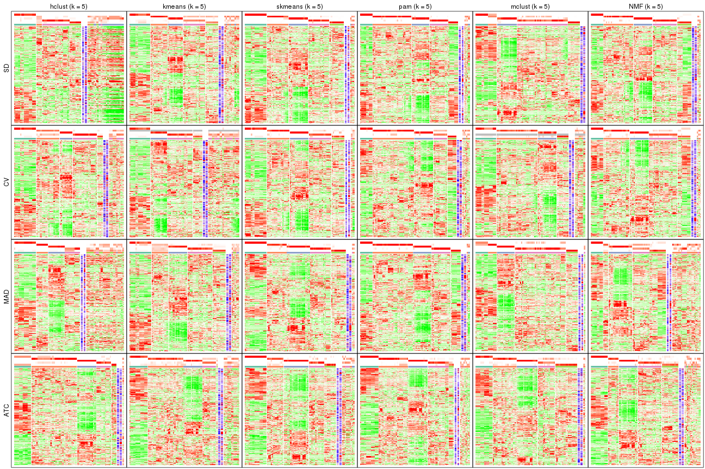
collect_plots(res_list, k = 6, fun = get_signatures, mc.cores = 4)
The statistics used for measuring the stability of consensus partitioning. (How are they defined?)
get_stats(res_list, k = 2)
#> k 1-PAC mean_silhouette concordance area_increased Rand Jaccard
#> SD:NMF 2 0.758 0.902 0.957 0.410 0.605 0.605
#> CV:NMF 2 0.498 0.878 0.892 0.389 0.617 0.617
#> MAD:NMF 2 0.868 0.899 0.960 0.432 0.570 0.570
#> ATC:NMF 2 1.000 0.984 0.993 0.333 0.675 0.675
#> SD:skmeans 2 0.582 0.552 0.830 0.486 0.538 0.538
#> CV:skmeans 2 0.605 0.864 0.925 0.479 0.497 0.497
#> MAD:skmeans 2 0.730 0.819 0.925 0.495 0.509 0.509
#> ATC:skmeans 2 1.000 0.983 0.992 0.502 0.498 0.498
#> SD:mclust 2 0.519 0.807 0.902 0.460 0.504 0.504
#> CV:mclust 2 0.293 0.689 0.746 0.401 0.675 0.675
#> MAD:mclust 2 0.796 0.956 0.967 0.410 0.566 0.566
#> ATC:mclust 2 0.444 0.817 0.884 0.479 0.500 0.500
#> SD:kmeans 2 0.493 0.909 0.899 0.343 0.661 0.661
#> CV:kmeans 2 0.345 0.676 0.746 0.382 0.661 0.661
#> MAD:kmeans 2 0.768 0.964 0.956 0.342 0.661 0.661
#> ATC:kmeans 2 0.511 0.767 0.795 0.335 0.661 0.661
#> SD:pam 2 1.000 0.997 0.999 0.327 0.675 0.675
#> CV:pam 2 0.522 0.694 0.813 0.319 0.713 0.713
#> MAD:pam 2 1.000 0.993 0.997 0.336 0.661 0.661
#> ATC:pam 2 0.518 0.926 0.922 0.323 0.675 0.675
#> SD:hclust 2 0.620 0.952 0.964 0.358 0.661 0.661
#> CV:hclust 2 0.493 0.907 0.922 0.259 0.780 0.780
#> MAD:hclust 2 0.415 0.841 0.876 0.388 0.661 0.661
#> ATC:hclust 2 0.497 0.768 0.811 0.328 0.661 0.661
get_stats(res_list, k = 3)
#> k 1-PAC mean_silhouette concordance area_increased Rand Jaccard
#> SD:NMF 3 0.844 0.898 0.957 0.499 0.685 0.521
#> CV:NMF 3 0.980 0.953 0.981 0.534 0.706 0.555
#> MAD:NMF 3 0.811 0.852 0.940 0.506 0.702 0.509
#> ATC:NMF 3 0.803 0.898 0.951 0.733 0.767 0.655
#> SD:skmeans 3 0.713 0.812 0.908 0.349 0.672 0.457
#> CV:skmeans 3 0.523 0.628 0.831 0.349 0.610 0.383
#> MAD:skmeans 3 0.938 0.923 0.968 0.304 0.768 0.578
#> ATC:skmeans 3 0.841 0.899 0.952 0.322 0.767 0.563
#> SD:mclust 3 0.791 0.889 0.940 0.360 0.839 0.691
#> CV:mclust 3 0.665 0.740 0.857 0.538 0.689 0.539
#> MAD:mclust 3 0.549 0.867 0.904 0.384 0.655 0.491
#> ATC:mclust 3 0.969 0.985 0.992 0.127 0.565 0.378
#> SD:kmeans 3 0.633 0.843 0.897 0.631 0.749 0.621
#> CV:kmeans 3 0.400 0.832 0.853 0.445 0.748 0.627
#> MAD:kmeans 3 0.492 0.761 0.789 0.648 0.777 0.662
#> ATC:kmeans 3 1.000 0.967 0.976 0.666 0.762 0.641
#> SD:pam 3 0.952 0.945 0.978 0.697 0.767 0.655
#> CV:pam 3 0.915 0.946 0.980 0.739 0.708 0.596
#> MAD:pam 3 0.742 0.920 0.952 0.712 0.767 0.648
#> ATC:pam 3 1.000 0.984 0.994 0.693 0.778 0.671
#> SD:hclust 3 0.637 0.839 0.917 0.548 0.777 0.662
#> CV:hclust 3 0.873 0.950 0.960 0.974 0.715 0.635
#> MAD:hclust 3 0.592 0.701 0.859 0.577 0.690 0.531
#> ATC:hclust 3 1.000 0.991 0.996 0.726 0.777 0.662
get_stats(res_list, k = 4)
#> k 1-PAC mean_silhouette concordance area_increased Rand Jaccard
#> SD:NMF 4 0.697 0.707 0.796 0.1654 0.786 0.503
#> CV:NMF 4 0.726 0.751 0.809 0.1980 0.817 0.569
#> MAD:NMF 4 0.682 0.610 0.777 0.1081 0.877 0.677
#> ATC:NMF 4 0.647 0.748 0.870 0.2509 0.818 0.599
#> SD:skmeans 4 0.743 0.730 0.839 0.1311 0.813 0.520
#> CV:skmeans 4 0.782 0.864 0.906 0.1422 0.816 0.546
#> MAD:skmeans 4 0.887 0.866 0.930 0.1360 0.892 0.708
#> ATC:skmeans 4 0.831 0.867 0.922 0.1263 0.836 0.562
#> SD:mclust 4 0.879 0.928 0.962 0.0777 0.954 0.878
#> CV:mclust 4 0.597 0.756 0.836 0.1320 0.913 0.772
#> MAD:mclust 4 0.960 0.944 0.967 0.1683 0.870 0.717
#> ATC:mclust 4 0.694 0.852 0.847 0.2930 0.812 0.594
#> SD:kmeans 4 0.617 0.466 0.739 0.2050 0.937 0.858
#> CV:kmeans 4 0.576 0.344 0.740 0.2095 0.967 0.928
#> MAD:kmeans 4 0.569 0.681 0.669 0.2171 1.000 1.000
#> ATC:kmeans 4 0.656 0.771 0.837 0.1896 0.987 0.970
#> SD:pam 4 0.962 0.943 0.979 0.0564 0.964 0.919
#> CV:pam 4 1.000 0.942 0.982 0.0599 0.964 0.918
#> MAD:pam 4 0.780 0.820 0.841 0.1381 0.977 0.947
#> ATC:pam 4 0.756 0.744 0.861 0.3261 0.808 0.575
#> SD:hclust 4 0.615 0.766 0.842 0.2936 0.819 0.586
#> CV:hclust 4 0.658 0.809 0.849 0.3313 0.790 0.576
#> MAD:hclust 4 0.740 0.715 0.767 0.1880 0.913 0.782
#> ATC:hclust 4 0.874 0.940 0.939 0.1626 0.868 0.699
get_stats(res_list, k = 5)
#> k 1-PAC mean_silhouette concordance area_increased Rand Jaccard
#> SD:NMF 5 0.898 0.890 0.943 0.0938 0.911 0.681
#> CV:NMF 5 0.768 0.810 0.866 0.0911 0.931 0.745
#> MAD:NMF 5 0.699 0.605 0.764 0.0782 0.810 0.452
#> ATC:NMF 5 0.683 0.725 0.837 0.0938 0.863 0.560
#> SD:skmeans 5 0.934 0.895 0.947 0.0775 0.895 0.619
#> CV:skmeans 5 0.799 0.843 0.894 0.0748 0.929 0.729
#> MAD:skmeans 5 0.946 0.919 0.949 0.0879 0.895 0.636
#> ATC:skmeans 5 0.804 0.805 0.889 0.0544 0.915 0.685
#> SD:mclust 5 0.805 0.870 0.842 0.0857 0.980 0.940
#> CV:mclust 5 0.693 0.701 0.773 0.0803 0.986 0.956
#> MAD:mclust 5 0.834 0.887 0.875 0.0885 0.980 0.942
#> ATC:mclust 5 0.741 0.835 0.862 0.1097 0.903 0.661
#> SD:kmeans 5 0.657 0.709 0.726 0.1104 0.773 0.464
#> CV:kmeans 5 0.604 0.583 0.727 0.1019 0.843 0.651
#> MAD:kmeans 5 0.652 0.733 0.733 0.1010 0.758 0.452
#> ATC:kmeans 5 0.624 0.703 0.801 0.1070 0.859 0.664
#> SD:pam 5 0.895 0.894 0.955 0.2690 0.848 0.628
#> CV:pam 5 0.775 0.799 0.889 0.2062 0.845 0.632
#> MAD:pam 5 0.938 0.930 0.971 0.1415 0.850 0.629
#> ATC:pam 5 0.833 0.756 0.875 0.0720 0.907 0.691
#> SD:hclust 5 0.650 0.574 0.746 0.0821 0.902 0.659
#> CV:hclust 5 0.713 0.765 0.846 0.0826 0.963 0.869
#> MAD:hclust 5 0.750 0.628 0.754 0.0719 0.804 0.483
#> ATC:hclust 5 0.808 0.831 0.866 0.1266 0.984 0.948
get_stats(res_list, k = 6)
#> k 1-PAC mean_silhouette concordance area_increased Rand Jaccard
#> SD:NMF 6 0.886 0.852 0.925 0.0460 0.921 0.671
#> CV:NMF 6 0.804 0.826 0.861 0.0493 0.924 0.676
#> MAD:NMF 6 0.863 0.857 0.916 0.0560 0.910 0.617
#> ATC:NMF 6 0.760 0.688 0.792 0.0427 0.958 0.801
#> SD:skmeans 6 0.892 0.822 0.893 0.0310 0.973 0.868
#> CV:skmeans 6 0.841 0.808 0.882 0.0384 0.960 0.811
#> MAD:skmeans 6 0.906 0.842 0.911 0.0330 0.973 0.868
#> ATC:skmeans 6 0.892 0.799 0.889 0.0364 0.953 0.781
#> SD:mclust 6 0.793 0.824 0.905 0.0955 0.880 0.614
#> CV:mclust 6 0.710 0.636 0.766 0.0586 0.891 0.648
#> MAD:mclust 6 0.879 0.896 0.948 0.1153 0.869 0.592
#> ATC:mclust 6 0.727 0.770 0.805 0.0410 0.990 0.953
#> SD:kmeans 6 0.650 0.725 0.755 0.0539 0.963 0.835
#> CV:kmeans 6 0.651 0.660 0.747 0.0520 0.906 0.707
#> MAD:kmeans 6 0.678 0.772 0.782 0.0538 0.949 0.777
#> ATC:kmeans 6 0.643 0.506 0.741 0.0647 0.985 0.950
#> SD:pam 6 0.930 0.908 0.960 0.0788 0.937 0.756
#> CV:pam 6 0.849 0.904 0.927 0.0760 0.914 0.703
#> MAD:pam 6 0.956 0.928 0.971 0.0877 0.934 0.740
#> ATC:pam 6 0.861 0.643 0.850 0.0247 0.961 0.849
#> SD:hclust 6 0.752 0.750 0.859 0.0466 0.908 0.626
#> CV:hclust 6 0.720 0.778 0.852 0.0350 0.978 0.910
#> MAD:hclust 6 0.711 0.638 0.729 0.0431 0.894 0.593
#> ATC:hclust 6 0.830 0.907 0.932 0.0765 0.907 0.681
Following heatmap plots the partition for each combination of methods and the lightness correspond to the silhouette scores for samples in each method. On top the consensus subgroup is inferred from all methods by taking the mean silhouette scores as weight.
collect_stats(res_list, k = 2)
collect_stats(res_list, k = 3)
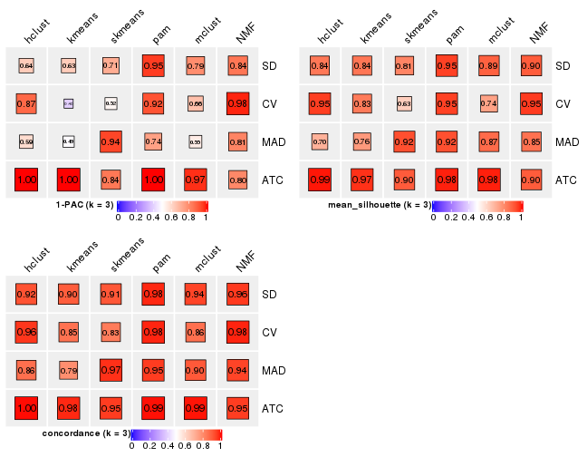
collect_stats(res_list, k = 4)
collect_stats(res_list, k = 5)
collect_stats(res_list, k = 6)
Collect partitions from all methods:
collect_classes(res_list, k = 2)
collect_classes(res_list, k = 3)
collect_classes(res_list, k = 4)
collect_classes(res_list, k = 5)
collect_classes(res_list, k = 6)
Overlap of top rows from different top-row methods:
top_rows_overlap(res_list, top_n = 1000, method = "euler")
top_rows_overlap(res_list, top_n = 2000, method = "euler")
top_rows_overlap(res_list, top_n = 3000, method = "euler")
top_rows_overlap(res_list, top_n = 4000, method = "euler")
top_rows_overlap(res_list, top_n = 5000, method = "euler")
Also visualize the correspondance of rankings between different top-row methods:
top_rows_overlap(res_list, top_n = 1000, method = "correspondance")

top_rows_overlap(res_list, top_n = 2000, method = "correspondance")
top_rows_overlap(res_list, top_n = 3000, method = "correspondance")
top_rows_overlap(res_list, top_n = 4000, method = "correspondance")
top_rows_overlap(res_list, top_n = 5000, method = "correspondance")
Heatmaps of the top rows:
top_rows_heatmap(res_list, top_n = 1000)
top_rows_heatmap(res_list, top_n = 2000)
top_rows_heatmap(res_list, top_n = 3000)
top_rows_heatmap(res_list, top_n = 4000)
top_rows_heatmap(res_list, top_n = 5000)
The object with results only for a single top-value method and a single partition method can be extracted as:
res = res_list["SD", "hclust"]
# you can also extract it by
# res = res_list["SD:hclust"]
A summary of res and all the functions that can be applied to it:
res
#> A 'ConsensusPartition' object with k = 2, 3, 4, 5, 6.
#> On a matrix with 16717 rows and 168 columns.
#> Top rows (1000, 2000, 3000, 4000, 5000) are extracted by 'SD' method.
#> Subgroups are detected by 'hclust' method.
#> Performed in total 1250 partitions by row resampling.
#> Best k for subgroups seems to be 3.
#>
#> Following methods can be applied to this 'ConsensusPartition' object:
#> [1] "cola_report" "collect_classes" "collect_plots"
#> [4] "collect_stats" "colnames" "compare_signatures"
#> [7] "consensus_heatmap" "dimension_reduction" "functional_enrichment"
#> [10] "get_anno_col" "get_anno" "get_classes"
#> [13] "get_consensus" "get_matrix" "get_membership"
#> [16] "get_param" "get_signatures" "get_stats"
#> [19] "is_best_k" "is_stable_k" "membership_heatmap"
#> [22] "ncol" "nrow" "plot_ecdf"
#> [25] "rownames" "select_partition_number" "show"
#> [28] "suggest_best_k" "test_to_known_factors"
collect_plots() function collects all the plots made from res for all k (number of partitions)
into one single page to provide an easy and fast comparison between different k.
collect_plots(res)
The plots are:
k and the heatmap of
predicted classes for each k.k.k.k.All the plots in panels can be made by individual functions and they are plotted later in this section.
select_partition_number() produces several plots showing different
statistics for choosing “optimized” k. There are following statistics:
k;k, the area increased is defined as \(A_k - A_{k-1}\).The detailed explanations of these statistics can be found in the cola vignette.
Generally speaking, lower PAC score, higher mean silhouette score or higher
concordance corresponds to better partition. Rand index and Jaccard index
measure how similar the current partition is compared to partition with k-1.
If they are too similar, we won't accept k is better than k-1.
select_partition_number(res)
The numeric values for all these statistics can be obtained by get_stats().
get_stats(res)
#> k 1-PAC mean_silhouette concordance area_increased Rand Jaccard
#> 2 2 0.620 0.952 0.964 0.3578 0.661 0.661
#> 3 3 0.637 0.839 0.917 0.5484 0.777 0.662
#> 4 4 0.615 0.766 0.842 0.2936 0.819 0.586
#> 5 5 0.650 0.574 0.746 0.0821 0.902 0.659
#> 6 6 0.752 0.750 0.859 0.0466 0.908 0.626
suggest_best_k() suggests the best \(k\) based on these statistics. The rules are as follows:
NA.suggest_best_k(res)
#> [1] 3
Following shows the table of the partitions (You need to click the show/hide
code output link to see it). The membership matrix (columns with name p*)
is inferred by
clue::cl_consensus()
function with the SE method. Basically the value in the membership matrix
represents the probability to belong to a certain group. The finall class
label for an item is determined with the group with highest probability it
belongs to.
In get_classes() function, the entropy is calculated from the membership
matrix and the silhouette score is calculated from the consensus matrix.
cbind(get_classes(res, k = 2), get_membership(res, k = 2))
#> class entropy silhouette p1 p2
#> SRR1768889 2 0.0000 0.954 0.000 1.000
#> SRR1768890 2 0.0000 0.954 0.000 1.000
#> SRR1768891 2 0.0000 0.954 0.000 1.000
#> SRR1768892 2 0.0000 0.954 0.000 1.000
#> SRR1768893 2 0.0000 0.954 0.000 1.000
#> SRR1768894 2 0.0000 0.954 0.000 1.000
#> SRR1768895 2 0.4690 0.925 0.100 0.900
#> SRR1768896 2 0.4690 0.925 0.100 0.900
#> SRR1768821 2 0.5294 0.916 0.120 0.880
#> SRR1768822 2 0.5294 0.916 0.120 0.880
#> SRR1768823 2 0.5294 0.916 0.120 0.880
#> SRR1768824 2 0.5294 0.916 0.120 0.880
#> SRR1768825 2 0.5178 0.918 0.116 0.884
#> SRR1768826 2 0.5178 0.918 0.116 0.884
#> SRR1768827 2 0.5178 0.918 0.116 0.884
#> SRR1768828 2 0.5178 0.918 0.116 0.884
#> SRR1768829 2 0.5178 0.918 0.116 0.884
#> SRR1768830 2 0.5178 0.918 0.116 0.884
#> SRR1768831 2 0.1414 0.952 0.020 0.980
#> SRR1768832 2 0.1414 0.952 0.020 0.980
#> SRR1768833 2 0.1414 0.952 0.020 0.980
#> SRR1768834 2 0.1414 0.952 0.020 0.980
#> SRR1768835 2 0.1414 0.952 0.020 0.980
#> SRR1768836 2 0.1414 0.952 0.020 0.980
#> SRR1768837 2 0.1414 0.952 0.020 0.980
#> SRR1768838 2 0.1414 0.952 0.020 0.980
#> SRR1768839 2 0.1414 0.952 0.020 0.980
#> SRR1768840 2 0.0938 0.953 0.012 0.988
#> SRR1768841 2 0.0938 0.953 0.012 0.988
#> SRR1768842 2 0.0938 0.953 0.012 0.988
#> SRR1768843 2 0.0938 0.953 0.012 0.988
#> SRR1768844 2 0.0000 0.954 0.000 1.000
#> SRR1768845 2 0.0000 0.954 0.000 1.000
#> SRR1768846 2 0.0000 0.954 0.000 1.000
#> SRR1768847 2 0.0000 0.954 0.000 1.000
#> SRR1768848 2 0.0000 0.954 0.000 1.000
#> SRR1768849 2 0.0000 0.954 0.000 1.000
#> SRR1768850 2 0.0000 0.954 0.000 1.000
#> SRR1768851 2 0.0000 0.954 0.000 1.000
#> SRR1768852 2 0.0376 0.954 0.004 0.996
#> SRR1768853 2 0.0376 0.954 0.004 0.996
#> SRR1768854 2 0.0376 0.954 0.004 0.996
#> SRR1768855 2 0.0000 0.954 0.000 1.000
#> SRR1768856 2 0.0000 0.954 0.000 1.000
#> SRR1768857 2 0.0000 0.954 0.000 1.000
#> SRR1768858 2 0.0000 0.954 0.000 1.000
#> SRR1768859 2 0.0000 0.954 0.000 1.000
#> SRR1768860 2 0.0000 0.954 0.000 1.000
#> SRR1768861 2 0.0000 0.954 0.000 1.000
#> SRR1768862 2 0.0000 0.954 0.000 1.000
#> SRR1768863 2 0.0000 0.954 0.000 1.000
#> SRR1768864 2 0.0000 0.954 0.000 1.000
#> SRR1768865 2 0.0000 0.954 0.000 1.000
#> SRR1768866 2 0.0000 0.954 0.000 1.000
#> SRR1768867 2 0.5294 0.916 0.120 0.880
#> SRR1768868 2 0.5294 0.916 0.120 0.880
#> SRR1768869 2 0.5294 0.916 0.120 0.880
#> SRR1768870 2 0.5294 0.916 0.120 0.880
#> SRR1768871 2 0.5294 0.916 0.120 0.880
#> SRR1768872 2 0.5294 0.916 0.120 0.880
#> SRR1768873 2 0.5294 0.916 0.120 0.880
#> SRR1768874 2 0.5294 0.916 0.120 0.880
#> SRR1768875 2 0.0000 0.954 0.000 1.000
#> SRR1768876 2 0.0000 0.954 0.000 1.000
#> SRR1768877 2 0.0000 0.954 0.000 1.000
#> SRR1768878 2 0.0000 0.954 0.000 1.000
#> SRR1768879 2 0.0000 0.954 0.000 1.000
#> SRR1768880 2 0.0000 0.954 0.000 1.000
#> SRR1768881 2 0.0000 0.954 0.000 1.000
#> SRR1768882 2 0.0000 0.954 0.000 1.000
#> SRR1768883 2 0.0000 0.954 0.000 1.000
#> SRR1768884 2 0.0000 0.954 0.000 1.000
#> SRR1768885 2 0.0000 0.954 0.000 1.000
#> SRR1768886 2 0.0000 0.954 0.000 1.000
#> SRR1768887 2 0.0000 0.954 0.000 1.000
#> SRR1768888 2 0.0000 0.954 0.000 1.000
#> SRR1768897 2 0.4690 0.925 0.100 0.900
#> SRR1768898 2 0.4690 0.925 0.100 0.900
#> SRR1768899 2 0.4690 0.925 0.100 0.900
#> SRR1768900 2 0.4690 0.925 0.100 0.900
#> SRR1768901 2 0.0000 0.954 0.000 1.000
#> SRR1768902 2 0.0000 0.954 0.000 1.000
#> SRR1768903 2 0.0000 0.954 0.000 1.000
#> SRR1768904 2 0.0000 0.954 0.000 1.000
#> SRR1768905 2 0.0000 0.954 0.000 1.000
#> SRR1768906 2 0.0000 0.954 0.000 1.000
#> SRR1768907 2 0.0000 0.954 0.000 1.000
#> SRR1768908 2 0.0000 0.954 0.000 1.000
#> SRR1768909 2 0.0000 0.954 0.000 1.000
#> SRR1768910 2 0.0000 0.954 0.000 1.000
#> SRR1768911 2 0.0000 0.954 0.000 1.000
#> SRR1768912 2 0.0000 0.954 0.000 1.000
#> SRR1768913 2 0.0000 0.954 0.000 1.000
#> SRR1768914 2 0.0000 0.954 0.000 1.000
#> SRR1768915 2 0.0000 0.954 0.000 1.000
#> SRR1768916 2 0.5294 0.916 0.120 0.880
#> SRR1768917 2 0.5294 0.916 0.120 0.880
#> SRR1768918 2 0.0000 0.954 0.000 1.000
#> SRR1768919 2 0.0000 0.954 0.000 1.000
#> SRR1768920 2 0.5294 0.916 0.120 0.880
#> SRR1768921 2 0.5294 0.916 0.120 0.880
#> SRR1768922 2 0.0000 0.954 0.000 1.000
#> SRR1768923 2 0.0000 0.954 0.000 1.000
#> SRR1768924 2 0.0938 0.953 0.012 0.988
#> SRR1768925 2 0.0938 0.953 0.012 0.988
#> SRR1768926 2 0.0938 0.953 0.012 0.988
#> SRR1768927 2 0.0938 0.953 0.012 0.988
#> SRR1768928 2 0.0938 0.953 0.012 0.988
#> SRR1768929 2 0.0938 0.953 0.012 0.988
#> SRR1768930 2 0.5294 0.916 0.120 0.880
#> SRR1768931 2 0.5294 0.916 0.120 0.880
#> SRR1768932 2 0.5294 0.916 0.120 0.880
#> SRR1768933 2 0.5294 0.916 0.120 0.880
#> SRR1768934 2 0.5294 0.916 0.120 0.880
#> SRR1768935 2 0.5294 0.916 0.120 0.880
#> SRR1768936 2 0.5294 0.916 0.120 0.880
#> SRR1768937 2 0.5294 0.916 0.120 0.880
#> SRR1768938 2 0.5294 0.916 0.120 0.880
#> SRR1768939 2 0.5294 0.916 0.120 0.880
#> SRR1768940 2 0.5294 0.916 0.120 0.880
#> SRR1768941 2 0.5294 0.916 0.120 0.880
#> SRR1768942 2 0.5294 0.916 0.120 0.880
#> SRR1768943 2 0.5294 0.916 0.120 0.880
#> SRR1768944 2 0.5294 0.916 0.120 0.880
#> SRR1768945 2 0.5294 0.916 0.120 0.880
#> SRR1768946 2 0.5294 0.916 0.120 0.880
#> SRR1768947 2 0.0000 0.954 0.000 1.000
#> SRR1768948 2 0.0000 0.954 0.000 1.000
#> SRR1768949 2 0.0000 0.954 0.000 1.000
#> SRR1768950 2 0.4562 0.926 0.096 0.904
#> SRR1768954 1 0.0000 0.996 1.000 0.000
#> SRR1768955 1 0.0000 0.996 1.000 0.000
#> SRR1768956 1 0.0000 0.996 1.000 0.000
#> SRR1768957 1 0.0000 0.996 1.000 0.000
#> SRR1768958 1 0.0000 0.996 1.000 0.000
#> SRR1768959 1 0.0000 0.996 1.000 0.000
#> SRR1768960 1 0.0000 0.996 1.000 0.000
#> SRR1768961 1 0.0000 0.996 1.000 0.000
#> SRR1768952 2 0.4562 0.926 0.096 0.904
#> SRR1768953 2 0.4562 0.926 0.096 0.904
#> SRR1768962 1 0.0000 0.996 1.000 0.000
#> SRR1768963 1 0.0000 0.996 1.000 0.000
#> SRR1768964 1 0.0000 0.996 1.000 0.000
#> SRR1768965 1 0.0000 0.996 1.000 0.000
#> SRR1768966 1 0.0000 0.996 1.000 0.000
#> SRR1768967 1 0.0000 0.996 1.000 0.000
#> SRR1768968 1 0.0000 0.996 1.000 0.000
#> SRR1768969 1 0.0000 0.996 1.000 0.000
#> SRR1768970 1 0.0000 0.996 1.000 0.000
#> SRR1768971 1 0.0000 0.996 1.000 0.000
#> SRR1768972 1 0.0000 0.996 1.000 0.000
#> SRR1768973 1 0.0000 0.996 1.000 0.000
#> SRR1768974 1 0.0000 0.996 1.000 0.000
#> SRR1768975 1 0.0000 0.996 1.000 0.000
#> SRR1768976 1 0.0000 0.996 1.000 0.000
#> SRR1768977 1 0.0000 0.996 1.000 0.000
#> SRR1768978 1 0.0000 0.996 1.000 0.000
#> SRR1768979 1 0.0000 0.996 1.000 0.000
#> SRR1768980 1 0.0000 0.996 1.000 0.000
#> SRR1768981 1 0.0000 0.996 1.000 0.000
#> SRR1768982 1 0.0000 0.996 1.000 0.000
#> SRR1768983 1 0.0000 0.996 1.000 0.000
#> SRR1768984 1 0.3274 0.932 0.940 0.060
#> SRR1768985 1 0.3274 0.932 0.940 0.060
#> SRR1768986 1 0.0000 0.996 1.000 0.000
#> SRR1768987 1 0.0000 0.996 1.000 0.000
#> SRR1768988 1 0.0000 0.996 1.000 0.000
#> SRR1768989 1 0.0000 0.996 1.000 0.000
cbind(get_classes(res, k = 3), get_membership(res, k = 3))
#> class entropy silhouette p1 p2 p3
#> SRR1768889 3 0.0000 0.7643 0.00 0.000 1.000
#> SRR1768890 3 0.0000 0.7643 0.00 0.000 1.000
#> SRR1768891 2 0.3340 0.8797 0.00 0.880 0.120
#> SRR1768892 2 0.3340 0.8797 0.00 0.880 0.120
#> SRR1768893 2 0.3340 0.8797 0.00 0.880 0.120
#> SRR1768894 2 0.3340 0.8797 0.00 0.880 0.120
#> SRR1768895 2 0.0892 0.8940 0.00 0.980 0.020
#> SRR1768896 2 0.0892 0.8940 0.00 0.980 0.020
#> SRR1768821 2 0.0000 0.8908 0.00 1.000 0.000
#> SRR1768822 2 0.0000 0.8908 0.00 1.000 0.000
#> SRR1768823 2 0.0000 0.8908 0.00 1.000 0.000
#> SRR1768824 2 0.0000 0.8908 0.00 1.000 0.000
#> SRR1768825 2 0.0237 0.8915 0.00 0.996 0.004
#> SRR1768826 2 0.0237 0.8915 0.00 0.996 0.004
#> SRR1768827 2 0.0237 0.8915 0.00 0.996 0.004
#> SRR1768828 2 0.0237 0.8915 0.00 0.996 0.004
#> SRR1768829 2 0.0237 0.8915 0.00 0.996 0.004
#> SRR1768830 2 0.0237 0.8915 0.00 0.996 0.004
#> SRR1768831 2 0.2959 0.8876 0.00 0.900 0.100
#> SRR1768832 2 0.2959 0.8876 0.00 0.900 0.100
#> SRR1768833 2 0.2959 0.8876 0.00 0.900 0.100
#> SRR1768834 2 0.2959 0.8876 0.00 0.900 0.100
#> SRR1768835 2 0.2959 0.8876 0.00 0.900 0.100
#> SRR1768836 2 0.2959 0.8876 0.00 0.900 0.100
#> SRR1768837 2 0.2959 0.8876 0.00 0.900 0.100
#> SRR1768838 2 0.2959 0.8876 0.00 0.900 0.100
#> SRR1768839 2 0.2959 0.8876 0.00 0.900 0.100
#> SRR1768840 2 0.3116 0.8854 0.00 0.892 0.108
#> SRR1768841 2 0.3116 0.8854 0.00 0.892 0.108
#> SRR1768842 2 0.3116 0.8854 0.00 0.892 0.108
#> SRR1768843 2 0.3116 0.8854 0.00 0.892 0.108
#> SRR1768844 3 0.4796 0.6881 0.00 0.220 0.780
#> SRR1768845 3 0.4796 0.6881 0.00 0.220 0.780
#> SRR1768846 3 0.0000 0.7643 0.00 0.000 1.000
#> SRR1768847 3 0.0000 0.7643 0.00 0.000 1.000
#> SRR1768848 3 0.0000 0.7643 0.00 0.000 1.000
#> SRR1768849 3 0.0000 0.7643 0.00 0.000 1.000
#> SRR1768850 3 0.4796 0.6881 0.00 0.220 0.780
#> SRR1768851 3 0.4796 0.6881 0.00 0.220 0.780
#> SRR1768852 2 0.4178 0.8442 0.00 0.828 0.172
#> SRR1768853 2 0.4178 0.8442 0.00 0.828 0.172
#> SRR1768854 2 0.4178 0.8442 0.00 0.828 0.172
#> SRR1768855 3 0.0000 0.7643 0.00 0.000 1.000
#> SRR1768856 3 0.0000 0.7643 0.00 0.000 1.000
#> SRR1768857 3 0.0000 0.7643 0.00 0.000 1.000
#> SRR1768858 3 0.5678 0.5701 0.00 0.316 0.684
#> SRR1768859 3 0.5678 0.5701 0.00 0.316 0.684
#> SRR1768860 3 0.5678 0.5701 0.00 0.316 0.684
#> SRR1768861 3 0.6299 -0.0049 0.00 0.476 0.524
#> SRR1768862 3 0.6299 -0.0049 0.00 0.476 0.524
#> SRR1768863 2 0.4452 0.8247 0.00 0.808 0.192
#> SRR1768864 2 0.4452 0.8247 0.00 0.808 0.192
#> SRR1768865 3 0.6299 -0.0049 0.00 0.476 0.524
#> SRR1768866 3 0.6299 -0.0049 0.00 0.476 0.524
#> SRR1768867 2 0.0000 0.8908 0.00 1.000 0.000
#> SRR1768868 2 0.0000 0.8908 0.00 1.000 0.000
#> SRR1768869 2 0.0000 0.8908 0.00 1.000 0.000
#> SRR1768870 2 0.0000 0.8908 0.00 1.000 0.000
#> SRR1768871 2 0.0000 0.8908 0.00 1.000 0.000
#> SRR1768872 2 0.0000 0.8908 0.00 1.000 0.000
#> SRR1768873 2 0.0000 0.8908 0.00 1.000 0.000
#> SRR1768874 2 0.0000 0.8908 0.00 1.000 0.000
#> SRR1768875 3 0.0000 0.7643 0.00 0.000 1.000
#> SRR1768876 3 0.0000 0.7643 0.00 0.000 1.000
#> SRR1768877 3 0.0000 0.7643 0.00 0.000 1.000
#> SRR1768878 3 0.0000 0.7643 0.00 0.000 1.000
#> SRR1768879 2 0.5497 0.6580 0.00 0.708 0.292
#> SRR1768880 2 0.5497 0.6580 0.00 0.708 0.292
#> SRR1768881 2 0.5465 0.6658 0.00 0.712 0.288
#> SRR1768882 2 0.5465 0.6658 0.00 0.712 0.288
#> SRR1768883 2 0.5621 0.6277 0.00 0.692 0.308
#> SRR1768884 2 0.5621 0.6277 0.00 0.692 0.308
#> SRR1768885 3 0.0000 0.7643 0.00 0.000 1.000
#> SRR1768886 3 0.0000 0.7643 0.00 0.000 1.000
#> SRR1768887 3 0.0000 0.7643 0.00 0.000 1.000
#> SRR1768888 3 0.0000 0.7643 0.00 0.000 1.000
#> SRR1768897 2 0.0892 0.8940 0.00 0.980 0.020
#> SRR1768898 2 0.0892 0.8940 0.00 0.980 0.020
#> SRR1768899 2 0.0892 0.8940 0.00 0.980 0.020
#> SRR1768900 2 0.0892 0.8940 0.00 0.980 0.020
#> SRR1768901 2 0.4605 0.8111 0.00 0.796 0.204
#> SRR1768902 2 0.4605 0.8111 0.00 0.796 0.204
#> SRR1768903 2 0.4605 0.8111 0.00 0.796 0.204
#> SRR1768904 2 0.4605 0.8111 0.00 0.796 0.204
#> SRR1768905 2 0.4605 0.8111 0.00 0.796 0.204
#> SRR1768906 2 0.4605 0.8111 0.00 0.796 0.204
#> SRR1768907 2 0.3879 0.8616 0.00 0.848 0.152
#> SRR1768908 2 0.3879 0.8616 0.00 0.848 0.152
#> SRR1768909 2 0.3879 0.8616 0.00 0.848 0.152
#> SRR1768910 2 0.3879 0.8616 0.00 0.848 0.152
#> SRR1768911 2 0.3879 0.8616 0.00 0.848 0.152
#> SRR1768912 2 0.3879 0.8616 0.00 0.848 0.152
#> SRR1768913 2 0.3879 0.8616 0.00 0.848 0.152
#> SRR1768914 2 0.3879 0.8616 0.00 0.848 0.152
#> SRR1768915 2 0.3879 0.8616 0.00 0.848 0.152
#> SRR1768916 2 0.0000 0.8908 0.00 1.000 0.000
#> SRR1768917 2 0.0000 0.8908 0.00 1.000 0.000
#> SRR1768918 2 0.4605 0.8111 0.00 0.796 0.204
#> SRR1768919 2 0.4605 0.8111 0.00 0.796 0.204
#> SRR1768920 2 0.0000 0.8908 0.00 1.000 0.000
#> SRR1768921 2 0.0000 0.8908 0.00 1.000 0.000
#> SRR1768922 2 0.4605 0.8111 0.00 0.796 0.204
#> SRR1768923 2 0.4605 0.8111 0.00 0.796 0.204
#> SRR1768924 2 0.3116 0.8854 0.00 0.892 0.108
#> SRR1768925 2 0.3116 0.8854 0.00 0.892 0.108
#> SRR1768926 2 0.3116 0.8854 0.00 0.892 0.108
#> SRR1768927 2 0.3116 0.8854 0.00 0.892 0.108
#> SRR1768928 2 0.3116 0.8854 0.00 0.892 0.108
#> SRR1768929 2 0.3116 0.8854 0.00 0.892 0.108
#> SRR1768930 2 0.0000 0.8908 0.00 1.000 0.000
#> SRR1768931 2 0.0000 0.8908 0.00 1.000 0.000
#> SRR1768932 2 0.0000 0.8908 0.00 1.000 0.000
#> SRR1768933 2 0.0000 0.8908 0.00 1.000 0.000
#> SRR1768934 2 0.0000 0.8908 0.00 1.000 0.000
#> SRR1768935 2 0.0000 0.8908 0.00 1.000 0.000
#> SRR1768936 2 0.0000 0.8908 0.00 1.000 0.000
#> SRR1768937 2 0.0000 0.8908 0.00 1.000 0.000
#> SRR1768938 2 0.0000 0.8908 0.00 1.000 0.000
#> SRR1768939 2 0.0000 0.8908 0.00 1.000 0.000
#> SRR1768940 2 0.0000 0.8908 0.00 1.000 0.000
#> SRR1768941 2 0.0000 0.8908 0.00 1.000 0.000
#> SRR1768942 2 0.0000 0.8908 0.00 1.000 0.000
#> SRR1768943 2 0.0000 0.8908 0.00 1.000 0.000
#> SRR1768944 2 0.0000 0.8908 0.00 1.000 0.000
#> SRR1768945 2 0.0000 0.8908 0.00 1.000 0.000
#> SRR1768946 2 0.0000 0.8908 0.00 1.000 0.000
#> SRR1768947 3 0.6045 0.4449 0.00 0.380 0.620
#> SRR1768948 3 0.6045 0.4449 0.00 0.380 0.620
#> SRR1768949 3 0.6045 0.4449 0.00 0.380 0.620
#> SRR1768950 2 0.1031 0.8932 0.00 0.976 0.024
#> SRR1768954 1 0.0000 0.9880 1.00 0.000 0.000
#> SRR1768955 1 0.0000 0.9880 1.00 0.000 0.000
#> SRR1768956 1 0.0000 0.9880 1.00 0.000 0.000
#> SRR1768957 1 0.0000 0.9880 1.00 0.000 0.000
#> SRR1768958 1 0.0000 0.9880 1.00 0.000 0.000
#> SRR1768959 1 0.0000 0.9880 1.00 0.000 0.000
#> SRR1768960 1 0.0000 0.9880 1.00 0.000 0.000
#> SRR1768961 1 0.0000 0.9880 1.00 0.000 0.000
#> SRR1768952 2 0.1031 0.8932 0.00 0.976 0.024
#> SRR1768953 2 0.1031 0.8932 0.00 0.976 0.024
#> SRR1768962 1 0.0000 0.9880 1.00 0.000 0.000
#> SRR1768963 1 0.0000 0.9880 1.00 0.000 0.000
#> SRR1768964 1 0.0000 0.9880 1.00 0.000 0.000
#> SRR1768965 1 0.0000 0.9880 1.00 0.000 0.000
#> SRR1768966 1 0.0000 0.9880 1.00 0.000 0.000
#> SRR1768967 1 0.0000 0.9880 1.00 0.000 0.000
#> SRR1768968 1 0.0000 0.9880 1.00 0.000 0.000
#> SRR1768969 1 0.0000 0.9880 1.00 0.000 0.000
#> SRR1768970 1 0.0000 0.9880 1.00 0.000 0.000
#> SRR1768971 1 0.0000 0.9880 1.00 0.000 0.000
#> SRR1768972 1 0.0000 0.9880 1.00 0.000 0.000
#> SRR1768973 1 0.0000 0.9880 1.00 0.000 0.000
#> SRR1768974 1 0.0000 0.9880 1.00 0.000 0.000
#> SRR1768975 1 0.0000 0.9880 1.00 0.000 0.000
#> SRR1768976 1 0.0000 0.9880 1.00 0.000 0.000
#> SRR1768977 1 0.0000 0.9880 1.00 0.000 0.000
#> SRR1768978 1 0.0000 0.9880 1.00 0.000 0.000
#> SRR1768979 1 0.0000 0.9880 1.00 0.000 0.000
#> SRR1768980 1 0.0000 0.9880 1.00 0.000 0.000
#> SRR1768981 1 0.0000 0.9880 1.00 0.000 0.000
#> SRR1768982 1 0.0000 0.9880 1.00 0.000 0.000
#> SRR1768983 1 0.0000 0.9880 1.00 0.000 0.000
#> SRR1768984 1 0.4291 0.7712 0.82 0.180 0.000
#> SRR1768985 1 0.4291 0.7712 0.82 0.180 0.000
#> SRR1768986 1 0.0000 0.9880 1.00 0.000 0.000
#> SRR1768987 1 0.0000 0.9880 1.00 0.000 0.000
#> SRR1768988 1 0.0000 0.9880 1.00 0.000 0.000
#> SRR1768989 1 0.0000 0.9880 1.00 0.000 0.000
cbind(get_classes(res, k = 4), get_membership(res, k = 4))
#> class entropy silhouette p1 p2 p3 p4
#> SRR1768889 3 0.0000 0.77378 0.00 0.000 1.000 0.000
#> SRR1768890 3 0.0000 0.77378 0.00 0.000 1.000 0.000
#> SRR1768891 4 0.4826 0.75474 0.00 0.264 0.020 0.716
#> SRR1768892 4 0.4826 0.75474 0.00 0.264 0.020 0.716
#> SRR1768893 4 0.4826 0.75474 0.00 0.264 0.020 0.716
#> SRR1768894 4 0.4826 0.75474 0.00 0.264 0.020 0.716
#> SRR1768895 2 0.2921 0.79561 0.00 0.860 0.000 0.140
#> SRR1768896 2 0.2921 0.79561 0.00 0.860 0.000 0.140
#> SRR1768821 2 0.0000 0.88747 0.00 1.000 0.000 0.000
#> SRR1768822 2 0.0000 0.88747 0.00 1.000 0.000 0.000
#> SRR1768823 2 0.0000 0.88747 0.00 1.000 0.000 0.000
#> SRR1768824 2 0.0000 0.88747 0.00 1.000 0.000 0.000
#> SRR1768825 2 0.0188 0.88695 0.00 0.996 0.000 0.004
#> SRR1768826 2 0.0188 0.88695 0.00 0.996 0.000 0.004
#> SRR1768827 2 0.0188 0.88695 0.00 0.996 0.000 0.004
#> SRR1768828 2 0.0188 0.88695 0.00 0.996 0.000 0.004
#> SRR1768829 2 0.0188 0.88695 0.00 0.996 0.000 0.004
#> SRR1768830 2 0.0188 0.88695 0.00 0.996 0.000 0.004
#> SRR1768831 4 0.1867 0.70777 0.00 0.072 0.000 0.928
#> SRR1768832 4 0.1867 0.70777 0.00 0.072 0.000 0.928
#> SRR1768833 4 0.1867 0.70777 0.00 0.072 0.000 0.928
#> SRR1768834 4 0.1867 0.70777 0.00 0.072 0.000 0.928
#> SRR1768835 4 0.1867 0.70777 0.00 0.072 0.000 0.928
#> SRR1768836 4 0.1867 0.70777 0.00 0.072 0.000 0.928
#> SRR1768837 4 0.1867 0.70777 0.00 0.072 0.000 0.928
#> SRR1768838 4 0.1867 0.70777 0.00 0.072 0.000 0.928
#> SRR1768839 4 0.1867 0.70777 0.00 0.072 0.000 0.928
#> SRR1768840 4 0.0921 0.71723 0.00 0.028 0.000 0.972
#> SRR1768841 4 0.0921 0.71723 0.00 0.028 0.000 0.972
#> SRR1768842 4 0.0921 0.71723 0.00 0.028 0.000 0.972
#> SRR1768843 4 0.0921 0.71723 0.00 0.028 0.000 0.972
#> SRR1768844 3 0.5018 0.64201 0.00 0.144 0.768 0.088
#> SRR1768845 3 0.5018 0.64201 0.00 0.144 0.768 0.088
#> SRR1768846 3 0.0000 0.77378 0.00 0.000 1.000 0.000
#> SRR1768847 3 0.0000 0.77378 0.00 0.000 1.000 0.000
#> SRR1768848 3 0.0000 0.77378 0.00 0.000 1.000 0.000
#> SRR1768849 3 0.0000 0.77378 0.00 0.000 1.000 0.000
#> SRR1768850 3 0.5018 0.64201 0.00 0.144 0.768 0.088
#> SRR1768851 3 0.5018 0.64201 0.00 0.144 0.768 0.088
#> SRR1768852 4 0.6520 0.53074 0.00 0.384 0.080 0.536
#> SRR1768853 4 0.6520 0.53074 0.00 0.384 0.080 0.536
#> SRR1768854 4 0.6520 0.53074 0.00 0.384 0.080 0.536
#> SRR1768855 3 0.0000 0.77378 0.00 0.000 1.000 0.000
#> SRR1768856 3 0.0000 0.77378 0.00 0.000 1.000 0.000
#> SRR1768857 3 0.0000 0.77378 0.00 0.000 1.000 0.000
#> SRR1768858 3 0.6924 0.41860 0.00 0.180 0.588 0.232
#> SRR1768859 3 0.6924 0.41860 0.00 0.180 0.588 0.232
#> SRR1768860 3 0.6924 0.41860 0.00 0.180 0.588 0.232
#> SRR1768861 3 0.5912 -0.00987 0.00 0.036 0.524 0.440
#> SRR1768862 3 0.5912 -0.00987 0.00 0.036 0.524 0.440
#> SRR1768863 4 0.5964 0.74685 0.00 0.228 0.096 0.676
#> SRR1768864 4 0.5964 0.74685 0.00 0.228 0.096 0.676
#> SRR1768865 3 0.5912 -0.00987 0.00 0.036 0.524 0.440
#> SRR1768866 3 0.5912 -0.00987 0.00 0.036 0.524 0.440
#> SRR1768867 2 0.0000 0.88747 0.00 1.000 0.000 0.000
#> SRR1768868 2 0.0000 0.88747 0.00 1.000 0.000 0.000
#> SRR1768869 2 0.2704 0.81533 0.00 0.876 0.000 0.124
#> SRR1768870 2 0.2704 0.81533 0.00 0.876 0.000 0.124
#> SRR1768871 2 0.2704 0.81533 0.00 0.876 0.000 0.124
#> SRR1768872 2 0.2704 0.81533 0.00 0.876 0.000 0.124
#> SRR1768873 2 0.2704 0.81533 0.00 0.876 0.000 0.124
#> SRR1768874 2 0.2704 0.81533 0.00 0.876 0.000 0.124
#> SRR1768875 3 0.0000 0.77378 0.00 0.000 1.000 0.000
#> SRR1768876 3 0.0000 0.77378 0.00 0.000 1.000 0.000
#> SRR1768877 3 0.0000 0.77378 0.00 0.000 1.000 0.000
#> SRR1768878 3 0.0000 0.77378 0.00 0.000 1.000 0.000
#> SRR1768879 4 0.6286 0.66032 0.00 0.140 0.200 0.660
#> SRR1768880 4 0.6286 0.66032 0.00 0.140 0.200 0.660
#> SRR1768881 4 0.6295 0.66466 0.00 0.144 0.196 0.660
#> SRR1768882 4 0.6295 0.66466 0.00 0.144 0.196 0.660
#> SRR1768883 4 0.6281 0.64499 0.00 0.128 0.216 0.656
#> SRR1768884 4 0.6281 0.64499 0.00 0.128 0.216 0.656
#> SRR1768885 3 0.0000 0.77378 0.00 0.000 1.000 0.000
#> SRR1768886 3 0.0000 0.77378 0.00 0.000 1.000 0.000
#> SRR1768887 3 0.0000 0.77378 0.00 0.000 1.000 0.000
#> SRR1768888 3 0.0000 0.77378 0.00 0.000 1.000 0.000
#> SRR1768897 2 0.2921 0.79561 0.00 0.860 0.000 0.140
#> SRR1768898 2 0.2921 0.79561 0.00 0.860 0.000 0.140
#> SRR1768899 2 0.2921 0.79561 0.00 0.860 0.000 0.140
#> SRR1768900 2 0.2921 0.79561 0.00 0.860 0.000 0.140
#> SRR1768901 4 0.6031 0.74882 0.00 0.216 0.108 0.676
#> SRR1768902 4 0.6031 0.74882 0.00 0.216 0.108 0.676
#> SRR1768903 4 0.6031 0.74882 0.00 0.216 0.108 0.676
#> SRR1768904 4 0.6031 0.74882 0.00 0.216 0.108 0.676
#> SRR1768905 4 0.6031 0.74882 0.00 0.216 0.108 0.676
#> SRR1768906 4 0.6031 0.74882 0.00 0.216 0.108 0.676
#> SRR1768907 4 0.5247 0.76931 0.00 0.228 0.052 0.720
#> SRR1768908 4 0.5247 0.76931 0.00 0.228 0.052 0.720
#> SRR1768909 4 0.5247 0.76931 0.00 0.228 0.052 0.720
#> SRR1768910 4 0.5247 0.76931 0.00 0.228 0.052 0.720
#> SRR1768911 4 0.5247 0.76931 0.00 0.228 0.052 0.720
#> SRR1768912 4 0.5247 0.76931 0.00 0.228 0.052 0.720
#> SRR1768913 4 0.5247 0.76931 0.00 0.228 0.052 0.720
#> SRR1768914 4 0.5247 0.76931 0.00 0.228 0.052 0.720
#> SRR1768915 4 0.5247 0.76931 0.00 0.228 0.052 0.720
#> SRR1768916 2 0.1557 0.86447 0.00 0.944 0.000 0.056
#> SRR1768917 2 0.1557 0.86447 0.00 0.944 0.000 0.056
#> SRR1768918 4 0.5929 0.74709 0.00 0.204 0.108 0.688
#> SRR1768919 4 0.5929 0.74709 0.00 0.204 0.108 0.688
#> SRR1768920 2 0.0188 0.88597 0.00 0.996 0.000 0.004
#> SRR1768921 2 0.0188 0.88597 0.00 0.996 0.000 0.004
#> SRR1768922 4 0.5929 0.74709 0.00 0.204 0.108 0.688
#> SRR1768923 4 0.5929 0.74709 0.00 0.204 0.108 0.688
#> SRR1768924 4 0.0921 0.71723 0.00 0.028 0.000 0.972
#> SRR1768925 4 0.0921 0.71723 0.00 0.028 0.000 0.972
#> SRR1768926 4 0.0921 0.71723 0.00 0.028 0.000 0.972
#> SRR1768927 4 0.0921 0.71723 0.00 0.028 0.000 0.972
#> SRR1768928 4 0.0921 0.71723 0.00 0.028 0.000 0.972
#> SRR1768929 4 0.0921 0.71723 0.00 0.028 0.000 0.972
#> SRR1768930 2 0.0000 0.88747 0.00 1.000 0.000 0.000
#> SRR1768931 2 0.0000 0.88747 0.00 1.000 0.000 0.000
#> SRR1768932 2 0.0000 0.88747 0.00 1.000 0.000 0.000
#> SRR1768933 2 0.0000 0.88747 0.00 1.000 0.000 0.000
#> SRR1768934 2 0.0000 0.88747 0.00 1.000 0.000 0.000
#> SRR1768935 2 0.0000 0.88747 0.00 1.000 0.000 0.000
#> SRR1768936 2 0.0000 0.88747 0.00 1.000 0.000 0.000
#> SRR1768937 2 0.0000 0.88747 0.00 1.000 0.000 0.000
#> SRR1768938 2 0.0000 0.88747 0.00 1.000 0.000 0.000
#> SRR1768939 2 0.2530 0.81933 0.00 0.888 0.000 0.112
#> SRR1768940 2 0.2530 0.81933 0.00 0.888 0.000 0.112
#> SRR1768941 2 0.2530 0.81933 0.00 0.888 0.000 0.112
#> SRR1768942 2 0.2530 0.81933 0.00 0.888 0.000 0.112
#> SRR1768943 2 0.2530 0.81933 0.00 0.888 0.000 0.112
#> SRR1768944 2 0.2530 0.81933 0.00 0.888 0.000 0.112
#> SRR1768945 2 0.2530 0.81933 0.00 0.888 0.000 0.112
#> SRR1768946 2 0.2530 0.81933 0.00 0.888 0.000 0.112
#> SRR1768947 3 0.7337 0.28272 0.00 0.204 0.524 0.272
#> SRR1768948 3 0.7337 0.28272 0.00 0.204 0.524 0.272
#> SRR1768949 3 0.7337 0.28272 0.00 0.204 0.524 0.272
#> SRR1768950 2 0.5607 -0.21442 0.00 0.492 0.020 0.488
#> SRR1768954 1 0.0000 0.98816 1.00 0.000 0.000 0.000
#> SRR1768955 1 0.0000 0.98816 1.00 0.000 0.000 0.000
#> SRR1768956 1 0.0000 0.98816 1.00 0.000 0.000 0.000
#> SRR1768957 1 0.0000 0.98816 1.00 0.000 0.000 0.000
#> SRR1768958 1 0.0000 0.98816 1.00 0.000 0.000 0.000
#> SRR1768959 1 0.0000 0.98816 1.00 0.000 0.000 0.000
#> SRR1768960 1 0.0000 0.98816 1.00 0.000 0.000 0.000
#> SRR1768961 1 0.0000 0.98816 1.00 0.000 0.000 0.000
#> SRR1768952 2 0.5607 -0.21442 0.00 0.492 0.020 0.488
#> SRR1768953 2 0.5607 -0.21442 0.00 0.492 0.020 0.488
#> SRR1768962 1 0.0000 0.98816 1.00 0.000 0.000 0.000
#> SRR1768963 1 0.0000 0.98816 1.00 0.000 0.000 0.000
#> SRR1768964 1 0.0000 0.98816 1.00 0.000 0.000 0.000
#> SRR1768965 1 0.0000 0.98816 1.00 0.000 0.000 0.000
#> SRR1768966 1 0.0000 0.98816 1.00 0.000 0.000 0.000
#> SRR1768967 1 0.0000 0.98816 1.00 0.000 0.000 0.000
#> SRR1768968 1 0.0000 0.98816 1.00 0.000 0.000 0.000
#> SRR1768969 1 0.0000 0.98816 1.00 0.000 0.000 0.000
#> SRR1768970 1 0.0000 0.98816 1.00 0.000 0.000 0.000
#> SRR1768971 1 0.0000 0.98816 1.00 0.000 0.000 0.000
#> SRR1768972 1 0.0000 0.98816 1.00 0.000 0.000 0.000
#> SRR1768973 1 0.0000 0.98816 1.00 0.000 0.000 0.000
#> SRR1768974 1 0.0000 0.98816 1.00 0.000 0.000 0.000
#> SRR1768975 1 0.0000 0.98816 1.00 0.000 0.000 0.000
#> SRR1768976 1 0.0000 0.98816 1.00 0.000 0.000 0.000
#> SRR1768977 1 0.0000 0.98816 1.00 0.000 0.000 0.000
#> SRR1768978 1 0.0000 0.98816 1.00 0.000 0.000 0.000
#> SRR1768979 1 0.0000 0.98816 1.00 0.000 0.000 0.000
#> SRR1768980 1 0.0000 0.98816 1.00 0.000 0.000 0.000
#> SRR1768981 1 0.0000 0.98816 1.00 0.000 0.000 0.000
#> SRR1768982 1 0.0000 0.98816 1.00 0.000 0.000 0.000
#> SRR1768983 1 0.0000 0.98816 1.00 0.000 0.000 0.000
#> SRR1768984 1 0.3400 0.77829 0.82 0.180 0.000 0.000
#> SRR1768985 1 0.3400 0.77829 0.82 0.180 0.000 0.000
#> SRR1768986 1 0.0000 0.98816 1.00 0.000 0.000 0.000
#> SRR1768987 1 0.0000 0.98816 1.00 0.000 0.000 0.000
#> SRR1768988 1 0.0000 0.98816 1.00 0.000 0.000 0.000
#> SRR1768989 1 0.0000 0.98816 1.00 0.000 0.000 0.000
cbind(get_classes(res, k = 5), get_membership(res, k = 5))
#> class entropy silhouette p1 p2 p3 p4 p5
#> SRR1768889 3 0.4305 0.4540 0.000 0.488 0.512 0.000 0.000
#> SRR1768890 3 0.4305 0.4540 0.000 0.488 0.512 0.000 0.000
#> SRR1768891 5 0.7833 0.2413 0.000 0.208 0.120 0.204 0.468
#> SRR1768892 5 0.7833 0.2413 0.000 0.208 0.120 0.204 0.468
#> SRR1768893 5 0.7833 0.2413 0.000 0.208 0.120 0.204 0.468
#> SRR1768894 5 0.7833 0.2413 0.000 0.208 0.120 0.204 0.468
#> SRR1768895 4 0.3932 0.7584 0.000 0.036 0.092 0.828 0.044
#> SRR1768896 4 0.3932 0.7584 0.000 0.036 0.092 0.828 0.044
#> SRR1768821 4 0.0000 0.8793 0.000 0.000 0.000 1.000 0.000
#> SRR1768822 4 0.0000 0.8793 0.000 0.000 0.000 1.000 0.000
#> SRR1768823 4 0.0000 0.8793 0.000 0.000 0.000 1.000 0.000
#> SRR1768824 4 0.0000 0.8793 0.000 0.000 0.000 1.000 0.000
#> SRR1768825 4 0.0162 0.8790 0.000 0.000 0.004 0.996 0.000
#> SRR1768826 4 0.0162 0.8790 0.000 0.000 0.004 0.996 0.000
#> SRR1768827 4 0.0162 0.8790 0.000 0.000 0.004 0.996 0.000
#> SRR1768828 4 0.0162 0.8790 0.000 0.000 0.004 0.996 0.000
#> SRR1768829 4 0.0162 0.8790 0.000 0.000 0.004 0.996 0.000
#> SRR1768830 4 0.0162 0.8790 0.000 0.000 0.004 0.996 0.000
#> SRR1768831 5 0.0162 0.7405 0.000 0.000 0.000 0.004 0.996
#> SRR1768832 5 0.0162 0.7405 0.000 0.000 0.000 0.004 0.996
#> SRR1768833 5 0.0162 0.7405 0.000 0.000 0.000 0.004 0.996
#> SRR1768834 5 0.0162 0.7405 0.000 0.000 0.000 0.004 0.996
#> SRR1768835 5 0.0162 0.7405 0.000 0.000 0.000 0.004 0.996
#> SRR1768836 5 0.0162 0.7405 0.000 0.000 0.000 0.004 0.996
#> SRR1768837 5 0.0162 0.7405 0.000 0.000 0.000 0.004 0.996
#> SRR1768838 5 0.0162 0.7405 0.000 0.000 0.000 0.004 0.996
#> SRR1768839 5 0.0162 0.7405 0.000 0.000 0.000 0.004 0.996
#> SRR1768840 5 0.1270 0.7427 0.000 0.000 0.052 0.000 0.948
#> SRR1768841 5 0.1270 0.7427 0.000 0.000 0.052 0.000 0.948
#> SRR1768842 5 0.1270 0.7427 0.000 0.000 0.052 0.000 0.948
#> SRR1768843 5 0.1270 0.7427 0.000 0.000 0.052 0.000 0.948
#> SRR1768844 3 0.5354 0.3681 0.000 0.240 0.652 0.108 0.000
#> SRR1768845 3 0.5354 0.3681 0.000 0.240 0.652 0.108 0.000
#> SRR1768846 3 0.4305 0.4540 0.000 0.488 0.512 0.000 0.000
#> SRR1768847 3 0.4305 0.4540 0.000 0.488 0.512 0.000 0.000
#> SRR1768848 3 0.4305 0.4540 0.000 0.488 0.512 0.000 0.000
#> SRR1768849 3 0.4305 0.4540 0.000 0.488 0.512 0.000 0.000
#> SRR1768850 3 0.5354 0.3681 0.000 0.240 0.652 0.108 0.000
#> SRR1768851 3 0.5354 0.3681 0.000 0.240 0.652 0.108 0.000
#> SRR1768852 3 0.7568 -0.2895 0.000 0.316 0.360 0.284 0.040
#> SRR1768853 3 0.7568 -0.2895 0.000 0.316 0.360 0.284 0.040
#> SRR1768854 3 0.7568 -0.2895 0.000 0.316 0.360 0.284 0.040
#> SRR1768855 3 0.4305 0.4540 0.000 0.488 0.512 0.000 0.000
#> SRR1768856 3 0.4305 0.4540 0.000 0.488 0.512 0.000 0.000
#> SRR1768857 3 0.4305 0.4540 0.000 0.488 0.512 0.000 0.000
#> SRR1768858 3 0.2338 0.2239 0.000 0.000 0.884 0.112 0.004
#> SRR1768859 3 0.2338 0.2239 0.000 0.000 0.884 0.112 0.004
#> SRR1768860 3 0.2338 0.2239 0.000 0.000 0.884 0.112 0.004
#> SRR1768861 2 0.5353 -0.0481 0.000 0.568 0.036 0.012 0.384
#> SRR1768862 2 0.5353 -0.0481 0.000 0.568 0.036 0.012 0.384
#> SRR1768863 3 0.7955 -0.4454 0.000 0.140 0.388 0.136 0.336
#> SRR1768864 3 0.7955 -0.4454 0.000 0.140 0.388 0.136 0.336
#> SRR1768865 2 0.5353 -0.0481 0.000 0.568 0.036 0.012 0.384
#> SRR1768866 2 0.5353 -0.0481 0.000 0.568 0.036 0.012 0.384
#> SRR1768867 4 0.0000 0.8793 0.000 0.000 0.000 1.000 0.000
#> SRR1768868 4 0.0000 0.8793 0.000 0.000 0.000 1.000 0.000
#> SRR1768869 4 0.2605 0.7913 0.000 0.000 0.000 0.852 0.148
#> SRR1768870 4 0.2605 0.7913 0.000 0.000 0.000 0.852 0.148
#> SRR1768871 4 0.2605 0.7913 0.000 0.000 0.000 0.852 0.148
#> SRR1768872 4 0.2605 0.7913 0.000 0.000 0.000 0.852 0.148
#> SRR1768873 4 0.2605 0.7913 0.000 0.000 0.000 0.852 0.148
#> SRR1768874 4 0.2605 0.7913 0.000 0.000 0.000 0.852 0.148
#> SRR1768875 3 0.4305 0.4540 0.000 0.488 0.512 0.000 0.000
#> SRR1768876 3 0.4305 0.4540 0.000 0.488 0.512 0.000 0.000
#> SRR1768877 3 0.4305 0.4540 0.000 0.488 0.512 0.000 0.000
#> SRR1768878 3 0.4305 0.4540 0.000 0.488 0.512 0.000 0.000
#> SRR1768879 5 0.6644 0.4038 0.000 0.404 0.048 0.080 0.468
#> SRR1768880 5 0.6644 0.4038 0.000 0.404 0.048 0.080 0.468
#> SRR1768881 5 0.6684 0.4046 0.000 0.400 0.048 0.084 0.468
#> SRR1768882 5 0.6684 0.4046 0.000 0.400 0.048 0.084 0.468
#> SRR1768883 5 0.6757 0.3976 0.000 0.400 0.060 0.076 0.464
#> SRR1768884 5 0.6757 0.3976 0.000 0.400 0.060 0.076 0.464
#> SRR1768885 3 0.4305 0.4540 0.000 0.488 0.512 0.000 0.000
#> SRR1768886 3 0.4305 0.4540 0.000 0.488 0.512 0.000 0.000
#> SRR1768887 3 0.4305 0.4540 0.000 0.488 0.512 0.000 0.000
#> SRR1768888 3 0.4305 0.4540 0.000 0.488 0.512 0.000 0.000
#> SRR1768897 4 0.3932 0.7584 0.000 0.036 0.092 0.828 0.044
#> SRR1768898 4 0.3932 0.7584 0.000 0.036 0.092 0.828 0.044
#> SRR1768899 4 0.3932 0.7584 0.000 0.036 0.092 0.828 0.044
#> SRR1768900 4 0.3932 0.7584 0.000 0.036 0.092 0.828 0.044
#> SRR1768901 3 0.7905 -0.4900 0.000 0.344 0.388 0.124 0.144
#> SRR1768902 3 0.7905 -0.4900 0.000 0.344 0.388 0.124 0.144
#> SRR1768903 3 0.7905 -0.4900 0.000 0.344 0.388 0.124 0.144
#> SRR1768904 3 0.7905 -0.4900 0.000 0.344 0.388 0.124 0.144
#> SRR1768905 3 0.7905 -0.4900 0.000 0.344 0.388 0.124 0.144
#> SRR1768906 3 0.7905 -0.4900 0.000 0.344 0.388 0.124 0.144
#> SRR1768907 2 0.8290 0.6028 0.000 0.352 0.304 0.160 0.184
#> SRR1768908 2 0.8290 0.6028 0.000 0.352 0.304 0.160 0.184
#> SRR1768909 2 0.8290 0.6028 0.000 0.352 0.304 0.160 0.184
#> SRR1768910 2 0.8290 0.6028 0.000 0.352 0.304 0.160 0.184
#> SRR1768911 2 0.8290 0.6028 0.000 0.352 0.304 0.160 0.184
#> SRR1768912 2 0.8290 0.6028 0.000 0.352 0.304 0.160 0.184
#> SRR1768913 2 0.8290 0.6028 0.000 0.352 0.304 0.160 0.184
#> SRR1768914 2 0.8290 0.6028 0.000 0.352 0.304 0.160 0.184
#> SRR1768915 2 0.8290 0.6028 0.000 0.352 0.304 0.160 0.184
#> SRR1768916 4 0.1341 0.8558 0.000 0.000 0.000 0.944 0.056
#> SRR1768917 4 0.1341 0.8558 0.000 0.000 0.000 0.944 0.056
#> SRR1768918 3 0.7816 -0.4844 0.000 0.344 0.400 0.112 0.144
#> SRR1768919 3 0.7816 -0.4844 0.000 0.344 0.400 0.112 0.144
#> SRR1768920 4 0.0162 0.8786 0.000 0.000 0.004 0.996 0.000
#> SRR1768921 4 0.0162 0.8786 0.000 0.000 0.004 0.996 0.000
#> SRR1768922 3 0.7816 -0.4844 0.000 0.344 0.400 0.112 0.144
#> SRR1768923 3 0.7816 -0.4844 0.000 0.344 0.400 0.112 0.144
#> SRR1768924 5 0.1270 0.7427 0.000 0.000 0.052 0.000 0.948
#> SRR1768925 5 0.1270 0.7427 0.000 0.000 0.052 0.000 0.948
#> SRR1768926 5 0.1270 0.7427 0.000 0.000 0.052 0.000 0.948
#> SRR1768927 5 0.1270 0.7427 0.000 0.000 0.052 0.000 0.948
#> SRR1768928 5 0.1270 0.7427 0.000 0.000 0.052 0.000 0.948
#> SRR1768929 5 0.1270 0.7427 0.000 0.000 0.052 0.000 0.948
#> SRR1768930 4 0.0000 0.8793 0.000 0.000 0.000 1.000 0.000
#> SRR1768931 4 0.0000 0.8793 0.000 0.000 0.000 1.000 0.000
#> SRR1768932 4 0.0000 0.8793 0.000 0.000 0.000 1.000 0.000
#> SRR1768933 4 0.0000 0.8793 0.000 0.000 0.000 1.000 0.000
#> SRR1768934 4 0.0000 0.8793 0.000 0.000 0.000 1.000 0.000
#> SRR1768935 4 0.0000 0.8793 0.000 0.000 0.000 1.000 0.000
#> SRR1768936 4 0.0000 0.8793 0.000 0.000 0.000 1.000 0.000
#> SRR1768937 4 0.0000 0.8793 0.000 0.000 0.000 1.000 0.000
#> SRR1768938 4 0.0000 0.8793 0.000 0.000 0.000 1.000 0.000
#> SRR1768939 4 0.2629 0.8118 0.000 0.136 0.004 0.860 0.000
#> SRR1768940 4 0.2629 0.8118 0.000 0.136 0.004 0.860 0.000
#> SRR1768941 4 0.2629 0.8118 0.000 0.136 0.004 0.860 0.000
#> SRR1768942 4 0.2629 0.8118 0.000 0.136 0.004 0.860 0.000
#> SRR1768943 4 0.2629 0.8118 0.000 0.136 0.004 0.860 0.000
#> SRR1768944 4 0.2629 0.8118 0.000 0.136 0.004 0.860 0.000
#> SRR1768945 4 0.2629 0.8118 0.000 0.136 0.004 0.860 0.000
#> SRR1768946 4 0.2629 0.8118 0.000 0.136 0.004 0.860 0.000
#> SRR1768947 3 0.3876 0.1446 0.000 0.068 0.812 0.116 0.004
#> SRR1768948 3 0.3876 0.1446 0.000 0.068 0.812 0.116 0.004
#> SRR1768949 3 0.3876 0.1446 0.000 0.068 0.812 0.116 0.004
#> SRR1768950 4 0.7978 -0.1564 0.000 0.268 0.140 0.432 0.160
#> SRR1768954 1 0.2548 0.9147 0.876 0.004 0.116 0.000 0.004
#> SRR1768955 1 0.2548 0.9147 0.876 0.004 0.116 0.000 0.004
#> SRR1768956 1 0.2548 0.9147 0.876 0.004 0.116 0.000 0.004
#> SRR1768957 1 0.2548 0.9147 0.876 0.004 0.116 0.000 0.004
#> SRR1768958 1 0.2548 0.9147 0.876 0.004 0.116 0.000 0.004
#> SRR1768959 1 0.2548 0.9147 0.876 0.004 0.116 0.000 0.004
#> SRR1768960 1 0.2548 0.9147 0.876 0.004 0.116 0.000 0.004
#> SRR1768961 1 0.2548 0.9147 0.876 0.004 0.116 0.000 0.004
#> SRR1768952 4 0.7978 -0.1564 0.000 0.268 0.140 0.432 0.160
#> SRR1768953 4 0.7978 -0.1564 0.000 0.268 0.140 0.432 0.160
#> SRR1768962 1 0.1043 0.9281 0.960 0.040 0.000 0.000 0.000
#> SRR1768963 1 0.1043 0.9281 0.960 0.040 0.000 0.000 0.000
#> SRR1768964 1 0.1043 0.9281 0.960 0.040 0.000 0.000 0.000
#> SRR1768965 1 0.1043 0.9281 0.960 0.040 0.000 0.000 0.000
#> SRR1768966 1 0.1043 0.9281 0.960 0.040 0.000 0.000 0.000
#> SRR1768967 1 0.1043 0.9281 0.960 0.040 0.000 0.000 0.000
#> SRR1768968 1 0.1043 0.9281 0.960 0.040 0.000 0.000 0.000
#> SRR1768969 1 0.1043 0.9281 0.960 0.040 0.000 0.000 0.000
#> SRR1768970 1 0.1043 0.9281 0.960 0.040 0.000 0.000 0.000
#> SRR1768971 1 0.1043 0.9281 0.960 0.040 0.000 0.000 0.000
#> SRR1768972 1 0.2548 0.9147 0.876 0.004 0.116 0.000 0.004
#> SRR1768973 1 0.2548 0.9147 0.876 0.004 0.116 0.000 0.004
#> SRR1768974 1 0.2548 0.9147 0.876 0.004 0.116 0.000 0.004
#> SRR1768975 1 0.2548 0.9147 0.876 0.004 0.116 0.000 0.004
#> SRR1768976 1 0.2548 0.9147 0.876 0.004 0.116 0.000 0.004
#> SRR1768977 1 0.2548 0.9147 0.876 0.004 0.116 0.000 0.004
#> SRR1768978 1 0.1043 0.9281 0.960 0.040 0.000 0.000 0.000
#> SRR1768979 1 0.1043 0.9281 0.960 0.040 0.000 0.000 0.000
#> SRR1768980 1 0.1043 0.9281 0.960 0.040 0.000 0.000 0.000
#> SRR1768981 1 0.1043 0.9281 0.960 0.040 0.000 0.000 0.000
#> SRR1768982 1 0.1043 0.9281 0.960 0.040 0.000 0.000 0.000
#> SRR1768983 1 0.1043 0.9281 0.960 0.040 0.000 0.000 0.000
#> SRR1768984 1 0.5397 0.7322 0.696 0.008 0.116 0.176 0.004
#> SRR1768985 1 0.5397 0.7322 0.696 0.008 0.116 0.176 0.004
#> SRR1768986 1 0.0000 0.9285 1.000 0.000 0.000 0.000 0.000
#> SRR1768987 1 0.0000 0.9285 1.000 0.000 0.000 0.000 0.000
#> SRR1768988 1 0.0000 0.9285 1.000 0.000 0.000 0.000 0.000
#> SRR1768989 1 0.0000 0.9285 1.000 0.000 0.000 0.000 0.000
cbind(get_classes(res, k = 6), get_membership(res, k = 6))
#> class entropy silhouette p1 p2 p3 p4 p5 p6
#> SRR1768889 3 0.0000 0.8456 0.000 0.000 1.000 0.000 0.000 0.000
#> SRR1768890 3 0.0000 0.8456 0.000 0.000 1.000 0.000 0.000 0.000
#> SRR1768891 5 0.6599 0.4171 0.060 0.316 0.000 0.160 0.464 0.000
#> SRR1768892 5 0.6599 0.4171 0.060 0.316 0.000 0.160 0.464 0.000
#> SRR1768893 5 0.6599 0.4171 0.060 0.316 0.000 0.160 0.464 0.000
#> SRR1768894 5 0.6599 0.4171 0.060 0.316 0.000 0.160 0.464 0.000
#> SRR1768895 4 0.3637 0.7402 0.008 0.164 0.000 0.788 0.040 0.000
#> SRR1768896 4 0.3637 0.7402 0.008 0.164 0.000 0.788 0.040 0.000
#> SRR1768821 4 0.0000 0.9103 0.000 0.000 0.000 1.000 0.000 0.000
#> SRR1768822 4 0.0000 0.9103 0.000 0.000 0.000 1.000 0.000 0.000
#> SRR1768823 4 0.0000 0.9103 0.000 0.000 0.000 1.000 0.000 0.000
#> SRR1768824 4 0.0000 0.9103 0.000 0.000 0.000 1.000 0.000 0.000
#> SRR1768825 4 0.0508 0.9081 0.012 0.004 0.000 0.984 0.000 0.000
#> SRR1768826 4 0.0508 0.9081 0.012 0.004 0.000 0.984 0.000 0.000
#> SRR1768827 4 0.0508 0.9081 0.012 0.004 0.000 0.984 0.000 0.000
#> SRR1768828 4 0.0508 0.9081 0.012 0.004 0.000 0.984 0.000 0.000
#> SRR1768829 4 0.0508 0.9081 0.012 0.004 0.000 0.984 0.000 0.000
#> SRR1768830 4 0.0508 0.9081 0.012 0.004 0.000 0.984 0.000 0.000
#> SRR1768831 5 0.0291 0.7815 0.004 0.004 0.000 0.000 0.992 0.000
#> SRR1768832 5 0.0291 0.7815 0.004 0.004 0.000 0.000 0.992 0.000
#> SRR1768833 5 0.0291 0.7815 0.004 0.004 0.000 0.000 0.992 0.000
#> SRR1768834 5 0.0291 0.7815 0.004 0.004 0.000 0.000 0.992 0.000
#> SRR1768835 5 0.0291 0.7815 0.004 0.004 0.000 0.000 0.992 0.000
#> SRR1768836 5 0.0291 0.7815 0.004 0.004 0.000 0.000 0.992 0.000
#> SRR1768837 5 0.0291 0.7815 0.004 0.004 0.000 0.000 0.992 0.000
#> SRR1768838 5 0.0291 0.7815 0.004 0.004 0.000 0.000 0.992 0.000
#> SRR1768839 5 0.0291 0.7815 0.004 0.004 0.000 0.000 0.992 0.000
#> SRR1768840 5 0.1141 0.7829 0.000 0.052 0.000 0.000 0.948 0.000
#> SRR1768841 5 0.1141 0.7829 0.000 0.052 0.000 0.000 0.948 0.000
#> SRR1768842 5 0.1141 0.7829 0.000 0.052 0.000 0.000 0.948 0.000
#> SRR1768843 5 0.1141 0.7829 0.000 0.052 0.000 0.000 0.948 0.000
#> SRR1768844 3 0.3337 0.5406 0.000 0.260 0.736 0.000 0.004 0.000
#> SRR1768845 3 0.3337 0.5406 0.000 0.260 0.736 0.000 0.004 0.000
#> SRR1768846 3 0.0000 0.8456 0.000 0.000 1.000 0.000 0.000 0.000
#> SRR1768847 3 0.0000 0.8456 0.000 0.000 1.000 0.000 0.000 0.000
#> SRR1768848 3 0.0000 0.8456 0.000 0.000 1.000 0.000 0.000 0.000
#> SRR1768849 3 0.0000 0.8456 0.000 0.000 1.000 0.000 0.000 0.000
#> SRR1768850 3 0.3337 0.5406 0.000 0.260 0.736 0.000 0.004 0.000
#> SRR1768851 3 0.3337 0.5406 0.000 0.260 0.736 0.000 0.004 0.000
#> SRR1768852 2 0.4239 0.5826 0.040 0.756 0.000 0.168 0.036 0.000
#> SRR1768853 2 0.4239 0.5826 0.040 0.756 0.000 0.168 0.036 0.000
#> SRR1768854 2 0.4239 0.5826 0.040 0.756 0.000 0.168 0.036 0.000
#> SRR1768855 3 0.0000 0.8456 0.000 0.000 1.000 0.000 0.000 0.000
#> SRR1768856 3 0.0000 0.8456 0.000 0.000 1.000 0.000 0.000 0.000
#> SRR1768857 3 0.0000 0.8456 0.000 0.000 1.000 0.000 0.000 0.000
#> SRR1768858 2 0.3998 0.0842 0.000 0.504 0.492 0.000 0.004 0.000
#> SRR1768859 2 0.3998 0.0842 0.000 0.504 0.492 0.000 0.004 0.000
#> SRR1768860 2 0.3998 0.0842 0.000 0.504 0.492 0.000 0.004 0.000
#> SRR1768861 3 0.5905 0.1467 0.020 0.104 0.524 0.008 0.344 0.000
#> SRR1768862 3 0.5905 0.1467 0.020 0.104 0.524 0.008 0.344 0.000
#> SRR1768863 2 0.4014 0.5175 0.000 0.696 0.004 0.024 0.276 0.000
#> SRR1768864 2 0.4014 0.5175 0.000 0.696 0.004 0.024 0.276 0.000
#> SRR1768865 3 0.5905 0.1467 0.020 0.104 0.524 0.008 0.344 0.000
#> SRR1768866 3 0.5905 0.1467 0.020 0.104 0.524 0.008 0.344 0.000
#> SRR1768867 4 0.0000 0.9103 0.000 0.000 0.000 1.000 0.000 0.000
#> SRR1768868 4 0.0000 0.9103 0.000 0.000 0.000 1.000 0.000 0.000
#> SRR1768869 4 0.2692 0.8191 0.012 0.000 0.000 0.840 0.148 0.000
#> SRR1768870 4 0.2692 0.8191 0.012 0.000 0.000 0.840 0.148 0.000
#> SRR1768871 4 0.2692 0.8191 0.012 0.000 0.000 0.840 0.148 0.000
#> SRR1768872 4 0.2692 0.8191 0.012 0.000 0.000 0.840 0.148 0.000
#> SRR1768873 4 0.2692 0.8191 0.012 0.000 0.000 0.840 0.148 0.000
#> SRR1768874 4 0.2692 0.8191 0.012 0.000 0.000 0.840 0.148 0.000
#> SRR1768875 3 0.0000 0.8456 0.000 0.000 1.000 0.000 0.000 0.000
#> SRR1768876 3 0.0000 0.8456 0.000 0.000 1.000 0.000 0.000 0.000
#> SRR1768877 3 0.0000 0.8456 0.000 0.000 1.000 0.000 0.000 0.000
#> SRR1768878 3 0.0000 0.8456 0.000 0.000 1.000 0.000 0.000 0.000
#> SRR1768879 5 0.7593 0.5179 0.060 0.208 0.196 0.072 0.464 0.000
#> SRR1768880 5 0.7593 0.5179 0.060 0.208 0.196 0.072 0.464 0.000
#> SRR1768881 5 0.7615 0.5201 0.060 0.208 0.192 0.076 0.464 0.000
#> SRR1768882 5 0.7615 0.5201 0.060 0.208 0.192 0.076 0.464 0.000
#> SRR1768883 5 0.7588 0.5043 0.060 0.200 0.212 0.068 0.460 0.000
#> SRR1768884 5 0.7588 0.5043 0.060 0.200 0.212 0.068 0.460 0.000
#> SRR1768885 3 0.0000 0.8456 0.000 0.000 1.000 0.000 0.000 0.000
#> SRR1768886 3 0.0000 0.8456 0.000 0.000 1.000 0.000 0.000 0.000
#> SRR1768887 3 0.0000 0.8456 0.000 0.000 1.000 0.000 0.000 0.000
#> SRR1768888 3 0.0000 0.8456 0.000 0.000 1.000 0.000 0.000 0.000
#> SRR1768897 4 0.3637 0.7402 0.008 0.164 0.000 0.788 0.040 0.000
#> SRR1768898 4 0.3637 0.7402 0.008 0.164 0.000 0.788 0.040 0.000
#> SRR1768899 4 0.3637 0.7402 0.008 0.164 0.000 0.788 0.040 0.000
#> SRR1768900 4 0.3637 0.7402 0.008 0.164 0.000 0.788 0.040 0.000
#> SRR1768901 2 0.2563 0.7410 0.004 0.884 0.004 0.032 0.076 0.000
#> SRR1768902 2 0.2563 0.7410 0.004 0.884 0.004 0.032 0.076 0.000
#> SRR1768903 2 0.2563 0.7410 0.004 0.884 0.004 0.032 0.076 0.000
#> SRR1768904 2 0.2563 0.7410 0.004 0.884 0.004 0.032 0.076 0.000
#> SRR1768905 2 0.2563 0.7410 0.004 0.884 0.004 0.032 0.076 0.000
#> SRR1768906 2 0.2563 0.7410 0.004 0.884 0.004 0.032 0.076 0.000
#> SRR1768907 2 0.3044 0.7277 0.000 0.836 0.000 0.048 0.116 0.000
#> SRR1768908 2 0.3044 0.7277 0.000 0.836 0.000 0.048 0.116 0.000
#> SRR1768909 2 0.3044 0.7277 0.000 0.836 0.000 0.048 0.116 0.000
#> SRR1768910 2 0.3044 0.7277 0.000 0.836 0.000 0.048 0.116 0.000
#> SRR1768911 2 0.3044 0.7277 0.000 0.836 0.000 0.048 0.116 0.000
#> SRR1768912 2 0.3044 0.7277 0.000 0.836 0.000 0.048 0.116 0.000
#> SRR1768913 2 0.3044 0.7277 0.000 0.836 0.000 0.048 0.116 0.000
#> SRR1768914 2 0.3044 0.7277 0.000 0.836 0.000 0.048 0.116 0.000
#> SRR1768915 2 0.3044 0.7277 0.000 0.836 0.000 0.048 0.116 0.000
#> SRR1768916 4 0.1563 0.8848 0.012 0.000 0.000 0.932 0.056 0.000
#> SRR1768917 4 0.1563 0.8848 0.012 0.000 0.000 0.932 0.056 0.000
#> SRR1768918 2 0.1843 0.7307 0.004 0.912 0.004 0.000 0.080 0.000
#> SRR1768919 2 0.1843 0.7307 0.004 0.912 0.004 0.000 0.080 0.000
#> SRR1768920 4 0.0146 0.9093 0.000 0.004 0.000 0.996 0.000 0.000
#> SRR1768921 4 0.0146 0.9093 0.000 0.004 0.000 0.996 0.000 0.000
#> SRR1768922 2 0.1843 0.7307 0.004 0.912 0.004 0.000 0.080 0.000
#> SRR1768923 2 0.1843 0.7307 0.004 0.912 0.004 0.000 0.080 0.000
#> SRR1768924 5 0.1141 0.7829 0.000 0.052 0.000 0.000 0.948 0.000
#> SRR1768925 5 0.1141 0.7829 0.000 0.052 0.000 0.000 0.948 0.000
#> SRR1768926 5 0.1141 0.7829 0.000 0.052 0.000 0.000 0.948 0.000
#> SRR1768927 5 0.1141 0.7829 0.000 0.052 0.000 0.000 0.948 0.000
#> SRR1768928 5 0.1141 0.7829 0.000 0.052 0.000 0.000 0.948 0.000
#> SRR1768929 5 0.1141 0.7829 0.000 0.052 0.000 0.000 0.948 0.000
#> SRR1768930 4 0.0000 0.9103 0.000 0.000 0.000 1.000 0.000 0.000
#> SRR1768931 4 0.0000 0.9103 0.000 0.000 0.000 1.000 0.000 0.000
#> SRR1768932 4 0.0000 0.9103 0.000 0.000 0.000 1.000 0.000 0.000
#> SRR1768933 4 0.0000 0.9103 0.000 0.000 0.000 1.000 0.000 0.000
#> SRR1768934 4 0.0000 0.9103 0.000 0.000 0.000 1.000 0.000 0.000
#> SRR1768935 4 0.0000 0.9103 0.000 0.000 0.000 1.000 0.000 0.000
#> SRR1768936 4 0.0000 0.9103 0.000 0.000 0.000 1.000 0.000 0.000
#> SRR1768937 4 0.0000 0.9103 0.000 0.000 0.000 1.000 0.000 0.000
#> SRR1768938 4 0.0000 0.9103 0.000 0.000 0.000 1.000 0.000 0.000
#> SRR1768939 4 0.2728 0.8418 0.040 0.100 0.000 0.860 0.000 0.000
#> SRR1768940 4 0.2728 0.8418 0.040 0.100 0.000 0.860 0.000 0.000
#> SRR1768941 4 0.2728 0.8418 0.040 0.100 0.000 0.860 0.000 0.000
#> SRR1768942 4 0.2728 0.8418 0.040 0.100 0.000 0.860 0.000 0.000
#> SRR1768943 4 0.2728 0.8418 0.040 0.100 0.000 0.860 0.000 0.000
#> SRR1768944 4 0.2728 0.8418 0.040 0.100 0.000 0.860 0.000 0.000
#> SRR1768945 4 0.2728 0.8418 0.040 0.100 0.000 0.860 0.000 0.000
#> SRR1768946 4 0.2728 0.8418 0.040 0.100 0.000 0.860 0.000 0.000
#> SRR1768947 2 0.4063 0.2739 0.004 0.572 0.420 0.004 0.000 0.000
#> SRR1768948 2 0.4063 0.2739 0.004 0.572 0.420 0.004 0.000 0.000
#> SRR1768949 2 0.4063 0.2739 0.004 0.572 0.420 0.004 0.000 0.000
#> SRR1768950 2 0.5508 0.2868 0.008 0.504 0.000 0.384 0.104 0.000
#> SRR1768954 1 0.1610 0.8882 0.916 0.000 0.000 0.000 0.000 0.084
#> SRR1768955 1 0.1610 0.8882 0.916 0.000 0.000 0.000 0.000 0.084
#> SRR1768956 1 0.1610 0.8882 0.916 0.000 0.000 0.000 0.000 0.084
#> SRR1768957 1 0.1610 0.8882 0.916 0.000 0.000 0.000 0.000 0.084
#> SRR1768958 1 0.1610 0.8882 0.916 0.000 0.000 0.000 0.000 0.084
#> SRR1768959 1 0.1610 0.8882 0.916 0.000 0.000 0.000 0.000 0.084
#> SRR1768960 1 0.1610 0.8882 0.916 0.000 0.000 0.000 0.000 0.084
#> SRR1768961 1 0.1610 0.8882 0.916 0.000 0.000 0.000 0.000 0.084
#> SRR1768952 2 0.5508 0.2868 0.008 0.504 0.000 0.384 0.104 0.000
#> SRR1768953 2 0.5508 0.2868 0.008 0.504 0.000 0.384 0.104 0.000
#> SRR1768962 6 0.0000 1.0000 0.000 0.000 0.000 0.000 0.000 1.000
#> SRR1768963 6 0.0000 1.0000 0.000 0.000 0.000 0.000 0.000 1.000
#> SRR1768964 6 0.0000 1.0000 0.000 0.000 0.000 0.000 0.000 1.000
#> SRR1768965 6 0.0000 1.0000 0.000 0.000 0.000 0.000 0.000 1.000
#> SRR1768966 6 0.0000 1.0000 0.000 0.000 0.000 0.000 0.000 1.000
#> SRR1768967 6 0.0000 1.0000 0.000 0.000 0.000 0.000 0.000 1.000
#> SRR1768968 6 0.0000 1.0000 0.000 0.000 0.000 0.000 0.000 1.000
#> SRR1768969 6 0.0000 1.0000 0.000 0.000 0.000 0.000 0.000 1.000
#> SRR1768970 6 0.0000 1.0000 0.000 0.000 0.000 0.000 0.000 1.000
#> SRR1768971 6 0.0000 1.0000 0.000 0.000 0.000 0.000 0.000 1.000
#> SRR1768972 1 0.1610 0.8882 0.916 0.000 0.000 0.000 0.000 0.084
#> SRR1768973 1 0.1610 0.8882 0.916 0.000 0.000 0.000 0.000 0.084
#> SRR1768974 1 0.1610 0.8882 0.916 0.000 0.000 0.000 0.000 0.084
#> SRR1768975 1 0.1610 0.8882 0.916 0.000 0.000 0.000 0.000 0.084
#> SRR1768976 1 0.1610 0.8882 0.916 0.000 0.000 0.000 0.000 0.084
#> SRR1768977 1 0.1610 0.8882 0.916 0.000 0.000 0.000 0.000 0.084
#> SRR1768978 6 0.0000 1.0000 0.000 0.000 0.000 0.000 0.000 1.000
#> SRR1768979 6 0.0000 1.0000 0.000 0.000 0.000 0.000 0.000 1.000
#> SRR1768980 6 0.0000 1.0000 0.000 0.000 0.000 0.000 0.000 1.000
#> SRR1768981 6 0.0000 1.0000 0.000 0.000 0.000 0.000 0.000 1.000
#> SRR1768982 6 0.0000 1.0000 0.000 0.000 0.000 0.000 0.000 1.000
#> SRR1768983 6 0.0000 1.0000 0.000 0.000 0.000 0.000 0.000 1.000
#> SRR1768984 1 0.3739 0.7122 0.768 0.000 0.000 0.176 0.000 0.056
#> SRR1768985 1 0.3739 0.7122 0.768 0.000 0.000 0.176 0.000 0.056
#> SRR1768986 1 0.3823 0.4806 0.564 0.000 0.000 0.000 0.000 0.436
#> SRR1768987 1 0.3823 0.4806 0.564 0.000 0.000 0.000 0.000 0.436
#> SRR1768988 1 0.3823 0.4806 0.564 0.000 0.000 0.000 0.000 0.436
#> SRR1768989 1 0.3823 0.4806 0.564 0.000 0.000 0.000 0.000 0.436
Heatmaps for the consensus matrix. It visualizes the probability of two samples to be in a same group.
consensus_heatmap(res, k = 2)

consensus_heatmap(res, k = 3)
consensus_heatmap(res, k = 4)
consensus_heatmap(res, k = 5)
consensus_heatmap(res, k = 6)
Heatmaps for the membership of samples in all partitions to see how consistent they are:
membership_heatmap(res, k = 2)
membership_heatmap(res, k = 3)
membership_heatmap(res, k = 4)
membership_heatmap(res, k = 5)
membership_heatmap(res, k = 6)
As soon as we have had the classes for columns, we can look for signatures which are significantly different between classes which can be candidate marks for certain classes. Following are the heatmaps for signatures.
Signature heatmaps where rows are scaled:
get_signatures(res, k = 2)
get_signatures(res, k = 3)
get_signatures(res, k = 4)
get_signatures(res, k = 5)
get_signatures(res, k = 6)
Signature heatmaps where rows are not scaled:
get_signatures(res, k = 2, scale_rows = FALSE)
get_signatures(res, k = 3, scale_rows = FALSE)
get_signatures(res, k = 4, scale_rows = FALSE)
get_signatures(res, k = 5, scale_rows = FALSE)
get_signatures(res, k = 6, scale_rows = FALSE)
Compare the overlap of signatures from different k:
compare_signatures(res)
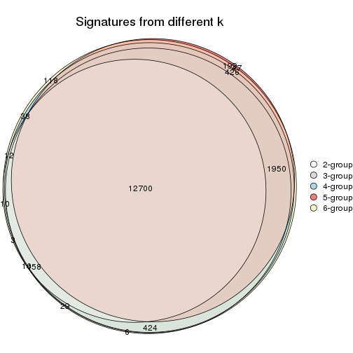
get_signature() returns a data frame invisibly. TO get the list of signatures, the function
call should be assigned to a variable explicitly. In following code, if plot argument is set
to FALSE, no heatmap is plotted while only the differential analysis is performed.
# code only for demonstration
tb = get_signature(res, k = ..., plot = FALSE)
An example of the output of tb is:
#> which_row fdr mean_1 mean_2 scaled_mean_1 scaled_mean_2 km
#> 1 38 0.042760348 8.373488 9.131774 -0.5533452 0.5164555 1
#> 2 40 0.018707592 7.106213 8.469186 -0.6173731 0.5762149 1
#> 3 55 0.019134737 10.221463 11.207825 -0.6159697 0.5749050 1
#> 4 59 0.006059896 5.921854 7.869574 -0.6899429 0.6439467 1
#> 5 60 0.018055526 8.928898 10.211722 -0.6204761 0.5791110 1
#> 6 98 0.009384629 15.714769 14.887706 0.6635654 -0.6193277 2
...
The columns in tb are:
which_row: row indices corresponding to the input matrix.fdr: FDR for the differential test. mean_x: The mean value in group x.scaled_mean_x: The mean value in group x after rows are scaled.km: Row groups if k-means clustering is applied to rows.UMAP plot which shows how samples are separated.
dimension_reduction(res, k = 2, method = "UMAP")
dimension_reduction(res, k = 3, method = "UMAP")
dimension_reduction(res, k = 4, method = "UMAP")
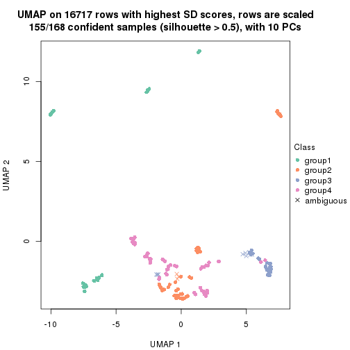
dimension_reduction(res, k = 5, method = "UMAP")
dimension_reduction(res, k = 6, method = "UMAP")
Following heatmap shows how subgroups are split when increasing k:
collect_classes(res)
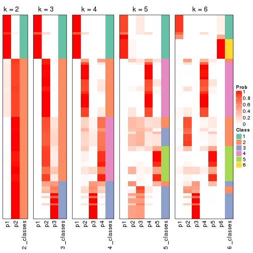
If matrix rows can be associated to genes, consider to use GO_Enrichment(res,
...) to perform function enrichment for the signature genes.
The object with results only for a single top-value method and a single partition method can be extracted as:
res = res_list["SD", "kmeans"]
# you can also extract it by
# res = res_list["SD:kmeans"]
A summary of res and all the functions that can be applied to it:
res
#> A 'ConsensusPartition' object with k = 2, 3, 4, 5, 6.
#> On a matrix with 16717 rows and 168 columns.
#> Top rows (1000, 2000, 3000, 4000, 5000) are extracted by 'SD' method.
#> Subgroups are detected by 'kmeans' method.
#> Performed in total 1250 partitions by row resampling.
#> Best k for subgroups seems to be 3.
#>
#> Following methods can be applied to this 'ConsensusPartition' object:
#> [1] "cola_report" "collect_classes" "collect_plots"
#> [4] "collect_stats" "colnames" "compare_signatures"
#> [7] "consensus_heatmap" "dimension_reduction" "functional_enrichment"
#> [10] "get_anno_col" "get_anno" "get_classes"
#> [13] "get_consensus" "get_matrix" "get_membership"
#> [16] "get_param" "get_signatures" "get_stats"
#> [19] "is_best_k" "is_stable_k" "membership_heatmap"
#> [22] "ncol" "nrow" "plot_ecdf"
#> [25] "rownames" "select_partition_number" "show"
#> [28] "suggest_best_k" "test_to_known_factors"
collect_plots() function collects all the plots made from res for all k (number of partitions)
into one single page to provide an easy and fast comparison between different k.
collect_plots(res)
The plots are:
k and the heatmap of
predicted classes for each k.k.k.k.All the plots in panels can be made by individual functions and they are plotted later in this section.
select_partition_number() produces several plots showing different
statistics for choosing “optimized” k. There are following statistics:
k;k, the area increased is defined as \(A_k - A_{k-1}\).The detailed explanations of these statistics can be found in the cola vignette.
Generally speaking, lower PAC score, higher mean silhouette score or higher
concordance corresponds to better partition. Rand index and Jaccard index
measure how similar the current partition is compared to partition with k-1.
If they are too similar, we won't accept k is better than k-1.
select_partition_number(res)
The numeric values for all these statistics can be obtained by get_stats().
get_stats(res)
#> k 1-PAC mean_silhouette concordance area_increased Rand Jaccard
#> 2 2 0.493 0.909 0.899 0.3434 0.661 0.661
#> 3 3 0.633 0.843 0.897 0.6310 0.749 0.621
#> 4 4 0.617 0.466 0.739 0.2050 0.937 0.858
#> 5 5 0.657 0.709 0.726 0.1104 0.773 0.464
#> 6 6 0.650 0.725 0.755 0.0539 0.963 0.835
suggest_best_k() suggests the best \(k\) based on these statistics. The rules are as follows:
NA.suggest_best_k(res)
#> [1] 3
Following shows the table of the partitions (You need to click the show/hide
code output link to see it). The membership matrix (columns with name p*)
is inferred by
clue::cl_consensus()
function with the SE method. Basically the value in the membership matrix
represents the probability to belong to a certain group. The finall class
label for an item is determined with the group with highest probability it
belongs to.
In get_classes() function, the entropy is calculated from the membership
matrix and the silhouette score is calculated from the consensus matrix.
cbind(get_classes(res, k = 2), get_membership(res, k = 2))
#> class entropy silhouette p1 p2
#> SRR1768889 2 0.0000 0.802 0.000 1.000
#> SRR1768890 2 0.0000 0.802 0.000 1.000
#> SRR1768891 2 0.7674 0.916 0.224 0.776
#> SRR1768892 2 0.7674 0.916 0.224 0.776
#> SRR1768893 2 0.7674 0.916 0.224 0.776
#> SRR1768894 2 0.7674 0.916 0.224 0.776
#> SRR1768895 2 0.7815 0.915 0.232 0.768
#> SRR1768896 2 0.7815 0.915 0.232 0.768
#> SRR1768821 2 0.7815 0.915 0.232 0.768
#> SRR1768822 2 0.7815 0.915 0.232 0.768
#> SRR1768823 2 0.7815 0.915 0.232 0.768
#> SRR1768824 2 0.7815 0.915 0.232 0.768
#> SRR1768825 2 0.7745 0.916 0.228 0.772
#> SRR1768826 2 0.7745 0.916 0.228 0.772
#> SRR1768827 2 0.7815 0.915 0.232 0.768
#> SRR1768828 2 0.7815 0.915 0.232 0.768
#> SRR1768829 2 0.7815 0.915 0.232 0.768
#> SRR1768830 2 0.7815 0.915 0.232 0.768
#> SRR1768831 2 0.6973 0.902 0.188 0.812
#> SRR1768832 2 0.6973 0.902 0.188 0.812
#> SRR1768833 2 0.7815 0.915 0.232 0.768
#> SRR1768834 2 0.7815 0.915 0.232 0.768
#> SRR1768835 2 0.7815 0.915 0.232 0.768
#> SRR1768836 2 0.7815 0.915 0.232 0.768
#> SRR1768837 2 0.7815 0.915 0.232 0.768
#> SRR1768838 2 0.6712 0.900 0.176 0.824
#> SRR1768839 2 0.6712 0.900 0.176 0.824
#> SRR1768840 2 0.5946 0.885 0.144 0.856
#> SRR1768841 2 0.5946 0.885 0.144 0.856
#> SRR1768842 2 0.7674 0.916 0.224 0.776
#> SRR1768843 2 0.7674 0.916 0.224 0.776
#> SRR1768844 2 0.0000 0.802 0.000 1.000
#> SRR1768845 2 0.0000 0.802 0.000 1.000
#> SRR1768846 2 0.0000 0.802 0.000 1.000
#> SRR1768847 2 0.0000 0.802 0.000 1.000
#> SRR1768848 2 0.0000 0.802 0.000 1.000
#> SRR1768849 2 0.0000 0.802 0.000 1.000
#> SRR1768850 2 0.0000 0.802 0.000 1.000
#> SRR1768851 2 0.0000 0.802 0.000 1.000
#> SRR1768852 2 0.7745 0.916 0.228 0.772
#> SRR1768853 2 0.7745 0.916 0.228 0.772
#> SRR1768854 2 0.7674 0.916 0.224 0.776
#> SRR1768855 2 0.0000 0.802 0.000 1.000
#> SRR1768856 2 0.0000 0.802 0.000 1.000
#> SRR1768857 2 0.0000 0.802 0.000 1.000
#> SRR1768858 2 0.1414 0.815 0.020 0.980
#> SRR1768859 2 0.1414 0.815 0.020 0.980
#> SRR1768860 2 0.1414 0.815 0.020 0.980
#> SRR1768861 2 0.2778 0.834 0.048 0.952
#> SRR1768862 2 0.2778 0.834 0.048 0.952
#> SRR1768863 2 0.6343 0.893 0.160 0.840
#> SRR1768864 2 0.6343 0.893 0.160 0.840
#> SRR1768865 2 0.2778 0.834 0.048 0.952
#> SRR1768866 2 0.2778 0.834 0.048 0.952
#> SRR1768867 2 0.7815 0.915 0.232 0.768
#> SRR1768868 2 0.7815 0.915 0.232 0.768
#> SRR1768869 2 0.7815 0.915 0.232 0.768
#> SRR1768870 2 0.7815 0.915 0.232 0.768
#> SRR1768871 2 0.7815 0.915 0.232 0.768
#> SRR1768872 2 0.7815 0.915 0.232 0.768
#> SRR1768873 2 0.7815 0.915 0.232 0.768
#> SRR1768874 2 0.7815 0.915 0.232 0.768
#> SRR1768875 2 0.0000 0.802 0.000 1.000
#> SRR1768876 2 0.0000 0.802 0.000 1.000
#> SRR1768877 2 0.0000 0.802 0.000 1.000
#> SRR1768878 2 0.0000 0.802 0.000 1.000
#> SRR1768879 2 0.3879 0.851 0.076 0.924
#> SRR1768880 2 0.3879 0.851 0.076 0.924
#> SRR1768881 2 0.6887 0.902 0.184 0.816
#> SRR1768882 2 0.6887 0.902 0.184 0.816
#> SRR1768883 2 0.0000 0.802 0.000 1.000
#> SRR1768884 2 0.0000 0.802 0.000 1.000
#> SRR1768885 2 0.0000 0.802 0.000 1.000
#> SRR1768886 2 0.0000 0.802 0.000 1.000
#> SRR1768887 2 0.0000 0.802 0.000 1.000
#> SRR1768888 2 0.0000 0.802 0.000 1.000
#> SRR1768897 2 0.7674 0.916 0.224 0.776
#> SRR1768898 2 0.7674 0.916 0.224 0.776
#> SRR1768899 2 0.7674 0.916 0.224 0.776
#> SRR1768900 2 0.7674 0.916 0.224 0.776
#> SRR1768901 2 0.5629 0.877 0.132 0.868
#> SRR1768902 2 0.5629 0.877 0.132 0.868
#> SRR1768903 2 0.5059 0.866 0.112 0.888
#> SRR1768904 2 0.7674 0.916 0.224 0.776
#> SRR1768905 2 0.7674 0.916 0.224 0.776
#> SRR1768906 2 0.7674 0.916 0.224 0.776
#> SRR1768907 2 0.7674 0.916 0.224 0.776
#> SRR1768908 2 0.7674 0.916 0.224 0.776
#> SRR1768909 2 0.7674 0.916 0.224 0.776
#> SRR1768910 2 0.7674 0.916 0.224 0.776
#> SRR1768911 2 0.7674 0.916 0.224 0.776
#> SRR1768912 2 0.7674 0.916 0.224 0.776
#> SRR1768913 2 0.7674 0.916 0.224 0.776
#> SRR1768914 2 0.7674 0.916 0.224 0.776
#> SRR1768915 2 0.7674 0.916 0.224 0.776
#> SRR1768916 2 0.7674 0.916 0.224 0.776
#> SRR1768917 2 0.7815 0.915 0.232 0.768
#> SRR1768918 2 0.7674 0.916 0.224 0.776
#> SRR1768919 2 0.7674 0.916 0.224 0.776
#> SRR1768920 2 0.7815 0.915 0.232 0.768
#> SRR1768921 2 0.7815 0.915 0.232 0.768
#> SRR1768922 2 0.2423 0.827 0.040 0.960
#> SRR1768923 2 0.2423 0.827 0.040 0.960
#> SRR1768924 2 0.7674 0.916 0.224 0.776
#> SRR1768925 2 0.7674 0.916 0.224 0.776
#> SRR1768926 2 0.7674 0.916 0.224 0.776
#> SRR1768927 2 0.7674 0.916 0.224 0.776
#> SRR1768928 2 0.7674 0.916 0.224 0.776
#> SRR1768929 2 0.7674 0.916 0.224 0.776
#> SRR1768930 2 0.7815 0.915 0.232 0.768
#> SRR1768931 2 0.7815 0.915 0.232 0.768
#> SRR1768932 2 0.7815 0.915 0.232 0.768
#> SRR1768933 2 0.7815 0.915 0.232 0.768
#> SRR1768934 2 0.7815 0.915 0.232 0.768
#> SRR1768935 2 0.7815 0.915 0.232 0.768
#> SRR1768936 2 0.7815 0.915 0.232 0.768
#> SRR1768937 2 0.7815 0.915 0.232 0.768
#> SRR1768938 2 0.7815 0.915 0.232 0.768
#> SRR1768939 2 0.7815 0.915 0.232 0.768
#> SRR1768940 2 0.7815 0.915 0.232 0.768
#> SRR1768941 2 0.7815 0.915 0.232 0.768
#> SRR1768942 2 0.7815 0.915 0.232 0.768
#> SRR1768943 2 0.7815 0.915 0.232 0.768
#> SRR1768944 2 0.7815 0.915 0.232 0.768
#> SRR1768945 2 0.7815 0.915 0.232 0.768
#> SRR1768946 2 0.7815 0.915 0.232 0.768
#> SRR1768947 2 0.2423 0.827 0.040 0.960
#> SRR1768948 2 0.2423 0.827 0.040 0.960
#> SRR1768949 2 0.2423 0.827 0.040 0.960
#> SRR1768950 2 0.7815 0.915 0.232 0.768
#> SRR1768954 1 0.0000 1.000 1.000 0.000
#> SRR1768955 1 0.0000 1.000 1.000 0.000
#> SRR1768956 1 0.0000 1.000 1.000 0.000
#> SRR1768957 1 0.0000 1.000 1.000 0.000
#> SRR1768958 1 0.0000 1.000 1.000 0.000
#> SRR1768959 1 0.0000 1.000 1.000 0.000
#> SRR1768960 1 0.0000 1.000 1.000 0.000
#> SRR1768961 1 0.0000 1.000 1.000 0.000
#> SRR1768952 2 0.7674 0.916 0.224 0.776
#> SRR1768953 2 0.7674 0.916 0.224 0.776
#> SRR1768962 1 0.0000 1.000 1.000 0.000
#> SRR1768963 1 0.0000 1.000 1.000 0.000
#> SRR1768964 1 0.0000 1.000 1.000 0.000
#> SRR1768965 1 0.0000 1.000 1.000 0.000
#> SRR1768966 1 0.0000 1.000 1.000 0.000
#> SRR1768967 1 0.0000 1.000 1.000 0.000
#> SRR1768968 1 0.0000 1.000 1.000 0.000
#> SRR1768969 1 0.0000 1.000 1.000 0.000
#> SRR1768970 1 0.0000 1.000 1.000 0.000
#> SRR1768971 1 0.0000 1.000 1.000 0.000
#> SRR1768972 1 0.0000 1.000 1.000 0.000
#> SRR1768973 1 0.0000 1.000 1.000 0.000
#> SRR1768974 1 0.0000 1.000 1.000 0.000
#> SRR1768975 1 0.0000 1.000 1.000 0.000
#> SRR1768976 1 0.0000 1.000 1.000 0.000
#> SRR1768977 1 0.0000 1.000 1.000 0.000
#> SRR1768978 1 0.0000 1.000 1.000 0.000
#> SRR1768979 1 0.0000 1.000 1.000 0.000
#> SRR1768980 1 0.0000 1.000 1.000 0.000
#> SRR1768981 1 0.0000 1.000 1.000 0.000
#> SRR1768982 1 0.0000 1.000 1.000 0.000
#> SRR1768983 1 0.0000 1.000 1.000 0.000
#> SRR1768984 1 0.0376 0.995 0.996 0.004
#> SRR1768985 1 0.0376 0.995 0.996 0.004
#> SRR1768986 1 0.0000 1.000 1.000 0.000
#> SRR1768987 1 0.0000 1.000 1.000 0.000
#> SRR1768988 1 0.0000 1.000 1.000 0.000
#> SRR1768989 1 0.0000 1.000 1.000 0.000
cbind(get_classes(res, k = 3), get_membership(res, k = 3))
#> class entropy silhouette p1 p2 p3
#> SRR1768889 3 0.3551 0.839 0.000 0.132 0.868
#> SRR1768890 3 0.3551 0.839 0.000 0.132 0.868
#> SRR1768891 2 0.0237 0.919 0.000 0.996 0.004
#> SRR1768892 2 0.0237 0.919 0.000 0.996 0.004
#> SRR1768893 2 0.0237 0.919 0.000 0.996 0.004
#> SRR1768894 2 0.0237 0.919 0.000 0.996 0.004
#> SRR1768895 2 0.0000 0.919 0.000 1.000 0.000
#> SRR1768896 2 0.0000 0.919 0.000 1.000 0.000
#> SRR1768821 2 0.0000 0.919 0.000 1.000 0.000
#> SRR1768822 2 0.0000 0.919 0.000 1.000 0.000
#> SRR1768823 2 0.0237 0.919 0.004 0.996 0.000
#> SRR1768824 2 0.0237 0.919 0.004 0.996 0.000
#> SRR1768825 2 0.0000 0.919 0.000 1.000 0.000
#> SRR1768826 2 0.0000 0.919 0.000 1.000 0.000
#> SRR1768827 2 0.0000 0.919 0.000 1.000 0.000
#> SRR1768828 2 0.0000 0.919 0.000 1.000 0.000
#> SRR1768829 2 0.0000 0.919 0.000 1.000 0.000
#> SRR1768830 2 0.0000 0.919 0.000 1.000 0.000
#> SRR1768831 2 0.6169 0.447 0.004 0.636 0.360
#> SRR1768832 2 0.6169 0.447 0.004 0.636 0.360
#> SRR1768833 2 0.4121 0.828 0.000 0.832 0.168
#> SRR1768834 2 0.4121 0.828 0.000 0.832 0.168
#> SRR1768835 2 0.4121 0.828 0.000 0.832 0.168
#> SRR1768836 2 0.4121 0.828 0.000 0.832 0.168
#> SRR1768837 2 0.4121 0.828 0.000 0.832 0.168
#> SRR1768838 2 0.6169 0.447 0.004 0.636 0.360
#> SRR1768839 2 0.6169 0.447 0.004 0.636 0.360
#> SRR1768840 2 0.6081 0.475 0.004 0.652 0.344
#> SRR1768841 2 0.6081 0.475 0.004 0.652 0.344
#> SRR1768842 2 0.3941 0.835 0.000 0.844 0.156
#> SRR1768843 2 0.3941 0.835 0.000 0.844 0.156
#> SRR1768844 3 0.3551 0.839 0.000 0.132 0.868
#> SRR1768845 3 0.3551 0.839 0.000 0.132 0.868
#> SRR1768846 3 0.3551 0.839 0.000 0.132 0.868
#> SRR1768847 3 0.3551 0.839 0.000 0.132 0.868
#> SRR1768848 3 0.3551 0.839 0.000 0.132 0.868
#> SRR1768849 3 0.3551 0.839 0.000 0.132 0.868
#> SRR1768850 3 0.3551 0.839 0.000 0.132 0.868
#> SRR1768851 3 0.3551 0.839 0.000 0.132 0.868
#> SRR1768852 2 0.0592 0.919 0.000 0.988 0.012
#> SRR1768853 2 0.0592 0.919 0.000 0.988 0.012
#> SRR1768854 2 0.0592 0.919 0.000 0.988 0.012
#> SRR1768855 3 0.3551 0.839 0.000 0.132 0.868
#> SRR1768856 3 0.3551 0.839 0.000 0.132 0.868
#> SRR1768857 3 0.3551 0.839 0.000 0.132 0.868
#> SRR1768858 3 0.5988 0.638 0.000 0.368 0.632
#> SRR1768859 3 0.5988 0.638 0.000 0.368 0.632
#> SRR1768860 3 0.5988 0.638 0.000 0.368 0.632
#> SRR1768861 3 0.6495 0.399 0.004 0.460 0.536
#> SRR1768862 3 0.6495 0.399 0.004 0.460 0.536
#> SRR1768863 2 0.2448 0.882 0.000 0.924 0.076
#> SRR1768864 2 0.2448 0.882 0.000 0.924 0.076
#> SRR1768865 3 0.6008 0.663 0.004 0.332 0.664
#> SRR1768866 3 0.6008 0.663 0.004 0.332 0.664
#> SRR1768867 2 0.0237 0.919 0.004 0.996 0.000
#> SRR1768868 2 0.0237 0.919 0.004 0.996 0.000
#> SRR1768869 2 0.1964 0.886 0.000 0.944 0.056
#> SRR1768870 2 0.1964 0.886 0.000 0.944 0.056
#> SRR1768871 2 0.1964 0.891 0.000 0.944 0.056
#> SRR1768872 2 0.1964 0.891 0.000 0.944 0.056
#> SRR1768873 2 0.1964 0.886 0.000 0.944 0.056
#> SRR1768874 2 0.1964 0.886 0.000 0.944 0.056
#> SRR1768875 3 0.3551 0.839 0.000 0.132 0.868
#> SRR1768876 3 0.3551 0.839 0.000 0.132 0.868
#> SRR1768877 3 0.3551 0.839 0.000 0.132 0.868
#> SRR1768878 3 0.3551 0.839 0.000 0.132 0.868
#> SRR1768879 3 0.6500 0.388 0.004 0.464 0.532
#> SRR1768880 3 0.6500 0.388 0.004 0.464 0.532
#> SRR1768881 2 0.4172 0.728 0.004 0.840 0.156
#> SRR1768882 2 0.4172 0.728 0.004 0.840 0.156
#> SRR1768883 3 0.3551 0.839 0.000 0.132 0.868
#> SRR1768884 3 0.3551 0.839 0.000 0.132 0.868
#> SRR1768885 3 0.3551 0.839 0.000 0.132 0.868
#> SRR1768886 3 0.3551 0.839 0.000 0.132 0.868
#> SRR1768887 3 0.3551 0.839 0.000 0.132 0.868
#> SRR1768888 3 0.3551 0.839 0.000 0.132 0.868
#> SRR1768897 2 0.0237 0.919 0.000 0.996 0.004
#> SRR1768898 2 0.0237 0.919 0.000 0.996 0.004
#> SRR1768899 2 0.0237 0.919 0.000 0.996 0.004
#> SRR1768900 2 0.0237 0.919 0.000 0.996 0.004
#> SRR1768901 2 0.2066 0.895 0.000 0.940 0.060
#> SRR1768902 2 0.2066 0.895 0.000 0.940 0.060
#> SRR1768903 2 0.2066 0.895 0.000 0.940 0.060
#> SRR1768904 2 0.0424 0.918 0.000 0.992 0.008
#> SRR1768905 2 0.0424 0.918 0.000 0.992 0.008
#> SRR1768906 2 0.0424 0.918 0.000 0.992 0.008
#> SRR1768907 2 0.2066 0.894 0.000 0.940 0.060
#> SRR1768908 2 0.2066 0.894 0.000 0.940 0.060
#> SRR1768909 2 0.2066 0.894 0.000 0.940 0.060
#> SRR1768910 2 0.2066 0.894 0.000 0.940 0.060
#> SRR1768911 2 0.2066 0.894 0.000 0.940 0.060
#> SRR1768912 2 0.2066 0.894 0.000 0.940 0.060
#> SRR1768913 2 0.2066 0.894 0.000 0.940 0.060
#> SRR1768914 2 0.2066 0.894 0.000 0.940 0.060
#> SRR1768915 2 0.2066 0.894 0.000 0.940 0.060
#> SRR1768916 2 0.0892 0.916 0.000 0.980 0.020
#> SRR1768917 2 0.0424 0.918 0.000 0.992 0.008
#> SRR1768918 2 0.2066 0.894 0.000 0.940 0.060
#> SRR1768919 2 0.2066 0.894 0.000 0.940 0.060
#> SRR1768920 2 0.0000 0.919 0.000 1.000 0.000
#> SRR1768921 2 0.0000 0.919 0.000 1.000 0.000
#> SRR1768922 3 0.6308 0.373 0.000 0.492 0.508
#> SRR1768923 3 0.6308 0.373 0.000 0.492 0.508
#> SRR1768924 2 0.4002 0.834 0.000 0.840 0.160
#> SRR1768925 2 0.4002 0.834 0.000 0.840 0.160
#> SRR1768926 2 0.4002 0.834 0.000 0.840 0.160
#> SRR1768927 2 0.4002 0.834 0.000 0.840 0.160
#> SRR1768928 2 0.4002 0.834 0.000 0.840 0.160
#> SRR1768929 2 0.4002 0.834 0.000 0.840 0.160
#> SRR1768930 2 0.0661 0.917 0.004 0.988 0.008
#> SRR1768931 2 0.0661 0.917 0.004 0.988 0.008
#> SRR1768932 2 0.0661 0.917 0.004 0.988 0.008
#> SRR1768933 2 0.0661 0.917 0.004 0.988 0.008
#> SRR1768934 2 0.0661 0.917 0.004 0.988 0.008
#> SRR1768935 2 0.0661 0.917 0.004 0.988 0.008
#> SRR1768936 2 0.0661 0.917 0.004 0.988 0.008
#> SRR1768937 2 0.0661 0.917 0.004 0.988 0.008
#> SRR1768938 2 0.0661 0.917 0.004 0.988 0.008
#> SRR1768939 2 0.0237 0.919 0.004 0.996 0.000
#> SRR1768940 2 0.0237 0.919 0.004 0.996 0.000
#> SRR1768941 2 0.0237 0.919 0.004 0.996 0.000
#> SRR1768942 2 0.0237 0.919 0.004 0.996 0.000
#> SRR1768943 2 0.0237 0.919 0.004 0.996 0.000
#> SRR1768944 2 0.0237 0.919 0.004 0.996 0.000
#> SRR1768945 2 0.0237 0.919 0.004 0.996 0.000
#> SRR1768946 2 0.0237 0.919 0.004 0.996 0.000
#> SRR1768947 3 0.6260 0.490 0.000 0.448 0.552
#> SRR1768948 3 0.6260 0.490 0.000 0.448 0.552
#> SRR1768949 3 0.6302 0.426 0.000 0.480 0.520
#> SRR1768950 2 0.0661 0.917 0.004 0.988 0.008
#> SRR1768954 1 0.2096 0.946 0.944 0.004 0.052
#> SRR1768955 1 0.2096 0.946 0.944 0.004 0.052
#> SRR1768956 1 0.2096 0.946 0.944 0.004 0.052
#> SRR1768957 1 0.2096 0.946 0.944 0.004 0.052
#> SRR1768958 1 0.2096 0.946 0.944 0.004 0.052
#> SRR1768959 1 0.2096 0.946 0.944 0.004 0.052
#> SRR1768960 1 0.2096 0.946 0.944 0.004 0.052
#> SRR1768961 1 0.2096 0.946 0.944 0.004 0.052
#> SRR1768952 2 0.0237 0.919 0.000 0.996 0.004
#> SRR1768953 2 0.0237 0.919 0.000 0.996 0.004
#> SRR1768962 1 0.0661 0.951 0.988 0.004 0.008
#> SRR1768963 1 0.0661 0.951 0.988 0.004 0.008
#> SRR1768964 1 0.0661 0.951 0.988 0.004 0.008
#> SRR1768965 1 0.0661 0.951 0.988 0.004 0.008
#> SRR1768966 1 0.0661 0.951 0.988 0.004 0.008
#> SRR1768967 1 0.0661 0.951 0.988 0.004 0.008
#> SRR1768968 1 0.0661 0.951 0.988 0.004 0.008
#> SRR1768969 1 0.0661 0.951 0.988 0.004 0.008
#> SRR1768970 1 0.0829 0.950 0.984 0.004 0.012
#> SRR1768971 1 0.0829 0.950 0.984 0.004 0.012
#> SRR1768972 1 0.2496 0.945 0.928 0.004 0.068
#> SRR1768973 1 0.2496 0.945 0.928 0.004 0.068
#> SRR1768974 1 0.2496 0.945 0.928 0.004 0.068
#> SRR1768975 1 0.2496 0.945 0.928 0.004 0.068
#> SRR1768976 1 0.2496 0.945 0.928 0.004 0.068
#> SRR1768977 1 0.2496 0.945 0.928 0.004 0.068
#> SRR1768978 1 0.1129 0.950 0.976 0.004 0.020
#> SRR1768979 1 0.1129 0.950 0.976 0.004 0.020
#> SRR1768980 1 0.1129 0.950 0.976 0.004 0.020
#> SRR1768981 1 0.1129 0.950 0.976 0.004 0.020
#> SRR1768982 1 0.1129 0.950 0.976 0.004 0.020
#> SRR1768983 1 0.1129 0.950 0.976 0.004 0.020
#> SRR1768984 1 0.7905 0.382 0.560 0.376 0.064
#> SRR1768985 1 0.7905 0.382 0.560 0.376 0.064
#> SRR1768986 1 0.1129 0.950 0.976 0.004 0.020
#> SRR1768987 1 0.1129 0.950 0.976 0.004 0.020
#> SRR1768988 1 0.1129 0.950 0.976 0.004 0.020
#> SRR1768989 1 0.1129 0.950 0.976 0.004 0.020
cbind(get_classes(res, k = 4), get_membership(res, k = 4))
#> class entropy silhouette p1 p2 p3 p4
#> SRR1768889 3 0.1389 0.86658 0.000 0.048 0.952 0.000
#> SRR1768890 3 0.1389 0.86658 0.000 0.048 0.952 0.000
#> SRR1768891 2 0.4103 0.19483 0.000 0.744 0.000 0.256
#> SRR1768892 2 0.4103 0.19483 0.000 0.744 0.000 0.256
#> SRR1768893 2 0.1302 0.43109 0.000 0.956 0.000 0.044
#> SRR1768894 2 0.1302 0.43109 0.000 0.956 0.000 0.044
#> SRR1768895 2 0.4585 0.09961 0.000 0.668 0.000 0.332
#> SRR1768896 2 0.4585 0.09961 0.000 0.668 0.000 0.332
#> SRR1768821 2 0.4605 0.09313 0.000 0.664 0.000 0.336
#> SRR1768822 2 0.4605 0.09313 0.000 0.664 0.000 0.336
#> SRR1768823 2 0.4643 0.08050 0.000 0.656 0.000 0.344
#> SRR1768824 2 0.4643 0.08050 0.000 0.656 0.000 0.344
#> SRR1768825 2 0.4543 0.11072 0.000 0.676 0.000 0.324
#> SRR1768826 2 0.4543 0.11072 0.000 0.676 0.000 0.324
#> SRR1768827 2 0.4661 0.07437 0.000 0.652 0.000 0.348
#> SRR1768828 2 0.4661 0.07437 0.000 0.652 0.000 0.348
#> SRR1768829 2 0.4564 0.10701 0.000 0.672 0.000 0.328
#> SRR1768830 2 0.4564 0.10701 0.000 0.672 0.000 0.328
#> SRR1768831 2 0.7248 0.16259 0.000 0.472 0.148 0.380
#> SRR1768832 2 0.7248 0.16259 0.000 0.472 0.148 0.380
#> SRR1768833 2 0.5400 0.27337 0.000 0.608 0.020 0.372
#> SRR1768834 2 0.5400 0.27337 0.000 0.608 0.020 0.372
#> SRR1768835 2 0.5400 0.27337 0.000 0.608 0.020 0.372
#> SRR1768836 2 0.5400 0.27337 0.000 0.608 0.020 0.372
#> SRR1768837 2 0.5400 0.27337 0.000 0.608 0.020 0.372
#> SRR1768838 2 0.7090 0.18372 0.000 0.496 0.132 0.372
#> SRR1768839 2 0.7090 0.18372 0.000 0.496 0.132 0.372
#> SRR1768840 2 0.6626 0.22008 0.000 0.544 0.092 0.364
#> SRR1768841 2 0.6626 0.22008 0.000 0.544 0.092 0.364
#> SRR1768842 2 0.5323 0.28601 0.000 0.628 0.020 0.352
#> SRR1768843 2 0.5323 0.28601 0.000 0.628 0.020 0.352
#> SRR1768844 3 0.3009 0.84819 0.000 0.056 0.892 0.052
#> SRR1768845 3 0.3009 0.84819 0.000 0.056 0.892 0.052
#> SRR1768846 3 0.1576 0.86582 0.000 0.048 0.948 0.004
#> SRR1768847 3 0.1576 0.86582 0.000 0.048 0.948 0.004
#> SRR1768848 3 0.1576 0.86582 0.000 0.048 0.948 0.004
#> SRR1768849 3 0.1576 0.86582 0.000 0.048 0.948 0.004
#> SRR1768850 3 0.2844 0.85096 0.000 0.048 0.900 0.052
#> SRR1768851 3 0.2844 0.85096 0.000 0.048 0.900 0.052
#> SRR1768852 2 0.3157 0.40929 0.000 0.852 0.004 0.144
#> SRR1768853 2 0.3157 0.40929 0.000 0.852 0.004 0.144
#> SRR1768854 2 0.3157 0.40929 0.000 0.852 0.004 0.144
#> SRR1768855 3 0.1389 0.86658 0.000 0.048 0.952 0.000
#> SRR1768856 3 0.1389 0.86658 0.000 0.048 0.952 0.000
#> SRR1768857 3 0.1389 0.86658 0.000 0.048 0.952 0.000
#> SRR1768858 3 0.6243 0.41407 0.000 0.392 0.548 0.060
#> SRR1768859 3 0.6243 0.41407 0.000 0.392 0.548 0.060
#> SRR1768860 3 0.6243 0.41407 0.000 0.392 0.548 0.060
#> SRR1768861 3 0.5959 0.42094 0.000 0.388 0.568 0.044
#> SRR1768862 3 0.5959 0.42094 0.000 0.388 0.568 0.044
#> SRR1768863 2 0.1677 0.45223 0.000 0.948 0.012 0.040
#> SRR1768864 2 0.1677 0.45223 0.000 0.948 0.012 0.040
#> SRR1768865 3 0.5496 0.66675 0.000 0.232 0.704 0.064
#> SRR1768866 3 0.5496 0.66675 0.000 0.232 0.704 0.064
#> SRR1768867 2 0.4679 0.06805 0.000 0.648 0.000 0.352
#> SRR1768868 2 0.4679 0.06805 0.000 0.648 0.000 0.352
#> SRR1768869 4 0.4985 0.22889 0.000 0.468 0.000 0.532
#> SRR1768870 4 0.4985 0.22889 0.000 0.468 0.000 0.532
#> SRR1768871 2 0.4477 0.30068 0.000 0.688 0.000 0.312
#> SRR1768872 2 0.4477 0.30068 0.000 0.688 0.000 0.312
#> SRR1768873 2 0.4888 -0.07075 0.000 0.588 0.000 0.412
#> SRR1768874 2 0.4888 -0.07075 0.000 0.588 0.000 0.412
#> SRR1768875 3 0.1389 0.86658 0.000 0.048 0.952 0.000
#> SRR1768876 3 0.1389 0.86658 0.000 0.048 0.952 0.000
#> SRR1768877 3 0.1389 0.86658 0.000 0.048 0.952 0.000
#> SRR1768878 3 0.1389 0.86658 0.000 0.048 0.952 0.000
#> SRR1768879 3 0.6930 0.42461 0.000 0.356 0.524 0.120
#> SRR1768880 3 0.6930 0.42461 0.000 0.356 0.524 0.120
#> SRR1768881 2 0.6708 -0.07174 0.000 0.592 0.128 0.280
#> SRR1768882 2 0.6708 -0.07174 0.000 0.592 0.128 0.280
#> SRR1768883 3 0.1576 0.86577 0.000 0.048 0.948 0.004
#> SRR1768884 3 0.1576 0.86577 0.000 0.048 0.948 0.004
#> SRR1768885 3 0.1389 0.86658 0.000 0.048 0.952 0.000
#> SRR1768886 3 0.1389 0.86658 0.000 0.048 0.952 0.000
#> SRR1768887 3 0.1389 0.86658 0.000 0.048 0.952 0.000
#> SRR1768888 3 0.1389 0.86658 0.000 0.048 0.952 0.000
#> SRR1768897 2 0.0817 0.44165 0.000 0.976 0.000 0.024
#> SRR1768898 2 0.0817 0.44165 0.000 0.976 0.000 0.024
#> SRR1768899 2 0.0000 0.45337 0.000 1.000 0.000 0.000
#> SRR1768900 2 0.0000 0.45337 0.000 1.000 0.000 0.000
#> SRR1768901 2 0.1584 0.44640 0.000 0.952 0.012 0.036
#> SRR1768902 2 0.1584 0.44640 0.000 0.952 0.012 0.036
#> SRR1768903 2 0.1584 0.44640 0.000 0.952 0.012 0.036
#> SRR1768904 2 0.0524 0.45576 0.000 0.988 0.008 0.004
#> SRR1768905 2 0.0524 0.45576 0.000 0.988 0.008 0.004
#> SRR1768906 2 0.0524 0.45576 0.000 0.988 0.008 0.004
#> SRR1768907 2 0.0937 0.45828 0.000 0.976 0.012 0.012
#> SRR1768908 2 0.0937 0.45828 0.000 0.976 0.012 0.012
#> SRR1768909 2 0.0937 0.45828 0.000 0.976 0.012 0.012
#> SRR1768910 2 0.1059 0.45807 0.000 0.972 0.012 0.016
#> SRR1768911 2 0.1059 0.45807 0.000 0.972 0.012 0.016
#> SRR1768912 2 0.1059 0.45807 0.000 0.972 0.012 0.016
#> SRR1768913 2 0.1284 0.45622 0.000 0.964 0.012 0.024
#> SRR1768914 2 0.1284 0.45622 0.000 0.964 0.012 0.024
#> SRR1768915 2 0.1284 0.45622 0.000 0.964 0.012 0.024
#> SRR1768916 2 0.0592 0.45110 0.000 0.984 0.000 0.016
#> SRR1768917 2 0.4679 0.06805 0.000 0.648 0.000 0.352
#> SRR1768918 2 0.1059 0.45779 0.000 0.972 0.012 0.016
#> SRR1768919 2 0.1059 0.45779 0.000 0.972 0.012 0.016
#> SRR1768920 2 0.4679 0.07138 0.000 0.648 0.000 0.352
#> SRR1768921 2 0.4679 0.07138 0.000 0.648 0.000 0.352
#> SRR1768922 2 0.5993 0.18125 0.000 0.628 0.308 0.064
#> SRR1768923 2 0.5993 0.18125 0.000 0.628 0.308 0.064
#> SRR1768924 2 0.5355 0.28237 0.000 0.620 0.020 0.360
#> SRR1768925 2 0.5355 0.28237 0.000 0.620 0.020 0.360
#> SRR1768926 2 0.5355 0.28237 0.000 0.620 0.020 0.360
#> SRR1768927 2 0.5355 0.28237 0.000 0.620 0.020 0.360
#> SRR1768928 2 0.5355 0.28237 0.000 0.620 0.020 0.360
#> SRR1768929 2 0.5355 0.28237 0.000 0.620 0.020 0.360
#> SRR1768930 2 0.4817 0.00371 0.000 0.612 0.000 0.388
#> SRR1768931 2 0.4817 0.00371 0.000 0.612 0.000 0.388
#> SRR1768932 2 0.4817 0.00371 0.000 0.612 0.000 0.388
#> SRR1768933 2 0.4817 0.00371 0.000 0.612 0.000 0.388
#> SRR1768934 2 0.4817 0.00371 0.000 0.612 0.000 0.388
#> SRR1768935 2 0.4817 0.00371 0.000 0.612 0.000 0.388
#> SRR1768936 2 0.4817 0.00371 0.000 0.612 0.000 0.388
#> SRR1768937 2 0.4817 0.00371 0.000 0.612 0.000 0.388
#> SRR1768938 2 0.4817 0.00371 0.000 0.612 0.000 0.388
#> SRR1768939 2 0.4730 0.05120 0.000 0.636 0.000 0.364
#> SRR1768940 2 0.4730 0.05120 0.000 0.636 0.000 0.364
#> SRR1768941 2 0.4730 0.05120 0.000 0.636 0.000 0.364
#> SRR1768942 2 0.4730 0.05120 0.000 0.636 0.000 0.364
#> SRR1768943 2 0.4730 0.05120 0.000 0.636 0.000 0.364
#> SRR1768944 2 0.4730 0.05120 0.000 0.636 0.000 0.364
#> SRR1768945 2 0.4730 0.05120 0.000 0.636 0.000 0.364
#> SRR1768946 2 0.4730 0.05120 0.000 0.636 0.000 0.364
#> SRR1768947 2 0.6114 -0.08277 0.000 0.524 0.428 0.048
#> SRR1768948 2 0.6114 -0.08277 0.000 0.524 0.428 0.048
#> SRR1768949 2 0.6102 -0.06033 0.000 0.532 0.420 0.048
#> SRR1768950 2 0.3837 0.24594 0.000 0.776 0.000 0.224
#> SRR1768954 1 0.3790 0.89943 0.820 0.000 0.016 0.164
#> SRR1768955 1 0.3790 0.89943 0.820 0.000 0.016 0.164
#> SRR1768956 1 0.3790 0.89943 0.820 0.000 0.016 0.164
#> SRR1768957 1 0.3790 0.89943 0.820 0.000 0.016 0.164
#> SRR1768958 1 0.3790 0.89943 0.820 0.000 0.016 0.164
#> SRR1768959 1 0.3790 0.89943 0.820 0.000 0.016 0.164
#> SRR1768960 1 0.3790 0.89943 0.820 0.000 0.016 0.164
#> SRR1768961 1 0.3790 0.89943 0.820 0.000 0.016 0.164
#> SRR1768952 2 0.0336 0.45072 0.000 0.992 0.000 0.008
#> SRR1768953 2 0.0336 0.45072 0.000 0.992 0.000 0.008
#> SRR1768962 1 0.0336 0.92506 0.992 0.000 0.000 0.008
#> SRR1768963 1 0.0336 0.92506 0.992 0.000 0.000 0.008
#> SRR1768964 1 0.0336 0.92506 0.992 0.000 0.000 0.008
#> SRR1768965 1 0.0336 0.92506 0.992 0.000 0.000 0.008
#> SRR1768966 1 0.0336 0.92506 0.992 0.000 0.000 0.008
#> SRR1768967 1 0.0336 0.92506 0.992 0.000 0.000 0.008
#> SRR1768968 1 0.0336 0.92506 0.992 0.000 0.000 0.008
#> SRR1768969 1 0.0336 0.92506 0.992 0.000 0.000 0.008
#> SRR1768970 1 0.1356 0.92020 0.960 0.000 0.008 0.032
#> SRR1768971 1 0.1356 0.92020 0.960 0.000 0.008 0.032
#> SRR1768972 1 0.4244 0.89667 0.800 0.000 0.032 0.168
#> SRR1768973 1 0.4244 0.89667 0.800 0.000 0.032 0.168
#> SRR1768974 1 0.4244 0.89667 0.800 0.000 0.032 0.168
#> SRR1768975 1 0.4244 0.89667 0.800 0.000 0.032 0.168
#> SRR1768976 1 0.4244 0.89667 0.800 0.000 0.032 0.168
#> SRR1768977 1 0.4244 0.89667 0.800 0.000 0.032 0.168
#> SRR1768978 1 0.0937 0.92371 0.976 0.000 0.012 0.012
#> SRR1768979 1 0.0937 0.92371 0.976 0.000 0.012 0.012
#> SRR1768980 1 0.0937 0.92371 0.976 0.000 0.012 0.012
#> SRR1768981 1 0.0937 0.92371 0.976 0.000 0.012 0.012
#> SRR1768982 1 0.0937 0.92371 0.976 0.000 0.012 0.012
#> SRR1768983 1 0.0937 0.92371 0.976 0.000 0.012 0.012
#> SRR1768984 4 0.7939 0.53481 0.240 0.228 0.020 0.512
#> SRR1768985 4 0.7939 0.53481 0.240 0.228 0.020 0.512
#> SRR1768986 1 0.1488 0.91995 0.956 0.000 0.012 0.032
#> SRR1768987 1 0.1488 0.91995 0.956 0.000 0.012 0.032
#> SRR1768988 1 0.1488 0.91995 0.956 0.000 0.012 0.032
#> SRR1768989 1 0.1488 0.91995 0.956 0.000 0.012 0.032
cbind(get_classes(res, k = 5), get_membership(res, k = 5))
#> class entropy silhouette p1 p2 p3 p4 p5
#> SRR1768889 3 0.0290 0.861 0.000 0.008 0.992 0.000 0.000
#> SRR1768890 3 0.0290 0.861 0.000 0.008 0.992 0.000 0.000
#> SRR1768891 2 0.4221 0.297 0.000 0.732 0.000 0.236 0.032
#> SRR1768892 2 0.4221 0.297 0.000 0.732 0.000 0.236 0.032
#> SRR1768893 2 0.1965 0.708 0.000 0.924 0.000 0.052 0.024
#> SRR1768894 2 0.1965 0.708 0.000 0.924 0.000 0.052 0.024
#> SRR1768895 2 0.4650 -0.585 0.000 0.520 0.000 0.468 0.012
#> SRR1768896 2 0.4650 -0.585 0.000 0.520 0.000 0.468 0.012
#> SRR1768821 4 0.4527 0.825 0.000 0.392 0.000 0.596 0.012
#> SRR1768822 4 0.4527 0.825 0.000 0.392 0.000 0.596 0.012
#> SRR1768823 4 0.4482 0.837 0.000 0.376 0.000 0.612 0.012
#> SRR1768824 4 0.4482 0.837 0.000 0.376 0.000 0.612 0.012
#> SRR1768825 2 0.4622 -0.494 0.000 0.548 0.000 0.440 0.012
#> SRR1768826 2 0.4622 -0.494 0.000 0.548 0.000 0.440 0.012
#> SRR1768827 4 0.4517 0.829 0.000 0.388 0.000 0.600 0.012
#> SRR1768828 4 0.4517 0.829 0.000 0.388 0.000 0.600 0.012
#> SRR1768829 2 0.4659 -0.631 0.000 0.496 0.000 0.492 0.012
#> SRR1768830 2 0.4659 -0.631 0.000 0.496 0.000 0.492 0.012
#> SRR1768831 5 0.5787 0.827 0.000 0.268 0.084 0.020 0.628
#> SRR1768832 5 0.5787 0.827 0.000 0.268 0.084 0.020 0.628
#> SRR1768833 5 0.4749 0.905 0.000 0.348 0.008 0.016 0.628
#> SRR1768834 5 0.4749 0.905 0.000 0.348 0.008 0.016 0.628
#> SRR1768835 5 0.4749 0.905 0.000 0.348 0.008 0.016 0.628
#> SRR1768836 5 0.4749 0.905 0.000 0.348 0.008 0.016 0.628
#> SRR1768837 5 0.4749 0.905 0.000 0.348 0.008 0.016 0.628
#> SRR1768838 5 0.5605 0.843 0.000 0.280 0.072 0.016 0.632
#> SRR1768839 5 0.5605 0.843 0.000 0.280 0.072 0.016 0.632
#> SRR1768840 5 0.5111 0.901 0.000 0.376 0.024 0.012 0.588
#> SRR1768841 5 0.5111 0.901 0.000 0.376 0.024 0.012 0.588
#> SRR1768842 5 0.4920 0.893 0.000 0.408 0.008 0.016 0.568
#> SRR1768843 5 0.4920 0.893 0.000 0.408 0.008 0.016 0.568
#> SRR1768844 3 0.2326 0.835 0.000 0.020 0.916 0.044 0.020
#> SRR1768845 3 0.2326 0.835 0.000 0.020 0.916 0.044 0.020
#> SRR1768846 3 0.0451 0.861 0.000 0.008 0.988 0.004 0.000
#> SRR1768847 3 0.0451 0.861 0.000 0.008 0.988 0.004 0.000
#> SRR1768848 3 0.0451 0.861 0.000 0.008 0.988 0.004 0.000
#> SRR1768849 3 0.0451 0.861 0.000 0.008 0.988 0.004 0.000
#> SRR1768850 3 0.1913 0.842 0.000 0.008 0.932 0.044 0.016
#> SRR1768851 3 0.1913 0.842 0.000 0.008 0.932 0.044 0.016
#> SRR1768852 2 0.5572 0.437 0.000 0.644 0.000 0.192 0.164
#> SRR1768853 2 0.5572 0.437 0.000 0.644 0.000 0.192 0.164
#> SRR1768854 2 0.5572 0.437 0.000 0.644 0.000 0.192 0.164
#> SRR1768855 3 0.0579 0.860 0.000 0.008 0.984 0.008 0.000
#> SRR1768856 3 0.0579 0.860 0.000 0.008 0.984 0.008 0.000
#> SRR1768857 3 0.0579 0.860 0.000 0.008 0.984 0.008 0.000
#> SRR1768858 3 0.6683 0.308 0.000 0.352 0.512 0.072 0.064
#> SRR1768859 3 0.6683 0.308 0.000 0.352 0.512 0.072 0.064
#> SRR1768860 3 0.6683 0.308 0.000 0.352 0.512 0.072 0.064
#> SRR1768861 3 0.6174 0.465 0.000 0.284 0.600 0.064 0.052
#> SRR1768862 3 0.6174 0.465 0.000 0.284 0.600 0.064 0.052
#> SRR1768863 2 0.1710 0.679 0.000 0.940 0.004 0.040 0.016
#> SRR1768864 2 0.1710 0.679 0.000 0.940 0.004 0.040 0.016
#> SRR1768865 3 0.5780 0.593 0.000 0.180 0.684 0.052 0.084
#> SRR1768866 3 0.5780 0.593 0.000 0.180 0.684 0.052 0.084
#> SRR1768867 4 0.4722 0.841 0.000 0.368 0.000 0.608 0.024
#> SRR1768868 4 0.4722 0.841 0.000 0.368 0.000 0.608 0.024
#> SRR1768869 4 0.5980 0.675 0.000 0.240 0.000 0.584 0.176
#> SRR1768870 4 0.5980 0.675 0.000 0.240 0.000 0.584 0.176
#> SRR1768871 5 0.5737 0.661 0.000 0.456 0.000 0.084 0.460
#> SRR1768872 5 0.5737 0.661 0.000 0.456 0.000 0.084 0.460
#> SRR1768873 4 0.5052 0.833 0.000 0.340 0.000 0.612 0.048
#> SRR1768874 4 0.5052 0.833 0.000 0.340 0.000 0.612 0.048
#> SRR1768875 3 0.0290 0.861 0.000 0.008 0.992 0.000 0.000
#> SRR1768876 3 0.0290 0.861 0.000 0.008 0.992 0.000 0.000
#> SRR1768877 3 0.0290 0.861 0.000 0.008 0.992 0.000 0.000
#> SRR1768878 3 0.0290 0.861 0.000 0.008 0.992 0.000 0.000
#> SRR1768879 3 0.6839 0.366 0.000 0.248 0.556 0.048 0.148
#> SRR1768880 3 0.6839 0.366 0.000 0.248 0.556 0.048 0.148
#> SRR1768881 4 0.7041 0.574 0.000 0.348 0.124 0.476 0.052
#> SRR1768882 4 0.7041 0.574 0.000 0.348 0.124 0.476 0.052
#> SRR1768883 3 0.0613 0.859 0.000 0.008 0.984 0.004 0.004
#> SRR1768884 3 0.0613 0.859 0.000 0.008 0.984 0.004 0.004
#> SRR1768885 3 0.0290 0.861 0.000 0.008 0.992 0.000 0.000
#> SRR1768886 3 0.0290 0.861 0.000 0.008 0.992 0.000 0.000
#> SRR1768887 3 0.0290 0.861 0.000 0.008 0.992 0.000 0.000
#> SRR1768888 3 0.0290 0.861 0.000 0.008 0.992 0.000 0.000
#> SRR1768897 2 0.0865 0.721 0.000 0.972 0.000 0.024 0.004
#> SRR1768898 2 0.0865 0.721 0.000 0.972 0.000 0.024 0.004
#> SRR1768899 2 0.0798 0.720 0.000 0.976 0.000 0.016 0.008
#> SRR1768900 2 0.0798 0.720 0.000 0.976 0.000 0.016 0.008
#> SRR1768901 2 0.2452 0.671 0.000 0.896 0.004 0.084 0.016
#> SRR1768902 2 0.2452 0.671 0.000 0.896 0.004 0.084 0.016
#> SRR1768903 2 0.2452 0.671 0.000 0.896 0.004 0.084 0.016
#> SRR1768904 2 0.1757 0.710 0.000 0.936 0.004 0.048 0.012
#> SRR1768905 2 0.1757 0.710 0.000 0.936 0.004 0.048 0.012
#> SRR1768906 2 0.1757 0.710 0.000 0.936 0.004 0.048 0.012
#> SRR1768907 2 0.0613 0.714 0.000 0.984 0.004 0.004 0.008
#> SRR1768908 2 0.0613 0.714 0.000 0.984 0.004 0.004 0.008
#> SRR1768909 2 0.0613 0.714 0.000 0.984 0.004 0.004 0.008
#> SRR1768910 2 0.0613 0.714 0.000 0.984 0.004 0.004 0.008
#> SRR1768911 2 0.0613 0.714 0.000 0.984 0.004 0.004 0.008
#> SRR1768912 2 0.0613 0.714 0.000 0.984 0.004 0.004 0.008
#> SRR1768913 2 0.0613 0.714 0.000 0.984 0.004 0.004 0.008
#> SRR1768914 2 0.0613 0.714 0.000 0.984 0.004 0.004 0.008
#> SRR1768915 2 0.0613 0.714 0.000 0.984 0.004 0.004 0.008
#> SRR1768916 2 0.1082 0.709 0.000 0.964 0.000 0.028 0.008
#> SRR1768917 4 0.4722 0.841 0.000 0.368 0.000 0.608 0.024
#> SRR1768918 2 0.0613 0.715 0.000 0.984 0.004 0.008 0.004
#> SRR1768919 2 0.0613 0.715 0.000 0.984 0.004 0.008 0.004
#> SRR1768920 4 0.4151 0.832 0.000 0.344 0.000 0.652 0.004
#> SRR1768921 4 0.4151 0.832 0.000 0.344 0.000 0.652 0.004
#> SRR1768922 2 0.5483 0.357 0.000 0.708 0.172 0.072 0.048
#> SRR1768923 2 0.5483 0.357 0.000 0.708 0.172 0.072 0.048
#> SRR1768924 5 0.4970 0.906 0.000 0.392 0.008 0.020 0.580
#> SRR1768925 5 0.4970 0.906 0.000 0.392 0.008 0.020 0.580
#> SRR1768926 5 0.4893 0.903 0.000 0.396 0.008 0.016 0.580
#> SRR1768927 5 0.4893 0.903 0.000 0.396 0.008 0.016 0.580
#> SRR1768928 5 0.4970 0.906 0.000 0.392 0.008 0.020 0.580
#> SRR1768929 5 0.4970 0.906 0.000 0.392 0.008 0.020 0.580
#> SRR1768930 4 0.4921 0.845 0.000 0.360 0.000 0.604 0.036
#> SRR1768931 4 0.4921 0.845 0.000 0.360 0.000 0.604 0.036
#> SRR1768932 4 0.4921 0.845 0.000 0.360 0.000 0.604 0.036
#> SRR1768933 4 0.4908 0.845 0.000 0.356 0.000 0.608 0.036
#> SRR1768934 4 0.4908 0.845 0.000 0.356 0.000 0.608 0.036
#> SRR1768935 4 0.4908 0.845 0.000 0.356 0.000 0.608 0.036
#> SRR1768936 4 0.4921 0.845 0.000 0.360 0.000 0.604 0.036
#> SRR1768937 4 0.4921 0.845 0.000 0.360 0.000 0.604 0.036
#> SRR1768938 4 0.4921 0.845 0.000 0.360 0.000 0.604 0.036
#> SRR1768939 4 0.5022 0.771 0.000 0.332 0.000 0.620 0.048
#> SRR1768940 4 0.5022 0.771 0.000 0.332 0.000 0.620 0.048
#> SRR1768941 4 0.5022 0.771 0.000 0.332 0.000 0.620 0.048
#> SRR1768942 4 0.5022 0.771 0.000 0.332 0.000 0.620 0.048
#> SRR1768943 4 0.5022 0.771 0.000 0.332 0.000 0.620 0.048
#> SRR1768944 4 0.5022 0.771 0.000 0.332 0.000 0.620 0.048
#> SRR1768945 4 0.5022 0.771 0.000 0.332 0.000 0.620 0.048
#> SRR1768946 4 0.5022 0.771 0.000 0.332 0.000 0.620 0.048
#> SRR1768947 2 0.6157 0.285 0.000 0.576 0.316 0.072 0.036
#> SRR1768948 2 0.6157 0.285 0.000 0.576 0.316 0.072 0.036
#> SRR1768949 2 0.6175 0.318 0.000 0.596 0.288 0.072 0.044
#> SRR1768950 2 0.4696 -0.176 0.000 0.616 0.000 0.360 0.024
#> SRR1768954 1 0.4888 0.849 0.720 0.000 0.004 0.088 0.188
#> SRR1768955 1 0.4888 0.849 0.720 0.000 0.004 0.088 0.188
#> SRR1768956 1 0.4888 0.849 0.720 0.000 0.004 0.088 0.188
#> SRR1768957 1 0.4888 0.849 0.720 0.000 0.004 0.088 0.188
#> SRR1768958 1 0.4888 0.849 0.720 0.000 0.004 0.088 0.188
#> SRR1768959 1 0.4888 0.849 0.720 0.000 0.004 0.088 0.188
#> SRR1768960 1 0.4888 0.849 0.720 0.000 0.004 0.088 0.188
#> SRR1768961 1 0.4888 0.849 0.720 0.000 0.004 0.088 0.188
#> SRR1768952 2 0.0794 0.717 0.000 0.972 0.000 0.028 0.000
#> SRR1768953 2 0.0794 0.717 0.000 0.972 0.000 0.028 0.000
#> SRR1768962 1 0.0000 0.888 1.000 0.000 0.000 0.000 0.000
#> SRR1768963 1 0.0000 0.888 1.000 0.000 0.000 0.000 0.000
#> SRR1768964 1 0.0000 0.888 1.000 0.000 0.000 0.000 0.000
#> SRR1768965 1 0.0000 0.888 1.000 0.000 0.000 0.000 0.000
#> SRR1768966 1 0.0162 0.888 0.996 0.000 0.000 0.004 0.000
#> SRR1768967 1 0.0162 0.888 0.996 0.000 0.000 0.004 0.000
#> SRR1768968 1 0.0162 0.888 0.996 0.000 0.000 0.004 0.000
#> SRR1768969 1 0.0162 0.888 0.996 0.000 0.000 0.004 0.000
#> SRR1768970 1 0.1836 0.877 0.932 0.000 0.000 0.032 0.036
#> SRR1768971 1 0.1836 0.877 0.932 0.000 0.000 0.032 0.036
#> SRR1768972 1 0.5254 0.847 0.692 0.000 0.008 0.100 0.200
#> SRR1768973 1 0.5254 0.847 0.692 0.000 0.008 0.100 0.200
#> SRR1768974 1 0.5254 0.847 0.692 0.000 0.008 0.100 0.200
#> SRR1768975 1 0.5254 0.847 0.692 0.000 0.008 0.100 0.200
#> SRR1768976 1 0.5254 0.847 0.692 0.000 0.008 0.100 0.200
#> SRR1768977 1 0.5254 0.847 0.692 0.000 0.008 0.100 0.200
#> SRR1768978 1 0.1568 0.882 0.944 0.000 0.000 0.020 0.036
#> SRR1768979 1 0.1568 0.882 0.944 0.000 0.000 0.020 0.036
#> SRR1768980 1 0.1568 0.882 0.944 0.000 0.000 0.020 0.036
#> SRR1768981 1 0.1568 0.882 0.944 0.000 0.000 0.020 0.036
#> SRR1768982 1 0.1568 0.882 0.944 0.000 0.000 0.020 0.036
#> SRR1768983 1 0.1568 0.882 0.944 0.000 0.000 0.020 0.036
#> SRR1768984 4 0.5841 0.571 0.064 0.144 0.000 0.692 0.100
#> SRR1768985 4 0.5841 0.571 0.064 0.144 0.000 0.692 0.100
#> SRR1768986 1 0.2370 0.874 0.904 0.000 0.000 0.056 0.040
#> SRR1768987 1 0.2370 0.874 0.904 0.000 0.000 0.056 0.040
#> SRR1768988 1 0.2370 0.874 0.904 0.000 0.000 0.056 0.040
#> SRR1768989 1 0.2370 0.874 0.904 0.000 0.000 0.056 0.040
cbind(get_classes(res, k = 6), get_membership(res, k = 6))
#> class entropy silhouette p1 p2 p3 p4 p5 p6
#> SRR1768889 3 0.0405 0.843 0.000 0.004 0.988 0.008 0.000 NA
#> SRR1768890 3 0.0405 0.843 0.000 0.004 0.988 0.008 0.000 NA
#> SRR1768891 2 0.5646 0.399 0.000 0.464 0.000 0.428 0.020 NA
#> SRR1768892 2 0.5646 0.399 0.000 0.464 0.000 0.428 0.020 NA
#> SRR1768893 2 0.5403 0.698 0.000 0.600 0.000 0.292 0.028 NA
#> SRR1768894 2 0.5403 0.698 0.000 0.600 0.000 0.292 0.028 NA
#> SRR1768895 4 0.4484 0.513 0.000 0.252 0.000 0.688 0.012 NA
#> SRR1768896 4 0.4484 0.513 0.000 0.252 0.000 0.688 0.012 NA
#> SRR1768821 4 0.2796 0.742 0.000 0.068 0.000 0.872 0.012 NA
#> SRR1768822 4 0.2796 0.742 0.000 0.068 0.000 0.872 0.012 NA
#> SRR1768823 4 0.1088 0.763 0.000 0.016 0.000 0.960 0.000 NA
#> SRR1768824 4 0.1088 0.763 0.000 0.016 0.000 0.960 0.000 NA
#> SRR1768825 4 0.4384 0.500 0.000 0.256 0.000 0.692 0.012 NA
#> SRR1768826 4 0.4384 0.500 0.000 0.256 0.000 0.692 0.012 NA
#> SRR1768827 4 0.2614 0.747 0.000 0.060 0.000 0.884 0.012 NA
#> SRR1768828 4 0.2614 0.747 0.000 0.060 0.000 0.884 0.012 NA
#> SRR1768829 4 0.4015 0.589 0.000 0.208 0.000 0.744 0.012 NA
#> SRR1768830 4 0.4015 0.589 0.000 0.208 0.000 0.744 0.012 NA
#> SRR1768831 5 0.4176 0.845 0.000 0.116 0.044 0.016 0.792 NA
#> SRR1768832 5 0.4176 0.845 0.000 0.116 0.044 0.016 0.792 NA
#> SRR1768833 5 0.4068 0.881 0.000 0.160 0.008 0.028 0.776 NA
#> SRR1768834 5 0.4068 0.881 0.000 0.160 0.008 0.028 0.776 NA
#> SRR1768835 5 0.4068 0.881 0.000 0.160 0.008 0.028 0.776 NA
#> SRR1768836 5 0.4068 0.881 0.000 0.160 0.008 0.028 0.776 NA
#> SRR1768837 5 0.4068 0.881 0.000 0.160 0.008 0.028 0.776 NA
#> SRR1768838 5 0.4219 0.846 0.000 0.120 0.044 0.016 0.788 NA
#> SRR1768839 5 0.4219 0.846 0.000 0.120 0.044 0.016 0.788 NA
#> SRR1768840 5 0.4064 0.881 0.000 0.220 0.012 0.016 0.740 NA
#> SRR1768841 5 0.4064 0.881 0.000 0.220 0.012 0.016 0.740 NA
#> SRR1768842 5 0.4483 0.860 0.000 0.264 0.008 0.024 0.688 NA
#> SRR1768843 5 0.4483 0.860 0.000 0.264 0.008 0.024 0.688 NA
#> SRR1768844 3 0.4301 0.758 0.000 0.068 0.780 0.008 0.032 NA
#> SRR1768845 3 0.4301 0.758 0.000 0.068 0.780 0.008 0.032 NA
#> SRR1768846 3 0.0779 0.842 0.000 0.008 0.976 0.008 0.000 NA
#> SRR1768847 3 0.0779 0.842 0.000 0.008 0.976 0.008 0.000 NA
#> SRR1768848 3 0.0665 0.842 0.000 0.008 0.980 0.008 0.000 NA
#> SRR1768849 3 0.0665 0.842 0.000 0.008 0.980 0.008 0.000 NA
#> SRR1768850 3 0.3663 0.786 0.000 0.044 0.828 0.008 0.032 NA
#> SRR1768851 3 0.3663 0.786 0.000 0.044 0.828 0.008 0.032 NA
#> SRR1768852 2 0.7344 0.346 0.000 0.412 0.004 0.276 0.176 NA
#> SRR1768853 2 0.7344 0.346 0.000 0.412 0.004 0.276 0.176 NA
#> SRR1768854 2 0.7344 0.346 0.000 0.412 0.004 0.276 0.176 NA
#> SRR1768855 3 0.0810 0.842 0.000 0.004 0.976 0.008 0.004 NA
#> SRR1768856 3 0.0810 0.842 0.000 0.004 0.976 0.008 0.004 NA
#> SRR1768857 3 0.0810 0.842 0.000 0.004 0.976 0.008 0.004 NA
#> SRR1768858 3 0.7181 0.168 0.000 0.348 0.408 0.044 0.036 NA
#> SRR1768859 3 0.7181 0.168 0.000 0.348 0.408 0.044 0.036 NA
#> SRR1768860 3 0.7181 0.168 0.000 0.348 0.408 0.044 0.036 NA
#> SRR1768861 3 0.6819 0.519 0.000 0.184 0.580 0.096 0.084 NA
#> SRR1768862 3 0.6819 0.519 0.000 0.184 0.580 0.096 0.084 NA
#> SRR1768863 2 0.5250 0.749 0.000 0.672 0.004 0.212 0.060 NA
#> SRR1768864 2 0.5250 0.749 0.000 0.672 0.004 0.212 0.060 NA
#> SRR1768865 3 0.6105 0.611 0.000 0.132 0.656 0.048 0.104 NA
#> SRR1768866 3 0.6105 0.611 0.000 0.132 0.656 0.048 0.104 NA
#> SRR1768867 4 0.0820 0.762 0.000 0.016 0.000 0.972 0.000 NA
#> SRR1768868 4 0.0820 0.762 0.000 0.016 0.000 0.972 0.000 NA
#> SRR1768869 4 0.3795 0.651 0.000 0.024 0.000 0.796 0.136 NA
#> SRR1768870 4 0.3795 0.651 0.000 0.024 0.000 0.796 0.136 NA
#> SRR1768871 5 0.6310 0.586 0.000 0.204 0.000 0.232 0.524 NA
#> SRR1768872 5 0.6310 0.586 0.000 0.204 0.000 0.232 0.524 NA
#> SRR1768873 4 0.2688 0.726 0.000 0.024 0.000 0.884 0.048 NA
#> SRR1768874 4 0.2688 0.726 0.000 0.024 0.000 0.884 0.048 NA
#> SRR1768875 3 0.0405 0.843 0.000 0.004 0.988 0.008 0.000 NA
#> SRR1768876 3 0.0405 0.843 0.000 0.004 0.988 0.008 0.000 NA
#> SRR1768877 3 0.0405 0.843 0.000 0.004 0.988 0.008 0.000 NA
#> SRR1768878 3 0.0405 0.843 0.000 0.004 0.988 0.008 0.000 NA
#> SRR1768879 3 0.7506 0.389 0.000 0.184 0.492 0.052 0.176 NA
#> SRR1768880 3 0.7506 0.389 0.000 0.184 0.492 0.052 0.176 NA
#> SRR1768881 4 0.6689 0.484 0.000 0.124 0.104 0.608 0.056 NA
#> SRR1768882 4 0.6689 0.484 0.000 0.124 0.104 0.608 0.056 NA
#> SRR1768883 3 0.1223 0.836 0.000 0.016 0.960 0.008 0.004 NA
#> SRR1768884 3 0.1223 0.836 0.000 0.016 0.960 0.008 0.004 NA
#> SRR1768885 3 0.0405 0.843 0.000 0.004 0.988 0.008 0.000 NA
#> SRR1768886 3 0.0405 0.843 0.000 0.004 0.988 0.008 0.000 NA
#> SRR1768887 3 0.0405 0.843 0.000 0.004 0.988 0.008 0.000 NA
#> SRR1768888 3 0.0405 0.843 0.000 0.004 0.988 0.008 0.000 NA
#> SRR1768897 2 0.4299 0.764 0.000 0.696 0.000 0.260 0.020 NA
#> SRR1768898 2 0.4299 0.764 0.000 0.696 0.000 0.260 0.020 NA
#> SRR1768899 2 0.4780 0.780 0.000 0.684 0.000 0.236 0.048 NA
#> SRR1768900 2 0.4780 0.780 0.000 0.684 0.000 0.236 0.048 NA
#> SRR1768901 2 0.4902 0.719 0.000 0.696 0.004 0.176 0.012 NA
#> SRR1768902 2 0.4902 0.719 0.000 0.696 0.004 0.176 0.012 NA
#> SRR1768903 2 0.4902 0.719 0.000 0.696 0.004 0.176 0.012 NA
#> SRR1768904 2 0.4771 0.751 0.000 0.700 0.004 0.212 0.020 NA
#> SRR1768905 2 0.4771 0.751 0.000 0.700 0.004 0.212 0.020 NA
#> SRR1768906 2 0.4771 0.751 0.000 0.700 0.004 0.212 0.020 NA
#> SRR1768907 2 0.4383 0.790 0.000 0.712 0.004 0.228 0.048 NA
#> SRR1768908 2 0.4383 0.790 0.000 0.712 0.004 0.228 0.048 NA
#> SRR1768909 2 0.4383 0.790 0.000 0.712 0.004 0.228 0.048 NA
#> SRR1768910 2 0.4276 0.791 0.000 0.716 0.004 0.228 0.048 NA
#> SRR1768911 2 0.4276 0.791 0.000 0.716 0.004 0.228 0.048 NA
#> SRR1768912 2 0.4276 0.791 0.000 0.716 0.004 0.228 0.048 NA
#> SRR1768913 2 0.4276 0.791 0.000 0.716 0.004 0.228 0.048 NA
#> SRR1768914 2 0.4276 0.791 0.000 0.716 0.004 0.228 0.048 NA
#> SRR1768915 2 0.4276 0.791 0.000 0.716 0.004 0.228 0.048 NA
#> SRR1768916 2 0.4980 0.756 0.000 0.636 0.000 0.284 0.060 NA
#> SRR1768917 4 0.1173 0.760 0.000 0.016 0.000 0.960 0.016 NA
#> SRR1768918 2 0.4358 0.790 0.000 0.716 0.004 0.224 0.048 NA
#> SRR1768919 2 0.4358 0.790 0.000 0.716 0.004 0.224 0.048 NA
#> SRR1768920 4 0.3377 0.737 0.000 0.084 0.000 0.828 0.008 NA
#> SRR1768921 4 0.3377 0.737 0.000 0.084 0.000 0.828 0.008 NA
#> SRR1768922 2 0.6032 0.547 0.000 0.656 0.128 0.076 0.028 NA
#> SRR1768923 2 0.6032 0.547 0.000 0.656 0.128 0.076 0.028 NA
#> SRR1768924 5 0.4138 0.882 0.000 0.236 0.008 0.024 0.724 NA
#> SRR1768925 5 0.4138 0.882 0.000 0.236 0.008 0.024 0.724 NA
#> SRR1768926 5 0.4138 0.882 0.000 0.236 0.008 0.024 0.724 NA
#> SRR1768927 5 0.4138 0.882 0.000 0.236 0.008 0.024 0.724 NA
#> SRR1768928 5 0.4138 0.882 0.000 0.236 0.008 0.024 0.724 NA
#> SRR1768929 5 0.4138 0.882 0.000 0.236 0.008 0.024 0.724 NA
#> SRR1768930 4 0.1367 0.755 0.000 0.012 0.000 0.944 0.044 NA
#> SRR1768931 4 0.1367 0.755 0.000 0.012 0.000 0.944 0.044 NA
#> SRR1768932 4 0.1367 0.755 0.000 0.012 0.000 0.944 0.044 NA
#> SRR1768933 4 0.1196 0.757 0.000 0.008 0.000 0.952 0.040 NA
#> SRR1768934 4 0.1196 0.757 0.000 0.008 0.000 0.952 0.040 NA
#> SRR1768935 4 0.1196 0.757 0.000 0.008 0.000 0.952 0.040 NA
#> SRR1768936 4 0.1367 0.755 0.000 0.012 0.000 0.944 0.044 NA
#> SRR1768937 4 0.1367 0.755 0.000 0.012 0.000 0.944 0.044 NA
#> SRR1768938 4 0.1367 0.755 0.000 0.012 0.000 0.944 0.044 NA
#> SRR1768939 4 0.5626 0.635 0.000 0.136 0.000 0.636 0.044 NA
#> SRR1768940 4 0.5626 0.635 0.000 0.136 0.000 0.636 0.044 NA
#> SRR1768941 4 0.5591 0.638 0.000 0.132 0.000 0.640 0.044 NA
#> SRR1768942 4 0.5591 0.638 0.000 0.132 0.000 0.640 0.044 NA
#> SRR1768943 4 0.5591 0.638 0.000 0.132 0.000 0.640 0.044 NA
#> SRR1768944 4 0.5591 0.638 0.000 0.132 0.000 0.640 0.044 NA
#> SRR1768945 4 0.5591 0.638 0.000 0.132 0.000 0.640 0.044 NA
#> SRR1768946 4 0.5591 0.638 0.000 0.132 0.000 0.640 0.044 NA
#> SRR1768947 2 0.6988 0.403 0.000 0.516 0.244 0.088 0.024 NA
#> SRR1768948 2 0.6988 0.403 0.000 0.516 0.244 0.088 0.024 NA
#> SRR1768949 2 0.6995 0.442 0.000 0.524 0.228 0.096 0.024 NA
#> SRR1768950 4 0.4583 0.249 0.000 0.288 0.000 0.660 0.032 NA
#> SRR1768954 1 0.3807 0.792 0.628 0.000 0.000 0.000 0.004 NA
#> SRR1768955 1 0.3807 0.792 0.628 0.000 0.000 0.000 0.004 NA
#> SRR1768956 1 0.3807 0.792 0.628 0.000 0.000 0.000 0.004 NA
#> SRR1768957 1 0.3807 0.792 0.628 0.000 0.000 0.000 0.004 NA
#> SRR1768958 1 0.3807 0.792 0.628 0.000 0.000 0.000 0.004 NA
#> SRR1768959 1 0.3807 0.792 0.628 0.000 0.000 0.000 0.004 NA
#> SRR1768960 1 0.3807 0.792 0.628 0.000 0.000 0.000 0.004 NA
#> SRR1768961 1 0.3807 0.792 0.628 0.000 0.000 0.000 0.004 NA
#> SRR1768952 2 0.4611 0.768 0.000 0.664 0.000 0.280 0.036 NA
#> SRR1768953 2 0.4611 0.768 0.000 0.664 0.000 0.280 0.036 NA
#> SRR1768962 1 0.0000 0.832 1.000 0.000 0.000 0.000 0.000 NA
#> SRR1768963 1 0.0000 0.832 1.000 0.000 0.000 0.000 0.000 NA
#> SRR1768964 1 0.0000 0.832 1.000 0.000 0.000 0.000 0.000 NA
#> SRR1768965 1 0.0000 0.832 1.000 0.000 0.000 0.000 0.000 NA
#> SRR1768966 1 0.0000 0.832 1.000 0.000 0.000 0.000 0.000 NA
#> SRR1768967 1 0.0000 0.832 1.000 0.000 0.000 0.000 0.000 NA
#> SRR1768968 1 0.0000 0.832 1.000 0.000 0.000 0.000 0.000 NA
#> SRR1768969 1 0.0000 0.832 1.000 0.000 0.000 0.000 0.000 NA
#> SRR1768970 1 0.2604 0.812 0.888 0.024 0.000 0.000 0.032 NA
#> SRR1768971 1 0.2604 0.812 0.888 0.024 0.000 0.000 0.032 NA
#> SRR1768972 1 0.4589 0.786 0.580 0.008 0.004 0.000 0.020 NA
#> SRR1768973 1 0.4589 0.786 0.580 0.008 0.004 0.000 0.020 NA
#> SRR1768974 1 0.4589 0.786 0.580 0.008 0.004 0.000 0.020 NA
#> SRR1768975 1 0.4589 0.786 0.580 0.008 0.004 0.000 0.020 NA
#> SRR1768976 1 0.4589 0.786 0.580 0.008 0.004 0.000 0.020 NA
#> SRR1768977 1 0.4589 0.786 0.580 0.008 0.004 0.000 0.020 NA
#> SRR1768978 1 0.2935 0.827 0.872 0.028 0.008 0.000 0.020 NA
#> SRR1768979 1 0.2935 0.827 0.872 0.028 0.008 0.000 0.020 NA
#> SRR1768980 1 0.2935 0.827 0.872 0.028 0.008 0.000 0.020 NA
#> SRR1768981 1 0.2935 0.827 0.872 0.028 0.008 0.000 0.020 NA
#> SRR1768982 1 0.2935 0.827 0.872 0.028 0.008 0.000 0.020 NA
#> SRR1768983 1 0.2935 0.827 0.872 0.028 0.008 0.000 0.020 NA
#> SRR1768984 4 0.6813 0.525 0.052 0.064 0.000 0.540 0.084 NA
#> SRR1768985 4 0.6813 0.525 0.052 0.064 0.000 0.540 0.084 NA
#> SRR1768986 1 0.3884 0.799 0.804 0.036 0.000 0.000 0.064 NA
#> SRR1768987 1 0.3884 0.799 0.804 0.036 0.000 0.000 0.064 NA
#> SRR1768988 1 0.3884 0.799 0.804 0.036 0.000 0.000 0.064 NA
#> SRR1768989 1 0.3884 0.799 0.804 0.036 0.000 0.000 0.064 NA
Heatmaps for the consensus matrix. It visualizes the probability of two samples to be in a same group.
consensus_heatmap(res, k = 2)

consensus_heatmap(res, k = 3)
consensus_heatmap(res, k = 4)
consensus_heatmap(res, k = 5)

consensus_heatmap(res, k = 6)
Heatmaps for the membership of samples in all partitions to see how consistent they are:
membership_heatmap(res, k = 2)

membership_heatmap(res, k = 3)
membership_heatmap(res, k = 4)
membership_heatmap(res, k = 5)
membership_heatmap(res, k = 6)
As soon as we have had the classes for columns, we can look for signatures which are significantly different between classes which can be candidate marks for certain classes. Following are the heatmaps for signatures.
Signature heatmaps where rows are scaled:
get_signatures(res, k = 2)
get_signatures(res, k = 3)
get_signatures(res, k = 4)
get_signatures(res, k = 5)
get_signatures(res, k = 6)
Signature heatmaps where rows are not scaled:
get_signatures(res, k = 2, scale_rows = FALSE)
get_signatures(res, k = 3, scale_rows = FALSE)
get_signatures(res, k = 4, scale_rows = FALSE)
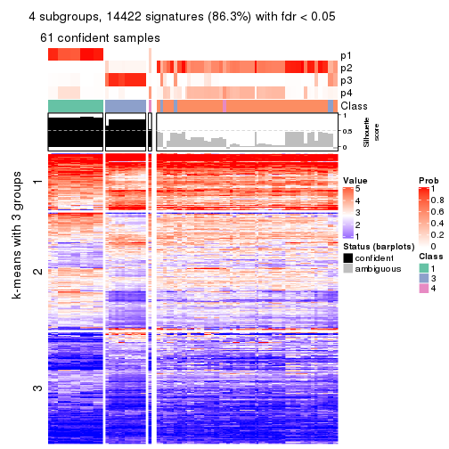
get_signatures(res, k = 5, scale_rows = FALSE)

get_signatures(res, k = 6, scale_rows = FALSE)
Compare the overlap of signatures from different k:
compare_signatures(res)
get_signature() returns a data frame invisibly. TO get the list of signatures, the function
call should be assigned to a variable explicitly. In following code, if plot argument is set
to FALSE, no heatmap is plotted while only the differential analysis is performed.
# code only for demonstration
tb = get_signature(res, k = ..., plot = FALSE)
An example of the output of tb is:
#> which_row fdr mean_1 mean_2 scaled_mean_1 scaled_mean_2 km
#> 1 38 0.042760348 8.373488 9.131774 -0.5533452 0.5164555 1
#> 2 40 0.018707592 7.106213 8.469186 -0.6173731 0.5762149 1
#> 3 55 0.019134737 10.221463 11.207825 -0.6159697 0.5749050 1
#> 4 59 0.006059896 5.921854 7.869574 -0.6899429 0.6439467 1
#> 5 60 0.018055526 8.928898 10.211722 -0.6204761 0.5791110 1
#> 6 98 0.009384629 15.714769 14.887706 0.6635654 -0.6193277 2
...
The columns in tb are:
which_row: row indices corresponding to the input matrix.fdr: FDR for the differential test. mean_x: The mean value in group x.scaled_mean_x: The mean value in group x after rows are scaled.km: Row groups if k-means clustering is applied to rows.UMAP plot which shows how samples are separated.
dimension_reduction(res, k = 2, method = "UMAP")

dimension_reduction(res, k = 3, method = "UMAP")
dimension_reduction(res, k = 4, method = "UMAP")
dimension_reduction(res, k = 5, method = "UMAP")
dimension_reduction(res, k = 6, method = "UMAP")
Following heatmap shows how subgroups are split when increasing k:
collect_classes(res)
If matrix rows can be associated to genes, consider to use GO_Enrichment(res,
...) to perform function enrichment for the signature genes.
The object with results only for a single top-value method and a single partition method can be extracted as:
res = res_list["SD", "skmeans"]
# you can also extract it by
# res = res_list["SD:skmeans"]
A summary of res and all the functions that can be applied to it:
res
#> A 'ConsensusPartition' object with k = 2, 3, 4, 5, 6.
#> On a matrix with 16717 rows and 168 columns.
#> Top rows (1000, 2000, 3000, 4000, 5000) are extracted by 'SD' method.
#> Subgroups are detected by 'skmeans' method.
#> Performed in total 1250 partitions by row resampling.
#> Best k for subgroups seems to be 5.
#>
#> Following methods can be applied to this 'ConsensusPartition' object:
#> [1] "cola_report" "collect_classes" "collect_plots"
#> [4] "collect_stats" "colnames" "compare_signatures"
#> [7] "consensus_heatmap" "dimension_reduction" "functional_enrichment"
#> [10] "get_anno_col" "get_anno" "get_classes"
#> [13] "get_consensus" "get_matrix" "get_membership"
#> [16] "get_param" "get_signatures" "get_stats"
#> [19] "is_best_k" "is_stable_k" "membership_heatmap"
#> [22] "ncol" "nrow" "plot_ecdf"
#> [25] "rownames" "select_partition_number" "show"
#> [28] "suggest_best_k" "test_to_known_factors"
collect_plots() function collects all the plots made from res for all k (number of partitions)
into one single page to provide an easy and fast comparison between different k.
collect_plots(res)
The plots are:
k and the heatmap of
predicted classes for each k.k.k.k.All the plots in panels can be made by individual functions and they are plotted later in this section.
select_partition_number() produces several plots showing different
statistics for choosing “optimized” k. There are following statistics:
k;k, the area increased is defined as \(A_k - A_{k-1}\).The detailed explanations of these statistics can be found in the cola vignette.
Generally speaking, lower PAC score, higher mean silhouette score or higher
concordance corresponds to better partition. Rand index and Jaccard index
measure how similar the current partition is compared to partition with k-1.
If they are too similar, we won't accept k is better than k-1.
select_partition_number(res)
The numeric values for all these statistics can be obtained by get_stats().
get_stats(res)
#> k 1-PAC mean_silhouette concordance area_increased Rand Jaccard
#> 2 2 0.582 0.552 0.830 0.4857 0.538 0.538
#> 3 3 0.713 0.812 0.908 0.3491 0.672 0.457
#> 4 4 0.743 0.730 0.839 0.1311 0.813 0.520
#> 5 5 0.934 0.895 0.947 0.0775 0.895 0.619
#> 6 6 0.892 0.822 0.893 0.0310 0.973 0.868
suggest_best_k() suggests the best \(k\) based on these statistics. The rules are as follows:
NA.suggest_best_k(res)
#> [1] 5
Following shows the table of the partitions (You need to click the show/hide
code output link to see it). The membership matrix (columns with name p*)
is inferred by
clue::cl_consensus()
function with the SE method. Basically the value in the membership matrix
represents the probability to belong to a certain group. The finall class
label for an item is determined with the group with highest probability it
belongs to.
In get_classes() function, the entropy is calculated from the membership
matrix and the silhouette score is calculated from the consensus matrix.
cbind(get_classes(res, k = 2), get_membership(res, k = 2))
#> class entropy silhouette p1 p2
#> SRR1768889 2 0.995 0.7837 0.460 0.540
#> SRR1768890 2 0.995 0.7837 0.460 0.540
#> SRR1768891 2 0.995 0.7837 0.460 0.540
#> SRR1768892 2 0.995 0.7837 0.460 0.540
#> SRR1768893 2 0.995 0.7837 0.460 0.540
#> SRR1768894 2 0.995 0.7837 0.460 0.540
#> SRR1768895 2 0.881 0.6356 0.300 0.700
#> SRR1768896 2 0.881 0.6356 0.300 0.700
#> SRR1768821 2 0.814 0.5784 0.252 0.748
#> SRR1768822 2 0.814 0.5784 0.252 0.748
#> SRR1768823 2 0.975 -0.6506 0.408 0.592
#> SRR1768824 2 0.975 -0.6506 0.408 0.592
#> SRR1768825 2 0.983 0.7565 0.424 0.576
#> SRR1768826 2 0.983 0.7565 0.424 0.576
#> SRR1768827 2 0.163 0.1383 0.024 0.976
#> SRR1768828 2 0.163 0.1383 0.024 0.976
#> SRR1768829 2 0.973 0.7398 0.404 0.596
#> SRR1768830 2 0.973 0.7398 0.404 0.596
#> SRR1768831 1 0.000 0.3289 1.000 0.000
#> SRR1768832 1 0.000 0.3289 1.000 0.000
#> SRR1768833 1 0.456 0.4628 0.904 0.096
#> SRR1768834 1 0.456 0.4628 0.904 0.096
#> SRR1768835 1 0.456 0.4628 0.904 0.096
#> SRR1768836 1 0.000 0.3289 1.000 0.000
#> SRR1768837 1 0.000 0.3289 1.000 0.000
#> SRR1768838 1 0.260 0.2392 0.956 0.044
#> SRR1768839 1 0.260 0.2392 0.956 0.044
#> SRR1768840 2 0.996 0.7805 0.464 0.536
#> SRR1768841 2 0.996 0.7805 0.464 0.536
#> SRR1768842 2 0.996 0.7805 0.464 0.536
#> SRR1768843 2 0.996 0.7805 0.464 0.536
#> SRR1768844 2 0.995 0.7837 0.460 0.540
#> SRR1768845 2 0.995 0.7837 0.460 0.540
#> SRR1768846 2 0.995 0.7837 0.460 0.540
#> SRR1768847 2 0.995 0.7837 0.460 0.540
#> SRR1768848 2 0.995 0.7837 0.460 0.540
#> SRR1768849 2 0.995 0.7837 0.460 0.540
#> SRR1768850 2 0.995 0.7837 0.460 0.540
#> SRR1768851 2 0.995 0.7837 0.460 0.540
#> SRR1768852 1 0.921 -0.5237 0.664 0.336
#> SRR1768853 1 0.921 -0.5237 0.664 0.336
#> SRR1768854 2 0.996 0.7805 0.464 0.536
#> SRR1768855 2 0.995 0.7837 0.460 0.540
#> SRR1768856 2 0.995 0.7837 0.460 0.540
#> SRR1768857 2 0.995 0.7837 0.460 0.540
#> SRR1768858 2 0.995 0.7837 0.460 0.540
#> SRR1768859 2 0.995 0.7837 0.460 0.540
#> SRR1768860 2 0.995 0.7837 0.460 0.540
#> SRR1768861 2 0.995 0.7837 0.460 0.540
#> SRR1768862 2 0.995 0.7837 0.460 0.540
#> SRR1768863 2 0.995 0.7837 0.460 0.540
#> SRR1768864 2 0.995 0.7837 0.460 0.540
#> SRR1768865 2 0.995 0.7837 0.460 0.540
#> SRR1768866 2 0.995 0.7837 0.460 0.540
#> SRR1768867 2 0.980 -0.6594 0.416 0.584
#> SRR1768868 2 0.980 -0.6594 0.416 0.584
#> SRR1768869 1 0.995 0.7826 0.540 0.460
#> SRR1768870 1 0.995 0.7826 0.540 0.460
#> SRR1768871 1 0.224 0.3776 0.964 0.036
#> SRR1768872 1 0.224 0.3776 0.964 0.036
#> SRR1768873 1 0.995 0.7826 0.540 0.460
#> SRR1768874 1 0.995 0.7826 0.540 0.460
#> SRR1768875 2 0.995 0.7837 0.460 0.540
#> SRR1768876 2 0.995 0.7837 0.460 0.540
#> SRR1768877 2 0.995 0.7837 0.460 0.540
#> SRR1768878 2 0.995 0.7837 0.460 0.540
#> SRR1768879 2 0.995 0.7837 0.460 0.540
#> SRR1768880 2 0.995 0.7837 0.460 0.540
#> SRR1768881 2 0.992 0.7754 0.448 0.552
#> SRR1768882 2 0.992 0.7754 0.448 0.552
#> SRR1768883 2 0.995 0.7837 0.460 0.540
#> SRR1768884 2 0.995 0.7837 0.460 0.540
#> SRR1768885 2 0.995 0.7837 0.460 0.540
#> SRR1768886 2 0.995 0.7837 0.460 0.540
#> SRR1768887 2 0.995 0.7837 0.460 0.540
#> SRR1768888 2 0.995 0.7837 0.460 0.540
#> SRR1768897 2 0.995 0.7837 0.460 0.540
#> SRR1768898 2 0.995 0.7837 0.460 0.540
#> SRR1768899 2 0.995 0.7837 0.460 0.540
#> SRR1768900 2 0.995 0.7837 0.460 0.540
#> SRR1768901 2 0.995 0.7837 0.460 0.540
#> SRR1768902 2 0.995 0.7837 0.460 0.540
#> SRR1768903 2 0.995 0.7837 0.460 0.540
#> SRR1768904 2 0.995 0.7837 0.460 0.540
#> SRR1768905 2 0.995 0.7837 0.460 0.540
#> SRR1768906 2 0.995 0.7837 0.460 0.540
#> SRR1768907 2 0.995 0.7837 0.460 0.540
#> SRR1768908 2 0.995 0.7837 0.460 0.540
#> SRR1768909 2 0.995 0.7837 0.460 0.540
#> SRR1768910 2 0.995 0.7837 0.460 0.540
#> SRR1768911 2 0.995 0.7837 0.460 0.540
#> SRR1768912 2 0.995 0.7837 0.460 0.540
#> SRR1768913 2 0.995 0.7837 0.460 0.540
#> SRR1768914 2 0.995 0.7837 0.460 0.540
#> SRR1768915 2 0.995 0.7837 0.460 0.540
#> SRR1768916 2 0.995 0.7837 0.460 0.540
#> SRR1768917 2 0.260 0.0876 0.044 0.956
#> SRR1768918 2 0.995 0.7837 0.460 0.540
#> SRR1768919 2 0.995 0.7837 0.460 0.540
#> SRR1768920 2 0.163 0.1383 0.024 0.976
#> SRR1768921 2 0.163 0.1383 0.024 0.976
#> SRR1768922 2 0.995 0.7837 0.460 0.540
#> SRR1768923 2 0.995 0.7837 0.460 0.540
#> SRR1768924 1 0.204 0.2674 0.968 0.032
#> SRR1768925 1 0.204 0.2674 0.968 0.032
#> SRR1768926 1 0.278 0.2290 0.952 0.048
#> SRR1768927 1 0.278 0.2290 0.952 0.048
#> SRR1768928 1 0.204 0.2674 0.968 0.032
#> SRR1768929 1 0.204 0.2674 0.968 0.032
#> SRR1768930 2 0.994 -0.6833 0.456 0.544
#> SRR1768931 2 0.994 -0.6833 0.456 0.544
#> SRR1768932 2 0.994 -0.6833 0.456 0.544
#> SRR1768933 2 0.993 -0.6977 0.452 0.548
#> SRR1768934 2 0.993 -0.6977 0.452 0.548
#> SRR1768935 2 0.993 -0.6977 0.452 0.548
#> SRR1768936 2 0.993 -0.6977 0.452 0.548
#> SRR1768937 2 0.993 -0.6977 0.452 0.548
#> SRR1768938 2 0.993 -0.6977 0.452 0.548
#> SRR1768939 2 0.000 0.1911 0.000 1.000
#> SRR1768940 2 0.000 0.1911 0.000 1.000
#> SRR1768941 2 0.000 0.1911 0.000 1.000
#> SRR1768942 2 0.000 0.1911 0.000 1.000
#> SRR1768943 2 0.000 0.1911 0.000 1.000
#> SRR1768944 2 0.000 0.1911 0.000 1.000
#> SRR1768945 2 0.000 0.1911 0.000 1.000
#> SRR1768946 2 0.000 0.1911 0.000 1.000
#> SRR1768947 2 0.995 0.7837 0.460 0.540
#> SRR1768948 2 0.995 0.7837 0.460 0.540
#> SRR1768949 2 0.995 0.7837 0.460 0.540
#> SRR1768950 1 0.662 0.2424 0.828 0.172
#> SRR1768954 1 0.995 0.7826 0.540 0.460
#> SRR1768955 1 0.995 0.7826 0.540 0.460
#> SRR1768956 1 0.995 0.7826 0.540 0.460
#> SRR1768957 1 0.995 0.7826 0.540 0.460
#> SRR1768958 1 0.995 0.7826 0.540 0.460
#> SRR1768959 1 0.995 0.7826 0.540 0.460
#> SRR1768960 1 0.995 0.7826 0.540 0.460
#> SRR1768961 1 0.995 0.7826 0.540 0.460
#> SRR1768952 2 0.995 0.7837 0.460 0.540
#> SRR1768953 2 0.995 0.7837 0.460 0.540
#> SRR1768962 1 0.995 0.7826 0.540 0.460
#> SRR1768963 1 0.995 0.7826 0.540 0.460
#> SRR1768964 1 0.995 0.7826 0.540 0.460
#> SRR1768965 1 0.995 0.7826 0.540 0.460
#> SRR1768966 1 0.995 0.7826 0.540 0.460
#> SRR1768967 1 0.995 0.7826 0.540 0.460
#> SRR1768968 1 0.995 0.7826 0.540 0.460
#> SRR1768969 1 0.995 0.7826 0.540 0.460
#> SRR1768970 1 0.995 0.7826 0.540 0.460
#> SRR1768971 1 0.995 0.7826 0.540 0.460
#> SRR1768972 1 0.995 0.7826 0.540 0.460
#> SRR1768973 1 0.995 0.7826 0.540 0.460
#> SRR1768974 1 0.995 0.7826 0.540 0.460
#> SRR1768975 1 0.995 0.7826 0.540 0.460
#> SRR1768976 1 0.995 0.7826 0.540 0.460
#> SRR1768977 1 0.995 0.7826 0.540 0.460
#> SRR1768978 1 0.995 0.7826 0.540 0.460
#> SRR1768979 1 0.995 0.7826 0.540 0.460
#> SRR1768980 1 0.995 0.7826 0.540 0.460
#> SRR1768981 1 0.995 0.7826 0.540 0.460
#> SRR1768982 1 0.995 0.7826 0.540 0.460
#> SRR1768983 1 0.995 0.7826 0.540 0.460
#> SRR1768984 1 0.995 0.7826 0.540 0.460
#> SRR1768985 1 0.995 0.7826 0.540 0.460
#> SRR1768986 1 0.995 0.7826 0.540 0.460
#> SRR1768987 1 0.995 0.7826 0.540 0.460
#> SRR1768988 1 0.995 0.7826 0.540 0.460
#> SRR1768989 1 0.995 0.7826 0.540 0.460
cbind(get_classes(res, k = 3), get_membership(res, k = 3))
#> class entropy silhouette p1 p2 p3
#> SRR1768889 3 0.0000 0.823 0.000 0.000 1.000
#> SRR1768890 3 0.0000 0.823 0.000 0.000 1.000
#> SRR1768891 2 0.0237 0.933 0.000 0.996 0.004
#> SRR1768892 2 0.0237 0.933 0.000 0.996 0.004
#> SRR1768893 2 0.5706 0.332 0.000 0.680 0.320
#> SRR1768894 2 0.5706 0.332 0.000 0.680 0.320
#> SRR1768895 2 0.0000 0.936 0.000 1.000 0.000
#> SRR1768896 2 0.0000 0.936 0.000 1.000 0.000
#> SRR1768821 2 0.0000 0.936 0.000 1.000 0.000
#> SRR1768822 2 0.0000 0.936 0.000 1.000 0.000
#> SRR1768823 2 0.0424 0.936 0.008 0.992 0.000
#> SRR1768824 2 0.0424 0.936 0.008 0.992 0.000
#> SRR1768825 2 0.0000 0.936 0.000 1.000 0.000
#> SRR1768826 2 0.0000 0.936 0.000 1.000 0.000
#> SRR1768827 2 0.0424 0.936 0.008 0.992 0.000
#> SRR1768828 2 0.0424 0.936 0.008 0.992 0.000
#> SRR1768829 2 0.0000 0.936 0.000 1.000 0.000
#> SRR1768830 2 0.0000 0.936 0.000 1.000 0.000
#> SRR1768831 1 0.6180 0.395 0.584 0.000 0.416
#> SRR1768832 1 0.6180 0.395 0.584 0.000 0.416
#> SRR1768833 1 0.3091 0.903 0.912 0.016 0.072
#> SRR1768834 1 0.3091 0.903 0.912 0.016 0.072
#> SRR1768835 1 0.3183 0.899 0.908 0.016 0.076
#> SRR1768836 1 0.3183 0.899 0.908 0.016 0.076
#> SRR1768837 1 0.3183 0.899 0.908 0.016 0.076
#> SRR1768838 3 0.2356 0.776 0.072 0.000 0.928
#> SRR1768839 3 0.2356 0.776 0.072 0.000 0.928
#> SRR1768840 3 0.0000 0.823 0.000 0.000 1.000
#> SRR1768841 3 0.0000 0.823 0.000 0.000 1.000
#> SRR1768842 3 0.2066 0.809 0.000 0.060 0.940
#> SRR1768843 3 0.2066 0.809 0.000 0.060 0.940
#> SRR1768844 3 0.0000 0.823 0.000 0.000 1.000
#> SRR1768845 3 0.0000 0.823 0.000 0.000 1.000
#> SRR1768846 3 0.0000 0.823 0.000 0.000 1.000
#> SRR1768847 3 0.0000 0.823 0.000 0.000 1.000
#> SRR1768848 3 0.0000 0.823 0.000 0.000 1.000
#> SRR1768849 3 0.0000 0.823 0.000 0.000 1.000
#> SRR1768850 3 0.0000 0.823 0.000 0.000 1.000
#> SRR1768851 3 0.0000 0.823 0.000 0.000 1.000
#> SRR1768852 3 0.5905 0.574 0.000 0.352 0.648
#> SRR1768853 3 0.5905 0.574 0.000 0.352 0.648
#> SRR1768854 3 0.5835 0.592 0.000 0.340 0.660
#> SRR1768855 3 0.0000 0.823 0.000 0.000 1.000
#> SRR1768856 3 0.0000 0.823 0.000 0.000 1.000
#> SRR1768857 3 0.0000 0.823 0.000 0.000 1.000
#> SRR1768858 3 0.0592 0.821 0.000 0.012 0.988
#> SRR1768859 3 0.0592 0.821 0.000 0.012 0.988
#> SRR1768860 3 0.0592 0.821 0.000 0.012 0.988
#> SRR1768861 3 0.0000 0.823 0.000 0.000 1.000
#> SRR1768862 3 0.0000 0.823 0.000 0.000 1.000
#> SRR1768863 3 0.3686 0.770 0.000 0.140 0.860
#> SRR1768864 3 0.3686 0.770 0.000 0.140 0.860
#> SRR1768865 3 0.0000 0.823 0.000 0.000 1.000
#> SRR1768866 3 0.0000 0.823 0.000 0.000 1.000
#> SRR1768867 2 0.0892 0.932 0.020 0.980 0.000
#> SRR1768868 2 0.0892 0.932 0.020 0.980 0.000
#> SRR1768869 2 0.4702 0.726 0.212 0.788 0.000
#> SRR1768870 2 0.4702 0.726 0.212 0.788 0.000
#> SRR1768871 2 0.1964 0.896 0.056 0.944 0.000
#> SRR1768872 2 0.1964 0.896 0.056 0.944 0.000
#> SRR1768873 2 0.4750 0.722 0.216 0.784 0.000
#> SRR1768874 2 0.4750 0.722 0.216 0.784 0.000
#> SRR1768875 3 0.0000 0.823 0.000 0.000 1.000
#> SRR1768876 3 0.0000 0.823 0.000 0.000 1.000
#> SRR1768877 3 0.0000 0.823 0.000 0.000 1.000
#> SRR1768878 3 0.0000 0.823 0.000 0.000 1.000
#> SRR1768879 3 0.0000 0.823 0.000 0.000 1.000
#> SRR1768880 3 0.0000 0.823 0.000 0.000 1.000
#> SRR1768881 2 0.5988 0.369 0.000 0.632 0.368
#> SRR1768882 2 0.5988 0.369 0.000 0.632 0.368
#> SRR1768883 3 0.0000 0.823 0.000 0.000 1.000
#> SRR1768884 3 0.0000 0.823 0.000 0.000 1.000
#> SRR1768885 3 0.0000 0.823 0.000 0.000 1.000
#> SRR1768886 3 0.0000 0.823 0.000 0.000 1.000
#> SRR1768887 3 0.0000 0.823 0.000 0.000 1.000
#> SRR1768888 3 0.0000 0.823 0.000 0.000 1.000
#> SRR1768897 2 0.0000 0.936 0.000 1.000 0.000
#> SRR1768898 2 0.0000 0.936 0.000 1.000 0.000
#> SRR1768899 2 0.0000 0.936 0.000 1.000 0.000
#> SRR1768900 2 0.0000 0.936 0.000 1.000 0.000
#> SRR1768901 3 0.5948 0.560 0.000 0.360 0.640
#> SRR1768902 3 0.5948 0.560 0.000 0.360 0.640
#> SRR1768903 3 0.5948 0.560 0.000 0.360 0.640
#> SRR1768904 3 0.6308 0.335 0.000 0.492 0.508
#> SRR1768905 3 0.6308 0.335 0.000 0.492 0.508
#> SRR1768906 3 0.6308 0.335 0.000 0.492 0.508
#> SRR1768907 3 0.6309 0.329 0.000 0.496 0.504
#> SRR1768908 3 0.6309 0.329 0.000 0.496 0.504
#> SRR1768909 3 0.6309 0.329 0.000 0.496 0.504
#> SRR1768910 3 0.6309 0.329 0.000 0.496 0.504
#> SRR1768911 3 0.6309 0.329 0.000 0.496 0.504
#> SRR1768912 3 0.6309 0.329 0.000 0.496 0.504
#> SRR1768913 3 0.6309 0.329 0.000 0.496 0.504
#> SRR1768914 3 0.6309 0.329 0.000 0.496 0.504
#> SRR1768915 3 0.6309 0.329 0.000 0.496 0.504
#> SRR1768916 2 0.0000 0.936 0.000 1.000 0.000
#> SRR1768917 2 0.0592 0.935 0.012 0.988 0.000
#> SRR1768918 3 0.6309 0.329 0.000 0.496 0.504
#> SRR1768919 3 0.6309 0.329 0.000 0.496 0.504
#> SRR1768920 2 0.0892 0.932 0.020 0.980 0.000
#> SRR1768921 2 0.0892 0.932 0.020 0.980 0.000
#> SRR1768922 3 0.4399 0.740 0.000 0.188 0.812
#> SRR1768923 3 0.4399 0.740 0.000 0.188 0.812
#> SRR1768924 3 0.4281 0.785 0.072 0.056 0.872
#> SRR1768925 3 0.4281 0.785 0.072 0.056 0.872
#> SRR1768926 3 0.4095 0.791 0.064 0.056 0.880
#> SRR1768927 3 0.4095 0.791 0.064 0.056 0.880
#> SRR1768928 3 0.4281 0.785 0.072 0.056 0.872
#> SRR1768929 3 0.4281 0.785 0.072 0.056 0.872
#> SRR1768930 2 0.0000 0.936 0.000 1.000 0.000
#> SRR1768931 2 0.0000 0.936 0.000 1.000 0.000
#> SRR1768932 2 0.0000 0.936 0.000 1.000 0.000
#> SRR1768933 2 0.0892 0.932 0.020 0.980 0.000
#> SRR1768934 2 0.0892 0.932 0.020 0.980 0.000
#> SRR1768935 2 0.0892 0.932 0.020 0.980 0.000
#> SRR1768936 2 0.0424 0.936 0.008 0.992 0.000
#> SRR1768937 2 0.0424 0.936 0.008 0.992 0.000
#> SRR1768938 2 0.0424 0.936 0.008 0.992 0.000
#> SRR1768939 2 0.0983 0.934 0.016 0.980 0.004
#> SRR1768940 2 0.0983 0.934 0.016 0.980 0.004
#> SRR1768941 2 0.1015 0.933 0.012 0.980 0.008
#> SRR1768942 2 0.1015 0.933 0.012 0.980 0.008
#> SRR1768943 2 0.1015 0.933 0.012 0.980 0.008
#> SRR1768944 2 0.1015 0.933 0.012 0.980 0.008
#> SRR1768945 2 0.0983 0.934 0.016 0.980 0.004
#> SRR1768946 2 0.0983 0.934 0.016 0.980 0.004
#> SRR1768947 3 0.4555 0.730 0.000 0.200 0.800
#> SRR1768948 3 0.4555 0.730 0.000 0.200 0.800
#> SRR1768949 3 0.5926 0.566 0.000 0.356 0.644
#> SRR1768950 2 0.0000 0.936 0.000 1.000 0.000
#> SRR1768954 1 0.0000 0.970 1.000 0.000 0.000
#> SRR1768955 1 0.0000 0.970 1.000 0.000 0.000
#> SRR1768956 1 0.0000 0.970 1.000 0.000 0.000
#> SRR1768957 1 0.0000 0.970 1.000 0.000 0.000
#> SRR1768958 1 0.0000 0.970 1.000 0.000 0.000
#> SRR1768959 1 0.0000 0.970 1.000 0.000 0.000
#> SRR1768960 1 0.0000 0.970 1.000 0.000 0.000
#> SRR1768961 1 0.0000 0.970 1.000 0.000 0.000
#> SRR1768952 2 0.0000 0.936 0.000 1.000 0.000
#> SRR1768953 2 0.0000 0.936 0.000 1.000 0.000
#> SRR1768962 1 0.0000 0.970 1.000 0.000 0.000
#> SRR1768963 1 0.0000 0.970 1.000 0.000 0.000
#> SRR1768964 1 0.0000 0.970 1.000 0.000 0.000
#> SRR1768965 1 0.0000 0.970 1.000 0.000 0.000
#> SRR1768966 1 0.0000 0.970 1.000 0.000 0.000
#> SRR1768967 1 0.0000 0.970 1.000 0.000 0.000
#> SRR1768968 1 0.0000 0.970 1.000 0.000 0.000
#> SRR1768969 1 0.0000 0.970 1.000 0.000 0.000
#> SRR1768970 1 0.0000 0.970 1.000 0.000 0.000
#> SRR1768971 1 0.0000 0.970 1.000 0.000 0.000
#> SRR1768972 1 0.0000 0.970 1.000 0.000 0.000
#> SRR1768973 1 0.0000 0.970 1.000 0.000 0.000
#> SRR1768974 1 0.0000 0.970 1.000 0.000 0.000
#> SRR1768975 1 0.0000 0.970 1.000 0.000 0.000
#> SRR1768976 1 0.0000 0.970 1.000 0.000 0.000
#> SRR1768977 1 0.0000 0.970 1.000 0.000 0.000
#> SRR1768978 1 0.0000 0.970 1.000 0.000 0.000
#> SRR1768979 1 0.0000 0.970 1.000 0.000 0.000
#> SRR1768980 1 0.0000 0.970 1.000 0.000 0.000
#> SRR1768981 1 0.0000 0.970 1.000 0.000 0.000
#> SRR1768982 1 0.0000 0.970 1.000 0.000 0.000
#> SRR1768983 1 0.0000 0.970 1.000 0.000 0.000
#> SRR1768984 1 0.0000 0.970 1.000 0.000 0.000
#> SRR1768985 1 0.0000 0.970 1.000 0.000 0.000
#> SRR1768986 1 0.0000 0.970 1.000 0.000 0.000
#> SRR1768987 1 0.0000 0.970 1.000 0.000 0.000
#> SRR1768988 1 0.0000 0.970 1.000 0.000 0.000
#> SRR1768989 1 0.0000 0.970 1.000 0.000 0.000
cbind(get_classes(res, k = 4), get_membership(res, k = 4))
#> class entropy silhouette p1 p2 p3 p4
#> SRR1768889 3 0.0000 0.8233 0.000 0.000 1.000 0.000
#> SRR1768890 3 0.0000 0.8233 0.000 0.000 1.000 0.000
#> SRR1768891 4 0.4267 0.6055 0.000 0.188 0.024 0.788
#> SRR1768892 4 0.4267 0.6055 0.000 0.188 0.024 0.788
#> SRR1768893 4 0.7154 -0.3675 0.000 0.428 0.132 0.440
#> SRR1768894 4 0.7154 -0.3675 0.000 0.428 0.132 0.440
#> SRR1768895 4 0.0000 0.9010 0.000 0.000 0.000 1.000
#> SRR1768896 4 0.0000 0.9010 0.000 0.000 0.000 1.000
#> SRR1768821 4 0.0000 0.9010 0.000 0.000 0.000 1.000
#> SRR1768822 4 0.0000 0.9010 0.000 0.000 0.000 1.000
#> SRR1768823 4 0.0000 0.9010 0.000 0.000 0.000 1.000
#> SRR1768824 4 0.0000 0.9010 0.000 0.000 0.000 1.000
#> SRR1768825 4 0.0188 0.8971 0.000 0.004 0.000 0.996
#> SRR1768826 4 0.0188 0.8971 0.000 0.004 0.000 0.996
#> SRR1768827 4 0.0000 0.9010 0.000 0.000 0.000 1.000
#> SRR1768828 4 0.0000 0.9010 0.000 0.000 0.000 1.000
#> SRR1768829 4 0.0000 0.9010 0.000 0.000 0.000 1.000
#> SRR1768830 4 0.0000 0.9010 0.000 0.000 0.000 1.000
#> SRR1768831 2 0.4925 0.0448 0.000 0.572 0.428 0.000
#> SRR1768832 2 0.4925 0.0448 0.000 0.572 0.428 0.000
#> SRR1768833 2 0.0000 0.6724 0.000 1.000 0.000 0.000
#> SRR1768834 2 0.0000 0.6724 0.000 1.000 0.000 0.000
#> SRR1768835 2 0.0000 0.6724 0.000 1.000 0.000 0.000
#> SRR1768836 2 0.0000 0.6724 0.000 1.000 0.000 0.000
#> SRR1768837 2 0.0000 0.6724 0.000 1.000 0.000 0.000
#> SRR1768838 2 0.4790 0.1533 0.000 0.620 0.380 0.000
#> SRR1768839 2 0.4790 0.1533 0.000 0.620 0.380 0.000
#> SRR1768840 2 0.3486 0.4851 0.000 0.812 0.188 0.000
#> SRR1768841 2 0.3486 0.4851 0.000 0.812 0.188 0.000
#> SRR1768842 2 0.0000 0.6724 0.000 1.000 0.000 0.000
#> SRR1768843 2 0.0000 0.6724 0.000 1.000 0.000 0.000
#> SRR1768844 3 0.0000 0.8233 0.000 0.000 1.000 0.000
#> SRR1768845 3 0.0000 0.8233 0.000 0.000 1.000 0.000
#> SRR1768846 3 0.0000 0.8233 0.000 0.000 1.000 0.000
#> SRR1768847 3 0.0000 0.8233 0.000 0.000 1.000 0.000
#> SRR1768848 3 0.0000 0.8233 0.000 0.000 1.000 0.000
#> SRR1768849 3 0.0000 0.8233 0.000 0.000 1.000 0.000
#> SRR1768850 3 0.0000 0.8233 0.000 0.000 1.000 0.000
#> SRR1768851 3 0.0000 0.8233 0.000 0.000 1.000 0.000
#> SRR1768852 2 0.3088 0.6282 0.000 0.888 0.052 0.060
#> SRR1768853 2 0.3088 0.6282 0.000 0.888 0.052 0.060
#> SRR1768854 2 0.3088 0.6282 0.000 0.888 0.052 0.060
#> SRR1768855 3 0.0000 0.8233 0.000 0.000 1.000 0.000
#> SRR1768856 3 0.0000 0.8233 0.000 0.000 1.000 0.000
#> SRR1768857 3 0.0000 0.8233 0.000 0.000 1.000 0.000
#> SRR1768858 3 0.4304 0.5191 0.000 0.284 0.716 0.000
#> SRR1768859 3 0.4304 0.5191 0.000 0.284 0.716 0.000
#> SRR1768860 3 0.4304 0.5191 0.000 0.284 0.716 0.000
#> SRR1768861 3 0.0000 0.8233 0.000 0.000 1.000 0.000
#> SRR1768862 3 0.0000 0.8233 0.000 0.000 1.000 0.000
#> SRR1768863 2 0.6714 0.6050 0.000 0.616 0.176 0.208
#> SRR1768864 2 0.6714 0.6050 0.000 0.616 0.176 0.208
#> SRR1768865 3 0.0000 0.8233 0.000 0.000 1.000 0.000
#> SRR1768866 3 0.0000 0.8233 0.000 0.000 1.000 0.000
#> SRR1768867 4 0.0000 0.9010 0.000 0.000 0.000 1.000
#> SRR1768868 4 0.0000 0.9010 0.000 0.000 0.000 1.000
#> SRR1768869 4 0.4790 0.3935 0.000 0.380 0.000 0.620
#> SRR1768870 4 0.4790 0.3935 0.000 0.380 0.000 0.620
#> SRR1768871 2 0.0000 0.6724 0.000 1.000 0.000 0.000
#> SRR1768872 2 0.0000 0.6724 0.000 1.000 0.000 0.000
#> SRR1768873 4 0.4456 0.5414 0.004 0.280 0.000 0.716
#> SRR1768874 4 0.4456 0.5414 0.004 0.280 0.000 0.716
#> SRR1768875 3 0.0000 0.8233 0.000 0.000 1.000 0.000
#> SRR1768876 3 0.0000 0.8233 0.000 0.000 1.000 0.000
#> SRR1768877 3 0.0000 0.8233 0.000 0.000 1.000 0.000
#> SRR1768878 3 0.0000 0.8233 0.000 0.000 1.000 0.000
#> SRR1768879 3 0.0000 0.8233 0.000 0.000 1.000 0.000
#> SRR1768880 3 0.0000 0.8233 0.000 0.000 1.000 0.000
#> SRR1768881 3 0.4961 0.1022 0.000 0.000 0.552 0.448
#> SRR1768882 3 0.4961 0.1022 0.000 0.000 0.552 0.448
#> SRR1768883 3 0.0000 0.8233 0.000 0.000 1.000 0.000
#> SRR1768884 3 0.0000 0.8233 0.000 0.000 1.000 0.000
#> SRR1768885 3 0.0000 0.8233 0.000 0.000 1.000 0.000
#> SRR1768886 3 0.0000 0.8233 0.000 0.000 1.000 0.000
#> SRR1768887 3 0.0000 0.8233 0.000 0.000 1.000 0.000
#> SRR1768888 3 0.0000 0.8233 0.000 0.000 1.000 0.000
#> SRR1768897 2 0.4999 0.3157 0.000 0.508 0.000 0.492
#> SRR1768898 2 0.4999 0.3157 0.000 0.508 0.000 0.492
#> SRR1768899 2 0.4830 0.5178 0.000 0.608 0.000 0.392
#> SRR1768900 2 0.4830 0.5178 0.000 0.608 0.000 0.392
#> SRR1768901 3 0.5685 0.1236 0.000 0.460 0.516 0.024
#> SRR1768902 3 0.5685 0.1236 0.000 0.460 0.516 0.024
#> SRR1768903 3 0.5685 0.1236 0.000 0.460 0.516 0.024
#> SRR1768904 2 0.7598 0.4930 0.000 0.476 0.240 0.284
#> SRR1768905 2 0.7598 0.4930 0.000 0.476 0.240 0.284
#> SRR1768906 2 0.7598 0.4930 0.000 0.476 0.240 0.284
#> SRR1768907 2 0.6393 0.6272 0.000 0.616 0.100 0.284
#> SRR1768908 2 0.6393 0.6272 0.000 0.616 0.100 0.284
#> SRR1768909 2 0.6393 0.6272 0.000 0.616 0.100 0.284
#> SRR1768910 2 0.6393 0.6272 0.000 0.616 0.100 0.284
#> SRR1768911 2 0.6393 0.6272 0.000 0.616 0.100 0.284
#> SRR1768912 2 0.6393 0.6272 0.000 0.616 0.100 0.284
#> SRR1768913 2 0.6393 0.6272 0.000 0.616 0.100 0.284
#> SRR1768914 2 0.6393 0.6272 0.000 0.616 0.100 0.284
#> SRR1768915 2 0.6393 0.6272 0.000 0.616 0.100 0.284
#> SRR1768916 2 0.4761 0.5430 0.000 0.628 0.000 0.372
#> SRR1768917 4 0.0000 0.9010 0.000 0.000 0.000 1.000
#> SRR1768918 2 0.6393 0.6272 0.000 0.616 0.100 0.284
#> SRR1768919 2 0.6393 0.6272 0.000 0.616 0.100 0.284
#> SRR1768920 4 0.0000 0.9010 0.000 0.000 0.000 1.000
#> SRR1768921 4 0.0000 0.9010 0.000 0.000 0.000 1.000
#> SRR1768922 3 0.5594 0.1333 0.000 0.460 0.520 0.020
#> SRR1768923 3 0.5594 0.1333 0.000 0.460 0.520 0.020
#> SRR1768924 2 0.0000 0.6724 0.000 1.000 0.000 0.000
#> SRR1768925 2 0.0000 0.6724 0.000 1.000 0.000 0.000
#> SRR1768926 2 0.0000 0.6724 0.000 1.000 0.000 0.000
#> SRR1768927 2 0.0000 0.6724 0.000 1.000 0.000 0.000
#> SRR1768928 2 0.0000 0.6724 0.000 1.000 0.000 0.000
#> SRR1768929 2 0.0000 0.6724 0.000 1.000 0.000 0.000
#> SRR1768930 4 0.0000 0.9010 0.000 0.000 0.000 1.000
#> SRR1768931 4 0.0000 0.9010 0.000 0.000 0.000 1.000
#> SRR1768932 4 0.0000 0.9010 0.000 0.000 0.000 1.000
#> SRR1768933 4 0.0000 0.9010 0.000 0.000 0.000 1.000
#> SRR1768934 4 0.0000 0.9010 0.000 0.000 0.000 1.000
#> SRR1768935 4 0.0000 0.9010 0.000 0.000 0.000 1.000
#> SRR1768936 4 0.0000 0.9010 0.000 0.000 0.000 1.000
#> SRR1768937 4 0.0000 0.9010 0.000 0.000 0.000 1.000
#> SRR1768938 4 0.0000 0.9010 0.000 0.000 0.000 1.000
#> SRR1768939 4 0.0000 0.9010 0.000 0.000 0.000 1.000
#> SRR1768940 4 0.0000 0.9010 0.000 0.000 0.000 1.000
#> SRR1768941 4 0.0000 0.9010 0.000 0.000 0.000 1.000
#> SRR1768942 4 0.0000 0.9010 0.000 0.000 0.000 1.000
#> SRR1768943 4 0.0000 0.9010 0.000 0.000 0.000 1.000
#> SRR1768944 4 0.0000 0.9010 0.000 0.000 0.000 1.000
#> SRR1768945 4 0.0000 0.9010 0.000 0.000 0.000 1.000
#> SRR1768946 4 0.0000 0.9010 0.000 0.000 0.000 1.000
#> SRR1768947 3 0.5550 0.2113 0.000 0.428 0.552 0.020
#> SRR1768948 3 0.5550 0.2113 0.000 0.428 0.552 0.020
#> SRR1768949 3 0.5643 0.2030 0.000 0.428 0.548 0.024
#> SRR1768950 4 0.3726 0.5838 0.000 0.212 0.000 0.788
#> SRR1768954 1 0.0000 1.0000 1.000 0.000 0.000 0.000
#> SRR1768955 1 0.0000 1.0000 1.000 0.000 0.000 0.000
#> SRR1768956 1 0.0000 1.0000 1.000 0.000 0.000 0.000
#> SRR1768957 1 0.0000 1.0000 1.000 0.000 0.000 0.000
#> SRR1768958 1 0.0000 1.0000 1.000 0.000 0.000 0.000
#> SRR1768959 1 0.0000 1.0000 1.000 0.000 0.000 0.000
#> SRR1768960 1 0.0000 1.0000 1.000 0.000 0.000 0.000
#> SRR1768961 1 0.0000 1.0000 1.000 0.000 0.000 0.000
#> SRR1768952 2 0.4830 0.5178 0.000 0.608 0.000 0.392
#> SRR1768953 2 0.4830 0.5178 0.000 0.608 0.000 0.392
#> SRR1768962 1 0.0000 1.0000 1.000 0.000 0.000 0.000
#> SRR1768963 1 0.0000 1.0000 1.000 0.000 0.000 0.000
#> SRR1768964 1 0.0000 1.0000 1.000 0.000 0.000 0.000
#> SRR1768965 1 0.0000 1.0000 1.000 0.000 0.000 0.000
#> SRR1768966 1 0.0000 1.0000 1.000 0.000 0.000 0.000
#> SRR1768967 1 0.0000 1.0000 1.000 0.000 0.000 0.000
#> SRR1768968 1 0.0000 1.0000 1.000 0.000 0.000 0.000
#> SRR1768969 1 0.0000 1.0000 1.000 0.000 0.000 0.000
#> SRR1768970 1 0.0000 1.0000 1.000 0.000 0.000 0.000
#> SRR1768971 1 0.0000 1.0000 1.000 0.000 0.000 0.000
#> SRR1768972 1 0.0000 1.0000 1.000 0.000 0.000 0.000
#> SRR1768973 1 0.0000 1.0000 1.000 0.000 0.000 0.000
#> SRR1768974 1 0.0000 1.0000 1.000 0.000 0.000 0.000
#> SRR1768975 1 0.0000 1.0000 1.000 0.000 0.000 0.000
#> SRR1768976 1 0.0000 1.0000 1.000 0.000 0.000 0.000
#> SRR1768977 1 0.0000 1.0000 1.000 0.000 0.000 0.000
#> SRR1768978 1 0.0000 1.0000 1.000 0.000 0.000 0.000
#> SRR1768979 1 0.0000 1.0000 1.000 0.000 0.000 0.000
#> SRR1768980 1 0.0000 1.0000 1.000 0.000 0.000 0.000
#> SRR1768981 1 0.0000 1.0000 1.000 0.000 0.000 0.000
#> SRR1768982 1 0.0000 1.0000 1.000 0.000 0.000 0.000
#> SRR1768983 1 0.0000 1.0000 1.000 0.000 0.000 0.000
#> SRR1768984 1 0.0000 1.0000 1.000 0.000 0.000 0.000
#> SRR1768985 1 0.0000 1.0000 1.000 0.000 0.000 0.000
#> SRR1768986 1 0.0000 1.0000 1.000 0.000 0.000 0.000
#> SRR1768987 1 0.0000 1.0000 1.000 0.000 0.000 0.000
#> SRR1768988 1 0.0000 1.0000 1.000 0.000 0.000 0.000
#> SRR1768989 1 0.0000 1.0000 1.000 0.000 0.000 0.000
cbind(get_classes(res, k = 5), get_membership(res, k = 5))
#> class entropy silhouette p1 p2 p3 p4 p5
#> SRR1768889 3 0.0000 0.9651 0 0.000 1.000 0.000 0.000
#> SRR1768890 3 0.0000 0.9651 0 0.000 1.000 0.000 0.000
#> SRR1768891 2 0.1357 0.8718 0 0.948 0.000 0.048 0.004
#> SRR1768892 2 0.1357 0.8718 0 0.948 0.000 0.048 0.004
#> SRR1768893 2 0.1041 0.8795 0 0.964 0.000 0.032 0.004
#> SRR1768894 2 0.1041 0.8795 0 0.964 0.000 0.032 0.004
#> SRR1768895 2 0.4278 0.0266 0 0.548 0.000 0.452 0.000
#> SRR1768896 2 0.4278 0.0266 0 0.548 0.000 0.452 0.000
#> SRR1768821 4 0.1341 0.9095 0 0.056 0.000 0.944 0.000
#> SRR1768822 4 0.1341 0.9095 0 0.056 0.000 0.944 0.000
#> SRR1768823 4 0.0609 0.9147 0 0.020 0.000 0.980 0.000
#> SRR1768824 4 0.0609 0.9147 0 0.020 0.000 0.980 0.000
#> SRR1768825 4 0.4201 0.3872 0 0.408 0.000 0.592 0.000
#> SRR1768826 4 0.4201 0.3872 0 0.408 0.000 0.592 0.000
#> SRR1768827 4 0.1341 0.9095 0 0.056 0.000 0.944 0.000
#> SRR1768828 4 0.1341 0.9095 0 0.056 0.000 0.944 0.000
#> SRR1768829 4 0.4015 0.5215 0 0.348 0.000 0.652 0.000
#> SRR1768830 4 0.4015 0.5215 0 0.348 0.000 0.652 0.000
#> SRR1768831 5 0.0404 0.9688 0 0.000 0.012 0.000 0.988
#> SRR1768832 5 0.0404 0.9688 0 0.000 0.012 0.000 0.988
#> SRR1768833 5 0.0404 0.9762 0 0.012 0.000 0.000 0.988
#> SRR1768834 5 0.0404 0.9762 0 0.012 0.000 0.000 0.988
#> SRR1768835 5 0.0404 0.9762 0 0.012 0.000 0.000 0.988
#> SRR1768836 5 0.0404 0.9762 0 0.012 0.000 0.000 0.988
#> SRR1768837 5 0.0404 0.9762 0 0.012 0.000 0.000 0.988
#> SRR1768838 5 0.0451 0.9722 0 0.004 0.008 0.000 0.988
#> SRR1768839 5 0.0451 0.9722 0 0.004 0.008 0.000 0.988
#> SRR1768840 5 0.0451 0.9746 0 0.008 0.004 0.000 0.988
#> SRR1768841 5 0.0451 0.9746 0 0.008 0.004 0.000 0.988
#> SRR1768842 5 0.0404 0.9762 0 0.012 0.000 0.000 0.988
#> SRR1768843 5 0.0404 0.9762 0 0.012 0.000 0.000 0.988
#> SRR1768844 3 0.0000 0.9651 0 0.000 1.000 0.000 0.000
#> SRR1768845 3 0.0000 0.9651 0 0.000 1.000 0.000 0.000
#> SRR1768846 3 0.0000 0.9651 0 0.000 1.000 0.000 0.000
#> SRR1768847 3 0.0000 0.9651 0 0.000 1.000 0.000 0.000
#> SRR1768848 3 0.0000 0.9651 0 0.000 1.000 0.000 0.000
#> SRR1768849 3 0.0000 0.9651 0 0.000 1.000 0.000 0.000
#> SRR1768850 3 0.0000 0.9651 0 0.000 1.000 0.000 0.000
#> SRR1768851 3 0.0000 0.9651 0 0.000 1.000 0.000 0.000
#> SRR1768852 5 0.3064 0.8628 0 0.108 0.000 0.036 0.856
#> SRR1768853 5 0.3064 0.8628 0 0.108 0.000 0.036 0.856
#> SRR1768854 5 0.3064 0.8628 0 0.108 0.000 0.036 0.856
#> SRR1768855 3 0.0000 0.9651 0 0.000 1.000 0.000 0.000
#> SRR1768856 3 0.0000 0.9651 0 0.000 1.000 0.000 0.000
#> SRR1768857 3 0.0000 0.9651 0 0.000 1.000 0.000 0.000
#> SRR1768858 3 0.2286 0.8491 0 0.108 0.888 0.000 0.004
#> SRR1768859 3 0.2286 0.8491 0 0.108 0.888 0.000 0.004
#> SRR1768860 3 0.2286 0.8491 0 0.108 0.888 0.000 0.004
#> SRR1768861 3 0.0000 0.9651 0 0.000 1.000 0.000 0.000
#> SRR1768862 3 0.0000 0.9651 0 0.000 1.000 0.000 0.000
#> SRR1768863 2 0.0912 0.8859 0 0.972 0.000 0.012 0.016
#> SRR1768864 2 0.0912 0.8859 0 0.972 0.000 0.012 0.016
#> SRR1768865 3 0.0000 0.9651 0 0.000 1.000 0.000 0.000
#> SRR1768866 3 0.0000 0.9651 0 0.000 1.000 0.000 0.000
#> SRR1768867 4 0.0609 0.9147 0 0.020 0.000 0.980 0.000
#> SRR1768868 4 0.0609 0.9147 0 0.020 0.000 0.980 0.000
#> SRR1768869 4 0.4029 0.5283 0 0.004 0.000 0.680 0.316
#> SRR1768870 4 0.4029 0.5283 0 0.004 0.000 0.680 0.316
#> SRR1768871 5 0.1331 0.9488 0 0.008 0.000 0.040 0.952
#> SRR1768872 5 0.1331 0.9488 0 0.008 0.000 0.040 0.952
#> SRR1768873 4 0.0771 0.9148 0 0.020 0.000 0.976 0.004
#> SRR1768874 4 0.0771 0.9148 0 0.020 0.000 0.976 0.004
#> SRR1768875 3 0.0000 0.9651 0 0.000 1.000 0.000 0.000
#> SRR1768876 3 0.0000 0.9651 0 0.000 1.000 0.000 0.000
#> SRR1768877 3 0.0000 0.9651 0 0.000 1.000 0.000 0.000
#> SRR1768878 3 0.0000 0.9651 0 0.000 1.000 0.000 0.000
#> SRR1768879 3 0.0000 0.9651 0 0.000 1.000 0.000 0.000
#> SRR1768880 3 0.0000 0.9651 0 0.000 1.000 0.000 0.000
#> SRR1768881 3 0.4473 0.4797 0 0.020 0.656 0.324 0.000
#> SRR1768882 3 0.4473 0.4797 0 0.020 0.656 0.324 0.000
#> SRR1768883 3 0.0000 0.9651 0 0.000 1.000 0.000 0.000
#> SRR1768884 3 0.0000 0.9651 0 0.000 1.000 0.000 0.000
#> SRR1768885 3 0.0000 0.9651 0 0.000 1.000 0.000 0.000
#> SRR1768886 3 0.0000 0.9651 0 0.000 1.000 0.000 0.000
#> SRR1768887 3 0.0000 0.9651 0 0.000 1.000 0.000 0.000
#> SRR1768888 3 0.0000 0.9651 0 0.000 1.000 0.000 0.000
#> SRR1768897 2 0.0162 0.8873 0 0.996 0.000 0.000 0.004
#> SRR1768898 2 0.0162 0.8873 0 0.996 0.000 0.000 0.004
#> SRR1768899 2 0.0404 0.8885 0 0.988 0.000 0.000 0.012
#> SRR1768900 2 0.0404 0.8885 0 0.988 0.000 0.000 0.012
#> SRR1768901 2 0.3663 0.7378 0 0.776 0.208 0.016 0.000
#> SRR1768902 2 0.3663 0.7378 0 0.776 0.208 0.016 0.000
#> SRR1768903 2 0.3663 0.7378 0 0.776 0.208 0.016 0.000
#> SRR1768904 2 0.0510 0.8798 0 0.984 0.000 0.016 0.000
#> SRR1768905 2 0.0510 0.8798 0 0.984 0.000 0.016 0.000
#> SRR1768906 2 0.0510 0.8798 0 0.984 0.000 0.016 0.000
#> SRR1768907 2 0.0510 0.8886 0 0.984 0.000 0.000 0.016
#> SRR1768908 2 0.0510 0.8886 0 0.984 0.000 0.000 0.016
#> SRR1768909 2 0.0510 0.8886 0 0.984 0.000 0.000 0.016
#> SRR1768910 2 0.0510 0.8886 0 0.984 0.000 0.000 0.016
#> SRR1768911 2 0.0510 0.8886 0 0.984 0.000 0.000 0.016
#> SRR1768912 2 0.0510 0.8886 0 0.984 0.000 0.000 0.016
#> SRR1768913 2 0.0510 0.8886 0 0.984 0.000 0.000 0.016
#> SRR1768914 2 0.0510 0.8886 0 0.984 0.000 0.000 0.016
#> SRR1768915 2 0.0510 0.8886 0 0.984 0.000 0.000 0.016
#> SRR1768916 2 0.1205 0.8739 0 0.956 0.000 0.004 0.040
#> SRR1768917 4 0.0771 0.9148 0 0.020 0.000 0.976 0.004
#> SRR1768918 2 0.0404 0.8885 0 0.988 0.000 0.000 0.012
#> SRR1768919 2 0.0404 0.8885 0 0.988 0.000 0.000 0.012
#> SRR1768920 4 0.1197 0.9098 0 0.048 0.000 0.952 0.000
#> SRR1768921 4 0.1197 0.9098 0 0.048 0.000 0.952 0.000
#> SRR1768922 2 0.3452 0.7089 0 0.756 0.244 0.000 0.000
#> SRR1768923 2 0.3452 0.7089 0 0.756 0.244 0.000 0.000
#> SRR1768924 5 0.0404 0.9762 0 0.012 0.000 0.000 0.988
#> SRR1768925 5 0.0404 0.9762 0 0.012 0.000 0.000 0.988
#> SRR1768926 5 0.0404 0.9762 0 0.012 0.000 0.000 0.988
#> SRR1768927 5 0.0404 0.9762 0 0.012 0.000 0.000 0.988
#> SRR1768928 5 0.0404 0.9762 0 0.012 0.000 0.000 0.988
#> SRR1768929 5 0.0404 0.9762 0 0.012 0.000 0.000 0.988
#> SRR1768930 4 0.0771 0.9148 0 0.020 0.000 0.976 0.004
#> SRR1768931 4 0.0771 0.9148 0 0.020 0.000 0.976 0.004
#> SRR1768932 4 0.0771 0.9148 0 0.020 0.000 0.976 0.004
#> SRR1768933 4 0.0771 0.9148 0 0.020 0.000 0.976 0.004
#> SRR1768934 4 0.0771 0.9148 0 0.020 0.000 0.976 0.004
#> SRR1768935 4 0.0771 0.9148 0 0.020 0.000 0.976 0.004
#> SRR1768936 4 0.0771 0.9148 0 0.020 0.000 0.976 0.004
#> SRR1768937 4 0.0771 0.9148 0 0.020 0.000 0.976 0.004
#> SRR1768938 4 0.0771 0.9148 0 0.020 0.000 0.976 0.004
#> SRR1768939 4 0.1430 0.9025 0 0.052 0.000 0.944 0.004
#> SRR1768940 4 0.1430 0.9025 0 0.052 0.000 0.944 0.004
#> SRR1768941 4 0.1430 0.9025 0 0.052 0.000 0.944 0.004
#> SRR1768942 4 0.1430 0.9025 0 0.052 0.000 0.944 0.004
#> SRR1768943 4 0.1430 0.9025 0 0.052 0.000 0.944 0.004
#> SRR1768944 4 0.1430 0.9025 0 0.052 0.000 0.944 0.004
#> SRR1768945 4 0.1430 0.9025 0 0.052 0.000 0.944 0.004
#> SRR1768946 4 0.1430 0.9025 0 0.052 0.000 0.944 0.004
#> SRR1768947 2 0.3561 0.6880 0 0.740 0.260 0.000 0.000
#> SRR1768948 2 0.3561 0.6880 0 0.740 0.260 0.000 0.000
#> SRR1768949 2 0.3607 0.7073 0 0.752 0.244 0.000 0.004
#> SRR1768950 2 0.4546 0.0988 0 0.532 0.000 0.460 0.008
#> SRR1768954 1 0.0000 1.0000 1 0.000 0.000 0.000 0.000
#> SRR1768955 1 0.0000 1.0000 1 0.000 0.000 0.000 0.000
#> SRR1768956 1 0.0000 1.0000 1 0.000 0.000 0.000 0.000
#> SRR1768957 1 0.0000 1.0000 1 0.000 0.000 0.000 0.000
#> SRR1768958 1 0.0000 1.0000 1 0.000 0.000 0.000 0.000
#> SRR1768959 1 0.0000 1.0000 1 0.000 0.000 0.000 0.000
#> SRR1768960 1 0.0000 1.0000 1 0.000 0.000 0.000 0.000
#> SRR1768961 1 0.0000 1.0000 1 0.000 0.000 0.000 0.000
#> SRR1768952 2 0.0898 0.8853 0 0.972 0.000 0.020 0.008
#> SRR1768953 2 0.0898 0.8853 0 0.972 0.000 0.020 0.008
#> SRR1768962 1 0.0000 1.0000 1 0.000 0.000 0.000 0.000
#> SRR1768963 1 0.0000 1.0000 1 0.000 0.000 0.000 0.000
#> SRR1768964 1 0.0000 1.0000 1 0.000 0.000 0.000 0.000
#> SRR1768965 1 0.0000 1.0000 1 0.000 0.000 0.000 0.000
#> SRR1768966 1 0.0000 1.0000 1 0.000 0.000 0.000 0.000
#> SRR1768967 1 0.0000 1.0000 1 0.000 0.000 0.000 0.000
#> SRR1768968 1 0.0000 1.0000 1 0.000 0.000 0.000 0.000
#> SRR1768969 1 0.0000 1.0000 1 0.000 0.000 0.000 0.000
#> SRR1768970 1 0.0000 1.0000 1 0.000 0.000 0.000 0.000
#> SRR1768971 1 0.0000 1.0000 1 0.000 0.000 0.000 0.000
#> SRR1768972 1 0.0000 1.0000 1 0.000 0.000 0.000 0.000
#> SRR1768973 1 0.0000 1.0000 1 0.000 0.000 0.000 0.000
#> SRR1768974 1 0.0000 1.0000 1 0.000 0.000 0.000 0.000
#> SRR1768975 1 0.0000 1.0000 1 0.000 0.000 0.000 0.000
#> SRR1768976 1 0.0000 1.0000 1 0.000 0.000 0.000 0.000
#> SRR1768977 1 0.0000 1.0000 1 0.000 0.000 0.000 0.000
#> SRR1768978 1 0.0000 1.0000 1 0.000 0.000 0.000 0.000
#> SRR1768979 1 0.0000 1.0000 1 0.000 0.000 0.000 0.000
#> SRR1768980 1 0.0000 1.0000 1 0.000 0.000 0.000 0.000
#> SRR1768981 1 0.0000 1.0000 1 0.000 0.000 0.000 0.000
#> SRR1768982 1 0.0000 1.0000 1 0.000 0.000 0.000 0.000
#> SRR1768983 1 0.0000 1.0000 1 0.000 0.000 0.000 0.000
#> SRR1768984 1 0.0000 1.0000 1 0.000 0.000 0.000 0.000
#> SRR1768985 1 0.0000 1.0000 1 0.000 0.000 0.000 0.000
#> SRR1768986 1 0.0000 1.0000 1 0.000 0.000 0.000 0.000
#> SRR1768987 1 0.0000 1.0000 1 0.000 0.000 0.000 0.000
#> SRR1768988 1 0.0000 1.0000 1 0.000 0.000 0.000 0.000
#> SRR1768989 1 0.0000 1.0000 1 0.000 0.000 0.000 0.000
cbind(get_classes(res, k = 6), get_membership(res, k = 6))
#> class entropy silhouette p1 p2 p3 p4 p5 p6
#> SRR1768889 3 0.0000 0.948 0.00 0.000 1.000 0.000 0.000 0.000
#> SRR1768890 3 0.0000 0.948 0.00 0.000 1.000 0.000 0.000 0.000
#> SRR1768891 2 0.2848 0.799 0.00 0.856 0.000 0.036 0.004 0.104
#> SRR1768892 2 0.2848 0.799 0.00 0.856 0.000 0.036 0.004 0.104
#> SRR1768893 2 0.1858 0.828 0.00 0.904 0.000 0.000 0.004 0.092
#> SRR1768894 2 0.1858 0.828 0.00 0.904 0.000 0.000 0.004 0.092
#> SRR1768895 2 0.5943 -0.117 0.00 0.456 0.000 0.292 0.000 0.252
#> SRR1768896 2 0.5943 -0.117 0.00 0.456 0.000 0.292 0.000 0.252
#> SRR1768821 4 0.3819 0.552 0.00 0.012 0.000 0.672 0.000 0.316
#> SRR1768822 4 0.3819 0.552 0.00 0.012 0.000 0.672 0.000 0.316
#> SRR1768823 4 0.2941 0.649 0.00 0.000 0.000 0.780 0.000 0.220
#> SRR1768824 4 0.2941 0.649 0.00 0.000 0.000 0.780 0.000 0.220
#> SRR1768825 4 0.6075 0.199 0.00 0.288 0.000 0.400 0.000 0.312
#> SRR1768826 4 0.6075 0.199 0.00 0.288 0.000 0.400 0.000 0.312
#> SRR1768827 4 0.3741 0.550 0.00 0.008 0.000 0.672 0.000 0.320
#> SRR1768828 4 0.3741 0.550 0.00 0.008 0.000 0.672 0.000 0.320
#> SRR1768829 4 0.5694 0.371 0.00 0.184 0.000 0.504 0.000 0.312
#> SRR1768830 4 0.5694 0.371 0.00 0.184 0.000 0.504 0.000 0.312
#> SRR1768831 5 0.0291 0.948 0.00 0.000 0.004 0.000 0.992 0.004
#> SRR1768832 5 0.0291 0.948 0.00 0.000 0.004 0.000 0.992 0.004
#> SRR1768833 5 0.0291 0.950 0.00 0.004 0.000 0.000 0.992 0.004
#> SRR1768834 5 0.0291 0.950 0.00 0.004 0.000 0.000 0.992 0.004
#> SRR1768835 5 0.0291 0.950 0.00 0.004 0.000 0.000 0.992 0.004
#> SRR1768836 5 0.0291 0.950 0.00 0.004 0.000 0.000 0.992 0.004
#> SRR1768837 5 0.0291 0.950 0.00 0.004 0.000 0.000 0.992 0.004
#> SRR1768838 5 0.0291 0.948 0.00 0.000 0.004 0.000 0.992 0.004
#> SRR1768839 5 0.0291 0.948 0.00 0.000 0.004 0.000 0.992 0.004
#> SRR1768840 5 0.0291 0.950 0.00 0.004 0.000 0.000 0.992 0.004
#> SRR1768841 5 0.0291 0.950 0.00 0.004 0.000 0.000 0.992 0.004
#> SRR1768842 5 0.0508 0.950 0.00 0.004 0.000 0.000 0.984 0.012
#> SRR1768843 5 0.0508 0.950 0.00 0.004 0.000 0.000 0.984 0.012
#> SRR1768844 3 0.0000 0.948 0.00 0.000 1.000 0.000 0.000 0.000
#> SRR1768845 3 0.0000 0.948 0.00 0.000 1.000 0.000 0.000 0.000
#> SRR1768846 3 0.0000 0.948 0.00 0.000 1.000 0.000 0.000 0.000
#> SRR1768847 3 0.0000 0.948 0.00 0.000 1.000 0.000 0.000 0.000
#> SRR1768848 3 0.0000 0.948 0.00 0.000 1.000 0.000 0.000 0.000
#> SRR1768849 3 0.0000 0.948 0.00 0.000 1.000 0.000 0.000 0.000
#> SRR1768850 3 0.0000 0.948 0.00 0.000 1.000 0.000 0.000 0.000
#> SRR1768851 3 0.0000 0.948 0.00 0.000 1.000 0.000 0.000 0.000
#> SRR1768852 6 0.4706 0.314 0.00 0.028 0.000 0.020 0.336 0.616
#> SRR1768853 6 0.4706 0.314 0.00 0.028 0.000 0.020 0.336 0.616
#> SRR1768854 6 0.4706 0.314 0.00 0.028 0.000 0.020 0.336 0.616
#> SRR1768855 3 0.0000 0.948 0.00 0.000 1.000 0.000 0.000 0.000
#> SRR1768856 3 0.0000 0.948 0.00 0.000 1.000 0.000 0.000 0.000
#> SRR1768857 3 0.0000 0.948 0.00 0.000 1.000 0.000 0.000 0.000
#> SRR1768858 3 0.4024 0.702 0.00 0.072 0.744 0.000 0.000 0.184
#> SRR1768859 3 0.4024 0.702 0.00 0.072 0.744 0.000 0.000 0.184
#> SRR1768860 3 0.4024 0.702 0.00 0.072 0.744 0.000 0.000 0.184
#> SRR1768861 3 0.0260 0.944 0.00 0.000 0.992 0.000 0.000 0.008
#> SRR1768862 3 0.0260 0.944 0.00 0.000 0.992 0.000 0.000 0.008
#> SRR1768863 2 0.0363 0.873 0.00 0.988 0.000 0.000 0.000 0.012
#> SRR1768864 2 0.0363 0.873 0.00 0.988 0.000 0.000 0.000 0.012
#> SRR1768865 3 0.0146 0.946 0.00 0.000 0.996 0.000 0.000 0.004
#> SRR1768866 3 0.0146 0.946 0.00 0.000 0.996 0.000 0.000 0.004
#> SRR1768867 4 0.1610 0.727 0.00 0.000 0.000 0.916 0.000 0.084
#> SRR1768868 4 0.1610 0.727 0.00 0.000 0.000 0.916 0.000 0.084
#> SRR1768869 4 0.2088 0.673 0.00 0.000 0.000 0.904 0.068 0.028
#> SRR1768870 4 0.2088 0.673 0.00 0.000 0.000 0.904 0.068 0.028
#> SRR1768871 5 0.4355 0.518 0.00 0.004 0.000 0.320 0.644 0.032
#> SRR1768872 5 0.4355 0.518 0.00 0.004 0.000 0.320 0.644 0.032
#> SRR1768873 4 0.0777 0.733 0.00 0.000 0.000 0.972 0.004 0.024
#> SRR1768874 4 0.0777 0.733 0.00 0.000 0.000 0.972 0.004 0.024
#> SRR1768875 3 0.0000 0.948 0.00 0.000 1.000 0.000 0.000 0.000
#> SRR1768876 3 0.0000 0.948 0.00 0.000 1.000 0.000 0.000 0.000
#> SRR1768877 3 0.0000 0.948 0.00 0.000 1.000 0.000 0.000 0.000
#> SRR1768878 3 0.0000 0.948 0.00 0.000 1.000 0.000 0.000 0.000
#> SRR1768879 3 0.0146 0.946 0.00 0.000 0.996 0.000 0.000 0.004
#> SRR1768880 3 0.0146 0.946 0.00 0.000 0.996 0.000 0.000 0.004
#> SRR1768881 3 0.4921 0.368 0.00 0.000 0.584 0.352 0.008 0.056
#> SRR1768882 3 0.4921 0.368 0.00 0.000 0.584 0.352 0.008 0.056
#> SRR1768883 3 0.0000 0.948 0.00 0.000 1.000 0.000 0.000 0.000
#> SRR1768884 3 0.0000 0.948 0.00 0.000 1.000 0.000 0.000 0.000
#> SRR1768885 3 0.0000 0.948 0.00 0.000 1.000 0.000 0.000 0.000
#> SRR1768886 3 0.0000 0.948 0.00 0.000 1.000 0.000 0.000 0.000
#> SRR1768887 3 0.0000 0.948 0.00 0.000 1.000 0.000 0.000 0.000
#> SRR1768888 3 0.0000 0.948 0.00 0.000 1.000 0.000 0.000 0.000
#> SRR1768897 2 0.0260 0.873 0.00 0.992 0.000 0.000 0.000 0.008
#> SRR1768898 2 0.0260 0.873 0.00 0.992 0.000 0.000 0.000 0.008
#> SRR1768899 2 0.0260 0.873 0.00 0.992 0.000 0.000 0.000 0.008
#> SRR1768900 2 0.0260 0.873 0.00 0.992 0.000 0.000 0.000 0.008
#> SRR1768901 2 0.3977 0.743 0.00 0.760 0.144 0.000 0.000 0.096
#> SRR1768902 2 0.3977 0.743 0.00 0.760 0.144 0.000 0.000 0.096
#> SRR1768903 2 0.3977 0.743 0.00 0.760 0.144 0.000 0.000 0.096
#> SRR1768904 2 0.1863 0.835 0.00 0.896 0.000 0.000 0.000 0.104
#> SRR1768905 2 0.1863 0.835 0.00 0.896 0.000 0.000 0.000 0.104
#> SRR1768906 2 0.1863 0.835 0.00 0.896 0.000 0.000 0.000 0.104
#> SRR1768907 2 0.0000 0.874 0.00 1.000 0.000 0.000 0.000 0.000
#> SRR1768908 2 0.0000 0.874 0.00 1.000 0.000 0.000 0.000 0.000
#> SRR1768909 2 0.0000 0.874 0.00 1.000 0.000 0.000 0.000 0.000
#> SRR1768910 2 0.0000 0.874 0.00 1.000 0.000 0.000 0.000 0.000
#> SRR1768911 2 0.0000 0.874 0.00 1.000 0.000 0.000 0.000 0.000
#> SRR1768912 2 0.0000 0.874 0.00 1.000 0.000 0.000 0.000 0.000
#> SRR1768913 2 0.0000 0.874 0.00 1.000 0.000 0.000 0.000 0.000
#> SRR1768914 2 0.0000 0.874 0.00 1.000 0.000 0.000 0.000 0.000
#> SRR1768915 2 0.0000 0.874 0.00 1.000 0.000 0.000 0.000 0.000
#> SRR1768916 2 0.0551 0.871 0.00 0.984 0.000 0.004 0.004 0.008
#> SRR1768917 4 0.0458 0.748 0.00 0.000 0.000 0.984 0.000 0.016
#> SRR1768918 2 0.0000 0.874 0.00 1.000 0.000 0.000 0.000 0.000
#> SRR1768919 2 0.0000 0.874 0.00 1.000 0.000 0.000 0.000 0.000
#> SRR1768920 4 0.3699 0.526 0.00 0.004 0.000 0.660 0.000 0.336
#> SRR1768921 4 0.3699 0.526 0.00 0.004 0.000 0.660 0.000 0.336
#> SRR1768922 2 0.3924 0.708 0.00 0.740 0.208 0.000 0.000 0.052
#> SRR1768923 2 0.3924 0.708 0.00 0.740 0.208 0.000 0.000 0.052
#> SRR1768924 5 0.0508 0.950 0.00 0.004 0.000 0.000 0.984 0.012
#> SRR1768925 5 0.0508 0.950 0.00 0.004 0.000 0.000 0.984 0.012
#> SRR1768926 5 0.0508 0.950 0.00 0.004 0.000 0.000 0.984 0.012
#> SRR1768927 5 0.0508 0.950 0.00 0.004 0.000 0.000 0.984 0.012
#> SRR1768928 5 0.0508 0.950 0.00 0.004 0.000 0.000 0.984 0.012
#> SRR1768929 5 0.0508 0.950 0.00 0.004 0.000 0.000 0.984 0.012
#> SRR1768930 4 0.0000 0.749 0.00 0.000 0.000 1.000 0.000 0.000
#> SRR1768931 4 0.0000 0.749 0.00 0.000 0.000 1.000 0.000 0.000
#> SRR1768932 4 0.0000 0.749 0.00 0.000 0.000 1.000 0.000 0.000
#> SRR1768933 4 0.0000 0.749 0.00 0.000 0.000 1.000 0.000 0.000
#> SRR1768934 4 0.0000 0.749 0.00 0.000 0.000 1.000 0.000 0.000
#> SRR1768935 4 0.0000 0.749 0.00 0.000 0.000 1.000 0.000 0.000
#> SRR1768936 4 0.0000 0.749 0.00 0.000 0.000 1.000 0.000 0.000
#> SRR1768937 4 0.0000 0.749 0.00 0.000 0.000 1.000 0.000 0.000
#> SRR1768938 4 0.0000 0.749 0.00 0.000 0.000 1.000 0.000 0.000
#> SRR1768939 6 0.2941 0.750 0.00 0.000 0.000 0.220 0.000 0.780
#> SRR1768940 6 0.2941 0.750 0.00 0.000 0.000 0.220 0.000 0.780
#> SRR1768941 6 0.2941 0.750 0.00 0.000 0.000 0.220 0.000 0.780
#> SRR1768942 6 0.2941 0.750 0.00 0.000 0.000 0.220 0.000 0.780
#> SRR1768943 6 0.2941 0.750 0.00 0.000 0.000 0.220 0.000 0.780
#> SRR1768944 6 0.2941 0.750 0.00 0.000 0.000 0.220 0.000 0.780
#> SRR1768945 6 0.2941 0.750 0.00 0.000 0.000 0.220 0.000 0.780
#> SRR1768946 6 0.2941 0.750 0.00 0.000 0.000 0.220 0.000 0.780
#> SRR1768947 2 0.4239 0.660 0.00 0.696 0.248 0.000 0.000 0.056
#> SRR1768948 2 0.4239 0.660 0.00 0.696 0.248 0.000 0.000 0.056
#> SRR1768949 2 0.4085 0.682 0.00 0.716 0.232 0.000 0.000 0.052
#> SRR1768950 4 0.3657 0.565 0.00 0.108 0.000 0.792 0.000 0.100
#> SRR1768954 1 0.0937 0.975 0.96 0.000 0.000 0.000 0.000 0.040
#> SRR1768955 1 0.0937 0.975 0.96 0.000 0.000 0.000 0.000 0.040
#> SRR1768956 1 0.0937 0.975 0.96 0.000 0.000 0.000 0.000 0.040
#> SRR1768957 1 0.0937 0.975 0.96 0.000 0.000 0.000 0.000 0.040
#> SRR1768958 1 0.0937 0.975 0.96 0.000 0.000 0.000 0.000 0.040
#> SRR1768959 1 0.0937 0.975 0.96 0.000 0.000 0.000 0.000 0.040
#> SRR1768960 1 0.0937 0.975 0.96 0.000 0.000 0.000 0.000 0.040
#> SRR1768961 1 0.0937 0.975 0.96 0.000 0.000 0.000 0.000 0.040
#> SRR1768952 2 0.0363 0.872 0.00 0.988 0.000 0.000 0.000 0.012
#> SRR1768953 2 0.0363 0.872 0.00 0.988 0.000 0.000 0.000 0.012
#> SRR1768962 1 0.0000 0.980 1.00 0.000 0.000 0.000 0.000 0.000
#> SRR1768963 1 0.0000 0.980 1.00 0.000 0.000 0.000 0.000 0.000
#> SRR1768964 1 0.0000 0.980 1.00 0.000 0.000 0.000 0.000 0.000
#> SRR1768965 1 0.0000 0.980 1.00 0.000 0.000 0.000 0.000 0.000
#> SRR1768966 1 0.0000 0.980 1.00 0.000 0.000 0.000 0.000 0.000
#> SRR1768967 1 0.0000 0.980 1.00 0.000 0.000 0.000 0.000 0.000
#> SRR1768968 1 0.0000 0.980 1.00 0.000 0.000 0.000 0.000 0.000
#> SRR1768969 1 0.0000 0.980 1.00 0.000 0.000 0.000 0.000 0.000
#> SRR1768970 1 0.0000 0.980 1.00 0.000 0.000 0.000 0.000 0.000
#> SRR1768971 1 0.0000 0.980 1.00 0.000 0.000 0.000 0.000 0.000
#> SRR1768972 1 0.0937 0.975 0.96 0.000 0.000 0.000 0.000 0.040
#> SRR1768973 1 0.0937 0.975 0.96 0.000 0.000 0.000 0.000 0.040
#> SRR1768974 1 0.0937 0.975 0.96 0.000 0.000 0.000 0.000 0.040
#> SRR1768975 1 0.0937 0.975 0.96 0.000 0.000 0.000 0.000 0.040
#> SRR1768976 1 0.0937 0.975 0.96 0.000 0.000 0.000 0.000 0.040
#> SRR1768977 1 0.0937 0.975 0.96 0.000 0.000 0.000 0.000 0.040
#> SRR1768978 1 0.0000 0.980 1.00 0.000 0.000 0.000 0.000 0.000
#> SRR1768979 1 0.0000 0.980 1.00 0.000 0.000 0.000 0.000 0.000
#> SRR1768980 1 0.0000 0.980 1.00 0.000 0.000 0.000 0.000 0.000
#> SRR1768981 1 0.0000 0.980 1.00 0.000 0.000 0.000 0.000 0.000
#> SRR1768982 1 0.0000 0.980 1.00 0.000 0.000 0.000 0.000 0.000
#> SRR1768983 1 0.0000 0.980 1.00 0.000 0.000 0.000 0.000 0.000
#> SRR1768984 1 0.2048 0.907 0.88 0.000 0.000 0.000 0.000 0.120
#> SRR1768985 1 0.2048 0.907 0.88 0.000 0.000 0.000 0.000 0.120
#> SRR1768986 1 0.0000 0.980 1.00 0.000 0.000 0.000 0.000 0.000
#> SRR1768987 1 0.0000 0.980 1.00 0.000 0.000 0.000 0.000 0.000
#> SRR1768988 1 0.0000 0.980 1.00 0.000 0.000 0.000 0.000 0.000
#> SRR1768989 1 0.0000 0.980 1.00 0.000 0.000 0.000 0.000 0.000
Heatmaps for the consensus matrix. It visualizes the probability of two samples to be in a same group.
consensus_heatmap(res, k = 2)
consensus_heatmap(res, k = 3)
consensus_heatmap(res, k = 4)

consensus_heatmap(res, k = 5)
consensus_heatmap(res, k = 6)
Heatmaps for the membership of samples in all partitions to see how consistent they are:
membership_heatmap(res, k = 2)
membership_heatmap(res, k = 3)
membership_heatmap(res, k = 4)
membership_heatmap(res, k = 5)
membership_heatmap(res, k = 6)
As soon as we have had the classes for columns, we can look for signatures which are significantly different between classes which can be candidate marks for certain classes. Following are the heatmaps for signatures.
Signature heatmaps where rows are scaled:
get_signatures(res, k = 2)
get_signatures(res, k = 3)
get_signatures(res, k = 4)
get_signatures(res, k = 5)
get_signatures(res, k = 6)
Signature heatmaps where rows are not scaled:
get_signatures(res, k = 2, scale_rows = FALSE)
get_signatures(res, k = 3, scale_rows = FALSE)
get_signatures(res, k = 4, scale_rows = FALSE)
get_signatures(res, k = 5, scale_rows = FALSE)
get_signatures(res, k = 6, scale_rows = FALSE)
Compare the overlap of signatures from different k:
compare_signatures(res)
get_signature() returns a data frame invisibly. TO get the list of signatures, the function
call should be assigned to a variable explicitly. In following code, if plot argument is set
to FALSE, no heatmap is plotted while only the differential analysis is performed.
# code only for demonstration
tb = get_signature(res, k = ..., plot = FALSE)
An example of the output of tb is:
#> which_row fdr mean_1 mean_2 scaled_mean_1 scaled_mean_2 km
#> 1 38 0.042760348 8.373488 9.131774 -0.5533452 0.5164555 1
#> 2 40 0.018707592 7.106213 8.469186 -0.6173731 0.5762149 1
#> 3 55 0.019134737 10.221463 11.207825 -0.6159697 0.5749050 1
#> 4 59 0.006059896 5.921854 7.869574 -0.6899429 0.6439467 1
#> 5 60 0.018055526 8.928898 10.211722 -0.6204761 0.5791110 1
#> 6 98 0.009384629 15.714769 14.887706 0.6635654 -0.6193277 2
...
The columns in tb are:
which_row: row indices corresponding to the input matrix.fdr: FDR for the differential test. mean_x: The mean value in group x.scaled_mean_x: The mean value in group x after rows are scaled.km: Row groups if k-means clustering is applied to rows.UMAP plot which shows how samples are separated.
dimension_reduction(res, k = 2, method = "UMAP")
dimension_reduction(res, k = 3, method = "UMAP")
dimension_reduction(res, k = 4, method = "UMAP")
dimension_reduction(res, k = 5, method = "UMAP")
dimension_reduction(res, k = 6, method = "UMAP")
Following heatmap shows how subgroups are split when increasing k:
collect_classes(res)
If matrix rows can be associated to genes, consider to use GO_Enrichment(res,
...) to perform function enrichment for the signature genes.
The object with results only for a single top-value method and a single partition method can be extracted as:
res = res_list["SD", "pam"]
# you can also extract it by
# res = res_list["SD:pam"]
A summary of res and all the functions that can be applied to it:
res
#> A 'ConsensusPartition' object with k = 2, 3, 4, 5, 6.
#> On a matrix with 16717 rows and 168 columns.
#> Top rows (1000, 2000, 3000, 4000, 5000) are extracted by 'SD' method.
#> Subgroups are detected by 'pam' method.
#> Performed in total 1250 partitions by row resampling.
#> Best k for subgroups seems to be 6.
#>
#> Following methods can be applied to this 'ConsensusPartition' object:
#> [1] "cola_report" "collect_classes" "collect_plots"
#> [4] "collect_stats" "colnames" "compare_signatures"
#> [7] "consensus_heatmap" "dimension_reduction" "functional_enrichment"
#> [10] "get_anno_col" "get_anno" "get_classes"
#> [13] "get_consensus" "get_matrix" "get_membership"
#> [16] "get_param" "get_signatures" "get_stats"
#> [19] "is_best_k" "is_stable_k" "membership_heatmap"
#> [22] "ncol" "nrow" "plot_ecdf"
#> [25] "rownames" "select_partition_number" "show"
#> [28] "suggest_best_k" "test_to_known_factors"
collect_plots() function collects all the plots made from res for all k (number of partitions)
into one single page to provide an easy and fast comparison between different k.
collect_plots(res)
The plots are:
k and the heatmap of
predicted classes for each k.k.k.k.All the plots in panels can be made by individual functions and they are plotted later in this section.
select_partition_number() produces several plots showing different
statistics for choosing “optimized” k. There are following statistics:
k;k, the area increased is defined as \(A_k - A_{k-1}\).The detailed explanations of these statistics can be found in the cola vignette.
Generally speaking, lower PAC score, higher mean silhouette score or higher
concordance corresponds to better partition. Rand index and Jaccard index
measure how similar the current partition is compared to partition with k-1.
If they are too similar, we won't accept k is better than k-1.
select_partition_number(res)
The numeric values for all these statistics can be obtained by get_stats().
get_stats(res)
#> k 1-PAC mean_silhouette concordance area_increased Rand Jaccard
#> 2 2 1.000 0.997 0.999 0.3271 0.675 0.675
#> 3 3 0.952 0.945 0.978 0.6969 0.767 0.655
#> 4 4 0.962 0.943 0.979 0.0564 0.964 0.919
#> 5 5 0.895 0.894 0.955 0.2690 0.848 0.628
#> 6 6 0.930 0.908 0.960 0.0788 0.937 0.756
suggest_best_k() suggests the best \(k\) based on these statistics. The rules are as follows:
NA.suggest_best_k(res)
#> [1] 6
#> attr(,"optional")
#> [1] 2 3 4
There is also optional best \(k\) = 2 3 4 that is worth to check.
Following shows the table of the partitions (You need to click the show/hide
code output link to see it). The membership matrix (columns with name p*)
is inferred by
clue::cl_consensus()
function with the SE method. Basically the value in the membership matrix
represents the probability to belong to a certain group. The finall class
label for an item is determined with the group with highest probability it
belongs to.
In get_classes() function, the entropy is calculated from the membership
matrix and the silhouette score is calculated from the consensus matrix.
cbind(get_classes(res, k = 2), get_membership(res, k = 2))
#> class entropy silhouette p1 p2
#> SRR1768889 2 0.000 0.998 0.00 1.00
#> SRR1768890 2 0.000 0.998 0.00 1.00
#> SRR1768891 2 0.000 0.998 0.00 1.00
#> SRR1768892 2 0.000 0.998 0.00 1.00
#> SRR1768893 2 0.000 0.998 0.00 1.00
#> SRR1768894 2 0.000 0.998 0.00 1.00
#> SRR1768895 2 0.000 0.998 0.00 1.00
#> SRR1768896 2 0.000 0.998 0.00 1.00
#> SRR1768821 2 0.000 0.998 0.00 1.00
#> SRR1768822 2 0.000 0.998 0.00 1.00
#> SRR1768823 2 0.000 0.998 0.00 1.00
#> SRR1768824 2 0.000 0.998 0.00 1.00
#> SRR1768825 2 0.000 0.998 0.00 1.00
#> SRR1768826 2 0.000 0.998 0.00 1.00
#> SRR1768827 2 0.000 0.998 0.00 1.00
#> SRR1768828 2 0.000 0.998 0.00 1.00
#> SRR1768829 2 0.000 0.998 0.00 1.00
#> SRR1768830 2 0.000 0.998 0.00 1.00
#> SRR1768831 2 0.000 0.998 0.00 1.00
#> SRR1768832 2 0.000 0.998 0.00 1.00
#> SRR1768833 2 0.000 0.998 0.00 1.00
#> SRR1768834 2 0.000 0.998 0.00 1.00
#> SRR1768835 2 0.000 0.998 0.00 1.00
#> SRR1768836 2 0.000 0.998 0.00 1.00
#> SRR1768837 2 0.000 0.998 0.00 1.00
#> SRR1768838 2 0.000 0.998 0.00 1.00
#> SRR1768839 2 0.000 0.998 0.00 1.00
#> SRR1768840 2 0.000 0.998 0.00 1.00
#> SRR1768841 2 0.000 0.998 0.00 1.00
#> SRR1768842 2 0.000 0.998 0.00 1.00
#> SRR1768843 2 0.000 0.998 0.00 1.00
#> SRR1768844 2 0.000 0.998 0.00 1.00
#> SRR1768845 2 0.000 0.998 0.00 1.00
#> SRR1768846 2 0.000 0.998 0.00 1.00
#> SRR1768847 2 0.000 0.998 0.00 1.00
#> SRR1768848 2 0.000 0.998 0.00 1.00
#> SRR1768849 2 0.000 0.998 0.00 1.00
#> SRR1768850 2 0.000 0.998 0.00 1.00
#> SRR1768851 2 0.000 0.998 0.00 1.00
#> SRR1768852 2 0.000 0.998 0.00 1.00
#> SRR1768853 2 0.000 0.998 0.00 1.00
#> SRR1768854 2 0.000 0.998 0.00 1.00
#> SRR1768855 2 0.000 0.998 0.00 1.00
#> SRR1768856 2 0.000 0.998 0.00 1.00
#> SRR1768857 2 0.000 0.998 0.00 1.00
#> SRR1768858 2 0.000 0.998 0.00 1.00
#> SRR1768859 2 0.000 0.998 0.00 1.00
#> SRR1768860 2 0.000 0.998 0.00 1.00
#> SRR1768861 2 0.000 0.998 0.00 1.00
#> SRR1768862 2 0.000 0.998 0.00 1.00
#> SRR1768863 2 0.000 0.998 0.00 1.00
#> SRR1768864 2 0.000 0.998 0.00 1.00
#> SRR1768865 2 0.000 0.998 0.00 1.00
#> SRR1768866 2 0.000 0.998 0.00 1.00
#> SRR1768867 2 0.000 0.998 0.00 1.00
#> SRR1768868 2 0.000 0.998 0.00 1.00
#> SRR1768869 2 0.000 0.998 0.00 1.00
#> SRR1768870 2 0.000 0.998 0.00 1.00
#> SRR1768871 2 0.000 0.998 0.00 1.00
#> SRR1768872 2 0.000 0.998 0.00 1.00
#> SRR1768873 2 0.000 0.998 0.00 1.00
#> SRR1768874 2 0.000 0.998 0.00 1.00
#> SRR1768875 2 0.000 0.998 0.00 1.00
#> SRR1768876 2 0.000 0.998 0.00 1.00
#> SRR1768877 2 0.000 0.998 0.00 1.00
#> SRR1768878 2 0.000 0.998 0.00 1.00
#> SRR1768879 2 0.000 0.998 0.00 1.00
#> SRR1768880 2 0.000 0.998 0.00 1.00
#> SRR1768881 2 0.000 0.998 0.00 1.00
#> SRR1768882 2 0.000 0.998 0.00 1.00
#> SRR1768883 2 0.000 0.998 0.00 1.00
#> SRR1768884 2 0.000 0.998 0.00 1.00
#> SRR1768885 2 0.000 0.998 0.00 1.00
#> SRR1768886 2 0.000 0.998 0.00 1.00
#> SRR1768887 2 0.000 0.998 0.00 1.00
#> SRR1768888 2 0.000 0.998 0.00 1.00
#> SRR1768897 2 0.000 0.998 0.00 1.00
#> SRR1768898 2 0.000 0.998 0.00 1.00
#> SRR1768899 2 0.000 0.998 0.00 1.00
#> SRR1768900 2 0.000 0.998 0.00 1.00
#> SRR1768901 2 0.000 0.998 0.00 1.00
#> SRR1768902 2 0.000 0.998 0.00 1.00
#> SRR1768903 2 0.000 0.998 0.00 1.00
#> SRR1768904 2 0.000 0.998 0.00 1.00
#> SRR1768905 2 0.000 0.998 0.00 1.00
#> SRR1768906 2 0.000 0.998 0.00 1.00
#> SRR1768907 2 0.000 0.998 0.00 1.00
#> SRR1768908 2 0.000 0.998 0.00 1.00
#> SRR1768909 2 0.000 0.998 0.00 1.00
#> SRR1768910 2 0.000 0.998 0.00 1.00
#> SRR1768911 2 0.000 0.998 0.00 1.00
#> SRR1768912 2 0.000 0.998 0.00 1.00
#> SRR1768913 2 0.000 0.998 0.00 1.00
#> SRR1768914 2 0.000 0.998 0.00 1.00
#> SRR1768915 2 0.000 0.998 0.00 1.00
#> SRR1768916 2 0.000 0.998 0.00 1.00
#> SRR1768917 2 0.000 0.998 0.00 1.00
#> SRR1768918 2 0.000 0.998 0.00 1.00
#> SRR1768919 2 0.000 0.998 0.00 1.00
#> SRR1768920 2 0.000 0.998 0.00 1.00
#> SRR1768921 2 0.000 0.998 0.00 1.00
#> SRR1768922 2 0.000 0.998 0.00 1.00
#> SRR1768923 2 0.000 0.998 0.00 1.00
#> SRR1768924 2 0.000 0.998 0.00 1.00
#> SRR1768925 2 0.000 0.998 0.00 1.00
#> SRR1768926 2 0.000 0.998 0.00 1.00
#> SRR1768927 2 0.000 0.998 0.00 1.00
#> SRR1768928 2 0.000 0.998 0.00 1.00
#> SRR1768929 2 0.000 0.998 0.00 1.00
#> SRR1768930 2 0.000 0.998 0.00 1.00
#> SRR1768931 2 0.000 0.998 0.00 1.00
#> SRR1768932 2 0.000 0.998 0.00 1.00
#> SRR1768933 2 0.000 0.998 0.00 1.00
#> SRR1768934 2 0.000 0.998 0.00 1.00
#> SRR1768935 2 0.000 0.998 0.00 1.00
#> SRR1768936 2 0.000 0.998 0.00 1.00
#> SRR1768937 2 0.000 0.998 0.00 1.00
#> SRR1768938 2 0.000 0.998 0.00 1.00
#> SRR1768939 2 0.000 0.998 0.00 1.00
#> SRR1768940 2 0.000 0.998 0.00 1.00
#> SRR1768941 2 0.000 0.998 0.00 1.00
#> SRR1768942 2 0.000 0.998 0.00 1.00
#> SRR1768943 2 0.000 0.998 0.00 1.00
#> SRR1768944 2 0.000 0.998 0.00 1.00
#> SRR1768945 2 0.000 0.998 0.00 1.00
#> SRR1768946 2 0.000 0.998 0.00 1.00
#> SRR1768947 2 0.000 0.998 0.00 1.00
#> SRR1768948 2 0.000 0.998 0.00 1.00
#> SRR1768949 2 0.000 0.998 0.00 1.00
#> SRR1768950 2 0.000 0.998 0.00 1.00
#> SRR1768954 1 0.000 1.000 1.00 0.00
#> SRR1768955 1 0.000 1.000 1.00 0.00
#> SRR1768956 1 0.000 1.000 1.00 0.00
#> SRR1768957 1 0.000 1.000 1.00 0.00
#> SRR1768958 1 0.000 1.000 1.00 0.00
#> SRR1768959 1 0.000 1.000 1.00 0.00
#> SRR1768960 1 0.000 1.000 1.00 0.00
#> SRR1768961 1 0.000 1.000 1.00 0.00
#> SRR1768952 2 0.000 0.998 0.00 1.00
#> SRR1768953 2 0.000 0.998 0.00 1.00
#> SRR1768962 1 0.000 1.000 1.00 0.00
#> SRR1768963 1 0.000 1.000 1.00 0.00
#> SRR1768964 1 0.000 1.000 1.00 0.00
#> SRR1768965 1 0.000 1.000 1.00 0.00
#> SRR1768966 1 0.000 1.000 1.00 0.00
#> SRR1768967 1 0.000 1.000 1.00 0.00
#> SRR1768968 1 0.000 1.000 1.00 0.00
#> SRR1768969 1 0.000 1.000 1.00 0.00
#> SRR1768970 1 0.000 1.000 1.00 0.00
#> SRR1768971 1 0.000 1.000 1.00 0.00
#> SRR1768972 1 0.000 1.000 1.00 0.00
#> SRR1768973 1 0.000 1.000 1.00 0.00
#> SRR1768974 1 0.000 1.000 1.00 0.00
#> SRR1768975 1 0.000 1.000 1.00 0.00
#> SRR1768976 1 0.000 1.000 1.00 0.00
#> SRR1768977 1 0.000 1.000 1.00 0.00
#> SRR1768978 1 0.000 1.000 1.00 0.00
#> SRR1768979 1 0.000 1.000 1.00 0.00
#> SRR1768980 1 0.000 1.000 1.00 0.00
#> SRR1768981 1 0.000 1.000 1.00 0.00
#> SRR1768982 1 0.000 1.000 1.00 0.00
#> SRR1768983 1 0.000 1.000 1.00 0.00
#> SRR1768984 2 0.529 0.865 0.12 0.88
#> SRR1768985 2 0.529 0.865 0.12 0.88
#> SRR1768986 1 0.000 1.000 1.00 0.00
#> SRR1768987 1 0.000 1.000 1.00 0.00
#> SRR1768988 1 0.000 1.000 1.00 0.00
#> SRR1768989 1 0.000 1.000 1.00 0.00
cbind(get_classes(res, k = 3), get_membership(res, k = 3))
#> class entropy silhouette p1 p2 p3
#> SRR1768889 3 0.0000 0.903 0.000 0.000 1.000
#> SRR1768890 3 0.0000 0.903 0.000 0.000 1.000
#> SRR1768891 2 0.0000 0.982 0.000 1.000 0.000
#> SRR1768892 2 0.0000 0.982 0.000 1.000 0.000
#> SRR1768893 2 0.0000 0.982 0.000 1.000 0.000
#> SRR1768894 2 0.0000 0.982 0.000 1.000 0.000
#> SRR1768895 2 0.0000 0.982 0.000 1.000 0.000
#> SRR1768896 2 0.0000 0.982 0.000 1.000 0.000
#> SRR1768821 2 0.0000 0.982 0.000 1.000 0.000
#> SRR1768822 2 0.0000 0.982 0.000 1.000 0.000
#> SRR1768823 2 0.0000 0.982 0.000 1.000 0.000
#> SRR1768824 2 0.0000 0.982 0.000 1.000 0.000
#> SRR1768825 2 0.0000 0.982 0.000 1.000 0.000
#> SRR1768826 2 0.0000 0.982 0.000 1.000 0.000
#> SRR1768827 2 0.0000 0.982 0.000 1.000 0.000
#> SRR1768828 2 0.0000 0.982 0.000 1.000 0.000
#> SRR1768829 2 0.0000 0.982 0.000 1.000 0.000
#> SRR1768830 2 0.0000 0.982 0.000 1.000 0.000
#> SRR1768831 2 0.5497 0.568 0.000 0.708 0.292
#> SRR1768832 2 0.5529 0.559 0.000 0.704 0.296
#> SRR1768833 2 0.0000 0.982 0.000 1.000 0.000
#> SRR1768834 2 0.0000 0.982 0.000 1.000 0.000
#> SRR1768835 2 0.0000 0.982 0.000 1.000 0.000
#> SRR1768836 2 0.0000 0.982 0.000 1.000 0.000
#> SRR1768837 2 0.0000 0.982 0.000 1.000 0.000
#> SRR1768838 2 0.4750 0.711 0.000 0.784 0.216
#> SRR1768839 2 0.4750 0.711 0.000 0.784 0.216
#> SRR1768840 2 0.0237 0.979 0.000 0.996 0.004
#> SRR1768841 2 0.0237 0.979 0.000 0.996 0.004
#> SRR1768842 2 0.0000 0.982 0.000 1.000 0.000
#> SRR1768843 2 0.0000 0.982 0.000 1.000 0.000
#> SRR1768844 3 0.1860 0.863 0.000 0.052 0.948
#> SRR1768845 3 0.1860 0.863 0.000 0.052 0.948
#> SRR1768846 3 0.0000 0.903 0.000 0.000 1.000
#> SRR1768847 3 0.0000 0.903 0.000 0.000 1.000
#> SRR1768848 3 0.0000 0.903 0.000 0.000 1.000
#> SRR1768849 3 0.0000 0.903 0.000 0.000 1.000
#> SRR1768850 3 0.0000 0.903 0.000 0.000 1.000
#> SRR1768851 3 0.0000 0.903 0.000 0.000 1.000
#> SRR1768852 2 0.0000 0.982 0.000 1.000 0.000
#> SRR1768853 2 0.0000 0.982 0.000 1.000 0.000
#> SRR1768854 2 0.0000 0.982 0.000 1.000 0.000
#> SRR1768855 3 0.0000 0.903 0.000 0.000 1.000
#> SRR1768856 3 0.0000 0.903 0.000 0.000 1.000
#> SRR1768857 3 0.0000 0.903 0.000 0.000 1.000
#> SRR1768858 3 0.6126 0.407 0.000 0.400 0.600
#> SRR1768859 3 0.6126 0.407 0.000 0.400 0.600
#> SRR1768860 3 0.6062 0.445 0.000 0.384 0.616
#> SRR1768861 3 0.4555 0.727 0.000 0.200 0.800
#> SRR1768862 3 0.4555 0.727 0.000 0.200 0.800
#> SRR1768863 2 0.0000 0.982 0.000 1.000 0.000
#> SRR1768864 2 0.0000 0.982 0.000 1.000 0.000
#> SRR1768865 3 0.0000 0.903 0.000 0.000 1.000
#> SRR1768866 3 0.0000 0.903 0.000 0.000 1.000
#> SRR1768867 2 0.0000 0.982 0.000 1.000 0.000
#> SRR1768868 2 0.0000 0.982 0.000 1.000 0.000
#> SRR1768869 2 0.0000 0.982 0.000 1.000 0.000
#> SRR1768870 2 0.0000 0.982 0.000 1.000 0.000
#> SRR1768871 2 0.0000 0.982 0.000 1.000 0.000
#> SRR1768872 2 0.0000 0.982 0.000 1.000 0.000
#> SRR1768873 2 0.0000 0.982 0.000 1.000 0.000
#> SRR1768874 2 0.0000 0.982 0.000 1.000 0.000
#> SRR1768875 3 0.0000 0.903 0.000 0.000 1.000
#> SRR1768876 3 0.0000 0.903 0.000 0.000 1.000
#> SRR1768877 3 0.0000 0.903 0.000 0.000 1.000
#> SRR1768878 3 0.0000 0.903 0.000 0.000 1.000
#> SRR1768879 3 0.4654 0.718 0.000 0.208 0.792
#> SRR1768880 3 0.4555 0.727 0.000 0.200 0.800
#> SRR1768881 2 0.4504 0.742 0.000 0.804 0.196
#> SRR1768882 2 0.4504 0.742 0.000 0.804 0.196
#> SRR1768883 3 0.0000 0.903 0.000 0.000 1.000
#> SRR1768884 3 0.0000 0.903 0.000 0.000 1.000
#> SRR1768885 3 0.0000 0.903 0.000 0.000 1.000
#> SRR1768886 3 0.0000 0.903 0.000 0.000 1.000
#> SRR1768887 3 0.0000 0.903 0.000 0.000 1.000
#> SRR1768888 3 0.0000 0.903 0.000 0.000 1.000
#> SRR1768897 2 0.0000 0.982 0.000 1.000 0.000
#> SRR1768898 2 0.0000 0.982 0.000 1.000 0.000
#> SRR1768899 2 0.0000 0.982 0.000 1.000 0.000
#> SRR1768900 2 0.0000 0.982 0.000 1.000 0.000
#> SRR1768901 2 0.0000 0.982 0.000 1.000 0.000
#> SRR1768902 2 0.0000 0.982 0.000 1.000 0.000
#> SRR1768903 2 0.0000 0.982 0.000 1.000 0.000
#> SRR1768904 2 0.0000 0.982 0.000 1.000 0.000
#> SRR1768905 2 0.0000 0.982 0.000 1.000 0.000
#> SRR1768906 2 0.0000 0.982 0.000 1.000 0.000
#> SRR1768907 2 0.0000 0.982 0.000 1.000 0.000
#> SRR1768908 2 0.0000 0.982 0.000 1.000 0.000
#> SRR1768909 2 0.0000 0.982 0.000 1.000 0.000
#> SRR1768910 2 0.0000 0.982 0.000 1.000 0.000
#> SRR1768911 2 0.0000 0.982 0.000 1.000 0.000
#> SRR1768912 2 0.0000 0.982 0.000 1.000 0.000
#> SRR1768913 2 0.0000 0.982 0.000 1.000 0.000
#> SRR1768914 2 0.0000 0.982 0.000 1.000 0.000
#> SRR1768915 2 0.0000 0.982 0.000 1.000 0.000
#> SRR1768916 2 0.0000 0.982 0.000 1.000 0.000
#> SRR1768917 2 0.0000 0.982 0.000 1.000 0.000
#> SRR1768918 2 0.0000 0.982 0.000 1.000 0.000
#> SRR1768919 2 0.0000 0.982 0.000 1.000 0.000
#> SRR1768920 2 0.0000 0.982 0.000 1.000 0.000
#> SRR1768921 2 0.0000 0.982 0.000 1.000 0.000
#> SRR1768922 2 0.0000 0.982 0.000 1.000 0.000
#> SRR1768923 2 0.0000 0.982 0.000 1.000 0.000
#> SRR1768924 2 0.0000 0.982 0.000 1.000 0.000
#> SRR1768925 2 0.0000 0.982 0.000 1.000 0.000
#> SRR1768926 2 0.0000 0.982 0.000 1.000 0.000
#> SRR1768927 2 0.0000 0.982 0.000 1.000 0.000
#> SRR1768928 2 0.0000 0.982 0.000 1.000 0.000
#> SRR1768929 2 0.0000 0.982 0.000 1.000 0.000
#> SRR1768930 2 0.0000 0.982 0.000 1.000 0.000
#> SRR1768931 2 0.0000 0.982 0.000 1.000 0.000
#> SRR1768932 2 0.0000 0.982 0.000 1.000 0.000
#> SRR1768933 2 0.0000 0.982 0.000 1.000 0.000
#> SRR1768934 2 0.0000 0.982 0.000 1.000 0.000
#> SRR1768935 2 0.0000 0.982 0.000 1.000 0.000
#> SRR1768936 2 0.0000 0.982 0.000 1.000 0.000
#> SRR1768937 2 0.0000 0.982 0.000 1.000 0.000
#> SRR1768938 2 0.0000 0.982 0.000 1.000 0.000
#> SRR1768939 2 0.0000 0.982 0.000 1.000 0.000
#> SRR1768940 2 0.0000 0.982 0.000 1.000 0.000
#> SRR1768941 2 0.0000 0.982 0.000 1.000 0.000
#> SRR1768942 2 0.0000 0.982 0.000 1.000 0.000
#> SRR1768943 2 0.0000 0.982 0.000 1.000 0.000
#> SRR1768944 2 0.0000 0.982 0.000 1.000 0.000
#> SRR1768945 2 0.0000 0.982 0.000 1.000 0.000
#> SRR1768946 2 0.0000 0.982 0.000 1.000 0.000
#> SRR1768947 2 0.0000 0.982 0.000 1.000 0.000
#> SRR1768948 2 0.0000 0.982 0.000 1.000 0.000
#> SRR1768949 2 0.0000 0.982 0.000 1.000 0.000
#> SRR1768950 2 0.0000 0.982 0.000 1.000 0.000
#> SRR1768954 1 0.0000 1.000 1.000 0.000 0.000
#> SRR1768955 1 0.0000 1.000 1.000 0.000 0.000
#> SRR1768956 1 0.0000 1.000 1.000 0.000 0.000
#> SRR1768957 1 0.0000 1.000 1.000 0.000 0.000
#> SRR1768958 1 0.0000 1.000 1.000 0.000 0.000
#> SRR1768959 1 0.0000 1.000 1.000 0.000 0.000
#> SRR1768960 1 0.0000 1.000 1.000 0.000 0.000
#> SRR1768961 1 0.0000 1.000 1.000 0.000 0.000
#> SRR1768952 2 0.0000 0.982 0.000 1.000 0.000
#> SRR1768953 2 0.0000 0.982 0.000 1.000 0.000
#> SRR1768962 1 0.0000 1.000 1.000 0.000 0.000
#> SRR1768963 1 0.0000 1.000 1.000 0.000 0.000
#> SRR1768964 1 0.0000 1.000 1.000 0.000 0.000
#> SRR1768965 1 0.0000 1.000 1.000 0.000 0.000
#> SRR1768966 1 0.0000 1.000 1.000 0.000 0.000
#> SRR1768967 1 0.0000 1.000 1.000 0.000 0.000
#> SRR1768968 1 0.0000 1.000 1.000 0.000 0.000
#> SRR1768969 1 0.0000 1.000 1.000 0.000 0.000
#> SRR1768970 1 0.0000 1.000 1.000 0.000 0.000
#> SRR1768971 1 0.0000 1.000 1.000 0.000 0.000
#> SRR1768972 1 0.0000 1.000 1.000 0.000 0.000
#> SRR1768973 1 0.0000 1.000 1.000 0.000 0.000
#> SRR1768974 1 0.0000 1.000 1.000 0.000 0.000
#> SRR1768975 1 0.0000 1.000 1.000 0.000 0.000
#> SRR1768976 1 0.0000 1.000 1.000 0.000 0.000
#> SRR1768977 1 0.0000 1.000 1.000 0.000 0.000
#> SRR1768978 1 0.0000 1.000 1.000 0.000 0.000
#> SRR1768979 1 0.0000 1.000 1.000 0.000 0.000
#> SRR1768980 1 0.0000 1.000 1.000 0.000 0.000
#> SRR1768981 1 0.0000 1.000 1.000 0.000 0.000
#> SRR1768982 1 0.0000 1.000 1.000 0.000 0.000
#> SRR1768983 1 0.0000 1.000 1.000 0.000 0.000
#> SRR1768984 2 0.2878 0.877 0.096 0.904 0.000
#> SRR1768985 2 0.2878 0.877 0.096 0.904 0.000
#> SRR1768986 1 0.0000 1.000 1.000 0.000 0.000
#> SRR1768987 1 0.0000 1.000 1.000 0.000 0.000
#> SRR1768988 1 0.0000 1.000 1.000 0.000 0.000
#> SRR1768989 1 0.0000 1.000 1.000 0.000 0.000
cbind(get_classes(res, k = 4), get_membership(res, k = 4))
#> class entropy silhouette p1 p2 p3 p4
#> SRR1768889 3 0.0000 0.885 0 0.000 1.000 0.000
#> SRR1768890 3 0.0000 0.885 0 0.000 1.000 0.000
#> SRR1768891 2 0.0000 0.984 0 1.000 0.000 0.000
#> SRR1768892 2 0.0000 0.984 0 1.000 0.000 0.000
#> SRR1768893 2 0.0000 0.984 0 1.000 0.000 0.000
#> SRR1768894 2 0.0000 0.984 0 1.000 0.000 0.000
#> SRR1768895 2 0.0000 0.984 0 1.000 0.000 0.000
#> SRR1768896 2 0.0000 0.984 0 1.000 0.000 0.000
#> SRR1768821 2 0.0000 0.984 0 1.000 0.000 0.000
#> SRR1768822 2 0.0000 0.984 0 1.000 0.000 0.000
#> SRR1768823 2 0.0000 0.984 0 1.000 0.000 0.000
#> SRR1768824 2 0.0000 0.984 0 1.000 0.000 0.000
#> SRR1768825 2 0.0000 0.984 0 1.000 0.000 0.000
#> SRR1768826 2 0.0000 0.984 0 1.000 0.000 0.000
#> SRR1768827 2 0.0000 0.984 0 1.000 0.000 0.000
#> SRR1768828 2 0.0000 0.984 0 1.000 0.000 0.000
#> SRR1768829 2 0.0000 0.984 0 1.000 0.000 0.000
#> SRR1768830 2 0.0000 0.984 0 1.000 0.000 0.000
#> SRR1768831 2 0.4382 0.559 0 0.704 0.296 0.000
#> SRR1768832 2 0.4406 0.550 0 0.700 0.300 0.000
#> SRR1768833 2 0.0000 0.984 0 1.000 0.000 0.000
#> SRR1768834 2 0.0000 0.984 0 1.000 0.000 0.000
#> SRR1768835 2 0.0000 0.984 0 1.000 0.000 0.000
#> SRR1768836 2 0.0000 0.984 0 1.000 0.000 0.000
#> SRR1768837 2 0.0000 0.984 0 1.000 0.000 0.000
#> SRR1768838 2 0.3801 0.703 0 0.780 0.220 0.000
#> SRR1768839 2 0.3801 0.703 0 0.780 0.220 0.000
#> SRR1768840 2 0.0188 0.980 0 0.996 0.004 0.000
#> SRR1768841 2 0.0188 0.980 0 0.996 0.004 0.000
#> SRR1768842 2 0.0000 0.984 0 1.000 0.000 0.000
#> SRR1768843 2 0.0000 0.984 0 1.000 0.000 0.000
#> SRR1768844 3 0.1474 0.837 0 0.052 0.948 0.000
#> SRR1768845 3 0.1557 0.833 0 0.056 0.944 0.000
#> SRR1768846 3 0.0000 0.885 0 0.000 1.000 0.000
#> SRR1768847 3 0.0000 0.885 0 0.000 1.000 0.000
#> SRR1768848 3 0.0000 0.885 0 0.000 1.000 0.000
#> SRR1768849 3 0.0000 0.885 0 0.000 1.000 0.000
#> SRR1768850 3 0.0000 0.885 0 0.000 1.000 0.000
#> SRR1768851 3 0.0000 0.885 0 0.000 1.000 0.000
#> SRR1768852 2 0.0000 0.984 0 1.000 0.000 0.000
#> SRR1768853 2 0.0000 0.984 0 1.000 0.000 0.000
#> SRR1768854 2 0.0000 0.984 0 1.000 0.000 0.000
#> SRR1768855 3 0.0000 0.885 0 0.000 1.000 0.000
#> SRR1768856 3 0.0000 0.885 0 0.000 1.000 0.000
#> SRR1768857 3 0.0000 0.885 0 0.000 1.000 0.000
#> SRR1768858 3 0.4855 0.405 0 0.400 0.600 0.000
#> SRR1768859 3 0.4855 0.405 0 0.400 0.600 0.000
#> SRR1768860 3 0.4817 0.419 0 0.388 0.612 0.000
#> SRR1768861 3 0.3610 0.674 0 0.200 0.800 0.000
#> SRR1768862 3 0.3610 0.674 0 0.200 0.800 0.000
#> SRR1768863 2 0.0000 0.984 0 1.000 0.000 0.000
#> SRR1768864 2 0.0000 0.984 0 1.000 0.000 0.000
#> SRR1768865 3 0.0000 0.885 0 0.000 1.000 0.000
#> SRR1768866 3 0.0000 0.885 0 0.000 1.000 0.000
#> SRR1768867 2 0.0000 0.984 0 1.000 0.000 0.000
#> SRR1768868 2 0.0000 0.984 0 1.000 0.000 0.000
#> SRR1768869 2 0.0000 0.984 0 1.000 0.000 0.000
#> SRR1768870 2 0.0000 0.984 0 1.000 0.000 0.000
#> SRR1768871 2 0.0000 0.984 0 1.000 0.000 0.000
#> SRR1768872 2 0.0000 0.984 0 1.000 0.000 0.000
#> SRR1768873 2 0.0000 0.984 0 1.000 0.000 0.000
#> SRR1768874 2 0.0000 0.984 0 1.000 0.000 0.000
#> SRR1768875 3 0.0000 0.885 0 0.000 1.000 0.000
#> SRR1768876 3 0.0000 0.885 0 0.000 1.000 0.000
#> SRR1768877 3 0.0000 0.885 0 0.000 1.000 0.000
#> SRR1768878 3 0.0000 0.885 0 0.000 1.000 0.000
#> SRR1768879 3 0.3688 0.663 0 0.208 0.792 0.000
#> SRR1768880 3 0.3610 0.674 0 0.200 0.800 0.000
#> SRR1768881 2 0.3569 0.742 0 0.804 0.196 0.000
#> SRR1768882 2 0.3569 0.742 0 0.804 0.196 0.000
#> SRR1768883 3 0.0000 0.885 0 0.000 1.000 0.000
#> SRR1768884 3 0.0000 0.885 0 0.000 1.000 0.000
#> SRR1768885 3 0.0000 0.885 0 0.000 1.000 0.000
#> SRR1768886 3 0.0000 0.885 0 0.000 1.000 0.000
#> SRR1768887 3 0.0000 0.885 0 0.000 1.000 0.000
#> SRR1768888 3 0.0000 0.885 0 0.000 1.000 0.000
#> SRR1768897 2 0.0000 0.984 0 1.000 0.000 0.000
#> SRR1768898 2 0.0000 0.984 0 1.000 0.000 0.000
#> SRR1768899 2 0.0000 0.984 0 1.000 0.000 0.000
#> SRR1768900 2 0.0000 0.984 0 1.000 0.000 0.000
#> SRR1768901 2 0.0000 0.984 0 1.000 0.000 0.000
#> SRR1768902 2 0.0000 0.984 0 1.000 0.000 0.000
#> SRR1768903 2 0.0000 0.984 0 1.000 0.000 0.000
#> SRR1768904 2 0.0000 0.984 0 1.000 0.000 0.000
#> SRR1768905 2 0.0000 0.984 0 1.000 0.000 0.000
#> SRR1768906 2 0.0000 0.984 0 1.000 0.000 0.000
#> SRR1768907 2 0.0000 0.984 0 1.000 0.000 0.000
#> SRR1768908 2 0.0000 0.984 0 1.000 0.000 0.000
#> SRR1768909 2 0.0000 0.984 0 1.000 0.000 0.000
#> SRR1768910 2 0.0000 0.984 0 1.000 0.000 0.000
#> SRR1768911 2 0.0000 0.984 0 1.000 0.000 0.000
#> SRR1768912 2 0.0000 0.984 0 1.000 0.000 0.000
#> SRR1768913 2 0.0000 0.984 0 1.000 0.000 0.000
#> SRR1768914 2 0.0000 0.984 0 1.000 0.000 0.000
#> SRR1768915 2 0.0000 0.984 0 1.000 0.000 0.000
#> SRR1768916 2 0.0000 0.984 0 1.000 0.000 0.000
#> SRR1768917 2 0.0000 0.984 0 1.000 0.000 0.000
#> SRR1768918 2 0.0000 0.984 0 1.000 0.000 0.000
#> SRR1768919 2 0.0000 0.984 0 1.000 0.000 0.000
#> SRR1768920 2 0.0000 0.984 0 1.000 0.000 0.000
#> SRR1768921 2 0.0000 0.984 0 1.000 0.000 0.000
#> SRR1768922 2 0.0000 0.984 0 1.000 0.000 0.000
#> SRR1768923 2 0.0000 0.984 0 1.000 0.000 0.000
#> SRR1768924 2 0.0000 0.984 0 1.000 0.000 0.000
#> SRR1768925 2 0.0000 0.984 0 1.000 0.000 0.000
#> SRR1768926 2 0.0000 0.984 0 1.000 0.000 0.000
#> SRR1768927 2 0.0000 0.984 0 1.000 0.000 0.000
#> SRR1768928 2 0.0000 0.984 0 1.000 0.000 0.000
#> SRR1768929 2 0.0000 0.984 0 1.000 0.000 0.000
#> SRR1768930 2 0.0000 0.984 0 1.000 0.000 0.000
#> SRR1768931 2 0.0000 0.984 0 1.000 0.000 0.000
#> SRR1768932 2 0.0000 0.984 0 1.000 0.000 0.000
#> SRR1768933 2 0.0000 0.984 0 1.000 0.000 0.000
#> SRR1768934 2 0.0000 0.984 0 1.000 0.000 0.000
#> SRR1768935 2 0.0000 0.984 0 1.000 0.000 0.000
#> SRR1768936 2 0.0000 0.984 0 1.000 0.000 0.000
#> SRR1768937 2 0.0000 0.984 0 1.000 0.000 0.000
#> SRR1768938 2 0.0000 0.984 0 1.000 0.000 0.000
#> SRR1768939 2 0.0000 0.984 0 1.000 0.000 0.000
#> SRR1768940 2 0.0000 0.984 0 1.000 0.000 0.000
#> SRR1768941 2 0.0000 0.984 0 1.000 0.000 0.000
#> SRR1768942 2 0.0000 0.984 0 1.000 0.000 0.000
#> SRR1768943 2 0.0000 0.984 0 1.000 0.000 0.000
#> SRR1768944 2 0.0000 0.984 0 1.000 0.000 0.000
#> SRR1768945 2 0.0000 0.984 0 1.000 0.000 0.000
#> SRR1768946 2 0.0000 0.984 0 1.000 0.000 0.000
#> SRR1768947 2 0.0000 0.984 0 1.000 0.000 0.000
#> SRR1768948 2 0.0000 0.984 0 1.000 0.000 0.000
#> SRR1768949 2 0.0000 0.984 0 1.000 0.000 0.000
#> SRR1768950 2 0.0000 0.984 0 1.000 0.000 0.000
#> SRR1768954 4 0.0000 0.998 0 0.000 0.000 1.000
#> SRR1768955 4 0.0000 0.998 0 0.000 0.000 1.000
#> SRR1768956 4 0.0000 0.998 0 0.000 0.000 1.000
#> SRR1768957 4 0.0000 0.998 0 0.000 0.000 1.000
#> SRR1768958 4 0.0000 0.998 0 0.000 0.000 1.000
#> SRR1768959 4 0.0000 0.998 0 0.000 0.000 1.000
#> SRR1768960 4 0.0000 0.998 0 0.000 0.000 1.000
#> SRR1768961 4 0.0000 0.998 0 0.000 0.000 1.000
#> SRR1768952 2 0.0000 0.984 0 1.000 0.000 0.000
#> SRR1768953 2 0.0000 0.984 0 1.000 0.000 0.000
#> SRR1768962 1 0.0000 1.000 1 0.000 0.000 0.000
#> SRR1768963 1 0.0000 1.000 1 0.000 0.000 0.000
#> SRR1768964 1 0.0000 1.000 1 0.000 0.000 0.000
#> SRR1768965 1 0.0000 1.000 1 0.000 0.000 0.000
#> SRR1768966 1 0.0000 1.000 1 0.000 0.000 0.000
#> SRR1768967 1 0.0000 1.000 1 0.000 0.000 0.000
#> SRR1768968 1 0.0000 1.000 1 0.000 0.000 0.000
#> SRR1768969 1 0.0000 1.000 1 0.000 0.000 0.000
#> SRR1768970 1 0.0000 1.000 1 0.000 0.000 0.000
#> SRR1768971 1 0.0000 1.000 1 0.000 0.000 0.000
#> SRR1768972 4 0.0000 0.998 0 0.000 0.000 1.000
#> SRR1768973 4 0.0000 0.998 0 0.000 0.000 1.000
#> SRR1768974 4 0.0000 0.998 0 0.000 0.000 1.000
#> SRR1768975 4 0.0000 0.998 0 0.000 0.000 1.000
#> SRR1768976 4 0.0000 0.998 0 0.000 0.000 1.000
#> SRR1768977 4 0.0000 0.998 0 0.000 0.000 1.000
#> SRR1768978 1 0.0000 1.000 1 0.000 0.000 0.000
#> SRR1768979 1 0.0000 1.000 1 0.000 0.000 0.000
#> SRR1768980 1 0.0000 1.000 1 0.000 0.000 0.000
#> SRR1768981 1 0.0000 1.000 1 0.000 0.000 0.000
#> SRR1768982 1 0.0000 1.000 1 0.000 0.000 0.000
#> SRR1768983 1 0.0000 1.000 1 0.000 0.000 0.000
#> SRR1768984 4 0.0336 0.987 0 0.008 0.000 0.992
#> SRR1768985 4 0.0336 0.987 0 0.008 0.000 0.992
#> SRR1768986 1 0.0000 1.000 1 0.000 0.000 0.000
#> SRR1768987 1 0.0000 1.000 1 0.000 0.000 0.000
#> SRR1768988 1 0.0000 1.000 1 0.000 0.000 0.000
#> SRR1768989 1 0.0000 1.000 1 0.000 0.000 0.000
cbind(get_classes(res, k = 5), get_membership(res, k = 5))
#> class entropy silhouette p1 p2 p3 p4 p5
#> SRR1768889 3 0.0000 0.902 0 0.000 1.000 0.000 0.000
#> SRR1768890 3 0.0000 0.902 0 0.000 1.000 0.000 0.000
#> SRR1768891 4 0.4114 0.406 0 0.376 0.000 0.624 0.000
#> SRR1768892 4 0.3932 0.515 0 0.328 0.000 0.672 0.000
#> SRR1768893 2 0.0703 0.919 0 0.976 0.000 0.024 0.000
#> SRR1768894 2 0.0703 0.919 0 0.976 0.000 0.024 0.000
#> SRR1768895 2 0.0000 0.935 0 1.000 0.000 0.000 0.000
#> SRR1768896 2 0.0000 0.935 0 1.000 0.000 0.000 0.000
#> SRR1768821 4 0.1121 0.910 0 0.044 0.000 0.956 0.000
#> SRR1768822 4 0.0963 0.918 0 0.036 0.000 0.964 0.000
#> SRR1768823 4 0.0000 0.951 0 0.000 0.000 1.000 0.000
#> SRR1768824 4 0.0000 0.951 0 0.000 0.000 1.000 0.000
#> SRR1768825 2 0.0000 0.935 0 1.000 0.000 0.000 0.000
#> SRR1768826 2 0.0000 0.935 0 1.000 0.000 0.000 0.000
#> SRR1768827 4 0.0000 0.951 0 0.000 0.000 1.000 0.000
#> SRR1768828 4 0.0000 0.951 0 0.000 0.000 1.000 0.000
#> SRR1768829 4 0.0000 0.951 0 0.000 0.000 1.000 0.000
#> SRR1768830 4 0.0000 0.951 0 0.000 0.000 1.000 0.000
#> SRR1768831 2 0.6326 0.339 0 0.528 0.248 0.224 0.000
#> SRR1768832 2 0.6369 0.333 0 0.520 0.236 0.244 0.000
#> SRR1768833 2 0.2605 0.824 0 0.852 0.000 0.148 0.000
#> SRR1768834 2 0.2605 0.824 0 0.852 0.000 0.148 0.000
#> SRR1768835 2 0.2605 0.824 0 0.852 0.000 0.148 0.000
#> SRR1768836 2 0.0162 0.933 0 0.996 0.000 0.004 0.000
#> SRR1768837 2 0.0162 0.933 0 0.996 0.000 0.004 0.000
#> SRR1768838 2 0.3398 0.708 0 0.780 0.216 0.004 0.000
#> SRR1768839 2 0.3398 0.708 0 0.780 0.216 0.004 0.000
#> SRR1768840 2 0.0000 0.935 0 1.000 0.000 0.000 0.000
#> SRR1768841 2 0.0000 0.935 0 1.000 0.000 0.000 0.000
#> SRR1768842 2 0.0000 0.935 0 1.000 0.000 0.000 0.000
#> SRR1768843 2 0.0000 0.935 0 1.000 0.000 0.000 0.000
#> SRR1768844 3 0.1121 0.867 0 0.044 0.956 0.000 0.000
#> SRR1768845 3 0.1197 0.864 0 0.048 0.952 0.000 0.000
#> SRR1768846 3 0.0000 0.902 0 0.000 1.000 0.000 0.000
#> SRR1768847 3 0.0000 0.902 0 0.000 1.000 0.000 0.000
#> SRR1768848 3 0.0000 0.902 0 0.000 1.000 0.000 0.000
#> SRR1768849 3 0.0000 0.902 0 0.000 1.000 0.000 0.000
#> SRR1768850 3 0.0000 0.902 0 0.000 1.000 0.000 0.000
#> SRR1768851 3 0.0000 0.902 0 0.000 1.000 0.000 0.000
#> SRR1768852 2 0.4015 0.530 0 0.652 0.000 0.348 0.000
#> SRR1768853 2 0.4114 0.472 0 0.624 0.000 0.376 0.000
#> SRR1768854 2 0.3730 0.637 0 0.712 0.000 0.288 0.000
#> SRR1768855 3 0.0000 0.902 0 0.000 1.000 0.000 0.000
#> SRR1768856 3 0.0000 0.902 0 0.000 1.000 0.000 0.000
#> SRR1768857 3 0.0000 0.902 0 0.000 1.000 0.000 0.000
#> SRR1768858 3 0.4182 0.411 0 0.400 0.600 0.000 0.000
#> SRR1768859 3 0.4182 0.411 0 0.400 0.600 0.000 0.000
#> SRR1768860 3 0.4161 0.429 0 0.392 0.608 0.000 0.000
#> SRR1768861 3 0.3318 0.709 0 0.192 0.800 0.008 0.000
#> SRR1768862 3 0.3527 0.705 0 0.192 0.792 0.016 0.000
#> SRR1768863 2 0.0000 0.935 0 1.000 0.000 0.000 0.000
#> SRR1768864 2 0.0000 0.935 0 1.000 0.000 0.000 0.000
#> SRR1768865 3 0.0000 0.902 0 0.000 1.000 0.000 0.000
#> SRR1768866 3 0.0000 0.902 0 0.000 1.000 0.000 0.000
#> SRR1768867 4 0.0000 0.951 0 0.000 0.000 1.000 0.000
#> SRR1768868 4 0.0000 0.951 0 0.000 0.000 1.000 0.000
#> SRR1768869 4 0.0000 0.951 0 0.000 0.000 1.000 0.000
#> SRR1768870 4 0.0000 0.951 0 0.000 0.000 1.000 0.000
#> SRR1768871 4 0.0000 0.951 0 0.000 0.000 1.000 0.000
#> SRR1768872 4 0.0000 0.951 0 0.000 0.000 1.000 0.000
#> SRR1768873 4 0.0000 0.951 0 0.000 0.000 1.000 0.000
#> SRR1768874 4 0.0000 0.951 0 0.000 0.000 1.000 0.000
#> SRR1768875 3 0.0000 0.902 0 0.000 1.000 0.000 0.000
#> SRR1768876 3 0.0000 0.902 0 0.000 1.000 0.000 0.000
#> SRR1768877 3 0.0000 0.902 0 0.000 1.000 0.000 0.000
#> SRR1768878 3 0.0000 0.902 0 0.000 1.000 0.000 0.000
#> SRR1768879 3 0.3143 0.699 0 0.204 0.796 0.000 0.000
#> SRR1768880 3 0.3109 0.704 0 0.200 0.800 0.000 0.000
#> SRR1768881 4 0.2574 0.829 0 0.012 0.112 0.876 0.000
#> SRR1768882 4 0.2470 0.839 0 0.012 0.104 0.884 0.000
#> SRR1768883 3 0.0000 0.902 0 0.000 1.000 0.000 0.000
#> SRR1768884 3 0.0000 0.902 0 0.000 1.000 0.000 0.000
#> SRR1768885 3 0.0000 0.902 0 0.000 1.000 0.000 0.000
#> SRR1768886 3 0.0000 0.902 0 0.000 1.000 0.000 0.000
#> SRR1768887 3 0.0000 0.902 0 0.000 1.000 0.000 0.000
#> SRR1768888 3 0.0000 0.902 0 0.000 1.000 0.000 0.000
#> SRR1768897 2 0.0000 0.935 0 1.000 0.000 0.000 0.000
#> SRR1768898 2 0.0000 0.935 0 1.000 0.000 0.000 0.000
#> SRR1768899 2 0.0000 0.935 0 1.000 0.000 0.000 0.000
#> SRR1768900 2 0.0000 0.935 0 1.000 0.000 0.000 0.000
#> SRR1768901 2 0.0000 0.935 0 1.000 0.000 0.000 0.000
#> SRR1768902 2 0.0000 0.935 0 1.000 0.000 0.000 0.000
#> SRR1768903 2 0.0000 0.935 0 1.000 0.000 0.000 0.000
#> SRR1768904 2 0.0000 0.935 0 1.000 0.000 0.000 0.000
#> SRR1768905 2 0.0000 0.935 0 1.000 0.000 0.000 0.000
#> SRR1768906 2 0.0000 0.935 0 1.000 0.000 0.000 0.000
#> SRR1768907 2 0.0000 0.935 0 1.000 0.000 0.000 0.000
#> SRR1768908 2 0.0000 0.935 0 1.000 0.000 0.000 0.000
#> SRR1768909 2 0.0000 0.935 0 1.000 0.000 0.000 0.000
#> SRR1768910 2 0.0000 0.935 0 1.000 0.000 0.000 0.000
#> SRR1768911 2 0.0000 0.935 0 1.000 0.000 0.000 0.000
#> SRR1768912 2 0.0000 0.935 0 1.000 0.000 0.000 0.000
#> SRR1768913 2 0.0000 0.935 0 1.000 0.000 0.000 0.000
#> SRR1768914 2 0.0000 0.935 0 1.000 0.000 0.000 0.000
#> SRR1768915 2 0.0000 0.935 0 1.000 0.000 0.000 0.000
#> SRR1768916 2 0.0000 0.935 0 1.000 0.000 0.000 0.000
#> SRR1768917 4 0.1341 0.894 0 0.056 0.000 0.944 0.000
#> SRR1768918 2 0.0000 0.935 0 1.000 0.000 0.000 0.000
#> SRR1768919 2 0.0000 0.935 0 1.000 0.000 0.000 0.000
#> SRR1768920 2 0.4161 0.434 0 0.608 0.000 0.392 0.000
#> SRR1768921 2 0.4161 0.434 0 0.608 0.000 0.392 0.000
#> SRR1768922 2 0.0000 0.935 0 1.000 0.000 0.000 0.000
#> SRR1768923 2 0.0000 0.935 0 1.000 0.000 0.000 0.000
#> SRR1768924 2 0.0000 0.935 0 1.000 0.000 0.000 0.000
#> SRR1768925 2 0.0000 0.935 0 1.000 0.000 0.000 0.000
#> SRR1768926 2 0.0000 0.935 0 1.000 0.000 0.000 0.000
#> SRR1768927 2 0.0000 0.935 0 1.000 0.000 0.000 0.000
#> SRR1768928 2 0.0000 0.935 0 1.000 0.000 0.000 0.000
#> SRR1768929 2 0.0000 0.935 0 1.000 0.000 0.000 0.000
#> SRR1768930 4 0.0000 0.951 0 0.000 0.000 1.000 0.000
#> SRR1768931 4 0.0000 0.951 0 0.000 0.000 1.000 0.000
#> SRR1768932 4 0.0000 0.951 0 0.000 0.000 1.000 0.000
#> SRR1768933 4 0.0000 0.951 0 0.000 0.000 1.000 0.000
#> SRR1768934 4 0.0000 0.951 0 0.000 0.000 1.000 0.000
#> SRR1768935 4 0.0000 0.951 0 0.000 0.000 1.000 0.000
#> SRR1768936 4 0.0000 0.951 0 0.000 0.000 1.000 0.000
#> SRR1768937 4 0.0000 0.951 0 0.000 0.000 1.000 0.000
#> SRR1768938 4 0.0000 0.951 0 0.000 0.000 1.000 0.000
#> SRR1768939 2 0.0404 0.929 0 0.988 0.000 0.012 0.000
#> SRR1768940 2 0.0404 0.929 0 0.988 0.000 0.012 0.000
#> SRR1768941 2 0.2648 0.819 0 0.848 0.000 0.152 0.000
#> SRR1768942 2 0.2648 0.819 0 0.848 0.000 0.152 0.000
#> SRR1768943 2 0.0609 0.925 0 0.980 0.000 0.020 0.000
#> SRR1768944 2 0.0404 0.929 0 0.988 0.000 0.012 0.000
#> SRR1768945 2 0.0000 0.935 0 1.000 0.000 0.000 0.000
#> SRR1768946 2 0.0000 0.935 0 1.000 0.000 0.000 0.000
#> SRR1768947 2 0.0000 0.935 0 1.000 0.000 0.000 0.000
#> SRR1768948 2 0.0000 0.935 0 1.000 0.000 0.000 0.000
#> SRR1768949 2 0.0000 0.935 0 1.000 0.000 0.000 0.000
#> SRR1768950 4 0.0000 0.951 0 0.000 0.000 1.000 0.000
#> SRR1768954 5 0.0000 0.986 0 0.000 0.000 0.000 1.000
#> SRR1768955 5 0.0000 0.986 0 0.000 0.000 0.000 1.000
#> SRR1768956 5 0.0000 0.986 0 0.000 0.000 0.000 1.000
#> SRR1768957 5 0.0000 0.986 0 0.000 0.000 0.000 1.000
#> SRR1768958 5 0.0000 0.986 0 0.000 0.000 0.000 1.000
#> SRR1768959 5 0.0000 0.986 0 0.000 0.000 0.000 1.000
#> SRR1768960 5 0.0000 0.986 0 0.000 0.000 0.000 1.000
#> SRR1768961 5 0.0000 0.986 0 0.000 0.000 0.000 1.000
#> SRR1768952 2 0.1908 0.874 0 0.908 0.000 0.092 0.000
#> SRR1768953 2 0.1270 0.903 0 0.948 0.000 0.052 0.000
#> SRR1768962 1 0.0000 1.000 1 0.000 0.000 0.000 0.000
#> SRR1768963 1 0.0000 1.000 1 0.000 0.000 0.000 0.000
#> SRR1768964 1 0.0000 1.000 1 0.000 0.000 0.000 0.000
#> SRR1768965 1 0.0000 1.000 1 0.000 0.000 0.000 0.000
#> SRR1768966 1 0.0000 1.000 1 0.000 0.000 0.000 0.000
#> SRR1768967 1 0.0000 1.000 1 0.000 0.000 0.000 0.000
#> SRR1768968 1 0.0000 1.000 1 0.000 0.000 0.000 0.000
#> SRR1768969 1 0.0000 1.000 1 0.000 0.000 0.000 0.000
#> SRR1768970 1 0.0000 1.000 1 0.000 0.000 0.000 0.000
#> SRR1768971 1 0.0000 1.000 1 0.000 0.000 0.000 0.000
#> SRR1768972 5 0.0000 0.986 0 0.000 0.000 0.000 1.000
#> SRR1768973 5 0.0000 0.986 0 0.000 0.000 0.000 1.000
#> SRR1768974 5 0.0000 0.986 0 0.000 0.000 0.000 1.000
#> SRR1768975 5 0.0000 0.986 0 0.000 0.000 0.000 1.000
#> SRR1768976 5 0.0000 0.986 0 0.000 0.000 0.000 1.000
#> SRR1768977 5 0.0000 0.986 0 0.000 0.000 0.000 1.000
#> SRR1768978 1 0.0000 1.000 1 0.000 0.000 0.000 0.000
#> SRR1768979 1 0.0000 1.000 1 0.000 0.000 0.000 0.000
#> SRR1768980 1 0.0000 1.000 1 0.000 0.000 0.000 0.000
#> SRR1768981 1 0.0000 1.000 1 0.000 0.000 0.000 0.000
#> SRR1768982 1 0.0000 1.000 1 0.000 0.000 0.000 0.000
#> SRR1768983 1 0.0000 1.000 1 0.000 0.000 0.000 0.000
#> SRR1768984 5 0.1792 0.904 0 0.000 0.000 0.084 0.916
#> SRR1768985 5 0.1908 0.894 0 0.000 0.000 0.092 0.908
#> SRR1768986 1 0.0000 1.000 1 0.000 0.000 0.000 0.000
#> SRR1768987 1 0.0000 1.000 1 0.000 0.000 0.000 0.000
#> SRR1768988 1 0.0000 1.000 1 0.000 0.000 0.000 0.000
#> SRR1768989 1 0.0000 1.000 1 0.000 0.000 0.000 0.000
cbind(get_classes(res, k = 6), get_membership(res, k = 6))
#> class entropy silhouette p1 p2 p3 p4 p5 p6
#> SRR1768889 3 0.0000 0.901 0 0.000 1.000 0.000 0.000 0.000
#> SRR1768890 3 0.0000 0.901 0 0.000 1.000 0.000 0.000 0.000
#> SRR1768891 4 0.3727 0.384 0 0.388 0.000 0.612 0.000 0.000
#> SRR1768892 4 0.3578 0.497 0 0.340 0.000 0.660 0.000 0.000
#> SRR1768893 2 0.0632 0.931 0 0.976 0.000 0.024 0.000 0.000
#> SRR1768894 2 0.0632 0.931 0 0.976 0.000 0.024 0.000 0.000
#> SRR1768895 2 0.0146 0.943 0 0.996 0.000 0.004 0.000 0.000
#> SRR1768896 2 0.0146 0.943 0 0.996 0.000 0.004 0.000 0.000
#> SRR1768821 4 0.0937 0.916 0 0.040 0.000 0.960 0.000 0.000
#> SRR1768822 4 0.0865 0.920 0 0.036 0.000 0.964 0.000 0.000
#> SRR1768823 4 0.0000 0.951 0 0.000 0.000 1.000 0.000 0.000
#> SRR1768824 4 0.0000 0.951 0 0.000 0.000 1.000 0.000 0.000
#> SRR1768825 2 0.0363 0.941 0 0.988 0.000 0.012 0.000 0.000
#> SRR1768826 2 0.0363 0.941 0 0.988 0.000 0.012 0.000 0.000
#> SRR1768827 4 0.0000 0.951 0 0.000 0.000 1.000 0.000 0.000
#> SRR1768828 4 0.0000 0.951 0 0.000 0.000 1.000 0.000 0.000
#> SRR1768829 4 0.0000 0.951 0 0.000 0.000 1.000 0.000 0.000
#> SRR1768830 4 0.0000 0.951 0 0.000 0.000 1.000 0.000 0.000
#> SRR1768831 5 0.0000 0.967 0 0.000 0.000 0.000 1.000 0.000
#> SRR1768832 5 0.0000 0.967 0 0.000 0.000 0.000 1.000 0.000
#> SRR1768833 5 0.0000 0.967 0 0.000 0.000 0.000 1.000 0.000
#> SRR1768834 5 0.0000 0.967 0 0.000 0.000 0.000 1.000 0.000
#> SRR1768835 5 0.0000 0.967 0 0.000 0.000 0.000 1.000 0.000
#> SRR1768836 5 0.0000 0.967 0 0.000 0.000 0.000 1.000 0.000
#> SRR1768837 5 0.0000 0.967 0 0.000 0.000 0.000 1.000 0.000
#> SRR1768838 5 0.0000 0.967 0 0.000 0.000 0.000 1.000 0.000
#> SRR1768839 5 0.0000 0.967 0 0.000 0.000 0.000 1.000 0.000
#> SRR1768840 5 0.2730 0.727 0 0.192 0.000 0.000 0.808 0.000
#> SRR1768841 5 0.2562 0.755 0 0.172 0.000 0.000 0.828 0.000
#> SRR1768842 2 0.0547 0.935 0 0.980 0.000 0.000 0.020 0.000
#> SRR1768843 2 0.0547 0.935 0 0.980 0.000 0.000 0.020 0.000
#> SRR1768844 3 0.2300 0.788 0 0.144 0.856 0.000 0.000 0.000
#> SRR1768845 3 0.2340 0.784 0 0.148 0.852 0.000 0.000 0.000
#> SRR1768846 3 0.0000 0.901 0 0.000 1.000 0.000 0.000 0.000
#> SRR1768847 3 0.0000 0.901 0 0.000 1.000 0.000 0.000 0.000
#> SRR1768848 3 0.0000 0.901 0 0.000 1.000 0.000 0.000 0.000
#> SRR1768849 3 0.0000 0.901 0 0.000 1.000 0.000 0.000 0.000
#> SRR1768850 3 0.0000 0.901 0 0.000 1.000 0.000 0.000 0.000
#> SRR1768851 3 0.0000 0.901 0 0.000 1.000 0.000 0.000 0.000
#> SRR1768852 2 0.3867 0.549 0 0.660 0.000 0.328 0.012 0.000
#> SRR1768853 2 0.3979 0.483 0 0.628 0.000 0.360 0.012 0.000
#> SRR1768854 2 0.3608 0.649 0 0.716 0.000 0.272 0.012 0.000
#> SRR1768855 3 0.0000 0.901 0 0.000 1.000 0.000 0.000 0.000
#> SRR1768856 3 0.0000 0.901 0 0.000 1.000 0.000 0.000 0.000
#> SRR1768857 3 0.0000 0.901 0 0.000 1.000 0.000 0.000 0.000
#> SRR1768858 3 0.3756 0.427 0 0.400 0.600 0.000 0.000 0.000
#> SRR1768859 3 0.3756 0.427 0 0.400 0.600 0.000 0.000 0.000
#> SRR1768860 3 0.3737 0.445 0 0.392 0.608 0.000 0.000 0.000
#> SRR1768861 3 0.2980 0.732 0 0.192 0.800 0.008 0.000 0.000
#> SRR1768862 3 0.3168 0.728 0 0.192 0.792 0.016 0.000 0.000
#> SRR1768863 2 0.0632 0.936 0 0.976 0.000 0.024 0.000 0.000
#> SRR1768864 2 0.0632 0.936 0 0.976 0.000 0.024 0.000 0.000
#> SRR1768865 3 0.0790 0.880 0 0.000 0.968 0.000 0.032 0.000
#> SRR1768866 3 0.0790 0.880 0 0.000 0.968 0.000 0.032 0.000
#> SRR1768867 4 0.0000 0.951 0 0.000 0.000 1.000 0.000 0.000
#> SRR1768868 4 0.0000 0.951 0 0.000 0.000 1.000 0.000 0.000
#> SRR1768869 4 0.0000 0.951 0 0.000 0.000 1.000 0.000 0.000
#> SRR1768870 4 0.0000 0.951 0 0.000 0.000 1.000 0.000 0.000
#> SRR1768871 4 0.0146 0.948 0 0.000 0.000 0.996 0.004 0.000
#> SRR1768872 4 0.0146 0.948 0 0.000 0.000 0.996 0.004 0.000
#> SRR1768873 4 0.0000 0.951 0 0.000 0.000 1.000 0.000 0.000
#> SRR1768874 4 0.0000 0.951 0 0.000 0.000 1.000 0.000 0.000
#> SRR1768875 3 0.0000 0.901 0 0.000 1.000 0.000 0.000 0.000
#> SRR1768876 3 0.0000 0.901 0 0.000 1.000 0.000 0.000 0.000
#> SRR1768877 3 0.0000 0.901 0 0.000 1.000 0.000 0.000 0.000
#> SRR1768878 3 0.0000 0.901 0 0.000 1.000 0.000 0.000 0.000
#> SRR1768879 3 0.3318 0.739 0 0.172 0.796 0.000 0.032 0.000
#> SRR1768880 3 0.3284 0.743 0 0.168 0.800 0.000 0.032 0.000
#> SRR1768881 4 0.2730 0.788 0 0.012 0.152 0.836 0.000 0.000
#> SRR1768882 4 0.2572 0.807 0 0.012 0.136 0.852 0.000 0.000
#> SRR1768883 3 0.0000 0.901 0 0.000 1.000 0.000 0.000 0.000
#> SRR1768884 3 0.0000 0.901 0 0.000 1.000 0.000 0.000 0.000
#> SRR1768885 3 0.0000 0.901 0 0.000 1.000 0.000 0.000 0.000
#> SRR1768886 3 0.0000 0.901 0 0.000 1.000 0.000 0.000 0.000
#> SRR1768887 3 0.0000 0.901 0 0.000 1.000 0.000 0.000 0.000
#> SRR1768888 3 0.0000 0.901 0 0.000 1.000 0.000 0.000 0.000
#> SRR1768897 2 0.0000 0.943 0 1.000 0.000 0.000 0.000 0.000
#> SRR1768898 2 0.0000 0.943 0 1.000 0.000 0.000 0.000 0.000
#> SRR1768899 2 0.0000 0.943 0 1.000 0.000 0.000 0.000 0.000
#> SRR1768900 2 0.0000 0.943 0 1.000 0.000 0.000 0.000 0.000
#> SRR1768901 2 0.0000 0.943 0 1.000 0.000 0.000 0.000 0.000
#> SRR1768902 2 0.0000 0.943 0 1.000 0.000 0.000 0.000 0.000
#> SRR1768903 2 0.0000 0.943 0 1.000 0.000 0.000 0.000 0.000
#> SRR1768904 2 0.0000 0.943 0 1.000 0.000 0.000 0.000 0.000
#> SRR1768905 2 0.0000 0.943 0 1.000 0.000 0.000 0.000 0.000
#> SRR1768906 2 0.0000 0.943 0 1.000 0.000 0.000 0.000 0.000
#> SRR1768907 2 0.0000 0.943 0 1.000 0.000 0.000 0.000 0.000
#> SRR1768908 2 0.0000 0.943 0 1.000 0.000 0.000 0.000 0.000
#> SRR1768909 2 0.0000 0.943 0 1.000 0.000 0.000 0.000 0.000
#> SRR1768910 2 0.0000 0.943 0 1.000 0.000 0.000 0.000 0.000
#> SRR1768911 2 0.0000 0.943 0 1.000 0.000 0.000 0.000 0.000
#> SRR1768912 2 0.0000 0.943 0 1.000 0.000 0.000 0.000 0.000
#> SRR1768913 2 0.0000 0.943 0 1.000 0.000 0.000 0.000 0.000
#> SRR1768914 2 0.0000 0.943 0 1.000 0.000 0.000 0.000 0.000
#> SRR1768915 2 0.0000 0.943 0 1.000 0.000 0.000 0.000 0.000
#> SRR1768916 2 0.0713 0.935 0 0.972 0.000 0.028 0.000 0.000
#> SRR1768917 4 0.1075 0.905 0 0.048 0.000 0.952 0.000 0.000
#> SRR1768918 2 0.0000 0.943 0 1.000 0.000 0.000 0.000 0.000
#> SRR1768919 2 0.0000 0.943 0 1.000 0.000 0.000 0.000 0.000
#> SRR1768920 2 0.3737 0.426 0 0.608 0.000 0.392 0.000 0.000
#> SRR1768921 2 0.3737 0.426 0 0.608 0.000 0.392 0.000 0.000
#> SRR1768922 2 0.0000 0.943 0 1.000 0.000 0.000 0.000 0.000
#> SRR1768923 2 0.0000 0.943 0 1.000 0.000 0.000 0.000 0.000
#> SRR1768924 5 0.0000 0.967 0 0.000 0.000 0.000 1.000 0.000
#> SRR1768925 5 0.0000 0.967 0 0.000 0.000 0.000 1.000 0.000
#> SRR1768926 5 0.0000 0.967 0 0.000 0.000 0.000 1.000 0.000
#> SRR1768927 5 0.0000 0.967 0 0.000 0.000 0.000 1.000 0.000
#> SRR1768928 5 0.0000 0.967 0 0.000 0.000 0.000 1.000 0.000
#> SRR1768929 5 0.0000 0.967 0 0.000 0.000 0.000 1.000 0.000
#> SRR1768930 4 0.0000 0.951 0 0.000 0.000 1.000 0.000 0.000
#> SRR1768931 4 0.0000 0.951 0 0.000 0.000 1.000 0.000 0.000
#> SRR1768932 4 0.0000 0.951 0 0.000 0.000 1.000 0.000 0.000
#> SRR1768933 4 0.0000 0.951 0 0.000 0.000 1.000 0.000 0.000
#> SRR1768934 4 0.0000 0.951 0 0.000 0.000 1.000 0.000 0.000
#> SRR1768935 4 0.0000 0.951 0 0.000 0.000 1.000 0.000 0.000
#> SRR1768936 4 0.0000 0.951 0 0.000 0.000 1.000 0.000 0.000
#> SRR1768937 4 0.0000 0.951 0 0.000 0.000 1.000 0.000 0.000
#> SRR1768938 4 0.0000 0.951 0 0.000 0.000 1.000 0.000 0.000
#> SRR1768939 2 0.0937 0.928 0 0.960 0.000 0.040 0.000 0.000
#> SRR1768940 2 0.0937 0.928 0 0.960 0.000 0.040 0.000 0.000
#> SRR1768941 2 0.2416 0.821 0 0.844 0.000 0.156 0.000 0.000
#> SRR1768942 2 0.2416 0.821 0 0.844 0.000 0.156 0.000 0.000
#> SRR1768943 2 0.1007 0.925 0 0.956 0.000 0.044 0.000 0.000
#> SRR1768944 2 0.0865 0.930 0 0.964 0.000 0.036 0.000 0.000
#> SRR1768945 2 0.0713 0.935 0 0.972 0.000 0.028 0.000 0.000
#> SRR1768946 2 0.0713 0.935 0 0.972 0.000 0.028 0.000 0.000
#> SRR1768947 2 0.0000 0.943 0 1.000 0.000 0.000 0.000 0.000
#> SRR1768948 2 0.0000 0.943 0 1.000 0.000 0.000 0.000 0.000
#> SRR1768949 2 0.0000 0.943 0 1.000 0.000 0.000 0.000 0.000
#> SRR1768950 4 0.0000 0.951 0 0.000 0.000 1.000 0.000 0.000
#> SRR1768954 6 0.0000 0.985 0 0.000 0.000 0.000 0.000 1.000
#> SRR1768955 6 0.0000 0.985 0 0.000 0.000 0.000 0.000 1.000
#> SRR1768956 6 0.0000 0.985 0 0.000 0.000 0.000 0.000 1.000
#> SRR1768957 6 0.0000 0.985 0 0.000 0.000 0.000 0.000 1.000
#> SRR1768958 6 0.0000 0.985 0 0.000 0.000 0.000 0.000 1.000
#> SRR1768959 6 0.0000 0.985 0 0.000 0.000 0.000 0.000 1.000
#> SRR1768960 6 0.0000 0.985 0 0.000 0.000 0.000 0.000 1.000
#> SRR1768961 6 0.0000 0.985 0 0.000 0.000 0.000 0.000 1.000
#> SRR1768952 2 0.1610 0.890 0 0.916 0.000 0.084 0.000 0.000
#> SRR1768953 2 0.1075 0.921 0 0.952 0.000 0.048 0.000 0.000
#> SRR1768962 1 0.0000 1.000 1 0.000 0.000 0.000 0.000 0.000
#> SRR1768963 1 0.0000 1.000 1 0.000 0.000 0.000 0.000 0.000
#> SRR1768964 1 0.0000 1.000 1 0.000 0.000 0.000 0.000 0.000
#> SRR1768965 1 0.0000 1.000 1 0.000 0.000 0.000 0.000 0.000
#> SRR1768966 1 0.0000 1.000 1 0.000 0.000 0.000 0.000 0.000
#> SRR1768967 1 0.0000 1.000 1 0.000 0.000 0.000 0.000 0.000
#> SRR1768968 1 0.0000 1.000 1 0.000 0.000 0.000 0.000 0.000
#> SRR1768969 1 0.0000 1.000 1 0.000 0.000 0.000 0.000 0.000
#> SRR1768970 1 0.0000 1.000 1 0.000 0.000 0.000 0.000 0.000
#> SRR1768971 1 0.0000 1.000 1 0.000 0.000 0.000 0.000 0.000
#> SRR1768972 6 0.0000 0.985 0 0.000 0.000 0.000 0.000 1.000
#> SRR1768973 6 0.0000 0.985 0 0.000 0.000 0.000 0.000 1.000
#> SRR1768974 6 0.0000 0.985 0 0.000 0.000 0.000 0.000 1.000
#> SRR1768975 6 0.0000 0.985 0 0.000 0.000 0.000 0.000 1.000
#> SRR1768976 6 0.0000 0.985 0 0.000 0.000 0.000 0.000 1.000
#> SRR1768977 6 0.0000 0.985 0 0.000 0.000 0.000 0.000 1.000
#> SRR1768978 1 0.0000 1.000 1 0.000 0.000 0.000 0.000 0.000
#> SRR1768979 1 0.0000 1.000 1 0.000 0.000 0.000 0.000 0.000
#> SRR1768980 1 0.0000 1.000 1 0.000 0.000 0.000 0.000 0.000
#> SRR1768981 1 0.0000 1.000 1 0.000 0.000 0.000 0.000 0.000
#> SRR1768982 1 0.0000 1.000 1 0.000 0.000 0.000 0.000 0.000
#> SRR1768983 1 0.0000 1.000 1 0.000 0.000 0.000 0.000 0.000
#> SRR1768984 6 0.1610 0.899 0 0.000 0.000 0.084 0.000 0.916
#> SRR1768985 6 0.1714 0.889 0 0.000 0.000 0.092 0.000 0.908
#> SRR1768986 1 0.0000 1.000 1 0.000 0.000 0.000 0.000 0.000
#> SRR1768987 1 0.0000 1.000 1 0.000 0.000 0.000 0.000 0.000
#> SRR1768988 1 0.0000 1.000 1 0.000 0.000 0.000 0.000 0.000
#> SRR1768989 1 0.0000 1.000 1 0.000 0.000 0.000 0.000 0.000
Heatmaps for the consensus matrix. It visualizes the probability of two samples to be in a same group.
consensus_heatmap(res, k = 2)
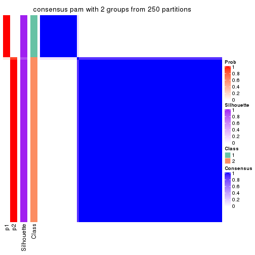
consensus_heatmap(res, k = 3)
consensus_heatmap(res, k = 4)
consensus_heatmap(res, k = 5)
consensus_heatmap(res, k = 6)
Heatmaps for the membership of samples in all partitions to see how consistent they are:
membership_heatmap(res, k = 2)
membership_heatmap(res, k = 3)
membership_heatmap(res, k = 4)
membership_heatmap(res, k = 5)
membership_heatmap(res, k = 6)
As soon as we have had the classes for columns, we can look for signatures which are significantly different between classes which can be candidate marks for certain classes. Following are the heatmaps for signatures.
Signature heatmaps where rows are scaled:
get_signatures(res, k = 2)
get_signatures(res, k = 3)
get_signatures(res, k = 4)
get_signatures(res, k = 5)
get_signatures(res, k = 6)
Signature heatmaps where rows are not scaled:
get_signatures(res, k = 2, scale_rows = FALSE)

get_signatures(res, k = 3, scale_rows = FALSE)
get_signatures(res, k = 4, scale_rows = FALSE)
get_signatures(res, k = 5, scale_rows = FALSE)
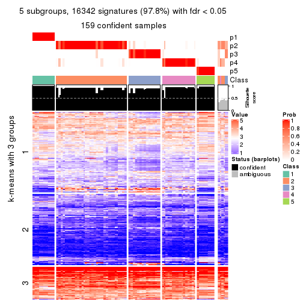
get_signatures(res, k = 6, scale_rows = FALSE)
Compare the overlap of signatures from different k:
compare_signatures(res)
get_signature() returns a data frame invisibly. TO get the list of signatures, the function
call should be assigned to a variable explicitly. In following code, if plot argument is set
to FALSE, no heatmap is plotted while only the differential analysis is performed.
# code only for demonstration
tb = get_signature(res, k = ..., plot = FALSE)
An example of the output of tb is:
#> which_row fdr mean_1 mean_2 scaled_mean_1 scaled_mean_2 km
#> 1 38 0.042760348 8.373488 9.131774 -0.5533452 0.5164555 1
#> 2 40 0.018707592 7.106213 8.469186 -0.6173731 0.5762149 1
#> 3 55 0.019134737 10.221463 11.207825 -0.6159697 0.5749050 1
#> 4 59 0.006059896 5.921854 7.869574 -0.6899429 0.6439467 1
#> 5 60 0.018055526 8.928898 10.211722 -0.6204761 0.5791110 1
#> 6 98 0.009384629 15.714769 14.887706 0.6635654 -0.6193277 2
...
The columns in tb are:
which_row: row indices corresponding to the input matrix.fdr: FDR for the differential test. mean_x: The mean value in group x.scaled_mean_x: The mean value in group x after rows are scaled.km: Row groups if k-means clustering is applied to rows.UMAP plot which shows how samples are separated.
dimension_reduction(res, k = 2, method = "UMAP")
dimension_reduction(res, k = 3, method = "UMAP")
dimension_reduction(res, k = 4, method = "UMAP")
dimension_reduction(res, k = 5, method = "UMAP")
dimension_reduction(res, k = 6, method = "UMAP")
Following heatmap shows how subgroups are split when increasing k:
collect_classes(res)
If matrix rows can be associated to genes, consider to use GO_Enrichment(res,
...) to perform function enrichment for the signature genes.
The object with results only for a single top-value method and a single partition method can be extracted as:
res = res_list["SD", "mclust"]
# you can also extract it by
# res = res_list["SD:mclust"]
A summary of res and all the functions that can be applied to it:
res
#> A 'ConsensusPartition' object with k = 2, 3, 4, 5, 6.
#> On a matrix with 16717 rows and 168 columns.
#> Top rows (1000, 2000, 3000, 4000, 5000) are extracted by 'SD' method.
#> Subgroups are detected by 'mclust' method.
#> Performed in total 1250 partitions by row resampling.
#> Best k for subgroups seems to be 3.
#>
#> Following methods can be applied to this 'ConsensusPartition' object:
#> [1] "cola_report" "collect_classes" "collect_plots"
#> [4] "collect_stats" "colnames" "compare_signatures"
#> [7] "consensus_heatmap" "dimension_reduction" "functional_enrichment"
#> [10] "get_anno_col" "get_anno" "get_classes"
#> [13] "get_consensus" "get_matrix" "get_membership"
#> [16] "get_param" "get_signatures" "get_stats"
#> [19] "is_best_k" "is_stable_k" "membership_heatmap"
#> [22] "ncol" "nrow" "plot_ecdf"
#> [25] "rownames" "select_partition_number" "show"
#> [28] "suggest_best_k" "test_to_known_factors"
collect_plots() function collects all the plots made from res for all k (number of partitions)
into one single page to provide an easy and fast comparison between different k.
collect_plots(res)
The plots are:
k and the heatmap of
predicted classes for each k.k.k.k.All the plots in panels can be made by individual functions and they are plotted later in this section.
select_partition_number() produces several plots showing different
statistics for choosing “optimized” k. There are following statistics:
k;k, the area increased is defined as \(A_k - A_{k-1}\).The detailed explanations of these statistics can be found in the cola vignette.
Generally speaking, lower PAC score, higher mean silhouette score or higher
concordance corresponds to better partition. Rand index and Jaccard index
measure how similar the current partition is compared to partition with k-1.
If they are too similar, we won't accept k is better than k-1.
select_partition_number(res)
The numeric values for all these statistics can be obtained by get_stats().
get_stats(res)
#> k 1-PAC mean_silhouette concordance area_increased Rand Jaccard
#> 2 2 0.519 0.807 0.902 0.4603 0.504 0.504
#> 3 3 0.791 0.889 0.940 0.3605 0.839 0.691
#> 4 4 0.879 0.928 0.962 0.0777 0.954 0.878
#> 5 5 0.805 0.870 0.842 0.0857 0.980 0.940
#> 6 6 0.793 0.824 0.905 0.0955 0.880 0.614
suggest_best_k() suggests the best \(k\) based on these statistics. The rules are as follows:
NA.suggest_best_k(res)
#> [1] 3
Following shows the table of the partitions (You need to click the show/hide
code output link to see it). The membership matrix (columns with name p*)
is inferred by
clue::cl_consensus()
function with the SE method. Basically the value in the membership matrix
represents the probability to belong to a certain group. The finall class
label for an item is determined with the group with highest probability it
belongs to.
In get_classes() function, the entropy is calculated from the membership
matrix and the silhouette score is calculated from the consensus matrix.
cbind(get_classes(res, k = 2), get_membership(res, k = 2))
#> class entropy silhouette p1 p2
#> SRR1768889 1 0.9000 0.605 0.684 0.316
#> SRR1768890 1 0.9000 0.605 0.684 0.316
#> SRR1768891 2 0.0000 0.974 0.000 1.000
#> SRR1768892 2 0.0000 0.974 0.000 1.000
#> SRR1768893 2 0.0000 0.974 0.000 1.000
#> SRR1768894 2 0.0000 0.974 0.000 1.000
#> SRR1768895 2 0.0000 0.974 0.000 1.000
#> SRR1768896 2 0.0000 0.974 0.000 1.000
#> SRR1768821 2 0.0000 0.974 0.000 1.000
#> SRR1768822 2 0.0000 0.974 0.000 1.000
#> SRR1768823 2 0.0000 0.974 0.000 1.000
#> SRR1768824 2 0.0000 0.974 0.000 1.000
#> SRR1768825 2 0.0000 0.974 0.000 1.000
#> SRR1768826 2 0.0000 0.974 0.000 1.000
#> SRR1768827 2 0.0000 0.974 0.000 1.000
#> SRR1768828 2 0.0000 0.974 0.000 1.000
#> SRR1768829 2 0.0000 0.974 0.000 1.000
#> SRR1768830 2 0.0000 0.974 0.000 1.000
#> SRR1768831 1 0.8813 0.575 0.700 0.300
#> SRR1768832 1 0.8813 0.575 0.700 0.300
#> SRR1768833 1 0.9963 0.323 0.536 0.464
#> SRR1768834 1 0.9963 0.323 0.536 0.464
#> SRR1768835 1 0.9963 0.323 0.536 0.464
#> SRR1768836 1 0.9963 0.323 0.536 0.464
#> SRR1768837 1 0.9963 0.323 0.536 0.464
#> SRR1768838 1 0.8813 0.575 0.700 0.300
#> SRR1768839 1 0.8813 0.575 0.700 0.300
#> SRR1768840 1 0.9491 0.485 0.632 0.368
#> SRR1768841 1 0.9491 0.485 0.632 0.368
#> SRR1768842 1 0.9963 0.323 0.536 0.464
#> SRR1768843 1 0.9963 0.323 0.536 0.464
#> SRR1768844 2 0.5737 0.801 0.136 0.864
#> SRR1768845 2 0.5737 0.801 0.136 0.864
#> SRR1768846 1 0.9044 0.600 0.680 0.320
#> SRR1768847 1 0.9044 0.600 0.680 0.320
#> SRR1768848 1 0.9000 0.605 0.684 0.316
#> SRR1768849 1 0.9000 0.605 0.684 0.316
#> SRR1768850 2 0.5737 0.801 0.136 0.864
#> SRR1768851 2 0.5737 0.801 0.136 0.864
#> SRR1768852 2 0.0000 0.974 0.000 1.000
#> SRR1768853 2 0.0000 0.974 0.000 1.000
#> SRR1768854 2 0.0000 0.974 0.000 1.000
#> SRR1768855 1 0.9000 0.605 0.684 0.316
#> SRR1768856 1 0.9000 0.605 0.684 0.316
#> SRR1768857 1 0.9000 0.605 0.684 0.316
#> SRR1768858 2 0.0672 0.968 0.008 0.992
#> SRR1768859 2 0.0672 0.968 0.008 0.992
#> SRR1768860 2 0.0672 0.968 0.008 0.992
#> SRR1768861 2 0.7219 0.688 0.200 0.800
#> SRR1768862 2 0.7219 0.688 0.200 0.800
#> SRR1768863 2 0.0376 0.970 0.004 0.996
#> SRR1768864 2 0.0376 0.970 0.004 0.996
#> SRR1768865 1 0.8207 0.655 0.744 0.256
#> SRR1768866 1 0.8207 0.655 0.744 0.256
#> SRR1768867 2 0.0000 0.974 0.000 1.000
#> SRR1768868 2 0.0000 0.974 0.000 1.000
#> SRR1768869 2 0.0000 0.974 0.000 1.000
#> SRR1768870 2 0.0000 0.974 0.000 1.000
#> SRR1768871 2 0.0672 0.968 0.008 0.992
#> SRR1768872 2 0.0672 0.968 0.008 0.992
#> SRR1768873 2 0.0000 0.974 0.000 1.000
#> SRR1768874 2 0.0000 0.974 0.000 1.000
#> SRR1768875 1 0.9000 0.605 0.684 0.316
#> SRR1768876 1 0.9000 0.605 0.684 0.316
#> SRR1768877 1 0.9000 0.605 0.684 0.316
#> SRR1768878 1 0.9000 0.605 0.684 0.316
#> SRR1768879 1 0.9044 0.600 0.680 0.320
#> SRR1768880 1 0.9044 0.600 0.680 0.320
#> SRR1768881 2 0.7219 0.688 0.200 0.800
#> SRR1768882 2 0.7219 0.688 0.200 0.800
#> SRR1768883 2 0.7299 0.681 0.204 0.796
#> SRR1768884 2 0.7299 0.681 0.204 0.796
#> SRR1768885 1 0.9000 0.605 0.684 0.316
#> SRR1768886 1 0.9000 0.605 0.684 0.316
#> SRR1768887 1 0.9000 0.605 0.684 0.316
#> SRR1768888 1 0.9000 0.605 0.684 0.316
#> SRR1768897 2 0.0000 0.974 0.000 1.000
#> SRR1768898 2 0.0000 0.974 0.000 1.000
#> SRR1768899 2 0.0000 0.974 0.000 1.000
#> SRR1768900 2 0.0000 0.974 0.000 1.000
#> SRR1768901 2 0.0000 0.974 0.000 1.000
#> SRR1768902 2 0.0000 0.974 0.000 1.000
#> SRR1768903 2 0.0000 0.974 0.000 1.000
#> SRR1768904 2 0.0000 0.974 0.000 1.000
#> SRR1768905 2 0.0000 0.974 0.000 1.000
#> SRR1768906 2 0.0000 0.974 0.000 1.000
#> SRR1768907 2 0.0000 0.974 0.000 1.000
#> SRR1768908 2 0.0000 0.974 0.000 1.000
#> SRR1768909 2 0.0000 0.974 0.000 1.000
#> SRR1768910 2 0.0000 0.974 0.000 1.000
#> SRR1768911 2 0.0000 0.974 0.000 1.000
#> SRR1768912 2 0.0000 0.974 0.000 1.000
#> SRR1768913 2 0.0000 0.974 0.000 1.000
#> SRR1768914 2 0.0000 0.974 0.000 1.000
#> SRR1768915 2 0.0000 0.974 0.000 1.000
#> SRR1768916 2 0.0000 0.974 0.000 1.000
#> SRR1768917 2 0.0000 0.974 0.000 1.000
#> SRR1768918 2 0.0000 0.974 0.000 1.000
#> SRR1768919 2 0.0000 0.974 0.000 1.000
#> SRR1768920 2 0.0000 0.974 0.000 1.000
#> SRR1768921 2 0.0000 0.974 0.000 1.000
#> SRR1768922 2 0.0376 0.970 0.004 0.996
#> SRR1768923 2 0.0376 0.970 0.004 0.996
#> SRR1768924 1 0.9963 0.323 0.536 0.464
#> SRR1768925 1 0.9963 0.323 0.536 0.464
#> SRR1768926 1 0.9963 0.323 0.536 0.464
#> SRR1768927 1 0.9963 0.323 0.536 0.464
#> SRR1768928 1 0.9963 0.323 0.536 0.464
#> SRR1768929 1 0.9963 0.323 0.536 0.464
#> SRR1768930 2 0.0000 0.974 0.000 1.000
#> SRR1768931 2 0.0000 0.974 0.000 1.000
#> SRR1768932 2 0.0000 0.974 0.000 1.000
#> SRR1768933 2 0.0000 0.974 0.000 1.000
#> SRR1768934 2 0.0000 0.974 0.000 1.000
#> SRR1768935 2 0.0000 0.974 0.000 1.000
#> SRR1768936 2 0.0000 0.974 0.000 1.000
#> SRR1768937 2 0.0000 0.974 0.000 1.000
#> SRR1768938 2 0.0000 0.974 0.000 1.000
#> SRR1768939 2 0.0000 0.974 0.000 1.000
#> SRR1768940 2 0.0000 0.974 0.000 1.000
#> SRR1768941 2 0.0000 0.974 0.000 1.000
#> SRR1768942 2 0.0000 0.974 0.000 1.000
#> SRR1768943 2 0.0000 0.974 0.000 1.000
#> SRR1768944 2 0.0000 0.974 0.000 1.000
#> SRR1768945 2 0.0000 0.974 0.000 1.000
#> SRR1768946 2 0.0000 0.974 0.000 1.000
#> SRR1768947 2 0.0000 0.974 0.000 1.000
#> SRR1768948 2 0.0000 0.974 0.000 1.000
#> SRR1768949 2 0.0000 0.974 0.000 1.000
#> SRR1768950 2 0.0000 0.974 0.000 1.000
#> SRR1768954 1 0.0376 0.771 0.996 0.004
#> SRR1768955 1 0.0376 0.771 0.996 0.004
#> SRR1768956 1 0.0376 0.771 0.996 0.004
#> SRR1768957 1 0.0376 0.771 0.996 0.004
#> SRR1768958 1 0.0376 0.771 0.996 0.004
#> SRR1768959 1 0.0376 0.771 0.996 0.004
#> SRR1768960 1 0.0376 0.771 0.996 0.004
#> SRR1768961 1 0.0376 0.771 0.996 0.004
#> SRR1768952 2 0.0000 0.974 0.000 1.000
#> SRR1768953 2 0.0000 0.974 0.000 1.000
#> SRR1768962 1 0.0376 0.771 0.996 0.004
#> SRR1768963 1 0.0376 0.771 0.996 0.004
#> SRR1768964 1 0.0376 0.771 0.996 0.004
#> SRR1768965 1 0.0376 0.771 0.996 0.004
#> SRR1768966 1 0.0376 0.771 0.996 0.004
#> SRR1768967 1 0.0376 0.771 0.996 0.004
#> SRR1768968 1 0.0376 0.771 0.996 0.004
#> SRR1768969 1 0.0376 0.771 0.996 0.004
#> SRR1768970 1 0.0376 0.771 0.996 0.004
#> SRR1768971 1 0.0376 0.771 0.996 0.004
#> SRR1768972 1 0.0376 0.771 0.996 0.004
#> SRR1768973 1 0.0376 0.771 0.996 0.004
#> SRR1768974 1 0.0376 0.771 0.996 0.004
#> SRR1768975 1 0.0376 0.771 0.996 0.004
#> SRR1768976 1 0.0376 0.771 0.996 0.004
#> SRR1768977 1 0.0376 0.771 0.996 0.004
#> SRR1768978 1 0.0376 0.771 0.996 0.004
#> SRR1768979 1 0.0376 0.771 0.996 0.004
#> SRR1768980 1 0.0376 0.771 0.996 0.004
#> SRR1768981 1 0.0376 0.771 0.996 0.004
#> SRR1768982 1 0.0376 0.771 0.996 0.004
#> SRR1768983 1 0.0376 0.771 0.996 0.004
#> SRR1768984 2 0.0000 0.974 0.000 1.000
#> SRR1768985 2 0.0000 0.974 0.000 1.000
#> SRR1768986 1 0.0376 0.771 0.996 0.004
#> SRR1768987 1 0.0376 0.771 0.996 0.004
#> SRR1768988 1 0.0376 0.771 0.996 0.004
#> SRR1768989 1 0.0376 0.771 0.996 0.004
cbind(get_classes(res, k = 3), get_membership(res, k = 3))
#> class entropy silhouette p1 p2 p3
#> SRR1768889 3 0.0424 0.947 0.000 0.008 0.992
#> SRR1768890 3 0.0424 0.947 0.000 0.008 0.992
#> SRR1768891 2 0.0000 0.963 0.000 1.000 0.000
#> SRR1768892 2 0.0000 0.963 0.000 1.000 0.000
#> SRR1768893 2 0.0000 0.963 0.000 1.000 0.000
#> SRR1768894 2 0.0000 0.963 0.000 1.000 0.000
#> SRR1768895 2 0.0000 0.963 0.000 1.000 0.000
#> SRR1768896 2 0.0000 0.963 0.000 1.000 0.000
#> SRR1768821 2 0.0000 0.963 0.000 1.000 0.000
#> SRR1768822 2 0.0000 0.963 0.000 1.000 0.000
#> SRR1768823 2 0.0000 0.963 0.000 1.000 0.000
#> SRR1768824 2 0.0000 0.963 0.000 1.000 0.000
#> SRR1768825 2 0.0000 0.963 0.000 1.000 0.000
#> SRR1768826 2 0.0000 0.963 0.000 1.000 0.000
#> SRR1768827 2 0.0000 0.963 0.000 1.000 0.000
#> SRR1768828 2 0.0000 0.963 0.000 1.000 0.000
#> SRR1768829 2 0.0000 0.963 0.000 1.000 0.000
#> SRR1768830 2 0.0000 0.963 0.000 1.000 0.000
#> SRR1768831 1 0.5882 0.593 0.652 0.000 0.348
#> SRR1768832 1 0.5882 0.593 0.652 0.000 0.348
#> SRR1768833 1 0.6911 0.748 0.728 0.092 0.180
#> SRR1768834 1 0.6911 0.748 0.728 0.092 0.180
#> SRR1768835 1 0.6911 0.748 0.728 0.092 0.180
#> SRR1768836 1 0.6911 0.748 0.728 0.092 0.180
#> SRR1768837 1 0.6911 0.748 0.728 0.092 0.180
#> SRR1768838 1 0.5882 0.593 0.652 0.000 0.348
#> SRR1768839 1 0.5882 0.593 0.652 0.000 0.348
#> SRR1768840 1 0.5882 0.593 0.652 0.000 0.348
#> SRR1768841 1 0.5882 0.593 0.652 0.000 0.348
#> SRR1768842 1 0.6986 0.744 0.724 0.096 0.180
#> SRR1768843 1 0.6986 0.744 0.724 0.096 0.180
#> SRR1768844 3 0.0424 0.947 0.000 0.008 0.992
#> SRR1768845 3 0.0424 0.947 0.000 0.008 0.992
#> SRR1768846 3 0.0424 0.947 0.000 0.008 0.992
#> SRR1768847 3 0.0424 0.947 0.000 0.008 0.992
#> SRR1768848 3 0.0424 0.947 0.000 0.008 0.992
#> SRR1768849 3 0.0424 0.947 0.000 0.008 0.992
#> SRR1768850 3 0.0424 0.947 0.000 0.008 0.992
#> SRR1768851 3 0.0424 0.947 0.000 0.008 0.992
#> SRR1768852 2 0.1832 0.938 0.008 0.956 0.036
#> SRR1768853 2 0.1832 0.938 0.008 0.956 0.036
#> SRR1768854 2 0.3454 0.876 0.008 0.888 0.104
#> SRR1768855 3 0.0424 0.947 0.000 0.008 0.992
#> SRR1768856 3 0.0424 0.947 0.000 0.008 0.992
#> SRR1768857 3 0.0424 0.947 0.000 0.008 0.992
#> SRR1768858 3 0.3551 0.833 0.000 0.132 0.868
#> SRR1768859 3 0.3551 0.833 0.000 0.132 0.868
#> SRR1768860 3 0.3482 0.838 0.000 0.128 0.872
#> SRR1768861 3 0.4062 0.804 0.000 0.164 0.836
#> SRR1768862 3 0.4062 0.804 0.000 0.164 0.836
#> SRR1768863 2 0.2165 0.909 0.000 0.936 0.064
#> SRR1768864 2 0.2165 0.909 0.000 0.936 0.064
#> SRR1768865 3 0.3879 0.783 0.152 0.000 0.848
#> SRR1768866 3 0.3879 0.783 0.152 0.000 0.848
#> SRR1768867 2 0.0000 0.963 0.000 1.000 0.000
#> SRR1768868 2 0.0000 0.963 0.000 1.000 0.000
#> SRR1768869 2 0.0848 0.953 0.008 0.984 0.008
#> SRR1768870 2 0.0848 0.953 0.008 0.984 0.008
#> SRR1768871 2 0.2902 0.903 0.064 0.920 0.016
#> SRR1768872 2 0.2902 0.903 0.064 0.920 0.016
#> SRR1768873 2 0.0848 0.953 0.008 0.984 0.008
#> SRR1768874 2 0.0848 0.953 0.008 0.984 0.008
#> SRR1768875 3 0.0424 0.947 0.000 0.008 0.992
#> SRR1768876 3 0.0424 0.947 0.000 0.008 0.992
#> SRR1768877 3 0.0424 0.947 0.000 0.008 0.992
#> SRR1768878 3 0.0424 0.947 0.000 0.008 0.992
#> SRR1768879 3 0.4636 0.834 0.036 0.116 0.848
#> SRR1768880 3 0.4712 0.837 0.044 0.108 0.848
#> SRR1768881 2 0.4558 0.839 0.044 0.856 0.100
#> SRR1768882 2 0.4558 0.839 0.044 0.856 0.100
#> SRR1768883 3 0.0424 0.947 0.000 0.008 0.992
#> SRR1768884 3 0.0424 0.947 0.000 0.008 0.992
#> SRR1768885 3 0.0424 0.947 0.000 0.008 0.992
#> SRR1768886 3 0.0424 0.947 0.000 0.008 0.992
#> SRR1768887 3 0.0424 0.947 0.000 0.008 0.992
#> SRR1768888 3 0.0424 0.947 0.000 0.008 0.992
#> SRR1768897 2 0.0000 0.963 0.000 1.000 0.000
#> SRR1768898 2 0.0000 0.963 0.000 1.000 0.000
#> SRR1768899 2 0.0000 0.963 0.000 1.000 0.000
#> SRR1768900 2 0.0000 0.963 0.000 1.000 0.000
#> SRR1768901 2 0.3752 0.827 0.000 0.856 0.144
#> SRR1768902 2 0.3686 0.832 0.000 0.860 0.140
#> SRR1768903 2 0.3816 0.823 0.000 0.852 0.148
#> SRR1768904 2 0.0000 0.963 0.000 1.000 0.000
#> SRR1768905 2 0.0000 0.963 0.000 1.000 0.000
#> SRR1768906 2 0.0000 0.963 0.000 1.000 0.000
#> SRR1768907 2 0.0000 0.963 0.000 1.000 0.000
#> SRR1768908 2 0.0000 0.963 0.000 1.000 0.000
#> SRR1768909 2 0.0000 0.963 0.000 1.000 0.000
#> SRR1768910 2 0.0000 0.963 0.000 1.000 0.000
#> SRR1768911 2 0.0000 0.963 0.000 1.000 0.000
#> SRR1768912 2 0.0000 0.963 0.000 1.000 0.000
#> SRR1768913 2 0.0000 0.963 0.000 1.000 0.000
#> SRR1768914 2 0.0000 0.963 0.000 1.000 0.000
#> SRR1768915 2 0.0000 0.963 0.000 1.000 0.000
#> SRR1768916 2 0.0424 0.957 0.000 0.992 0.008
#> SRR1768917 2 0.0000 0.963 0.000 1.000 0.000
#> SRR1768918 2 0.0000 0.963 0.000 1.000 0.000
#> SRR1768919 2 0.0000 0.963 0.000 1.000 0.000
#> SRR1768920 2 0.0000 0.963 0.000 1.000 0.000
#> SRR1768921 2 0.0000 0.963 0.000 1.000 0.000
#> SRR1768922 2 0.5058 0.678 0.000 0.756 0.244
#> SRR1768923 2 0.5058 0.678 0.000 0.756 0.244
#> SRR1768924 1 0.6911 0.748 0.728 0.092 0.180
#> SRR1768925 1 0.6911 0.748 0.728 0.092 0.180
#> SRR1768926 1 0.6911 0.748 0.728 0.092 0.180
#> SRR1768927 1 0.6911 0.748 0.728 0.092 0.180
#> SRR1768928 1 0.6911 0.748 0.728 0.092 0.180
#> SRR1768929 1 0.6911 0.748 0.728 0.092 0.180
#> SRR1768930 2 0.0000 0.963 0.000 1.000 0.000
#> SRR1768931 2 0.0000 0.963 0.000 1.000 0.000
#> SRR1768932 2 0.0000 0.963 0.000 1.000 0.000
#> SRR1768933 2 0.0000 0.963 0.000 1.000 0.000
#> SRR1768934 2 0.0000 0.963 0.000 1.000 0.000
#> SRR1768935 2 0.0000 0.963 0.000 1.000 0.000
#> SRR1768936 2 0.0000 0.963 0.000 1.000 0.000
#> SRR1768937 2 0.0000 0.963 0.000 1.000 0.000
#> SRR1768938 2 0.0000 0.963 0.000 1.000 0.000
#> SRR1768939 2 0.0000 0.963 0.000 1.000 0.000
#> SRR1768940 2 0.0000 0.963 0.000 1.000 0.000
#> SRR1768941 2 0.0000 0.963 0.000 1.000 0.000
#> SRR1768942 2 0.0000 0.963 0.000 1.000 0.000
#> SRR1768943 2 0.0000 0.963 0.000 1.000 0.000
#> SRR1768944 2 0.0000 0.963 0.000 1.000 0.000
#> SRR1768945 2 0.0000 0.963 0.000 1.000 0.000
#> SRR1768946 2 0.0000 0.963 0.000 1.000 0.000
#> SRR1768947 2 0.7065 0.424 0.032 0.616 0.352
#> SRR1768948 2 0.7065 0.424 0.032 0.616 0.352
#> SRR1768949 2 0.5905 0.478 0.000 0.648 0.352
#> SRR1768950 2 0.0424 0.957 0.000 0.992 0.008
#> SRR1768954 1 0.0000 0.888 1.000 0.000 0.000
#> SRR1768955 1 0.0000 0.888 1.000 0.000 0.000
#> SRR1768956 1 0.0000 0.888 1.000 0.000 0.000
#> SRR1768957 1 0.0000 0.888 1.000 0.000 0.000
#> SRR1768958 1 0.0000 0.888 1.000 0.000 0.000
#> SRR1768959 1 0.0000 0.888 1.000 0.000 0.000
#> SRR1768960 1 0.0000 0.888 1.000 0.000 0.000
#> SRR1768961 1 0.0000 0.888 1.000 0.000 0.000
#> SRR1768952 2 0.0000 0.963 0.000 1.000 0.000
#> SRR1768953 2 0.0000 0.963 0.000 1.000 0.000
#> SRR1768962 1 0.0000 0.888 1.000 0.000 0.000
#> SRR1768963 1 0.0000 0.888 1.000 0.000 0.000
#> SRR1768964 1 0.0000 0.888 1.000 0.000 0.000
#> SRR1768965 1 0.0000 0.888 1.000 0.000 0.000
#> SRR1768966 1 0.0000 0.888 1.000 0.000 0.000
#> SRR1768967 1 0.0000 0.888 1.000 0.000 0.000
#> SRR1768968 1 0.0000 0.888 1.000 0.000 0.000
#> SRR1768969 1 0.0000 0.888 1.000 0.000 0.000
#> SRR1768970 1 0.0000 0.888 1.000 0.000 0.000
#> SRR1768971 1 0.0000 0.888 1.000 0.000 0.000
#> SRR1768972 1 0.0000 0.888 1.000 0.000 0.000
#> SRR1768973 1 0.0000 0.888 1.000 0.000 0.000
#> SRR1768974 1 0.0000 0.888 1.000 0.000 0.000
#> SRR1768975 1 0.0000 0.888 1.000 0.000 0.000
#> SRR1768976 1 0.0000 0.888 1.000 0.000 0.000
#> SRR1768977 1 0.0000 0.888 1.000 0.000 0.000
#> SRR1768978 1 0.0000 0.888 1.000 0.000 0.000
#> SRR1768979 1 0.0000 0.888 1.000 0.000 0.000
#> SRR1768980 1 0.0000 0.888 1.000 0.000 0.000
#> SRR1768981 1 0.0000 0.888 1.000 0.000 0.000
#> SRR1768982 1 0.0000 0.888 1.000 0.000 0.000
#> SRR1768983 1 0.0000 0.888 1.000 0.000 0.000
#> SRR1768984 2 0.0848 0.953 0.008 0.984 0.008
#> SRR1768985 2 0.0848 0.953 0.008 0.984 0.008
#> SRR1768986 1 0.0000 0.888 1.000 0.000 0.000
#> SRR1768987 1 0.0000 0.888 1.000 0.000 0.000
#> SRR1768988 1 0.0000 0.888 1.000 0.000 0.000
#> SRR1768989 1 0.0000 0.888 1.000 0.000 0.000
cbind(get_classes(res, k = 4), get_membership(res, k = 4))
#> class entropy silhouette p1 p2 p3 p4
#> SRR1768889 3 0.0000 0.947 0.000 0.000 1.000 0.000
#> SRR1768890 3 0.0000 0.947 0.000 0.000 1.000 0.000
#> SRR1768891 2 0.0336 0.957 0.008 0.992 0.000 0.000
#> SRR1768892 2 0.0336 0.957 0.008 0.992 0.000 0.000
#> SRR1768893 2 0.0336 0.957 0.008 0.992 0.000 0.000
#> SRR1768894 2 0.0188 0.959 0.004 0.996 0.000 0.000
#> SRR1768895 2 0.0000 0.962 0.000 1.000 0.000 0.000
#> SRR1768896 2 0.0000 0.962 0.000 1.000 0.000 0.000
#> SRR1768821 2 0.0000 0.962 0.000 1.000 0.000 0.000
#> SRR1768822 2 0.0000 0.962 0.000 1.000 0.000 0.000
#> SRR1768823 2 0.0000 0.962 0.000 1.000 0.000 0.000
#> SRR1768824 2 0.0000 0.962 0.000 1.000 0.000 0.000
#> SRR1768825 2 0.0000 0.962 0.000 1.000 0.000 0.000
#> SRR1768826 2 0.0000 0.962 0.000 1.000 0.000 0.000
#> SRR1768827 2 0.0000 0.962 0.000 1.000 0.000 0.000
#> SRR1768828 2 0.0000 0.962 0.000 1.000 0.000 0.000
#> SRR1768829 2 0.0000 0.962 0.000 1.000 0.000 0.000
#> SRR1768830 2 0.0000 0.962 0.000 1.000 0.000 0.000
#> SRR1768831 4 0.0188 0.990 0.000 0.000 0.004 0.996
#> SRR1768832 4 0.0188 0.990 0.000 0.000 0.004 0.996
#> SRR1768833 4 0.0376 0.993 0.004 0.004 0.000 0.992
#> SRR1768834 4 0.0376 0.993 0.004 0.004 0.000 0.992
#> SRR1768835 4 0.0376 0.993 0.004 0.004 0.000 0.992
#> SRR1768836 4 0.0376 0.993 0.004 0.004 0.000 0.992
#> SRR1768837 4 0.0376 0.993 0.004 0.004 0.000 0.992
#> SRR1768838 4 0.0188 0.990 0.000 0.000 0.004 0.996
#> SRR1768839 4 0.0188 0.990 0.000 0.000 0.004 0.996
#> SRR1768840 4 0.0188 0.990 0.000 0.000 0.004 0.996
#> SRR1768841 4 0.0188 0.990 0.000 0.000 0.004 0.996
#> SRR1768842 4 0.1109 0.962 0.004 0.028 0.000 0.968
#> SRR1768843 4 0.1109 0.962 0.004 0.028 0.000 0.968
#> SRR1768844 3 0.0524 0.945 0.000 0.008 0.988 0.004
#> SRR1768845 3 0.0524 0.945 0.000 0.008 0.988 0.004
#> SRR1768846 3 0.0000 0.947 0.000 0.000 1.000 0.000
#> SRR1768847 3 0.0000 0.947 0.000 0.000 1.000 0.000
#> SRR1768848 3 0.0000 0.947 0.000 0.000 1.000 0.000
#> SRR1768849 3 0.0000 0.947 0.000 0.000 1.000 0.000
#> SRR1768850 3 0.0336 0.946 0.000 0.008 0.992 0.000
#> SRR1768851 3 0.0336 0.946 0.000 0.008 0.992 0.000
#> SRR1768852 2 0.0000 0.962 0.000 1.000 0.000 0.000
#> SRR1768853 2 0.0000 0.962 0.000 1.000 0.000 0.000
#> SRR1768854 2 0.1474 0.919 0.000 0.948 0.052 0.000
#> SRR1768855 3 0.0000 0.947 0.000 0.000 1.000 0.000
#> SRR1768856 3 0.0000 0.947 0.000 0.000 1.000 0.000
#> SRR1768857 3 0.0000 0.947 0.000 0.000 1.000 0.000
#> SRR1768858 3 0.1489 0.918 0.000 0.044 0.952 0.004
#> SRR1768859 3 0.1489 0.918 0.000 0.044 0.952 0.004
#> SRR1768860 3 0.1489 0.918 0.000 0.044 0.952 0.004
#> SRR1768861 3 0.3074 0.810 0.000 0.152 0.848 0.000
#> SRR1768862 3 0.3074 0.810 0.000 0.152 0.848 0.000
#> SRR1768863 2 0.3157 0.817 0.000 0.852 0.144 0.004
#> SRR1768864 2 0.3157 0.817 0.000 0.852 0.144 0.004
#> SRR1768865 3 0.3208 0.813 0.000 0.148 0.848 0.004
#> SRR1768866 3 0.3208 0.813 0.000 0.148 0.848 0.004
#> SRR1768867 2 0.0000 0.962 0.000 1.000 0.000 0.000
#> SRR1768868 2 0.0000 0.962 0.000 1.000 0.000 0.000
#> SRR1768869 2 0.0000 0.962 0.000 1.000 0.000 0.000
#> SRR1768870 2 0.0000 0.962 0.000 1.000 0.000 0.000
#> SRR1768871 2 0.0336 0.957 0.008 0.992 0.000 0.000
#> SRR1768872 2 0.0336 0.957 0.008 0.992 0.000 0.000
#> SRR1768873 2 0.0000 0.962 0.000 1.000 0.000 0.000
#> SRR1768874 2 0.0000 0.962 0.000 1.000 0.000 0.000
#> SRR1768875 3 0.0000 0.947 0.000 0.000 1.000 0.000
#> SRR1768876 3 0.0000 0.947 0.000 0.000 1.000 0.000
#> SRR1768877 3 0.0000 0.947 0.000 0.000 1.000 0.000
#> SRR1768878 3 0.0000 0.947 0.000 0.000 1.000 0.000
#> SRR1768879 3 0.3257 0.809 0.000 0.152 0.844 0.004
#> SRR1768880 3 0.3257 0.809 0.000 0.152 0.844 0.004
#> SRR1768881 2 0.3494 0.780 0.000 0.824 0.172 0.004
#> SRR1768882 2 0.3494 0.780 0.000 0.824 0.172 0.004
#> SRR1768883 3 0.0336 0.946 0.000 0.008 0.992 0.000
#> SRR1768884 3 0.0336 0.946 0.000 0.008 0.992 0.000
#> SRR1768885 3 0.0000 0.947 0.000 0.000 1.000 0.000
#> SRR1768886 3 0.0000 0.947 0.000 0.000 1.000 0.000
#> SRR1768887 3 0.0000 0.947 0.000 0.000 1.000 0.000
#> SRR1768888 3 0.0000 0.947 0.000 0.000 1.000 0.000
#> SRR1768897 2 0.0000 0.962 0.000 1.000 0.000 0.000
#> SRR1768898 2 0.0000 0.962 0.000 1.000 0.000 0.000
#> SRR1768899 2 0.0000 0.962 0.000 1.000 0.000 0.000
#> SRR1768900 2 0.0000 0.962 0.000 1.000 0.000 0.000
#> SRR1768901 2 0.3975 0.689 0.000 0.760 0.240 0.000
#> SRR1768902 2 0.3764 0.727 0.000 0.784 0.216 0.000
#> SRR1768903 2 0.4072 0.669 0.000 0.748 0.252 0.000
#> SRR1768904 2 0.0000 0.962 0.000 1.000 0.000 0.000
#> SRR1768905 2 0.0000 0.962 0.000 1.000 0.000 0.000
#> SRR1768906 2 0.0000 0.962 0.000 1.000 0.000 0.000
#> SRR1768907 2 0.0000 0.962 0.000 1.000 0.000 0.000
#> SRR1768908 2 0.0000 0.962 0.000 1.000 0.000 0.000
#> SRR1768909 2 0.0000 0.962 0.000 1.000 0.000 0.000
#> SRR1768910 2 0.0000 0.962 0.000 1.000 0.000 0.000
#> SRR1768911 2 0.0000 0.962 0.000 1.000 0.000 0.000
#> SRR1768912 2 0.0000 0.962 0.000 1.000 0.000 0.000
#> SRR1768913 2 0.0000 0.962 0.000 1.000 0.000 0.000
#> SRR1768914 2 0.0000 0.962 0.000 1.000 0.000 0.000
#> SRR1768915 2 0.0000 0.962 0.000 1.000 0.000 0.000
#> SRR1768916 2 0.0000 0.962 0.000 1.000 0.000 0.000
#> SRR1768917 2 0.0000 0.962 0.000 1.000 0.000 0.000
#> SRR1768918 2 0.0000 0.962 0.000 1.000 0.000 0.000
#> SRR1768919 2 0.0000 0.962 0.000 1.000 0.000 0.000
#> SRR1768920 2 0.0000 0.962 0.000 1.000 0.000 0.000
#> SRR1768921 2 0.0000 0.962 0.000 1.000 0.000 0.000
#> SRR1768922 2 0.3486 0.767 0.000 0.812 0.188 0.000
#> SRR1768923 2 0.3486 0.767 0.000 0.812 0.188 0.000
#> SRR1768924 4 0.0376 0.993 0.004 0.004 0.000 0.992
#> SRR1768925 4 0.0376 0.993 0.004 0.004 0.000 0.992
#> SRR1768926 4 0.0376 0.993 0.004 0.004 0.000 0.992
#> SRR1768927 4 0.0376 0.993 0.004 0.004 0.000 0.992
#> SRR1768928 4 0.0376 0.993 0.004 0.004 0.000 0.992
#> SRR1768929 4 0.0376 0.993 0.004 0.004 0.000 0.992
#> SRR1768930 2 0.0000 0.962 0.000 1.000 0.000 0.000
#> SRR1768931 2 0.0000 0.962 0.000 1.000 0.000 0.000
#> SRR1768932 2 0.0000 0.962 0.000 1.000 0.000 0.000
#> SRR1768933 2 0.0000 0.962 0.000 1.000 0.000 0.000
#> SRR1768934 2 0.0000 0.962 0.000 1.000 0.000 0.000
#> SRR1768935 2 0.0000 0.962 0.000 1.000 0.000 0.000
#> SRR1768936 2 0.0000 0.962 0.000 1.000 0.000 0.000
#> SRR1768937 2 0.0000 0.962 0.000 1.000 0.000 0.000
#> SRR1768938 2 0.0000 0.962 0.000 1.000 0.000 0.000
#> SRR1768939 2 0.0000 0.962 0.000 1.000 0.000 0.000
#> SRR1768940 2 0.0000 0.962 0.000 1.000 0.000 0.000
#> SRR1768941 2 0.0707 0.948 0.020 0.980 0.000 0.000
#> SRR1768942 2 0.0707 0.948 0.020 0.980 0.000 0.000
#> SRR1768943 2 0.0188 0.959 0.004 0.996 0.000 0.000
#> SRR1768944 2 0.0188 0.959 0.004 0.996 0.000 0.000
#> SRR1768945 2 0.0000 0.962 0.000 1.000 0.000 0.000
#> SRR1768946 2 0.0000 0.962 0.000 1.000 0.000 0.000
#> SRR1768947 2 0.4661 0.496 0.000 0.652 0.348 0.000
#> SRR1768948 2 0.4661 0.496 0.000 0.652 0.348 0.000
#> SRR1768949 2 0.4837 0.491 0.004 0.648 0.348 0.000
#> SRR1768950 2 0.0000 0.962 0.000 1.000 0.000 0.000
#> SRR1768954 1 0.2973 0.900 0.856 0.000 0.000 0.144
#> SRR1768955 1 0.2973 0.900 0.856 0.000 0.000 0.144
#> SRR1768956 1 0.2973 0.900 0.856 0.000 0.000 0.144
#> SRR1768957 1 0.2973 0.900 0.856 0.000 0.000 0.144
#> SRR1768958 1 0.2973 0.900 0.856 0.000 0.000 0.144
#> SRR1768959 1 0.2973 0.900 0.856 0.000 0.000 0.144
#> SRR1768960 1 0.2973 0.900 0.856 0.000 0.000 0.144
#> SRR1768961 1 0.2973 0.900 0.856 0.000 0.000 0.144
#> SRR1768952 2 0.0000 0.962 0.000 1.000 0.000 0.000
#> SRR1768953 2 0.0000 0.962 0.000 1.000 0.000 0.000
#> SRR1768962 1 0.0000 0.933 1.000 0.000 0.000 0.000
#> SRR1768963 1 0.0000 0.933 1.000 0.000 0.000 0.000
#> SRR1768964 1 0.0000 0.933 1.000 0.000 0.000 0.000
#> SRR1768965 1 0.0000 0.933 1.000 0.000 0.000 0.000
#> SRR1768966 1 0.0000 0.933 1.000 0.000 0.000 0.000
#> SRR1768967 1 0.0000 0.933 1.000 0.000 0.000 0.000
#> SRR1768968 1 0.0000 0.933 1.000 0.000 0.000 0.000
#> SRR1768969 1 0.0000 0.933 1.000 0.000 0.000 0.000
#> SRR1768970 1 0.0336 0.930 0.992 0.008 0.000 0.000
#> SRR1768971 1 0.0336 0.930 0.992 0.008 0.000 0.000
#> SRR1768972 1 0.2973 0.900 0.856 0.000 0.000 0.144
#> SRR1768973 1 0.2973 0.900 0.856 0.000 0.000 0.144
#> SRR1768974 1 0.2973 0.900 0.856 0.000 0.000 0.144
#> SRR1768975 1 0.2973 0.900 0.856 0.000 0.000 0.144
#> SRR1768976 1 0.2973 0.900 0.856 0.000 0.000 0.144
#> SRR1768977 1 0.2973 0.900 0.856 0.000 0.000 0.144
#> SRR1768978 1 0.0000 0.933 1.000 0.000 0.000 0.000
#> SRR1768979 1 0.0000 0.933 1.000 0.000 0.000 0.000
#> SRR1768980 1 0.0000 0.933 1.000 0.000 0.000 0.000
#> SRR1768981 1 0.0000 0.933 1.000 0.000 0.000 0.000
#> SRR1768982 1 0.0000 0.933 1.000 0.000 0.000 0.000
#> SRR1768983 1 0.0000 0.933 1.000 0.000 0.000 0.000
#> SRR1768984 2 0.0000 0.962 0.000 1.000 0.000 0.000
#> SRR1768985 2 0.0000 0.962 0.000 1.000 0.000 0.000
#> SRR1768986 1 0.0336 0.930 0.992 0.008 0.000 0.000
#> SRR1768987 1 0.0336 0.930 0.992 0.008 0.000 0.000
#> SRR1768988 1 0.0336 0.930 0.992 0.008 0.000 0.000
#> SRR1768989 1 0.0336 0.930 0.992 0.008 0.000 0.000
cbind(get_classes(res, k = 5), get_membership(res, k = 5))
#> class entropy silhouette p1 p2 p3 p4 p5
#> SRR1768889 3 0.0000 0.949 0.000 0.000 1.000 0.000 0.000
#> SRR1768890 3 0.0000 0.949 0.000 0.000 1.000 0.000 0.000
#> SRR1768891 4 0.2011 0.807 0.000 0.088 0.000 0.908 0.004
#> SRR1768892 4 0.2011 0.807 0.000 0.088 0.000 0.908 0.004
#> SRR1768893 4 0.0566 0.802 0.000 0.012 0.000 0.984 0.004
#> SRR1768894 4 0.0566 0.802 0.000 0.012 0.000 0.984 0.004
#> SRR1768895 4 0.4045 0.791 0.000 0.356 0.000 0.644 0.000
#> SRR1768896 4 0.4045 0.791 0.000 0.356 0.000 0.644 0.000
#> SRR1768821 4 0.4045 0.791 0.000 0.356 0.000 0.644 0.000
#> SRR1768822 4 0.4060 0.790 0.000 0.360 0.000 0.640 0.000
#> SRR1768823 4 0.4101 0.783 0.000 0.372 0.000 0.628 0.000
#> SRR1768824 4 0.4101 0.783 0.000 0.372 0.000 0.628 0.000
#> SRR1768825 4 0.4045 0.791 0.000 0.356 0.000 0.644 0.000
#> SRR1768826 4 0.4045 0.791 0.000 0.356 0.000 0.644 0.000
#> SRR1768827 4 0.4114 0.783 0.000 0.376 0.000 0.624 0.000
#> SRR1768828 4 0.4114 0.783 0.000 0.376 0.000 0.624 0.000
#> SRR1768829 4 0.3796 0.803 0.000 0.300 0.000 0.700 0.000
#> SRR1768830 4 0.3796 0.803 0.000 0.300 0.000 0.700 0.000
#> SRR1768831 5 0.0404 0.988 0.000 0.012 0.000 0.000 0.988
#> SRR1768832 5 0.0404 0.988 0.000 0.012 0.000 0.000 0.988
#> SRR1768833 5 0.0000 0.995 0.000 0.000 0.000 0.000 1.000
#> SRR1768834 5 0.0000 0.995 0.000 0.000 0.000 0.000 1.000
#> SRR1768835 5 0.0000 0.995 0.000 0.000 0.000 0.000 1.000
#> SRR1768836 5 0.0000 0.995 0.000 0.000 0.000 0.000 1.000
#> SRR1768837 5 0.0000 0.995 0.000 0.000 0.000 0.000 1.000
#> SRR1768838 5 0.0404 0.988 0.000 0.012 0.000 0.000 0.988
#> SRR1768839 5 0.0404 0.988 0.000 0.012 0.000 0.000 0.988
#> SRR1768840 5 0.0404 0.988 0.000 0.012 0.000 0.000 0.988
#> SRR1768841 5 0.0404 0.988 0.000 0.012 0.000 0.000 0.988
#> SRR1768842 5 0.0000 0.995 0.000 0.000 0.000 0.000 1.000
#> SRR1768843 5 0.0000 0.995 0.000 0.000 0.000 0.000 1.000
#> SRR1768844 3 0.0579 0.945 0.000 0.000 0.984 0.008 0.008
#> SRR1768845 3 0.0579 0.945 0.000 0.000 0.984 0.008 0.008
#> SRR1768846 3 0.0000 0.949 0.000 0.000 1.000 0.000 0.000
#> SRR1768847 3 0.0000 0.949 0.000 0.000 1.000 0.000 0.000
#> SRR1768848 3 0.0000 0.949 0.000 0.000 1.000 0.000 0.000
#> SRR1768849 3 0.0000 0.949 0.000 0.000 1.000 0.000 0.000
#> SRR1768850 3 0.0579 0.945 0.000 0.000 0.984 0.008 0.008
#> SRR1768851 3 0.0579 0.945 0.000 0.000 0.984 0.008 0.008
#> SRR1768852 4 0.2696 0.789 0.000 0.024 0.072 0.892 0.012
#> SRR1768853 4 0.2696 0.789 0.000 0.024 0.072 0.892 0.012
#> SRR1768854 4 0.2878 0.781 0.000 0.024 0.084 0.880 0.012
#> SRR1768855 3 0.0000 0.949 0.000 0.000 1.000 0.000 0.000
#> SRR1768856 3 0.0000 0.949 0.000 0.000 1.000 0.000 0.000
#> SRR1768857 3 0.0000 0.949 0.000 0.000 1.000 0.000 0.000
#> SRR1768858 3 0.1408 0.915 0.000 0.000 0.948 0.044 0.008
#> SRR1768859 3 0.1408 0.915 0.000 0.000 0.948 0.044 0.008
#> SRR1768860 3 0.1408 0.915 0.000 0.000 0.948 0.044 0.008
#> SRR1768861 3 0.3143 0.768 0.000 0.000 0.796 0.204 0.000
#> SRR1768862 3 0.3143 0.768 0.000 0.000 0.796 0.204 0.000
#> SRR1768863 4 0.3234 0.689 0.000 0.012 0.144 0.836 0.008
#> SRR1768864 4 0.3234 0.689 0.000 0.012 0.144 0.836 0.008
#> SRR1768865 3 0.4054 0.810 0.000 0.004 0.800 0.080 0.116
#> SRR1768866 3 0.4054 0.810 0.000 0.004 0.800 0.080 0.116
#> SRR1768867 4 0.4088 0.783 0.000 0.368 0.000 0.632 0.000
#> SRR1768868 4 0.4088 0.783 0.000 0.368 0.000 0.632 0.000
#> SRR1768869 4 0.2515 0.797 0.000 0.032 0.040 0.908 0.020
#> SRR1768870 4 0.2515 0.797 0.000 0.032 0.040 0.908 0.020
#> SRR1768871 4 0.1686 0.798 0.000 0.028 0.008 0.944 0.020
#> SRR1768872 4 0.1686 0.798 0.000 0.028 0.008 0.944 0.020
#> SRR1768873 4 0.4090 0.808 0.000 0.268 0.000 0.716 0.016
#> SRR1768874 4 0.4090 0.808 0.000 0.268 0.000 0.716 0.016
#> SRR1768875 3 0.0000 0.949 0.000 0.000 1.000 0.000 0.000
#> SRR1768876 3 0.0000 0.949 0.000 0.000 1.000 0.000 0.000
#> SRR1768877 3 0.0000 0.949 0.000 0.000 1.000 0.000 0.000
#> SRR1768878 3 0.0000 0.949 0.000 0.000 1.000 0.000 0.000
#> SRR1768879 3 0.4205 0.802 0.000 0.004 0.788 0.084 0.124
#> SRR1768880 3 0.4205 0.802 0.000 0.004 0.788 0.084 0.124
#> SRR1768881 4 0.4981 0.623 0.000 0.068 0.220 0.704 0.008
#> SRR1768882 4 0.4981 0.623 0.000 0.068 0.220 0.704 0.008
#> SRR1768883 3 0.0290 0.947 0.000 0.000 0.992 0.008 0.000
#> SRR1768884 3 0.0290 0.947 0.000 0.000 0.992 0.008 0.000
#> SRR1768885 3 0.0000 0.949 0.000 0.000 1.000 0.000 0.000
#> SRR1768886 3 0.0000 0.949 0.000 0.000 1.000 0.000 0.000
#> SRR1768887 3 0.0000 0.949 0.000 0.000 1.000 0.000 0.000
#> SRR1768888 3 0.0000 0.949 0.000 0.000 1.000 0.000 0.000
#> SRR1768897 4 0.0566 0.800 0.000 0.004 0.000 0.984 0.012
#> SRR1768898 4 0.0566 0.800 0.000 0.004 0.000 0.984 0.012
#> SRR1768899 4 0.1364 0.801 0.000 0.000 0.036 0.952 0.012
#> SRR1768900 4 0.1364 0.801 0.000 0.000 0.036 0.952 0.012
#> SRR1768901 4 0.3634 0.696 0.000 0.008 0.184 0.796 0.012
#> SRR1768902 4 0.3482 0.711 0.000 0.008 0.168 0.812 0.012
#> SRR1768903 4 0.3670 0.691 0.000 0.008 0.188 0.792 0.012
#> SRR1768904 4 0.0566 0.801 0.000 0.004 0.000 0.984 0.012
#> SRR1768905 4 0.0566 0.801 0.000 0.004 0.000 0.984 0.012
#> SRR1768906 4 0.0566 0.801 0.000 0.004 0.000 0.984 0.012
#> SRR1768907 4 0.0162 0.803 0.000 0.004 0.000 0.996 0.000
#> SRR1768908 4 0.0162 0.803 0.000 0.004 0.000 0.996 0.000
#> SRR1768909 4 0.0162 0.803 0.000 0.004 0.000 0.996 0.000
#> SRR1768910 4 0.0290 0.802 0.000 0.008 0.000 0.992 0.000
#> SRR1768911 4 0.0290 0.802 0.000 0.008 0.000 0.992 0.000
#> SRR1768912 4 0.0290 0.802 0.000 0.008 0.000 0.992 0.000
#> SRR1768913 4 0.0162 0.803 0.000 0.004 0.000 0.996 0.000
#> SRR1768914 4 0.0162 0.803 0.000 0.004 0.000 0.996 0.000
#> SRR1768915 4 0.0162 0.803 0.000 0.004 0.000 0.996 0.000
#> SRR1768916 4 0.1498 0.800 0.000 0.024 0.008 0.952 0.016
#> SRR1768917 4 0.4086 0.809 0.000 0.284 0.000 0.704 0.012
#> SRR1768918 4 0.0290 0.802 0.000 0.008 0.000 0.992 0.000
#> SRR1768919 4 0.0290 0.802 0.000 0.008 0.000 0.992 0.000
#> SRR1768920 4 0.4114 0.783 0.000 0.376 0.000 0.624 0.000
#> SRR1768921 4 0.4114 0.783 0.000 0.376 0.000 0.624 0.000
#> SRR1768922 4 0.4441 0.636 0.000 0.012 0.280 0.696 0.012
#> SRR1768923 4 0.4441 0.636 0.000 0.012 0.280 0.696 0.012
#> SRR1768924 5 0.0000 0.995 0.000 0.000 0.000 0.000 1.000
#> SRR1768925 5 0.0000 0.995 0.000 0.000 0.000 0.000 1.000
#> SRR1768926 5 0.0000 0.995 0.000 0.000 0.000 0.000 1.000
#> SRR1768927 5 0.0000 0.995 0.000 0.000 0.000 0.000 1.000
#> SRR1768928 5 0.0000 0.995 0.000 0.000 0.000 0.000 1.000
#> SRR1768929 5 0.0000 0.995 0.000 0.000 0.000 0.000 1.000
#> SRR1768930 4 0.4173 0.803 0.000 0.300 0.000 0.688 0.012
#> SRR1768931 4 0.4173 0.803 0.000 0.300 0.000 0.688 0.012
#> SRR1768932 4 0.4173 0.803 0.000 0.300 0.000 0.688 0.012
#> SRR1768933 4 0.4430 0.787 0.000 0.360 0.000 0.628 0.012
#> SRR1768934 4 0.4430 0.787 0.000 0.360 0.000 0.628 0.012
#> SRR1768935 4 0.4430 0.787 0.000 0.360 0.000 0.628 0.012
#> SRR1768936 4 0.4173 0.803 0.000 0.300 0.000 0.688 0.012
#> SRR1768937 4 0.4173 0.803 0.000 0.300 0.000 0.688 0.012
#> SRR1768938 4 0.4173 0.803 0.000 0.300 0.000 0.688 0.012
#> SRR1768939 4 0.4126 0.782 0.000 0.380 0.000 0.620 0.000
#> SRR1768940 4 0.4126 0.782 0.000 0.380 0.000 0.620 0.000
#> SRR1768941 4 0.4276 0.782 0.000 0.380 0.000 0.616 0.004
#> SRR1768942 4 0.4276 0.782 0.000 0.380 0.000 0.616 0.004
#> SRR1768943 4 0.4276 0.782 0.000 0.380 0.000 0.616 0.004
#> SRR1768944 4 0.4276 0.782 0.000 0.380 0.000 0.616 0.004
#> SRR1768945 4 0.4126 0.782 0.000 0.380 0.000 0.620 0.000
#> SRR1768946 4 0.4126 0.782 0.000 0.380 0.000 0.620 0.000
#> SRR1768947 4 0.4306 0.559 0.000 0.012 0.328 0.660 0.000
#> SRR1768948 4 0.4306 0.559 0.000 0.012 0.328 0.660 0.000
#> SRR1768949 4 0.4470 0.554 0.000 0.008 0.328 0.656 0.008
#> SRR1768950 4 0.1356 0.801 0.000 0.028 0.004 0.956 0.012
#> SRR1768954 2 0.4310 1.000 0.392 0.604 0.000 0.000 0.004
#> SRR1768955 2 0.4310 1.000 0.392 0.604 0.000 0.000 0.004
#> SRR1768956 2 0.4310 1.000 0.392 0.604 0.000 0.000 0.004
#> SRR1768957 2 0.4310 1.000 0.392 0.604 0.000 0.000 0.004
#> SRR1768958 2 0.4310 1.000 0.392 0.604 0.000 0.000 0.004
#> SRR1768959 2 0.4310 1.000 0.392 0.604 0.000 0.000 0.004
#> SRR1768960 2 0.4310 1.000 0.392 0.604 0.000 0.000 0.004
#> SRR1768961 2 0.4310 1.000 0.392 0.604 0.000 0.000 0.004
#> SRR1768952 4 0.0566 0.800 0.000 0.004 0.000 0.984 0.012
#> SRR1768953 4 0.0566 0.800 0.000 0.004 0.000 0.984 0.012
#> SRR1768962 1 0.0000 0.993 1.000 0.000 0.000 0.000 0.000
#> SRR1768963 1 0.0000 0.993 1.000 0.000 0.000 0.000 0.000
#> SRR1768964 1 0.0000 0.993 1.000 0.000 0.000 0.000 0.000
#> SRR1768965 1 0.0000 0.993 1.000 0.000 0.000 0.000 0.000
#> SRR1768966 1 0.0000 0.993 1.000 0.000 0.000 0.000 0.000
#> SRR1768967 1 0.0000 0.993 1.000 0.000 0.000 0.000 0.000
#> SRR1768968 1 0.0000 0.993 1.000 0.000 0.000 0.000 0.000
#> SRR1768969 1 0.0000 0.993 1.000 0.000 0.000 0.000 0.000
#> SRR1768970 1 0.0290 0.983 0.992 0.000 0.000 0.008 0.000
#> SRR1768971 1 0.0290 0.983 0.992 0.000 0.000 0.008 0.000
#> SRR1768972 2 0.4310 1.000 0.392 0.604 0.000 0.000 0.004
#> SRR1768973 2 0.4310 1.000 0.392 0.604 0.000 0.000 0.004
#> SRR1768974 2 0.4310 1.000 0.392 0.604 0.000 0.000 0.004
#> SRR1768975 2 0.4310 1.000 0.392 0.604 0.000 0.000 0.004
#> SRR1768976 2 0.4310 1.000 0.392 0.604 0.000 0.000 0.004
#> SRR1768977 2 0.4310 1.000 0.392 0.604 0.000 0.000 0.004
#> SRR1768978 1 0.0000 0.993 1.000 0.000 0.000 0.000 0.000
#> SRR1768979 1 0.0000 0.993 1.000 0.000 0.000 0.000 0.000
#> SRR1768980 1 0.0000 0.993 1.000 0.000 0.000 0.000 0.000
#> SRR1768981 1 0.0000 0.993 1.000 0.000 0.000 0.000 0.000
#> SRR1768982 1 0.0000 0.993 1.000 0.000 0.000 0.000 0.000
#> SRR1768983 1 0.0000 0.993 1.000 0.000 0.000 0.000 0.000
#> SRR1768984 4 0.4401 0.798 0.016 0.328 0.000 0.656 0.000
#> SRR1768985 4 0.4401 0.798 0.016 0.328 0.000 0.656 0.000
#> SRR1768986 1 0.0290 0.983 0.992 0.000 0.000 0.008 0.000
#> SRR1768987 1 0.0290 0.983 0.992 0.000 0.000 0.008 0.000
#> SRR1768988 1 0.0290 0.983 0.992 0.000 0.000 0.008 0.000
#> SRR1768989 1 0.0290 0.983 0.992 0.000 0.000 0.008 0.000
cbind(get_classes(res, k = 6), get_membership(res, k = 6))
#> class entropy silhouette p1 p2 p3 p4 p5 p6
#> SRR1768889 3 0.0146 0.9471 0.000 0.000 0.996 0.000 0.004 0
#> SRR1768890 3 0.0146 0.9471 0.000 0.000 0.996 0.000 0.004 0
#> SRR1768891 2 0.3578 0.5207 0.000 0.660 0.000 0.340 0.000 0
#> SRR1768892 2 0.3607 0.5044 0.000 0.652 0.000 0.348 0.000 0
#> SRR1768893 2 0.2664 0.7395 0.000 0.816 0.000 0.184 0.000 0
#> SRR1768894 2 0.2664 0.7395 0.000 0.816 0.000 0.184 0.000 0
#> SRR1768895 4 0.1610 0.7856 0.000 0.084 0.000 0.916 0.000 0
#> SRR1768896 4 0.1610 0.7856 0.000 0.084 0.000 0.916 0.000 0
#> SRR1768821 4 0.1610 0.7856 0.000 0.084 0.000 0.916 0.000 0
#> SRR1768822 4 0.1610 0.7856 0.000 0.084 0.000 0.916 0.000 0
#> SRR1768823 4 0.0363 0.8008 0.000 0.012 0.000 0.988 0.000 0
#> SRR1768824 4 0.0363 0.8008 0.000 0.012 0.000 0.988 0.000 0
#> SRR1768825 4 0.2135 0.7557 0.000 0.128 0.000 0.872 0.000 0
#> SRR1768826 4 0.2135 0.7557 0.000 0.128 0.000 0.872 0.000 0
#> SRR1768827 4 0.0363 0.8008 0.000 0.012 0.000 0.988 0.000 0
#> SRR1768828 4 0.0363 0.8008 0.000 0.012 0.000 0.988 0.000 0
#> SRR1768829 4 0.4080 0.2631 0.000 0.456 0.008 0.536 0.000 0
#> SRR1768830 4 0.4080 0.2631 0.000 0.456 0.008 0.536 0.000 0
#> SRR1768831 5 0.0000 1.0000 0.000 0.000 0.000 0.000 1.000 0
#> SRR1768832 5 0.0000 1.0000 0.000 0.000 0.000 0.000 1.000 0
#> SRR1768833 5 0.0000 1.0000 0.000 0.000 0.000 0.000 1.000 0
#> SRR1768834 5 0.0000 1.0000 0.000 0.000 0.000 0.000 1.000 0
#> SRR1768835 5 0.0000 1.0000 0.000 0.000 0.000 0.000 1.000 0
#> SRR1768836 5 0.0000 1.0000 0.000 0.000 0.000 0.000 1.000 0
#> SRR1768837 5 0.0000 1.0000 0.000 0.000 0.000 0.000 1.000 0
#> SRR1768838 5 0.0000 1.0000 0.000 0.000 0.000 0.000 1.000 0
#> SRR1768839 5 0.0000 1.0000 0.000 0.000 0.000 0.000 1.000 0
#> SRR1768840 5 0.0000 1.0000 0.000 0.000 0.000 0.000 1.000 0
#> SRR1768841 5 0.0000 1.0000 0.000 0.000 0.000 0.000 1.000 0
#> SRR1768842 5 0.0000 1.0000 0.000 0.000 0.000 0.000 1.000 0
#> SRR1768843 5 0.0000 1.0000 0.000 0.000 0.000 0.000 1.000 0
#> SRR1768844 3 0.1390 0.9335 0.000 0.032 0.948 0.004 0.016 0
#> SRR1768845 3 0.1390 0.9335 0.000 0.032 0.948 0.004 0.016 0
#> SRR1768846 3 0.0146 0.9471 0.000 0.000 0.996 0.000 0.004 0
#> SRR1768847 3 0.0146 0.9471 0.000 0.000 0.996 0.000 0.004 0
#> SRR1768848 3 0.0000 0.9474 0.000 0.000 1.000 0.000 0.000 0
#> SRR1768849 3 0.0000 0.9474 0.000 0.000 1.000 0.000 0.000 0
#> SRR1768850 3 0.1390 0.9335 0.000 0.032 0.948 0.004 0.016 0
#> SRR1768851 3 0.1390 0.9335 0.000 0.032 0.948 0.004 0.016 0
#> SRR1768852 2 0.4520 0.7091 0.000 0.692 0.228 0.076 0.004 0
#> SRR1768853 2 0.4494 0.7120 0.000 0.696 0.224 0.076 0.004 0
#> SRR1768854 2 0.4698 0.6980 0.000 0.676 0.240 0.076 0.008 0
#> SRR1768855 3 0.0000 0.9474 0.000 0.000 1.000 0.000 0.000 0
#> SRR1768856 3 0.0000 0.9474 0.000 0.000 1.000 0.000 0.000 0
#> SRR1768857 3 0.0000 0.9474 0.000 0.000 1.000 0.000 0.000 0
#> SRR1768858 3 0.1605 0.9259 0.000 0.044 0.936 0.004 0.016 0
#> SRR1768859 3 0.1605 0.9259 0.000 0.044 0.936 0.004 0.016 0
#> SRR1768860 3 0.1605 0.9259 0.000 0.044 0.936 0.004 0.016 0
#> SRR1768861 3 0.2631 0.8267 0.000 0.152 0.840 0.000 0.008 0
#> SRR1768862 3 0.2631 0.8267 0.000 0.152 0.840 0.000 0.008 0
#> SRR1768863 2 0.3186 0.7414 0.000 0.824 0.144 0.016 0.016 0
#> SRR1768864 2 0.3186 0.7414 0.000 0.824 0.144 0.016 0.016 0
#> SRR1768865 3 0.2340 0.8303 0.000 0.148 0.852 0.000 0.000 0
#> SRR1768866 3 0.2340 0.8303 0.000 0.148 0.852 0.000 0.000 0
#> SRR1768867 4 0.0713 0.7988 0.000 0.028 0.000 0.972 0.000 0
#> SRR1768868 4 0.0713 0.7988 0.000 0.028 0.000 0.972 0.000 0
#> SRR1768869 2 0.4179 0.7473 0.000 0.776 0.116 0.080 0.028 0
#> SRR1768870 2 0.4179 0.7473 0.000 0.776 0.116 0.080 0.028 0
#> SRR1768871 2 0.2456 0.7694 0.000 0.888 0.008 0.076 0.028 0
#> SRR1768872 2 0.2456 0.7694 0.000 0.888 0.008 0.076 0.028 0
#> SRR1768873 2 0.4150 0.1677 0.000 0.592 0.000 0.392 0.016 0
#> SRR1768874 2 0.4150 0.1677 0.000 0.592 0.000 0.392 0.016 0
#> SRR1768875 3 0.0000 0.9474 0.000 0.000 1.000 0.000 0.000 0
#> SRR1768876 3 0.0000 0.9474 0.000 0.000 1.000 0.000 0.000 0
#> SRR1768877 3 0.0000 0.9474 0.000 0.000 1.000 0.000 0.000 0
#> SRR1768878 3 0.0000 0.9474 0.000 0.000 1.000 0.000 0.000 0
#> SRR1768879 3 0.2631 0.8261 0.000 0.152 0.840 0.000 0.008 0
#> SRR1768880 3 0.2631 0.8261 0.000 0.152 0.840 0.000 0.008 0
#> SRR1768881 2 0.5388 0.6139 0.000 0.612 0.256 0.116 0.016 0
#> SRR1768882 2 0.5388 0.6139 0.000 0.612 0.256 0.116 0.016 0
#> SRR1768883 3 0.0520 0.9451 0.000 0.008 0.984 0.000 0.008 0
#> SRR1768884 3 0.0520 0.9451 0.000 0.008 0.984 0.000 0.008 0
#> SRR1768885 3 0.0000 0.9474 0.000 0.000 1.000 0.000 0.000 0
#> SRR1768886 3 0.0000 0.9474 0.000 0.000 1.000 0.000 0.000 0
#> SRR1768887 3 0.0000 0.9474 0.000 0.000 1.000 0.000 0.000 0
#> SRR1768888 3 0.0000 0.9474 0.000 0.000 1.000 0.000 0.000 0
#> SRR1768897 2 0.0458 0.7873 0.000 0.984 0.000 0.016 0.000 0
#> SRR1768898 2 0.0458 0.7873 0.000 0.984 0.000 0.016 0.000 0
#> SRR1768899 2 0.2573 0.7796 0.000 0.864 0.112 0.024 0.000 0
#> SRR1768900 2 0.2573 0.7796 0.000 0.864 0.112 0.024 0.000 0
#> SRR1768901 2 0.3136 0.7103 0.000 0.768 0.228 0.004 0.000 0
#> SRR1768902 2 0.3081 0.7165 0.000 0.776 0.220 0.004 0.000 0
#> SRR1768903 2 0.3136 0.7103 0.000 0.768 0.228 0.004 0.000 0
#> SRR1768904 2 0.0547 0.7877 0.000 0.980 0.000 0.020 0.000 0
#> SRR1768905 2 0.0458 0.7873 0.000 0.984 0.000 0.016 0.000 0
#> SRR1768906 2 0.0547 0.7877 0.000 0.980 0.000 0.020 0.000 0
#> SRR1768907 2 0.1610 0.7832 0.000 0.916 0.000 0.084 0.000 0
#> SRR1768908 2 0.1556 0.7842 0.000 0.920 0.000 0.080 0.000 0
#> SRR1768909 2 0.1610 0.7832 0.000 0.916 0.000 0.084 0.000 0
#> SRR1768910 2 0.1610 0.7832 0.000 0.916 0.000 0.084 0.000 0
#> SRR1768911 2 0.1610 0.7832 0.000 0.916 0.000 0.084 0.000 0
#> SRR1768912 2 0.1610 0.7832 0.000 0.916 0.000 0.084 0.000 0
#> SRR1768913 2 0.1501 0.7865 0.000 0.924 0.000 0.076 0.000 0
#> SRR1768914 2 0.1327 0.7883 0.000 0.936 0.000 0.064 0.000 0
#> SRR1768915 2 0.1501 0.7865 0.000 0.924 0.000 0.076 0.000 0
#> SRR1768916 2 0.2239 0.7734 0.000 0.900 0.008 0.072 0.020 0
#> SRR1768917 2 0.3833 -0.0199 0.000 0.556 0.000 0.444 0.000 0
#> SRR1768918 2 0.1501 0.7850 0.000 0.924 0.000 0.076 0.000 0
#> SRR1768919 2 0.1501 0.7850 0.000 0.924 0.000 0.076 0.000 0
#> SRR1768920 4 0.0363 0.8001 0.000 0.012 0.000 0.988 0.000 0
#> SRR1768921 4 0.0458 0.7997 0.000 0.016 0.000 0.984 0.000 0
#> SRR1768922 2 0.3445 0.7030 0.000 0.744 0.244 0.012 0.000 0
#> SRR1768923 2 0.3445 0.7030 0.000 0.744 0.244 0.012 0.000 0
#> SRR1768924 5 0.0000 1.0000 0.000 0.000 0.000 0.000 1.000 0
#> SRR1768925 5 0.0000 1.0000 0.000 0.000 0.000 0.000 1.000 0
#> SRR1768926 5 0.0000 1.0000 0.000 0.000 0.000 0.000 1.000 0
#> SRR1768927 5 0.0000 1.0000 0.000 0.000 0.000 0.000 1.000 0
#> SRR1768928 5 0.0000 1.0000 0.000 0.000 0.000 0.000 1.000 0
#> SRR1768929 5 0.0000 1.0000 0.000 0.000 0.000 0.000 1.000 0
#> SRR1768930 4 0.3867 0.2547 0.000 0.488 0.000 0.512 0.000 0
#> SRR1768931 4 0.3867 0.2547 0.000 0.488 0.000 0.512 0.000 0
#> SRR1768932 4 0.3869 0.2301 0.000 0.500 0.000 0.500 0.000 0
#> SRR1768933 4 0.2003 0.7721 0.000 0.116 0.000 0.884 0.000 0
#> SRR1768934 4 0.2003 0.7721 0.000 0.116 0.000 0.884 0.000 0
#> SRR1768935 4 0.2048 0.7724 0.000 0.120 0.000 0.880 0.000 0
#> SRR1768936 4 0.3867 0.2545 0.000 0.488 0.000 0.512 0.000 0
#> SRR1768937 4 0.3867 0.2545 0.000 0.488 0.000 0.512 0.000 0
#> SRR1768938 4 0.3866 0.2664 0.000 0.484 0.000 0.516 0.000 0
#> SRR1768939 4 0.0000 0.8001 0.000 0.000 0.000 1.000 0.000 0
#> SRR1768940 4 0.0000 0.8001 0.000 0.000 0.000 1.000 0.000 0
#> SRR1768941 4 0.0000 0.8001 0.000 0.000 0.000 1.000 0.000 0
#> SRR1768942 4 0.0000 0.8001 0.000 0.000 0.000 1.000 0.000 0
#> SRR1768943 4 0.0000 0.8001 0.000 0.000 0.000 1.000 0.000 0
#> SRR1768944 4 0.0000 0.8001 0.000 0.000 0.000 1.000 0.000 0
#> SRR1768945 4 0.0000 0.8001 0.000 0.000 0.000 1.000 0.000 0
#> SRR1768946 4 0.0000 0.8001 0.000 0.000 0.000 1.000 0.000 0
#> SRR1768947 2 0.4652 0.6496 0.000 0.640 0.288 0.072 0.000 0
#> SRR1768948 2 0.4652 0.6496 0.000 0.640 0.288 0.072 0.000 0
#> SRR1768949 2 0.4775 0.6621 0.000 0.656 0.256 0.084 0.004 0
#> SRR1768950 2 0.1918 0.7708 0.000 0.904 0.008 0.088 0.000 0
#> SRR1768954 6 0.0000 1.0000 0.000 0.000 0.000 0.000 0.000 1
#> SRR1768955 6 0.0000 1.0000 0.000 0.000 0.000 0.000 0.000 1
#> SRR1768956 6 0.0000 1.0000 0.000 0.000 0.000 0.000 0.000 1
#> SRR1768957 6 0.0000 1.0000 0.000 0.000 0.000 0.000 0.000 1
#> SRR1768958 6 0.0000 1.0000 0.000 0.000 0.000 0.000 0.000 1
#> SRR1768959 6 0.0000 1.0000 0.000 0.000 0.000 0.000 0.000 1
#> SRR1768960 6 0.0000 1.0000 0.000 0.000 0.000 0.000 0.000 1
#> SRR1768961 6 0.0000 1.0000 0.000 0.000 0.000 0.000 0.000 1
#> SRR1768952 2 0.0458 0.7873 0.000 0.984 0.000 0.016 0.000 0
#> SRR1768953 2 0.0458 0.7873 0.000 0.984 0.000 0.016 0.000 0
#> SRR1768962 1 0.0000 0.9966 1.000 0.000 0.000 0.000 0.000 0
#> SRR1768963 1 0.0000 0.9966 1.000 0.000 0.000 0.000 0.000 0
#> SRR1768964 1 0.0000 0.9966 1.000 0.000 0.000 0.000 0.000 0
#> SRR1768965 1 0.0000 0.9966 1.000 0.000 0.000 0.000 0.000 0
#> SRR1768966 1 0.0000 0.9966 1.000 0.000 0.000 0.000 0.000 0
#> SRR1768967 1 0.0000 0.9966 1.000 0.000 0.000 0.000 0.000 0
#> SRR1768968 1 0.0000 0.9966 1.000 0.000 0.000 0.000 0.000 0
#> SRR1768969 1 0.0000 0.9966 1.000 0.000 0.000 0.000 0.000 0
#> SRR1768970 1 0.0260 0.9921 0.992 0.000 0.000 0.008 0.000 0
#> SRR1768971 1 0.0260 0.9921 0.992 0.000 0.000 0.008 0.000 0
#> SRR1768972 6 0.0000 1.0000 0.000 0.000 0.000 0.000 0.000 1
#> SRR1768973 6 0.0000 1.0000 0.000 0.000 0.000 0.000 0.000 1
#> SRR1768974 6 0.0000 1.0000 0.000 0.000 0.000 0.000 0.000 1
#> SRR1768975 6 0.0000 1.0000 0.000 0.000 0.000 0.000 0.000 1
#> SRR1768976 6 0.0000 1.0000 0.000 0.000 0.000 0.000 0.000 1
#> SRR1768977 6 0.0000 1.0000 0.000 0.000 0.000 0.000 0.000 1
#> SRR1768978 1 0.0000 0.9966 1.000 0.000 0.000 0.000 0.000 0
#> SRR1768979 1 0.0000 0.9966 1.000 0.000 0.000 0.000 0.000 0
#> SRR1768980 1 0.0000 0.9966 1.000 0.000 0.000 0.000 0.000 0
#> SRR1768981 1 0.0000 0.9966 1.000 0.000 0.000 0.000 0.000 0
#> SRR1768982 1 0.0000 0.9966 1.000 0.000 0.000 0.000 0.000 0
#> SRR1768983 1 0.0000 0.9966 1.000 0.000 0.000 0.000 0.000 0
#> SRR1768984 4 0.4838 0.4110 0.064 0.372 0.000 0.564 0.000 0
#> SRR1768985 4 0.4838 0.4110 0.064 0.372 0.000 0.564 0.000 0
#> SRR1768986 1 0.0260 0.9921 0.992 0.000 0.000 0.008 0.000 0
#> SRR1768987 1 0.0260 0.9921 0.992 0.000 0.000 0.008 0.000 0
#> SRR1768988 1 0.0260 0.9921 0.992 0.000 0.000 0.008 0.000 0
#> SRR1768989 1 0.0260 0.9921 0.992 0.000 0.000 0.008 0.000 0
Heatmaps for the consensus matrix. It visualizes the probability of two samples to be in a same group.
consensus_heatmap(res, k = 2)
consensus_heatmap(res, k = 3)
consensus_heatmap(res, k = 4)
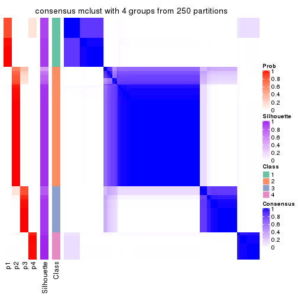
consensus_heatmap(res, k = 5)
consensus_heatmap(res, k = 6)
Heatmaps for the membership of samples in all partitions to see how consistent they are:
membership_heatmap(res, k = 2)
membership_heatmap(res, k = 3)
membership_heatmap(res, k = 4)
membership_heatmap(res, k = 5)
membership_heatmap(res, k = 6)
As soon as we have had the classes for columns, we can look for signatures which are significantly different between classes which can be candidate marks for certain classes. Following are the heatmaps for signatures.
Signature heatmaps where rows are scaled:
get_signatures(res, k = 2)
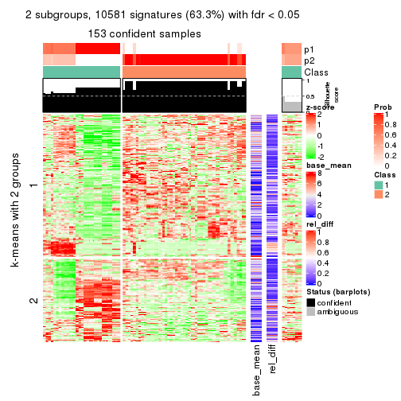
get_signatures(res, k = 3)
get_signatures(res, k = 4)
get_signatures(res, k = 5)
get_signatures(res, k = 6)
Signature heatmaps where rows are not scaled:
get_signatures(res, k = 2, scale_rows = FALSE)
get_signatures(res, k = 3, scale_rows = FALSE)
get_signatures(res, k = 4, scale_rows = FALSE)
get_signatures(res, k = 5, scale_rows = FALSE)
get_signatures(res, k = 6, scale_rows = FALSE)
Compare the overlap of signatures from different k:
compare_signatures(res)
get_signature() returns a data frame invisibly. TO get the list of signatures, the function
call should be assigned to a variable explicitly. In following code, if plot argument is set
to FALSE, no heatmap is plotted while only the differential analysis is performed.
# code only for demonstration
tb = get_signature(res, k = ..., plot = FALSE)
An example of the output of tb is:
#> which_row fdr mean_1 mean_2 scaled_mean_1 scaled_mean_2 km
#> 1 38 0.042760348 8.373488 9.131774 -0.5533452 0.5164555 1
#> 2 40 0.018707592 7.106213 8.469186 -0.6173731 0.5762149 1
#> 3 55 0.019134737 10.221463 11.207825 -0.6159697 0.5749050 1
#> 4 59 0.006059896 5.921854 7.869574 -0.6899429 0.6439467 1
#> 5 60 0.018055526 8.928898 10.211722 -0.6204761 0.5791110 1
#> 6 98 0.009384629 15.714769 14.887706 0.6635654 -0.6193277 2
...
The columns in tb are:
which_row: row indices corresponding to the input matrix.fdr: FDR for the differential test. mean_x: The mean value in group x.scaled_mean_x: The mean value in group x after rows are scaled.km: Row groups if k-means clustering is applied to rows.UMAP plot which shows how samples are separated.
dimension_reduction(res, k = 2, method = "UMAP")
dimension_reduction(res, k = 3, method = "UMAP")
dimension_reduction(res, k = 4, method = "UMAP")
dimension_reduction(res, k = 5, method = "UMAP")
dimension_reduction(res, k = 6, method = "UMAP")
Following heatmap shows how subgroups are split when increasing k:
collect_classes(res)
If matrix rows can be associated to genes, consider to use GO_Enrichment(res,
...) to perform function enrichment for the signature genes.
The object with results only for a single top-value method and a single partition method can be extracted as:
res = res_list["SD", "NMF"]
# you can also extract it by
# res = res_list["SD:NMF"]
A summary of res and all the functions that can be applied to it:
res
#> A 'ConsensusPartition' object with k = 2, 3, 4, 5, 6.
#> On a matrix with 16717 rows and 168 columns.
#> Top rows (1000, 2000, 3000, 4000, 5000) are extracted by 'SD' method.
#> Subgroups are detected by 'NMF' method.
#> Performed in total 1250 partitions by row resampling.
#> Best k for subgroups seems to be 3.
#>
#> Following methods can be applied to this 'ConsensusPartition' object:
#> [1] "cola_report" "collect_classes" "collect_plots"
#> [4] "collect_stats" "colnames" "compare_signatures"
#> [7] "consensus_heatmap" "dimension_reduction" "functional_enrichment"
#> [10] "get_anno_col" "get_anno" "get_classes"
#> [13] "get_consensus" "get_matrix" "get_membership"
#> [16] "get_param" "get_signatures" "get_stats"
#> [19] "is_best_k" "is_stable_k" "membership_heatmap"
#> [22] "ncol" "nrow" "plot_ecdf"
#> [25] "rownames" "select_partition_number" "show"
#> [28] "suggest_best_k" "test_to_known_factors"
collect_plots() function collects all the plots made from res for all k (number of partitions)
into one single page to provide an easy and fast comparison between different k.
collect_plots(res)
The plots are:
k and the heatmap of
predicted classes for each k.k.k.k.All the plots in panels can be made by individual functions and they are plotted later in this section.
select_partition_number() produces several plots showing different
statistics for choosing “optimized” k. There are following statistics:
k;k, the area increased is defined as \(A_k - A_{k-1}\).The detailed explanations of these statistics can be found in the cola vignette.
Generally speaking, lower PAC score, higher mean silhouette score or higher
concordance corresponds to better partition. Rand index and Jaccard index
measure how similar the current partition is compared to partition with k-1.
If they are too similar, we won't accept k is better than k-1.
select_partition_number(res)
The numeric values for all these statistics can be obtained by get_stats().
get_stats(res)
#> k 1-PAC mean_silhouette concordance area_increased Rand Jaccard
#> 2 2 0.758 0.902 0.957 0.4099 0.605 0.605
#> 3 3 0.844 0.898 0.957 0.4994 0.685 0.521
#> 4 4 0.697 0.707 0.796 0.1654 0.786 0.503
#> 5 5 0.898 0.890 0.943 0.0938 0.911 0.681
#> 6 6 0.886 0.852 0.925 0.0460 0.921 0.671
suggest_best_k() suggests the best \(k\) based on these statistics. The rules are as follows:
NA.suggest_best_k(res)
#> [1] 3
Following shows the table of the partitions (You need to click the show/hide
code output link to see it). The membership matrix (columns with name p*)
is inferred by
clue::cl_consensus()
function with the SE method. Basically the value in the membership matrix
represents the probability to belong to a certain group. The finall class
label for an item is determined with the group with highest probability it
belongs to.
In get_classes() function, the entropy is calculated from the membership
matrix and the silhouette score is calculated from the consensus matrix.
cbind(get_classes(res, k = 2), get_membership(res, k = 2))
#> class entropy silhouette p1 p2
#> SRR1768889 2 0.0000 0.950 0.000 1.000
#> SRR1768890 2 0.0000 0.950 0.000 1.000
#> SRR1768891 2 0.0000 0.950 0.000 1.000
#> SRR1768892 2 0.0000 0.950 0.000 1.000
#> SRR1768893 2 0.0000 0.950 0.000 1.000
#> SRR1768894 2 0.0000 0.950 0.000 1.000
#> SRR1768895 2 0.0000 0.950 0.000 1.000
#> SRR1768896 2 0.0000 0.950 0.000 1.000
#> SRR1768821 2 0.0000 0.950 0.000 1.000
#> SRR1768822 2 0.0000 0.950 0.000 1.000
#> SRR1768823 2 0.8555 0.635 0.280 0.720
#> SRR1768824 2 0.8555 0.635 0.280 0.720
#> SRR1768825 2 0.0000 0.950 0.000 1.000
#> SRR1768826 2 0.0000 0.950 0.000 1.000
#> SRR1768827 2 0.0000 0.950 0.000 1.000
#> SRR1768828 2 0.0000 0.950 0.000 1.000
#> SRR1768829 2 0.0000 0.950 0.000 1.000
#> SRR1768830 2 0.0000 0.950 0.000 1.000
#> SRR1768831 2 0.8955 0.578 0.312 0.688
#> SRR1768832 2 0.8955 0.578 0.312 0.688
#> SRR1768833 1 0.4690 0.878 0.900 0.100
#> SRR1768834 1 0.4690 0.878 0.900 0.100
#> SRR1768835 1 0.6048 0.828 0.852 0.148
#> SRR1768836 1 0.7139 0.768 0.804 0.196
#> SRR1768837 1 0.7139 0.768 0.804 0.196
#> SRR1768838 2 0.0000 0.950 0.000 1.000
#> SRR1768839 2 0.0000 0.950 0.000 1.000
#> SRR1768840 2 0.0000 0.950 0.000 1.000
#> SRR1768841 2 0.0000 0.950 0.000 1.000
#> SRR1768842 2 0.0000 0.950 0.000 1.000
#> SRR1768843 2 0.0000 0.950 0.000 1.000
#> SRR1768844 2 0.0000 0.950 0.000 1.000
#> SRR1768845 2 0.0000 0.950 0.000 1.000
#> SRR1768846 2 0.0000 0.950 0.000 1.000
#> SRR1768847 2 0.0000 0.950 0.000 1.000
#> SRR1768848 2 0.0000 0.950 0.000 1.000
#> SRR1768849 2 0.0000 0.950 0.000 1.000
#> SRR1768850 2 0.0000 0.950 0.000 1.000
#> SRR1768851 2 0.0000 0.950 0.000 1.000
#> SRR1768852 2 0.1184 0.938 0.016 0.984
#> SRR1768853 2 0.0938 0.942 0.012 0.988
#> SRR1768854 2 0.0000 0.950 0.000 1.000
#> SRR1768855 2 0.0000 0.950 0.000 1.000
#> SRR1768856 2 0.0000 0.950 0.000 1.000
#> SRR1768857 2 0.0000 0.950 0.000 1.000
#> SRR1768858 2 0.0000 0.950 0.000 1.000
#> SRR1768859 2 0.0000 0.950 0.000 1.000
#> SRR1768860 2 0.0000 0.950 0.000 1.000
#> SRR1768861 2 0.0000 0.950 0.000 1.000
#> SRR1768862 2 0.0000 0.950 0.000 1.000
#> SRR1768863 2 0.0000 0.950 0.000 1.000
#> SRR1768864 2 0.0000 0.950 0.000 1.000
#> SRR1768865 2 0.0000 0.950 0.000 1.000
#> SRR1768866 2 0.0000 0.950 0.000 1.000
#> SRR1768867 2 0.7453 0.737 0.212 0.788
#> SRR1768868 2 0.7299 0.748 0.204 0.796
#> SRR1768869 1 0.7883 0.704 0.764 0.236
#> SRR1768870 1 0.8081 0.682 0.752 0.248
#> SRR1768871 2 0.9815 0.323 0.420 0.580
#> SRR1768872 2 0.9732 0.368 0.404 0.596
#> SRR1768873 1 0.7299 0.756 0.796 0.204
#> SRR1768874 1 0.7376 0.750 0.792 0.208
#> SRR1768875 2 0.0000 0.950 0.000 1.000
#> SRR1768876 2 0.0000 0.950 0.000 1.000
#> SRR1768877 2 0.0000 0.950 0.000 1.000
#> SRR1768878 2 0.0000 0.950 0.000 1.000
#> SRR1768879 2 0.0000 0.950 0.000 1.000
#> SRR1768880 2 0.0000 0.950 0.000 1.000
#> SRR1768881 2 0.0000 0.950 0.000 1.000
#> SRR1768882 2 0.0000 0.950 0.000 1.000
#> SRR1768883 2 0.0000 0.950 0.000 1.000
#> SRR1768884 2 0.0000 0.950 0.000 1.000
#> SRR1768885 2 0.0000 0.950 0.000 1.000
#> SRR1768886 2 0.0000 0.950 0.000 1.000
#> SRR1768887 2 0.0000 0.950 0.000 1.000
#> SRR1768888 2 0.0000 0.950 0.000 1.000
#> SRR1768897 2 0.0000 0.950 0.000 1.000
#> SRR1768898 2 0.0000 0.950 0.000 1.000
#> SRR1768899 2 0.0000 0.950 0.000 1.000
#> SRR1768900 2 0.0000 0.950 0.000 1.000
#> SRR1768901 2 0.0000 0.950 0.000 1.000
#> SRR1768902 2 0.0000 0.950 0.000 1.000
#> SRR1768903 2 0.0000 0.950 0.000 1.000
#> SRR1768904 2 0.0000 0.950 0.000 1.000
#> SRR1768905 2 0.0000 0.950 0.000 1.000
#> SRR1768906 2 0.0000 0.950 0.000 1.000
#> SRR1768907 2 0.0000 0.950 0.000 1.000
#> SRR1768908 2 0.0000 0.950 0.000 1.000
#> SRR1768909 2 0.0000 0.950 0.000 1.000
#> SRR1768910 2 0.0000 0.950 0.000 1.000
#> SRR1768911 2 0.0000 0.950 0.000 1.000
#> SRR1768912 2 0.0000 0.950 0.000 1.000
#> SRR1768913 2 0.0000 0.950 0.000 1.000
#> SRR1768914 2 0.0000 0.950 0.000 1.000
#> SRR1768915 2 0.0000 0.950 0.000 1.000
#> SRR1768916 2 0.0000 0.950 0.000 1.000
#> SRR1768917 2 0.0000 0.950 0.000 1.000
#> SRR1768918 2 0.0000 0.950 0.000 1.000
#> SRR1768919 2 0.0000 0.950 0.000 1.000
#> SRR1768920 2 0.0000 0.950 0.000 1.000
#> SRR1768921 2 0.0000 0.950 0.000 1.000
#> SRR1768922 2 0.0000 0.950 0.000 1.000
#> SRR1768923 2 0.0000 0.950 0.000 1.000
#> SRR1768924 2 0.8207 0.674 0.256 0.744
#> SRR1768925 2 0.8713 0.615 0.292 0.708
#> SRR1768926 2 0.0376 0.948 0.004 0.996
#> SRR1768927 2 0.0376 0.948 0.004 0.996
#> SRR1768928 2 0.4939 0.857 0.108 0.892
#> SRR1768929 2 0.5842 0.825 0.140 0.860
#> SRR1768930 2 0.6148 0.811 0.152 0.848
#> SRR1768931 2 0.5737 0.829 0.136 0.864
#> SRR1768932 2 0.0376 0.948 0.004 0.996
#> SRR1768933 2 0.9815 0.323 0.420 0.580
#> SRR1768934 2 0.9795 0.335 0.416 0.584
#> SRR1768935 2 0.9286 0.513 0.344 0.656
#> SRR1768936 2 0.9209 0.530 0.336 0.664
#> SRR1768937 2 0.8813 0.601 0.300 0.700
#> SRR1768938 2 0.5294 0.845 0.120 0.880
#> SRR1768939 2 0.0000 0.950 0.000 1.000
#> SRR1768940 2 0.0000 0.950 0.000 1.000
#> SRR1768941 2 0.0000 0.950 0.000 1.000
#> SRR1768942 2 0.0000 0.950 0.000 1.000
#> SRR1768943 2 0.0000 0.950 0.000 1.000
#> SRR1768944 2 0.0000 0.950 0.000 1.000
#> SRR1768945 2 0.0000 0.950 0.000 1.000
#> SRR1768946 2 0.0000 0.950 0.000 1.000
#> SRR1768947 2 0.0000 0.950 0.000 1.000
#> SRR1768948 2 0.0000 0.950 0.000 1.000
#> SRR1768949 2 0.0000 0.950 0.000 1.000
#> SRR1768950 2 0.6343 0.802 0.160 0.840
#> SRR1768954 1 0.0000 0.959 1.000 0.000
#> SRR1768955 1 0.0000 0.959 1.000 0.000
#> SRR1768956 1 0.0000 0.959 1.000 0.000
#> SRR1768957 1 0.0000 0.959 1.000 0.000
#> SRR1768958 1 0.0000 0.959 1.000 0.000
#> SRR1768959 1 0.0000 0.959 1.000 0.000
#> SRR1768960 1 0.0000 0.959 1.000 0.000
#> SRR1768961 1 0.0000 0.959 1.000 0.000
#> SRR1768952 2 0.0000 0.950 0.000 1.000
#> SRR1768953 2 0.0000 0.950 0.000 1.000
#> SRR1768962 1 0.0000 0.959 1.000 0.000
#> SRR1768963 1 0.0000 0.959 1.000 0.000
#> SRR1768964 1 0.0000 0.959 1.000 0.000
#> SRR1768965 1 0.0000 0.959 1.000 0.000
#> SRR1768966 1 0.0000 0.959 1.000 0.000
#> SRR1768967 1 0.0000 0.959 1.000 0.000
#> SRR1768968 1 0.0000 0.959 1.000 0.000
#> SRR1768969 1 0.0000 0.959 1.000 0.000
#> SRR1768970 1 0.0000 0.959 1.000 0.000
#> SRR1768971 1 0.0000 0.959 1.000 0.000
#> SRR1768972 1 0.0000 0.959 1.000 0.000
#> SRR1768973 1 0.0000 0.959 1.000 0.000
#> SRR1768974 1 0.0000 0.959 1.000 0.000
#> SRR1768975 1 0.0000 0.959 1.000 0.000
#> SRR1768976 1 0.0000 0.959 1.000 0.000
#> SRR1768977 1 0.0000 0.959 1.000 0.000
#> SRR1768978 1 0.0000 0.959 1.000 0.000
#> SRR1768979 1 0.0000 0.959 1.000 0.000
#> SRR1768980 1 0.0000 0.959 1.000 0.000
#> SRR1768981 1 0.0000 0.959 1.000 0.000
#> SRR1768982 1 0.0000 0.959 1.000 0.000
#> SRR1768983 1 0.0000 0.959 1.000 0.000
#> SRR1768984 1 0.0000 0.959 1.000 0.000
#> SRR1768985 1 0.0000 0.959 1.000 0.000
#> SRR1768986 1 0.0000 0.959 1.000 0.000
#> SRR1768987 1 0.0000 0.959 1.000 0.000
#> SRR1768988 1 0.0000 0.959 1.000 0.000
#> SRR1768989 1 0.0000 0.959 1.000 0.000
cbind(get_classes(res, k = 3), get_membership(res, k = 3))
#> class entropy silhouette p1 p2 p3
#> SRR1768889 3 0.0000 0.9424 0.000 0.000 1.000
#> SRR1768890 3 0.0000 0.9424 0.000 0.000 1.000
#> SRR1768891 2 0.0000 0.9417 0.000 1.000 0.000
#> SRR1768892 2 0.0000 0.9417 0.000 1.000 0.000
#> SRR1768893 2 0.0000 0.9417 0.000 1.000 0.000
#> SRR1768894 2 0.0000 0.9417 0.000 1.000 0.000
#> SRR1768895 2 0.0000 0.9417 0.000 1.000 0.000
#> SRR1768896 2 0.0000 0.9417 0.000 1.000 0.000
#> SRR1768821 2 0.0000 0.9417 0.000 1.000 0.000
#> SRR1768822 2 0.0000 0.9417 0.000 1.000 0.000
#> SRR1768823 2 0.0000 0.9417 0.000 1.000 0.000
#> SRR1768824 2 0.0000 0.9417 0.000 1.000 0.000
#> SRR1768825 2 0.0000 0.9417 0.000 1.000 0.000
#> SRR1768826 2 0.0000 0.9417 0.000 1.000 0.000
#> SRR1768827 2 0.0000 0.9417 0.000 1.000 0.000
#> SRR1768828 2 0.0000 0.9417 0.000 1.000 0.000
#> SRR1768829 2 0.0000 0.9417 0.000 1.000 0.000
#> SRR1768830 2 0.0000 0.9417 0.000 1.000 0.000
#> SRR1768831 3 0.4750 0.6911 0.216 0.000 0.784
#> SRR1768832 3 0.4796 0.6846 0.220 0.000 0.780
#> SRR1768833 2 0.5859 0.5245 0.344 0.656 0.000
#> SRR1768834 2 0.5859 0.5245 0.344 0.656 0.000
#> SRR1768835 2 0.5859 0.5245 0.344 0.656 0.000
#> SRR1768836 2 0.6192 0.3488 0.420 0.580 0.000
#> SRR1768837 2 0.6192 0.3488 0.420 0.580 0.000
#> SRR1768838 3 0.0000 0.9424 0.000 0.000 1.000
#> SRR1768839 3 0.0000 0.9424 0.000 0.000 1.000
#> SRR1768840 3 0.0000 0.9424 0.000 0.000 1.000
#> SRR1768841 3 0.0000 0.9424 0.000 0.000 1.000
#> SRR1768842 2 0.2537 0.8797 0.000 0.920 0.080
#> SRR1768843 2 0.2356 0.8866 0.000 0.928 0.072
#> SRR1768844 3 0.0000 0.9424 0.000 0.000 1.000
#> SRR1768845 3 0.0000 0.9424 0.000 0.000 1.000
#> SRR1768846 3 0.0000 0.9424 0.000 0.000 1.000
#> SRR1768847 3 0.0000 0.9424 0.000 0.000 1.000
#> SRR1768848 3 0.0000 0.9424 0.000 0.000 1.000
#> SRR1768849 3 0.0000 0.9424 0.000 0.000 1.000
#> SRR1768850 3 0.0000 0.9424 0.000 0.000 1.000
#> SRR1768851 3 0.0000 0.9424 0.000 0.000 1.000
#> SRR1768852 2 0.0000 0.9417 0.000 1.000 0.000
#> SRR1768853 2 0.0000 0.9417 0.000 1.000 0.000
#> SRR1768854 2 0.0000 0.9417 0.000 1.000 0.000
#> SRR1768855 3 0.0000 0.9424 0.000 0.000 1.000
#> SRR1768856 3 0.0000 0.9424 0.000 0.000 1.000
#> SRR1768857 3 0.0000 0.9424 0.000 0.000 1.000
#> SRR1768858 3 0.4235 0.7582 0.000 0.176 0.824
#> SRR1768859 3 0.4504 0.7330 0.000 0.196 0.804
#> SRR1768860 3 0.3941 0.7817 0.000 0.156 0.844
#> SRR1768861 3 0.0000 0.9424 0.000 0.000 1.000
#> SRR1768862 3 0.0000 0.9424 0.000 0.000 1.000
#> SRR1768863 2 0.0000 0.9417 0.000 1.000 0.000
#> SRR1768864 2 0.0000 0.9417 0.000 1.000 0.000
#> SRR1768865 3 0.0000 0.9424 0.000 0.000 1.000
#> SRR1768866 3 0.0000 0.9424 0.000 0.000 1.000
#> SRR1768867 2 0.0000 0.9417 0.000 1.000 0.000
#> SRR1768868 2 0.0000 0.9417 0.000 1.000 0.000
#> SRR1768869 2 0.0000 0.9417 0.000 1.000 0.000
#> SRR1768870 2 0.0000 0.9417 0.000 1.000 0.000
#> SRR1768871 2 0.0000 0.9417 0.000 1.000 0.000
#> SRR1768872 2 0.0000 0.9417 0.000 1.000 0.000
#> SRR1768873 2 0.0000 0.9417 0.000 1.000 0.000
#> SRR1768874 2 0.0000 0.9417 0.000 1.000 0.000
#> SRR1768875 3 0.0000 0.9424 0.000 0.000 1.000
#> SRR1768876 3 0.0000 0.9424 0.000 0.000 1.000
#> SRR1768877 3 0.0000 0.9424 0.000 0.000 1.000
#> SRR1768878 3 0.0000 0.9424 0.000 0.000 1.000
#> SRR1768879 3 0.0000 0.9424 0.000 0.000 1.000
#> SRR1768880 3 0.0000 0.9424 0.000 0.000 1.000
#> SRR1768881 3 0.4346 0.7554 0.000 0.184 0.816
#> SRR1768882 3 0.4504 0.7412 0.000 0.196 0.804
#> SRR1768883 3 0.0000 0.9424 0.000 0.000 1.000
#> SRR1768884 3 0.0000 0.9424 0.000 0.000 1.000
#> SRR1768885 3 0.0000 0.9424 0.000 0.000 1.000
#> SRR1768886 3 0.0000 0.9424 0.000 0.000 1.000
#> SRR1768887 3 0.0000 0.9424 0.000 0.000 1.000
#> SRR1768888 3 0.0000 0.9424 0.000 0.000 1.000
#> SRR1768897 2 0.0000 0.9417 0.000 1.000 0.000
#> SRR1768898 2 0.0000 0.9417 0.000 1.000 0.000
#> SRR1768899 2 0.0000 0.9417 0.000 1.000 0.000
#> SRR1768900 2 0.0000 0.9417 0.000 1.000 0.000
#> SRR1768901 2 0.0592 0.9335 0.000 0.988 0.012
#> SRR1768902 2 0.0237 0.9390 0.000 0.996 0.004
#> SRR1768903 2 0.2625 0.8760 0.000 0.916 0.084
#> SRR1768904 2 0.0000 0.9417 0.000 1.000 0.000
#> SRR1768905 2 0.0000 0.9417 0.000 1.000 0.000
#> SRR1768906 2 0.0000 0.9417 0.000 1.000 0.000
#> SRR1768907 2 0.0000 0.9417 0.000 1.000 0.000
#> SRR1768908 2 0.0000 0.9417 0.000 1.000 0.000
#> SRR1768909 2 0.0000 0.9417 0.000 1.000 0.000
#> SRR1768910 2 0.0000 0.9417 0.000 1.000 0.000
#> SRR1768911 2 0.0000 0.9417 0.000 1.000 0.000
#> SRR1768912 2 0.0000 0.9417 0.000 1.000 0.000
#> SRR1768913 2 0.0000 0.9417 0.000 1.000 0.000
#> SRR1768914 2 0.0000 0.9417 0.000 1.000 0.000
#> SRR1768915 2 0.0000 0.9417 0.000 1.000 0.000
#> SRR1768916 2 0.0000 0.9417 0.000 1.000 0.000
#> SRR1768917 2 0.0000 0.9417 0.000 1.000 0.000
#> SRR1768918 2 0.0000 0.9417 0.000 1.000 0.000
#> SRR1768919 2 0.0000 0.9417 0.000 1.000 0.000
#> SRR1768920 2 0.0000 0.9417 0.000 1.000 0.000
#> SRR1768921 2 0.0000 0.9417 0.000 1.000 0.000
#> SRR1768922 2 0.6062 0.4123 0.000 0.616 0.384
#> SRR1768923 2 0.6062 0.4123 0.000 0.616 0.384
#> SRR1768924 2 0.4178 0.7872 0.172 0.828 0.000
#> SRR1768925 2 0.4062 0.7964 0.164 0.836 0.000
#> SRR1768926 2 0.5355 0.7627 0.032 0.800 0.168
#> SRR1768927 2 0.5603 0.7776 0.060 0.804 0.136
#> SRR1768928 2 0.4555 0.7534 0.200 0.800 0.000
#> SRR1768929 2 0.4555 0.7534 0.200 0.800 0.000
#> SRR1768930 2 0.0000 0.9417 0.000 1.000 0.000
#> SRR1768931 2 0.0000 0.9417 0.000 1.000 0.000
#> SRR1768932 2 0.0000 0.9417 0.000 1.000 0.000
#> SRR1768933 2 0.0000 0.9417 0.000 1.000 0.000
#> SRR1768934 2 0.0000 0.9417 0.000 1.000 0.000
#> SRR1768935 2 0.0000 0.9417 0.000 1.000 0.000
#> SRR1768936 2 0.0000 0.9417 0.000 1.000 0.000
#> SRR1768937 2 0.0000 0.9417 0.000 1.000 0.000
#> SRR1768938 2 0.0000 0.9417 0.000 1.000 0.000
#> SRR1768939 2 0.0000 0.9417 0.000 1.000 0.000
#> SRR1768940 2 0.0000 0.9417 0.000 1.000 0.000
#> SRR1768941 2 0.2448 0.8764 0.000 0.924 0.076
#> SRR1768942 2 0.2448 0.8764 0.000 0.924 0.076
#> SRR1768943 2 0.0000 0.9417 0.000 1.000 0.000
#> SRR1768944 2 0.0000 0.9417 0.000 1.000 0.000
#> SRR1768945 2 0.0000 0.9417 0.000 1.000 0.000
#> SRR1768946 2 0.0000 0.9417 0.000 1.000 0.000
#> SRR1768947 2 0.6244 0.2579 0.000 0.560 0.440
#> SRR1768948 2 0.6244 0.2579 0.000 0.560 0.440
#> SRR1768949 3 0.6308 -0.0466 0.000 0.492 0.508
#> SRR1768950 2 0.0000 0.9417 0.000 1.000 0.000
#> SRR1768954 1 0.0000 0.9881 1.000 0.000 0.000
#> SRR1768955 1 0.0000 0.9881 1.000 0.000 0.000
#> SRR1768956 1 0.0000 0.9881 1.000 0.000 0.000
#> SRR1768957 1 0.0000 0.9881 1.000 0.000 0.000
#> SRR1768958 1 0.0000 0.9881 1.000 0.000 0.000
#> SRR1768959 1 0.0000 0.9881 1.000 0.000 0.000
#> SRR1768960 1 0.0000 0.9881 1.000 0.000 0.000
#> SRR1768961 1 0.0000 0.9881 1.000 0.000 0.000
#> SRR1768952 2 0.0000 0.9417 0.000 1.000 0.000
#> SRR1768953 2 0.0000 0.9417 0.000 1.000 0.000
#> SRR1768962 1 0.0000 0.9881 1.000 0.000 0.000
#> SRR1768963 1 0.0000 0.9881 1.000 0.000 0.000
#> SRR1768964 1 0.0000 0.9881 1.000 0.000 0.000
#> SRR1768965 1 0.0000 0.9881 1.000 0.000 0.000
#> SRR1768966 1 0.0000 0.9881 1.000 0.000 0.000
#> SRR1768967 1 0.0000 0.9881 1.000 0.000 0.000
#> SRR1768968 1 0.0000 0.9881 1.000 0.000 0.000
#> SRR1768969 1 0.0000 0.9881 1.000 0.000 0.000
#> SRR1768970 1 0.0000 0.9881 1.000 0.000 0.000
#> SRR1768971 1 0.0000 0.9881 1.000 0.000 0.000
#> SRR1768972 1 0.0000 0.9881 1.000 0.000 0.000
#> SRR1768973 1 0.0000 0.9881 1.000 0.000 0.000
#> SRR1768974 1 0.0000 0.9881 1.000 0.000 0.000
#> SRR1768975 1 0.0000 0.9881 1.000 0.000 0.000
#> SRR1768976 1 0.0000 0.9881 1.000 0.000 0.000
#> SRR1768977 1 0.0000 0.9881 1.000 0.000 0.000
#> SRR1768978 1 0.0000 0.9881 1.000 0.000 0.000
#> SRR1768979 1 0.0000 0.9881 1.000 0.000 0.000
#> SRR1768980 1 0.0000 0.9881 1.000 0.000 0.000
#> SRR1768981 1 0.0000 0.9881 1.000 0.000 0.000
#> SRR1768982 1 0.0000 0.9881 1.000 0.000 0.000
#> SRR1768983 1 0.0000 0.9881 1.000 0.000 0.000
#> SRR1768984 1 0.3816 0.7948 0.852 0.148 0.000
#> SRR1768985 1 0.4062 0.7719 0.836 0.164 0.000
#> SRR1768986 1 0.0000 0.9881 1.000 0.000 0.000
#> SRR1768987 1 0.0000 0.9881 1.000 0.000 0.000
#> SRR1768988 1 0.0000 0.9881 1.000 0.000 0.000
#> SRR1768989 1 0.0000 0.9881 1.000 0.000 0.000
cbind(get_classes(res, k = 4), get_membership(res, k = 4))
#> class entropy silhouette p1 p2 p3 p4
#> SRR1768889 3 0.4994 0.8591 0.000 0.000 0.520 0.480
#> SRR1768890 3 0.4994 0.8591 0.000 0.000 0.520 0.480
#> SRR1768891 4 0.4994 0.8380 0.000 0.000 0.480 0.520
#> SRR1768892 4 0.4994 0.8380 0.000 0.000 0.480 0.520
#> SRR1768893 3 0.6788 -0.8034 0.000 0.096 0.480 0.424
#> SRR1768894 3 0.6788 -0.8034 0.000 0.096 0.480 0.424
#> SRR1768895 4 0.4994 0.8380 0.000 0.000 0.480 0.520
#> SRR1768896 4 0.4994 0.8380 0.000 0.000 0.480 0.520
#> SRR1768821 4 0.4994 0.8380 0.000 0.000 0.480 0.520
#> SRR1768822 4 0.4994 0.8380 0.000 0.000 0.480 0.520
#> SRR1768823 4 0.4994 0.8380 0.000 0.000 0.480 0.520
#> SRR1768824 4 0.4994 0.8380 0.000 0.000 0.480 0.520
#> SRR1768825 4 0.5163 0.8339 0.000 0.004 0.480 0.516
#> SRR1768826 4 0.5163 0.8339 0.000 0.004 0.480 0.516
#> SRR1768827 4 0.4994 0.8380 0.000 0.000 0.480 0.520
#> SRR1768828 4 0.4994 0.8380 0.000 0.000 0.480 0.520
#> SRR1768829 4 0.5606 0.8140 0.000 0.020 0.480 0.500
#> SRR1768830 4 0.5696 0.8080 0.000 0.024 0.480 0.496
#> SRR1768831 3 0.9325 0.4260 0.112 0.268 0.408 0.212
#> SRR1768832 3 0.9287 0.4332 0.108 0.268 0.412 0.212
#> SRR1768833 2 0.0000 0.4243 0.000 1.000 0.000 0.000
#> SRR1768834 2 0.0000 0.4243 0.000 1.000 0.000 0.000
#> SRR1768835 2 0.0000 0.4243 0.000 1.000 0.000 0.000
#> SRR1768836 2 0.0188 0.4188 0.004 0.996 0.000 0.000
#> SRR1768837 2 0.0188 0.4188 0.004 0.996 0.000 0.000
#> SRR1768838 4 0.9932 -0.5149 0.196 0.272 0.248 0.284
#> SRR1768839 4 0.9932 -0.5149 0.196 0.272 0.248 0.284
#> SRR1768840 2 0.4843 0.2773 0.000 0.604 0.000 0.396
#> SRR1768841 2 0.4843 0.2773 0.000 0.604 0.000 0.396
#> SRR1768842 2 0.6356 0.7170 0.000 0.604 0.308 0.088
#> SRR1768843 2 0.6356 0.7170 0.000 0.604 0.308 0.088
#> SRR1768844 3 0.4994 0.8591 0.000 0.000 0.520 0.480
#> SRR1768845 3 0.4994 0.8591 0.000 0.000 0.520 0.480
#> SRR1768846 3 0.4994 0.8591 0.000 0.000 0.520 0.480
#> SRR1768847 3 0.4994 0.8591 0.000 0.000 0.520 0.480
#> SRR1768848 3 0.4994 0.8591 0.000 0.000 0.520 0.480
#> SRR1768849 3 0.4994 0.8591 0.000 0.000 0.520 0.480
#> SRR1768850 3 0.4994 0.8591 0.000 0.000 0.520 0.480
#> SRR1768851 3 0.4994 0.8591 0.000 0.000 0.520 0.480
#> SRR1768852 2 0.4888 0.7365 0.000 0.588 0.412 0.000
#> SRR1768853 2 0.4888 0.7365 0.000 0.588 0.412 0.000
#> SRR1768854 2 0.4888 0.7365 0.000 0.588 0.412 0.000
#> SRR1768855 3 0.4994 0.8591 0.000 0.000 0.520 0.480
#> SRR1768856 3 0.4994 0.8591 0.000 0.000 0.520 0.480
#> SRR1768857 3 0.4994 0.8591 0.000 0.000 0.520 0.480
#> SRR1768858 2 0.7877 0.2755 0.000 0.388 0.300 0.312
#> SRR1768859 2 0.7884 0.2742 0.000 0.384 0.308 0.308
#> SRR1768860 3 0.7921 -0.0986 0.000 0.328 0.348 0.324
#> SRR1768861 3 0.4994 0.8591 0.000 0.000 0.520 0.480
#> SRR1768862 3 0.4994 0.8591 0.000 0.000 0.520 0.480
#> SRR1768863 2 0.5673 0.7218 0.000 0.528 0.448 0.024
#> SRR1768864 2 0.5760 0.7168 0.000 0.524 0.448 0.028
#> SRR1768865 3 0.4994 0.8591 0.000 0.000 0.520 0.480
#> SRR1768866 3 0.4994 0.8591 0.000 0.000 0.520 0.480
#> SRR1768867 4 0.4994 0.8380 0.000 0.000 0.480 0.520
#> SRR1768868 4 0.4994 0.8380 0.000 0.000 0.480 0.520
#> SRR1768869 4 0.7341 0.4812 0.000 0.360 0.164 0.476
#> SRR1768870 4 0.7341 0.4812 0.000 0.360 0.164 0.476
#> SRR1768871 2 0.4843 0.7315 0.000 0.604 0.396 0.000
#> SRR1768872 2 0.4843 0.7315 0.000 0.604 0.396 0.000
#> SRR1768873 4 0.7330 0.5260 0.000 0.312 0.180 0.508
#> SRR1768874 4 0.7345 0.5303 0.000 0.308 0.184 0.508
#> SRR1768875 3 0.4994 0.8591 0.000 0.000 0.520 0.480
#> SRR1768876 3 0.4994 0.8591 0.000 0.000 0.520 0.480
#> SRR1768877 3 0.4994 0.8591 0.000 0.000 0.520 0.480
#> SRR1768878 3 0.4994 0.8591 0.000 0.000 0.520 0.480
#> SRR1768879 3 0.4994 0.8591 0.000 0.000 0.520 0.480
#> SRR1768880 3 0.4994 0.8591 0.000 0.000 0.520 0.480
#> SRR1768881 3 0.4955 0.7568 0.000 0.000 0.556 0.444
#> SRR1768882 3 0.4967 0.7334 0.000 0.000 0.548 0.452
#> SRR1768883 3 0.4994 0.8591 0.000 0.000 0.520 0.480
#> SRR1768884 3 0.4994 0.8591 0.000 0.000 0.520 0.480
#> SRR1768885 3 0.4994 0.8591 0.000 0.000 0.520 0.480
#> SRR1768886 3 0.4994 0.8591 0.000 0.000 0.520 0.480
#> SRR1768887 3 0.4994 0.8591 0.000 0.000 0.520 0.480
#> SRR1768888 3 0.4994 0.8591 0.000 0.000 0.520 0.480
#> SRR1768897 2 0.5406 0.7170 0.000 0.508 0.480 0.012
#> SRR1768898 2 0.5292 0.7220 0.000 0.512 0.480 0.008
#> SRR1768899 2 0.5510 0.7102 0.000 0.504 0.480 0.016
#> SRR1768900 2 0.5510 0.7102 0.000 0.504 0.480 0.016
#> SRR1768901 2 0.5894 0.7415 0.000 0.536 0.428 0.036
#> SRR1768902 2 0.5663 0.7425 0.000 0.536 0.440 0.024
#> SRR1768903 2 0.6426 0.7315 0.000 0.536 0.392 0.072
#> SRR1768904 2 0.4994 0.7302 0.000 0.520 0.480 0.000
#> SRR1768905 2 0.4994 0.7302 0.000 0.520 0.480 0.000
#> SRR1768906 2 0.4994 0.7302 0.000 0.520 0.480 0.000
#> SRR1768907 2 0.4994 0.7302 0.000 0.520 0.480 0.000
#> SRR1768908 2 0.4994 0.7302 0.000 0.520 0.480 0.000
#> SRR1768909 2 0.4994 0.7302 0.000 0.520 0.480 0.000
#> SRR1768910 2 0.4994 0.7302 0.000 0.520 0.480 0.000
#> SRR1768911 2 0.4994 0.7302 0.000 0.520 0.480 0.000
#> SRR1768912 2 0.4994 0.7302 0.000 0.520 0.480 0.000
#> SRR1768913 2 0.4985 0.7367 0.000 0.532 0.468 0.000
#> SRR1768914 2 0.4985 0.7367 0.000 0.532 0.468 0.000
#> SRR1768915 2 0.4985 0.7367 0.000 0.532 0.468 0.000
#> SRR1768916 2 0.4855 0.7326 0.000 0.600 0.400 0.000
#> SRR1768917 4 0.4994 0.8380 0.000 0.000 0.480 0.520
#> SRR1768918 2 0.4985 0.7367 0.000 0.532 0.468 0.000
#> SRR1768919 2 0.4985 0.7367 0.000 0.532 0.468 0.000
#> SRR1768920 4 0.4994 0.8380 0.000 0.000 0.480 0.520
#> SRR1768921 4 0.4994 0.8380 0.000 0.000 0.480 0.520
#> SRR1768922 2 0.6961 0.7029 0.000 0.548 0.316 0.136
#> SRR1768923 2 0.6961 0.7029 0.000 0.548 0.316 0.136
#> SRR1768924 2 0.3444 0.6300 0.000 0.816 0.184 0.000
#> SRR1768925 2 0.3356 0.6234 0.000 0.824 0.176 0.000
#> SRR1768926 2 0.3907 0.6634 0.000 0.768 0.232 0.000
#> SRR1768927 2 0.3907 0.6634 0.000 0.768 0.232 0.000
#> SRR1768928 2 0.3444 0.6301 0.000 0.816 0.184 0.000
#> SRR1768929 2 0.3444 0.6301 0.000 0.816 0.184 0.000
#> SRR1768930 4 0.5503 0.8267 0.000 0.016 0.468 0.516
#> SRR1768931 4 0.5503 0.8267 0.000 0.016 0.468 0.516
#> SRR1768932 4 0.5506 0.8255 0.000 0.016 0.472 0.512
#> SRR1768933 4 0.4994 0.8380 0.000 0.000 0.480 0.520
#> SRR1768934 4 0.4994 0.8380 0.000 0.000 0.480 0.520
#> SRR1768935 4 0.4994 0.8380 0.000 0.000 0.480 0.520
#> SRR1768936 4 0.6458 0.7647 0.000 0.072 0.408 0.520
#> SRR1768937 4 0.6514 0.7618 0.000 0.076 0.408 0.516
#> SRR1768938 4 0.6607 0.7527 0.000 0.084 0.400 0.516
#> SRR1768939 4 0.4994 0.8380 0.000 0.000 0.480 0.520
#> SRR1768940 4 0.4994 0.8380 0.000 0.000 0.480 0.520
#> SRR1768941 4 0.4989 0.8312 0.000 0.000 0.472 0.528
#> SRR1768942 4 0.4989 0.8312 0.000 0.000 0.472 0.528
#> SRR1768943 4 0.4994 0.8380 0.000 0.000 0.480 0.520
#> SRR1768944 4 0.4994 0.8380 0.000 0.000 0.480 0.520
#> SRR1768945 4 0.4994 0.8380 0.000 0.000 0.480 0.520
#> SRR1768946 4 0.4994 0.8380 0.000 0.000 0.480 0.520
#> SRR1768947 2 0.7172 0.6827 0.000 0.532 0.304 0.164
#> SRR1768948 2 0.7172 0.6827 0.000 0.532 0.304 0.164
#> SRR1768949 2 0.7282 0.6754 0.000 0.512 0.316 0.172
#> SRR1768950 3 0.7661 -0.6362 0.000 0.264 0.464 0.272
#> SRR1768954 1 0.4817 0.7834 0.612 0.388 0.000 0.000
#> SRR1768955 1 0.4817 0.7834 0.612 0.388 0.000 0.000
#> SRR1768956 1 0.4817 0.7834 0.612 0.388 0.000 0.000
#> SRR1768957 1 0.4817 0.7834 0.612 0.388 0.000 0.000
#> SRR1768958 1 0.4830 0.7819 0.608 0.392 0.000 0.000
#> SRR1768959 1 0.4817 0.7834 0.612 0.388 0.000 0.000
#> SRR1768960 1 0.4817 0.7834 0.612 0.388 0.000 0.000
#> SRR1768961 1 0.4817 0.7834 0.612 0.388 0.000 0.000
#> SRR1768952 2 0.5155 0.7344 0.000 0.528 0.468 0.004
#> SRR1768953 2 0.5155 0.7344 0.000 0.528 0.468 0.004
#> SRR1768962 1 0.0000 0.8528 1.000 0.000 0.000 0.000
#> SRR1768963 1 0.0000 0.8528 1.000 0.000 0.000 0.000
#> SRR1768964 1 0.0000 0.8528 1.000 0.000 0.000 0.000
#> SRR1768965 1 0.0000 0.8528 1.000 0.000 0.000 0.000
#> SRR1768966 1 0.0000 0.8528 1.000 0.000 0.000 0.000
#> SRR1768967 1 0.0000 0.8528 1.000 0.000 0.000 0.000
#> SRR1768968 1 0.0000 0.8528 1.000 0.000 0.000 0.000
#> SRR1768969 1 0.0000 0.8528 1.000 0.000 0.000 0.000
#> SRR1768970 1 0.0000 0.8528 1.000 0.000 0.000 0.000
#> SRR1768971 1 0.0000 0.8528 1.000 0.000 0.000 0.000
#> SRR1768972 1 0.4843 0.7801 0.604 0.396 0.000 0.000
#> SRR1768973 1 0.4843 0.7801 0.604 0.396 0.000 0.000
#> SRR1768974 1 0.4843 0.7801 0.604 0.396 0.000 0.000
#> SRR1768975 1 0.4843 0.7801 0.604 0.396 0.000 0.000
#> SRR1768976 1 0.4843 0.7801 0.604 0.396 0.000 0.000
#> SRR1768977 1 0.4843 0.7801 0.604 0.396 0.000 0.000
#> SRR1768978 1 0.0000 0.8528 1.000 0.000 0.000 0.000
#> SRR1768979 1 0.0000 0.8528 1.000 0.000 0.000 0.000
#> SRR1768980 1 0.0000 0.8528 1.000 0.000 0.000 0.000
#> SRR1768981 1 0.0000 0.8528 1.000 0.000 0.000 0.000
#> SRR1768982 1 0.0000 0.8528 1.000 0.000 0.000 0.000
#> SRR1768983 1 0.0000 0.8528 1.000 0.000 0.000 0.000
#> SRR1768984 4 0.6716 0.2050 0.080 0.396 0.004 0.520
#> SRR1768985 4 0.6716 0.2050 0.080 0.396 0.004 0.520
#> SRR1768986 1 0.0000 0.8528 1.000 0.000 0.000 0.000
#> SRR1768987 1 0.0000 0.8528 1.000 0.000 0.000 0.000
#> SRR1768988 1 0.0000 0.8528 1.000 0.000 0.000 0.000
#> SRR1768989 1 0.0000 0.8528 1.000 0.000 0.000 0.000
cbind(get_classes(res, k = 5), get_membership(res, k = 5))
#> class entropy silhouette p1 p2 p3 p4 p5
#> SRR1768889 3 0.0000 0.9975 0.000 0.000 1.000 0.000 0.000
#> SRR1768890 3 0.0000 0.9975 0.000 0.000 1.000 0.000 0.000
#> SRR1768891 4 0.2761 0.8581 0.000 0.104 0.000 0.872 0.024
#> SRR1768892 4 0.2597 0.8726 0.000 0.092 0.000 0.884 0.024
#> SRR1768893 2 0.4807 0.2461 0.000 0.532 0.000 0.448 0.020
#> SRR1768894 2 0.4818 0.2073 0.000 0.520 0.000 0.460 0.020
#> SRR1768895 4 0.0162 0.9593 0.000 0.004 0.000 0.996 0.000
#> SRR1768896 4 0.0162 0.9593 0.000 0.004 0.000 0.996 0.000
#> SRR1768821 4 0.0162 0.9593 0.000 0.004 0.000 0.996 0.000
#> SRR1768822 4 0.0162 0.9593 0.000 0.004 0.000 0.996 0.000
#> SRR1768823 4 0.0162 0.9593 0.000 0.004 0.000 0.996 0.000
#> SRR1768824 4 0.0162 0.9593 0.000 0.004 0.000 0.996 0.000
#> SRR1768825 4 0.0693 0.9563 0.000 0.008 0.000 0.980 0.012
#> SRR1768826 4 0.0693 0.9563 0.000 0.008 0.000 0.980 0.012
#> SRR1768827 4 0.0324 0.9588 0.000 0.004 0.000 0.992 0.004
#> SRR1768828 4 0.0324 0.9588 0.000 0.004 0.000 0.992 0.004
#> SRR1768829 4 0.0162 0.9593 0.000 0.004 0.000 0.996 0.000
#> SRR1768830 4 0.0162 0.9593 0.000 0.004 0.000 0.996 0.000
#> SRR1768831 5 0.4118 0.5218 0.004 0.000 0.336 0.000 0.660
#> SRR1768832 5 0.4135 0.5138 0.004 0.000 0.340 0.000 0.656
#> SRR1768833 5 0.1043 0.8727 0.000 0.040 0.000 0.000 0.960
#> SRR1768834 5 0.1043 0.8727 0.000 0.040 0.000 0.000 0.960
#> SRR1768835 5 0.1121 0.8707 0.000 0.044 0.000 0.000 0.956
#> SRR1768836 5 0.1043 0.8727 0.000 0.040 0.000 0.000 0.960
#> SRR1768837 5 0.1043 0.8727 0.000 0.040 0.000 0.000 0.960
#> SRR1768838 5 0.3351 0.7849 0.004 0.020 0.148 0.000 0.828
#> SRR1768839 5 0.3351 0.7849 0.004 0.020 0.148 0.000 0.828
#> SRR1768840 2 0.4127 0.5777 0.000 0.680 0.008 0.000 0.312
#> SRR1768841 2 0.4165 0.5640 0.000 0.672 0.008 0.000 0.320
#> SRR1768842 2 0.0162 0.8897 0.000 0.996 0.000 0.000 0.004
#> SRR1768843 2 0.0162 0.8897 0.000 0.996 0.000 0.000 0.004
#> SRR1768844 3 0.0290 0.9901 0.000 0.008 0.992 0.000 0.000
#> SRR1768845 3 0.0290 0.9901 0.000 0.008 0.992 0.000 0.000
#> SRR1768846 3 0.0000 0.9975 0.000 0.000 1.000 0.000 0.000
#> SRR1768847 3 0.0000 0.9975 0.000 0.000 1.000 0.000 0.000
#> SRR1768848 3 0.0000 0.9975 0.000 0.000 1.000 0.000 0.000
#> SRR1768849 3 0.0000 0.9975 0.000 0.000 1.000 0.000 0.000
#> SRR1768850 3 0.0000 0.9975 0.000 0.000 1.000 0.000 0.000
#> SRR1768851 3 0.0000 0.9975 0.000 0.000 1.000 0.000 0.000
#> SRR1768852 2 0.0794 0.8843 0.000 0.972 0.000 0.000 0.028
#> SRR1768853 2 0.0794 0.8843 0.000 0.972 0.000 0.000 0.028
#> SRR1768854 2 0.0703 0.8856 0.000 0.976 0.000 0.000 0.024
#> SRR1768855 3 0.0000 0.9975 0.000 0.000 1.000 0.000 0.000
#> SRR1768856 3 0.0000 0.9975 0.000 0.000 1.000 0.000 0.000
#> SRR1768857 3 0.0000 0.9975 0.000 0.000 1.000 0.000 0.000
#> SRR1768858 2 0.0324 0.8896 0.000 0.992 0.004 0.000 0.004
#> SRR1768859 2 0.0324 0.8896 0.000 0.992 0.004 0.000 0.004
#> SRR1768860 2 0.0451 0.8884 0.000 0.988 0.008 0.000 0.004
#> SRR1768861 3 0.0000 0.9975 0.000 0.000 1.000 0.000 0.000
#> SRR1768862 3 0.0000 0.9975 0.000 0.000 1.000 0.000 0.000
#> SRR1768863 2 0.3684 0.6668 0.000 0.720 0.000 0.280 0.000
#> SRR1768864 2 0.3707 0.6604 0.000 0.716 0.000 0.284 0.000
#> SRR1768865 3 0.0000 0.9975 0.000 0.000 1.000 0.000 0.000
#> SRR1768866 3 0.0000 0.9975 0.000 0.000 1.000 0.000 0.000
#> SRR1768867 4 0.0162 0.9593 0.000 0.004 0.000 0.996 0.000
#> SRR1768868 4 0.0162 0.9593 0.000 0.004 0.000 0.996 0.000
#> SRR1768869 5 0.4192 0.2915 0.000 0.000 0.000 0.404 0.596
#> SRR1768870 5 0.4210 0.2671 0.000 0.000 0.000 0.412 0.588
#> SRR1768871 2 0.1830 0.8711 0.000 0.932 0.000 0.040 0.028
#> SRR1768872 2 0.1830 0.8711 0.000 0.932 0.000 0.040 0.028
#> SRR1768873 4 0.1478 0.9167 0.000 0.000 0.000 0.936 0.064
#> SRR1768874 4 0.1478 0.9167 0.000 0.000 0.000 0.936 0.064
#> SRR1768875 3 0.0000 0.9975 0.000 0.000 1.000 0.000 0.000
#> SRR1768876 3 0.0000 0.9975 0.000 0.000 1.000 0.000 0.000
#> SRR1768877 3 0.0000 0.9975 0.000 0.000 1.000 0.000 0.000
#> SRR1768878 3 0.0000 0.9975 0.000 0.000 1.000 0.000 0.000
#> SRR1768879 3 0.0000 0.9975 0.000 0.000 1.000 0.000 0.000
#> SRR1768880 3 0.0000 0.9975 0.000 0.000 1.000 0.000 0.000
#> SRR1768881 3 0.0404 0.9840 0.000 0.000 0.988 0.012 0.000
#> SRR1768882 3 0.0880 0.9600 0.000 0.000 0.968 0.032 0.000
#> SRR1768883 3 0.0000 0.9975 0.000 0.000 1.000 0.000 0.000
#> SRR1768884 3 0.0000 0.9975 0.000 0.000 1.000 0.000 0.000
#> SRR1768885 3 0.0000 0.9975 0.000 0.000 1.000 0.000 0.000
#> SRR1768886 3 0.0000 0.9975 0.000 0.000 1.000 0.000 0.000
#> SRR1768887 3 0.0000 0.9975 0.000 0.000 1.000 0.000 0.000
#> SRR1768888 3 0.0000 0.9975 0.000 0.000 1.000 0.000 0.000
#> SRR1768897 2 0.3885 0.6683 0.000 0.724 0.000 0.268 0.008
#> SRR1768898 2 0.3783 0.6923 0.000 0.740 0.000 0.252 0.008
#> SRR1768899 2 0.3586 0.6844 0.000 0.736 0.000 0.264 0.000
#> SRR1768900 2 0.3561 0.6887 0.000 0.740 0.000 0.260 0.000
#> SRR1768901 2 0.0000 0.8903 0.000 1.000 0.000 0.000 0.000
#> SRR1768902 2 0.0000 0.8903 0.000 1.000 0.000 0.000 0.000
#> SRR1768903 2 0.0000 0.8903 0.000 1.000 0.000 0.000 0.000
#> SRR1768904 2 0.1211 0.8810 0.000 0.960 0.000 0.016 0.024
#> SRR1768905 2 0.1211 0.8810 0.000 0.960 0.000 0.016 0.024
#> SRR1768906 2 0.0912 0.8851 0.000 0.972 0.000 0.012 0.016
#> SRR1768907 2 0.0290 0.8903 0.000 0.992 0.000 0.008 0.000
#> SRR1768908 2 0.0290 0.8903 0.000 0.992 0.000 0.008 0.000
#> SRR1768909 2 0.0290 0.8903 0.000 0.992 0.000 0.008 0.000
#> SRR1768910 2 0.0000 0.8903 0.000 1.000 0.000 0.000 0.000
#> SRR1768911 2 0.0000 0.8903 0.000 1.000 0.000 0.000 0.000
#> SRR1768912 2 0.0000 0.8903 0.000 1.000 0.000 0.000 0.000
#> SRR1768913 2 0.0162 0.8906 0.000 0.996 0.000 0.004 0.000
#> SRR1768914 2 0.0162 0.8906 0.000 0.996 0.000 0.004 0.000
#> SRR1768915 2 0.0162 0.8906 0.000 0.996 0.000 0.004 0.000
#> SRR1768916 2 0.2848 0.7916 0.000 0.840 0.000 0.156 0.004
#> SRR1768917 4 0.0162 0.9593 0.000 0.004 0.000 0.996 0.000
#> SRR1768918 2 0.0162 0.8906 0.000 0.996 0.000 0.004 0.000
#> SRR1768919 2 0.0162 0.8906 0.000 0.996 0.000 0.004 0.000
#> SRR1768920 4 0.1041 0.9511 0.000 0.004 0.000 0.964 0.032
#> SRR1768921 4 0.1041 0.9511 0.000 0.004 0.000 0.964 0.032
#> SRR1768922 2 0.0000 0.8903 0.000 1.000 0.000 0.000 0.000
#> SRR1768923 2 0.0000 0.8903 0.000 1.000 0.000 0.000 0.000
#> SRR1768924 2 0.3684 0.6383 0.000 0.720 0.000 0.000 0.280
#> SRR1768925 2 0.3857 0.5882 0.000 0.688 0.000 0.000 0.312
#> SRR1768926 2 0.0162 0.8897 0.000 0.996 0.000 0.000 0.004
#> SRR1768927 2 0.0162 0.8897 0.000 0.996 0.000 0.000 0.004
#> SRR1768928 2 0.3242 0.7217 0.000 0.784 0.000 0.000 0.216
#> SRR1768929 2 0.3395 0.6982 0.000 0.764 0.000 0.000 0.236
#> SRR1768930 4 0.0324 0.9582 0.000 0.004 0.000 0.992 0.004
#> SRR1768931 4 0.0324 0.9582 0.000 0.004 0.000 0.992 0.004
#> SRR1768932 4 0.0162 0.9593 0.000 0.004 0.000 0.996 0.000
#> SRR1768933 4 0.0162 0.9593 0.000 0.004 0.000 0.996 0.000
#> SRR1768934 4 0.0162 0.9593 0.000 0.004 0.000 0.996 0.000
#> SRR1768935 4 0.0162 0.9593 0.000 0.004 0.000 0.996 0.000
#> SRR1768936 4 0.0324 0.9582 0.000 0.004 0.000 0.992 0.004
#> SRR1768937 4 0.0324 0.9582 0.000 0.004 0.000 0.992 0.004
#> SRR1768938 4 0.0324 0.9582 0.000 0.004 0.000 0.992 0.004
#> SRR1768939 4 0.1205 0.9484 0.000 0.004 0.000 0.956 0.040
#> SRR1768940 4 0.1205 0.9484 0.000 0.004 0.000 0.956 0.040
#> SRR1768941 4 0.1205 0.9484 0.000 0.004 0.000 0.956 0.040
#> SRR1768942 4 0.1205 0.9484 0.000 0.004 0.000 0.956 0.040
#> SRR1768943 4 0.1205 0.9484 0.000 0.004 0.000 0.956 0.040
#> SRR1768944 4 0.1205 0.9484 0.000 0.004 0.000 0.956 0.040
#> SRR1768945 4 0.1205 0.9484 0.000 0.004 0.000 0.956 0.040
#> SRR1768946 4 0.1205 0.9484 0.000 0.004 0.000 0.956 0.040
#> SRR1768947 2 0.0000 0.8903 0.000 1.000 0.000 0.000 0.000
#> SRR1768948 2 0.0000 0.8903 0.000 1.000 0.000 0.000 0.000
#> SRR1768949 2 0.0000 0.8903 0.000 1.000 0.000 0.000 0.000
#> SRR1768950 4 0.4268 0.0714 0.000 0.444 0.000 0.556 0.000
#> SRR1768954 5 0.1270 0.8921 0.052 0.000 0.000 0.000 0.948
#> SRR1768955 5 0.1270 0.8921 0.052 0.000 0.000 0.000 0.948
#> SRR1768956 5 0.1270 0.8921 0.052 0.000 0.000 0.000 0.948
#> SRR1768957 5 0.1270 0.8921 0.052 0.000 0.000 0.000 0.948
#> SRR1768958 5 0.1270 0.8921 0.052 0.000 0.000 0.000 0.948
#> SRR1768959 5 0.1270 0.8921 0.052 0.000 0.000 0.000 0.948
#> SRR1768960 5 0.1270 0.8921 0.052 0.000 0.000 0.000 0.948
#> SRR1768961 5 0.1270 0.8921 0.052 0.000 0.000 0.000 0.948
#> SRR1768952 2 0.2377 0.8249 0.000 0.872 0.000 0.128 0.000
#> SRR1768953 2 0.2074 0.8420 0.000 0.896 0.000 0.104 0.000
#> SRR1768962 1 0.0000 0.9990 1.000 0.000 0.000 0.000 0.000
#> SRR1768963 1 0.0000 0.9990 1.000 0.000 0.000 0.000 0.000
#> SRR1768964 1 0.0000 0.9990 1.000 0.000 0.000 0.000 0.000
#> SRR1768965 1 0.0000 0.9990 1.000 0.000 0.000 0.000 0.000
#> SRR1768966 1 0.0000 0.9990 1.000 0.000 0.000 0.000 0.000
#> SRR1768967 1 0.0000 0.9990 1.000 0.000 0.000 0.000 0.000
#> SRR1768968 1 0.0000 0.9990 1.000 0.000 0.000 0.000 0.000
#> SRR1768969 1 0.0000 0.9990 1.000 0.000 0.000 0.000 0.000
#> SRR1768970 1 0.0162 0.9978 0.996 0.000 0.000 0.004 0.000
#> SRR1768971 1 0.0162 0.9978 0.996 0.000 0.000 0.004 0.000
#> SRR1768972 5 0.1270 0.8921 0.052 0.000 0.000 0.000 0.948
#> SRR1768973 5 0.1270 0.8921 0.052 0.000 0.000 0.000 0.948
#> SRR1768974 5 0.1270 0.8921 0.052 0.000 0.000 0.000 0.948
#> SRR1768975 5 0.1270 0.8921 0.052 0.000 0.000 0.000 0.948
#> SRR1768976 5 0.1270 0.8921 0.052 0.000 0.000 0.000 0.948
#> SRR1768977 5 0.1270 0.8921 0.052 0.000 0.000 0.000 0.948
#> SRR1768978 1 0.0000 0.9990 1.000 0.000 0.000 0.000 0.000
#> SRR1768979 1 0.0000 0.9990 1.000 0.000 0.000 0.000 0.000
#> SRR1768980 1 0.0000 0.9990 1.000 0.000 0.000 0.000 0.000
#> SRR1768981 1 0.0000 0.9990 1.000 0.000 0.000 0.000 0.000
#> SRR1768982 1 0.0000 0.9990 1.000 0.000 0.000 0.000 0.000
#> SRR1768983 1 0.0000 0.9990 1.000 0.000 0.000 0.000 0.000
#> SRR1768984 4 0.2773 0.8318 0.000 0.000 0.000 0.836 0.164
#> SRR1768985 4 0.2813 0.8270 0.000 0.000 0.000 0.832 0.168
#> SRR1768986 1 0.0162 0.9978 0.996 0.000 0.000 0.004 0.000
#> SRR1768987 1 0.0162 0.9978 0.996 0.000 0.000 0.004 0.000
#> SRR1768988 1 0.0162 0.9978 0.996 0.000 0.000 0.004 0.000
#> SRR1768989 1 0.0162 0.9978 0.996 0.000 0.000 0.004 0.000
cbind(get_classes(res, k = 6), get_membership(res, k = 6))
#> class entropy silhouette p1 p2 p3 p4 p5 p6
#> SRR1768889 3 0.0000 0.990 0.000 0.000 1.000 0.000 0.000 0.000
#> SRR1768890 3 0.0000 0.990 0.000 0.000 1.000 0.000 0.000 0.000
#> SRR1768891 4 0.4534 0.013 0.000 0.032 0.000 0.496 0.000 0.472
#> SRR1768892 4 0.4534 0.013 0.000 0.032 0.000 0.496 0.000 0.472
#> SRR1768893 2 0.5600 0.193 0.000 0.508 0.000 0.160 0.000 0.332
#> SRR1768894 2 0.5641 0.187 0.000 0.504 0.000 0.168 0.000 0.328
#> SRR1768895 4 0.0508 0.863 0.000 0.004 0.000 0.984 0.000 0.012
#> SRR1768896 4 0.0508 0.863 0.000 0.004 0.000 0.984 0.000 0.012
#> SRR1768821 4 0.0363 0.863 0.000 0.000 0.000 0.988 0.000 0.012
#> SRR1768822 4 0.0363 0.863 0.000 0.000 0.000 0.988 0.000 0.012
#> SRR1768823 4 0.0458 0.863 0.000 0.000 0.000 0.984 0.000 0.016
#> SRR1768824 4 0.0458 0.863 0.000 0.000 0.000 0.984 0.000 0.016
#> SRR1768825 4 0.0603 0.862 0.000 0.004 0.000 0.980 0.000 0.016
#> SRR1768826 4 0.0603 0.862 0.000 0.004 0.000 0.980 0.000 0.016
#> SRR1768827 4 0.0363 0.863 0.000 0.000 0.000 0.988 0.000 0.012
#> SRR1768828 4 0.0363 0.863 0.000 0.000 0.000 0.988 0.000 0.012
#> SRR1768829 4 0.0405 0.863 0.000 0.004 0.000 0.988 0.000 0.008
#> SRR1768830 4 0.0405 0.863 0.000 0.004 0.000 0.988 0.000 0.008
#> SRR1768831 5 0.4107 0.661 0.000 0.000 0.256 0.000 0.700 0.044
#> SRR1768832 5 0.4107 0.661 0.000 0.000 0.256 0.000 0.700 0.044
#> SRR1768833 5 0.1398 0.922 0.000 0.000 0.000 0.008 0.940 0.052
#> SRR1768834 5 0.1398 0.922 0.000 0.000 0.000 0.008 0.940 0.052
#> SRR1768835 5 0.1398 0.922 0.000 0.000 0.000 0.008 0.940 0.052
#> SRR1768836 5 0.1333 0.922 0.000 0.000 0.000 0.008 0.944 0.048
#> SRR1768837 5 0.1333 0.922 0.000 0.000 0.000 0.008 0.944 0.048
#> SRR1768838 5 0.2639 0.882 0.000 0.000 0.064 0.008 0.880 0.048
#> SRR1768839 5 0.2639 0.882 0.000 0.000 0.064 0.008 0.880 0.048
#> SRR1768840 2 0.2573 0.819 0.000 0.884 0.000 0.008 0.064 0.044
#> SRR1768841 2 0.2573 0.819 0.000 0.884 0.000 0.008 0.064 0.044
#> SRR1768842 2 0.1265 0.849 0.000 0.948 0.000 0.008 0.000 0.044
#> SRR1768843 2 0.1265 0.849 0.000 0.948 0.000 0.008 0.000 0.044
#> SRR1768844 3 0.0972 0.957 0.000 0.028 0.964 0.000 0.000 0.008
#> SRR1768845 3 0.0972 0.957 0.000 0.028 0.964 0.000 0.000 0.008
#> SRR1768846 3 0.0000 0.990 0.000 0.000 1.000 0.000 0.000 0.000
#> SRR1768847 3 0.0000 0.990 0.000 0.000 1.000 0.000 0.000 0.000
#> SRR1768848 3 0.0000 0.990 0.000 0.000 1.000 0.000 0.000 0.000
#> SRR1768849 3 0.0000 0.990 0.000 0.000 1.000 0.000 0.000 0.000
#> SRR1768850 3 0.0146 0.987 0.000 0.000 0.996 0.000 0.000 0.004
#> SRR1768851 3 0.0146 0.987 0.000 0.000 0.996 0.000 0.000 0.004
#> SRR1768852 6 0.2416 0.813 0.000 0.156 0.000 0.000 0.000 0.844
#> SRR1768853 6 0.2378 0.817 0.000 0.152 0.000 0.000 0.000 0.848
#> SRR1768854 6 0.2597 0.787 0.000 0.176 0.000 0.000 0.000 0.824
#> SRR1768855 3 0.0000 0.990 0.000 0.000 1.000 0.000 0.000 0.000
#> SRR1768856 3 0.0000 0.990 0.000 0.000 1.000 0.000 0.000 0.000
#> SRR1768857 3 0.0000 0.990 0.000 0.000 1.000 0.000 0.000 0.000
#> SRR1768858 2 0.1610 0.828 0.000 0.916 0.000 0.000 0.000 0.084
#> SRR1768859 2 0.1610 0.828 0.000 0.916 0.000 0.000 0.000 0.084
#> SRR1768860 2 0.1387 0.838 0.000 0.932 0.000 0.000 0.000 0.068
#> SRR1768861 3 0.0000 0.990 0.000 0.000 1.000 0.000 0.000 0.000
#> SRR1768862 3 0.0000 0.990 0.000 0.000 1.000 0.000 0.000 0.000
#> SRR1768863 4 0.2146 0.787 0.000 0.116 0.000 0.880 0.000 0.004
#> SRR1768864 4 0.2212 0.789 0.000 0.112 0.000 0.880 0.000 0.008
#> SRR1768865 3 0.0000 0.990 0.000 0.000 1.000 0.000 0.000 0.000
#> SRR1768866 3 0.0000 0.990 0.000 0.000 1.000 0.000 0.000 0.000
#> SRR1768867 4 0.0458 0.863 0.000 0.000 0.000 0.984 0.000 0.016
#> SRR1768868 4 0.0458 0.863 0.000 0.000 0.000 0.984 0.000 0.016
#> SRR1768869 4 0.2136 0.814 0.000 0.000 0.000 0.904 0.048 0.048
#> SRR1768870 4 0.2136 0.814 0.000 0.000 0.000 0.904 0.048 0.048
#> SRR1768871 4 0.4726 0.340 0.000 0.380 0.000 0.572 0.004 0.044
#> SRR1768872 4 0.4735 0.329 0.000 0.384 0.000 0.568 0.004 0.044
#> SRR1768873 4 0.1219 0.843 0.000 0.000 0.000 0.948 0.004 0.048
#> SRR1768874 4 0.1219 0.843 0.000 0.000 0.000 0.948 0.004 0.048
#> SRR1768875 3 0.0000 0.990 0.000 0.000 1.000 0.000 0.000 0.000
#> SRR1768876 3 0.0000 0.990 0.000 0.000 1.000 0.000 0.000 0.000
#> SRR1768877 3 0.0000 0.990 0.000 0.000 1.000 0.000 0.000 0.000
#> SRR1768878 3 0.0000 0.990 0.000 0.000 1.000 0.000 0.000 0.000
#> SRR1768879 3 0.0000 0.990 0.000 0.000 1.000 0.000 0.000 0.000
#> SRR1768880 3 0.0000 0.990 0.000 0.000 1.000 0.000 0.000 0.000
#> SRR1768881 3 0.1327 0.916 0.000 0.000 0.936 0.064 0.000 0.000
#> SRR1768882 3 0.1814 0.867 0.000 0.000 0.900 0.100 0.000 0.000
#> SRR1768883 3 0.0000 0.990 0.000 0.000 1.000 0.000 0.000 0.000
#> SRR1768884 3 0.0000 0.990 0.000 0.000 1.000 0.000 0.000 0.000
#> SRR1768885 3 0.0000 0.990 0.000 0.000 1.000 0.000 0.000 0.000
#> SRR1768886 3 0.0000 0.990 0.000 0.000 1.000 0.000 0.000 0.000
#> SRR1768887 3 0.0000 0.990 0.000 0.000 1.000 0.000 0.000 0.000
#> SRR1768888 3 0.0000 0.990 0.000 0.000 1.000 0.000 0.000 0.000
#> SRR1768897 2 0.3037 0.728 0.000 0.808 0.000 0.176 0.000 0.016
#> SRR1768898 2 0.2896 0.747 0.000 0.824 0.000 0.160 0.000 0.016
#> SRR1768899 4 0.3717 0.393 0.000 0.384 0.000 0.616 0.000 0.000
#> SRR1768900 4 0.3695 0.412 0.000 0.376 0.000 0.624 0.000 0.000
#> SRR1768901 2 0.0717 0.864 0.000 0.976 0.000 0.008 0.000 0.016
#> SRR1768902 2 0.0717 0.864 0.000 0.976 0.000 0.008 0.000 0.016
#> SRR1768903 2 0.0806 0.863 0.000 0.972 0.000 0.008 0.000 0.020
#> SRR1768904 2 0.3630 0.691 0.000 0.756 0.000 0.032 0.000 0.212
#> SRR1768905 2 0.3766 0.664 0.000 0.736 0.000 0.032 0.000 0.232
#> SRR1768906 2 0.3345 0.729 0.000 0.788 0.000 0.028 0.000 0.184
#> SRR1768907 2 0.0363 0.865 0.000 0.988 0.000 0.012 0.000 0.000
#> SRR1768908 2 0.0458 0.864 0.000 0.984 0.000 0.016 0.000 0.000
#> SRR1768909 2 0.0363 0.865 0.000 0.988 0.000 0.012 0.000 0.000
#> SRR1768910 2 0.0260 0.865 0.000 0.992 0.000 0.008 0.000 0.000
#> SRR1768911 2 0.0260 0.865 0.000 0.992 0.000 0.008 0.000 0.000
#> SRR1768912 2 0.0260 0.865 0.000 0.992 0.000 0.008 0.000 0.000
#> SRR1768913 2 0.0260 0.865 0.000 0.992 0.000 0.008 0.000 0.000
#> SRR1768914 2 0.0260 0.865 0.000 0.992 0.000 0.008 0.000 0.000
#> SRR1768915 2 0.0260 0.865 0.000 0.992 0.000 0.008 0.000 0.000
#> SRR1768916 4 0.4537 0.233 0.000 0.412 0.000 0.552 0.000 0.036
#> SRR1768917 4 0.0458 0.863 0.000 0.000 0.000 0.984 0.000 0.016
#> SRR1768918 2 0.0363 0.865 0.000 0.988 0.000 0.012 0.000 0.000
#> SRR1768919 2 0.0363 0.865 0.000 0.988 0.000 0.012 0.000 0.000
#> SRR1768920 4 0.2823 0.675 0.000 0.000 0.000 0.796 0.000 0.204
#> SRR1768921 4 0.2730 0.693 0.000 0.000 0.000 0.808 0.000 0.192
#> SRR1768922 2 0.0146 0.864 0.000 0.996 0.000 0.000 0.000 0.004
#> SRR1768923 2 0.0146 0.864 0.000 0.996 0.000 0.000 0.000 0.004
#> SRR1768924 2 0.3991 0.703 0.000 0.748 0.000 0.008 0.200 0.044
#> SRR1768925 2 0.4283 0.645 0.000 0.704 0.000 0.008 0.244 0.044
#> SRR1768926 2 0.1333 0.849 0.000 0.944 0.000 0.008 0.000 0.048
#> SRR1768927 2 0.1333 0.849 0.000 0.944 0.000 0.008 0.000 0.048
#> SRR1768928 2 0.4024 0.704 0.000 0.748 0.000 0.008 0.196 0.048
#> SRR1768929 2 0.4343 0.642 0.000 0.700 0.000 0.008 0.244 0.048
#> SRR1768930 4 0.0260 0.863 0.000 0.000 0.000 0.992 0.000 0.008
#> SRR1768931 4 0.0260 0.863 0.000 0.000 0.000 0.992 0.000 0.008
#> SRR1768932 4 0.0260 0.863 0.000 0.000 0.000 0.992 0.000 0.008
#> SRR1768933 4 0.0458 0.863 0.000 0.000 0.000 0.984 0.000 0.016
#> SRR1768934 4 0.0458 0.863 0.000 0.000 0.000 0.984 0.000 0.016
#> SRR1768935 4 0.0458 0.863 0.000 0.000 0.000 0.984 0.000 0.016
#> SRR1768936 4 0.0458 0.861 0.000 0.000 0.000 0.984 0.000 0.016
#> SRR1768937 4 0.0458 0.861 0.000 0.000 0.000 0.984 0.000 0.016
#> SRR1768938 4 0.0458 0.861 0.000 0.000 0.000 0.984 0.000 0.016
#> SRR1768939 6 0.1610 0.930 0.000 0.000 0.000 0.084 0.000 0.916
#> SRR1768940 6 0.1610 0.930 0.000 0.000 0.000 0.084 0.000 0.916
#> SRR1768941 6 0.1714 0.929 0.000 0.000 0.000 0.092 0.000 0.908
#> SRR1768942 6 0.1714 0.929 0.000 0.000 0.000 0.092 0.000 0.908
#> SRR1768943 6 0.1663 0.931 0.000 0.000 0.000 0.088 0.000 0.912
#> SRR1768944 6 0.1663 0.931 0.000 0.000 0.000 0.088 0.000 0.912
#> SRR1768945 6 0.1663 0.931 0.000 0.000 0.000 0.088 0.000 0.912
#> SRR1768946 6 0.1663 0.931 0.000 0.000 0.000 0.088 0.000 0.912
#> SRR1768947 2 0.0260 0.864 0.000 0.992 0.000 0.000 0.000 0.008
#> SRR1768948 2 0.0260 0.864 0.000 0.992 0.000 0.000 0.000 0.008
#> SRR1768949 2 0.0291 0.865 0.000 0.992 0.000 0.004 0.000 0.004
#> SRR1768950 4 0.2996 0.682 0.000 0.228 0.000 0.772 0.000 0.000
#> SRR1768954 5 0.0260 0.941 0.000 0.000 0.000 0.000 0.992 0.008
#> SRR1768955 5 0.0260 0.941 0.000 0.000 0.000 0.000 0.992 0.008
#> SRR1768956 5 0.0260 0.941 0.000 0.000 0.000 0.000 0.992 0.008
#> SRR1768957 5 0.0260 0.941 0.000 0.000 0.000 0.000 0.992 0.008
#> SRR1768958 5 0.0260 0.941 0.000 0.000 0.000 0.000 0.992 0.008
#> SRR1768959 5 0.0260 0.941 0.000 0.000 0.000 0.000 0.992 0.008
#> SRR1768960 5 0.0260 0.941 0.000 0.000 0.000 0.000 0.992 0.008
#> SRR1768961 5 0.0260 0.941 0.000 0.000 0.000 0.000 0.992 0.008
#> SRR1768952 2 0.3797 0.215 0.000 0.580 0.000 0.420 0.000 0.000
#> SRR1768953 2 0.3789 0.239 0.000 0.584 0.000 0.416 0.000 0.000
#> SRR1768962 1 0.0291 0.992 0.992 0.000 0.000 0.000 0.004 0.004
#> SRR1768963 1 0.0291 0.992 0.992 0.000 0.000 0.000 0.004 0.004
#> SRR1768964 1 0.0291 0.992 0.992 0.000 0.000 0.000 0.004 0.004
#> SRR1768965 1 0.0291 0.992 0.992 0.000 0.000 0.000 0.004 0.004
#> SRR1768966 1 0.0146 0.992 0.996 0.000 0.000 0.000 0.000 0.004
#> SRR1768967 1 0.0146 0.992 0.996 0.000 0.000 0.000 0.000 0.004
#> SRR1768968 1 0.0146 0.992 0.996 0.000 0.000 0.000 0.000 0.004
#> SRR1768969 1 0.0146 0.992 0.996 0.000 0.000 0.000 0.000 0.004
#> SRR1768970 1 0.0000 0.991 1.000 0.000 0.000 0.000 0.000 0.000
#> SRR1768971 1 0.0000 0.991 1.000 0.000 0.000 0.000 0.000 0.000
#> SRR1768972 5 0.0260 0.940 0.000 0.000 0.000 0.000 0.992 0.008
#> SRR1768973 5 0.0260 0.940 0.000 0.000 0.000 0.000 0.992 0.008
#> SRR1768974 5 0.0260 0.940 0.000 0.000 0.000 0.000 0.992 0.008
#> SRR1768975 5 0.0146 0.941 0.000 0.000 0.000 0.000 0.996 0.004
#> SRR1768976 5 0.0146 0.941 0.000 0.000 0.000 0.000 0.996 0.004
#> SRR1768977 5 0.0146 0.941 0.000 0.000 0.000 0.000 0.996 0.004
#> SRR1768978 1 0.0603 0.988 0.980 0.000 0.000 0.000 0.004 0.016
#> SRR1768979 1 0.0603 0.988 0.980 0.000 0.000 0.000 0.004 0.016
#> SRR1768980 1 0.0603 0.988 0.980 0.000 0.000 0.000 0.004 0.016
#> SRR1768981 1 0.0603 0.988 0.980 0.000 0.000 0.000 0.004 0.016
#> SRR1768982 1 0.0603 0.988 0.980 0.000 0.000 0.000 0.004 0.016
#> SRR1768983 1 0.0603 0.988 0.980 0.000 0.000 0.000 0.004 0.016
#> SRR1768984 6 0.2420 0.887 0.000 0.000 0.000 0.040 0.076 0.884
#> SRR1768985 6 0.2420 0.887 0.000 0.000 0.000 0.040 0.076 0.884
#> SRR1768986 1 0.0146 0.991 0.996 0.000 0.000 0.000 0.000 0.004
#> SRR1768987 1 0.0146 0.991 0.996 0.000 0.000 0.000 0.000 0.004
#> SRR1768988 1 0.0363 0.986 0.988 0.000 0.000 0.000 0.000 0.012
#> SRR1768989 1 0.0363 0.986 0.988 0.000 0.000 0.000 0.000 0.012
Heatmaps for the consensus matrix. It visualizes the probability of two samples to be in a same group.
consensus_heatmap(res, k = 2)
consensus_heatmap(res, k = 3)
consensus_heatmap(res, k = 4)
consensus_heatmap(res, k = 5)
consensus_heatmap(res, k = 6)
Heatmaps for the membership of samples in all partitions to see how consistent they are:
membership_heatmap(res, k = 2)
membership_heatmap(res, k = 3)
membership_heatmap(res, k = 4)
membership_heatmap(res, k = 5)
membership_heatmap(res, k = 6)
As soon as we have had the classes for columns, we can look for signatures which are significantly different between classes which can be candidate marks for certain classes. Following are the heatmaps for signatures.
Signature heatmaps where rows are scaled:
get_signatures(res, k = 2)
get_signatures(res, k = 3)
get_signatures(res, k = 4)
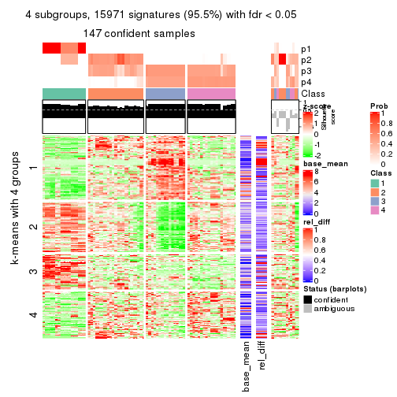
get_signatures(res, k = 5)
get_signatures(res, k = 6)

Signature heatmaps where rows are not scaled:
get_signatures(res, k = 2, scale_rows = FALSE)
get_signatures(res, k = 3, scale_rows = FALSE)
get_signatures(res, k = 4, scale_rows = FALSE)
get_signatures(res, k = 5, scale_rows = FALSE)
get_signatures(res, k = 6, scale_rows = FALSE)
Compare the overlap of signatures from different k:
compare_signatures(res)
get_signature() returns a data frame invisibly. TO get the list of signatures, the function
call should be assigned to a variable explicitly. In following code, if plot argument is set
to FALSE, no heatmap is plotted while only the differential analysis is performed.
# code only for demonstration
tb = get_signature(res, k = ..., plot = FALSE)
An example of the output of tb is:
#> which_row fdr mean_1 mean_2 scaled_mean_1 scaled_mean_2 km
#> 1 38 0.042760348 8.373488 9.131774 -0.5533452 0.5164555 1
#> 2 40 0.018707592 7.106213 8.469186 -0.6173731 0.5762149 1
#> 3 55 0.019134737 10.221463 11.207825 -0.6159697 0.5749050 1
#> 4 59 0.006059896 5.921854 7.869574 -0.6899429 0.6439467 1
#> 5 60 0.018055526 8.928898 10.211722 -0.6204761 0.5791110 1
#> 6 98 0.009384629 15.714769 14.887706 0.6635654 -0.6193277 2
...
The columns in tb are:
which_row: row indices corresponding to the input matrix.fdr: FDR for the differential test. mean_x: The mean value in group x.scaled_mean_x: The mean value in group x after rows are scaled.km: Row groups if k-means clustering is applied to rows.UMAP plot which shows how samples are separated.
dimension_reduction(res, k = 2, method = "UMAP")
dimension_reduction(res, k = 3, method = "UMAP")
dimension_reduction(res, k = 4, method = "UMAP")
dimension_reduction(res, k = 5, method = "UMAP")
dimension_reduction(res, k = 6, method = "UMAP")
Following heatmap shows how subgroups are split when increasing k:
collect_classes(res)
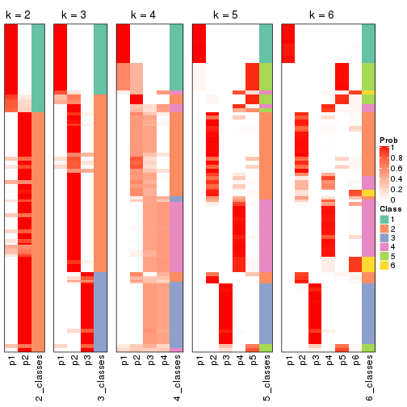
If matrix rows can be associated to genes, consider to use GO_Enrichment(res,
...) to perform function enrichment for the signature genes.
The object with results only for a single top-value method and a single partition method can be extracted as:
res = res_list["CV", "hclust"]
# you can also extract it by
# res = res_list["CV:hclust"]
A summary of res and all the functions that can be applied to it:
res
#> A 'ConsensusPartition' object with k = 2, 3, 4, 5, 6.
#> On a matrix with 16717 rows and 168 columns.
#> Top rows (1000, 2000, 3000, 4000, 5000) are extracted by 'CV' method.
#> Subgroups are detected by 'hclust' method.
#> Performed in total 1250 partitions by row resampling.
#> Best k for subgroups seems to be 3.
#>
#> Following methods can be applied to this 'ConsensusPartition' object:
#> [1] "cola_report" "collect_classes" "collect_plots"
#> [4] "collect_stats" "colnames" "compare_signatures"
#> [7] "consensus_heatmap" "dimension_reduction" "functional_enrichment"
#> [10] "get_anno_col" "get_anno" "get_classes"
#> [13] "get_consensus" "get_matrix" "get_membership"
#> [16] "get_param" "get_signatures" "get_stats"
#> [19] "is_best_k" "is_stable_k" "membership_heatmap"
#> [22] "ncol" "nrow" "plot_ecdf"
#> [25] "rownames" "select_partition_number" "show"
#> [28] "suggest_best_k" "test_to_known_factors"
collect_plots() function collects all the plots made from res for all k (number of partitions)
into one single page to provide an easy and fast comparison between different k.
collect_plots(res)
The plots are:
k and the heatmap of
predicted classes for each k.k.k.k.All the plots in panels can be made by individual functions and they are plotted later in this section.
select_partition_number() produces several plots showing different
statistics for choosing “optimized” k. There are following statistics:
k;k, the area increased is defined as \(A_k - A_{k-1}\).The detailed explanations of these statistics can be found in the cola vignette.
Generally speaking, lower PAC score, higher mean silhouette score or higher
concordance corresponds to better partition. Rand index and Jaccard index
measure how similar the current partition is compared to partition with k-1.
If they are too similar, we won't accept k is better than k-1.
select_partition_number(res)
The numeric values for all these statistics can be obtained by get_stats().
get_stats(res)
#> k 1-PAC mean_silhouette concordance area_increased Rand Jaccard
#> 2 2 0.493 0.907 0.922 0.2592 0.780 0.780
#> 3 3 0.873 0.950 0.960 0.9738 0.715 0.635
#> 4 4 0.658 0.809 0.849 0.3313 0.790 0.576
#> 5 5 0.713 0.765 0.846 0.0826 0.963 0.869
#> 6 6 0.720 0.778 0.852 0.0350 0.978 0.910
suggest_best_k() suggests the best \(k\) based on these statistics. The rules are as follows:
NA.suggest_best_k(res)
#> [1] 3
Following shows the table of the partitions (You need to click the show/hide
code output link to see it). The membership matrix (columns with name p*)
is inferred by
clue::cl_consensus()
function with the SE method. Basically the value in the membership matrix
represents the probability to belong to a certain group. The finall class
label for an item is determined with the group with highest probability it
belongs to.
In get_classes() function, the entropy is calculated from the membership
matrix and the silhouette score is calculated from the consensus matrix.
cbind(get_classes(res, k = 2), get_membership(res, k = 2))
#> class entropy silhouette p1 p2
#> SRR1768889 1 0.6343 1.000 0.840 0.160
#> SRR1768890 1 0.6343 1.000 0.840 0.160
#> SRR1768891 2 0.0000 0.930 0.000 1.000
#> SRR1768892 2 0.0000 0.930 0.000 1.000
#> SRR1768893 2 0.0000 0.930 0.000 1.000
#> SRR1768894 2 0.0000 0.930 0.000 1.000
#> SRR1768895 2 0.0376 0.929 0.004 0.996
#> SRR1768896 2 0.0376 0.929 0.004 0.996
#> SRR1768821 2 0.0000 0.930 0.000 1.000
#> SRR1768822 2 0.0000 0.930 0.000 1.000
#> SRR1768823 2 0.0000 0.930 0.000 1.000
#> SRR1768824 2 0.0000 0.930 0.000 1.000
#> SRR1768825 2 0.0000 0.930 0.000 1.000
#> SRR1768826 2 0.0000 0.930 0.000 1.000
#> SRR1768827 2 0.0000 0.930 0.000 1.000
#> SRR1768828 2 0.0000 0.930 0.000 1.000
#> SRR1768829 2 0.0000 0.930 0.000 1.000
#> SRR1768830 2 0.0000 0.930 0.000 1.000
#> SRR1768831 2 0.6048 0.787 0.148 0.852
#> SRR1768832 2 0.6048 0.787 0.148 0.852
#> SRR1768833 2 0.0000 0.930 0.000 1.000
#> SRR1768834 2 0.0000 0.930 0.000 1.000
#> SRR1768835 2 0.0000 0.930 0.000 1.000
#> SRR1768836 2 0.0000 0.930 0.000 1.000
#> SRR1768837 2 0.0000 0.930 0.000 1.000
#> SRR1768838 2 0.6048 0.787 0.148 0.852
#> SRR1768839 2 0.6048 0.787 0.148 0.852
#> SRR1768840 2 0.1184 0.926 0.016 0.984
#> SRR1768841 2 0.1184 0.926 0.016 0.984
#> SRR1768842 2 0.1184 0.926 0.016 0.984
#> SRR1768843 2 0.1184 0.926 0.016 0.984
#> SRR1768844 2 0.6148 0.791 0.152 0.848
#> SRR1768845 2 0.6148 0.791 0.152 0.848
#> SRR1768846 1 0.6343 1.000 0.840 0.160
#> SRR1768847 1 0.6343 1.000 0.840 0.160
#> SRR1768848 1 0.6343 1.000 0.840 0.160
#> SRR1768849 1 0.6343 1.000 0.840 0.160
#> SRR1768850 2 0.6148 0.791 0.152 0.848
#> SRR1768851 2 0.6148 0.791 0.152 0.848
#> SRR1768852 2 0.1184 0.926 0.016 0.984
#> SRR1768853 2 0.1184 0.926 0.016 0.984
#> SRR1768854 2 0.1184 0.926 0.016 0.984
#> SRR1768855 1 0.6343 1.000 0.840 0.160
#> SRR1768856 1 0.6343 1.000 0.840 0.160
#> SRR1768857 1 0.6343 1.000 0.840 0.160
#> SRR1768858 2 0.1184 0.926 0.016 0.984
#> SRR1768859 2 0.1184 0.926 0.016 0.984
#> SRR1768860 2 0.1184 0.926 0.016 0.984
#> SRR1768861 1 0.6343 1.000 0.840 0.160
#> SRR1768862 1 0.6343 1.000 0.840 0.160
#> SRR1768863 2 0.1184 0.926 0.016 0.984
#> SRR1768864 2 0.1184 0.926 0.016 0.984
#> SRR1768865 1 0.6343 1.000 0.840 0.160
#> SRR1768866 1 0.6343 1.000 0.840 0.160
#> SRR1768867 2 0.0000 0.930 0.000 1.000
#> SRR1768868 2 0.0000 0.930 0.000 1.000
#> SRR1768869 2 0.0000 0.930 0.000 1.000
#> SRR1768870 2 0.0000 0.930 0.000 1.000
#> SRR1768871 2 0.0000 0.930 0.000 1.000
#> SRR1768872 2 0.0000 0.930 0.000 1.000
#> SRR1768873 2 0.0000 0.930 0.000 1.000
#> SRR1768874 2 0.0000 0.930 0.000 1.000
#> SRR1768875 1 0.6343 1.000 0.840 0.160
#> SRR1768876 1 0.6343 1.000 0.840 0.160
#> SRR1768877 1 0.6343 1.000 0.840 0.160
#> SRR1768878 1 0.6343 1.000 0.840 0.160
#> SRR1768879 2 0.6048 0.787 0.148 0.852
#> SRR1768880 2 0.6048 0.787 0.148 0.852
#> SRR1768881 2 0.5178 0.827 0.116 0.884
#> SRR1768882 2 0.5178 0.827 0.116 0.884
#> SRR1768883 2 0.6048 0.787 0.148 0.852
#> SRR1768884 2 0.6048 0.787 0.148 0.852
#> SRR1768885 1 0.6343 1.000 0.840 0.160
#> SRR1768886 1 0.6343 1.000 0.840 0.160
#> SRR1768887 1 0.6343 1.000 0.840 0.160
#> SRR1768888 1 0.6343 1.000 0.840 0.160
#> SRR1768897 2 0.0376 0.929 0.004 0.996
#> SRR1768898 2 0.0376 0.929 0.004 0.996
#> SRR1768899 2 0.0376 0.929 0.004 0.996
#> SRR1768900 2 0.0376 0.929 0.004 0.996
#> SRR1768901 2 0.1184 0.926 0.016 0.984
#> SRR1768902 2 0.1184 0.926 0.016 0.984
#> SRR1768903 2 0.1184 0.926 0.016 0.984
#> SRR1768904 2 0.1184 0.926 0.016 0.984
#> SRR1768905 2 0.1184 0.926 0.016 0.984
#> SRR1768906 2 0.1184 0.926 0.016 0.984
#> SRR1768907 2 0.1184 0.926 0.016 0.984
#> SRR1768908 2 0.1184 0.926 0.016 0.984
#> SRR1768909 2 0.1184 0.926 0.016 0.984
#> SRR1768910 2 0.1184 0.926 0.016 0.984
#> SRR1768911 2 0.1184 0.926 0.016 0.984
#> SRR1768912 2 0.1184 0.926 0.016 0.984
#> SRR1768913 2 0.1184 0.926 0.016 0.984
#> SRR1768914 2 0.1184 0.926 0.016 0.984
#> SRR1768915 2 0.1184 0.926 0.016 0.984
#> SRR1768916 2 0.0000 0.930 0.000 1.000
#> SRR1768917 2 0.0000 0.930 0.000 1.000
#> SRR1768918 2 0.1184 0.926 0.016 0.984
#> SRR1768919 2 0.1184 0.926 0.016 0.984
#> SRR1768920 2 0.0000 0.930 0.000 1.000
#> SRR1768921 2 0.0000 0.930 0.000 1.000
#> SRR1768922 2 0.1184 0.926 0.016 0.984
#> SRR1768923 2 0.1184 0.926 0.016 0.984
#> SRR1768924 2 0.0672 0.928 0.008 0.992
#> SRR1768925 2 0.0672 0.928 0.008 0.992
#> SRR1768926 2 0.0672 0.928 0.008 0.992
#> SRR1768927 2 0.0672 0.928 0.008 0.992
#> SRR1768928 2 0.0672 0.928 0.008 0.992
#> SRR1768929 2 0.0672 0.928 0.008 0.992
#> SRR1768930 2 0.0000 0.930 0.000 1.000
#> SRR1768931 2 0.0000 0.930 0.000 1.000
#> SRR1768932 2 0.0000 0.930 0.000 1.000
#> SRR1768933 2 0.0000 0.930 0.000 1.000
#> SRR1768934 2 0.0000 0.930 0.000 1.000
#> SRR1768935 2 0.0000 0.930 0.000 1.000
#> SRR1768936 2 0.0000 0.930 0.000 1.000
#> SRR1768937 2 0.0000 0.930 0.000 1.000
#> SRR1768938 2 0.0000 0.930 0.000 1.000
#> SRR1768939 2 0.0000 0.930 0.000 1.000
#> SRR1768940 2 0.0000 0.930 0.000 1.000
#> SRR1768941 2 0.0000 0.930 0.000 1.000
#> SRR1768942 2 0.0000 0.930 0.000 1.000
#> SRR1768943 2 0.0000 0.930 0.000 1.000
#> SRR1768944 2 0.0000 0.930 0.000 1.000
#> SRR1768945 2 0.0000 0.930 0.000 1.000
#> SRR1768946 2 0.0000 0.930 0.000 1.000
#> SRR1768947 2 0.1184 0.926 0.016 0.984
#> SRR1768948 2 0.1184 0.926 0.016 0.984
#> SRR1768949 2 0.1184 0.926 0.016 0.984
#> SRR1768950 2 0.0000 0.930 0.000 1.000
#> SRR1768954 2 0.6343 0.838 0.160 0.840
#> SRR1768955 2 0.6343 0.838 0.160 0.840
#> SRR1768956 2 0.6343 0.838 0.160 0.840
#> SRR1768957 2 0.6343 0.838 0.160 0.840
#> SRR1768958 2 0.6343 0.838 0.160 0.840
#> SRR1768959 2 0.6343 0.838 0.160 0.840
#> SRR1768960 2 0.6343 0.838 0.160 0.840
#> SRR1768961 2 0.6343 0.838 0.160 0.840
#> SRR1768952 2 0.0000 0.930 0.000 1.000
#> SRR1768953 2 0.0000 0.930 0.000 1.000
#> SRR1768962 2 0.6343 0.838 0.160 0.840
#> SRR1768963 2 0.6343 0.838 0.160 0.840
#> SRR1768964 2 0.6343 0.838 0.160 0.840
#> SRR1768965 2 0.6343 0.838 0.160 0.840
#> SRR1768966 2 0.6343 0.838 0.160 0.840
#> SRR1768967 2 0.6343 0.838 0.160 0.840
#> SRR1768968 2 0.6343 0.838 0.160 0.840
#> SRR1768969 2 0.6343 0.838 0.160 0.840
#> SRR1768970 2 0.6343 0.838 0.160 0.840
#> SRR1768971 2 0.6343 0.838 0.160 0.840
#> SRR1768972 2 0.6343 0.838 0.160 0.840
#> SRR1768973 2 0.6343 0.838 0.160 0.840
#> SRR1768974 2 0.6343 0.838 0.160 0.840
#> SRR1768975 2 0.6343 0.838 0.160 0.840
#> SRR1768976 2 0.6343 0.838 0.160 0.840
#> SRR1768977 2 0.6343 0.838 0.160 0.840
#> SRR1768978 2 0.6343 0.838 0.160 0.840
#> SRR1768979 2 0.6343 0.838 0.160 0.840
#> SRR1768980 2 0.6343 0.838 0.160 0.840
#> SRR1768981 2 0.6343 0.838 0.160 0.840
#> SRR1768982 2 0.6343 0.838 0.160 0.840
#> SRR1768983 2 0.6343 0.838 0.160 0.840
#> SRR1768984 2 0.6343 0.838 0.160 0.840
#> SRR1768985 2 0.6343 0.838 0.160 0.840
#> SRR1768986 2 0.6343 0.838 0.160 0.840
#> SRR1768987 2 0.6343 0.838 0.160 0.840
#> SRR1768988 2 0.6343 0.838 0.160 0.840
#> SRR1768989 2 0.6343 0.838 0.160 0.840
cbind(get_classes(res, k = 3), get_membership(res, k = 3))
#> class entropy silhouette p1 p2 p3
#> SRR1768889 3 0.0000 1.000 0.000 0.000 1.000
#> SRR1768890 3 0.0000 1.000 0.000 0.000 1.000
#> SRR1768891 2 0.0892 0.958 0.020 0.980 0.000
#> SRR1768892 2 0.0892 0.958 0.020 0.980 0.000
#> SRR1768893 2 0.0892 0.958 0.020 0.980 0.000
#> SRR1768894 2 0.0892 0.958 0.020 0.980 0.000
#> SRR1768895 2 0.0237 0.964 0.000 0.996 0.004
#> SRR1768896 2 0.0237 0.964 0.000 0.996 0.004
#> SRR1768821 2 0.0237 0.964 0.004 0.996 0.000
#> SRR1768822 2 0.0237 0.964 0.004 0.996 0.000
#> SRR1768823 2 0.0237 0.964 0.004 0.996 0.000
#> SRR1768824 2 0.0237 0.964 0.004 0.996 0.000
#> SRR1768825 2 0.0237 0.964 0.004 0.996 0.000
#> SRR1768826 2 0.0237 0.964 0.004 0.996 0.000
#> SRR1768827 2 0.0237 0.964 0.004 0.996 0.000
#> SRR1768828 2 0.0237 0.964 0.004 0.996 0.000
#> SRR1768829 2 0.0237 0.964 0.004 0.996 0.000
#> SRR1768830 2 0.0237 0.964 0.004 0.996 0.000
#> SRR1768831 2 0.5393 0.810 0.044 0.808 0.148
#> SRR1768832 2 0.5393 0.810 0.044 0.808 0.148
#> SRR1768833 2 0.1163 0.953 0.028 0.972 0.000
#> SRR1768834 2 0.1163 0.953 0.028 0.972 0.000
#> SRR1768835 2 0.1163 0.953 0.028 0.972 0.000
#> SRR1768836 2 0.1163 0.953 0.028 0.972 0.000
#> SRR1768837 2 0.1163 0.953 0.028 0.972 0.000
#> SRR1768838 2 0.5393 0.810 0.044 0.808 0.148
#> SRR1768839 2 0.5393 0.810 0.044 0.808 0.148
#> SRR1768840 2 0.2383 0.942 0.044 0.940 0.016
#> SRR1768841 2 0.2383 0.942 0.044 0.940 0.016
#> SRR1768842 2 0.2383 0.942 0.044 0.940 0.016
#> SRR1768843 2 0.2383 0.942 0.044 0.940 0.016
#> SRR1768844 2 0.5053 0.824 0.024 0.812 0.164
#> SRR1768845 2 0.5053 0.824 0.024 0.812 0.164
#> SRR1768846 3 0.0000 1.000 0.000 0.000 1.000
#> SRR1768847 3 0.0000 1.000 0.000 0.000 1.000
#> SRR1768848 3 0.0000 1.000 0.000 0.000 1.000
#> SRR1768849 3 0.0000 1.000 0.000 0.000 1.000
#> SRR1768850 2 0.5053 0.824 0.024 0.812 0.164
#> SRR1768851 2 0.5053 0.824 0.024 0.812 0.164
#> SRR1768852 2 0.0983 0.963 0.004 0.980 0.016
#> SRR1768853 2 0.0983 0.963 0.004 0.980 0.016
#> SRR1768854 2 0.0983 0.963 0.004 0.980 0.016
#> SRR1768855 3 0.0000 1.000 0.000 0.000 1.000
#> SRR1768856 3 0.0000 1.000 0.000 0.000 1.000
#> SRR1768857 3 0.0000 1.000 0.000 0.000 1.000
#> SRR1768858 2 0.0983 0.963 0.004 0.980 0.016
#> SRR1768859 2 0.0983 0.963 0.004 0.980 0.016
#> SRR1768860 2 0.0983 0.963 0.004 0.980 0.016
#> SRR1768861 3 0.0000 1.000 0.000 0.000 1.000
#> SRR1768862 3 0.0000 1.000 0.000 0.000 1.000
#> SRR1768863 2 0.0747 0.963 0.000 0.984 0.016
#> SRR1768864 2 0.0747 0.963 0.000 0.984 0.016
#> SRR1768865 3 0.0000 1.000 0.000 0.000 1.000
#> SRR1768866 3 0.0000 1.000 0.000 0.000 1.000
#> SRR1768867 2 0.0237 0.964 0.004 0.996 0.000
#> SRR1768868 2 0.0237 0.964 0.004 0.996 0.000
#> SRR1768869 2 0.1289 0.949 0.032 0.968 0.000
#> SRR1768870 2 0.1289 0.949 0.032 0.968 0.000
#> SRR1768871 2 0.1289 0.949 0.032 0.968 0.000
#> SRR1768872 2 0.1289 0.949 0.032 0.968 0.000
#> SRR1768873 2 0.1289 0.949 0.032 0.968 0.000
#> SRR1768874 2 0.1289 0.949 0.032 0.968 0.000
#> SRR1768875 3 0.0000 1.000 0.000 0.000 1.000
#> SRR1768876 3 0.0000 1.000 0.000 0.000 1.000
#> SRR1768877 3 0.0000 1.000 0.000 0.000 1.000
#> SRR1768878 3 0.0000 1.000 0.000 0.000 1.000
#> SRR1768879 2 0.5393 0.810 0.044 0.808 0.148
#> SRR1768880 2 0.5393 0.810 0.044 0.808 0.148
#> SRR1768881 2 0.4859 0.845 0.044 0.840 0.116
#> SRR1768882 2 0.4859 0.845 0.044 0.840 0.116
#> SRR1768883 2 0.5393 0.810 0.044 0.808 0.148
#> SRR1768884 2 0.5393 0.810 0.044 0.808 0.148
#> SRR1768885 3 0.0000 1.000 0.000 0.000 1.000
#> SRR1768886 3 0.0000 1.000 0.000 0.000 1.000
#> SRR1768887 3 0.0000 1.000 0.000 0.000 1.000
#> SRR1768888 3 0.0000 1.000 0.000 0.000 1.000
#> SRR1768897 2 0.0237 0.964 0.000 0.996 0.004
#> SRR1768898 2 0.0237 0.964 0.000 0.996 0.004
#> SRR1768899 2 0.0237 0.964 0.000 0.996 0.004
#> SRR1768900 2 0.0237 0.964 0.000 0.996 0.004
#> SRR1768901 2 0.0747 0.963 0.000 0.984 0.016
#> SRR1768902 2 0.0747 0.963 0.000 0.984 0.016
#> SRR1768903 2 0.0747 0.963 0.000 0.984 0.016
#> SRR1768904 2 0.0747 0.963 0.000 0.984 0.016
#> SRR1768905 2 0.0747 0.963 0.000 0.984 0.016
#> SRR1768906 2 0.0747 0.963 0.000 0.984 0.016
#> SRR1768907 2 0.0747 0.963 0.000 0.984 0.016
#> SRR1768908 2 0.0747 0.963 0.000 0.984 0.016
#> SRR1768909 2 0.0747 0.963 0.000 0.984 0.016
#> SRR1768910 2 0.0747 0.963 0.000 0.984 0.016
#> SRR1768911 2 0.0747 0.963 0.000 0.984 0.016
#> SRR1768912 2 0.0747 0.963 0.000 0.984 0.016
#> SRR1768913 2 0.0747 0.963 0.000 0.984 0.016
#> SRR1768914 2 0.0747 0.963 0.000 0.984 0.016
#> SRR1768915 2 0.0747 0.963 0.000 0.984 0.016
#> SRR1768916 2 0.0237 0.964 0.004 0.996 0.000
#> SRR1768917 2 0.0237 0.964 0.004 0.996 0.000
#> SRR1768918 2 0.0747 0.963 0.000 0.984 0.016
#> SRR1768919 2 0.0747 0.963 0.000 0.984 0.016
#> SRR1768920 2 0.0237 0.964 0.004 0.996 0.000
#> SRR1768921 2 0.0237 0.964 0.004 0.996 0.000
#> SRR1768922 2 0.0747 0.963 0.000 0.984 0.016
#> SRR1768923 2 0.0747 0.963 0.000 0.984 0.016
#> SRR1768924 2 0.1585 0.953 0.028 0.964 0.008
#> SRR1768925 2 0.1585 0.953 0.028 0.964 0.008
#> SRR1768926 2 0.1585 0.953 0.028 0.964 0.008
#> SRR1768927 2 0.1585 0.953 0.028 0.964 0.008
#> SRR1768928 2 0.1585 0.953 0.028 0.964 0.008
#> SRR1768929 2 0.1585 0.953 0.028 0.964 0.008
#> SRR1768930 2 0.0237 0.964 0.004 0.996 0.000
#> SRR1768931 2 0.0237 0.964 0.004 0.996 0.000
#> SRR1768932 2 0.0237 0.964 0.004 0.996 0.000
#> SRR1768933 2 0.0237 0.964 0.004 0.996 0.000
#> SRR1768934 2 0.0237 0.964 0.004 0.996 0.000
#> SRR1768935 2 0.0237 0.964 0.004 0.996 0.000
#> SRR1768936 2 0.0237 0.964 0.004 0.996 0.000
#> SRR1768937 2 0.0237 0.964 0.004 0.996 0.000
#> SRR1768938 2 0.0237 0.964 0.004 0.996 0.000
#> SRR1768939 2 0.0237 0.964 0.004 0.996 0.000
#> SRR1768940 2 0.0237 0.964 0.004 0.996 0.000
#> SRR1768941 2 0.0237 0.964 0.004 0.996 0.000
#> SRR1768942 2 0.0237 0.964 0.004 0.996 0.000
#> SRR1768943 2 0.0237 0.964 0.004 0.996 0.000
#> SRR1768944 2 0.0237 0.964 0.004 0.996 0.000
#> SRR1768945 2 0.0237 0.964 0.004 0.996 0.000
#> SRR1768946 2 0.0237 0.964 0.004 0.996 0.000
#> SRR1768947 2 0.0747 0.963 0.000 0.984 0.016
#> SRR1768948 2 0.0747 0.963 0.000 0.984 0.016
#> SRR1768949 2 0.0747 0.963 0.000 0.984 0.016
#> SRR1768950 2 0.0237 0.964 0.004 0.996 0.000
#> SRR1768954 1 0.2537 0.955 0.920 0.080 0.000
#> SRR1768955 1 0.2537 0.955 0.920 0.080 0.000
#> SRR1768956 1 0.2537 0.955 0.920 0.080 0.000
#> SRR1768957 1 0.2537 0.955 0.920 0.080 0.000
#> SRR1768958 1 0.2537 0.955 0.920 0.080 0.000
#> SRR1768959 1 0.2537 0.955 0.920 0.080 0.000
#> SRR1768960 1 0.2537 0.955 0.920 0.080 0.000
#> SRR1768961 1 0.2537 0.955 0.920 0.080 0.000
#> SRR1768952 2 0.0237 0.964 0.004 0.996 0.000
#> SRR1768953 2 0.0237 0.964 0.004 0.996 0.000
#> SRR1768962 1 0.1643 0.960 0.956 0.044 0.000
#> SRR1768963 1 0.1643 0.960 0.956 0.044 0.000
#> SRR1768964 1 0.1643 0.960 0.956 0.044 0.000
#> SRR1768965 1 0.1643 0.960 0.956 0.044 0.000
#> SRR1768966 1 0.1643 0.960 0.956 0.044 0.000
#> SRR1768967 1 0.1643 0.960 0.956 0.044 0.000
#> SRR1768968 1 0.1643 0.960 0.956 0.044 0.000
#> SRR1768969 1 0.1643 0.960 0.956 0.044 0.000
#> SRR1768970 1 0.1643 0.960 0.956 0.044 0.000
#> SRR1768971 1 0.1643 0.960 0.956 0.044 0.000
#> SRR1768972 1 0.2537 0.955 0.920 0.080 0.000
#> SRR1768973 1 0.2537 0.955 0.920 0.080 0.000
#> SRR1768974 1 0.2537 0.955 0.920 0.080 0.000
#> SRR1768975 1 0.2537 0.955 0.920 0.080 0.000
#> SRR1768976 1 0.2537 0.955 0.920 0.080 0.000
#> SRR1768977 1 0.2537 0.955 0.920 0.080 0.000
#> SRR1768978 1 0.1643 0.960 0.956 0.044 0.000
#> SRR1768979 1 0.1643 0.960 0.956 0.044 0.000
#> SRR1768980 1 0.1643 0.960 0.956 0.044 0.000
#> SRR1768981 1 0.1643 0.960 0.956 0.044 0.000
#> SRR1768982 1 0.1643 0.960 0.956 0.044 0.000
#> SRR1768983 1 0.1643 0.960 0.956 0.044 0.000
#> SRR1768984 1 0.5058 0.716 0.756 0.244 0.000
#> SRR1768985 1 0.5058 0.716 0.756 0.244 0.000
#> SRR1768986 1 0.1860 0.960 0.948 0.052 0.000
#> SRR1768987 1 0.1860 0.960 0.948 0.052 0.000
#> SRR1768988 1 0.1860 0.960 0.948 0.052 0.000
#> SRR1768989 1 0.1860 0.960 0.948 0.052 0.000
cbind(get_classes(res, k = 4), get_membership(res, k = 4))
#> class entropy silhouette p1 p2 p3 p4
#> SRR1768889 3 0.0000 1.0000 0.000 0.000 1.000 0.000
#> SRR1768890 3 0.0000 1.0000 0.000 0.000 1.000 0.000
#> SRR1768891 2 0.3658 0.7398 0.020 0.836 0.000 0.144
#> SRR1768892 2 0.3658 0.7398 0.020 0.836 0.000 0.144
#> SRR1768893 2 0.3658 0.7398 0.020 0.836 0.000 0.144
#> SRR1768894 2 0.3658 0.7398 0.020 0.836 0.000 0.144
#> SRR1768895 2 0.4624 0.0247 0.000 0.660 0.000 0.340
#> SRR1768896 2 0.4624 0.0247 0.000 0.660 0.000 0.340
#> SRR1768821 2 0.0188 0.8216 0.004 0.996 0.000 0.000
#> SRR1768822 2 0.0188 0.8216 0.004 0.996 0.000 0.000
#> SRR1768823 2 0.0188 0.8216 0.004 0.996 0.000 0.000
#> SRR1768824 2 0.0188 0.8216 0.004 0.996 0.000 0.000
#> SRR1768825 2 0.0188 0.8216 0.004 0.996 0.000 0.000
#> SRR1768826 2 0.0188 0.8216 0.004 0.996 0.000 0.000
#> SRR1768827 2 0.0188 0.8216 0.004 0.996 0.000 0.000
#> SRR1768828 2 0.0188 0.8216 0.004 0.996 0.000 0.000
#> SRR1768829 2 0.0188 0.8216 0.004 0.996 0.000 0.000
#> SRR1768830 2 0.0188 0.8216 0.004 0.996 0.000 0.000
#> SRR1768831 2 0.5475 0.5891 0.000 0.656 0.036 0.308
#> SRR1768832 2 0.5475 0.5891 0.000 0.656 0.036 0.308
#> SRR1768833 2 0.3486 0.7245 0.000 0.812 0.000 0.188
#> SRR1768834 2 0.3486 0.7245 0.000 0.812 0.000 0.188
#> SRR1768835 2 0.3486 0.7245 0.000 0.812 0.000 0.188
#> SRR1768836 2 0.3486 0.7245 0.000 0.812 0.000 0.188
#> SRR1768837 2 0.3486 0.7245 0.000 0.812 0.000 0.188
#> SRR1768838 2 0.5475 0.5891 0.000 0.656 0.036 0.308
#> SRR1768839 2 0.5475 0.5891 0.000 0.656 0.036 0.308
#> SRR1768840 4 0.3266 0.7597 0.000 0.168 0.000 0.832
#> SRR1768841 4 0.3266 0.7597 0.000 0.168 0.000 0.832
#> SRR1768842 4 0.3266 0.7597 0.000 0.168 0.000 0.832
#> SRR1768843 4 0.3266 0.7597 0.000 0.168 0.000 0.832
#> SRR1768844 4 0.5873 0.6020 0.004 0.292 0.052 0.652
#> SRR1768845 4 0.5873 0.6020 0.004 0.292 0.052 0.652
#> SRR1768846 3 0.0000 1.0000 0.000 0.000 1.000 0.000
#> SRR1768847 3 0.0000 1.0000 0.000 0.000 1.000 0.000
#> SRR1768848 3 0.0000 1.0000 0.000 0.000 1.000 0.000
#> SRR1768849 3 0.0000 1.0000 0.000 0.000 1.000 0.000
#> SRR1768850 4 0.5873 0.6020 0.004 0.292 0.052 0.652
#> SRR1768851 4 0.5873 0.6020 0.004 0.292 0.052 0.652
#> SRR1768852 4 0.5158 0.7094 0.004 0.472 0.000 0.524
#> SRR1768853 4 0.5158 0.7094 0.004 0.472 0.000 0.524
#> SRR1768854 4 0.5158 0.7094 0.004 0.472 0.000 0.524
#> SRR1768855 3 0.0000 1.0000 0.000 0.000 1.000 0.000
#> SRR1768856 3 0.0000 1.0000 0.000 0.000 1.000 0.000
#> SRR1768857 3 0.0000 1.0000 0.000 0.000 1.000 0.000
#> SRR1768858 4 0.5158 0.7094 0.004 0.472 0.000 0.524
#> SRR1768859 4 0.5158 0.7094 0.004 0.472 0.000 0.524
#> SRR1768860 4 0.5158 0.7094 0.004 0.472 0.000 0.524
#> SRR1768861 3 0.0000 1.0000 0.000 0.000 1.000 0.000
#> SRR1768862 3 0.0000 1.0000 0.000 0.000 1.000 0.000
#> SRR1768863 4 0.4304 0.8463 0.000 0.284 0.000 0.716
#> SRR1768864 4 0.4304 0.8463 0.000 0.284 0.000 0.716
#> SRR1768865 3 0.0000 1.0000 0.000 0.000 1.000 0.000
#> SRR1768866 3 0.0000 1.0000 0.000 0.000 1.000 0.000
#> SRR1768867 2 0.0188 0.8216 0.004 0.996 0.000 0.000
#> SRR1768868 2 0.0188 0.8216 0.004 0.996 0.000 0.000
#> SRR1768869 2 0.3384 0.7381 0.024 0.860 0.000 0.116
#> SRR1768870 2 0.3384 0.7381 0.024 0.860 0.000 0.116
#> SRR1768871 2 0.3384 0.7381 0.024 0.860 0.000 0.116
#> SRR1768872 2 0.3384 0.7381 0.024 0.860 0.000 0.116
#> SRR1768873 2 0.3384 0.7381 0.024 0.860 0.000 0.116
#> SRR1768874 2 0.3384 0.7381 0.024 0.860 0.000 0.116
#> SRR1768875 3 0.0000 1.0000 0.000 0.000 1.000 0.000
#> SRR1768876 3 0.0000 1.0000 0.000 0.000 1.000 0.000
#> SRR1768877 3 0.0000 1.0000 0.000 0.000 1.000 0.000
#> SRR1768878 3 0.0000 1.0000 0.000 0.000 1.000 0.000
#> SRR1768879 2 0.5828 0.6104 0.020 0.684 0.036 0.260
#> SRR1768880 2 0.5828 0.6104 0.020 0.684 0.036 0.260
#> SRR1768881 2 0.5114 0.6220 0.020 0.696 0.004 0.280
#> SRR1768882 2 0.5114 0.6220 0.020 0.696 0.004 0.280
#> SRR1768883 2 0.5828 0.6104 0.020 0.684 0.036 0.260
#> SRR1768884 2 0.5828 0.6104 0.020 0.684 0.036 0.260
#> SRR1768885 3 0.0000 1.0000 0.000 0.000 1.000 0.000
#> SRR1768886 3 0.0000 1.0000 0.000 0.000 1.000 0.000
#> SRR1768887 3 0.0000 1.0000 0.000 0.000 1.000 0.000
#> SRR1768888 3 0.0000 1.0000 0.000 0.000 1.000 0.000
#> SRR1768897 2 0.4624 0.0247 0.000 0.660 0.000 0.340
#> SRR1768898 2 0.4624 0.0247 0.000 0.660 0.000 0.340
#> SRR1768899 2 0.4624 0.0247 0.000 0.660 0.000 0.340
#> SRR1768900 2 0.4624 0.0247 0.000 0.660 0.000 0.340
#> SRR1768901 4 0.4643 0.8496 0.000 0.344 0.000 0.656
#> SRR1768902 4 0.4643 0.8496 0.000 0.344 0.000 0.656
#> SRR1768903 4 0.4643 0.8496 0.000 0.344 0.000 0.656
#> SRR1768904 4 0.4643 0.8496 0.000 0.344 0.000 0.656
#> SRR1768905 4 0.4643 0.8496 0.000 0.344 0.000 0.656
#> SRR1768906 4 0.4643 0.8496 0.000 0.344 0.000 0.656
#> SRR1768907 4 0.4522 0.8593 0.000 0.320 0.000 0.680
#> SRR1768908 4 0.4522 0.8593 0.000 0.320 0.000 0.680
#> SRR1768909 4 0.4522 0.8593 0.000 0.320 0.000 0.680
#> SRR1768910 4 0.4522 0.8593 0.000 0.320 0.000 0.680
#> SRR1768911 4 0.4522 0.8593 0.000 0.320 0.000 0.680
#> SRR1768912 4 0.4522 0.8593 0.000 0.320 0.000 0.680
#> SRR1768913 4 0.4522 0.8593 0.000 0.320 0.000 0.680
#> SRR1768914 4 0.4522 0.8593 0.000 0.320 0.000 0.680
#> SRR1768915 4 0.4522 0.8593 0.000 0.320 0.000 0.680
#> SRR1768916 2 0.0895 0.8073 0.004 0.976 0.000 0.020
#> SRR1768917 2 0.0895 0.8073 0.004 0.976 0.000 0.020
#> SRR1768918 4 0.4500 0.8589 0.000 0.316 0.000 0.684
#> SRR1768919 4 0.4500 0.8589 0.000 0.316 0.000 0.684
#> SRR1768920 2 0.0188 0.8216 0.004 0.996 0.000 0.000
#> SRR1768921 2 0.0188 0.8216 0.004 0.996 0.000 0.000
#> SRR1768922 4 0.4500 0.8589 0.000 0.316 0.000 0.684
#> SRR1768923 4 0.4500 0.8589 0.000 0.316 0.000 0.684
#> SRR1768924 4 0.4543 0.7108 0.000 0.324 0.000 0.676
#> SRR1768925 4 0.4543 0.7108 0.000 0.324 0.000 0.676
#> SRR1768926 4 0.4543 0.7108 0.000 0.324 0.000 0.676
#> SRR1768927 4 0.4543 0.7108 0.000 0.324 0.000 0.676
#> SRR1768928 4 0.4543 0.7108 0.000 0.324 0.000 0.676
#> SRR1768929 4 0.4543 0.7108 0.000 0.324 0.000 0.676
#> SRR1768930 2 0.0188 0.8216 0.004 0.996 0.000 0.000
#> SRR1768931 2 0.0188 0.8216 0.004 0.996 0.000 0.000
#> SRR1768932 2 0.0188 0.8216 0.004 0.996 0.000 0.000
#> SRR1768933 2 0.0188 0.8216 0.004 0.996 0.000 0.000
#> SRR1768934 2 0.0188 0.8216 0.004 0.996 0.000 0.000
#> SRR1768935 2 0.0188 0.8216 0.004 0.996 0.000 0.000
#> SRR1768936 2 0.0188 0.8216 0.004 0.996 0.000 0.000
#> SRR1768937 2 0.0188 0.8216 0.004 0.996 0.000 0.000
#> SRR1768938 2 0.0188 0.8216 0.004 0.996 0.000 0.000
#> SRR1768939 2 0.0188 0.8216 0.004 0.996 0.000 0.000
#> SRR1768940 2 0.0188 0.8216 0.004 0.996 0.000 0.000
#> SRR1768941 2 0.0188 0.8216 0.004 0.996 0.000 0.000
#> SRR1768942 2 0.0188 0.8216 0.004 0.996 0.000 0.000
#> SRR1768943 2 0.0188 0.8216 0.004 0.996 0.000 0.000
#> SRR1768944 2 0.0188 0.8216 0.004 0.996 0.000 0.000
#> SRR1768945 2 0.0188 0.8216 0.004 0.996 0.000 0.000
#> SRR1768946 2 0.0188 0.8216 0.004 0.996 0.000 0.000
#> SRR1768947 4 0.4522 0.8593 0.000 0.320 0.000 0.680
#> SRR1768948 4 0.4522 0.8593 0.000 0.320 0.000 0.680
#> SRR1768949 4 0.4522 0.8593 0.000 0.320 0.000 0.680
#> SRR1768950 2 0.1902 0.7774 0.004 0.932 0.000 0.064
#> SRR1768954 1 0.2142 0.9489 0.928 0.056 0.000 0.016
#> SRR1768955 1 0.2142 0.9489 0.928 0.056 0.000 0.016
#> SRR1768956 1 0.2142 0.9489 0.928 0.056 0.000 0.016
#> SRR1768957 1 0.2142 0.9489 0.928 0.056 0.000 0.016
#> SRR1768958 1 0.2142 0.9489 0.928 0.056 0.000 0.016
#> SRR1768959 1 0.2142 0.9489 0.928 0.056 0.000 0.016
#> SRR1768960 1 0.2142 0.9489 0.928 0.056 0.000 0.016
#> SRR1768961 1 0.2142 0.9489 0.928 0.056 0.000 0.016
#> SRR1768952 2 0.1902 0.7774 0.004 0.932 0.000 0.064
#> SRR1768953 2 0.1902 0.7774 0.004 0.932 0.000 0.064
#> SRR1768962 1 0.0707 0.9550 0.980 0.020 0.000 0.000
#> SRR1768963 1 0.0707 0.9550 0.980 0.020 0.000 0.000
#> SRR1768964 1 0.0707 0.9550 0.980 0.020 0.000 0.000
#> SRR1768965 1 0.0707 0.9550 0.980 0.020 0.000 0.000
#> SRR1768966 1 0.0707 0.9550 0.980 0.020 0.000 0.000
#> SRR1768967 1 0.0707 0.9550 0.980 0.020 0.000 0.000
#> SRR1768968 1 0.0707 0.9550 0.980 0.020 0.000 0.000
#> SRR1768969 1 0.0707 0.9550 0.980 0.020 0.000 0.000
#> SRR1768970 1 0.0707 0.9550 0.980 0.020 0.000 0.000
#> SRR1768971 1 0.0707 0.9550 0.980 0.020 0.000 0.000
#> SRR1768972 1 0.2142 0.9489 0.928 0.056 0.000 0.016
#> SRR1768973 1 0.2142 0.9489 0.928 0.056 0.000 0.016
#> SRR1768974 1 0.2142 0.9489 0.928 0.056 0.000 0.016
#> SRR1768975 1 0.2142 0.9489 0.928 0.056 0.000 0.016
#> SRR1768976 1 0.2142 0.9489 0.928 0.056 0.000 0.016
#> SRR1768977 1 0.2142 0.9489 0.928 0.056 0.000 0.016
#> SRR1768978 1 0.0707 0.9550 0.980 0.020 0.000 0.000
#> SRR1768979 1 0.0707 0.9550 0.980 0.020 0.000 0.000
#> SRR1768980 1 0.0707 0.9550 0.980 0.020 0.000 0.000
#> SRR1768981 1 0.0707 0.9550 0.980 0.020 0.000 0.000
#> SRR1768982 1 0.0707 0.9550 0.980 0.020 0.000 0.000
#> SRR1768983 1 0.0707 0.9550 0.980 0.020 0.000 0.000
#> SRR1768984 1 0.4008 0.6736 0.756 0.244 0.000 0.000
#> SRR1768985 1 0.4008 0.6736 0.756 0.244 0.000 0.000
#> SRR1768986 1 0.0921 0.9552 0.972 0.028 0.000 0.000
#> SRR1768987 1 0.0921 0.9552 0.972 0.028 0.000 0.000
#> SRR1768988 1 0.0921 0.9552 0.972 0.028 0.000 0.000
#> SRR1768989 1 0.0921 0.9552 0.972 0.028 0.000 0.000
cbind(get_classes(res, k = 5), get_membership(res, k = 5))
#> class entropy silhouette p1 p2 p3 p4 p5
#> SRR1768889 3 0.0000 1.0000 0.000 0.000 1.000 0.000 0.000
#> SRR1768890 3 0.0000 1.0000 0.000 0.000 1.000 0.000 0.000
#> SRR1768891 4 0.3445 0.6885 0.000 0.140 0.000 0.824 0.036
#> SRR1768892 4 0.3445 0.6885 0.000 0.140 0.000 0.824 0.036
#> SRR1768893 4 0.3445 0.6885 0.000 0.140 0.000 0.824 0.036
#> SRR1768894 4 0.3445 0.6885 0.000 0.140 0.000 0.824 0.036
#> SRR1768895 4 0.4101 0.0506 0.000 0.372 0.000 0.628 0.000
#> SRR1768896 4 0.4101 0.0506 0.000 0.372 0.000 0.628 0.000
#> SRR1768821 4 0.0000 0.8024 0.000 0.000 0.000 1.000 0.000
#> SRR1768822 4 0.0000 0.8024 0.000 0.000 0.000 1.000 0.000
#> SRR1768823 4 0.0000 0.8024 0.000 0.000 0.000 1.000 0.000
#> SRR1768824 4 0.0000 0.8024 0.000 0.000 0.000 1.000 0.000
#> SRR1768825 4 0.0000 0.8024 0.000 0.000 0.000 1.000 0.000
#> SRR1768826 4 0.0000 0.8024 0.000 0.000 0.000 1.000 0.000
#> SRR1768827 4 0.0000 0.8024 0.000 0.000 0.000 1.000 0.000
#> SRR1768828 4 0.0000 0.8024 0.000 0.000 0.000 1.000 0.000
#> SRR1768829 4 0.0000 0.8024 0.000 0.000 0.000 1.000 0.000
#> SRR1768830 4 0.0000 0.8024 0.000 0.000 0.000 1.000 0.000
#> SRR1768831 5 0.3551 0.8892 0.000 0.136 0.000 0.044 0.820
#> SRR1768832 5 0.3551 0.8892 0.000 0.136 0.000 0.044 0.820
#> SRR1768833 5 0.2304 0.9127 0.000 0.008 0.000 0.100 0.892
#> SRR1768834 5 0.2304 0.9127 0.000 0.008 0.000 0.100 0.892
#> SRR1768835 5 0.2304 0.9127 0.000 0.008 0.000 0.100 0.892
#> SRR1768836 5 0.2304 0.9127 0.000 0.008 0.000 0.100 0.892
#> SRR1768837 5 0.2304 0.9127 0.000 0.008 0.000 0.100 0.892
#> SRR1768838 5 0.3551 0.8892 0.000 0.136 0.000 0.044 0.820
#> SRR1768839 5 0.3551 0.8892 0.000 0.136 0.000 0.044 0.820
#> SRR1768840 2 0.4810 0.6299 0.000 0.712 0.000 0.084 0.204
#> SRR1768841 2 0.4810 0.6299 0.000 0.712 0.000 0.084 0.204
#> SRR1768842 2 0.4810 0.6299 0.000 0.712 0.000 0.084 0.204
#> SRR1768843 2 0.4810 0.6299 0.000 0.712 0.000 0.084 0.204
#> SRR1768844 2 0.5145 0.5631 0.000 0.664 0.024 0.280 0.032
#> SRR1768845 2 0.5145 0.5631 0.000 0.664 0.024 0.280 0.032
#> SRR1768846 3 0.0000 1.0000 0.000 0.000 1.000 0.000 0.000
#> SRR1768847 3 0.0000 1.0000 0.000 0.000 1.000 0.000 0.000
#> SRR1768848 3 0.0000 1.0000 0.000 0.000 1.000 0.000 0.000
#> SRR1768849 3 0.0000 1.0000 0.000 0.000 1.000 0.000 0.000
#> SRR1768850 2 0.5145 0.5631 0.000 0.664 0.024 0.280 0.032
#> SRR1768851 2 0.5145 0.5631 0.000 0.664 0.024 0.280 0.032
#> SRR1768852 2 0.4542 0.6237 0.000 0.536 0.000 0.456 0.008
#> SRR1768853 2 0.4542 0.6237 0.000 0.536 0.000 0.456 0.008
#> SRR1768854 2 0.4542 0.6237 0.000 0.536 0.000 0.456 0.008
#> SRR1768855 3 0.0000 1.0000 0.000 0.000 1.000 0.000 0.000
#> SRR1768856 3 0.0000 1.0000 0.000 0.000 1.000 0.000 0.000
#> SRR1768857 3 0.0000 1.0000 0.000 0.000 1.000 0.000 0.000
#> SRR1768858 2 0.4542 0.6237 0.000 0.536 0.000 0.456 0.008
#> SRR1768859 2 0.4542 0.6237 0.000 0.536 0.000 0.456 0.008
#> SRR1768860 2 0.4542 0.6237 0.000 0.536 0.000 0.456 0.008
#> SRR1768861 3 0.0000 1.0000 0.000 0.000 1.000 0.000 0.000
#> SRR1768862 3 0.0000 1.0000 0.000 0.000 1.000 0.000 0.000
#> SRR1768863 2 0.4455 0.8076 0.000 0.704 0.000 0.260 0.036
#> SRR1768864 2 0.4455 0.8076 0.000 0.704 0.000 0.260 0.036
#> SRR1768865 3 0.0000 1.0000 0.000 0.000 1.000 0.000 0.000
#> SRR1768866 3 0.0000 1.0000 0.000 0.000 1.000 0.000 0.000
#> SRR1768867 4 0.0000 0.8024 0.000 0.000 0.000 1.000 0.000
#> SRR1768868 4 0.0000 0.8024 0.000 0.000 0.000 1.000 0.000
#> SRR1768869 4 0.6060 0.1297 0.008 0.092 0.000 0.476 0.424
#> SRR1768870 4 0.6060 0.1297 0.008 0.092 0.000 0.476 0.424
#> SRR1768871 4 0.6060 0.1297 0.008 0.092 0.000 0.476 0.424
#> SRR1768872 4 0.6060 0.1297 0.008 0.092 0.000 0.476 0.424
#> SRR1768873 4 0.6060 0.1297 0.008 0.092 0.000 0.476 0.424
#> SRR1768874 4 0.6060 0.1297 0.008 0.092 0.000 0.476 0.424
#> SRR1768875 3 0.0000 1.0000 0.000 0.000 1.000 0.000 0.000
#> SRR1768876 3 0.0000 1.0000 0.000 0.000 1.000 0.000 0.000
#> SRR1768877 3 0.0000 1.0000 0.000 0.000 1.000 0.000 0.000
#> SRR1768878 3 0.0000 1.0000 0.000 0.000 1.000 0.000 0.000
#> SRR1768879 4 0.4901 0.4720 0.000 0.268 0.000 0.672 0.060
#> SRR1768880 4 0.4901 0.4720 0.000 0.268 0.000 0.672 0.060
#> SRR1768881 4 0.4622 0.4948 0.000 0.276 0.000 0.684 0.040
#> SRR1768882 4 0.4622 0.4948 0.000 0.276 0.000 0.684 0.040
#> SRR1768883 4 0.4901 0.4720 0.000 0.268 0.000 0.672 0.060
#> SRR1768884 4 0.4901 0.4720 0.000 0.268 0.000 0.672 0.060
#> SRR1768885 3 0.0000 1.0000 0.000 0.000 1.000 0.000 0.000
#> SRR1768886 3 0.0000 1.0000 0.000 0.000 1.000 0.000 0.000
#> SRR1768887 3 0.0000 1.0000 0.000 0.000 1.000 0.000 0.000
#> SRR1768888 3 0.0000 1.0000 0.000 0.000 1.000 0.000 0.000
#> SRR1768897 4 0.4101 0.0506 0.000 0.372 0.000 0.628 0.000
#> SRR1768898 4 0.4101 0.0506 0.000 0.372 0.000 0.628 0.000
#> SRR1768899 4 0.4101 0.0506 0.000 0.372 0.000 0.628 0.000
#> SRR1768900 4 0.4101 0.0506 0.000 0.372 0.000 0.628 0.000
#> SRR1768901 2 0.3837 0.8058 0.000 0.692 0.000 0.308 0.000
#> SRR1768902 2 0.3837 0.8058 0.000 0.692 0.000 0.308 0.000
#> SRR1768903 2 0.3837 0.8058 0.000 0.692 0.000 0.308 0.000
#> SRR1768904 2 0.3837 0.8058 0.000 0.692 0.000 0.308 0.000
#> SRR1768905 2 0.3837 0.8058 0.000 0.692 0.000 0.308 0.000
#> SRR1768906 2 0.3837 0.8058 0.000 0.692 0.000 0.308 0.000
#> SRR1768907 2 0.3707 0.8200 0.000 0.716 0.000 0.284 0.000
#> SRR1768908 2 0.3707 0.8200 0.000 0.716 0.000 0.284 0.000
#> SRR1768909 2 0.3707 0.8200 0.000 0.716 0.000 0.284 0.000
#> SRR1768910 2 0.3707 0.8200 0.000 0.716 0.000 0.284 0.000
#> SRR1768911 2 0.3707 0.8200 0.000 0.716 0.000 0.284 0.000
#> SRR1768912 2 0.3707 0.8200 0.000 0.716 0.000 0.284 0.000
#> SRR1768913 2 0.3707 0.8200 0.000 0.716 0.000 0.284 0.000
#> SRR1768914 2 0.3707 0.8200 0.000 0.716 0.000 0.284 0.000
#> SRR1768915 2 0.3707 0.8200 0.000 0.716 0.000 0.284 0.000
#> SRR1768916 4 0.0703 0.7864 0.000 0.024 0.000 0.976 0.000
#> SRR1768917 4 0.0703 0.7864 0.000 0.024 0.000 0.976 0.000
#> SRR1768918 2 0.3684 0.8195 0.000 0.720 0.000 0.280 0.000
#> SRR1768919 2 0.3684 0.8195 0.000 0.720 0.000 0.280 0.000
#> SRR1768920 4 0.0000 0.8024 0.000 0.000 0.000 1.000 0.000
#> SRR1768921 4 0.0000 0.8024 0.000 0.000 0.000 1.000 0.000
#> SRR1768922 2 0.3684 0.8195 0.000 0.720 0.000 0.280 0.000
#> SRR1768923 2 0.3684 0.8195 0.000 0.720 0.000 0.280 0.000
#> SRR1768924 2 0.5456 0.4832 0.000 0.592 0.000 0.080 0.328
#> SRR1768925 2 0.5456 0.4832 0.000 0.592 0.000 0.080 0.328
#> SRR1768926 2 0.5456 0.4832 0.000 0.592 0.000 0.080 0.328
#> SRR1768927 2 0.5456 0.4832 0.000 0.592 0.000 0.080 0.328
#> SRR1768928 2 0.5456 0.4832 0.000 0.592 0.000 0.080 0.328
#> SRR1768929 2 0.5456 0.4832 0.000 0.592 0.000 0.080 0.328
#> SRR1768930 4 0.0000 0.8024 0.000 0.000 0.000 1.000 0.000
#> SRR1768931 4 0.0000 0.8024 0.000 0.000 0.000 1.000 0.000
#> SRR1768932 4 0.0000 0.8024 0.000 0.000 0.000 1.000 0.000
#> SRR1768933 4 0.0000 0.8024 0.000 0.000 0.000 1.000 0.000
#> SRR1768934 4 0.0000 0.8024 0.000 0.000 0.000 1.000 0.000
#> SRR1768935 4 0.0000 0.8024 0.000 0.000 0.000 1.000 0.000
#> SRR1768936 4 0.0000 0.8024 0.000 0.000 0.000 1.000 0.000
#> SRR1768937 4 0.0000 0.8024 0.000 0.000 0.000 1.000 0.000
#> SRR1768938 4 0.0000 0.8024 0.000 0.000 0.000 1.000 0.000
#> SRR1768939 4 0.0000 0.8024 0.000 0.000 0.000 1.000 0.000
#> SRR1768940 4 0.0000 0.8024 0.000 0.000 0.000 1.000 0.000
#> SRR1768941 4 0.0000 0.8024 0.000 0.000 0.000 1.000 0.000
#> SRR1768942 4 0.0000 0.8024 0.000 0.000 0.000 1.000 0.000
#> SRR1768943 4 0.0000 0.8024 0.000 0.000 0.000 1.000 0.000
#> SRR1768944 4 0.0000 0.8024 0.000 0.000 0.000 1.000 0.000
#> SRR1768945 4 0.0000 0.8024 0.000 0.000 0.000 1.000 0.000
#> SRR1768946 4 0.0000 0.8024 0.000 0.000 0.000 1.000 0.000
#> SRR1768947 2 0.3707 0.8200 0.000 0.716 0.000 0.284 0.000
#> SRR1768948 2 0.3707 0.8200 0.000 0.716 0.000 0.284 0.000
#> SRR1768949 2 0.3707 0.8200 0.000 0.716 0.000 0.284 0.000
#> SRR1768950 4 0.3159 0.6993 0.000 0.056 0.000 0.856 0.088
#> SRR1768954 1 0.2006 0.9316 0.916 0.000 0.000 0.012 0.072
#> SRR1768955 1 0.2006 0.9316 0.916 0.000 0.000 0.012 0.072
#> SRR1768956 1 0.2006 0.9316 0.916 0.000 0.000 0.012 0.072
#> SRR1768957 1 0.2006 0.9316 0.916 0.000 0.000 0.012 0.072
#> SRR1768958 1 0.2006 0.9316 0.916 0.000 0.000 0.012 0.072
#> SRR1768959 1 0.2006 0.9316 0.916 0.000 0.000 0.012 0.072
#> SRR1768960 1 0.2006 0.9316 0.916 0.000 0.000 0.012 0.072
#> SRR1768961 1 0.2006 0.9316 0.916 0.000 0.000 0.012 0.072
#> SRR1768952 4 0.3159 0.6993 0.000 0.056 0.000 0.856 0.088
#> SRR1768953 4 0.3159 0.6993 0.000 0.056 0.000 0.856 0.088
#> SRR1768962 1 0.0000 0.9424 1.000 0.000 0.000 0.000 0.000
#> SRR1768963 1 0.0000 0.9424 1.000 0.000 0.000 0.000 0.000
#> SRR1768964 1 0.0000 0.9424 1.000 0.000 0.000 0.000 0.000
#> SRR1768965 1 0.0000 0.9424 1.000 0.000 0.000 0.000 0.000
#> SRR1768966 1 0.0000 0.9424 1.000 0.000 0.000 0.000 0.000
#> SRR1768967 1 0.0000 0.9424 1.000 0.000 0.000 0.000 0.000
#> SRR1768968 1 0.0000 0.9424 1.000 0.000 0.000 0.000 0.000
#> SRR1768969 1 0.0000 0.9424 1.000 0.000 0.000 0.000 0.000
#> SRR1768970 1 0.0000 0.9424 1.000 0.000 0.000 0.000 0.000
#> SRR1768971 1 0.0000 0.9424 1.000 0.000 0.000 0.000 0.000
#> SRR1768972 1 0.2006 0.9316 0.916 0.000 0.000 0.012 0.072
#> SRR1768973 1 0.2006 0.9316 0.916 0.000 0.000 0.012 0.072
#> SRR1768974 1 0.2006 0.9316 0.916 0.000 0.000 0.012 0.072
#> SRR1768975 1 0.2006 0.9316 0.916 0.000 0.000 0.012 0.072
#> SRR1768976 1 0.2006 0.9316 0.916 0.000 0.000 0.012 0.072
#> SRR1768977 1 0.2006 0.9316 0.916 0.000 0.000 0.012 0.072
#> SRR1768978 1 0.0000 0.9424 1.000 0.000 0.000 0.000 0.000
#> SRR1768979 1 0.0000 0.9424 1.000 0.000 0.000 0.000 0.000
#> SRR1768980 1 0.0000 0.9424 1.000 0.000 0.000 0.000 0.000
#> SRR1768981 1 0.0000 0.9424 1.000 0.000 0.000 0.000 0.000
#> SRR1768982 1 0.0000 0.9424 1.000 0.000 0.000 0.000 0.000
#> SRR1768983 1 0.0000 0.9424 1.000 0.000 0.000 0.000 0.000
#> SRR1768984 1 0.3579 0.6017 0.756 0.000 0.000 0.240 0.004
#> SRR1768985 1 0.3579 0.6017 0.756 0.000 0.000 0.240 0.004
#> SRR1768986 1 0.0566 0.9406 0.984 0.000 0.000 0.012 0.004
#> SRR1768987 1 0.0566 0.9406 0.984 0.000 0.000 0.012 0.004
#> SRR1768988 1 0.0566 0.9406 0.984 0.000 0.000 0.012 0.004
#> SRR1768989 1 0.0566 0.9406 0.984 0.000 0.000 0.012 0.004
cbind(get_classes(res, k = 6), get_membership(res, k = 6))
#> class entropy silhouette p1 p2 p3 p4 p5 p6
#> SRR1768889 3 0.0000 1.0000 0.000 0.000 1.000 0.000 0.000 0.000
#> SRR1768890 3 0.0000 1.0000 0.000 0.000 1.000 0.000 0.000 0.000
#> SRR1768891 4 0.3702 0.6851 0.000 0.020 0.000 0.812 0.080 0.088
#> SRR1768892 4 0.3702 0.6851 0.000 0.020 0.000 0.812 0.080 0.088
#> SRR1768893 4 0.3702 0.6851 0.000 0.020 0.000 0.812 0.080 0.088
#> SRR1768894 4 0.3702 0.6851 0.000 0.020 0.000 0.812 0.080 0.088
#> SRR1768895 4 0.3747 0.0247 0.000 0.396 0.000 0.604 0.000 0.000
#> SRR1768896 4 0.3747 0.0247 0.000 0.396 0.000 0.604 0.000 0.000
#> SRR1768821 4 0.0000 0.8394 0.000 0.000 0.000 1.000 0.000 0.000
#> SRR1768822 4 0.0000 0.8394 0.000 0.000 0.000 1.000 0.000 0.000
#> SRR1768823 4 0.0000 0.8394 0.000 0.000 0.000 1.000 0.000 0.000
#> SRR1768824 4 0.0000 0.8394 0.000 0.000 0.000 1.000 0.000 0.000
#> SRR1768825 4 0.0000 0.8394 0.000 0.000 0.000 1.000 0.000 0.000
#> SRR1768826 4 0.0000 0.8394 0.000 0.000 0.000 1.000 0.000 0.000
#> SRR1768827 4 0.0000 0.8394 0.000 0.000 0.000 1.000 0.000 0.000
#> SRR1768828 4 0.0000 0.8394 0.000 0.000 0.000 1.000 0.000 0.000
#> SRR1768829 4 0.0000 0.8394 0.000 0.000 0.000 1.000 0.000 0.000
#> SRR1768830 4 0.0000 0.8394 0.000 0.000 0.000 1.000 0.000 0.000
#> SRR1768831 5 0.1814 0.8563 0.000 0.100 0.000 0.000 0.900 0.000
#> SRR1768832 5 0.1814 0.8563 0.000 0.100 0.000 0.000 0.900 0.000
#> SRR1768833 5 0.4120 0.8833 0.000 0.188 0.000 0.012 0.748 0.052
#> SRR1768834 5 0.4120 0.8833 0.000 0.188 0.000 0.012 0.748 0.052
#> SRR1768835 5 0.4120 0.8833 0.000 0.188 0.000 0.012 0.748 0.052
#> SRR1768836 5 0.4120 0.8833 0.000 0.188 0.000 0.012 0.748 0.052
#> SRR1768837 5 0.4120 0.8833 0.000 0.188 0.000 0.012 0.748 0.052
#> SRR1768838 5 0.1814 0.8563 0.000 0.100 0.000 0.000 0.900 0.000
#> SRR1768839 5 0.1814 0.8563 0.000 0.100 0.000 0.000 0.900 0.000
#> SRR1768840 2 0.2537 0.5048 0.000 0.888 0.000 0.016 0.028 0.068
#> SRR1768841 2 0.2537 0.5048 0.000 0.888 0.000 0.016 0.028 0.068
#> SRR1768842 2 0.2537 0.5048 0.000 0.888 0.000 0.016 0.028 0.068
#> SRR1768843 2 0.2537 0.5048 0.000 0.888 0.000 0.016 0.028 0.068
#> SRR1768844 2 0.6181 0.5333 0.000 0.528 0.024 0.268 0.176 0.004
#> SRR1768845 2 0.6181 0.5333 0.000 0.528 0.024 0.268 0.176 0.004
#> SRR1768846 3 0.0000 1.0000 0.000 0.000 1.000 0.000 0.000 0.000
#> SRR1768847 3 0.0000 1.0000 0.000 0.000 1.000 0.000 0.000 0.000
#> SRR1768848 3 0.0000 1.0000 0.000 0.000 1.000 0.000 0.000 0.000
#> SRR1768849 3 0.0000 1.0000 0.000 0.000 1.000 0.000 0.000 0.000
#> SRR1768850 2 0.6181 0.5333 0.000 0.528 0.024 0.268 0.176 0.004
#> SRR1768851 2 0.6181 0.5333 0.000 0.528 0.024 0.268 0.176 0.004
#> SRR1768852 2 0.4141 0.6076 0.000 0.556 0.000 0.432 0.012 0.000
#> SRR1768853 2 0.4141 0.6076 0.000 0.556 0.000 0.432 0.012 0.000
#> SRR1768854 2 0.4141 0.6076 0.000 0.556 0.000 0.432 0.012 0.000
#> SRR1768855 3 0.0000 1.0000 0.000 0.000 1.000 0.000 0.000 0.000
#> SRR1768856 3 0.0000 1.0000 0.000 0.000 1.000 0.000 0.000 0.000
#> SRR1768857 3 0.0000 1.0000 0.000 0.000 1.000 0.000 0.000 0.000
#> SRR1768858 2 0.4141 0.6076 0.000 0.556 0.000 0.432 0.012 0.000
#> SRR1768859 2 0.4141 0.6076 0.000 0.556 0.000 0.432 0.012 0.000
#> SRR1768860 2 0.4141 0.6076 0.000 0.556 0.000 0.432 0.012 0.000
#> SRR1768861 3 0.0000 1.0000 0.000 0.000 1.000 0.000 0.000 0.000
#> SRR1768862 3 0.0000 1.0000 0.000 0.000 1.000 0.000 0.000 0.000
#> SRR1768863 2 0.4671 0.7575 0.000 0.676 0.000 0.244 0.008 0.072
#> SRR1768864 2 0.4671 0.7575 0.000 0.676 0.000 0.244 0.008 0.072
#> SRR1768865 3 0.0000 1.0000 0.000 0.000 1.000 0.000 0.000 0.000
#> SRR1768866 3 0.0000 1.0000 0.000 0.000 1.000 0.000 0.000 0.000
#> SRR1768867 4 0.0000 0.8394 0.000 0.000 0.000 1.000 0.000 0.000
#> SRR1768868 4 0.0000 0.8394 0.000 0.000 0.000 1.000 0.000 0.000
#> SRR1768869 6 0.3772 1.0000 0.000 0.000 0.000 0.160 0.068 0.772
#> SRR1768870 6 0.3772 1.0000 0.000 0.000 0.000 0.160 0.068 0.772
#> SRR1768871 6 0.3772 1.0000 0.000 0.000 0.000 0.160 0.068 0.772
#> SRR1768872 6 0.3772 1.0000 0.000 0.000 0.000 0.160 0.068 0.772
#> SRR1768873 6 0.3772 1.0000 0.000 0.000 0.000 0.160 0.068 0.772
#> SRR1768874 6 0.3772 1.0000 0.000 0.000 0.000 0.160 0.068 0.772
#> SRR1768875 3 0.0000 1.0000 0.000 0.000 1.000 0.000 0.000 0.000
#> SRR1768876 3 0.0000 1.0000 0.000 0.000 1.000 0.000 0.000 0.000
#> SRR1768877 3 0.0000 1.0000 0.000 0.000 1.000 0.000 0.000 0.000
#> SRR1768878 3 0.0000 1.0000 0.000 0.000 1.000 0.000 0.000 0.000
#> SRR1768879 4 0.4610 0.4849 0.000 0.004 0.000 0.672 0.252 0.072
#> SRR1768880 4 0.4610 0.4849 0.000 0.004 0.000 0.672 0.252 0.072
#> SRR1768881 4 0.4980 0.4866 0.000 0.020 0.000 0.672 0.220 0.088
#> SRR1768882 4 0.4980 0.4866 0.000 0.020 0.000 0.672 0.220 0.088
#> SRR1768883 4 0.4610 0.4849 0.000 0.004 0.000 0.672 0.252 0.072
#> SRR1768884 4 0.4610 0.4849 0.000 0.004 0.000 0.672 0.252 0.072
#> SRR1768885 3 0.0000 1.0000 0.000 0.000 1.000 0.000 0.000 0.000
#> SRR1768886 3 0.0000 1.0000 0.000 0.000 1.000 0.000 0.000 0.000
#> SRR1768887 3 0.0000 1.0000 0.000 0.000 1.000 0.000 0.000 0.000
#> SRR1768888 3 0.0000 1.0000 0.000 0.000 1.000 0.000 0.000 0.000
#> SRR1768897 4 0.3747 0.0247 0.000 0.396 0.000 0.604 0.000 0.000
#> SRR1768898 4 0.3747 0.0247 0.000 0.396 0.000 0.604 0.000 0.000
#> SRR1768899 4 0.3747 0.0247 0.000 0.396 0.000 0.604 0.000 0.000
#> SRR1768900 4 0.3747 0.0247 0.000 0.396 0.000 0.604 0.000 0.000
#> SRR1768901 2 0.3330 0.7869 0.000 0.716 0.000 0.284 0.000 0.000
#> SRR1768902 2 0.3330 0.7869 0.000 0.716 0.000 0.284 0.000 0.000
#> SRR1768903 2 0.3330 0.7869 0.000 0.716 0.000 0.284 0.000 0.000
#> SRR1768904 2 0.3330 0.7869 0.000 0.716 0.000 0.284 0.000 0.000
#> SRR1768905 2 0.3330 0.7869 0.000 0.716 0.000 0.284 0.000 0.000
#> SRR1768906 2 0.3330 0.7869 0.000 0.716 0.000 0.284 0.000 0.000
#> SRR1768907 2 0.3198 0.7955 0.000 0.740 0.000 0.260 0.000 0.000
#> SRR1768908 2 0.3198 0.7955 0.000 0.740 0.000 0.260 0.000 0.000
#> SRR1768909 2 0.3198 0.7955 0.000 0.740 0.000 0.260 0.000 0.000
#> SRR1768910 2 0.3198 0.7955 0.000 0.740 0.000 0.260 0.000 0.000
#> SRR1768911 2 0.3198 0.7955 0.000 0.740 0.000 0.260 0.000 0.000
#> SRR1768912 2 0.3198 0.7955 0.000 0.740 0.000 0.260 0.000 0.000
#> SRR1768913 2 0.3198 0.7955 0.000 0.740 0.000 0.260 0.000 0.000
#> SRR1768914 2 0.3198 0.7955 0.000 0.740 0.000 0.260 0.000 0.000
#> SRR1768915 2 0.3198 0.7955 0.000 0.740 0.000 0.260 0.000 0.000
#> SRR1768916 4 0.0632 0.8226 0.000 0.000 0.000 0.976 0.000 0.024
#> SRR1768917 4 0.0632 0.8226 0.000 0.000 0.000 0.976 0.000 0.024
#> SRR1768918 2 0.3198 0.7943 0.000 0.740 0.000 0.260 0.000 0.000
#> SRR1768919 2 0.3198 0.7943 0.000 0.740 0.000 0.260 0.000 0.000
#> SRR1768920 4 0.0000 0.8394 0.000 0.000 0.000 1.000 0.000 0.000
#> SRR1768921 4 0.0000 0.8394 0.000 0.000 0.000 1.000 0.000 0.000
#> SRR1768922 2 0.3198 0.7943 0.000 0.740 0.000 0.260 0.000 0.000
#> SRR1768923 2 0.3198 0.7943 0.000 0.740 0.000 0.260 0.000 0.000
#> SRR1768924 2 0.3917 0.4101 0.000 0.784 0.000 0.020 0.144 0.052
#> SRR1768925 2 0.3917 0.4101 0.000 0.784 0.000 0.020 0.144 0.052
#> SRR1768926 2 0.3917 0.4101 0.000 0.784 0.000 0.020 0.144 0.052
#> SRR1768927 2 0.3917 0.4101 0.000 0.784 0.000 0.020 0.144 0.052
#> SRR1768928 2 0.3917 0.4101 0.000 0.784 0.000 0.020 0.144 0.052
#> SRR1768929 2 0.3917 0.4101 0.000 0.784 0.000 0.020 0.144 0.052
#> SRR1768930 4 0.0000 0.8394 0.000 0.000 0.000 1.000 0.000 0.000
#> SRR1768931 4 0.0000 0.8394 0.000 0.000 0.000 1.000 0.000 0.000
#> SRR1768932 4 0.0000 0.8394 0.000 0.000 0.000 1.000 0.000 0.000
#> SRR1768933 4 0.0000 0.8394 0.000 0.000 0.000 1.000 0.000 0.000
#> SRR1768934 4 0.0000 0.8394 0.000 0.000 0.000 1.000 0.000 0.000
#> SRR1768935 4 0.0000 0.8394 0.000 0.000 0.000 1.000 0.000 0.000
#> SRR1768936 4 0.0000 0.8394 0.000 0.000 0.000 1.000 0.000 0.000
#> SRR1768937 4 0.0000 0.8394 0.000 0.000 0.000 1.000 0.000 0.000
#> SRR1768938 4 0.0000 0.8394 0.000 0.000 0.000 1.000 0.000 0.000
#> SRR1768939 4 0.0000 0.8394 0.000 0.000 0.000 1.000 0.000 0.000
#> SRR1768940 4 0.0000 0.8394 0.000 0.000 0.000 1.000 0.000 0.000
#> SRR1768941 4 0.0000 0.8394 0.000 0.000 0.000 1.000 0.000 0.000
#> SRR1768942 4 0.0000 0.8394 0.000 0.000 0.000 1.000 0.000 0.000
#> SRR1768943 4 0.0000 0.8394 0.000 0.000 0.000 1.000 0.000 0.000
#> SRR1768944 4 0.0000 0.8394 0.000 0.000 0.000 1.000 0.000 0.000
#> SRR1768945 4 0.0000 0.8394 0.000 0.000 0.000 1.000 0.000 0.000
#> SRR1768946 4 0.0000 0.8394 0.000 0.000 0.000 1.000 0.000 0.000
#> SRR1768947 2 0.3198 0.7955 0.000 0.740 0.000 0.260 0.000 0.000
#> SRR1768948 2 0.3198 0.7955 0.000 0.740 0.000 0.260 0.000 0.000
#> SRR1768949 2 0.3198 0.7955 0.000 0.740 0.000 0.260 0.000 0.000
#> SRR1768950 4 0.4074 0.5597 0.000 0.028 0.000 0.740 0.020 0.212
#> SRR1768954 1 0.2631 0.8756 0.820 0.000 0.000 0.000 0.000 0.180
#> SRR1768955 1 0.2631 0.8756 0.820 0.000 0.000 0.000 0.000 0.180
#> SRR1768956 1 0.2631 0.8756 0.820 0.000 0.000 0.000 0.000 0.180
#> SRR1768957 1 0.2631 0.8756 0.820 0.000 0.000 0.000 0.000 0.180
#> SRR1768958 1 0.2631 0.8756 0.820 0.000 0.000 0.000 0.000 0.180
#> SRR1768959 1 0.2631 0.8756 0.820 0.000 0.000 0.000 0.000 0.180
#> SRR1768960 1 0.2631 0.8756 0.820 0.000 0.000 0.000 0.000 0.180
#> SRR1768961 1 0.2631 0.8756 0.820 0.000 0.000 0.000 0.000 0.180
#> SRR1768952 4 0.4074 0.5597 0.000 0.028 0.000 0.740 0.020 0.212
#> SRR1768953 4 0.4074 0.5597 0.000 0.028 0.000 0.740 0.020 0.212
#> SRR1768962 1 0.0000 0.9055 1.000 0.000 0.000 0.000 0.000 0.000
#> SRR1768963 1 0.0000 0.9055 1.000 0.000 0.000 0.000 0.000 0.000
#> SRR1768964 1 0.0000 0.9055 1.000 0.000 0.000 0.000 0.000 0.000
#> SRR1768965 1 0.0000 0.9055 1.000 0.000 0.000 0.000 0.000 0.000
#> SRR1768966 1 0.0000 0.9055 1.000 0.000 0.000 0.000 0.000 0.000
#> SRR1768967 1 0.0000 0.9055 1.000 0.000 0.000 0.000 0.000 0.000
#> SRR1768968 1 0.0000 0.9055 1.000 0.000 0.000 0.000 0.000 0.000
#> SRR1768969 1 0.0000 0.9055 1.000 0.000 0.000 0.000 0.000 0.000
#> SRR1768970 1 0.0000 0.9055 1.000 0.000 0.000 0.000 0.000 0.000
#> SRR1768971 1 0.0000 0.9055 1.000 0.000 0.000 0.000 0.000 0.000
#> SRR1768972 1 0.2631 0.8756 0.820 0.000 0.000 0.000 0.000 0.180
#> SRR1768973 1 0.2631 0.8756 0.820 0.000 0.000 0.000 0.000 0.180
#> SRR1768974 1 0.2631 0.8756 0.820 0.000 0.000 0.000 0.000 0.180
#> SRR1768975 1 0.2631 0.8756 0.820 0.000 0.000 0.000 0.000 0.180
#> SRR1768976 1 0.2631 0.8756 0.820 0.000 0.000 0.000 0.000 0.180
#> SRR1768977 1 0.2631 0.8756 0.820 0.000 0.000 0.000 0.000 0.180
#> SRR1768978 1 0.0000 0.9055 1.000 0.000 0.000 0.000 0.000 0.000
#> SRR1768979 1 0.0000 0.9055 1.000 0.000 0.000 0.000 0.000 0.000
#> SRR1768980 1 0.0000 0.9055 1.000 0.000 0.000 0.000 0.000 0.000
#> SRR1768981 1 0.0000 0.9055 1.000 0.000 0.000 0.000 0.000 0.000
#> SRR1768982 1 0.0000 0.9055 1.000 0.000 0.000 0.000 0.000 0.000
#> SRR1768983 1 0.0000 0.9055 1.000 0.000 0.000 0.000 0.000 0.000
#> SRR1768984 1 0.3541 0.5762 0.748 0.000 0.000 0.232 0.000 0.020
#> SRR1768985 1 0.3541 0.5762 0.748 0.000 0.000 0.232 0.000 0.020
#> SRR1768986 1 0.0692 0.9042 0.976 0.000 0.000 0.004 0.000 0.020
#> SRR1768987 1 0.0692 0.9042 0.976 0.000 0.000 0.004 0.000 0.020
#> SRR1768988 1 0.0692 0.9042 0.976 0.000 0.000 0.004 0.000 0.020
#> SRR1768989 1 0.0692 0.9042 0.976 0.000 0.000 0.004 0.000 0.020
Heatmaps for the consensus matrix. It visualizes the probability of two samples to be in a same group.
consensus_heatmap(res, k = 2)

consensus_heatmap(res, k = 3)
consensus_heatmap(res, k = 4)
consensus_heatmap(res, k = 5)
consensus_heatmap(res, k = 6)
Heatmaps for the membership of samples in all partitions to see how consistent they are:
membership_heatmap(res, k = 2)
membership_heatmap(res, k = 3)
membership_heatmap(res, k = 4)
membership_heatmap(res, k = 5)
membership_heatmap(res, k = 6)
As soon as we have had the classes for columns, we can look for signatures which are significantly different between classes which can be candidate marks for certain classes. Following are the heatmaps for signatures.
Signature heatmaps where rows are scaled:
get_signatures(res, k = 2)
get_signatures(res, k = 3)
get_signatures(res, k = 4)
get_signatures(res, k = 5)
get_signatures(res, k = 6)
Signature heatmaps where rows are not scaled:
get_signatures(res, k = 2, scale_rows = FALSE)
get_signatures(res, k = 3, scale_rows = FALSE)
get_signatures(res, k = 4, scale_rows = FALSE)
get_signatures(res, k = 5, scale_rows = FALSE)
get_signatures(res, k = 6, scale_rows = FALSE)
Compare the overlap of signatures from different k:
compare_signatures(res)
get_signature() returns a data frame invisibly. TO get the list of signatures, the function
call should be assigned to a variable explicitly. In following code, if plot argument is set
to FALSE, no heatmap is plotted while only the differential analysis is performed.
# code only for demonstration
tb = get_signature(res, k = ..., plot = FALSE)
An example of the output of tb is:
#> which_row fdr mean_1 mean_2 scaled_mean_1 scaled_mean_2 km
#> 1 38 0.042760348 8.373488 9.131774 -0.5533452 0.5164555 1
#> 2 40 0.018707592 7.106213 8.469186 -0.6173731 0.5762149 1
#> 3 55 0.019134737 10.221463 11.207825 -0.6159697 0.5749050 1
#> 4 59 0.006059896 5.921854 7.869574 -0.6899429 0.6439467 1
#> 5 60 0.018055526 8.928898 10.211722 -0.6204761 0.5791110 1
#> 6 98 0.009384629 15.714769 14.887706 0.6635654 -0.6193277 2
...
The columns in tb are:
which_row: row indices corresponding to the input matrix.fdr: FDR for the differential test. mean_x: The mean value in group x.scaled_mean_x: The mean value in group x after rows are scaled.km: Row groups if k-means clustering is applied to rows.UMAP plot which shows how samples are separated.
dimension_reduction(res, k = 2, method = "UMAP")
dimension_reduction(res, k = 3, method = "UMAP")
dimension_reduction(res, k = 4, method = "UMAP")
dimension_reduction(res, k = 5, method = "UMAP")
dimension_reduction(res, k = 6, method = "UMAP")
Following heatmap shows how subgroups are split when increasing k:
collect_classes(res)
If matrix rows can be associated to genes, consider to use GO_Enrichment(res,
...) to perform function enrichment for the signature genes.
The object with results only for a single top-value method and a single partition method can be extracted as:
res = res_list["CV", "kmeans"]
# you can also extract it by
# res = res_list["CV:kmeans"]
A summary of res and all the functions that can be applied to it:
res
#> A 'ConsensusPartition' object with k = 2, 3, 4, 5, 6.
#> On a matrix with 16717 rows and 168 columns.
#> Top rows (1000, 2000, 3000, 4000, 5000) are extracted by 'CV' method.
#> Subgroups are detected by 'kmeans' method.
#> Performed in total 1250 partitions by row resampling.
#> Best k for subgroups seems to be 3.
#>
#> Following methods can be applied to this 'ConsensusPartition' object:
#> [1] "cola_report" "collect_classes" "collect_plots"
#> [4] "collect_stats" "colnames" "compare_signatures"
#> [7] "consensus_heatmap" "dimension_reduction" "functional_enrichment"
#> [10] "get_anno_col" "get_anno" "get_classes"
#> [13] "get_consensus" "get_matrix" "get_membership"
#> [16] "get_param" "get_signatures" "get_stats"
#> [19] "is_best_k" "is_stable_k" "membership_heatmap"
#> [22] "ncol" "nrow" "plot_ecdf"
#> [25] "rownames" "select_partition_number" "show"
#> [28] "suggest_best_k" "test_to_known_factors"
collect_plots() function collects all the plots made from res for all k (number of partitions)
into one single page to provide an easy and fast comparison between different k.
collect_plots(res)
The plots are:
k and the heatmap of
predicted classes for each k.k.k.k.All the plots in panels can be made by individual functions and they are plotted later in this section.
select_partition_number() produces several plots showing different
statistics for choosing “optimized” k. There are following statistics:
k;k, the area increased is defined as \(A_k - A_{k-1}\).The detailed explanations of these statistics can be found in the cola vignette.
Generally speaking, lower PAC score, higher mean silhouette score or higher
concordance corresponds to better partition. Rand index and Jaccard index
measure how similar the current partition is compared to partition with k-1.
If they are too similar, we won't accept k is better than k-1.
select_partition_number(res)
The numeric values for all these statistics can be obtained by get_stats().
get_stats(res)
#> k 1-PAC mean_silhouette concordance area_increased Rand Jaccard
#> 2 2 0.345 0.676 0.746 0.382 0.661 0.661
#> 3 3 0.400 0.832 0.853 0.445 0.748 0.627
#> 4 4 0.576 0.344 0.740 0.210 0.967 0.928
#> 5 5 0.604 0.583 0.727 0.102 0.843 0.651
#> 6 6 0.651 0.660 0.747 0.052 0.906 0.707
suggest_best_k() suggests the best \(k\) based on these statistics. The rules are as follows:
NA.suggest_best_k(res)
#> [1] 3
Following shows the table of the partitions (You need to click the show/hide
code output link to see it). The membership matrix (columns with name p*)
is inferred by
clue::cl_consensus()
function with the SE method. Basically the value in the membership matrix
represents the probability to belong to a certain group. The finall class
label for an item is determined with the group with highest probability it
belongs to.
In get_classes() function, the entropy is calculated from the membership
matrix and the silhouette score is calculated from the consensus matrix.
cbind(get_classes(res, k = 2), get_membership(res, k = 2))
#> class entropy silhouette p1 p2
#> SRR1768889 2 0.9209 0.574 0.336 0.664
#> SRR1768890 2 0.9209 0.574 0.336 0.664
#> SRR1768891 2 0.0376 0.721 0.004 0.996
#> SRR1768892 2 0.0376 0.721 0.004 0.996
#> SRR1768893 2 0.0376 0.721 0.004 0.996
#> SRR1768894 2 0.0376 0.721 0.004 0.996
#> SRR1768895 2 0.2603 0.707 0.044 0.956
#> SRR1768896 2 0.2603 0.707 0.044 0.956
#> SRR1768821 2 0.8081 0.429 0.248 0.752
#> SRR1768822 2 0.8081 0.429 0.248 0.752
#> SRR1768823 2 0.8327 0.393 0.264 0.736
#> SRR1768824 2 0.8327 0.393 0.264 0.736
#> SRR1768825 2 0.2603 0.707 0.044 0.956
#> SRR1768826 2 0.2603 0.707 0.044 0.956
#> SRR1768827 2 0.8327 0.393 0.264 0.736
#> SRR1768828 2 0.8327 0.393 0.264 0.736
#> SRR1768829 2 0.2603 0.707 0.044 0.956
#> SRR1768830 2 0.2603 0.707 0.044 0.956
#> SRR1768831 2 0.9170 0.578 0.332 0.668
#> SRR1768832 2 0.9170 0.578 0.332 0.668
#> SRR1768833 2 0.5294 0.659 0.120 0.880
#> SRR1768834 2 0.5294 0.659 0.120 0.880
#> SRR1768835 2 0.5294 0.659 0.120 0.880
#> SRR1768836 2 0.3431 0.702 0.064 0.936
#> SRR1768837 2 0.3431 0.702 0.064 0.936
#> SRR1768838 2 0.9087 0.582 0.324 0.676
#> SRR1768839 2 0.9087 0.582 0.324 0.676
#> SRR1768840 2 0.9044 0.583 0.320 0.680
#> SRR1768841 2 0.9044 0.583 0.320 0.680
#> SRR1768842 2 0.1633 0.716 0.024 0.976
#> SRR1768843 2 0.1633 0.716 0.024 0.976
#> SRR1768844 2 0.4690 0.685 0.100 0.900
#> SRR1768845 2 0.4690 0.685 0.100 0.900
#> SRR1768846 2 0.9209 0.574 0.336 0.664
#> SRR1768847 2 0.9209 0.574 0.336 0.664
#> SRR1768848 2 0.9209 0.574 0.336 0.664
#> SRR1768849 2 0.9209 0.574 0.336 0.664
#> SRR1768850 2 0.9087 0.579 0.324 0.676
#> SRR1768851 2 0.9087 0.579 0.324 0.676
#> SRR1768852 2 0.4431 0.668 0.092 0.908
#> SRR1768853 2 0.4431 0.668 0.092 0.908
#> SRR1768854 2 0.4431 0.668 0.092 0.908
#> SRR1768855 2 0.9209 0.574 0.336 0.664
#> SRR1768856 2 0.9209 0.574 0.336 0.664
#> SRR1768857 2 0.9209 0.574 0.336 0.664
#> SRR1768858 2 0.1184 0.719 0.016 0.984
#> SRR1768859 2 0.1184 0.719 0.016 0.984
#> SRR1768860 2 0.1184 0.719 0.016 0.984
#> SRR1768861 2 0.9209 0.574 0.336 0.664
#> SRR1768862 2 0.9209 0.574 0.336 0.664
#> SRR1768863 2 0.2236 0.713 0.036 0.964
#> SRR1768864 2 0.2236 0.713 0.036 0.964
#> SRR1768865 2 0.9209 0.574 0.336 0.664
#> SRR1768866 2 0.9209 0.574 0.336 0.664
#> SRR1768867 2 0.8327 0.393 0.264 0.736
#> SRR1768868 2 0.8327 0.393 0.264 0.736
#> SRR1768869 2 0.8909 0.307 0.308 0.692
#> SRR1768870 2 0.8909 0.307 0.308 0.692
#> SRR1768871 2 0.4298 0.688 0.088 0.912
#> SRR1768872 2 0.4298 0.688 0.088 0.912
#> SRR1768873 2 0.8861 0.310 0.304 0.696
#> SRR1768874 2 0.8861 0.310 0.304 0.696
#> SRR1768875 2 0.9209 0.574 0.336 0.664
#> SRR1768876 2 0.9209 0.574 0.336 0.664
#> SRR1768877 2 0.9209 0.574 0.336 0.664
#> SRR1768878 2 0.9209 0.574 0.336 0.664
#> SRR1768879 2 0.9209 0.574 0.336 0.664
#> SRR1768880 2 0.9209 0.574 0.336 0.664
#> SRR1768881 2 0.8443 0.603 0.272 0.728
#> SRR1768882 2 0.8443 0.603 0.272 0.728
#> SRR1768883 2 0.9087 0.579 0.324 0.676
#> SRR1768884 2 0.9087 0.579 0.324 0.676
#> SRR1768885 2 0.9209 0.574 0.336 0.664
#> SRR1768886 2 0.9209 0.574 0.336 0.664
#> SRR1768887 2 0.9209 0.574 0.336 0.664
#> SRR1768888 2 0.9209 0.574 0.336 0.664
#> SRR1768897 2 0.2236 0.711 0.036 0.964
#> SRR1768898 2 0.2236 0.711 0.036 0.964
#> SRR1768899 2 0.1184 0.719 0.016 0.984
#> SRR1768900 2 0.1184 0.719 0.016 0.984
#> SRR1768901 2 0.1633 0.716 0.024 0.976
#> SRR1768902 2 0.1633 0.716 0.024 0.976
#> SRR1768903 2 0.1633 0.716 0.024 0.976
#> SRR1768904 2 0.1633 0.716 0.024 0.976
#> SRR1768905 2 0.1633 0.716 0.024 0.976
#> SRR1768906 2 0.1633 0.716 0.024 0.976
#> SRR1768907 2 0.0376 0.721 0.004 0.996
#> SRR1768908 2 0.0376 0.721 0.004 0.996
#> SRR1768909 2 0.0376 0.721 0.004 0.996
#> SRR1768910 2 0.0376 0.721 0.004 0.996
#> SRR1768911 2 0.0376 0.721 0.004 0.996
#> SRR1768912 2 0.0376 0.721 0.004 0.996
#> SRR1768913 2 0.0376 0.721 0.004 0.996
#> SRR1768914 2 0.0376 0.721 0.004 0.996
#> SRR1768915 2 0.0376 0.721 0.004 0.996
#> SRR1768916 2 0.2236 0.713 0.036 0.964
#> SRR1768917 2 0.8327 0.393 0.264 0.736
#> SRR1768918 2 0.0000 0.721 0.000 1.000
#> SRR1768919 2 0.0000 0.721 0.000 1.000
#> SRR1768920 2 0.8327 0.393 0.264 0.736
#> SRR1768921 2 0.8327 0.393 0.264 0.736
#> SRR1768922 2 0.0376 0.721 0.004 0.996
#> SRR1768923 2 0.0376 0.721 0.004 0.996
#> SRR1768924 2 0.3879 0.694 0.076 0.924
#> SRR1768925 2 0.3879 0.694 0.076 0.924
#> SRR1768926 2 0.3114 0.704 0.056 0.944
#> SRR1768927 2 0.3114 0.704 0.056 0.944
#> SRR1768928 2 0.3274 0.703 0.060 0.940
#> SRR1768929 2 0.3274 0.703 0.060 0.940
#> SRR1768930 2 0.8081 0.429 0.248 0.752
#> SRR1768931 2 0.8081 0.429 0.248 0.752
#> SRR1768932 2 0.8081 0.429 0.248 0.752
#> SRR1768933 2 0.8386 0.384 0.268 0.732
#> SRR1768934 2 0.8386 0.384 0.268 0.732
#> SRR1768935 2 0.8386 0.384 0.268 0.732
#> SRR1768936 2 0.8386 0.384 0.268 0.732
#> SRR1768937 2 0.8386 0.384 0.268 0.732
#> SRR1768938 2 0.8386 0.384 0.268 0.732
#> SRR1768939 2 0.8386 0.387 0.268 0.732
#> SRR1768940 2 0.8386 0.387 0.268 0.732
#> SRR1768941 2 0.8327 0.397 0.264 0.736
#> SRR1768942 2 0.8327 0.397 0.264 0.736
#> SRR1768943 2 0.8327 0.397 0.264 0.736
#> SRR1768944 2 0.8327 0.397 0.264 0.736
#> SRR1768945 2 0.8386 0.387 0.268 0.732
#> SRR1768946 2 0.8386 0.387 0.268 0.732
#> SRR1768947 2 0.0376 0.721 0.004 0.996
#> SRR1768948 2 0.0376 0.721 0.004 0.996
#> SRR1768949 2 0.0376 0.721 0.004 0.996
#> SRR1768950 2 0.4562 0.664 0.096 0.904
#> SRR1768954 1 0.9000 0.978 0.684 0.316
#> SRR1768955 1 0.9000 0.978 0.684 0.316
#> SRR1768956 1 0.9000 0.978 0.684 0.316
#> SRR1768957 1 0.9000 0.978 0.684 0.316
#> SRR1768958 1 0.9000 0.978 0.684 0.316
#> SRR1768959 1 0.9000 0.978 0.684 0.316
#> SRR1768960 1 0.9000 0.978 0.684 0.316
#> SRR1768961 1 0.9000 0.978 0.684 0.316
#> SRR1768952 2 0.2043 0.713 0.032 0.968
#> SRR1768953 2 0.2043 0.713 0.032 0.968
#> SRR1768962 1 0.9044 0.982 0.680 0.320
#> SRR1768963 1 0.9044 0.982 0.680 0.320
#> SRR1768964 1 0.9044 0.982 0.680 0.320
#> SRR1768965 1 0.9044 0.982 0.680 0.320
#> SRR1768966 1 0.9044 0.982 0.680 0.320
#> SRR1768967 1 0.9044 0.982 0.680 0.320
#> SRR1768968 1 0.9044 0.982 0.680 0.320
#> SRR1768969 1 0.9044 0.982 0.680 0.320
#> SRR1768970 1 0.9044 0.982 0.680 0.320
#> SRR1768971 1 0.9044 0.982 0.680 0.320
#> SRR1768972 1 0.9000 0.978 0.684 0.316
#> SRR1768973 1 0.9000 0.978 0.684 0.316
#> SRR1768974 1 0.9000 0.978 0.684 0.316
#> SRR1768975 1 0.9000 0.978 0.684 0.316
#> SRR1768976 1 0.9000 0.978 0.684 0.316
#> SRR1768977 1 0.9000 0.978 0.684 0.316
#> SRR1768978 1 0.9044 0.982 0.680 0.320
#> SRR1768979 1 0.9044 0.982 0.680 0.320
#> SRR1768980 1 0.9044 0.982 0.680 0.320
#> SRR1768981 1 0.9044 0.982 0.680 0.320
#> SRR1768982 1 0.9044 0.982 0.680 0.320
#> SRR1768983 1 0.9044 0.982 0.680 0.320
#> SRR1768984 1 0.9775 0.834 0.588 0.412
#> SRR1768985 1 0.9775 0.834 0.588 0.412
#> SRR1768986 1 0.9044 0.982 0.680 0.320
#> SRR1768987 1 0.9044 0.982 0.680 0.320
#> SRR1768988 1 0.9044 0.982 0.680 0.320
#> SRR1768989 1 0.9044 0.982 0.680 0.320
cbind(get_classes(res, k = 3), get_membership(res, k = 3))
#> class entropy silhouette p1 p2 p3
#> SRR1768889 3 0.4861 0.954 0.008 0.192 0.800
#> SRR1768890 3 0.4861 0.954 0.008 0.192 0.800
#> SRR1768891 2 0.3550 0.835 0.024 0.896 0.080
#> SRR1768892 2 0.3550 0.835 0.024 0.896 0.080
#> SRR1768893 2 0.3722 0.832 0.024 0.888 0.088
#> SRR1768894 2 0.3722 0.832 0.024 0.888 0.088
#> SRR1768895 2 0.0000 0.851 0.000 1.000 0.000
#> SRR1768896 2 0.0000 0.851 0.000 1.000 0.000
#> SRR1768821 2 0.1289 0.845 0.032 0.968 0.000
#> SRR1768822 2 0.1289 0.845 0.032 0.968 0.000
#> SRR1768823 2 0.1643 0.841 0.044 0.956 0.000
#> SRR1768824 2 0.1643 0.841 0.044 0.956 0.000
#> SRR1768825 2 0.0000 0.851 0.000 1.000 0.000
#> SRR1768826 2 0.0000 0.851 0.000 1.000 0.000
#> SRR1768827 2 0.1643 0.841 0.044 0.956 0.000
#> SRR1768828 2 0.1643 0.841 0.044 0.956 0.000
#> SRR1768829 2 0.0000 0.851 0.000 1.000 0.000
#> SRR1768830 2 0.0000 0.851 0.000 1.000 0.000
#> SRR1768831 3 0.6201 0.825 0.044 0.208 0.748
#> SRR1768832 3 0.6201 0.825 0.044 0.208 0.748
#> SRR1768833 2 0.5677 0.785 0.048 0.792 0.160
#> SRR1768834 2 0.5677 0.785 0.048 0.792 0.160
#> SRR1768835 2 0.5677 0.785 0.048 0.792 0.160
#> SRR1768836 2 0.6007 0.778 0.048 0.768 0.184
#> SRR1768837 2 0.6007 0.778 0.048 0.768 0.184
#> SRR1768838 3 0.6247 0.809 0.044 0.212 0.744
#> SRR1768839 3 0.6247 0.809 0.044 0.212 0.744
#> SRR1768840 3 0.6881 0.609 0.032 0.320 0.648
#> SRR1768841 3 0.6881 0.609 0.032 0.320 0.648
#> SRR1768842 2 0.6148 0.744 0.028 0.728 0.244
#> SRR1768843 2 0.6148 0.744 0.028 0.728 0.244
#> SRR1768844 2 0.6229 0.593 0.020 0.700 0.280
#> SRR1768845 2 0.6229 0.593 0.020 0.700 0.280
#> SRR1768846 3 0.4629 0.952 0.004 0.188 0.808
#> SRR1768847 3 0.4629 0.952 0.004 0.188 0.808
#> SRR1768848 3 0.4682 0.954 0.004 0.192 0.804
#> SRR1768849 3 0.4682 0.954 0.004 0.192 0.804
#> SRR1768850 3 0.4861 0.949 0.008 0.192 0.800
#> SRR1768851 3 0.4861 0.949 0.008 0.192 0.800
#> SRR1768852 2 0.1774 0.851 0.016 0.960 0.024
#> SRR1768853 2 0.1774 0.851 0.016 0.960 0.024
#> SRR1768854 2 0.1774 0.851 0.016 0.960 0.024
#> SRR1768855 3 0.4629 0.952 0.004 0.188 0.808
#> SRR1768856 3 0.4629 0.952 0.004 0.188 0.808
#> SRR1768857 3 0.4629 0.952 0.004 0.188 0.808
#> SRR1768858 2 0.5036 0.776 0.020 0.808 0.172
#> SRR1768859 2 0.5036 0.776 0.020 0.808 0.172
#> SRR1768860 2 0.5036 0.776 0.020 0.808 0.172
#> SRR1768861 3 0.4861 0.953 0.008 0.192 0.800
#> SRR1768862 3 0.4861 0.953 0.008 0.192 0.800
#> SRR1768863 2 0.4861 0.782 0.008 0.800 0.192
#> SRR1768864 2 0.4861 0.782 0.008 0.800 0.192
#> SRR1768865 3 0.4861 0.953 0.008 0.192 0.800
#> SRR1768866 3 0.4861 0.953 0.008 0.192 0.800
#> SRR1768867 2 0.1753 0.840 0.048 0.952 0.000
#> SRR1768868 2 0.1753 0.840 0.048 0.952 0.000
#> SRR1768869 2 0.4281 0.802 0.056 0.872 0.072
#> SRR1768870 2 0.4281 0.802 0.056 0.872 0.072
#> SRR1768871 2 0.4369 0.808 0.040 0.864 0.096
#> SRR1768872 2 0.4369 0.808 0.040 0.864 0.096
#> SRR1768873 2 0.3780 0.811 0.044 0.892 0.064
#> SRR1768874 2 0.3780 0.811 0.044 0.892 0.064
#> SRR1768875 3 0.4861 0.954 0.008 0.192 0.800
#> SRR1768876 3 0.4861 0.954 0.008 0.192 0.800
#> SRR1768877 3 0.4861 0.954 0.008 0.192 0.800
#> SRR1768878 3 0.4861 0.954 0.008 0.192 0.800
#> SRR1768879 3 0.4915 0.949 0.012 0.184 0.804
#> SRR1768880 3 0.4915 0.949 0.012 0.184 0.804
#> SRR1768881 2 0.7487 -0.300 0.036 0.500 0.464
#> SRR1768882 2 0.7487 -0.300 0.036 0.500 0.464
#> SRR1768883 3 0.4968 0.951 0.012 0.188 0.800
#> SRR1768884 3 0.4968 0.951 0.012 0.188 0.800
#> SRR1768885 3 0.4861 0.954 0.008 0.192 0.800
#> SRR1768886 3 0.4861 0.954 0.008 0.192 0.800
#> SRR1768887 3 0.4861 0.954 0.008 0.192 0.800
#> SRR1768888 3 0.4861 0.954 0.008 0.192 0.800
#> SRR1768897 2 0.1163 0.850 0.000 0.972 0.028
#> SRR1768898 2 0.1163 0.850 0.000 0.972 0.028
#> SRR1768899 2 0.2796 0.841 0.000 0.908 0.092
#> SRR1768900 2 0.2796 0.841 0.000 0.908 0.092
#> SRR1768901 2 0.2261 0.842 0.000 0.932 0.068
#> SRR1768902 2 0.2261 0.842 0.000 0.932 0.068
#> SRR1768903 2 0.2261 0.842 0.000 0.932 0.068
#> SRR1768904 2 0.2261 0.842 0.000 0.932 0.068
#> SRR1768905 2 0.2261 0.842 0.000 0.932 0.068
#> SRR1768906 2 0.2261 0.842 0.000 0.932 0.068
#> SRR1768907 2 0.4452 0.780 0.000 0.808 0.192
#> SRR1768908 2 0.4452 0.780 0.000 0.808 0.192
#> SRR1768909 2 0.4452 0.780 0.000 0.808 0.192
#> SRR1768910 2 0.4452 0.780 0.000 0.808 0.192
#> SRR1768911 2 0.4452 0.780 0.000 0.808 0.192
#> SRR1768912 2 0.4452 0.780 0.000 0.808 0.192
#> SRR1768913 2 0.4452 0.780 0.000 0.808 0.192
#> SRR1768914 2 0.4452 0.780 0.000 0.808 0.192
#> SRR1768915 2 0.4452 0.780 0.000 0.808 0.192
#> SRR1768916 2 0.1163 0.851 0.000 0.972 0.028
#> SRR1768917 2 0.1643 0.841 0.044 0.956 0.000
#> SRR1768918 2 0.4452 0.780 0.000 0.808 0.192
#> SRR1768919 2 0.4452 0.780 0.000 0.808 0.192
#> SRR1768920 2 0.1643 0.841 0.044 0.956 0.000
#> SRR1768921 2 0.1643 0.841 0.044 0.956 0.000
#> SRR1768922 2 0.4504 0.781 0.000 0.804 0.196
#> SRR1768923 2 0.4504 0.781 0.000 0.804 0.196
#> SRR1768924 2 0.5905 0.781 0.044 0.772 0.184
#> SRR1768925 2 0.5905 0.781 0.044 0.772 0.184
#> SRR1768926 2 0.6201 0.764 0.044 0.748 0.208
#> SRR1768927 2 0.6201 0.764 0.044 0.748 0.208
#> SRR1768928 2 0.5905 0.781 0.044 0.772 0.184
#> SRR1768929 2 0.5905 0.781 0.044 0.772 0.184
#> SRR1768930 2 0.1289 0.845 0.032 0.968 0.000
#> SRR1768931 2 0.1289 0.845 0.032 0.968 0.000
#> SRR1768932 2 0.1289 0.845 0.032 0.968 0.000
#> SRR1768933 2 0.1643 0.841 0.044 0.956 0.000
#> SRR1768934 2 0.1643 0.841 0.044 0.956 0.000
#> SRR1768935 2 0.1643 0.841 0.044 0.956 0.000
#> SRR1768936 2 0.1643 0.841 0.044 0.956 0.000
#> SRR1768937 2 0.1643 0.841 0.044 0.956 0.000
#> SRR1768938 2 0.1643 0.841 0.044 0.956 0.000
#> SRR1768939 2 0.2066 0.839 0.060 0.940 0.000
#> SRR1768940 2 0.2066 0.839 0.060 0.940 0.000
#> SRR1768941 2 0.2066 0.839 0.060 0.940 0.000
#> SRR1768942 2 0.2066 0.839 0.060 0.940 0.000
#> SRR1768943 2 0.2066 0.839 0.060 0.940 0.000
#> SRR1768944 2 0.2066 0.839 0.060 0.940 0.000
#> SRR1768945 2 0.2066 0.839 0.060 0.940 0.000
#> SRR1768946 2 0.2066 0.839 0.060 0.940 0.000
#> SRR1768947 2 0.4291 0.793 0.000 0.820 0.180
#> SRR1768948 2 0.4291 0.793 0.000 0.820 0.180
#> SRR1768949 2 0.5305 0.770 0.020 0.788 0.192
#> SRR1768950 2 0.0661 0.850 0.008 0.988 0.004
#> SRR1768954 1 0.5319 0.926 0.824 0.104 0.072
#> SRR1768955 1 0.5319 0.926 0.824 0.104 0.072
#> SRR1768956 1 0.5319 0.926 0.824 0.104 0.072
#> SRR1768957 1 0.5319 0.926 0.824 0.104 0.072
#> SRR1768958 1 0.5319 0.926 0.824 0.104 0.072
#> SRR1768959 1 0.5319 0.926 0.824 0.104 0.072
#> SRR1768960 1 0.5319 0.926 0.824 0.104 0.072
#> SRR1768961 1 0.5319 0.926 0.824 0.104 0.072
#> SRR1768952 2 0.1163 0.851 0.000 0.972 0.028
#> SRR1768953 2 0.1163 0.851 0.000 0.972 0.028
#> SRR1768962 1 0.3129 0.946 0.904 0.088 0.008
#> SRR1768963 1 0.3129 0.946 0.904 0.088 0.008
#> SRR1768964 1 0.3129 0.946 0.904 0.088 0.008
#> SRR1768965 1 0.3129 0.946 0.904 0.088 0.008
#> SRR1768966 1 0.3129 0.946 0.904 0.088 0.008
#> SRR1768967 1 0.3129 0.946 0.904 0.088 0.008
#> SRR1768968 1 0.3129 0.946 0.904 0.088 0.008
#> SRR1768969 1 0.3129 0.946 0.904 0.088 0.008
#> SRR1768970 1 0.3293 0.945 0.900 0.088 0.012
#> SRR1768971 1 0.3293 0.945 0.900 0.088 0.012
#> SRR1768972 1 0.5737 0.921 0.804 0.104 0.092
#> SRR1768973 1 0.5737 0.921 0.804 0.104 0.092
#> SRR1768974 1 0.5737 0.921 0.804 0.104 0.092
#> SRR1768975 1 0.5737 0.921 0.804 0.104 0.092
#> SRR1768976 1 0.5737 0.921 0.804 0.104 0.092
#> SRR1768977 1 0.5737 0.921 0.804 0.104 0.092
#> SRR1768978 1 0.3445 0.945 0.896 0.088 0.016
#> SRR1768979 1 0.3445 0.945 0.896 0.088 0.016
#> SRR1768980 1 0.3445 0.945 0.896 0.088 0.016
#> SRR1768981 1 0.3445 0.945 0.896 0.088 0.016
#> SRR1768982 1 0.3445 0.945 0.896 0.088 0.016
#> SRR1768983 1 0.3445 0.945 0.896 0.088 0.016
#> SRR1768984 2 0.7918 -0.227 0.460 0.484 0.056
#> SRR1768985 2 0.7918 -0.227 0.460 0.484 0.056
#> SRR1768986 1 0.3293 0.946 0.900 0.088 0.012
#> SRR1768987 1 0.3293 0.946 0.900 0.088 0.012
#> SRR1768988 1 0.3293 0.946 0.900 0.088 0.012
#> SRR1768989 1 0.3293 0.946 0.900 0.088 0.012
cbind(get_classes(res, k = 4), get_membership(res, k = 4))
#> class entropy silhouette p1 p2 p3 p4
#> SRR1768889 3 0.147 0.9306 0.000 0.052 0.948 0.000
#> SRR1768890 3 0.147 0.9306 0.000 0.052 0.948 0.000
#> SRR1768891 2 0.564 -0.0625 0.016 0.672 0.024 0.288
#> SRR1768892 2 0.564 -0.0625 0.016 0.672 0.024 0.288
#> SRR1768893 2 0.553 -0.0175 0.016 0.688 0.024 0.272
#> SRR1768894 2 0.553 -0.0175 0.016 0.688 0.024 0.272
#> SRR1768895 2 0.456 -0.1631 0.000 0.700 0.004 0.296
#> SRR1768896 2 0.456 -0.1631 0.000 0.700 0.004 0.296
#> SRR1768821 2 0.560 -0.2896 0.028 0.636 0.004 0.332
#> SRR1768822 2 0.560 -0.2896 0.028 0.636 0.004 0.332
#> SRR1768823 2 0.569 -0.2965 0.032 0.632 0.004 0.332
#> SRR1768824 2 0.569 -0.2965 0.032 0.632 0.004 0.332
#> SRR1768825 2 0.470 -0.1817 0.000 0.696 0.008 0.296
#> SRR1768826 2 0.470 -0.1817 0.000 0.696 0.008 0.296
#> SRR1768827 2 0.591 -0.3072 0.036 0.624 0.008 0.332
#> SRR1768828 2 0.591 -0.3072 0.036 0.624 0.008 0.332
#> SRR1768829 2 0.477 -0.2043 0.000 0.684 0.008 0.308
#> SRR1768830 2 0.477 -0.2043 0.000 0.684 0.008 0.308
#> SRR1768831 3 0.712 0.6202 0.008 0.132 0.568 0.292
#> SRR1768832 3 0.712 0.6202 0.008 0.132 0.568 0.292
#> SRR1768833 2 0.588 0.0915 0.008 0.596 0.028 0.368
#> SRR1768834 2 0.588 0.0915 0.008 0.596 0.028 0.368
#> SRR1768835 2 0.588 0.0915 0.008 0.596 0.028 0.368
#> SRR1768836 2 0.577 0.1314 0.008 0.624 0.028 0.340
#> SRR1768837 2 0.577 0.1314 0.008 0.624 0.028 0.340
#> SRR1768838 3 0.826 0.3348 0.012 0.296 0.376 0.316
#> SRR1768839 3 0.826 0.3348 0.012 0.296 0.376 0.316
#> SRR1768840 2 0.810 -0.0242 0.012 0.432 0.240 0.316
#> SRR1768841 2 0.810 -0.0242 0.012 0.432 0.240 0.316
#> SRR1768842 2 0.599 0.1972 0.004 0.648 0.060 0.288
#> SRR1768843 2 0.599 0.1972 0.004 0.648 0.060 0.288
#> SRR1768844 2 0.574 0.2215 0.004 0.696 0.232 0.068
#> SRR1768845 2 0.574 0.2215 0.004 0.696 0.232 0.068
#> SRR1768846 3 0.185 0.9297 0.004 0.052 0.940 0.004
#> SRR1768847 3 0.185 0.9297 0.004 0.052 0.940 0.004
#> SRR1768848 3 0.166 0.9303 0.004 0.052 0.944 0.000
#> SRR1768849 3 0.166 0.9303 0.004 0.052 0.944 0.000
#> SRR1768850 3 0.317 0.9136 0.008 0.052 0.892 0.048
#> SRR1768851 3 0.317 0.9136 0.008 0.052 0.892 0.048
#> SRR1768852 2 0.469 -0.0153 0.012 0.732 0.004 0.252
#> SRR1768853 2 0.469 -0.0153 0.012 0.732 0.004 0.252
#> SRR1768854 2 0.469 -0.0153 0.012 0.732 0.004 0.252
#> SRR1768855 3 0.185 0.9297 0.004 0.052 0.940 0.004
#> SRR1768856 3 0.185 0.9297 0.004 0.052 0.940 0.004
#> SRR1768857 3 0.185 0.9297 0.004 0.052 0.940 0.004
#> SRR1768858 2 0.417 0.3131 0.000 0.828 0.084 0.088
#> SRR1768859 2 0.417 0.3131 0.000 0.828 0.084 0.088
#> SRR1768860 2 0.417 0.3131 0.000 0.828 0.084 0.088
#> SRR1768861 3 0.181 0.9293 0.000 0.052 0.940 0.008
#> SRR1768862 3 0.181 0.9293 0.000 0.052 0.940 0.008
#> SRR1768863 2 0.488 0.3033 0.012 0.796 0.068 0.124
#> SRR1768864 2 0.488 0.3033 0.012 0.796 0.068 0.124
#> SRR1768865 3 0.181 0.9293 0.000 0.052 0.940 0.008
#> SRR1768866 3 0.181 0.9293 0.000 0.052 0.940 0.008
#> SRR1768867 2 0.606 -0.3831 0.044 0.588 0.004 0.364
#> SRR1768868 2 0.606 -0.3831 0.044 0.588 0.004 0.364
#> SRR1768869 4 0.621 1.0000 0.036 0.444 0.008 0.512
#> SRR1768870 4 0.621 1.0000 0.036 0.444 0.008 0.512
#> SRR1768871 2 0.536 -0.2920 0.008 0.580 0.004 0.408
#> SRR1768872 2 0.536 -0.2920 0.008 0.580 0.004 0.408
#> SRR1768873 2 0.615 -0.8250 0.032 0.492 0.008 0.468
#> SRR1768874 2 0.615 -0.8250 0.032 0.492 0.008 0.468
#> SRR1768875 3 0.147 0.9306 0.000 0.052 0.948 0.000
#> SRR1768876 3 0.147 0.9306 0.000 0.052 0.948 0.000
#> SRR1768877 3 0.147 0.9306 0.000 0.052 0.948 0.000
#> SRR1768878 3 0.147 0.9306 0.000 0.052 0.948 0.000
#> SRR1768879 3 0.349 0.9046 0.008 0.052 0.876 0.064
#> SRR1768880 3 0.349 0.9046 0.008 0.052 0.876 0.064
#> SRR1768881 2 0.859 -0.2694 0.032 0.372 0.248 0.348
#> SRR1768882 2 0.859 -0.2694 0.032 0.372 0.248 0.348
#> SRR1768883 3 0.309 0.9138 0.008 0.052 0.896 0.044
#> SRR1768884 3 0.309 0.9138 0.008 0.052 0.896 0.044
#> SRR1768885 3 0.147 0.9306 0.000 0.052 0.948 0.000
#> SRR1768886 3 0.147 0.9306 0.000 0.052 0.948 0.000
#> SRR1768887 3 0.147 0.9306 0.000 0.052 0.948 0.000
#> SRR1768888 3 0.147 0.9306 0.000 0.052 0.948 0.000
#> SRR1768897 2 0.335 0.1165 0.000 0.836 0.004 0.160
#> SRR1768898 2 0.335 0.1165 0.000 0.836 0.004 0.160
#> SRR1768899 2 0.210 0.3177 0.000 0.928 0.012 0.060
#> SRR1768900 2 0.210 0.3177 0.000 0.928 0.012 0.060
#> SRR1768901 2 0.238 0.2568 0.000 0.916 0.016 0.068
#> SRR1768902 2 0.238 0.2568 0.000 0.916 0.016 0.068
#> SRR1768903 2 0.238 0.2568 0.000 0.916 0.016 0.068
#> SRR1768904 2 0.238 0.2568 0.000 0.916 0.016 0.068
#> SRR1768905 2 0.238 0.2568 0.000 0.916 0.016 0.068
#> SRR1768906 2 0.238 0.2568 0.000 0.916 0.016 0.068
#> SRR1768907 2 0.346 0.3457 0.000 0.868 0.076 0.056
#> SRR1768908 2 0.346 0.3457 0.000 0.868 0.076 0.056
#> SRR1768909 2 0.346 0.3457 0.000 0.868 0.076 0.056
#> SRR1768910 2 0.353 0.3455 0.000 0.864 0.080 0.056
#> SRR1768911 2 0.353 0.3455 0.000 0.864 0.080 0.056
#> SRR1768912 2 0.353 0.3455 0.000 0.864 0.080 0.056
#> SRR1768913 2 0.353 0.3455 0.000 0.864 0.080 0.056
#> SRR1768914 2 0.353 0.3455 0.000 0.864 0.080 0.056
#> SRR1768915 2 0.353 0.3455 0.000 0.864 0.080 0.056
#> SRR1768916 2 0.326 0.1268 0.000 0.844 0.004 0.152
#> SRR1768917 2 0.584 -0.3269 0.036 0.612 0.004 0.348
#> SRR1768918 2 0.346 0.3457 0.000 0.868 0.076 0.056
#> SRR1768919 2 0.346 0.3457 0.000 0.868 0.076 0.056
#> SRR1768920 2 0.591 -0.3022 0.036 0.624 0.008 0.332
#> SRR1768921 2 0.591 -0.3022 0.036 0.624 0.008 0.332
#> SRR1768922 2 0.338 0.3456 0.000 0.872 0.076 0.052
#> SRR1768923 2 0.338 0.3456 0.000 0.872 0.076 0.052
#> SRR1768924 2 0.547 0.1676 0.008 0.680 0.028 0.284
#> SRR1768925 2 0.547 0.1676 0.008 0.680 0.028 0.284
#> SRR1768926 2 0.600 0.1837 0.008 0.640 0.048 0.304
#> SRR1768927 2 0.600 0.1837 0.008 0.640 0.048 0.304
#> SRR1768928 2 0.556 0.1714 0.008 0.676 0.032 0.284
#> SRR1768929 2 0.556 0.1714 0.008 0.676 0.032 0.284
#> SRR1768930 2 0.567 -0.3182 0.028 0.620 0.004 0.348
#> SRR1768931 2 0.567 -0.3182 0.028 0.620 0.004 0.348
#> SRR1768932 2 0.567 -0.3182 0.028 0.620 0.004 0.348
#> SRR1768933 2 0.582 -0.3246 0.036 0.616 0.004 0.344
#> SRR1768934 2 0.582 -0.3246 0.036 0.616 0.004 0.344
#> SRR1768935 2 0.582 -0.3246 0.036 0.616 0.004 0.344
#> SRR1768936 2 0.582 -0.3246 0.036 0.616 0.004 0.344
#> SRR1768937 2 0.582 -0.3246 0.036 0.616 0.004 0.344
#> SRR1768938 2 0.582 -0.3246 0.036 0.616 0.004 0.344
#> SRR1768939 2 0.605 -0.2969 0.040 0.604 0.008 0.348
#> SRR1768940 2 0.605 -0.2969 0.040 0.604 0.008 0.348
#> SRR1768941 2 0.607 -0.3015 0.040 0.600 0.008 0.352
#> SRR1768942 2 0.607 -0.3015 0.040 0.600 0.008 0.352
#> SRR1768943 2 0.605 -0.2969 0.040 0.604 0.008 0.348
#> SRR1768944 2 0.605 -0.2969 0.040 0.604 0.008 0.348
#> SRR1768945 2 0.605 -0.2969 0.040 0.604 0.008 0.348
#> SRR1768946 2 0.605 -0.2969 0.040 0.604 0.008 0.348
#> SRR1768947 2 0.347 0.3447 0.000 0.868 0.072 0.060
#> SRR1768948 2 0.347 0.3447 0.000 0.868 0.072 0.060
#> SRR1768949 2 0.397 0.3405 0.000 0.840 0.076 0.084
#> SRR1768950 2 0.532 -0.2753 0.016 0.644 0.004 0.336
#> SRR1768954 1 0.512 0.8823 0.764 0.040 0.016 0.180
#> SRR1768955 1 0.512 0.8823 0.764 0.040 0.016 0.180
#> SRR1768956 1 0.512 0.8823 0.764 0.040 0.016 0.180
#> SRR1768957 1 0.512 0.8823 0.764 0.040 0.016 0.180
#> SRR1768958 1 0.512 0.8823 0.764 0.040 0.016 0.180
#> SRR1768959 1 0.512 0.8823 0.764 0.040 0.016 0.180
#> SRR1768960 1 0.512 0.8823 0.764 0.040 0.016 0.180
#> SRR1768961 1 0.512 0.8823 0.764 0.040 0.016 0.180
#> SRR1768952 2 0.367 0.0692 0.000 0.808 0.004 0.188
#> SRR1768953 2 0.367 0.0692 0.000 0.808 0.004 0.188
#> SRR1768962 1 0.149 0.9132 0.952 0.044 0.000 0.004
#> SRR1768963 1 0.149 0.9132 0.952 0.044 0.000 0.004
#> SRR1768964 1 0.149 0.9132 0.952 0.044 0.000 0.004
#> SRR1768965 1 0.149 0.9132 0.952 0.044 0.000 0.004
#> SRR1768966 1 0.149 0.9132 0.952 0.044 0.000 0.004
#> SRR1768967 1 0.149 0.9132 0.952 0.044 0.000 0.004
#> SRR1768968 1 0.149 0.9132 0.952 0.044 0.000 0.004
#> SRR1768969 1 0.149 0.9132 0.952 0.044 0.000 0.004
#> SRR1768970 1 0.231 0.9067 0.924 0.044 0.000 0.032
#> SRR1768971 1 0.231 0.9067 0.924 0.044 0.000 0.032
#> SRR1768972 1 0.536 0.8674 0.728 0.032 0.016 0.224
#> SRR1768973 1 0.536 0.8674 0.728 0.032 0.016 0.224
#> SRR1768974 1 0.536 0.8674 0.728 0.032 0.016 0.224
#> SRR1768975 1 0.536 0.8674 0.728 0.032 0.016 0.224
#> SRR1768976 1 0.536 0.8674 0.728 0.032 0.016 0.224
#> SRR1768977 1 0.536 0.8674 0.728 0.032 0.016 0.224
#> SRR1768978 1 0.222 0.9123 0.932 0.044 0.016 0.008
#> SRR1768979 1 0.222 0.9123 0.932 0.044 0.016 0.008
#> SRR1768980 1 0.222 0.9123 0.932 0.044 0.016 0.008
#> SRR1768981 1 0.222 0.9123 0.932 0.044 0.016 0.008
#> SRR1768982 1 0.222 0.9123 0.932 0.044 0.016 0.008
#> SRR1768983 1 0.222 0.9123 0.932 0.044 0.016 0.008
#> SRR1768984 2 0.819 -0.2853 0.340 0.344 0.008 0.308
#> SRR1768985 2 0.819 -0.2853 0.340 0.344 0.008 0.308
#> SRR1768986 1 0.292 0.9039 0.904 0.044 0.008 0.044
#> SRR1768987 1 0.292 0.9039 0.904 0.044 0.008 0.044
#> SRR1768988 1 0.292 0.9039 0.904 0.044 0.008 0.044
#> SRR1768989 1 0.292 0.9039 0.904 0.044 0.008 0.044
cbind(get_classes(res, k = 5), get_membership(res, k = 5))
#> class entropy silhouette p1 p2 p3 p4 p5
#> SRR1768889 3 0.0510 0.9660 0.000 NA 0.984 0.016 0.000
#> SRR1768890 3 0.0510 0.9660 0.000 NA 0.984 0.016 0.000
#> SRR1768891 4 0.6290 0.4199 0.000 NA 0.016 0.572 0.136
#> SRR1768892 4 0.6290 0.4199 0.000 NA 0.016 0.572 0.136
#> SRR1768893 4 0.6491 0.3829 0.000 NA 0.016 0.544 0.156
#> SRR1768894 4 0.6491 0.3829 0.000 NA 0.016 0.544 0.156
#> SRR1768895 4 0.2843 0.6226 0.000 NA 0.000 0.876 0.048
#> SRR1768896 4 0.2843 0.6226 0.000 NA 0.000 0.876 0.048
#> SRR1768821 4 0.0510 0.6397 0.000 NA 0.000 0.984 0.000
#> SRR1768822 4 0.0510 0.6397 0.000 NA 0.000 0.984 0.000
#> SRR1768823 4 0.0566 0.6391 0.004 NA 0.000 0.984 0.000
#> SRR1768824 4 0.0566 0.6391 0.004 NA 0.000 0.984 0.000
#> SRR1768825 4 0.1836 0.6360 0.000 NA 0.000 0.932 0.032
#> SRR1768826 4 0.1836 0.6360 0.000 NA 0.000 0.932 0.032
#> SRR1768827 4 0.0671 0.6398 0.004 NA 0.000 0.980 0.000
#> SRR1768828 4 0.0671 0.6398 0.004 NA 0.000 0.980 0.000
#> SRR1768829 4 0.1579 0.6377 0.000 NA 0.000 0.944 0.024
#> SRR1768830 4 0.1579 0.6377 0.000 NA 0.000 0.944 0.024
#> SRR1768831 5 0.6723 -0.0150 0.008 NA 0.380 0.012 0.468
#> SRR1768832 5 0.6723 -0.0150 0.008 NA 0.380 0.012 0.468
#> SRR1768833 5 0.5577 0.5918 0.016 NA 0.028 0.132 0.724
#> SRR1768834 5 0.5577 0.5918 0.016 NA 0.028 0.132 0.724
#> SRR1768835 5 0.5577 0.5918 0.016 NA 0.028 0.132 0.724
#> SRR1768836 5 0.5304 0.6058 0.016 NA 0.028 0.112 0.748
#> SRR1768837 5 0.5304 0.6058 0.016 NA 0.028 0.112 0.748
#> SRR1768838 5 0.6076 0.4110 0.008 NA 0.220 0.012 0.632
#> SRR1768839 5 0.6076 0.4110 0.008 NA 0.220 0.012 0.632
#> SRR1768840 5 0.5282 0.5981 0.000 NA 0.120 0.032 0.728
#> SRR1768841 5 0.5282 0.5981 0.000 NA 0.120 0.032 0.728
#> SRR1768842 5 0.5655 0.5881 0.004 NA 0.044 0.124 0.712
#> SRR1768843 5 0.5655 0.5881 0.004 NA 0.044 0.124 0.712
#> SRR1768844 4 0.8294 -0.0467 0.000 NA 0.204 0.364 0.280
#> SRR1768845 4 0.8294 -0.0467 0.000 NA 0.204 0.364 0.280
#> SRR1768846 3 0.1179 0.9643 0.000 NA 0.964 0.016 0.004
#> SRR1768847 3 0.1179 0.9643 0.000 NA 0.964 0.016 0.004
#> SRR1768848 3 0.1179 0.9643 0.000 NA 0.964 0.016 0.004
#> SRR1768849 3 0.1179 0.9643 0.000 NA 0.964 0.016 0.004
#> SRR1768850 3 0.3114 0.9211 0.000 NA 0.872 0.016 0.036
#> SRR1768851 3 0.3114 0.9211 0.000 NA 0.872 0.016 0.036
#> SRR1768852 4 0.5305 0.5366 0.000 NA 0.004 0.680 0.204
#> SRR1768853 4 0.5305 0.5366 0.000 NA 0.004 0.680 0.204
#> SRR1768854 4 0.5305 0.5366 0.000 NA 0.004 0.680 0.204
#> SRR1768855 3 0.1372 0.9629 0.000 NA 0.956 0.016 0.004
#> SRR1768856 3 0.1372 0.9629 0.000 NA 0.956 0.016 0.004
#> SRR1768857 3 0.1372 0.9629 0.000 NA 0.956 0.016 0.004
#> SRR1768858 4 0.7371 0.1219 0.000 NA 0.048 0.432 0.336
#> SRR1768859 4 0.7371 0.1219 0.000 NA 0.048 0.432 0.336
#> SRR1768860 4 0.7371 0.1219 0.000 NA 0.048 0.432 0.336
#> SRR1768861 3 0.1538 0.9530 0.000 NA 0.948 0.008 0.008
#> SRR1768862 3 0.1538 0.9530 0.000 NA 0.948 0.008 0.008
#> SRR1768863 5 0.7369 0.2929 0.000 NA 0.048 0.304 0.452
#> SRR1768864 5 0.7369 0.2929 0.000 NA 0.048 0.304 0.452
#> SRR1768865 3 0.1695 0.9509 0.000 NA 0.940 0.008 0.008
#> SRR1768866 3 0.1695 0.9509 0.000 NA 0.940 0.008 0.008
#> SRR1768867 4 0.1808 0.6310 0.004 NA 0.000 0.936 0.020
#> SRR1768868 4 0.1808 0.6310 0.004 NA 0.000 0.936 0.020
#> SRR1768869 4 0.5549 0.4171 0.008 NA 0.008 0.688 0.180
#> SRR1768870 4 0.5549 0.4171 0.008 NA 0.008 0.688 0.180
#> SRR1768871 4 0.6889 -0.0207 0.008 NA 0.016 0.432 0.404
#> SRR1768872 4 0.6889 -0.0207 0.008 NA 0.016 0.432 0.404
#> SRR1768873 4 0.5095 0.4862 0.008 NA 0.008 0.736 0.132
#> SRR1768874 4 0.5095 0.4862 0.008 NA 0.008 0.736 0.132
#> SRR1768875 3 0.0510 0.9660 0.000 NA 0.984 0.016 0.000
#> SRR1768876 3 0.0510 0.9660 0.000 NA 0.984 0.016 0.000
#> SRR1768877 3 0.0510 0.9660 0.000 NA 0.984 0.016 0.000
#> SRR1768878 3 0.0510 0.9660 0.000 NA 0.984 0.016 0.000
#> SRR1768879 3 0.3265 0.8867 0.000 NA 0.844 0.012 0.016
#> SRR1768880 3 0.3265 0.8867 0.000 NA 0.844 0.012 0.016
#> SRR1768881 4 0.7461 0.2393 0.000 NA 0.184 0.500 0.080
#> SRR1768882 4 0.7461 0.2393 0.000 NA 0.184 0.500 0.080
#> SRR1768883 3 0.2699 0.9129 0.000 NA 0.880 0.012 0.008
#> SRR1768884 3 0.2699 0.9129 0.000 NA 0.880 0.012 0.008
#> SRR1768885 3 0.0510 0.9660 0.000 NA 0.984 0.016 0.000
#> SRR1768886 3 0.0510 0.9660 0.000 NA 0.984 0.016 0.000
#> SRR1768887 3 0.0510 0.9660 0.000 NA 0.984 0.016 0.000
#> SRR1768888 3 0.0510 0.9660 0.000 NA 0.984 0.016 0.000
#> SRR1768897 4 0.4599 0.5373 0.000 NA 0.000 0.744 0.156
#> SRR1768898 4 0.4599 0.5373 0.000 NA 0.000 0.744 0.156
#> SRR1768899 4 0.6935 -0.0474 0.000 NA 0.012 0.428 0.340
#> SRR1768900 4 0.6935 -0.0474 0.000 NA 0.012 0.428 0.340
#> SRR1768901 4 0.5987 0.3762 0.000 NA 0.012 0.600 0.272
#> SRR1768902 4 0.5987 0.3762 0.000 NA 0.012 0.600 0.272
#> SRR1768903 4 0.5987 0.3762 0.000 NA 0.012 0.600 0.272
#> SRR1768904 4 0.5987 0.3762 0.000 NA 0.012 0.600 0.272
#> SRR1768905 4 0.5987 0.3762 0.000 NA 0.012 0.600 0.272
#> SRR1768906 4 0.5987 0.3762 0.000 NA 0.012 0.600 0.272
#> SRR1768907 4 0.7618 -0.1981 0.000 NA 0.056 0.368 0.364
#> SRR1768908 4 0.7618 -0.1981 0.000 NA 0.056 0.368 0.364
#> SRR1768909 4 0.7618 -0.1981 0.000 NA 0.056 0.368 0.364
#> SRR1768910 4 0.7618 -0.1981 0.000 NA 0.056 0.368 0.364
#> SRR1768911 4 0.7618 -0.1981 0.000 NA 0.056 0.368 0.364
#> SRR1768912 4 0.7618 -0.1981 0.000 NA 0.056 0.368 0.364
#> SRR1768913 5 0.7618 0.1705 0.000 NA 0.056 0.364 0.368
#> SRR1768914 5 0.7618 0.1705 0.000 NA 0.056 0.364 0.368
#> SRR1768915 5 0.7618 0.1705 0.000 NA 0.056 0.364 0.368
#> SRR1768916 4 0.5003 0.4987 0.000 NA 0.004 0.692 0.232
#> SRR1768917 4 0.1630 0.6324 0.004 NA 0.000 0.944 0.016
#> SRR1768918 5 0.7631 0.1677 0.000 NA 0.056 0.360 0.368
#> SRR1768919 5 0.7631 0.1677 0.000 NA 0.056 0.360 0.368
#> SRR1768920 4 0.1329 0.6393 0.004 NA 0.000 0.956 0.008
#> SRR1768921 4 0.1329 0.6393 0.004 NA 0.000 0.956 0.008
#> SRR1768922 5 0.7584 0.1822 0.000 NA 0.056 0.352 0.388
#> SRR1768923 5 0.7584 0.1822 0.000 NA 0.056 0.352 0.388
#> SRR1768924 5 0.3519 0.6231 0.008 NA 0.028 0.136 0.828
#> SRR1768925 5 0.3519 0.6231 0.008 NA 0.028 0.136 0.828
#> SRR1768926 5 0.3729 0.6282 0.008 NA 0.040 0.120 0.828
#> SRR1768927 5 0.3729 0.6282 0.008 NA 0.040 0.120 0.828
#> SRR1768928 5 0.3519 0.6231 0.008 NA 0.028 0.136 0.828
#> SRR1768929 5 0.3519 0.6231 0.008 NA 0.028 0.136 0.828
#> SRR1768930 4 0.1743 0.6318 0.004 NA 0.000 0.940 0.028
#> SRR1768931 4 0.1743 0.6318 0.004 NA 0.000 0.940 0.028
#> SRR1768932 4 0.1743 0.6318 0.004 NA 0.000 0.940 0.028
#> SRR1768933 4 0.1743 0.6318 0.004 NA 0.000 0.940 0.028
#> SRR1768934 4 0.1743 0.6318 0.004 NA 0.000 0.940 0.028
#> SRR1768935 4 0.1743 0.6318 0.004 NA 0.000 0.940 0.028
#> SRR1768936 4 0.1743 0.6318 0.004 NA 0.000 0.940 0.028
#> SRR1768937 4 0.1743 0.6318 0.004 NA 0.000 0.940 0.028
#> SRR1768938 4 0.1743 0.6318 0.004 NA 0.000 0.940 0.028
#> SRR1768939 4 0.3030 0.6167 0.004 NA 0.000 0.868 0.040
#> SRR1768940 4 0.3030 0.6167 0.004 NA 0.000 0.868 0.040
#> SRR1768941 4 0.3030 0.6167 0.004 NA 0.000 0.868 0.040
#> SRR1768942 4 0.3030 0.6167 0.004 NA 0.000 0.868 0.040
#> SRR1768943 4 0.3030 0.6167 0.004 NA 0.000 0.868 0.040
#> SRR1768944 4 0.3030 0.6167 0.004 NA 0.000 0.868 0.040
#> SRR1768945 4 0.3030 0.6167 0.004 NA 0.000 0.868 0.040
#> SRR1768946 4 0.3030 0.6167 0.004 NA 0.000 0.868 0.040
#> SRR1768947 4 0.7491 -0.1282 0.000 NA 0.048 0.380 0.368
#> SRR1768948 4 0.7491 -0.1282 0.000 NA 0.048 0.380 0.368
#> SRR1768949 4 0.7543 -0.1335 0.000 NA 0.048 0.380 0.352
#> SRR1768950 4 0.1568 0.6373 0.000 NA 0.000 0.944 0.020
#> SRR1768954 1 0.4981 0.8288 0.732 NA 0.004 0.012 0.072
#> SRR1768955 1 0.4981 0.8288 0.732 NA 0.004 0.012 0.072
#> SRR1768956 1 0.4981 0.8288 0.732 NA 0.004 0.012 0.072
#> SRR1768957 1 0.4981 0.8288 0.732 NA 0.004 0.012 0.072
#> SRR1768958 1 0.4981 0.8288 0.732 NA 0.004 0.012 0.072
#> SRR1768959 1 0.4981 0.8288 0.732 NA 0.004 0.012 0.072
#> SRR1768960 1 0.4981 0.8288 0.732 NA 0.004 0.012 0.072
#> SRR1768961 1 0.4981 0.8288 0.732 NA 0.004 0.012 0.072
#> SRR1768952 4 0.5134 0.5194 0.000 NA 0.004 0.700 0.188
#> SRR1768953 4 0.5134 0.5194 0.000 NA 0.004 0.700 0.188
#> SRR1768962 1 0.0932 0.8703 0.972 NA 0.000 0.020 0.004
#> SRR1768963 1 0.0932 0.8703 0.972 NA 0.000 0.020 0.004
#> SRR1768964 1 0.0932 0.8703 0.972 NA 0.000 0.020 0.004
#> SRR1768965 1 0.0932 0.8703 0.972 NA 0.000 0.020 0.004
#> SRR1768966 1 0.0932 0.8703 0.972 NA 0.000 0.020 0.004
#> SRR1768967 1 0.0932 0.8703 0.972 NA 0.000 0.020 0.004
#> SRR1768968 1 0.0932 0.8703 0.972 NA 0.000 0.020 0.004
#> SRR1768969 1 0.0932 0.8703 0.972 NA 0.000 0.020 0.004
#> SRR1768970 1 0.1518 0.8683 0.952 NA 0.000 0.020 0.016
#> SRR1768971 1 0.1518 0.8683 0.952 NA 0.000 0.020 0.016
#> SRR1768972 1 0.5629 0.8132 0.644 NA 0.004 0.012 0.076
#> SRR1768973 1 0.5629 0.8132 0.644 NA 0.004 0.012 0.076
#> SRR1768974 1 0.5629 0.8132 0.644 NA 0.004 0.012 0.076
#> SRR1768975 1 0.5629 0.8132 0.644 NA 0.004 0.012 0.076
#> SRR1768976 1 0.5629 0.8132 0.644 NA 0.004 0.012 0.076
#> SRR1768977 1 0.5629 0.8132 0.644 NA 0.004 0.012 0.076
#> SRR1768978 1 0.2554 0.8690 0.896 NA 0.000 0.020 0.008
#> SRR1768979 1 0.2554 0.8690 0.896 NA 0.000 0.020 0.008
#> SRR1768980 1 0.2554 0.8690 0.896 NA 0.000 0.020 0.008
#> SRR1768981 1 0.2554 0.8690 0.896 NA 0.000 0.020 0.008
#> SRR1768982 1 0.2554 0.8690 0.896 NA 0.000 0.020 0.008
#> SRR1768983 1 0.2554 0.8690 0.896 NA 0.000 0.020 0.008
#> SRR1768984 4 0.6073 0.4017 0.188 NA 0.004 0.656 0.032
#> SRR1768985 4 0.6073 0.4017 0.188 NA 0.004 0.656 0.032
#> SRR1768986 1 0.3256 0.8568 0.864 NA 0.000 0.024 0.028
#> SRR1768987 1 0.3256 0.8568 0.864 NA 0.000 0.024 0.028
#> SRR1768988 1 0.3256 0.8568 0.864 NA 0.000 0.024 0.028
#> SRR1768989 1 0.3256 0.8568 0.864 NA 0.000 0.024 0.028
cbind(get_classes(res, k = 6), get_membership(res, k = 6))
#> class entropy silhouette p1 p2 p3 p4 p5 p6
#> SRR1768889 3 0.0146 0.9502 0.000 0.000 0.996 0.004 0.000 NA
#> SRR1768890 3 0.0146 0.9502 0.000 0.000 0.996 0.004 0.000 NA
#> SRR1768891 4 0.6807 0.2356 0.000 0.248 0.004 0.508 0.108 NA
#> SRR1768892 4 0.6807 0.2356 0.000 0.248 0.004 0.508 0.108 NA
#> SRR1768893 4 0.6922 0.1620 0.000 0.272 0.004 0.480 0.108 NA
#> SRR1768894 4 0.6922 0.1620 0.000 0.272 0.004 0.480 0.108 NA
#> SRR1768895 4 0.3596 0.4839 0.000 0.216 0.000 0.760 0.008 NA
#> SRR1768896 4 0.3596 0.4839 0.000 0.216 0.000 0.760 0.008 NA
#> SRR1768821 4 0.0862 0.6581 0.000 0.016 0.000 0.972 0.004 NA
#> SRR1768822 4 0.0862 0.6581 0.000 0.016 0.000 0.972 0.004 NA
#> SRR1768823 4 0.0508 0.6588 0.000 0.012 0.000 0.984 0.004 NA
#> SRR1768824 4 0.0508 0.6588 0.000 0.012 0.000 0.984 0.004 NA
#> SRR1768825 4 0.2575 0.6172 0.000 0.100 0.000 0.872 0.004 NA
#> SRR1768826 4 0.2575 0.6172 0.000 0.100 0.000 0.872 0.004 NA
#> SRR1768827 4 0.1092 0.6563 0.000 0.020 0.000 0.960 0.000 NA
#> SRR1768828 4 0.1092 0.6563 0.000 0.020 0.000 0.960 0.000 NA
#> SRR1768829 4 0.2152 0.6376 0.000 0.068 0.000 0.904 0.004 NA
#> SRR1768830 4 0.2152 0.6376 0.000 0.068 0.000 0.904 0.004 NA
#> SRR1768831 5 0.4210 0.6590 0.000 0.052 0.152 0.004 0.768 NA
#> SRR1768832 5 0.4210 0.6590 0.000 0.052 0.152 0.004 0.768 NA
#> SRR1768833 5 0.4238 0.8003 0.004 0.136 0.004 0.060 0.776 NA
#> SRR1768834 5 0.4238 0.8003 0.004 0.136 0.004 0.060 0.776 NA
#> SRR1768835 5 0.4238 0.8003 0.004 0.136 0.004 0.060 0.776 NA
#> SRR1768836 5 0.4023 0.8026 0.004 0.144 0.004 0.052 0.784 NA
#> SRR1768837 5 0.4023 0.8026 0.004 0.144 0.004 0.052 0.784 NA
#> SRR1768838 5 0.4155 0.7412 0.000 0.120 0.076 0.004 0.780 NA
#> SRR1768839 5 0.4155 0.7412 0.000 0.120 0.076 0.004 0.780 NA
#> SRR1768840 5 0.5587 0.7214 0.000 0.312 0.032 0.000 0.572 NA
#> SRR1768841 5 0.5587 0.7214 0.000 0.312 0.032 0.000 0.572 NA
#> SRR1768842 5 0.6665 0.5440 0.000 0.372 0.004 0.080 0.436 NA
#> SRR1768843 5 0.6665 0.5440 0.000 0.372 0.004 0.080 0.436 NA
#> SRR1768844 2 0.8508 0.3827 0.000 0.320 0.196 0.260 0.116 NA
#> SRR1768845 2 0.8508 0.3827 0.000 0.320 0.196 0.260 0.116 NA
#> SRR1768846 3 0.1015 0.9482 0.000 0.012 0.968 0.004 0.004 NA
#> SRR1768847 3 0.1015 0.9482 0.000 0.012 0.968 0.004 0.004 NA
#> SRR1768848 3 0.0912 0.9481 0.000 0.008 0.972 0.004 0.004 NA
#> SRR1768849 3 0.0912 0.9481 0.000 0.008 0.972 0.004 0.004 NA
#> SRR1768850 3 0.3988 0.8593 0.000 0.056 0.808 0.004 0.068 NA
#> SRR1768851 3 0.3988 0.8593 0.000 0.056 0.808 0.004 0.068 NA
#> SRR1768852 4 0.6468 0.3889 0.004 0.168 0.000 0.576 0.108 NA
#> SRR1768853 4 0.6468 0.3889 0.004 0.168 0.000 0.576 0.108 NA
#> SRR1768854 4 0.6468 0.3889 0.004 0.168 0.000 0.576 0.108 NA
#> SRR1768855 3 0.1204 0.9464 0.000 0.016 0.960 0.004 0.004 NA
#> SRR1768856 3 0.1204 0.9464 0.000 0.016 0.960 0.004 0.004 NA
#> SRR1768857 3 0.1204 0.9464 0.000 0.016 0.960 0.004 0.004 NA
#> SRR1768858 2 0.7633 0.4664 0.000 0.416 0.032 0.288 0.124 NA
#> SRR1768859 2 0.7633 0.4664 0.000 0.416 0.032 0.288 0.124 NA
#> SRR1768860 2 0.7633 0.4664 0.000 0.416 0.032 0.288 0.124 NA
#> SRR1768861 3 0.2249 0.9274 0.004 0.028 0.916 0.004 0.020 NA
#> SRR1768862 3 0.2249 0.9274 0.004 0.028 0.916 0.004 0.020 NA
#> SRR1768863 2 0.7340 0.4688 0.004 0.472 0.016 0.252 0.116 NA
#> SRR1768864 2 0.7340 0.4688 0.004 0.472 0.016 0.252 0.116 NA
#> SRR1768865 3 0.2326 0.9268 0.004 0.028 0.912 0.004 0.020 NA
#> SRR1768866 3 0.2326 0.9268 0.004 0.028 0.912 0.004 0.020 NA
#> SRR1768867 4 0.1781 0.6505 0.000 0.008 0.000 0.924 0.008 NA
#> SRR1768868 4 0.1781 0.6505 0.000 0.008 0.000 0.924 0.008 NA
#> SRR1768869 4 0.5444 0.4493 0.000 0.044 0.000 0.648 0.100 NA
#> SRR1768870 4 0.5444 0.4493 0.000 0.044 0.000 0.648 0.100 NA
#> SRR1768871 4 0.7402 0.0243 0.000 0.156 0.000 0.396 0.212 NA
#> SRR1768872 4 0.7402 0.0243 0.000 0.156 0.000 0.396 0.212 NA
#> SRR1768873 4 0.5074 0.4827 0.000 0.044 0.000 0.680 0.068 NA
#> SRR1768874 4 0.5074 0.4827 0.000 0.044 0.000 0.680 0.068 NA
#> SRR1768875 3 0.0146 0.9502 0.000 0.000 0.996 0.004 0.000 NA
#> SRR1768876 3 0.0146 0.9502 0.000 0.000 0.996 0.004 0.000 NA
#> SRR1768877 3 0.0146 0.9502 0.000 0.000 0.996 0.004 0.000 NA
#> SRR1768878 3 0.0146 0.9502 0.000 0.000 0.996 0.004 0.000 NA
#> SRR1768879 3 0.3941 0.8477 0.004 0.060 0.812 0.004 0.088 NA
#> SRR1768880 3 0.3941 0.8477 0.004 0.060 0.812 0.004 0.088 NA
#> SRR1768881 4 0.8141 0.2366 0.004 0.140 0.112 0.456 0.144 NA
#> SRR1768882 4 0.8141 0.2366 0.004 0.140 0.112 0.456 0.144 NA
#> SRR1768883 3 0.3307 0.8813 0.004 0.056 0.856 0.004 0.052 NA
#> SRR1768884 3 0.3307 0.8813 0.004 0.056 0.856 0.004 0.052 NA
#> SRR1768885 3 0.0146 0.9502 0.000 0.000 0.996 0.004 0.000 NA
#> SRR1768886 3 0.0146 0.9502 0.000 0.000 0.996 0.004 0.000 NA
#> SRR1768887 3 0.0146 0.9502 0.000 0.000 0.996 0.004 0.000 NA
#> SRR1768888 3 0.0146 0.9502 0.000 0.000 0.996 0.004 0.000 NA
#> SRR1768897 4 0.4933 0.1864 0.000 0.328 0.000 0.608 0.020 NA
#> SRR1768898 4 0.4933 0.1864 0.000 0.328 0.000 0.608 0.020 NA
#> SRR1768899 2 0.4257 0.7436 0.000 0.652 0.000 0.320 0.012 NA
#> SRR1768900 2 0.4257 0.7436 0.000 0.652 0.000 0.320 0.012 NA
#> SRR1768901 4 0.5821 -0.1642 0.000 0.392 0.004 0.500 0.056 NA
#> SRR1768902 4 0.5821 -0.1642 0.000 0.392 0.004 0.500 0.056 NA
#> SRR1768903 4 0.5821 -0.1642 0.000 0.392 0.004 0.500 0.056 NA
#> SRR1768904 4 0.5821 -0.1642 0.000 0.392 0.004 0.500 0.056 NA
#> SRR1768905 4 0.5821 -0.1642 0.000 0.392 0.004 0.500 0.056 NA
#> SRR1768906 4 0.5821 -0.1642 0.000 0.392 0.004 0.500 0.056 NA
#> SRR1768907 2 0.4343 0.8117 0.000 0.704 0.032 0.248 0.012 NA
#> SRR1768908 2 0.4343 0.8117 0.000 0.704 0.032 0.248 0.012 NA
#> SRR1768909 2 0.4343 0.8117 0.000 0.704 0.032 0.248 0.012 NA
#> SRR1768910 2 0.4205 0.8123 0.000 0.708 0.032 0.248 0.012 NA
#> SRR1768911 2 0.4205 0.8123 0.000 0.708 0.032 0.248 0.012 NA
#> SRR1768912 2 0.4205 0.8123 0.000 0.708 0.032 0.248 0.012 NA
#> SRR1768913 2 0.4450 0.8111 0.000 0.700 0.032 0.248 0.012 NA
#> SRR1768914 2 0.4450 0.8111 0.000 0.700 0.032 0.248 0.012 NA
#> SRR1768915 2 0.4450 0.8111 0.000 0.700 0.032 0.248 0.012 NA
#> SRR1768916 4 0.5019 0.3495 0.000 0.244 0.000 0.664 0.048 NA
#> SRR1768917 4 0.1296 0.6568 0.000 0.004 0.000 0.948 0.004 NA
#> SRR1768918 2 0.4473 0.8119 0.000 0.696 0.032 0.252 0.012 NA
#> SRR1768919 2 0.4473 0.8119 0.000 0.696 0.032 0.252 0.012 NA
#> SRR1768920 4 0.1341 0.6568 0.000 0.024 0.000 0.948 0.000 NA
#> SRR1768921 4 0.1341 0.6568 0.000 0.024 0.000 0.948 0.000 NA
#> SRR1768922 2 0.5627 0.7916 0.000 0.620 0.032 0.272 0.032 NA
#> SRR1768923 2 0.5627 0.7916 0.000 0.620 0.032 0.272 0.032 NA
#> SRR1768924 5 0.5747 0.7817 0.004 0.220 0.004 0.076 0.636 NA
#> SRR1768925 5 0.5747 0.7817 0.004 0.220 0.004 0.076 0.636 NA
#> SRR1768926 5 0.5755 0.7737 0.004 0.248 0.004 0.064 0.620 NA
#> SRR1768927 5 0.5755 0.7737 0.004 0.248 0.004 0.064 0.620 NA
#> SRR1768928 5 0.5817 0.7776 0.004 0.224 0.004 0.080 0.628 NA
#> SRR1768929 5 0.5817 0.7776 0.004 0.224 0.004 0.080 0.628 NA
#> SRR1768930 4 0.1320 0.6571 0.000 0.000 0.000 0.948 0.016 NA
#> SRR1768931 4 0.1320 0.6571 0.000 0.000 0.000 0.948 0.016 NA
#> SRR1768932 4 0.1320 0.6571 0.000 0.000 0.000 0.948 0.016 NA
#> SRR1768933 4 0.1225 0.6579 0.000 0.000 0.000 0.952 0.012 NA
#> SRR1768934 4 0.1225 0.6579 0.000 0.000 0.000 0.952 0.012 NA
#> SRR1768935 4 0.1225 0.6579 0.000 0.000 0.000 0.952 0.012 NA
#> SRR1768936 4 0.1225 0.6579 0.000 0.000 0.000 0.952 0.012 NA
#> SRR1768937 4 0.1225 0.6579 0.000 0.000 0.000 0.952 0.012 NA
#> SRR1768938 4 0.1225 0.6579 0.000 0.000 0.000 0.952 0.012 NA
#> SRR1768939 4 0.4291 0.5989 0.004 0.064 0.000 0.776 0.036 NA
#> SRR1768940 4 0.4291 0.5989 0.004 0.064 0.000 0.776 0.036 NA
#> SRR1768941 4 0.4346 0.5997 0.004 0.068 0.000 0.772 0.036 NA
#> SRR1768942 4 0.4346 0.5997 0.004 0.068 0.000 0.772 0.036 NA
#> SRR1768943 4 0.4346 0.5997 0.004 0.068 0.000 0.772 0.036 NA
#> SRR1768944 4 0.4346 0.5997 0.004 0.068 0.000 0.772 0.036 NA
#> SRR1768945 4 0.4346 0.5997 0.004 0.068 0.000 0.772 0.036 NA
#> SRR1768946 4 0.4346 0.5997 0.004 0.068 0.000 0.772 0.036 NA
#> SRR1768947 2 0.5731 0.7603 0.000 0.616 0.032 0.268 0.036 NA
#> SRR1768948 2 0.5731 0.7603 0.000 0.616 0.032 0.268 0.036 NA
#> SRR1768949 2 0.5031 0.7859 0.000 0.668 0.032 0.248 0.008 NA
#> SRR1768950 4 0.1511 0.6563 0.000 0.004 0.000 0.940 0.012 NA
#> SRR1768954 1 0.4928 0.7621 0.648 0.012 0.000 0.008 0.052 NA
#> SRR1768955 1 0.4928 0.7621 0.648 0.012 0.000 0.008 0.052 NA
#> SRR1768956 1 0.4928 0.7621 0.648 0.012 0.000 0.008 0.052 NA
#> SRR1768957 1 0.4928 0.7621 0.648 0.012 0.000 0.008 0.052 NA
#> SRR1768958 1 0.4928 0.7621 0.648 0.012 0.000 0.008 0.052 NA
#> SRR1768959 1 0.4928 0.7621 0.648 0.012 0.000 0.008 0.052 NA
#> SRR1768960 1 0.4928 0.7621 0.648 0.012 0.000 0.008 0.052 NA
#> SRR1768961 1 0.4928 0.7621 0.648 0.012 0.000 0.008 0.052 NA
#> SRR1768952 4 0.5114 0.3440 0.000 0.252 0.000 0.652 0.040 NA
#> SRR1768953 4 0.5114 0.3440 0.000 0.252 0.000 0.652 0.040 NA
#> SRR1768962 1 0.1353 0.8180 0.952 0.000 0.000 0.024 0.012 NA
#> SRR1768963 1 0.1353 0.8180 0.952 0.000 0.000 0.024 0.012 NA
#> SRR1768964 1 0.1353 0.8180 0.952 0.000 0.000 0.024 0.012 NA
#> SRR1768965 1 0.1353 0.8180 0.952 0.000 0.000 0.024 0.012 NA
#> SRR1768966 1 0.1353 0.8180 0.952 0.000 0.000 0.024 0.012 NA
#> SRR1768967 1 0.1353 0.8180 0.952 0.000 0.000 0.024 0.012 NA
#> SRR1768968 1 0.1353 0.8180 0.952 0.000 0.000 0.024 0.012 NA
#> SRR1768969 1 0.1353 0.8180 0.952 0.000 0.000 0.024 0.012 NA
#> SRR1768970 1 0.1764 0.8139 0.936 0.012 0.000 0.024 0.004 NA
#> SRR1768971 1 0.1764 0.8139 0.936 0.012 0.000 0.024 0.004 NA
#> SRR1768972 1 0.4923 0.7290 0.544 0.000 0.000 0.008 0.048 NA
#> SRR1768973 1 0.4923 0.7290 0.544 0.000 0.000 0.008 0.048 NA
#> SRR1768974 1 0.4923 0.7290 0.544 0.000 0.000 0.008 0.048 NA
#> SRR1768975 1 0.4923 0.7290 0.544 0.000 0.000 0.008 0.048 NA
#> SRR1768976 1 0.4923 0.7290 0.544 0.000 0.000 0.008 0.048 NA
#> SRR1768977 1 0.4923 0.7290 0.544 0.000 0.000 0.008 0.048 NA
#> SRR1768978 1 0.3453 0.8108 0.844 0.016 0.004 0.024 0.020 NA
#> SRR1768979 1 0.3453 0.8108 0.844 0.016 0.004 0.024 0.020 NA
#> SRR1768980 1 0.3453 0.8108 0.844 0.016 0.004 0.024 0.020 NA
#> SRR1768981 1 0.3453 0.8108 0.844 0.016 0.004 0.024 0.020 NA
#> SRR1768982 1 0.3453 0.8108 0.844 0.016 0.004 0.024 0.020 NA
#> SRR1768983 1 0.3453 0.8108 0.844 0.016 0.004 0.024 0.020 NA
#> SRR1768984 4 0.6356 0.4347 0.148 0.048 0.004 0.628 0.040 NA
#> SRR1768985 4 0.6356 0.4347 0.148 0.048 0.004 0.628 0.040 NA
#> SRR1768986 1 0.3466 0.8077 0.856 0.040 0.004 0.024 0.032 NA
#> SRR1768987 1 0.3466 0.8077 0.856 0.040 0.004 0.024 0.032 NA
#> SRR1768988 1 0.3466 0.8077 0.856 0.040 0.004 0.024 0.032 NA
#> SRR1768989 1 0.3466 0.8077 0.856 0.040 0.004 0.024 0.032 NA
Heatmaps for the consensus matrix. It visualizes the probability of two samples to be in a same group.
consensus_heatmap(res, k = 2)
consensus_heatmap(res, k = 3)
consensus_heatmap(res, k = 4)
consensus_heatmap(res, k = 5)
consensus_heatmap(res, k = 6)
Heatmaps for the membership of samples in all partitions to see how consistent they are:
membership_heatmap(res, k = 2)
membership_heatmap(res, k = 3)
membership_heatmap(res, k = 4)
membership_heatmap(res, k = 5)
membership_heatmap(res, k = 6)
As soon as we have had the classes for columns, we can look for signatures which are significantly different between classes which can be candidate marks for certain classes. Following are the heatmaps for signatures.
Signature heatmaps where rows are scaled:
get_signatures(res, k = 2)
get_signatures(res, k = 3)
get_signatures(res, k = 4)
get_signatures(res, k = 5)
get_signatures(res, k = 6)
Signature heatmaps where rows are not scaled:
get_signatures(res, k = 2, scale_rows = FALSE)
get_signatures(res, k = 3, scale_rows = FALSE)
get_signatures(res, k = 4, scale_rows = FALSE)
get_signatures(res, k = 5, scale_rows = FALSE)
get_signatures(res, k = 6, scale_rows = FALSE)
Compare the overlap of signatures from different k:
compare_signatures(res)
get_signature() returns a data frame invisibly. TO get the list of signatures, the function
call should be assigned to a variable explicitly. In following code, if plot argument is set
to FALSE, no heatmap is plotted while only the differential analysis is performed.
# code only for demonstration
tb = get_signature(res, k = ..., plot = FALSE)
An example of the output of tb is:
#> which_row fdr mean_1 mean_2 scaled_mean_1 scaled_mean_2 km
#> 1 38 0.042760348 8.373488 9.131774 -0.5533452 0.5164555 1
#> 2 40 0.018707592 7.106213 8.469186 -0.6173731 0.5762149 1
#> 3 55 0.019134737 10.221463 11.207825 -0.6159697 0.5749050 1
#> 4 59 0.006059896 5.921854 7.869574 -0.6899429 0.6439467 1
#> 5 60 0.018055526 8.928898 10.211722 -0.6204761 0.5791110 1
#> 6 98 0.009384629 15.714769 14.887706 0.6635654 -0.6193277 2
...
The columns in tb are:
which_row: row indices corresponding to the input matrix.fdr: FDR for the differential test. mean_x: The mean value in group x.scaled_mean_x: The mean value in group x after rows are scaled.km: Row groups if k-means clustering is applied to rows.UMAP plot which shows how samples are separated.
dimension_reduction(res, k = 2, method = "UMAP")

dimension_reduction(res, k = 3, method = "UMAP")
dimension_reduction(res, k = 4, method = "UMAP")
dimension_reduction(res, k = 5, method = "UMAP")
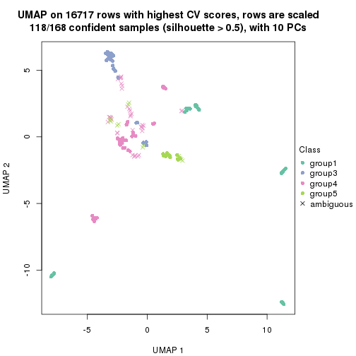
dimension_reduction(res, k = 6, method = "UMAP")
Following heatmap shows how subgroups are split when increasing k:
collect_classes(res)
If matrix rows can be associated to genes, consider to use GO_Enrichment(res,
...) to perform function enrichment for the signature genes.
The object with results only for a single top-value method and a single partition method can be extracted as:
res = res_list["CV", "skmeans"]
# you can also extract it by
# res = res_list["CV:skmeans"]
A summary of res and all the functions that can be applied to it:
res
#> A 'ConsensusPartition' object with k = 2, 3, 4, 5, 6.
#> On a matrix with 16717 rows and 168 columns.
#> Top rows (1000, 2000, 3000, 4000, 5000) are extracted by 'CV' method.
#> Subgroups are detected by 'skmeans' method.
#> Performed in total 1250 partitions by row resampling.
#> Best k for subgroups seems to be 2.
#>
#> Following methods can be applied to this 'ConsensusPartition' object:
#> [1] "cola_report" "collect_classes" "collect_plots"
#> [4] "collect_stats" "colnames" "compare_signatures"
#> [7] "consensus_heatmap" "dimension_reduction" "functional_enrichment"
#> [10] "get_anno_col" "get_anno" "get_classes"
#> [13] "get_consensus" "get_matrix" "get_membership"
#> [16] "get_param" "get_signatures" "get_stats"
#> [19] "is_best_k" "is_stable_k" "membership_heatmap"
#> [22] "ncol" "nrow" "plot_ecdf"
#> [25] "rownames" "select_partition_number" "show"
#> [28] "suggest_best_k" "test_to_known_factors"
collect_plots() function collects all the plots made from res for all k (number of partitions)
into one single page to provide an easy and fast comparison between different k.
collect_plots(res)
The plots are:
k and the heatmap of
predicted classes for each k.k.k.k.All the plots in panels can be made by individual functions and they are plotted later in this section.
select_partition_number() produces several plots showing different
statistics for choosing “optimized” k. There are following statistics:
k;k, the area increased is defined as \(A_k - A_{k-1}\).The detailed explanations of these statistics can be found in the cola vignette.
Generally speaking, lower PAC score, higher mean silhouette score or higher
concordance corresponds to better partition. Rand index and Jaccard index
measure how similar the current partition is compared to partition with k-1.
If they are too similar, we won't accept k is better than k-1.
select_partition_number(res)
The numeric values for all these statistics can be obtained by get_stats().
get_stats(res)
#> k 1-PAC mean_silhouette concordance area_increased Rand Jaccard
#> 2 2 0.605 0.864 0.925 0.4789 0.497 0.497
#> 3 3 0.523 0.628 0.831 0.3489 0.610 0.383
#> 4 4 0.782 0.864 0.906 0.1422 0.816 0.546
#> 5 5 0.799 0.843 0.894 0.0748 0.929 0.729
#> 6 6 0.841 0.808 0.882 0.0384 0.960 0.811
suggest_best_k() suggests the best \(k\) based on these statistics. The rules are as follows:
NA.suggest_best_k(res)
#> [1] 2
Following shows the table of the partitions (You need to click the show/hide
code output link to see it). The membership matrix (columns with name p*)
is inferred by
clue::cl_consensus()
function with the SE method. Basically the value in the membership matrix
represents the probability to belong to a certain group. The finall class
label for an item is determined with the group with highest probability it
belongs to.
In get_classes() function, the entropy is calculated from the membership
matrix and the silhouette score is calculated from the consensus matrix.
cbind(get_classes(res, k = 2), get_membership(res, k = 2))
#> class entropy silhouette p1 p2
#> SRR1768889 2 0.0000 0.8666 0.000 1.000
#> SRR1768890 2 0.0000 0.8666 0.000 1.000
#> SRR1768891 2 0.7219 0.8459 0.200 0.800
#> SRR1768892 2 0.7219 0.8459 0.200 0.800
#> SRR1768893 2 0.7219 0.8459 0.200 0.800
#> SRR1768894 2 0.7219 0.8459 0.200 0.800
#> SRR1768895 1 0.4431 0.8530 0.908 0.092
#> SRR1768896 1 0.4431 0.8530 0.908 0.092
#> SRR1768821 1 0.0000 0.9592 1.000 0.000
#> SRR1768822 1 0.0000 0.9592 1.000 0.000
#> SRR1768823 1 0.0000 0.9592 1.000 0.000
#> SRR1768824 1 0.0000 0.9592 1.000 0.000
#> SRR1768825 1 0.0938 0.9477 0.988 0.012
#> SRR1768826 1 0.0938 0.9477 0.988 0.012
#> SRR1768827 1 0.0000 0.9592 1.000 0.000
#> SRR1768828 1 0.0000 0.9592 1.000 0.000
#> SRR1768829 1 0.0376 0.9555 0.996 0.004
#> SRR1768830 1 0.0376 0.9555 0.996 0.004
#> SRR1768831 2 0.0000 0.8666 0.000 1.000
#> SRR1768832 2 0.0000 0.8666 0.000 1.000
#> SRR1768833 1 0.9775 0.0906 0.588 0.412
#> SRR1768834 1 0.9775 0.0906 0.588 0.412
#> SRR1768835 1 0.9775 0.0906 0.588 0.412
#> SRR1768836 2 0.7219 0.8459 0.200 0.800
#> SRR1768837 2 0.7219 0.8459 0.200 0.800
#> SRR1768838 2 0.0000 0.8666 0.000 1.000
#> SRR1768839 2 0.0000 0.8666 0.000 1.000
#> SRR1768840 2 0.0000 0.8666 0.000 1.000
#> SRR1768841 2 0.0000 0.8666 0.000 1.000
#> SRR1768842 2 0.7219 0.8459 0.200 0.800
#> SRR1768843 2 0.7219 0.8459 0.200 0.800
#> SRR1768844 2 0.0000 0.8666 0.000 1.000
#> SRR1768845 2 0.0000 0.8666 0.000 1.000
#> SRR1768846 2 0.0000 0.8666 0.000 1.000
#> SRR1768847 2 0.0000 0.8666 0.000 1.000
#> SRR1768848 2 0.0000 0.8666 0.000 1.000
#> SRR1768849 2 0.0000 0.8666 0.000 1.000
#> SRR1768850 2 0.0000 0.8666 0.000 1.000
#> SRR1768851 2 0.0000 0.8666 0.000 1.000
#> SRR1768852 1 0.0000 0.9592 1.000 0.000
#> SRR1768853 1 0.0000 0.9592 1.000 0.000
#> SRR1768854 1 0.0000 0.9592 1.000 0.000
#> SRR1768855 2 0.0000 0.8666 0.000 1.000
#> SRR1768856 2 0.0000 0.8666 0.000 1.000
#> SRR1768857 2 0.0000 0.8666 0.000 1.000
#> SRR1768858 2 0.0938 0.8663 0.012 0.988
#> SRR1768859 2 0.0938 0.8663 0.012 0.988
#> SRR1768860 2 0.0938 0.8663 0.012 0.988
#> SRR1768861 2 0.0000 0.8666 0.000 1.000
#> SRR1768862 2 0.0000 0.8666 0.000 1.000
#> SRR1768863 2 0.0000 0.8666 0.000 1.000
#> SRR1768864 2 0.0000 0.8666 0.000 1.000
#> SRR1768865 2 0.0000 0.8666 0.000 1.000
#> SRR1768866 2 0.0000 0.8666 0.000 1.000
#> SRR1768867 1 0.0000 0.9592 1.000 0.000
#> SRR1768868 1 0.0000 0.9592 1.000 0.000
#> SRR1768869 1 0.0000 0.9592 1.000 0.000
#> SRR1768870 1 0.0000 0.9592 1.000 0.000
#> SRR1768871 1 0.9896 -0.0310 0.560 0.440
#> SRR1768872 1 0.9896 -0.0310 0.560 0.440
#> SRR1768873 1 0.0000 0.9592 1.000 0.000
#> SRR1768874 1 0.0000 0.9592 1.000 0.000
#> SRR1768875 2 0.0000 0.8666 0.000 1.000
#> SRR1768876 2 0.0000 0.8666 0.000 1.000
#> SRR1768877 2 0.0000 0.8666 0.000 1.000
#> SRR1768878 2 0.0000 0.8666 0.000 1.000
#> SRR1768879 2 0.0000 0.8666 0.000 1.000
#> SRR1768880 2 0.0000 0.8666 0.000 1.000
#> SRR1768881 2 0.0000 0.8666 0.000 1.000
#> SRR1768882 2 0.0000 0.8666 0.000 1.000
#> SRR1768883 2 0.0000 0.8666 0.000 1.000
#> SRR1768884 2 0.0000 0.8666 0.000 1.000
#> SRR1768885 2 0.0000 0.8666 0.000 1.000
#> SRR1768886 2 0.0000 0.8666 0.000 1.000
#> SRR1768887 2 0.0000 0.8666 0.000 1.000
#> SRR1768888 2 0.0000 0.8666 0.000 1.000
#> SRR1768897 2 0.9710 0.5349 0.400 0.600
#> SRR1768898 2 0.9710 0.5349 0.400 0.600
#> SRR1768899 2 0.7219 0.8459 0.200 0.800
#> SRR1768900 2 0.7219 0.8459 0.200 0.800
#> SRR1768901 2 0.7219 0.8459 0.200 0.800
#> SRR1768902 2 0.7219 0.8459 0.200 0.800
#> SRR1768903 2 0.7219 0.8459 0.200 0.800
#> SRR1768904 2 0.7219 0.8459 0.200 0.800
#> SRR1768905 2 0.7219 0.8459 0.200 0.800
#> SRR1768906 2 0.7219 0.8459 0.200 0.800
#> SRR1768907 2 0.7219 0.8459 0.200 0.800
#> SRR1768908 2 0.7219 0.8459 0.200 0.800
#> SRR1768909 2 0.7219 0.8459 0.200 0.800
#> SRR1768910 2 0.7219 0.8459 0.200 0.800
#> SRR1768911 2 0.7219 0.8459 0.200 0.800
#> SRR1768912 2 0.7219 0.8459 0.200 0.800
#> SRR1768913 2 0.7219 0.8459 0.200 0.800
#> SRR1768914 2 0.7219 0.8459 0.200 0.800
#> SRR1768915 2 0.7219 0.8459 0.200 0.800
#> SRR1768916 2 0.9427 0.6180 0.360 0.640
#> SRR1768917 1 0.0000 0.9592 1.000 0.000
#> SRR1768918 2 0.7219 0.8459 0.200 0.800
#> SRR1768919 2 0.7219 0.8459 0.200 0.800
#> SRR1768920 1 0.0000 0.9592 1.000 0.000
#> SRR1768921 1 0.0000 0.9592 1.000 0.000
#> SRR1768922 2 0.7219 0.8459 0.200 0.800
#> SRR1768923 2 0.7219 0.8459 0.200 0.800
#> SRR1768924 2 0.9710 0.5349 0.400 0.600
#> SRR1768925 2 0.9710 0.5349 0.400 0.600
#> SRR1768926 2 0.7219 0.8459 0.200 0.800
#> SRR1768927 2 0.7219 0.8459 0.200 0.800
#> SRR1768928 2 0.7219 0.8459 0.200 0.800
#> SRR1768929 2 0.7219 0.8459 0.200 0.800
#> SRR1768930 1 0.0000 0.9592 1.000 0.000
#> SRR1768931 1 0.0000 0.9592 1.000 0.000
#> SRR1768932 1 0.0000 0.9592 1.000 0.000
#> SRR1768933 1 0.0000 0.9592 1.000 0.000
#> SRR1768934 1 0.0000 0.9592 1.000 0.000
#> SRR1768935 1 0.0000 0.9592 1.000 0.000
#> SRR1768936 1 0.0000 0.9592 1.000 0.000
#> SRR1768937 1 0.0000 0.9592 1.000 0.000
#> SRR1768938 1 0.0000 0.9592 1.000 0.000
#> SRR1768939 1 0.0000 0.9592 1.000 0.000
#> SRR1768940 1 0.0000 0.9592 1.000 0.000
#> SRR1768941 1 0.7219 0.7133 0.800 0.200
#> SRR1768942 1 0.7219 0.7133 0.800 0.200
#> SRR1768943 1 0.0000 0.9592 1.000 0.000
#> SRR1768944 1 0.0000 0.9592 1.000 0.000
#> SRR1768945 1 0.0000 0.9592 1.000 0.000
#> SRR1768946 1 0.0000 0.9592 1.000 0.000
#> SRR1768947 2 0.7219 0.8459 0.200 0.800
#> SRR1768948 2 0.7219 0.8459 0.200 0.800
#> SRR1768949 2 0.7219 0.8459 0.200 0.800
#> SRR1768950 1 0.0000 0.9592 1.000 0.000
#> SRR1768954 1 0.0000 0.9592 1.000 0.000
#> SRR1768955 1 0.0000 0.9592 1.000 0.000
#> SRR1768956 1 0.0000 0.9592 1.000 0.000
#> SRR1768957 1 0.0000 0.9592 1.000 0.000
#> SRR1768958 1 0.0000 0.9592 1.000 0.000
#> SRR1768959 1 0.0000 0.9592 1.000 0.000
#> SRR1768960 1 0.0000 0.9592 1.000 0.000
#> SRR1768961 1 0.0000 0.9592 1.000 0.000
#> SRR1768952 2 0.9491 0.6026 0.368 0.632
#> SRR1768953 2 0.9491 0.6026 0.368 0.632
#> SRR1768962 1 0.0000 0.9592 1.000 0.000
#> SRR1768963 1 0.0000 0.9592 1.000 0.000
#> SRR1768964 1 0.0000 0.9592 1.000 0.000
#> SRR1768965 1 0.0000 0.9592 1.000 0.000
#> SRR1768966 1 0.0000 0.9592 1.000 0.000
#> SRR1768967 1 0.0000 0.9592 1.000 0.000
#> SRR1768968 1 0.0000 0.9592 1.000 0.000
#> SRR1768969 1 0.0000 0.9592 1.000 0.000
#> SRR1768970 1 0.0000 0.9592 1.000 0.000
#> SRR1768971 1 0.0000 0.9592 1.000 0.000
#> SRR1768972 1 0.0000 0.9592 1.000 0.000
#> SRR1768973 1 0.0000 0.9592 1.000 0.000
#> SRR1768974 1 0.0000 0.9592 1.000 0.000
#> SRR1768975 1 0.0000 0.9592 1.000 0.000
#> SRR1768976 1 0.0000 0.9592 1.000 0.000
#> SRR1768977 1 0.0000 0.9592 1.000 0.000
#> SRR1768978 1 0.0000 0.9592 1.000 0.000
#> SRR1768979 1 0.0000 0.9592 1.000 0.000
#> SRR1768980 1 0.0000 0.9592 1.000 0.000
#> SRR1768981 1 0.0000 0.9592 1.000 0.000
#> SRR1768982 1 0.0000 0.9592 1.000 0.000
#> SRR1768983 1 0.0000 0.9592 1.000 0.000
#> SRR1768984 1 0.0000 0.9592 1.000 0.000
#> SRR1768985 1 0.0000 0.9592 1.000 0.000
#> SRR1768986 1 0.0000 0.9592 1.000 0.000
#> SRR1768987 1 0.0000 0.9592 1.000 0.000
#> SRR1768988 1 0.0000 0.9592 1.000 0.000
#> SRR1768989 1 0.0000 0.9592 1.000 0.000
cbind(get_classes(res, k = 3), get_membership(res, k = 3))
#> class entropy silhouette p1 p2 p3
#> SRR1768889 3 0.0000 0.9822 0.000 0.000 1.000
#> SRR1768890 3 0.0000 0.9822 0.000 0.000 1.000
#> SRR1768891 2 0.2356 0.6403 0.000 0.928 0.072
#> SRR1768892 2 0.2356 0.6403 0.000 0.928 0.072
#> SRR1768893 2 0.2625 0.6402 0.000 0.916 0.084
#> SRR1768894 2 0.2625 0.6402 0.000 0.916 0.084
#> SRR1768895 2 0.0000 0.6350 0.000 1.000 0.000
#> SRR1768896 2 0.0000 0.6350 0.000 1.000 0.000
#> SRR1768821 2 0.5497 0.4558 0.292 0.708 0.000
#> SRR1768822 2 0.5497 0.4558 0.292 0.708 0.000
#> SRR1768823 2 0.6126 0.3623 0.400 0.600 0.000
#> SRR1768824 2 0.6126 0.3623 0.400 0.600 0.000
#> SRR1768825 2 0.0000 0.6350 0.000 1.000 0.000
#> SRR1768826 2 0.0000 0.6350 0.000 1.000 0.000
#> SRR1768827 2 0.6126 0.3623 0.400 0.600 0.000
#> SRR1768828 2 0.6126 0.3623 0.400 0.600 0.000
#> SRR1768829 2 0.0000 0.6350 0.000 1.000 0.000
#> SRR1768830 2 0.0000 0.6350 0.000 1.000 0.000
#> SRR1768831 3 0.0747 0.9654 0.016 0.000 0.984
#> SRR1768832 3 0.0747 0.9654 0.016 0.000 0.984
#> SRR1768833 1 0.8559 0.1294 0.512 0.388 0.100
#> SRR1768834 1 0.8559 0.1294 0.512 0.388 0.100
#> SRR1768835 1 0.8559 0.1294 0.512 0.388 0.100
#> SRR1768836 1 0.9402 -0.0534 0.416 0.412 0.172
#> SRR1768837 1 0.9402 -0.0534 0.416 0.412 0.172
#> SRR1768838 3 0.0000 0.9822 0.000 0.000 1.000
#> SRR1768839 3 0.0000 0.9822 0.000 0.000 1.000
#> SRR1768840 3 0.3340 0.8419 0.000 0.120 0.880
#> SRR1768841 3 0.3340 0.8419 0.000 0.120 0.880
#> SRR1768842 2 0.7133 0.5468 0.096 0.712 0.192
#> SRR1768843 2 0.7133 0.5468 0.096 0.712 0.192
#> SRR1768844 3 0.0000 0.9822 0.000 0.000 1.000
#> SRR1768845 3 0.0000 0.9822 0.000 0.000 1.000
#> SRR1768846 3 0.0000 0.9822 0.000 0.000 1.000
#> SRR1768847 3 0.0000 0.9822 0.000 0.000 1.000
#> SRR1768848 3 0.0000 0.9822 0.000 0.000 1.000
#> SRR1768849 3 0.0000 0.9822 0.000 0.000 1.000
#> SRR1768850 3 0.0000 0.9822 0.000 0.000 1.000
#> SRR1768851 3 0.0000 0.9822 0.000 0.000 1.000
#> SRR1768852 1 0.6291 0.1188 0.532 0.468 0.000
#> SRR1768853 1 0.6291 0.1188 0.532 0.468 0.000
#> SRR1768854 1 0.6291 0.1188 0.532 0.468 0.000
#> SRR1768855 3 0.0000 0.9822 0.000 0.000 1.000
#> SRR1768856 3 0.0000 0.9822 0.000 0.000 1.000
#> SRR1768857 3 0.0000 0.9822 0.000 0.000 1.000
#> SRR1768858 2 0.6079 0.3512 0.000 0.612 0.388
#> SRR1768859 2 0.6079 0.3512 0.000 0.612 0.388
#> SRR1768860 2 0.6079 0.3512 0.000 0.612 0.388
#> SRR1768861 3 0.0000 0.9822 0.000 0.000 1.000
#> SRR1768862 3 0.0000 0.9822 0.000 0.000 1.000
#> SRR1768863 2 0.6295 0.0798 0.000 0.528 0.472
#> SRR1768864 2 0.6295 0.0798 0.000 0.528 0.472
#> SRR1768865 3 0.0000 0.9822 0.000 0.000 1.000
#> SRR1768866 3 0.0000 0.9822 0.000 0.000 1.000
#> SRR1768867 2 0.6126 0.3623 0.400 0.600 0.000
#> SRR1768868 2 0.6126 0.3623 0.400 0.600 0.000
#> SRR1768869 1 0.6302 -0.1045 0.520 0.480 0.000
#> SRR1768870 1 0.6302 -0.1045 0.520 0.480 0.000
#> SRR1768871 2 0.3340 0.5704 0.120 0.880 0.000
#> SRR1768872 2 0.3340 0.5704 0.120 0.880 0.000
#> SRR1768873 2 0.6225 0.3025 0.432 0.568 0.000
#> SRR1768874 2 0.6225 0.3025 0.432 0.568 0.000
#> SRR1768875 3 0.0000 0.9822 0.000 0.000 1.000
#> SRR1768876 3 0.0000 0.9822 0.000 0.000 1.000
#> SRR1768877 3 0.0000 0.9822 0.000 0.000 1.000
#> SRR1768878 3 0.0000 0.9822 0.000 0.000 1.000
#> SRR1768879 3 0.0000 0.9822 0.000 0.000 1.000
#> SRR1768880 3 0.0000 0.9822 0.000 0.000 1.000
#> SRR1768881 3 0.3267 0.8334 0.000 0.116 0.884
#> SRR1768882 3 0.3267 0.8334 0.000 0.116 0.884
#> SRR1768883 3 0.0000 0.9822 0.000 0.000 1.000
#> SRR1768884 3 0.0000 0.9822 0.000 0.000 1.000
#> SRR1768885 3 0.0000 0.9822 0.000 0.000 1.000
#> SRR1768886 3 0.0000 0.9822 0.000 0.000 1.000
#> SRR1768887 3 0.0000 0.9822 0.000 0.000 1.000
#> SRR1768888 3 0.0000 0.9822 0.000 0.000 1.000
#> SRR1768897 2 0.0000 0.6350 0.000 1.000 0.000
#> SRR1768898 2 0.0000 0.6350 0.000 1.000 0.000
#> SRR1768899 2 0.0237 0.6357 0.000 0.996 0.004
#> SRR1768900 2 0.0237 0.6357 0.000 0.996 0.004
#> SRR1768901 2 0.3340 0.6376 0.000 0.880 0.120
#> SRR1768902 2 0.3340 0.6376 0.000 0.880 0.120
#> SRR1768903 2 0.3340 0.6376 0.000 0.880 0.120
#> SRR1768904 2 0.3340 0.6376 0.000 0.880 0.120
#> SRR1768905 2 0.3340 0.6376 0.000 0.880 0.120
#> SRR1768906 2 0.3340 0.6376 0.000 0.880 0.120
#> SRR1768907 2 0.4452 0.6115 0.000 0.808 0.192
#> SRR1768908 2 0.4452 0.6115 0.000 0.808 0.192
#> SRR1768909 2 0.4452 0.6115 0.000 0.808 0.192
#> SRR1768910 2 0.4452 0.6115 0.000 0.808 0.192
#> SRR1768911 2 0.4452 0.6115 0.000 0.808 0.192
#> SRR1768912 2 0.4452 0.6115 0.000 0.808 0.192
#> SRR1768913 2 0.4452 0.6115 0.000 0.808 0.192
#> SRR1768914 2 0.4452 0.6115 0.000 0.808 0.192
#> SRR1768915 2 0.4452 0.6115 0.000 0.808 0.192
#> SRR1768916 2 0.0000 0.6350 0.000 1.000 0.000
#> SRR1768917 2 0.6126 0.3623 0.400 0.600 0.000
#> SRR1768918 2 0.4452 0.6115 0.000 0.808 0.192
#> SRR1768919 2 0.4452 0.6115 0.000 0.808 0.192
#> SRR1768920 2 0.6126 0.3623 0.400 0.600 0.000
#> SRR1768921 2 0.6126 0.3623 0.400 0.600 0.000
#> SRR1768922 2 0.4452 0.6115 0.000 0.808 0.192
#> SRR1768923 2 0.4452 0.6115 0.000 0.808 0.192
#> SRR1768924 2 0.9547 0.0688 0.392 0.416 0.192
#> SRR1768925 2 0.9547 0.0688 0.392 0.416 0.192
#> SRR1768926 2 0.9547 0.0688 0.392 0.416 0.192
#> SRR1768927 2 0.9547 0.0688 0.392 0.416 0.192
#> SRR1768928 2 0.9547 0.0688 0.392 0.416 0.192
#> SRR1768929 2 0.9547 0.0688 0.392 0.416 0.192
#> SRR1768930 2 0.6126 0.3623 0.400 0.600 0.000
#> SRR1768931 2 0.6126 0.3623 0.400 0.600 0.000
#> SRR1768932 2 0.6126 0.3623 0.400 0.600 0.000
#> SRR1768933 2 0.6126 0.3623 0.400 0.600 0.000
#> SRR1768934 2 0.6126 0.3623 0.400 0.600 0.000
#> SRR1768935 2 0.6126 0.3623 0.400 0.600 0.000
#> SRR1768936 2 0.6126 0.3623 0.400 0.600 0.000
#> SRR1768937 2 0.6126 0.3623 0.400 0.600 0.000
#> SRR1768938 2 0.6126 0.3623 0.400 0.600 0.000
#> SRR1768939 2 0.6180 0.3357 0.416 0.584 0.000
#> SRR1768940 2 0.6180 0.3357 0.416 0.584 0.000
#> SRR1768941 2 0.6180 0.3357 0.416 0.584 0.000
#> SRR1768942 2 0.6180 0.3357 0.416 0.584 0.000
#> SRR1768943 2 0.6180 0.3357 0.416 0.584 0.000
#> SRR1768944 2 0.6180 0.3357 0.416 0.584 0.000
#> SRR1768945 2 0.6180 0.3357 0.416 0.584 0.000
#> SRR1768946 2 0.6180 0.3357 0.416 0.584 0.000
#> SRR1768947 2 0.4452 0.6115 0.000 0.808 0.192
#> SRR1768948 2 0.4452 0.6115 0.000 0.808 0.192
#> SRR1768949 2 0.4452 0.6115 0.000 0.808 0.192
#> SRR1768950 2 0.0237 0.6339 0.004 0.996 0.000
#> SRR1768954 1 0.0000 0.8402 1.000 0.000 0.000
#> SRR1768955 1 0.0000 0.8402 1.000 0.000 0.000
#> SRR1768956 1 0.0000 0.8402 1.000 0.000 0.000
#> SRR1768957 1 0.0000 0.8402 1.000 0.000 0.000
#> SRR1768958 1 0.0000 0.8402 1.000 0.000 0.000
#> SRR1768959 1 0.0000 0.8402 1.000 0.000 0.000
#> SRR1768960 1 0.0000 0.8402 1.000 0.000 0.000
#> SRR1768961 1 0.0000 0.8402 1.000 0.000 0.000
#> SRR1768952 2 0.0000 0.6350 0.000 1.000 0.000
#> SRR1768953 2 0.0000 0.6350 0.000 1.000 0.000
#> SRR1768962 1 0.0000 0.8402 1.000 0.000 0.000
#> SRR1768963 1 0.0000 0.8402 1.000 0.000 0.000
#> SRR1768964 1 0.0000 0.8402 1.000 0.000 0.000
#> SRR1768965 1 0.0000 0.8402 1.000 0.000 0.000
#> SRR1768966 1 0.0000 0.8402 1.000 0.000 0.000
#> SRR1768967 1 0.0000 0.8402 1.000 0.000 0.000
#> SRR1768968 1 0.0000 0.8402 1.000 0.000 0.000
#> SRR1768969 1 0.0000 0.8402 1.000 0.000 0.000
#> SRR1768970 1 0.0000 0.8402 1.000 0.000 0.000
#> SRR1768971 1 0.0000 0.8402 1.000 0.000 0.000
#> SRR1768972 1 0.0000 0.8402 1.000 0.000 0.000
#> SRR1768973 1 0.0000 0.8402 1.000 0.000 0.000
#> SRR1768974 1 0.0000 0.8402 1.000 0.000 0.000
#> SRR1768975 1 0.0000 0.8402 1.000 0.000 0.000
#> SRR1768976 1 0.0000 0.8402 1.000 0.000 0.000
#> SRR1768977 1 0.0000 0.8402 1.000 0.000 0.000
#> SRR1768978 1 0.0000 0.8402 1.000 0.000 0.000
#> SRR1768979 1 0.0000 0.8402 1.000 0.000 0.000
#> SRR1768980 1 0.0000 0.8402 1.000 0.000 0.000
#> SRR1768981 1 0.0000 0.8402 1.000 0.000 0.000
#> SRR1768982 1 0.0000 0.8402 1.000 0.000 0.000
#> SRR1768983 1 0.0000 0.8402 1.000 0.000 0.000
#> SRR1768984 1 0.4555 0.5610 0.800 0.200 0.000
#> SRR1768985 1 0.4555 0.5610 0.800 0.200 0.000
#> SRR1768986 1 0.0000 0.8402 1.000 0.000 0.000
#> SRR1768987 1 0.0000 0.8402 1.000 0.000 0.000
#> SRR1768988 1 0.0000 0.8402 1.000 0.000 0.000
#> SRR1768989 1 0.0000 0.8402 1.000 0.000 0.000
cbind(get_classes(res, k = 4), get_membership(res, k = 4))
#> class entropy silhouette p1 p2 p3 p4
#> SRR1768889 3 0.0000 0.9690 0.000 0.000 1.000 0.000
#> SRR1768890 3 0.0000 0.9690 0.000 0.000 1.000 0.000
#> SRR1768891 2 0.5070 0.6901 0.000 0.620 0.008 0.372
#> SRR1768892 2 0.5070 0.6901 0.000 0.620 0.008 0.372
#> SRR1768893 2 0.4877 0.7574 0.000 0.664 0.008 0.328
#> SRR1768894 2 0.4877 0.7574 0.000 0.664 0.008 0.328
#> SRR1768895 4 0.2589 0.7972 0.000 0.116 0.000 0.884
#> SRR1768896 4 0.2589 0.7972 0.000 0.116 0.000 0.884
#> SRR1768821 4 0.0188 0.9179 0.000 0.004 0.000 0.996
#> SRR1768822 4 0.0188 0.9179 0.000 0.004 0.000 0.996
#> SRR1768823 4 0.0188 0.9179 0.000 0.004 0.000 0.996
#> SRR1768824 4 0.0188 0.9179 0.000 0.004 0.000 0.996
#> SRR1768825 4 0.0336 0.9164 0.000 0.008 0.000 0.992
#> SRR1768826 4 0.0336 0.9164 0.000 0.008 0.000 0.992
#> SRR1768827 4 0.0188 0.9179 0.000 0.004 0.000 0.996
#> SRR1768828 4 0.0188 0.9179 0.000 0.004 0.000 0.996
#> SRR1768829 4 0.0188 0.9179 0.000 0.004 0.000 0.996
#> SRR1768830 4 0.0188 0.9179 0.000 0.004 0.000 0.996
#> SRR1768831 3 0.0469 0.9611 0.000 0.012 0.988 0.000
#> SRR1768832 3 0.0469 0.9611 0.000 0.012 0.988 0.000
#> SRR1768833 2 0.3982 0.5541 0.220 0.776 0.004 0.000
#> SRR1768834 2 0.3982 0.5541 0.220 0.776 0.004 0.000
#> SRR1768835 2 0.3982 0.5541 0.220 0.776 0.004 0.000
#> SRR1768836 2 0.0524 0.7661 0.008 0.988 0.004 0.000
#> SRR1768837 2 0.0524 0.7661 0.008 0.988 0.004 0.000
#> SRR1768838 3 0.0469 0.9611 0.000 0.012 0.988 0.000
#> SRR1768839 3 0.0469 0.9611 0.000 0.012 0.988 0.000
#> SRR1768840 3 0.4992 0.0259 0.000 0.476 0.524 0.000
#> SRR1768841 3 0.4992 0.0259 0.000 0.476 0.524 0.000
#> SRR1768842 2 0.0524 0.7674 0.000 0.988 0.004 0.008
#> SRR1768843 2 0.0524 0.7674 0.000 0.988 0.004 0.008
#> SRR1768844 3 0.0000 0.9690 0.000 0.000 1.000 0.000
#> SRR1768845 3 0.0000 0.9690 0.000 0.000 1.000 0.000
#> SRR1768846 3 0.0000 0.9690 0.000 0.000 1.000 0.000
#> SRR1768847 3 0.0000 0.9690 0.000 0.000 1.000 0.000
#> SRR1768848 3 0.0000 0.9690 0.000 0.000 1.000 0.000
#> SRR1768849 3 0.0000 0.9690 0.000 0.000 1.000 0.000
#> SRR1768850 3 0.0000 0.9690 0.000 0.000 1.000 0.000
#> SRR1768851 3 0.0000 0.9690 0.000 0.000 1.000 0.000
#> SRR1768852 4 0.7013 0.3117 0.152 0.292 0.000 0.556
#> SRR1768853 4 0.7013 0.3117 0.152 0.292 0.000 0.556
#> SRR1768854 4 0.7013 0.3117 0.152 0.292 0.000 0.556
#> SRR1768855 3 0.0000 0.9690 0.000 0.000 1.000 0.000
#> SRR1768856 3 0.0000 0.9690 0.000 0.000 1.000 0.000
#> SRR1768857 3 0.0000 0.9690 0.000 0.000 1.000 0.000
#> SRR1768858 2 0.6320 0.7267 0.000 0.660 0.160 0.180
#> SRR1768859 2 0.6320 0.7267 0.000 0.660 0.160 0.180
#> SRR1768860 2 0.6320 0.7267 0.000 0.660 0.160 0.180
#> SRR1768861 3 0.0000 0.9690 0.000 0.000 1.000 0.000
#> SRR1768862 3 0.0000 0.9690 0.000 0.000 1.000 0.000
#> SRR1768863 2 0.4576 0.6705 0.000 0.748 0.232 0.020
#> SRR1768864 2 0.4576 0.6705 0.000 0.748 0.232 0.020
#> SRR1768865 3 0.0000 0.9690 0.000 0.000 1.000 0.000
#> SRR1768866 3 0.0000 0.9690 0.000 0.000 1.000 0.000
#> SRR1768867 4 0.0336 0.9170 0.000 0.008 0.000 0.992
#> SRR1768868 4 0.0336 0.9170 0.000 0.008 0.000 0.992
#> SRR1768869 4 0.3801 0.7175 0.000 0.220 0.000 0.780
#> SRR1768870 4 0.3801 0.7175 0.000 0.220 0.000 0.780
#> SRR1768871 2 0.2921 0.6910 0.000 0.860 0.000 0.140
#> SRR1768872 2 0.2921 0.6910 0.000 0.860 0.000 0.140
#> SRR1768873 4 0.3764 0.7212 0.000 0.216 0.000 0.784
#> SRR1768874 4 0.3764 0.7212 0.000 0.216 0.000 0.784
#> SRR1768875 3 0.0000 0.9690 0.000 0.000 1.000 0.000
#> SRR1768876 3 0.0000 0.9690 0.000 0.000 1.000 0.000
#> SRR1768877 3 0.0000 0.9690 0.000 0.000 1.000 0.000
#> SRR1768878 3 0.0000 0.9690 0.000 0.000 1.000 0.000
#> SRR1768879 3 0.0000 0.9690 0.000 0.000 1.000 0.000
#> SRR1768880 3 0.0000 0.9690 0.000 0.000 1.000 0.000
#> SRR1768881 3 0.0336 0.9627 0.000 0.000 0.992 0.008
#> SRR1768882 3 0.0336 0.9627 0.000 0.000 0.992 0.008
#> SRR1768883 3 0.0000 0.9690 0.000 0.000 1.000 0.000
#> SRR1768884 3 0.0000 0.9690 0.000 0.000 1.000 0.000
#> SRR1768885 3 0.0000 0.9690 0.000 0.000 1.000 0.000
#> SRR1768886 3 0.0000 0.9690 0.000 0.000 1.000 0.000
#> SRR1768887 3 0.0000 0.9690 0.000 0.000 1.000 0.000
#> SRR1768888 3 0.0000 0.9690 0.000 0.000 1.000 0.000
#> SRR1768897 2 0.4356 0.7962 0.000 0.708 0.000 0.292
#> SRR1768898 2 0.4356 0.7962 0.000 0.708 0.000 0.292
#> SRR1768899 2 0.3837 0.8508 0.000 0.776 0.000 0.224
#> SRR1768900 2 0.3837 0.8508 0.000 0.776 0.000 0.224
#> SRR1768901 2 0.3837 0.8508 0.000 0.776 0.000 0.224
#> SRR1768902 2 0.3837 0.8508 0.000 0.776 0.000 0.224
#> SRR1768903 2 0.3837 0.8508 0.000 0.776 0.000 0.224
#> SRR1768904 2 0.3837 0.8508 0.000 0.776 0.000 0.224
#> SRR1768905 2 0.3837 0.8508 0.000 0.776 0.000 0.224
#> SRR1768906 2 0.3837 0.8508 0.000 0.776 0.000 0.224
#> SRR1768907 2 0.3945 0.8528 0.000 0.780 0.004 0.216
#> SRR1768908 2 0.3945 0.8528 0.000 0.780 0.004 0.216
#> SRR1768909 2 0.3945 0.8528 0.000 0.780 0.004 0.216
#> SRR1768910 2 0.3945 0.8528 0.000 0.780 0.004 0.216
#> SRR1768911 2 0.3945 0.8528 0.000 0.780 0.004 0.216
#> SRR1768912 2 0.3945 0.8528 0.000 0.780 0.004 0.216
#> SRR1768913 2 0.3945 0.8528 0.000 0.780 0.004 0.216
#> SRR1768914 2 0.3945 0.8528 0.000 0.780 0.004 0.216
#> SRR1768915 2 0.3945 0.8528 0.000 0.780 0.004 0.216
#> SRR1768916 2 0.3610 0.8364 0.000 0.800 0.000 0.200
#> SRR1768917 4 0.0336 0.9170 0.000 0.008 0.000 0.992
#> SRR1768918 2 0.3982 0.8520 0.000 0.776 0.004 0.220
#> SRR1768919 2 0.3982 0.8520 0.000 0.776 0.004 0.220
#> SRR1768920 4 0.0188 0.9179 0.000 0.004 0.000 0.996
#> SRR1768921 4 0.0188 0.9179 0.000 0.004 0.000 0.996
#> SRR1768922 2 0.3982 0.8520 0.000 0.776 0.004 0.220
#> SRR1768923 2 0.3982 0.8520 0.000 0.776 0.004 0.220
#> SRR1768924 2 0.0524 0.7661 0.008 0.988 0.004 0.000
#> SRR1768925 2 0.0524 0.7661 0.008 0.988 0.004 0.000
#> SRR1768926 2 0.0524 0.7661 0.008 0.988 0.004 0.000
#> SRR1768927 2 0.0524 0.7661 0.008 0.988 0.004 0.000
#> SRR1768928 2 0.0524 0.7661 0.008 0.988 0.004 0.000
#> SRR1768929 2 0.0524 0.7661 0.008 0.988 0.004 0.000
#> SRR1768930 4 0.0817 0.9119 0.000 0.024 0.000 0.976
#> SRR1768931 4 0.0817 0.9119 0.000 0.024 0.000 0.976
#> SRR1768932 4 0.0817 0.9119 0.000 0.024 0.000 0.976
#> SRR1768933 4 0.0817 0.9119 0.000 0.024 0.000 0.976
#> SRR1768934 4 0.0817 0.9119 0.000 0.024 0.000 0.976
#> SRR1768935 4 0.0817 0.9119 0.000 0.024 0.000 0.976
#> SRR1768936 4 0.0817 0.9119 0.000 0.024 0.000 0.976
#> SRR1768937 4 0.0817 0.9119 0.000 0.024 0.000 0.976
#> SRR1768938 4 0.0817 0.9119 0.000 0.024 0.000 0.976
#> SRR1768939 4 0.0804 0.9148 0.008 0.012 0.000 0.980
#> SRR1768940 4 0.0804 0.9148 0.008 0.012 0.000 0.980
#> SRR1768941 4 0.0804 0.9148 0.008 0.012 0.000 0.980
#> SRR1768942 4 0.0804 0.9148 0.008 0.012 0.000 0.980
#> SRR1768943 4 0.0804 0.9148 0.008 0.012 0.000 0.980
#> SRR1768944 4 0.0804 0.9148 0.008 0.012 0.000 0.980
#> SRR1768945 4 0.0804 0.9148 0.008 0.012 0.000 0.980
#> SRR1768946 4 0.0804 0.9148 0.008 0.012 0.000 0.980
#> SRR1768947 2 0.3982 0.8520 0.000 0.776 0.004 0.220
#> SRR1768948 2 0.3982 0.8520 0.000 0.776 0.004 0.220
#> SRR1768949 2 0.3982 0.8520 0.000 0.776 0.004 0.220
#> SRR1768950 4 0.0336 0.9170 0.000 0.008 0.000 0.992
#> SRR1768954 1 0.1302 0.9598 0.956 0.044 0.000 0.000
#> SRR1768955 1 0.1302 0.9598 0.956 0.044 0.000 0.000
#> SRR1768956 1 0.1302 0.9598 0.956 0.044 0.000 0.000
#> SRR1768957 1 0.1302 0.9598 0.956 0.044 0.000 0.000
#> SRR1768958 1 0.1302 0.9598 0.956 0.044 0.000 0.000
#> SRR1768959 1 0.1302 0.9598 0.956 0.044 0.000 0.000
#> SRR1768960 1 0.1302 0.9598 0.956 0.044 0.000 0.000
#> SRR1768961 1 0.1302 0.9598 0.956 0.044 0.000 0.000
#> SRR1768952 2 0.4134 0.8272 0.000 0.740 0.000 0.260
#> SRR1768953 2 0.4134 0.8272 0.000 0.740 0.000 0.260
#> SRR1768962 1 0.0000 0.9666 1.000 0.000 0.000 0.000
#> SRR1768963 1 0.0000 0.9666 1.000 0.000 0.000 0.000
#> SRR1768964 1 0.0000 0.9666 1.000 0.000 0.000 0.000
#> SRR1768965 1 0.0000 0.9666 1.000 0.000 0.000 0.000
#> SRR1768966 1 0.0000 0.9666 1.000 0.000 0.000 0.000
#> SRR1768967 1 0.0000 0.9666 1.000 0.000 0.000 0.000
#> SRR1768968 1 0.0000 0.9666 1.000 0.000 0.000 0.000
#> SRR1768969 1 0.0000 0.9666 1.000 0.000 0.000 0.000
#> SRR1768970 1 0.0000 0.9666 1.000 0.000 0.000 0.000
#> SRR1768971 1 0.0000 0.9666 1.000 0.000 0.000 0.000
#> SRR1768972 1 0.1302 0.9598 0.956 0.044 0.000 0.000
#> SRR1768973 1 0.1302 0.9598 0.956 0.044 0.000 0.000
#> SRR1768974 1 0.1302 0.9598 0.956 0.044 0.000 0.000
#> SRR1768975 1 0.1302 0.9598 0.956 0.044 0.000 0.000
#> SRR1768976 1 0.1302 0.9598 0.956 0.044 0.000 0.000
#> SRR1768977 1 0.1302 0.9598 0.956 0.044 0.000 0.000
#> SRR1768978 1 0.0000 0.9666 1.000 0.000 0.000 0.000
#> SRR1768979 1 0.0000 0.9666 1.000 0.000 0.000 0.000
#> SRR1768980 1 0.0000 0.9666 1.000 0.000 0.000 0.000
#> SRR1768981 1 0.0000 0.9666 1.000 0.000 0.000 0.000
#> SRR1768982 1 0.0000 0.9666 1.000 0.000 0.000 0.000
#> SRR1768983 1 0.0000 0.9666 1.000 0.000 0.000 0.000
#> SRR1768984 1 0.4539 0.5834 0.720 0.008 0.000 0.272
#> SRR1768985 1 0.4539 0.5834 0.720 0.008 0.000 0.272
#> SRR1768986 1 0.0000 0.9666 1.000 0.000 0.000 0.000
#> SRR1768987 1 0.0000 0.9666 1.000 0.000 0.000 0.000
#> SRR1768988 1 0.0000 0.9666 1.000 0.000 0.000 0.000
#> SRR1768989 1 0.0000 0.9666 1.000 0.000 0.000 0.000
cbind(get_classes(res, k = 5), get_membership(res, k = 5))
#> class entropy silhouette p1 p2 p3 p4 p5
#> SRR1768889 3 0.0000 0.9988 0.000 0.000 1.000 0.000 0.000
#> SRR1768890 3 0.0000 0.9988 0.000 0.000 1.000 0.000 0.000
#> SRR1768891 2 0.4206 0.7034 0.000 0.708 0.000 0.272 0.020
#> SRR1768892 2 0.4206 0.7034 0.000 0.708 0.000 0.272 0.020
#> SRR1768893 2 0.4219 0.7108 0.000 0.716 0.000 0.260 0.024
#> SRR1768894 2 0.4219 0.7108 0.000 0.716 0.000 0.260 0.024
#> SRR1768895 2 0.2377 0.7956 0.000 0.872 0.000 0.128 0.000
#> SRR1768896 2 0.2377 0.7956 0.000 0.872 0.000 0.128 0.000
#> SRR1768821 4 0.2561 0.8412 0.000 0.144 0.000 0.856 0.000
#> SRR1768822 4 0.2561 0.8412 0.000 0.144 0.000 0.856 0.000
#> SRR1768823 4 0.2561 0.8412 0.000 0.144 0.000 0.856 0.000
#> SRR1768824 4 0.2561 0.8412 0.000 0.144 0.000 0.856 0.000
#> SRR1768825 4 0.3876 0.6541 0.000 0.316 0.000 0.684 0.000
#> SRR1768826 4 0.3876 0.6541 0.000 0.316 0.000 0.684 0.000
#> SRR1768827 4 0.2516 0.8421 0.000 0.140 0.000 0.860 0.000
#> SRR1768828 4 0.2516 0.8421 0.000 0.140 0.000 0.860 0.000
#> SRR1768829 4 0.3242 0.7860 0.000 0.216 0.000 0.784 0.000
#> SRR1768830 4 0.3242 0.7860 0.000 0.216 0.000 0.784 0.000
#> SRR1768831 5 0.4138 0.5075 0.000 0.000 0.384 0.000 0.616
#> SRR1768832 5 0.4138 0.5075 0.000 0.000 0.384 0.000 0.616
#> SRR1768833 5 0.1981 0.8341 0.016 0.064 0.000 0.000 0.920
#> SRR1768834 5 0.1981 0.8341 0.016 0.064 0.000 0.000 0.920
#> SRR1768835 5 0.1981 0.8341 0.016 0.064 0.000 0.000 0.920
#> SRR1768836 5 0.1792 0.8412 0.000 0.084 0.000 0.000 0.916
#> SRR1768837 5 0.1792 0.8412 0.000 0.084 0.000 0.000 0.916
#> SRR1768838 5 0.3949 0.5958 0.000 0.000 0.332 0.000 0.668
#> SRR1768839 5 0.3949 0.5958 0.000 0.000 0.332 0.000 0.668
#> SRR1768840 5 0.5197 0.6213 0.000 0.064 0.316 0.000 0.620
#> SRR1768841 5 0.5197 0.6213 0.000 0.064 0.316 0.000 0.620
#> SRR1768842 5 0.2970 0.7892 0.000 0.168 0.000 0.004 0.828
#> SRR1768843 5 0.2970 0.7892 0.000 0.168 0.000 0.004 0.828
#> SRR1768844 3 0.0162 0.9948 0.000 0.004 0.996 0.000 0.000
#> SRR1768845 3 0.0162 0.9948 0.000 0.004 0.996 0.000 0.000
#> SRR1768846 3 0.0000 0.9988 0.000 0.000 1.000 0.000 0.000
#> SRR1768847 3 0.0000 0.9988 0.000 0.000 1.000 0.000 0.000
#> SRR1768848 3 0.0000 0.9988 0.000 0.000 1.000 0.000 0.000
#> SRR1768849 3 0.0000 0.9988 0.000 0.000 1.000 0.000 0.000
#> SRR1768850 3 0.0000 0.9988 0.000 0.000 1.000 0.000 0.000
#> SRR1768851 3 0.0000 0.9988 0.000 0.000 1.000 0.000 0.000
#> SRR1768852 4 0.7487 0.0683 0.100 0.112 0.000 0.436 0.352
#> SRR1768853 4 0.7487 0.0683 0.100 0.112 0.000 0.436 0.352
#> SRR1768854 4 0.7487 0.0683 0.100 0.112 0.000 0.436 0.352
#> SRR1768855 3 0.0000 0.9988 0.000 0.000 1.000 0.000 0.000
#> SRR1768856 3 0.0000 0.9988 0.000 0.000 1.000 0.000 0.000
#> SRR1768857 3 0.0000 0.9988 0.000 0.000 1.000 0.000 0.000
#> SRR1768858 2 0.7875 0.3337 0.000 0.468 0.208 0.188 0.136
#> SRR1768859 2 0.7875 0.3337 0.000 0.468 0.208 0.188 0.136
#> SRR1768860 2 0.7875 0.3337 0.000 0.468 0.208 0.188 0.136
#> SRR1768861 3 0.0000 0.9988 0.000 0.000 1.000 0.000 0.000
#> SRR1768862 3 0.0000 0.9988 0.000 0.000 1.000 0.000 0.000
#> SRR1768863 2 0.3925 0.7705 0.000 0.820 0.080 0.012 0.088
#> SRR1768864 2 0.3925 0.7705 0.000 0.820 0.080 0.012 0.088
#> SRR1768865 3 0.0000 0.9988 0.000 0.000 1.000 0.000 0.000
#> SRR1768866 3 0.0000 0.9988 0.000 0.000 1.000 0.000 0.000
#> SRR1768867 4 0.2707 0.8428 0.000 0.132 0.000 0.860 0.008
#> SRR1768868 4 0.2707 0.8428 0.000 0.132 0.000 0.860 0.008
#> SRR1768869 4 0.3876 0.5798 0.000 0.000 0.000 0.684 0.316
#> SRR1768870 4 0.3876 0.5798 0.000 0.000 0.000 0.684 0.316
#> SRR1768871 5 0.3531 0.7179 0.000 0.036 0.000 0.148 0.816
#> SRR1768872 5 0.3531 0.7179 0.000 0.036 0.000 0.148 0.816
#> SRR1768873 4 0.3424 0.6810 0.000 0.000 0.000 0.760 0.240
#> SRR1768874 4 0.3424 0.6810 0.000 0.000 0.000 0.760 0.240
#> SRR1768875 3 0.0000 0.9988 0.000 0.000 1.000 0.000 0.000
#> SRR1768876 3 0.0000 0.9988 0.000 0.000 1.000 0.000 0.000
#> SRR1768877 3 0.0000 0.9988 0.000 0.000 1.000 0.000 0.000
#> SRR1768878 3 0.0000 0.9988 0.000 0.000 1.000 0.000 0.000
#> SRR1768879 3 0.0000 0.9988 0.000 0.000 1.000 0.000 0.000
#> SRR1768880 3 0.0000 0.9988 0.000 0.000 1.000 0.000 0.000
#> SRR1768881 3 0.0451 0.9866 0.000 0.000 0.988 0.004 0.008
#> SRR1768882 3 0.0451 0.9866 0.000 0.000 0.988 0.004 0.008
#> SRR1768883 3 0.0000 0.9988 0.000 0.000 1.000 0.000 0.000
#> SRR1768884 3 0.0000 0.9988 0.000 0.000 1.000 0.000 0.000
#> SRR1768885 3 0.0000 0.9988 0.000 0.000 1.000 0.000 0.000
#> SRR1768886 3 0.0000 0.9988 0.000 0.000 1.000 0.000 0.000
#> SRR1768887 3 0.0000 0.9988 0.000 0.000 1.000 0.000 0.000
#> SRR1768888 3 0.0000 0.9988 0.000 0.000 1.000 0.000 0.000
#> SRR1768897 2 0.0162 0.9004 0.000 0.996 0.000 0.004 0.000
#> SRR1768898 2 0.0162 0.9004 0.000 0.996 0.000 0.004 0.000
#> SRR1768899 2 0.0404 0.9014 0.000 0.988 0.000 0.000 0.012
#> SRR1768900 2 0.0404 0.9014 0.000 0.988 0.000 0.000 0.012
#> SRR1768901 2 0.0324 0.9002 0.000 0.992 0.000 0.004 0.004
#> SRR1768902 2 0.0324 0.9002 0.000 0.992 0.000 0.004 0.004
#> SRR1768903 2 0.0324 0.9002 0.000 0.992 0.000 0.004 0.004
#> SRR1768904 2 0.0324 0.9002 0.000 0.992 0.000 0.004 0.004
#> SRR1768905 2 0.0324 0.9002 0.000 0.992 0.000 0.004 0.004
#> SRR1768906 2 0.0324 0.9002 0.000 0.992 0.000 0.004 0.004
#> SRR1768907 2 0.0404 0.9014 0.000 0.988 0.000 0.000 0.012
#> SRR1768908 2 0.0404 0.9014 0.000 0.988 0.000 0.000 0.012
#> SRR1768909 2 0.0404 0.9014 0.000 0.988 0.000 0.000 0.012
#> SRR1768910 2 0.0404 0.9014 0.000 0.988 0.000 0.000 0.012
#> SRR1768911 2 0.0404 0.9014 0.000 0.988 0.000 0.000 0.012
#> SRR1768912 2 0.0404 0.9014 0.000 0.988 0.000 0.000 0.012
#> SRR1768913 2 0.0404 0.9014 0.000 0.988 0.000 0.000 0.012
#> SRR1768914 2 0.0404 0.9014 0.000 0.988 0.000 0.000 0.012
#> SRR1768915 2 0.0404 0.9014 0.000 0.988 0.000 0.000 0.012
#> SRR1768916 2 0.1741 0.8794 0.000 0.936 0.000 0.024 0.040
#> SRR1768917 4 0.3016 0.8420 0.000 0.132 0.000 0.848 0.020
#> SRR1768918 2 0.0404 0.9014 0.000 0.988 0.000 0.000 0.012
#> SRR1768919 2 0.0404 0.9014 0.000 0.988 0.000 0.000 0.012
#> SRR1768920 4 0.2516 0.8421 0.000 0.140 0.000 0.860 0.000
#> SRR1768921 4 0.2516 0.8421 0.000 0.140 0.000 0.860 0.000
#> SRR1768922 2 0.0290 0.9014 0.000 0.992 0.000 0.000 0.008
#> SRR1768923 2 0.0290 0.9014 0.000 0.992 0.000 0.000 0.008
#> SRR1768924 5 0.1965 0.8428 0.000 0.096 0.000 0.000 0.904
#> SRR1768925 5 0.1965 0.8428 0.000 0.096 0.000 0.000 0.904
#> SRR1768926 5 0.2020 0.8415 0.000 0.100 0.000 0.000 0.900
#> SRR1768927 5 0.2020 0.8415 0.000 0.100 0.000 0.000 0.900
#> SRR1768928 5 0.1965 0.8428 0.000 0.096 0.000 0.000 0.904
#> SRR1768929 5 0.1965 0.8428 0.000 0.096 0.000 0.000 0.904
#> SRR1768930 4 0.3085 0.8422 0.000 0.116 0.000 0.852 0.032
#> SRR1768931 4 0.3085 0.8422 0.000 0.116 0.000 0.852 0.032
#> SRR1768932 4 0.3085 0.8422 0.000 0.116 0.000 0.852 0.032
#> SRR1768933 4 0.3085 0.8422 0.000 0.116 0.000 0.852 0.032
#> SRR1768934 4 0.3085 0.8422 0.000 0.116 0.000 0.852 0.032
#> SRR1768935 4 0.3085 0.8422 0.000 0.116 0.000 0.852 0.032
#> SRR1768936 4 0.3085 0.8422 0.000 0.116 0.000 0.852 0.032
#> SRR1768937 4 0.3085 0.8422 0.000 0.116 0.000 0.852 0.032
#> SRR1768938 4 0.3085 0.8422 0.000 0.116 0.000 0.852 0.032
#> SRR1768939 4 0.2857 0.7453 0.020 0.028 0.000 0.888 0.064
#> SRR1768940 4 0.2857 0.7453 0.020 0.028 0.000 0.888 0.064
#> SRR1768941 4 0.2857 0.7453 0.020 0.028 0.000 0.888 0.064
#> SRR1768942 4 0.2857 0.7453 0.020 0.028 0.000 0.888 0.064
#> SRR1768943 4 0.2857 0.7453 0.020 0.028 0.000 0.888 0.064
#> SRR1768944 4 0.2857 0.7453 0.020 0.028 0.000 0.888 0.064
#> SRR1768945 4 0.2857 0.7453 0.020 0.028 0.000 0.888 0.064
#> SRR1768946 4 0.2857 0.7453 0.020 0.028 0.000 0.888 0.064
#> SRR1768947 2 0.0162 0.9004 0.000 0.996 0.000 0.000 0.004
#> SRR1768948 2 0.0162 0.9004 0.000 0.996 0.000 0.000 0.004
#> SRR1768949 2 0.0000 0.9009 0.000 1.000 0.000 0.000 0.000
#> SRR1768950 4 0.3229 0.8415 0.000 0.128 0.000 0.840 0.032
#> SRR1768954 1 0.1965 0.9203 0.904 0.000 0.000 0.000 0.096
#> SRR1768955 1 0.1965 0.9203 0.904 0.000 0.000 0.000 0.096
#> SRR1768956 1 0.1965 0.9203 0.904 0.000 0.000 0.000 0.096
#> SRR1768957 1 0.1965 0.9203 0.904 0.000 0.000 0.000 0.096
#> SRR1768958 1 0.1965 0.9203 0.904 0.000 0.000 0.000 0.096
#> SRR1768959 1 0.1965 0.9203 0.904 0.000 0.000 0.000 0.096
#> SRR1768960 1 0.1965 0.9203 0.904 0.000 0.000 0.000 0.096
#> SRR1768961 1 0.1965 0.9203 0.904 0.000 0.000 0.000 0.096
#> SRR1768952 2 0.2209 0.8633 0.000 0.912 0.000 0.056 0.032
#> SRR1768953 2 0.2209 0.8633 0.000 0.912 0.000 0.056 0.032
#> SRR1768962 1 0.0000 0.9392 1.000 0.000 0.000 0.000 0.000
#> SRR1768963 1 0.0000 0.9392 1.000 0.000 0.000 0.000 0.000
#> SRR1768964 1 0.0000 0.9392 1.000 0.000 0.000 0.000 0.000
#> SRR1768965 1 0.0000 0.9392 1.000 0.000 0.000 0.000 0.000
#> SRR1768966 1 0.0000 0.9392 1.000 0.000 0.000 0.000 0.000
#> SRR1768967 1 0.0000 0.9392 1.000 0.000 0.000 0.000 0.000
#> SRR1768968 1 0.0000 0.9392 1.000 0.000 0.000 0.000 0.000
#> SRR1768969 1 0.0000 0.9392 1.000 0.000 0.000 0.000 0.000
#> SRR1768970 1 0.0000 0.9392 1.000 0.000 0.000 0.000 0.000
#> SRR1768971 1 0.0000 0.9392 1.000 0.000 0.000 0.000 0.000
#> SRR1768972 1 0.2074 0.9176 0.896 0.000 0.000 0.000 0.104
#> SRR1768973 1 0.2074 0.9176 0.896 0.000 0.000 0.000 0.104
#> SRR1768974 1 0.2074 0.9176 0.896 0.000 0.000 0.000 0.104
#> SRR1768975 1 0.2074 0.9176 0.896 0.000 0.000 0.000 0.104
#> SRR1768976 1 0.2074 0.9176 0.896 0.000 0.000 0.000 0.104
#> SRR1768977 1 0.2074 0.9176 0.896 0.000 0.000 0.000 0.104
#> SRR1768978 1 0.0162 0.9386 0.996 0.000 0.000 0.000 0.004
#> SRR1768979 1 0.0162 0.9386 0.996 0.000 0.000 0.000 0.004
#> SRR1768980 1 0.0162 0.9386 0.996 0.000 0.000 0.000 0.004
#> SRR1768981 1 0.0162 0.9386 0.996 0.000 0.000 0.000 0.004
#> SRR1768982 1 0.0162 0.9386 0.996 0.000 0.000 0.000 0.004
#> SRR1768983 1 0.0162 0.9386 0.996 0.000 0.000 0.000 0.004
#> SRR1768984 1 0.4912 0.5608 0.644 0.012 0.000 0.320 0.024
#> SRR1768985 1 0.4912 0.5608 0.644 0.012 0.000 0.320 0.024
#> SRR1768986 1 0.0000 0.9392 1.000 0.000 0.000 0.000 0.000
#> SRR1768987 1 0.0000 0.9392 1.000 0.000 0.000 0.000 0.000
#> SRR1768988 1 0.0000 0.9392 1.000 0.000 0.000 0.000 0.000
#> SRR1768989 1 0.0000 0.9392 1.000 0.000 0.000 0.000 0.000
cbind(get_classes(res, k = 6), get_membership(res, k = 6))
#> class entropy silhouette p1 p2 p3 p4 p5 p6
#> SRR1768889 3 0.0000 0.9897 0.000 0.000 1.000 0.000 0.000 0.000
#> SRR1768890 3 0.0000 0.9897 0.000 0.000 1.000 0.000 0.000 0.000
#> SRR1768891 2 0.5468 0.4006 0.000 0.540 0.004 0.124 0.000 0.332
#> SRR1768892 2 0.5468 0.4006 0.000 0.540 0.004 0.124 0.000 0.332
#> SRR1768893 2 0.5435 0.4077 0.000 0.544 0.004 0.120 0.000 0.332
#> SRR1768894 2 0.5435 0.4077 0.000 0.544 0.004 0.120 0.000 0.332
#> SRR1768895 2 0.2629 0.7917 0.000 0.868 0.000 0.092 0.000 0.040
#> SRR1768896 2 0.2629 0.7917 0.000 0.868 0.000 0.092 0.000 0.040
#> SRR1768821 4 0.3072 0.7305 0.000 0.076 0.000 0.840 0.000 0.084
#> SRR1768822 4 0.3072 0.7305 0.000 0.076 0.000 0.840 0.000 0.084
#> SRR1768823 4 0.2630 0.7426 0.000 0.064 0.000 0.872 0.000 0.064
#> SRR1768824 4 0.2630 0.7426 0.000 0.064 0.000 0.872 0.000 0.064
#> SRR1768825 4 0.5336 0.4078 0.000 0.284 0.000 0.572 0.000 0.144
#> SRR1768826 4 0.5336 0.4078 0.000 0.284 0.000 0.572 0.000 0.144
#> SRR1768827 4 0.3790 0.6710 0.000 0.072 0.000 0.772 0.000 0.156
#> SRR1768828 4 0.3790 0.6710 0.000 0.072 0.000 0.772 0.000 0.156
#> SRR1768829 4 0.4464 0.6290 0.000 0.140 0.000 0.712 0.000 0.148
#> SRR1768830 4 0.4464 0.6290 0.000 0.140 0.000 0.712 0.000 0.148
#> SRR1768831 5 0.3541 0.7094 0.000 0.000 0.260 0.000 0.728 0.012
#> SRR1768832 5 0.3541 0.7094 0.000 0.000 0.260 0.000 0.728 0.012
#> SRR1768833 5 0.0458 0.8522 0.000 0.000 0.000 0.000 0.984 0.016
#> SRR1768834 5 0.0458 0.8522 0.000 0.000 0.000 0.000 0.984 0.016
#> SRR1768835 5 0.0458 0.8522 0.000 0.000 0.000 0.000 0.984 0.016
#> SRR1768836 5 0.0458 0.8522 0.000 0.000 0.000 0.000 0.984 0.016
#> SRR1768837 5 0.0458 0.8522 0.000 0.000 0.000 0.000 0.984 0.016
#> SRR1768838 5 0.3287 0.7433 0.000 0.000 0.220 0.000 0.768 0.012
#> SRR1768839 5 0.3287 0.7433 0.000 0.000 0.220 0.000 0.768 0.012
#> SRR1768840 5 0.4228 0.7094 0.000 0.032 0.252 0.000 0.704 0.012
#> SRR1768841 5 0.4228 0.7094 0.000 0.032 0.252 0.000 0.704 0.012
#> SRR1768842 5 0.3046 0.7725 0.000 0.100 0.000 0.024 0.852 0.024
#> SRR1768843 5 0.3046 0.7725 0.000 0.100 0.000 0.024 0.852 0.024
#> SRR1768844 3 0.0260 0.9824 0.000 0.000 0.992 0.000 0.000 0.008
#> SRR1768845 3 0.0260 0.9824 0.000 0.000 0.992 0.000 0.000 0.008
#> SRR1768846 3 0.0000 0.9897 0.000 0.000 1.000 0.000 0.000 0.000
#> SRR1768847 3 0.0000 0.9897 0.000 0.000 1.000 0.000 0.000 0.000
#> SRR1768848 3 0.0000 0.9897 0.000 0.000 1.000 0.000 0.000 0.000
#> SRR1768849 3 0.0000 0.9897 0.000 0.000 1.000 0.000 0.000 0.000
#> SRR1768850 3 0.0000 0.9897 0.000 0.000 1.000 0.000 0.000 0.000
#> SRR1768851 3 0.0000 0.9897 0.000 0.000 1.000 0.000 0.000 0.000
#> SRR1768852 6 0.4349 0.6590 0.024 0.044 0.000 0.052 0.088 0.792
#> SRR1768853 6 0.4349 0.6590 0.024 0.044 0.000 0.052 0.088 0.792
#> SRR1768854 6 0.4349 0.6590 0.024 0.044 0.000 0.052 0.088 0.792
#> SRR1768855 3 0.0000 0.9897 0.000 0.000 1.000 0.000 0.000 0.000
#> SRR1768856 3 0.0000 0.9897 0.000 0.000 1.000 0.000 0.000 0.000
#> SRR1768857 3 0.0000 0.9897 0.000 0.000 1.000 0.000 0.000 0.000
#> SRR1768858 6 0.5603 0.5380 0.000 0.216 0.092 0.004 0.048 0.640
#> SRR1768859 6 0.5603 0.5380 0.000 0.216 0.092 0.004 0.048 0.640
#> SRR1768860 6 0.5603 0.5380 0.000 0.216 0.092 0.004 0.048 0.640
#> SRR1768861 3 0.0000 0.9897 0.000 0.000 1.000 0.000 0.000 0.000
#> SRR1768862 3 0.0000 0.9897 0.000 0.000 1.000 0.000 0.000 0.000
#> SRR1768863 2 0.5512 0.6734 0.000 0.712 0.040 0.084 0.072 0.092
#> SRR1768864 2 0.5512 0.6734 0.000 0.712 0.040 0.084 0.072 0.092
#> SRR1768865 3 0.0000 0.9897 0.000 0.000 1.000 0.000 0.000 0.000
#> SRR1768866 3 0.0000 0.9897 0.000 0.000 1.000 0.000 0.000 0.000
#> SRR1768867 4 0.1297 0.7699 0.000 0.012 0.000 0.948 0.000 0.040
#> SRR1768868 4 0.1297 0.7699 0.000 0.012 0.000 0.948 0.000 0.040
#> SRR1768869 4 0.4344 0.5676 0.000 0.000 0.000 0.716 0.188 0.096
#> SRR1768870 4 0.4344 0.5676 0.000 0.000 0.000 0.716 0.188 0.096
#> SRR1768871 4 0.5535 0.0636 0.000 0.012 0.000 0.460 0.436 0.092
#> SRR1768872 4 0.5535 0.0636 0.000 0.012 0.000 0.460 0.436 0.092
#> SRR1768873 4 0.3854 0.6233 0.000 0.000 0.000 0.772 0.136 0.092
#> SRR1768874 4 0.3854 0.6233 0.000 0.000 0.000 0.772 0.136 0.092
#> SRR1768875 3 0.0000 0.9897 0.000 0.000 1.000 0.000 0.000 0.000
#> SRR1768876 3 0.0000 0.9897 0.000 0.000 1.000 0.000 0.000 0.000
#> SRR1768877 3 0.0000 0.9897 0.000 0.000 1.000 0.000 0.000 0.000
#> SRR1768878 3 0.0000 0.9897 0.000 0.000 1.000 0.000 0.000 0.000
#> SRR1768879 3 0.0000 0.9897 0.000 0.000 1.000 0.000 0.000 0.000
#> SRR1768880 3 0.0000 0.9897 0.000 0.000 1.000 0.000 0.000 0.000
#> SRR1768881 3 0.2762 0.8465 0.000 0.000 0.860 0.048 0.000 0.092
#> SRR1768882 3 0.2762 0.8465 0.000 0.000 0.860 0.048 0.000 0.092
#> SRR1768883 3 0.0000 0.9897 0.000 0.000 1.000 0.000 0.000 0.000
#> SRR1768884 3 0.0000 0.9897 0.000 0.000 1.000 0.000 0.000 0.000
#> SRR1768885 3 0.0000 0.9897 0.000 0.000 1.000 0.000 0.000 0.000
#> SRR1768886 3 0.0000 0.9897 0.000 0.000 1.000 0.000 0.000 0.000
#> SRR1768887 3 0.0000 0.9897 0.000 0.000 1.000 0.000 0.000 0.000
#> SRR1768888 3 0.0000 0.9897 0.000 0.000 1.000 0.000 0.000 0.000
#> SRR1768897 2 0.1232 0.8644 0.000 0.956 0.000 0.016 0.004 0.024
#> SRR1768898 2 0.1232 0.8644 0.000 0.956 0.000 0.016 0.004 0.024
#> SRR1768899 2 0.0665 0.8697 0.000 0.980 0.000 0.008 0.004 0.008
#> SRR1768900 2 0.0665 0.8697 0.000 0.980 0.000 0.008 0.004 0.008
#> SRR1768901 2 0.1753 0.8461 0.000 0.912 0.000 0.000 0.004 0.084
#> SRR1768902 2 0.1753 0.8461 0.000 0.912 0.000 0.000 0.004 0.084
#> SRR1768903 2 0.1753 0.8461 0.000 0.912 0.000 0.000 0.004 0.084
#> SRR1768904 2 0.1753 0.8461 0.000 0.912 0.000 0.000 0.004 0.084
#> SRR1768905 2 0.1753 0.8461 0.000 0.912 0.000 0.000 0.004 0.084
#> SRR1768906 2 0.1753 0.8461 0.000 0.912 0.000 0.000 0.004 0.084
#> SRR1768907 2 0.0146 0.8725 0.000 0.996 0.000 0.000 0.004 0.000
#> SRR1768908 2 0.0146 0.8725 0.000 0.996 0.000 0.000 0.004 0.000
#> SRR1768909 2 0.0146 0.8725 0.000 0.996 0.000 0.000 0.004 0.000
#> SRR1768910 2 0.0146 0.8725 0.000 0.996 0.000 0.000 0.004 0.000
#> SRR1768911 2 0.0146 0.8725 0.000 0.996 0.000 0.000 0.004 0.000
#> SRR1768912 2 0.0146 0.8725 0.000 0.996 0.000 0.000 0.004 0.000
#> SRR1768913 2 0.0146 0.8725 0.000 0.996 0.000 0.000 0.004 0.000
#> SRR1768914 2 0.0146 0.8725 0.000 0.996 0.000 0.000 0.004 0.000
#> SRR1768915 2 0.0146 0.8725 0.000 0.996 0.000 0.000 0.004 0.000
#> SRR1768916 2 0.4617 0.6991 0.000 0.732 0.000 0.164 0.036 0.068
#> SRR1768917 4 0.1074 0.7650 0.000 0.012 0.000 0.960 0.000 0.028
#> SRR1768918 2 0.0146 0.8725 0.000 0.996 0.000 0.000 0.004 0.000
#> SRR1768919 2 0.0146 0.8725 0.000 0.996 0.000 0.000 0.004 0.000
#> SRR1768920 4 0.3754 0.6722 0.000 0.072 0.000 0.776 0.000 0.152
#> SRR1768921 4 0.3754 0.6722 0.000 0.072 0.000 0.776 0.000 0.152
#> SRR1768922 2 0.0547 0.8695 0.000 0.980 0.000 0.000 0.000 0.020
#> SRR1768923 2 0.0547 0.8695 0.000 0.980 0.000 0.000 0.000 0.020
#> SRR1768924 5 0.0717 0.8548 0.000 0.008 0.000 0.000 0.976 0.016
#> SRR1768925 5 0.0717 0.8548 0.000 0.008 0.000 0.000 0.976 0.016
#> SRR1768926 5 0.0717 0.8548 0.000 0.008 0.000 0.000 0.976 0.016
#> SRR1768927 5 0.0717 0.8548 0.000 0.008 0.000 0.000 0.976 0.016
#> SRR1768928 5 0.0717 0.8548 0.000 0.008 0.000 0.000 0.976 0.016
#> SRR1768929 5 0.0717 0.8548 0.000 0.008 0.000 0.000 0.976 0.016
#> SRR1768930 4 0.0458 0.7760 0.000 0.016 0.000 0.984 0.000 0.000
#> SRR1768931 4 0.0458 0.7760 0.000 0.016 0.000 0.984 0.000 0.000
#> SRR1768932 4 0.0458 0.7760 0.000 0.016 0.000 0.984 0.000 0.000
#> SRR1768933 4 0.0458 0.7760 0.000 0.016 0.000 0.984 0.000 0.000
#> SRR1768934 4 0.0458 0.7760 0.000 0.016 0.000 0.984 0.000 0.000
#> SRR1768935 4 0.0458 0.7760 0.000 0.016 0.000 0.984 0.000 0.000
#> SRR1768936 4 0.0458 0.7760 0.000 0.016 0.000 0.984 0.000 0.000
#> SRR1768937 4 0.0458 0.7760 0.000 0.016 0.000 0.984 0.000 0.000
#> SRR1768938 4 0.0458 0.7760 0.000 0.016 0.000 0.984 0.000 0.000
#> SRR1768939 6 0.4237 0.7058 0.004 0.028 0.000 0.308 0.000 0.660
#> SRR1768940 6 0.4237 0.7058 0.004 0.028 0.000 0.308 0.000 0.660
#> SRR1768941 6 0.4237 0.7058 0.004 0.028 0.000 0.308 0.000 0.660
#> SRR1768942 6 0.4237 0.7058 0.004 0.028 0.000 0.308 0.000 0.660
#> SRR1768943 6 0.4237 0.7058 0.004 0.028 0.000 0.308 0.000 0.660
#> SRR1768944 6 0.4237 0.7058 0.004 0.028 0.000 0.308 0.000 0.660
#> SRR1768945 6 0.4237 0.7058 0.004 0.028 0.000 0.308 0.000 0.660
#> SRR1768946 6 0.4237 0.7058 0.004 0.028 0.000 0.308 0.000 0.660
#> SRR1768947 2 0.1082 0.8645 0.000 0.956 0.000 0.000 0.004 0.040
#> SRR1768948 2 0.1082 0.8645 0.000 0.956 0.000 0.000 0.004 0.040
#> SRR1768949 2 0.0858 0.8676 0.000 0.968 0.000 0.000 0.004 0.028
#> SRR1768950 4 0.2566 0.7038 0.000 0.012 0.000 0.868 0.008 0.112
#> SRR1768954 1 0.3140 0.8888 0.844 0.000 0.000 0.008 0.092 0.056
#> SRR1768955 1 0.3140 0.8888 0.844 0.000 0.000 0.008 0.092 0.056
#> SRR1768956 1 0.3140 0.8888 0.844 0.000 0.000 0.008 0.092 0.056
#> SRR1768957 1 0.3140 0.8888 0.844 0.000 0.000 0.008 0.092 0.056
#> SRR1768958 1 0.3140 0.8888 0.844 0.000 0.000 0.008 0.092 0.056
#> SRR1768959 1 0.3140 0.8888 0.844 0.000 0.000 0.008 0.092 0.056
#> SRR1768960 1 0.3140 0.8888 0.844 0.000 0.000 0.008 0.092 0.056
#> SRR1768961 1 0.3140 0.8888 0.844 0.000 0.000 0.008 0.092 0.056
#> SRR1768952 2 0.4786 0.6477 0.000 0.692 0.000 0.196 0.012 0.100
#> SRR1768953 2 0.4786 0.6477 0.000 0.692 0.000 0.196 0.012 0.100
#> SRR1768962 1 0.0000 0.9160 1.000 0.000 0.000 0.000 0.000 0.000
#> SRR1768963 1 0.0000 0.9160 1.000 0.000 0.000 0.000 0.000 0.000
#> SRR1768964 1 0.0000 0.9160 1.000 0.000 0.000 0.000 0.000 0.000
#> SRR1768965 1 0.0000 0.9160 1.000 0.000 0.000 0.000 0.000 0.000
#> SRR1768966 1 0.0000 0.9160 1.000 0.000 0.000 0.000 0.000 0.000
#> SRR1768967 1 0.0000 0.9160 1.000 0.000 0.000 0.000 0.000 0.000
#> SRR1768968 1 0.0000 0.9160 1.000 0.000 0.000 0.000 0.000 0.000
#> SRR1768969 1 0.0000 0.9160 1.000 0.000 0.000 0.000 0.000 0.000
#> SRR1768970 1 0.0000 0.9160 1.000 0.000 0.000 0.000 0.000 0.000
#> SRR1768971 1 0.0000 0.9160 1.000 0.000 0.000 0.000 0.000 0.000
#> SRR1768972 1 0.3297 0.8847 0.832 0.000 0.000 0.008 0.100 0.060
#> SRR1768973 1 0.3297 0.8847 0.832 0.000 0.000 0.008 0.100 0.060
#> SRR1768974 1 0.3297 0.8847 0.832 0.000 0.000 0.008 0.100 0.060
#> SRR1768975 1 0.3297 0.8847 0.832 0.000 0.000 0.008 0.100 0.060
#> SRR1768976 1 0.3297 0.8847 0.832 0.000 0.000 0.008 0.100 0.060
#> SRR1768977 1 0.3297 0.8847 0.832 0.000 0.000 0.008 0.100 0.060
#> SRR1768978 1 0.0146 0.9159 0.996 0.000 0.000 0.000 0.000 0.004
#> SRR1768979 1 0.0146 0.9159 0.996 0.000 0.000 0.000 0.000 0.004
#> SRR1768980 1 0.0146 0.9159 0.996 0.000 0.000 0.000 0.000 0.004
#> SRR1768981 1 0.0146 0.9159 0.996 0.000 0.000 0.000 0.000 0.004
#> SRR1768982 1 0.0146 0.9159 0.996 0.000 0.000 0.000 0.000 0.004
#> SRR1768983 1 0.0146 0.9159 0.996 0.000 0.000 0.000 0.000 0.004
#> SRR1768984 1 0.5585 0.4926 0.608 0.012 0.000 0.156 0.004 0.220
#> SRR1768985 1 0.5585 0.4926 0.608 0.012 0.000 0.156 0.004 0.220
#> SRR1768986 1 0.0146 0.9159 0.996 0.000 0.000 0.000 0.000 0.004
#> SRR1768987 1 0.0146 0.9159 0.996 0.000 0.000 0.000 0.000 0.004
#> SRR1768988 1 0.0146 0.9159 0.996 0.000 0.000 0.000 0.000 0.004
#> SRR1768989 1 0.0146 0.9159 0.996 0.000 0.000 0.000 0.000 0.004
Heatmaps for the consensus matrix. It visualizes the probability of two samples to be in a same group.
consensus_heatmap(res, k = 2)

consensus_heatmap(res, k = 3)
consensus_heatmap(res, k = 4)
consensus_heatmap(res, k = 5)
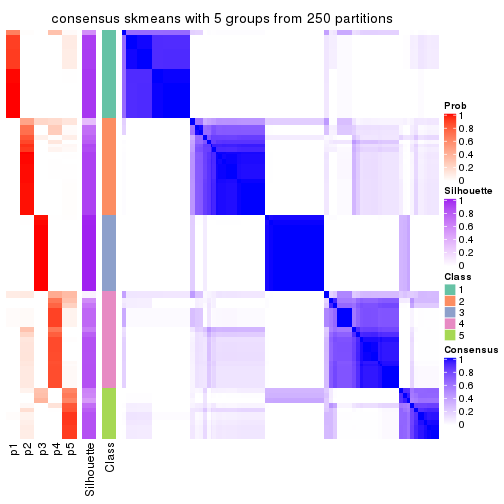
consensus_heatmap(res, k = 6)
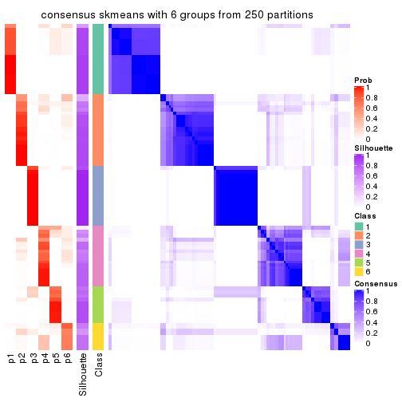
Heatmaps for the membership of samples in all partitions to see how consistent they are:
membership_heatmap(res, k = 2)
membership_heatmap(res, k = 3)
membership_heatmap(res, k = 4)

membership_heatmap(res, k = 5)
membership_heatmap(res, k = 6)
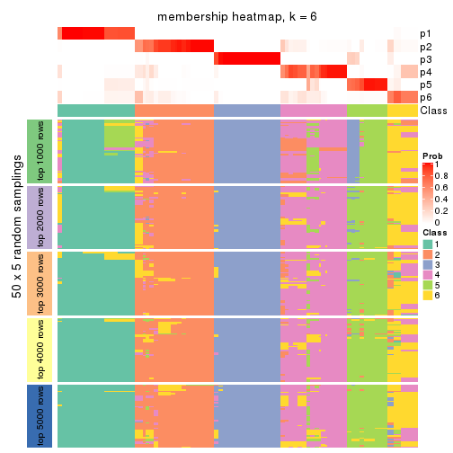
As soon as we have had the classes for columns, we can look for signatures which are significantly different between classes which can be candidate marks for certain classes. Following are the heatmaps for signatures.
Signature heatmaps where rows are scaled:
get_signatures(res, k = 2)

get_signatures(res, k = 3)
get_signatures(res, k = 4)
get_signatures(res, k = 5)
get_signatures(res, k = 6)
Signature heatmaps where rows are not scaled:
get_signatures(res, k = 2, scale_rows = FALSE)
get_signatures(res, k = 3, scale_rows = FALSE)
get_signatures(res, k = 4, scale_rows = FALSE)
get_signatures(res, k = 5, scale_rows = FALSE)
get_signatures(res, k = 6, scale_rows = FALSE)
Compare the overlap of signatures from different k:
compare_signatures(res)
get_signature() returns a data frame invisibly. TO get the list of signatures, the function
call should be assigned to a variable explicitly. In following code, if plot argument is set
to FALSE, no heatmap is plotted while only the differential analysis is performed.
# code only for demonstration
tb = get_signature(res, k = ..., plot = FALSE)
An example of the output of tb is:
#> which_row fdr mean_1 mean_2 scaled_mean_1 scaled_mean_2 km
#> 1 38 0.042760348 8.373488 9.131774 -0.5533452 0.5164555 1
#> 2 40 0.018707592 7.106213 8.469186 -0.6173731 0.5762149 1
#> 3 55 0.019134737 10.221463 11.207825 -0.6159697 0.5749050 1
#> 4 59 0.006059896 5.921854 7.869574 -0.6899429 0.6439467 1
#> 5 60 0.018055526 8.928898 10.211722 -0.6204761 0.5791110 1
#> 6 98 0.009384629 15.714769 14.887706 0.6635654 -0.6193277 2
...
The columns in tb are:
which_row: row indices corresponding to the input matrix.fdr: FDR for the differential test. mean_x: The mean value in group x.scaled_mean_x: The mean value in group x after rows are scaled.km: Row groups if k-means clustering is applied to rows.UMAP plot which shows how samples are separated.
dimension_reduction(res, k = 2, method = "UMAP")
dimension_reduction(res, k = 3, method = "UMAP")
dimension_reduction(res, k = 4, method = "UMAP")
dimension_reduction(res, k = 5, method = "UMAP")
dimension_reduction(res, k = 6, method = "UMAP")
Following heatmap shows how subgroups are split when increasing k:
collect_classes(res)
If matrix rows can be associated to genes, consider to use GO_Enrichment(res,
...) to perform function enrichment for the signature genes.
The object with results only for a single top-value method and a single partition method can be extracted as:
res = res_list["CV", "pam"]
# you can also extract it by
# res = res_list["CV:pam"]
A summary of res and all the functions that can be applied to it:
res
#> A 'ConsensusPartition' object with k = 2, 3, 4, 5, 6.
#> On a matrix with 16717 rows and 168 columns.
#> Top rows (1000, 2000, 3000, 4000, 5000) are extracted by 'CV' method.
#> Subgroups are detected by 'pam' method.
#> Performed in total 1250 partitions by row resampling.
#> Best k for subgroups seems to be 4.
#>
#> Following methods can be applied to this 'ConsensusPartition' object:
#> [1] "cola_report" "collect_classes" "collect_plots"
#> [4] "collect_stats" "colnames" "compare_signatures"
#> [7] "consensus_heatmap" "dimension_reduction" "functional_enrichment"
#> [10] "get_anno_col" "get_anno" "get_classes"
#> [13] "get_consensus" "get_matrix" "get_membership"
#> [16] "get_param" "get_signatures" "get_stats"
#> [19] "is_best_k" "is_stable_k" "membership_heatmap"
#> [22] "ncol" "nrow" "plot_ecdf"
#> [25] "rownames" "select_partition_number" "show"
#> [28] "suggest_best_k" "test_to_known_factors"
collect_plots() function collects all the plots made from res for all k (number of partitions)
into one single page to provide an easy and fast comparison between different k.
collect_plots(res)
The plots are:
k and the heatmap of
predicted classes for each k.k.k.k.All the plots in panels can be made by individual functions and they are plotted later in this section.
select_partition_number() produces several plots showing different
statistics for choosing “optimized” k. There are following statistics:
k;k, the area increased is defined as \(A_k - A_{k-1}\).The detailed explanations of these statistics can be found in the cola vignette.
Generally speaking, lower PAC score, higher mean silhouette score or higher
concordance corresponds to better partition. Rand index and Jaccard index
measure how similar the current partition is compared to partition with k-1.
If they are too similar, we won't accept k is better than k-1.
select_partition_number(res)
The numeric values for all these statistics can be obtained by get_stats().
get_stats(res)
#> k 1-PAC mean_silhouette concordance area_increased Rand Jaccard
#> 2 2 0.522 0.694 0.813 0.3188 0.713 0.713
#> 3 3 0.915 0.946 0.980 0.7388 0.708 0.596
#> 4 4 1.000 0.942 0.982 0.0599 0.964 0.918
#> 5 5 0.775 0.799 0.889 0.2062 0.845 0.632
#> 6 6 0.849 0.904 0.927 0.0760 0.914 0.703
suggest_best_k() suggests the best \(k\) based on these statistics. The rules are as follows:
NA.suggest_best_k(res)
#> [1] 4
#> attr(,"optional")
#> [1] 3
There is also optional best \(k\) = 3 that is worth to check.
Following shows the table of the partitions (You need to click the show/hide
code output link to see it). The membership matrix (columns with name p*)
is inferred by
clue::cl_consensus()
function with the SE method. Basically the value in the membership matrix
represents the probability to belong to a certain group. The finall class
label for an item is determined with the group with highest probability it
belongs to.
In get_classes() function, the entropy is calculated from the membership
matrix and the silhouette score is calculated from the consensus matrix.
cbind(get_classes(res, k = 2), get_membership(res, k = 2))
#> class entropy silhouette p1 p2
#> SRR1768889 1 0.998 1.0000 0.528 0.472
#> SRR1768890 1 0.998 1.0000 0.528 0.472
#> SRR1768891 2 0.000 0.7525 0.000 1.000
#> SRR1768892 2 0.000 0.7525 0.000 1.000
#> SRR1768893 2 0.000 0.7525 0.000 1.000
#> SRR1768894 2 0.000 0.7525 0.000 1.000
#> SRR1768895 2 0.000 0.7525 0.000 1.000
#> SRR1768896 2 0.000 0.7525 0.000 1.000
#> SRR1768821 2 0.000 0.7525 0.000 1.000
#> SRR1768822 2 0.000 0.7525 0.000 1.000
#> SRR1768823 2 0.000 0.7525 0.000 1.000
#> SRR1768824 2 0.000 0.7525 0.000 1.000
#> SRR1768825 2 0.000 0.7525 0.000 1.000
#> SRR1768826 2 0.000 0.7525 0.000 1.000
#> SRR1768827 2 0.000 0.7525 0.000 1.000
#> SRR1768828 2 0.000 0.7525 0.000 1.000
#> SRR1768829 2 0.000 0.7525 0.000 1.000
#> SRR1768830 2 0.000 0.7525 0.000 1.000
#> SRR1768831 1 0.998 1.0000 0.528 0.472
#> SRR1768832 1 0.998 1.0000 0.528 0.472
#> SRR1768833 2 0.000 0.7525 0.000 1.000
#> SRR1768834 2 0.000 0.7525 0.000 1.000
#> SRR1768835 2 0.000 0.7525 0.000 1.000
#> SRR1768836 2 0.000 0.7525 0.000 1.000
#> SRR1768837 2 0.000 0.7525 0.000 1.000
#> SRR1768838 2 0.795 -0.0217 0.240 0.760
#> SRR1768839 2 0.821 -0.1129 0.256 0.744
#> SRR1768840 2 0.722 0.1939 0.200 0.800
#> SRR1768841 2 0.671 0.2971 0.176 0.824
#> SRR1768842 2 0.000 0.7525 0.000 1.000
#> SRR1768843 2 0.000 0.7525 0.000 1.000
#> SRR1768844 2 0.000 0.7525 0.000 1.000
#> SRR1768845 2 0.000 0.7525 0.000 1.000
#> SRR1768846 1 0.998 1.0000 0.528 0.472
#> SRR1768847 1 0.998 1.0000 0.528 0.472
#> SRR1768848 1 0.998 1.0000 0.528 0.472
#> SRR1768849 1 0.998 1.0000 0.528 0.472
#> SRR1768850 1 0.998 1.0000 0.528 0.472
#> SRR1768851 1 0.998 1.0000 0.528 0.472
#> SRR1768852 2 0.000 0.7525 0.000 1.000
#> SRR1768853 2 0.000 0.7525 0.000 1.000
#> SRR1768854 2 0.000 0.7525 0.000 1.000
#> SRR1768855 1 0.998 1.0000 0.528 0.472
#> SRR1768856 1 0.998 1.0000 0.528 0.472
#> SRR1768857 1 0.998 1.0000 0.528 0.472
#> SRR1768858 2 0.000 0.7525 0.000 1.000
#> SRR1768859 2 0.000 0.7525 0.000 1.000
#> SRR1768860 2 0.000 0.7525 0.000 1.000
#> SRR1768861 1 0.998 1.0000 0.528 0.472
#> SRR1768862 1 0.998 1.0000 0.528 0.472
#> SRR1768863 2 0.000 0.7525 0.000 1.000
#> SRR1768864 2 0.000 0.7525 0.000 1.000
#> SRR1768865 1 0.998 1.0000 0.528 0.472
#> SRR1768866 1 0.998 1.0000 0.528 0.472
#> SRR1768867 2 0.000 0.7525 0.000 1.000
#> SRR1768868 2 0.000 0.7525 0.000 1.000
#> SRR1768869 2 0.000 0.7525 0.000 1.000
#> SRR1768870 2 0.000 0.7525 0.000 1.000
#> SRR1768871 2 0.000 0.7525 0.000 1.000
#> SRR1768872 2 0.000 0.7525 0.000 1.000
#> SRR1768873 2 0.000 0.7525 0.000 1.000
#> SRR1768874 2 0.000 0.7525 0.000 1.000
#> SRR1768875 1 0.998 1.0000 0.528 0.472
#> SRR1768876 1 0.998 1.0000 0.528 0.472
#> SRR1768877 1 0.998 1.0000 0.528 0.472
#> SRR1768878 1 0.998 1.0000 0.528 0.472
#> SRR1768879 1 0.998 1.0000 0.528 0.472
#> SRR1768880 1 0.998 1.0000 0.528 0.472
#> SRR1768881 2 0.994 -0.8481 0.456 0.544
#> SRR1768882 2 0.973 -0.7122 0.404 0.596
#> SRR1768883 1 0.998 1.0000 0.528 0.472
#> SRR1768884 1 0.998 1.0000 0.528 0.472
#> SRR1768885 1 0.998 1.0000 0.528 0.472
#> SRR1768886 1 0.998 1.0000 0.528 0.472
#> SRR1768887 1 0.998 1.0000 0.528 0.472
#> SRR1768888 1 0.998 1.0000 0.528 0.472
#> SRR1768897 2 0.000 0.7525 0.000 1.000
#> SRR1768898 2 0.000 0.7525 0.000 1.000
#> SRR1768899 2 0.000 0.7525 0.000 1.000
#> SRR1768900 2 0.000 0.7525 0.000 1.000
#> SRR1768901 2 0.000 0.7525 0.000 1.000
#> SRR1768902 2 0.000 0.7525 0.000 1.000
#> SRR1768903 2 0.000 0.7525 0.000 1.000
#> SRR1768904 2 0.000 0.7525 0.000 1.000
#> SRR1768905 2 0.000 0.7525 0.000 1.000
#> SRR1768906 2 0.000 0.7525 0.000 1.000
#> SRR1768907 2 0.000 0.7525 0.000 1.000
#> SRR1768908 2 0.000 0.7525 0.000 1.000
#> SRR1768909 2 0.000 0.7525 0.000 1.000
#> SRR1768910 2 0.000 0.7525 0.000 1.000
#> SRR1768911 2 0.000 0.7525 0.000 1.000
#> SRR1768912 2 0.000 0.7525 0.000 1.000
#> SRR1768913 2 0.000 0.7525 0.000 1.000
#> SRR1768914 2 0.000 0.7525 0.000 1.000
#> SRR1768915 2 0.000 0.7525 0.000 1.000
#> SRR1768916 2 0.000 0.7525 0.000 1.000
#> SRR1768917 2 0.000 0.7525 0.000 1.000
#> SRR1768918 2 0.000 0.7525 0.000 1.000
#> SRR1768919 2 0.000 0.7525 0.000 1.000
#> SRR1768920 2 0.000 0.7525 0.000 1.000
#> SRR1768921 2 0.000 0.7525 0.000 1.000
#> SRR1768922 2 0.000 0.7525 0.000 1.000
#> SRR1768923 2 0.000 0.7525 0.000 1.000
#> SRR1768924 2 0.000 0.7525 0.000 1.000
#> SRR1768925 2 0.000 0.7525 0.000 1.000
#> SRR1768926 2 0.000 0.7525 0.000 1.000
#> SRR1768927 2 0.000 0.7525 0.000 1.000
#> SRR1768928 2 0.000 0.7525 0.000 1.000
#> SRR1768929 2 0.000 0.7525 0.000 1.000
#> SRR1768930 2 0.000 0.7525 0.000 1.000
#> SRR1768931 2 0.000 0.7525 0.000 1.000
#> SRR1768932 2 0.000 0.7525 0.000 1.000
#> SRR1768933 2 0.000 0.7525 0.000 1.000
#> SRR1768934 2 0.000 0.7525 0.000 1.000
#> SRR1768935 2 0.000 0.7525 0.000 1.000
#> SRR1768936 2 0.000 0.7525 0.000 1.000
#> SRR1768937 2 0.000 0.7525 0.000 1.000
#> SRR1768938 2 0.000 0.7525 0.000 1.000
#> SRR1768939 2 0.000 0.7525 0.000 1.000
#> SRR1768940 2 0.000 0.7525 0.000 1.000
#> SRR1768941 2 0.000 0.7525 0.000 1.000
#> SRR1768942 2 0.000 0.7525 0.000 1.000
#> SRR1768943 2 0.000 0.7525 0.000 1.000
#> SRR1768944 2 0.000 0.7525 0.000 1.000
#> SRR1768945 2 0.000 0.7525 0.000 1.000
#> SRR1768946 2 0.000 0.7525 0.000 1.000
#> SRR1768947 2 0.000 0.7525 0.000 1.000
#> SRR1768948 2 0.000 0.7525 0.000 1.000
#> SRR1768949 2 0.000 0.7525 0.000 1.000
#> SRR1768950 2 0.000 0.7525 0.000 1.000
#> SRR1768954 2 0.998 0.4211 0.472 0.528
#> SRR1768955 2 0.998 0.4211 0.472 0.528
#> SRR1768956 2 0.998 0.4211 0.472 0.528
#> SRR1768957 2 0.998 0.4211 0.472 0.528
#> SRR1768958 2 0.998 0.4211 0.472 0.528
#> SRR1768959 2 0.998 0.4211 0.472 0.528
#> SRR1768960 2 0.998 0.4211 0.472 0.528
#> SRR1768961 2 0.998 0.4211 0.472 0.528
#> SRR1768952 2 0.000 0.7525 0.000 1.000
#> SRR1768953 2 0.000 0.7525 0.000 1.000
#> SRR1768962 2 0.998 0.4211 0.472 0.528
#> SRR1768963 2 0.998 0.4211 0.472 0.528
#> SRR1768964 2 0.998 0.4211 0.472 0.528
#> SRR1768965 2 0.998 0.4211 0.472 0.528
#> SRR1768966 2 0.998 0.4211 0.472 0.528
#> SRR1768967 2 0.998 0.4211 0.472 0.528
#> SRR1768968 2 0.998 0.4211 0.472 0.528
#> SRR1768969 2 0.998 0.4211 0.472 0.528
#> SRR1768970 2 0.998 0.4211 0.472 0.528
#> SRR1768971 2 0.998 0.4211 0.472 0.528
#> SRR1768972 2 0.998 0.4211 0.472 0.528
#> SRR1768973 2 0.998 0.4211 0.472 0.528
#> SRR1768974 2 0.998 0.4211 0.472 0.528
#> SRR1768975 2 0.998 0.4211 0.472 0.528
#> SRR1768976 2 0.998 0.4211 0.472 0.528
#> SRR1768977 2 0.998 0.4211 0.472 0.528
#> SRR1768978 2 0.998 0.4211 0.472 0.528
#> SRR1768979 2 0.998 0.4211 0.472 0.528
#> SRR1768980 2 0.998 0.4211 0.472 0.528
#> SRR1768981 2 0.998 0.4211 0.472 0.528
#> SRR1768982 2 0.998 0.4211 0.472 0.528
#> SRR1768983 2 0.998 0.4211 0.472 0.528
#> SRR1768984 2 0.000 0.7525 0.000 1.000
#> SRR1768985 2 0.000 0.7525 0.000 1.000
#> SRR1768986 2 0.998 0.4211 0.472 0.528
#> SRR1768987 2 0.998 0.4211 0.472 0.528
#> SRR1768988 2 0.998 0.4211 0.472 0.528
#> SRR1768989 2 0.998 0.4211 0.472 0.528
cbind(get_classes(res, k = 3), get_membership(res, k = 3))
#> class entropy silhouette p1 p2 p3
#> SRR1768889 3 0.0000 0.950 0.000 0.000 1.000
#> SRR1768890 3 0.0000 0.950 0.000 0.000 1.000
#> SRR1768891 2 0.0000 0.991 0.000 1.000 0.000
#> SRR1768892 2 0.0000 0.991 0.000 1.000 0.000
#> SRR1768893 2 0.0000 0.991 0.000 1.000 0.000
#> SRR1768894 2 0.0000 0.991 0.000 1.000 0.000
#> SRR1768895 2 0.0000 0.991 0.000 1.000 0.000
#> SRR1768896 2 0.0000 0.991 0.000 1.000 0.000
#> SRR1768821 2 0.0000 0.991 0.000 1.000 0.000
#> SRR1768822 2 0.0000 0.991 0.000 1.000 0.000
#> SRR1768823 2 0.0000 0.991 0.000 1.000 0.000
#> SRR1768824 2 0.0000 0.991 0.000 1.000 0.000
#> SRR1768825 2 0.0000 0.991 0.000 1.000 0.000
#> SRR1768826 2 0.0000 0.991 0.000 1.000 0.000
#> SRR1768827 2 0.0000 0.991 0.000 1.000 0.000
#> SRR1768828 2 0.0000 0.991 0.000 1.000 0.000
#> SRR1768829 2 0.0000 0.991 0.000 1.000 0.000
#> SRR1768830 2 0.0000 0.991 0.000 1.000 0.000
#> SRR1768831 3 0.0000 0.950 0.000 0.000 1.000
#> SRR1768832 3 0.0000 0.950 0.000 0.000 1.000
#> SRR1768833 2 0.0000 0.991 0.000 1.000 0.000
#> SRR1768834 2 0.0000 0.991 0.000 1.000 0.000
#> SRR1768835 2 0.0000 0.991 0.000 1.000 0.000
#> SRR1768836 2 0.0000 0.991 0.000 1.000 0.000
#> SRR1768837 2 0.0000 0.991 0.000 1.000 0.000
#> SRR1768838 2 0.6126 0.301 0.000 0.600 0.400
#> SRR1768839 2 0.6244 0.176 0.000 0.560 0.440
#> SRR1768840 3 0.6244 0.233 0.000 0.440 0.560
#> SRR1768841 3 0.6267 0.195 0.000 0.452 0.548
#> SRR1768842 2 0.0000 0.991 0.000 1.000 0.000
#> SRR1768843 2 0.0000 0.991 0.000 1.000 0.000
#> SRR1768844 2 0.0424 0.983 0.000 0.992 0.008
#> SRR1768845 2 0.0592 0.979 0.000 0.988 0.012
#> SRR1768846 3 0.0000 0.950 0.000 0.000 1.000
#> SRR1768847 3 0.0000 0.950 0.000 0.000 1.000
#> SRR1768848 3 0.0000 0.950 0.000 0.000 1.000
#> SRR1768849 3 0.0000 0.950 0.000 0.000 1.000
#> SRR1768850 3 0.0000 0.950 0.000 0.000 1.000
#> SRR1768851 3 0.0000 0.950 0.000 0.000 1.000
#> SRR1768852 2 0.0000 0.991 0.000 1.000 0.000
#> SRR1768853 2 0.0000 0.991 0.000 1.000 0.000
#> SRR1768854 2 0.0000 0.991 0.000 1.000 0.000
#> SRR1768855 3 0.0000 0.950 0.000 0.000 1.000
#> SRR1768856 3 0.0000 0.950 0.000 0.000 1.000
#> SRR1768857 3 0.0000 0.950 0.000 0.000 1.000
#> SRR1768858 2 0.0000 0.991 0.000 1.000 0.000
#> SRR1768859 2 0.0000 0.991 0.000 1.000 0.000
#> SRR1768860 2 0.0000 0.991 0.000 1.000 0.000
#> SRR1768861 3 0.0000 0.950 0.000 0.000 1.000
#> SRR1768862 3 0.0000 0.950 0.000 0.000 1.000
#> SRR1768863 2 0.0000 0.991 0.000 1.000 0.000
#> SRR1768864 2 0.0000 0.991 0.000 1.000 0.000
#> SRR1768865 3 0.0000 0.950 0.000 0.000 1.000
#> SRR1768866 3 0.0000 0.950 0.000 0.000 1.000
#> SRR1768867 2 0.0000 0.991 0.000 1.000 0.000
#> SRR1768868 2 0.0000 0.991 0.000 1.000 0.000
#> SRR1768869 2 0.0000 0.991 0.000 1.000 0.000
#> SRR1768870 2 0.0000 0.991 0.000 1.000 0.000
#> SRR1768871 2 0.0000 0.991 0.000 1.000 0.000
#> SRR1768872 2 0.0000 0.991 0.000 1.000 0.000
#> SRR1768873 2 0.0000 0.991 0.000 1.000 0.000
#> SRR1768874 2 0.0000 0.991 0.000 1.000 0.000
#> SRR1768875 3 0.0000 0.950 0.000 0.000 1.000
#> SRR1768876 3 0.0000 0.950 0.000 0.000 1.000
#> SRR1768877 3 0.0000 0.950 0.000 0.000 1.000
#> SRR1768878 3 0.0000 0.950 0.000 0.000 1.000
#> SRR1768879 3 0.0000 0.950 0.000 0.000 1.000
#> SRR1768880 3 0.0000 0.950 0.000 0.000 1.000
#> SRR1768881 3 0.2356 0.860 0.000 0.072 0.928
#> SRR1768882 3 0.3412 0.786 0.000 0.124 0.876
#> SRR1768883 3 0.0000 0.950 0.000 0.000 1.000
#> SRR1768884 3 0.0000 0.950 0.000 0.000 1.000
#> SRR1768885 3 0.0000 0.950 0.000 0.000 1.000
#> SRR1768886 3 0.0000 0.950 0.000 0.000 1.000
#> SRR1768887 3 0.0000 0.950 0.000 0.000 1.000
#> SRR1768888 3 0.0000 0.950 0.000 0.000 1.000
#> SRR1768897 2 0.0000 0.991 0.000 1.000 0.000
#> SRR1768898 2 0.0000 0.991 0.000 1.000 0.000
#> SRR1768899 2 0.0000 0.991 0.000 1.000 0.000
#> SRR1768900 2 0.0000 0.991 0.000 1.000 0.000
#> SRR1768901 2 0.0000 0.991 0.000 1.000 0.000
#> SRR1768902 2 0.0000 0.991 0.000 1.000 0.000
#> SRR1768903 2 0.0000 0.991 0.000 1.000 0.000
#> SRR1768904 2 0.0000 0.991 0.000 1.000 0.000
#> SRR1768905 2 0.0000 0.991 0.000 1.000 0.000
#> SRR1768906 2 0.0000 0.991 0.000 1.000 0.000
#> SRR1768907 2 0.0000 0.991 0.000 1.000 0.000
#> SRR1768908 2 0.0000 0.991 0.000 1.000 0.000
#> SRR1768909 2 0.0000 0.991 0.000 1.000 0.000
#> SRR1768910 2 0.0000 0.991 0.000 1.000 0.000
#> SRR1768911 2 0.0000 0.991 0.000 1.000 0.000
#> SRR1768912 2 0.0000 0.991 0.000 1.000 0.000
#> SRR1768913 2 0.0000 0.991 0.000 1.000 0.000
#> SRR1768914 2 0.0000 0.991 0.000 1.000 0.000
#> SRR1768915 2 0.0000 0.991 0.000 1.000 0.000
#> SRR1768916 2 0.0000 0.991 0.000 1.000 0.000
#> SRR1768917 2 0.0000 0.991 0.000 1.000 0.000
#> SRR1768918 2 0.0000 0.991 0.000 1.000 0.000
#> SRR1768919 2 0.0000 0.991 0.000 1.000 0.000
#> SRR1768920 2 0.0000 0.991 0.000 1.000 0.000
#> SRR1768921 2 0.0000 0.991 0.000 1.000 0.000
#> SRR1768922 2 0.0000 0.991 0.000 1.000 0.000
#> SRR1768923 2 0.0000 0.991 0.000 1.000 0.000
#> SRR1768924 2 0.0000 0.991 0.000 1.000 0.000
#> SRR1768925 2 0.0000 0.991 0.000 1.000 0.000
#> SRR1768926 2 0.0000 0.991 0.000 1.000 0.000
#> SRR1768927 2 0.0000 0.991 0.000 1.000 0.000
#> SRR1768928 2 0.0000 0.991 0.000 1.000 0.000
#> SRR1768929 2 0.0000 0.991 0.000 1.000 0.000
#> SRR1768930 2 0.0000 0.991 0.000 1.000 0.000
#> SRR1768931 2 0.0000 0.991 0.000 1.000 0.000
#> SRR1768932 2 0.0000 0.991 0.000 1.000 0.000
#> SRR1768933 2 0.0000 0.991 0.000 1.000 0.000
#> SRR1768934 2 0.0000 0.991 0.000 1.000 0.000
#> SRR1768935 2 0.0000 0.991 0.000 1.000 0.000
#> SRR1768936 2 0.0000 0.991 0.000 1.000 0.000
#> SRR1768937 2 0.0000 0.991 0.000 1.000 0.000
#> SRR1768938 2 0.0000 0.991 0.000 1.000 0.000
#> SRR1768939 2 0.0000 0.991 0.000 1.000 0.000
#> SRR1768940 2 0.0000 0.991 0.000 1.000 0.000
#> SRR1768941 2 0.0000 0.991 0.000 1.000 0.000
#> SRR1768942 2 0.0000 0.991 0.000 1.000 0.000
#> SRR1768943 2 0.0000 0.991 0.000 1.000 0.000
#> SRR1768944 2 0.0000 0.991 0.000 1.000 0.000
#> SRR1768945 2 0.0000 0.991 0.000 1.000 0.000
#> SRR1768946 2 0.0000 0.991 0.000 1.000 0.000
#> SRR1768947 2 0.0000 0.991 0.000 1.000 0.000
#> SRR1768948 2 0.0000 0.991 0.000 1.000 0.000
#> SRR1768949 2 0.0000 0.991 0.000 1.000 0.000
#> SRR1768950 2 0.0000 0.991 0.000 1.000 0.000
#> SRR1768954 1 0.0000 0.939 1.000 0.000 0.000
#> SRR1768955 1 0.0000 0.939 1.000 0.000 0.000
#> SRR1768956 1 0.0000 0.939 1.000 0.000 0.000
#> SRR1768957 1 0.0000 0.939 1.000 0.000 0.000
#> SRR1768958 1 0.0000 0.939 1.000 0.000 0.000
#> SRR1768959 1 0.0000 0.939 1.000 0.000 0.000
#> SRR1768960 1 0.0000 0.939 1.000 0.000 0.000
#> SRR1768961 1 0.0000 0.939 1.000 0.000 0.000
#> SRR1768952 2 0.0000 0.991 0.000 1.000 0.000
#> SRR1768953 2 0.0000 0.991 0.000 1.000 0.000
#> SRR1768962 1 0.0000 0.939 1.000 0.000 0.000
#> SRR1768963 1 0.0000 0.939 1.000 0.000 0.000
#> SRR1768964 1 0.0000 0.939 1.000 0.000 0.000
#> SRR1768965 1 0.0000 0.939 1.000 0.000 0.000
#> SRR1768966 1 0.0000 0.939 1.000 0.000 0.000
#> SRR1768967 1 0.0000 0.939 1.000 0.000 0.000
#> SRR1768968 1 0.0000 0.939 1.000 0.000 0.000
#> SRR1768969 1 0.0000 0.939 1.000 0.000 0.000
#> SRR1768970 1 0.0000 0.939 1.000 0.000 0.000
#> SRR1768971 1 0.0000 0.939 1.000 0.000 0.000
#> SRR1768972 1 0.4504 0.757 0.804 0.196 0.000
#> SRR1768973 1 0.4504 0.757 0.804 0.196 0.000
#> SRR1768974 1 0.4504 0.757 0.804 0.196 0.000
#> SRR1768975 1 0.4504 0.757 0.804 0.196 0.000
#> SRR1768976 1 0.4504 0.757 0.804 0.196 0.000
#> SRR1768977 1 0.4504 0.757 0.804 0.196 0.000
#> SRR1768978 1 0.0000 0.939 1.000 0.000 0.000
#> SRR1768979 1 0.0000 0.939 1.000 0.000 0.000
#> SRR1768980 1 0.0000 0.939 1.000 0.000 0.000
#> SRR1768981 1 0.0000 0.939 1.000 0.000 0.000
#> SRR1768982 1 0.0000 0.939 1.000 0.000 0.000
#> SRR1768983 1 0.0000 0.939 1.000 0.000 0.000
#> SRR1768984 2 0.0000 0.991 0.000 1.000 0.000
#> SRR1768985 2 0.0000 0.991 0.000 1.000 0.000
#> SRR1768986 1 0.0000 0.939 1.000 0.000 0.000
#> SRR1768987 1 0.0000 0.939 1.000 0.000 0.000
#> SRR1768988 1 0.2959 0.855 0.900 0.100 0.000
#> SRR1768989 1 0.2959 0.855 0.900 0.100 0.000
cbind(get_classes(res, k = 4), get_membership(res, k = 4))
#> class entropy silhouette p1 p2 p3 p4
#> SRR1768889 3 0.0000 0.942 0.0 0.000 1.000 0.000
#> SRR1768890 3 0.0000 0.942 0.0 0.000 1.000 0.000
#> SRR1768891 2 0.0000 0.990 0.0 1.000 0.000 0.000
#> SRR1768892 2 0.0000 0.990 0.0 1.000 0.000 0.000
#> SRR1768893 2 0.0000 0.990 0.0 1.000 0.000 0.000
#> SRR1768894 2 0.0000 0.990 0.0 1.000 0.000 0.000
#> SRR1768895 2 0.0000 0.990 0.0 1.000 0.000 0.000
#> SRR1768896 2 0.0000 0.990 0.0 1.000 0.000 0.000
#> SRR1768821 2 0.0000 0.990 0.0 1.000 0.000 0.000
#> SRR1768822 2 0.0000 0.990 0.0 1.000 0.000 0.000
#> SRR1768823 2 0.0000 0.990 0.0 1.000 0.000 0.000
#> SRR1768824 2 0.0000 0.990 0.0 1.000 0.000 0.000
#> SRR1768825 2 0.0000 0.990 0.0 1.000 0.000 0.000
#> SRR1768826 2 0.0000 0.990 0.0 1.000 0.000 0.000
#> SRR1768827 2 0.0000 0.990 0.0 1.000 0.000 0.000
#> SRR1768828 2 0.0000 0.990 0.0 1.000 0.000 0.000
#> SRR1768829 2 0.0000 0.990 0.0 1.000 0.000 0.000
#> SRR1768830 2 0.0000 0.990 0.0 1.000 0.000 0.000
#> SRR1768831 3 0.0000 0.942 0.0 0.000 1.000 0.000
#> SRR1768832 3 0.0000 0.942 0.0 0.000 1.000 0.000
#> SRR1768833 2 0.0000 0.990 0.0 1.000 0.000 0.000
#> SRR1768834 2 0.0000 0.990 0.0 1.000 0.000 0.000
#> SRR1768835 2 0.0000 0.990 0.0 1.000 0.000 0.000
#> SRR1768836 2 0.0000 0.990 0.0 1.000 0.000 0.000
#> SRR1768837 2 0.0000 0.990 0.0 1.000 0.000 0.000
#> SRR1768838 2 0.4888 0.268 0.0 0.588 0.412 0.000
#> SRR1768839 2 0.4961 0.151 0.0 0.552 0.448 0.000
#> SRR1768840 3 0.4961 0.205 0.0 0.448 0.552 0.000
#> SRR1768841 3 0.4981 0.152 0.0 0.464 0.536 0.000
#> SRR1768842 2 0.0000 0.990 0.0 1.000 0.000 0.000
#> SRR1768843 2 0.0000 0.990 0.0 1.000 0.000 0.000
#> SRR1768844 2 0.0336 0.981 0.0 0.992 0.008 0.000
#> SRR1768845 2 0.0469 0.977 0.0 0.988 0.012 0.000
#> SRR1768846 3 0.0000 0.942 0.0 0.000 1.000 0.000
#> SRR1768847 3 0.0000 0.942 0.0 0.000 1.000 0.000
#> SRR1768848 3 0.0000 0.942 0.0 0.000 1.000 0.000
#> SRR1768849 3 0.0000 0.942 0.0 0.000 1.000 0.000
#> SRR1768850 3 0.0000 0.942 0.0 0.000 1.000 0.000
#> SRR1768851 3 0.0000 0.942 0.0 0.000 1.000 0.000
#> SRR1768852 2 0.0000 0.990 0.0 1.000 0.000 0.000
#> SRR1768853 2 0.0000 0.990 0.0 1.000 0.000 0.000
#> SRR1768854 2 0.0000 0.990 0.0 1.000 0.000 0.000
#> SRR1768855 3 0.0000 0.942 0.0 0.000 1.000 0.000
#> SRR1768856 3 0.0000 0.942 0.0 0.000 1.000 0.000
#> SRR1768857 3 0.0000 0.942 0.0 0.000 1.000 0.000
#> SRR1768858 2 0.0000 0.990 0.0 1.000 0.000 0.000
#> SRR1768859 2 0.0000 0.990 0.0 1.000 0.000 0.000
#> SRR1768860 2 0.0000 0.990 0.0 1.000 0.000 0.000
#> SRR1768861 3 0.0000 0.942 0.0 0.000 1.000 0.000
#> SRR1768862 3 0.0000 0.942 0.0 0.000 1.000 0.000
#> SRR1768863 2 0.0000 0.990 0.0 1.000 0.000 0.000
#> SRR1768864 2 0.0000 0.990 0.0 1.000 0.000 0.000
#> SRR1768865 3 0.0000 0.942 0.0 0.000 1.000 0.000
#> SRR1768866 3 0.0000 0.942 0.0 0.000 1.000 0.000
#> SRR1768867 2 0.0000 0.990 0.0 1.000 0.000 0.000
#> SRR1768868 2 0.0000 0.990 0.0 1.000 0.000 0.000
#> SRR1768869 2 0.0000 0.990 0.0 1.000 0.000 0.000
#> SRR1768870 2 0.0000 0.990 0.0 1.000 0.000 0.000
#> SRR1768871 2 0.0000 0.990 0.0 1.000 0.000 0.000
#> SRR1768872 2 0.0000 0.990 0.0 1.000 0.000 0.000
#> SRR1768873 2 0.0000 0.990 0.0 1.000 0.000 0.000
#> SRR1768874 2 0.0000 0.990 0.0 1.000 0.000 0.000
#> SRR1768875 3 0.0000 0.942 0.0 0.000 1.000 0.000
#> SRR1768876 3 0.0000 0.942 0.0 0.000 1.000 0.000
#> SRR1768877 3 0.0000 0.942 0.0 0.000 1.000 0.000
#> SRR1768878 3 0.0000 0.942 0.0 0.000 1.000 0.000
#> SRR1768879 3 0.0000 0.942 0.0 0.000 1.000 0.000
#> SRR1768880 3 0.0000 0.942 0.0 0.000 1.000 0.000
#> SRR1768881 3 0.1867 0.839 0.0 0.072 0.928 0.000
#> SRR1768882 3 0.2704 0.755 0.0 0.124 0.876 0.000
#> SRR1768883 3 0.0000 0.942 0.0 0.000 1.000 0.000
#> SRR1768884 3 0.0000 0.942 0.0 0.000 1.000 0.000
#> SRR1768885 3 0.0000 0.942 0.0 0.000 1.000 0.000
#> SRR1768886 3 0.0000 0.942 0.0 0.000 1.000 0.000
#> SRR1768887 3 0.0000 0.942 0.0 0.000 1.000 0.000
#> SRR1768888 3 0.0000 0.942 0.0 0.000 1.000 0.000
#> SRR1768897 2 0.0000 0.990 0.0 1.000 0.000 0.000
#> SRR1768898 2 0.0000 0.990 0.0 1.000 0.000 0.000
#> SRR1768899 2 0.0000 0.990 0.0 1.000 0.000 0.000
#> SRR1768900 2 0.0000 0.990 0.0 1.000 0.000 0.000
#> SRR1768901 2 0.0000 0.990 0.0 1.000 0.000 0.000
#> SRR1768902 2 0.0000 0.990 0.0 1.000 0.000 0.000
#> SRR1768903 2 0.0000 0.990 0.0 1.000 0.000 0.000
#> SRR1768904 2 0.0000 0.990 0.0 1.000 0.000 0.000
#> SRR1768905 2 0.0000 0.990 0.0 1.000 0.000 0.000
#> SRR1768906 2 0.0000 0.990 0.0 1.000 0.000 0.000
#> SRR1768907 2 0.0000 0.990 0.0 1.000 0.000 0.000
#> SRR1768908 2 0.0000 0.990 0.0 1.000 0.000 0.000
#> SRR1768909 2 0.0000 0.990 0.0 1.000 0.000 0.000
#> SRR1768910 2 0.0000 0.990 0.0 1.000 0.000 0.000
#> SRR1768911 2 0.0000 0.990 0.0 1.000 0.000 0.000
#> SRR1768912 2 0.0000 0.990 0.0 1.000 0.000 0.000
#> SRR1768913 2 0.0000 0.990 0.0 1.000 0.000 0.000
#> SRR1768914 2 0.0000 0.990 0.0 1.000 0.000 0.000
#> SRR1768915 2 0.0000 0.990 0.0 1.000 0.000 0.000
#> SRR1768916 2 0.0000 0.990 0.0 1.000 0.000 0.000
#> SRR1768917 2 0.0000 0.990 0.0 1.000 0.000 0.000
#> SRR1768918 2 0.0000 0.990 0.0 1.000 0.000 0.000
#> SRR1768919 2 0.0000 0.990 0.0 1.000 0.000 0.000
#> SRR1768920 2 0.0000 0.990 0.0 1.000 0.000 0.000
#> SRR1768921 2 0.0000 0.990 0.0 1.000 0.000 0.000
#> SRR1768922 2 0.0000 0.990 0.0 1.000 0.000 0.000
#> SRR1768923 2 0.0000 0.990 0.0 1.000 0.000 0.000
#> SRR1768924 2 0.0000 0.990 0.0 1.000 0.000 0.000
#> SRR1768925 2 0.0000 0.990 0.0 1.000 0.000 0.000
#> SRR1768926 2 0.0000 0.990 0.0 1.000 0.000 0.000
#> SRR1768927 2 0.0000 0.990 0.0 1.000 0.000 0.000
#> SRR1768928 2 0.0000 0.990 0.0 1.000 0.000 0.000
#> SRR1768929 2 0.0000 0.990 0.0 1.000 0.000 0.000
#> SRR1768930 2 0.0000 0.990 0.0 1.000 0.000 0.000
#> SRR1768931 2 0.0000 0.990 0.0 1.000 0.000 0.000
#> SRR1768932 2 0.0000 0.990 0.0 1.000 0.000 0.000
#> SRR1768933 2 0.0000 0.990 0.0 1.000 0.000 0.000
#> SRR1768934 2 0.0000 0.990 0.0 1.000 0.000 0.000
#> SRR1768935 2 0.0000 0.990 0.0 1.000 0.000 0.000
#> SRR1768936 2 0.0000 0.990 0.0 1.000 0.000 0.000
#> SRR1768937 2 0.0000 0.990 0.0 1.000 0.000 0.000
#> SRR1768938 2 0.0000 0.990 0.0 1.000 0.000 0.000
#> SRR1768939 2 0.0000 0.990 0.0 1.000 0.000 0.000
#> SRR1768940 2 0.0000 0.990 0.0 1.000 0.000 0.000
#> SRR1768941 2 0.0000 0.990 0.0 1.000 0.000 0.000
#> SRR1768942 2 0.0000 0.990 0.0 1.000 0.000 0.000
#> SRR1768943 2 0.0000 0.990 0.0 1.000 0.000 0.000
#> SRR1768944 2 0.0000 0.990 0.0 1.000 0.000 0.000
#> SRR1768945 2 0.0000 0.990 0.0 1.000 0.000 0.000
#> SRR1768946 2 0.0000 0.990 0.0 1.000 0.000 0.000
#> SRR1768947 2 0.0000 0.990 0.0 1.000 0.000 0.000
#> SRR1768948 2 0.0000 0.990 0.0 1.000 0.000 0.000
#> SRR1768949 2 0.0000 0.990 0.0 1.000 0.000 0.000
#> SRR1768950 2 0.0000 0.990 0.0 1.000 0.000 0.000
#> SRR1768954 4 0.0000 0.902 0.0 0.000 0.000 1.000
#> SRR1768955 4 0.0000 0.902 0.0 0.000 0.000 1.000
#> SRR1768956 4 0.0000 0.902 0.0 0.000 0.000 1.000
#> SRR1768957 4 0.0000 0.902 0.0 0.000 0.000 1.000
#> SRR1768958 4 0.0000 0.902 0.0 0.000 0.000 1.000
#> SRR1768959 4 0.0000 0.902 0.0 0.000 0.000 1.000
#> SRR1768960 4 0.0000 0.902 0.0 0.000 0.000 1.000
#> SRR1768961 4 0.0000 0.902 0.0 0.000 0.000 1.000
#> SRR1768952 2 0.0000 0.990 0.0 1.000 0.000 0.000
#> SRR1768953 2 0.0000 0.990 0.0 1.000 0.000 0.000
#> SRR1768962 1 0.0000 0.981 1.0 0.000 0.000 0.000
#> SRR1768963 1 0.0000 0.981 1.0 0.000 0.000 0.000
#> SRR1768964 1 0.0000 0.981 1.0 0.000 0.000 0.000
#> SRR1768965 1 0.0000 0.981 1.0 0.000 0.000 0.000
#> SRR1768966 1 0.0000 0.981 1.0 0.000 0.000 0.000
#> SRR1768967 1 0.0000 0.981 1.0 0.000 0.000 0.000
#> SRR1768968 1 0.0000 0.981 1.0 0.000 0.000 0.000
#> SRR1768969 1 0.0000 0.981 1.0 0.000 0.000 0.000
#> SRR1768970 1 0.0000 0.981 1.0 0.000 0.000 0.000
#> SRR1768971 1 0.0000 0.981 1.0 0.000 0.000 0.000
#> SRR1768972 4 0.0000 0.902 0.0 0.000 0.000 1.000
#> SRR1768973 4 0.0000 0.902 0.0 0.000 0.000 1.000
#> SRR1768974 4 0.0000 0.902 0.0 0.000 0.000 1.000
#> SRR1768975 4 0.0000 0.902 0.0 0.000 0.000 1.000
#> SRR1768976 4 0.0000 0.902 0.0 0.000 0.000 1.000
#> SRR1768977 4 0.0000 0.902 0.0 0.000 0.000 1.000
#> SRR1768978 1 0.0000 0.981 1.0 0.000 0.000 0.000
#> SRR1768979 1 0.0000 0.981 1.0 0.000 0.000 0.000
#> SRR1768980 1 0.0000 0.981 1.0 0.000 0.000 0.000
#> SRR1768981 1 0.0000 0.981 1.0 0.000 0.000 0.000
#> SRR1768982 1 0.0000 0.981 1.0 0.000 0.000 0.000
#> SRR1768983 1 0.0000 0.981 1.0 0.000 0.000 0.000
#> SRR1768984 4 0.4855 0.370 0.0 0.400 0.000 0.600
#> SRR1768985 4 0.4866 0.360 0.0 0.404 0.000 0.596
#> SRR1768986 1 0.0000 0.981 1.0 0.000 0.000 0.000
#> SRR1768987 1 0.0000 0.981 1.0 0.000 0.000 0.000
#> SRR1768988 1 0.2345 0.817 0.9 0.100 0.000 0.000
#> SRR1768989 1 0.2345 0.817 0.9 0.100 0.000 0.000
cbind(get_classes(res, k = 5), get_membership(res, k = 5))
#> class entropy silhouette p1 p2 p3 p4 p5
#> SRR1768889 3 0.0000 0.92667 0.0 0.000 1.000 0.000 0.000
#> SRR1768890 3 0.0000 0.92667 0.0 0.000 1.000 0.000 0.000
#> SRR1768891 2 0.3730 0.18975 0.0 0.712 0.000 0.288 0.000
#> SRR1768892 2 0.3612 0.27205 0.0 0.732 0.000 0.268 0.000
#> SRR1768893 2 0.0000 0.83934 0.0 1.000 0.000 0.000 0.000
#> SRR1768894 2 0.0000 0.83934 0.0 1.000 0.000 0.000 0.000
#> SRR1768895 2 0.0000 0.83934 0.0 1.000 0.000 0.000 0.000
#> SRR1768896 2 0.0000 0.83934 0.0 1.000 0.000 0.000 0.000
#> SRR1768821 2 0.4302 -0.60467 0.0 0.520 0.000 0.480 0.000
#> SRR1768822 2 0.4302 -0.60485 0.0 0.520 0.000 0.480 0.000
#> SRR1768823 4 0.3999 0.95450 0.0 0.344 0.000 0.656 0.000
#> SRR1768824 4 0.3999 0.95450 0.0 0.344 0.000 0.656 0.000
#> SRR1768825 2 0.0000 0.83934 0.0 1.000 0.000 0.000 0.000
#> SRR1768826 2 0.0000 0.83934 0.0 1.000 0.000 0.000 0.000
#> SRR1768827 2 0.4192 -0.33727 0.0 0.596 0.000 0.404 0.000
#> SRR1768828 2 0.4192 -0.33727 0.0 0.596 0.000 0.404 0.000
#> SRR1768829 2 0.2179 0.69005 0.0 0.888 0.000 0.112 0.000
#> SRR1768830 2 0.1908 0.72390 0.0 0.908 0.000 0.092 0.000
#> SRR1768831 3 0.3913 0.63113 0.0 0.000 0.676 0.324 0.000
#> SRR1768832 3 0.3913 0.63113 0.0 0.000 0.676 0.324 0.000
#> SRR1768833 2 0.3913 0.54365 0.0 0.676 0.000 0.324 0.000
#> SRR1768834 2 0.3913 0.54365 0.0 0.676 0.000 0.324 0.000
#> SRR1768835 2 0.3913 0.54365 0.0 0.676 0.000 0.324 0.000
#> SRR1768836 2 0.3913 0.54365 0.0 0.676 0.000 0.324 0.000
#> SRR1768837 2 0.3913 0.54365 0.0 0.676 0.000 0.324 0.000
#> SRR1768838 3 0.6687 0.27350 0.0 0.252 0.424 0.324 0.000
#> SRR1768839 3 0.6660 0.28561 0.0 0.244 0.432 0.324 0.000
#> SRR1768840 2 0.5896 0.42364 0.0 0.600 0.184 0.216 0.000
#> SRR1768841 2 0.5766 0.44834 0.0 0.616 0.164 0.220 0.000
#> SRR1768842 2 0.0000 0.83934 0.0 1.000 0.000 0.000 0.000
#> SRR1768843 2 0.0000 0.83934 0.0 1.000 0.000 0.000 0.000
#> SRR1768844 2 0.0880 0.81151 0.0 0.968 0.032 0.000 0.000
#> SRR1768845 2 0.1341 0.78534 0.0 0.944 0.056 0.000 0.000
#> SRR1768846 3 0.0000 0.92667 0.0 0.000 1.000 0.000 0.000
#> SRR1768847 3 0.0000 0.92667 0.0 0.000 1.000 0.000 0.000
#> SRR1768848 3 0.0000 0.92667 0.0 0.000 1.000 0.000 0.000
#> SRR1768849 3 0.0000 0.92667 0.0 0.000 1.000 0.000 0.000
#> SRR1768850 3 0.0000 0.92667 0.0 0.000 1.000 0.000 0.000
#> SRR1768851 3 0.0000 0.92667 0.0 0.000 1.000 0.000 0.000
#> SRR1768852 2 0.0000 0.83934 0.0 1.000 0.000 0.000 0.000
#> SRR1768853 2 0.0000 0.83934 0.0 1.000 0.000 0.000 0.000
#> SRR1768854 2 0.0000 0.83934 0.0 1.000 0.000 0.000 0.000
#> SRR1768855 3 0.0000 0.92667 0.0 0.000 1.000 0.000 0.000
#> SRR1768856 3 0.0000 0.92667 0.0 0.000 1.000 0.000 0.000
#> SRR1768857 3 0.0000 0.92667 0.0 0.000 1.000 0.000 0.000
#> SRR1768858 2 0.0000 0.83934 0.0 1.000 0.000 0.000 0.000
#> SRR1768859 2 0.0000 0.83934 0.0 1.000 0.000 0.000 0.000
#> SRR1768860 2 0.0000 0.83934 0.0 1.000 0.000 0.000 0.000
#> SRR1768861 3 0.0000 0.92667 0.0 0.000 1.000 0.000 0.000
#> SRR1768862 3 0.0000 0.92667 0.0 0.000 1.000 0.000 0.000
#> SRR1768863 2 0.3074 0.51933 0.0 0.804 0.000 0.196 0.000
#> SRR1768864 2 0.3109 0.50884 0.0 0.800 0.000 0.200 0.000
#> SRR1768865 3 0.0000 0.92667 0.0 0.000 1.000 0.000 0.000
#> SRR1768866 3 0.0000 0.92667 0.0 0.000 1.000 0.000 0.000
#> SRR1768867 4 0.3913 0.97082 0.0 0.324 0.000 0.676 0.000
#> SRR1768868 4 0.3913 0.97082 0.0 0.324 0.000 0.676 0.000
#> SRR1768869 4 0.3913 0.97082 0.0 0.324 0.000 0.676 0.000
#> SRR1768870 4 0.3913 0.97082 0.0 0.324 0.000 0.676 0.000
#> SRR1768871 4 0.4138 0.90455 0.0 0.384 0.000 0.616 0.000
#> SRR1768872 4 0.4150 0.89839 0.0 0.388 0.000 0.612 0.000
#> SRR1768873 4 0.3913 0.97082 0.0 0.324 0.000 0.676 0.000
#> SRR1768874 4 0.3913 0.97082 0.0 0.324 0.000 0.676 0.000
#> SRR1768875 3 0.0000 0.92667 0.0 0.000 1.000 0.000 0.000
#> SRR1768876 3 0.0000 0.92667 0.0 0.000 1.000 0.000 0.000
#> SRR1768877 3 0.0000 0.92667 0.0 0.000 1.000 0.000 0.000
#> SRR1768878 3 0.0000 0.92667 0.0 0.000 1.000 0.000 0.000
#> SRR1768879 3 0.0000 0.92667 0.0 0.000 1.000 0.000 0.000
#> SRR1768880 3 0.0000 0.92667 0.0 0.000 1.000 0.000 0.000
#> SRR1768881 3 0.3099 0.77456 0.0 0.028 0.848 0.124 0.000
#> SRR1768882 3 0.4234 0.66413 0.0 0.056 0.760 0.184 0.000
#> SRR1768883 3 0.0000 0.92667 0.0 0.000 1.000 0.000 0.000
#> SRR1768884 3 0.0000 0.92667 0.0 0.000 1.000 0.000 0.000
#> SRR1768885 3 0.0000 0.92667 0.0 0.000 1.000 0.000 0.000
#> SRR1768886 3 0.0000 0.92667 0.0 0.000 1.000 0.000 0.000
#> SRR1768887 3 0.0000 0.92667 0.0 0.000 1.000 0.000 0.000
#> SRR1768888 3 0.0000 0.92667 0.0 0.000 1.000 0.000 0.000
#> SRR1768897 2 0.0000 0.83934 0.0 1.000 0.000 0.000 0.000
#> SRR1768898 2 0.0000 0.83934 0.0 1.000 0.000 0.000 0.000
#> SRR1768899 2 0.0000 0.83934 0.0 1.000 0.000 0.000 0.000
#> SRR1768900 2 0.0000 0.83934 0.0 1.000 0.000 0.000 0.000
#> SRR1768901 2 0.0000 0.83934 0.0 1.000 0.000 0.000 0.000
#> SRR1768902 2 0.0000 0.83934 0.0 1.000 0.000 0.000 0.000
#> SRR1768903 2 0.0000 0.83934 0.0 1.000 0.000 0.000 0.000
#> SRR1768904 2 0.0000 0.83934 0.0 1.000 0.000 0.000 0.000
#> SRR1768905 2 0.0000 0.83934 0.0 1.000 0.000 0.000 0.000
#> SRR1768906 2 0.0000 0.83934 0.0 1.000 0.000 0.000 0.000
#> SRR1768907 2 0.0000 0.83934 0.0 1.000 0.000 0.000 0.000
#> SRR1768908 2 0.0000 0.83934 0.0 1.000 0.000 0.000 0.000
#> SRR1768909 2 0.0000 0.83934 0.0 1.000 0.000 0.000 0.000
#> SRR1768910 2 0.0000 0.83934 0.0 1.000 0.000 0.000 0.000
#> SRR1768911 2 0.0000 0.83934 0.0 1.000 0.000 0.000 0.000
#> SRR1768912 2 0.0000 0.83934 0.0 1.000 0.000 0.000 0.000
#> SRR1768913 2 0.0000 0.83934 0.0 1.000 0.000 0.000 0.000
#> SRR1768914 2 0.0000 0.83934 0.0 1.000 0.000 0.000 0.000
#> SRR1768915 2 0.0000 0.83934 0.0 1.000 0.000 0.000 0.000
#> SRR1768916 2 0.0000 0.83934 0.0 1.000 0.000 0.000 0.000
#> SRR1768917 4 0.3913 0.97082 0.0 0.324 0.000 0.676 0.000
#> SRR1768918 2 0.0000 0.83934 0.0 1.000 0.000 0.000 0.000
#> SRR1768919 2 0.0000 0.83934 0.0 1.000 0.000 0.000 0.000
#> SRR1768920 4 0.4126 0.90933 0.0 0.380 0.000 0.620 0.000
#> SRR1768921 4 0.4138 0.90354 0.0 0.384 0.000 0.616 0.000
#> SRR1768922 2 0.0000 0.83934 0.0 1.000 0.000 0.000 0.000
#> SRR1768923 2 0.0000 0.83934 0.0 1.000 0.000 0.000 0.000
#> SRR1768924 2 0.3913 0.54365 0.0 0.676 0.000 0.324 0.000
#> SRR1768925 2 0.3913 0.54365 0.0 0.676 0.000 0.324 0.000
#> SRR1768926 2 0.3913 0.54365 0.0 0.676 0.000 0.324 0.000
#> SRR1768927 2 0.3913 0.54365 0.0 0.676 0.000 0.324 0.000
#> SRR1768928 2 0.3913 0.54365 0.0 0.676 0.000 0.324 0.000
#> SRR1768929 2 0.3913 0.54365 0.0 0.676 0.000 0.324 0.000
#> SRR1768930 4 0.3913 0.97082 0.0 0.324 0.000 0.676 0.000
#> SRR1768931 4 0.3913 0.97082 0.0 0.324 0.000 0.676 0.000
#> SRR1768932 4 0.3913 0.97082 0.0 0.324 0.000 0.676 0.000
#> SRR1768933 4 0.3913 0.97082 0.0 0.324 0.000 0.676 0.000
#> SRR1768934 4 0.3913 0.97082 0.0 0.324 0.000 0.676 0.000
#> SRR1768935 4 0.3913 0.97082 0.0 0.324 0.000 0.676 0.000
#> SRR1768936 4 0.3913 0.97082 0.0 0.324 0.000 0.676 0.000
#> SRR1768937 4 0.3913 0.97082 0.0 0.324 0.000 0.676 0.000
#> SRR1768938 4 0.3913 0.97082 0.0 0.324 0.000 0.676 0.000
#> SRR1768939 2 0.0510 0.82538 0.0 0.984 0.000 0.016 0.000
#> SRR1768940 2 0.0609 0.82160 0.0 0.980 0.000 0.020 0.000
#> SRR1768941 2 0.0880 0.81009 0.0 0.968 0.000 0.032 0.000
#> SRR1768942 2 0.0963 0.80590 0.0 0.964 0.000 0.036 0.000
#> SRR1768943 2 0.0000 0.83934 0.0 1.000 0.000 0.000 0.000
#> SRR1768944 2 0.0000 0.83934 0.0 1.000 0.000 0.000 0.000
#> SRR1768945 2 0.1043 0.80145 0.0 0.960 0.000 0.040 0.000
#> SRR1768946 2 0.1043 0.80145 0.0 0.960 0.000 0.040 0.000
#> SRR1768947 2 0.0000 0.83934 0.0 1.000 0.000 0.000 0.000
#> SRR1768948 2 0.0000 0.83934 0.0 1.000 0.000 0.000 0.000
#> SRR1768949 2 0.0000 0.83934 0.0 1.000 0.000 0.000 0.000
#> SRR1768950 4 0.4262 0.80299 0.0 0.440 0.000 0.560 0.000
#> SRR1768954 5 0.0000 0.90877 0.0 0.000 0.000 0.000 1.000
#> SRR1768955 5 0.0000 0.90877 0.0 0.000 0.000 0.000 1.000
#> SRR1768956 5 0.0000 0.90877 0.0 0.000 0.000 0.000 1.000
#> SRR1768957 5 0.0000 0.90877 0.0 0.000 0.000 0.000 1.000
#> SRR1768958 5 0.0000 0.90877 0.0 0.000 0.000 0.000 1.000
#> SRR1768959 5 0.0000 0.90877 0.0 0.000 0.000 0.000 1.000
#> SRR1768960 5 0.0000 0.90877 0.0 0.000 0.000 0.000 1.000
#> SRR1768961 5 0.0000 0.90877 0.0 0.000 0.000 0.000 1.000
#> SRR1768952 2 0.0000 0.83934 0.0 1.000 0.000 0.000 0.000
#> SRR1768953 2 0.0000 0.83934 0.0 1.000 0.000 0.000 0.000
#> SRR1768962 1 0.0000 0.98144 1.0 0.000 0.000 0.000 0.000
#> SRR1768963 1 0.0000 0.98144 1.0 0.000 0.000 0.000 0.000
#> SRR1768964 1 0.0000 0.98144 1.0 0.000 0.000 0.000 0.000
#> SRR1768965 1 0.0000 0.98144 1.0 0.000 0.000 0.000 0.000
#> SRR1768966 1 0.0000 0.98144 1.0 0.000 0.000 0.000 0.000
#> SRR1768967 1 0.0000 0.98144 1.0 0.000 0.000 0.000 0.000
#> SRR1768968 1 0.0000 0.98144 1.0 0.000 0.000 0.000 0.000
#> SRR1768969 1 0.0000 0.98144 1.0 0.000 0.000 0.000 0.000
#> SRR1768970 1 0.0000 0.98144 1.0 0.000 0.000 0.000 0.000
#> SRR1768971 1 0.0000 0.98144 1.0 0.000 0.000 0.000 0.000
#> SRR1768972 5 0.0000 0.90877 0.0 0.000 0.000 0.000 1.000
#> SRR1768973 5 0.0000 0.90877 0.0 0.000 0.000 0.000 1.000
#> SRR1768974 5 0.0000 0.90877 0.0 0.000 0.000 0.000 1.000
#> SRR1768975 5 0.0000 0.90877 0.0 0.000 0.000 0.000 1.000
#> SRR1768976 5 0.0000 0.90877 0.0 0.000 0.000 0.000 1.000
#> SRR1768977 5 0.0000 0.90877 0.0 0.000 0.000 0.000 1.000
#> SRR1768978 1 0.0000 0.98144 1.0 0.000 0.000 0.000 0.000
#> SRR1768979 1 0.0000 0.98144 1.0 0.000 0.000 0.000 0.000
#> SRR1768980 1 0.0000 0.98144 1.0 0.000 0.000 0.000 0.000
#> SRR1768981 1 0.0000 0.98144 1.0 0.000 0.000 0.000 0.000
#> SRR1768982 1 0.0000 0.98144 1.0 0.000 0.000 0.000 0.000
#> SRR1768983 1 0.0000 0.98144 1.0 0.000 0.000 0.000 0.000
#> SRR1768984 5 0.5396 0.00386 0.0 0.376 0.000 0.064 0.560
#> SRR1768985 5 0.5405 -0.00586 0.0 0.380 0.000 0.064 0.556
#> SRR1768986 1 0.0000 0.98144 1.0 0.000 0.000 0.000 0.000
#> SRR1768987 1 0.0000 0.98144 1.0 0.000 0.000 0.000 0.000
#> SRR1768988 1 0.2020 0.82450 0.9 0.100 0.000 0.000 0.000
#> SRR1768989 1 0.2020 0.82450 0.9 0.100 0.000 0.000 0.000
cbind(get_classes(res, k = 6), get_membership(res, k = 6))
#> class entropy silhouette p1 p2 p3 p4 p5 p6
#> SRR1768889 3 0.0000 0.9831 0.000 0.000 1.000 0.000 0.000 0.000
#> SRR1768890 3 0.0000 0.9831 0.000 0.000 1.000 0.000 0.000 0.000
#> SRR1768891 2 0.3727 -0.0819 0.000 0.612 0.000 0.388 0.000 0.000
#> SRR1768892 2 0.3659 0.0443 0.000 0.636 0.000 0.364 0.000 0.000
#> SRR1768893 2 0.0000 0.9412 0.000 1.000 0.000 0.000 0.000 0.000
#> SRR1768894 2 0.0000 0.9412 0.000 1.000 0.000 0.000 0.000 0.000
#> SRR1768895 2 0.0000 0.9412 0.000 1.000 0.000 0.000 0.000 0.000
#> SRR1768896 2 0.0000 0.9412 0.000 1.000 0.000 0.000 0.000 0.000
#> SRR1768821 4 0.3684 0.7843 0.000 0.372 0.000 0.628 0.000 0.000
#> SRR1768822 4 0.3684 0.7843 0.000 0.372 0.000 0.628 0.000 0.000
#> SRR1768823 4 0.3330 0.8803 0.000 0.284 0.000 0.716 0.000 0.000
#> SRR1768824 4 0.3330 0.8803 0.000 0.284 0.000 0.716 0.000 0.000
#> SRR1768825 2 0.0146 0.9390 0.000 0.996 0.000 0.004 0.000 0.000
#> SRR1768826 2 0.0146 0.9390 0.000 0.996 0.000 0.004 0.000 0.000
#> SRR1768827 4 0.3634 0.8085 0.000 0.356 0.000 0.644 0.000 0.000
#> SRR1768828 4 0.3634 0.8085 0.000 0.356 0.000 0.644 0.000 0.000
#> SRR1768829 2 0.2854 0.6120 0.000 0.792 0.000 0.208 0.000 0.000
#> SRR1768830 2 0.2416 0.7269 0.000 0.844 0.000 0.156 0.000 0.000
#> SRR1768831 5 0.0458 0.9723 0.000 0.000 0.016 0.000 0.984 0.000
#> SRR1768832 5 0.0458 0.9723 0.000 0.000 0.016 0.000 0.984 0.000
#> SRR1768833 5 0.0458 0.9958 0.000 0.016 0.000 0.000 0.984 0.000
#> SRR1768834 5 0.0458 0.9958 0.000 0.016 0.000 0.000 0.984 0.000
#> SRR1768835 5 0.0458 0.9958 0.000 0.016 0.000 0.000 0.984 0.000
#> SRR1768836 5 0.0458 0.9958 0.000 0.016 0.000 0.000 0.984 0.000
#> SRR1768837 5 0.0458 0.9958 0.000 0.016 0.000 0.000 0.984 0.000
#> SRR1768838 5 0.0458 0.9958 0.000 0.016 0.000 0.000 0.984 0.000
#> SRR1768839 5 0.0458 0.9958 0.000 0.016 0.000 0.000 0.984 0.000
#> SRR1768840 2 0.3947 0.5924 0.000 0.732 0.048 0.000 0.220 0.000
#> SRR1768841 2 0.3808 0.5964 0.000 0.736 0.036 0.000 0.228 0.000
#> SRR1768842 2 0.0000 0.9412 0.000 1.000 0.000 0.000 0.000 0.000
#> SRR1768843 2 0.0000 0.9412 0.000 1.000 0.000 0.000 0.000 0.000
#> SRR1768844 2 0.1141 0.8937 0.000 0.948 0.052 0.000 0.000 0.000
#> SRR1768845 2 0.1765 0.8387 0.000 0.904 0.096 0.000 0.000 0.000
#> SRR1768846 3 0.0000 0.9831 0.000 0.000 1.000 0.000 0.000 0.000
#> SRR1768847 3 0.0000 0.9831 0.000 0.000 1.000 0.000 0.000 0.000
#> SRR1768848 3 0.0000 0.9831 0.000 0.000 1.000 0.000 0.000 0.000
#> SRR1768849 3 0.0000 0.9831 0.000 0.000 1.000 0.000 0.000 0.000
#> SRR1768850 3 0.0000 0.9831 0.000 0.000 1.000 0.000 0.000 0.000
#> SRR1768851 3 0.0000 0.9831 0.000 0.000 1.000 0.000 0.000 0.000
#> SRR1768852 2 0.0458 0.9315 0.000 0.984 0.000 0.016 0.000 0.000
#> SRR1768853 2 0.0458 0.9315 0.000 0.984 0.000 0.016 0.000 0.000
#> SRR1768854 2 0.0458 0.9315 0.000 0.984 0.000 0.016 0.000 0.000
#> SRR1768855 3 0.0000 0.9831 0.000 0.000 1.000 0.000 0.000 0.000
#> SRR1768856 3 0.0000 0.9831 0.000 0.000 1.000 0.000 0.000 0.000
#> SRR1768857 3 0.0000 0.9831 0.000 0.000 1.000 0.000 0.000 0.000
#> SRR1768858 2 0.0000 0.9412 0.000 1.000 0.000 0.000 0.000 0.000
#> SRR1768859 2 0.0000 0.9412 0.000 1.000 0.000 0.000 0.000 0.000
#> SRR1768860 2 0.0000 0.9412 0.000 1.000 0.000 0.000 0.000 0.000
#> SRR1768861 3 0.0000 0.9831 0.000 0.000 1.000 0.000 0.000 0.000
#> SRR1768862 3 0.0000 0.9831 0.000 0.000 1.000 0.000 0.000 0.000
#> SRR1768863 2 0.1141 0.8956 0.000 0.948 0.000 0.052 0.000 0.000
#> SRR1768864 2 0.1204 0.8911 0.000 0.944 0.000 0.056 0.000 0.000
#> SRR1768865 3 0.0000 0.9831 0.000 0.000 1.000 0.000 0.000 0.000
#> SRR1768866 3 0.0000 0.9831 0.000 0.000 1.000 0.000 0.000 0.000
#> SRR1768867 4 0.2730 0.9128 0.000 0.192 0.000 0.808 0.000 0.000
#> SRR1768868 4 0.2730 0.9128 0.000 0.192 0.000 0.808 0.000 0.000
#> SRR1768869 4 0.2730 0.9128 0.000 0.192 0.000 0.808 0.000 0.000
#> SRR1768870 4 0.2730 0.9128 0.000 0.192 0.000 0.808 0.000 0.000
#> SRR1768871 4 0.3428 0.8446 0.000 0.304 0.000 0.696 0.000 0.000
#> SRR1768872 4 0.3446 0.8406 0.000 0.308 0.000 0.692 0.000 0.000
#> SRR1768873 4 0.2730 0.9128 0.000 0.192 0.000 0.808 0.000 0.000
#> SRR1768874 4 0.2730 0.9128 0.000 0.192 0.000 0.808 0.000 0.000
#> SRR1768875 3 0.0000 0.9831 0.000 0.000 1.000 0.000 0.000 0.000
#> SRR1768876 3 0.0000 0.9831 0.000 0.000 1.000 0.000 0.000 0.000
#> SRR1768877 3 0.0000 0.9831 0.000 0.000 1.000 0.000 0.000 0.000
#> SRR1768878 3 0.0000 0.9831 0.000 0.000 1.000 0.000 0.000 0.000
#> SRR1768879 3 0.0000 0.9831 0.000 0.000 1.000 0.000 0.000 0.000
#> SRR1768880 3 0.0000 0.9831 0.000 0.000 1.000 0.000 0.000 0.000
#> SRR1768881 3 0.2826 0.7991 0.000 0.028 0.844 0.128 0.000 0.000
#> SRR1768882 3 0.3746 0.6787 0.000 0.048 0.760 0.192 0.000 0.000
#> SRR1768883 3 0.0000 0.9831 0.000 0.000 1.000 0.000 0.000 0.000
#> SRR1768884 3 0.0000 0.9831 0.000 0.000 1.000 0.000 0.000 0.000
#> SRR1768885 3 0.0000 0.9831 0.000 0.000 1.000 0.000 0.000 0.000
#> SRR1768886 3 0.0000 0.9831 0.000 0.000 1.000 0.000 0.000 0.000
#> SRR1768887 3 0.0000 0.9831 0.000 0.000 1.000 0.000 0.000 0.000
#> SRR1768888 3 0.0000 0.9831 0.000 0.000 1.000 0.000 0.000 0.000
#> SRR1768897 2 0.0146 0.9390 0.000 0.996 0.000 0.004 0.000 0.000
#> SRR1768898 2 0.0146 0.9390 0.000 0.996 0.000 0.004 0.000 0.000
#> SRR1768899 2 0.0000 0.9412 0.000 1.000 0.000 0.000 0.000 0.000
#> SRR1768900 2 0.0000 0.9412 0.000 1.000 0.000 0.000 0.000 0.000
#> SRR1768901 2 0.0000 0.9412 0.000 1.000 0.000 0.000 0.000 0.000
#> SRR1768902 2 0.0000 0.9412 0.000 1.000 0.000 0.000 0.000 0.000
#> SRR1768903 2 0.0000 0.9412 0.000 1.000 0.000 0.000 0.000 0.000
#> SRR1768904 2 0.0000 0.9412 0.000 1.000 0.000 0.000 0.000 0.000
#> SRR1768905 2 0.0000 0.9412 0.000 1.000 0.000 0.000 0.000 0.000
#> SRR1768906 2 0.0000 0.9412 0.000 1.000 0.000 0.000 0.000 0.000
#> SRR1768907 2 0.0000 0.9412 0.000 1.000 0.000 0.000 0.000 0.000
#> SRR1768908 2 0.0000 0.9412 0.000 1.000 0.000 0.000 0.000 0.000
#> SRR1768909 2 0.0000 0.9412 0.000 1.000 0.000 0.000 0.000 0.000
#> SRR1768910 2 0.0000 0.9412 0.000 1.000 0.000 0.000 0.000 0.000
#> SRR1768911 2 0.0000 0.9412 0.000 1.000 0.000 0.000 0.000 0.000
#> SRR1768912 2 0.0000 0.9412 0.000 1.000 0.000 0.000 0.000 0.000
#> SRR1768913 2 0.0000 0.9412 0.000 1.000 0.000 0.000 0.000 0.000
#> SRR1768914 2 0.0000 0.9412 0.000 1.000 0.000 0.000 0.000 0.000
#> SRR1768915 2 0.0000 0.9412 0.000 1.000 0.000 0.000 0.000 0.000
#> SRR1768916 2 0.0000 0.9412 0.000 1.000 0.000 0.000 0.000 0.000
#> SRR1768917 4 0.2912 0.9071 0.000 0.216 0.000 0.784 0.000 0.000
#> SRR1768918 2 0.0000 0.9412 0.000 1.000 0.000 0.000 0.000 0.000
#> SRR1768919 2 0.0000 0.9412 0.000 1.000 0.000 0.000 0.000 0.000
#> SRR1768920 4 0.3619 0.8509 0.000 0.316 0.000 0.680 0.004 0.000
#> SRR1768921 4 0.3619 0.8509 0.000 0.316 0.000 0.680 0.004 0.000
#> SRR1768922 2 0.0000 0.9412 0.000 1.000 0.000 0.000 0.000 0.000
#> SRR1768923 2 0.0000 0.9412 0.000 1.000 0.000 0.000 0.000 0.000
#> SRR1768924 5 0.0458 0.9958 0.000 0.016 0.000 0.000 0.984 0.000
#> SRR1768925 5 0.0458 0.9958 0.000 0.016 0.000 0.000 0.984 0.000
#> SRR1768926 5 0.0458 0.9958 0.000 0.016 0.000 0.000 0.984 0.000
#> SRR1768927 5 0.0458 0.9958 0.000 0.016 0.000 0.000 0.984 0.000
#> SRR1768928 5 0.0458 0.9958 0.000 0.016 0.000 0.000 0.984 0.000
#> SRR1768929 5 0.0458 0.9958 0.000 0.016 0.000 0.000 0.984 0.000
#> SRR1768930 4 0.2730 0.9128 0.000 0.192 0.000 0.808 0.000 0.000
#> SRR1768931 4 0.2730 0.9128 0.000 0.192 0.000 0.808 0.000 0.000
#> SRR1768932 4 0.2730 0.9128 0.000 0.192 0.000 0.808 0.000 0.000
#> SRR1768933 4 0.2730 0.9128 0.000 0.192 0.000 0.808 0.000 0.000
#> SRR1768934 4 0.2730 0.9128 0.000 0.192 0.000 0.808 0.000 0.000
#> SRR1768935 4 0.2730 0.9128 0.000 0.192 0.000 0.808 0.000 0.000
#> SRR1768936 4 0.2730 0.9128 0.000 0.192 0.000 0.808 0.000 0.000
#> SRR1768937 4 0.2730 0.9128 0.000 0.192 0.000 0.808 0.000 0.000
#> SRR1768938 4 0.2730 0.9128 0.000 0.192 0.000 0.808 0.000 0.000
#> SRR1768939 2 0.1594 0.8914 0.000 0.932 0.000 0.052 0.016 0.000
#> SRR1768940 2 0.1657 0.8872 0.000 0.928 0.000 0.056 0.016 0.000
#> SRR1768941 2 0.1838 0.8741 0.000 0.916 0.000 0.068 0.016 0.000
#> SRR1768942 2 0.1951 0.8647 0.000 0.908 0.000 0.076 0.016 0.000
#> SRR1768943 2 0.1168 0.9128 0.000 0.956 0.000 0.028 0.016 0.000
#> SRR1768944 2 0.1168 0.9128 0.000 0.956 0.000 0.028 0.016 0.000
#> SRR1768945 2 0.2163 0.8436 0.000 0.892 0.000 0.092 0.016 0.000
#> SRR1768946 2 0.2214 0.8379 0.000 0.888 0.000 0.096 0.016 0.000
#> SRR1768947 2 0.0000 0.9412 0.000 1.000 0.000 0.000 0.000 0.000
#> SRR1768948 2 0.0000 0.9412 0.000 1.000 0.000 0.000 0.000 0.000
#> SRR1768949 2 0.0000 0.9412 0.000 1.000 0.000 0.000 0.000 0.000
#> SRR1768950 4 0.3592 0.8240 0.000 0.344 0.000 0.656 0.000 0.000
#> SRR1768954 6 0.0000 0.8762 0.000 0.000 0.000 0.000 0.000 1.000
#> SRR1768955 6 0.0000 0.8762 0.000 0.000 0.000 0.000 0.000 1.000
#> SRR1768956 6 0.0000 0.8762 0.000 0.000 0.000 0.000 0.000 1.000
#> SRR1768957 6 0.0000 0.8762 0.000 0.000 0.000 0.000 0.000 1.000
#> SRR1768958 6 0.0000 0.8762 0.000 0.000 0.000 0.000 0.000 1.000
#> SRR1768959 6 0.0000 0.8762 0.000 0.000 0.000 0.000 0.000 1.000
#> SRR1768960 6 0.0000 0.8762 0.000 0.000 0.000 0.000 0.000 1.000
#> SRR1768961 6 0.0000 0.8762 0.000 0.000 0.000 0.000 0.000 1.000
#> SRR1768952 2 0.0000 0.9412 0.000 1.000 0.000 0.000 0.000 0.000
#> SRR1768953 2 0.0000 0.9412 0.000 1.000 0.000 0.000 0.000 0.000
#> SRR1768962 1 0.0000 0.9689 1.000 0.000 0.000 0.000 0.000 0.000
#> SRR1768963 1 0.0000 0.9689 1.000 0.000 0.000 0.000 0.000 0.000
#> SRR1768964 1 0.0000 0.9689 1.000 0.000 0.000 0.000 0.000 0.000
#> SRR1768965 1 0.0000 0.9689 1.000 0.000 0.000 0.000 0.000 0.000
#> SRR1768966 1 0.0000 0.9689 1.000 0.000 0.000 0.000 0.000 0.000
#> SRR1768967 1 0.0000 0.9689 1.000 0.000 0.000 0.000 0.000 0.000
#> SRR1768968 1 0.0000 0.9689 1.000 0.000 0.000 0.000 0.000 0.000
#> SRR1768969 1 0.0000 0.9689 1.000 0.000 0.000 0.000 0.000 0.000
#> SRR1768970 1 0.0000 0.9689 1.000 0.000 0.000 0.000 0.000 0.000
#> SRR1768971 1 0.0000 0.9689 1.000 0.000 0.000 0.000 0.000 0.000
#> SRR1768972 6 0.2135 0.8637 0.000 0.000 0.000 0.128 0.000 0.872
#> SRR1768973 6 0.2135 0.8637 0.000 0.000 0.000 0.128 0.000 0.872
#> SRR1768974 6 0.2135 0.8637 0.000 0.000 0.000 0.128 0.000 0.872
#> SRR1768975 6 0.2135 0.8637 0.000 0.000 0.000 0.128 0.000 0.872
#> SRR1768976 6 0.2135 0.8637 0.000 0.000 0.000 0.128 0.000 0.872
#> SRR1768977 6 0.2135 0.8637 0.000 0.000 0.000 0.128 0.000 0.872
#> SRR1768978 1 0.1141 0.9656 0.948 0.000 0.000 0.052 0.000 0.000
#> SRR1768979 1 0.1141 0.9656 0.948 0.000 0.000 0.052 0.000 0.000
#> SRR1768980 1 0.1141 0.9656 0.948 0.000 0.000 0.052 0.000 0.000
#> SRR1768981 1 0.1141 0.9656 0.948 0.000 0.000 0.052 0.000 0.000
#> SRR1768982 1 0.1141 0.9656 0.948 0.000 0.000 0.052 0.000 0.000
#> SRR1768983 1 0.1141 0.9656 0.948 0.000 0.000 0.052 0.000 0.000
#> SRR1768984 6 0.5694 0.1629 0.000 0.316 0.000 0.124 0.016 0.544
#> SRR1768985 6 0.5694 0.1629 0.000 0.316 0.000 0.124 0.016 0.544
#> SRR1768986 1 0.1141 0.9656 0.948 0.000 0.000 0.052 0.000 0.000
#> SRR1768987 1 0.1141 0.9656 0.948 0.000 0.000 0.052 0.000 0.000
#> SRR1768988 1 0.2511 0.8752 0.880 0.064 0.000 0.056 0.000 0.000
#> SRR1768989 1 0.2511 0.8752 0.880 0.064 0.000 0.056 0.000 0.000
Heatmaps for the consensus matrix. It visualizes the probability of two samples to be in a same group.
consensus_heatmap(res, k = 2)
consensus_heatmap(res, k = 3)
consensus_heatmap(res, k = 4)
consensus_heatmap(res, k = 5)
consensus_heatmap(res, k = 6)
Heatmaps for the membership of samples in all partitions to see how consistent they are:
membership_heatmap(res, k = 2)

membership_heatmap(res, k = 3)
membership_heatmap(res, k = 4)
membership_heatmap(res, k = 5)
membership_heatmap(res, k = 6)
As soon as we have had the classes for columns, we can look for signatures which are significantly different between classes which can be candidate marks for certain classes. Following are the heatmaps for signatures.
Signature heatmaps where rows are scaled:
get_signatures(res, k = 2)
get_signatures(res, k = 3)
get_signatures(res, k = 4)
get_signatures(res, k = 5)
get_signatures(res, k = 6)
Signature heatmaps where rows are not scaled:
get_signatures(res, k = 2, scale_rows = FALSE)

get_signatures(res, k = 3, scale_rows = FALSE)
get_signatures(res, k = 4, scale_rows = FALSE)
get_signatures(res, k = 5, scale_rows = FALSE)
get_signatures(res, k = 6, scale_rows = FALSE)
Compare the overlap of signatures from different k:
compare_signatures(res)
get_signature() returns a data frame invisibly. TO get the list of signatures, the function
call should be assigned to a variable explicitly. In following code, if plot argument is set
to FALSE, no heatmap is plotted while only the differential analysis is performed.
# code only for demonstration
tb = get_signature(res, k = ..., plot = FALSE)
An example of the output of tb is:
#> which_row fdr mean_1 mean_2 scaled_mean_1 scaled_mean_2 km
#> 1 38 0.042760348 8.373488 9.131774 -0.5533452 0.5164555 1
#> 2 40 0.018707592 7.106213 8.469186 -0.6173731 0.5762149 1
#> 3 55 0.019134737 10.221463 11.207825 -0.6159697 0.5749050 1
#> 4 59 0.006059896 5.921854 7.869574 -0.6899429 0.6439467 1
#> 5 60 0.018055526 8.928898 10.211722 -0.6204761 0.5791110 1
#> 6 98 0.009384629 15.714769 14.887706 0.6635654 -0.6193277 2
...
The columns in tb are:
which_row: row indices corresponding to the input matrix.fdr: FDR for the differential test. mean_x: The mean value in group x.scaled_mean_x: The mean value in group x after rows are scaled.km: Row groups if k-means clustering is applied to rows.UMAP plot which shows how samples are separated.
dimension_reduction(res, k = 2, method = "UMAP")
dimension_reduction(res, k = 3, method = "UMAP")
dimension_reduction(res, k = 4, method = "UMAP")
dimension_reduction(res, k = 5, method = "UMAP")
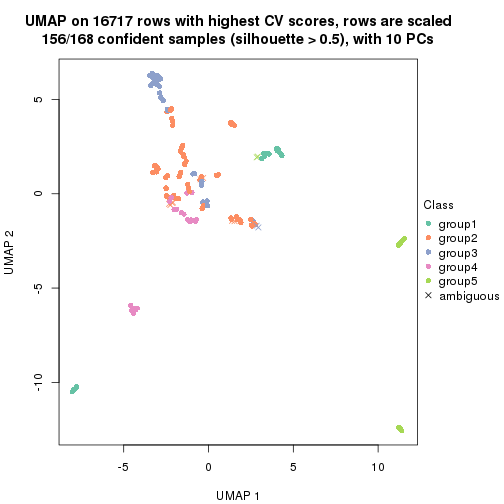
dimension_reduction(res, k = 6, method = "UMAP")
Following heatmap shows how subgroups are split when increasing k:
collect_classes(res)
If matrix rows can be associated to genes, consider to use GO_Enrichment(res,
...) to perform function enrichment for the signature genes.
The object with results only for a single top-value method and a single partition method can be extracted as:
res = res_list["CV", "mclust"]
# you can also extract it by
# res = res_list["CV:mclust"]
A summary of res and all the functions that can be applied to it:
res
#> A 'ConsensusPartition' object with k = 2, 3, 4, 5, 6.
#> On a matrix with 16717 rows and 168 columns.
#> Top rows (1000, 2000, 3000, 4000, 5000) are extracted by 'CV' method.
#> Subgroups are detected by 'mclust' method.
#> Performed in total 1250 partitions by row resampling.
#> Best k for subgroups seems to be 3.
#>
#> Following methods can be applied to this 'ConsensusPartition' object:
#> [1] "cola_report" "collect_classes" "collect_plots"
#> [4] "collect_stats" "colnames" "compare_signatures"
#> [7] "consensus_heatmap" "dimension_reduction" "functional_enrichment"
#> [10] "get_anno_col" "get_anno" "get_classes"
#> [13] "get_consensus" "get_matrix" "get_membership"
#> [16] "get_param" "get_signatures" "get_stats"
#> [19] "is_best_k" "is_stable_k" "membership_heatmap"
#> [22] "ncol" "nrow" "plot_ecdf"
#> [25] "rownames" "select_partition_number" "show"
#> [28] "suggest_best_k" "test_to_known_factors"
collect_plots() function collects all the plots made from res for all k (number of partitions)
into one single page to provide an easy and fast comparison between different k.
collect_plots(res)
The plots are:
k and the heatmap of
predicted classes for each k.k.k.k.All the plots in panels can be made by individual functions and they are plotted later in this section.
select_partition_number() produces several plots showing different
statistics for choosing “optimized” k. There are following statistics:
k;k, the area increased is defined as \(A_k - A_{k-1}\).The detailed explanations of these statistics can be found in the cola vignette.
Generally speaking, lower PAC score, higher mean silhouette score or higher
concordance corresponds to better partition. Rand index and Jaccard index
measure how similar the current partition is compared to partition with k-1.
If they are too similar, we won't accept k is better than k-1.
select_partition_number(res)
The numeric values for all these statistics can be obtained by get_stats().
get_stats(res)
#> k 1-PAC mean_silhouette concordance area_increased Rand Jaccard
#> 2 2 0.293 0.689 0.746 0.4007 0.675 0.675
#> 3 3 0.665 0.740 0.857 0.5380 0.689 0.539
#> 4 4 0.597 0.756 0.836 0.1320 0.913 0.772
#> 5 5 0.693 0.701 0.773 0.0803 0.986 0.956
#> 6 6 0.710 0.636 0.766 0.0586 0.891 0.648
suggest_best_k() suggests the best \(k\) based on these statistics. The rules are as follows:
NA.suggest_best_k(res)
#> [1] 3
Following shows the table of the partitions (You need to click the show/hide
code output link to see it). The membership matrix (columns with name p*)
is inferred by
clue::cl_consensus()
function with the SE method. Basically the value in the membership matrix
represents the probability to belong to a certain group. The finall class
label for an item is determined with the group with highest probability it
belongs to.
In get_classes() function, the entropy is calculated from the membership
matrix and the silhouette score is calculated from the consensus matrix.
cbind(get_classes(res, k = 2), get_membership(res, k = 2))
#> class entropy silhouette p1 p2
#> SRR1768889 2 0.753 0.565 0.216 0.784
#> SRR1768890 2 0.753 0.565 0.216 0.784
#> SRR1768891 2 0.788 0.668 0.236 0.764
#> SRR1768892 2 0.788 0.668 0.236 0.764
#> SRR1768893 2 0.788 0.668 0.236 0.764
#> SRR1768894 2 0.788 0.668 0.236 0.764
#> SRR1768895 2 0.891 0.657 0.308 0.692
#> SRR1768896 2 0.891 0.657 0.308 0.692
#> SRR1768821 2 0.895 0.655 0.312 0.688
#> SRR1768822 2 0.895 0.655 0.312 0.688
#> SRR1768823 2 0.895 0.655 0.312 0.688
#> SRR1768824 2 0.895 0.655 0.312 0.688
#> SRR1768825 2 0.844 0.667 0.272 0.728
#> SRR1768826 2 0.833 0.668 0.264 0.736
#> SRR1768827 2 0.802 0.668 0.244 0.756
#> SRR1768828 2 0.802 0.668 0.244 0.756
#> SRR1768829 2 0.871 0.663 0.292 0.708
#> SRR1768830 2 0.871 0.663 0.292 0.708
#> SRR1768831 2 0.753 0.565 0.216 0.784
#> SRR1768832 2 0.753 0.565 0.216 0.784
#> SRR1768833 2 0.936 0.505 0.352 0.648
#> SRR1768834 2 0.936 0.505 0.352 0.648
#> SRR1768835 2 0.932 0.505 0.348 0.652
#> SRR1768836 2 0.925 0.504 0.340 0.660
#> SRR1768837 2 0.925 0.504 0.340 0.660
#> SRR1768838 2 0.745 0.568 0.212 0.788
#> SRR1768839 2 0.745 0.568 0.212 0.788
#> SRR1768840 2 0.745 0.568 0.212 0.788
#> SRR1768841 2 0.745 0.568 0.212 0.788
#> SRR1768842 2 0.949 0.579 0.368 0.632
#> SRR1768843 2 0.949 0.579 0.368 0.632
#> SRR1768844 2 0.745 0.568 0.212 0.788
#> SRR1768845 2 0.745 0.568 0.212 0.788
#> SRR1768846 2 0.753 0.565 0.216 0.784
#> SRR1768847 2 0.753 0.565 0.216 0.784
#> SRR1768848 2 0.753 0.565 0.216 0.784
#> SRR1768849 2 0.753 0.565 0.216 0.784
#> SRR1768850 2 0.753 0.565 0.216 0.784
#> SRR1768851 2 0.753 0.565 0.216 0.784
#> SRR1768852 2 0.978 0.612 0.412 0.588
#> SRR1768853 2 0.978 0.612 0.412 0.588
#> SRR1768854 2 0.975 0.613 0.408 0.592
#> SRR1768855 2 0.753 0.565 0.216 0.784
#> SRR1768856 2 0.753 0.565 0.216 0.784
#> SRR1768857 2 0.753 0.565 0.216 0.784
#> SRR1768858 2 0.574 0.588 0.136 0.864
#> SRR1768859 2 0.574 0.588 0.136 0.864
#> SRR1768860 2 0.584 0.587 0.140 0.860
#> SRR1768861 2 0.753 0.565 0.216 0.784
#> SRR1768862 2 0.753 0.565 0.216 0.784
#> SRR1768863 2 0.738 0.573 0.208 0.792
#> SRR1768864 2 0.738 0.573 0.208 0.792
#> SRR1768865 2 0.753 0.565 0.216 0.784
#> SRR1768866 2 0.753 0.565 0.216 0.784
#> SRR1768867 2 0.895 0.655 0.312 0.688
#> SRR1768868 2 0.895 0.655 0.312 0.688
#> SRR1768869 2 1.000 0.554 0.500 0.500
#> SRR1768870 2 1.000 0.554 0.500 0.500
#> SRR1768871 2 0.997 0.570 0.468 0.532
#> SRR1768872 2 0.995 0.573 0.460 0.540
#> SRR1768873 2 0.993 0.583 0.452 0.548
#> SRR1768874 2 0.994 0.581 0.456 0.544
#> SRR1768875 2 0.753 0.565 0.216 0.784
#> SRR1768876 2 0.753 0.565 0.216 0.784
#> SRR1768877 2 0.753 0.565 0.216 0.784
#> SRR1768878 2 0.753 0.565 0.216 0.784
#> SRR1768879 2 0.753 0.565 0.216 0.784
#> SRR1768880 2 0.753 0.565 0.216 0.784
#> SRR1768881 2 0.745 0.568 0.212 0.788
#> SRR1768882 2 0.745 0.568 0.212 0.788
#> SRR1768883 2 0.753 0.565 0.216 0.784
#> SRR1768884 2 0.753 0.565 0.216 0.784
#> SRR1768885 2 0.753 0.565 0.216 0.784
#> SRR1768886 2 0.753 0.565 0.216 0.784
#> SRR1768887 2 0.753 0.565 0.216 0.784
#> SRR1768888 2 0.753 0.565 0.216 0.784
#> SRR1768897 2 0.891 0.657 0.308 0.692
#> SRR1768898 2 0.891 0.657 0.308 0.692
#> SRR1768899 2 0.895 0.655 0.312 0.688
#> SRR1768900 2 0.895 0.655 0.312 0.688
#> SRR1768901 2 0.895 0.655 0.312 0.688
#> SRR1768902 2 0.895 0.655 0.312 0.688
#> SRR1768903 2 0.895 0.655 0.312 0.688
#> SRR1768904 2 0.895 0.655 0.312 0.688
#> SRR1768905 2 0.895 0.655 0.312 0.688
#> SRR1768906 2 0.895 0.655 0.312 0.688
#> SRR1768907 2 0.895 0.655 0.312 0.688
#> SRR1768908 2 0.895 0.655 0.312 0.688
#> SRR1768909 2 0.895 0.655 0.312 0.688
#> SRR1768910 2 0.895 0.655 0.312 0.688
#> SRR1768911 2 0.895 0.655 0.312 0.688
#> SRR1768912 2 0.895 0.655 0.312 0.688
#> SRR1768913 2 0.895 0.655 0.312 0.688
#> SRR1768914 2 0.895 0.655 0.312 0.688
#> SRR1768915 2 0.895 0.655 0.312 0.688
#> SRR1768916 2 0.996 0.583 0.464 0.536
#> SRR1768917 2 0.895 0.655 0.312 0.688
#> SRR1768918 2 0.895 0.655 0.312 0.688
#> SRR1768919 2 0.895 0.655 0.312 0.688
#> SRR1768920 2 0.881 0.661 0.300 0.700
#> SRR1768921 2 0.881 0.661 0.300 0.700
#> SRR1768922 2 0.833 0.668 0.264 0.736
#> SRR1768923 2 0.833 0.668 0.264 0.736
#> SRR1768924 2 0.929 0.504 0.344 0.656
#> SRR1768925 2 0.929 0.504 0.344 0.656
#> SRR1768926 2 0.925 0.504 0.340 0.660
#> SRR1768927 2 0.925 0.504 0.340 0.660
#> SRR1768928 2 0.929 0.504 0.344 0.656
#> SRR1768929 2 0.929 0.504 0.344 0.656
#> SRR1768930 2 0.891 0.657 0.308 0.692
#> SRR1768931 2 0.886 0.659 0.304 0.696
#> SRR1768932 2 0.886 0.659 0.304 0.696
#> SRR1768933 2 0.855 0.665 0.280 0.720
#> SRR1768934 2 0.861 0.665 0.284 0.716
#> SRR1768935 2 0.844 0.667 0.272 0.728
#> SRR1768936 2 0.891 0.657 0.308 0.692
#> SRR1768937 2 0.891 0.657 0.308 0.692
#> SRR1768938 2 0.891 0.657 0.308 0.692
#> SRR1768939 2 0.895 0.655 0.312 0.688
#> SRR1768940 2 0.895 0.655 0.312 0.688
#> SRR1768941 2 0.802 0.669 0.244 0.756
#> SRR1768942 2 0.802 0.669 0.244 0.756
#> SRR1768943 2 0.788 0.668 0.236 0.764
#> SRR1768944 2 0.788 0.668 0.236 0.764
#> SRR1768945 2 0.876 0.662 0.296 0.704
#> SRR1768946 2 0.876 0.662 0.296 0.704
#> SRR1768947 2 0.895 0.655 0.312 0.688
#> SRR1768948 2 0.895 0.655 0.312 0.688
#> SRR1768949 2 0.895 0.655 0.312 0.688
#> SRR1768950 2 0.895 0.655 0.312 0.688
#> SRR1768954 1 0.000 1.000 1.000 0.000
#> SRR1768955 1 0.000 1.000 1.000 0.000
#> SRR1768956 1 0.000 1.000 1.000 0.000
#> SRR1768957 1 0.000 1.000 1.000 0.000
#> SRR1768958 1 0.000 1.000 1.000 0.000
#> SRR1768959 1 0.000 1.000 1.000 0.000
#> SRR1768960 1 0.000 1.000 1.000 0.000
#> SRR1768961 1 0.000 1.000 1.000 0.000
#> SRR1768952 2 0.895 0.655 0.312 0.688
#> SRR1768953 2 0.895 0.655 0.312 0.688
#> SRR1768962 1 0.000 1.000 1.000 0.000
#> SRR1768963 1 0.000 1.000 1.000 0.000
#> SRR1768964 1 0.000 1.000 1.000 0.000
#> SRR1768965 1 0.000 1.000 1.000 0.000
#> SRR1768966 1 0.000 1.000 1.000 0.000
#> SRR1768967 1 0.000 1.000 1.000 0.000
#> SRR1768968 1 0.000 1.000 1.000 0.000
#> SRR1768969 1 0.000 1.000 1.000 0.000
#> SRR1768970 1 0.000 1.000 1.000 0.000
#> SRR1768971 1 0.000 1.000 1.000 0.000
#> SRR1768972 1 0.000 1.000 1.000 0.000
#> SRR1768973 1 0.000 1.000 1.000 0.000
#> SRR1768974 1 0.000 1.000 1.000 0.000
#> SRR1768975 1 0.000 1.000 1.000 0.000
#> SRR1768976 1 0.000 1.000 1.000 0.000
#> SRR1768977 1 0.000 1.000 1.000 0.000
#> SRR1768978 1 0.000 1.000 1.000 0.000
#> SRR1768979 1 0.000 1.000 1.000 0.000
#> SRR1768980 1 0.000 1.000 1.000 0.000
#> SRR1768981 1 0.000 1.000 1.000 0.000
#> SRR1768982 1 0.000 1.000 1.000 0.000
#> SRR1768983 1 0.000 1.000 1.000 0.000
#> SRR1768984 2 0.999 0.558 0.484 0.516
#> SRR1768985 2 0.999 0.558 0.484 0.516
#> SRR1768986 1 0.000 1.000 1.000 0.000
#> SRR1768987 1 0.000 1.000 1.000 0.000
#> SRR1768988 1 0.000 1.000 1.000 0.000
#> SRR1768989 1 0.000 1.000 1.000 0.000
cbind(get_classes(res, k = 3), get_membership(res, k = 3))
#> class entropy silhouette p1 p2 p3
#> SRR1768889 3 0.0592 0.7216 0.000 0.012 0.988
#> SRR1768890 3 0.0592 0.7216 0.000 0.012 0.988
#> SRR1768891 2 0.2537 0.8530 0.000 0.920 0.080
#> SRR1768892 2 0.2537 0.8530 0.000 0.920 0.080
#> SRR1768893 2 0.2537 0.8530 0.000 0.920 0.080
#> SRR1768894 2 0.2537 0.8530 0.000 0.920 0.080
#> SRR1768895 2 0.0592 0.8867 0.000 0.988 0.012
#> SRR1768896 2 0.0592 0.8867 0.000 0.988 0.012
#> SRR1768821 2 0.0892 0.8857 0.000 0.980 0.020
#> SRR1768822 2 0.1031 0.8849 0.000 0.976 0.024
#> SRR1768823 2 0.0892 0.8826 0.000 0.980 0.020
#> SRR1768824 2 0.1031 0.8834 0.000 0.976 0.024
#> SRR1768825 2 0.1289 0.8828 0.000 0.968 0.032
#> SRR1768826 2 0.1411 0.8812 0.000 0.964 0.036
#> SRR1768827 2 0.1529 0.8765 0.000 0.960 0.040
#> SRR1768828 2 0.1643 0.8742 0.000 0.956 0.044
#> SRR1768829 2 0.0592 0.8867 0.000 0.988 0.012
#> SRR1768830 2 0.0592 0.8867 0.000 0.988 0.012
#> SRR1768831 3 0.9324 0.5222 0.272 0.212 0.516
#> SRR1768832 3 0.9324 0.5222 0.272 0.212 0.516
#> SRR1768833 3 0.9978 0.4221 0.308 0.328 0.364
#> SRR1768834 3 0.9978 0.4221 0.308 0.328 0.364
#> SRR1768835 3 0.9978 0.4221 0.308 0.328 0.364
#> SRR1768836 3 0.9978 0.4221 0.308 0.328 0.364
#> SRR1768837 3 0.9978 0.4221 0.308 0.328 0.364
#> SRR1768838 3 0.9324 0.5222 0.272 0.212 0.516
#> SRR1768839 3 0.9324 0.5222 0.272 0.212 0.516
#> SRR1768840 3 0.9324 0.5222 0.272 0.212 0.516
#> SRR1768841 3 0.9324 0.5222 0.272 0.212 0.516
#> SRR1768842 3 0.9967 0.4071 0.296 0.340 0.364
#> SRR1768843 3 0.9967 0.4071 0.296 0.340 0.364
#> SRR1768844 3 0.1453 0.7235 0.008 0.024 0.968
#> SRR1768845 3 0.1453 0.7235 0.008 0.024 0.968
#> SRR1768846 3 0.0592 0.7216 0.000 0.012 0.988
#> SRR1768847 3 0.0592 0.7216 0.000 0.012 0.988
#> SRR1768848 3 0.0592 0.7216 0.000 0.012 0.988
#> SRR1768849 3 0.0592 0.7216 0.000 0.012 0.988
#> SRR1768850 3 0.1267 0.7239 0.004 0.024 0.972
#> SRR1768851 3 0.1267 0.7239 0.004 0.024 0.972
#> SRR1768852 3 0.9462 0.2544 0.180 0.400 0.420
#> SRR1768853 3 0.9464 0.2429 0.180 0.404 0.416
#> SRR1768854 3 0.9462 0.2544 0.180 0.400 0.420
#> SRR1768855 3 0.0592 0.7216 0.000 0.012 0.988
#> SRR1768856 3 0.0592 0.7216 0.000 0.012 0.988
#> SRR1768857 3 0.0592 0.7216 0.000 0.012 0.988
#> SRR1768858 3 0.6113 0.5213 0.012 0.300 0.688
#> SRR1768859 3 0.6143 0.5159 0.012 0.304 0.684
#> SRR1768860 3 0.5986 0.5413 0.012 0.284 0.704
#> SRR1768861 3 0.0892 0.7233 0.000 0.020 0.980
#> SRR1768862 3 0.0892 0.7233 0.000 0.020 0.980
#> SRR1768863 2 0.8803 0.2829 0.180 0.580 0.240
#> SRR1768864 2 0.8770 0.2951 0.180 0.584 0.236
#> SRR1768865 3 0.0592 0.7216 0.000 0.012 0.988
#> SRR1768866 3 0.0592 0.7216 0.000 0.012 0.988
#> SRR1768867 2 0.2066 0.8636 0.000 0.940 0.060
#> SRR1768868 2 0.2165 0.8605 0.000 0.936 0.064
#> SRR1768869 2 0.9466 -0.2072 0.188 0.456 0.356
#> SRR1768870 2 0.9466 -0.2072 0.188 0.456 0.356
#> SRR1768871 2 0.9483 -0.2306 0.188 0.448 0.364
#> SRR1768872 2 0.9483 -0.2306 0.188 0.448 0.364
#> SRR1768873 2 0.9249 -0.0451 0.180 0.508 0.312
#> SRR1768874 2 0.9231 -0.0304 0.180 0.512 0.308
#> SRR1768875 3 0.0592 0.7216 0.000 0.012 0.988
#> SRR1768876 3 0.0592 0.7216 0.000 0.012 0.988
#> SRR1768877 3 0.0592 0.7216 0.000 0.012 0.988
#> SRR1768878 3 0.0592 0.7216 0.000 0.012 0.988
#> SRR1768879 3 0.1267 0.7239 0.004 0.024 0.972
#> SRR1768880 3 0.1267 0.7239 0.004 0.024 0.972
#> SRR1768881 3 0.1267 0.7239 0.004 0.024 0.972
#> SRR1768882 3 0.1267 0.7239 0.004 0.024 0.972
#> SRR1768883 3 0.1267 0.7239 0.004 0.024 0.972
#> SRR1768884 3 0.1267 0.7239 0.004 0.024 0.972
#> SRR1768885 3 0.0592 0.7216 0.000 0.012 0.988
#> SRR1768886 3 0.0592 0.7216 0.000 0.012 0.988
#> SRR1768887 3 0.0592 0.7216 0.000 0.012 0.988
#> SRR1768888 3 0.0592 0.7216 0.000 0.012 0.988
#> SRR1768897 2 0.0892 0.8870 0.000 0.980 0.020
#> SRR1768898 2 0.0892 0.8870 0.000 0.980 0.020
#> SRR1768899 2 0.0747 0.8871 0.000 0.984 0.016
#> SRR1768900 2 0.0747 0.8871 0.000 0.984 0.016
#> SRR1768901 2 0.0892 0.8863 0.000 0.980 0.020
#> SRR1768902 2 0.0892 0.8863 0.000 0.980 0.020
#> SRR1768903 2 0.0892 0.8863 0.000 0.980 0.020
#> SRR1768904 2 0.0747 0.8871 0.000 0.984 0.016
#> SRR1768905 2 0.0747 0.8871 0.000 0.984 0.016
#> SRR1768906 2 0.0747 0.8871 0.000 0.984 0.016
#> SRR1768907 2 0.0892 0.8863 0.000 0.980 0.020
#> SRR1768908 2 0.0892 0.8863 0.000 0.980 0.020
#> SRR1768909 2 0.0892 0.8863 0.000 0.980 0.020
#> SRR1768910 2 0.0892 0.8863 0.000 0.980 0.020
#> SRR1768911 2 0.0892 0.8863 0.000 0.980 0.020
#> SRR1768912 2 0.0892 0.8863 0.000 0.980 0.020
#> SRR1768913 2 0.0892 0.8863 0.000 0.980 0.020
#> SRR1768914 2 0.0892 0.8863 0.000 0.980 0.020
#> SRR1768915 2 0.0892 0.8863 0.000 0.980 0.020
#> SRR1768916 2 0.8638 0.2681 0.184 0.600 0.216
#> SRR1768917 2 0.0424 0.8828 0.000 0.992 0.008
#> SRR1768918 2 0.0892 0.8863 0.000 0.980 0.020
#> SRR1768919 2 0.0892 0.8863 0.000 0.980 0.020
#> SRR1768920 2 0.1860 0.8679 0.000 0.948 0.052
#> SRR1768921 2 0.1860 0.8679 0.000 0.948 0.052
#> SRR1768922 2 0.1529 0.8769 0.000 0.960 0.040
#> SRR1768923 2 0.1529 0.8790 0.000 0.960 0.040
#> SRR1768924 3 0.9978 0.4221 0.308 0.328 0.364
#> SRR1768925 3 0.9978 0.4221 0.308 0.328 0.364
#> SRR1768926 3 0.9978 0.4221 0.308 0.328 0.364
#> SRR1768927 3 0.9978 0.4221 0.308 0.328 0.364
#> SRR1768928 3 0.9978 0.4221 0.308 0.328 0.364
#> SRR1768929 3 0.9978 0.4221 0.308 0.328 0.364
#> SRR1768930 2 0.0592 0.8867 0.000 0.988 0.012
#> SRR1768931 2 0.0592 0.8867 0.000 0.988 0.012
#> SRR1768932 2 0.0592 0.8867 0.000 0.988 0.012
#> SRR1768933 2 0.1031 0.8848 0.000 0.976 0.024
#> SRR1768934 2 0.1031 0.8848 0.000 0.976 0.024
#> SRR1768935 2 0.1031 0.8848 0.000 0.976 0.024
#> SRR1768936 2 0.0000 0.8826 0.000 1.000 0.000
#> SRR1768937 2 0.0000 0.8826 0.000 1.000 0.000
#> SRR1768938 2 0.0000 0.8826 0.000 1.000 0.000
#> SRR1768939 2 0.2165 0.8605 0.000 0.936 0.064
#> SRR1768940 2 0.2165 0.8605 0.000 0.936 0.064
#> SRR1768941 2 0.3649 0.8390 0.036 0.896 0.068
#> SRR1768942 2 0.3649 0.8390 0.036 0.896 0.068
#> SRR1768943 2 0.2584 0.8587 0.008 0.928 0.064
#> SRR1768944 2 0.2584 0.8587 0.008 0.928 0.064
#> SRR1768945 2 0.2165 0.8605 0.000 0.936 0.064
#> SRR1768946 2 0.2165 0.8605 0.000 0.936 0.064
#> SRR1768947 2 0.0747 0.8871 0.000 0.984 0.016
#> SRR1768948 2 0.0747 0.8871 0.000 0.984 0.016
#> SRR1768949 2 0.0892 0.8863 0.000 0.980 0.020
#> SRR1768950 2 0.4887 0.6542 0.000 0.772 0.228
#> SRR1768954 1 0.1482 0.9204 0.968 0.012 0.020
#> SRR1768955 1 0.1482 0.9204 0.968 0.012 0.020
#> SRR1768956 1 0.1482 0.9204 0.968 0.012 0.020
#> SRR1768957 1 0.1482 0.9204 0.968 0.012 0.020
#> SRR1768958 1 0.1482 0.9204 0.968 0.012 0.020
#> SRR1768959 1 0.1482 0.9204 0.968 0.012 0.020
#> SRR1768960 1 0.1482 0.9204 0.968 0.012 0.020
#> SRR1768961 1 0.1482 0.9204 0.968 0.012 0.020
#> SRR1768952 2 0.0747 0.8871 0.000 0.984 0.016
#> SRR1768953 2 0.0747 0.8871 0.000 0.984 0.016
#> SRR1768962 1 0.2448 0.9453 0.924 0.076 0.000
#> SRR1768963 1 0.2448 0.9453 0.924 0.076 0.000
#> SRR1768964 1 0.2448 0.9453 0.924 0.076 0.000
#> SRR1768965 1 0.2448 0.9453 0.924 0.076 0.000
#> SRR1768966 1 0.2448 0.9453 0.924 0.076 0.000
#> SRR1768967 1 0.2448 0.9453 0.924 0.076 0.000
#> SRR1768968 1 0.2448 0.9453 0.924 0.076 0.000
#> SRR1768969 1 0.2448 0.9453 0.924 0.076 0.000
#> SRR1768970 1 0.2448 0.9453 0.924 0.076 0.000
#> SRR1768971 1 0.2448 0.9453 0.924 0.076 0.000
#> SRR1768972 1 0.1482 0.9204 0.968 0.012 0.020
#> SRR1768973 1 0.1482 0.9204 0.968 0.012 0.020
#> SRR1768974 1 0.1482 0.9204 0.968 0.012 0.020
#> SRR1768975 1 0.1482 0.9204 0.968 0.012 0.020
#> SRR1768976 1 0.1482 0.9204 0.968 0.012 0.020
#> SRR1768977 1 0.1482 0.9204 0.968 0.012 0.020
#> SRR1768978 1 0.2448 0.9453 0.924 0.076 0.000
#> SRR1768979 1 0.2448 0.9453 0.924 0.076 0.000
#> SRR1768980 1 0.2448 0.9453 0.924 0.076 0.000
#> SRR1768981 1 0.2448 0.9453 0.924 0.076 0.000
#> SRR1768982 1 0.2448 0.9453 0.924 0.076 0.000
#> SRR1768983 1 0.2448 0.9453 0.924 0.076 0.000
#> SRR1768984 2 0.8628 0.3272 0.340 0.544 0.116
#> SRR1768985 2 0.8628 0.3272 0.340 0.544 0.116
#> SRR1768986 1 0.2448 0.9453 0.924 0.076 0.000
#> SRR1768987 1 0.2448 0.9453 0.924 0.076 0.000
#> SRR1768988 1 0.2448 0.9453 0.924 0.076 0.000
#> SRR1768989 1 0.2448 0.9453 0.924 0.076 0.000
cbind(get_classes(res, k = 4), get_membership(res, k = 4))
#> class entropy silhouette p1 p2 p3 p4
#> SRR1768889 3 0.0336 0.907 0.000 0.000 0.992 0.008
#> SRR1768890 3 0.0336 0.907 0.000 0.000 0.992 0.008
#> SRR1768891 2 0.5886 0.734 0.020 0.732 0.156 0.092
#> SRR1768892 2 0.5886 0.734 0.020 0.732 0.156 0.092
#> SRR1768893 2 0.5927 0.734 0.024 0.732 0.156 0.088
#> SRR1768894 2 0.5927 0.734 0.024 0.732 0.156 0.088
#> SRR1768895 2 0.1821 0.809 0.008 0.948 0.012 0.032
#> SRR1768896 2 0.1821 0.809 0.008 0.948 0.012 0.032
#> SRR1768821 2 0.1356 0.807 0.032 0.960 0.000 0.008
#> SRR1768822 2 0.1209 0.805 0.032 0.964 0.000 0.004
#> SRR1768823 2 0.1302 0.803 0.044 0.956 0.000 0.000
#> SRR1768824 2 0.1302 0.803 0.044 0.956 0.000 0.000
#> SRR1768825 2 0.1674 0.808 0.004 0.952 0.012 0.032
#> SRR1768826 2 0.1674 0.808 0.004 0.952 0.012 0.032
#> SRR1768827 2 0.0188 0.800 0.000 0.996 0.004 0.000
#> SRR1768828 2 0.0188 0.800 0.000 0.996 0.004 0.000
#> SRR1768829 2 0.1917 0.808 0.008 0.944 0.012 0.036
#> SRR1768830 2 0.1917 0.808 0.008 0.944 0.012 0.036
#> SRR1768831 4 0.0921 0.736 0.028 0.000 0.000 0.972
#> SRR1768832 4 0.0921 0.736 0.028 0.000 0.000 0.972
#> SRR1768833 4 0.4035 0.875 0.020 0.176 0.000 0.804
#> SRR1768834 4 0.4035 0.875 0.020 0.176 0.000 0.804
#> SRR1768835 4 0.4035 0.875 0.020 0.176 0.000 0.804
#> SRR1768836 4 0.4035 0.875 0.020 0.176 0.000 0.804
#> SRR1768837 4 0.4035 0.875 0.020 0.176 0.000 0.804
#> SRR1768838 4 0.0921 0.736 0.028 0.000 0.000 0.972
#> SRR1768839 4 0.0921 0.736 0.028 0.000 0.000 0.972
#> SRR1768840 4 0.1109 0.741 0.028 0.004 0.000 0.968
#> SRR1768841 4 0.1109 0.741 0.028 0.004 0.000 0.968
#> SRR1768842 4 0.3991 0.876 0.020 0.172 0.000 0.808
#> SRR1768843 4 0.3991 0.876 0.020 0.172 0.000 0.808
#> SRR1768844 3 0.3047 0.871 0.000 0.012 0.872 0.116
#> SRR1768845 3 0.3047 0.871 0.000 0.012 0.872 0.116
#> SRR1768846 3 0.0000 0.906 0.000 0.000 1.000 0.000
#> SRR1768847 3 0.0000 0.906 0.000 0.000 1.000 0.000
#> SRR1768848 3 0.0469 0.907 0.000 0.000 0.988 0.012
#> SRR1768849 3 0.0469 0.907 0.000 0.000 0.988 0.012
#> SRR1768850 3 0.3047 0.871 0.000 0.012 0.872 0.116
#> SRR1768851 3 0.3047 0.871 0.000 0.012 0.872 0.116
#> SRR1768852 2 0.8094 0.393 0.028 0.508 0.232 0.232
#> SRR1768853 2 0.8094 0.393 0.028 0.508 0.232 0.232
#> SRR1768854 2 0.8008 0.392 0.024 0.512 0.232 0.232
#> SRR1768855 3 0.0336 0.907 0.000 0.000 0.992 0.008
#> SRR1768856 3 0.0336 0.907 0.000 0.000 0.992 0.008
#> SRR1768857 3 0.0336 0.907 0.000 0.000 0.992 0.008
#> SRR1768858 3 0.6327 0.556 0.000 0.216 0.652 0.132
#> SRR1768859 3 0.6359 0.549 0.000 0.220 0.648 0.132
#> SRR1768860 3 0.6327 0.556 0.000 0.216 0.652 0.132
#> SRR1768861 3 0.1489 0.900 0.000 0.004 0.952 0.044
#> SRR1768862 3 0.1489 0.900 0.000 0.004 0.952 0.044
#> SRR1768863 2 0.7686 0.384 0.004 0.476 0.312 0.208
#> SRR1768864 2 0.7686 0.384 0.004 0.476 0.312 0.208
#> SRR1768865 3 0.1792 0.898 0.000 0.000 0.932 0.068
#> SRR1768866 3 0.1792 0.898 0.000 0.000 0.932 0.068
#> SRR1768867 2 0.2255 0.796 0.068 0.920 0.000 0.012
#> SRR1768868 2 0.2255 0.796 0.068 0.920 0.000 0.012
#> SRR1768869 2 0.7559 -0.202 0.020 0.436 0.112 0.432
#> SRR1768870 2 0.7559 -0.186 0.020 0.440 0.112 0.428
#> SRR1768871 4 0.5517 0.395 0.020 0.412 0.000 0.568
#> SRR1768872 4 0.5517 0.395 0.020 0.412 0.000 0.568
#> SRR1768873 2 0.7528 0.182 0.020 0.520 0.124 0.336
#> SRR1768874 2 0.7528 0.182 0.020 0.520 0.124 0.336
#> SRR1768875 3 0.0336 0.907 0.000 0.000 0.992 0.008
#> SRR1768876 3 0.0336 0.907 0.000 0.000 0.992 0.008
#> SRR1768877 3 0.0336 0.907 0.000 0.000 0.992 0.008
#> SRR1768878 3 0.0336 0.907 0.000 0.000 0.992 0.008
#> SRR1768879 3 0.2918 0.872 0.000 0.008 0.876 0.116
#> SRR1768880 3 0.2918 0.872 0.000 0.008 0.876 0.116
#> SRR1768881 3 0.3047 0.871 0.000 0.012 0.872 0.116
#> SRR1768882 3 0.3047 0.871 0.000 0.012 0.872 0.116
#> SRR1768883 3 0.3047 0.871 0.000 0.012 0.872 0.116
#> SRR1768884 3 0.3047 0.871 0.000 0.012 0.872 0.116
#> SRR1768885 3 0.0336 0.907 0.000 0.000 0.992 0.008
#> SRR1768886 3 0.0336 0.907 0.000 0.000 0.992 0.008
#> SRR1768887 3 0.0336 0.907 0.000 0.000 0.992 0.008
#> SRR1768888 3 0.0336 0.907 0.000 0.000 0.992 0.008
#> SRR1768897 2 0.3417 0.801 0.008 0.880 0.052 0.060
#> SRR1768898 2 0.3417 0.801 0.008 0.880 0.052 0.060
#> SRR1768899 2 0.3793 0.796 0.044 0.844 0.000 0.112
#> SRR1768900 2 0.3706 0.795 0.040 0.848 0.000 0.112
#> SRR1768901 2 0.3881 0.803 0.028 0.860 0.028 0.084
#> SRR1768902 2 0.3881 0.803 0.028 0.860 0.028 0.084
#> SRR1768903 2 0.4050 0.805 0.032 0.856 0.040 0.072
#> SRR1768904 2 0.4746 0.803 0.064 0.824 0.052 0.060
#> SRR1768905 2 0.4595 0.805 0.056 0.832 0.052 0.060
#> SRR1768906 2 0.4821 0.803 0.068 0.820 0.056 0.056
#> SRR1768907 2 0.5674 0.760 0.148 0.720 0.000 0.132
#> SRR1768908 2 0.5674 0.760 0.148 0.720 0.000 0.132
#> SRR1768909 2 0.5674 0.760 0.148 0.720 0.000 0.132
#> SRR1768910 2 0.5674 0.760 0.148 0.720 0.000 0.132
#> SRR1768911 2 0.5674 0.760 0.148 0.720 0.000 0.132
#> SRR1768912 2 0.5674 0.760 0.148 0.720 0.000 0.132
#> SRR1768913 2 0.5674 0.760 0.148 0.720 0.000 0.132
#> SRR1768914 2 0.5628 0.762 0.144 0.724 0.000 0.132
#> SRR1768915 2 0.5628 0.762 0.144 0.724 0.000 0.132
#> SRR1768916 2 0.6638 0.527 0.008 0.640 0.124 0.228
#> SRR1768917 2 0.0804 0.805 0.008 0.980 0.000 0.012
#> SRR1768918 2 0.5533 0.766 0.136 0.732 0.000 0.132
#> SRR1768919 2 0.5484 0.767 0.132 0.736 0.000 0.132
#> SRR1768920 2 0.1917 0.801 0.036 0.944 0.008 0.012
#> SRR1768921 2 0.2010 0.801 0.040 0.940 0.008 0.012
#> SRR1768922 2 0.4477 0.786 0.016 0.812 0.032 0.140
#> SRR1768923 2 0.4477 0.786 0.016 0.812 0.032 0.140
#> SRR1768924 4 0.3946 0.877 0.020 0.168 0.000 0.812
#> SRR1768925 4 0.3946 0.877 0.020 0.168 0.000 0.812
#> SRR1768926 4 0.3946 0.877 0.020 0.168 0.000 0.812
#> SRR1768927 4 0.3946 0.877 0.020 0.168 0.000 0.812
#> SRR1768928 4 0.3946 0.877 0.020 0.168 0.000 0.812
#> SRR1768929 4 0.3946 0.877 0.020 0.168 0.000 0.812
#> SRR1768930 2 0.0188 0.800 0.004 0.996 0.000 0.000
#> SRR1768931 2 0.0188 0.800 0.004 0.996 0.000 0.000
#> SRR1768932 2 0.0188 0.800 0.004 0.996 0.000 0.000
#> SRR1768933 2 0.0657 0.797 0.004 0.984 0.000 0.012
#> SRR1768934 2 0.0657 0.797 0.004 0.984 0.000 0.012
#> SRR1768935 2 0.0657 0.797 0.004 0.984 0.000 0.012
#> SRR1768936 2 0.0188 0.800 0.004 0.996 0.000 0.000
#> SRR1768937 2 0.0188 0.800 0.004 0.996 0.000 0.000
#> SRR1768938 2 0.0188 0.800 0.004 0.996 0.000 0.000
#> SRR1768939 2 0.2335 0.800 0.044 0.928 0.008 0.020
#> SRR1768940 2 0.2587 0.799 0.056 0.916 0.008 0.020
#> SRR1768941 2 0.4318 0.719 0.000 0.816 0.116 0.068
#> SRR1768942 2 0.4318 0.719 0.000 0.816 0.116 0.068
#> SRR1768943 2 0.3809 0.760 0.024 0.864 0.080 0.032
#> SRR1768944 2 0.3809 0.760 0.024 0.864 0.080 0.032
#> SRR1768945 2 0.2891 0.791 0.080 0.896 0.004 0.020
#> SRR1768946 2 0.2891 0.791 0.080 0.896 0.004 0.020
#> SRR1768947 2 0.5100 0.784 0.088 0.772 0.004 0.136
#> SRR1768948 2 0.5100 0.784 0.088 0.772 0.004 0.136
#> SRR1768949 2 0.5578 0.765 0.128 0.728 0.000 0.144
#> SRR1768950 2 0.8295 0.623 0.148 0.572 0.120 0.160
#> SRR1768954 1 0.4866 0.669 0.596 0.000 0.000 0.404
#> SRR1768955 1 0.4866 0.669 0.596 0.000 0.000 0.404
#> SRR1768956 1 0.4866 0.669 0.596 0.000 0.000 0.404
#> SRR1768957 1 0.4866 0.669 0.596 0.000 0.000 0.404
#> SRR1768958 1 0.4866 0.669 0.596 0.000 0.000 0.404
#> SRR1768959 1 0.4866 0.669 0.596 0.000 0.000 0.404
#> SRR1768960 1 0.4866 0.669 0.596 0.000 0.000 0.404
#> SRR1768961 1 0.4866 0.669 0.596 0.000 0.000 0.404
#> SRR1768952 2 0.3219 0.793 0.020 0.868 0.000 0.112
#> SRR1768953 2 0.3278 0.791 0.020 0.864 0.000 0.116
#> SRR1768962 1 0.0000 0.803 1.000 0.000 0.000 0.000
#> SRR1768963 1 0.0000 0.803 1.000 0.000 0.000 0.000
#> SRR1768964 1 0.0000 0.803 1.000 0.000 0.000 0.000
#> SRR1768965 1 0.0000 0.803 1.000 0.000 0.000 0.000
#> SRR1768966 1 0.0000 0.803 1.000 0.000 0.000 0.000
#> SRR1768967 1 0.0000 0.803 1.000 0.000 0.000 0.000
#> SRR1768968 1 0.0000 0.803 1.000 0.000 0.000 0.000
#> SRR1768969 1 0.0000 0.803 1.000 0.000 0.000 0.000
#> SRR1768970 1 0.1398 0.797 0.956 0.004 0.000 0.040
#> SRR1768971 1 0.1398 0.797 0.956 0.004 0.000 0.040
#> SRR1768972 1 0.4866 0.669 0.596 0.000 0.000 0.404
#> SRR1768973 1 0.4866 0.669 0.596 0.000 0.000 0.404
#> SRR1768974 1 0.4866 0.669 0.596 0.000 0.000 0.404
#> SRR1768975 1 0.4866 0.669 0.596 0.000 0.000 0.404
#> SRR1768976 1 0.4866 0.669 0.596 0.000 0.000 0.404
#> SRR1768977 1 0.4866 0.669 0.596 0.000 0.000 0.404
#> SRR1768978 1 0.0000 0.803 1.000 0.000 0.000 0.000
#> SRR1768979 1 0.0000 0.803 1.000 0.000 0.000 0.000
#> SRR1768980 1 0.0000 0.803 1.000 0.000 0.000 0.000
#> SRR1768981 1 0.0000 0.803 1.000 0.000 0.000 0.000
#> SRR1768982 1 0.0000 0.803 1.000 0.000 0.000 0.000
#> SRR1768983 1 0.0000 0.803 1.000 0.000 0.000 0.000
#> SRR1768984 2 0.7622 0.396 0.280 0.472 0.000 0.248
#> SRR1768985 2 0.7622 0.396 0.280 0.472 0.000 0.248
#> SRR1768986 1 0.1398 0.797 0.956 0.004 0.000 0.040
#> SRR1768987 1 0.1398 0.797 0.956 0.004 0.000 0.040
#> SRR1768988 1 0.1398 0.797 0.956 0.004 0.000 0.040
#> SRR1768989 1 0.1398 0.797 0.956 0.004 0.000 0.040
cbind(get_classes(res, k = 5), get_membership(res, k = 5))
#> class entropy silhouette p1 p2 p3 p4 p5
#> SRR1768889 3 0.0000 0.836 0.000 0.000 1.000 NA 0.000
#> SRR1768890 3 0.0000 0.836 0.000 0.000 1.000 NA 0.000
#> SRR1768891 2 0.5217 0.627 0.004 0.708 0.004 NA 0.120
#> SRR1768892 2 0.5217 0.627 0.004 0.708 0.004 NA 0.120
#> SRR1768893 2 0.4985 0.640 0.004 0.732 0.004 NA 0.120
#> SRR1768894 2 0.4939 0.645 0.004 0.736 0.004 NA 0.116
#> SRR1768895 2 0.3662 0.706 0.000 0.744 0.000 NA 0.004
#> SRR1768896 2 0.3662 0.706 0.000 0.744 0.000 NA 0.004
#> SRR1768821 2 0.3766 0.705 0.004 0.728 0.000 NA 0.000
#> SRR1768822 2 0.3766 0.705 0.004 0.728 0.000 NA 0.000
#> SRR1768823 2 0.3928 0.700 0.004 0.700 0.000 NA 0.000
#> SRR1768824 2 0.3928 0.700 0.004 0.700 0.000 NA 0.000
#> SRR1768825 2 0.3508 0.706 0.000 0.748 0.000 NA 0.000
#> SRR1768826 2 0.3534 0.706 0.000 0.744 0.000 NA 0.000
#> SRR1768827 2 0.4030 0.676 0.000 0.648 0.000 NA 0.000
#> SRR1768828 2 0.4030 0.676 0.000 0.648 0.000 NA 0.000
#> SRR1768829 2 0.2612 0.735 0.000 0.868 0.000 NA 0.008
#> SRR1768830 2 0.2612 0.735 0.000 0.868 0.000 NA 0.008
#> SRR1768831 5 0.1697 0.815 0.000 0.000 0.008 NA 0.932
#> SRR1768832 5 0.1697 0.815 0.000 0.000 0.008 NA 0.932
#> SRR1768833 5 0.1043 0.863 0.000 0.040 0.000 NA 0.960
#> SRR1768834 5 0.1043 0.863 0.000 0.040 0.000 NA 0.960
#> SRR1768835 5 0.1043 0.863 0.000 0.040 0.000 NA 0.960
#> SRR1768836 5 0.0963 0.861 0.000 0.036 0.000 NA 0.964
#> SRR1768837 5 0.0963 0.861 0.000 0.036 0.000 NA 0.964
#> SRR1768838 5 0.1341 0.820 0.000 0.000 0.000 NA 0.944
#> SRR1768839 5 0.1341 0.820 0.000 0.000 0.000 NA 0.944
#> SRR1768840 5 0.1430 0.827 0.000 0.000 0.004 NA 0.944
#> SRR1768841 5 0.1430 0.827 0.000 0.000 0.004 NA 0.944
#> SRR1768842 5 0.1741 0.853 0.000 0.040 0.000 NA 0.936
#> SRR1768843 5 0.1741 0.853 0.000 0.040 0.000 NA 0.936
#> SRR1768844 3 0.5993 0.661 0.000 0.028 0.644 NA 0.208
#> SRR1768845 3 0.5993 0.661 0.000 0.028 0.644 NA 0.208
#> SRR1768846 3 0.0290 0.835 0.000 0.000 0.992 NA 0.000
#> SRR1768847 3 0.0290 0.835 0.000 0.000 0.992 NA 0.000
#> SRR1768848 3 0.0609 0.830 0.000 0.000 0.980 NA 0.000
#> SRR1768849 3 0.0609 0.830 0.000 0.000 0.980 NA 0.000
#> SRR1768850 3 0.5783 0.673 0.000 0.024 0.660 NA 0.208
#> SRR1768851 3 0.5783 0.673 0.000 0.024 0.660 NA 0.208
#> SRR1768852 2 0.8025 0.338 0.044 0.540 0.132 NA 0.148
#> SRR1768853 2 0.8025 0.338 0.044 0.540 0.132 NA 0.148
#> SRR1768854 2 0.8059 0.333 0.044 0.536 0.136 NA 0.148
#> SRR1768855 3 0.0609 0.830 0.000 0.000 0.980 NA 0.000
#> SRR1768856 3 0.0609 0.830 0.000 0.000 0.980 NA 0.000
#> SRR1768857 3 0.0609 0.830 0.000 0.000 0.980 NA 0.000
#> SRR1768858 3 0.7872 0.432 0.000 0.168 0.476 NA 0.188
#> SRR1768859 3 0.7872 0.432 0.000 0.168 0.476 NA 0.188
#> SRR1768860 3 0.7872 0.432 0.000 0.168 0.476 NA 0.188
#> SRR1768861 3 0.1168 0.828 0.000 0.000 0.960 NA 0.032
#> SRR1768862 3 0.1168 0.828 0.000 0.000 0.960 NA 0.032
#> SRR1768863 2 0.8077 0.211 0.000 0.432 0.148 NA 0.224
#> SRR1768864 2 0.8077 0.211 0.000 0.432 0.148 NA 0.224
#> SRR1768865 3 0.1485 0.828 0.000 0.000 0.948 NA 0.032
#> SRR1768866 3 0.1485 0.828 0.000 0.000 0.948 NA 0.032
#> SRR1768867 2 0.4225 0.670 0.004 0.632 0.000 NA 0.000
#> SRR1768868 2 0.4225 0.670 0.004 0.632 0.000 NA 0.000
#> SRR1768869 5 0.7379 0.217 0.008 0.388 0.028 NA 0.388
#> SRR1768870 5 0.7379 0.217 0.008 0.388 0.028 NA 0.388
#> SRR1768871 5 0.5996 0.382 0.000 0.352 0.000 NA 0.524
#> SRR1768872 5 0.5996 0.382 0.000 0.352 0.000 NA 0.524
#> SRR1768873 2 0.7232 -0.219 0.000 0.400 0.032 NA 0.372
#> SRR1768874 2 0.7232 -0.219 0.000 0.400 0.032 NA 0.372
#> SRR1768875 3 0.0000 0.836 0.000 0.000 1.000 NA 0.000
#> SRR1768876 3 0.0000 0.836 0.000 0.000 1.000 NA 0.000
#> SRR1768877 3 0.0000 0.836 0.000 0.000 1.000 NA 0.000
#> SRR1768878 3 0.0000 0.836 0.000 0.000 1.000 NA 0.000
#> SRR1768879 3 0.4048 0.722 0.000 0.012 0.764 NA 0.208
#> SRR1768880 3 0.4048 0.722 0.000 0.012 0.764 NA 0.208
#> SRR1768881 3 0.5643 0.680 0.000 0.024 0.672 NA 0.208
#> SRR1768882 3 0.5643 0.680 0.000 0.024 0.672 NA 0.208
#> SRR1768883 3 0.5691 0.678 0.000 0.024 0.668 NA 0.208
#> SRR1768884 3 0.5691 0.678 0.000 0.024 0.668 NA 0.208
#> SRR1768885 3 0.0609 0.830 0.000 0.000 0.980 NA 0.000
#> SRR1768886 3 0.0609 0.830 0.000 0.000 0.980 NA 0.000
#> SRR1768887 3 0.0000 0.836 0.000 0.000 1.000 NA 0.000
#> SRR1768888 3 0.0000 0.836 0.000 0.000 1.000 NA 0.000
#> SRR1768897 2 0.1892 0.729 0.004 0.916 0.000 NA 0.000
#> SRR1768898 2 0.2077 0.728 0.008 0.908 0.000 NA 0.000
#> SRR1768899 2 0.2027 0.728 0.024 0.928 0.000 NA 0.040
#> SRR1768900 2 0.2027 0.728 0.024 0.928 0.000 NA 0.040
#> SRR1768901 2 0.2756 0.706 0.024 0.880 0.000 NA 0.004
#> SRR1768902 2 0.2812 0.704 0.024 0.876 0.000 NA 0.004
#> SRR1768903 2 0.2396 0.717 0.024 0.904 0.000 NA 0.004
#> SRR1768904 2 0.1173 0.735 0.020 0.964 0.000 NA 0.004
#> SRR1768905 2 0.1117 0.737 0.020 0.964 0.000 NA 0.000
#> SRR1768906 2 0.1117 0.736 0.020 0.964 0.000 NA 0.000
#> SRR1768907 2 0.2499 0.727 0.036 0.908 0.000 NA 0.040
#> SRR1768908 2 0.2499 0.727 0.036 0.908 0.000 NA 0.040
#> SRR1768909 2 0.2499 0.727 0.036 0.908 0.000 NA 0.040
#> SRR1768910 2 0.2499 0.727 0.036 0.908 0.000 NA 0.040
#> SRR1768911 2 0.2499 0.727 0.036 0.908 0.000 NA 0.040
#> SRR1768912 2 0.2499 0.727 0.036 0.908 0.000 NA 0.040
#> SRR1768913 2 0.2499 0.727 0.036 0.908 0.000 NA 0.040
#> SRR1768914 2 0.2499 0.727 0.036 0.908 0.000 NA 0.040
#> SRR1768915 2 0.2499 0.727 0.036 0.908 0.000 NA 0.040
#> SRR1768916 2 0.7219 0.231 0.016 0.528 0.028 NA 0.232
#> SRR1768917 2 0.2196 0.740 0.024 0.916 0.000 NA 0.004
#> SRR1768918 2 0.2597 0.726 0.036 0.904 0.000 NA 0.040
#> SRR1768919 2 0.2591 0.726 0.032 0.904 0.000 NA 0.044
#> SRR1768920 2 0.4161 0.660 0.000 0.608 0.000 NA 0.000
#> SRR1768921 2 0.4161 0.660 0.000 0.608 0.000 NA 0.000
#> SRR1768922 2 0.3115 0.716 0.000 0.852 0.000 NA 0.036
#> SRR1768923 2 0.3115 0.716 0.000 0.852 0.000 NA 0.036
#> SRR1768924 5 0.1043 0.863 0.000 0.040 0.000 NA 0.960
#> SRR1768925 5 0.1043 0.863 0.000 0.040 0.000 NA 0.960
#> SRR1768926 5 0.1043 0.863 0.000 0.040 0.000 NA 0.960
#> SRR1768927 5 0.1043 0.863 0.000 0.040 0.000 NA 0.960
#> SRR1768928 5 0.1043 0.863 0.000 0.040 0.000 NA 0.960
#> SRR1768929 5 0.1043 0.863 0.000 0.040 0.000 NA 0.960
#> SRR1768930 2 0.3817 0.709 0.004 0.740 0.000 NA 0.004
#> SRR1768931 2 0.3817 0.709 0.004 0.740 0.000 NA 0.004
#> SRR1768932 2 0.3508 0.708 0.000 0.748 0.000 NA 0.000
#> SRR1768933 2 0.3999 0.676 0.000 0.656 0.000 NA 0.000
#> SRR1768934 2 0.3999 0.676 0.000 0.656 0.000 NA 0.000
#> SRR1768935 2 0.3999 0.676 0.000 0.656 0.000 NA 0.000
#> SRR1768936 2 0.3795 0.736 0.024 0.788 0.000 NA 0.004
#> SRR1768937 2 0.3795 0.736 0.024 0.788 0.000 NA 0.004
#> SRR1768938 2 0.3525 0.738 0.024 0.816 0.000 NA 0.004
#> SRR1768939 2 0.4321 0.657 0.000 0.600 0.000 NA 0.004
#> SRR1768940 2 0.4321 0.657 0.000 0.600 0.000 NA 0.004
#> SRR1768941 2 0.6411 0.504 0.004 0.440 0.000 NA 0.148
#> SRR1768942 2 0.6411 0.504 0.004 0.440 0.000 NA 0.148
#> SRR1768943 2 0.5826 0.578 0.000 0.500 0.000 NA 0.096
#> SRR1768944 2 0.5826 0.578 0.000 0.500 0.000 NA 0.096
#> SRR1768945 2 0.4331 0.654 0.000 0.596 0.000 NA 0.004
#> SRR1768946 2 0.4446 0.653 0.000 0.592 0.000 NA 0.008
#> SRR1768947 2 0.3722 0.693 0.016 0.824 0.000 NA 0.032
#> SRR1768948 2 0.3817 0.692 0.020 0.820 0.000 NA 0.032
#> SRR1768949 2 0.3975 0.685 0.020 0.816 0.000 NA 0.048
#> SRR1768950 2 0.5527 0.628 0.048 0.724 0.032 NA 0.028
#> SRR1768954 1 0.5616 0.741 0.552 0.000 0.000 NA 0.084
#> SRR1768955 1 0.5616 0.741 0.552 0.000 0.000 NA 0.084
#> SRR1768956 1 0.5616 0.741 0.552 0.000 0.000 NA 0.084
#> SRR1768957 1 0.5616 0.741 0.552 0.000 0.000 NA 0.084
#> SRR1768958 1 0.5616 0.741 0.552 0.000 0.000 NA 0.084
#> SRR1768959 1 0.5616 0.741 0.552 0.000 0.000 NA 0.084
#> SRR1768960 1 0.5616 0.741 0.552 0.000 0.000 NA 0.084
#> SRR1768961 1 0.5616 0.741 0.552 0.000 0.000 NA 0.084
#> SRR1768952 2 0.3147 0.695 0.024 0.856 0.000 NA 0.008
#> SRR1768953 2 0.3147 0.695 0.024 0.856 0.000 NA 0.008
#> SRR1768962 1 0.0162 0.815 0.996 0.000 0.000 NA 0.000
#> SRR1768963 1 0.0162 0.815 0.996 0.000 0.000 NA 0.000
#> SRR1768964 1 0.0162 0.815 0.996 0.000 0.000 NA 0.000
#> SRR1768965 1 0.0162 0.815 0.996 0.000 0.000 NA 0.000
#> SRR1768966 1 0.0162 0.815 0.996 0.000 0.000 NA 0.000
#> SRR1768967 1 0.0162 0.815 0.996 0.000 0.000 NA 0.000
#> SRR1768968 1 0.0162 0.815 0.996 0.000 0.000 NA 0.000
#> SRR1768969 1 0.0162 0.815 0.996 0.000 0.000 NA 0.000
#> SRR1768970 1 0.1638 0.791 0.932 0.000 0.000 NA 0.064
#> SRR1768971 1 0.1638 0.791 0.932 0.000 0.000 NA 0.064
#> SRR1768972 1 0.5616 0.741 0.552 0.000 0.000 NA 0.084
#> SRR1768973 1 0.5616 0.741 0.552 0.000 0.000 NA 0.084
#> SRR1768974 1 0.5616 0.741 0.552 0.000 0.000 NA 0.084
#> SRR1768975 1 0.5616 0.741 0.552 0.000 0.000 NA 0.084
#> SRR1768976 1 0.5616 0.741 0.552 0.000 0.000 NA 0.084
#> SRR1768977 1 0.5616 0.741 0.552 0.000 0.000 NA 0.084
#> SRR1768978 1 0.0000 0.815 1.000 0.000 0.000 NA 0.000
#> SRR1768979 1 0.0000 0.815 1.000 0.000 0.000 NA 0.000
#> SRR1768980 1 0.0000 0.815 1.000 0.000 0.000 NA 0.000
#> SRR1768981 1 0.0000 0.815 1.000 0.000 0.000 NA 0.000
#> SRR1768982 1 0.0000 0.815 1.000 0.000 0.000 NA 0.000
#> SRR1768983 1 0.0000 0.815 1.000 0.000 0.000 NA 0.000
#> SRR1768984 2 0.6462 0.411 0.252 0.600 0.004 NA 0.104
#> SRR1768985 2 0.6418 0.418 0.252 0.604 0.004 NA 0.100
#> SRR1768986 1 0.1638 0.791 0.932 0.000 0.000 NA 0.064
#> SRR1768987 1 0.1638 0.791 0.932 0.000 0.000 NA 0.064
#> SRR1768988 1 0.1638 0.791 0.932 0.000 0.000 NA 0.064
#> SRR1768989 1 0.1638 0.791 0.932 0.000 0.000 NA 0.064
cbind(get_classes(res, k = 6), get_membership(res, k = 6))
#> class entropy silhouette p1 p2 p3 p4 p5 p6
#> SRR1768889 3 0.0000 0.8277 0.000 0.000 1.000 0.000 0.000 0.000
#> SRR1768890 3 0.0000 0.8277 0.000 0.000 1.000 0.000 0.000 0.000
#> SRR1768891 2 0.4681 0.3795 0.000 0.648 0.012 0.304 0.024 0.012
#> SRR1768892 2 0.4698 0.3759 0.000 0.644 0.012 0.308 0.024 0.012
#> SRR1768893 2 0.4943 0.3927 0.000 0.664 0.012 0.264 0.024 0.036
#> SRR1768894 2 0.4923 0.3986 0.000 0.668 0.012 0.260 0.024 0.036
#> SRR1768895 2 0.3917 0.3312 0.000 0.692 0.000 0.284 0.000 0.024
#> SRR1768896 2 0.3897 0.3361 0.000 0.696 0.000 0.280 0.000 0.024
#> SRR1768821 2 0.3938 0.2651 0.000 0.660 0.000 0.324 0.000 0.016
#> SRR1768822 2 0.3938 0.2651 0.000 0.660 0.000 0.324 0.000 0.016
#> SRR1768823 2 0.4184 0.0556 0.000 0.576 0.000 0.408 0.000 0.016
#> SRR1768824 2 0.4184 0.0556 0.000 0.576 0.000 0.408 0.000 0.016
#> SRR1768825 2 0.3897 0.3361 0.000 0.696 0.000 0.280 0.000 0.024
#> SRR1768826 2 0.3897 0.3361 0.000 0.696 0.000 0.280 0.000 0.024
#> SRR1768827 4 0.3823 0.3817 0.000 0.436 0.000 0.564 0.000 0.000
#> SRR1768828 4 0.3823 0.3817 0.000 0.436 0.000 0.564 0.000 0.000
#> SRR1768829 2 0.3134 0.5149 0.000 0.808 0.000 0.168 0.000 0.024
#> SRR1768830 2 0.3134 0.5149 0.000 0.808 0.000 0.168 0.000 0.024
#> SRR1768831 5 0.0806 0.8784 0.000 0.000 0.008 0.000 0.972 0.020
#> SRR1768832 5 0.0806 0.8784 0.000 0.000 0.008 0.000 0.972 0.020
#> SRR1768833 5 0.0260 0.8903 0.000 0.000 0.000 0.000 0.992 0.008
#> SRR1768834 5 0.0260 0.8903 0.000 0.000 0.000 0.000 0.992 0.008
#> SRR1768835 5 0.0260 0.8903 0.000 0.000 0.000 0.000 0.992 0.008
#> SRR1768836 5 0.0146 0.8923 0.000 0.000 0.000 0.004 0.996 0.000
#> SRR1768837 5 0.0146 0.8923 0.000 0.000 0.000 0.004 0.996 0.000
#> SRR1768838 5 0.0363 0.8875 0.000 0.000 0.000 0.000 0.988 0.012
#> SRR1768839 5 0.0363 0.8875 0.000 0.000 0.000 0.000 0.988 0.012
#> SRR1768840 5 0.0000 0.8912 0.000 0.000 0.000 0.000 1.000 0.000
#> SRR1768841 5 0.0000 0.8912 0.000 0.000 0.000 0.000 1.000 0.000
#> SRR1768842 5 0.0767 0.8843 0.000 0.012 0.000 0.004 0.976 0.008
#> SRR1768843 5 0.0767 0.8843 0.000 0.012 0.000 0.004 0.976 0.008
#> SRR1768844 3 0.7205 0.5980 0.000 0.036 0.484 0.268 0.076 0.136
#> SRR1768845 3 0.7205 0.5980 0.000 0.036 0.484 0.268 0.076 0.136
#> SRR1768846 3 0.0547 0.8266 0.000 0.000 0.980 0.000 0.000 0.020
#> SRR1768847 3 0.0547 0.8266 0.000 0.000 0.980 0.000 0.000 0.020
#> SRR1768848 3 0.0363 0.8248 0.000 0.000 0.988 0.000 0.000 0.012
#> SRR1768849 3 0.0363 0.8248 0.000 0.000 0.988 0.000 0.000 0.012
#> SRR1768850 3 0.7104 0.6137 0.000 0.036 0.496 0.268 0.072 0.128
#> SRR1768851 3 0.7104 0.6137 0.000 0.036 0.496 0.268 0.072 0.128
#> SRR1768852 2 0.6641 0.2871 0.000 0.568 0.076 0.240 0.056 0.060
#> SRR1768853 2 0.6641 0.2871 0.000 0.568 0.076 0.240 0.056 0.060
#> SRR1768854 2 0.6641 0.2871 0.000 0.568 0.076 0.240 0.056 0.060
#> SRR1768855 3 0.0363 0.8248 0.000 0.000 0.988 0.000 0.000 0.012
#> SRR1768856 3 0.0363 0.8248 0.000 0.000 0.988 0.000 0.000 0.012
#> SRR1768857 3 0.0363 0.8248 0.000 0.000 0.988 0.000 0.000 0.012
#> SRR1768858 4 0.8075 -0.3125 0.000 0.136 0.320 0.340 0.056 0.148
#> SRR1768859 4 0.8075 -0.3125 0.000 0.136 0.320 0.340 0.056 0.148
#> SRR1768860 4 0.8073 -0.3170 0.000 0.132 0.320 0.340 0.056 0.152
#> SRR1768861 3 0.2420 0.8015 0.000 0.004 0.864 0.004 0.000 0.128
#> SRR1768862 3 0.2420 0.8015 0.000 0.004 0.864 0.004 0.000 0.128
#> SRR1768863 4 0.8623 -0.0715 0.000 0.264 0.092 0.280 0.204 0.160
#> SRR1768864 4 0.8623 -0.0715 0.000 0.264 0.092 0.280 0.204 0.160
#> SRR1768865 3 0.2519 0.8056 0.000 0.004 0.864 0.004 0.004 0.124
#> SRR1768866 3 0.2519 0.8056 0.000 0.004 0.864 0.004 0.004 0.124
#> SRR1768867 4 0.3756 0.4493 0.000 0.400 0.000 0.600 0.000 0.000
#> SRR1768868 4 0.3756 0.4493 0.000 0.400 0.000 0.600 0.000 0.000
#> SRR1768869 5 0.5816 0.1321 0.000 0.436 0.000 0.092 0.444 0.028
#> SRR1768870 5 0.5816 0.1321 0.000 0.436 0.000 0.092 0.444 0.028
#> SRR1768871 5 0.6193 0.3600 0.000 0.300 0.000 0.056 0.528 0.116
#> SRR1768872 5 0.6193 0.3600 0.000 0.300 0.000 0.056 0.528 0.116
#> SRR1768873 2 0.5759 0.0318 0.000 0.504 0.000 0.108 0.368 0.020
#> SRR1768874 2 0.5759 0.0318 0.000 0.504 0.000 0.108 0.368 0.020
#> SRR1768875 3 0.0000 0.8277 0.000 0.000 1.000 0.000 0.000 0.000
#> SRR1768876 3 0.0000 0.8277 0.000 0.000 1.000 0.000 0.000 0.000
#> SRR1768877 3 0.0000 0.8277 0.000 0.000 1.000 0.000 0.000 0.000
#> SRR1768878 3 0.0000 0.8277 0.000 0.000 1.000 0.000 0.000 0.000
#> SRR1768879 3 0.6369 0.6663 0.000 0.012 0.580 0.212 0.064 0.132
#> SRR1768880 3 0.6369 0.6663 0.000 0.012 0.580 0.212 0.064 0.132
#> SRR1768881 3 0.7161 0.6059 0.000 0.036 0.484 0.272 0.068 0.140
#> SRR1768882 3 0.7161 0.6059 0.000 0.036 0.484 0.272 0.068 0.140
#> SRR1768883 3 0.7104 0.6137 0.000 0.036 0.496 0.268 0.072 0.128
#> SRR1768884 3 0.7104 0.6137 0.000 0.036 0.496 0.268 0.072 0.128
#> SRR1768885 3 0.0363 0.8248 0.000 0.000 0.988 0.000 0.000 0.012
#> SRR1768886 3 0.0363 0.8248 0.000 0.000 0.988 0.000 0.000 0.012
#> SRR1768887 3 0.0000 0.8277 0.000 0.000 1.000 0.000 0.000 0.000
#> SRR1768888 3 0.0000 0.8277 0.000 0.000 1.000 0.000 0.000 0.000
#> SRR1768897 2 0.0909 0.6070 0.000 0.968 0.000 0.020 0.000 0.012
#> SRR1768898 2 0.0909 0.6070 0.000 0.968 0.000 0.020 0.000 0.012
#> SRR1768899 2 0.3504 0.5866 0.000 0.820 0.000 0.016 0.112 0.052
#> SRR1768900 2 0.3459 0.5884 0.000 0.824 0.000 0.016 0.108 0.052
#> SRR1768901 2 0.1262 0.6093 0.000 0.956 0.008 0.016 0.000 0.020
#> SRR1768902 2 0.1262 0.6093 0.000 0.956 0.008 0.016 0.000 0.020
#> SRR1768903 2 0.1262 0.6091 0.000 0.956 0.008 0.016 0.000 0.020
#> SRR1768904 2 0.0909 0.6074 0.000 0.968 0.000 0.020 0.000 0.012
#> SRR1768905 2 0.1092 0.6059 0.000 0.960 0.000 0.020 0.000 0.020
#> SRR1768906 2 0.0993 0.6071 0.000 0.964 0.000 0.012 0.000 0.024
#> SRR1768907 2 0.5314 0.5311 0.000 0.676 0.000 0.048 0.112 0.164
#> SRR1768908 2 0.5314 0.5311 0.000 0.676 0.000 0.048 0.112 0.164
#> SRR1768909 2 0.5314 0.5311 0.000 0.676 0.000 0.048 0.112 0.164
#> SRR1768910 2 0.5314 0.5311 0.000 0.676 0.000 0.048 0.112 0.164
#> SRR1768911 2 0.5314 0.5311 0.000 0.676 0.000 0.048 0.112 0.164
#> SRR1768912 2 0.5314 0.5311 0.000 0.676 0.000 0.048 0.112 0.164
#> SRR1768913 2 0.5182 0.5396 0.000 0.692 0.000 0.048 0.112 0.148
#> SRR1768914 2 0.5182 0.5396 0.000 0.692 0.000 0.048 0.112 0.148
#> SRR1768915 2 0.5182 0.5396 0.000 0.692 0.000 0.048 0.112 0.148
#> SRR1768916 2 0.4871 0.4163 0.000 0.692 0.000 0.108 0.184 0.016
#> SRR1768917 2 0.3168 0.5222 0.000 0.792 0.000 0.192 0.000 0.016
#> SRR1768918 2 0.5159 0.5376 0.000 0.688 0.000 0.040 0.112 0.160
#> SRR1768919 2 0.5159 0.5376 0.000 0.688 0.000 0.040 0.112 0.160
#> SRR1768920 4 0.3620 0.4921 0.000 0.352 0.000 0.648 0.000 0.000
#> SRR1768921 4 0.3620 0.4921 0.000 0.352 0.000 0.648 0.000 0.000
#> SRR1768922 2 0.5386 0.5492 0.000 0.684 0.004 0.056 0.104 0.152
#> SRR1768923 2 0.5386 0.5492 0.000 0.684 0.004 0.056 0.104 0.152
#> SRR1768924 5 0.0146 0.8923 0.000 0.000 0.000 0.004 0.996 0.000
#> SRR1768925 5 0.0146 0.8923 0.000 0.000 0.000 0.004 0.996 0.000
#> SRR1768926 5 0.0146 0.8923 0.000 0.000 0.000 0.004 0.996 0.000
#> SRR1768927 5 0.0146 0.8923 0.000 0.000 0.000 0.004 0.996 0.000
#> SRR1768928 5 0.0146 0.8923 0.000 0.000 0.000 0.004 0.996 0.000
#> SRR1768929 5 0.0146 0.8923 0.000 0.000 0.000 0.004 0.996 0.000
#> SRR1768930 2 0.3695 0.3458 0.000 0.712 0.000 0.272 0.000 0.016
#> SRR1768931 2 0.3695 0.3458 0.000 0.712 0.000 0.272 0.000 0.016
#> SRR1768932 2 0.3738 0.3357 0.000 0.704 0.000 0.280 0.000 0.016
#> SRR1768933 4 0.3774 0.4383 0.000 0.408 0.000 0.592 0.000 0.000
#> SRR1768934 4 0.3774 0.4383 0.000 0.408 0.000 0.592 0.000 0.000
#> SRR1768935 4 0.3774 0.4383 0.000 0.408 0.000 0.592 0.000 0.000
#> SRR1768936 2 0.3688 0.4371 0.000 0.724 0.000 0.256 0.000 0.020
#> SRR1768937 2 0.3641 0.4432 0.000 0.732 0.000 0.248 0.000 0.020
#> SRR1768938 2 0.3641 0.4432 0.000 0.732 0.000 0.248 0.000 0.020
#> SRR1768939 4 0.3371 0.5197 0.000 0.292 0.000 0.708 0.000 0.000
#> SRR1768940 4 0.3371 0.5197 0.000 0.292 0.000 0.708 0.000 0.000
#> SRR1768941 4 0.2624 0.4981 0.000 0.124 0.000 0.856 0.020 0.000
#> SRR1768942 4 0.2624 0.4981 0.000 0.124 0.000 0.856 0.020 0.000
#> SRR1768943 4 0.2790 0.5046 0.000 0.140 0.000 0.840 0.020 0.000
#> SRR1768944 4 0.2790 0.5046 0.000 0.140 0.000 0.840 0.020 0.000
#> SRR1768945 4 0.3175 0.5251 0.000 0.256 0.000 0.744 0.000 0.000
#> SRR1768946 4 0.3175 0.5251 0.000 0.256 0.000 0.744 0.000 0.000
#> SRR1768947 2 0.2944 0.5908 0.000 0.864 0.008 0.088 0.008 0.032
#> SRR1768948 2 0.2944 0.5908 0.000 0.864 0.008 0.088 0.008 0.032
#> SRR1768949 2 0.2882 0.5911 0.000 0.876 0.008 0.064 0.036 0.016
#> SRR1768950 2 0.2470 0.5974 0.000 0.892 0.012 0.076 0.008 0.012
#> SRR1768954 6 0.3647 1.0000 0.360 0.000 0.000 0.000 0.000 0.640
#> SRR1768955 6 0.3647 1.0000 0.360 0.000 0.000 0.000 0.000 0.640
#> SRR1768956 6 0.3647 1.0000 0.360 0.000 0.000 0.000 0.000 0.640
#> SRR1768957 6 0.3647 1.0000 0.360 0.000 0.000 0.000 0.000 0.640
#> SRR1768958 6 0.3647 1.0000 0.360 0.000 0.000 0.000 0.000 0.640
#> SRR1768959 6 0.3647 1.0000 0.360 0.000 0.000 0.000 0.000 0.640
#> SRR1768960 6 0.3647 1.0000 0.360 0.000 0.000 0.000 0.000 0.640
#> SRR1768961 6 0.3647 1.0000 0.360 0.000 0.000 0.000 0.000 0.640
#> SRR1768952 2 0.0870 0.6118 0.000 0.972 0.000 0.012 0.004 0.012
#> SRR1768953 2 0.0870 0.6118 0.000 0.972 0.000 0.012 0.004 0.012
#> SRR1768962 1 0.0000 0.9503 1.000 0.000 0.000 0.000 0.000 0.000
#> SRR1768963 1 0.0000 0.9503 1.000 0.000 0.000 0.000 0.000 0.000
#> SRR1768964 1 0.0000 0.9503 1.000 0.000 0.000 0.000 0.000 0.000
#> SRR1768965 1 0.0000 0.9503 1.000 0.000 0.000 0.000 0.000 0.000
#> SRR1768966 1 0.0000 0.9503 1.000 0.000 0.000 0.000 0.000 0.000
#> SRR1768967 1 0.0000 0.9503 1.000 0.000 0.000 0.000 0.000 0.000
#> SRR1768968 1 0.0000 0.9503 1.000 0.000 0.000 0.000 0.000 0.000
#> SRR1768969 1 0.0000 0.9503 1.000 0.000 0.000 0.000 0.000 0.000
#> SRR1768970 1 0.1918 0.8806 0.904 0.000 0.000 0.088 0.008 0.000
#> SRR1768971 1 0.1918 0.8806 0.904 0.000 0.000 0.088 0.008 0.000
#> SRR1768972 6 0.3647 1.0000 0.360 0.000 0.000 0.000 0.000 0.640
#> SRR1768973 6 0.3647 1.0000 0.360 0.000 0.000 0.000 0.000 0.640
#> SRR1768974 6 0.3647 1.0000 0.360 0.000 0.000 0.000 0.000 0.640
#> SRR1768975 6 0.3647 1.0000 0.360 0.000 0.000 0.000 0.000 0.640
#> SRR1768976 6 0.3647 1.0000 0.360 0.000 0.000 0.000 0.000 0.640
#> SRR1768977 6 0.3647 1.0000 0.360 0.000 0.000 0.000 0.000 0.640
#> SRR1768978 1 0.0000 0.9503 1.000 0.000 0.000 0.000 0.000 0.000
#> SRR1768979 1 0.0000 0.9503 1.000 0.000 0.000 0.000 0.000 0.000
#> SRR1768980 1 0.0000 0.9503 1.000 0.000 0.000 0.000 0.000 0.000
#> SRR1768981 1 0.0000 0.9503 1.000 0.000 0.000 0.000 0.000 0.000
#> SRR1768982 1 0.0000 0.9503 1.000 0.000 0.000 0.000 0.000 0.000
#> SRR1768983 1 0.0000 0.9503 1.000 0.000 0.000 0.000 0.000 0.000
#> SRR1768984 2 0.5609 0.3188 0.284 0.584 0.000 0.112 0.016 0.004
#> SRR1768985 2 0.5609 0.3188 0.284 0.584 0.000 0.112 0.016 0.004
#> SRR1768986 1 0.1918 0.8806 0.904 0.000 0.000 0.088 0.008 0.000
#> SRR1768987 1 0.1918 0.8806 0.904 0.000 0.000 0.088 0.008 0.000
#> SRR1768988 1 0.1918 0.8806 0.904 0.000 0.000 0.088 0.008 0.000
#> SRR1768989 1 0.1918 0.8806 0.904 0.000 0.000 0.088 0.008 0.000
Heatmaps for the consensus matrix. It visualizes the probability of two samples to be in a same group.
consensus_heatmap(res, k = 2)
consensus_heatmap(res, k = 3)
consensus_heatmap(res, k = 4)
consensus_heatmap(res, k = 5)
consensus_heatmap(res, k = 6)
Heatmaps for the membership of samples in all partitions to see how consistent they are:
membership_heatmap(res, k = 2)
membership_heatmap(res, k = 3)
membership_heatmap(res, k = 4)
membership_heatmap(res, k = 5)
membership_heatmap(res, k = 6)
As soon as we have had the classes for columns, we can look for signatures which are significantly different between classes which can be candidate marks for certain classes. Following are the heatmaps for signatures.
Signature heatmaps where rows are scaled:
get_signatures(res, k = 2)
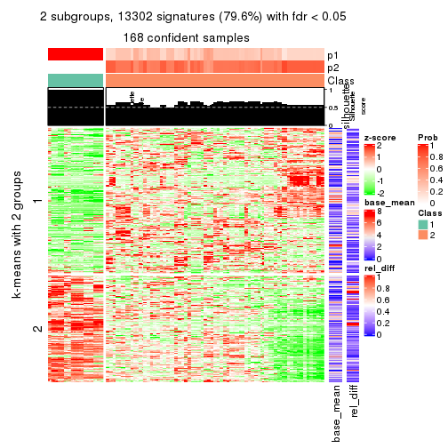
get_signatures(res, k = 3)
get_signatures(res, k = 4)
get_signatures(res, k = 5)
get_signatures(res, k = 6)
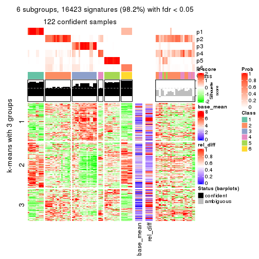
Signature heatmaps where rows are not scaled:
get_signatures(res, k = 2, scale_rows = FALSE)
get_signatures(res, k = 3, scale_rows = FALSE)
get_signatures(res, k = 4, scale_rows = FALSE)
get_signatures(res, k = 5, scale_rows = FALSE)
get_signatures(res, k = 6, scale_rows = FALSE)
Compare the overlap of signatures from different k:
compare_signatures(res)
get_signature() returns a data frame invisibly. TO get the list of signatures, the function
call should be assigned to a variable explicitly. In following code, if plot argument is set
to FALSE, no heatmap is plotted while only the differential analysis is performed.
# code only for demonstration
tb = get_signature(res, k = ..., plot = FALSE)
An example of the output of tb is:
#> which_row fdr mean_1 mean_2 scaled_mean_1 scaled_mean_2 km
#> 1 38 0.042760348 8.373488 9.131774 -0.5533452 0.5164555 1
#> 2 40 0.018707592 7.106213 8.469186 -0.6173731 0.5762149 1
#> 3 55 0.019134737 10.221463 11.207825 -0.6159697 0.5749050 1
#> 4 59 0.006059896 5.921854 7.869574 -0.6899429 0.6439467 1
#> 5 60 0.018055526 8.928898 10.211722 -0.6204761 0.5791110 1
#> 6 98 0.009384629 15.714769 14.887706 0.6635654 -0.6193277 2
...
The columns in tb are:
which_row: row indices corresponding to the input matrix.fdr: FDR for the differential test. mean_x: The mean value in group x.scaled_mean_x: The mean value in group x after rows are scaled.km: Row groups if k-means clustering is applied to rows.UMAP plot which shows how samples are separated.
dimension_reduction(res, k = 2, method = "UMAP")
dimension_reduction(res, k = 3, method = "UMAP")
dimension_reduction(res, k = 4, method = "UMAP")
dimension_reduction(res, k = 5, method = "UMAP")
dimension_reduction(res, k = 6, method = "UMAP")
Following heatmap shows how subgroups are split when increasing k:
collect_classes(res)
If matrix rows can be associated to genes, consider to use GO_Enrichment(res,
...) to perform function enrichment for the signature genes.
The object with results only for a single top-value method and a single partition method can be extracted as:
res = res_list["CV", "NMF"]
# you can also extract it by
# res = res_list["CV:NMF"]
A summary of res and all the functions that can be applied to it:
res
#> A 'ConsensusPartition' object with k = 2, 3, 4, 5, 6.
#> On a matrix with 16717 rows and 168 columns.
#> Top rows (1000, 2000, 3000, 4000, 5000) are extracted by 'CV' method.
#> Subgroups are detected by 'NMF' method.
#> Performed in total 1250 partitions by row resampling.
#> Best k for subgroups seems to be 3.
#>
#> Following methods can be applied to this 'ConsensusPartition' object:
#> [1] "cola_report" "collect_classes" "collect_plots"
#> [4] "collect_stats" "colnames" "compare_signatures"
#> [7] "consensus_heatmap" "dimension_reduction" "functional_enrichment"
#> [10] "get_anno_col" "get_anno" "get_classes"
#> [13] "get_consensus" "get_matrix" "get_membership"
#> [16] "get_param" "get_signatures" "get_stats"
#> [19] "is_best_k" "is_stable_k" "membership_heatmap"
#> [22] "ncol" "nrow" "plot_ecdf"
#> [25] "rownames" "select_partition_number" "show"
#> [28] "suggest_best_k" "test_to_known_factors"
collect_plots() function collects all the plots made from res for all k (number of partitions)
into one single page to provide an easy and fast comparison between different k.
collect_plots(res)
The plots are:
k and the heatmap of
predicted classes for each k.k.k.k.All the plots in panels can be made by individual functions and they are plotted later in this section.
select_partition_number() produces several plots showing different
statistics for choosing “optimized” k. There are following statistics:
k;k, the area increased is defined as \(A_k - A_{k-1}\).The detailed explanations of these statistics can be found in the cola vignette.
Generally speaking, lower PAC score, higher mean silhouette score or higher
concordance corresponds to better partition. Rand index and Jaccard index
measure how similar the current partition is compared to partition with k-1.
If they are too similar, we won't accept k is better than k-1.
select_partition_number(res)
The numeric values for all these statistics can be obtained by get_stats().
get_stats(res)
#> k 1-PAC mean_silhouette concordance area_increased Rand Jaccard
#> 2 2 0.498 0.878 0.892 0.3892 0.617 0.617
#> 3 3 0.980 0.953 0.981 0.5337 0.706 0.555
#> 4 4 0.726 0.751 0.809 0.1980 0.817 0.569
#> 5 5 0.768 0.810 0.866 0.0911 0.931 0.745
#> 6 6 0.804 0.826 0.861 0.0493 0.924 0.676
suggest_best_k() suggests the best \(k\) based on these statistics. The rules are as follows:
NA.suggest_best_k(res)
#> [1] 3
Following shows the table of the partitions (You need to click the show/hide
code output link to see it). The membership matrix (columns with name p*)
is inferred by
clue::cl_consensus()
function with the SE method. Basically the value in the membership matrix
represents the probability to belong to a certain group. The finall class
label for an item is determined with the group with highest probability it
belongs to.
In get_classes() function, the entropy is calculated from the membership
matrix and the silhouette score is calculated from the consensus matrix.
cbind(get_classes(res, k = 2), get_membership(res, k = 2))
#> class entropy silhouette p1 p2
#> SRR1768889 2 0.1414 0.827 0.020 0.980
#> SRR1768890 2 0.1414 0.827 0.020 0.980
#> SRR1768891 2 0.6973 0.895 0.188 0.812
#> SRR1768892 2 0.6973 0.895 0.188 0.812
#> SRR1768893 2 0.6973 0.895 0.188 0.812
#> SRR1768894 2 0.6973 0.895 0.188 0.812
#> SRR1768895 2 0.7056 0.894 0.192 0.808
#> SRR1768896 2 0.7056 0.894 0.192 0.808
#> SRR1768821 2 0.6973 0.895 0.188 0.812
#> SRR1768822 2 0.6973 0.895 0.188 0.812
#> SRR1768823 2 0.6973 0.895 0.188 0.812
#> SRR1768824 2 0.6973 0.895 0.188 0.812
#> SRR1768825 2 0.7056 0.894 0.192 0.808
#> SRR1768826 2 0.7056 0.894 0.192 0.808
#> SRR1768827 2 0.7056 0.894 0.192 0.808
#> SRR1768828 2 0.7056 0.894 0.192 0.808
#> SRR1768829 2 0.7056 0.894 0.192 0.808
#> SRR1768830 2 0.7056 0.894 0.192 0.808
#> SRR1768831 2 0.1414 0.827 0.020 0.980
#> SRR1768832 2 0.1414 0.827 0.020 0.980
#> SRR1768833 1 0.8713 0.469 0.708 0.292
#> SRR1768834 1 0.8016 0.591 0.756 0.244
#> SRR1768835 1 0.9209 0.335 0.664 0.336
#> SRR1768836 2 0.9661 0.614 0.392 0.608
#> SRR1768837 2 0.9608 0.630 0.384 0.616
#> SRR1768838 2 0.1414 0.827 0.020 0.980
#> SRR1768839 2 0.1414 0.827 0.020 0.980
#> SRR1768840 2 0.0000 0.833 0.000 1.000
#> SRR1768841 2 0.0000 0.833 0.000 1.000
#> SRR1768842 2 0.7299 0.886 0.204 0.796
#> SRR1768843 2 0.7299 0.886 0.204 0.796
#> SRR1768844 2 0.0000 0.833 0.000 1.000
#> SRR1768845 2 0.0000 0.833 0.000 1.000
#> SRR1768846 2 0.1414 0.827 0.020 0.980
#> SRR1768847 2 0.1414 0.827 0.020 0.980
#> SRR1768848 2 0.1414 0.827 0.020 0.980
#> SRR1768849 2 0.1414 0.827 0.020 0.980
#> SRR1768850 2 0.0000 0.833 0.000 1.000
#> SRR1768851 2 0.0000 0.833 0.000 1.000
#> SRR1768852 2 0.7056 0.894 0.192 0.808
#> SRR1768853 2 0.7056 0.894 0.192 0.808
#> SRR1768854 2 0.7056 0.894 0.192 0.808
#> SRR1768855 2 0.1414 0.827 0.020 0.980
#> SRR1768856 2 0.1414 0.827 0.020 0.980
#> SRR1768857 2 0.1414 0.827 0.020 0.980
#> SRR1768858 2 0.0000 0.833 0.000 1.000
#> SRR1768859 2 0.0000 0.833 0.000 1.000
#> SRR1768860 2 0.0000 0.833 0.000 1.000
#> SRR1768861 2 0.1414 0.827 0.020 0.980
#> SRR1768862 2 0.1414 0.827 0.020 0.980
#> SRR1768863 2 0.6623 0.891 0.172 0.828
#> SRR1768864 2 0.6343 0.888 0.160 0.840
#> SRR1768865 2 0.1414 0.827 0.020 0.980
#> SRR1768866 2 0.1414 0.827 0.020 0.980
#> SRR1768867 2 0.7528 0.875 0.216 0.784
#> SRR1768868 2 0.7745 0.864 0.228 0.772
#> SRR1768869 1 0.1414 0.953 0.980 0.020
#> SRR1768870 1 0.1414 0.953 0.980 0.020
#> SRR1768871 2 0.9608 0.632 0.384 0.616
#> SRR1768872 2 0.9491 0.663 0.368 0.632
#> SRR1768873 1 0.1414 0.953 0.980 0.020
#> SRR1768874 1 0.1414 0.953 0.980 0.020
#> SRR1768875 2 0.1414 0.827 0.020 0.980
#> SRR1768876 2 0.1414 0.827 0.020 0.980
#> SRR1768877 2 0.1414 0.827 0.020 0.980
#> SRR1768878 2 0.1414 0.827 0.020 0.980
#> SRR1768879 2 0.1414 0.827 0.020 0.980
#> SRR1768880 2 0.1414 0.827 0.020 0.980
#> SRR1768881 2 0.0376 0.832 0.004 0.996
#> SRR1768882 2 0.0376 0.832 0.004 0.996
#> SRR1768883 2 0.0000 0.833 0.000 1.000
#> SRR1768884 2 0.0000 0.833 0.000 1.000
#> SRR1768885 2 0.1414 0.827 0.020 0.980
#> SRR1768886 2 0.1414 0.827 0.020 0.980
#> SRR1768887 2 0.1414 0.827 0.020 0.980
#> SRR1768888 2 0.1414 0.827 0.020 0.980
#> SRR1768897 2 0.7056 0.894 0.192 0.808
#> SRR1768898 2 0.7056 0.894 0.192 0.808
#> SRR1768899 2 0.7056 0.894 0.192 0.808
#> SRR1768900 2 0.7056 0.894 0.192 0.808
#> SRR1768901 2 0.7056 0.894 0.192 0.808
#> SRR1768902 2 0.7056 0.894 0.192 0.808
#> SRR1768903 2 0.7056 0.894 0.192 0.808
#> SRR1768904 2 0.7056 0.894 0.192 0.808
#> SRR1768905 2 0.7056 0.894 0.192 0.808
#> SRR1768906 2 0.7056 0.894 0.192 0.808
#> SRR1768907 2 0.6973 0.895 0.188 0.812
#> SRR1768908 2 0.6973 0.895 0.188 0.812
#> SRR1768909 2 0.6973 0.895 0.188 0.812
#> SRR1768910 2 0.6973 0.895 0.188 0.812
#> SRR1768911 2 0.6973 0.895 0.188 0.812
#> SRR1768912 2 0.6973 0.895 0.188 0.812
#> SRR1768913 2 0.6973 0.895 0.188 0.812
#> SRR1768914 2 0.6973 0.895 0.188 0.812
#> SRR1768915 2 0.6973 0.895 0.188 0.812
#> SRR1768916 2 0.7056 0.894 0.192 0.808
#> SRR1768917 2 0.7056 0.894 0.192 0.808
#> SRR1768918 2 0.6973 0.895 0.188 0.812
#> SRR1768919 2 0.6973 0.895 0.188 0.812
#> SRR1768920 2 0.7056 0.894 0.192 0.808
#> SRR1768921 2 0.7056 0.894 0.192 0.808
#> SRR1768922 2 0.7056 0.894 0.192 0.808
#> SRR1768923 2 0.7056 0.894 0.192 0.808
#> SRR1768924 2 0.9580 0.638 0.380 0.620
#> SRR1768925 2 0.9580 0.638 0.380 0.620
#> SRR1768926 2 0.7299 0.886 0.204 0.796
#> SRR1768927 2 0.7299 0.886 0.204 0.796
#> SRR1768928 2 0.7299 0.886 0.204 0.796
#> SRR1768929 2 0.7299 0.886 0.204 0.796
#> SRR1768930 2 0.7056 0.894 0.192 0.808
#> SRR1768931 2 0.7056 0.894 0.192 0.808
#> SRR1768932 2 0.7056 0.894 0.192 0.808
#> SRR1768933 2 0.7139 0.892 0.196 0.804
#> SRR1768934 2 0.7219 0.889 0.200 0.800
#> SRR1768935 2 0.7056 0.894 0.192 0.808
#> SRR1768936 2 0.7056 0.894 0.192 0.808
#> SRR1768937 2 0.7056 0.894 0.192 0.808
#> SRR1768938 2 0.7056 0.894 0.192 0.808
#> SRR1768939 2 0.6973 0.895 0.188 0.812
#> SRR1768940 2 0.6973 0.895 0.188 0.812
#> SRR1768941 2 0.0000 0.833 0.000 1.000
#> SRR1768942 2 0.0000 0.833 0.000 1.000
#> SRR1768943 2 0.0672 0.837 0.008 0.992
#> SRR1768944 2 0.0672 0.837 0.008 0.992
#> SRR1768945 2 0.6973 0.895 0.188 0.812
#> SRR1768946 2 0.6973 0.895 0.188 0.812
#> SRR1768947 2 0.6973 0.895 0.188 0.812
#> SRR1768948 2 0.6973 0.895 0.188 0.812
#> SRR1768949 2 0.6973 0.895 0.188 0.812
#> SRR1768950 2 0.7219 0.889 0.200 0.800
#> SRR1768954 1 0.0000 0.972 1.000 0.000
#> SRR1768955 1 0.0000 0.972 1.000 0.000
#> SRR1768956 1 0.0000 0.972 1.000 0.000
#> SRR1768957 1 0.0000 0.972 1.000 0.000
#> SRR1768958 1 0.0000 0.972 1.000 0.000
#> SRR1768959 1 0.0000 0.972 1.000 0.000
#> SRR1768960 1 0.0000 0.972 1.000 0.000
#> SRR1768961 1 0.0000 0.972 1.000 0.000
#> SRR1768952 2 0.7056 0.894 0.192 0.808
#> SRR1768953 2 0.7056 0.894 0.192 0.808
#> SRR1768962 1 0.0000 0.972 1.000 0.000
#> SRR1768963 1 0.0000 0.972 1.000 0.000
#> SRR1768964 1 0.0000 0.972 1.000 0.000
#> SRR1768965 1 0.0000 0.972 1.000 0.000
#> SRR1768966 1 0.0000 0.972 1.000 0.000
#> SRR1768967 1 0.0000 0.972 1.000 0.000
#> SRR1768968 1 0.0000 0.972 1.000 0.000
#> SRR1768969 1 0.0000 0.972 1.000 0.000
#> SRR1768970 1 0.0000 0.972 1.000 0.000
#> SRR1768971 1 0.0000 0.972 1.000 0.000
#> SRR1768972 1 0.0000 0.972 1.000 0.000
#> SRR1768973 1 0.0000 0.972 1.000 0.000
#> SRR1768974 1 0.0000 0.972 1.000 0.000
#> SRR1768975 1 0.0000 0.972 1.000 0.000
#> SRR1768976 1 0.0000 0.972 1.000 0.000
#> SRR1768977 1 0.0000 0.972 1.000 0.000
#> SRR1768978 1 0.0000 0.972 1.000 0.000
#> SRR1768979 1 0.0000 0.972 1.000 0.000
#> SRR1768980 1 0.0000 0.972 1.000 0.000
#> SRR1768981 1 0.0000 0.972 1.000 0.000
#> SRR1768982 1 0.0000 0.972 1.000 0.000
#> SRR1768983 1 0.0000 0.972 1.000 0.000
#> SRR1768984 1 0.0000 0.972 1.000 0.000
#> SRR1768985 1 0.0000 0.972 1.000 0.000
#> SRR1768986 1 0.0000 0.972 1.000 0.000
#> SRR1768987 1 0.0000 0.972 1.000 0.000
#> SRR1768988 1 0.0000 0.972 1.000 0.000
#> SRR1768989 1 0.0000 0.972 1.000 0.000
cbind(get_classes(res, k = 3), get_membership(res, k = 3))
#> class entropy silhouette p1 p2 p3
#> SRR1768889 3 0.0000 0.983 0.000 0.000 1.000
#> SRR1768890 3 0.0000 0.983 0.000 0.000 1.000
#> SRR1768891 2 0.0000 0.972 0.000 1.000 0.000
#> SRR1768892 2 0.0000 0.972 0.000 1.000 0.000
#> SRR1768893 2 0.0000 0.972 0.000 1.000 0.000
#> SRR1768894 2 0.0000 0.972 0.000 1.000 0.000
#> SRR1768895 2 0.0000 0.972 0.000 1.000 0.000
#> SRR1768896 2 0.0000 0.972 0.000 1.000 0.000
#> SRR1768821 2 0.0000 0.972 0.000 1.000 0.000
#> SRR1768822 2 0.0000 0.972 0.000 1.000 0.000
#> SRR1768823 2 0.0000 0.972 0.000 1.000 0.000
#> SRR1768824 2 0.0000 0.972 0.000 1.000 0.000
#> SRR1768825 2 0.0000 0.972 0.000 1.000 0.000
#> SRR1768826 2 0.0000 0.972 0.000 1.000 0.000
#> SRR1768827 2 0.0000 0.972 0.000 1.000 0.000
#> SRR1768828 2 0.0000 0.972 0.000 1.000 0.000
#> SRR1768829 2 0.0000 0.972 0.000 1.000 0.000
#> SRR1768830 2 0.0000 0.972 0.000 1.000 0.000
#> SRR1768831 3 0.0000 0.983 0.000 0.000 1.000
#> SRR1768832 3 0.0000 0.983 0.000 0.000 1.000
#> SRR1768833 2 0.5835 0.502 0.340 0.660 0.000
#> SRR1768834 2 0.5835 0.502 0.340 0.660 0.000
#> SRR1768835 2 0.5760 0.528 0.328 0.672 0.000
#> SRR1768836 2 0.1411 0.942 0.036 0.964 0.000
#> SRR1768837 2 0.1411 0.942 0.036 0.964 0.000
#> SRR1768838 3 0.0000 0.983 0.000 0.000 1.000
#> SRR1768839 3 0.0000 0.983 0.000 0.000 1.000
#> SRR1768840 3 0.4931 0.677 0.000 0.232 0.768
#> SRR1768841 3 0.4842 0.689 0.000 0.224 0.776
#> SRR1768842 2 0.0000 0.972 0.000 1.000 0.000
#> SRR1768843 2 0.0000 0.972 0.000 1.000 0.000
#> SRR1768844 3 0.0000 0.983 0.000 0.000 1.000
#> SRR1768845 3 0.0000 0.983 0.000 0.000 1.000
#> SRR1768846 3 0.0000 0.983 0.000 0.000 1.000
#> SRR1768847 3 0.0000 0.983 0.000 0.000 1.000
#> SRR1768848 3 0.0000 0.983 0.000 0.000 1.000
#> SRR1768849 3 0.0000 0.983 0.000 0.000 1.000
#> SRR1768850 3 0.0000 0.983 0.000 0.000 1.000
#> SRR1768851 3 0.0000 0.983 0.000 0.000 1.000
#> SRR1768852 2 0.0000 0.972 0.000 1.000 0.000
#> SRR1768853 2 0.0000 0.972 0.000 1.000 0.000
#> SRR1768854 2 0.0000 0.972 0.000 1.000 0.000
#> SRR1768855 3 0.0000 0.983 0.000 0.000 1.000
#> SRR1768856 3 0.0000 0.983 0.000 0.000 1.000
#> SRR1768857 3 0.0000 0.983 0.000 0.000 1.000
#> SRR1768858 2 0.5621 0.557 0.000 0.692 0.308
#> SRR1768859 2 0.5497 0.588 0.000 0.708 0.292
#> SRR1768860 2 0.6062 0.382 0.000 0.616 0.384
#> SRR1768861 3 0.0000 0.983 0.000 0.000 1.000
#> SRR1768862 3 0.0000 0.983 0.000 0.000 1.000
#> SRR1768863 2 0.0000 0.972 0.000 1.000 0.000
#> SRR1768864 2 0.0000 0.972 0.000 1.000 0.000
#> SRR1768865 3 0.0000 0.983 0.000 0.000 1.000
#> SRR1768866 3 0.0000 0.983 0.000 0.000 1.000
#> SRR1768867 2 0.0000 0.972 0.000 1.000 0.000
#> SRR1768868 2 0.0000 0.972 0.000 1.000 0.000
#> SRR1768869 2 0.0000 0.972 0.000 1.000 0.000
#> SRR1768870 2 0.0000 0.972 0.000 1.000 0.000
#> SRR1768871 2 0.0000 0.972 0.000 1.000 0.000
#> SRR1768872 2 0.0000 0.972 0.000 1.000 0.000
#> SRR1768873 2 0.0000 0.972 0.000 1.000 0.000
#> SRR1768874 2 0.0000 0.972 0.000 1.000 0.000
#> SRR1768875 3 0.0000 0.983 0.000 0.000 1.000
#> SRR1768876 3 0.0000 0.983 0.000 0.000 1.000
#> SRR1768877 3 0.0000 0.983 0.000 0.000 1.000
#> SRR1768878 3 0.0000 0.983 0.000 0.000 1.000
#> SRR1768879 3 0.0000 0.983 0.000 0.000 1.000
#> SRR1768880 3 0.0000 0.983 0.000 0.000 1.000
#> SRR1768881 3 0.0000 0.983 0.000 0.000 1.000
#> SRR1768882 3 0.0237 0.978 0.000 0.004 0.996
#> SRR1768883 3 0.0000 0.983 0.000 0.000 1.000
#> SRR1768884 3 0.0000 0.983 0.000 0.000 1.000
#> SRR1768885 3 0.0000 0.983 0.000 0.000 1.000
#> SRR1768886 3 0.0000 0.983 0.000 0.000 1.000
#> SRR1768887 3 0.0000 0.983 0.000 0.000 1.000
#> SRR1768888 3 0.0000 0.983 0.000 0.000 1.000
#> SRR1768897 2 0.0000 0.972 0.000 1.000 0.000
#> SRR1768898 2 0.0000 0.972 0.000 1.000 0.000
#> SRR1768899 2 0.0000 0.972 0.000 1.000 0.000
#> SRR1768900 2 0.0000 0.972 0.000 1.000 0.000
#> SRR1768901 2 0.0000 0.972 0.000 1.000 0.000
#> SRR1768902 2 0.0000 0.972 0.000 1.000 0.000
#> SRR1768903 2 0.0000 0.972 0.000 1.000 0.000
#> SRR1768904 2 0.0000 0.972 0.000 1.000 0.000
#> SRR1768905 2 0.0000 0.972 0.000 1.000 0.000
#> SRR1768906 2 0.0000 0.972 0.000 1.000 0.000
#> SRR1768907 2 0.0000 0.972 0.000 1.000 0.000
#> SRR1768908 2 0.0000 0.972 0.000 1.000 0.000
#> SRR1768909 2 0.0000 0.972 0.000 1.000 0.000
#> SRR1768910 2 0.0000 0.972 0.000 1.000 0.000
#> SRR1768911 2 0.0000 0.972 0.000 1.000 0.000
#> SRR1768912 2 0.0000 0.972 0.000 1.000 0.000
#> SRR1768913 2 0.0000 0.972 0.000 1.000 0.000
#> SRR1768914 2 0.0000 0.972 0.000 1.000 0.000
#> SRR1768915 2 0.0000 0.972 0.000 1.000 0.000
#> SRR1768916 2 0.0000 0.972 0.000 1.000 0.000
#> SRR1768917 2 0.0000 0.972 0.000 1.000 0.000
#> SRR1768918 2 0.0000 0.972 0.000 1.000 0.000
#> SRR1768919 2 0.0000 0.972 0.000 1.000 0.000
#> SRR1768920 2 0.0000 0.972 0.000 1.000 0.000
#> SRR1768921 2 0.0000 0.972 0.000 1.000 0.000
#> SRR1768922 2 0.0000 0.972 0.000 1.000 0.000
#> SRR1768923 2 0.0000 0.972 0.000 1.000 0.000
#> SRR1768924 2 0.1643 0.935 0.044 0.956 0.000
#> SRR1768925 2 0.1643 0.935 0.044 0.956 0.000
#> SRR1768926 2 0.0000 0.972 0.000 1.000 0.000
#> SRR1768927 2 0.0000 0.972 0.000 1.000 0.000
#> SRR1768928 2 0.0000 0.972 0.000 1.000 0.000
#> SRR1768929 2 0.0000 0.972 0.000 1.000 0.000
#> SRR1768930 2 0.0000 0.972 0.000 1.000 0.000
#> SRR1768931 2 0.0000 0.972 0.000 1.000 0.000
#> SRR1768932 2 0.0000 0.972 0.000 1.000 0.000
#> SRR1768933 2 0.0000 0.972 0.000 1.000 0.000
#> SRR1768934 2 0.0000 0.972 0.000 1.000 0.000
#> SRR1768935 2 0.0000 0.972 0.000 1.000 0.000
#> SRR1768936 2 0.0000 0.972 0.000 1.000 0.000
#> SRR1768937 2 0.0000 0.972 0.000 1.000 0.000
#> SRR1768938 2 0.0000 0.972 0.000 1.000 0.000
#> SRR1768939 2 0.0000 0.972 0.000 1.000 0.000
#> SRR1768940 2 0.0000 0.972 0.000 1.000 0.000
#> SRR1768941 2 0.4452 0.759 0.000 0.808 0.192
#> SRR1768942 2 0.4504 0.753 0.000 0.804 0.196
#> SRR1768943 2 0.0000 0.972 0.000 1.000 0.000
#> SRR1768944 2 0.0000 0.972 0.000 1.000 0.000
#> SRR1768945 2 0.0000 0.972 0.000 1.000 0.000
#> SRR1768946 2 0.0000 0.972 0.000 1.000 0.000
#> SRR1768947 2 0.0000 0.972 0.000 1.000 0.000
#> SRR1768948 2 0.0000 0.972 0.000 1.000 0.000
#> SRR1768949 2 0.0000 0.972 0.000 1.000 0.000
#> SRR1768950 2 0.0000 0.972 0.000 1.000 0.000
#> SRR1768954 1 0.0000 0.991 1.000 0.000 0.000
#> SRR1768955 1 0.0000 0.991 1.000 0.000 0.000
#> SRR1768956 1 0.0000 0.991 1.000 0.000 0.000
#> SRR1768957 1 0.0000 0.991 1.000 0.000 0.000
#> SRR1768958 1 0.0000 0.991 1.000 0.000 0.000
#> SRR1768959 1 0.0000 0.991 1.000 0.000 0.000
#> SRR1768960 1 0.0000 0.991 1.000 0.000 0.000
#> SRR1768961 1 0.0000 0.991 1.000 0.000 0.000
#> SRR1768952 2 0.0000 0.972 0.000 1.000 0.000
#> SRR1768953 2 0.0000 0.972 0.000 1.000 0.000
#> SRR1768962 1 0.0000 0.991 1.000 0.000 0.000
#> SRR1768963 1 0.0000 0.991 1.000 0.000 0.000
#> SRR1768964 1 0.0000 0.991 1.000 0.000 0.000
#> SRR1768965 1 0.0000 0.991 1.000 0.000 0.000
#> SRR1768966 1 0.0000 0.991 1.000 0.000 0.000
#> SRR1768967 1 0.0000 0.991 1.000 0.000 0.000
#> SRR1768968 1 0.0000 0.991 1.000 0.000 0.000
#> SRR1768969 1 0.0000 0.991 1.000 0.000 0.000
#> SRR1768970 1 0.0000 0.991 1.000 0.000 0.000
#> SRR1768971 1 0.0000 0.991 1.000 0.000 0.000
#> SRR1768972 1 0.0000 0.991 1.000 0.000 0.000
#> SRR1768973 1 0.0000 0.991 1.000 0.000 0.000
#> SRR1768974 1 0.0000 0.991 1.000 0.000 0.000
#> SRR1768975 1 0.0000 0.991 1.000 0.000 0.000
#> SRR1768976 1 0.0000 0.991 1.000 0.000 0.000
#> SRR1768977 1 0.0000 0.991 1.000 0.000 0.000
#> SRR1768978 1 0.0000 0.991 1.000 0.000 0.000
#> SRR1768979 1 0.0000 0.991 1.000 0.000 0.000
#> SRR1768980 1 0.0000 0.991 1.000 0.000 0.000
#> SRR1768981 1 0.0000 0.991 1.000 0.000 0.000
#> SRR1768982 1 0.0000 0.991 1.000 0.000 0.000
#> SRR1768983 1 0.0000 0.991 1.000 0.000 0.000
#> SRR1768984 1 0.2878 0.871 0.904 0.096 0.000
#> SRR1768985 1 0.3619 0.816 0.864 0.136 0.000
#> SRR1768986 1 0.0000 0.991 1.000 0.000 0.000
#> SRR1768987 1 0.0000 0.991 1.000 0.000 0.000
#> SRR1768988 1 0.0000 0.991 1.000 0.000 0.000
#> SRR1768989 1 0.0000 0.991 1.000 0.000 0.000
cbind(get_classes(res, k = 4), get_membership(res, k = 4))
#> class entropy silhouette p1 p2 p3 p4
#> SRR1768889 3 0.0000 0.9846 0.000 0.000 1.000 0.000
#> SRR1768890 3 0.0000 0.9846 0.000 0.000 1.000 0.000
#> SRR1768891 4 0.4967 0.8632 0.000 0.452 0.000 0.548
#> SRR1768892 4 0.4967 0.8632 0.000 0.452 0.000 0.548
#> SRR1768893 4 0.4967 0.8632 0.000 0.452 0.000 0.548
#> SRR1768894 4 0.4967 0.8632 0.000 0.452 0.000 0.548
#> SRR1768895 4 0.4967 0.8632 0.000 0.452 0.000 0.548
#> SRR1768896 4 0.4967 0.8632 0.000 0.452 0.000 0.548
#> SRR1768821 4 0.4967 0.8632 0.000 0.452 0.000 0.548
#> SRR1768822 4 0.4967 0.8632 0.000 0.452 0.000 0.548
#> SRR1768823 4 0.4967 0.8632 0.000 0.452 0.000 0.548
#> SRR1768824 4 0.4967 0.8632 0.000 0.452 0.000 0.548
#> SRR1768825 2 0.4040 0.0955 0.000 0.752 0.000 0.248
#> SRR1768826 2 0.4134 0.0372 0.000 0.740 0.000 0.260
#> SRR1768827 4 0.4967 0.8632 0.000 0.452 0.000 0.548
#> SRR1768828 4 0.4967 0.8632 0.000 0.452 0.000 0.548
#> SRR1768829 2 0.4843 -0.5222 0.000 0.604 0.000 0.396
#> SRR1768830 2 0.4804 -0.4847 0.000 0.616 0.000 0.384
#> SRR1768831 3 0.0592 0.9708 0.000 0.000 0.984 0.016
#> SRR1768832 3 0.0592 0.9708 0.000 0.000 0.984 0.016
#> SRR1768833 2 0.4967 0.3935 0.000 0.548 0.000 0.452
#> SRR1768834 2 0.4967 0.3935 0.000 0.548 0.000 0.452
#> SRR1768835 2 0.4967 0.3935 0.000 0.548 0.000 0.452
#> SRR1768836 2 0.4967 0.3935 0.000 0.548 0.000 0.452
#> SRR1768837 2 0.4967 0.3935 0.000 0.548 0.000 0.452
#> SRR1768838 3 0.4990 0.7380 0.000 0.060 0.756 0.184
#> SRR1768839 3 0.4798 0.7514 0.000 0.052 0.768 0.180
#> SRR1768840 2 0.4967 0.0811 0.000 0.548 0.452 0.000
#> SRR1768841 2 0.4967 0.0811 0.000 0.548 0.452 0.000
#> SRR1768842 2 0.3610 0.6301 0.000 0.800 0.000 0.200
#> SRR1768843 2 0.3610 0.6301 0.000 0.800 0.000 0.200
#> SRR1768844 3 0.0000 0.9846 0.000 0.000 1.000 0.000
#> SRR1768845 3 0.0000 0.9846 0.000 0.000 1.000 0.000
#> SRR1768846 3 0.0000 0.9846 0.000 0.000 1.000 0.000
#> SRR1768847 3 0.0000 0.9846 0.000 0.000 1.000 0.000
#> SRR1768848 3 0.0000 0.9846 0.000 0.000 1.000 0.000
#> SRR1768849 3 0.0000 0.9846 0.000 0.000 1.000 0.000
#> SRR1768850 3 0.0000 0.9846 0.000 0.000 1.000 0.000
#> SRR1768851 3 0.0000 0.9846 0.000 0.000 1.000 0.000
#> SRR1768852 2 0.0000 0.7471 0.000 1.000 0.000 0.000
#> SRR1768853 2 0.0000 0.7471 0.000 1.000 0.000 0.000
#> SRR1768854 2 0.0000 0.7471 0.000 1.000 0.000 0.000
#> SRR1768855 3 0.0000 0.9846 0.000 0.000 1.000 0.000
#> SRR1768856 3 0.0000 0.9846 0.000 0.000 1.000 0.000
#> SRR1768857 3 0.0000 0.9846 0.000 0.000 1.000 0.000
#> SRR1768858 2 0.1302 0.7160 0.000 0.956 0.044 0.000
#> SRR1768859 2 0.1302 0.7160 0.000 0.956 0.044 0.000
#> SRR1768860 2 0.1637 0.7022 0.000 0.940 0.060 0.000
#> SRR1768861 3 0.0000 0.9846 0.000 0.000 1.000 0.000
#> SRR1768862 3 0.0000 0.9846 0.000 0.000 1.000 0.000
#> SRR1768863 4 0.4985 0.8378 0.000 0.468 0.000 0.532
#> SRR1768864 4 0.4989 0.8309 0.000 0.472 0.000 0.528
#> SRR1768865 3 0.0000 0.9846 0.000 0.000 1.000 0.000
#> SRR1768866 3 0.0000 0.9846 0.000 0.000 1.000 0.000
#> SRR1768867 4 0.4967 0.8632 0.000 0.452 0.000 0.548
#> SRR1768868 4 0.4967 0.8632 0.000 0.452 0.000 0.548
#> SRR1768869 4 0.0707 0.3710 0.000 0.020 0.000 0.980
#> SRR1768870 4 0.0707 0.3710 0.000 0.020 0.000 0.980
#> SRR1768871 4 0.4103 0.6151 0.000 0.256 0.000 0.744
#> SRR1768872 4 0.4134 0.6112 0.000 0.260 0.000 0.740
#> SRR1768873 4 0.2281 0.4539 0.000 0.096 0.000 0.904
#> SRR1768874 4 0.2704 0.4843 0.000 0.124 0.000 0.876
#> SRR1768875 3 0.0000 0.9846 0.000 0.000 1.000 0.000
#> SRR1768876 3 0.0000 0.9846 0.000 0.000 1.000 0.000
#> SRR1768877 3 0.0000 0.9846 0.000 0.000 1.000 0.000
#> SRR1768878 3 0.0000 0.9846 0.000 0.000 1.000 0.000
#> SRR1768879 3 0.0000 0.9846 0.000 0.000 1.000 0.000
#> SRR1768880 3 0.0000 0.9846 0.000 0.000 1.000 0.000
#> SRR1768881 4 0.4998 -0.0265 0.000 0.000 0.488 0.512
#> SRR1768882 4 0.4996 -0.0130 0.000 0.000 0.484 0.516
#> SRR1768883 3 0.0000 0.9846 0.000 0.000 1.000 0.000
#> SRR1768884 3 0.0000 0.9846 0.000 0.000 1.000 0.000
#> SRR1768885 3 0.0000 0.9846 0.000 0.000 1.000 0.000
#> SRR1768886 3 0.0000 0.9846 0.000 0.000 1.000 0.000
#> SRR1768887 3 0.0000 0.9846 0.000 0.000 1.000 0.000
#> SRR1768888 3 0.0000 0.9846 0.000 0.000 1.000 0.000
#> SRR1768897 2 0.0000 0.7471 0.000 1.000 0.000 0.000
#> SRR1768898 2 0.0000 0.7471 0.000 1.000 0.000 0.000
#> SRR1768899 2 0.0000 0.7471 0.000 1.000 0.000 0.000
#> SRR1768900 2 0.0000 0.7471 0.000 1.000 0.000 0.000
#> SRR1768901 2 0.0000 0.7471 0.000 1.000 0.000 0.000
#> SRR1768902 2 0.0000 0.7471 0.000 1.000 0.000 0.000
#> SRR1768903 2 0.0000 0.7471 0.000 1.000 0.000 0.000
#> SRR1768904 2 0.0000 0.7471 0.000 1.000 0.000 0.000
#> SRR1768905 2 0.0000 0.7471 0.000 1.000 0.000 0.000
#> SRR1768906 2 0.0000 0.7471 0.000 1.000 0.000 0.000
#> SRR1768907 2 0.0000 0.7471 0.000 1.000 0.000 0.000
#> SRR1768908 2 0.0000 0.7471 0.000 1.000 0.000 0.000
#> SRR1768909 2 0.0000 0.7471 0.000 1.000 0.000 0.000
#> SRR1768910 2 0.0000 0.7471 0.000 1.000 0.000 0.000
#> SRR1768911 2 0.0000 0.7471 0.000 1.000 0.000 0.000
#> SRR1768912 2 0.0000 0.7471 0.000 1.000 0.000 0.000
#> SRR1768913 2 0.0000 0.7471 0.000 1.000 0.000 0.000
#> SRR1768914 2 0.0000 0.7471 0.000 1.000 0.000 0.000
#> SRR1768915 2 0.0000 0.7471 0.000 1.000 0.000 0.000
#> SRR1768916 2 0.0592 0.7261 0.000 0.984 0.000 0.016
#> SRR1768917 4 0.4967 0.8632 0.000 0.452 0.000 0.548
#> SRR1768918 2 0.0000 0.7471 0.000 1.000 0.000 0.000
#> SRR1768919 2 0.0000 0.7471 0.000 1.000 0.000 0.000
#> SRR1768920 4 0.4967 0.8632 0.000 0.452 0.000 0.548
#> SRR1768921 4 0.4967 0.8632 0.000 0.452 0.000 0.548
#> SRR1768922 2 0.0000 0.7471 0.000 1.000 0.000 0.000
#> SRR1768923 2 0.0000 0.7471 0.000 1.000 0.000 0.000
#> SRR1768924 2 0.4431 0.5666 0.000 0.696 0.000 0.304
#> SRR1768925 2 0.4406 0.5698 0.000 0.700 0.000 0.300
#> SRR1768926 2 0.3873 0.6143 0.000 0.772 0.000 0.228
#> SRR1768927 2 0.3873 0.6143 0.000 0.772 0.000 0.228
#> SRR1768928 2 0.4382 0.5724 0.000 0.704 0.000 0.296
#> SRR1768929 2 0.4382 0.5724 0.000 0.704 0.000 0.296
#> SRR1768930 4 0.4967 0.8632 0.000 0.452 0.000 0.548
#> SRR1768931 4 0.4967 0.8632 0.000 0.452 0.000 0.548
#> SRR1768932 4 0.4967 0.8632 0.000 0.452 0.000 0.548
#> SRR1768933 4 0.4967 0.8632 0.000 0.452 0.000 0.548
#> SRR1768934 4 0.4967 0.8632 0.000 0.452 0.000 0.548
#> SRR1768935 4 0.4967 0.8632 0.000 0.452 0.000 0.548
#> SRR1768936 4 0.4967 0.8632 0.000 0.452 0.000 0.548
#> SRR1768937 4 0.4967 0.8632 0.000 0.452 0.000 0.548
#> SRR1768938 4 0.4967 0.8632 0.000 0.452 0.000 0.548
#> SRR1768939 4 0.4967 0.8632 0.000 0.452 0.000 0.548
#> SRR1768940 4 0.4967 0.8632 0.000 0.452 0.000 0.548
#> SRR1768941 4 0.6910 0.7042 0.000 0.324 0.128 0.548
#> SRR1768942 4 0.6961 0.6937 0.000 0.316 0.136 0.548
#> SRR1768943 4 0.4967 0.8632 0.000 0.452 0.000 0.548
#> SRR1768944 4 0.4967 0.8632 0.000 0.452 0.000 0.548
#> SRR1768945 4 0.4967 0.8632 0.000 0.452 0.000 0.548
#> SRR1768946 4 0.4967 0.8632 0.000 0.452 0.000 0.548
#> SRR1768947 2 0.0000 0.7471 0.000 1.000 0.000 0.000
#> SRR1768948 2 0.0000 0.7471 0.000 1.000 0.000 0.000
#> SRR1768949 2 0.0000 0.7471 0.000 1.000 0.000 0.000
#> SRR1768950 4 0.4967 0.8632 0.000 0.452 0.000 0.548
#> SRR1768954 1 0.4250 0.8334 0.724 0.000 0.000 0.276
#> SRR1768955 1 0.4304 0.8316 0.716 0.000 0.000 0.284
#> SRR1768956 1 0.4356 0.8298 0.708 0.000 0.000 0.292
#> SRR1768957 1 0.4250 0.8334 0.724 0.000 0.000 0.276
#> SRR1768958 1 0.4382 0.8285 0.704 0.000 0.000 0.296
#> SRR1768959 1 0.4382 0.8285 0.704 0.000 0.000 0.296
#> SRR1768960 1 0.4356 0.8298 0.708 0.000 0.000 0.292
#> SRR1768961 1 0.4406 0.8270 0.700 0.000 0.000 0.300
#> SRR1768952 2 0.4933 -0.6283 0.000 0.568 0.000 0.432
#> SRR1768953 2 0.4730 -0.4202 0.000 0.636 0.000 0.364
#> SRR1768962 1 0.0000 0.8724 1.000 0.000 0.000 0.000
#> SRR1768963 1 0.0000 0.8724 1.000 0.000 0.000 0.000
#> SRR1768964 1 0.0000 0.8724 1.000 0.000 0.000 0.000
#> SRR1768965 1 0.0000 0.8724 1.000 0.000 0.000 0.000
#> SRR1768966 1 0.0000 0.8724 1.000 0.000 0.000 0.000
#> SRR1768967 1 0.0000 0.8724 1.000 0.000 0.000 0.000
#> SRR1768968 1 0.0000 0.8724 1.000 0.000 0.000 0.000
#> SRR1768969 1 0.0000 0.8724 1.000 0.000 0.000 0.000
#> SRR1768970 1 0.0000 0.8724 1.000 0.000 0.000 0.000
#> SRR1768971 1 0.0000 0.8724 1.000 0.000 0.000 0.000
#> SRR1768972 1 0.4697 0.8007 0.644 0.000 0.000 0.356
#> SRR1768973 1 0.4697 0.8007 0.644 0.000 0.000 0.356
#> SRR1768974 1 0.4697 0.8007 0.644 0.000 0.000 0.356
#> SRR1768975 1 0.4713 0.7983 0.640 0.000 0.000 0.360
#> SRR1768976 1 0.4761 0.7903 0.628 0.000 0.000 0.372
#> SRR1768977 1 0.4713 0.7983 0.640 0.000 0.000 0.360
#> SRR1768978 1 0.0000 0.8724 1.000 0.000 0.000 0.000
#> SRR1768979 1 0.0000 0.8724 1.000 0.000 0.000 0.000
#> SRR1768980 1 0.0000 0.8724 1.000 0.000 0.000 0.000
#> SRR1768981 1 0.0000 0.8724 1.000 0.000 0.000 0.000
#> SRR1768982 1 0.0000 0.8724 1.000 0.000 0.000 0.000
#> SRR1768983 1 0.0000 0.8724 1.000 0.000 0.000 0.000
#> SRR1768984 1 0.6688 0.6999 0.536 0.096 0.000 0.368
#> SRR1768985 1 0.6887 0.6769 0.528 0.116 0.000 0.356
#> SRR1768986 1 0.0000 0.8724 1.000 0.000 0.000 0.000
#> SRR1768987 1 0.0000 0.8724 1.000 0.000 0.000 0.000
#> SRR1768988 1 0.0000 0.8724 1.000 0.000 0.000 0.000
#> SRR1768989 1 0.0000 0.8724 1.000 0.000 0.000 0.000
cbind(get_classes(res, k = 5), get_membership(res, k = 5))
#> class entropy silhouette p1 p2 p3 p4 p5
#> SRR1768889 3 0.0000 0.9740 0.000 0.000 1.000 0.000 0.000
#> SRR1768890 3 0.0000 0.9740 0.000 0.000 1.000 0.000 0.000
#> SRR1768891 4 0.3231 0.6768 0.000 0.004 0.000 0.800 0.196
#> SRR1768892 4 0.3231 0.6768 0.000 0.004 0.000 0.800 0.196
#> SRR1768893 4 0.3231 0.6768 0.000 0.004 0.000 0.800 0.196
#> SRR1768894 4 0.3231 0.6768 0.000 0.004 0.000 0.800 0.196
#> SRR1768895 4 0.3452 0.7971 0.000 0.244 0.000 0.756 0.000
#> SRR1768896 4 0.3480 0.7936 0.000 0.248 0.000 0.752 0.000
#> SRR1768821 4 0.3039 0.8294 0.000 0.192 0.000 0.808 0.000
#> SRR1768822 4 0.3039 0.8294 0.000 0.192 0.000 0.808 0.000
#> SRR1768823 4 0.3003 0.8311 0.000 0.188 0.000 0.812 0.000
#> SRR1768824 4 0.3003 0.8311 0.000 0.188 0.000 0.812 0.000
#> SRR1768825 2 0.4114 0.1484 0.000 0.624 0.000 0.376 0.000
#> SRR1768826 2 0.4171 0.0724 0.000 0.604 0.000 0.396 0.000
#> SRR1768827 4 0.3003 0.8311 0.000 0.188 0.000 0.812 0.000
#> SRR1768828 4 0.3003 0.8311 0.000 0.188 0.000 0.812 0.000
#> SRR1768829 4 0.4201 0.5308 0.000 0.408 0.000 0.592 0.000
#> SRR1768830 4 0.4235 0.4929 0.000 0.424 0.000 0.576 0.000
#> SRR1768831 3 0.2377 0.8381 0.000 0.000 0.872 0.000 0.128
#> SRR1768832 3 0.2471 0.8288 0.000 0.000 0.864 0.000 0.136
#> SRR1768833 5 0.3109 0.7203 0.000 0.200 0.000 0.000 0.800
#> SRR1768834 5 0.3109 0.7203 0.000 0.200 0.000 0.000 0.800
#> SRR1768835 5 0.3109 0.7203 0.000 0.200 0.000 0.000 0.800
#> SRR1768836 5 0.3109 0.7203 0.000 0.200 0.000 0.000 0.800
#> SRR1768837 5 0.3109 0.7203 0.000 0.200 0.000 0.000 0.800
#> SRR1768838 5 0.5649 0.0516 0.000 0.076 0.452 0.000 0.472
#> SRR1768839 3 0.5548 0.0174 0.000 0.068 0.492 0.000 0.440
#> SRR1768840 2 0.3143 0.6770 0.000 0.796 0.204 0.000 0.000
#> SRR1768841 2 0.3143 0.6770 0.000 0.796 0.204 0.000 0.000
#> SRR1768842 2 0.1671 0.8069 0.000 0.924 0.000 0.000 0.076
#> SRR1768843 2 0.1732 0.8042 0.000 0.920 0.000 0.000 0.080
#> SRR1768844 3 0.0000 0.9740 0.000 0.000 1.000 0.000 0.000
#> SRR1768845 3 0.0000 0.9740 0.000 0.000 1.000 0.000 0.000
#> SRR1768846 3 0.0000 0.9740 0.000 0.000 1.000 0.000 0.000
#> SRR1768847 3 0.0000 0.9740 0.000 0.000 1.000 0.000 0.000
#> SRR1768848 3 0.0000 0.9740 0.000 0.000 1.000 0.000 0.000
#> SRR1768849 3 0.0000 0.9740 0.000 0.000 1.000 0.000 0.000
#> SRR1768850 3 0.0000 0.9740 0.000 0.000 1.000 0.000 0.000
#> SRR1768851 3 0.0000 0.9740 0.000 0.000 1.000 0.000 0.000
#> SRR1768852 2 0.5396 0.6246 0.000 0.656 0.000 0.220 0.124
#> SRR1768853 2 0.5555 0.6097 0.000 0.640 0.000 0.220 0.140
#> SRR1768854 2 0.5270 0.6384 0.000 0.672 0.000 0.208 0.120
#> SRR1768855 3 0.0000 0.9740 0.000 0.000 1.000 0.000 0.000
#> SRR1768856 3 0.0000 0.9740 0.000 0.000 1.000 0.000 0.000
#> SRR1768857 3 0.0000 0.9740 0.000 0.000 1.000 0.000 0.000
#> SRR1768858 2 0.4998 0.6583 0.000 0.700 0.000 0.196 0.104
#> SRR1768859 2 0.4998 0.6583 0.000 0.700 0.000 0.196 0.104
#> SRR1768860 2 0.4998 0.6583 0.000 0.700 0.000 0.196 0.104
#> SRR1768861 3 0.0000 0.9740 0.000 0.000 1.000 0.000 0.000
#> SRR1768862 3 0.0000 0.9740 0.000 0.000 1.000 0.000 0.000
#> SRR1768863 4 0.3508 0.7837 0.000 0.252 0.000 0.748 0.000
#> SRR1768864 4 0.3534 0.7796 0.000 0.256 0.000 0.744 0.000
#> SRR1768865 3 0.0000 0.9740 0.000 0.000 1.000 0.000 0.000
#> SRR1768866 3 0.0000 0.9740 0.000 0.000 1.000 0.000 0.000
#> SRR1768867 4 0.2966 0.8312 0.000 0.184 0.000 0.816 0.000
#> SRR1768868 4 0.3003 0.8311 0.000 0.188 0.000 0.812 0.000
#> SRR1768869 4 0.3318 0.6931 0.000 0.008 0.000 0.800 0.192
#> SRR1768870 4 0.3318 0.6931 0.000 0.008 0.000 0.800 0.192
#> SRR1768871 4 0.3821 0.8139 0.000 0.148 0.000 0.800 0.052
#> SRR1768872 4 0.3821 0.8139 0.000 0.148 0.000 0.800 0.052
#> SRR1768873 4 0.3527 0.8247 0.000 0.172 0.000 0.804 0.024
#> SRR1768874 4 0.3527 0.8247 0.000 0.172 0.000 0.804 0.024
#> SRR1768875 3 0.0000 0.9740 0.000 0.000 1.000 0.000 0.000
#> SRR1768876 3 0.0000 0.9740 0.000 0.000 1.000 0.000 0.000
#> SRR1768877 3 0.0000 0.9740 0.000 0.000 1.000 0.000 0.000
#> SRR1768878 3 0.0000 0.9740 0.000 0.000 1.000 0.000 0.000
#> SRR1768879 3 0.0000 0.9740 0.000 0.000 1.000 0.000 0.000
#> SRR1768880 3 0.0000 0.9740 0.000 0.000 1.000 0.000 0.000
#> SRR1768881 4 0.4010 0.6451 0.000 0.000 0.116 0.796 0.088
#> SRR1768882 4 0.3649 0.6710 0.000 0.000 0.088 0.824 0.088
#> SRR1768883 3 0.0000 0.9740 0.000 0.000 1.000 0.000 0.000
#> SRR1768884 3 0.0000 0.9740 0.000 0.000 1.000 0.000 0.000
#> SRR1768885 3 0.0000 0.9740 0.000 0.000 1.000 0.000 0.000
#> SRR1768886 3 0.0000 0.9740 0.000 0.000 1.000 0.000 0.000
#> SRR1768887 3 0.0000 0.9740 0.000 0.000 1.000 0.000 0.000
#> SRR1768888 3 0.0000 0.9740 0.000 0.000 1.000 0.000 0.000
#> SRR1768897 2 0.0290 0.8455 0.000 0.992 0.000 0.008 0.000
#> SRR1768898 2 0.0290 0.8455 0.000 0.992 0.000 0.008 0.000
#> SRR1768899 2 0.0290 0.8455 0.000 0.992 0.000 0.008 0.000
#> SRR1768900 2 0.0290 0.8455 0.000 0.992 0.000 0.008 0.000
#> SRR1768901 2 0.0162 0.8477 0.000 0.996 0.000 0.004 0.000
#> SRR1768902 2 0.0162 0.8477 0.000 0.996 0.000 0.004 0.000
#> SRR1768903 2 0.0162 0.8477 0.000 0.996 0.000 0.004 0.000
#> SRR1768904 2 0.1768 0.8137 0.000 0.924 0.000 0.004 0.072
#> SRR1768905 2 0.1892 0.8085 0.000 0.916 0.000 0.004 0.080
#> SRR1768906 2 0.1831 0.8111 0.000 0.920 0.000 0.004 0.076
#> SRR1768907 2 0.0162 0.8477 0.000 0.996 0.000 0.004 0.000
#> SRR1768908 2 0.0162 0.8477 0.000 0.996 0.000 0.004 0.000
#> SRR1768909 2 0.0162 0.8477 0.000 0.996 0.000 0.004 0.000
#> SRR1768910 2 0.0162 0.8477 0.000 0.996 0.000 0.004 0.000
#> SRR1768911 2 0.0162 0.8477 0.000 0.996 0.000 0.004 0.000
#> SRR1768912 2 0.0162 0.8477 0.000 0.996 0.000 0.004 0.000
#> SRR1768913 2 0.0162 0.8477 0.000 0.996 0.000 0.004 0.000
#> SRR1768914 2 0.0162 0.8477 0.000 0.996 0.000 0.004 0.000
#> SRR1768915 2 0.0162 0.8477 0.000 0.996 0.000 0.004 0.000
#> SRR1768916 2 0.1732 0.7878 0.000 0.920 0.000 0.080 0.000
#> SRR1768917 4 0.3003 0.8311 0.000 0.188 0.000 0.812 0.000
#> SRR1768918 2 0.0162 0.8477 0.000 0.996 0.000 0.004 0.000
#> SRR1768919 2 0.0162 0.8477 0.000 0.996 0.000 0.004 0.000
#> SRR1768920 4 0.4767 0.8073 0.000 0.192 0.000 0.720 0.088
#> SRR1768921 4 0.4767 0.8073 0.000 0.192 0.000 0.720 0.088
#> SRR1768922 2 0.0162 0.8477 0.000 0.996 0.000 0.004 0.000
#> SRR1768923 2 0.0162 0.8477 0.000 0.996 0.000 0.004 0.000
#> SRR1768924 2 0.3932 0.5009 0.000 0.672 0.000 0.000 0.328
#> SRR1768925 2 0.3895 0.5160 0.000 0.680 0.000 0.000 0.320
#> SRR1768926 2 0.3074 0.6909 0.000 0.804 0.000 0.000 0.196
#> SRR1768927 2 0.3074 0.6909 0.000 0.804 0.000 0.000 0.196
#> SRR1768928 2 0.3109 0.6870 0.000 0.800 0.000 0.000 0.200
#> SRR1768929 2 0.3109 0.6870 0.000 0.800 0.000 0.000 0.200
#> SRR1768930 4 0.3003 0.8311 0.000 0.188 0.000 0.812 0.000
#> SRR1768931 4 0.3003 0.8311 0.000 0.188 0.000 0.812 0.000
#> SRR1768932 4 0.3003 0.8311 0.000 0.188 0.000 0.812 0.000
#> SRR1768933 4 0.3003 0.8311 0.000 0.188 0.000 0.812 0.000
#> SRR1768934 4 0.3003 0.8311 0.000 0.188 0.000 0.812 0.000
#> SRR1768935 4 0.3003 0.8311 0.000 0.188 0.000 0.812 0.000
#> SRR1768936 4 0.3003 0.8311 0.000 0.188 0.000 0.812 0.000
#> SRR1768937 4 0.3003 0.8311 0.000 0.188 0.000 0.812 0.000
#> SRR1768938 4 0.3003 0.8311 0.000 0.188 0.000 0.812 0.000
#> SRR1768939 4 0.3353 0.6775 0.000 0.008 0.000 0.796 0.196
#> SRR1768940 4 0.3353 0.6775 0.000 0.008 0.000 0.796 0.196
#> SRR1768941 4 0.3353 0.6775 0.000 0.008 0.000 0.796 0.196
#> SRR1768942 4 0.3353 0.6775 0.000 0.008 0.000 0.796 0.196
#> SRR1768943 4 0.3353 0.6775 0.000 0.008 0.000 0.796 0.196
#> SRR1768944 4 0.3353 0.6775 0.000 0.008 0.000 0.796 0.196
#> SRR1768945 4 0.3353 0.6775 0.000 0.008 0.000 0.796 0.196
#> SRR1768946 4 0.3353 0.6775 0.000 0.008 0.000 0.796 0.196
#> SRR1768947 2 0.0162 0.8477 0.000 0.996 0.000 0.004 0.000
#> SRR1768948 2 0.0162 0.8477 0.000 0.996 0.000 0.004 0.000
#> SRR1768949 2 0.3196 0.7250 0.000 0.804 0.000 0.192 0.004
#> SRR1768950 4 0.2929 0.8310 0.000 0.180 0.000 0.820 0.000
#> SRR1768954 5 0.3305 0.8428 0.224 0.000 0.000 0.000 0.776
#> SRR1768955 5 0.3274 0.8456 0.220 0.000 0.000 0.000 0.780
#> SRR1768956 5 0.3274 0.8456 0.220 0.000 0.000 0.000 0.780
#> SRR1768957 5 0.3305 0.8428 0.224 0.000 0.000 0.000 0.776
#> SRR1768958 5 0.3274 0.8456 0.220 0.000 0.000 0.000 0.780
#> SRR1768959 5 0.3274 0.8456 0.220 0.000 0.000 0.000 0.780
#> SRR1768960 5 0.3274 0.8456 0.220 0.000 0.000 0.000 0.780
#> SRR1768961 5 0.3274 0.8456 0.220 0.000 0.000 0.000 0.780
#> SRR1768952 4 0.4088 0.6183 0.000 0.368 0.000 0.632 0.000
#> SRR1768953 2 0.4304 -0.2584 0.000 0.516 0.000 0.484 0.000
#> SRR1768962 1 0.0000 1.0000 1.000 0.000 0.000 0.000 0.000
#> SRR1768963 1 0.0000 1.0000 1.000 0.000 0.000 0.000 0.000
#> SRR1768964 1 0.0000 1.0000 1.000 0.000 0.000 0.000 0.000
#> SRR1768965 1 0.0000 1.0000 1.000 0.000 0.000 0.000 0.000
#> SRR1768966 1 0.0000 1.0000 1.000 0.000 0.000 0.000 0.000
#> SRR1768967 1 0.0000 1.0000 1.000 0.000 0.000 0.000 0.000
#> SRR1768968 1 0.0000 1.0000 1.000 0.000 0.000 0.000 0.000
#> SRR1768969 1 0.0000 1.0000 1.000 0.000 0.000 0.000 0.000
#> SRR1768970 1 0.0000 1.0000 1.000 0.000 0.000 0.000 0.000
#> SRR1768971 1 0.0000 1.0000 1.000 0.000 0.000 0.000 0.000
#> SRR1768972 5 0.3274 0.8446 0.220 0.000 0.000 0.000 0.780
#> SRR1768973 5 0.3274 0.8446 0.220 0.000 0.000 0.000 0.780
#> SRR1768974 5 0.3274 0.8446 0.220 0.000 0.000 0.000 0.780
#> SRR1768975 5 0.3242 0.8455 0.216 0.000 0.000 0.000 0.784
#> SRR1768976 5 0.3242 0.8455 0.216 0.000 0.000 0.000 0.784
#> SRR1768977 5 0.3274 0.8446 0.220 0.000 0.000 0.000 0.780
#> SRR1768978 1 0.0000 1.0000 1.000 0.000 0.000 0.000 0.000
#> SRR1768979 1 0.0000 1.0000 1.000 0.000 0.000 0.000 0.000
#> SRR1768980 1 0.0000 1.0000 1.000 0.000 0.000 0.000 0.000
#> SRR1768981 1 0.0000 1.0000 1.000 0.000 0.000 0.000 0.000
#> SRR1768982 1 0.0000 1.0000 1.000 0.000 0.000 0.000 0.000
#> SRR1768983 1 0.0000 1.0000 1.000 0.000 0.000 0.000 0.000
#> SRR1768984 5 0.5630 0.6611 0.164 0.004 0.000 0.180 0.652
#> SRR1768985 5 0.5648 0.6371 0.152 0.004 0.000 0.196 0.648
#> SRR1768986 1 0.0000 1.0000 1.000 0.000 0.000 0.000 0.000
#> SRR1768987 1 0.0000 1.0000 1.000 0.000 0.000 0.000 0.000
#> SRR1768988 1 0.0000 1.0000 1.000 0.000 0.000 0.000 0.000
#> SRR1768989 1 0.0000 1.0000 1.000 0.000 0.000 0.000 0.000
cbind(get_classes(res, k = 6), get_membership(res, k = 6))
#> class entropy silhouette p1 p2 p3 p4 p5 p6
#> SRR1768889 3 0.0000 0.974 0.000 0.000 1.000 0.000 0.000 0.000
#> SRR1768890 3 0.0000 0.974 0.000 0.000 1.000 0.000 0.000 0.000
#> SRR1768891 6 0.3672 0.777 0.000 0.036 0.000 0.176 0.008 0.780
#> SRR1768892 6 0.3672 0.777 0.000 0.036 0.000 0.176 0.008 0.780
#> SRR1768893 6 0.3706 0.780 0.000 0.040 0.000 0.172 0.008 0.780
#> SRR1768894 6 0.3706 0.780 0.000 0.040 0.000 0.172 0.008 0.780
#> SRR1768895 4 0.2402 0.816 0.000 0.120 0.000 0.868 0.012 0.000
#> SRR1768896 4 0.2531 0.804 0.000 0.132 0.000 0.856 0.012 0.000
#> SRR1768821 4 0.0260 0.905 0.000 0.000 0.000 0.992 0.008 0.000
#> SRR1768822 4 0.0260 0.905 0.000 0.000 0.000 0.992 0.008 0.000
#> SRR1768823 4 0.0000 0.906 0.000 0.000 0.000 1.000 0.000 0.000
#> SRR1768824 4 0.0000 0.906 0.000 0.000 0.000 1.000 0.000 0.000
#> SRR1768825 4 0.3489 0.569 0.000 0.288 0.000 0.708 0.004 0.000
#> SRR1768826 4 0.3383 0.610 0.000 0.268 0.000 0.728 0.004 0.000
#> SRR1768827 4 0.0260 0.905 0.000 0.000 0.000 0.992 0.008 0.000
#> SRR1768828 4 0.0260 0.905 0.000 0.000 0.000 0.992 0.008 0.000
#> SRR1768829 4 0.1327 0.871 0.000 0.064 0.000 0.936 0.000 0.000
#> SRR1768830 4 0.1387 0.867 0.000 0.068 0.000 0.932 0.000 0.000
#> SRR1768831 3 0.5484 0.558 0.000 0.068 0.668 0.000 0.108 0.156
#> SRR1768832 3 0.5484 0.558 0.000 0.068 0.668 0.000 0.108 0.156
#> SRR1768833 5 0.4074 0.738 0.000 0.092 0.000 0.000 0.748 0.160
#> SRR1768834 5 0.4074 0.738 0.000 0.092 0.000 0.000 0.748 0.160
#> SRR1768835 5 0.4074 0.738 0.000 0.092 0.000 0.000 0.748 0.160
#> SRR1768836 5 0.4074 0.738 0.000 0.092 0.000 0.000 0.748 0.160
#> SRR1768837 5 0.4074 0.738 0.000 0.092 0.000 0.000 0.748 0.160
#> SRR1768838 5 0.6853 0.358 0.000 0.084 0.320 0.000 0.436 0.160
#> SRR1768839 5 0.6898 0.260 0.000 0.084 0.360 0.000 0.396 0.160
#> SRR1768840 2 0.4974 0.521 0.000 0.648 0.192 0.000 0.000 0.160
#> SRR1768841 2 0.4890 0.536 0.000 0.660 0.180 0.000 0.000 0.160
#> SRR1768842 2 0.4491 0.669 0.000 0.744 0.000 0.048 0.048 0.160
#> SRR1768843 2 0.4552 0.666 0.000 0.740 0.000 0.048 0.052 0.160
#> SRR1768844 3 0.0717 0.954 0.000 0.016 0.976 0.000 0.000 0.008
#> SRR1768845 3 0.0520 0.962 0.000 0.008 0.984 0.000 0.000 0.008
#> SRR1768846 3 0.0000 0.974 0.000 0.000 1.000 0.000 0.000 0.000
#> SRR1768847 3 0.0000 0.974 0.000 0.000 1.000 0.000 0.000 0.000
#> SRR1768848 3 0.0000 0.974 0.000 0.000 1.000 0.000 0.000 0.000
#> SRR1768849 3 0.0000 0.974 0.000 0.000 1.000 0.000 0.000 0.000
#> SRR1768850 3 0.0146 0.972 0.000 0.000 0.996 0.000 0.000 0.004
#> SRR1768851 3 0.0146 0.972 0.000 0.000 0.996 0.000 0.000 0.004
#> SRR1768852 6 0.3215 0.697 0.000 0.240 0.000 0.004 0.000 0.756
#> SRR1768853 6 0.3052 0.716 0.000 0.216 0.000 0.004 0.000 0.780
#> SRR1768854 6 0.3151 0.684 0.000 0.252 0.000 0.000 0.000 0.748
#> SRR1768855 3 0.0000 0.974 0.000 0.000 1.000 0.000 0.000 0.000
#> SRR1768856 3 0.0000 0.974 0.000 0.000 1.000 0.000 0.000 0.000
#> SRR1768857 3 0.0000 0.974 0.000 0.000 1.000 0.000 0.000 0.000
#> SRR1768858 6 0.3833 0.379 0.000 0.444 0.000 0.000 0.000 0.556
#> SRR1768859 6 0.3847 0.351 0.000 0.456 0.000 0.000 0.000 0.544
#> SRR1768860 6 0.3847 0.351 0.000 0.456 0.000 0.000 0.000 0.544
#> SRR1768861 3 0.0000 0.974 0.000 0.000 1.000 0.000 0.000 0.000
#> SRR1768862 3 0.0000 0.974 0.000 0.000 1.000 0.000 0.000 0.000
#> SRR1768863 4 0.0363 0.902 0.000 0.012 0.000 0.988 0.000 0.000
#> SRR1768864 4 0.0363 0.902 0.000 0.012 0.000 0.988 0.000 0.000
#> SRR1768865 3 0.0000 0.974 0.000 0.000 1.000 0.000 0.000 0.000
#> SRR1768866 3 0.0000 0.974 0.000 0.000 1.000 0.000 0.000 0.000
#> SRR1768867 4 0.1320 0.871 0.000 0.036 0.000 0.948 0.000 0.016
#> SRR1768868 4 0.1225 0.875 0.000 0.036 0.000 0.952 0.000 0.012
#> SRR1768869 4 0.3906 0.736 0.000 0.068 0.000 0.808 0.060 0.064
#> SRR1768870 4 0.3906 0.736 0.000 0.068 0.000 0.808 0.060 0.064
#> SRR1768871 4 0.4219 0.692 0.000 0.068 0.000 0.760 0.020 0.152
#> SRR1768872 4 0.4219 0.692 0.000 0.068 0.000 0.760 0.020 0.152
#> SRR1768873 4 0.0551 0.901 0.000 0.008 0.000 0.984 0.004 0.004
#> SRR1768874 4 0.0653 0.899 0.000 0.012 0.000 0.980 0.004 0.004
#> SRR1768875 3 0.0000 0.974 0.000 0.000 1.000 0.000 0.000 0.000
#> SRR1768876 3 0.0000 0.974 0.000 0.000 1.000 0.000 0.000 0.000
#> SRR1768877 3 0.0000 0.974 0.000 0.000 1.000 0.000 0.000 0.000
#> SRR1768878 3 0.0000 0.974 0.000 0.000 1.000 0.000 0.000 0.000
#> SRR1768879 3 0.0551 0.964 0.000 0.004 0.984 0.000 0.008 0.004
#> SRR1768880 3 0.0551 0.964 0.000 0.004 0.984 0.000 0.008 0.004
#> SRR1768881 6 0.6121 0.521 0.000 0.036 0.100 0.340 0.008 0.516
#> SRR1768882 6 0.5994 0.510 0.000 0.036 0.084 0.352 0.008 0.520
#> SRR1768883 3 0.0260 0.970 0.000 0.000 0.992 0.000 0.008 0.000
#> SRR1768884 3 0.0260 0.970 0.000 0.000 0.992 0.000 0.008 0.000
#> SRR1768885 3 0.0000 0.974 0.000 0.000 1.000 0.000 0.000 0.000
#> SRR1768886 3 0.0000 0.974 0.000 0.000 1.000 0.000 0.000 0.000
#> SRR1768887 3 0.0000 0.974 0.000 0.000 1.000 0.000 0.000 0.000
#> SRR1768888 3 0.0000 0.974 0.000 0.000 1.000 0.000 0.000 0.000
#> SRR1768897 2 0.2178 0.839 0.000 0.868 0.000 0.132 0.000 0.000
#> SRR1768898 2 0.2178 0.839 0.000 0.868 0.000 0.132 0.000 0.000
#> SRR1768899 2 0.2178 0.839 0.000 0.868 0.000 0.132 0.000 0.000
#> SRR1768900 2 0.2178 0.839 0.000 0.868 0.000 0.132 0.000 0.000
#> SRR1768901 2 0.2257 0.830 0.000 0.876 0.000 0.116 0.008 0.000
#> SRR1768902 2 0.2146 0.831 0.000 0.880 0.000 0.116 0.004 0.000
#> SRR1768903 2 0.2146 0.831 0.000 0.880 0.000 0.116 0.004 0.000
#> SRR1768904 2 0.3518 0.785 0.000 0.816 0.000 0.116 0.012 0.056
#> SRR1768905 2 0.3744 0.770 0.000 0.800 0.000 0.116 0.012 0.072
#> SRR1768906 2 0.3634 0.778 0.000 0.808 0.000 0.116 0.012 0.064
#> SRR1768907 2 0.2178 0.839 0.000 0.868 0.000 0.132 0.000 0.000
#> SRR1768908 2 0.2178 0.839 0.000 0.868 0.000 0.132 0.000 0.000
#> SRR1768909 2 0.2178 0.839 0.000 0.868 0.000 0.132 0.000 0.000
#> SRR1768910 2 0.2178 0.839 0.000 0.868 0.000 0.132 0.000 0.000
#> SRR1768911 2 0.2178 0.839 0.000 0.868 0.000 0.132 0.000 0.000
#> SRR1768912 2 0.2178 0.839 0.000 0.868 0.000 0.132 0.000 0.000
#> SRR1768913 2 0.2178 0.839 0.000 0.868 0.000 0.132 0.000 0.000
#> SRR1768914 2 0.2178 0.839 0.000 0.868 0.000 0.132 0.000 0.000
#> SRR1768915 2 0.2178 0.839 0.000 0.868 0.000 0.132 0.000 0.000
#> SRR1768916 2 0.4847 0.315 0.000 0.500 0.000 0.444 0.000 0.056
#> SRR1768917 4 0.1307 0.879 0.000 0.032 0.000 0.952 0.008 0.008
#> SRR1768918 2 0.2178 0.839 0.000 0.868 0.000 0.132 0.000 0.000
#> SRR1768919 2 0.2178 0.839 0.000 0.868 0.000 0.132 0.000 0.000
#> SRR1768920 4 0.1679 0.872 0.000 0.016 0.000 0.936 0.012 0.036
#> SRR1768921 4 0.1679 0.872 0.000 0.016 0.000 0.936 0.012 0.036
#> SRR1768922 2 0.2320 0.837 0.000 0.864 0.000 0.132 0.000 0.004
#> SRR1768923 2 0.2320 0.837 0.000 0.864 0.000 0.132 0.000 0.004
#> SRR1768924 2 0.5468 0.318 0.000 0.552 0.000 0.000 0.288 0.160
#> SRR1768925 2 0.5422 0.345 0.000 0.564 0.000 0.000 0.276 0.160
#> SRR1768926 2 0.4493 0.594 0.000 0.708 0.000 0.000 0.132 0.160
#> SRR1768927 2 0.4493 0.594 0.000 0.708 0.000 0.000 0.132 0.160
#> SRR1768928 2 0.4566 0.584 0.000 0.700 0.000 0.000 0.140 0.160
#> SRR1768929 2 0.4566 0.584 0.000 0.700 0.000 0.000 0.140 0.160
#> SRR1768930 4 0.0000 0.906 0.000 0.000 0.000 1.000 0.000 0.000
#> SRR1768931 4 0.0000 0.906 0.000 0.000 0.000 1.000 0.000 0.000
#> SRR1768932 4 0.0000 0.906 0.000 0.000 0.000 1.000 0.000 0.000
#> SRR1768933 4 0.0000 0.906 0.000 0.000 0.000 1.000 0.000 0.000
#> SRR1768934 4 0.0000 0.906 0.000 0.000 0.000 1.000 0.000 0.000
#> SRR1768935 4 0.0000 0.906 0.000 0.000 0.000 1.000 0.000 0.000
#> SRR1768936 4 0.0000 0.906 0.000 0.000 0.000 1.000 0.000 0.000
#> SRR1768937 4 0.0000 0.906 0.000 0.000 0.000 1.000 0.000 0.000
#> SRR1768938 4 0.0000 0.906 0.000 0.000 0.000 1.000 0.000 0.000
#> SRR1768939 6 0.3806 0.812 0.000 0.080 0.000 0.112 0.012 0.796
#> SRR1768940 6 0.3806 0.812 0.000 0.080 0.000 0.112 0.012 0.796
#> SRR1768941 6 0.3704 0.806 0.000 0.052 0.000 0.140 0.012 0.796
#> SRR1768942 6 0.3704 0.806 0.000 0.052 0.000 0.140 0.012 0.796
#> SRR1768943 6 0.3798 0.813 0.000 0.076 0.000 0.116 0.012 0.796
#> SRR1768944 6 0.3798 0.813 0.000 0.076 0.000 0.116 0.012 0.796
#> SRR1768945 6 0.3798 0.813 0.000 0.076 0.000 0.116 0.012 0.796
#> SRR1768946 6 0.3798 0.813 0.000 0.076 0.000 0.116 0.012 0.796
#> SRR1768947 2 0.2312 0.828 0.000 0.876 0.000 0.112 0.000 0.012
#> SRR1768948 2 0.2312 0.828 0.000 0.876 0.000 0.112 0.000 0.012
#> SRR1768949 2 0.2357 0.709 0.000 0.872 0.000 0.012 0.000 0.116
#> SRR1768950 4 0.0806 0.892 0.000 0.020 0.000 0.972 0.000 0.008
#> SRR1768954 5 0.0790 0.852 0.032 0.000 0.000 0.000 0.968 0.000
#> SRR1768955 5 0.0713 0.852 0.028 0.000 0.000 0.000 0.972 0.000
#> SRR1768956 5 0.0632 0.852 0.024 0.000 0.000 0.000 0.976 0.000
#> SRR1768957 5 0.0790 0.852 0.032 0.000 0.000 0.000 0.968 0.000
#> SRR1768958 5 0.0632 0.852 0.024 0.000 0.000 0.000 0.976 0.000
#> SRR1768959 5 0.0632 0.852 0.024 0.000 0.000 0.000 0.976 0.000
#> SRR1768960 5 0.0790 0.852 0.032 0.000 0.000 0.000 0.968 0.000
#> SRR1768961 5 0.0713 0.852 0.028 0.000 0.000 0.000 0.972 0.000
#> SRR1768952 4 0.2520 0.781 0.000 0.152 0.000 0.844 0.004 0.000
#> SRR1768953 4 0.3175 0.621 0.000 0.256 0.000 0.744 0.000 0.000
#> SRR1768962 1 0.0000 0.993 1.000 0.000 0.000 0.000 0.000 0.000
#> SRR1768963 1 0.0000 0.993 1.000 0.000 0.000 0.000 0.000 0.000
#> SRR1768964 1 0.0000 0.993 1.000 0.000 0.000 0.000 0.000 0.000
#> SRR1768965 1 0.0000 0.993 1.000 0.000 0.000 0.000 0.000 0.000
#> SRR1768966 1 0.0000 0.993 1.000 0.000 0.000 0.000 0.000 0.000
#> SRR1768967 1 0.0000 0.993 1.000 0.000 0.000 0.000 0.000 0.000
#> SRR1768968 1 0.0000 0.993 1.000 0.000 0.000 0.000 0.000 0.000
#> SRR1768969 1 0.0000 0.993 1.000 0.000 0.000 0.000 0.000 0.000
#> SRR1768970 1 0.0000 0.993 1.000 0.000 0.000 0.000 0.000 0.000
#> SRR1768971 1 0.0000 0.993 1.000 0.000 0.000 0.000 0.000 0.000
#> SRR1768972 5 0.1168 0.848 0.028 0.000 0.000 0.000 0.956 0.016
#> SRR1768973 5 0.1168 0.848 0.028 0.000 0.000 0.000 0.956 0.016
#> SRR1768974 5 0.1245 0.847 0.032 0.000 0.000 0.000 0.952 0.016
#> SRR1768975 5 0.1088 0.850 0.024 0.000 0.000 0.000 0.960 0.016
#> SRR1768976 5 0.1088 0.850 0.024 0.000 0.000 0.000 0.960 0.016
#> SRR1768977 5 0.1088 0.850 0.024 0.000 0.000 0.000 0.960 0.016
#> SRR1768978 1 0.0458 0.993 0.984 0.000 0.000 0.000 0.000 0.016
#> SRR1768979 1 0.0458 0.993 0.984 0.000 0.000 0.000 0.000 0.016
#> SRR1768980 1 0.0458 0.993 0.984 0.000 0.000 0.000 0.000 0.016
#> SRR1768981 1 0.0458 0.993 0.984 0.000 0.000 0.000 0.000 0.016
#> SRR1768982 1 0.0458 0.993 0.984 0.000 0.000 0.000 0.000 0.016
#> SRR1768983 1 0.0458 0.993 0.984 0.000 0.000 0.000 0.000 0.016
#> SRR1768984 5 0.3913 0.614 0.008 0.016 0.000 0.012 0.752 0.212
#> SRR1768985 5 0.4234 0.489 0.004 0.016 0.000 0.012 0.684 0.284
#> SRR1768986 1 0.0458 0.993 0.984 0.000 0.000 0.000 0.000 0.016
#> SRR1768987 1 0.0458 0.993 0.984 0.000 0.000 0.000 0.000 0.016
#> SRR1768988 1 0.0458 0.993 0.984 0.000 0.000 0.000 0.000 0.016
#> SRR1768989 1 0.0458 0.993 0.984 0.000 0.000 0.000 0.000 0.016
Heatmaps for the consensus matrix. It visualizes the probability of two samples to be in a same group.
consensus_heatmap(res, k = 2)

consensus_heatmap(res, k = 3)
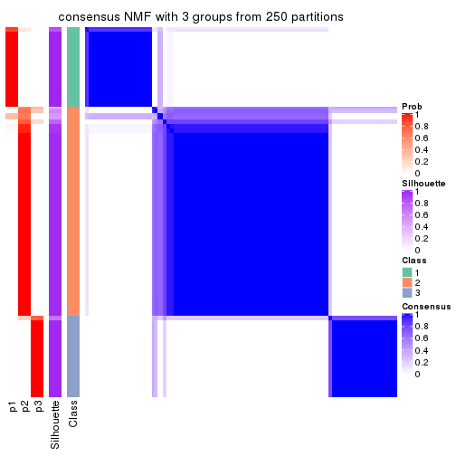
consensus_heatmap(res, k = 4)
consensus_heatmap(res, k = 5)
consensus_heatmap(res, k = 6)
Heatmaps for the membership of samples in all partitions to see how consistent they are:
membership_heatmap(res, k = 2)
membership_heatmap(res, k = 3)
membership_heatmap(res, k = 4)
membership_heatmap(res, k = 5)
membership_heatmap(res, k = 6)
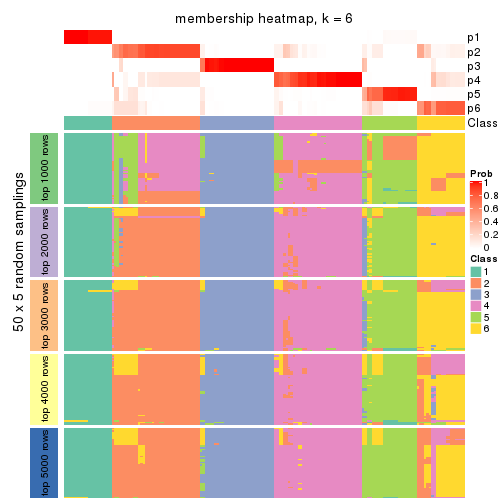
As soon as we have had the classes for columns, we can look for signatures which are significantly different between classes which can be candidate marks for certain classes. Following are the heatmaps for signatures.
Signature heatmaps where rows are scaled:
get_signatures(res, k = 2)
get_signatures(res, k = 3)
get_signatures(res, k = 4)
get_signatures(res, k = 5)
get_signatures(res, k = 6)
Signature heatmaps where rows are not scaled:
get_signatures(res, k = 2, scale_rows = FALSE)
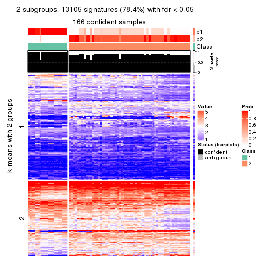
get_signatures(res, k = 3, scale_rows = FALSE)
get_signatures(res, k = 4, scale_rows = FALSE)

get_signatures(res, k = 5, scale_rows = FALSE)
get_signatures(res, k = 6, scale_rows = FALSE)
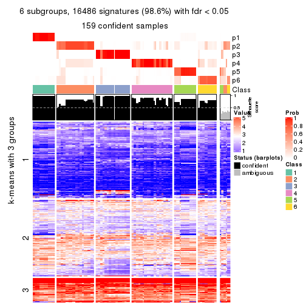
Compare the overlap of signatures from different k:
compare_signatures(res)
get_signature() returns a data frame invisibly. TO get the list of signatures, the function
call should be assigned to a variable explicitly. In following code, if plot argument is set
to FALSE, no heatmap is plotted while only the differential analysis is performed.
# code only for demonstration
tb = get_signature(res, k = ..., plot = FALSE)
An example of the output of tb is:
#> which_row fdr mean_1 mean_2 scaled_mean_1 scaled_mean_2 km
#> 1 38 0.042760348 8.373488 9.131774 -0.5533452 0.5164555 1
#> 2 40 0.018707592 7.106213 8.469186 -0.6173731 0.5762149 1
#> 3 55 0.019134737 10.221463 11.207825 -0.6159697 0.5749050 1
#> 4 59 0.006059896 5.921854 7.869574 -0.6899429 0.6439467 1
#> 5 60 0.018055526 8.928898 10.211722 -0.6204761 0.5791110 1
#> 6 98 0.009384629 15.714769 14.887706 0.6635654 -0.6193277 2
...
The columns in tb are:
which_row: row indices corresponding to the input matrix.fdr: FDR for the differential test. mean_x: The mean value in group x.scaled_mean_x: The mean value in group x after rows are scaled.km: Row groups if k-means clustering is applied to rows.UMAP plot which shows how samples are separated.
dimension_reduction(res, k = 2, method = "UMAP")
dimension_reduction(res, k = 3, method = "UMAP")
dimension_reduction(res, k = 4, method = "UMAP")
dimension_reduction(res, k = 5, method = "UMAP")
dimension_reduction(res, k = 6, method = "UMAP")
Following heatmap shows how subgroups are split when increasing k:
collect_classes(res)
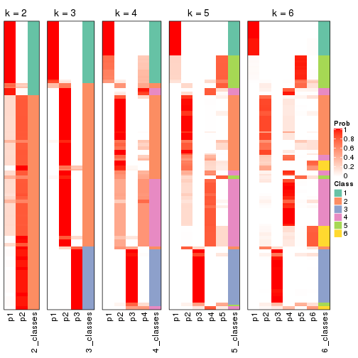
If matrix rows can be associated to genes, consider to use GO_Enrichment(res,
...) to perform function enrichment for the signature genes.
The object with results only for a single top-value method and a single partition method can be extracted as:
res = res_list["MAD", "hclust"]
# you can also extract it by
# res = res_list["MAD:hclust"]
A summary of res and all the functions that can be applied to it:
res
#> A 'ConsensusPartition' object with k = 2, 3, 4, 5, 6.
#> On a matrix with 16717 rows and 168 columns.
#> Top rows (1000, 2000, 3000, 4000, 5000) are extracted by 'MAD' method.
#> Subgroups are detected by 'hclust' method.
#> Performed in total 1250 partitions by row resampling.
#> Best k for subgroups seems to be 3.
#>
#> Following methods can be applied to this 'ConsensusPartition' object:
#> [1] "cola_report" "collect_classes" "collect_plots"
#> [4] "collect_stats" "colnames" "compare_signatures"
#> [7] "consensus_heatmap" "dimension_reduction" "functional_enrichment"
#> [10] "get_anno_col" "get_anno" "get_classes"
#> [13] "get_consensus" "get_matrix" "get_membership"
#> [16] "get_param" "get_signatures" "get_stats"
#> [19] "is_best_k" "is_stable_k" "membership_heatmap"
#> [22] "ncol" "nrow" "plot_ecdf"
#> [25] "rownames" "select_partition_number" "show"
#> [28] "suggest_best_k" "test_to_known_factors"
collect_plots() function collects all the plots made from res for all k (number of partitions)
into one single page to provide an easy and fast comparison between different k.
collect_plots(res)

The plots are:
k and the heatmap of
predicted classes for each k.k.k.k.All the plots in panels can be made by individual functions and they are plotted later in this section.
select_partition_number() produces several plots showing different
statistics for choosing “optimized” k. There are following statistics:
k;k, the area increased is defined as \(A_k - A_{k-1}\).The detailed explanations of these statistics can be found in the cola vignette.
Generally speaking, lower PAC score, higher mean silhouette score or higher
concordance corresponds to better partition. Rand index and Jaccard index
measure how similar the current partition is compared to partition with k-1.
If they are too similar, we won't accept k is better than k-1.
select_partition_number(res)
The numeric values for all these statistics can be obtained by get_stats().
get_stats(res)
#> k 1-PAC mean_silhouette concordance area_increased Rand Jaccard
#> 2 2 0.415 0.841 0.876 0.3877 0.661 0.661
#> 3 3 0.592 0.701 0.859 0.5771 0.690 0.531
#> 4 4 0.740 0.715 0.767 0.1880 0.913 0.782
#> 5 5 0.750 0.628 0.754 0.0719 0.804 0.483
#> 6 6 0.711 0.638 0.729 0.0431 0.894 0.593
suggest_best_k() suggests the best \(k\) based on these statistics. The rules are as follows:
NA.suggest_best_k(res)
#> [1] 3
Following shows the table of the partitions (You need to click the show/hide
code output link to see it). The membership matrix (columns with name p*)
is inferred by
clue::cl_consensus()
function with the SE method. Basically the value in the membership matrix
represents the probability to belong to a certain group. The finall class
label for an item is determined with the group with highest probability it
belongs to.
In get_classes() function, the entropy is calculated from the membership
matrix and the silhouette score is calculated from the consensus matrix.
cbind(get_classes(res, k = 2), get_membership(res, k = 2))
#> class entropy silhouette p1 p2
#> SRR1768889 2 0.000 0.822 0.000 1.000
#> SRR1768890 2 0.000 0.822 0.000 1.000
#> SRR1768891 2 0.876 0.780 0.296 0.704
#> SRR1768892 2 0.876 0.780 0.296 0.704
#> SRR1768893 2 0.876 0.780 0.296 0.704
#> SRR1768894 2 0.876 0.780 0.296 0.704
#> SRR1768895 2 0.871 0.782 0.292 0.708
#> SRR1768896 2 0.871 0.782 0.292 0.708
#> SRR1768821 2 0.917 0.755 0.332 0.668
#> SRR1768822 2 0.917 0.755 0.332 0.668
#> SRR1768823 2 0.917 0.755 0.332 0.668
#> SRR1768824 2 0.917 0.755 0.332 0.668
#> SRR1768825 2 0.904 0.765 0.320 0.680
#> SRR1768826 2 0.904 0.765 0.320 0.680
#> SRR1768827 2 0.904 0.765 0.320 0.680
#> SRR1768828 2 0.904 0.765 0.320 0.680
#> SRR1768829 2 0.904 0.765 0.320 0.680
#> SRR1768830 2 0.904 0.765 0.320 0.680
#> SRR1768831 2 0.605 0.830 0.148 0.852
#> SRR1768832 2 0.605 0.830 0.148 0.852
#> SRR1768833 2 0.605 0.830 0.148 0.852
#> SRR1768834 2 0.605 0.830 0.148 0.852
#> SRR1768835 2 0.605 0.830 0.148 0.852
#> SRR1768836 2 0.605 0.830 0.148 0.852
#> SRR1768837 2 0.605 0.830 0.148 0.852
#> SRR1768838 2 0.605 0.830 0.148 0.852
#> SRR1768839 2 0.605 0.830 0.148 0.852
#> SRR1768840 2 0.605 0.830 0.148 0.852
#> SRR1768841 2 0.605 0.830 0.148 0.852
#> SRR1768842 2 0.605 0.830 0.148 0.852
#> SRR1768843 2 0.605 0.830 0.148 0.852
#> SRR1768844 2 0.000 0.822 0.000 1.000
#> SRR1768845 2 0.000 0.822 0.000 1.000
#> SRR1768846 2 0.000 0.822 0.000 1.000
#> SRR1768847 2 0.000 0.822 0.000 1.000
#> SRR1768848 2 0.000 0.822 0.000 1.000
#> SRR1768849 2 0.000 0.822 0.000 1.000
#> SRR1768850 2 0.000 0.822 0.000 1.000
#> SRR1768851 2 0.000 0.822 0.000 1.000
#> SRR1768852 2 0.697 0.823 0.188 0.812
#> SRR1768853 2 0.697 0.823 0.188 0.812
#> SRR1768854 2 0.697 0.823 0.188 0.812
#> SRR1768855 2 0.000 0.822 0.000 1.000
#> SRR1768856 2 0.000 0.822 0.000 1.000
#> SRR1768857 2 0.000 0.822 0.000 1.000
#> SRR1768858 2 0.000 0.822 0.000 1.000
#> SRR1768859 2 0.000 0.822 0.000 1.000
#> SRR1768860 2 0.000 0.822 0.000 1.000
#> SRR1768861 2 0.141 0.825 0.020 0.980
#> SRR1768862 2 0.141 0.825 0.020 0.980
#> SRR1768863 2 0.141 0.825 0.020 0.980
#> SRR1768864 2 0.141 0.825 0.020 0.980
#> SRR1768865 2 0.141 0.825 0.020 0.980
#> SRR1768866 2 0.141 0.825 0.020 0.980
#> SRR1768867 2 0.917 0.755 0.332 0.668
#> SRR1768868 2 0.917 0.755 0.332 0.668
#> SRR1768869 2 0.895 0.771 0.312 0.688
#> SRR1768870 2 0.895 0.771 0.312 0.688
#> SRR1768871 2 0.895 0.771 0.312 0.688
#> SRR1768872 2 0.895 0.771 0.312 0.688
#> SRR1768873 2 0.895 0.771 0.312 0.688
#> SRR1768874 2 0.895 0.771 0.312 0.688
#> SRR1768875 2 0.000 0.822 0.000 1.000
#> SRR1768876 2 0.000 0.822 0.000 1.000
#> SRR1768877 2 0.000 0.822 0.000 1.000
#> SRR1768878 2 0.000 0.822 0.000 1.000
#> SRR1768879 2 0.163 0.824 0.024 0.976
#> SRR1768880 2 0.163 0.824 0.024 0.976
#> SRR1768881 2 0.876 0.780 0.296 0.704
#> SRR1768882 2 0.876 0.780 0.296 0.704
#> SRR1768883 2 0.000 0.822 0.000 1.000
#> SRR1768884 2 0.000 0.822 0.000 1.000
#> SRR1768885 2 0.000 0.822 0.000 1.000
#> SRR1768886 2 0.000 0.822 0.000 1.000
#> SRR1768887 2 0.000 0.822 0.000 1.000
#> SRR1768888 2 0.000 0.822 0.000 1.000
#> SRR1768897 2 0.871 0.782 0.292 0.708
#> SRR1768898 2 0.871 0.782 0.292 0.708
#> SRR1768899 2 0.871 0.782 0.292 0.708
#> SRR1768900 2 0.871 0.782 0.292 0.708
#> SRR1768901 2 0.163 0.824 0.024 0.976
#> SRR1768902 2 0.163 0.824 0.024 0.976
#> SRR1768903 2 0.163 0.824 0.024 0.976
#> SRR1768904 2 0.163 0.824 0.024 0.976
#> SRR1768905 2 0.163 0.824 0.024 0.976
#> SRR1768906 2 0.163 0.824 0.024 0.976
#> SRR1768907 2 0.000 0.822 0.000 1.000
#> SRR1768908 2 0.000 0.822 0.000 1.000
#> SRR1768909 2 0.000 0.822 0.000 1.000
#> SRR1768910 2 0.000 0.822 0.000 1.000
#> SRR1768911 2 0.000 0.822 0.000 1.000
#> SRR1768912 2 0.000 0.822 0.000 1.000
#> SRR1768913 2 0.000 0.822 0.000 1.000
#> SRR1768914 2 0.000 0.822 0.000 1.000
#> SRR1768915 2 0.000 0.822 0.000 1.000
#> SRR1768916 2 0.881 0.778 0.300 0.700
#> SRR1768917 2 0.881 0.778 0.300 0.700
#> SRR1768918 2 0.000 0.822 0.000 1.000
#> SRR1768919 2 0.000 0.822 0.000 1.000
#> SRR1768920 2 0.917 0.755 0.332 0.668
#> SRR1768921 2 0.917 0.755 0.332 0.668
#> SRR1768922 2 0.000 0.822 0.000 1.000
#> SRR1768923 2 0.000 0.822 0.000 1.000
#> SRR1768924 2 0.605 0.830 0.148 0.852
#> SRR1768925 2 0.605 0.830 0.148 0.852
#> SRR1768926 2 0.605 0.830 0.148 0.852
#> SRR1768927 2 0.605 0.830 0.148 0.852
#> SRR1768928 2 0.605 0.830 0.148 0.852
#> SRR1768929 2 0.605 0.830 0.148 0.852
#> SRR1768930 2 0.917 0.755 0.332 0.668
#> SRR1768931 2 0.917 0.755 0.332 0.668
#> SRR1768932 2 0.917 0.755 0.332 0.668
#> SRR1768933 2 0.917 0.755 0.332 0.668
#> SRR1768934 2 0.917 0.755 0.332 0.668
#> SRR1768935 2 0.917 0.755 0.332 0.668
#> SRR1768936 2 0.917 0.755 0.332 0.668
#> SRR1768937 2 0.917 0.755 0.332 0.668
#> SRR1768938 2 0.917 0.755 0.332 0.668
#> SRR1768939 2 0.961 0.687 0.384 0.616
#> SRR1768940 2 0.961 0.687 0.384 0.616
#> SRR1768941 2 0.961 0.687 0.384 0.616
#> SRR1768942 2 0.961 0.687 0.384 0.616
#> SRR1768943 2 0.961 0.687 0.384 0.616
#> SRR1768944 2 0.961 0.687 0.384 0.616
#> SRR1768945 2 0.961 0.687 0.384 0.616
#> SRR1768946 2 0.961 0.687 0.384 0.616
#> SRR1768947 2 0.000 0.822 0.000 1.000
#> SRR1768948 2 0.000 0.822 0.000 1.000
#> SRR1768949 2 0.000 0.822 0.000 1.000
#> SRR1768950 2 0.697 0.823 0.188 0.812
#> SRR1768954 1 0.000 1.000 1.000 0.000
#> SRR1768955 1 0.000 1.000 1.000 0.000
#> SRR1768956 1 0.000 1.000 1.000 0.000
#> SRR1768957 1 0.000 1.000 1.000 0.000
#> SRR1768958 1 0.000 1.000 1.000 0.000
#> SRR1768959 1 0.000 1.000 1.000 0.000
#> SRR1768960 1 0.000 1.000 1.000 0.000
#> SRR1768961 1 0.000 1.000 1.000 0.000
#> SRR1768952 2 0.697 0.823 0.188 0.812
#> SRR1768953 2 0.697 0.823 0.188 0.812
#> SRR1768962 1 0.000 1.000 1.000 0.000
#> SRR1768963 1 0.000 1.000 1.000 0.000
#> SRR1768964 1 0.000 1.000 1.000 0.000
#> SRR1768965 1 0.000 1.000 1.000 0.000
#> SRR1768966 1 0.000 1.000 1.000 0.000
#> SRR1768967 1 0.000 1.000 1.000 0.000
#> SRR1768968 1 0.000 1.000 1.000 0.000
#> SRR1768969 1 0.000 1.000 1.000 0.000
#> SRR1768970 1 0.000 1.000 1.000 0.000
#> SRR1768971 1 0.000 1.000 1.000 0.000
#> SRR1768972 1 0.000 1.000 1.000 0.000
#> SRR1768973 1 0.000 1.000 1.000 0.000
#> SRR1768974 1 0.000 1.000 1.000 0.000
#> SRR1768975 1 0.000 1.000 1.000 0.000
#> SRR1768976 1 0.000 1.000 1.000 0.000
#> SRR1768977 1 0.000 1.000 1.000 0.000
#> SRR1768978 1 0.000 1.000 1.000 0.000
#> SRR1768979 1 0.000 1.000 1.000 0.000
#> SRR1768980 1 0.000 1.000 1.000 0.000
#> SRR1768981 1 0.000 1.000 1.000 0.000
#> SRR1768982 1 0.000 1.000 1.000 0.000
#> SRR1768983 1 0.000 1.000 1.000 0.000
#> SRR1768984 1 0.000 1.000 1.000 0.000
#> SRR1768985 1 0.000 1.000 1.000 0.000
#> SRR1768986 1 0.000 1.000 1.000 0.000
#> SRR1768987 1 0.000 1.000 1.000 0.000
#> SRR1768988 1 0.000 1.000 1.000 0.000
#> SRR1768989 1 0.000 1.000 1.000 0.000
cbind(get_classes(res, k = 3), get_membership(res, k = 3))
#> class entropy silhouette p1 p2 p3
#> SRR1768889 3 0.0000 0.689 0.000 0.000 1.000
#> SRR1768890 3 0.0000 0.689 0.000 0.000 1.000
#> SRR1768891 2 0.2959 0.788 0.000 0.900 0.100
#> SRR1768892 2 0.2959 0.788 0.000 0.900 0.100
#> SRR1768893 2 0.2959 0.788 0.000 0.900 0.100
#> SRR1768894 2 0.2959 0.788 0.000 0.900 0.100
#> SRR1768895 2 0.3340 0.770 0.000 0.880 0.120
#> SRR1768896 2 0.3340 0.770 0.000 0.880 0.120
#> SRR1768821 2 0.0424 0.835 0.008 0.992 0.000
#> SRR1768822 2 0.0424 0.835 0.008 0.992 0.000
#> SRR1768823 2 0.0424 0.835 0.008 0.992 0.000
#> SRR1768824 2 0.0424 0.835 0.008 0.992 0.000
#> SRR1768825 2 0.0661 0.836 0.004 0.988 0.008
#> SRR1768826 2 0.0661 0.836 0.004 0.988 0.008
#> SRR1768827 2 0.0661 0.836 0.004 0.988 0.008
#> SRR1768828 2 0.0661 0.836 0.004 0.988 0.008
#> SRR1768829 2 0.0661 0.836 0.004 0.988 0.008
#> SRR1768830 2 0.0661 0.836 0.004 0.988 0.008
#> SRR1768831 3 0.6267 0.486 0.000 0.452 0.548
#> SRR1768832 3 0.6267 0.486 0.000 0.452 0.548
#> SRR1768833 3 0.6267 0.486 0.000 0.452 0.548
#> SRR1768834 3 0.6267 0.486 0.000 0.452 0.548
#> SRR1768835 3 0.6267 0.486 0.000 0.452 0.548
#> SRR1768836 3 0.6267 0.486 0.000 0.452 0.548
#> SRR1768837 3 0.6267 0.486 0.000 0.452 0.548
#> SRR1768838 3 0.6267 0.486 0.000 0.452 0.548
#> SRR1768839 3 0.6267 0.486 0.000 0.452 0.548
#> SRR1768840 3 0.6267 0.486 0.000 0.452 0.548
#> SRR1768841 3 0.6267 0.486 0.000 0.452 0.548
#> SRR1768842 3 0.6267 0.486 0.000 0.452 0.548
#> SRR1768843 3 0.6267 0.486 0.000 0.452 0.548
#> SRR1768844 3 0.0000 0.689 0.000 0.000 1.000
#> SRR1768845 3 0.0000 0.689 0.000 0.000 1.000
#> SRR1768846 3 0.0000 0.689 0.000 0.000 1.000
#> SRR1768847 3 0.0000 0.689 0.000 0.000 1.000
#> SRR1768848 3 0.0000 0.689 0.000 0.000 1.000
#> SRR1768849 3 0.0000 0.689 0.000 0.000 1.000
#> SRR1768850 3 0.0000 0.689 0.000 0.000 1.000
#> SRR1768851 3 0.0000 0.689 0.000 0.000 1.000
#> SRR1768852 2 0.4555 0.646 0.000 0.800 0.200
#> SRR1768853 2 0.4555 0.646 0.000 0.800 0.200
#> SRR1768854 2 0.4555 0.646 0.000 0.800 0.200
#> SRR1768855 3 0.0000 0.689 0.000 0.000 1.000
#> SRR1768856 3 0.0000 0.689 0.000 0.000 1.000
#> SRR1768857 3 0.0000 0.689 0.000 0.000 1.000
#> SRR1768858 3 0.0000 0.689 0.000 0.000 1.000
#> SRR1768859 3 0.0000 0.689 0.000 0.000 1.000
#> SRR1768860 3 0.0000 0.689 0.000 0.000 1.000
#> SRR1768861 3 0.6305 0.282 0.000 0.484 0.516
#> SRR1768862 3 0.6305 0.282 0.000 0.484 0.516
#> SRR1768863 3 0.6305 0.282 0.000 0.484 0.516
#> SRR1768864 3 0.6305 0.282 0.000 0.484 0.516
#> SRR1768865 3 0.6305 0.282 0.000 0.484 0.516
#> SRR1768866 3 0.6305 0.282 0.000 0.484 0.516
#> SRR1768867 2 0.0424 0.835 0.008 0.992 0.000
#> SRR1768868 2 0.0424 0.835 0.008 0.992 0.000
#> SRR1768869 2 0.0592 0.835 0.000 0.988 0.012
#> SRR1768870 2 0.0592 0.835 0.000 0.988 0.012
#> SRR1768871 2 0.0592 0.835 0.000 0.988 0.012
#> SRR1768872 2 0.0592 0.835 0.000 0.988 0.012
#> SRR1768873 2 0.0592 0.835 0.000 0.988 0.012
#> SRR1768874 2 0.0592 0.835 0.000 0.988 0.012
#> SRR1768875 3 0.0000 0.689 0.000 0.000 1.000
#> SRR1768876 3 0.0000 0.689 0.000 0.000 1.000
#> SRR1768877 3 0.0000 0.689 0.000 0.000 1.000
#> SRR1768878 3 0.0000 0.689 0.000 0.000 1.000
#> SRR1768879 2 0.6309 -0.227 0.000 0.504 0.496
#> SRR1768880 2 0.6309 -0.227 0.000 0.504 0.496
#> SRR1768881 2 0.2959 0.788 0.000 0.900 0.100
#> SRR1768882 2 0.2959 0.788 0.000 0.900 0.100
#> SRR1768883 3 0.5397 0.656 0.000 0.280 0.720
#> SRR1768884 3 0.5397 0.656 0.000 0.280 0.720
#> SRR1768885 3 0.0000 0.689 0.000 0.000 1.000
#> SRR1768886 3 0.0000 0.689 0.000 0.000 1.000
#> SRR1768887 3 0.0000 0.689 0.000 0.000 1.000
#> SRR1768888 3 0.0000 0.689 0.000 0.000 1.000
#> SRR1768897 2 0.3340 0.770 0.000 0.880 0.120
#> SRR1768898 2 0.3340 0.770 0.000 0.880 0.120
#> SRR1768899 2 0.3340 0.770 0.000 0.880 0.120
#> SRR1768900 2 0.3340 0.770 0.000 0.880 0.120
#> SRR1768901 2 0.6309 -0.227 0.000 0.504 0.496
#> SRR1768902 2 0.6309 -0.227 0.000 0.504 0.496
#> SRR1768903 2 0.6309 -0.227 0.000 0.504 0.496
#> SRR1768904 2 0.6309 -0.227 0.000 0.504 0.496
#> SRR1768905 2 0.6309 -0.227 0.000 0.504 0.496
#> SRR1768906 2 0.6309 -0.227 0.000 0.504 0.496
#> SRR1768907 3 0.5431 0.655 0.000 0.284 0.716
#> SRR1768908 3 0.5431 0.655 0.000 0.284 0.716
#> SRR1768909 3 0.5431 0.655 0.000 0.284 0.716
#> SRR1768910 3 0.5431 0.655 0.000 0.284 0.716
#> SRR1768911 3 0.5431 0.655 0.000 0.284 0.716
#> SRR1768912 3 0.5431 0.655 0.000 0.284 0.716
#> SRR1768913 3 0.5431 0.655 0.000 0.284 0.716
#> SRR1768914 3 0.5431 0.655 0.000 0.284 0.716
#> SRR1768915 3 0.5431 0.655 0.000 0.284 0.716
#> SRR1768916 2 0.1031 0.831 0.000 0.976 0.024
#> SRR1768917 2 0.1031 0.831 0.000 0.976 0.024
#> SRR1768918 3 0.5397 0.656 0.000 0.280 0.720
#> SRR1768919 3 0.5397 0.656 0.000 0.280 0.720
#> SRR1768920 2 0.0424 0.835 0.008 0.992 0.000
#> SRR1768921 2 0.0424 0.835 0.008 0.992 0.000
#> SRR1768922 3 0.5397 0.656 0.000 0.280 0.720
#> SRR1768923 3 0.5397 0.656 0.000 0.280 0.720
#> SRR1768924 3 0.6267 0.486 0.000 0.452 0.548
#> SRR1768925 3 0.6267 0.486 0.000 0.452 0.548
#> SRR1768926 3 0.6267 0.486 0.000 0.452 0.548
#> SRR1768927 3 0.6267 0.486 0.000 0.452 0.548
#> SRR1768928 3 0.6267 0.486 0.000 0.452 0.548
#> SRR1768929 3 0.6267 0.486 0.000 0.452 0.548
#> SRR1768930 2 0.0424 0.835 0.008 0.992 0.000
#> SRR1768931 2 0.0424 0.835 0.008 0.992 0.000
#> SRR1768932 2 0.0424 0.835 0.008 0.992 0.000
#> SRR1768933 2 0.0424 0.835 0.008 0.992 0.000
#> SRR1768934 2 0.0424 0.835 0.008 0.992 0.000
#> SRR1768935 2 0.0424 0.835 0.008 0.992 0.000
#> SRR1768936 2 0.0424 0.835 0.008 0.992 0.000
#> SRR1768937 2 0.0424 0.835 0.008 0.992 0.000
#> SRR1768938 2 0.0424 0.835 0.008 0.992 0.000
#> SRR1768939 2 0.2066 0.805 0.060 0.940 0.000
#> SRR1768940 2 0.2066 0.805 0.060 0.940 0.000
#> SRR1768941 2 0.2066 0.805 0.060 0.940 0.000
#> SRR1768942 2 0.2066 0.805 0.060 0.940 0.000
#> SRR1768943 2 0.2066 0.805 0.060 0.940 0.000
#> SRR1768944 2 0.2066 0.805 0.060 0.940 0.000
#> SRR1768945 2 0.2066 0.805 0.060 0.940 0.000
#> SRR1768946 2 0.2066 0.805 0.060 0.940 0.000
#> SRR1768947 3 0.0000 0.689 0.000 0.000 1.000
#> SRR1768948 3 0.0000 0.689 0.000 0.000 1.000
#> SRR1768949 3 0.0000 0.689 0.000 0.000 1.000
#> SRR1768950 2 0.4399 0.666 0.000 0.812 0.188
#> SRR1768954 1 0.0000 0.989 1.000 0.000 0.000
#> SRR1768955 1 0.0000 0.989 1.000 0.000 0.000
#> SRR1768956 1 0.0000 0.989 1.000 0.000 0.000
#> SRR1768957 1 0.0000 0.989 1.000 0.000 0.000
#> SRR1768958 1 0.0000 0.989 1.000 0.000 0.000
#> SRR1768959 1 0.0000 0.989 1.000 0.000 0.000
#> SRR1768960 1 0.0000 0.989 1.000 0.000 0.000
#> SRR1768961 1 0.0000 0.989 1.000 0.000 0.000
#> SRR1768952 2 0.5529 0.435 0.000 0.704 0.296
#> SRR1768953 2 0.5529 0.435 0.000 0.704 0.296
#> SRR1768962 1 0.0000 0.989 1.000 0.000 0.000
#> SRR1768963 1 0.0000 0.989 1.000 0.000 0.000
#> SRR1768964 1 0.0000 0.989 1.000 0.000 0.000
#> SRR1768965 1 0.0000 0.989 1.000 0.000 0.000
#> SRR1768966 1 0.0000 0.989 1.000 0.000 0.000
#> SRR1768967 1 0.0000 0.989 1.000 0.000 0.000
#> SRR1768968 1 0.0000 0.989 1.000 0.000 0.000
#> SRR1768969 1 0.0000 0.989 1.000 0.000 0.000
#> SRR1768970 1 0.0000 0.989 1.000 0.000 0.000
#> SRR1768971 1 0.0000 0.989 1.000 0.000 0.000
#> SRR1768972 1 0.0000 0.989 1.000 0.000 0.000
#> SRR1768973 1 0.0000 0.989 1.000 0.000 0.000
#> SRR1768974 1 0.0000 0.989 1.000 0.000 0.000
#> SRR1768975 1 0.0000 0.989 1.000 0.000 0.000
#> SRR1768976 1 0.0000 0.989 1.000 0.000 0.000
#> SRR1768977 1 0.0000 0.989 1.000 0.000 0.000
#> SRR1768978 1 0.0000 0.989 1.000 0.000 0.000
#> SRR1768979 1 0.0000 0.989 1.000 0.000 0.000
#> SRR1768980 1 0.0000 0.989 1.000 0.000 0.000
#> SRR1768981 1 0.0000 0.989 1.000 0.000 0.000
#> SRR1768982 1 0.0000 0.989 1.000 0.000 0.000
#> SRR1768983 1 0.0000 0.989 1.000 0.000 0.000
#> SRR1768984 1 0.4555 0.773 0.800 0.200 0.000
#> SRR1768985 1 0.4555 0.773 0.800 0.200 0.000
#> SRR1768986 1 0.0000 0.989 1.000 0.000 0.000
#> SRR1768987 1 0.0000 0.989 1.000 0.000 0.000
#> SRR1768988 1 0.0000 0.989 1.000 0.000 0.000
#> SRR1768989 1 0.0000 0.989 1.000 0.000 0.000
cbind(get_classes(res, k = 4), get_membership(res, k = 4))
#> class entropy silhouette p1 p2 p3 p4
#> SRR1768889 3 0.4998 0.582 0.00 0.000 0.512 0.488
#> SRR1768890 3 0.4998 0.582 0.00 0.000 0.512 0.488
#> SRR1768891 2 0.2924 0.851 0.00 0.884 0.100 0.016
#> SRR1768892 2 0.2924 0.851 0.00 0.884 0.100 0.016
#> SRR1768893 2 0.2924 0.851 0.00 0.884 0.100 0.016
#> SRR1768894 2 0.2924 0.851 0.00 0.884 0.100 0.016
#> SRR1768895 2 0.3278 0.841 0.00 0.864 0.116 0.020
#> SRR1768896 2 0.3278 0.841 0.00 0.864 0.116 0.020
#> SRR1768821 2 0.0000 0.891 0.00 1.000 0.000 0.000
#> SRR1768822 2 0.0000 0.891 0.00 1.000 0.000 0.000
#> SRR1768823 2 0.0000 0.891 0.00 1.000 0.000 0.000
#> SRR1768824 2 0.0000 0.891 0.00 1.000 0.000 0.000
#> SRR1768825 2 0.0657 0.891 0.00 0.984 0.004 0.012
#> SRR1768826 2 0.0657 0.891 0.00 0.984 0.004 0.012
#> SRR1768827 2 0.0657 0.891 0.00 0.984 0.004 0.012
#> SRR1768828 2 0.0657 0.891 0.00 0.984 0.004 0.012
#> SRR1768829 2 0.0657 0.891 0.00 0.984 0.004 0.012
#> SRR1768830 2 0.0657 0.891 0.00 0.984 0.004 0.012
#> SRR1768831 3 0.4948 0.494 0.00 0.000 0.560 0.440
#> SRR1768832 3 0.4948 0.494 0.00 0.000 0.560 0.440
#> SRR1768833 3 0.4948 0.494 0.00 0.000 0.560 0.440
#> SRR1768834 3 0.4948 0.494 0.00 0.000 0.560 0.440
#> SRR1768835 3 0.4948 0.494 0.00 0.000 0.560 0.440
#> SRR1768836 3 0.4948 0.494 0.00 0.000 0.560 0.440
#> SRR1768837 3 0.4948 0.494 0.00 0.000 0.560 0.440
#> SRR1768838 3 0.4948 0.494 0.00 0.000 0.560 0.440
#> SRR1768839 3 0.4948 0.494 0.00 0.000 0.560 0.440
#> SRR1768840 3 0.4948 0.494 0.00 0.000 0.560 0.440
#> SRR1768841 3 0.4948 0.494 0.00 0.000 0.560 0.440
#> SRR1768842 3 0.4948 0.494 0.00 0.000 0.560 0.440
#> SRR1768843 3 0.4948 0.494 0.00 0.000 0.560 0.440
#> SRR1768844 3 0.4998 0.582 0.00 0.000 0.512 0.488
#> SRR1768845 3 0.4998 0.582 0.00 0.000 0.512 0.488
#> SRR1768846 3 0.4998 0.582 0.00 0.000 0.512 0.488
#> SRR1768847 3 0.4998 0.582 0.00 0.000 0.512 0.488
#> SRR1768848 3 0.4998 0.582 0.00 0.000 0.512 0.488
#> SRR1768849 3 0.4998 0.582 0.00 0.000 0.512 0.488
#> SRR1768850 3 0.4998 0.582 0.00 0.000 0.512 0.488
#> SRR1768851 3 0.4998 0.582 0.00 0.000 0.512 0.488
#> SRR1768852 2 0.7276 0.111 0.00 0.448 0.404 0.148
#> SRR1768853 2 0.7276 0.111 0.00 0.448 0.404 0.148
#> SRR1768854 2 0.7276 0.111 0.00 0.448 0.404 0.148
#> SRR1768855 3 0.4999 0.580 0.00 0.000 0.508 0.492
#> SRR1768856 3 0.4999 0.580 0.00 0.000 0.508 0.492
#> SRR1768857 3 0.4999 0.580 0.00 0.000 0.508 0.492
#> SRR1768858 3 0.4999 0.580 0.00 0.000 0.508 0.492
#> SRR1768859 3 0.4999 0.580 0.00 0.000 0.508 0.492
#> SRR1768860 3 0.4999 0.580 0.00 0.000 0.508 0.492
#> SRR1768861 3 0.5623 0.371 0.00 0.292 0.660 0.048
#> SRR1768862 3 0.5623 0.371 0.00 0.292 0.660 0.048
#> SRR1768863 3 0.5623 0.371 0.00 0.292 0.660 0.048
#> SRR1768864 3 0.5623 0.371 0.00 0.292 0.660 0.048
#> SRR1768865 3 0.5623 0.371 0.00 0.292 0.660 0.048
#> SRR1768866 3 0.5623 0.371 0.00 0.292 0.660 0.048
#> SRR1768867 2 0.0000 0.891 0.00 1.000 0.000 0.000
#> SRR1768868 2 0.0000 0.891 0.00 1.000 0.000 0.000
#> SRR1768869 2 0.3725 0.792 0.00 0.812 0.008 0.180
#> SRR1768870 2 0.3725 0.792 0.00 0.812 0.008 0.180
#> SRR1768871 2 0.3725 0.792 0.00 0.812 0.008 0.180
#> SRR1768872 2 0.3725 0.792 0.00 0.812 0.008 0.180
#> SRR1768873 2 0.3725 0.792 0.00 0.812 0.008 0.180
#> SRR1768874 2 0.3725 0.792 0.00 0.812 0.008 0.180
#> SRR1768875 3 0.4998 0.582 0.00 0.000 0.512 0.488
#> SRR1768876 3 0.4998 0.582 0.00 0.000 0.512 0.488
#> SRR1768877 3 0.4998 0.582 0.00 0.000 0.512 0.488
#> SRR1768878 3 0.4998 0.582 0.00 0.000 0.512 0.488
#> SRR1768879 3 0.4775 0.453 0.00 0.232 0.740 0.028
#> SRR1768880 3 0.4775 0.453 0.00 0.232 0.740 0.028
#> SRR1768881 2 0.2924 0.851 0.00 0.884 0.100 0.016
#> SRR1768882 2 0.2924 0.851 0.00 0.884 0.100 0.016
#> SRR1768883 3 0.4426 0.615 0.00 0.024 0.772 0.204
#> SRR1768884 3 0.4426 0.615 0.00 0.024 0.772 0.204
#> SRR1768885 3 0.4998 0.582 0.00 0.000 0.512 0.488
#> SRR1768886 3 0.4998 0.582 0.00 0.000 0.512 0.488
#> SRR1768887 3 0.4998 0.582 0.00 0.000 0.512 0.488
#> SRR1768888 3 0.4998 0.582 0.00 0.000 0.512 0.488
#> SRR1768897 2 0.3278 0.841 0.00 0.864 0.116 0.020
#> SRR1768898 2 0.3278 0.841 0.00 0.864 0.116 0.020
#> SRR1768899 2 0.3278 0.841 0.00 0.864 0.116 0.020
#> SRR1768900 2 0.3278 0.841 0.00 0.864 0.116 0.020
#> SRR1768901 3 0.4956 0.457 0.00 0.232 0.732 0.036
#> SRR1768902 3 0.4956 0.457 0.00 0.232 0.732 0.036
#> SRR1768903 3 0.4956 0.457 0.00 0.232 0.732 0.036
#> SRR1768904 3 0.4956 0.457 0.00 0.232 0.732 0.036
#> SRR1768905 3 0.4956 0.457 0.00 0.232 0.732 0.036
#> SRR1768906 3 0.4956 0.457 0.00 0.232 0.732 0.036
#> SRR1768907 3 0.0188 0.624 0.00 0.000 0.996 0.004
#> SRR1768908 3 0.0188 0.624 0.00 0.000 0.996 0.004
#> SRR1768909 3 0.0188 0.624 0.00 0.000 0.996 0.004
#> SRR1768910 3 0.0188 0.624 0.00 0.000 0.996 0.004
#> SRR1768911 3 0.0188 0.624 0.00 0.000 0.996 0.004
#> SRR1768912 3 0.0188 0.624 0.00 0.000 0.996 0.004
#> SRR1768913 3 0.0188 0.624 0.00 0.000 0.996 0.004
#> SRR1768914 3 0.0188 0.624 0.00 0.000 0.996 0.004
#> SRR1768915 3 0.0188 0.624 0.00 0.000 0.996 0.004
#> SRR1768916 2 0.1520 0.884 0.00 0.956 0.024 0.020
#> SRR1768917 2 0.1520 0.884 0.00 0.956 0.024 0.020
#> SRR1768918 3 0.1474 0.627 0.00 0.000 0.948 0.052
#> SRR1768919 3 0.1474 0.627 0.00 0.000 0.948 0.052
#> SRR1768920 2 0.0188 0.891 0.00 0.996 0.000 0.004
#> SRR1768921 2 0.0188 0.891 0.00 0.996 0.000 0.004
#> SRR1768922 3 0.1474 0.627 0.00 0.000 0.948 0.052
#> SRR1768923 3 0.1474 0.627 0.00 0.000 0.948 0.052
#> SRR1768924 3 0.4948 0.494 0.00 0.000 0.560 0.440
#> SRR1768925 3 0.4948 0.494 0.00 0.000 0.560 0.440
#> SRR1768926 3 0.4948 0.494 0.00 0.000 0.560 0.440
#> SRR1768927 3 0.4948 0.494 0.00 0.000 0.560 0.440
#> SRR1768928 3 0.4948 0.494 0.00 0.000 0.560 0.440
#> SRR1768929 3 0.4948 0.494 0.00 0.000 0.560 0.440
#> SRR1768930 2 0.0000 0.891 0.00 1.000 0.000 0.000
#> SRR1768931 2 0.0000 0.891 0.00 1.000 0.000 0.000
#> SRR1768932 2 0.0000 0.891 0.00 1.000 0.000 0.000
#> SRR1768933 2 0.0000 0.891 0.00 1.000 0.000 0.000
#> SRR1768934 2 0.0000 0.891 0.00 1.000 0.000 0.000
#> SRR1768935 2 0.0000 0.891 0.00 1.000 0.000 0.000
#> SRR1768936 2 0.0000 0.891 0.00 1.000 0.000 0.000
#> SRR1768937 2 0.0000 0.891 0.00 1.000 0.000 0.000
#> SRR1768938 2 0.0000 0.891 0.00 1.000 0.000 0.000
#> SRR1768939 2 0.1867 0.863 0.00 0.928 0.000 0.072
#> SRR1768940 2 0.1867 0.863 0.00 0.928 0.000 0.072
#> SRR1768941 2 0.1867 0.863 0.00 0.928 0.000 0.072
#> SRR1768942 2 0.1867 0.863 0.00 0.928 0.000 0.072
#> SRR1768943 2 0.1867 0.863 0.00 0.928 0.000 0.072
#> SRR1768944 2 0.1867 0.863 0.00 0.928 0.000 0.072
#> SRR1768945 2 0.1867 0.863 0.00 0.928 0.000 0.072
#> SRR1768946 2 0.1867 0.863 0.00 0.928 0.000 0.072
#> SRR1768947 3 0.4999 0.580 0.00 0.000 0.508 0.492
#> SRR1768948 3 0.4999 0.580 0.00 0.000 0.508 0.492
#> SRR1768949 3 0.4999 0.580 0.00 0.000 0.508 0.492
#> SRR1768950 2 0.7175 0.139 0.00 0.460 0.404 0.136
#> SRR1768954 1 0.0000 0.986 1.00 0.000 0.000 0.000
#> SRR1768955 1 0.0000 0.986 1.00 0.000 0.000 0.000
#> SRR1768956 1 0.0000 0.986 1.00 0.000 0.000 0.000
#> SRR1768957 1 0.0000 0.986 1.00 0.000 0.000 0.000
#> SRR1768958 1 0.0000 0.986 1.00 0.000 0.000 0.000
#> SRR1768959 1 0.0000 0.986 1.00 0.000 0.000 0.000
#> SRR1768960 1 0.0000 0.986 1.00 0.000 0.000 0.000
#> SRR1768961 1 0.0000 0.986 1.00 0.000 0.000 0.000
#> SRR1768952 3 0.7201 0.136 0.00 0.356 0.496 0.148
#> SRR1768953 3 0.7201 0.136 0.00 0.356 0.496 0.148
#> SRR1768962 1 0.0000 0.986 1.00 0.000 0.000 0.000
#> SRR1768963 1 0.0000 0.986 1.00 0.000 0.000 0.000
#> SRR1768964 1 0.0000 0.986 1.00 0.000 0.000 0.000
#> SRR1768965 1 0.0000 0.986 1.00 0.000 0.000 0.000
#> SRR1768966 1 0.0000 0.986 1.00 0.000 0.000 0.000
#> SRR1768967 1 0.0000 0.986 1.00 0.000 0.000 0.000
#> SRR1768968 1 0.0000 0.986 1.00 0.000 0.000 0.000
#> SRR1768969 1 0.0000 0.986 1.00 0.000 0.000 0.000
#> SRR1768970 1 0.0000 0.986 1.00 0.000 0.000 0.000
#> SRR1768971 1 0.0000 0.986 1.00 0.000 0.000 0.000
#> SRR1768972 1 0.0000 0.986 1.00 0.000 0.000 0.000
#> SRR1768973 1 0.0000 0.986 1.00 0.000 0.000 0.000
#> SRR1768974 1 0.0000 0.986 1.00 0.000 0.000 0.000
#> SRR1768975 1 0.0000 0.986 1.00 0.000 0.000 0.000
#> SRR1768976 1 0.0000 0.986 1.00 0.000 0.000 0.000
#> SRR1768977 1 0.0000 0.986 1.00 0.000 0.000 0.000
#> SRR1768978 1 0.0000 0.986 1.00 0.000 0.000 0.000
#> SRR1768979 1 0.0000 0.986 1.00 0.000 0.000 0.000
#> SRR1768980 1 0.0000 0.986 1.00 0.000 0.000 0.000
#> SRR1768981 1 0.0000 0.986 1.00 0.000 0.000 0.000
#> SRR1768982 1 0.0000 0.986 1.00 0.000 0.000 0.000
#> SRR1768983 1 0.0000 0.986 1.00 0.000 0.000 0.000
#> SRR1768984 1 0.5240 0.713 0.74 0.188 0.000 0.072
#> SRR1768985 1 0.5240 0.713 0.74 0.188 0.000 0.072
#> SRR1768986 1 0.0000 0.986 1.00 0.000 0.000 0.000
#> SRR1768987 1 0.0000 0.986 1.00 0.000 0.000 0.000
#> SRR1768988 1 0.0000 0.986 1.00 0.000 0.000 0.000
#> SRR1768989 1 0.0000 0.986 1.00 0.000 0.000 0.000
cbind(get_classes(res, k = 5), get_membership(res, k = 5))
#> class entropy silhouette p1 p2 p3 p4 p5
#> SRR1768889 3 0.104 0.9460 0.000 0.000 0.960 0.000 0.040
#> SRR1768890 3 0.104 0.9460 0.000 0.000 0.960 0.000 0.040
#> SRR1768891 5 0.473 0.3448 0.000 0.016 0.004 0.376 0.604
#> SRR1768892 5 0.473 0.3448 0.000 0.016 0.004 0.376 0.604
#> SRR1768893 5 0.473 0.3448 0.000 0.016 0.004 0.376 0.604
#> SRR1768894 5 0.473 0.3448 0.000 0.016 0.004 0.376 0.604
#> SRR1768895 5 0.495 0.3549 0.000 0.028 0.004 0.368 0.600
#> SRR1768896 5 0.495 0.3549 0.000 0.028 0.004 0.368 0.600
#> SRR1768821 4 0.424 0.6755 0.000 0.000 0.000 0.572 0.428
#> SRR1768822 4 0.424 0.6755 0.000 0.000 0.000 0.572 0.428
#> SRR1768823 4 0.424 0.6755 0.000 0.000 0.000 0.572 0.428
#> SRR1768824 4 0.424 0.6755 0.000 0.000 0.000 0.572 0.428
#> SRR1768825 4 0.403 0.4850 0.000 0.000 0.000 0.648 0.352
#> SRR1768826 4 0.403 0.4850 0.000 0.000 0.000 0.648 0.352
#> SRR1768827 4 0.403 0.4850 0.000 0.000 0.000 0.648 0.352
#> SRR1768828 4 0.403 0.4850 0.000 0.000 0.000 0.648 0.352
#> SRR1768829 4 0.403 0.4850 0.000 0.000 0.000 0.648 0.352
#> SRR1768830 4 0.403 0.4850 0.000 0.000 0.000 0.648 0.352
#> SRR1768831 2 0.000 0.6242 0.000 1.000 0.000 0.000 0.000
#> SRR1768832 2 0.000 0.6242 0.000 1.000 0.000 0.000 0.000
#> SRR1768833 2 0.000 0.6242 0.000 1.000 0.000 0.000 0.000
#> SRR1768834 2 0.000 0.6242 0.000 1.000 0.000 0.000 0.000
#> SRR1768835 2 0.000 0.6242 0.000 1.000 0.000 0.000 0.000
#> SRR1768836 2 0.000 0.6242 0.000 1.000 0.000 0.000 0.000
#> SRR1768837 2 0.000 0.6242 0.000 1.000 0.000 0.000 0.000
#> SRR1768838 2 0.000 0.6242 0.000 1.000 0.000 0.000 0.000
#> SRR1768839 2 0.000 0.6242 0.000 1.000 0.000 0.000 0.000
#> SRR1768840 2 0.000 0.6242 0.000 1.000 0.000 0.000 0.000
#> SRR1768841 2 0.000 0.6242 0.000 1.000 0.000 0.000 0.000
#> SRR1768842 2 0.000 0.6242 0.000 1.000 0.000 0.000 0.000
#> SRR1768843 2 0.000 0.6242 0.000 1.000 0.000 0.000 0.000
#> SRR1768844 3 0.104 0.9460 0.000 0.000 0.960 0.000 0.040
#> SRR1768845 3 0.104 0.9460 0.000 0.000 0.960 0.000 0.040
#> SRR1768846 3 0.104 0.9460 0.000 0.000 0.960 0.000 0.040
#> SRR1768847 3 0.104 0.9460 0.000 0.000 0.960 0.000 0.040
#> SRR1768848 3 0.104 0.9460 0.000 0.000 0.960 0.000 0.040
#> SRR1768849 3 0.104 0.9460 0.000 0.000 0.960 0.000 0.040
#> SRR1768850 3 0.104 0.9460 0.000 0.000 0.960 0.000 0.040
#> SRR1768851 3 0.104 0.9460 0.000 0.000 0.960 0.000 0.040
#> SRR1768852 2 0.658 0.1007 0.000 0.468 0.020 0.124 0.388
#> SRR1768853 2 0.658 0.1007 0.000 0.468 0.020 0.124 0.388
#> SRR1768854 2 0.658 0.1007 0.000 0.468 0.020 0.124 0.388
#> SRR1768855 3 0.000 0.9277 0.000 0.000 1.000 0.000 0.000
#> SRR1768856 3 0.000 0.9277 0.000 0.000 1.000 0.000 0.000
#> SRR1768857 3 0.000 0.9277 0.000 0.000 1.000 0.000 0.000
#> SRR1768858 3 0.000 0.9277 0.000 0.000 1.000 0.000 0.000
#> SRR1768859 3 0.000 0.9277 0.000 0.000 1.000 0.000 0.000
#> SRR1768860 3 0.000 0.9277 0.000 0.000 1.000 0.000 0.000
#> SRR1768861 5 0.700 -0.2172 0.000 0.336 0.152 0.036 0.476
#> SRR1768862 5 0.700 -0.2172 0.000 0.336 0.152 0.036 0.476
#> SRR1768863 5 0.700 -0.2172 0.000 0.336 0.152 0.036 0.476
#> SRR1768864 5 0.700 -0.2172 0.000 0.336 0.152 0.036 0.476
#> SRR1768865 5 0.700 -0.2172 0.000 0.336 0.152 0.036 0.476
#> SRR1768866 5 0.700 -0.2172 0.000 0.336 0.152 0.036 0.476
#> SRR1768867 4 0.424 0.6755 0.000 0.000 0.000 0.572 0.428
#> SRR1768868 4 0.424 0.6755 0.000 0.000 0.000 0.572 0.428
#> SRR1768869 5 0.527 0.2636 0.000 0.164 0.000 0.156 0.680
#> SRR1768870 5 0.527 0.2636 0.000 0.164 0.000 0.156 0.680
#> SRR1768871 5 0.527 0.2636 0.000 0.164 0.000 0.156 0.680
#> SRR1768872 5 0.527 0.2636 0.000 0.164 0.000 0.156 0.680
#> SRR1768873 5 0.527 0.2636 0.000 0.164 0.000 0.156 0.680
#> SRR1768874 5 0.527 0.2636 0.000 0.164 0.000 0.156 0.680
#> SRR1768875 3 0.104 0.9460 0.000 0.000 0.960 0.000 0.040
#> SRR1768876 3 0.104 0.9460 0.000 0.000 0.960 0.000 0.040
#> SRR1768877 3 0.104 0.9460 0.000 0.000 0.960 0.000 0.040
#> SRR1768878 3 0.104 0.9460 0.000 0.000 0.960 0.000 0.040
#> SRR1768879 2 0.712 0.4487 0.000 0.432 0.108 0.064 0.396
#> SRR1768880 2 0.712 0.4487 0.000 0.432 0.108 0.064 0.396
#> SRR1768881 5 0.473 0.3448 0.000 0.016 0.004 0.376 0.604
#> SRR1768882 5 0.473 0.3448 0.000 0.016 0.004 0.376 0.604
#> SRR1768883 3 0.660 0.1701 0.000 0.240 0.560 0.024 0.176
#> SRR1768884 3 0.660 0.1701 0.000 0.240 0.560 0.024 0.176
#> SRR1768885 3 0.104 0.9460 0.000 0.000 0.960 0.000 0.040
#> SRR1768886 3 0.104 0.9460 0.000 0.000 0.960 0.000 0.040
#> SRR1768887 3 0.104 0.9460 0.000 0.000 0.960 0.000 0.040
#> SRR1768888 3 0.104 0.9460 0.000 0.000 0.960 0.000 0.040
#> SRR1768897 5 0.495 0.3549 0.000 0.028 0.004 0.368 0.600
#> SRR1768898 5 0.495 0.3549 0.000 0.028 0.004 0.368 0.600
#> SRR1768899 5 0.495 0.3549 0.000 0.028 0.004 0.368 0.600
#> SRR1768900 5 0.495 0.3549 0.000 0.028 0.004 0.368 0.600
#> SRR1768901 2 0.718 0.4514 0.000 0.428 0.116 0.064 0.392
#> SRR1768902 2 0.718 0.4514 0.000 0.428 0.116 0.064 0.392
#> SRR1768903 2 0.718 0.4514 0.000 0.428 0.116 0.064 0.392
#> SRR1768904 2 0.718 0.4514 0.000 0.428 0.116 0.064 0.392
#> SRR1768905 2 0.718 0.4514 0.000 0.428 0.116 0.064 0.392
#> SRR1768906 2 0.718 0.4514 0.000 0.428 0.116 0.064 0.392
#> SRR1768907 2 0.655 0.4896 0.000 0.464 0.312 0.000 0.224
#> SRR1768908 2 0.655 0.4896 0.000 0.464 0.312 0.000 0.224
#> SRR1768909 2 0.655 0.4896 0.000 0.464 0.312 0.000 0.224
#> SRR1768910 2 0.655 0.4896 0.000 0.464 0.312 0.000 0.224
#> SRR1768911 2 0.655 0.4896 0.000 0.464 0.312 0.000 0.224
#> SRR1768912 2 0.655 0.4896 0.000 0.464 0.312 0.000 0.224
#> SRR1768913 2 0.655 0.4896 0.000 0.464 0.312 0.000 0.224
#> SRR1768914 2 0.655 0.4896 0.000 0.464 0.312 0.000 0.224
#> SRR1768915 2 0.655 0.4896 0.000 0.464 0.312 0.000 0.224
#> SRR1768916 5 0.437 0.1075 0.000 0.004 0.000 0.416 0.580
#> SRR1768917 5 0.437 0.1075 0.000 0.004 0.000 0.416 0.580
#> SRR1768918 2 0.632 0.4201 0.000 0.440 0.404 0.000 0.156
#> SRR1768919 2 0.632 0.4201 0.000 0.440 0.404 0.000 0.156
#> SRR1768920 4 0.327 0.6257 0.000 0.000 0.000 0.780 0.220
#> SRR1768921 4 0.327 0.6257 0.000 0.000 0.000 0.780 0.220
#> SRR1768922 2 0.632 0.4201 0.000 0.440 0.404 0.000 0.156
#> SRR1768923 2 0.632 0.4201 0.000 0.440 0.404 0.000 0.156
#> SRR1768924 2 0.000 0.6242 0.000 1.000 0.000 0.000 0.000
#> SRR1768925 2 0.000 0.6242 0.000 1.000 0.000 0.000 0.000
#> SRR1768926 2 0.000 0.6242 0.000 1.000 0.000 0.000 0.000
#> SRR1768927 2 0.000 0.6242 0.000 1.000 0.000 0.000 0.000
#> SRR1768928 2 0.000 0.6242 0.000 1.000 0.000 0.000 0.000
#> SRR1768929 2 0.000 0.6242 0.000 1.000 0.000 0.000 0.000
#> SRR1768930 4 0.424 0.6755 0.000 0.000 0.000 0.572 0.428
#> SRR1768931 4 0.424 0.6755 0.000 0.000 0.000 0.572 0.428
#> SRR1768932 4 0.424 0.6755 0.000 0.000 0.000 0.572 0.428
#> SRR1768933 4 0.424 0.6755 0.000 0.000 0.000 0.572 0.428
#> SRR1768934 4 0.424 0.6755 0.000 0.000 0.000 0.572 0.428
#> SRR1768935 4 0.424 0.6755 0.000 0.000 0.000 0.572 0.428
#> SRR1768936 4 0.424 0.6755 0.000 0.000 0.000 0.572 0.428
#> SRR1768937 4 0.424 0.6755 0.000 0.000 0.000 0.572 0.428
#> SRR1768938 4 0.424 0.6755 0.000 0.000 0.000 0.572 0.428
#> SRR1768939 4 0.000 0.5545 0.000 0.000 0.000 1.000 0.000
#> SRR1768940 4 0.000 0.5545 0.000 0.000 0.000 1.000 0.000
#> SRR1768941 4 0.000 0.5545 0.000 0.000 0.000 1.000 0.000
#> SRR1768942 4 0.000 0.5545 0.000 0.000 0.000 1.000 0.000
#> SRR1768943 4 0.000 0.5545 0.000 0.000 0.000 1.000 0.000
#> SRR1768944 4 0.000 0.5545 0.000 0.000 0.000 1.000 0.000
#> SRR1768945 4 0.000 0.5545 0.000 0.000 0.000 1.000 0.000
#> SRR1768946 4 0.000 0.5545 0.000 0.000 0.000 1.000 0.000
#> SRR1768947 3 0.000 0.9277 0.000 0.000 1.000 0.000 0.000
#> SRR1768948 3 0.000 0.9277 0.000 0.000 1.000 0.000 0.000
#> SRR1768949 3 0.000 0.9277 0.000 0.000 1.000 0.000 0.000
#> SRR1768950 2 0.647 0.0294 0.000 0.448 0.028 0.092 0.432
#> SRR1768954 1 0.029 0.9608 0.992 0.000 0.000 0.000 0.008
#> SRR1768955 1 0.029 0.9608 0.992 0.000 0.000 0.000 0.008
#> SRR1768956 1 0.029 0.9608 0.992 0.000 0.000 0.000 0.008
#> SRR1768957 1 0.029 0.9608 0.992 0.000 0.000 0.000 0.008
#> SRR1768958 1 0.029 0.9608 0.992 0.000 0.000 0.000 0.008
#> SRR1768959 1 0.029 0.9608 0.992 0.000 0.000 0.000 0.008
#> SRR1768960 1 0.029 0.9608 0.992 0.000 0.000 0.000 0.008
#> SRR1768961 1 0.029 0.9608 0.992 0.000 0.000 0.000 0.008
#> SRR1768952 2 0.684 0.1860 0.000 0.456 0.100 0.048 0.396
#> SRR1768953 2 0.684 0.1860 0.000 0.456 0.100 0.048 0.396
#> SRR1768962 1 0.148 0.9583 0.936 0.000 0.000 0.000 0.064
#> SRR1768963 1 0.148 0.9583 0.936 0.000 0.000 0.000 0.064
#> SRR1768964 1 0.148 0.9583 0.936 0.000 0.000 0.000 0.064
#> SRR1768965 1 0.148 0.9583 0.936 0.000 0.000 0.000 0.064
#> SRR1768966 1 0.148 0.9583 0.936 0.000 0.000 0.000 0.064
#> SRR1768967 1 0.148 0.9583 0.936 0.000 0.000 0.000 0.064
#> SRR1768968 1 0.148 0.9583 0.936 0.000 0.000 0.000 0.064
#> SRR1768969 1 0.148 0.9583 0.936 0.000 0.000 0.000 0.064
#> SRR1768970 1 0.148 0.9583 0.936 0.000 0.000 0.000 0.064
#> SRR1768971 1 0.148 0.9583 0.936 0.000 0.000 0.000 0.064
#> SRR1768972 1 0.029 0.9608 0.992 0.000 0.000 0.000 0.008
#> SRR1768973 1 0.029 0.9608 0.992 0.000 0.000 0.000 0.008
#> SRR1768974 1 0.029 0.9608 0.992 0.000 0.000 0.000 0.008
#> SRR1768975 1 0.029 0.9608 0.992 0.000 0.000 0.000 0.008
#> SRR1768976 1 0.029 0.9608 0.992 0.000 0.000 0.000 0.008
#> SRR1768977 1 0.029 0.9608 0.992 0.000 0.000 0.000 0.008
#> SRR1768978 1 0.148 0.9583 0.936 0.000 0.000 0.000 0.064
#> SRR1768979 1 0.148 0.9583 0.936 0.000 0.000 0.000 0.064
#> SRR1768980 1 0.148 0.9583 0.936 0.000 0.000 0.000 0.064
#> SRR1768981 1 0.148 0.9583 0.936 0.000 0.000 0.000 0.064
#> SRR1768982 1 0.148 0.9583 0.936 0.000 0.000 0.000 0.064
#> SRR1768983 1 0.148 0.9583 0.936 0.000 0.000 0.000 0.064
#> SRR1768984 1 0.384 0.7261 0.732 0.000 0.000 0.260 0.008
#> SRR1768985 1 0.384 0.7261 0.732 0.000 0.000 0.260 0.008
#> SRR1768986 1 0.000 0.9612 1.000 0.000 0.000 0.000 0.000
#> SRR1768987 1 0.000 0.9612 1.000 0.000 0.000 0.000 0.000
#> SRR1768988 1 0.000 0.9612 1.000 0.000 0.000 0.000 0.000
#> SRR1768989 1 0.000 0.9612 1.000 0.000 0.000 0.000 0.000
cbind(get_classes(res, k = 6), get_membership(res, k = 6))
#> class entropy silhouette p1 p2 p3 p4 p5 p6
#> SRR1768889 3 0.101 0.9384 0.000 0.044 0.956 0.000 0.000 0.000
#> SRR1768890 3 0.101 0.9384 0.000 0.044 0.956 0.000 0.000 0.000
#> SRR1768891 4 0.448 0.5432 0.000 0.360 0.000 0.600 0.000 0.040
#> SRR1768892 4 0.448 0.5432 0.000 0.360 0.000 0.600 0.000 0.040
#> SRR1768893 4 0.448 0.5432 0.000 0.360 0.000 0.600 0.000 0.040
#> SRR1768894 4 0.448 0.5432 0.000 0.360 0.000 0.600 0.000 0.040
#> SRR1768895 4 0.506 0.5350 0.000 0.348 0.000 0.576 0.008 0.068
#> SRR1768896 4 0.506 0.5350 0.000 0.348 0.000 0.576 0.008 0.068
#> SRR1768821 4 0.287 0.6436 0.000 0.000 0.000 0.848 0.112 0.040
#> SRR1768822 4 0.287 0.6436 0.000 0.000 0.000 0.848 0.112 0.040
#> SRR1768823 4 0.287 0.6436 0.000 0.000 0.000 0.848 0.112 0.040
#> SRR1768824 4 0.287 0.6436 0.000 0.000 0.000 0.848 0.112 0.040
#> SRR1768825 4 0.490 0.6273 0.000 0.100 0.000 0.716 0.040 0.144
#> SRR1768826 4 0.490 0.6273 0.000 0.100 0.000 0.716 0.040 0.144
#> SRR1768827 4 0.490 0.6273 0.000 0.100 0.000 0.716 0.040 0.144
#> SRR1768828 4 0.490 0.6273 0.000 0.100 0.000 0.716 0.040 0.144
#> SRR1768829 4 0.490 0.6273 0.000 0.100 0.000 0.716 0.040 0.144
#> SRR1768830 4 0.490 0.6273 0.000 0.100 0.000 0.716 0.040 0.144
#> SRR1768831 5 0.238 1.0000 0.000 0.152 0.000 0.000 0.848 0.000
#> SRR1768832 5 0.238 1.0000 0.000 0.152 0.000 0.000 0.848 0.000
#> SRR1768833 5 0.238 1.0000 0.000 0.152 0.000 0.000 0.848 0.000
#> SRR1768834 5 0.238 1.0000 0.000 0.152 0.000 0.000 0.848 0.000
#> SRR1768835 5 0.238 1.0000 0.000 0.152 0.000 0.000 0.848 0.000
#> SRR1768836 5 0.238 1.0000 0.000 0.152 0.000 0.000 0.848 0.000
#> SRR1768837 5 0.238 1.0000 0.000 0.152 0.000 0.000 0.848 0.000
#> SRR1768838 5 0.238 1.0000 0.000 0.152 0.000 0.000 0.848 0.000
#> SRR1768839 5 0.238 1.0000 0.000 0.152 0.000 0.000 0.848 0.000
#> SRR1768840 5 0.238 1.0000 0.000 0.152 0.000 0.000 0.848 0.000
#> SRR1768841 5 0.238 1.0000 0.000 0.152 0.000 0.000 0.848 0.000
#> SRR1768842 5 0.238 1.0000 0.000 0.152 0.000 0.000 0.848 0.000
#> SRR1768843 5 0.238 1.0000 0.000 0.152 0.000 0.000 0.848 0.000
#> SRR1768844 3 0.101 0.9384 0.000 0.044 0.956 0.000 0.000 0.000
#> SRR1768845 3 0.101 0.9384 0.000 0.044 0.956 0.000 0.000 0.000
#> SRR1768846 3 0.101 0.9384 0.000 0.044 0.956 0.000 0.000 0.000
#> SRR1768847 3 0.101 0.9384 0.000 0.044 0.956 0.000 0.000 0.000
#> SRR1768848 3 0.101 0.9384 0.000 0.044 0.956 0.000 0.000 0.000
#> SRR1768849 3 0.101 0.9384 0.000 0.044 0.956 0.000 0.000 0.000
#> SRR1768850 3 0.101 0.9384 0.000 0.044 0.956 0.000 0.000 0.000
#> SRR1768851 3 0.101 0.9384 0.000 0.044 0.956 0.000 0.000 0.000
#> SRR1768852 2 0.652 0.2971 0.000 0.560 0.004 0.120 0.208 0.108
#> SRR1768853 2 0.652 0.2971 0.000 0.560 0.004 0.120 0.208 0.108
#> SRR1768854 2 0.652 0.2971 0.000 0.560 0.004 0.120 0.208 0.108
#> SRR1768855 3 0.000 0.9162 0.000 0.000 1.000 0.000 0.000 0.000
#> SRR1768856 3 0.000 0.9162 0.000 0.000 1.000 0.000 0.000 0.000
#> SRR1768857 3 0.000 0.9162 0.000 0.000 1.000 0.000 0.000 0.000
#> SRR1768858 3 0.000 0.9162 0.000 0.000 1.000 0.000 0.000 0.000
#> SRR1768859 3 0.000 0.9162 0.000 0.000 1.000 0.000 0.000 0.000
#> SRR1768860 3 0.000 0.9162 0.000 0.000 1.000 0.000 0.000 0.000
#> SRR1768861 2 0.510 0.6651 0.000 0.708 0.124 0.132 0.024 0.012
#> SRR1768862 2 0.510 0.6651 0.000 0.708 0.124 0.132 0.024 0.012
#> SRR1768863 2 0.510 0.6651 0.000 0.708 0.124 0.132 0.024 0.012
#> SRR1768864 2 0.510 0.6651 0.000 0.708 0.124 0.132 0.024 0.012
#> SRR1768865 2 0.510 0.6651 0.000 0.708 0.124 0.132 0.024 0.012
#> SRR1768866 2 0.510 0.6651 0.000 0.708 0.124 0.132 0.024 0.012
#> SRR1768867 4 0.287 0.6436 0.000 0.000 0.000 0.848 0.112 0.040
#> SRR1768868 4 0.287 0.6436 0.000 0.000 0.000 0.848 0.112 0.040
#> SRR1768869 4 0.768 0.3824 0.000 0.236 0.000 0.284 0.280 0.200
#> SRR1768870 4 0.768 0.3824 0.000 0.236 0.000 0.284 0.280 0.200
#> SRR1768871 4 0.768 0.3824 0.000 0.236 0.000 0.284 0.280 0.200
#> SRR1768872 4 0.768 0.3824 0.000 0.236 0.000 0.284 0.280 0.200
#> SRR1768873 4 0.768 0.3824 0.000 0.236 0.000 0.284 0.280 0.200
#> SRR1768874 4 0.768 0.3824 0.000 0.236 0.000 0.284 0.280 0.200
#> SRR1768875 3 0.101 0.9384 0.000 0.044 0.956 0.000 0.000 0.000
#> SRR1768876 3 0.101 0.9384 0.000 0.044 0.956 0.000 0.000 0.000
#> SRR1768877 3 0.101 0.9384 0.000 0.044 0.956 0.000 0.000 0.000
#> SRR1768878 3 0.101 0.9384 0.000 0.044 0.956 0.000 0.000 0.000
#> SRR1768879 2 0.363 0.6902 0.000 0.836 0.080 0.020 0.028 0.036
#> SRR1768880 2 0.363 0.6902 0.000 0.836 0.080 0.020 0.028 0.036
#> SRR1768881 4 0.448 0.5432 0.000 0.360 0.000 0.600 0.000 0.040
#> SRR1768882 4 0.448 0.5432 0.000 0.360 0.000 0.600 0.000 0.040
#> SRR1768883 3 0.447 -0.0126 0.000 0.420 0.556 0.004 0.004 0.016
#> SRR1768884 3 0.447 -0.0126 0.000 0.420 0.556 0.004 0.004 0.016
#> SRR1768885 3 0.101 0.9384 0.000 0.044 0.956 0.000 0.000 0.000
#> SRR1768886 3 0.101 0.9384 0.000 0.044 0.956 0.000 0.000 0.000
#> SRR1768887 3 0.101 0.9384 0.000 0.044 0.956 0.000 0.000 0.000
#> SRR1768888 3 0.101 0.9384 0.000 0.044 0.956 0.000 0.000 0.000
#> SRR1768897 4 0.506 0.5350 0.000 0.348 0.000 0.576 0.008 0.068
#> SRR1768898 4 0.506 0.5350 0.000 0.348 0.000 0.576 0.008 0.068
#> SRR1768899 4 0.506 0.5350 0.000 0.348 0.000 0.576 0.008 0.068
#> SRR1768900 4 0.506 0.5350 0.000 0.348 0.000 0.576 0.008 0.068
#> SRR1768901 2 0.373 0.6927 0.000 0.828 0.088 0.020 0.028 0.036
#> SRR1768902 2 0.373 0.6927 0.000 0.828 0.088 0.020 0.028 0.036
#> SRR1768903 2 0.373 0.6927 0.000 0.828 0.088 0.020 0.028 0.036
#> SRR1768904 2 0.373 0.6927 0.000 0.828 0.088 0.020 0.028 0.036
#> SRR1768905 2 0.373 0.6927 0.000 0.828 0.088 0.020 0.028 0.036
#> SRR1768906 2 0.373 0.6927 0.000 0.828 0.088 0.020 0.028 0.036
#> SRR1768907 2 0.435 0.6387 0.000 0.676 0.284 0.000 0.020 0.020
#> SRR1768908 2 0.435 0.6387 0.000 0.676 0.284 0.000 0.020 0.020
#> SRR1768909 2 0.435 0.6387 0.000 0.676 0.284 0.000 0.020 0.020
#> SRR1768910 2 0.435 0.6387 0.000 0.676 0.284 0.000 0.020 0.020
#> SRR1768911 2 0.435 0.6387 0.000 0.676 0.284 0.000 0.020 0.020
#> SRR1768912 2 0.435 0.6387 0.000 0.676 0.284 0.000 0.020 0.020
#> SRR1768913 2 0.435 0.6387 0.000 0.676 0.284 0.000 0.020 0.020
#> SRR1768914 2 0.435 0.6387 0.000 0.676 0.284 0.000 0.020 0.020
#> SRR1768915 2 0.435 0.6387 0.000 0.676 0.284 0.000 0.020 0.020
#> SRR1768916 4 0.540 0.5884 0.000 0.216 0.000 0.620 0.012 0.152
#> SRR1768917 4 0.540 0.5884 0.000 0.216 0.000 0.620 0.012 0.152
#> SRR1768918 2 0.441 0.5612 0.000 0.592 0.380 0.000 0.024 0.004
#> SRR1768919 2 0.441 0.5612 0.000 0.592 0.380 0.000 0.024 0.004
#> SRR1768920 4 0.242 0.6071 0.000 0.008 0.000 0.892 0.032 0.068
#> SRR1768921 4 0.242 0.6071 0.000 0.008 0.000 0.892 0.032 0.068
#> SRR1768922 2 0.441 0.5612 0.000 0.592 0.380 0.000 0.024 0.004
#> SRR1768923 2 0.441 0.5612 0.000 0.592 0.380 0.000 0.024 0.004
#> SRR1768924 5 0.238 1.0000 0.000 0.152 0.000 0.000 0.848 0.000
#> SRR1768925 5 0.238 1.0000 0.000 0.152 0.000 0.000 0.848 0.000
#> SRR1768926 5 0.238 1.0000 0.000 0.152 0.000 0.000 0.848 0.000
#> SRR1768927 5 0.238 1.0000 0.000 0.152 0.000 0.000 0.848 0.000
#> SRR1768928 5 0.238 1.0000 0.000 0.152 0.000 0.000 0.848 0.000
#> SRR1768929 5 0.238 1.0000 0.000 0.152 0.000 0.000 0.848 0.000
#> SRR1768930 4 0.287 0.6436 0.000 0.000 0.000 0.848 0.112 0.040
#> SRR1768931 4 0.287 0.6436 0.000 0.000 0.000 0.848 0.112 0.040
#> SRR1768932 4 0.287 0.6436 0.000 0.000 0.000 0.848 0.112 0.040
#> SRR1768933 4 0.287 0.6436 0.000 0.000 0.000 0.848 0.112 0.040
#> SRR1768934 4 0.287 0.6436 0.000 0.000 0.000 0.848 0.112 0.040
#> SRR1768935 4 0.287 0.6436 0.000 0.000 0.000 0.848 0.112 0.040
#> SRR1768936 4 0.287 0.6436 0.000 0.000 0.000 0.848 0.112 0.040
#> SRR1768937 4 0.287 0.6436 0.000 0.000 0.000 0.848 0.112 0.040
#> SRR1768938 4 0.287 0.6436 0.000 0.000 0.000 0.848 0.112 0.040
#> SRR1768939 4 0.466 0.4510 0.000 0.024 0.000 0.656 0.032 0.288
#> SRR1768940 4 0.466 0.4510 0.000 0.024 0.000 0.656 0.032 0.288
#> SRR1768941 4 0.466 0.4510 0.000 0.024 0.000 0.656 0.032 0.288
#> SRR1768942 4 0.466 0.4510 0.000 0.024 0.000 0.656 0.032 0.288
#> SRR1768943 4 0.466 0.4510 0.000 0.024 0.000 0.656 0.032 0.288
#> SRR1768944 4 0.466 0.4510 0.000 0.024 0.000 0.656 0.032 0.288
#> SRR1768945 4 0.466 0.4510 0.000 0.024 0.000 0.656 0.032 0.288
#> SRR1768946 4 0.466 0.4510 0.000 0.024 0.000 0.656 0.032 0.288
#> SRR1768947 3 0.000 0.9162 0.000 0.000 1.000 0.000 0.000 0.000
#> SRR1768948 3 0.000 0.9162 0.000 0.000 1.000 0.000 0.000 0.000
#> SRR1768949 3 0.000 0.9162 0.000 0.000 1.000 0.000 0.000 0.000
#> SRR1768950 2 0.663 0.3088 0.000 0.568 0.012 0.128 0.188 0.104
#> SRR1768954 1 0.387 0.1524 0.516 0.000 0.000 0.000 0.000 0.484
#> SRR1768955 1 0.387 0.1524 0.516 0.000 0.000 0.000 0.000 0.484
#> SRR1768956 1 0.387 0.1524 0.516 0.000 0.000 0.000 0.000 0.484
#> SRR1768957 1 0.387 0.1524 0.516 0.000 0.000 0.000 0.000 0.484
#> SRR1768958 1 0.387 0.1524 0.516 0.000 0.000 0.000 0.000 0.484
#> SRR1768959 1 0.387 0.1524 0.516 0.000 0.000 0.000 0.000 0.484
#> SRR1768960 1 0.387 0.1524 0.516 0.000 0.000 0.000 0.000 0.484
#> SRR1768961 1 0.387 0.1524 0.516 0.000 0.000 0.000 0.000 0.484
#> SRR1768952 2 0.718 0.4322 0.000 0.540 0.080 0.124 0.192 0.064
#> SRR1768953 2 0.718 0.4322 0.000 0.540 0.080 0.124 0.192 0.064
#> SRR1768962 1 0.000 0.5926 1.000 0.000 0.000 0.000 0.000 0.000
#> SRR1768963 1 0.000 0.5926 1.000 0.000 0.000 0.000 0.000 0.000
#> SRR1768964 1 0.000 0.5926 1.000 0.000 0.000 0.000 0.000 0.000
#> SRR1768965 1 0.000 0.5926 1.000 0.000 0.000 0.000 0.000 0.000
#> SRR1768966 1 0.000 0.5926 1.000 0.000 0.000 0.000 0.000 0.000
#> SRR1768967 1 0.000 0.5926 1.000 0.000 0.000 0.000 0.000 0.000
#> SRR1768968 1 0.000 0.5926 1.000 0.000 0.000 0.000 0.000 0.000
#> SRR1768969 1 0.000 0.5926 1.000 0.000 0.000 0.000 0.000 0.000
#> SRR1768970 1 0.000 0.5926 1.000 0.000 0.000 0.000 0.000 0.000
#> SRR1768971 1 0.000 0.5926 1.000 0.000 0.000 0.000 0.000 0.000
#> SRR1768972 1 0.387 0.1524 0.516 0.000 0.000 0.000 0.000 0.484
#> SRR1768973 1 0.387 0.1524 0.516 0.000 0.000 0.000 0.000 0.484
#> SRR1768974 1 0.387 0.1524 0.516 0.000 0.000 0.000 0.000 0.484
#> SRR1768975 1 0.387 0.1524 0.516 0.000 0.000 0.000 0.000 0.484
#> SRR1768976 1 0.387 0.1524 0.516 0.000 0.000 0.000 0.000 0.484
#> SRR1768977 1 0.387 0.1524 0.516 0.000 0.000 0.000 0.000 0.484
#> SRR1768978 1 0.000 0.5926 1.000 0.000 0.000 0.000 0.000 0.000
#> SRR1768979 1 0.000 0.5926 1.000 0.000 0.000 0.000 0.000 0.000
#> SRR1768980 1 0.000 0.5926 1.000 0.000 0.000 0.000 0.000 0.000
#> SRR1768981 1 0.000 0.5926 1.000 0.000 0.000 0.000 0.000 0.000
#> SRR1768982 1 0.000 0.5926 1.000 0.000 0.000 0.000 0.000 0.000
#> SRR1768983 1 0.000 0.5926 1.000 0.000 0.000 0.000 0.000 0.000
#> SRR1768984 6 0.417 1.0000 0.256 0.000 0.000 0.048 0.000 0.696
#> SRR1768985 6 0.417 1.0000 0.256 0.000 0.000 0.048 0.000 0.696
#> SRR1768986 1 0.335 0.4149 0.712 0.000 0.000 0.000 0.000 0.288
#> SRR1768987 1 0.335 0.4149 0.712 0.000 0.000 0.000 0.000 0.288
#> SRR1768988 1 0.335 0.4149 0.712 0.000 0.000 0.000 0.000 0.288
#> SRR1768989 1 0.335 0.4149 0.712 0.000 0.000 0.000 0.000 0.288
Heatmaps for the consensus matrix. It visualizes the probability of two samples to be in a same group.
consensus_heatmap(res, k = 2)
consensus_heatmap(res, k = 3)
consensus_heatmap(res, k = 4)
consensus_heatmap(res, k = 5)
consensus_heatmap(res, k = 6)
Heatmaps for the membership of samples in all partitions to see how consistent they are:
membership_heatmap(res, k = 2)
membership_heatmap(res, k = 3)
membership_heatmap(res, k = 4)
membership_heatmap(res, k = 5)
membership_heatmap(res, k = 6)
As soon as we have had the classes for columns, we can look for signatures which are significantly different between classes which can be candidate marks for certain classes. Following are the heatmaps for signatures.
Signature heatmaps where rows are scaled:
get_signatures(res, k = 2)
get_signatures(res, k = 3)
get_signatures(res, k = 4)
get_signatures(res, k = 5)
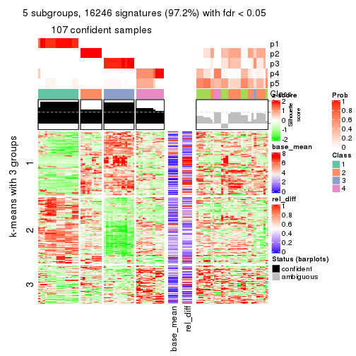
get_signatures(res, k = 6)
Signature heatmaps where rows are not scaled:
get_signatures(res, k = 2, scale_rows = FALSE)
get_signatures(res, k = 3, scale_rows = FALSE)
get_signatures(res, k = 4, scale_rows = FALSE)
get_signatures(res, k = 5, scale_rows = FALSE)
get_signatures(res, k = 6, scale_rows = FALSE)
Compare the overlap of signatures from different k:
compare_signatures(res)
get_signature() returns a data frame invisibly. TO get the list of signatures, the function
call should be assigned to a variable explicitly. In following code, if plot argument is set
to FALSE, no heatmap is plotted while only the differential analysis is performed.
# code only for demonstration
tb = get_signature(res, k = ..., plot = FALSE)
An example of the output of tb is:
#> which_row fdr mean_1 mean_2 scaled_mean_1 scaled_mean_2 km
#> 1 38 0.042760348 8.373488 9.131774 -0.5533452 0.5164555 1
#> 2 40 0.018707592 7.106213 8.469186 -0.6173731 0.5762149 1
#> 3 55 0.019134737 10.221463 11.207825 -0.6159697 0.5749050 1
#> 4 59 0.006059896 5.921854 7.869574 -0.6899429 0.6439467 1
#> 5 60 0.018055526 8.928898 10.211722 -0.6204761 0.5791110 1
#> 6 98 0.009384629 15.714769 14.887706 0.6635654 -0.6193277 2
...
The columns in tb are:
which_row: row indices corresponding to the input matrix.fdr: FDR for the differential test. mean_x: The mean value in group x.scaled_mean_x: The mean value in group x after rows are scaled.km: Row groups if k-means clustering is applied to rows.UMAP plot which shows how samples are separated.
dimension_reduction(res, k = 2, method = "UMAP")
dimension_reduction(res, k = 3, method = "UMAP")
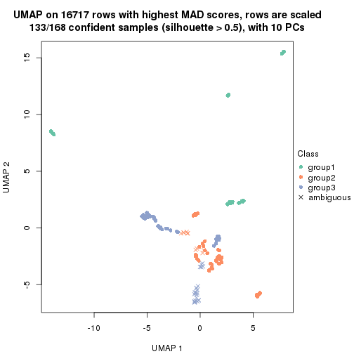
dimension_reduction(res, k = 4, method = "UMAP")
dimension_reduction(res, k = 5, method = "UMAP")
dimension_reduction(res, k = 6, method = "UMAP")
Following heatmap shows how subgroups are split when increasing k:
collect_classes(res)
If matrix rows can be associated to genes, consider to use GO_Enrichment(res,
...) to perform function enrichment for the signature genes.
The object with results only for a single top-value method and a single partition method can be extracted as:
res = res_list["MAD", "kmeans"]
# you can also extract it by
# res = res_list["MAD:kmeans"]
A summary of res and all the functions that can be applied to it:
res
#> A 'ConsensusPartition' object with k = 2, 3, 4, 5, 6.
#> On a matrix with 16717 rows and 168 columns.
#> Top rows (1000, 2000, 3000, 4000, 5000) are extracted by 'MAD' method.
#> Subgroups are detected by 'kmeans' method.
#> Performed in total 1250 partitions by row resampling.
#> Best k for subgroups seems to be 3.
#>
#> Following methods can be applied to this 'ConsensusPartition' object:
#> [1] "cola_report" "collect_classes" "collect_plots"
#> [4] "collect_stats" "colnames" "compare_signatures"
#> [7] "consensus_heatmap" "dimension_reduction" "functional_enrichment"
#> [10] "get_anno_col" "get_anno" "get_classes"
#> [13] "get_consensus" "get_matrix" "get_membership"
#> [16] "get_param" "get_signatures" "get_stats"
#> [19] "is_best_k" "is_stable_k" "membership_heatmap"
#> [22] "ncol" "nrow" "plot_ecdf"
#> [25] "rownames" "select_partition_number" "show"
#> [28] "suggest_best_k" "test_to_known_factors"
collect_plots() function collects all the plots made from res for all k (number of partitions)
into one single page to provide an easy and fast comparison between different k.
collect_plots(res)
The plots are:
k and the heatmap of
predicted classes for each k.k.k.k.All the plots in panels can be made by individual functions and they are plotted later in this section.
select_partition_number() produces several plots showing different
statistics for choosing “optimized” k. There are following statistics:
k;k, the area increased is defined as \(A_k - A_{k-1}\).The detailed explanations of these statistics can be found in the cola vignette.
Generally speaking, lower PAC score, higher mean silhouette score or higher
concordance corresponds to better partition. Rand index and Jaccard index
measure how similar the current partition is compared to partition with k-1.
If they are too similar, we won't accept k is better than k-1.
select_partition_number(res)
The numeric values for all these statistics can be obtained by get_stats().
get_stats(res)
#> k 1-PAC mean_silhouette concordance area_increased Rand Jaccard
#> 2 2 0.768 0.964 0.956 0.3423 0.661 0.661
#> 3 3 0.492 0.761 0.789 0.6485 0.777 0.662
#> 4 4 0.569 0.681 0.669 0.2171 1.000 1.000
#> 5 5 0.652 0.733 0.733 0.1010 0.758 0.452
#> 6 6 0.678 0.772 0.782 0.0538 0.949 0.777
suggest_best_k() suggests the best \(k\) based on these statistics. The rules are as follows:
NA.suggest_best_k(res)
#> [1] 3
Following shows the table of the partitions (You need to click the show/hide
code output link to see it). The membership matrix (columns with name p*)
is inferred by
clue::cl_consensus()
function with the SE method. Basically the value in the membership matrix
represents the probability to belong to a certain group. The finall class
label for an item is determined with the group with highest probability it
belongs to.
In get_classes() function, the entropy is calculated from the membership
matrix and the silhouette score is calculated from the consensus matrix.
cbind(get_classes(res, k = 2), get_membership(res, k = 2))
#> class entropy silhouette p1 p2
#> SRR1768889 2 0.4161 0.926 0.084 0.916
#> SRR1768890 2 0.4161 0.926 0.084 0.916
#> SRR1768891 2 0.0672 0.965 0.008 0.992
#> SRR1768892 2 0.0672 0.965 0.008 0.992
#> SRR1768893 2 0.0000 0.966 0.000 1.000
#> SRR1768894 2 0.0000 0.966 0.000 1.000
#> SRR1768895 2 0.1843 0.962 0.028 0.972
#> SRR1768896 2 0.1843 0.962 0.028 0.972
#> SRR1768821 2 0.1843 0.962 0.028 0.972
#> SRR1768822 2 0.1843 0.962 0.028 0.972
#> SRR1768823 2 0.1843 0.962 0.028 0.972
#> SRR1768824 2 0.1843 0.962 0.028 0.972
#> SRR1768825 2 0.0672 0.965 0.008 0.992
#> SRR1768826 2 0.0672 0.965 0.008 0.992
#> SRR1768827 2 0.1843 0.962 0.028 0.972
#> SRR1768828 2 0.1843 0.962 0.028 0.972
#> SRR1768829 2 0.1843 0.962 0.028 0.972
#> SRR1768830 2 0.1843 0.962 0.028 0.972
#> SRR1768831 2 0.1414 0.962 0.020 0.980
#> SRR1768832 2 0.1414 0.962 0.020 0.980
#> SRR1768833 2 0.0938 0.965 0.012 0.988
#> SRR1768834 2 0.0938 0.965 0.012 0.988
#> SRR1768835 2 0.0672 0.965 0.008 0.992
#> SRR1768836 2 0.1414 0.962 0.020 0.980
#> SRR1768837 2 0.1414 0.962 0.020 0.980
#> SRR1768838 2 0.0000 0.966 0.000 1.000
#> SRR1768839 2 0.0000 0.966 0.000 1.000
#> SRR1768840 2 0.0000 0.966 0.000 1.000
#> SRR1768841 2 0.0000 0.966 0.000 1.000
#> SRR1768842 2 0.0000 0.966 0.000 1.000
#> SRR1768843 2 0.0000 0.966 0.000 1.000
#> SRR1768844 2 0.4161 0.926 0.084 0.916
#> SRR1768845 2 0.4161 0.926 0.084 0.916
#> SRR1768846 2 0.4161 0.926 0.084 0.916
#> SRR1768847 2 0.4161 0.926 0.084 0.916
#> SRR1768848 2 0.4161 0.926 0.084 0.916
#> SRR1768849 2 0.4161 0.926 0.084 0.916
#> SRR1768850 2 0.4161 0.926 0.084 0.916
#> SRR1768851 2 0.4161 0.926 0.084 0.916
#> SRR1768852 2 0.0672 0.965 0.008 0.992
#> SRR1768853 2 0.0672 0.965 0.008 0.992
#> SRR1768854 2 0.0000 0.966 0.000 1.000
#> SRR1768855 2 0.4161 0.926 0.084 0.916
#> SRR1768856 2 0.4161 0.926 0.084 0.916
#> SRR1768857 2 0.4161 0.926 0.084 0.916
#> SRR1768858 2 0.4161 0.926 0.084 0.916
#> SRR1768859 2 0.4161 0.926 0.084 0.916
#> SRR1768860 2 0.4161 0.926 0.084 0.916
#> SRR1768861 2 0.0000 0.966 0.000 1.000
#> SRR1768862 2 0.0000 0.966 0.000 1.000
#> SRR1768863 2 0.0000 0.966 0.000 1.000
#> SRR1768864 2 0.0000 0.966 0.000 1.000
#> SRR1768865 2 0.0376 0.965 0.004 0.996
#> SRR1768866 2 0.0376 0.965 0.004 0.996
#> SRR1768867 2 0.1843 0.962 0.028 0.972
#> SRR1768868 2 0.1843 0.962 0.028 0.972
#> SRR1768869 2 0.1843 0.962 0.028 0.972
#> SRR1768870 2 0.1843 0.962 0.028 0.972
#> SRR1768871 2 0.1414 0.962 0.020 0.980
#> SRR1768872 2 0.1414 0.962 0.020 0.980
#> SRR1768873 2 0.1843 0.962 0.028 0.972
#> SRR1768874 2 0.1843 0.962 0.028 0.972
#> SRR1768875 2 0.4161 0.926 0.084 0.916
#> SRR1768876 2 0.4161 0.926 0.084 0.916
#> SRR1768877 2 0.4161 0.926 0.084 0.916
#> SRR1768878 2 0.4161 0.926 0.084 0.916
#> SRR1768879 2 0.0000 0.966 0.000 1.000
#> SRR1768880 2 0.0000 0.966 0.000 1.000
#> SRR1768881 2 0.1843 0.962 0.028 0.972
#> SRR1768882 2 0.1843 0.962 0.028 0.972
#> SRR1768883 2 0.4161 0.926 0.084 0.916
#> SRR1768884 2 0.4161 0.926 0.084 0.916
#> SRR1768885 2 0.4161 0.926 0.084 0.916
#> SRR1768886 2 0.4161 0.926 0.084 0.916
#> SRR1768887 2 0.4161 0.926 0.084 0.916
#> SRR1768888 2 0.4161 0.926 0.084 0.916
#> SRR1768897 2 0.0000 0.966 0.000 1.000
#> SRR1768898 2 0.0000 0.966 0.000 1.000
#> SRR1768899 2 0.0000 0.966 0.000 1.000
#> SRR1768900 2 0.0000 0.966 0.000 1.000
#> SRR1768901 2 0.4022 0.928 0.080 0.920
#> SRR1768902 2 0.4022 0.928 0.080 0.920
#> SRR1768903 2 0.4022 0.928 0.080 0.920
#> SRR1768904 2 0.0000 0.966 0.000 1.000
#> SRR1768905 2 0.0000 0.966 0.000 1.000
#> SRR1768906 2 0.0000 0.966 0.000 1.000
#> SRR1768907 2 0.0000 0.966 0.000 1.000
#> SRR1768908 2 0.0000 0.966 0.000 1.000
#> SRR1768909 2 0.0000 0.966 0.000 1.000
#> SRR1768910 2 0.0000 0.966 0.000 1.000
#> SRR1768911 2 0.0000 0.966 0.000 1.000
#> SRR1768912 2 0.0000 0.966 0.000 1.000
#> SRR1768913 2 0.0000 0.966 0.000 1.000
#> SRR1768914 2 0.0000 0.966 0.000 1.000
#> SRR1768915 2 0.0000 0.966 0.000 1.000
#> SRR1768916 2 0.0000 0.966 0.000 1.000
#> SRR1768917 2 0.1843 0.962 0.028 0.972
#> SRR1768918 2 0.0000 0.966 0.000 1.000
#> SRR1768919 2 0.0000 0.966 0.000 1.000
#> SRR1768920 2 0.1843 0.962 0.028 0.972
#> SRR1768921 2 0.1843 0.962 0.028 0.972
#> SRR1768922 2 0.4161 0.926 0.084 0.916
#> SRR1768923 2 0.4161 0.926 0.084 0.916
#> SRR1768924 2 0.0000 0.966 0.000 1.000
#> SRR1768925 2 0.0000 0.966 0.000 1.000
#> SRR1768926 2 0.0000 0.966 0.000 1.000
#> SRR1768927 2 0.0000 0.966 0.000 1.000
#> SRR1768928 2 0.0000 0.966 0.000 1.000
#> SRR1768929 2 0.0000 0.966 0.000 1.000
#> SRR1768930 2 0.1843 0.962 0.028 0.972
#> SRR1768931 2 0.1843 0.962 0.028 0.972
#> SRR1768932 2 0.1843 0.962 0.028 0.972
#> SRR1768933 2 0.1843 0.962 0.028 0.972
#> SRR1768934 2 0.1843 0.962 0.028 0.972
#> SRR1768935 2 0.1843 0.962 0.028 0.972
#> SRR1768936 2 0.1843 0.962 0.028 0.972
#> SRR1768937 2 0.1843 0.962 0.028 0.972
#> SRR1768938 2 0.1843 0.962 0.028 0.972
#> SRR1768939 2 0.2043 0.961 0.032 0.968
#> SRR1768940 2 0.2043 0.961 0.032 0.968
#> SRR1768941 2 0.2043 0.961 0.032 0.968
#> SRR1768942 2 0.2043 0.961 0.032 0.968
#> SRR1768943 2 0.2043 0.961 0.032 0.968
#> SRR1768944 2 0.2043 0.961 0.032 0.968
#> SRR1768945 2 0.2043 0.961 0.032 0.968
#> SRR1768946 2 0.2043 0.961 0.032 0.968
#> SRR1768947 2 0.4161 0.926 0.084 0.916
#> SRR1768948 2 0.4161 0.926 0.084 0.916
#> SRR1768949 2 0.4161 0.926 0.084 0.916
#> SRR1768950 2 0.1414 0.962 0.020 0.980
#> SRR1768954 1 0.4431 0.997 0.908 0.092
#> SRR1768955 1 0.4431 0.997 0.908 0.092
#> SRR1768956 1 0.4431 0.997 0.908 0.092
#> SRR1768957 1 0.4431 0.997 0.908 0.092
#> SRR1768958 1 0.4431 0.997 0.908 0.092
#> SRR1768959 1 0.4431 0.997 0.908 0.092
#> SRR1768960 1 0.4431 0.997 0.908 0.092
#> SRR1768961 1 0.4431 0.997 0.908 0.092
#> SRR1768952 2 0.0000 0.966 0.000 1.000
#> SRR1768953 2 0.0000 0.966 0.000 1.000
#> SRR1768962 1 0.4298 0.998 0.912 0.088
#> SRR1768963 1 0.4298 0.998 0.912 0.088
#> SRR1768964 1 0.4298 0.998 0.912 0.088
#> SRR1768965 1 0.4298 0.998 0.912 0.088
#> SRR1768966 1 0.4298 0.998 0.912 0.088
#> SRR1768967 1 0.4298 0.998 0.912 0.088
#> SRR1768968 1 0.4298 0.998 0.912 0.088
#> SRR1768969 1 0.4298 0.998 0.912 0.088
#> SRR1768970 1 0.4298 0.998 0.912 0.088
#> SRR1768971 1 0.4298 0.998 0.912 0.088
#> SRR1768972 1 0.4431 0.997 0.908 0.092
#> SRR1768973 1 0.4431 0.997 0.908 0.092
#> SRR1768974 1 0.4431 0.997 0.908 0.092
#> SRR1768975 1 0.4431 0.997 0.908 0.092
#> SRR1768976 1 0.4431 0.997 0.908 0.092
#> SRR1768977 1 0.4431 0.997 0.908 0.092
#> SRR1768978 1 0.4298 0.998 0.912 0.088
#> SRR1768979 1 0.4298 0.998 0.912 0.088
#> SRR1768980 1 0.4298 0.998 0.912 0.088
#> SRR1768981 1 0.4298 0.998 0.912 0.088
#> SRR1768982 1 0.4298 0.998 0.912 0.088
#> SRR1768983 1 0.4298 0.998 0.912 0.088
#> SRR1768984 1 0.4161 0.991 0.916 0.084
#> SRR1768985 1 0.4161 0.991 0.916 0.084
#> SRR1768986 1 0.4298 0.998 0.912 0.088
#> SRR1768987 1 0.4298 0.998 0.912 0.088
#> SRR1768988 1 0.4298 0.998 0.912 0.088
#> SRR1768989 1 0.4298 0.998 0.912 0.088
cbind(get_classes(res, k = 3), get_membership(res, k = 3))
#> class entropy silhouette p1 p2 p3
#> SRR1768889 3 0.4796 0.997 0.000 0.220 0.780
#> SRR1768890 3 0.4796 0.997 0.000 0.220 0.780
#> SRR1768891 2 0.1643 0.711 0.000 0.956 0.044
#> SRR1768892 2 0.1643 0.711 0.000 0.956 0.044
#> SRR1768893 2 0.5902 0.588 0.004 0.680 0.316
#> SRR1768894 2 0.5902 0.588 0.004 0.680 0.316
#> SRR1768895 2 0.0424 0.712 0.000 0.992 0.008
#> SRR1768896 2 0.0424 0.712 0.000 0.992 0.008
#> SRR1768821 2 0.0424 0.712 0.000 0.992 0.008
#> SRR1768822 2 0.0424 0.712 0.000 0.992 0.008
#> SRR1768823 2 0.1015 0.703 0.012 0.980 0.008
#> SRR1768824 2 0.1015 0.703 0.012 0.980 0.008
#> SRR1768825 2 0.0424 0.712 0.000 0.992 0.008
#> SRR1768826 2 0.0424 0.712 0.000 0.992 0.008
#> SRR1768827 2 0.0592 0.706 0.012 0.988 0.000
#> SRR1768828 2 0.0592 0.706 0.012 0.988 0.000
#> SRR1768829 2 0.0424 0.712 0.000 0.992 0.008
#> SRR1768830 2 0.0424 0.712 0.000 0.992 0.008
#> SRR1768831 2 0.6229 0.626 0.008 0.652 0.340
#> SRR1768832 2 0.6229 0.626 0.008 0.652 0.340
#> SRR1768833 2 0.6398 0.600 0.008 0.620 0.372
#> SRR1768834 2 0.6398 0.600 0.008 0.620 0.372
#> SRR1768835 2 0.6398 0.600 0.008 0.620 0.372
#> SRR1768836 2 0.6379 0.604 0.008 0.624 0.368
#> SRR1768837 2 0.6379 0.604 0.008 0.624 0.368
#> SRR1768838 2 0.6489 0.475 0.004 0.540 0.456
#> SRR1768839 2 0.6489 0.475 0.004 0.540 0.456
#> SRR1768840 2 0.6476 0.476 0.004 0.548 0.448
#> SRR1768841 2 0.6476 0.476 0.004 0.548 0.448
#> SRR1768842 2 0.6476 0.476 0.004 0.548 0.448
#> SRR1768843 2 0.6476 0.476 0.004 0.548 0.448
#> SRR1768844 3 0.4796 0.997 0.000 0.220 0.780
#> SRR1768845 3 0.4796 0.997 0.000 0.220 0.780
#> SRR1768846 3 0.4796 0.997 0.000 0.220 0.780
#> SRR1768847 3 0.4796 0.997 0.000 0.220 0.780
#> SRR1768848 3 0.4796 0.997 0.000 0.220 0.780
#> SRR1768849 3 0.4796 0.997 0.000 0.220 0.780
#> SRR1768850 3 0.4796 0.997 0.000 0.220 0.780
#> SRR1768851 3 0.4796 0.997 0.000 0.220 0.780
#> SRR1768852 2 0.4605 0.689 0.000 0.796 0.204
#> SRR1768853 2 0.4605 0.689 0.000 0.796 0.204
#> SRR1768854 2 0.4605 0.689 0.000 0.796 0.204
#> SRR1768855 3 0.5024 0.996 0.004 0.220 0.776
#> SRR1768856 3 0.5024 0.996 0.004 0.220 0.776
#> SRR1768857 3 0.5024 0.996 0.004 0.220 0.776
#> SRR1768858 3 0.5024 0.996 0.004 0.220 0.776
#> SRR1768859 3 0.5024 0.996 0.004 0.220 0.776
#> SRR1768860 3 0.5024 0.996 0.004 0.220 0.776
#> SRR1768861 2 0.5365 0.648 0.004 0.744 0.252
#> SRR1768862 2 0.5365 0.648 0.004 0.744 0.252
#> SRR1768863 2 0.5956 0.584 0.004 0.672 0.324
#> SRR1768864 2 0.5956 0.584 0.004 0.672 0.324
#> SRR1768865 2 0.6359 0.443 0.004 0.592 0.404
#> SRR1768866 2 0.6359 0.443 0.004 0.592 0.404
#> SRR1768867 2 0.1337 0.698 0.012 0.972 0.016
#> SRR1768868 2 0.1337 0.698 0.012 0.972 0.016
#> SRR1768869 2 0.3267 0.642 0.000 0.884 0.116
#> SRR1768870 2 0.3267 0.642 0.000 0.884 0.116
#> SRR1768871 2 0.5070 0.689 0.004 0.772 0.224
#> SRR1768872 2 0.5070 0.689 0.004 0.772 0.224
#> SRR1768873 2 0.3267 0.642 0.000 0.884 0.116
#> SRR1768874 2 0.3267 0.642 0.000 0.884 0.116
#> SRR1768875 3 0.4796 0.997 0.000 0.220 0.780
#> SRR1768876 3 0.4796 0.997 0.000 0.220 0.780
#> SRR1768877 3 0.4796 0.997 0.000 0.220 0.780
#> SRR1768878 3 0.4796 0.997 0.000 0.220 0.780
#> SRR1768879 2 0.6298 0.474 0.004 0.608 0.388
#> SRR1768880 2 0.6298 0.474 0.004 0.608 0.388
#> SRR1768881 2 0.0237 0.711 0.000 0.996 0.004
#> SRR1768882 2 0.0237 0.711 0.000 0.996 0.004
#> SRR1768883 3 0.4796 0.997 0.000 0.220 0.780
#> SRR1768884 3 0.4796 0.997 0.000 0.220 0.780
#> SRR1768885 3 0.4796 0.997 0.000 0.220 0.780
#> SRR1768886 3 0.4796 0.997 0.000 0.220 0.780
#> SRR1768887 3 0.4796 0.997 0.000 0.220 0.780
#> SRR1768888 3 0.4796 0.997 0.000 0.220 0.780
#> SRR1768897 2 0.4235 0.692 0.000 0.824 0.176
#> SRR1768898 2 0.4235 0.692 0.000 0.824 0.176
#> SRR1768899 2 0.4796 0.675 0.000 0.780 0.220
#> SRR1768900 2 0.4796 0.675 0.000 0.780 0.220
#> SRR1768901 2 0.6140 0.442 0.000 0.596 0.404
#> SRR1768902 2 0.6140 0.442 0.000 0.596 0.404
#> SRR1768903 2 0.6168 0.420 0.000 0.588 0.412
#> SRR1768904 2 0.5859 0.556 0.000 0.656 0.344
#> SRR1768905 2 0.5859 0.556 0.000 0.656 0.344
#> SRR1768906 2 0.5859 0.556 0.000 0.656 0.344
#> SRR1768907 2 0.6126 0.553 0.004 0.644 0.352
#> SRR1768908 2 0.6126 0.553 0.004 0.644 0.352
#> SRR1768909 2 0.6126 0.553 0.004 0.644 0.352
#> SRR1768910 2 0.6126 0.553 0.004 0.644 0.352
#> SRR1768911 2 0.6126 0.553 0.004 0.644 0.352
#> SRR1768912 2 0.6126 0.553 0.004 0.644 0.352
#> SRR1768913 2 0.6126 0.553 0.004 0.644 0.352
#> SRR1768914 2 0.6126 0.553 0.004 0.644 0.352
#> SRR1768915 2 0.6126 0.553 0.004 0.644 0.352
#> SRR1768916 2 0.4121 0.696 0.000 0.832 0.168
#> SRR1768917 2 0.0661 0.707 0.008 0.988 0.004
#> SRR1768918 2 0.6126 0.553 0.004 0.644 0.352
#> SRR1768919 2 0.6126 0.553 0.004 0.644 0.352
#> SRR1768920 2 0.0829 0.704 0.012 0.984 0.004
#> SRR1768921 2 0.0829 0.704 0.012 0.984 0.004
#> SRR1768922 3 0.4931 0.986 0.004 0.212 0.784
#> SRR1768923 3 0.4931 0.986 0.004 0.212 0.784
#> SRR1768924 2 0.6483 0.479 0.004 0.544 0.452
#> SRR1768925 2 0.6483 0.479 0.004 0.544 0.452
#> SRR1768926 2 0.6489 0.471 0.004 0.540 0.456
#> SRR1768927 2 0.6489 0.471 0.004 0.540 0.456
#> SRR1768928 2 0.6483 0.479 0.004 0.544 0.452
#> SRR1768929 2 0.6483 0.479 0.004 0.544 0.452
#> SRR1768930 2 0.0592 0.709 0.000 0.988 0.012
#> SRR1768931 2 0.0592 0.709 0.000 0.988 0.012
#> SRR1768932 2 0.0592 0.709 0.000 0.988 0.012
#> SRR1768933 2 0.1620 0.695 0.012 0.964 0.024
#> SRR1768934 2 0.1620 0.695 0.012 0.964 0.024
#> SRR1768935 2 0.1620 0.695 0.012 0.964 0.024
#> SRR1768936 2 0.1289 0.698 0.000 0.968 0.032
#> SRR1768937 2 0.1289 0.698 0.000 0.968 0.032
#> SRR1768938 2 0.1289 0.698 0.000 0.968 0.032
#> SRR1768939 2 0.1182 0.705 0.012 0.976 0.012
#> SRR1768940 2 0.1182 0.705 0.012 0.976 0.012
#> SRR1768941 2 0.1182 0.705 0.012 0.976 0.012
#> SRR1768942 2 0.1182 0.705 0.012 0.976 0.012
#> SRR1768943 2 0.1182 0.705 0.012 0.976 0.012
#> SRR1768944 2 0.1182 0.705 0.012 0.976 0.012
#> SRR1768945 2 0.1182 0.705 0.012 0.976 0.012
#> SRR1768946 2 0.1182 0.705 0.012 0.976 0.012
#> SRR1768947 3 0.4978 0.991 0.004 0.216 0.780
#> SRR1768948 3 0.4978 0.991 0.004 0.216 0.780
#> SRR1768949 3 0.4978 0.991 0.004 0.216 0.780
#> SRR1768950 2 0.1129 0.713 0.004 0.976 0.020
#> SRR1768954 1 0.3539 0.947 0.888 0.012 0.100
#> SRR1768955 1 0.3539 0.947 0.888 0.012 0.100
#> SRR1768956 1 0.3539 0.947 0.888 0.012 0.100
#> SRR1768957 1 0.3539 0.947 0.888 0.012 0.100
#> SRR1768958 1 0.3539 0.947 0.888 0.012 0.100
#> SRR1768959 1 0.3539 0.947 0.888 0.012 0.100
#> SRR1768960 1 0.3539 0.947 0.888 0.012 0.100
#> SRR1768961 1 0.3539 0.947 0.888 0.012 0.100
#> SRR1768952 2 0.4629 0.689 0.004 0.808 0.188
#> SRR1768953 2 0.4629 0.689 0.004 0.808 0.188
#> SRR1768962 1 0.0661 0.957 0.988 0.008 0.004
#> SRR1768963 1 0.0661 0.957 0.988 0.008 0.004
#> SRR1768964 1 0.0661 0.957 0.988 0.008 0.004
#> SRR1768965 1 0.0661 0.957 0.988 0.008 0.004
#> SRR1768966 1 0.0661 0.957 0.988 0.008 0.004
#> SRR1768967 1 0.0661 0.957 0.988 0.008 0.004
#> SRR1768968 1 0.0661 0.957 0.988 0.008 0.004
#> SRR1768969 1 0.0661 0.957 0.988 0.008 0.004
#> SRR1768970 1 0.1315 0.955 0.972 0.008 0.020
#> SRR1768971 1 0.1315 0.955 0.972 0.008 0.020
#> SRR1768972 1 0.3918 0.945 0.868 0.012 0.120
#> SRR1768973 1 0.3918 0.945 0.868 0.012 0.120
#> SRR1768974 1 0.3918 0.945 0.868 0.012 0.120
#> SRR1768975 1 0.3918 0.945 0.868 0.012 0.120
#> SRR1768976 1 0.3918 0.945 0.868 0.012 0.120
#> SRR1768977 1 0.3918 0.945 0.868 0.012 0.120
#> SRR1768978 1 0.1315 0.955 0.972 0.008 0.020
#> SRR1768979 1 0.1315 0.955 0.972 0.008 0.020
#> SRR1768980 1 0.1315 0.955 0.972 0.008 0.020
#> SRR1768981 1 0.1315 0.955 0.972 0.008 0.020
#> SRR1768982 1 0.1315 0.955 0.972 0.008 0.020
#> SRR1768983 1 0.1315 0.955 0.972 0.008 0.020
#> SRR1768984 1 0.6037 0.885 0.788 0.100 0.112
#> SRR1768985 1 0.6037 0.885 0.788 0.100 0.112
#> SRR1768986 1 0.1585 0.954 0.964 0.008 0.028
#> SRR1768987 1 0.1585 0.954 0.964 0.008 0.028
#> SRR1768988 1 0.1585 0.954 0.964 0.008 0.028
#> SRR1768989 1 0.1585 0.954 0.964 0.008 0.028
cbind(get_classes(res, k = 4), get_membership(res, k = 4))
#> class entropy silhouette p1 p2 p3 p4
#> SRR1768889 3 0.1398 0.989 0.000 0.040 0.956 NA
#> SRR1768890 3 0.1398 0.989 0.000 0.040 0.956 NA
#> SRR1768891 2 0.6464 0.562 0.000 0.596 0.096 NA
#> SRR1768892 2 0.6464 0.562 0.000 0.596 0.096 NA
#> SRR1768893 2 0.4606 0.498 0.000 0.724 0.264 NA
#> SRR1768894 2 0.4606 0.498 0.000 0.724 0.264 NA
#> SRR1768895 2 0.4917 0.578 0.000 0.656 0.008 NA
#> SRR1768896 2 0.4917 0.578 0.000 0.656 0.008 NA
#> SRR1768821 2 0.4990 0.576 0.000 0.640 0.008 NA
#> SRR1768822 2 0.4990 0.576 0.000 0.640 0.008 NA
#> SRR1768823 2 0.5070 0.573 0.000 0.620 0.008 NA
#> SRR1768824 2 0.5070 0.573 0.000 0.620 0.008 NA
#> SRR1768825 2 0.4917 0.578 0.000 0.656 0.008 NA
#> SRR1768826 2 0.4917 0.578 0.000 0.656 0.008 NA
#> SRR1768827 2 0.5007 0.575 0.000 0.636 0.008 NA
#> SRR1768828 2 0.5007 0.575 0.000 0.636 0.008 NA
#> SRR1768829 2 0.4936 0.577 0.000 0.652 0.008 NA
#> SRR1768830 2 0.4936 0.577 0.000 0.652 0.008 NA
#> SRR1768831 2 0.6911 0.445 0.000 0.540 0.124 NA
#> SRR1768832 2 0.6911 0.445 0.000 0.540 0.124 NA
#> SRR1768833 2 0.7059 0.435 0.000 0.528 0.140 NA
#> SRR1768834 2 0.7059 0.435 0.000 0.528 0.140 NA
#> SRR1768835 2 0.7059 0.435 0.000 0.528 0.140 NA
#> SRR1768836 2 0.7059 0.435 0.000 0.528 0.140 NA
#> SRR1768837 2 0.7059 0.435 0.000 0.528 0.140 NA
#> SRR1768838 2 0.7299 0.419 0.000 0.520 0.184 NA
#> SRR1768839 2 0.7299 0.419 0.000 0.520 0.184 NA
#> SRR1768840 2 0.7289 0.425 0.000 0.528 0.192 NA
#> SRR1768841 2 0.7289 0.425 0.000 0.528 0.192 NA
#> SRR1768842 2 0.7289 0.425 0.000 0.528 0.192 NA
#> SRR1768843 2 0.7289 0.425 0.000 0.528 0.192 NA
#> SRR1768844 3 0.1767 0.988 0.000 0.044 0.944 NA
#> SRR1768845 3 0.1767 0.988 0.000 0.044 0.944 NA
#> SRR1768846 3 0.1677 0.989 0.000 0.040 0.948 NA
#> SRR1768847 3 0.1677 0.989 0.000 0.040 0.948 NA
#> SRR1768848 3 0.1398 0.990 0.000 0.040 0.956 NA
#> SRR1768849 3 0.1398 0.990 0.000 0.040 0.956 NA
#> SRR1768850 3 0.1767 0.988 0.000 0.044 0.944 NA
#> SRR1768851 3 0.1767 0.988 0.000 0.044 0.944 NA
#> SRR1768852 2 0.6118 0.549 0.000 0.672 0.120 NA
#> SRR1768853 2 0.6118 0.549 0.000 0.672 0.120 NA
#> SRR1768854 2 0.6118 0.549 0.000 0.672 0.120 NA
#> SRR1768855 3 0.1398 0.989 0.000 0.040 0.956 NA
#> SRR1768856 3 0.1398 0.989 0.000 0.040 0.956 NA
#> SRR1768857 3 0.1398 0.989 0.000 0.040 0.956 NA
#> SRR1768858 3 0.2002 0.985 0.000 0.044 0.936 NA
#> SRR1768859 3 0.2002 0.985 0.000 0.044 0.936 NA
#> SRR1768860 3 0.2002 0.985 0.000 0.044 0.936 NA
#> SRR1768861 2 0.3668 0.548 0.000 0.808 0.188 NA
#> SRR1768862 2 0.3668 0.548 0.000 0.808 0.188 NA
#> SRR1768863 2 0.4635 0.519 0.000 0.756 0.216 NA
#> SRR1768864 2 0.4635 0.519 0.000 0.756 0.216 NA
#> SRR1768865 2 0.6091 0.391 0.000 0.596 0.344 NA
#> SRR1768866 2 0.6091 0.391 0.000 0.596 0.344 NA
#> SRR1768867 2 0.5070 0.573 0.000 0.620 0.008 NA
#> SRR1768868 2 0.5070 0.573 0.000 0.620 0.008 NA
#> SRR1768869 2 0.4996 0.539 0.000 0.516 0.000 NA
#> SRR1768870 2 0.4996 0.539 0.000 0.516 0.000 NA
#> SRR1768871 2 0.5993 0.505 0.000 0.628 0.064 NA
#> SRR1768872 2 0.5993 0.505 0.000 0.628 0.064 NA
#> SRR1768873 2 0.4955 0.559 0.000 0.556 0.000 NA
#> SRR1768874 2 0.4955 0.559 0.000 0.556 0.000 NA
#> SRR1768875 3 0.1545 0.989 0.000 0.040 0.952 NA
#> SRR1768876 3 0.1545 0.989 0.000 0.040 0.952 NA
#> SRR1768877 3 0.1545 0.989 0.000 0.040 0.952 NA
#> SRR1768878 3 0.1545 0.989 0.000 0.040 0.952 NA
#> SRR1768879 2 0.6180 0.438 0.000 0.624 0.296 NA
#> SRR1768880 2 0.6180 0.438 0.000 0.624 0.296 NA
#> SRR1768881 2 0.5040 0.576 0.000 0.628 0.008 NA
#> SRR1768882 2 0.5040 0.576 0.000 0.628 0.008 NA
#> SRR1768883 3 0.1545 0.989 0.000 0.040 0.952 NA
#> SRR1768884 3 0.1545 0.989 0.000 0.040 0.952 NA
#> SRR1768885 3 0.1398 0.989 0.000 0.040 0.956 NA
#> SRR1768886 3 0.1398 0.989 0.000 0.040 0.956 NA
#> SRR1768887 3 0.1398 0.989 0.000 0.040 0.956 NA
#> SRR1768888 3 0.1398 0.989 0.000 0.040 0.956 NA
#> SRR1768897 2 0.3554 0.567 0.000 0.844 0.136 NA
#> SRR1768898 2 0.3554 0.567 0.000 0.844 0.136 NA
#> SRR1768899 2 0.3428 0.562 0.000 0.844 0.144 NA
#> SRR1768900 2 0.3428 0.562 0.000 0.844 0.144 NA
#> SRR1768901 2 0.5626 0.308 0.000 0.588 0.384 NA
#> SRR1768902 2 0.5626 0.308 0.000 0.588 0.384 NA
#> SRR1768903 2 0.5671 0.269 0.000 0.572 0.400 NA
#> SRR1768904 2 0.4855 0.486 0.000 0.712 0.268 NA
#> SRR1768905 2 0.4855 0.486 0.000 0.712 0.268 NA
#> SRR1768906 2 0.4855 0.486 0.000 0.712 0.268 NA
#> SRR1768907 2 0.4983 0.480 0.000 0.704 0.272 NA
#> SRR1768908 2 0.4983 0.480 0.000 0.704 0.272 NA
#> SRR1768909 2 0.4983 0.480 0.000 0.704 0.272 NA
#> SRR1768910 2 0.5169 0.477 0.000 0.696 0.272 NA
#> SRR1768911 2 0.5169 0.477 0.000 0.696 0.272 NA
#> SRR1768912 2 0.5169 0.477 0.000 0.696 0.272 NA
#> SRR1768913 2 0.5169 0.477 0.000 0.696 0.272 NA
#> SRR1768914 2 0.5169 0.477 0.000 0.696 0.272 NA
#> SRR1768915 2 0.5169 0.477 0.000 0.696 0.272 NA
#> SRR1768916 2 0.2593 0.586 0.000 0.904 0.080 NA
#> SRR1768917 2 0.4920 0.574 0.000 0.628 0.004 NA
#> SRR1768918 2 0.5078 0.478 0.000 0.700 0.272 NA
#> SRR1768919 2 0.5078 0.478 0.000 0.700 0.272 NA
#> SRR1768920 2 0.5112 0.570 0.000 0.608 0.008 NA
#> SRR1768921 2 0.5112 0.570 0.000 0.608 0.008 NA
#> SRR1768922 3 0.2197 0.981 0.000 0.048 0.928 NA
#> SRR1768923 3 0.2197 0.981 0.000 0.048 0.928 NA
#> SRR1768924 2 0.7283 0.421 0.000 0.524 0.184 NA
#> SRR1768925 2 0.7283 0.421 0.000 0.524 0.184 NA
#> SRR1768926 2 0.7283 0.421 0.000 0.524 0.184 NA
#> SRR1768927 2 0.7283 0.421 0.000 0.524 0.184 NA
#> SRR1768928 2 0.7283 0.421 0.000 0.524 0.184 NA
#> SRR1768929 2 0.7283 0.421 0.000 0.524 0.184 NA
#> SRR1768930 2 0.5004 0.572 0.000 0.604 0.004 NA
#> SRR1768931 2 0.5004 0.572 0.000 0.604 0.004 NA
#> SRR1768932 2 0.5004 0.572 0.000 0.604 0.004 NA
#> SRR1768933 2 0.5028 0.570 0.000 0.596 0.004 NA
#> SRR1768934 2 0.5028 0.570 0.000 0.596 0.004 NA
#> SRR1768935 2 0.5028 0.570 0.000 0.596 0.004 NA
#> SRR1768936 2 0.5016 0.571 0.000 0.600 0.004 NA
#> SRR1768937 2 0.5016 0.571 0.000 0.600 0.004 NA
#> SRR1768938 2 0.5016 0.571 0.000 0.600 0.004 NA
#> SRR1768939 2 0.5417 0.563 0.000 0.572 0.016 NA
#> SRR1768940 2 0.5417 0.563 0.000 0.572 0.016 NA
#> SRR1768941 2 0.5417 0.563 0.000 0.572 0.016 NA
#> SRR1768942 2 0.5417 0.563 0.000 0.572 0.016 NA
#> SRR1768943 2 0.5417 0.563 0.000 0.572 0.016 NA
#> SRR1768944 2 0.5417 0.563 0.000 0.572 0.016 NA
#> SRR1768945 2 0.5417 0.563 0.000 0.572 0.016 NA
#> SRR1768946 2 0.5417 0.563 0.000 0.572 0.016 NA
#> SRR1768947 3 0.2197 0.981 0.000 0.048 0.928 NA
#> SRR1768948 3 0.2197 0.981 0.000 0.048 0.928 NA
#> SRR1768949 3 0.2443 0.969 0.000 0.060 0.916 NA
#> SRR1768950 2 0.3837 0.593 0.000 0.776 0.000 NA
#> SRR1768954 1 0.4095 0.893 0.792 0.000 0.016 NA
#> SRR1768955 1 0.4095 0.893 0.792 0.000 0.016 NA
#> SRR1768956 1 0.4095 0.893 0.792 0.000 0.016 NA
#> SRR1768957 1 0.4095 0.893 0.792 0.000 0.016 NA
#> SRR1768958 1 0.4095 0.893 0.792 0.000 0.016 NA
#> SRR1768959 1 0.4095 0.893 0.792 0.000 0.016 NA
#> SRR1768960 1 0.4095 0.893 0.792 0.000 0.016 NA
#> SRR1768961 1 0.4095 0.893 0.792 0.000 0.016 NA
#> SRR1768952 2 0.2921 0.565 0.000 0.860 0.140 NA
#> SRR1768953 2 0.2921 0.565 0.000 0.860 0.140 NA
#> SRR1768962 1 0.0188 0.911 0.996 0.000 0.000 NA
#> SRR1768963 1 0.0188 0.911 0.996 0.000 0.000 NA
#> SRR1768964 1 0.0188 0.911 0.996 0.000 0.000 NA
#> SRR1768965 1 0.0188 0.911 0.996 0.000 0.000 NA
#> SRR1768966 1 0.0188 0.911 0.996 0.000 0.000 NA
#> SRR1768967 1 0.0188 0.911 0.996 0.000 0.000 NA
#> SRR1768968 1 0.0188 0.911 0.996 0.000 0.000 NA
#> SRR1768969 1 0.0188 0.911 0.996 0.000 0.000 NA
#> SRR1768970 1 0.0524 0.910 0.988 0.000 0.004 NA
#> SRR1768971 1 0.0524 0.910 0.988 0.000 0.004 NA
#> SRR1768972 1 0.4808 0.886 0.736 0.000 0.028 NA
#> SRR1768973 1 0.4808 0.886 0.736 0.000 0.028 NA
#> SRR1768974 1 0.4808 0.886 0.736 0.000 0.028 NA
#> SRR1768975 1 0.4808 0.886 0.736 0.000 0.028 NA
#> SRR1768976 1 0.4808 0.886 0.736 0.000 0.028 NA
#> SRR1768977 1 0.4808 0.886 0.736 0.000 0.028 NA
#> SRR1768978 1 0.2021 0.907 0.932 0.000 0.012 NA
#> SRR1768979 1 0.2021 0.907 0.932 0.000 0.012 NA
#> SRR1768980 1 0.2021 0.907 0.932 0.000 0.012 NA
#> SRR1768981 1 0.2021 0.907 0.932 0.000 0.012 NA
#> SRR1768982 1 0.2021 0.907 0.932 0.000 0.012 NA
#> SRR1768983 1 0.2021 0.907 0.932 0.000 0.012 NA
#> SRR1768984 1 0.5962 0.760 0.608 0.020 0.020 NA
#> SRR1768985 1 0.5962 0.760 0.608 0.020 0.020 NA
#> SRR1768986 1 0.0927 0.910 0.976 0.000 0.008 NA
#> SRR1768987 1 0.0927 0.910 0.976 0.000 0.008 NA
#> SRR1768988 1 0.0927 0.910 0.976 0.000 0.008 NA
#> SRR1768989 1 0.0927 0.910 0.976 0.000 0.008 NA
cbind(get_classes(res, k = 5), get_membership(res, k = 5))
#> class entropy silhouette p1 p2 p3 p4 p5
#> SRR1768889 3 0.0566 0.9198 0.000 0.000 0.984 0.012 0.004
#> SRR1768890 3 0.0566 0.9198 0.000 0.000 0.984 0.012 0.004
#> SRR1768891 4 0.5981 0.0858 0.000 0.308 0.072 0.592 0.028
#> SRR1768892 4 0.5981 0.0858 0.000 0.308 0.072 0.592 0.028
#> SRR1768893 2 0.8395 0.8488 0.000 0.328 0.156 0.288 0.228
#> SRR1768894 2 0.8395 0.8488 0.000 0.328 0.156 0.288 0.228
#> SRR1768895 4 0.3797 0.6435 0.000 0.232 0.004 0.756 0.008
#> SRR1768896 4 0.3797 0.6435 0.000 0.232 0.004 0.756 0.008
#> SRR1768821 4 0.1952 0.7857 0.000 0.084 0.004 0.912 0.000
#> SRR1768822 4 0.1952 0.7857 0.000 0.084 0.004 0.912 0.000
#> SRR1768823 4 0.0865 0.7925 0.000 0.024 0.004 0.972 0.000
#> SRR1768824 4 0.0865 0.7925 0.000 0.024 0.004 0.972 0.000
#> SRR1768825 4 0.3675 0.6856 0.000 0.216 0.004 0.772 0.008
#> SRR1768826 4 0.3675 0.6856 0.000 0.216 0.004 0.772 0.008
#> SRR1768827 4 0.2228 0.7849 0.000 0.092 0.004 0.900 0.004
#> SRR1768828 4 0.2228 0.7849 0.000 0.092 0.004 0.900 0.004
#> SRR1768829 4 0.3211 0.7409 0.000 0.164 0.004 0.824 0.008
#> SRR1768830 4 0.3211 0.7409 0.000 0.164 0.004 0.824 0.008
#> SRR1768831 5 0.2824 0.8053 0.000 0.016 0.068 0.028 0.888
#> SRR1768832 5 0.2824 0.8053 0.000 0.016 0.068 0.028 0.888
#> SRR1768833 5 0.2824 0.8053 0.000 0.016 0.068 0.028 0.888
#> SRR1768834 5 0.2824 0.8053 0.000 0.016 0.068 0.028 0.888
#> SRR1768835 5 0.2824 0.8053 0.000 0.016 0.068 0.028 0.888
#> SRR1768836 5 0.2824 0.8053 0.000 0.016 0.068 0.028 0.888
#> SRR1768837 5 0.2824 0.8053 0.000 0.016 0.068 0.028 0.888
#> SRR1768838 5 0.2887 0.8060 0.000 0.016 0.072 0.028 0.884
#> SRR1768839 5 0.2887 0.8060 0.000 0.016 0.072 0.028 0.884
#> SRR1768840 5 0.3912 0.7866 0.000 0.048 0.080 0.040 0.832
#> SRR1768841 5 0.3912 0.7866 0.000 0.048 0.080 0.040 0.832
#> SRR1768842 5 0.3912 0.7866 0.000 0.048 0.080 0.040 0.832
#> SRR1768843 5 0.3912 0.7866 0.000 0.048 0.080 0.040 0.832
#> SRR1768844 3 0.1356 0.9181 0.000 0.028 0.956 0.012 0.004
#> SRR1768845 3 0.1356 0.9181 0.000 0.028 0.956 0.012 0.004
#> SRR1768846 3 0.1267 0.9186 0.000 0.024 0.960 0.012 0.004
#> SRR1768847 3 0.1267 0.9186 0.000 0.024 0.960 0.012 0.004
#> SRR1768848 3 0.0854 0.9184 0.000 0.008 0.976 0.012 0.004
#> SRR1768849 3 0.0854 0.9184 0.000 0.008 0.976 0.012 0.004
#> SRR1768850 3 0.1356 0.9181 0.000 0.028 0.956 0.012 0.004
#> SRR1768851 3 0.1356 0.9181 0.000 0.028 0.956 0.012 0.004
#> SRR1768852 5 0.7190 0.1809 0.000 0.124 0.064 0.344 0.468
#> SRR1768853 5 0.7190 0.1809 0.000 0.124 0.064 0.344 0.468
#> SRR1768854 5 0.7190 0.1809 0.000 0.124 0.064 0.344 0.468
#> SRR1768855 3 0.1012 0.9151 0.000 0.020 0.968 0.012 0.000
#> SRR1768856 3 0.1012 0.9151 0.000 0.020 0.968 0.012 0.000
#> SRR1768857 3 0.1012 0.9151 0.000 0.020 0.968 0.012 0.000
#> SRR1768858 3 0.1970 0.9036 0.000 0.060 0.924 0.012 0.004
#> SRR1768859 3 0.1970 0.9036 0.000 0.060 0.924 0.012 0.004
#> SRR1768860 3 0.1970 0.9036 0.000 0.060 0.924 0.012 0.004
#> SRR1768861 4 0.8339 -0.8534 0.000 0.300 0.132 0.304 0.264
#> SRR1768862 4 0.8339 -0.8534 0.000 0.300 0.132 0.304 0.264
#> SRR1768863 2 0.8416 0.8483 0.000 0.316 0.152 0.256 0.276
#> SRR1768864 2 0.8416 0.8483 0.000 0.316 0.152 0.256 0.276
#> SRR1768865 3 0.8469 -0.6965 0.000 0.184 0.324 0.216 0.276
#> SRR1768866 3 0.8469 -0.6965 0.000 0.184 0.324 0.216 0.276
#> SRR1768867 4 0.0324 0.7919 0.000 0.004 0.004 0.992 0.000
#> SRR1768868 4 0.0324 0.7919 0.000 0.004 0.004 0.992 0.000
#> SRR1768869 4 0.2930 0.6925 0.000 0.004 0.000 0.832 0.164
#> SRR1768870 4 0.2930 0.6925 0.000 0.004 0.000 0.832 0.164
#> SRR1768871 5 0.4345 0.6283 0.000 0.012 0.028 0.212 0.748
#> SRR1768872 5 0.4345 0.6283 0.000 0.012 0.028 0.212 0.748
#> SRR1768873 4 0.1952 0.7632 0.000 0.004 0.000 0.912 0.084
#> SRR1768874 4 0.1952 0.7632 0.000 0.004 0.000 0.912 0.084
#> SRR1768875 3 0.0566 0.9198 0.000 0.000 0.984 0.012 0.004
#> SRR1768876 3 0.0566 0.9198 0.000 0.000 0.984 0.012 0.004
#> SRR1768877 3 0.0566 0.9198 0.000 0.000 0.984 0.012 0.004
#> SRR1768878 3 0.0566 0.9198 0.000 0.000 0.984 0.012 0.004
#> SRR1768879 5 0.8304 -0.5216 0.000 0.220 0.240 0.160 0.380
#> SRR1768880 5 0.8304 -0.5216 0.000 0.220 0.240 0.160 0.380
#> SRR1768881 4 0.1822 0.7781 0.000 0.036 0.004 0.936 0.024
#> SRR1768882 4 0.1822 0.7781 0.000 0.036 0.004 0.936 0.024
#> SRR1768883 3 0.1074 0.9193 0.000 0.016 0.968 0.012 0.004
#> SRR1768884 3 0.1074 0.9193 0.000 0.016 0.968 0.012 0.004
#> SRR1768885 3 0.0566 0.9198 0.000 0.000 0.984 0.012 0.004
#> SRR1768886 3 0.0566 0.9198 0.000 0.000 0.984 0.012 0.004
#> SRR1768887 3 0.0566 0.9198 0.000 0.000 0.984 0.012 0.004
#> SRR1768888 3 0.0566 0.9198 0.000 0.000 0.984 0.012 0.004
#> SRR1768897 2 0.8159 0.8119 0.000 0.348 0.108 0.300 0.244
#> SRR1768898 2 0.8159 0.8119 0.000 0.348 0.108 0.300 0.244
#> SRR1768899 2 0.8185 0.8357 0.000 0.356 0.112 0.272 0.260
#> SRR1768900 2 0.8185 0.8357 0.000 0.356 0.112 0.272 0.260
#> SRR1768901 2 0.8164 0.6813 0.000 0.388 0.256 0.124 0.232
#> SRR1768902 2 0.8164 0.6813 0.000 0.388 0.256 0.124 0.232
#> SRR1768903 2 0.8126 0.6635 0.000 0.388 0.264 0.116 0.232
#> SRR1768904 2 0.8244 0.8301 0.000 0.396 0.160 0.204 0.240
#> SRR1768905 2 0.8244 0.8301 0.000 0.396 0.160 0.204 0.240
#> SRR1768906 2 0.8244 0.8301 0.000 0.396 0.160 0.204 0.240
#> SRR1768907 2 0.8397 0.8773 0.000 0.352 0.176 0.208 0.264
#> SRR1768908 2 0.8397 0.8773 0.000 0.352 0.176 0.208 0.264
#> SRR1768909 2 0.8397 0.8773 0.000 0.352 0.176 0.208 0.264
#> SRR1768910 2 0.8397 0.8740 0.000 0.348 0.176 0.204 0.272
#> SRR1768911 2 0.8397 0.8740 0.000 0.348 0.176 0.204 0.272
#> SRR1768912 2 0.8397 0.8740 0.000 0.348 0.176 0.204 0.272
#> SRR1768913 2 0.8397 0.8740 0.000 0.348 0.176 0.204 0.272
#> SRR1768914 2 0.8397 0.8740 0.000 0.348 0.176 0.204 0.272
#> SRR1768915 2 0.8397 0.8740 0.000 0.348 0.176 0.204 0.272
#> SRR1768916 4 0.7528 -0.6993 0.000 0.316 0.036 0.352 0.296
#> SRR1768917 4 0.0771 0.7913 0.000 0.000 0.004 0.976 0.020
#> SRR1768918 2 0.8390 0.8766 0.000 0.356 0.176 0.208 0.260
#> SRR1768919 2 0.8390 0.8766 0.000 0.356 0.176 0.208 0.260
#> SRR1768920 4 0.2770 0.7769 0.000 0.124 0.004 0.864 0.008
#> SRR1768921 4 0.2770 0.7769 0.000 0.124 0.004 0.864 0.008
#> SRR1768922 3 0.2989 0.8374 0.000 0.132 0.852 0.008 0.008
#> SRR1768923 3 0.2989 0.8374 0.000 0.132 0.852 0.008 0.008
#> SRR1768924 5 0.3284 0.8027 0.000 0.028 0.080 0.028 0.864
#> SRR1768925 5 0.3284 0.8027 0.000 0.028 0.080 0.028 0.864
#> SRR1768926 5 0.3368 0.8010 0.000 0.032 0.080 0.028 0.860
#> SRR1768927 5 0.3368 0.8010 0.000 0.032 0.080 0.028 0.860
#> SRR1768928 5 0.3284 0.8027 0.000 0.028 0.080 0.028 0.864
#> SRR1768929 5 0.3284 0.8027 0.000 0.028 0.080 0.028 0.864
#> SRR1768930 4 0.1282 0.7867 0.000 0.000 0.004 0.952 0.044
#> SRR1768931 4 0.1282 0.7867 0.000 0.000 0.004 0.952 0.044
#> SRR1768932 4 0.1282 0.7867 0.000 0.000 0.004 0.952 0.044
#> SRR1768933 4 0.0955 0.7900 0.000 0.000 0.004 0.968 0.028
#> SRR1768934 4 0.0955 0.7900 0.000 0.000 0.004 0.968 0.028
#> SRR1768935 4 0.0955 0.7900 0.000 0.000 0.004 0.968 0.028
#> SRR1768936 4 0.1282 0.7867 0.000 0.000 0.004 0.952 0.044
#> SRR1768937 4 0.1282 0.7867 0.000 0.000 0.004 0.952 0.044
#> SRR1768938 4 0.1282 0.7867 0.000 0.000 0.004 0.952 0.044
#> SRR1768939 4 0.4134 0.7233 0.000 0.224 0.000 0.744 0.032
#> SRR1768940 4 0.4134 0.7233 0.000 0.224 0.000 0.744 0.032
#> SRR1768941 4 0.4134 0.7233 0.000 0.224 0.000 0.744 0.032
#> SRR1768942 4 0.4134 0.7233 0.000 0.224 0.000 0.744 0.032
#> SRR1768943 4 0.4134 0.7233 0.000 0.224 0.000 0.744 0.032
#> SRR1768944 4 0.4134 0.7233 0.000 0.224 0.000 0.744 0.032
#> SRR1768945 4 0.4134 0.7233 0.000 0.224 0.000 0.744 0.032
#> SRR1768946 4 0.4134 0.7233 0.000 0.224 0.000 0.744 0.032
#> SRR1768947 3 0.2464 0.8793 0.000 0.092 0.892 0.012 0.004
#> SRR1768948 3 0.2464 0.8793 0.000 0.092 0.892 0.012 0.004
#> SRR1768949 3 0.2907 0.8516 0.000 0.116 0.864 0.012 0.008
#> SRR1768950 4 0.4600 0.5731 0.000 0.136 0.004 0.756 0.104
#> SRR1768954 1 0.4597 0.8210 0.696 0.260 0.000 0.000 0.044
#> SRR1768955 1 0.4597 0.8210 0.696 0.260 0.000 0.000 0.044
#> SRR1768956 1 0.4597 0.8210 0.696 0.260 0.000 0.000 0.044
#> SRR1768957 1 0.4597 0.8210 0.696 0.260 0.000 0.000 0.044
#> SRR1768958 1 0.4597 0.8210 0.696 0.260 0.000 0.000 0.044
#> SRR1768959 1 0.4597 0.8210 0.696 0.260 0.000 0.000 0.044
#> SRR1768960 1 0.4597 0.8210 0.696 0.260 0.000 0.000 0.044
#> SRR1768961 1 0.4597 0.8210 0.696 0.260 0.000 0.000 0.044
#> SRR1768952 2 0.8197 0.8152 0.000 0.320 0.108 0.308 0.264
#> SRR1768953 2 0.8197 0.8152 0.000 0.320 0.108 0.308 0.264
#> SRR1768962 1 0.0162 0.8545 0.996 0.000 0.000 0.000 0.004
#> SRR1768963 1 0.0162 0.8545 0.996 0.000 0.000 0.000 0.004
#> SRR1768964 1 0.0162 0.8545 0.996 0.000 0.000 0.000 0.004
#> SRR1768965 1 0.0162 0.8545 0.996 0.000 0.000 0.000 0.004
#> SRR1768966 1 0.0162 0.8545 0.996 0.000 0.000 0.000 0.004
#> SRR1768967 1 0.0162 0.8545 0.996 0.000 0.000 0.000 0.004
#> SRR1768968 1 0.0162 0.8545 0.996 0.000 0.000 0.000 0.004
#> SRR1768969 1 0.0162 0.8545 0.996 0.000 0.000 0.000 0.004
#> SRR1768970 1 0.1579 0.8461 0.944 0.032 0.000 0.000 0.024
#> SRR1768971 1 0.1579 0.8461 0.944 0.032 0.000 0.000 0.024
#> SRR1768972 1 0.5208 0.8125 0.640 0.304 0.012 0.000 0.044
#> SRR1768973 1 0.5208 0.8125 0.640 0.304 0.012 0.000 0.044
#> SRR1768974 1 0.5208 0.8125 0.640 0.304 0.012 0.000 0.044
#> SRR1768975 1 0.5208 0.8125 0.640 0.304 0.012 0.000 0.044
#> SRR1768976 1 0.5208 0.8125 0.640 0.304 0.012 0.000 0.044
#> SRR1768977 1 0.5208 0.8125 0.640 0.304 0.012 0.000 0.044
#> SRR1768978 1 0.2249 0.8477 0.896 0.096 0.000 0.000 0.008
#> SRR1768979 1 0.2249 0.8477 0.896 0.096 0.000 0.000 0.008
#> SRR1768980 1 0.2249 0.8477 0.896 0.096 0.000 0.000 0.008
#> SRR1768981 1 0.2249 0.8477 0.896 0.096 0.000 0.000 0.008
#> SRR1768982 1 0.2249 0.8477 0.896 0.096 0.000 0.000 0.008
#> SRR1768983 1 0.2249 0.8477 0.896 0.096 0.000 0.000 0.008
#> SRR1768984 1 0.7657 0.5599 0.412 0.332 0.000 0.184 0.072
#> SRR1768985 1 0.7657 0.5599 0.412 0.332 0.000 0.184 0.072
#> SRR1768986 1 0.2149 0.8415 0.916 0.048 0.000 0.000 0.036
#> SRR1768987 1 0.2149 0.8415 0.916 0.048 0.000 0.000 0.036
#> SRR1768988 1 0.2149 0.8415 0.916 0.048 0.000 0.000 0.036
#> SRR1768989 1 0.2149 0.8415 0.916 0.048 0.000 0.000 0.036
cbind(get_classes(res, k = 6), get_membership(res, k = 6))
#> class entropy silhouette p1 p2 p3 p4 p5 p6
#> SRR1768889 3 0.0405 0.926 0.000 0.004 0.988 0.000 0.000 NA
#> SRR1768890 3 0.0405 0.926 0.000 0.004 0.988 0.000 0.000 NA
#> SRR1768891 2 0.5089 0.581 0.000 0.656 0.052 0.260 0.012 NA
#> SRR1768892 2 0.5089 0.581 0.000 0.656 0.052 0.260 0.012 NA
#> SRR1768893 2 0.4397 0.797 0.000 0.776 0.072 0.112 0.020 NA
#> SRR1768894 2 0.4397 0.797 0.000 0.776 0.072 0.112 0.020 NA
#> SRR1768895 2 0.5392 -0.216 0.000 0.492 0.004 0.416 0.004 NA
#> SRR1768896 2 0.5392 -0.216 0.000 0.492 0.004 0.416 0.004 NA
#> SRR1768821 4 0.4899 0.736 0.000 0.192 0.004 0.680 0.004 NA
#> SRR1768822 4 0.4899 0.736 0.000 0.192 0.004 0.680 0.004 NA
#> SRR1768823 4 0.3356 0.786 0.000 0.084 0.004 0.836 0.008 NA
#> SRR1768824 4 0.3356 0.786 0.000 0.084 0.004 0.836 0.008 NA
#> SRR1768825 4 0.5545 0.453 0.000 0.388 0.004 0.500 0.004 NA
#> SRR1768826 4 0.5545 0.453 0.000 0.388 0.004 0.500 0.004 NA
#> SRR1768827 4 0.4556 0.761 0.000 0.140 0.004 0.724 0.004 NA
#> SRR1768828 4 0.4556 0.761 0.000 0.140 0.004 0.724 0.004 NA
#> SRR1768829 4 0.5401 0.579 0.000 0.324 0.004 0.564 0.004 NA
#> SRR1768830 4 0.5401 0.579 0.000 0.324 0.004 0.564 0.004 NA
#> SRR1768831 5 0.4212 0.838 0.000 0.144 0.028 0.004 0.772 NA
#> SRR1768832 5 0.4212 0.838 0.000 0.144 0.028 0.004 0.772 NA
#> SRR1768833 5 0.4250 0.840 0.000 0.148 0.028 0.004 0.768 NA
#> SRR1768834 5 0.4250 0.840 0.000 0.148 0.028 0.004 0.768 NA
#> SRR1768835 5 0.4250 0.840 0.000 0.148 0.028 0.004 0.768 NA
#> SRR1768836 5 0.4250 0.840 0.000 0.148 0.028 0.004 0.768 NA
#> SRR1768837 5 0.4250 0.840 0.000 0.148 0.028 0.004 0.768 NA
#> SRR1768838 5 0.4322 0.840 0.000 0.148 0.032 0.004 0.764 NA
#> SRR1768839 5 0.4322 0.840 0.000 0.148 0.032 0.004 0.764 NA
#> SRR1768840 5 0.4152 0.830 0.000 0.160 0.036 0.012 0.772 NA
#> SRR1768841 5 0.4152 0.830 0.000 0.160 0.036 0.012 0.772 NA
#> SRR1768842 5 0.4152 0.830 0.000 0.160 0.036 0.012 0.772 NA
#> SRR1768843 5 0.4152 0.830 0.000 0.160 0.036 0.012 0.772 NA
#> SRR1768844 3 0.2859 0.912 0.000 0.012 0.868 0.008 0.020 NA
#> SRR1768845 3 0.2859 0.912 0.000 0.012 0.868 0.008 0.020 NA
#> SRR1768846 3 0.2617 0.916 0.000 0.012 0.884 0.008 0.016 NA
#> SRR1768847 3 0.2617 0.916 0.000 0.012 0.884 0.008 0.016 NA
#> SRR1768848 3 0.1121 0.923 0.000 0.004 0.964 0.008 0.008 NA
#> SRR1768849 3 0.1121 0.923 0.000 0.004 0.964 0.008 0.008 NA
#> SRR1768850 3 0.2859 0.912 0.000 0.012 0.868 0.008 0.020 NA
#> SRR1768851 3 0.2859 0.912 0.000 0.012 0.868 0.008 0.020 NA
#> SRR1768852 5 0.7924 0.336 0.000 0.272 0.028 0.208 0.356 NA
#> SRR1768853 5 0.7924 0.336 0.000 0.272 0.028 0.208 0.356 NA
#> SRR1768854 5 0.7924 0.336 0.000 0.272 0.028 0.208 0.356 NA
#> SRR1768855 3 0.1296 0.923 0.000 0.004 0.948 0.000 0.004 NA
#> SRR1768856 3 0.1296 0.923 0.000 0.004 0.948 0.000 0.004 NA
#> SRR1768857 3 0.1296 0.923 0.000 0.004 0.948 0.000 0.004 NA
#> SRR1768858 3 0.3589 0.889 0.000 0.012 0.808 0.008 0.028 NA
#> SRR1768859 3 0.3589 0.889 0.000 0.012 0.808 0.008 0.028 NA
#> SRR1768860 3 0.3589 0.889 0.000 0.012 0.808 0.008 0.028 NA
#> SRR1768861 2 0.5350 0.783 0.000 0.724 0.064 0.104 0.044 NA
#> SRR1768862 2 0.5350 0.783 0.000 0.724 0.064 0.104 0.044 NA
#> SRR1768863 2 0.5241 0.769 0.000 0.736 0.060 0.068 0.084 NA
#> SRR1768864 2 0.5241 0.769 0.000 0.736 0.060 0.068 0.084 NA
#> SRR1768865 2 0.7031 0.521 0.000 0.520 0.252 0.052 0.116 NA
#> SRR1768866 2 0.7031 0.521 0.000 0.520 0.252 0.052 0.116 NA
#> SRR1768867 4 0.2747 0.787 0.000 0.076 0.004 0.876 0.008 NA
#> SRR1768868 4 0.2747 0.787 0.000 0.076 0.004 0.876 0.008 NA
#> SRR1768869 4 0.3488 0.716 0.000 0.052 0.000 0.832 0.084 NA
#> SRR1768870 4 0.3488 0.716 0.000 0.052 0.000 0.832 0.084 NA
#> SRR1768871 5 0.6019 0.630 0.000 0.128 0.004 0.228 0.592 NA
#> SRR1768872 5 0.6019 0.630 0.000 0.128 0.004 0.228 0.592 NA
#> SRR1768873 4 0.2875 0.757 0.000 0.060 0.000 0.872 0.044 NA
#> SRR1768874 4 0.2875 0.757 0.000 0.060 0.000 0.872 0.044 NA
#> SRR1768875 3 0.0405 0.926 0.000 0.004 0.988 0.000 0.000 NA
#> SRR1768876 3 0.0405 0.926 0.000 0.004 0.988 0.000 0.000 NA
#> SRR1768877 3 0.0405 0.926 0.000 0.004 0.988 0.000 0.000 NA
#> SRR1768878 3 0.0405 0.926 0.000 0.004 0.988 0.000 0.000 NA
#> SRR1768879 2 0.6517 0.542 0.000 0.580 0.164 0.016 0.168 NA
#> SRR1768880 2 0.6517 0.542 0.000 0.580 0.164 0.016 0.168 NA
#> SRR1768881 4 0.4073 0.725 0.000 0.180 0.004 0.760 0.012 NA
#> SRR1768882 4 0.4073 0.725 0.000 0.180 0.004 0.760 0.012 NA
#> SRR1768883 3 0.0858 0.927 0.000 0.004 0.968 0.000 0.000 NA
#> SRR1768884 3 0.0858 0.927 0.000 0.004 0.968 0.000 0.000 NA
#> SRR1768885 3 0.0405 0.926 0.000 0.004 0.988 0.000 0.000 NA
#> SRR1768886 3 0.0405 0.926 0.000 0.004 0.988 0.000 0.000 NA
#> SRR1768887 3 0.0405 0.926 0.000 0.004 0.988 0.000 0.000 NA
#> SRR1768888 3 0.0405 0.926 0.000 0.004 0.988 0.000 0.000 NA
#> SRR1768897 2 0.3086 0.799 0.000 0.852 0.056 0.080 0.000 NA
#> SRR1768898 2 0.3086 0.799 0.000 0.852 0.056 0.080 0.000 NA
#> SRR1768899 2 0.3152 0.807 0.000 0.860 0.056 0.060 0.016 NA
#> SRR1768900 2 0.3152 0.807 0.000 0.860 0.056 0.060 0.016 NA
#> SRR1768901 2 0.4902 0.700 0.000 0.708 0.128 0.008 0.012 NA
#> SRR1768902 2 0.4902 0.700 0.000 0.708 0.128 0.008 0.012 NA
#> SRR1768903 2 0.4902 0.700 0.000 0.708 0.128 0.008 0.012 NA
#> SRR1768904 2 0.4306 0.779 0.000 0.784 0.084 0.028 0.012 NA
#> SRR1768905 2 0.4306 0.779 0.000 0.784 0.084 0.028 0.012 NA
#> SRR1768906 2 0.4306 0.779 0.000 0.784 0.084 0.028 0.012 NA
#> SRR1768907 2 0.3594 0.806 0.000 0.832 0.088 0.020 0.048 NA
#> SRR1768908 2 0.3594 0.806 0.000 0.832 0.088 0.020 0.048 NA
#> SRR1768909 2 0.3594 0.806 0.000 0.832 0.088 0.020 0.048 NA
#> SRR1768910 2 0.3718 0.804 0.000 0.824 0.088 0.020 0.056 NA
#> SRR1768911 2 0.3718 0.804 0.000 0.824 0.088 0.020 0.056 NA
#> SRR1768912 2 0.3718 0.804 0.000 0.824 0.088 0.020 0.056 NA
#> SRR1768913 2 0.3986 0.799 0.000 0.808 0.084 0.020 0.072 NA
#> SRR1768914 2 0.3986 0.799 0.000 0.808 0.084 0.020 0.072 NA
#> SRR1768915 2 0.3986 0.799 0.000 0.808 0.084 0.020 0.072 NA
#> SRR1768916 2 0.4569 0.754 0.000 0.768 0.012 0.108 0.060 NA
#> SRR1768917 4 0.2418 0.784 0.000 0.096 0.004 0.884 0.008 NA
#> SRR1768918 2 0.3852 0.809 0.000 0.820 0.088 0.024 0.048 NA
#> SRR1768919 2 0.3852 0.809 0.000 0.820 0.088 0.024 0.048 NA
#> SRR1768920 4 0.4693 0.748 0.000 0.116 0.004 0.692 0.000 NA
#> SRR1768921 4 0.4693 0.748 0.000 0.116 0.004 0.692 0.000 NA
#> SRR1768922 3 0.5218 0.771 0.000 0.128 0.692 0.004 0.036 NA
#> SRR1768923 3 0.5218 0.771 0.000 0.128 0.692 0.004 0.036 NA
#> SRR1768924 5 0.3559 0.842 0.000 0.152 0.036 0.012 0.800 NA
#> SRR1768925 5 0.3559 0.842 0.000 0.152 0.036 0.012 0.800 NA
#> SRR1768926 5 0.3601 0.839 0.000 0.152 0.036 0.008 0.800 NA
#> SRR1768927 5 0.3601 0.839 0.000 0.152 0.036 0.008 0.800 NA
#> SRR1768928 5 0.3559 0.842 0.000 0.152 0.036 0.012 0.800 NA
#> SRR1768929 5 0.3559 0.842 0.000 0.152 0.036 0.012 0.800 NA
#> SRR1768930 4 0.2364 0.781 0.000 0.072 0.004 0.892 0.032 NA
#> SRR1768931 4 0.2364 0.781 0.000 0.072 0.004 0.892 0.032 NA
#> SRR1768932 4 0.2364 0.781 0.000 0.072 0.004 0.892 0.032 NA
#> SRR1768933 4 0.2316 0.783 0.000 0.064 0.004 0.900 0.028 NA
#> SRR1768934 4 0.2316 0.783 0.000 0.064 0.004 0.900 0.028 NA
#> SRR1768935 4 0.2316 0.783 0.000 0.064 0.004 0.900 0.028 NA
#> SRR1768936 4 0.2364 0.781 0.000 0.072 0.004 0.892 0.032 NA
#> SRR1768937 4 0.2364 0.781 0.000 0.072 0.004 0.892 0.032 NA
#> SRR1768938 4 0.2364 0.781 0.000 0.072 0.004 0.892 0.032 NA
#> SRR1768939 4 0.6171 0.634 0.000 0.172 0.004 0.488 0.016 NA
#> SRR1768940 4 0.6171 0.634 0.000 0.172 0.004 0.488 0.016 NA
#> SRR1768941 4 0.6171 0.634 0.000 0.172 0.004 0.488 0.016 NA
#> SRR1768942 4 0.6171 0.634 0.000 0.172 0.004 0.488 0.016 NA
#> SRR1768943 4 0.6171 0.634 0.000 0.172 0.004 0.488 0.016 NA
#> SRR1768944 4 0.6171 0.634 0.000 0.172 0.004 0.488 0.016 NA
#> SRR1768945 4 0.6171 0.634 0.000 0.172 0.004 0.488 0.016 NA
#> SRR1768946 4 0.6171 0.634 0.000 0.172 0.004 0.488 0.016 NA
#> SRR1768947 3 0.4080 0.869 0.000 0.056 0.784 0.004 0.024 NA
#> SRR1768948 3 0.4080 0.869 0.000 0.056 0.784 0.004 0.024 NA
#> SRR1768949 3 0.4552 0.835 0.000 0.092 0.748 0.004 0.024 NA
#> SRR1768950 4 0.4686 0.478 0.000 0.312 0.000 0.636 0.032 NA
#> SRR1768954 1 0.1368 0.842 0.956 0.012 0.004 0.008 0.016 NA
#> SRR1768955 1 0.1368 0.842 0.956 0.012 0.004 0.008 0.016 NA
#> SRR1768956 1 0.1368 0.842 0.956 0.012 0.004 0.008 0.016 NA
#> SRR1768957 1 0.1368 0.842 0.956 0.012 0.004 0.008 0.016 NA
#> SRR1768958 1 0.1368 0.842 0.956 0.012 0.004 0.008 0.016 NA
#> SRR1768959 1 0.1368 0.842 0.956 0.012 0.004 0.008 0.016 NA
#> SRR1768960 1 0.1368 0.842 0.956 0.012 0.004 0.008 0.016 NA
#> SRR1768961 1 0.1368 0.842 0.956 0.012 0.004 0.008 0.016 NA
#> SRR1768952 2 0.4125 0.801 0.000 0.804 0.056 0.088 0.032 NA
#> SRR1768953 2 0.4125 0.801 0.000 0.804 0.056 0.088 0.032 NA
#> SRR1768962 1 0.3323 0.860 0.784 0.008 0.000 0.004 0.004 NA
#> SRR1768963 1 0.3323 0.860 0.784 0.008 0.000 0.004 0.004 NA
#> SRR1768964 1 0.3323 0.860 0.784 0.008 0.000 0.004 0.004 NA
#> SRR1768965 1 0.3323 0.860 0.784 0.008 0.000 0.004 0.004 NA
#> SRR1768966 1 0.3323 0.860 0.784 0.008 0.000 0.004 0.004 NA
#> SRR1768967 1 0.3323 0.860 0.784 0.008 0.000 0.004 0.004 NA
#> SRR1768968 1 0.3323 0.860 0.784 0.008 0.000 0.004 0.004 NA
#> SRR1768969 1 0.3323 0.860 0.784 0.008 0.000 0.004 0.004 NA
#> SRR1768970 1 0.3825 0.856 0.764 0.012 0.000 0.008 0.016 NA
#> SRR1768971 1 0.3825 0.856 0.764 0.012 0.000 0.008 0.016 NA
#> SRR1768972 1 0.2585 0.828 0.880 0.000 0.000 0.004 0.048 NA
#> SRR1768973 1 0.2585 0.828 0.880 0.000 0.000 0.004 0.048 NA
#> SRR1768974 1 0.2585 0.828 0.880 0.000 0.000 0.004 0.048 NA
#> SRR1768975 1 0.2585 0.828 0.880 0.000 0.000 0.004 0.048 NA
#> SRR1768976 1 0.2585 0.828 0.880 0.000 0.000 0.004 0.048 NA
#> SRR1768977 1 0.2585 0.828 0.880 0.000 0.000 0.004 0.048 NA
#> SRR1768978 1 0.3780 0.854 0.728 0.000 0.000 0.004 0.020 NA
#> SRR1768979 1 0.3780 0.854 0.728 0.000 0.000 0.004 0.020 NA
#> SRR1768980 1 0.3780 0.854 0.728 0.000 0.000 0.004 0.020 NA
#> SRR1768981 1 0.3780 0.854 0.728 0.000 0.000 0.004 0.020 NA
#> SRR1768982 1 0.3780 0.854 0.728 0.000 0.000 0.004 0.020 NA
#> SRR1768983 1 0.3780 0.854 0.728 0.000 0.000 0.004 0.020 NA
#> SRR1768984 1 0.6598 0.412 0.528 0.028 0.000 0.204 0.024 NA
#> SRR1768985 1 0.6598 0.412 0.528 0.028 0.000 0.204 0.024 NA
#> SRR1768986 1 0.4287 0.848 0.732 0.016 0.000 0.012 0.024 NA
#> SRR1768987 1 0.4287 0.848 0.732 0.016 0.000 0.012 0.024 NA
#> SRR1768988 1 0.4287 0.848 0.732 0.016 0.000 0.012 0.024 NA
#> SRR1768989 1 0.4287 0.848 0.732 0.016 0.000 0.012 0.024 NA
Heatmaps for the consensus matrix. It visualizes the probability of two samples to be in a same group.
consensus_heatmap(res, k = 2)
consensus_heatmap(res, k = 3)
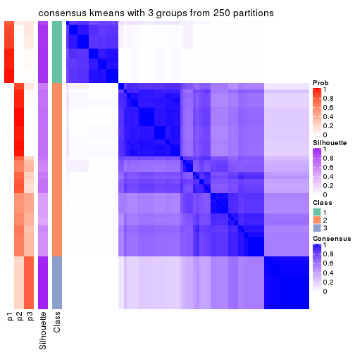
consensus_heatmap(res, k = 4)
consensus_heatmap(res, k = 5)
consensus_heatmap(res, k = 6)
Heatmaps for the membership of samples in all partitions to see how consistent they are:
membership_heatmap(res, k = 2)
membership_heatmap(res, k = 3)
membership_heatmap(res, k = 4)
membership_heatmap(res, k = 5)
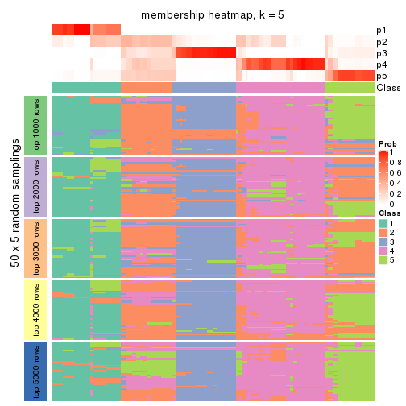
membership_heatmap(res, k = 6)
As soon as we have had the classes for columns, we can look for signatures which are significantly different between classes which can be candidate marks for certain classes. Following are the heatmaps for signatures.
Signature heatmaps where rows are scaled:
get_signatures(res, k = 2)
get_signatures(res, k = 3)
get_signatures(res, k = 4)
get_signatures(res, k = 5)
get_signatures(res, k = 6)
Signature heatmaps where rows are not scaled:
get_signatures(res, k = 2, scale_rows = FALSE)
get_signatures(res, k = 3, scale_rows = FALSE)

get_signatures(res, k = 4, scale_rows = FALSE)
get_signatures(res, k = 5, scale_rows = FALSE)
get_signatures(res, k = 6, scale_rows = FALSE)
Compare the overlap of signatures from different k:
compare_signatures(res)
get_signature() returns a data frame invisibly. TO get the list of signatures, the function
call should be assigned to a variable explicitly. In following code, if plot argument is set
to FALSE, no heatmap is plotted while only the differential analysis is performed.
# code only for demonstration
tb = get_signature(res, k = ..., plot = FALSE)
An example of the output of tb is:
#> which_row fdr mean_1 mean_2 scaled_mean_1 scaled_mean_2 km
#> 1 38 0.042760348 8.373488 9.131774 -0.5533452 0.5164555 1
#> 2 40 0.018707592 7.106213 8.469186 -0.6173731 0.5762149 1
#> 3 55 0.019134737 10.221463 11.207825 -0.6159697 0.5749050 1
#> 4 59 0.006059896 5.921854 7.869574 -0.6899429 0.6439467 1
#> 5 60 0.018055526 8.928898 10.211722 -0.6204761 0.5791110 1
#> 6 98 0.009384629 15.714769 14.887706 0.6635654 -0.6193277 2
...
The columns in tb are:
which_row: row indices corresponding to the input matrix.fdr: FDR for the differential test. mean_x: The mean value in group x.scaled_mean_x: The mean value in group x after rows are scaled.km: Row groups if k-means clustering is applied to rows.UMAP plot which shows how samples are separated.
dimension_reduction(res, k = 2, method = "UMAP")
dimension_reduction(res, k = 3, method = "UMAP")

dimension_reduction(res, k = 4, method = "UMAP")
dimension_reduction(res, k = 5, method = "UMAP")

dimension_reduction(res, k = 6, method = "UMAP")
Following heatmap shows how subgroups are split when increasing k:
collect_classes(res)
If matrix rows can be associated to genes, consider to use GO_Enrichment(res,
...) to perform function enrichment for the signature genes.
The object with results only for a single top-value method and a single partition method can be extracted as:
res = res_list["MAD", "skmeans"]
# you can also extract it by
# res = res_list["MAD:skmeans"]
A summary of res and all the functions that can be applied to it:
res
#> A 'ConsensusPartition' object with k = 2, 3, 4, 5, 6.
#> On a matrix with 16717 rows and 168 columns.
#> Top rows (1000, 2000, 3000, 4000, 5000) are extracted by 'MAD' method.
#> Subgroups are detected by 'skmeans' method.
#> Performed in total 1250 partitions by row resampling.
#> Best k for subgroups seems to be 6.
#>
#> Following methods can be applied to this 'ConsensusPartition' object:
#> [1] "cola_report" "collect_classes" "collect_plots"
#> [4] "collect_stats" "colnames" "compare_signatures"
#> [7] "consensus_heatmap" "dimension_reduction" "functional_enrichment"
#> [10] "get_anno_col" "get_anno" "get_classes"
#> [13] "get_consensus" "get_matrix" "get_membership"
#> [16] "get_param" "get_signatures" "get_stats"
#> [19] "is_best_k" "is_stable_k" "membership_heatmap"
#> [22] "ncol" "nrow" "plot_ecdf"
#> [25] "rownames" "select_partition_number" "show"
#> [28] "suggest_best_k" "test_to_known_factors"
collect_plots() function collects all the plots made from res for all k (number of partitions)
into one single page to provide an easy and fast comparison between different k.
collect_plots(res)
The plots are:
k and the heatmap of
predicted classes for each k.k.k.k.All the plots in panels can be made by individual functions and they are plotted later in this section.
select_partition_number() produces several plots showing different
statistics for choosing “optimized” k. There are following statistics:
k;k, the area increased is defined as \(A_k - A_{k-1}\).The detailed explanations of these statistics can be found in the cola vignette.
Generally speaking, lower PAC score, higher mean silhouette score or higher
concordance corresponds to better partition. Rand index and Jaccard index
measure how similar the current partition is compared to partition with k-1.
If they are too similar, we won't accept k is better than k-1.
select_partition_number(res)
The numeric values for all these statistics can be obtained by get_stats().
get_stats(res)
#> k 1-PAC mean_silhouette concordance area_increased Rand Jaccard
#> 2 2 0.730 0.819 0.925 0.4948 0.509 0.509
#> 3 3 0.938 0.923 0.968 0.3039 0.768 0.578
#> 4 4 0.887 0.866 0.930 0.1360 0.892 0.708
#> 5 5 0.946 0.919 0.949 0.0879 0.895 0.636
#> 6 6 0.906 0.842 0.911 0.0330 0.973 0.868
suggest_best_k() suggests the best \(k\) based on these statistics. The rules are as follows:
NA.suggest_best_k(res)
#> [1] 6
#> attr(,"optional")
#> [1] 3 5
There is also optional best \(k\) = 3 5 that is worth to check.
Following shows the table of the partitions (You need to click the show/hide
code output link to see it). The membership matrix (columns with name p*)
is inferred by
clue::cl_consensus()
function with the SE method. Basically the value in the membership matrix
represents the probability to belong to a certain group. The finall class
label for an item is determined with the group with highest probability it
belongs to.
In get_classes() function, the entropy is calculated from the membership
matrix and the silhouette score is calculated from the consensus matrix.
cbind(get_classes(res, k = 2), get_membership(res, k = 2))
#> class entropy silhouette p1 p2
#> SRR1768889 2 0.0000 0.91161 0.000 1.000
#> SRR1768890 2 0.0000 0.91161 0.000 1.000
#> SRR1768891 2 0.0000 0.91161 0.000 1.000
#> SRR1768892 2 0.0000 0.91161 0.000 1.000
#> SRR1768893 2 0.0000 0.91161 0.000 1.000
#> SRR1768894 2 0.0000 0.91161 0.000 1.000
#> SRR1768895 2 0.3584 0.85302 0.068 0.932
#> SRR1768896 2 0.3584 0.85302 0.068 0.932
#> SRR1768821 2 0.8713 0.52079 0.292 0.708
#> SRR1768822 2 0.8713 0.52079 0.292 0.708
#> SRR1768823 1 0.0000 0.91433 1.000 0.000
#> SRR1768824 1 0.0000 0.91433 1.000 0.000
#> SRR1768825 2 0.0000 0.91161 0.000 1.000
#> SRR1768826 2 0.0000 0.91161 0.000 1.000
#> SRR1768827 1 0.9248 0.53920 0.660 0.340
#> SRR1768828 1 0.9248 0.53920 0.660 0.340
#> SRR1768829 2 0.3431 0.85685 0.064 0.936
#> SRR1768830 2 0.3431 0.85685 0.064 0.936
#> SRR1768831 1 0.1633 0.89484 0.976 0.024
#> SRR1768832 1 0.1633 0.89484 0.976 0.024
#> SRR1768833 2 0.9996 0.17705 0.488 0.512
#> SRR1768834 2 0.9996 0.17705 0.488 0.512
#> SRR1768835 2 0.9993 0.18878 0.484 0.516
#> SRR1768836 2 0.9988 0.20341 0.480 0.520
#> SRR1768837 2 0.9988 0.20341 0.480 0.520
#> SRR1768838 2 0.9248 0.52049 0.340 0.660
#> SRR1768839 2 0.9248 0.52049 0.340 0.660
#> SRR1768840 2 0.0000 0.91161 0.000 1.000
#> SRR1768841 2 0.0000 0.91161 0.000 1.000
#> SRR1768842 2 0.0000 0.91161 0.000 1.000
#> SRR1768843 2 0.0000 0.91161 0.000 1.000
#> SRR1768844 2 0.0000 0.91161 0.000 1.000
#> SRR1768845 2 0.0000 0.91161 0.000 1.000
#> SRR1768846 2 0.0000 0.91161 0.000 1.000
#> SRR1768847 2 0.0000 0.91161 0.000 1.000
#> SRR1768848 2 0.0000 0.91161 0.000 1.000
#> SRR1768849 2 0.0000 0.91161 0.000 1.000
#> SRR1768850 2 0.0000 0.91161 0.000 1.000
#> SRR1768851 2 0.0000 0.91161 0.000 1.000
#> SRR1768852 2 0.8555 0.61415 0.280 0.720
#> SRR1768853 2 0.8555 0.61415 0.280 0.720
#> SRR1768854 2 0.0376 0.90870 0.004 0.996
#> SRR1768855 2 0.0000 0.91161 0.000 1.000
#> SRR1768856 2 0.0000 0.91161 0.000 1.000
#> SRR1768857 2 0.0000 0.91161 0.000 1.000
#> SRR1768858 2 0.0000 0.91161 0.000 1.000
#> SRR1768859 2 0.0000 0.91161 0.000 1.000
#> SRR1768860 2 0.0000 0.91161 0.000 1.000
#> SRR1768861 2 0.0000 0.91161 0.000 1.000
#> SRR1768862 2 0.0000 0.91161 0.000 1.000
#> SRR1768863 2 0.0000 0.91161 0.000 1.000
#> SRR1768864 2 0.0000 0.91161 0.000 1.000
#> SRR1768865 2 0.0000 0.91161 0.000 1.000
#> SRR1768866 2 0.0000 0.91161 0.000 1.000
#> SRR1768867 1 0.0000 0.91433 1.000 0.000
#> SRR1768868 1 0.0000 0.91433 1.000 0.000
#> SRR1768869 1 0.0000 0.91433 1.000 0.000
#> SRR1768870 1 0.0000 0.91433 1.000 0.000
#> SRR1768871 2 1.0000 0.15968 0.496 0.504
#> SRR1768872 2 1.0000 0.15968 0.496 0.504
#> SRR1768873 1 0.0000 0.91433 1.000 0.000
#> SRR1768874 1 0.0000 0.91433 1.000 0.000
#> SRR1768875 2 0.0000 0.91161 0.000 1.000
#> SRR1768876 2 0.0000 0.91161 0.000 1.000
#> SRR1768877 2 0.0000 0.91161 0.000 1.000
#> SRR1768878 2 0.0000 0.91161 0.000 1.000
#> SRR1768879 2 0.0000 0.91161 0.000 1.000
#> SRR1768880 2 0.0000 0.91161 0.000 1.000
#> SRR1768881 1 0.4022 0.85056 0.920 0.080
#> SRR1768882 1 0.4022 0.85056 0.920 0.080
#> SRR1768883 2 0.0000 0.91161 0.000 1.000
#> SRR1768884 2 0.0000 0.91161 0.000 1.000
#> SRR1768885 2 0.0000 0.91161 0.000 1.000
#> SRR1768886 2 0.0000 0.91161 0.000 1.000
#> SRR1768887 2 0.0000 0.91161 0.000 1.000
#> SRR1768888 2 0.0000 0.91161 0.000 1.000
#> SRR1768897 2 0.0000 0.91161 0.000 1.000
#> SRR1768898 2 0.0000 0.91161 0.000 1.000
#> SRR1768899 2 0.0000 0.91161 0.000 1.000
#> SRR1768900 2 0.0000 0.91161 0.000 1.000
#> SRR1768901 2 0.0000 0.91161 0.000 1.000
#> SRR1768902 2 0.0000 0.91161 0.000 1.000
#> SRR1768903 2 0.0000 0.91161 0.000 1.000
#> SRR1768904 2 0.0000 0.91161 0.000 1.000
#> SRR1768905 2 0.0000 0.91161 0.000 1.000
#> SRR1768906 2 0.0000 0.91161 0.000 1.000
#> SRR1768907 2 0.0000 0.91161 0.000 1.000
#> SRR1768908 2 0.0000 0.91161 0.000 1.000
#> SRR1768909 2 0.0000 0.91161 0.000 1.000
#> SRR1768910 2 0.0000 0.91161 0.000 1.000
#> SRR1768911 2 0.0000 0.91161 0.000 1.000
#> SRR1768912 2 0.0000 0.91161 0.000 1.000
#> SRR1768913 2 0.0000 0.91161 0.000 1.000
#> SRR1768914 2 0.0000 0.91161 0.000 1.000
#> SRR1768915 2 0.0000 0.91161 0.000 1.000
#> SRR1768916 2 0.0000 0.91161 0.000 1.000
#> SRR1768917 1 0.9248 0.53920 0.660 0.340
#> SRR1768918 2 0.0000 0.91161 0.000 1.000
#> SRR1768919 2 0.0000 0.91161 0.000 1.000
#> SRR1768920 1 0.9248 0.53920 0.660 0.340
#> SRR1768921 1 0.9248 0.53920 0.660 0.340
#> SRR1768922 2 0.0000 0.91161 0.000 1.000
#> SRR1768923 2 0.0000 0.91161 0.000 1.000
#> SRR1768924 2 0.9248 0.52049 0.340 0.660
#> SRR1768925 2 0.9248 0.52049 0.340 0.660
#> SRR1768926 2 0.8813 0.58484 0.300 0.700
#> SRR1768927 2 0.8813 0.58484 0.300 0.700
#> SRR1768928 2 0.9248 0.52049 0.340 0.660
#> SRR1768929 2 0.9248 0.52049 0.340 0.660
#> SRR1768930 1 0.0000 0.91433 1.000 0.000
#> SRR1768931 1 0.0000 0.91433 1.000 0.000
#> SRR1768932 1 0.0000 0.91433 1.000 0.000
#> SRR1768933 1 0.0000 0.91433 1.000 0.000
#> SRR1768934 1 0.0000 0.91433 1.000 0.000
#> SRR1768935 1 0.0000 0.91433 1.000 0.000
#> SRR1768936 1 0.0000 0.91433 1.000 0.000
#> SRR1768937 1 0.0000 0.91433 1.000 0.000
#> SRR1768938 1 0.0000 0.91433 1.000 0.000
#> SRR1768939 1 0.9248 0.53920 0.660 0.340
#> SRR1768940 1 0.9248 0.53920 0.660 0.340
#> SRR1768941 1 0.9248 0.53920 0.660 0.340
#> SRR1768942 1 0.9248 0.53920 0.660 0.340
#> SRR1768943 1 0.9248 0.53920 0.660 0.340
#> SRR1768944 1 0.9248 0.53920 0.660 0.340
#> SRR1768945 1 0.9248 0.53920 0.660 0.340
#> SRR1768946 1 0.9248 0.53920 0.660 0.340
#> SRR1768947 2 0.0000 0.91161 0.000 1.000
#> SRR1768948 2 0.0000 0.91161 0.000 1.000
#> SRR1768949 2 0.0000 0.91161 0.000 1.000
#> SRR1768950 1 0.9944 -0.00337 0.544 0.456
#> SRR1768954 1 0.0000 0.91433 1.000 0.000
#> SRR1768955 1 0.0000 0.91433 1.000 0.000
#> SRR1768956 1 0.0000 0.91433 1.000 0.000
#> SRR1768957 1 0.0000 0.91433 1.000 0.000
#> SRR1768958 1 0.0000 0.91433 1.000 0.000
#> SRR1768959 1 0.0000 0.91433 1.000 0.000
#> SRR1768960 1 0.0000 0.91433 1.000 0.000
#> SRR1768961 1 0.0000 0.91433 1.000 0.000
#> SRR1768952 2 0.0000 0.91161 0.000 1.000
#> SRR1768953 2 0.0000 0.91161 0.000 1.000
#> SRR1768962 1 0.0000 0.91433 1.000 0.000
#> SRR1768963 1 0.0000 0.91433 1.000 0.000
#> SRR1768964 1 0.0000 0.91433 1.000 0.000
#> SRR1768965 1 0.0000 0.91433 1.000 0.000
#> SRR1768966 1 0.0000 0.91433 1.000 0.000
#> SRR1768967 1 0.0000 0.91433 1.000 0.000
#> SRR1768968 1 0.0000 0.91433 1.000 0.000
#> SRR1768969 1 0.0000 0.91433 1.000 0.000
#> SRR1768970 1 0.0000 0.91433 1.000 0.000
#> SRR1768971 1 0.0000 0.91433 1.000 0.000
#> SRR1768972 1 0.0000 0.91433 1.000 0.000
#> SRR1768973 1 0.0000 0.91433 1.000 0.000
#> SRR1768974 1 0.0000 0.91433 1.000 0.000
#> SRR1768975 1 0.0000 0.91433 1.000 0.000
#> SRR1768976 1 0.0000 0.91433 1.000 0.000
#> SRR1768977 1 0.0000 0.91433 1.000 0.000
#> SRR1768978 1 0.0000 0.91433 1.000 0.000
#> SRR1768979 1 0.0000 0.91433 1.000 0.000
#> SRR1768980 1 0.0000 0.91433 1.000 0.000
#> SRR1768981 1 0.0000 0.91433 1.000 0.000
#> SRR1768982 1 0.0000 0.91433 1.000 0.000
#> SRR1768983 1 0.0000 0.91433 1.000 0.000
#> SRR1768984 1 0.0000 0.91433 1.000 0.000
#> SRR1768985 1 0.0000 0.91433 1.000 0.000
#> SRR1768986 1 0.0000 0.91433 1.000 0.000
#> SRR1768987 1 0.0000 0.91433 1.000 0.000
#> SRR1768988 1 0.0000 0.91433 1.000 0.000
#> SRR1768989 1 0.0000 0.91433 1.000 0.000
cbind(get_classes(res, k = 3), get_membership(res, k = 3))
#> class entropy silhouette p1 p2 p3
#> SRR1768889 3 0.0000 0.944 0.000 0.000 1.000
#> SRR1768890 3 0.0000 0.944 0.000 0.000 1.000
#> SRR1768891 2 0.3482 0.835 0.000 0.872 0.128
#> SRR1768892 2 0.3482 0.835 0.000 0.872 0.128
#> SRR1768893 3 0.1163 0.932 0.000 0.028 0.972
#> SRR1768894 3 0.1163 0.932 0.000 0.028 0.972
#> SRR1768895 2 0.0000 0.971 0.000 1.000 0.000
#> SRR1768896 2 0.0000 0.971 0.000 1.000 0.000
#> SRR1768821 2 0.0000 0.971 0.000 1.000 0.000
#> SRR1768822 2 0.0000 0.971 0.000 1.000 0.000
#> SRR1768823 2 0.0000 0.971 0.000 1.000 0.000
#> SRR1768824 2 0.0000 0.971 0.000 1.000 0.000
#> SRR1768825 2 0.0000 0.971 0.000 1.000 0.000
#> SRR1768826 2 0.0000 0.971 0.000 1.000 0.000
#> SRR1768827 2 0.0000 0.971 0.000 1.000 0.000
#> SRR1768828 2 0.0000 0.971 0.000 1.000 0.000
#> SRR1768829 2 0.0000 0.971 0.000 1.000 0.000
#> SRR1768830 2 0.0000 0.971 0.000 1.000 0.000
#> SRR1768831 1 0.0000 1.000 1.000 0.000 0.000
#> SRR1768832 1 0.0000 1.000 1.000 0.000 0.000
#> SRR1768833 1 0.0000 1.000 1.000 0.000 0.000
#> SRR1768834 1 0.0000 1.000 1.000 0.000 0.000
#> SRR1768835 1 0.0000 1.000 1.000 0.000 0.000
#> SRR1768836 1 0.0000 1.000 1.000 0.000 0.000
#> SRR1768837 1 0.0000 1.000 1.000 0.000 0.000
#> SRR1768838 3 0.3619 0.825 0.136 0.000 0.864
#> SRR1768839 3 0.3619 0.825 0.136 0.000 0.864
#> SRR1768840 3 0.0237 0.943 0.000 0.004 0.996
#> SRR1768841 3 0.0237 0.943 0.000 0.004 0.996
#> SRR1768842 3 0.0237 0.943 0.000 0.004 0.996
#> SRR1768843 3 0.0237 0.943 0.000 0.004 0.996
#> SRR1768844 3 0.0000 0.944 0.000 0.000 1.000
#> SRR1768845 3 0.0000 0.944 0.000 0.000 1.000
#> SRR1768846 3 0.0000 0.944 0.000 0.000 1.000
#> SRR1768847 3 0.0000 0.944 0.000 0.000 1.000
#> SRR1768848 3 0.0000 0.944 0.000 0.000 1.000
#> SRR1768849 3 0.0000 0.944 0.000 0.000 1.000
#> SRR1768850 3 0.0000 0.944 0.000 0.000 1.000
#> SRR1768851 3 0.0000 0.944 0.000 0.000 1.000
#> SRR1768852 3 0.0592 0.939 0.000 0.012 0.988
#> SRR1768853 3 0.0592 0.939 0.000 0.012 0.988
#> SRR1768854 3 0.0237 0.942 0.000 0.004 0.996
#> SRR1768855 3 0.0000 0.944 0.000 0.000 1.000
#> SRR1768856 3 0.0000 0.944 0.000 0.000 1.000
#> SRR1768857 3 0.0000 0.944 0.000 0.000 1.000
#> SRR1768858 3 0.0000 0.944 0.000 0.000 1.000
#> SRR1768859 3 0.0000 0.944 0.000 0.000 1.000
#> SRR1768860 3 0.0000 0.944 0.000 0.000 1.000
#> SRR1768861 3 0.5529 0.601 0.000 0.296 0.704
#> SRR1768862 3 0.5529 0.601 0.000 0.296 0.704
#> SRR1768863 3 0.2537 0.889 0.000 0.080 0.920
#> SRR1768864 3 0.2537 0.889 0.000 0.080 0.920
#> SRR1768865 3 0.0237 0.943 0.000 0.004 0.996
#> SRR1768866 3 0.0237 0.943 0.000 0.004 0.996
#> SRR1768867 2 0.0000 0.971 0.000 1.000 0.000
#> SRR1768868 2 0.0000 0.971 0.000 1.000 0.000
#> SRR1768869 2 0.0892 0.956 0.020 0.980 0.000
#> SRR1768870 2 0.0892 0.956 0.020 0.980 0.000
#> SRR1768871 2 0.6470 0.397 0.012 0.632 0.356
#> SRR1768872 2 0.6470 0.397 0.012 0.632 0.356
#> SRR1768873 2 0.0892 0.956 0.020 0.980 0.000
#> SRR1768874 2 0.0892 0.956 0.020 0.980 0.000
#> SRR1768875 3 0.0000 0.944 0.000 0.000 1.000
#> SRR1768876 3 0.0000 0.944 0.000 0.000 1.000
#> SRR1768877 3 0.0000 0.944 0.000 0.000 1.000
#> SRR1768878 3 0.0000 0.944 0.000 0.000 1.000
#> SRR1768879 3 0.0000 0.944 0.000 0.000 1.000
#> SRR1768880 3 0.0000 0.944 0.000 0.000 1.000
#> SRR1768881 2 0.0000 0.971 0.000 1.000 0.000
#> SRR1768882 2 0.0000 0.971 0.000 1.000 0.000
#> SRR1768883 3 0.0000 0.944 0.000 0.000 1.000
#> SRR1768884 3 0.0000 0.944 0.000 0.000 1.000
#> SRR1768885 3 0.0000 0.944 0.000 0.000 1.000
#> SRR1768886 3 0.0000 0.944 0.000 0.000 1.000
#> SRR1768887 3 0.0000 0.944 0.000 0.000 1.000
#> SRR1768888 3 0.0000 0.944 0.000 0.000 1.000
#> SRR1768897 3 0.6280 0.206 0.000 0.460 0.540
#> SRR1768898 3 0.6280 0.206 0.000 0.460 0.540
#> SRR1768899 3 0.6307 0.117 0.000 0.488 0.512
#> SRR1768900 3 0.6307 0.117 0.000 0.488 0.512
#> SRR1768901 3 0.0000 0.944 0.000 0.000 1.000
#> SRR1768902 3 0.0000 0.944 0.000 0.000 1.000
#> SRR1768903 3 0.0000 0.944 0.000 0.000 1.000
#> SRR1768904 3 0.0000 0.944 0.000 0.000 1.000
#> SRR1768905 3 0.0000 0.944 0.000 0.000 1.000
#> SRR1768906 3 0.0000 0.944 0.000 0.000 1.000
#> SRR1768907 3 0.1031 0.934 0.000 0.024 0.976
#> SRR1768908 3 0.1031 0.934 0.000 0.024 0.976
#> SRR1768909 3 0.1031 0.934 0.000 0.024 0.976
#> SRR1768910 3 0.1031 0.934 0.000 0.024 0.976
#> SRR1768911 3 0.1031 0.934 0.000 0.024 0.976
#> SRR1768912 3 0.1031 0.934 0.000 0.024 0.976
#> SRR1768913 3 0.1031 0.934 0.000 0.024 0.976
#> SRR1768914 3 0.1031 0.934 0.000 0.024 0.976
#> SRR1768915 3 0.1031 0.934 0.000 0.024 0.976
#> SRR1768916 3 0.3412 0.844 0.000 0.124 0.876
#> SRR1768917 2 0.0000 0.971 0.000 1.000 0.000
#> SRR1768918 3 0.1031 0.934 0.000 0.024 0.976
#> SRR1768919 3 0.1031 0.934 0.000 0.024 0.976
#> SRR1768920 2 0.0000 0.971 0.000 1.000 0.000
#> SRR1768921 2 0.0000 0.971 0.000 1.000 0.000
#> SRR1768922 3 0.0000 0.944 0.000 0.000 1.000
#> SRR1768923 3 0.0000 0.944 0.000 0.000 1.000
#> SRR1768924 3 0.0592 0.938 0.012 0.000 0.988
#> SRR1768925 3 0.0592 0.938 0.012 0.000 0.988
#> SRR1768926 3 0.0237 0.942 0.004 0.000 0.996
#> SRR1768927 3 0.0237 0.942 0.004 0.000 0.996
#> SRR1768928 3 0.0592 0.938 0.012 0.000 0.988
#> SRR1768929 3 0.0592 0.938 0.012 0.000 0.988
#> SRR1768930 2 0.0000 0.971 0.000 1.000 0.000
#> SRR1768931 2 0.0000 0.971 0.000 1.000 0.000
#> SRR1768932 2 0.0000 0.971 0.000 1.000 0.000
#> SRR1768933 2 0.0000 0.971 0.000 1.000 0.000
#> SRR1768934 2 0.0000 0.971 0.000 1.000 0.000
#> SRR1768935 2 0.0000 0.971 0.000 1.000 0.000
#> SRR1768936 2 0.0000 0.971 0.000 1.000 0.000
#> SRR1768937 2 0.0000 0.971 0.000 1.000 0.000
#> SRR1768938 2 0.0000 0.971 0.000 1.000 0.000
#> SRR1768939 2 0.0237 0.969 0.000 0.996 0.004
#> SRR1768940 2 0.0237 0.969 0.000 0.996 0.004
#> SRR1768941 2 0.0237 0.969 0.000 0.996 0.004
#> SRR1768942 2 0.0237 0.969 0.000 0.996 0.004
#> SRR1768943 2 0.0237 0.969 0.000 0.996 0.004
#> SRR1768944 2 0.0237 0.969 0.000 0.996 0.004
#> SRR1768945 2 0.0237 0.969 0.000 0.996 0.004
#> SRR1768946 2 0.0237 0.969 0.000 0.996 0.004
#> SRR1768947 3 0.0000 0.944 0.000 0.000 1.000
#> SRR1768948 3 0.0000 0.944 0.000 0.000 1.000
#> SRR1768949 3 0.0000 0.944 0.000 0.000 1.000
#> SRR1768950 2 0.0592 0.961 0.000 0.988 0.012
#> SRR1768954 1 0.0000 1.000 1.000 0.000 0.000
#> SRR1768955 1 0.0000 1.000 1.000 0.000 0.000
#> SRR1768956 1 0.0000 1.000 1.000 0.000 0.000
#> SRR1768957 1 0.0000 1.000 1.000 0.000 0.000
#> SRR1768958 1 0.0000 1.000 1.000 0.000 0.000
#> SRR1768959 1 0.0000 1.000 1.000 0.000 0.000
#> SRR1768960 1 0.0000 1.000 1.000 0.000 0.000
#> SRR1768961 1 0.0000 1.000 1.000 0.000 0.000
#> SRR1768952 3 0.6180 0.340 0.000 0.416 0.584
#> SRR1768953 3 0.6180 0.340 0.000 0.416 0.584
#> SRR1768962 1 0.0000 1.000 1.000 0.000 0.000
#> SRR1768963 1 0.0000 1.000 1.000 0.000 0.000
#> SRR1768964 1 0.0000 1.000 1.000 0.000 0.000
#> SRR1768965 1 0.0000 1.000 1.000 0.000 0.000
#> SRR1768966 1 0.0000 1.000 1.000 0.000 0.000
#> SRR1768967 1 0.0000 1.000 1.000 0.000 0.000
#> SRR1768968 1 0.0000 1.000 1.000 0.000 0.000
#> SRR1768969 1 0.0000 1.000 1.000 0.000 0.000
#> SRR1768970 1 0.0000 1.000 1.000 0.000 0.000
#> SRR1768971 1 0.0000 1.000 1.000 0.000 0.000
#> SRR1768972 1 0.0000 1.000 1.000 0.000 0.000
#> SRR1768973 1 0.0000 1.000 1.000 0.000 0.000
#> SRR1768974 1 0.0000 1.000 1.000 0.000 0.000
#> SRR1768975 1 0.0000 1.000 1.000 0.000 0.000
#> SRR1768976 1 0.0000 1.000 1.000 0.000 0.000
#> SRR1768977 1 0.0000 1.000 1.000 0.000 0.000
#> SRR1768978 1 0.0000 1.000 1.000 0.000 0.000
#> SRR1768979 1 0.0000 1.000 1.000 0.000 0.000
#> SRR1768980 1 0.0000 1.000 1.000 0.000 0.000
#> SRR1768981 1 0.0000 1.000 1.000 0.000 0.000
#> SRR1768982 1 0.0000 1.000 1.000 0.000 0.000
#> SRR1768983 1 0.0000 1.000 1.000 0.000 0.000
#> SRR1768984 1 0.0000 1.000 1.000 0.000 0.000
#> SRR1768985 1 0.0000 1.000 1.000 0.000 0.000
#> SRR1768986 1 0.0000 1.000 1.000 0.000 0.000
#> SRR1768987 1 0.0000 1.000 1.000 0.000 0.000
#> SRR1768988 1 0.0000 1.000 1.000 0.000 0.000
#> SRR1768989 1 0.0000 1.000 1.000 0.000 0.000
cbind(get_classes(res, k = 4), get_membership(res, k = 4))
#> class entropy silhouette p1 p2 p3 p4
#> SRR1768889 3 0.0188 0.856 0.000 0.000 0.996 0.004
#> SRR1768890 3 0.0188 0.856 0.000 0.000 0.996 0.004
#> SRR1768891 2 0.5406 -0.116 0.000 0.508 0.480 0.012
#> SRR1768892 2 0.5406 -0.116 0.000 0.508 0.480 0.012
#> SRR1768893 3 0.2402 0.818 0.000 0.076 0.912 0.012
#> SRR1768894 3 0.2402 0.818 0.000 0.076 0.912 0.012
#> SRR1768895 2 0.0657 0.942 0.000 0.984 0.004 0.012
#> SRR1768896 2 0.0657 0.942 0.000 0.984 0.004 0.012
#> SRR1768821 2 0.0188 0.948 0.000 0.996 0.000 0.004
#> SRR1768822 2 0.0188 0.948 0.000 0.996 0.000 0.004
#> SRR1768823 2 0.0000 0.949 0.000 1.000 0.000 0.000
#> SRR1768824 2 0.0000 0.949 0.000 1.000 0.000 0.000
#> SRR1768825 2 0.0657 0.942 0.000 0.984 0.004 0.012
#> SRR1768826 2 0.0657 0.942 0.000 0.984 0.004 0.012
#> SRR1768827 2 0.0000 0.949 0.000 1.000 0.000 0.000
#> SRR1768828 2 0.0000 0.949 0.000 1.000 0.000 0.000
#> SRR1768829 2 0.0657 0.942 0.000 0.984 0.004 0.012
#> SRR1768830 2 0.0657 0.942 0.000 0.984 0.004 0.012
#> SRR1768831 4 0.0469 0.935 0.012 0.000 0.000 0.988
#> SRR1768832 4 0.0469 0.935 0.012 0.000 0.000 0.988
#> SRR1768833 4 0.0469 0.935 0.012 0.000 0.000 0.988
#> SRR1768834 4 0.0469 0.935 0.012 0.000 0.000 0.988
#> SRR1768835 4 0.0469 0.935 0.012 0.000 0.000 0.988
#> SRR1768836 4 0.0469 0.935 0.012 0.000 0.000 0.988
#> SRR1768837 4 0.0469 0.935 0.012 0.000 0.000 0.988
#> SRR1768838 4 0.0469 0.939 0.000 0.000 0.012 0.988
#> SRR1768839 4 0.0469 0.939 0.000 0.000 0.012 0.988
#> SRR1768840 4 0.0469 0.939 0.000 0.000 0.012 0.988
#> SRR1768841 4 0.0469 0.939 0.000 0.000 0.012 0.988
#> SRR1768842 4 0.0469 0.939 0.000 0.000 0.012 0.988
#> SRR1768843 4 0.0469 0.939 0.000 0.000 0.012 0.988
#> SRR1768844 3 0.0188 0.856 0.000 0.000 0.996 0.004
#> SRR1768845 3 0.0188 0.856 0.000 0.000 0.996 0.004
#> SRR1768846 3 0.0188 0.856 0.000 0.000 0.996 0.004
#> SRR1768847 3 0.0188 0.856 0.000 0.000 0.996 0.004
#> SRR1768848 3 0.0188 0.856 0.000 0.000 0.996 0.004
#> SRR1768849 3 0.0188 0.856 0.000 0.000 0.996 0.004
#> SRR1768850 3 0.0188 0.856 0.000 0.000 0.996 0.004
#> SRR1768851 3 0.0188 0.856 0.000 0.000 0.996 0.004
#> SRR1768852 4 0.4576 0.661 0.000 0.012 0.260 0.728
#> SRR1768853 4 0.4576 0.661 0.000 0.012 0.260 0.728
#> SRR1768854 4 0.4277 0.639 0.000 0.000 0.280 0.720
#> SRR1768855 3 0.0188 0.856 0.000 0.000 0.996 0.004
#> SRR1768856 3 0.0188 0.856 0.000 0.000 0.996 0.004
#> SRR1768857 3 0.0188 0.856 0.000 0.000 0.996 0.004
#> SRR1768858 3 0.0188 0.856 0.000 0.000 0.996 0.004
#> SRR1768859 3 0.0188 0.856 0.000 0.000 0.996 0.004
#> SRR1768860 3 0.0188 0.856 0.000 0.000 0.996 0.004
#> SRR1768861 3 0.6055 0.675 0.000 0.096 0.664 0.240
#> SRR1768862 3 0.6055 0.675 0.000 0.096 0.664 0.240
#> SRR1768863 3 0.5799 0.674 0.000 0.068 0.668 0.264
#> SRR1768864 3 0.5799 0.674 0.000 0.068 0.668 0.264
#> SRR1768865 3 0.3444 0.763 0.000 0.000 0.816 0.184
#> SRR1768866 3 0.3444 0.763 0.000 0.000 0.816 0.184
#> SRR1768867 2 0.0000 0.949 0.000 1.000 0.000 0.000
#> SRR1768868 2 0.0000 0.949 0.000 1.000 0.000 0.000
#> SRR1768869 2 0.4452 0.623 0.008 0.732 0.000 0.260
#> SRR1768870 2 0.4452 0.623 0.008 0.732 0.000 0.260
#> SRR1768871 4 0.0188 0.934 0.000 0.004 0.000 0.996
#> SRR1768872 4 0.0188 0.934 0.000 0.004 0.000 0.996
#> SRR1768873 2 0.1888 0.896 0.016 0.940 0.000 0.044
#> SRR1768874 2 0.1888 0.896 0.016 0.940 0.000 0.044
#> SRR1768875 3 0.0188 0.856 0.000 0.000 0.996 0.004
#> SRR1768876 3 0.0188 0.856 0.000 0.000 0.996 0.004
#> SRR1768877 3 0.0188 0.856 0.000 0.000 0.996 0.004
#> SRR1768878 3 0.0188 0.856 0.000 0.000 0.996 0.004
#> SRR1768879 3 0.0707 0.852 0.000 0.000 0.980 0.020
#> SRR1768880 3 0.0707 0.852 0.000 0.000 0.980 0.020
#> SRR1768881 2 0.0000 0.949 0.000 1.000 0.000 0.000
#> SRR1768882 2 0.0000 0.949 0.000 1.000 0.000 0.000
#> SRR1768883 3 0.0188 0.856 0.000 0.000 0.996 0.004
#> SRR1768884 3 0.0188 0.856 0.000 0.000 0.996 0.004
#> SRR1768885 3 0.0188 0.856 0.000 0.000 0.996 0.004
#> SRR1768886 3 0.0188 0.856 0.000 0.000 0.996 0.004
#> SRR1768887 3 0.0188 0.856 0.000 0.000 0.996 0.004
#> SRR1768888 3 0.0188 0.856 0.000 0.000 0.996 0.004
#> SRR1768897 3 0.6653 0.433 0.000 0.356 0.548 0.096
#> SRR1768898 3 0.6653 0.433 0.000 0.356 0.548 0.096
#> SRR1768899 3 0.7606 0.423 0.000 0.248 0.476 0.276
#> SRR1768900 3 0.7606 0.423 0.000 0.248 0.476 0.276
#> SRR1768901 3 0.0336 0.855 0.000 0.000 0.992 0.008
#> SRR1768902 3 0.0336 0.855 0.000 0.000 0.992 0.008
#> SRR1768903 3 0.0336 0.855 0.000 0.000 0.992 0.008
#> SRR1768904 3 0.0707 0.852 0.000 0.000 0.980 0.020
#> SRR1768905 3 0.0707 0.852 0.000 0.000 0.980 0.020
#> SRR1768906 3 0.0707 0.852 0.000 0.000 0.980 0.020
#> SRR1768907 3 0.5599 0.677 0.000 0.052 0.672 0.276
#> SRR1768908 3 0.5599 0.677 0.000 0.052 0.672 0.276
#> SRR1768909 3 0.5599 0.677 0.000 0.052 0.672 0.276
#> SRR1768910 3 0.5599 0.677 0.000 0.052 0.672 0.276
#> SRR1768911 3 0.5599 0.677 0.000 0.052 0.672 0.276
#> SRR1768912 3 0.5599 0.677 0.000 0.052 0.672 0.276
#> SRR1768913 3 0.5599 0.677 0.000 0.052 0.672 0.276
#> SRR1768914 3 0.5599 0.677 0.000 0.052 0.672 0.276
#> SRR1768915 3 0.5599 0.677 0.000 0.052 0.672 0.276
#> SRR1768916 4 0.5925 0.384 0.000 0.068 0.284 0.648
#> SRR1768917 2 0.0000 0.949 0.000 1.000 0.000 0.000
#> SRR1768918 3 0.5546 0.684 0.000 0.052 0.680 0.268
#> SRR1768919 3 0.5546 0.684 0.000 0.052 0.680 0.268
#> SRR1768920 2 0.0000 0.949 0.000 1.000 0.000 0.000
#> SRR1768921 2 0.0000 0.949 0.000 1.000 0.000 0.000
#> SRR1768922 3 0.0188 0.856 0.000 0.000 0.996 0.004
#> SRR1768923 3 0.0188 0.856 0.000 0.000 0.996 0.004
#> SRR1768924 4 0.0469 0.939 0.000 0.000 0.012 0.988
#> SRR1768925 4 0.0469 0.939 0.000 0.000 0.012 0.988
#> SRR1768926 4 0.0469 0.939 0.000 0.000 0.012 0.988
#> SRR1768927 4 0.0469 0.939 0.000 0.000 0.012 0.988
#> SRR1768928 4 0.0469 0.939 0.000 0.000 0.012 0.988
#> SRR1768929 4 0.0469 0.939 0.000 0.000 0.012 0.988
#> SRR1768930 2 0.0000 0.949 0.000 1.000 0.000 0.000
#> SRR1768931 2 0.0000 0.949 0.000 1.000 0.000 0.000
#> SRR1768932 2 0.0000 0.949 0.000 1.000 0.000 0.000
#> SRR1768933 2 0.0000 0.949 0.000 1.000 0.000 0.000
#> SRR1768934 2 0.0000 0.949 0.000 1.000 0.000 0.000
#> SRR1768935 2 0.0000 0.949 0.000 1.000 0.000 0.000
#> SRR1768936 2 0.0000 0.949 0.000 1.000 0.000 0.000
#> SRR1768937 2 0.0000 0.949 0.000 1.000 0.000 0.000
#> SRR1768938 2 0.0000 0.949 0.000 1.000 0.000 0.000
#> SRR1768939 2 0.0376 0.948 0.000 0.992 0.004 0.004
#> SRR1768940 2 0.0376 0.948 0.000 0.992 0.004 0.004
#> SRR1768941 2 0.0376 0.948 0.000 0.992 0.004 0.004
#> SRR1768942 2 0.0376 0.948 0.000 0.992 0.004 0.004
#> SRR1768943 2 0.0376 0.948 0.000 0.992 0.004 0.004
#> SRR1768944 2 0.0376 0.948 0.000 0.992 0.004 0.004
#> SRR1768945 2 0.0376 0.948 0.000 0.992 0.004 0.004
#> SRR1768946 2 0.0376 0.948 0.000 0.992 0.004 0.004
#> SRR1768947 3 0.0000 0.856 0.000 0.000 1.000 0.000
#> SRR1768948 3 0.0000 0.856 0.000 0.000 1.000 0.000
#> SRR1768949 3 0.0336 0.854 0.000 0.000 0.992 0.008
#> SRR1768950 2 0.0336 0.946 0.000 0.992 0.000 0.008
#> SRR1768954 1 0.0000 1.000 1.000 0.000 0.000 0.000
#> SRR1768955 1 0.0000 1.000 1.000 0.000 0.000 0.000
#> SRR1768956 1 0.0000 1.000 1.000 0.000 0.000 0.000
#> SRR1768957 1 0.0000 1.000 1.000 0.000 0.000 0.000
#> SRR1768958 1 0.0000 1.000 1.000 0.000 0.000 0.000
#> SRR1768959 1 0.0000 1.000 1.000 0.000 0.000 0.000
#> SRR1768960 1 0.0000 1.000 1.000 0.000 0.000 0.000
#> SRR1768961 1 0.0000 1.000 1.000 0.000 0.000 0.000
#> SRR1768952 3 0.6773 0.589 0.000 0.136 0.588 0.276
#> SRR1768953 3 0.6773 0.589 0.000 0.136 0.588 0.276
#> SRR1768962 1 0.0000 1.000 1.000 0.000 0.000 0.000
#> SRR1768963 1 0.0000 1.000 1.000 0.000 0.000 0.000
#> SRR1768964 1 0.0000 1.000 1.000 0.000 0.000 0.000
#> SRR1768965 1 0.0000 1.000 1.000 0.000 0.000 0.000
#> SRR1768966 1 0.0000 1.000 1.000 0.000 0.000 0.000
#> SRR1768967 1 0.0000 1.000 1.000 0.000 0.000 0.000
#> SRR1768968 1 0.0000 1.000 1.000 0.000 0.000 0.000
#> SRR1768969 1 0.0000 1.000 1.000 0.000 0.000 0.000
#> SRR1768970 1 0.0000 1.000 1.000 0.000 0.000 0.000
#> SRR1768971 1 0.0000 1.000 1.000 0.000 0.000 0.000
#> SRR1768972 1 0.0000 1.000 1.000 0.000 0.000 0.000
#> SRR1768973 1 0.0000 1.000 1.000 0.000 0.000 0.000
#> SRR1768974 1 0.0000 1.000 1.000 0.000 0.000 0.000
#> SRR1768975 1 0.0000 1.000 1.000 0.000 0.000 0.000
#> SRR1768976 1 0.0000 1.000 1.000 0.000 0.000 0.000
#> SRR1768977 1 0.0000 1.000 1.000 0.000 0.000 0.000
#> SRR1768978 1 0.0000 1.000 1.000 0.000 0.000 0.000
#> SRR1768979 1 0.0000 1.000 1.000 0.000 0.000 0.000
#> SRR1768980 1 0.0000 1.000 1.000 0.000 0.000 0.000
#> SRR1768981 1 0.0000 1.000 1.000 0.000 0.000 0.000
#> SRR1768982 1 0.0000 1.000 1.000 0.000 0.000 0.000
#> SRR1768983 1 0.0000 1.000 1.000 0.000 0.000 0.000
#> SRR1768984 1 0.0000 1.000 1.000 0.000 0.000 0.000
#> SRR1768985 1 0.0000 1.000 1.000 0.000 0.000 0.000
#> SRR1768986 1 0.0000 1.000 1.000 0.000 0.000 0.000
#> SRR1768987 1 0.0000 1.000 1.000 0.000 0.000 0.000
#> SRR1768988 1 0.0000 1.000 1.000 0.000 0.000 0.000
#> SRR1768989 1 0.0000 1.000 1.000 0.000 0.000 0.000
cbind(get_classes(res, k = 5), get_membership(res, k = 5))
#> class entropy silhouette p1 p2 p3 p4 p5
#> SRR1768889 3 0.0000 0.972 0.000 0.000 1.000 0.000 0.000
#> SRR1768890 3 0.0000 0.972 0.000 0.000 1.000 0.000 0.000
#> SRR1768891 2 0.2491 0.892 0.000 0.896 0.036 0.068 0.000
#> SRR1768892 2 0.2491 0.892 0.000 0.896 0.036 0.068 0.000
#> SRR1768893 2 0.2300 0.899 0.000 0.908 0.052 0.040 0.000
#> SRR1768894 2 0.2300 0.899 0.000 0.908 0.052 0.040 0.000
#> SRR1768895 2 0.1043 0.875 0.000 0.960 0.000 0.040 0.000
#> SRR1768896 2 0.1043 0.875 0.000 0.960 0.000 0.040 0.000
#> SRR1768821 4 0.1732 0.918 0.000 0.080 0.000 0.920 0.000
#> SRR1768822 4 0.1732 0.918 0.000 0.080 0.000 0.920 0.000
#> SRR1768823 4 0.0609 0.931 0.000 0.020 0.000 0.980 0.000
#> SRR1768824 4 0.0609 0.931 0.000 0.020 0.000 0.980 0.000
#> SRR1768825 2 0.4182 0.256 0.000 0.600 0.000 0.400 0.000
#> SRR1768826 2 0.4182 0.256 0.000 0.600 0.000 0.400 0.000
#> SRR1768827 4 0.1608 0.921 0.000 0.072 0.000 0.928 0.000
#> SRR1768828 4 0.1608 0.921 0.000 0.072 0.000 0.928 0.000
#> SRR1768829 4 0.4278 0.234 0.000 0.452 0.000 0.548 0.000
#> SRR1768830 4 0.4278 0.234 0.000 0.452 0.000 0.548 0.000
#> SRR1768831 5 0.0162 0.968 0.004 0.000 0.000 0.000 0.996
#> SRR1768832 5 0.0162 0.968 0.004 0.000 0.000 0.000 0.996
#> SRR1768833 5 0.0162 0.968 0.004 0.000 0.000 0.000 0.996
#> SRR1768834 5 0.0162 0.968 0.004 0.000 0.000 0.000 0.996
#> SRR1768835 5 0.0162 0.968 0.004 0.000 0.000 0.000 0.996
#> SRR1768836 5 0.0162 0.968 0.004 0.000 0.000 0.000 0.996
#> SRR1768837 5 0.0162 0.968 0.004 0.000 0.000 0.000 0.996
#> SRR1768838 5 0.0162 0.969 0.000 0.000 0.004 0.000 0.996
#> SRR1768839 5 0.0162 0.969 0.000 0.000 0.004 0.000 0.996
#> SRR1768840 5 0.0162 0.969 0.000 0.000 0.004 0.000 0.996
#> SRR1768841 5 0.0162 0.969 0.000 0.000 0.004 0.000 0.996
#> SRR1768842 5 0.0162 0.969 0.000 0.000 0.004 0.000 0.996
#> SRR1768843 5 0.0162 0.969 0.000 0.000 0.004 0.000 0.996
#> SRR1768844 3 0.0000 0.972 0.000 0.000 1.000 0.000 0.000
#> SRR1768845 3 0.0000 0.972 0.000 0.000 1.000 0.000 0.000
#> SRR1768846 3 0.0000 0.972 0.000 0.000 1.000 0.000 0.000
#> SRR1768847 3 0.0000 0.972 0.000 0.000 1.000 0.000 0.000
#> SRR1768848 3 0.0000 0.972 0.000 0.000 1.000 0.000 0.000
#> SRR1768849 3 0.0000 0.972 0.000 0.000 1.000 0.000 0.000
#> SRR1768850 3 0.0000 0.972 0.000 0.000 1.000 0.000 0.000
#> SRR1768851 3 0.0000 0.972 0.000 0.000 1.000 0.000 0.000
#> SRR1768852 5 0.3433 0.836 0.000 0.024 0.136 0.008 0.832
#> SRR1768853 5 0.3433 0.836 0.000 0.024 0.136 0.008 0.832
#> SRR1768854 5 0.3433 0.836 0.000 0.024 0.136 0.008 0.832
#> SRR1768855 3 0.0000 0.972 0.000 0.000 1.000 0.000 0.000
#> SRR1768856 3 0.0000 0.972 0.000 0.000 1.000 0.000 0.000
#> SRR1768857 3 0.0000 0.972 0.000 0.000 1.000 0.000 0.000
#> SRR1768858 3 0.0000 0.972 0.000 0.000 1.000 0.000 0.000
#> SRR1768859 3 0.0000 0.972 0.000 0.000 1.000 0.000 0.000
#> SRR1768860 3 0.0000 0.972 0.000 0.000 1.000 0.000 0.000
#> SRR1768861 2 0.3065 0.887 0.000 0.872 0.072 0.048 0.008
#> SRR1768862 2 0.3065 0.887 0.000 0.872 0.072 0.048 0.008
#> SRR1768863 2 0.2513 0.898 0.000 0.904 0.040 0.048 0.008
#> SRR1768864 2 0.2513 0.898 0.000 0.904 0.040 0.048 0.008
#> SRR1768865 3 0.3160 0.757 0.000 0.188 0.808 0.000 0.004
#> SRR1768866 3 0.3160 0.757 0.000 0.188 0.808 0.000 0.004
#> SRR1768867 4 0.0162 0.931 0.000 0.004 0.000 0.996 0.000
#> SRR1768868 4 0.0162 0.931 0.000 0.004 0.000 0.996 0.000
#> SRR1768869 4 0.1282 0.906 0.000 0.004 0.000 0.952 0.044
#> SRR1768870 4 0.1282 0.906 0.000 0.004 0.000 0.952 0.044
#> SRR1768871 5 0.1792 0.906 0.000 0.000 0.000 0.084 0.916
#> SRR1768872 5 0.1792 0.906 0.000 0.000 0.000 0.084 0.916
#> SRR1768873 4 0.0324 0.930 0.004 0.004 0.000 0.992 0.000
#> SRR1768874 4 0.0324 0.930 0.004 0.004 0.000 0.992 0.000
#> SRR1768875 3 0.0000 0.972 0.000 0.000 1.000 0.000 0.000
#> SRR1768876 3 0.0000 0.972 0.000 0.000 1.000 0.000 0.000
#> SRR1768877 3 0.0000 0.972 0.000 0.000 1.000 0.000 0.000
#> SRR1768878 3 0.0000 0.972 0.000 0.000 1.000 0.000 0.000
#> SRR1768879 3 0.2790 0.883 0.000 0.052 0.880 0.000 0.068
#> SRR1768880 3 0.2790 0.883 0.000 0.052 0.880 0.000 0.068
#> SRR1768881 4 0.0510 0.928 0.000 0.016 0.000 0.984 0.000
#> SRR1768882 4 0.0510 0.928 0.000 0.016 0.000 0.984 0.000
#> SRR1768883 3 0.0000 0.972 0.000 0.000 1.000 0.000 0.000
#> SRR1768884 3 0.0000 0.972 0.000 0.000 1.000 0.000 0.000
#> SRR1768885 3 0.0000 0.972 0.000 0.000 1.000 0.000 0.000
#> SRR1768886 3 0.0000 0.972 0.000 0.000 1.000 0.000 0.000
#> SRR1768887 3 0.0000 0.972 0.000 0.000 1.000 0.000 0.000
#> SRR1768888 3 0.0000 0.972 0.000 0.000 1.000 0.000 0.000
#> SRR1768897 2 0.1082 0.899 0.000 0.964 0.028 0.008 0.000
#> SRR1768898 2 0.1082 0.899 0.000 0.964 0.028 0.008 0.000
#> SRR1768899 2 0.1280 0.899 0.000 0.960 0.024 0.008 0.008
#> SRR1768900 2 0.1280 0.899 0.000 0.960 0.024 0.008 0.008
#> SRR1768901 3 0.1952 0.902 0.000 0.084 0.912 0.000 0.004
#> SRR1768902 3 0.1952 0.902 0.000 0.084 0.912 0.000 0.004
#> SRR1768903 3 0.1952 0.902 0.000 0.084 0.912 0.000 0.004
#> SRR1768904 2 0.4066 0.585 0.000 0.672 0.324 0.000 0.004
#> SRR1768905 2 0.4066 0.585 0.000 0.672 0.324 0.000 0.004
#> SRR1768906 2 0.4084 0.577 0.000 0.668 0.328 0.000 0.004
#> SRR1768907 2 0.1597 0.904 0.000 0.940 0.048 0.000 0.012
#> SRR1768908 2 0.1597 0.904 0.000 0.940 0.048 0.000 0.012
#> SRR1768909 2 0.1597 0.904 0.000 0.940 0.048 0.000 0.012
#> SRR1768910 2 0.1701 0.904 0.000 0.936 0.048 0.000 0.016
#> SRR1768911 2 0.1701 0.904 0.000 0.936 0.048 0.000 0.016
#> SRR1768912 2 0.1701 0.904 0.000 0.936 0.048 0.000 0.016
#> SRR1768913 2 0.1701 0.904 0.000 0.936 0.048 0.000 0.016
#> SRR1768914 2 0.1701 0.904 0.000 0.936 0.048 0.000 0.016
#> SRR1768915 2 0.1701 0.904 0.000 0.936 0.048 0.000 0.016
#> SRR1768916 2 0.2193 0.884 0.000 0.920 0.008 0.028 0.044
#> SRR1768917 4 0.0290 0.931 0.000 0.008 0.000 0.992 0.000
#> SRR1768918 2 0.1484 0.904 0.000 0.944 0.048 0.000 0.008
#> SRR1768919 2 0.1484 0.904 0.000 0.944 0.048 0.000 0.008
#> SRR1768920 4 0.1892 0.918 0.000 0.080 0.000 0.916 0.004
#> SRR1768921 4 0.1892 0.918 0.000 0.080 0.000 0.916 0.004
#> SRR1768922 3 0.0510 0.962 0.000 0.016 0.984 0.000 0.000
#> SRR1768923 3 0.0510 0.962 0.000 0.016 0.984 0.000 0.000
#> SRR1768924 5 0.0162 0.969 0.000 0.000 0.004 0.000 0.996
#> SRR1768925 5 0.0162 0.969 0.000 0.000 0.004 0.000 0.996
#> SRR1768926 5 0.0162 0.969 0.000 0.000 0.004 0.000 0.996
#> SRR1768927 5 0.0162 0.969 0.000 0.000 0.004 0.000 0.996
#> SRR1768928 5 0.0162 0.969 0.000 0.000 0.004 0.000 0.996
#> SRR1768929 5 0.0162 0.969 0.000 0.000 0.004 0.000 0.996
#> SRR1768930 4 0.0290 0.931 0.000 0.008 0.000 0.992 0.000
#> SRR1768931 4 0.0290 0.931 0.000 0.008 0.000 0.992 0.000
#> SRR1768932 4 0.0290 0.931 0.000 0.008 0.000 0.992 0.000
#> SRR1768933 4 0.0290 0.931 0.000 0.008 0.000 0.992 0.000
#> SRR1768934 4 0.0290 0.931 0.000 0.008 0.000 0.992 0.000
#> SRR1768935 4 0.0290 0.931 0.000 0.008 0.000 0.992 0.000
#> SRR1768936 4 0.0290 0.931 0.000 0.008 0.000 0.992 0.000
#> SRR1768937 4 0.0290 0.931 0.000 0.008 0.000 0.992 0.000
#> SRR1768938 4 0.0290 0.931 0.000 0.008 0.000 0.992 0.000
#> SRR1768939 4 0.2681 0.903 0.000 0.108 0.012 0.876 0.004
#> SRR1768940 4 0.2681 0.903 0.000 0.108 0.012 0.876 0.004
#> SRR1768941 4 0.2681 0.903 0.000 0.108 0.012 0.876 0.004
#> SRR1768942 4 0.2681 0.903 0.000 0.108 0.012 0.876 0.004
#> SRR1768943 4 0.2681 0.903 0.000 0.108 0.012 0.876 0.004
#> SRR1768944 4 0.2681 0.903 0.000 0.108 0.012 0.876 0.004
#> SRR1768945 4 0.2681 0.903 0.000 0.108 0.012 0.876 0.004
#> SRR1768946 4 0.2681 0.903 0.000 0.108 0.012 0.876 0.004
#> SRR1768947 3 0.0290 0.968 0.000 0.008 0.992 0.000 0.000
#> SRR1768948 3 0.0290 0.968 0.000 0.008 0.992 0.000 0.000
#> SRR1768949 3 0.1270 0.934 0.000 0.052 0.948 0.000 0.000
#> SRR1768950 2 0.4060 0.506 0.000 0.640 0.000 0.360 0.000
#> SRR1768954 1 0.0162 0.998 0.996 0.004 0.000 0.000 0.000
#> SRR1768955 1 0.0162 0.998 0.996 0.004 0.000 0.000 0.000
#> SRR1768956 1 0.0162 0.998 0.996 0.004 0.000 0.000 0.000
#> SRR1768957 1 0.0162 0.998 0.996 0.004 0.000 0.000 0.000
#> SRR1768958 1 0.0162 0.998 0.996 0.004 0.000 0.000 0.000
#> SRR1768959 1 0.0162 0.998 0.996 0.004 0.000 0.000 0.000
#> SRR1768960 1 0.0162 0.998 0.996 0.004 0.000 0.000 0.000
#> SRR1768961 1 0.0162 0.998 0.996 0.004 0.000 0.000 0.000
#> SRR1768952 2 0.2409 0.896 0.000 0.908 0.028 0.056 0.008
#> SRR1768953 2 0.2409 0.896 0.000 0.908 0.028 0.056 0.008
#> SRR1768962 1 0.0000 0.998 1.000 0.000 0.000 0.000 0.000
#> SRR1768963 1 0.0000 0.998 1.000 0.000 0.000 0.000 0.000
#> SRR1768964 1 0.0000 0.998 1.000 0.000 0.000 0.000 0.000
#> SRR1768965 1 0.0000 0.998 1.000 0.000 0.000 0.000 0.000
#> SRR1768966 1 0.0000 0.998 1.000 0.000 0.000 0.000 0.000
#> SRR1768967 1 0.0000 0.998 1.000 0.000 0.000 0.000 0.000
#> SRR1768968 1 0.0000 0.998 1.000 0.000 0.000 0.000 0.000
#> SRR1768969 1 0.0000 0.998 1.000 0.000 0.000 0.000 0.000
#> SRR1768970 1 0.0000 0.998 1.000 0.000 0.000 0.000 0.000
#> SRR1768971 1 0.0000 0.998 1.000 0.000 0.000 0.000 0.000
#> SRR1768972 1 0.0162 0.998 0.996 0.004 0.000 0.000 0.000
#> SRR1768973 1 0.0162 0.998 0.996 0.004 0.000 0.000 0.000
#> SRR1768974 1 0.0162 0.998 0.996 0.004 0.000 0.000 0.000
#> SRR1768975 1 0.0162 0.998 0.996 0.004 0.000 0.000 0.000
#> SRR1768976 1 0.0162 0.998 0.996 0.004 0.000 0.000 0.000
#> SRR1768977 1 0.0162 0.998 0.996 0.004 0.000 0.000 0.000
#> SRR1768978 1 0.0000 0.998 1.000 0.000 0.000 0.000 0.000
#> SRR1768979 1 0.0000 0.998 1.000 0.000 0.000 0.000 0.000
#> SRR1768980 1 0.0000 0.998 1.000 0.000 0.000 0.000 0.000
#> SRR1768981 1 0.0000 0.998 1.000 0.000 0.000 0.000 0.000
#> SRR1768982 1 0.0000 0.998 1.000 0.000 0.000 0.000 0.000
#> SRR1768983 1 0.0000 0.998 1.000 0.000 0.000 0.000 0.000
#> SRR1768984 1 0.0162 0.998 0.996 0.004 0.000 0.000 0.000
#> SRR1768985 1 0.0162 0.998 0.996 0.004 0.000 0.000 0.000
#> SRR1768986 1 0.0000 0.998 1.000 0.000 0.000 0.000 0.000
#> SRR1768987 1 0.0000 0.998 1.000 0.000 0.000 0.000 0.000
#> SRR1768988 1 0.0000 0.998 1.000 0.000 0.000 0.000 0.000
#> SRR1768989 1 0.0000 0.998 1.000 0.000 0.000 0.000 0.000
cbind(get_classes(res, k = 6), get_membership(res, k = 6))
#> class entropy silhouette p1 p2 p3 p4 p5 p6
#> SRR1768889 3 0.0000 0.9373 0.000 0.000 1.000 0.000 0.000 0.000
#> SRR1768890 3 0.0000 0.9373 0.000 0.000 1.000 0.000 0.000 0.000
#> SRR1768891 2 0.1760 0.8594 0.000 0.928 0.004 0.048 0.000 0.020
#> SRR1768892 2 0.1760 0.8594 0.000 0.928 0.004 0.048 0.000 0.020
#> SRR1768893 2 0.1167 0.8830 0.000 0.960 0.008 0.012 0.000 0.020
#> SRR1768894 2 0.1167 0.8830 0.000 0.960 0.008 0.012 0.000 0.020
#> SRR1768895 2 0.2703 0.7356 0.000 0.824 0.000 0.004 0.000 0.172
#> SRR1768896 2 0.2703 0.7356 0.000 0.824 0.000 0.004 0.000 0.172
#> SRR1768821 6 0.4856 0.4522 0.000 0.056 0.000 0.468 0.000 0.476
#> SRR1768822 6 0.4856 0.4522 0.000 0.056 0.000 0.468 0.000 0.476
#> SRR1768823 4 0.2964 0.6496 0.000 0.004 0.000 0.792 0.000 0.204
#> SRR1768824 4 0.2964 0.6496 0.000 0.004 0.000 0.792 0.000 0.204
#> SRR1768825 2 0.5383 -0.0857 0.000 0.472 0.000 0.112 0.000 0.416
#> SRR1768826 2 0.5383 -0.0857 0.000 0.472 0.000 0.112 0.000 0.416
#> SRR1768827 6 0.4463 0.4913 0.000 0.028 0.000 0.456 0.000 0.516
#> SRR1768828 6 0.4463 0.4913 0.000 0.028 0.000 0.456 0.000 0.516
#> SRR1768829 6 0.6044 0.4210 0.000 0.276 0.000 0.308 0.000 0.416
#> SRR1768830 6 0.6044 0.4210 0.000 0.276 0.000 0.308 0.000 0.416
#> SRR1768831 5 0.0458 0.8874 0.000 0.000 0.000 0.000 0.984 0.016
#> SRR1768832 5 0.0458 0.8874 0.000 0.000 0.000 0.000 0.984 0.016
#> SRR1768833 5 0.0458 0.8874 0.000 0.000 0.000 0.000 0.984 0.016
#> SRR1768834 5 0.0458 0.8874 0.000 0.000 0.000 0.000 0.984 0.016
#> SRR1768835 5 0.0458 0.8874 0.000 0.000 0.000 0.000 0.984 0.016
#> SRR1768836 5 0.0458 0.8874 0.000 0.000 0.000 0.000 0.984 0.016
#> SRR1768837 5 0.0458 0.8874 0.000 0.000 0.000 0.000 0.984 0.016
#> SRR1768838 5 0.0458 0.8874 0.000 0.000 0.000 0.000 0.984 0.016
#> SRR1768839 5 0.0458 0.8874 0.000 0.000 0.000 0.000 0.984 0.016
#> SRR1768840 5 0.0146 0.8884 0.000 0.004 0.000 0.000 0.996 0.000
#> SRR1768841 5 0.0146 0.8884 0.000 0.004 0.000 0.000 0.996 0.000
#> SRR1768842 5 0.0146 0.8884 0.000 0.004 0.000 0.000 0.996 0.000
#> SRR1768843 5 0.0146 0.8884 0.000 0.004 0.000 0.000 0.996 0.000
#> SRR1768844 3 0.0000 0.9373 0.000 0.000 1.000 0.000 0.000 0.000
#> SRR1768845 3 0.0000 0.9373 0.000 0.000 1.000 0.000 0.000 0.000
#> SRR1768846 3 0.0000 0.9373 0.000 0.000 1.000 0.000 0.000 0.000
#> SRR1768847 3 0.0000 0.9373 0.000 0.000 1.000 0.000 0.000 0.000
#> SRR1768848 3 0.0000 0.9373 0.000 0.000 1.000 0.000 0.000 0.000
#> SRR1768849 3 0.0000 0.9373 0.000 0.000 1.000 0.000 0.000 0.000
#> SRR1768850 3 0.0000 0.9373 0.000 0.000 1.000 0.000 0.000 0.000
#> SRR1768851 3 0.0000 0.9373 0.000 0.000 1.000 0.000 0.000 0.000
#> SRR1768852 5 0.5495 0.2887 0.000 0.000 0.072 0.020 0.460 0.448
#> SRR1768853 5 0.5495 0.2887 0.000 0.000 0.072 0.020 0.460 0.448
#> SRR1768854 5 0.5495 0.2887 0.000 0.000 0.072 0.020 0.460 0.448
#> SRR1768855 3 0.0000 0.9373 0.000 0.000 1.000 0.000 0.000 0.000
#> SRR1768856 3 0.0000 0.9373 0.000 0.000 1.000 0.000 0.000 0.000
#> SRR1768857 3 0.0000 0.9373 0.000 0.000 1.000 0.000 0.000 0.000
#> SRR1768858 3 0.0458 0.9317 0.000 0.000 0.984 0.000 0.000 0.016
#> SRR1768859 3 0.0458 0.9317 0.000 0.000 0.984 0.000 0.000 0.016
#> SRR1768860 3 0.0458 0.9317 0.000 0.000 0.984 0.000 0.000 0.016
#> SRR1768861 2 0.2013 0.8387 0.000 0.908 0.076 0.008 0.000 0.008
#> SRR1768862 2 0.2013 0.8387 0.000 0.908 0.076 0.008 0.000 0.008
#> SRR1768863 2 0.0665 0.8896 0.000 0.980 0.004 0.008 0.000 0.008
#> SRR1768864 2 0.0665 0.8896 0.000 0.980 0.004 0.008 0.000 0.008
#> SRR1768865 3 0.3329 0.7022 0.000 0.220 0.768 0.008 0.000 0.004
#> SRR1768866 3 0.3329 0.7022 0.000 0.220 0.768 0.008 0.000 0.004
#> SRR1768867 4 0.1700 0.8664 0.000 0.004 0.000 0.916 0.000 0.080
#> SRR1768868 4 0.1700 0.8664 0.000 0.004 0.000 0.916 0.000 0.080
#> SRR1768869 4 0.1168 0.8860 0.000 0.000 0.000 0.956 0.016 0.028
#> SRR1768870 4 0.1168 0.8860 0.000 0.000 0.000 0.956 0.016 0.028
#> SRR1768871 5 0.4057 0.3692 0.000 0.000 0.000 0.388 0.600 0.012
#> SRR1768872 5 0.4057 0.3692 0.000 0.000 0.000 0.388 0.600 0.012
#> SRR1768873 4 0.0713 0.9001 0.000 0.000 0.000 0.972 0.000 0.028
#> SRR1768874 4 0.0713 0.9001 0.000 0.000 0.000 0.972 0.000 0.028
#> SRR1768875 3 0.0000 0.9373 0.000 0.000 1.000 0.000 0.000 0.000
#> SRR1768876 3 0.0000 0.9373 0.000 0.000 1.000 0.000 0.000 0.000
#> SRR1768877 3 0.0000 0.9373 0.000 0.000 1.000 0.000 0.000 0.000
#> SRR1768878 3 0.0000 0.9373 0.000 0.000 1.000 0.000 0.000 0.000
#> SRR1768879 3 0.4927 0.6544 0.000 0.016 0.692 0.000 0.144 0.148
#> SRR1768880 3 0.4927 0.6544 0.000 0.016 0.692 0.000 0.144 0.148
#> SRR1768881 4 0.1918 0.8739 0.000 0.008 0.000 0.904 0.000 0.088
#> SRR1768882 4 0.1918 0.8739 0.000 0.008 0.000 0.904 0.000 0.088
#> SRR1768883 3 0.0000 0.9373 0.000 0.000 1.000 0.000 0.000 0.000
#> SRR1768884 3 0.0000 0.9373 0.000 0.000 1.000 0.000 0.000 0.000
#> SRR1768885 3 0.0000 0.9373 0.000 0.000 1.000 0.000 0.000 0.000
#> SRR1768886 3 0.0000 0.9373 0.000 0.000 1.000 0.000 0.000 0.000
#> SRR1768887 3 0.0000 0.9373 0.000 0.000 1.000 0.000 0.000 0.000
#> SRR1768888 3 0.0000 0.9373 0.000 0.000 1.000 0.000 0.000 0.000
#> SRR1768897 2 0.0363 0.8872 0.000 0.988 0.000 0.000 0.000 0.012
#> SRR1768898 2 0.0363 0.8872 0.000 0.988 0.000 0.000 0.000 0.012
#> SRR1768899 2 0.0260 0.8882 0.000 0.992 0.000 0.000 0.000 0.008
#> SRR1768900 2 0.0260 0.8882 0.000 0.992 0.000 0.000 0.000 0.008
#> SRR1768901 3 0.4111 0.7241 0.000 0.176 0.740 0.000 0.000 0.084
#> SRR1768902 3 0.4111 0.7241 0.000 0.176 0.740 0.000 0.000 0.084
#> SRR1768903 3 0.4111 0.7241 0.000 0.176 0.740 0.000 0.000 0.084
#> SRR1768904 2 0.4951 0.5120 0.000 0.620 0.276 0.000 0.000 0.104
#> SRR1768905 2 0.4951 0.5120 0.000 0.620 0.276 0.000 0.000 0.104
#> SRR1768906 2 0.4951 0.5120 0.000 0.620 0.276 0.000 0.000 0.104
#> SRR1768907 2 0.0260 0.8925 0.000 0.992 0.008 0.000 0.000 0.000
#> SRR1768908 2 0.0260 0.8925 0.000 0.992 0.008 0.000 0.000 0.000
#> SRR1768909 2 0.0260 0.8925 0.000 0.992 0.008 0.000 0.000 0.000
#> SRR1768910 2 0.0260 0.8925 0.000 0.992 0.008 0.000 0.000 0.000
#> SRR1768911 2 0.0260 0.8925 0.000 0.992 0.008 0.000 0.000 0.000
#> SRR1768912 2 0.0260 0.8925 0.000 0.992 0.008 0.000 0.000 0.000
#> SRR1768913 2 0.0260 0.8925 0.000 0.992 0.008 0.000 0.000 0.000
#> SRR1768914 2 0.0260 0.8925 0.000 0.992 0.008 0.000 0.000 0.000
#> SRR1768915 2 0.0260 0.8925 0.000 0.992 0.008 0.000 0.000 0.000
#> SRR1768916 2 0.1148 0.8800 0.000 0.960 0.000 0.004 0.016 0.020
#> SRR1768917 4 0.1219 0.8955 0.000 0.004 0.000 0.948 0.000 0.048
#> SRR1768918 2 0.0260 0.8925 0.000 0.992 0.008 0.000 0.000 0.000
#> SRR1768919 2 0.0260 0.8925 0.000 0.992 0.008 0.000 0.000 0.000
#> SRR1768920 6 0.4116 0.5585 0.000 0.012 0.000 0.416 0.000 0.572
#> SRR1768921 6 0.4116 0.5585 0.000 0.012 0.000 0.416 0.000 0.572
#> SRR1768922 3 0.1398 0.9050 0.000 0.052 0.940 0.000 0.000 0.008
#> SRR1768923 3 0.1398 0.9050 0.000 0.052 0.940 0.000 0.000 0.008
#> SRR1768924 5 0.0146 0.8884 0.000 0.004 0.000 0.000 0.996 0.000
#> SRR1768925 5 0.0146 0.8884 0.000 0.004 0.000 0.000 0.996 0.000
#> SRR1768926 5 0.0146 0.8884 0.000 0.004 0.000 0.000 0.996 0.000
#> SRR1768927 5 0.0146 0.8884 0.000 0.004 0.000 0.000 0.996 0.000
#> SRR1768928 5 0.0146 0.8884 0.000 0.004 0.000 0.000 0.996 0.000
#> SRR1768929 5 0.0146 0.8884 0.000 0.004 0.000 0.000 0.996 0.000
#> SRR1768930 4 0.0260 0.9207 0.000 0.000 0.000 0.992 0.000 0.008
#> SRR1768931 4 0.0260 0.9207 0.000 0.000 0.000 0.992 0.000 0.008
#> SRR1768932 4 0.0260 0.9207 0.000 0.000 0.000 0.992 0.000 0.008
#> SRR1768933 4 0.0260 0.9207 0.000 0.000 0.000 0.992 0.000 0.008
#> SRR1768934 4 0.0260 0.9207 0.000 0.000 0.000 0.992 0.000 0.008
#> SRR1768935 4 0.0260 0.9207 0.000 0.000 0.000 0.992 0.000 0.008
#> SRR1768936 4 0.0260 0.9207 0.000 0.000 0.000 0.992 0.000 0.008
#> SRR1768937 4 0.0260 0.9207 0.000 0.000 0.000 0.992 0.000 0.008
#> SRR1768938 4 0.0260 0.9207 0.000 0.000 0.000 0.992 0.000 0.008
#> SRR1768939 6 0.2278 0.7324 0.000 0.000 0.004 0.128 0.000 0.868
#> SRR1768940 6 0.2278 0.7324 0.000 0.000 0.004 0.128 0.000 0.868
#> SRR1768941 6 0.2278 0.7324 0.000 0.000 0.004 0.128 0.000 0.868
#> SRR1768942 6 0.2278 0.7324 0.000 0.000 0.004 0.128 0.000 0.868
#> SRR1768943 6 0.2278 0.7324 0.000 0.000 0.004 0.128 0.000 0.868
#> SRR1768944 6 0.2278 0.7324 0.000 0.000 0.004 0.128 0.000 0.868
#> SRR1768945 6 0.2278 0.7324 0.000 0.000 0.004 0.128 0.000 0.868
#> SRR1768946 6 0.2278 0.7324 0.000 0.000 0.004 0.128 0.000 0.868
#> SRR1768947 3 0.1265 0.9101 0.000 0.044 0.948 0.000 0.000 0.008
#> SRR1768948 3 0.1265 0.9101 0.000 0.044 0.948 0.000 0.000 0.008
#> SRR1768949 3 0.2165 0.8584 0.000 0.108 0.884 0.000 0.000 0.008
#> SRR1768950 4 0.2742 0.7718 0.000 0.072 0.000 0.876 0.016 0.036
#> SRR1768954 1 0.0935 0.9820 0.964 0.000 0.000 0.000 0.004 0.032
#> SRR1768955 1 0.0935 0.9820 0.964 0.000 0.000 0.000 0.004 0.032
#> SRR1768956 1 0.0935 0.9820 0.964 0.000 0.000 0.000 0.004 0.032
#> SRR1768957 1 0.0935 0.9820 0.964 0.000 0.000 0.000 0.004 0.032
#> SRR1768958 1 0.0935 0.9820 0.964 0.000 0.000 0.000 0.004 0.032
#> SRR1768959 1 0.0935 0.9820 0.964 0.000 0.000 0.000 0.004 0.032
#> SRR1768960 1 0.0935 0.9820 0.964 0.000 0.000 0.000 0.004 0.032
#> SRR1768961 1 0.0935 0.9820 0.964 0.000 0.000 0.000 0.004 0.032
#> SRR1768952 2 0.0436 0.8909 0.000 0.988 0.004 0.004 0.000 0.004
#> SRR1768953 2 0.0436 0.8909 0.000 0.988 0.004 0.004 0.000 0.004
#> SRR1768962 1 0.0000 0.9856 1.000 0.000 0.000 0.000 0.000 0.000
#> SRR1768963 1 0.0000 0.9856 1.000 0.000 0.000 0.000 0.000 0.000
#> SRR1768964 1 0.0000 0.9856 1.000 0.000 0.000 0.000 0.000 0.000
#> SRR1768965 1 0.0000 0.9856 1.000 0.000 0.000 0.000 0.000 0.000
#> SRR1768966 1 0.0000 0.9856 1.000 0.000 0.000 0.000 0.000 0.000
#> SRR1768967 1 0.0000 0.9856 1.000 0.000 0.000 0.000 0.000 0.000
#> SRR1768968 1 0.0000 0.9856 1.000 0.000 0.000 0.000 0.000 0.000
#> SRR1768969 1 0.0000 0.9856 1.000 0.000 0.000 0.000 0.000 0.000
#> SRR1768970 1 0.0000 0.9856 1.000 0.000 0.000 0.000 0.000 0.000
#> SRR1768971 1 0.0000 0.9856 1.000 0.000 0.000 0.000 0.000 0.000
#> SRR1768972 1 0.0935 0.9820 0.964 0.000 0.000 0.000 0.004 0.032
#> SRR1768973 1 0.0935 0.9820 0.964 0.000 0.000 0.000 0.004 0.032
#> SRR1768974 1 0.0935 0.9820 0.964 0.000 0.000 0.000 0.004 0.032
#> SRR1768975 1 0.0935 0.9820 0.964 0.000 0.000 0.000 0.004 0.032
#> SRR1768976 1 0.0935 0.9820 0.964 0.000 0.000 0.000 0.004 0.032
#> SRR1768977 1 0.0935 0.9820 0.964 0.000 0.000 0.000 0.004 0.032
#> SRR1768978 1 0.0000 0.9856 1.000 0.000 0.000 0.000 0.000 0.000
#> SRR1768979 1 0.0000 0.9856 1.000 0.000 0.000 0.000 0.000 0.000
#> SRR1768980 1 0.0000 0.9856 1.000 0.000 0.000 0.000 0.000 0.000
#> SRR1768981 1 0.0000 0.9856 1.000 0.000 0.000 0.000 0.000 0.000
#> SRR1768982 1 0.0000 0.9856 1.000 0.000 0.000 0.000 0.000 0.000
#> SRR1768983 1 0.0000 0.9856 1.000 0.000 0.000 0.000 0.000 0.000
#> SRR1768984 1 0.0935 0.9820 0.964 0.000 0.000 0.000 0.004 0.032
#> SRR1768985 1 0.0935 0.9820 0.964 0.000 0.000 0.000 0.004 0.032
#> SRR1768986 1 0.0000 0.9856 1.000 0.000 0.000 0.000 0.000 0.000
#> SRR1768987 1 0.0000 0.9856 1.000 0.000 0.000 0.000 0.000 0.000
#> SRR1768988 1 0.0000 0.9856 1.000 0.000 0.000 0.000 0.000 0.000
#> SRR1768989 1 0.0000 0.9856 1.000 0.000 0.000 0.000 0.000 0.000
Heatmaps for the consensus matrix. It visualizes the probability of two samples to be in a same group.
consensus_heatmap(res, k = 2)
consensus_heatmap(res, k = 3)

consensus_heatmap(res, k = 4)
consensus_heatmap(res, k = 5)
consensus_heatmap(res, k = 6)
Heatmaps for the membership of samples in all partitions to see how consistent they are:
membership_heatmap(res, k = 2)
membership_heatmap(res, k = 3)
membership_heatmap(res, k = 4)
membership_heatmap(res, k = 5)
membership_heatmap(res, k = 6)
As soon as we have had the classes for columns, we can look for signatures which are significantly different between classes which can be candidate marks for certain classes. Following are the heatmaps for signatures.
Signature heatmaps where rows are scaled:
get_signatures(res, k = 2)
get_signatures(res, k = 3)
get_signatures(res, k = 4)
get_signatures(res, k = 5)
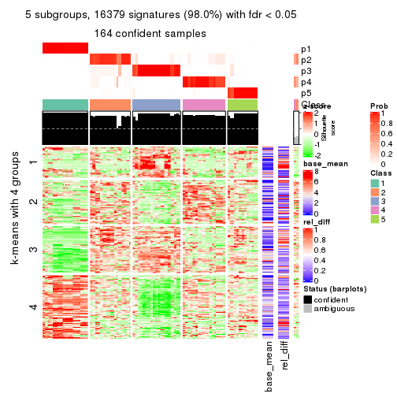
get_signatures(res, k = 6)
Signature heatmaps where rows are not scaled:
get_signatures(res, k = 2, scale_rows = FALSE)
get_signatures(res, k = 3, scale_rows = FALSE)
get_signatures(res, k = 4, scale_rows = FALSE)
get_signatures(res, k = 5, scale_rows = FALSE)
get_signatures(res, k = 6, scale_rows = FALSE)
Compare the overlap of signatures from different k:
compare_signatures(res)
get_signature() returns a data frame invisibly. TO get the list of signatures, the function
call should be assigned to a variable explicitly. In following code, if plot argument is set
to FALSE, no heatmap is plotted while only the differential analysis is performed.
# code only for demonstration
tb = get_signature(res, k = ..., plot = FALSE)
An example of the output of tb is:
#> which_row fdr mean_1 mean_2 scaled_mean_1 scaled_mean_2 km
#> 1 38 0.042760348 8.373488 9.131774 -0.5533452 0.5164555 1
#> 2 40 0.018707592 7.106213 8.469186 -0.6173731 0.5762149 1
#> 3 55 0.019134737 10.221463 11.207825 -0.6159697 0.5749050 1
#> 4 59 0.006059896 5.921854 7.869574 -0.6899429 0.6439467 1
#> 5 60 0.018055526 8.928898 10.211722 -0.6204761 0.5791110 1
#> 6 98 0.009384629 15.714769 14.887706 0.6635654 -0.6193277 2
...
The columns in tb are:
which_row: row indices corresponding to the input matrix.fdr: FDR for the differential test. mean_x: The mean value in group x.scaled_mean_x: The mean value in group x after rows are scaled.km: Row groups if k-means clustering is applied to rows.UMAP plot which shows how samples are separated.
dimension_reduction(res, k = 2, method = "UMAP")
dimension_reduction(res, k = 3, method = "UMAP")
dimension_reduction(res, k = 4, method = "UMAP")
dimension_reduction(res, k = 5, method = "UMAP")

dimension_reduction(res, k = 6, method = "UMAP")

Following heatmap shows how subgroups are split when increasing k:
collect_classes(res)
If matrix rows can be associated to genes, consider to use GO_Enrichment(res,
...) to perform function enrichment for the signature genes.
The object with results only for a single top-value method and a single partition method can be extracted as:
res = res_list["MAD", "pam"]
# you can also extract it by
# res = res_list["MAD:pam"]
A summary of res and all the functions that can be applied to it:
res
#> A 'ConsensusPartition' object with k = 2, 3, 4, 5, 6.
#> On a matrix with 16717 rows and 168 columns.
#> Top rows (1000, 2000, 3000, 4000, 5000) are extracted by 'MAD' method.
#> Subgroups are detected by 'pam' method.
#> Performed in total 1250 partitions by row resampling.
#> Best k for subgroups seems to be 6.
#>
#> Following methods can be applied to this 'ConsensusPartition' object:
#> [1] "cola_report" "collect_classes" "collect_plots"
#> [4] "collect_stats" "colnames" "compare_signatures"
#> [7] "consensus_heatmap" "dimension_reduction" "functional_enrichment"
#> [10] "get_anno_col" "get_anno" "get_classes"
#> [13] "get_consensus" "get_matrix" "get_membership"
#> [16] "get_param" "get_signatures" "get_stats"
#> [19] "is_best_k" "is_stable_k" "membership_heatmap"
#> [22] "ncol" "nrow" "plot_ecdf"
#> [25] "rownames" "select_partition_number" "show"
#> [28] "suggest_best_k" "test_to_known_factors"
collect_plots() function collects all the plots made from res for all k (number of partitions)
into one single page to provide an easy and fast comparison between different k.
collect_plots(res)
The plots are:
k and the heatmap of
predicted classes for each k.k.k.k.All the plots in panels can be made by individual functions and they are plotted later in this section.
select_partition_number() produces several plots showing different
statistics for choosing “optimized” k. There are following statistics:
k;k, the area increased is defined as \(A_k - A_{k-1}\).The detailed explanations of these statistics can be found in the cola vignette.
Generally speaking, lower PAC score, higher mean silhouette score or higher
concordance corresponds to better partition. Rand index and Jaccard index
measure how similar the current partition is compared to partition with k-1.
If they are too similar, we won't accept k is better than k-1.
select_partition_number(res)
The numeric values for all these statistics can be obtained by get_stats().
get_stats(res)
#> k 1-PAC mean_silhouette concordance area_increased Rand Jaccard
#> 2 2 1.000 0.993 0.997 0.3357 0.661 0.661
#> 3 3 0.742 0.920 0.952 0.7117 0.767 0.648
#> 4 4 0.780 0.820 0.841 0.1381 0.977 0.947
#> 5 5 0.938 0.930 0.971 0.1415 0.850 0.629
#> 6 6 0.956 0.928 0.971 0.0877 0.934 0.740
suggest_best_k() suggests the best \(k\) based on these statistics. The rules are as follows:
NA.suggest_best_k(res)
#> [1] 6
#> attr(,"optional")
#> [1] 2 5
There is also optional best \(k\) = 2 5 that is worth to check.
Following shows the table of the partitions (You need to click the show/hide
code output link to see it). The membership matrix (columns with name p*)
is inferred by
clue::cl_consensus()
function with the SE method. Basically the value in the membership matrix
represents the probability to belong to a certain group. The finall class
label for an item is determined with the group with highest probability it
belongs to.
In get_classes() function, the entropy is calculated from the membership
matrix and the silhouette score is calculated from the consensus matrix.
cbind(get_classes(res, k = 2), get_membership(res, k = 2))
#> class entropy silhouette p1 p2
#> SRR1768889 2 0.000 1.000 0.000 1.000
#> SRR1768890 2 0.000 1.000 0.000 1.000
#> SRR1768891 2 0.000 1.000 0.000 1.000
#> SRR1768892 2 0.000 1.000 0.000 1.000
#> SRR1768893 2 0.000 1.000 0.000 1.000
#> SRR1768894 2 0.000 1.000 0.000 1.000
#> SRR1768895 2 0.000 1.000 0.000 1.000
#> SRR1768896 2 0.000 1.000 0.000 1.000
#> SRR1768821 2 0.000 1.000 0.000 1.000
#> SRR1768822 2 0.000 1.000 0.000 1.000
#> SRR1768823 2 0.000 1.000 0.000 1.000
#> SRR1768824 2 0.000 1.000 0.000 1.000
#> SRR1768825 2 0.000 1.000 0.000 1.000
#> SRR1768826 2 0.000 1.000 0.000 1.000
#> SRR1768827 2 0.000 1.000 0.000 1.000
#> SRR1768828 2 0.000 1.000 0.000 1.000
#> SRR1768829 2 0.000 1.000 0.000 1.000
#> SRR1768830 2 0.000 1.000 0.000 1.000
#> SRR1768831 2 0.000 1.000 0.000 1.000
#> SRR1768832 2 0.000 1.000 0.000 1.000
#> SRR1768833 2 0.000 1.000 0.000 1.000
#> SRR1768834 2 0.000 1.000 0.000 1.000
#> SRR1768835 2 0.000 1.000 0.000 1.000
#> SRR1768836 2 0.000 1.000 0.000 1.000
#> SRR1768837 2 0.000 1.000 0.000 1.000
#> SRR1768838 2 0.000 1.000 0.000 1.000
#> SRR1768839 2 0.000 1.000 0.000 1.000
#> SRR1768840 2 0.000 1.000 0.000 1.000
#> SRR1768841 2 0.000 1.000 0.000 1.000
#> SRR1768842 2 0.000 1.000 0.000 1.000
#> SRR1768843 2 0.000 1.000 0.000 1.000
#> SRR1768844 2 0.000 1.000 0.000 1.000
#> SRR1768845 2 0.000 1.000 0.000 1.000
#> SRR1768846 2 0.000 1.000 0.000 1.000
#> SRR1768847 2 0.000 1.000 0.000 1.000
#> SRR1768848 2 0.000 1.000 0.000 1.000
#> SRR1768849 2 0.000 1.000 0.000 1.000
#> SRR1768850 2 0.000 1.000 0.000 1.000
#> SRR1768851 2 0.000 1.000 0.000 1.000
#> SRR1768852 2 0.000 1.000 0.000 1.000
#> SRR1768853 2 0.000 1.000 0.000 1.000
#> SRR1768854 2 0.000 1.000 0.000 1.000
#> SRR1768855 2 0.000 1.000 0.000 1.000
#> SRR1768856 2 0.000 1.000 0.000 1.000
#> SRR1768857 2 0.000 1.000 0.000 1.000
#> SRR1768858 2 0.000 1.000 0.000 1.000
#> SRR1768859 2 0.000 1.000 0.000 1.000
#> SRR1768860 2 0.000 1.000 0.000 1.000
#> SRR1768861 2 0.000 1.000 0.000 1.000
#> SRR1768862 2 0.000 1.000 0.000 1.000
#> SRR1768863 2 0.000 1.000 0.000 1.000
#> SRR1768864 2 0.000 1.000 0.000 1.000
#> SRR1768865 2 0.000 1.000 0.000 1.000
#> SRR1768866 2 0.000 1.000 0.000 1.000
#> SRR1768867 2 0.000 1.000 0.000 1.000
#> SRR1768868 2 0.000 1.000 0.000 1.000
#> SRR1768869 2 0.000 1.000 0.000 1.000
#> SRR1768870 2 0.000 1.000 0.000 1.000
#> SRR1768871 2 0.000 1.000 0.000 1.000
#> SRR1768872 2 0.000 1.000 0.000 1.000
#> SRR1768873 2 0.000 1.000 0.000 1.000
#> SRR1768874 2 0.000 1.000 0.000 1.000
#> SRR1768875 2 0.000 1.000 0.000 1.000
#> SRR1768876 2 0.000 1.000 0.000 1.000
#> SRR1768877 2 0.000 1.000 0.000 1.000
#> SRR1768878 2 0.000 1.000 0.000 1.000
#> SRR1768879 2 0.000 1.000 0.000 1.000
#> SRR1768880 2 0.000 1.000 0.000 1.000
#> SRR1768881 2 0.000 1.000 0.000 1.000
#> SRR1768882 2 0.000 1.000 0.000 1.000
#> SRR1768883 2 0.000 1.000 0.000 1.000
#> SRR1768884 2 0.000 1.000 0.000 1.000
#> SRR1768885 2 0.000 1.000 0.000 1.000
#> SRR1768886 2 0.000 1.000 0.000 1.000
#> SRR1768887 2 0.000 1.000 0.000 1.000
#> SRR1768888 2 0.000 1.000 0.000 1.000
#> SRR1768897 2 0.000 1.000 0.000 1.000
#> SRR1768898 2 0.000 1.000 0.000 1.000
#> SRR1768899 2 0.000 1.000 0.000 1.000
#> SRR1768900 2 0.000 1.000 0.000 1.000
#> SRR1768901 2 0.000 1.000 0.000 1.000
#> SRR1768902 2 0.000 1.000 0.000 1.000
#> SRR1768903 2 0.000 1.000 0.000 1.000
#> SRR1768904 2 0.000 1.000 0.000 1.000
#> SRR1768905 2 0.000 1.000 0.000 1.000
#> SRR1768906 2 0.000 1.000 0.000 1.000
#> SRR1768907 2 0.000 1.000 0.000 1.000
#> SRR1768908 2 0.000 1.000 0.000 1.000
#> SRR1768909 2 0.000 1.000 0.000 1.000
#> SRR1768910 2 0.000 1.000 0.000 1.000
#> SRR1768911 2 0.000 1.000 0.000 1.000
#> SRR1768912 2 0.000 1.000 0.000 1.000
#> SRR1768913 2 0.000 1.000 0.000 1.000
#> SRR1768914 2 0.000 1.000 0.000 1.000
#> SRR1768915 2 0.000 1.000 0.000 1.000
#> SRR1768916 2 0.000 1.000 0.000 1.000
#> SRR1768917 2 0.000 1.000 0.000 1.000
#> SRR1768918 2 0.000 1.000 0.000 1.000
#> SRR1768919 2 0.000 1.000 0.000 1.000
#> SRR1768920 2 0.000 1.000 0.000 1.000
#> SRR1768921 2 0.000 1.000 0.000 1.000
#> SRR1768922 2 0.000 1.000 0.000 1.000
#> SRR1768923 2 0.000 1.000 0.000 1.000
#> SRR1768924 2 0.000 1.000 0.000 1.000
#> SRR1768925 2 0.000 1.000 0.000 1.000
#> SRR1768926 2 0.000 1.000 0.000 1.000
#> SRR1768927 2 0.000 1.000 0.000 1.000
#> SRR1768928 2 0.000 1.000 0.000 1.000
#> SRR1768929 2 0.000 1.000 0.000 1.000
#> SRR1768930 2 0.000 1.000 0.000 1.000
#> SRR1768931 2 0.000 1.000 0.000 1.000
#> SRR1768932 2 0.000 1.000 0.000 1.000
#> SRR1768933 2 0.000 1.000 0.000 1.000
#> SRR1768934 2 0.000 1.000 0.000 1.000
#> SRR1768935 2 0.000 1.000 0.000 1.000
#> SRR1768936 2 0.000 1.000 0.000 1.000
#> SRR1768937 2 0.000 1.000 0.000 1.000
#> SRR1768938 2 0.000 1.000 0.000 1.000
#> SRR1768939 2 0.000 1.000 0.000 1.000
#> SRR1768940 2 0.000 1.000 0.000 1.000
#> SRR1768941 2 0.000 1.000 0.000 1.000
#> SRR1768942 2 0.000 1.000 0.000 1.000
#> SRR1768943 2 0.000 1.000 0.000 1.000
#> SRR1768944 2 0.000 1.000 0.000 1.000
#> SRR1768945 2 0.000 1.000 0.000 1.000
#> SRR1768946 2 0.000 1.000 0.000 1.000
#> SRR1768947 2 0.000 1.000 0.000 1.000
#> SRR1768948 2 0.000 1.000 0.000 1.000
#> SRR1768949 2 0.000 1.000 0.000 1.000
#> SRR1768950 2 0.000 1.000 0.000 1.000
#> SRR1768954 1 0.000 0.985 1.000 0.000
#> SRR1768955 1 0.000 0.985 1.000 0.000
#> SRR1768956 1 0.000 0.985 1.000 0.000
#> SRR1768957 1 0.000 0.985 1.000 0.000
#> SRR1768958 1 0.000 0.985 1.000 0.000
#> SRR1768959 1 0.000 0.985 1.000 0.000
#> SRR1768960 1 0.000 0.985 1.000 0.000
#> SRR1768961 1 0.000 0.985 1.000 0.000
#> SRR1768952 2 0.000 1.000 0.000 1.000
#> SRR1768953 2 0.000 1.000 0.000 1.000
#> SRR1768962 1 0.000 0.985 1.000 0.000
#> SRR1768963 1 0.000 0.985 1.000 0.000
#> SRR1768964 1 0.000 0.985 1.000 0.000
#> SRR1768965 1 0.000 0.985 1.000 0.000
#> SRR1768966 1 0.000 0.985 1.000 0.000
#> SRR1768967 1 0.000 0.985 1.000 0.000
#> SRR1768968 1 0.000 0.985 1.000 0.000
#> SRR1768969 1 0.000 0.985 1.000 0.000
#> SRR1768970 1 0.000 0.985 1.000 0.000
#> SRR1768971 1 0.000 0.985 1.000 0.000
#> SRR1768972 1 0.000 0.985 1.000 0.000
#> SRR1768973 1 0.000 0.985 1.000 0.000
#> SRR1768974 1 0.000 0.985 1.000 0.000
#> SRR1768975 1 0.000 0.985 1.000 0.000
#> SRR1768976 1 0.000 0.985 1.000 0.000
#> SRR1768977 1 0.000 0.985 1.000 0.000
#> SRR1768978 1 0.000 0.985 1.000 0.000
#> SRR1768979 1 0.000 0.985 1.000 0.000
#> SRR1768980 1 0.000 0.985 1.000 0.000
#> SRR1768981 1 0.000 0.985 1.000 0.000
#> SRR1768982 1 0.000 0.985 1.000 0.000
#> SRR1768983 1 0.000 0.985 1.000 0.000
#> SRR1768984 1 0.833 0.652 0.736 0.264
#> SRR1768985 1 0.833 0.652 0.736 0.264
#> SRR1768986 1 0.000 0.985 1.000 0.000
#> SRR1768987 1 0.000 0.985 1.000 0.000
#> SRR1768988 1 0.000 0.985 1.000 0.000
#> SRR1768989 1 0.000 0.985 1.000 0.000
cbind(get_classes(res, k = 3), get_membership(res, k = 3))
#> class entropy silhouette p1 p2 p3
#> SRR1768889 3 0.0000 0.948 0.000 0.000 1.000
#> SRR1768890 3 0.0000 0.948 0.000 0.000 1.000
#> SRR1768891 2 0.3038 0.926 0.000 0.896 0.104
#> SRR1768892 2 0.3038 0.926 0.000 0.896 0.104
#> SRR1768893 2 0.3116 0.924 0.000 0.892 0.108
#> SRR1768894 2 0.3116 0.924 0.000 0.892 0.108
#> SRR1768895 2 0.0000 0.933 0.000 1.000 0.000
#> SRR1768896 2 0.0000 0.933 0.000 1.000 0.000
#> SRR1768821 2 0.0000 0.933 0.000 1.000 0.000
#> SRR1768822 2 0.0000 0.933 0.000 1.000 0.000
#> SRR1768823 2 0.0000 0.933 0.000 1.000 0.000
#> SRR1768824 2 0.0000 0.933 0.000 1.000 0.000
#> SRR1768825 2 0.0000 0.933 0.000 1.000 0.000
#> SRR1768826 2 0.0000 0.933 0.000 1.000 0.000
#> SRR1768827 2 0.0000 0.933 0.000 1.000 0.000
#> SRR1768828 2 0.0000 0.933 0.000 1.000 0.000
#> SRR1768829 2 0.0000 0.933 0.000 1.000 0.000
#> SRR1768830 2 0.0000 0.933 0.000 1.000 0.000
#> SRR1768831 2 0.0000 0.933 0.000 1.000 0.000
#> SRR1768832 2 0.0000 0.933 0.000 1.000 0.000
#> SRR1768833 2 0.0000 0.933 0.000 1.000 0.000
#> SRR1768834 2 0.0000 0.933 0.000 1.000 0.000
#> SRR1768835 2 0.0000 0.933 0.000 1.000 0.000
#> SRR1768836 2 0.0000 0.933 0.000 1.000 0.000
#> SRR1768837 2 0.0000 0.933 0.000 1.000 0.000
#> SRR1768838 2 0.3340 0.916 0.000 0.880 0.120
#> SRR1768839 2 0.3267 0.919 0.000 0.884 0.116
#> SRR1768840 2 0.3116 0.924 0.000 0.892 0.108
#> SRR1768841 2 0.3116 0.924 0.000 0.892 0.108
#> SRR1768842 2 0.3116 0.924 0.000 0.892 0.108
#> SRR1768843 2 0.3116 0.924 0.000 0.892 0.108
#> SRR1768844 3 0.0000 0.948 0.000 0.000 1.000
#> SRR1768845 3 0.0000 0.948 0.000 0.000 1.000
#> SRR1768846 3 0.0000 0.948 0.000 0.000 1.000
#> SRR1768847 3 0.0000 0.948 0.000 0.000 1.000
#> SRR1768848 3 0.0000 0.948 0.000 0.000 1.000
#> SRR1768849 3 0.0000 0.948 0.000 0.000 1.000
#> SRR1768850 3 0.0000 0.948 0.000 0.000 1.000
#> SRR1768851 3 0.0000 0.948 0.000 0.000 1.000
#> SRR1768852 2 0.0000 0.933 0.000 1.000 0.000
#> SRR1768853 2 0.0000 0.933 0.000 1.000 0.000
#> SRR1768854 2 0.0000 0.933 0.000 1.000 0.000
#> SRR1768855 3 0.0000 0.948 0.000 0.000 1.000
#> SRR1768856 3 0.0000 0.948 0.000 0.000 1.000
#> SRR1768857 3 0.0000 0.948 0.000 0.000 1.000
#> SRR1768858 3 0.0000 0.948 0.000 0.000 1.000
#> SRR1768859 3 0.0000 0.948 0.000 0.000 1.000
#> SRR1768860 3 0.0000 0.948 0.000 0.000 1.000
#> SRR1768861 2 0.3038 0.926 0.000 0.896 0.104
#> SRR1768862 2 0.3038 0.926 0.000 0.896 0.104
#> SRR1768863 2 0.3038 0.926 0.000 0.896 0.104
#> SRR1768864 2 0.3038 0.926 0.000 0.896 0.104
#> SRR1768865 3 0.4605 0.735 0.000 0.204 0.796
#> SRR1768866 3 0.4555 0.743 0.000 0.200 0.800
#> SRR1768867 2 0.0000 0.933 0.000 1.000 0.000
#> SRR1768868 2 0.0000 0.933 0.000 1.000 0.000
#> SRR1768869 2 0.0000 0.933 0.000 1.000 0.000
#> SRR1768870 2 0.0000 0.933 0.000 1.000 0.000
#> SRR1768871 2 0.0000 0.933 0.000 1.000 0.000
#> SRR1768872 2 0.0000 0.933 0.000 1.000 0.000
#> SRR1768873 2 0.0000 0.933 0.000 1.000 0.000
#> SRR1768874 2 0.0000 0.933 0.000 1.000 0.000
#> SRR1768875 3 0.0000 0.948 0.000 0.000 1.000
#> SRR1768876 3 0.0000 0.948 0.000 0.000 1.000
#> SRR1768877 3 0.0000 0.948 0.000 0.000 1.000
#> SRR1768878 3 0.0000 0.948 0.000 0.000 1.000
#> SRR1768879 2 0.6252 0.337 0.000 0.556 0.444
#> SRR1768880 2 0.6280 0.288 0.000 0.540 0.460
#> SRR1768881 2 0.2959 0.926 0.000 0.900 0.100
#> SRR1768882 2 0.2959 0.926 0.000 0.900 0.100
#> SRR1768883 3 0.0000 0.948 0.000 0.000 1.000
#> SRR1768884 3 0.0000 0.948 0.000 0.000 1.000
#> SRR1768885 3 0.0000 0.948 0.000 0.000 1.000
#> SRR1768886 3 0.0000 0.948 0.000 0.000 1.000
#> SRR1768887 3 0.0000 0.948 0.000 0.000 1.000
#> SRR1768888 3 0.0000 0.948 0.000 0.000 1.000
#> SRR1768897 2 0.3116 0.924 0.000 0.892 0.108
#> SRR1768898 2 0.3116 0.924 0.000 0.892 0.108
#> SRR1768899 2 0.3038 0.926 0.000 0.896 0.104
#> SRR1768900 2 0.3038 0.926 0.000 0.896 0.104
#> SRR1768901 2 0.4346 0.851 0.000 0.816 0.184
#> SRR1768902 2 0.4346 0.851 0.000 0.816 0.184
#> SRR1768903 2 0.4346 0.851 0.000 0.816 0.184
#> SRR1768904 2 0.3116 0.924 0.000 0.892 0.108
#> SRR1768905 2 0.3116 0.924 0.000 0.892 0.108
#> SRR1768906 2 0.3482 0.909 0.000 0.872 0.128
#> SRR1768907 2 0.3116 0.924 0.000 0.892 0.108
#> SRR1768908 2 0.3116 0.924 0.000 0.892 0.108
#> SRR1768909 2 0.3116 0.924 0.000 0.892 0.108
#> SRR1768910 2 0.3116 0.924 0.000 0.892 0.108
#> SRR1768911 2 0.3116 0.924 0.000 0.892 0.108
#> SRR1768912 2 0.3116 0.924 0.000 0.892 0.108
#> SRR1768913 2 0.3116 0.924 0.000 0.892 0.108
#> SRR1768914 2 0.3116 0.924 0.000 0.892 0.108
#> SRR1768915 2 0.3116 0.924 0.000 0.892 0.108
#> SRR1768916 2 0.3038 0.926 0.000 0.896 0.104
#> SRR1768917 2 0.0000 0.933 0.000 1.000 0.000
#> SRR1768918 2 0.3116 0.924 0.000 0.892 0.108
#> SRR1768919 2 0.3116 0.924 0.000 0.892 0.108
#> SRR1768920 2 0.0000 0.933 0.000 1.000 0.000
#> SRR1768921 2 0.0000 0.933 0.000 1.000 0.000
#> SRR1768922 3 0.0000 0.948 0.000 0.000 1.000
#> SRR1768923 3 0.0000 0.948 0.000 0.000 1.000
#> SRR1768924 2 0.1753 0.932 0.000 0.952 0.048
#> SRR1768925 2 0.1411 0.933 0.000 0.964 0.036
#> SRR1768926 2 0.3038 0.926 0.000 0.896 0.104
#> SRR1768927 2 0.3038 0.926 0.000 0.896 0.104
#> SRR1768928 2 0.3038 0.926 0.000 0.896 0.104
#> SRR1768929 2 0.3038 0.926 0.000 0.896 0.104
#> SRR1768930 2 0.0000 0.933 0.000 1.000 0.000
#> SRR1768931 2 0.0000 0.933 0.000 1.000 0.000
#> SRR1768932 2 0.0000 0.933 0.000 1.000 0.000
#> SRR1768933 2 0.0000 0.933 0.000 1.000 0.000
#> SRR1768934 2 0.0000 0.933 0.000 1.000 0.000
#> SRR1768935 2 0.0000 0.933 0.000 1.000 0.000
#> SRR1768936 2 0.0000 0.933 0.000 1.000 0.000
#> SRR1768937 2 0.0000 0.933 0.000 1.000 0.000
#> SRR1768938 2 0.0000 0.933 0.000 1.000 0.000
#> SRR1768939 2 0.0747 0.933 0.000 0.984 0.016
#> SRR1768940 2 0.0747 0.933 0.000 0.984 0.016
#> SRR1768941 2 0.1289 0.933 0.000 0.968 0.032
#> SRR1768942 2 0.1289 0.933 0.000 0.968 0.032
#> SRR1768943 2 0.3038 0.926 0.000 0.896 0.104
#> SRR1768944 2 0.3038 0.926 0.000 0.896 0.104
#> SRR1768945 2 0.2625 0.929 0.000 0.916 0.084
#> SRR1768946 2 0.2537 0.930 0.000 0.920 0.080
#> SRR1768947 3 0.5327 0.603 0.000 0.272 0.728
#> SRR1768948 3 0.5254 0.619 0.000 0.264 0.736
#> SRR1768949 3 0.5363 0.595 0.000 0.276 0.724
#> SRR1768950 2 0.0000 0.933 0.000 1.000 0.000
#> SRR1768954 1 0.0000 0.977 1.000 0.000 0.000
#> SRR1768955 1 0.0000 0.977 1.000 0.000 0.000
#> SRR1768956 1 0.0000 0.977 1.000 0.000 0.000
#> SRR1768957 1 0.0000 0.977 1.000 0.000 0.000
#> SRR1768958 1 0.0000 0.977 1.000 0.000 0.000
#> SRR1768959 1 0.0000 0.977 1.000 0.000 0.000
#> SRR1768960 1 0.0000 0.977 1.000 0.000 0.000
#> SRR1768961 1 0.0000 0.977 1.000 0.000 0.000
#> SRR1768952 2 0.0000 0.933 0.000 1.000 0.000
#> SRR1768953 2 0.0000 0.933 0.000 1.000 0.000
#> SRR1768962 1 0.0000 0.977 1.000 0.000 0.000
#> SRR1768963 1 0.0000 0.977 1.000 0.000 0.000
#> SRR1768964 1 0.0000 0.977 1.000 0.000 0.000
#> SRR1768965 1 0.0000 0.977 1.000 0.000 0.000
#> SRR1768966 1 0.0000 0.977 1.000 0.000 0.000
#> SRR1768967 1 0.0000 0.977 1.000 0.000 0.000
#> SRR1768968 1 0.0000 0.977 1.000 0.000 0.000
#> SRR1768969 1 0.0000 0.977 1.000 0.000 0.000
#> SRR1768970 1 0.0000 0.977 1.000 0.000 0.000
#> SRR1768971 1 0.0000 0.977 1.000 0.000 0.000
#> SRR1768972 1 0.0000 0.977 1.000 0.000 0.000
#> SRR1768973 1 0.0000 0.977 1.000 0.000 0.000
#> SRR1768974 1 0.0000 0.977 1.000 0.000 0.000
#> SRR1768975 1 0.0000 0.977 1.000 0.000 0.000
#> SRR1768976 1 0.0000 0.977 1.000 0.000 0.000
#> SRR1768977 1 0.0000 0.977 1.000 0.000 0.000
#> SRR1768978 1 0.0000 0.977 1.000 0.000 0.000
#> SRR1768979 1 0.0000 0.977 1.000 0.000 0.000
#> SRR1768980 1 0.0000 0.977 1.000 0.000 0.000
#> SRR1768981 1 0.0000 0.977 1.000 0.000 0.000
#> SRR1768982 1 0.0000 0.977 1.000 0.000 0.000
#> SRR1768983 1 0.0000 0.977 1.000 0.000 0.000
#> SRR1768984 1 0.5465 0.556 0.712 0.288 0.000
#> SRR1768985 1 0.5465 0.556 0.712 0.288 0.000
#> SRR1768986 1 0.0000 0.977 1.000 0.000 0.000
#> SRR1768987 1 0.0000 0.977 1.000 0.000 0.000
#> SRR1768988 1 0.0000 0.977 1.000 0.000 0.000
#> SRR1768989 1 0.0000 0.977 1.000 0.000 0.000
cbind(get_classes(res, k = 4), get_membership(res, k = 4))
#> class entropy silhouette p1 p2 p3 p4
#> SRR1768889 3 0.0000 0.941 0.000 0.000 1.000 0.000
#> SRR1768890 3 0.0000 0.941 0.000 0.000 1.000 0.000
#> SRR1768891 2 0.6775 0.615 0.412 0.492 0.096 0.000
#> SRR1768892 2 0.6775 0.615 0.412 0.492 0.096 0.000
#> SRR1768893 2 0.5495 0.747 0.176 0.728 0.096 0.000
#> SRR1768894 2 0.5615 0.742 0.188 0.716 0.096 0.000
#> SRR1768895 2 0.0000 0.800 0.000 1.000 0.000 0.000
#> SRR1768896 2 0.0000 0.800 0.000 1.000 0.000 0.000
#> SRR1768821 2 0.4888 0.631 0.412 0.588 0.000 0.000
#> SRR1768822 2 0.4888 0.631 0.412 0.588 0.000 0.000
#> SRR1768823 2 0.4888 0.631 0.412 0.588 0.000 0.000
#> SRR1768824 2 0.4888 0.631 0.412 0.588 0.000 0.000
#> SRR1768825 2 0.0000 0.800 0.000 1.000 0.000 0.000
#> SRR1768826 2 0.0000 0.800 0.000 1.000 0.000 0.000
#> SRR1768827 2 0.4888 0.631 0.412 0.588 0.000 0.000
#> SRR1768828 2 0.4888 0.631 0.412 0.588 0.000 0.000
#> SRR1768829 2 0.4888 0.631 0.412 0.588 0.000 0.000
#> SRR1768830 2 0.4888 0.631 0.412 0.588 0.000 0.000
#> SRR1768831 2 0.0000 0.800 0.000 1.000 0.000 0.000
#> SRR1768832 2 0.0000 0.800 0.000 1.000 0.000 0.000
#> SRR1768833 2 0.0000 0.800 0.000 1.000 0.000 0.000
#> SRR1768834 2 0.0000 0.800 0.000 1.000 0.000 0.000
#> SRR1768835 2 0.0000 0.800 0.000 1.000 0.000 0.000
#> SRR1768836 2 0.0000 0.800 0.000 1.000 0.000 0.000
#> SRR1768837 2 0.0000 0.800 0.000 1.000 0.000 0.000
#> SRR1768838 2 0.2530 0.786 0.000 0.888 0.112 0.000
#> SRR1768839 2 0.2469 0.789 0.000 0.892 0.108 0.000
#> SRR1768840 2 0.2281 0.797 0.000 0.904 0.096 0.000
#> SRR1768841 2 0.2281 0.797 0.000 0.904 0.096 0.000
#> SRR1768842 2 0.2281 0.797 0.000 0.904 0.096 0.000
#> SRR1768843 2 0.2281 0.797 0.000 0.904 0.096 0.000
#> SRR1768844 3 0.0000 0.941 0.000 0.000 1.000 0.000
#> SRR1768845 3 0.0000 0.941 0.000 0.000 1.000 0.000
#> SRR1768846 3 0.0000 0.941 0.000 0.000 1.000 0.000
#> SRR1768847 3 0.0000 0.941 0.000 0.000 1.000 0.000
#> SRR1768848 3 0.0000 0.941 0.000 0.000 1.000 0.000
#> SRR1768849 3 0.0000 0.941 0.000 0.000 1.000 0.000
#> SRR1768850 3 0.0000 0.941 0.000 0.000 1.000 0.000
#> SRR1768851 3 0.0000 0.941 0.000 0.000 1.000 0.000
#> SRR1768852 2 0.0336 0.799 0.008 0.992 0.000 0.000
#> SRR1768853 2 0.0469 0.798 0.012 0.988 0.000 0.000
#> SRR1768854 2 0.0000 0.800 0.000 1.000 0.000 0.000
#> SRR1768855 3 0.0000 0.941 0.000 0.000 1.000 0.000
#> SRR1768856 3 0.0000 0.941 0.000 0.000 1.000 0.000
#> SRR1768857 3 0.0000 0.941 0.000 0.000 1.000 0.000
#> SRR1768858 3 0.0000 0.941 0.000 0.000 1.000 0.000
#> SRR1768859 3 0.0000 0.941 0.000 0.000 1.000 0.000
#> SRR1768860 3 0.0000 0.941 0.000 0.000 1.000 0.000
#> SRR1768861 2 0.4359 0.782 0.084 0.816 0.100 0.000
#> SRR1768862 2 0.4549 0.778 0.096 0.804 0.100 0.000
#> SRR1768863 2 0.3182 0.796 0.028 0.876 0.096 0.000
#> SRR1768864 2 0.3182 0.796 0.028 0.876 0.096 0.000
#> SRR1768865 3 0.4353 0.694 0.232 0.012 0.756 0.000
#> SRR1768866 3 0.4399 0.699 0.224 0.016 0.760 0.000
#> SRR1768867 2 0.4888 0.631 0.412 0.588 0.000 0.000
#> SRR1768868 2 0.4888 0.631 0.412 0.588 0.000 0.000
#> SRR1768869 2 0.4888 0.631 0.412 0.588 0.000 0.000
#> SRR1768870 2 0.4888 0.631 0.412 0.588 0.000 0.000
#> SRR1768871 2 0.4888 0.631 0.412 0.588 0.000 0.000
#> SRR1768872 2 0.4888 0.631 0.412 0.588 0.000 0.000
#> SRR1768873 2 0.6575 0.536 0.412 0.508 0.000 0.080
#> SRR1768874 2 0.6407 0.552 0.412 0.520 0.000 0.068
#> SRR1768875 3 0.0000 0.941 0.000 0.000 1.000 0.000
#> SRR1768876 3 0.0000 0.941 0.000 0.000 1.000 0.000
#> SRR1768877 3 0.0000 0.941 0.000 0.000 1.000 0.000
#> SRR1768878 3 0.0000 0.941 0.000 0.000 1.000 0.000
#> SRR1768879 2 0.4730 0.398 0.000 0.636 0.364 0.000
#> SRR1768880 2 0.4790 0.358 0.000 0.620 0.380 0.000
#> SRR1768881 2 0.6727 0.616 0.412 0.496 0.092 0.000
#> SRR1768882 2 0.6727 0.616 0.412 0.496 0.092 0.000
#> SRR1768883 3 0.0000 0.941 0.000 0.000 1.000 0.000
#> SRR1768884 3 0.0000 0.941 0.000 0.000 1.000 0.000
#> SRR1768885 3 0.0000 0.941 0.000 0.000 1.000 0.000
#> SRR1768886 3 0.0000 0.941 0.000 0.000 1.000 0.000
#> SRR1768887 3 0.0000 0.941 0.000 0.000 1.000 0.000
#> SRR1768888 3 0.0000 0.941 0.000 0.000 1.000 0.000
#> SRR1768897 2 0.2281 0.797 0.000 0.904 0.096 0.000
#> SRR1768898 2 0.2281 0.797 0.000 0.904 0.096 0.000
#> SRR1768899 2 0.2281 0.797 0.000 0.904 0.096 0.000
#> SRR1768900 2 0.2281 0.797 0.000 0.904 0.096 0.000
#> SRR1768901 2 0.2281 0.797 0.000 0.904 0.096 0.000
#> SRR1768902 2 0.2281 0.797 0.000 0.904 0.096 0.000
#> SRR1768903 2 0.2281 0.797 0.000 0.904 0.096 0.000
#> SRR1768904 2 0.2281 0.797 0.000 0.904 0.096 0.000
#> SRR1768905 2 0.2281 0.797 0.000 0.904 0.096 0.000
#> SRR1768906 2 0.2281 0.797 0.000 0.904 0.096 0.000
#> SRR1768907 2 0.2281 0.797 0.000 0.904 0.096 0.000
#> SRR1768908 2 0.2281 0.797 0.000 0.904 0.096 0.000
#> SRR1768909 2 0.2281 0.797 0.000 0.904 0.096 0.000
#> SRR1768910 2 0.2281 0.797 0.000 0.904 0.096 0.000
#> SRR1768911 2 0.2281 0.797 0.000 0.904 0.096 0.000
#> SRR1768912 2 0.2281 0.797 0.000 0.904 0.096 0.000
#> SRR1768913 2 0.2281 0.797 0.000 0.904 0.096 0.000
#> SRR1768914 2 0.2281 0.797 0.000 0.904 0.096 0.000
#> SRR1768915 2 0.2281 0.797 0.000 0.904 0.096 0.000
#> SRR1768916 2 0.2281 0.797 0.000 0.904 0.096 0.000
#> SRR1768917 2 0.4855 0.637 0.400 0.600 0.000 0.000
#> SRR1768918 2 0.2281 0.797 0.000 0.904 0.096 0.000
#> SRR1768919 2 0.2281 0.797 0.000 0.904 0.096 0.000
#> SRR1768920 2 0.0000 0.800 0.000 1.000 0.000 0.000
#> SRR1768921 2 0.0000 0.800 0.000 1.000 0.000 0.000
#> SRR1768922 3 0.0188 0.937 0.000 0.004 0.996 0.000
#> SRR1768923 3 0.0188 0.937 0.000 0.004 0.996 0.000
#> SRR1768924 2 0.1389 0.802 0.000 0.952 0.048 0.000
#> SRR1768925 2 0.1118 0.802 0.000 0.964 0.036 0.000
#> SRR1768926 2 0.2281 0.797 0.000 0.904 0.096 0.000
#> SRR1768927 2 0.2281 0.797 0.000 0.904 0.096 0.000
#> SRR1768928 2 0.2281 0.797 0.000 0.904 0.096 0.000
#> SRR1768929 2 0.2281 0.797 0.000 0.904 0.096 0.000
#> SRR1768930 2 0.4888 0.631 0.412 0.588 0.000 0.000
#> SRR1768931 2 0.4888 0.631 0.412 0.588 0.000 0.000
#> SRR1768932 2 0.4888 0.631 0.412 0.588 0.000 0.000
#> SRR1768933 2 0.4888 0.631 0.412 0.588 0.000 0.000
#> SRR1768934 2 0.4888 0.631 0.412 0.588 0.000 0.000
#> SRR1768935 2 0.4888 0.631 0.412 0.588 0.000 0.000
#> SRR1768936 2 0.4888 0.631 0.412 0.588 0.000 0.000
#> SRR1768937 2 0.4888 0.631 0.412 0.588 0.000 0.000
#> SRR1768938 2 0.4888 0.631 0.412 0.588 0.000 0.000
#> SRR1768939 2 0.0469 0.801 0.000 0.988 0.012 0.000
#> SRR1768940 2 0.0469 0.801 0.000 0.988 0.012 0.000
#> SRR1768941 2 0.0817 0.802 0.000 0.976 0.024 0.000
#> SRR1768942 2 0.0817 0.802 0.000 0.976 0.024 0.000
#> SRR1768943 2 0.2216 0.798 0.000 0.908 0.092 0.000
#> SRR1768944 2 0.2216 0.798 0.000 0.908 0.092 0.000
#> SRR1768945 2 0.1867 0.800 0.000 0.928 0.072 0.000
#> SRR1768946 2 0.1867 0.800 0.000 0.928 0.072 0.000
#> SRR1768947 3 0.4277 0.516 0.000 0.280 0.720 0.000
#> SRR1768948 3 0.4222 0.535 0.000 0.272 0.728 0.000
#> SRR1768949 3 0.4304 0.506 0.000 0.284 0.716 0.000
#> SRR1768950 2 0.4888 0.631 0.412 0.588 0.000 0.000
#> SRR1768954 4 0.0000 0.996 0.000 0.000 0.000 1.000
#> SRR1768955 4 0.0000 0.996 0.000 0.000 0.000 1.000
#> SRR1768956 4 0.0000 0.996 0.000 0.000 0.000 1.000
#> SRR1768957 4 0.0000 0.996 0.000 0.000 0.000 1.000
#> SRR1768958 4 0.0000 0.996 0.000 0.000 0.000 1.000
#> SRR1768959 4 0.0000 0.996 0.000 0.000 0.000 1.000
#> SRR1768960 4 0.0000 0.996 0.000 0.000 0.000 1.000
#> SRR1768961 4 0.0000 0.996 0.000 0.000 0.000 1.000
#> SRR1768952 2 0.0000 0.800 0.000 1.000 0.000 0.000
#> SRR1768953 2 0.0000 0.800 0.000 1.000 0.000 0.000
#> SRR1768962 1 0.4888 1.000 0.588 0.000 0.000 0.412
#> SRR1768963 1 0.4888 1.000 0.588 0.000 0.000 0.412
#> SRR1768964 1 0.4888 1.000 0.588 0.000 0.000 0.412
#> SRR1768965 1 0.4888 1.000 0.588 0.000 0.000 0.412
#> SRR1768966 1 0.4888 1.000 0.588 0.000 0.000 0.412
#> SRR1768967 1 0.4888 1.000 0.588 0.000 0.000 0.412
#> SRR1768968 1 0.4888 1.000 0.588 0.000 0.000 0.412
#> SRR1768969 1 0.4888 1.000 0.588 0.000 0.000 0.412
#> SRR1768970 1 0.4888 1.000 0.588 0.000 0.000 0.412
#> SRR1768971 1 0.4888 1.000 0.588 0.000 0.000 0.412
#> SRR1768972 4 0.0000 0.996 0.000 0.000 0.000 1.000
#> SRR1768973 4 0.0000 0.996 0.000 0.000 0.000 1.000
#> SRR1768974 4 0.0000 0.996 0.000 0.000 0.000 1.000
#> SRR1768975 4 0.0000 0.996 0.000 0.000 0.000 1.000
#> SRR1768976 4 0.0000 0.996 0.000 0.000 0.000 1.000
#> SRR1768977 4 0.0000 0.996 0.000 0.000 0.000 1.000
#> SRR1768978 1 0.4888 1.000 0.588 0.000 0.000 0.412
#> SRR1768979 1 0.4888 1.000 0.588 0.000 0.000 0.412
#> SRR1768980 1 0.4888 1.000 0.588 0.000 0.000 0.412
#> SRR1768981 1 0.4888 1.000 0.588 0.000 0.000 0.412
#> SRR1768982 1 0.4888 1.000 0.588 0.000 0.000 0.412
#> SRR1768983 1 0.4888 1.000 0.588 0.000 0.000 0.412
#> SRR1768984 4 0.0469 0.974 0.012 0.000 0.000 0.988
#> SRR1768985 4 0.0469 0.974 0.012 0.000 0.000 0.988
#> SRR1768986 1 0.4888 1.000 0.588 0.000 0.000 0.412
#> SRR1768987 1 0.4888 1.000 0.588 0.000 0.000 0.412
#> SRR1768988 1 0.4888 1.000 0.588 0.000 0.000 0.412
#> SRR1768989 1 0.4888 1.000 0.588 0.000 0.000 0.412
cbind(get_classes(res, k = 5), get_membership(res, k = 5))
#> class entropy silhouette p1 p2 p3 p4 p5
#> SRR1768889 3 0.0000 0.930 0 0.000 1.000 0.000 0
#> SRR1768890 3 0.0000 0.930 0 0.000 1.000 0.000 0
#> SRR1768891 4 0.2891 0.760 0 0.176 0.000 0.824 0
#> SRR1768892 4 0.2891 0.760 0 0.176 0.000 0.824 0
#> SRR1768893 2 0.2891 0.785 0 0.824 0.000 0.176 0
#> SRR1768894 2 0.3003 0.768 0 0.812 0.000 0.188 0
#> SRR1768895 2 0.0000 0.958 0 1.000 0.000 0.000 0
#> SRR1768896 2 0.0000 0.958 0 1.000 0.000 0.000 0
#> SRR1768821 4 0.0794 0.945 0 0.028 0.000 0.972 0
#> SRR1768822 4 0.0609 0.953 0 0.020 0.000 0.980 0
#> SRR1768823 4 0.0000 0.970 0 0.000 0.000 1.000 0
#> SRR1768824 4 0.0000 0.970 0 0.000 0.000 1.000 0
#> SRR1768825 2 0.0000 0.958 0 1.000 0.000 0.000 0
#> SRR1768826 2 0.0000 0.958 0 1.000 0.000 0.000 0
#> SRR1768827 4 0.0000 0.970 0 0.000 0.000 1.000 0
#> SRR1768828 4 0.0000 0.970 0 0.000 0.000 1.000 0
#> SRR1768829 4 0.0000 0.970 0 0.000 0.000 1.000 0
#> SRR1768830 4 0.0000 0.970 0 0.000 0.000 1.000 0
#> SRR1768831 2 0.1792 0.901 0 0.916 0.000 0.084 0
#> SRR1768832 2 0.2179 0.875 0 0.888 0.000 0.112 0
#> SRR1768833 2 0.1121 0.933 0 0.956 0.000 0.044 0
#> SRR1768834 2 0.1410 0.921 0 0.940 0.000 0.060 0
#> SRR1768835 2 0.1121 0.933 0 0.956 0.000 0.044 0
#> SRR1768836 2 0.0000 0.958 0 1.000 0.000 0.000 0
#> SRR1768837 2 0.0000 0.958 0 1.000 0.000 0.000 0
#> SRR1768838 2 0.0963 0.934 0 0.964 0.036 0.000 0
#> SRR1768839 2 0.0794 0.940 0 0.972 0.028 0.000 0
#> SRR1768840 2 0.0000 0.958 0 1.000 0.000 0.000 0
#> SRR1768841 2 0.0000 0.958 0 1.000 0.000 0.000 0
#> SRR1768842 2 0.0000 0.958 0 1.000 0.000 0.000 0
#> SRR1768843 2 0.0000 0.958 0 1.000 0.000 0.000 0
#> SRR1768844 3 0.0000 0.930 0 0.000 1.000 0.000 0
#> SRR1768845 3 0.0000 0.930 0 0.000 1.000 0.000 0
#> SRR1768846 3 0.0000 0.930 0 0.000 1.000 0.000 0
#> SRR1768847 3 0.0000 0.930 0 0.000 1.000 0.000 0
#> SRR1768848 3 0.0000 0.930 0 0.000 1.000 0.000 0
#> SRR1768849 3 0.0000 0.930 0 0.000 1.000 0.000 0
#> SRR1768850 3 0.0000 0.930 0 0.000 1.000 0.000 0
#> SRR1768851 3 0.0000 0.930 0 0.000 1.000 0.000 0
#> SRR1768852 2 0.1908 0.894 0 0.908 0.000 0.092 0
#> SRR1768853 2 0.2230 0.872 0 0.884 0.000 0.116 0
#> SRR1768854 2 0.1341 0.923 0 0.944 0.000 0.056 0
#> SRR1768855 3 0.0000 0.930 0 0.000 1.000 0.000 0
#> SRR1768856 3 0.0000 0.930 0 0.000 1.000 0.000 0
#> SRR1768857 3 0.0000 0.930 0 0.000 1.000 0.000 0
#> SRR1768858 3 0.0000 0.930 0 0.000 1.000 0.000 0
#> SRR1768859 3 0.0000 0.930 0 0.000 1.000 0.000 0
#> SRR1768860 3 0.0000 0.930 0 0.000 1.000 0.000 0
#> SRR1768861 2 0.1952 0.892 0 0.912 0.004 0.084 0
#> SRR1768862 2 0.2124 0.880 0 0.900 0.004 0.096 0
#> SRR1768863 2 0.0794 0.941 0 0.972 0.000 0.028 0
#> SRR1768864 2 0.0794 0.941 0 0.972 0.000 0.028 0
#> SRR1768865 3 0.3366 0.668 0 0.000 0.768 0.232 0
#> SRR1768866 3 0.3305 0.680 0 0.000 0.776 0.224 0
#> SRR1768867 4 0.0000 0.970 0 0.000 0.000 1.000 0
#> SRR1768868 4 0.0000 0.970 0 0.000 0.000 1.000 0
#> SRR1768869 4 0.0000 0.970 0 0.000 0.000 1.000 0
#> SRR1768870 4 0.0000 0.970 0 0.000 0.000 1.000 0
#> SRR1768871 4 0.0000 0.970 0 0.000 0.000 1.000 0
#> SRR1768872 4 0.0000 0.970 0 0.000 0.000 1.000 0
#> SRR1768873 4 0.0000 0.970 0 0.000 0.000 1.000 0
#> SRR1768874 4 0.0000 0.970 0 0.000 0.000 1.000 0
#> SRR1768875 3 0.0000 0.930 0 0.000 1.000 0.000 0
#> SRR1768876 3 0.0000 0.930 0 0.000 1.000 0.000 0
#> SRR1768877 3 0.0000 0.930 0 0.000 1.000 0.000 0
#> SRR1768878 3 0.0000 0.930 0 0.000 1.000 0.000 0
#> SRR1768879 2 0.4101 0.411 0 0.628 0.372 0.000 0
#> SRR1768880 2 0.4138 0.381 0 0.616 0.384 0.000 0
#> SRR1768881 4 0.2179 0.847 0 0.112 0.000 0.888 0
#> SRR1768882 4 0.2179 0.847 0 0.112 0.000 0.888 0
#> SRR1768883 3 0.0000 0.930 0 0.000 1.000 0.000 0
#> SRR1768884 3 0.0000 0.930 0 0.000 1.000 0.000 0
#> SRR1768885 3 0.0000 0.930 0 0.000 1.000 0.000 0
#> SRR1768886 3 0.0000 0.930 0 0.000 1.000 0.000 0
#> SRR1768887 3 0.0000 0.930 0 0.000 1.000 0.000 0
#> SRR1768888 3 0.0000 0.930 0 0.000 1.000 0.000 0
#> SRR1768897 2 0.0000 0.958 0 1.000 0.000 0.000 0
#> SRR1768898 2 0.0000 0.958 0 1.000 0.000 0.000 0
#> SRR1768899 2 0.0000 0.958 0 1.000 0.000 0.000 0
#> SRR1768900 2 0.0000 0.958 0 1.000 0.000 0.000 0
#> SRR1768901 2 0.0000 0.958 0 1.000 0.000 0.000 0
#> SRR1768902 2 0.0000 0.958 0 1.000 0.000 0.000 0
#> SRR1768903 2 0.0000 0.958 0 1.000 0.000 0.000 0
#> SRR1768904 2 0.0000 0.958 0 1.000 0.000 0.000 0
#> SRR1768905 2 0.0000 0.958 0 1.000 0.000 0.000 0
#> SRR1768906 2 0.0000 0.958 0 1.000 0.000 0.000 0
#> SRR1768907 2 0.0000 0.958 0 1.000 0.000 0.000 0
#> SRR1768908 2 0.0000 0.958 0 1.000 0.000 0.000 0
#> SRR1768909 2 0.0000 0.958 0 1.000 0.000 0.000 0
#> SRR1768910 2 0.0000 0.958 0 1.000 0.000 0.000 0
#> SRR1768911 2 0.0000 0.958 0 1.000 0.000 0.000 0
#> SRR1768912 2 0.0000 0.958 0 1.000 0.000 0.000 0
#> SRR1768913 2 0.0000 0.958 0 1.000 0.000 0.000 0
#> SRR1768914 2 0.0000 0.958 0 1.000 0.000 0.000 0
#> SRR1768915 2 0.0000 0.958 0 1.000 0.000 0.000 0
#> SRR1768916 2 0.0000 0.958 0 1.000 0.000 0.000 0
#> SRR1768917 4 0.0404 0.959 0 0.012 0.000 0.988 0
#> SRR1768918 2 0.0000 0.958 0 1.000 0.000 0.000 0
#> SRR1768919 2 0.0000 0.958 0 1.000 0.000 0.000 0
#> SRR1768920 2 0.3636 0.658 0 0.728 0.000 0.272 0
#> SRR1768921 2 0.3661 0.651 0 0.724 0.000 0.276 0
#> SRR1768922 3 0.0162 0.926 0 0.004 0.996 0.000 0
#> SRR1768923 3 0.0162 0.926 0 0.004 0.996 0.000 0
#> SRR1768924 2 0.0000 0.958 0 1.000 0.000 0.000 0
#> SRR1768925 2 0.0000 0.958 0 1.000 0.000 0.000 0
#> SRR1768926 2 0.0000 0.958 0 1.000 0.000 0.000 0
#> SRR1768927 2 0.0000 0.958 0 1.000 0.000 0.000 0
#> SRR1768928 2 0.0000 0.958 0 1.000 0.000 0.000 0
#> SRR1768929 2 0.0000 0.958 0 1.000 0.000 0.000 0
#> SRR1768930 4 0.0000 0.970 0 0.000 0.000 1.000 0
#> SRR1768931 4 0.0000 0.970 0 0.000 0.000 1.000 0
#> SRR1768932 4 0.0000 0.970 0 0.000 0.000 1.000 0
#> SRR1768933 4 0.0000 0.970 0 0.000 0.000 1.000 0
#> SRR1768934 4 0.0000 0.970 0 0.000 0.000 1.000 0
#> SRR1768935 4 0.0000 0.970 0 0.000 0.000 1.000 0
#> SRR1768936 4 0.0000 0.970 0 0.000 0.000 1.000 0
#> SRR1768937 4 0.0000 0.970 0 0.000 0.000 1.000 0
#> SRR1768938 4 0.0000 0.970 0 0.000 0.000 1.000 0
#> SRR1768939 2 0.0000 0.958 0 1.000 0.000 0.000 0
#> SRR1768940 2 0.0000 0.958 0 1.000 0.000 0.000 0
#> SRR1768941 2 0.0000 0.958 0 1.000 0.000 0.000 0
#> SRR1768942 2 0.0000 0.958 0 1.000 0.000 0.000 0
#> SRR1768943 2 0.0000 0.958 0 1.000 0.000 0.000 0
#> SRR1768944 2 0.0000 0.958 0 1.000 0.000 0.000 0
#> SRR1768945 2 0.0000 0.958 0 1.000 0.000 0.000 0
#> SRR1768946 2 0.0000 0.958 0 1.000 0.000 0.000 0
#> SRR1768947 3 0.4150 0.392 0 0.388 0.612 0.000 0
#> SRR1768948 3 0.4138 0.402 0 0.384 0.616 0.000 0
#> SRR1768949 3 0.4182 0.362 0 0.400 0.600 0.000 0
#> SRR1768950 4 0.0000 0.970 0 0.000 0.000 1.000 0
#> SRR1768954 5 0.0000 1.000 0 0.000 0.000 0.000 1
#> SRR1768955 5 0.0000 1.000 0 0.000 0.000 0.000 1
#> SRR1768956 5 0.0000 1.000 0 0.000 0.000 0.000 1
#> SRR1768957 5 0.0000 1.000 0 0.000 0.000 0.000 1
#> SRR1768958 5 0.0000 1.000 0 0.000 0.000 0.000 1
#> SRR1768959 5 0.0000 1.000 0 0.000 0.000 0.000 1
#> SRR1768960 5 0.0000 1.000 0 0.000 0.000 0.000 1
#> SRR1768961 5 0.0000 1.000 0 0.000 0.000 0.000 1
#> SRR1768952 2 0.0609 0.948 0 0.980 0.000 0.020 0
#> SRR1768953 2 0.0404 0.952 0 0.988 0.000 0.012 0
#> SRR1768962 1 0.0000 1.000 1 0.000 0.000 0.000 0
#> SRR1768963 1 0.0000 1.000 1 0.000 0.000 0.000 0
#> SRR1768964 1 0.0000 1.000 1 0.000 0.000 0.000 0
#> SRR1768965 1 0.0000 1.000 1 0.000 0.000 0.000 0
#> SRR1768966 1 0.0000 1.000 1 0.000 0.000 0.000 0
#> SRR1768967 1 0.0000 1.000 1 0.000 0.000 0.000 0
#> SRR1768968 1 0.0000 1.000 1 0.000 0.000 0.000 0
#> SRR1768969 1 0.0000 1.000 1 0.000 0.000 0.000 0
#> SRR1768970 1 0.0000 1.000 1 0.000 0.000 0.000 0
#> SRR1768971 1 0.0000 1.000 1 0.000 0.000 0.000 0
#> SRR1768972 5 0.0000 1.000 0 0.000 0.000 0.000 1
#> SRR1768973 5 0.0000 1.000 0 0.000 0.000 0.000 1
#> SRR1768974 5 0.0000 1.000 0 0.000 0.000 0.000 1
#> SRR1768975 5 0.0000 1.000 0 0.000 0.000 0.000 1
#> SRR1768976 5 0.0000 1.000 0 0.000 0.000 0.000 1
#> SRR1768977 5 0.0000 1.000 0 0.000 0.000 0.000 1
#> SRR1768978 1 0.0000 1.000 1 0.000 0.000 0.000 0
#> SRR1768979 1 0.0000 1.000 1 0.000 0.000 0.000 0
#> SRR1768980 1 0.0000 1.000 1 0.000 0.000 0.000 0
#> SRR1768981 1 0.0000 1.000 1 0.000 0.000 0.000 0
#> SRR1768982 1 0.0000 1.000 1 0.000 0.000 0.000 0
#> SRR1768983 1 0.0000 1.000 1 0.000 0.000 0.000 0
#> SRR1768984 5 0.0000 1.000 0 0.000 0.000 0.000 1
#> SRR1768985 5 0.0000 1.000 0 0.000 0.000 0.000 1
#> SRR1768986 1 0.0000 1.000 1 0.000 0.000 0.000 0
#> SRR1768987 1 0.0000 1.000 1 0.000 0.000 0.000 0
#> SRR1768988 1 0.0000 1.000 1 0.000 0.000 0.000 0
#> SRR1768989 1 0.0000 1.000 1 0.000 0.000 0.000 0
cbind(get_classes(res, k = 6), get_membership(res, k = 6))
#> class entropy silhouette p1 p2 p3 p4 p5 p6
#> SRR1768889 3 0.0000 0.926 0 0.000 1.000 0.000 0.000 0
#> SRR1768890 3 0.0000 0.926 0 0.000 1.000 0.000 0.000 0
#> SRR1768891 4 0.2597 0.780 0 0.176 0.000 0.824 0.000 0
#> SRR1768892 4 0.2562 0.785 0 0.172 0.000 0.828 0.000 0
#> SRR1768893 2 0.2793 0.750 0 0.800 0.000 0.200 0.000 0
#> SRR1768894 2 0.2854 0.738 0 0.792 0.000 0.208 0.000 0
#> SRR1768895 2 0.0000 0.948 0 1.000 0.000 0.000 0.000 0
#> SRR1768896 2 0.0000 0.948 0 1.000 0.000 0.000 0.000 0
#> SRR1768821 4 0.0713 0.950 0 0.028 0.000 0.972 0.000 0
#> SRR1768822 4 0.0632 0.953 0 0.024 0.000 0.976 0.000 0
#> SRR1768823 4 0.0000 0.973 0 0.000 0.000 1.000 0.000 0
#> SRR1768824 4 0.0000 0.973 0 0.000 0.000 1.000 0.000 0
#> SRR1768825 2 0.0000 0.948 0 1.000 0.000 0.000 0.000 0
#> SRR1768826 2 0.0000 0.948 0 1.000 0.000 0.000 0.000 0
#> SRR1768827 4 0.0000 0.973 0 0.000 0.000 1.000 0.000 0
#> SRR1768828 4 0.0000 0.973 0 0.000 0.000 1.000 0.000 0
#> SRR1768829 4 0.0000 0.973 0 0.000 0.000 1.000 0.000 0
#> SRR1768830 4 0.0000 0.973 0 0.000 0.000 1.000 0.000 0
#> SRR1768831 5 0.0000 0.992 0 0.000 0.000 0.000 1.000 0
#> SRR1768832 5 0.0000 0.992 0 0.000 0.000 0.000 1.000 0
#> SRR1768833 5 0.0000 0.992 0 0.000 0.000 0.000 1.000 0
#> SRR1768834 5 0.0000 0.992 0 0.000 0.000 0.000 1.000 0
#> SRR1768835 5 0.0000 0.992 0 0.000 0.000 0.000 1.000 0
#> SRR1768836 5 0.0000 0.992 0 0.000 0.000 0.000 1.000 0
#> SRR1768837 5 0.0000 0.992 0 0.000 0.000 0.000 1.000 0
#> SRR1768838 5 0.0000 0.992 0 0.000 0.000 0.000 1.000 0
#> SRR1768839 5 0.0000 0.992 0 0.000 0.000 0.000 1.000 0
#> SRR1768840 5 0.0000 0.992 0 0.000 0.000 0.000 1.000 0
#> SRR1768841 5 0.0000 0.992 0 0.000 0.000 0.000 1.000 0
#> SRR1768842 5 0.1141 0.931 0 0.052 0.000 0.000 0.948 0
#> SRR1768843 5 0.1141 0.931 0 0.052 0.000 0.000 0.948 0
#> SRR1768844 3 0.0000 0.926 0 0.000 1.000 0.000 0.000 0
#> SRR1768845 3 0.0000 0.926 0 0.000 1.000 0.000 0.000 0
#> SRR1768846 3 0.0000 0.926 0 0.000 1.000 0.000 0.000 0
#> SRR1768847 3 0.0000 0.926 0 0.000 1.000 0.000 0.000 0
#> SRR1768848 3 0.0000 0.926 0 0.000 1.000 0.000 0.000 0
#> SRR1768849 3 0.0000 0.926 0 0.000 1.000 0.000 0.000 0
#> SRR1768850 3 0.0000 0.926 0 0.000 1.000 0.000 0.000 0
#> SRR1768851 3 0.0000 0.926 0 0.000 1.000 0.000 0.000 0
#> SRR1768852 2 0.1714 0.881 0 0.908 0.000 0.092 0.000 0
#> SRR1768853 2 0.2003 0.859 0 0.884 0.000 0.116 0.000 0
#> SRR1768854 2 0.1204 0.910 0 0.944 0.000 0.056 0.000 0
#> SRR1768855 3 0.0000 0.926 0 0.000 1.000 0.000 0.000 0
#> SRR1768856 3 0.0000 0.926 0 0.000 1.000 0.000 0.000 0
#> SRR1768857 3 0.0000 0.926 0 0.000 1.000 0.000 0.000 0
#> SRR1768858 3 0.0000 0.926 0 0.000 1.000 0.000 0.000 0
#> SRR1768859 3 0.0000 0.926 0 0.000 1.000 0.000 0.000 0
#> SRR1768860 3 0.0000 0.926 0 0.000 1.000 0.000 0.000 0
#> SRR1768861 2 0.1753 0.884 0 0.912 0.004 0.084 0.000 0
#> SRR1768862 2 0.1908 0.873 0 0.900 0.004 0.096 0.000 0
#> SRR1768863 2 0.0713 0.931 0 0.972 0.000 0.028 0.000 0
#> SRR1768864 2 0.0713 0.931 0 0.972 0.000 0.028 0.000 0
#> SRR1768865 3 0.3756 0.323 0 0.000 0.600 0.000 0.400 0
#> SRR1768866 3 0.3756 0.323 0 0.000 0.600 0.000 0.400 0
#> SRR1768867 4 0.0000 0.973 0 0.000 0.000 1.000 0.000 0
#> SRR1768868 4 0.0000 0.973 0 0.000 0.000 1.000 0.000 0
#> SRR1768869 4 0.0000 0.973 0 0.000 0.000 1.000 0.000 0
#> SRR1768870 4 0.0000 0.973 0 0.000 0.000 1.000 0.000 0
#> SRR1768871 4 0.0000 0.973 0 0.000 0.000 1.000 0.000 0
#> SRR1768872 4 0.0000 0.973 0 0.000 0.000 1.000 0.000 0
#> SRR1768873 4 0.0000 0.973 0 0.000 0.000 1.000 0.000 0
#> SRR1768874 4 0.0000 0.973 0 0.000 0.000 1.000 0.000 0
#> SRR1768875 3 0.0000 0.926 0 0.000 1.000 0.000 0.000 0
#> SRR1768876 3 0.0000 0.926 0 0.000 1.000 0.000 0.000 0
#> SRR1768877 3 0.0000 0.926 0 0.000 1.000 0.000 0.000 0
#> SRR1768878 3 0.0000 0.926 0 0.000 1.000 0.000 0.000 0
#> SRR1768879 2 0.3659 0.420 0 0.636 0.364 0.000 0.000 0
#> SRR1768880 2 0.3706 0.381 0 0.620 0.380 0.000 0.000 0
#> SRR1768881 4 0.1957 0.860 0 0.112 0.000 0.888 0.000 0
#> SRR1768882 4 0.2003 0.855 0 0.116 0.000 0.884 0.000 0
#> SRR1768883 3 0.0000 0.926 0 0.000 1.000 0.000 0.000 0
#> SRR1768884 3 0.0000 0.926 0 0.000 1.000 0.000 0.000 0
#> SRR1768885 3 0.0000 0.926 0 0.000 1.000 0.000 0.000 0
#> SRR1768886 3 0.0000 0.926 0 0.000 1.000 0.000 0.000 0
#> SRR1768887 3 0.0000 0.926 0 0.000 1.000 0.000 0.000 0
#> SRR1768888 3 0.0000 0.926 0 0.000 1.000 0.000 0.000 0
#> SRR1768897 2 0.0000 0.948 0 1.000 0.000 0.000 0.000 0
#> SRR1768898 2 0.0000 0.948 0 1.000 0.000 0.000 0.000 0
#> SRR1768899 2 0.0000 0.948 0 1.000 0.000 0.000 0.000 0
#> SRR1768900 2 0.0000 0.948 0 1.000 0.000 0.000 0.000 0
#> SRR1768901 2 0.0000 0.948 0 1.000 0.000 0.000 0.000 0
#> SRR1768902 2 0.0000 0.948 0 1.000 0.000 0.000 0.000 0
#> SRR1768903 2 0.0000 0.948 0 1.000 0.000 0.000 0.000 0
#> SRR1768904 2 0.0000 0.948 0 1.000 0.000 0.000 0.000 0
#> SRR1768905 2 0.0000 0.948 0 1.000 0.000 0.000 0.000 0
#> SRR1768906 2 0.0000 0.948 0 1.000 0.000 0.000 0.000 0
#> SRR1768907 2 0.0000 0.948 0 1.000 0.000 0.000 0.000 0
#> SRR1768908 2 0.0000 0.948 0 1.000 0.000 0.000 0.000 0
#> SRR1768909 2 0.0000 0.948 0 1.000 0.000 0.000 0.000 0
#> SRR1768910 2 0.0000 0.948 0 1.000 0.000 0.000 0.000 0
#> SRR1768911 2 0.0000 0.948 0 1.000 0.000 0.000 0.000 0
#> SRR1768912 2 0.0000 0.948 0 1.000 0.000 0.000 0.000 0
#> SRR1768913 2 0.0000 0.948 0 1.000 0.000 0.000 0.000 0
#> SRR1768914 2 0.0000 0.948 0 1.000 0.000 0.000 0.000 0
#> SRR1768915 2 0.0000 0.948 0 1.000 0.000 0.000 0.000 0
#> SRR1768916 2 0.0000 0.948 0 1.000 0.000 0.000 0.000 0
#> SRR1768917 4 0.0363 0.963 0 0.012 0.000 0.988 0.000 0
#> SRR1768918 2 0.0000 0.948 0 1.000 0.000 0.000 0.000 0
#> SRR1768919 2 0.0000 0.948 0 1.000 0.000 0.000 0.000 0
#> SRR1768920 2 0.3266 0.650 0 0.728 0.000 0.272 0.000 0
#> SRR1768921 2 0.3288 0.643 0 0.724 0.000 0.276 0.000 0
#> SRR1768922 3 0.0146 0.922 0 0.004 0.996 0.000 0.000 0
#> SRR1768923 3 0.0146 0.922 0 0.004 0.996 0.000 0.000 0
#> SRR1768924 5 0.0000 0.992 0 0.000 0.000 0.000 1.000 0
#> SRR1768925 5 0.0000 0.992 0 0.000 0.000 0.000 1.000 0
#> SRR1768926 5 0.0000 0.992 0 0.000 0.000 0.000 1.000 0
#> SRR1768927 5 0.0000 0.992 0 0.000 0.000 0.000 1.000 0
#> SRR1768928 5 0.0000 0.992 0 0.000 0.000 0.000 1.000 0
#> SRR1768929 5 0.0000 0.992 0 0.000 0.000 0.000 1.000 0
#> SRR1768930 4 0.0000 0.973 0 0.000 0.000 1.000 0.000 0
#> SRR1768931 4 0.0000 0.973 0 0.000 0.000 1.000 0.000 0
#> SRR1768932 4 0.0000 0.973 0 0.000 0.000 1.000 0.000 0
#> SRR1768933 4 0.0000 0.973 0 0.000 0.000 1.000 0.000 0
#> SRR1768934 4 0.0000 0.973 0 0.000 0.000 1.000 0.000 0
#> SRR1768935 4 0.0000 0.973 0 0.000 0.000 1.000 0.000 0
#> SRR1768936 4 0.0000 0.973 0 0.000 0.000 1.000 0.000 0
#> SRR1768937 4 0.0000 0.973 0 0.000 0.000 1.000 0.000 0
#> SRR1768938 4 0.0000 0.973 0 0.000 0.000 1.000 0.000 0
#> SRR1768939 2 0.0000 0.948 0 1.000 0.000 0.000 0.000 0
#> SRR1768940 2 0.0000 0.948 0 1.000 0.000 0.000 0.000 0
#> SRR1768941 2 0.0000 0.948 0 1.000 0.000 0.000 0.000 0
#> SRR1768942 2 0.0000 0.948 0 1.000 0.000 0.000 0.000 0
#> SRR1768943 2 0.0000 0.948 0 1.000 0.000 0.000 0.000 0
#> SRR1768944 2 0.0000 0.948 0 1.000 0.000 0.000 0.000 0
#> SRR1768945 2 0.0000 0.948 0 1.000 0.000 0.000 0.000 0
#> SRR1768946 2 0.0000 0.948 0 1.000 0.000 0.000 0.000 0
#> SRR1768947 3 0.3706 0.398 0 0.380 0.620 0.000 0.000 0
#> SRR1768948 3 0.3695 0.407 0 0.376 0.624 0.000 0.000 0
#> SRR1768949 3 0.3747 0.358 0 0.396 0.604 0.000 0.000 0
#> SRR1768950 4 0.0000 0.973 0 0.000 0.000 1.000 0.000 0
#> SRR1768954 6 0.0000 1.000 0 0.000 0.000 0.000 0.000 1
#> SRR1768955 6 0.0000 1.000 0 0.000 0.000 0.000 0.000 1
#> SRR1768956 6 0.0000 1.000 0 0.000 0.000 0.000 0.000 1
#> SRR1768957 6 0.0000 1.000 0 0.000 0.000 0.000 0.000 1
#> SRR1768958 6 0.0000 1.000 0 0.000 0.000 0.000 0.000 1
#> SRR1768959 6 0.0000 1.000 0 0.000 0.000 0.000 0.000 1
#> SRR1768960 6 0.0000 1.000 0 0.000 0.000 0.000 0.000 1
#> SRR1768961 6 0.0000 1.000 0 0.000 0.000 0.000 0.000 1
#> SRR1768952 2 0.0547 0.937 0 0.980 0.000 0.020 0.000 0
#> SRR1768953 2 0.0363 0.942 0 0.988 0.000 0.012 0.000 0
#> SRR1768962 1 0.0000 1.000 1 0.000 0.000 0.000 0.000 0
#> SRR1768963 1 0.0000 1.000 1 0.000 0.000 0.000 0.000 0
#> SRR1768964 1 0.0000 1.000 1 0.000 0.000 0.000 0.000 0
#> SRR1768965 1 0.0000 1.000 1 0.000 0.000 0.000 0.000 0
#> SRR1768966 1 0.0000 1.000 1 0.000 0.000 0.000 0.000 0
#> SRR1768967 1 0.0000 1.000 1 0.000 0.000 0.000 0.000 0
#> SRR1768968 1 0.0000 1.000 1 0.000 0.000 0.000 0.000 0
#> SRR1768969 1 0.0000 1.000 1 0.000 0.000 0.000 0.000 0
#> SRR1768970 1 0.0000 1.000 1 0.000 0.000 0.000 0.000 0
#> SRR1768971 1 0.0000 1.000 1 0.000 0.000 0.000 0.000 0
#> SRR1768972 6 0.0000 1.000 0 0.000 0.000 0.000 0.000 1
#> SRR1768973 6 0.0000 1.000 0 0.000 0.000 0.000 0.000 1
#> SRR1768974 6 0.0000 1.000 0 0.000 0.000 0.000 0.000 1
#> SRR1768975 6 0.0000 1.000 0 0.000 0.000 0.000 0.000 1
#> SRR1768976 6 0.0000 1.000 0 0.000 0.000 0.000 0.000 1
#> SRR1768977 6 0.0000 1.000 0 0.000 0.000 0.000 0.000 1
#> SRR1768978 1 0.0000 1.000 1 0.000 0.000 0.000 0.000 0
#> SRR1768979 1 0.0000 1.000 1 0.000 0.000 0.000 0.000 0
#> SRR1768980 1 0.0000 1.000 1 0.000 0.000 0.000 0.000 0
#> SRR1768981 1 0.0000 1.000 1 0.000 0.000 0.000 0.000 0
#> SRR1768982 1 0.0000 1.000 1 0.000 0.000 0.000 0.000 0
#> SRR1768983 1 0.0000 1.000 1 0.000 0.000 0.000 0.000 0
#> SRR1768984 6 0.0000 1.000 0 0.000 0.000 0.000 0.000 1
#> SRR1768985 6 0.0000 1.000 0 0.000 0.000 0.000 0.000 1
#> SRR1768986 1 0.0000 1.000 1 0.000 0.000 0.000 0.000 0
#> SRR1768987 1 0.0000 1.000 1 0.000 0.000 0.000 0.000 0
#> SRR1768988 1 0.0000 1.000 1 0.000 0.000 0.000 0.000 0
#> SRR1768989 1 0.0000 1.000 1 0.000 0.000 0.000 0.000 0
Heatmaps for the consensus matrix. It visualizes the probability of two samples to be in a same group.
consensus_heatmap(res, k = 2)
consensus_heatmap(res, k = 3)
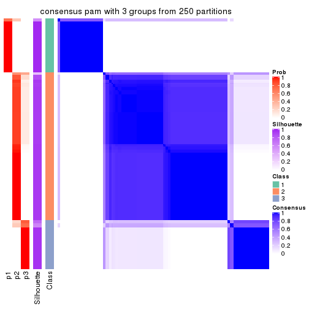
consensus_heatmap(res, k = 4)
consensus_heatmap(res, k = 5)
consensus_heatmap(res, k = 6)
Heatmaps for the membership of samples in all partitions to see how consistent they are:
membership_heatmap(res, k = 2)
membership_heatmap(res, k = 3)
membership_heatmap(res, k = 4)
membership_heatmap(res, k = 5)
membership_heatmap(res, k = 6)
As soon as we have had the classes for columns, we can look for signatures which are significantly different between classes which can be candidate marks for certain classes. Following are the heatmaps for signatures.
Signature heatmaps where rows are scaled:
get_signatures(res, k = 2)
get_signatures(res, k = 3)
get_signatures(res, k = 4)
get_signatures(res, k = 5)
get_signatures(res, k = 6)
Signature heatmaps where rows are not scaled:
get_signatures(res, k = 2, scale_rows = FALSE)
get_signatures(res, k = 3, scale_rows = FALSE)
get_signatures(res, k = 4, scale_rows = FALSE)
get_signatures(res, k = 5, scale_rows = FALSE)
get_signatures(res, k = 6, scale_rows = FALSE)
Compare the overlap of signatures from different k:
compare_signatures(res)
get_signature() returns a data frame invisibly. TO get the list of signatures, the function
call should be assigned to a variable explicitly. In following code, if plot argument is set
to FALSE, no heatmap is plotted while only the differential analysis is performed.
# code only for demonstration
tb = get_signature(res, k = ..., plot = FALSE)
An example of the output of tb is:
#> which_row fdr mean_1 mean_2 scaled_mean_1 scaled_mean_2 km
#> 1 38 0.042760348 8.373488 9.131774 -0.5533452 0.5164555 1
#> 2 40 0.018707592 7.106213 8.469186 -0.6173731 0.5762149 1
#> 3 55 0.019134737 10.221463 11.207825 -0.6159697 0.5749050 1
#> 4 59 0.006059896 5.921854 7.869574 -0.6899429 0.6439467 1
#> 5 60 0.018055526 8.928898 10.211722 -0.6204761 0.5791110 1
#> 6 98 0.009384629 15.714769 14.887706 0.6635654 -0.6193277 2
...
The columns in tb are:
which_row: row indices corresponding to the input matrix.fdr: FDR for the differential test. mean_x: The mean value in group x.scaled_mean_x: The mean value in group x after rows are scaled.km: Row groups if k-means clustering is applied to rows.UMAP plot which shows how samples are separated.
dimension_reduction(res, k = 2, method = "UMAP")

dimension_reduction(res, k = 3, method = "UMAP")
dimension_reduction(res, k = 4, method = "UMAP")
dimension_reduction(res, k = 5, method = "UMAP")
dimension_reduction(res, k = 6, method = "UMAP")
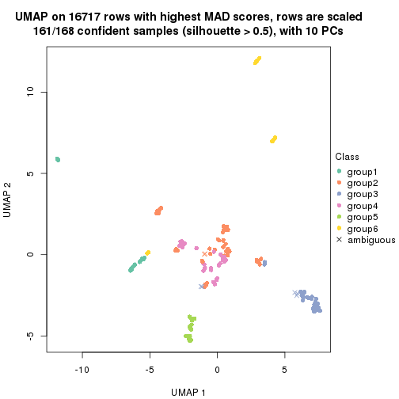
Following heatmap shows how subgroups are split when increasing k:
collect_classes(res)

If matrix rows can be associated to genes, consider to use GO_Enrichment(res,
...) to perform function enrichment for the signature genes.
The object with results only for a single top-value method and a single partition method can be extracted as:
res = res_list["MAD", "mclust"]
# you can also extract it by
# res = res_list["MAD:mclust"]
A summary of res and all the functions that can be applied to it:
res
#> A 'ConsensusPartition' object with k = 2, 3, 4, 5, 6.
#> On a matrix with 16717 rows and 168 columns.
#> Top rows (1000, 2000, 3000, 4000, 5000) are extracted by 'MAD' method.
#> Subgroups are detected by 'mclust' method.
#> Performed in total 1250 partitions by row resampling.
#> Best k for subgroups seems to be 4.
#>
#> Following methods can be applied to this 'ConsensusPartition' object:
#> [1] "cola_report" "collect_classes" "collect_plots"
#> [4] "collect_stats" "colnames" "compare_signatures"
#> [7] "consensus_heatmap" "dimension_reduction" "functional_enrichment"
#> [10] "get_anno_col" "get_anno" "get_classes"
#> [13] "get_consensus" "get_matrix" "get_membership"
#> [16] "get_param" "get_signatures" "get_stats"
#> [19] "is_best_k" "is_stable_k" "membership_heatmap"
#> [22] "ncol" "nrow" "plot_ecdf"
#> [25] "rownames" "select_partition_number" "show"
#> [28] "suggest_best_k" "test_to_known_factors"
collect_plots() function collects all the plots made from res for all k (number of partitions)
into one single page to provide an easy and fast comparison between different k.
collect_plots(res)
The plots are:
k and the heatmap of
predicted classes for each k.k.k.k.All the plots in panels can be made by individual functions and they are plotted later in this section.
select_partition_number() produces several plots showing different
statistics for choosing “optimized” k. There are following statistics:
k;k, the area increased is defined as \(A_k - A_{k-1}\).The detailed explanations of these statistics can be found in the cola vignette.
Generally speaking, lower PAC score, higher mean silhouette score or higher
concordance corresponds to better partition. Rand index and Jaccard index
measure how similar the current partition is compared to partition with k-1.
If they are too similar, we won't accept k is better than k-1.
select_partition_number(res)
The numeric values for all these statistics can be obtained by get_stats().
get_stats(res)
#> k 1-PAC mean_silhouette concordance area_increased Rand Jaccard
#> 2 2 0.796 0.956 0.967 0.4101 0.566 0.566
#> 3 3 0.549 0.867 0.904 0.3835 0.655 0.491
#> 4 4 0.960 0.944 0.967 0.1683 0.870 0.717
#> 5 5 0.834 0.887 0.875 0.0885 0.980 0.942
#> 6 6 0.879 0.896 0.948 0.1153 0.869 0.592
suggest_best_k() suggests the best \(k\) based on these statistics. The rules are as follows:
NA.suggest_best_k(res)
#> [1] 4
Following shows the table of the partitions (You need to click the show/hide
code output link to see it). The membership matrix (columns with name p*)
is inferred by
clue::cl_consensus()
function with the SE method. Basically the value in the membership matrix
represents the probability to belong to a certain group. The finall class
label for an item is determined with the group with highest probability it
belongs to.
In get_classes() function, the entropy is calculated from the membership
matrix and the silhouette score is calculated from the consensus matrix.
cbind(get_classes(res, k = 2), get_membership(res, k = 2))
#> class entropy silhouette p1 p2
#> SRR1768889 2 0.1843 0.972 0.028 0.972
#> SRR1768890 2 0.1843 0.972 0.028 0.972
#> SRR1768891 2 0.0000 0.992 0.000 1.000
#> SRR1768892 2 0.0000 0.992 0.000 1.000
#> SRR1768893 2 0.0000 0.992 0.000 1.000
#> SRR1768894 2 0.0000 0.992 0.000 1.000
#> SRR1768895 2 0.0000 0.992 0.000 1.000
#> SRR1768896 2 0.0000 0.992 0.000 1.000
#> SRR1768821 2 0.0000 0.992 0.000 1.000
#> SRR1768822 2 0.0000 0.992 0.000 1.000
#> SRR1768823 2 0.0000 0.992 0.000 1.000
#> SRR1768824 2 0.0000 0.992 0.000 1.000
#> SRR1768825 2 0.0000 0.992 0.000 1.000
#> SRR1768826 2 0.0000 0.992 0.000 1.000
#> SRR1768827 2 0.0000 0.992 0.000 1.000
#> SRR1768828 2 0.0000 0.992 0.000 1.000
#> SRR1768829 2 0.0000 0.992 0.000 1.000
#> SRR1768830 2 0.0000 0.992 0.000 1.000
#> SRR1768831 1 0.7453 0.851 0.788 0.212
#> SRR1768832 1 0.7453 0.851 0.788 0.212
#> SRR1768833 1 0.7453 0.851 0.788 0.212
#> SRR1768834 1 0.7453 0.851 0.788 0.212
#> SRR1768835 1 0.7453 0.851 0.788 0.212
#> SRR1768836 1 0.7453 0.851 0.788 0.212
#> SRR1768837 1 0.7453 0.851 0.788 0.212
#> SRR1768838 1 0.7453 0.851 0.788 0.212
#> SRR1768839 1 0.7453 0.851 0.788 0.212
#> SRR1768840 1 0.7453 0.851 0.788 0.212
#> SRR1768841 1 0.7453 0.851 0.788 0.212
#> SRR1768842 1 0.7453 0.851 0.788 0.212
#> SRR1768843 1 0.7453 0.851 0.788 0.212
#> SRR1768844 2 0.1843 0.972 0.028 0.972
#> SRR1768845 2 0.1843 0.972 0.028 0.972
#> SRR1768846 2 0.0672 0.988 0.008 0.992
#> SRR1768847 2 0.0672 0.988 0.008 0.992
#> SRR1768848 2 0.1843 0.972 0.028 0.972
#> SRR1768849 2 0.1843 0.972 0.028 0.972
#> SRR1768850 2 0.0376 0.991 0.004 0.996
#> SRR1768851 2 0.0376 0.991 0.004 0.996
#> SRR1768852 2 0.0376 0.991 0.004 0.996
#> SRR1768853 2 0.0376 0.991 0.004 0.996
#> SRR1768854 2 0.0376 0.991 0.004 0.996
#> SRR1768855 2 0.0376 0.991 0.004 0.996
#> SRR1768856 2 0.0376 0.991 0.004 0.996
#> SRR1768857 2 0.0376 0.991 0.004 0.996
#> SRR1768858 2 0.1633 0.975 0.024 0.976
#> SRR1768859 2 0.1633 0.975 0.024 0.976
#> SRR1768860 2 0.1633 0.975 0.024 0.976
#> SRR1768861 2 0.0000 0.992 0.000 1.000
#> SRR1768862 2 0.0000 0.992 0.000 1.000
#> SRR1768863 2 0.0000 0.992 0.000 1.000
#> SRR1768864 2 0.0000 0.992 0.000 1.000
#> SRR1768865 2 0.1184 0.982 0.016 0.984
#> SRR1768866 2 0.1184 0.982 0.016 0.984
#> SRR1768867 2 0.0000 0.992 0.000 1.000
#> SRR1768868 2 0.0000 0.992 0.000 1.000
#> SRR1768869 2 0.0000 0.992 0.000 1.000
#> SRR1768870 2 0.0000 0.992 0.000 1.000
#> SRR1768871 2 0.0000 0.992 0.000 1.000
#> SRR1768872 2 0.0000 0.992 0.000 1.000
#> SRR1768873 2 0.0000 0.992 0.000 1.000
#> SRR1768874 2 0.0000 0.992 0.000 1.000
#> SRR1768875 2 0.1843 0.972 0.028 0.972
#> SRR1768876 2 0.1843 0.972 0.028 0.972
#> SRR1768877 2 0.1843 0.972 0.028 0.972
#> SRR1768878 2 0.1843 0.972 0.028 0.972
#> SRR1768879 2 0.0376 0.991 0.004 0.996
#> SRR1768880 2 0.0376 0.991 0.004 0.996
#> SRR1768881 2 0.0000 0.992 0.000 1.000
#> SRR1768882 2 0.0000 0.992 0.000 1.000
#> SRR1768883 2 0.0376 0.991 0.004 0.996
#> SRR1768884 2 0.0376 0.991 0.004 0.996
#> SRR1768885 2 0.0376 0.991 0.004 0.996
#> SRR1768886 2 0.0376 0.991 0.004 0.996
#> SRR1768887 2 0.1843 0.972 0.028 0.972
#> SRR1768888 2 0.1843 0.972 0.028 0.972
#> SRR1768897 2 0.0000 0.992 0.000 1.000
#> SRR1768898 2 0.0000 0.992 0.000 1.000
#> SRR1768899 2 0.0000 0.992 0.000 1.000
#> SRR1768900 2 0.0000 0.992 0.000 1.000
#> SRR1768901 2 0.0000 0.992 0.000 1.000
#> SRR1768902 2 0.0000 0.992 0.000 1.000
#> SRR1768903 2 0.0000 0.992 0.000 1.000
#> SRR1768904 2 0.0000 0.992 0.000 1.000
#> SRR1768905 2 0.0000 0.992 0.000 1.000
#> SRR1768906 2 0.0000 0.992 0.000 1.000
#> SRR1768907 2 0.0000 0.992 0.000 1.000
#> SRR1768908 2 0.0000 0.992 0.000 1.000
#> SRR1768909 2 0.0000 0.992 0.000 1.000
#> SRR1768910 2 0.0000 0.992 0.000 1.000
#> SRR1768911 2 0.0000 0.992 0.000 1.000
#> SRR1768912 2 0.0000 0.992 0.000 1.000
#> SRR1768913 2 0.0000 0.992 0.000 1.000
#> SRR1768914 2 0.0000 0.992 0.000 1.000
#> SRR1768915 2 0.0000 0.992 0.000 1.000
#> SRR1768916 2 0.0000 0.992 0.000 1.000
#> SRR1768917 2 0.0000 0.992 0.000 1.000
#> SRR1768918 2 0.0000 0.992 0.000 1.000
#> SRR1768919 2 0.0000 0.992 0.000 1.000
#> SRR1768920 2 0.0000 0.992 0.000 1.000
#> SRR1768921 2 0.0000 0.992 0.000 1.000
#> SRR1768922 2 0.0376 0.991 0.004 0.996
#> SRR1768923 2 0.0376 0.991 0.004 0.996
#> SRR1768924 1 0.7453 0.851 0.788 0.212
#> SRR1768925 1 0.7453 0.851 0.788 0.212
#> SRR1768926 1 0.7453 0.851 0.788 0.212
#> SRR1768927 1 0.7453 0.851 0.788 0.212
#> SRR1768928 1 0.7453 0.851 0.788 0.212
#> SRR1768929 1 0.7453 0.851 0.788 0.212
#> SRR1768930 2 0.0000 0.992 0.000 1.000
#> SRR1768931 2 0.0000 0.992 0.000 1.000
#> SRR1768932 2 0.0000 0.992 0.000 1.000
#> SRR1768933 2 0.0000 0.992 0.000 1.000
#> SRR1768934 2 0.0000 0.992 0.000 1.000
#> SRR1768935 2 0.0000 0.992 0.000 1.000
#> SRR1768936 2 0.0000 0.992 0.000 1.000
#> SRR1768937 2 0.0000 0.992 0.000 1.000
#> SRR1768938 2 0.0000 0.992 0.000 1.000
#> SRR1768939 2 0.0000 0.992 0.000 1.000
#> SRR1768940 2 0.0000 0.992 0.000 1.000
#> SRR1768941 2 0.0000 0.992 0.000 1.000
#> SRR1768942 2 0.0000 0.992 0.000 1.000
#> SRR1768943 2 0.0000 0.992 0.000 1.000
#> SRR1768944 2 0.0000 0.992 0.000 1.000
#> SRR1768945 2 0.0000 0.992 0.000 1.000
#> SRR1768946 2 0.0000 0.992 0.000 1.000
#> SRR1768947 2 0.0376 0.991 0.004 0.996
#> SRR1768948 2 0.0376 0.991 0.004 0.996
#> SRR1768949 2 0.0000 0.992 0.000 1.000
#> SRR1768950 2 0.0000 0.992 0.000 1.000
#> SRR1768954 1 0.3114 0.915 0.944 0.056
#> SRR1768955 1 0.3114 0.915 0.944 0.056
#> SRR1768956 1 0.3114 0.915 0.944 0.056
#> SRR1768957 1 0.3114 0.915 0.944 0.056
#> SRR1768958 1 0.3114 0.915 0.944 0.056
#> SRR1768959 1 0.3114 0.915 0.944 0.056
#> SRR1768960 1 0.3114 0.915 0.944 0.056
#> SRR1768961 1 0.3114 0.915 0.944 0.056
#> SRR1768952 2 0.0000 0.992 0.000 1.000
#> SRR1768953 2 0.0000 0.992 0.000 1.000
#> SRR1768962 1 0.0000 0.907 1.000 0.000
#> SRR1768963 1 0.0000 0.907 1.000 0.000
#> SRR1768964 1 0.0000 0.907 1.000 0.000
#> SRR1768965 1 0.0000 0.907 1.000 0.000
#> SRR1768966 1 0.0000 0.907 1.000 0.000
#> SRR1768967 1 0.0000 0.907 1.000 0.000
#> SRR1768968 1 0.0000 0.907 1.000 0.000
#> SRR1768969 1 0.0000 0.907 1.000 0.000
#> SRR1768970 1 0.0000 0.907 1.000 0.000
#> SRR1768971 1 0.0000 0.907 1.000 0.000
#> SRR1768972 1 0.3114 0.915 0.944 0.056
#> SRR1768973 1 0.3114 0.915 0.944 0.056
#> SRR1768974 1 0.3114 0.915 0.944 0.056
#> SRR1768975 1 0.3114 0.915 0.944 0.056
#> SRR1768976 1 0.3114 0.915 0.944 0.056
#> SRR1768977 1 0.3114 0.915 0.944 0.056
#> SRR1768978 1 0.0000 0.907 1.000 0.000
#> SRR1768979 1 0.0000 0.907 1.000 0.000
#> SRR1768980 1 0.0000 0.907 1.000 0.000
#> SRR1768981 1 0.0000 0.907 1.000 0.000
#> SRR1768982 1 0.0000 0.907 1.000 0.000
#> SRR1768983 1 0.0000 0.907 1.000 0.000
#> SRR1768984 2 0.5629 0.838 0.132 0.868
#> SRR1768985 2 0.5629 0.838 0.132 0.868
#> SRR1768986 1 0.0000 0.907 1.000 0.000
#> SRR1768987 1 0.0000 0.907 1.000 0.000
#> SRR1768988 1 0.0000 0.907 1.000 0.000
#> SRR1768989 1 0.0000 0.907 1.000 0.000
cbind(get_classes(res, k = 3), get_membership(res, k = 3))
#> class entropy silhouette p1 p2 p3
#> SRR1768889 3 0.2261 0.968 0.000 0.068 0.932
#> SRR1768890 3 0.2261 0.968 0.000 0.068 0.932
#> SRR1768891 2 0.2878 0.865 0.000 0.904 0.096
#> SRR1768892 2 0.2878 0.865 0.000 0.904 0.096
#> SRR1768893 2 0.3482 0.850 0.000 0.872 0.128
#> SRR1768894 2 0.3412 0.853 0.000 0.876 0.124
#> SRR1768895 2 0.2878 0.865 0.000 0.904 0.096
#> SRR1768896 2 0.2878 0.865 0.000 0.904 0.096
#> SRR1768821 2 0.2878 0.865 0.000 0.904 0.096
#> SRR1768822 2 0.2878 0.865 0.000 0.904 0.096
#> SRR1768823 2 0.2878 0.865 0.000 0.904 0.096
#> SRR1768824 2 0.2878 0.865 0.000 0.904 0.096
#> SRR1768825 2 0.2878 0.865 0.000 0.904 0.096
#> SRR1768826 2 0.2878 0.865 0.000 0.904 0.096
#> SRR1768827 2 0.2537 0.869 0.000 0.920 0.080
#> SRR1768828 2 0.2537 0.869 0.000 0.920 0.080
#> SRR1768829 2 0.2878 0.865 0.000 0.904 0.096
#> SRR1768830 2 0.2878 0.865 0.000 0.904 0.096
#> SRR1768831 2 0.6424 0.707 0.180 0.752 0.068
#> SRR1768832 2 0.6424 0.707 0.180 0.752 0.068
#> SRR1768833 2 0.6476 0.702 0.184 0.748 0.068
#> SRR1768834 2 0.6476 0.702 0.184 0.748 0.068
#> SRR1768835 2 0.6476 0.702 0.184 0.748 0.068
#> SRR1768836 2 0.6476 0.702 0.184 0.748 0.068
#> SRR1768837 2 0.6476 0.702 0.184 0.748 0.068
#> SRR1768838 2 0.6476 0.702 0.184 0.748 0.068
#> SRR1768839 2 0.6476 0.702 0.184 0.748 0.068
#> SRR1768840 2 0.6476 0.702 0.184 0.748 0.068
#> SRR1768841 2 0.6476 0.702 0.184 0.748 0.068
#> SRR1768842 2 0.6476 0.702 0.184 0.748 0.068
#> SRR1768843 2 0.6476 0.702 0.184 0.748 0.068
#> SRR1768844 3 0.2261 0.968 0.000 0.068 0.932
#> SRR1768845 3 0.2261 0.968 0.000 0.068 0.932
#> SRR1768846 3 0.2261 0.968 0.000 0.068 0.932
#> SRR1768847 3 0.2261 0.968 0.000 0.068 0.932
#> SRR1768848 3 0.2261 0.968 0.000 0.068 0.932
#> SRR1768849 3 0.2261 0.968 0.000 0.068 0.932
#> SRR1768850 3 0.2261 0.968 0.000 0.068 0.932
#> SRR1768851 3 0.2261 0.968 0.000 0.068 0.932
#> SRR1768852 2 0.2356 0.847 0.000 0.928 0.072
#> SRR1768853 2 0.2356 0.847 0.000 0.928 0.072
#> SRR1768854 2 0.2356 0.847 0.000 0.928 0.072
#> SRR1768855 3 0.2261 0.968 0.000 0.068 0.932
#> SRR1768856 3 0.2261 0.968 0.000 0.068 0.932
#> SRR1768857 3 0.2261 0.968 0.000 0.068 0.932
#> SRR1768858 3 0.2261 0.968 0.000 0.068 0.932
#> SRR1768859 3 0.2261 0.968 0.000 0.068 0.932
#> SRR1768860 3 0.2261 0.968 0.000 0.068 0.932
#> SRR1768861 2 0.3267 0.857 0.000 0.884 0.116
#> SRR1768862 2 0.3267 0.857 0.000 0.884 0.116
#> SRR1768863 2 0.3412 0.853 0.000 0.876 0.124
#> SRR1768864 2 0.3340 0.855 0.000 0.880 0.120
#> SRR1768865 2 0.3207 0.855 0.012 0.904 0.084
#> SRR1768866 2 0.3207 0.855 0.012 0.904 0.084
#> SRR1768867 2 0.1411 0.875 0.000 0.964 0.036
#> SRR1768868 2 0.1411 0.875 0.000 0.964 0.036
#> SRR1768869 2 0.2356 0.847 0.000 0.928 0.072
#> SRR1768870 2 0.2356 0.847 0.000 0.928 0.072
#> SRR1768871 2 0.2356 0.847 0.000 0.928 0.072
#> SRR1768872 2 0.2356 0.847 0.000 0.928 0.072
#> SRR1768873 2 0.2261 0.846 0.000 0.932 0.068
#> SRR1768874 2 0.2261 0.846 0.000 0.932 0.068
#> SRR1768875 3 0.2261 0.968 0.000 0.068 0.932
#> SRR1768876 3 0.2261 0.968 0.000 0.068 0.932
#> SRR1768877 3 0.2261 0.968 0.000 0.068 0.932
#> SRR1768878 3 0.2261 0.968 0.000 0.068 0.932
#> SRR1768879 2 0.2866 0.850 0.008 0.916 0.076
#> SRR1768880 2 0.2866 0.850 0.008 0.916 0.076
#> SRR1768881 2 0.0424 0.873 0.000 0.992 0.008
#> SRR1768882 2 0.0424 0.873 0.000 0.992 0.008
#> SRR1768883 3 0.2261 0.968 0.000 0.068 0.932
#> SRR1768884 3 0.2261 0.968 0.000 0.068 0.932
#> SRR1768885 3 0.2261 0.968 0.000 0.068 0.932
#> SRR1768886 3 0.2261 0.968 0.000 0.068 0.932
#> SRR1768887 3 0.2261 0.968 0.000 0.068 0.932
#> SRR1768888 3 0.2261 0.968 0.000 0.068 0.932
#> SRR1768897 2 0.3267 0.857 0.000 0.884 0.116
#> SRR1768898 2 0.3267 0.857 0.000 0.884 0.116
#> SRR1768899 2 0.3267 0.857 0.000 0.884 0.116
#> SRR1768900 2 0.3267 0.857 0.000 0.884 0.116
#> SRR1768901 2 0.3619 0.846 0.000 0.864 0.136
#> SRR1768902 2 0.3619 0.846 0.000 0.864 0.136
#> SRR1768903 2 0.3619 0.846 0.000 0.864 0.136
#> SRR1768904 2 0.3267 0.857 0.000 0.884 0.116
#> SRR1768905 2 0.3267 0.857 0.000 0.884 0.116
#> SRR1768906 2 0.3267 0.857 0.000 0.884 0.116
#> SRR1768907 2 0.3941 0.826 0.000 0.844 0.156
#> SRR1768908 2 0.3941 0.826 0.000 0.844 0.156
#> SRR1768909 2 0.4002 0.822 0.000 0.840 0.160
#> SRR1768910 2 0.4002 0.822 0.000 0.840 0.160
#> SRR1768911 2 0.4002 0.822 0.000 0.840 0.160
#> SRR1768912 2 0.4002 0.822 0.000 0.840 0.160
#> SRR1768913 2 0.3879 0.830 0.000 0.848 0.152
#> SRR1768914 2 0.3879 0.830 0.000 0.848 0.152
#> SRR1768915 2 0.3941 0.826 0.000 0.844 0.156
#> SRR1768916 2 0.0237 0.873 0.000 0.996 0.004
#> SRR1768917 2 0.0000 0.872 0.000 1.000 0.000
#> SRR1768918 2 0.4002 0.822 0.000 0.840 0.160
#> SRR1768919 2 0.4002 0.822 0.000 0.840 0.160
#> SRR1768920 2 0.1163 0.876 0.000 0.972 0.028
#> SRR1768921 2 0.1163 0.876 0.000 0.972 0.028
#> SRR1768922 3 0.5948 0.514 0.000 0.360 0.640
#> SRR1768923 3 0.5948 0.514 0.000 0.360 0.640
#> SRR1768924 2 0.6476 0.702 0.184 0.748 0.068
#> SRR1768925 2 0.6476 0.702 0.184 0.748 0.068
#> SRR1768926 2 0.6476 0.702 0.184 0.748 0.068
#> SRR1768927 2 0.6476 0.702 0.184 0.748 0.068
#> SRR1768928 2 0.6476 0.702 0.184 0.748 0.068
#> SRR1768929 2 0.6476 0.702 0.184 0.748 0.068
#> SRR1768930 2 0.0237 0.873 0.000 0.996 0.004
#> SRR1768931 2 0.0424 0.874 0.000 0.992 0.008
#> SRR1768932 2 0.0747 0.875 0.000 0.984 0.016
#> SRR1768933 2 0.0000 0.872 0.000 1.000 0.000
#> SRR1768934 2 0.0000 0.872 0.000 1.000 0.000
#> SRR1768935 2 0.0000 0.872 0.000 1.000 0.000
#> SRR1768936 2 0.0237 0.873 0.000 0.996 0.004
#> SRR1768937 2 0.0237 0.873 0.000 0.996 0.004
#> SRR1768938 2 0.0237 0.873 0.000 0.996 0.004
#> SRR1768939 2 0.1163 0.876 0.000 0.972 0.028
#> SRR1768940 2 0.1163 0.876 0.000 0.972 0.028
#> SRR1768941 2 0.1163 0.876 0.000 0.972 0.028
#> SRR1768942 2 0.1163 0.876 0.000 0.972 0.028
#> SRR1768943 2 0.1163 0.876 0.000 0.972 0.028
#> SRR1768944 2 0.1163 0.876 0.000 0.972 0.028
#> SRR1768945 2 0.1163 0.876 0.000 0.972 0.028
#> SRR1768946 2 0.1163 0.876 0.000 0.972 0.028
#> SRR1768947 3 0.2448 0.960 0.000 0.076 0.924
#> SRR1768948 3 0.2448 0.960 0.000 0.076 0.924
#> SRR1768949 3 0.4235 0.831 0.000 0.176 0.824
#> SRR1768950 2 0.2356 0.847 0.000 0.928 0.072
#> SRR1768954 1 0.3116 0.907 0.892 0.108 0.000
#> SRR1768955 1 0.3116 0.907 0.892 0.108 0.000
#> SRR1768956 1 0.3116 0.907 0.892 0.108 0.000
#> SRR1768957 1 0.3116 0.907 0.892 0.108 0.000
#> SRR1768958 1 0.3116 0.907 0.892 0.108 0.000
#> SRR1768959 1 0.3116 0.907 0.892 0.108 0.000
#> SRR1768960 1 0.3116 0.907 0.892 0.108 0.000
#> SRR1768961 1 0.3116 0.907 0.892 0.108 0.000
#> SRR1768952 2 0.3267 0.857 0.000 0.884 0.116
#> SRR1768953 2 0.3267 0.857 0.000 0.884 0.116
#> SRR1768962 1 0.0000 0.936 1.000 0.000 0.000
#> SRR1768963 1 0.0000 0.936 1.000 0.000 0.000
#> SRR1768964 1 0.0000 0.936 1.000 0.000 0.000
#> SRR1768965 1 0.0000 0.936 1.000 0.000 0.000
#> SRR1768966 1 0.0000 0.936 1.000 0.000 0.000
#> SRR1768967 1 0.0000 0.936 1.000 0.000 0.000
#> SRR1768968 1 0.0000 0.936 1.000 0.000 0.000
#> SRR1768969 1 0.0000 0.936 1.000 0.000 0.000
#> SRR1768970 1 0.0000 0.936 1.000 0.000 0.000
#> SRR1768971 1 0.0000 0.936 1.000 0.000 0.000
#> SRR1768972 1 0.3116 0.907 0.892 0.108 0.000
#> SRR1768973 1 0.3116 0.907 0.892 0.108 0.000
#> SRR1768974 1 0.3116 0.907 0.892 0.108 0.000
#> SRR1768975 1 0.3116 0.907 0.892 0.108 0.000
#> SRR1768976 1 0.3116 0.907 0.892 0.108 0.000
#> SRR1768977 1 0.3116 0.907 0.892 0.108 0.000
#> SRR1768978 1 0.0000 0.936 1.000 0.000 0.000
#> SRR1768979 1 0.0000 0.936 1.000 0.000 0.000
#> SRR1768980 1 0.0000 0.936 1.000 0.000 0.000
#> SRR1768981 1 0.0000 0.936 1.000 0.000 0.000
#> SRR1768982 1 0.0000 0.936 1.000 0.000 0.000
#> SRR1768983 1 0.0000 0.936 1.000 0.000 0.000
#> SRR1768984 2 0.4087 0.844 0.052 0.880 0.068
#> SRR1768985 2 0.4087 0.844 0.052 0.880 0.068
#> SRR1768986 1 0.0000 0.936 1.000 0.000 0.000
#> SRR1768987 1 0.0000 0.936 1.000 0.000 0.000
#> SRR1768988 1 0.0000 0.936 1.000 0.000 0.000
#> SRR1768989 1 0.0000 0.936 1.000 0.000 0.000
cbind(get_classes(res, k = 4), get_membership(res, k = 4))
#> class entropy silhouette p1 p2 p3 p4
#> SRR1768889 3 0.0000 0.985 0.000 0.000 1.000 0.000
#> SRR1768890 3 0.0000 0.985 0.000 0.000 1.000 0.000
#> SRR1768891 2 0.0336 0.982 0.000 0.992 0.008 0.000
#> SRR1768892 2 0.0336 0.982 0.000 0.992 0.008 0.000
#> SRR1768893 2 0.0336 0.982 0.000 0.992 0.008 0.000
#> SRR1768894 2 0.0336 0.982 0.000 0.992 0.008 0.000
#> SRR1768895 2 0.0000 0.982 0.000 1.000 0.000 0.000
#> SRR1768896 2 0.0000 0.982 0.000 1.000 0.000 0.000
#> SRR1768821 2 0.0000 0.982 0.000 1.000 0.000 0.000
#> SRR1768822 2 0.0000 0.982 0.000 1.000 0.000 0.000
#> SRR1768823 2 0.0000 0.982 0.000 1.000 0.000 0.000
#> SRR1768824 2 0.0000 0.982 0.000 1.000 0.000 0.000
#> SRR1768825 2 0.0000 0.982 0.000 1.000 0.000 0.000
#> SRR1768826 2 0.0000 0.982 0.000 1.000 0.000 0.000
#> SRR1768827 2 0.0188 0.981 0.000 0.996 0.004 0.000
#> SRR1768828 2 0.0188 0.981 0.000 0.996 0.004 0.000
#> SRR1768829 2 0.0000 0.982 0.000 1.000 0.000 0.000
#> SRR1768830 2 0.0000 0.982 0.000 1.000 0.000 0.000
#> SRR1768831 4 0.0000 1.000 0.000 0.000 0.000 1.000
#> SRR1768832 4 0.0000 1.000 0.000 0.000 0.000 1.000
#> SRR1768833 4 0.0000 1.000 0.000 0.000 0.000 1.000
#> SRR1768834 4 0.0000 1.000 0.000 0.000 0.000 1.000
#> SRR1768835 4 0.0000 1.000 0.000 0.000 0.000 1.000
#> SRR1768836 4 0.0000 1.000 0.000 0.000 0.000 1.000
#> SRR1768837 4 0.0000 1.000 0.000 0.000 0.000 1.000
#> SRR1768838 4 0.0000 1.000 0.000 0.000 0.000 1.000
#> SRR1768839 4 0.0000 1.000 0.000 0.000 0.000 1.000
#> SRR1768840 4 0.0000 1.000 0.000 0.000 0.000 1.000
#> SRR1768841 4 0.0000 1.000 0.000 0.000 0.000 1.000
#> SRR1768842 4 0.0000 1.000 0.000 0.000 0.000 1.000
#> SRR1768843 4 0.0000 1.000 0.000 0.000 0.000 1.000
#> SRR1768844 3 0.0000 0.985 0.000 0.000 1.000 0.000
#> SRR1768845 3 0.0000 0.985 0.000 0.000 1.000 0.000
#> SRR1768846 3 0.0000 0.985 0.000 0.000 1.000 0.000
#> SRR1768847 3 0.0000 0.985 0.000 0.000 1.000 0.000
#> SRR1768848 3 0.0000 0.985 0.000 0.000 1.000 0.000
#> SRR1768849 3 0.0000 0.985 0.000 0.000 1.000 0.000
#> SRR1768850 3 0.0000 0.985 0.000 0.000 1.000 0.000
#> SRR1768851 3 0.0000 0.985 0.000 0.000 1.000 0.000
#> SRR1768852 2 0.1209 0.960 0.004 0.964 0.032 0.000
#> SRR1768853 2 0.1209 0.960 0.004 0.964 0.032 0.000
#> SRR1768854 2 0.1209 0.960 0.004 0.964 0.032 0.000
#> SRR1768855 3 0.0000 0.985 0.000 0.000 1.000 0.000
#> SRR1768856 3 0.0000 0.985 0.000 0.000 1.000 0.000
#> SRR1768857 3 0.0000 0.985 0.000 0.000 1.000 0.000
#> SRR1768858 3 0.0000 0.985 0.000 0.000 1.000 0.000
#> SRR1768859 3 0.0000 0.985 0.000 0.000 1.000 0.000
#> SRR1768860 3 0.0000 0.985 0.000 0.000 1.000 0.000
#> SRR1768861 2 0.0336 0.982 0.000 0.992 0.008 0.000
#> SRR1768862 2 0.0336 0.982 0.000 0.992 0.008 0.000
#> SRR1768863 2 0.0336 0.982 0.000 0.992 0.008 0.000
#> SRR1768864 2 0.0336 0.982 0.000 0.992 0.008 0.000
#> SRR1768865 2 0.2048 0.928 0.008 0.928 0.064 0.000
#> SRR1768866 2 0.2048 0.928 0.008 0.928 0.064 0.000
#> SRR1768867 2 0.0000 0.982 0.000 1.000 0.000 0.000
#> SRR1768868 2 0.0000 0.982 0.000 1.000 0.000 0.000
#> SRR1768869 2 0.0524 0.979 0.000 0.988 0.004 0.008
#> SRR1768870 2 0.0524 0.979 0.000 0.988 0.004 0.008
#> SRR1768871 2 0.0657 0.977 0.004 0.984 0.000 0.012
#> SRR1768872 2 0.0657 0.977 0.004 0.984 0.000 0.012
#> SRR1768873 2 0.0524 0.979 0.000 0.988 0.004 0.008
#> SRR1768874 2 0.0524 0.979 0.000 0.988 0.004 0.008
#> SRR1768875 3 0.0000 0.985 0.000 0.000 1.000 0.000
#> SRR1768876 3 0.0000 0.985 0.000 0.000 1.000 0.000
#> SRR1768877 3 0.0000 0.985 0.000 0.000 1.000 0.000
#> SRR1768878 3 0.0000 0.985 0.000 0.000 1.000 0.000
#> SRR1768879 2 0.1356 0.958 0.008 0.960 0.032 0.000
#> SRR1768880 2 0.1356 0.958 0.008 0.960 0.032 0.000
#> SRR1768881 2 0.0000 0.982 0.000 1.000 0.000 0.000
#> SRR1768882 2 0.0000 0.982 0.000 1.000 0.000 0.000
#> SRR1768883 3 0.0000 0.985 0.000 0.000 1.000 0.000
#> SRR1768884 3 0.0000 0.985 0.000 0.000 1.000 0.000
#> SRR1768885 3 0.0000 0.985 0.000 0.000 1.000 0.000
#> SRR1768886 3 0.0000 0.985 0.000 0.000 1.000 0.000
#> SRR1768887 3 0.0000 0.985 0.000 0.000 1.000 0.000
#> SRR1768888 3 0.0000 0.985 0.000 0.000 1.000 0.000
#> SRR1768897 2 0.0336 0.982 0.000 0.992 0.008 0.000
#> SRR1768898 2 0.0336 0.982 0.000 0.992 0.008 0.000
#> SRR1768899 2 0.0336 0.982 0.000 0.992 0.008 0.000
#> SRR1768900 2 0.0336 0.982 0.000 0.992 0.008 0.000
#> SRR1768901 2 0.0707 0.975 0.000 0.980 0.020 0.000
#> SRR1768902 2 0.0707 0.975 0.000 0.980 0.020 0.000
#> SRR1768903 2 0.0921 0.969 0.000 0.972 0.028 0.000
#> SRR1768904 2 0.0336 0.982 0.000 0.992 0.008 0.000
#> SRR1768905 2 0.0336 0.982 0.000 0.992 0.008 0.000
#> SRR1768906 2 0.0336 0.982 0.000 0.992 0.008 0.000
#> SRR1768907 2 0.0336 0.982 0.000 0.992 0.008 0.000
#> SRR1768908 2 0.0336 0.982 0.000 0.992 0.008 0.000
#> SRR1768909 2 0.0336 0.982 0.000 0.992 0.008 0.000
#> SRR1768910 2 0.0336 0.982 0.000 0.992 0.008 0.000
#> SRR1768911 2 0.0336 0.982 0.000 0.992 0.008 0.000
#> SRR1768912 2 0.0336 0.982 0.000 0.992 0.008 0.000
#> SRR1768913 2 0.0336 0.982 0.000 0.992 0.008 0.000
#> SRR1768914 2 0.0336 0.982 0.000 0.992 0.008 0.000
#> SRR1768915 2 0.0336 0.982 0.000 0.992 0.008 0.000
#> SRR1768916 2 0.0469 0.980 0.000 0.988 0.012 0.000
#> SRR1768917 2 0.0000 0.982 0.000 1.000 0.000 0.000
#> SRR1768918 2 0.0336 0.982 0.000 0.992 0.008 0.000
#> SRR1768919 2 0.0336 0.982 0.000 0.992 0.008 0.000
#> SRR1768920 2 0.0188 0.981 0.000 0.996 0.004 0.000
#> SRR1768921 2 0.0188 0.981 0.000 0.996 0.004 0.000
#> SRR1768922 2 0.4855 0.344 0.000 0.600 0.400 0.000
#> SRR1768923 2 0.4855 0.344 0.000 0.600 0.400 0.000
#> SRR1768924 4 0.0000 1.000 0.000 0.000 0.000 1.000
#> SRR1768925 4 0.0000 1.000 0.000 0.000 0.000 1.000
#> SRR1768926 4 0.0000 1.000 0.000 0.000 0.000 1.000
#> SRR1768927 4 0.0000 1.000 0.000 0.000 0.000 1.000
#> SRR1768928 4 0.0000 1.000 0.000 0.000 0.000 1.000
#> SRR1768929 4 0.0000 1.000 0.000 0.000 0.000 1.000
#> SRR1768930 2 0.0000 0.982 0.000 1.000 0.000 0.000
#> SRR1768931 2 0.0000 0.982 0.000 1.000 0.000 0.000
#> SRR1768932 2 0.0000 0.982 0.000 1.000 0.000 0.000
#> SRR1768933 2 0.0000 0.982 0.000 1.000 0.000 0.000
#> SRR1768934 2 0.0000 0.982 0.000 1.000 0.000 0.000
#> SRR1768935 2 0.0000 0.982 0.000 1.000 0.000 0.000
#> SRR1768936 2 0.0000 0.982 0.000 1.000 0.000 0.000
#> SRR1768937 2 0.0000 0.982 0.000 1.000 0.000 0.000
#> SRR1768938 2 0.0000 0.982 0.000 1.000 0.000 0.000
#> SRR1768939 2 0.0188 0.981 0.000 0.996 0.004 0.000
#> SRR1768940 2 0.0188 0.981 0.000 0.996 0.004 0.000
#> SRR1768941 2 0.0188 0.981 0.000 0.996 0.004 0.000
#> SRR1768942 2 0.0188 0.981 0.000 0.996 0.004 0.000
#> SRR1768943 2 0.0188 0.981 0.000 0.996 0.004 0.000
#> SRR1768944 2 0.0188 0.981 0.000 0.996 0.004 0.000
#> SRR1768945 2 0.0188 0.981 0.000 0.996 0.004 0.000
#> SRR1768946 2 0.0188 0.981 0.000 0.996 0.004 0.000
#> SRR1768947 3 0.0592 0.965 0.000 0.016 0.984 0.000
#> SRR1768948 3 0.0592 0.965 0.000 0.016 0.984 0.000
#> SRR1768949 3 0.4008 0.607 0.000 0.244 0.756 0.000
#> SRR1768950 2 0.0188 0.981 0.000 0.996 0.004 0.000
#> SRR1768954 1 0.4134 0.787 0.740 0.000 0.000 0.260
#> SRR1768955 1 0.4134 0.787 0.740 0.000 0.000 0.260
#> SRR1768956 1 0.4134 0.787 0.740 0.000 0.000 0.260
#> SRR1768957 1 0.4134 0.787 0.740 0.000 0.000 0.260
#> SRR1768958 1 0.4134 0.787 0.740 0.000 0.000 0.260
#> SRR1768959 1 0.4134 0.787 0.740 0.000 0.000 0.260
#> SRR1768960 1 0.4134 0.787 0.740 0.000 0.000 0.260
#> SRR1768961 1 0.4134 0.787 0.740 0.000 0.000 0.260
#> SRR1768952 2 0.0336 0.982 0.000 0.992 0.008 0.000
#> SRR1768953 2 0.0336 0.982 0.000 0.992 0.008 0.000
#> SRR1768962 1 0.0000 0.876 1.000 0.000 0.000 0.000
#> SRR1768963 1 0.0000 0.876 1.000 0.000 0.000 0.000
#> SRR1768964 1 0.0000 0.876 1.000 0.000 0.000 0.000
#> SRR1768965 1 0.0000 0.876 1.000 0.000 0.000 0.000
#> SRR1768966 1 0.0000 0.876 1.000 0.000 0.000 0.000
#> SRR1768967 1 0.0000 0.876 1.000 0.000 0.000 0.000
#> SRR1768968 1 0.0000 0.876 1.000 0.000 0.000 0.000
#> SRR1768969 1 0.0000 0.876 1.000 0.000 0.000 0.000
#> SRR1768970 1 0.0000 0.876 1.000 0.000 0.000 0.000
#> SRR1768971 1 0.0000 0.876 1.000 0.000 0.000 0.000
#> SRR1768972 1 0.4134 0.787 0.740 0.000 0.000 0.260
#> SRR1768973 1 0.4134 0.787 0.740 0.000 0.000 0.260
#> SRR1768974 1 0.4134 0.787 0.740 0.000 0.000 0.260
#> SRR1768975 1 0.4134 0.787 0.740 0.000 0.000 0.260
#> SRR1768976 1 0.4134 0.787 0.740 0.000 0.000 0.260
#> SRR1768977 1 0.4134 0.787 0.740 0.000 0.000 0.260
#> SRR1768978 1 0.0000 0.876 1.000 0.000 0.000 0.000
#> SRR1768979 1 0.0000 0.876 1.000 0.000 0.000 0.000
#> SRR1768980 1 0.0000 0.876 1.000 0.000 0.000 0.000
#> SRR1768981 1 0.0000 0.876 1.000 0.000 0.000 0.000
#> SRR1768982 1 0.0000 0.876 1.000 0.000 0.000 0.000
#> SRR1768983 1 0.0000 0.876 1.000 0.000 0.000 0.000
#> SRR1768984 2 0.0188 0.981 0.000 0.996 0.000 0.004
#> SRR1768985 2 0.0188 0.981 0.000 0.996 0.000 0.004
#> SRR1768986 1 0.0000 0.876 1.000 0.000 0.000 0.000
#> SRR1768987 1 0.0000 0.876 1.000 0.000 0.000 0.000
#> SRR1768988 1 0.0000 0.876 1.000 0.000 0.000 0.000
#> SRR1768989 1 0.0000 0.876 1.000 0.000 0.000 0.000
cbind(get_classes(res, k = 5), get_membership(res, k = 5))
#> class entropy silhouette p1 p2 p3 p4 p5
#> SRR1768889 3 0.0000 0.985 0.000 0.0 1.000 0.000 0.000
#> SRR1768890 3 0.0000 0.985 0.000 0.0 1.000 0.000 0.000
#> SRR1768891 4 0.1792 0.829 0.084 0.0 0.000 0.916 0.000
#> SRR1768892 4 0.2179 0.827 0.112 0.0 0.000 0.888 0.000
#> SRR1768893 4 0.0000 0.829 0.000 0.0 0.000 1.000 0.000
#> SRR1768894 4 0.0000 0.829 0.000 0.0 0.000 1.000 0.000
#> SRR1768895 4 0.3966 0.786 0.336 0.0 0.000 0.664 0.000
#> SRR1768896 4 0.3966 0.786 0.336 0.0 0.000 0.664 0.000
#> SRR1768821 4 0.4015 0.781 0.348 0.0 0.000 0.652 0.000
#> SRR1768822 4 0.4015 0.781 0.348 0.0 0.000 0.652 0.000
#> SRR1768823 4 0.4182 0.757 0.400 0.0 0.000 0.600 0.000
#> SRR1768824 4 0.4182 0.757 0.400 0.0 0.000 0.600 0.000
#> SRR1768825 4 0.3857 0.793 0.312 0.0 0.000 0.688 0.000
#> SRR1768826 4 0.3913 0.790 0.324 0.0 0.000 0.676 0.000
#> SRR1768827 4 0.4182 0.757 0.400 0.0 0.000 0.600 0.000
#> SRR1768828 4 0.4182 0.757 0.400 0.0 0.000 0.600 0.000
#> SRR1768829 4 0.3932 0.789 0.328 0.0 0.000 0.672 0.000
#> SRR1768830 4 0.3913 0.790 0.324 0.0 0.000 0.676 0.000
#> SRR1768831 5 0.0000 1.000 0.000 0.0 0.000 0.000 1.000
#> SRR1768832 5 0.0000 1.000 0.000 0.0 0.000 0.000 1.000
#> SRR1768833 5 0.0000 1.000 0.000 0.0 0.000 0.000 1.000
#> SRR1768834 5 0.0000 1.000 0.000 0.0 0.000 0.000 1.000
#> SRR1768835 5 0.0000 1.000 0.000 0.0 0.000 0.000 1.000
#> SRR1768836 5 0.0000 1.000 0.000 0.0 0.000 0.000 1.000
#> SRR1768837 5 0.0000 1.000 0.000 0.0 0.000 0.000 1.000
#> SRR1768838 5 0.0000 1.000 0.000 0.0 0.000 0.000 1.000
#> SRR1768839 5 0.0000 1.000 0.000 0.0 0.000 0.000 1.000
#> SRR1768840 5 0.0000 1.000 0.000 0.0 0.000 0.000 1.000
#> SRR1768841 5 0.0000 1.000 0.000 0.0 0.000 0.000 1.000
#> SRR1768842 5 0.0000 1.000 0.000 0.0 0.000 0.000 1.000
#> SRR1768843 5 0.0000 1.000 0.000 0.0 0.000 0.000 1.000
#> SRR1768844 3 0.0000 0.985 0.000 0.0 1.000 0.000 0.000
#> SRR1768845 3 0.0000 0.985 0.000 0.0 1.000 0.000 0.000
#> SRR1768846 3 0.0000 0.985 0.000 0.0 1.000 0.000 0.000
#> SRR1768847 3 0.0000 0.985 0.000 0.0 1.000 0.000 0.000
#> SRR1768848 3 0.0000 0.985 0.000 0.0 1.000 0.000 0.000
#> SRR1768849 3 0.0000 0.985 0.000 0.0 1.000 0.000 0.000
#> SRR1768850 3 0.0000 0.985 0.000 0.0 1.000 0.000 0.000
#> SRR1768851 3 0.0000 0.985 0.000 0.0 1.000 0.000 0.000
#> SRR1768852 4 0.0794 0.815 0.000 0.0 0.028 0.972 0.000
#> SRR1768853 4 0.0794 0.815 0.000 0.0 0.028 0.972 0.000
#> SRR1768854 4 0.0794 0.815 0.000 0.0 0.028 0.972 0.000
#> SRR1768855 3 0.0000 0.985 0.000 0.0 1.000 0.000 0.000
#> SRR1768856 3 0.0000 0.985 0.000 0.0 1.000 0.000 0.000
#> SRR1768857 3 0.0000 0.985 0.000 0.0 1.000 0.000 0.000
#> SRR1768858 3 0.0000 0.985 0.000 0.0 1.000 0.000 0.000
#> SRR1768859 3 0.0000 0.985 0.000 0.0 1.000 0.000 0.000
#> SRR1768860 3 0.0000 0.985 0.000 0.0 1.000 0.000 0.000
#> SRR1768861 4 0.0000 0.829 0.000 0.0 0.000 1.000 0.000
#> SRR1768862 4 0.0000 0.829 0.000 0.0 0.000 1.000 0.000
#> SRR1768863 4 0.0000 0.829 0.000 0.0 0.000 1.000 0.000
#> SRR1768864 4 0.0000 0.829 0.000 0.0 0.000 1.000 0.000
#> SRR1768865 4 0.1410 0.792 0.000 0.0 0.060 0.940 0.000
#> SRR1768866 4 0.1410 0.792 0.000 0.0 0.060 0.940 0.000
#> SRR1768867 4 0.4182 0.757 0.400 0.0 0.000 0.600 0.000
#> SRR1768868 4 0.4182 0.757 0.400 0.0 0.000 0.600 0.000
#> SRR1768869 4 0.1544 0.830 0.068 0.0 0.000 0.932 0.000
#> SRR1768870 4 0.1410 0.831 0.060 0.0 0.000 0.940 0.000
#> SRR1768871 4 0.0290 0.826 0.000 0.0 0.000 0.992 0.008
#> SRR1768872 4 0.0290 0.826 0.000 0.0 0.000 0.992 0.008
#> SRR1768873 4 0.3274 0.813 0.220 0.0 0.000 0.780 0.000
#> SRR1768874 4 0.3274 0.813 0.220 0.0 0.000 0.780 0.000
#> SRR1768875 3 0.0000 0.985 0.000 0.0 1.000 0.000 0.000
#> SRR1768876 3 0.0000 0.985 0.000 0.0 1.000 0.000 0.000
#> SRR1768877 3 0.0000 0.985 0.000 0.0 1.000 0.000 0.000
#> SRR1768878 3 0.0000 0.985 0.000 0.0 1.000 0.000 0.000
#> SRR1768879 4 0.0794 0.815 0.000 0.0 0.028 0.972 0.000
#> SRR1768880 4 0.0794 0.815 0.000 0.0 0.028 0.972 0.000
#> SRR1768881 4 0.1410 0.830 0.060 0.0 0.000 0.940 0.000
#> SRR1768882 4 0.1671 0.830 0.076 0.0 0.000 0.924 0.000
#> SRR1768883 3 0.0000 0.985 0.000 0.0 1.000 0.000 0.000
#> SRR1768884 3 0.0000 0.985 0.000 0.0 1.000 0.000 0.000
#> SRR1768885 3 0.0000 0.985 0.000 0.0 1.000 0.000 0.000
#> SRR1768886 3 0.0000 0.985 0.000 0.0 1.000 0.000 0.000
#> SRR1768887 3 0.0000 0.985 0.000 0.0 1.000 0.000 0.000
#> SRR1768888 3 0.0000 0.985 0.000 0.0 1.000 0.000 0.000
#> SRR1768897 4 0.0000 0.829 0.000 0.0 0.000 1.000 0.000
#> SRR1768898 4 0.0000 0.829 0.000 0.0 0.000 1.000 0.000
#> SRR1768899 4 0.0000 0.829 0.000 0.0 0.000 1.000 0.000
#> SRR1768900 4 0.0000 0.829 0.000 0.0 0.000 1.000 0.000
#> SRR1768901 4 0.0290 0.826 0.000 0.0 0.008 0.992 0.000
#> SRR1768902 4 0.0290 0.826 0.000 0.0 0.008 0.992 0.000
#> SRR1768903 4 0.0510 0.822 0.000 0.0 0.016 0.984 0.000
#> SRR1768904 4 0.0000 0.829 0.000 0.0 0.000 1.000 0.000
#> SRR1768905 4 0.0000 0.829 0.000 0.0 0.000 1.000 0.000
#> SRR1768906 4 0.0000 0.829 0.000 0.0 0.000 1.000 0.000
#> SRR1768907 4 0.0000 0.829 0.000 0.0 0.000 1.000 0.000
#> SRR1768908 4 0.0000 0.829 0.000 0.0 0.000 1.000 0.000
#> SRR1768909 4 0.0000 0.829 0.000 0.0 0.000 1.000 0.000
#> SRR1768910 4 0.0000 0.829 0.000 0.0 0.000 1.000 0.000
#> SRR1768911 4 0.0000 0.829 0.000 0.0 0.000 1.000 0.000
#> SRR1768912 4 0.0000 0.829 0.000 0.0 0.000 1.000 0.000
#> SRR1768913 4 0.0000 0.829 0.000 0.0 0.000 1.000 0.000
#> SRR1768914 4 0.0000 0.829 0.000 0.0 0.000 1.000 0.000
#> SRR1768915 4 0.0000 0.829 0.000 0.0 0.000 1.000 0.000
#> SRR1768916 4 0.0000 0.829 0.000 0.0 0.000 1.000 0.000
#> SRR1768917 4 0.3210 0.814 0.212 0.0 0.000 0.788 0.000
#> SRR1768918 4 0.0000 0.829 0.000 0.0 0.000 1.000 0.000
#> SRR1768919 4 0.0000 0.829 0.000 0.0 0.000 1.000 0.000
#> SRR1768920 4 0.4182 0.757 0.400 0.0 0.000 0.600 0.000
#> SRR1768921 4 0.4182 0.757 0.400 0.0 0.000 0.600 0.000
#> SRR1768922 4 0.4304 0.229 0.000 0.0 0.484 0.516 0.000
#> SRR1768923 4 0.4304 0.229 0.000 0.0 0.484 0.516 0.000
#> SRR1768924 5 0.0000 1.000 0.000 0.0 0.000 0.000 1.000
#> SRR1768925 5 0.0000 1.000 0.000 0.0 0.000 0.000 1.000
#> SRR1768926 5 0.0000 1.000 0.000 0.0 0.000 0.000 1.000
#> SRR1768927 5 0.0000 1.000 0.000 0.0 0.000 0.000 1.000
#> SRR1768928 5 0.0000 1.000 0.000 0.0 0.000 0.000 1.000
#> SRR1768929 5 0.0000 1.000 0.000 0.0 0.000 0.000 1.000
#> SRR1768930 4 0.3949 0.787 0.332 0.0 0.000 0.668 0.000
#> SRR1768931 4 0.3949 0.787 0.332 0.0 0.000 0.668 0.000
#> SRR1768932 4 0.3949 0.787 0.332 0.0 0.000 0.668 0.000
#> SRR1768933 4 0.4182 0.757 0.400 0.0 0.000 0.600 0.000
#> SRR1768934 4 0.4182 0.757 0.400 0.0 0.000 0.600 0.000
#> SRR1768935 4 0.4182 0.757 0.400 0.0 0.000 0.600 0.000
#> SRR1768936 4 0.3949 0.787 0.332 0.0 0.000 0.668 0.000
#> SRR1768937 4 0.3949 0.787 0.332 0.0 0.000 0.668 0.000
#> SRR1768938 4 0.3949 0.787 0.332 0.0 0.000 0.668 0.000
#> SRR1768939 4 0.4182 0.757 0.400 0.0 0.000 0.600 0.000
#> SRR1768940 4 0.4182 0.757 0.400 0.0 0.000 0.600 0.000
#> SRR1768941 4 0.4182 0.757 0.400 0.0 0.000 0.600 0.000
#> SRR1768942 4 0.4182 0.757 0.400 0.0 0.000 0.600 0.000
#> SRR1768943 4 0.4182 0.757 0.400 0.0 0.000 0.600 0.000
#> SRR1768944 4 0.4182 0.757 0.400 0.0 0.000 0.600 0.000
#> SRR1768945 4 0.4182 0.757 0.400 0.0 0.000 0.600 0.000
#> SRR1768946 4 0.4182 0.757 0.400 0.0 0.000 0.600 0.000
#> SRR1768947 3 0.0510 0.964 0.000 0.0 0.984 0.016 0.000
#> SRR1768948 3 0.0510 0.964 0.000 0.0 0.984 0.016 0.000
#> SRR1768949 3 0.3424 0.600 0.000 0.0 0.760 0.240 0.000
#> SRR1768950 4 0.0000 0.829 0.000 0.0 0.000 1.000 0.000
#> SRR1768954 2 0.0000 1.000 0.000 1.0 0.000 0.000 0.000
#> SRR1768955 2 0.0000 1.000 0.000 1.0 0.000 0.000 0.000
#> SRR1768956 2 0.0000 1.000 0.000 1.0 0.000 0.000 0.000
#> SRR1768957 2 0.0000 1.000 0.000 1.0 0.000 0.000 0.000
#> SRR1768958 2 0.0000 1.000 0.000 1.0 0.000 0.000 0.000
#> SRR1768959 2 0.0000 1.000 0.000 1.0 0.000 0.000 0.000
#> SRR1768960 2 0.0000 1.000 0.000 1.0 0.000 0.000 0.000
#> SRR1768961 2 0.0000 1.000 0.000 1.0 0.000 0.000 0.000
#> SRR1768952 4 0.0000 0.829 0.000 0.0 0.000 1.000 0.000
#> SRR1768953 4 0.0000 0.829 0.000 0.0 0.000 1.000 0.000
#> SRR1768962 1 0.4182 1.000 0.600 0.4 0.000 0.000 0.000
#> SRR1768963 1 0.4182 1.000 0.600 0.4 0.000 0.000 0.000
#> SRR1768964 1 0.4182 1.000 0.600 0.4 0.000 0.000 0.000
#> SRR1768965 1 0.4182 1.000 0.600 0.4 0.000 0.000 0.000
#> SRR1768966 1 0.4182 1.000 0.600 0.4 0.000 0.000 0.000
#> SRR1768967 1 0.4182 1.000 0.600 0.4 0.000 0.000 0.000
#> SRR1768968 1 0.4182 1.000 0.600 0.4 0.000 0.000 0.000
#> SRR1768969 1 0.4182 1.000 0.600 0.4 0.000 0.000 0.000
#> SRR1768970 1 0.4182 1.000 0.600 0.4 0.000 0.000 0.000
#> SRR1768971 1 0.4182 1.000 0.600 0.4 0.000 0.000 0.000
#> SRR1768972 2 0.0000 1.000 0.000 1.0 0.000 0.000 0.000
#> SRR1768973 2 0.0000 1.000 0.000 1.0 0.000 0.000 0.000
#> SRR1768974 2 0.0000 1.000 0.000 1.0 0.000 0.000 0.000
#> SRR1768975 2 0.0000 1.000 0.000 1.0 0.000 0.000 0.000
#> SRR1768976 2 0.0000 1.000 0.000 1.0 0.000 0.000 0.000
#> SRR1768977 2 0.0000 1.000 0.000 1.0 0.000 0.000 0.000
#> SRR1768978 1 0.4182 1.000 0.600 0.4 0.000 0.000 0.000
#> SRR1768979 1 0.4182 1.000 0.600 0.4 0.000 0.000 0.000
#> SRR1768980 1 0.4182 1.000 0.600 0.4 0.000 0.000 0.000
#> SRR1768981 1 0.4182 1.000 0.600 0.4 0.000 0.000 0.000
#> SRR1768982 1 0.4182 1.000 0.600 0.4 0.000 0.000 0.000
#> SRR1768983 1 0.4182 1.000 0.600 0.4 0.000 0.000 0.000
#> SRR1768984 4 0.3424 0.810 0.240 0.0 0.000 0.760 0.000
#> SRR1768985 4 0.3424 0.810 0.240 0.0 0.000 0.760 0.000
#> SRR1768986 1 0.4182 1.000 0.600 0.4 0.000 0.000 0.000
#> SRR1768987 1 0.4182 1.000 0.600 0.4 0.000 0.000 0.000
#> SRR1768988 1 0.4182 1.000 0.600 0.4 0.000 0.000 0.000
#> SRR1768989 1 0.4182 1.000 0.600 0.4 0.000 0.000 0.000
cbind(get_classes(res, k = 6), get_membership(res, k = 6))
#> class entropy silhouette p1 p2 p3 p4 p5 p6
#> SRR1768889 3 0.0000 0.996 0 0.000 1.000 0.000 0.000 0
#> SRR1768890 3 0.0000 0.996 0 0.000 1.000 0.000 0.000 0
#> SRR1768891 2 0.3672 0.353 0 0.632 0.000 0.368 0.000 0
#> SRR1768892 2 0.3695 0.329 0 0.624 0.000 0.376 0.000 0
#> SRR1768893 2 0.1958 0.821 0 0.896 0.004 0.100 0.000 0
#> SRR1768894 2 0.1958 0.821 0 0.896 0.004 0.100 0.000 0
#> SRR1768895 4 0.2219 0.863 0 0.136 0.000 0.864 0.000 0
#> SRR1768896 4 0.2219 0.863 0 0.136 0.000 0.864 0.000 0
#> SRR1768821 4 0.2048 0.866 0 0.120 0.000 0.880 0.000 0
#> SRR1768822 4 0.2048 0.866 0 0.120 0.000 0.880 0.000 0
#> SRR1768823 4 0.0000 0.863 0 0.000 0.000 1.000 0.000 0
#> SRR1768824 4 0.0000 0.863 0 0.000 0.000 1.000 0.000 0
#> SRR1768825 4 0.2260 0.862 0 0.140 0.000 0.860 0.000 0
#> SRR1768826 4 0.2260 0.862 0 0.140 0.000 0.860 0.000 0
#> SRR1768827 4 0.0000 0.863 0 0.000 0.000 1.000 0.000 0
#> SRR1768828 4 0.0000 0.863 0 0.000 0.000 1.000 0.000 0
#> SRR1768829 4 0.2340 0.858 0 0.148 0.000 0.852 0.000 0
#> SRR1768830 4 0.2340 0.858 0 0.148 0.000 0.852 0.000 0
#> SRR1768831 5 0.0000 1.000 0 0.000 0.000 0.000 1.000 0
#> SRR1768832 5 0.0000 1.000 0 0.000 0.000 0.000 1.000 0
#> SRR1768833 5 0.0000 1.000 0 0.000 0.000 0.000 1.000 0
#> SRR1768834 5 0.0000 1.000 0 0.000 0.000 0.000 1.000 0
#> SRR1768835 5 0.0000 1.000 0 0.000 0.000 0.000 1.000 0
#> SRR1768836 5 0.0000 1.000 0 0.000 0.000 0.000 1.000 0
#> SRR1768837 5 0.0000 1.000 0 0.000 0.000 0.000 1.000 0
#> SRR1768838 5 0.0000 1.000 0 0.000 0.000 0.000 1.000 0
#> SRR1768839 5 0.0000 1.000 0 0.000 0.000 0.000 1.000 0
#> SRR1768840 5 0.0000 1.000 0 0.000 0.000 0.000 1.000 0
#> SRR1768841 5 0.0000 1.000 0 0.000 0.000 0.000 1.000 0
#> SRR1768842 5 0.0000 1.000 0 0.000 0.000 0.000 1.000 0
#> SRR1768843 5 0.0000 1.000 0 0.000 0.000 0.000 1.000 0
#> SRR1768844 3 0.0000 0.996 0 0.000 1.000 0.000 0.000 0
#> SRR1768845 3 0.0000 0.996 0 0.000 1.000 0.000 0.000 0
#> SRR1768846 3 0.0000 0.996 0 0.000 1.000 0.000 0.000 0
#> SRR1768847 3 0.0000 0.996 0 0.000 1.000 0.000 0.000 0
#> SRR1768848 3 0.0000 0.996 0 0.000 1.000 0.000 0.000 0
#> SRR1768849 3 0.0000 0.996 0 0.000 1.000 0.000 0.000 0
#> SRR1768850 3 0.0000 0.996 0 0.000 1.000 0.000 0.000 0
#> SRR1768851 3 0.0000 0.996 0 0.000 1.000 0.000 0.000 0
#> SRR1768852 2 0.0713 0.887 0 0.972 0.028 0.000 0.000 0
#> SRR1768853 2 0.0713 0.887 0 0.972 0.028 0.000 0.000 0
#> SRR1768854 2 0.0713 0.887 0 0.972 0.028 0.000 0.000 0
#> SRR1768855 3 0.0000 0.996 0 0.000 1.000 0.000 0.000 0
#> SRR1768856 3 0.0000 0.996 0 0.000 1.000 0.000 0.000 0
#> SRR1768857 3 0.0000 0.996 0 0.000 1.000 0.000 0.000 0
#> SRR1768858 3 0.0000 0.996 0 0.000 1.000 0.000 0.000 0
#> SRR1768859 3 0.0000 0.996 0 0.000 1.000 0.000 0.000 0
#> SRR1768860 3 0.0000 0.996 0 0.000 1.000 0.000 0.000 0
#> SRR1768861 2 0.0000 0.894 0 1.000 0.000 0.000 0.000 0
#> SRR1768862 2 0.0000 0.894 0 1.000 0.000 0.000 0.000 0
#> SRR1768863 2 0.0000 0.894 0 1.000 0.000 0.000 0.000 0
#> SRR1768864 2 0.0000 0.894 0 1.000 0.000 0.000 0.000 0
#> SRR1768865 2 0.2178 0.813 0 0.868 0.132 0.000 0.000 0
#> SRR1768866 2 0.2178 0.813 0 0.868 0.132 0.000 0.000 0
#> SRR1768867 4 0.0000 0.863 0 0.000 0.000 1.000 0.000 0
#> SRR1768868 4 0.0000 0.863 0 0.000 0.000 1.000 0.000 0
#> SRR1768869 4 0.3797 0.399 0 0.420 0.000 0.580 0.000 0
#> SRR1768870 4 0.3797 0.399 0 0.420 0.000 0.580 0.000 0
#> SRR1768871 2 0.5152 0.352 0 0.532 0.000 0.092 0.376 0
#> SRR1768872 2 0.5152 0.352 0 0.532 0.000 0.092 0.376 0
#> SRR1768873 4 0.3198 0.736 0 0.260 0.000 0.740 0.000 0
#> SRR1768874 4 0.3198 0.736 0 0.260 0.000 0.740 0.000 0
#> SRR1768875 3 0.0000 0.996 0 0.000 1.000 0.000 0.000 0
#> SRR1768876 3 0.0000 0.996 0 0.000 1.000 0.000 0.000 0
#> SRR1768877 3 0.0000 0.996 0 0.000 1.000 0.000 0.000 0
#> SRR1768878 3 0.0000 0.996 0 0.000 1.000 0.000 0.000 0
#> SRR1768879 2 0.0713 0.887 0 0.972 0.028 0.000 0.000 0
#> SRR1768880 2 0.0713 0.887 0 0.972 0.028 0.000 0.000 0
#> SRR1768881 2 0.3482 0.489 0 0.684 0.000 0.316 0.000 0
#> SRR1768882 2 0.3547 0.453 0 0.668 0.000 0.332 0.000 0
#> SRR1768883 3 0.0000 0.996 0 0.000 1.000 0.000 0.000 0
#> SRR1768884 3 0.0000 0.996 0 0.000 1.000 0.000 0.000 0
#> SRR1768885 3 0.0000 0.996 0 0.000 1.000 0.000 0.000 0
#> SRR1768886 3 0.0000 0.996 0 0.000 1.000 0.000 0.000 0
#> SRR1768887 3 0.0000 0.996 0 0.000 1.000 0.000 0.000 0
#> SRR1768888 3 0.0000 0.996 0 0.000 1.000 0.000 0.000 0
#> SRR1768897 2 0.0547 0.887 0 0.980 0.000 0.020 0.000 0
#> SRR1768898 2 0.0547 0.887 0 0.980 0.000 0.020 0.000 0
#> SRR1768899 2 0.1075 0.869 0 0.952 0.000 0.048 0.000 0
#> SRR1768900 2 0.1075 0.869 0 0.952 0.000 0.048 0.000 0
#> SRR1768901 2 0.0713 0.887 0 0.972 0.028 0.000 0.000 0
#> SRR1768902 2 0.0713 0.887 0 0.972 0.028 0.000 0.000 0
#> SRR1768903 2 0.0713 0.887 0 0.972 0.028 0.000 0.000 0
#> SRR1768904 2 0.0000 0.894 0 1.000 0.000 0.000 0.000 0
#> SRR1768905 2 0.0000 0.894 0 1.000 0.000 0.000 0.000 0
#> SRR1768906 2 0.0000 0.894 0 1.000 0.000 0.000 0.000 0
#> SRR1768907 2 0.0000 0.894 0 1.000 0.000 0.000 0.000 0
#> SRR1768908 2 0.0000 0.894 0 1.000 0.000 0.000 0.000 0
#> SRR1768909 2 0.0000 0.894 0 1.000 0.000 0.000 0.000 0
#> SRR1768910 2 0.0000 0.894 0 1.000 0.000 0.000 0.000 0
#> SRR1768911 2 0.0000 0.894 0 1.000 0.000 0.000 0.000 0
#> SRR1768912 2 0.0000 0.894 0 1.000 0.000 0.000 0.000 0
#> SRR1768913 2 0.0000 0.894 0 1.000 0.000 0.000 0.000 0
#> SRR1768914 2 0.0000 0.894 0 1.000 0.000 0.000 0.000 0
#> SRR1768915 2 0.0000 0.894 0 1.000 0.000 0.000 0.000 0
#> SRR1768916 2 0.2793 0.702 0 0.800 0.000 0.200 0.000 0
#> SRR1768917 4 0.3672 0.533 0 0.368 0.000 0.632 0.000 0
#> SRR1768918 2 0.0000 0.894 0 1.000 0.000 0.000 0.000 0
#> SRR1768919 2 0.0000 0.894 0 1.000 0.000 0.000 0.000 0
#> SRR1768920 4 0.0000 0.863 0 0.000 0.000 1.000 0.000 0
#> SRR1768921 4 0.0000 0.863 0 0.000 0.000 1.000 0.000 0
#> SRR1768922 2 0.3860 0.204 0 0.528 0.472 0.000 0.000 0
#> SRR1768923 2 0.3860 0.204 0 0.528 0.472 0.000 0.000 0
#> SRR1768924 5 0.0000 1.000 0 0.000 0.000 0.000 1.000 0
#> SRR1768925 5 0.0000 1.000 0 0.000 0.000 0.000 1.000 0
#> SRR1768926 5 0.0000 1.000 0 0.000 0.000 0.000 1.000 0
#> SRR1768927 5 0.0000 1.000 0 0.000 0.000 0.000 1.000 0
#> SRR1768928 5 0.0000 1.000 0 0.000 0.000 0.000 1.000 0
#> SRR1768929 5 0.0000 1.000 0 0.000 0.000 0.000 1.000 0
#> SRR1768930 4 0.2340 0.858 0 0.148 0.000 0.852 0.000 0
#> SRR1768931 4 0.2340 0.858 0 0.148 0.000 0.852 0.000 0
#> SRR1768932 4 0.2340 0.858 0 0.148 0.000 0.852 0.000 0
#> SRR1768933 4 0.0146 0.864 0 0.004 0.000 0.996 0.000 0
#> SRR1768934 4 0.0146 0.864 0 0.004 0.000 0.996 0.000 0
#> SRR1768935 4 0.0146 0.864 0 0.004 0.000 0.996 0.000 0
#> SRR1768936 4 0.2454 0.849 0 0.160 0.000 0.840 0.000 0
#> SRR1768937 4 0.2416 0.852 0 0.156 0.000 0.844 0.000 0
#> SRR1768938 4 0.2416 0.852 0 0.156 0.000 0.844 0.000 0
#> SRR1768939 4 0.0000 0.863 0 0.000 0.000 1.000 0.000 0
#> SRR1768940 4 0.0000 0.863 0 0.000 0.000 1.000 0.000 0
#> SRR1768941 4 0.0000 0.863 0 0.000 0.000 1.000 0.000 0
#> SRR1768942 4 0.0000 0.863 0 0.000 0.000 1.000 0.000 0
#> SRR1768943 4 0.0000 0.863 0 0.000 0.000 1.000 0.000 0
#> SRR1768944 4 0.0000 0.863 0 0.000 0.000 1.000 0.000 0
#> SRR1768945 4 0.0000 0.863 0 0.000 0.000 1.000 0.000 0
#> SRR1768946 4 0.0000 0.863 0 0.000 0.000 1.000 0.000 0
#> SRR1768947 3 0.0547 0.973 0 0.020 0.980 0.000 0.000 0
#> SRR1768948 3 0.0547 0.973 0 0.020 0.980 0.000 0.000 0
#> SRR1768949 3 0.1418 0.936 0 0.032 0.944 0.024 0.000 0
#> SRR1768950 2 0.0909 0.888 0 0.968 0.020 0.012 0.000 0
#> SRR1768954 6 0.0000 1.000 0 0.000 0.000 0.000 0.000 1
#> SRR1768955 6 0.0000 1.000 0 0.000 0.000 0.000 0.000 1
#> SRR1768956 6 0.0000 1.000 0 0.000 0.000 0.000 0.000 1
#> SRR1768957 6 0.0000 1.000 0 0.000 0.000 0.000 0.000 1
#> SRR1768958 6 0.0000 1.000 0 0.000 0.000 0.000 0.000 1
#> SRR1768959 6 0.0000 1.000 0 0.000 0.000 0.000 0.000 1
#> SRR1768960 6 0.0000 1.000 0 0.000 0.000 0.000 0.000 1
#> SRR1768961 6 0.0000 1.000 0 0.000 0.000 0.000 0.000 1
#> SRR1768952 2 0.0000 0.894 0 1.000 0.000 0.000 0.000 0
#> SRR1768953 2 0.0000 0.894 0 1.000 0.000 0.000 0.000 0
#> SRR1768962 1 0.0000 1.000 1 0.000 0.000 0.000 0.000 0
#> SRR1768963 1 0.0000 1.000 1 0.000 0.000 0.000 0.000 0
#> SRR1768964 1 0.0000 1.000 1 0.000 0.000 0.000 0.000 0
#> SRR1768965 1 0.0000 1.000 1 0.000 0.000 0.000 0.000 0
#> SRR1768966 1 0.0000 1.000 1 0.000 0.000 0.000 0.000 0
#> SRR1768967 1 0.0000 1.000 1 0.000 0.000 0.000 0.000 0
#> SRR1768968 1 0.0000 1.000 1 0.000 0.000 0.000 0.000 0
#> SRR1768969 1 0.0000 1.000 1 0.000 0.000 0.000 0.000 0
#> SRR1768970 1 0.0000 1.000 1 0.000 0.000 0.000 0.000 0
#> SRR1768971 1 0.0000 1.000 1 0.000 0.000 0.000 0.000 0
#> SRR1768972 6 0.0000 1.000 0 0.000 0.000 0.000 0.000 1
#> SRR1768973 6 0.0000 1.000 0 0.000 0.000 0.000 0.000 1
#> SRR1768974 6 0.0000 1.000 0 0.000 0.000 0.000 0.000 1
#> SRR1768975 6 0.0000 1.000 0 0.000 0.000 0.000 0.000 1
#> SRR1768976 6 0.0000 1.000 0 0.000 0.000 0.000 0.000 1
#> SRR1768977 6 0.0000 1.000 0 0.000 0.000 0.000 0.000 1
#> SRR1768978 1 0.0000 1.000 1 0.000 0.000 0.000 0.000 0
#> SRR1768979 1 0.0000 1.000 1 0.000 0.000 0.000 0.000 0
#> SRR1768980 1 0.0000 1.000 1 0.000 0.000 0.000 0.000 0
#> SRR1768981 1 0.0000 1.000 1 0.000 0.000 0.000 0.000 0
#> SRR1768982 1 0.0000 1.000 1 0.000 0.000 0.000 0.000 0
#> SRR1768983 1 0.0000 1.000 1 0.000 0.000 0.000 0.000 0
#> SRR1768984 4 0.3076 0.758 0 0.240 0.000 0.760 0.000 0
#> SRR1768985 4 0.3076 0.758 0 0.240 0.000 0.760 0.000 0
#> SRR1768986 1 0.0000 1.000 1 0.000 0.000 0.000 0.000 0
#> SRR1768987 1 0.0000 1.000 1 0.000 0.000 0.000 0.000 0
#> SRR1768988 1 0.0000 1.000 1 0.000 0.000 0.000 0.000 0
#> SRR1768989 1 0.0000 1.000 1 0.000 0.000 0.000 0.000 0
Heatmaps for the consensus matrix. It visualizes the probability of two samples to be in a same group.
consensus_heatmap(res, k = 2)
consensus_heatmap(res, k = 3)
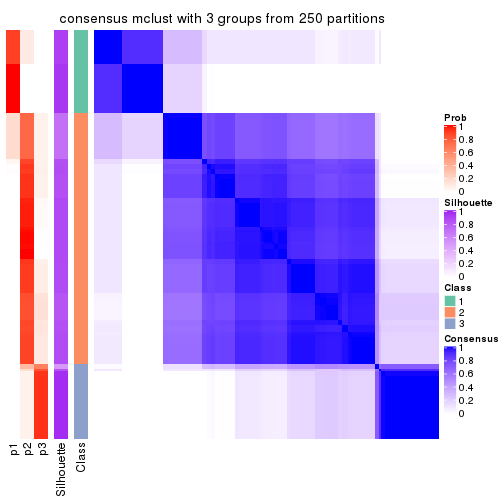
consensus_heatmap(res, k = 4)
consensus_heatmap(res, k = 5)
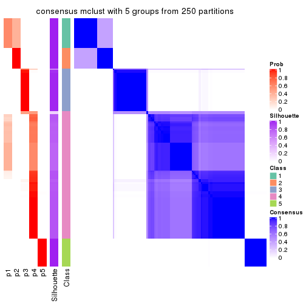
consensus_heatmap(res, k = 6)
Heatmaps for the membership of samples in all partitions to see how consistent they are:
membership_heatmap(res, k = 2)
membership_heatmap(res, k = 3)
membership_heatmap(res, k = 4)
membership_heatmap(res, k = 5)
membership_heatmap(res, k = 6)
As soon as we have had the classes for columns, we can look for signatures which are significantly different between classes which can be candidate marks for certain classes. Following are the heatmaps for signatures.
Signature heatmaps where rows are scaled:
get_signatures(res, k = 2)
get_signatures(res, k = 3)
get_signatures(res, k = 4)
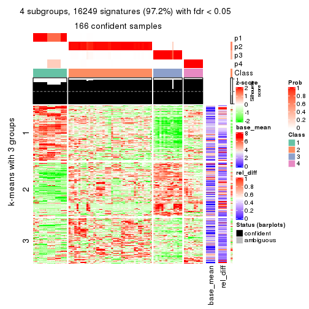
get_signatures(res, k = 5)
get_signatures(res, k = 6)

Signature heatmaps where rows are not scaled:
get_signatures(res, k = 2, scale_rows = FALSE)
get_signatures(res, k = 3, scale_rows = FALSE)
get_signatures(res, k = 4, scale_rows = FALSE)
get_signatures(res, k = 5, scale_rows = FALSE)

get_signatures(res, k = 6, scale_rows = FALSE)
Compare the overlap of signatures from different k:
compare_signatures(res)
get_signature() returns a data frame invisibly. TO get the list of signatures, the function
call should be assigned to a variable explicitly. In following code, if plot argument is set
to FALSE, no heatmap is plotted while only the differential analysis is performed.
# code only for demonstration
tb = get_signature(res, k = ..., plot = FALSE)
An example of the output of tb is:
#> which_row fdr mean_1 mean_2 scaled_mean_1 scaled_mean_2 km
#> 1 38 0.042760348 8.373488 9.131774 -0.5533452 0.5164555 1
#> 2 40 0.018707592 7.106213 8.469186 -0.6173731 0.5762149 1
#> 3 55 0.019134737 10.221463 11.207825 -0.6159697 0.5749050 1
#> 4 59 0.006059896 5.921854 7.869574 -0.6899429 0.6439467 1
#> 5 60 0.018055526 8.928898 10.211722 -0.6204761 0.5791110 1
#> 6 98 0.009384629 15.714769 14.887706 0.6635654 -0.6193277 2
...
The columns in tb are:
which_row: row indices corresponding to the input matrix.fdr: FDR for the differential test. mean_x: The mean value in group x.scaled_mean_x: The mean value in group x after rows are scaled.km: Row groups if k-means clustering is applied to rows.UMAP plot which shows how samples are separated.
dimension_reduction(res, k = 2, method = "UMAP")
dimension_reduction(res, k = 3, method = "UMAP")
dimension_reduction(res, k = 4, method = "UMAP")
dimension_reduction(res, k = 5, method = "UMAP")
dimension_reduction(res, k = 6, method = "UMAP")
Following heatmap shows how subgroups are split when increasing k:
collect_classes(res)

If matrix rows can be associated to genes, consider to use GO_Enrichment(res,
...) to perform function enrichment for the signature genes.
The object with results only for a single top-value method and a single partition method can be extracted as:
res = res_list["MAD", "NMF"]
# you can also extract it by
# res = res_list["MAD:NMF"]
A summary of res and all the functions that can be applied to it:
res
#> A 'ConsensusPartition' object with k = 2, 3, 4, 5, 6.
#> On a matrix with 16717 rows and 168 columns.
#> Top rows (1000, 2000, 3000, 4000, 5000) are extracted by 'MAD' method.
#> Subgroups are detected by 'NMF' method.
#> Performed in total 1250 partitions by row resampling.
#> Best k for subgroups seems to be 3.
#>
#> Following methods can be applied to this 'ConsensusPartition' object:
#> [1] "cola_report" "collect_classes" "collect_plots"
#> [4] "collect_stats" "colnames" "compare_signatures"
#> [7] "consensus_heatmap" "dimension_reduction" "functional_enrichment"
#> [10] "get_anno_col" "get_anno" "get_classes"
#> [13] "get_consensus" "get_matrix" "get_membership"
#> [16] "get_param" "get_signatures" "get_stats"
#> [19] "is_best_k" "is_stable_k" "membership_heatmap"
#> [22] "ncol" "nrow" "plot_ecdf"
#> [25] "rownames" "select_partition_number" "show"
#> [28] "suggest_best_k" "test_to_known_factors"
collect_plots() function collects all the plots made from res for all k (number of partitions)
into one single page to provide an easy and fast comparison between different k.
collect_plots(res)
The plots are:
k and the heatmap of
predicted classes for each k.k.k.k.All the plots in panels can be made by individual functions and they are plotted later in this section.
select_partition_number() produces several plots showing different
statistics for choosing “optimized” k. There are following statistics:
k;k, the area increased is defined as \(A_k - A_{k-1}\).The detailed explanations of these statistics can be found in the cola vignette.
Generally speaking, lower PAC score, higher mean silhouette score or higher
concordance corresponds to better partition. Rand index and Jaccard index
measure how similar the current partition is compared to partition with k-1.
If they are too similar, we won't accept k is better than k-1.
select_partition_number(res)

The numeric values for all these statistics can be obtained by get_stats().
get_stats(res)
#> k 1-PAC mean_silhouette concordance area_increased Rand Jaccard
#> 2 2 0.868 0.899 0.960 0.4319 0.570 0.570
#> 3 3 0.811 0.852 0.940 0.5057 0.702 0.509
#> 4 4 0.682 0.610 0.777 0.1081 0.877 0.677
#> 5 5 0.699 0.605 0.764 0.0782 0.810 0.452
#> 6 6 0.863 0.857 0.916 0.0560 0.910 0.617
suggest_best_k() suggests the best \(k\) based on these statistics. The rules are as follows:
NA.suggest_best_k(res)
#> [1] 3
Following shows the table of the partitions (You need to click the show/hide
code output link to see it). The membership matrix (columns with name p*)
is inferred by
clue::cl_consensus()
function with the SE method. Basically the value in the membership matrix
represents the probability to belong to a certain group. The finall class
label for an item is determined with the group with highest probability it
belongs to.
In get_classes() function, the entropy is calculated from the membership
matrix and the silhouette score is calculated from the consensus matrix.
cbind(get_classes(res, k = 2), get_membership(res, k = 2))
#> class entropy silhouette p1 p2
#> SRR1768889 2 0.0000 0.9626 0.000 1.000
#> SRR1768890 2 0.0000 0.9626 0.000 1.000
#> SRR1768891 2 0.0000 0.9626 0.000 1.000
#> SRR1768892 2 0.0000 0.9626 0.000 1.000
#> SRR1768893 2 0.0000 0.9626 0.000 1.000
#> SRR1768894 2 0.0000 0.9626 0.000 1.000
#> SRR1768895 2 0.0000 0.9626 0.000 1.000
#> SRR1768896 2 0.0000 0.9626 0.000 1.000
#> SRR1768821 2 0.0000 0.9626 0.000 1.000
#> SRR1768822 2 0.0000 0.9626 0.000 1.000
#> SRR1768823 2 0.9850 0.2445 0.428 0.572
#> SRR1768824 2 0.9833 0.2572 0.424 0.576
#> SRR1768825 2 0.0000 0.9626 0.000 1.000
#> SRR1768826 2 0.0000 0.9626 0.000 1.000
#> SRR1768827 2 0.0000 0.9626 0.000 1.000
#> SRR1768828 2 0.0000 0.9626 0.000 1.000
#> SRR1768829 2 0.0000 0.9626 0.000 1.000
#> SRR1768830 2 0.0000 0.9626 0.000 1.000
#> SRR1768831 1 0.0672 0.9377 0.992 0.008
#> SRR1768832 1 0.0672 0.9377 0.992 0.008
#> SRR1768833 1 0.4431 0.8643 0.908 0.092
#> SRR1768834 1 0.3431 0.8924 0.936 0.064
#> SRR1768835 1 0.8608 0.5996 0.716 0.284
#> SRR1768836 1 0.3114 0.8997 0.944 0.056
#> SRR1768837 1 0.3114 0.8997 0.944 0.056
#> SRR1768838 2 0.0376 0.9596 0.004 0.996
#> SRR1768839 2 0.0376 0.9596 0.004 0.996
#> SRR1768840 2 0.0000 0.9626 0.000 1.000
#> SRR1768841 2 0.0000 0.9626 0.000 1.000
#> SRR1768842 2 0.0000 0.9626 0.000 1.000
#> SRR1768843 2 0.0000 0.9626 0.000 1.000
#> SRR1768844 2 0.0000 0.9626 0.000 1.000
#> SRR1768845 2 0.0000 0.9626 0.000 1.000
#> SRR1768846 2 0.0000 0.9626 0.000 1.000
#> SRR1768847 2 0.0000 0.9626 0.000 1.000
#> SRR1768848 2 0.0000 0.9626 0.000 1.000
#> SRR1768849 2 0.0000 0.9626 0.000 1.000
#> SRR1768850 2 0.0000 0.9626 0.000 1.000
#> SRR1768851 2 0.0000 0.9626 0.000 1.000
#> SRR1768852 2 0.1843 0.9397 0.028 0.972
#> SRR1768853 2 0.1843 0.9397 0.028 0.972
#> SRR1768854 2 0.0000 0.9626 0.000 1.000
#> SRR1768855 2 0.0000 0.9626 0.000 1.000
#> SRR1768856 2 0.0000 0.9626 0.000 1.000
#> SRR1768857 2 0.0000 0.9626 0.000 1.000
#> SRR1768858 2 0.0000 0.9626 0.000 1.000
#> SRR1768859 2 0.0000 0.9626 0.000 1.000
#> SRR1768860 2 0.0000 0.9626 0.000 1.000
#> SRR1768861 2 0.0000 0.9626 0.000 1.000
#> SRR1768862 2 0.0000 0.9626 0.000 1.000
#> SRR1768863 2 0.0000 0.9626 0.000 1.000
#> SRR1768864 2 0.0000 0.9626 0.000 1.000
#> SRR1768865 2 0.0000 0.9626 0.000 1.000
#> SRR1768866 2 0.0000 0.9626 0.000 1.000
#> SRR1768867 2 0.9209 0.4915 0.336 0.664
#> SRR1768868 2 0.9209 0.4915 0.336 0.664
#> SRR1768869 1 0.0000 0.9431 1.000 0.000
#> SRR1768870 1 0.0000 0.9431 1.000 0.000
#> SRR1768871 2 0.9866 0.2313 0.432 0.568
#> SRR1768872 2 0.9732 0.3172 0.404 0.596
#> SRR1768873 1 0.0000 0.9431 1.000 0.000
#> SRR1768874 1 0.0000 0.9431 1.000 0.000
#> SRR1768875 2 0.0000 0.9626 0.000 1.000
#> SRR1768876 2 0.0000 0.9626 0.000 1.000
#> SRR1768877 2 0.0000 0.9626 0.000 1.000
#> SRR1768878 2 0.0000 0.9626 0.000 1.000
#> SRR1768879 2 0.0000 0.9626 0.000 1.000
#> SRR1768880 2 0.0000 0.9626 0.000 1.000
#> SRR1768881 2 0.3114 0.9138 0.056 0.944
#> SRR1768882 2 0.5178 0.8502 0.116 0.884
#> SRR1768883 2 0.0000 0.9626 0.000 1.000
#> SRR1768884 2 0.0000 0.9626 0.000 1.000
#> SRR1768885 2 0.0000 0.9626 0.000 1.000
#> SRR1768886 2 0.0000 0.9626 0.000 1.000
#> SRR1768887 2 0.0000 0.9626 0.000 1.000
#> SRR1768888 2 0.0000 0.9626 0.000 1.000
#> SRR1768897 2 0.0000 0.9626 0.000 1.000
#> SRR1768898 2 0.0000 0.9626 0.000 1.000
#> SRR1768899 2 0.0000 0.9626 0.000 1.000
#> SRR1768900 2 0.0000 0.9626 0.000 1.000
#> SRR1768901 2 0.0000 0.9626 0.000 1.000
#> SRR1768902 2 0.0000 0.9626 0.000 1.000
#> SRR1768903 2 0.0000 0.9626 0.000 1.000
#> SRR1768904 2 0.0000 0.9626 0.000 1.000
#> SRR1768905 2 0.0000 0.9626 0.000 1.000
#> SRR1768906 2 0.0000 0.9626 0.000 1.000
#> SRR1768907 2 0.0000 0.9626 0.000 1.000
#> SRR1768908 2 0.0000 0.9626 0.000 1.000
#> SRR1768909 2 0.0000 0.9626 0.000 1.000
#> SRR1768910 2 0.0000 0.9626 0.000 1.000
#> SRR1768911 2 0.0000 0.9626 0.000 1.000
#> SRR1768912 2 0.0000 0.9626 0.000 1.000
#> SRR1768913 2 0.0000 0.9626 0.000 1.000
#> SRR1768914 2 0.0000 0.9626 0.000 1.000
#> SRR1768915 2 0.0000 0.9626 0.000 1.000
#> SRR1768916 2 0.0000 0.9626 0.000 1.000
#> SRR1768917 2 0.0000 0.9626 0.000 1.000
#> SRR1768918 2 0.0000 0.9626 0.000 1.000
#> SRR1768919 2 0.0000 0.9626 0.000 1.000
#> SRR1768920 2 0.0000 0.9626 0.000 1.000
#> SRR1768921 2 0.0000 0.9626 0.000 1.000
#> SRR1768922 2 0.0000 0.9626 0.000 1.000
#> SRR1768923 2 0.0000 0.9626 0.000 1.000
#> SRR1768924 2 0.4690 0.8682 0.100 0.900
#> SRR1768925 2 0.5519 0.8359 0.128 0.872
#> SRR1768926 2 0.0000 0.9626 0.000 1.000
#> SRR1768927 2 0.0000 0.9626 0.000 1.000
#> SRR1768928 2 0.0938 0.9531 0.012 0.988
#> SRR1768929 2 0.2043 0.9362 0.032 0.968
#> SRR1768930 2 0.8713 0.5839 0.292 0.708
#> SRR1768931 2 0.8327 0.6361 0.264 0.736
#> SRR1768932 2 0.3584 0.9020 0.068 0.932
#> SRR1768933 1 0.9209 0.4942 0.664 0.336
#> SRR1768934 1 0.9286 0.4768 0.656 0.344
#> SRR1768935 1 0.9963 0.1373 0.536 0.464
#> SRR1768936 1 0.9996 0.0481 0.512 0.488
#> SRR1768937 1 1.0000 0.0157 0.504 0.496
#> SRR1768938 2 0.7815 0.6907 0.232 0.768
#> SRR1768939 2 0.0000 0.9626 0.000 1.000
#> SRR1768940 2 0.0000 0.9626 0.000 1.000
#> SRR1768941 2 0.0000 0.9626 0.000 1.000
#> SRR1768942 2 0.0000 0.9626 0.000 1.000
#> SRR1768943 2 0.0000 0.9626 0.000 1.000
#> SRR1768944 2 0.0000 0.9626 0.000 1.000
#> SRR1768945 2 0.0000 0.9626 0.000 1.000
#> SRR1768946 2 0.0000 0.9626 0.000 1.000
#> SRR1768947 2 0.0000 0.9626 0.000 1.000
#> SRR1768948 2 0.0000 0.9626 0.000 1.000
#> SRR1768949 2 0.0000 0.9626 0.000 1.000
#> SRR1768950 2 0.7815 0.6906 0.232 0.768
#> SRR1768954 1 0.0000 0.9431 1.000 0.000
#> SRR1768955 1 0.0000 0.9431 1.000 0.000
#> SRR1768956 1 0.0000 0.9431 1.000 0.000
#> SRR1768957 1 0.0000 0.9431 1.000 0.000
#> SRR1768958 1 0.0000 0.9431 1.000 0.000
#> SRR1768959 1 0.0000 0.9431 1.000 0.000
#> SRR1768960 1 0.0000 0.9431 1.000 0.000
#> SRR1768961 1 0.0000 0.9431 1.000 0.000
#> SRR1768952 2 0.0000 0.9626 0.000 1.000
#> SRR1768953 2 0.0000 0.9626 0.000 1.000
#> SRR1768962 1 0.0000 0.9431 1.000 0.000
#> SRR1768963 1 0.0000 0.9431 1.000 0.000
#> SRR1768964 1 0.0000 0.9431 1.000 0.000
#> SRR1768965 1 0.0000 0.9431 1.000 0.000
#> SRR1768966 1 0.0000 0.9431 1.000 0.000
#> SRR1768967 1 0.0000 0.9431 1.000 0.000
#> SRR1768968 1 0.0000 0.9431 1.000 0.000
#> SRR1768969 1 0.0000 0.9431 1.000 0.000
#> SRR1768970 1 0.0000 0.9431 1.000 0.000
#> SRR1768971 1 0.0000 0.9431 1.000 0.000
#> SRR1768972 1 0.0000 0.9431 1.000 0.000
#> SRR1768973 1 0.0000 0.9431 1.000 0.000
#> SRR1768974 1 0.0000 0.9431 1.000 0.000
#> SRR1768975 1 0.0000 0.9431 1.000 0.000
#> SRR1768976 1 0.0000 0.9431 1.000 0.000
#> SRR1768977 1 0.0000 0.9431 1.000 0.000
#> SRR1768978 1 0.0000 0.9431 1.000 0.000
#> SRR1768979 1 0.0000 0.9431 1.000 0.000
#> SRR1768980 1 0.0000 0.9431 1.000 0.000
#> SRR1768981 1 0.0000 0.9431 1.000 0.000
#> SRR1768982 1 0.0000 0.9431 1.000 0.000
#> SRR1768983 1 0.0000 0.9431 1.000 0.000
#> SRR1768984 1 0.0000 0.9431 1.000 0.000
#> SRR1768985 1 0.0000 0.9431 1.000 0.000
#> SRR1768986 1 0.0000 0.9431 1.000 0.000
#> SRR1768987 1 0.0000 0.9431 1.000 0.000
#> SRR1768988 1 0.0000 0.9431 1.000 0.000
#> SRR1768989 1 0.0000 0.9431 1.000 0.000
cbind(get_classes(res, k = 3), get_membership(res, k = 3))
#> class entropy silhouette p1 p2 p3
#> SRR1768889 3 0.0000 0.90987 0.000 0.000 1.000
#> SRR1768890 3 0.0000 0.90987 0.000 0.000 1.000
#> SRR1768891 2 0.1964 0.88146 0.000 0.944 0.056
#> SRR1768892 2 0.1964 0.88146 0.000 0.944 0.056
#> SRR1768893 3 0.6235 0.23009 0.000 0.436 0.564
#> SRR1768894 3 0.6274 0.16579 0.000 0.456 0.544
#> SRR1768895 2 0.0237 0.91504 0.000 0.996 0.004
#> SRR1768896 2 0.0237 0.91504 0.000 0.996 0.004
#> SRR1768821 2 0.0237 0.91504 0.000 0.996 0.004
#> SRR1768822 2 0.0237 0.91504 0.000 0.996 0.004
#> SRR1768823 2 0.0000 0.91461 0.000 1.000 0.000
#> SRR1768824 2 0.0000 0.91461 0.000 1.000 0.000
#> SRR1768825 2 0.0237 0.91504 0.000 0.996 0.004
#> SRR1768826 2 0.0237 0.91504 0.000 0.996 0.004
#> SRR1768827 2 0.0237 0.91504 0.000 0.996 0.004
#> SRR1768828 2 0.0000 0.91461 0.000 1.000 0.000
#> SRR1768829 2 0.0237 0.91504 0.000 0.996 0.004
#> SRR1768830 2 0.0237 0.91504 0.000 0.996 0.004
#> SRR1768831 1 0.0475 0.98732 0.992 0.004 0.004
#> SRR1768832 1 0.0237 0.98973 0.996 0.004 0.000
#> SRR1768833 1 0.1860 0.94060 0.948 0.000 0.052
#> SRR1768834 1 0.1753 0.94516 0.952 0.000 0.048
#> SRR1768835 1 0.3412 0.84983 0.876 0.000 0.124
#> SRR1768836 1 0.1163 0.96615 0.972 0.000 0.028
#> SRR1768837 1 0.1163 0.96615 0.972 0.000 0.028
#> SRR1768838 3 0.1289 0.89069 0.032 0.000 0.968
#> SRR1768839 3 0.1289 0.89069 0.032 0.000 0.968
#> SRR1768840 3 0.0000 0.90987 0.000 0.000 1.000
#> SRR1768841 3 0.0000 0.90987 0.000 0.000 1.000
#> SRR1768842 3 0.0000 0.90987 0.000 0.000 1.000
#> SRR1768843 3 0.0000 0.90987 0.000 0.000 1.000
#> SRR1768844 3 0.0000 0.90987 0.000 0.000 1.000
#> SRR1768845 3 0.0000 0.90987 0.000 0.000 1.000
#> SRR1768846 3 0.0000 0.90987 0.000 0.000 1.000
#> SRR1768847 3 0.0000 0.90987 0.000 0.000 1.000
#> SRR1768848 3 0.0000 0.90987 0.000 0.000 1.000
#> SRR1768849 3 0.0000 0.90987 0.000 0.000 1.000
#> SRR1768850 3 0.0000 0.90987 0.000 0.000 1.000
#> SRR1768851 3 0.0000 0.90987 0.000 0.000 1.000
#> SRR1768852 3 0.0237 0.90778 0.004 0.000 0.996
#> SRR1768853 3 0.0475 0.90645 0.004 0.004 0.992
#> SRR1768854 3 0.0000 0.90987 0.000 0.000 1.000
#> SRR1768855 3 0.0000 0.90987 0.000 0.000 1.000
#> SRR1768856 3 0.0000 0.90987 0.000 0.000 1.000
#> SRR1768857 3 0.0000 0.90987 0.000 0.000 1.000
#> SRR1768858 3 0.0000 0.90987 0.000 0.000 1.000
#> SRR1768859 3 0.0000 0.90987 0.000 0.000 1.000
#> SRR1768860 3 0.0000 0.90987 0.000 0.000 1.000
#> SRR1768861 2 0.4702 0.72457 0.000 0.788 0.212
#> SRR1768862 2 0.4702 0.72457 0.000 0.788 0.212
#> SRR1768863 3 0.6302 0.07918 0.000 0.480 0.520
#> SRR1768864 3 0.6305 0.06347 0.000 0.484 0.516
#> SRR1768865 3 0.0000 0.90987 0.000 0.000 1.000
#> SRR1768866 3 0.0000 0.90987 0.000 0.000 1.000
#> SRR1768867 2 0.0000 0.91461 0.000 1.000 0.000
#> SRR1768868 2 0.0000 0.91461 0.000 1.000 0.000
#> SRR1768869 2 0.0000 0.91461 0.000 1.000 0.000
#> SRR1768870 2 0.0000 0.91461 0.000 1.000 0.000
#> SRR1768871 2 0.7074 0.02184 0.020 0.500 0.480
#> SRR1768872 2 0.6955 -0.00484 0.016 0.496 0.488
#> SRR1768873 2 0.0000 0.91461 0.000 1.000 0.000
#> SRR1768874 2 0.0000 0.91461 0.000 1.000 0.000
#> SRR1768875 3 0.0000 0.90987 0.000 0.000 1.000
#> SRR1768876 3 0.0000 0.90987 0.000 0.000 1.000
#> SRR1768877 3 0.0000 0.90987 0.000 0.000 1.000
#> SRR1768878 3 0.0000 0.90987 0.000 0.000 1.000
#> SRR1768879 3 0.0000 0.90987 0.000 0.000 1.000
#> SRR1768880 3 0.0000 0.90987 0.000 0.000 1.000
#> SRR1768881 2 0.0424 0.91294 0.000 0.992 0.008
#> SRR1768882 2 0.0237 0.91504 0.000 0.996 0.004
#> SRR1768883 3 0.0000 0.90987 0.000 0.000 1.000
#> SRR1768884 3 0.0000 0.90987 0.000 0.000 1.000
#> SRR1768885 3 0.0000 0.90987 0.000 0.000 1.000
#> SRR1768886 3 0.0000 0.90987 0.000 0.000 1.000
#> SRR1768887 3 0.0000 0.90987 0.000 0.000 1.000
#> SRR1768888 3 0.0000 0.90987 0.000 0.000 1.000
#> SRR1768897 2 0.4291 0.76672 0.000 0.820 0.180
#> SRR1768898 2 0.4346 0.76196 0.000 0.816 0.184
#> SRR1768899 2 0.4346 0.76209 0.000 0.816 0.184
#> SRR1768900 2 0.4346 0.76209 0.000 0.816 0.184
#> SRR1768901 3 0.0000 0.90987 0.000 0.000 1.000
#> SRR1768902 3 0.0000 0.90987 0.000 0.000 1.000
#> SRR1768903 3 0.0000 0.90987 0.000 0.000 1.000
#> SRR1768904 3 0.4178 0.75299 0.000 0.172 0.828
#> SRR1768905 3 0.5497 0.57363 0.000 0.292 0.708
#> SRR1768906 3 0.1289 0.88915 0.000 0.032 0.968
#> SRR1768907 3 0.6308 0.03113 0.000 0.492 0.508
#> SRR1768908 2 0.6291 0.10259 0.000 0.532 0.468
#> SRR1768909 3 0.6095 0.35425 0.000 0.392 0.608
#> SRR1768910 3 0.0424 0.90529 0.000 0.008 0.992
#> SRR1768911 3 0.2066 0.86668 0.000 0.060 0.940
#> SRR1768912 3 0.0237 0.90771 0.000 0.004 0.996
#> SRR1768913 3 0.4974 0.66538 0.000 0.236 0.764
#> SRR1768914 3 0.5560 0.55820 0.000 0.300 0.700
#> SRR1768915 3 0.3816 0.78060 0.000 0.148 0.852
#> SRR1768916 2 0.3192 0.83623 0.000 0.888 0.112
#> SRR1768917 2 0.0000 0.91461 0.000 1.000 0.000
#> SRR1768918 3 0.6244 0.21852 0.000 0.440 0.560
#> SRR1768919 3 0.6302 0.07966 0.000 0.480 0.520
#> SRR1768920 2 0.0000 0.91461 0.000 1.000 0.000
#> SRR1768921 2 0.0000 0.91461 0.000 1.000 0.000
#> SRR1768922 3 0.0000 0.90987 0.000 0.000 1.000
#> SRR1768923 3 0.0000 0.90987 0.000 0.000 1.000
#> SRR1768924 3 0.3941 0.78442 0.156 0.000 0.844
#> SRR1768925 3 0.4452 0.74221 0.192 0.000 0.808
#> SRR1768926 3 0.0000 0.90987 0.000 0.000 1.000
#> SRR1768927 3 0.0000 0.90987 0.000 0.000 1.000
#> SRR1768928 3 0.2448 0.85896 0.076 0.000 0.924
#> SRR1768929 3 0.3038 0.83658 0.104 0.000 0.896
#> SRR1768930 2 0.0000 0.91461 0.000 1.000 0.000
#> SRR1768931 2 0.0000 0.91461 0.000 1.000 0.000
#> SRR1768932 2 0.0000 0.91461 0.000 1.000 0.000
#> SRR1768933 2 0.0000 0.91461 0.000 1.000 0.000
#> SRR1768934 2 0.0000 0.91461 0.000 1.000 0.000
#> SRR1768935 2 0.0000 0.91461 0.000 1.000 0.000
#> SRR1768936 2 0.0000 0.91461 0.000 1.000 0.000
#> SRR1768937 2 0.0000 0.91461 0.000 1.000 0.000
#> SRR1768938 2 0.0000 0.91461 0.000 1.000 0.000
#> SRR1768939 2 0.0237 0.91504 0.000 0.996 0.004
#> SRR1768940 2 0.0237 0.91504 0.000 0.996 0.004
#> SRR1768941 2 0.0237 0.91504 0.000 0.996 0.004
#> SRR1768942 2 0.0237 0.91504 0.000 0.996 0.004
#> SRR1768943 2 0.0237 0.91504 0.000 0.996 0.004
#> SRR1768944 2 0.0237 0.91504 0.000 0.996 0.004
#> SRR1768945 2 0.0237 0.91504 0.000 0.996 0.004
#> SRR1768946 2 0.0237 0.91504 0.000 0.996 0.004
#> SRR1768947 3 0.0000 0.90987 0.000 0.000 1.000
#> SRR1768948 3 0.0000 0.90987 0.000 0.000 1.000
#> SRR1768949 3 0.0000 0.90987 0.000 0.000 1.000
#> SRR1768950 2 0.4702 0.72496 0.000 0.788 0.212
#> SRR1768954 1 0.0237 0.98973 0.996 0.004 0.000
#> SRR1768955 1 0.0237 0.98973 0.996 0.004 0.000
#> SRR1768956 1 0.0237 0.98973 0.996 0.004 0.000
#> SRR1768957 1 0.0237 0.98973 0.996 0.004 0.000
#> SRR1768958 1 0.0237 0.98973 0.996 0.004 0.000
#> SRR1768959 1 0.0237 0.98973 0.996 0.004 0.000
#> SRR1768960 1 0.0237 0.98973 0.996 0.004 0.000
#> SRR1768961 1 0.0237 0.98973 0.996 0.004 0.000
#> SRR1768952 2 0.5810 0.49540 0.000 0.664 0.336
#> SRR1768953 2 0.5810 0.49540 0.000 0.664 0.336
#> SRR1768962 1 0.0000 0.99103 1.000 0.000 0.000
#> SRR1768963 1 0.0000 0.99103 1.000 0.000 0.000
#> SRR1768964 1 0.0000 0.99103 1.000 0.000 0.000
#> SRR1768965 1 0.0000 0.99103 1.000 0.000 0.000
#> SRR1768966 1 0.0000 0.99103 1.000 0.000 0.000
#> SRR1768967 1 0.0000 0.99103 1.000 0.000 0.000
#> SRR1768968 1 0.0000 0.99103 1.000 0.000 0.000
#> SRR1768969 1 0.0000 0.99103 1.000 0.000 0.000
#> SRR1768970 1 0.0000 0.99103 1.000 0.000 0.000
#> SRR1768971 1 0.0000 0.99103 1.000 0.000 0.000
#> SRR1768972 1 0.0000 0.99103 1.000 0.000 0.000
#> SRR1768973 1 0.0000 0.99103 1.000 0.000 0.000
#> SRR1768974 1 0.0000 0.99103 1.000 0.000 0.000
#> SRR1768975 1 0.0000 0.99103 1.000 0.000 0.000
#> SRR1768976 1 0.0000 0.99103 1.000 0.000 0.000
#> SRR1768977 1 0.0000 0.99103 1.000 0.000 0.000
#> SRR1768978 1 0.0000 0.99103 1.000 0.000 0.000
#> SRR1768979 1 0.0000 0.99103 1.000 0.000 0.000
#> SRR1768980 1 0.0000 0.99103 1.000 0.000 0.000
#> SRR1768981 1 0.0000 0.99103 1.000 0.000 0.000
#> SRR1768982 1 0.0000 0.99103 1.000 0.000 0.000
#> SRR1768983 1 0.0000 0.99103 1.000 0.000 0.000
#> SRR1768984 2 0.4702 0.69967 0.212 0.788 0.000
#> SRR1768985 2 0.4605 0.71245 0.204 0.796 0.000
#> SRR1768986 1 0.0000 0.99103 1.000 0.000 0.000
#> SRR1768987 1 0.0000 0.99103 1.000 0.000 0.000
#> SRR1768988 1 0.0000 0.99103 1.000 0.000 0.000
#> SRR1768989 1 0.0000 0.99103 1.000 0.000 0.000
cbind(get_classes(res, k = 4), get_membership(res, k = 4))
#> class entropy silhouette p1 p2 p3 p4
#> SRR1768889 3 0.0000 0.7880 0.000 0.000 1.000 0.000
#> SRR1768890 3 0.0000 0.7880 0.000 0.000 1.000 0.000
#> SRR1768891 2 0.2342 0.7525 0.000 0.912 0.008 0.080
#> SRR1768892 2 0.2198 0.7539 0.000 0.920 0.008 0.072
#> SRR1768893 2 0.6703 0.4234 0.000 0.612 0.232 0.156
#> SRR1768894 2 0.6523 0.4639 0.000 0.636 0.208 0.156
#> SRR1768895 2 0.0188 0.7721 0.000 0.996 0.000 0.004
#> SRR1768896 2 0.0188 0.7721 0.000 0.996 0.000 0.004
#> SRR1768821 2 0.0188 0.7722 0.000 0.996 0.000 0.004
#> SRR1768822 2 0.0188 0.7722 0.000 0.996 0.000 0.004
#> SRR1768823 2 0.0000 0.7723 0.000 1.000 0.000 0.000
#> SRR1768824 2 0.0000 0.7723 0.000 1.000 0.000 0.000
#> SRR1768825 2 0.0469 0.7723 0.000 0.988 0.000 0.012
#> SRR1768826 2 0.0469 0.7723 0.000 0.988 0.000 0.012
#> SRR1768827 2 0.0707 0.7697 0.000 0.980 0.000 0.020
#> SRR1768828 2 0.0707 0.7697 0.000 0.980 0.000 0.020
#> SRR1768829 2 0.0188 0.7723 0.000 0.996 0.000 0.004
#> SRR1768830 2 0.0188 0.7723 0.000 0.996 0.000 0.004
#> SRR1768831 1 0.5158 0.5971 0.524 0.000 0.004 0.472
#> SRR1768832 1 0.5158 0.5971 0.524 0.000 0.004 0.472
#> SRR1768833 4 0.4248 0.3680 0.220 0.000 0.012 0.768
#> SRR1768834 4 0.4319 0.3446 0.228 0.000 0.012 0.760
#> SRR1768835 4 0.4663 0.5120 0.148 0.000 0.064 0.788
#> SRR1768836 4 0.3810 0.4363 0.188 0.000 0.008 0.804
#> SRR1768837 4 0.3810 0.4363 0.188 0.000 0.008 0.804
#> SRR1768838 4 0.4406 0.6071 0.000 0.000 0.300 0.700
#> SRR1768839 4 0.4406 0.6071 0.000 0.000 0.300 0.700
#> SRR1768840 3 0.4643 0.4520 0.000 0.000 0.656 0.344
#> SRR1768841 3 0.4643 0.4520 0.000 0.000 0.656 0.344
#> SRR1768842 3 0.4936 0.4498 0.000 0.008 0.652 0.340
#> SRR1768843 3 0.4936 0.4498 0.000 0.008 0.652 0.340
#> SRR1768844 3 0.0592 0.7900 0.000 0.000 0.984 0.016
#> SRR1768845 3 0.0592 0.7900 0.000 0.000 0.984 0.016
#> SRR1768846 3 0.0188 0.7862 0.000 0.000 0.996 0.004
#> SRR1768847 3 0.0188 0.7862 0.000 0.000 0.996 0.004
#> SRR1768848 3 0.0188 0.7862 0.000 0.000 0.996 0.004
#> SRR1768849 3 0.0188 0.7862 0.000 0.000 0.996 0.004
#> SRR1768850 3 0.0188 0.7862 0.000 0.000 0.996 0.004
#> SRR1768851 3 0.0188 0.7862 0.000 0.000 0.996 0.004
#> SRR1768852 3 0.2081 0.7615 0.000 0.000 0.916 0.084
#> SRR1768853 3 0.2266 0.7550 0.000 0.004 0.912 0.084
#> SRR1768854 3 0.1022 0.7898 0.000 0.000 0.968 0.032
#> SRR1768855 3 0.1022 0.7870 0.000 0.000 0.968 0.032
#> SRR1768856 3 0.1022 0.7870 0.000 0.000 0.968 0.032
#> SRR1768857 3 0.1022 0.7870 0.000 0.000 0.968 0.032
#> SRR1768858 3 0.0707 0.7900 0.000 0.000 0.980 0.020
#> SRR1768859 3 0.0707 0.7900 0.000 0.000 0.980 0.020
#> SRR1768860 3 0.0707 0.7900 0.000 0.000 0.980 0.020
#> SRR1768861 2 0.2300 0.7446 0.000 0.920 0.064 0.016
#> SRR1768862 2 0.2376 0.7428 0.000 0.916 0.068 0.016
#> SRR1768863 2 0.7803 -0.0776 0.000 0.404 0.256 0.340
#> SRR1768864 2 0.7803 -0.0776 0.000 0.404 0.256 0.340
#> SRR1768865 3 0.3157 0.7191 0.000 0.004 0.852 0.144
#> SRR1768866 3 0.3157 0.7191 0.000 0.004 0.852 0.144
#> SRR1768867 2 0.0000 0.7723 0.000 1.000 0.000 0.000
#> SRR1768868 2 0.0000 0.7723 0.000 1.000 0.000 0.000
#> SRR1768869 2 0.4746 0.3796 0.000 0.632 0.000 0.368
#> SRR1768870 2 0.4730 0.3878 0.000 0.636 0.000 0.364
#> SRR1768871 4 0.5355 0.5963 0.000 0.180 0.084 0.736
#> SRR1768872 4 0.5355 0.5963 0.000 0.180 0.084 0.736
#> SRR1768873 2 0.1211 0.7616 0.000 0.960 0.000 0.040
#> SRR1768874 2 0.1302 0.7599 0.000 0.956 0.000 0.044
#> SRR1768875 3 0.0000 0.7880 0.000 0.000 1.000 0.000
#> SRR1768876 3 0.0000 0.7880 0.000 0.000 1.000 0.000
#> SRR1768877 3 0.0000 0.7880 0.000 0.000 1.000 0.000
#> SRR1768878 3 0.0000 0.7880 0.000 0.000 1.000 0.000
#> SRR1768879 3 0.0188 0.7862 0.000 0.000 0.996 0.004
#> SRR1768880 3 0.0188 0.7862 0.000 0.000 0.996 0.004
#> SRR1768881 2 0.2002 0.7616 0.000 0.936 0.044 0.020
#> SRR1768882 2 0.1610 0.7659 0.000 0.952 0.032 0.016
#> SRR1768883 3 0.0188 0.7862 0.000 0.000 0.996 0.004
#> SRR1768884 3 0.0188 0.7862 0.000 0.000 0.996 0.004
#> SRR1768885 3 0.0707 0.7900 0.000 0.000 0.980 0.020
#> SRR1768886 3 0.0707 0.7900 0.000 0.000 0.980 0.020
#> SRR1768887 3 0.0188 0.7862 0.000 0.000 0.996 0.004
#> SRR1768888 3 0.0188 0.7862 0.000 0.000 0.996 0.004
#> SRR1768897 2 0.4642 0.6173 0.000 0.740 0.020 0.240
#> SRR1768898 2 0.4744 0.6140 0.000 0.736 0.024 0.240
#> SRR1768899 2 0.6280 0.3837 0.000 0.604 0.080 0.316
#> SRR1768900 2 0.6280 0.3837 0.000 0.604 0.080 0.316
#> SRR1768901 3 0.3311 0.6923 0.000 0.000 0.828 0.172
#> SRR1768902 3 0.3569 0.6657 0.000 0.000 0.804 0.196
#> SRR1768903 3 0.3024 0.7155 0.000 0.000 0.852 0.148
#> SRR1768904 3 0.7558 0.0404 0.000 0.196 0.444 0.360
#> SRR1768905 4 0.7830 0.0532 0.000 0.260 0.356 0.384
#> SRR1768906 3 0.6391 0.3634 0.000 0.084 0.588 0.328
#> SRR1768907 2 0.7693 0.0065 0.000 0.432 0.228 0.340
#> SRR1768908 2 0.7469 0.1075 0.000 0.472 0.188 0.340
#> SRR1768909 2 0.7885 -0.1454 0.000 0.372 0.288 0.340
#> SRR1768910 3 0.5937 0.3673 0.000 0.052 0.608 0.340
#> SRR1768911 3 0.6203 0.3340 0.000 0.068 0.592 0.340
#> SRR1768912 3 0.4936 0.4481 0.000 0.008 0.652 0.340
#> SRR1768913 3 0.7899 -0.1227 0.000 0.296 0.364 0.340
#> SRR1768914 3 0.7914 -0.1386 0.000 0.308 0.352 0.340
#> SRR1768915 3 0.7634 0.0195 0.000 0.216 0.444 0.340
#> SRR1768916 2 0.7475 0.1190 0.000 0.476 0.192 0.332
#> SRR1768917 2 0.0188 0.7721 0.000 0.996 0.000 0.004
#> SRR1768918 2 0.7816 -0.0746 0.000 0.400 0.260 0.340
#> SRR1768919 2 0.7745 -0.0212 0.000 0.420 0.240 0.340
#> SRR1768920 2 0.2921 0.7242 0.000 0.860 0.000 0.140
#> SRR1768921 2 0.2814 0.7282 0.000 0.868 0.000 0.132
#> SRR1768922 3 0.4564 0.4798 0.000 0.000 0.672 0.328
#> SRR1768923 3 0.4564 0.4798 0.000 0.000 0.672 0.328
#> SRR1768924 4 0.4454 0.5980 0.000 0.000 0.308 0.692
#> SRR1768925 4 0.4431 0.6032 0.000 0.000 0.304 0.696
#> SRR1768926 3 0.5000 -0.0613 0.000 0.000 0.504 0.496
#> SRR1768927 4 0.5000 -0.0045 0.000 0.000 0.500 0.500
#> SRR1768928 4 0.4661 0.5249 0.000 0.000 0.348 0.652
#> SRR1768929 4 0.4624 0.5425 0.000 0.000 0.340 0.660
#> SRR1768930 2 0.0336 0.7716 0.000 0.992 0.000 0.008
#> SRR1768931 2 0.0336 0.7716 0.000 0.992 0.000 0.008
#> SRR1768932 2 0.0336 0.7716 0.000 0.992 0.000 0.008
#> SRR1768933 2 0.0000 0.7723 0.000 1.000 0.000 0.000
#> SRR1768934 2 0.0000 0.7723 0.000 1.000 0.000 0.000
#> SRR1768935 2 0.0000 0.7723 0.000 1.000 0.000 0.000
#> SRR1768936 2 0.0188 0.7721 0.000 0.996 0.000 0.004
#> SRR1768937 2 0.0188 0.7721 0.000 0.996 0.000 0.004
#> SRR1768938 2 0.0188 0.7721 0.000 0.996 0.000 0.004
#> SRR1768939 2 0.5556 0.6616 0.000 0.720 0.092 0.188
#> SRR1768940 2 0.5556 0.6616 0.000 0.720 0.092 0.188
#> SRR1768941 2 0.5102 0.6782 0.000 0.748 0.064 0.188
#> SRR1768942 2 0.5102 0.6782 0.000 0.748 0.064 0.188
#> SRR1768943 2 0.5307 0.6720 0.000 0.736 0.076 0.188
#> SRR1768944 2 0.5307 0.6720 0.000 0.736 0.076 0.188
#> SRR1768945 2 0.5030 0.6798 0.000 0.752 0.060 0.188
#> SRR1768946 2 0.5102 0.6782 0.000 0.748 0.064 0.188
#> SRR1768947 3 0.1940 0.7663 0.000 0.000 0.924 0.076
#> SRR1768948 3 0.1867 0.7683 0.000 0.000 0.928 0.072
#> SRR1768949 3 0.2704 0.7352 0.000 0.000 0.876 0.124
#> SRR1768950 2 0.5256 0.5224 0.000 0.692 0.036 0.272
#> SRR1768954 1 0.4985 0.6069 0.532 0.000 0.000 0.468
#> SRR1768955 1 0.4985 0.6069 0.532 0.000 0.000 0.468
#> SRR1768956 1 0.4985 0.6069 0.532 0.000 0.000 0.468
#> SRR1768957 1 0.4985 0.6069 0.532 0.000 0.000 0.468
#> SRR1768958 1 0.4985 0.6069 0.532 0.000 0.000 0.468
#> SRR1768959 1 0.4985 0.6069 0.532 0.000 0.000 0.468
#> SRR1768960 1 0.4985 0.6069 0.532 0.000 0.000 0.468
#> SRR1768961 1 0.4985 0.6069 0.532 0.000 0.000 0.468
#> SRR1768952 2 0.6924 0.2485 0.000 0.536 0.124 0.340
#> SRR1768953 2 0.6881 0.2566 0.000 0.540 0.120 0.340
#> SRR1768962 1 0.0000 0.7562 1.000 0.000 0.000 0.000
#> SRR1768963 1 0.0000 0.7562 1.000 0.000 0.000 0.000
#> SRR1768964 1 0.0000 0.7562 1.000 0.000 0.000 0.000
#> SRR1768965 1 0.0000 0.7562 1.000 0.000 0.000 0.000
#> SRR1768966 1 0.0000 0.7562 1.000 0.000 0.000 0.000
#> SRR1768967 1 0.0000 0.7562 1.000 0.000 0.000 0.000
#> SRR1768968 1 0.0000 0.7562 1.000 0.000 0.000 0.000
#> SRR1768969 1 0.0000 0.7562 1.000 0.000 0.000 0.000
#> SRR1768970 1 0.0000 0.7562 1.000 0.000 0.000 0.000
#> SRR1768971 1 0.0000 0.7562 1.000 0.000 0.000 0.000
#> SRR1768972 1 0.4989 0.6042 0.528 0.000 0.000 0.472
#> SRR1768973 1 0.4989 0.6042 0.528 0.000 0.000 0.472
#> SRR1768974 1 0.4989 0.6042 0.528 0.000 0.000 0.472
#> SRR1768975 1 0.4989 0.6042 0.528 0.000 0.000 0.472
#> SRR1768976 1 0.4989 0.6042 0.528 0.000 0.000 0.472
#> SRR1768977 1 0.4989 0.6042 0.528 0.000 0.000 0.472
#> SRR1768978 1 0.0000 0.7562 1.000 0.000 0.000 0.000
#> SRR1768979 1 0.0000 0.7562 1.000 0.000 0.000 0.000
#> SRR1768980 1 0.0000 0.7562 1.000 0.000 0.000 0.000
#> SRR1768981 1 0.0000 0.7562 1.000 0.000 0.000 0.000
#> SRR1768982 1 0.0000 0.7562 1.000 0.000 0.000 0.000
#> SRR1768983 1 0.0000 0.7562 1.000 0.000 0.000 0.000
#> SRR1768984 2 0.6114 0.3965 0.048 0.524 0.000 0.428
#> SRR1768985 2 0.6114 0.3965 0.048 0.524 0.000 0.428
#> SRR1768986 1 0.0000 0.7562 1.000 0.000 0.000 0.000
#> SRR1768987 1 0.0000 0.7562 1.000 0.000 0.000 0.000
#> SRR1768988 1 0.0000 0.7562 1.000 0.000 0.000 0.000
#> SRR1768989 1 0.0000 0.7562 1.000 0.000 0.000 0.000
cbind(get_classes(res, k = 5), get_membership(res, k = 5))
#> class entropy silhouette p1 p2 p3 p4 p5
#> SRR1768889 3 0.0000 0.9164 0.000 0.000 1.000 0.000 0.000
#> SRR1768890 3 0.0000 0.9164 0.000 0.000 1.000 0.000 0.000
#> SRR1768891 4 0.4291 0.6278 0.000 0.464 0.000 0.536 0.000
#> SRR1768892 4 0.4291 0.6278 0.000 0.464 0.000 0.536 0.000
#> SRR1768893 2 0.6209 -0.0657 0.000 0.576 0.092 0.304 0.028
#> SRR1768894 2 0.6101 -0.1108 0.000 0.576 0.072 0.320 0.032
#> SRR1768895 4 0.4196 0.5930 0.000 0.356 0.000 0.640 0.004
#> SRR1768896 4 0.4196 0.5930 0.000 0.356 0.000 0.640 0.004
#> SRR1768821 4 0.4287 0.6284 0.000 0.460 0.000 0.540 0.000
#> SRR1768822 4 0.4287 0.6284 0.000 0.460 0.000 0.540 0.000
#> SRR1768823 4 0.4302 0.6273 0.000 0.480 0.000 0.520 0.000
#> SRR1768824 4 0.4302 0.6273 0.000 0.480 0.000 0.520 0.000
#> SRR1768825 4 0.4585 0.5748 0.000 0.352 0.000 0.628 0.020
#> SRR1768826 4 0.4497 0.5768 0.000 0.352 0.000 0.632 0.016
#> SRR1768827 4 0.4287 0.6300 0.000 0.460 0.000 0.540 0.000
#> SRR1768828 4 0.4287 0.6300 0.000 0.460 0.000 0.540 0.000
#> SRR1768829 4 0.4557 0.6174 0.000 0.476 0.000 0.516 0.008
#> SRR1768830 4 0.4557 0.6174 0.000 0.476 0.000 0.516 0.008
#> SRR1768831 5 0.2629 0.8716 0.136 0.004 0.000 0.000 0.860
#> SRR1768832 5 0.2629 0.8716 0.136 0.004 0.000 0.000 0.860
#> SRR1768833 5 0.1270 0.8500 0.052 0.000 0.000 0.000 0.948
#> SRR1768834 5 0.1270 0.8499 0.052 0.000 0.000 0.000 0.948
#> SRR1768835 5 0.1270 0.8500 0.052 0.000 0.000 0.000 0.948
#> SRR1768836 5 0.0162 0.8205 0.000 0.004 0.000 0.000 0.996
#> SRR1768837 5 0.0162 0.8205 0.000 0.004 0.000 0.000 0.996
#> SRR1768838 5 0.0932 0.8130 0.004 0.004 0.020 0.000 0.972
#> SRR1768839 5 0.1026 0.8098 0.004 0.004 0.024 0.000 0.968
#> SRR1768840 2 0.6163 0.2390 0.000 0.504 0.352 0.000 0.144
#> SRR1768841 2 0.6163 0.2390 0.000 0.504 0.352 0.000 0.144
#> SRR1768842 2 0.6154 0.2478 0.000 0.508 0.348 0.000 0.144
#> SRR1768843 2 0.6154 0.2478 0.000 0.508 0.348 0.000 0.144
#> SRR1768844 3 0.0000 0.9164 0.000 0.000 1.000 0.000 0.000
#> SRR1768845 3 0.0000 0.9164 0.000 0.000 1.000 0.000 0.000
#> SRR1768846 3 0.0000 0.9164 0.000 0.000 1.000 0.000 0.000
#> SRR1768847 3 0.0000 0.9164 0.000 0.000 1.000 0.000 0.000
#> SRR1768848 3 0.0000 0.9164 0.000 0.000 1.000 0.000 0.000
#> SRR1768849 3 0.0000 0.9164 0.000 0.000 1.000 0.000 0.000
#> SRR1768850 3 0.0000 0.9164 0.000 0.000 1.000 0.000 0.000
#> SRR1768851 3 0.0000 0.9164 0.000 0.000 1.000 0.000 0.000
#> SRR1768852 3 0.4468 0.7413 0.012 0.012 0.776 0.164 0.036
#> SRR1768853 3 0.4212 0.7463 0.008 0.008 0.784 0.168 0.032
#> SRR1768854 3 0.1731 0.8760 0.000 0.004 0.932 0.060 0.004
#> SRR1768855 3 0.0703 0.9057 0.000 0.024 0.976 0.000 0.000
#> SRR1768856 3 0.0703 0.9057 0.000 0.024 0.976 0.000 0.000
#> SRR1768857 3 0.0703 0.9057 0.000 0.024 0.976 0.000 0.000
#> SRR1768858 3 0.0162 0.9152 0.000 0.004 0.996 0.000 0.000
#> SRR1768859 3 0.0162 0.9152 0.000 0.004 0.996 0.000 0.000
#> SRR1768860 3 0.0162 0.9152 0.000 0.004 0.996 0.000 0.000
#> SRR1768861 2 0.5403 -0.5878 0.000 0.488 0.056 0.456 0.000
#> SRR1768862 2 0.5504 -0.5789 0.000 0.488 0.064 0.448 0.000
#> SRR1768863 2 0.0510 0.4150 0.000 0.984 0.000 0.000 0.016
#> SRR1768864 2 0.0510 0.4150 0.000 0.984 0.000 0.000 0.016
#> SRR1768865 3 0.4657 0.5680 0.036 0.296 0.668 0.000 0.000
#> SRR1768866 3 0.4603 0.5652 0.032 0.300 0.668 0.000 0.000
#> SRR1768867 4 0.4302 0.6270 0.000 0.480 0.000 0.520 0.000
#> SRR1768868 4 0.4302 0.6270 0.000 0.480 0.000 0.520 0.000
#> SRR1768869 2 0.6261 -0.2019 0.000 0.488 0.000 0.156 0.356
#> SRR1768870 2 0.6336 -0.2218 0.000 0.488 0.000 0.172 0.340
#> SRR1768871 2 0.2234 0.4388 0.000 0.916 0.044 0.004 0.036
#> SRR1768872 2 0.2227 0.4403 0.000 0.916 0.048 0.004 0.032
#> SRR1768873 2 0.5238 -0.6079 0.000 0.484 0.000 0.472 0.044
#> SRR1768874 2 0.5238 -0.6079 0.000 0.484 0.000 0.472 0.044
#> SRR1768875 3 0.0000 0.9164 0.000 0.000 1.000 0.000 0.000
#> SRR1768876 3 0.0000 0.9164 0.000 0.000 1.000 0.000 0.000
#> SRR1768877 3 0.0000 0.9164 0.000 0.000 1.000 0.000 0.000
#> SRR1768878 3 0.0000 0.9164 0.000 0.000 1.000 0.000 0.000
#> SRR1768879 3 0.2020 0.8493 0.000 0.000 0.900 0.100 0.000
#> SRR1768880 3 0.1965 0.8530 0.000 0.000 0.904 0.096 0.000
#> SRR1768881 2 0.5952 -0.5378 0.000 0.480 0.108 0.412 0.000
#> SRR1768882 2 0.5689 -0.5707 0.000 0.480 0.080 0.440 0.000
#> SRR1768883 3 0.0000 0.9164 0.000 0.000 1.000 0.000 0.000
#> SRR1768884 3 0.0000 0.9164 0.000 0.000 1.000 0.000 0.000
#> SRR1768885 3 0.0404 0.9119 0.000 0.012 0.988 0.000 0.000
#> SRR1768886 3 0.0290 0.9138 0.000 0.008 0.992 0.000 0.000
#> SRR1768887 3 0.0000 0.9164 0.000 0.000 1.000 0.000 0.000
#> SRR1768888 3 0.0000 0.9164 0.000 0.000 1.000 0.000 0.000
#> SRR1768897 2 0.5723 -0.0862 0.000 0.520 0.000 0.392 0.088
#> SRR1768898 2 0.5715 -0.0755 0.000 0.524 0.000 0.388 0.088
#> SRR1768899 2 0.4343 0.4264 0.000 0.768 0.000 0.096 0.136
#> SRR1768900 2 0.4343 0.4264 0.000 0.768 0.000 0.096 0.136
#> SRR1768901 3 0.4845 0.6411 0.000 0.148 0.724 0.000 0.128
#> SRR1768902 3 0.5426 0.5517 0.000 0.192 0.672 0.004 0.132
#> SRR1768903 3 0.4171 0.7269 0.000 0.112 0.784 0.000 0.104
#> SRR1768904 4 0.6225 -0.2406 0.000 0.400 0.124 0.472 0.004
#> SRR1768905 4 0.5916 -0.1878 0.000 0.372 0.096 0.528 0.004
#> SRR1768906 4 0.6567 -0.2456 0.000 0.360 0.208 0.432 0.000
#> SRR1768907 2 0.4283 0.5305 0.000 0.780 0.080 0.004 0.136
#> SRR1768908 2 0.4106 0.5282 0.000 0.792 0.068 0.004 0.136
#> SRR1768909 2 0.4447 0.5303 0.000 0.768 0.092 0.004 0.136
#> SRR1768910 2 0.6193 0.2779 0.000 0.528 0.332 0.004 0.136
#> SRR1768911 2 0.6156 0.3000 0.000 0.540 0.320 0.004 0.136
#> SRR1768912 2 0.6215 0.2623 0.000 0.520 0.340 0.004 0.136
#> SRR1768913 2 0.3849 0.5228 0.000 0.808 0.052 0.004 0.136
#> SRR1768914 2 0.3708 0.5189 0.000 0.816 0.044 0.004 0.136
#> SRR1768915 2 0.4225 0.5303 0.000 0.784 0.076 0.004 0.136
#> SRR1768916 2 0.4583 0.4153 0.000 0.756 0.004 0.096 0.144
#> SRR1768917 4 0.4450 0.6216 0.000 0.488 0.000 0.508 0.004
#> SRR1768918 2 0.4550 0.5295 0.000 0.760 0.100 0.004 0.136
#> SRR1768919 2 0.4283 0.5307 0.000 0.780 0.080 0.004 0.136
#> SRR1768920 4 0.3508 0.5554 0.000 0.252 0.000 0.748 0.000
#> SRR1768921 4 0.3508 0.5554 0.000 0.252 0.000 0.748 0.000
#> SRR1768922 2 0.6108 0.2336 0.000 0.508 0.356 0.000 0.136
#> SRR1768923 2 0.6108 0.2336 0.000 0.508 0.356 0.000 0.136
#> SRR1768924 5 0.4412 0.5514 0.000 0.164 0.080 0.000 0.756
#> SRR1768925 5 0.4258 0.5707 0.000 0.160 0.072 0.000 0.768
#> SRR1768926 2 0.6477 0.3261 0.000 0.492 0.228 0.000 0.280
#> SRR1768927 2 0.6465 0.3301 0.000 0.492 0.220 0.000 0.288
#> SRR1768928 5 0.4417 0.5604 0.000 0.148 0.092 0.000 0.760
#> SRR1768929 5 0.4364 0.5666 0.000 0.148 0.088 0.000 0.764
#> SRR1768930 4 0.4561 0.6203 0.000 0.488 0.000 0.504 0.008
#> SRR1768931 4 0.4561 0.6203 0.000 0.488 0.000 0.504 0.008
#> SRR1768932 4 0.4561 0.6203 0.000 0.488 0.000 0.504 0.008
#> SRR1768933 4 0.4449 0.6243 0.000 0.484 0.000 0.512 0.004
#> SRR1768934 4 0.4449 0.6243 0.000 0.484 0.000 0.512 0.004
#> SRR1768935 4 0.4449 0.6243 0.000 0.484 0.000 0.512 0.004
#> SRR1768936 4 0.4659 0.6177 0.000 0.488 0.000 0.500 0.012
#> SRR1768937 4 0.4659 0.6177 0.000 0.488 0.000 0.500 0.012
#> SRR1768938 4 0.4659 0.6177 0.000 0.488 0.000 0.500 0.012
#> SRR1768939 4 0.2646 0.3687 0.000 0.004 0.124 0.868 0.004
#> SRR1768940 4 0.2597 0.3718 0.000 0.004 0.120 0.872 0.004
#> SRR1768941 4 0.1662 0.4130 0.000 0.004 0.056 0.936 0.004
#> SRR1768942 4 0.1591 0.4144 0.000 0.004 0.052 0.940 0.004
#> SRR1768943 4 0.2646 0.3701 0.000 0.004 0.124 0.868 0.004
#> SRR1768944 4 0.2646 0.3701 0.000 0.004 0.124 0.868 0.004
#> SRR1768945 4 0.1864 0.4071 0.000 0.004 0.068 0.924 0.004
#> SRR1768946 4 0.1864 0.4071 0.000 0.004 0.068 0.924 0.004
#> SRR1768947 3 0.2583 0.8148 0.000 0.132 0.864 0.000 0.004
#> SRR1768948 3 0.2583 0.8148 0.000 0.132 0.864 0.000 0.004
#> SRR1768949 3 0.4206 0.6037 0.000 0.272 0.708 0.000 0.020
#> SRR1768950 2 0.2891 0.0791 0.000 0.824 0.000 0.176 0.000
#> SRR1768954 5 0.2648 0.8738 0.152 0.000 0.000 0.000 0.848
#> SRR1768955 5 0.2648 0.8738 0.152 0.000 0.000 0.000 0.848
#> SRR1768956 5 0.2648 0.8738 0.152 0.000 0.000 0.000 0.848
#> SRR1768957 5 0.2648 0.8738 0.152 0.000 0.000 0.000 0.848
#> SRR1768958 5 0.2648 0.8738 0.152 0.000 0.000 0.000 0.848
#> SRR1768959 5 0.2648 0.8738 0.152 0.000 0.000 0.000 0.848
#> SRR1768960 5 0.2648 0.8738 0.152 0.000 0.000 0.000 0.848
#> SRR1768961 5 0.2648 0.8738 0.152 0.000 0.000 0.000 0.848
#> SRR1768952 2 0.3386 0.4671 0.000 0.832 0.000 0.040 0.128
#> SRR1768953 2 0.3386 0.4671 0.000 0.832 0.000 0.040 0.128
#> SRR1768962 1 0.0000 0.9990 1.000 0.000 0.000 0.000 0.000
#> SRR1768963 1 0.0000 0.9990 1.000 0.000 0.000 0.000 0.000
#> SRR1768964 1 0.0000 0.9990 1.000 0.000 0.000 0.000 0.000
#> SRR1768965 1 0.0000 0.9990 1.000 0.000 0.000 0.000 0.000
#> SRR1768966 1 0.0000 0.9990 1.000 0.000 0.000 0.000 0.000
#> SRR1768967 1 0.0000 0.9990 1.000 0.000 0.000 0.000 0.000
#> SRR1768968 1 0.0000 0.9990 1.000 0.000 0.000 0.000 0.000
#> SRR1768969 1 0.0000 0.9990 1.000 0.000 0.000 0.000 0.000
#> SRR1768970 1 0.0000 0.9990 1.000 0.000 0.000 0.000 0.000
#> SRR1768971 1 0.0000 0.9990 1.000 0.000 0.000 0.000 0.000
#> SRR1768972 5 0.2648 0.8738 0.152 0.000 0.000 0.000 0.848
#> SRR1768973 5 0.2648 0.8738 0.152 0.000 0.000 0.000 0.848
#> SRR1768974 5 0.2648 0.8738 0.152 0.000 0.000 0.000 0.848
#> SRR1768975 5 0.2605 0.8737 0.148 0.000 0.000 0.000 0.852
#> SRR1768976 5 0.2605 0.8737 0.148 0.000 0.000 0.000 0.852
#> SRR1768977 5 0.2605 0.8737 0.148 0.000 0.000 0.000 0.852
#> SRR1768978 1 0.0162 0.9977 0.996 0.000 0.000 0.004 0.000
#> SRR1768979 1 0.0162 0.9977 0.996 0.000 0.000 0.004 0.000
#> SRR1768980 1 0.0162 0.9977 0.996 0.000 0.000 0.004 0.000
#> SRR1768981 1 0.0162 0.9977 0.996 0.000 0.000 0.004 0.000
#> SRR1768982 1 0.0162 0.9977 0.996 0.000 0.000 0.004 0.000
#> SRR1768983 1 0.0162 0.9977 0.996 0.000 0.000 0.004 0.000
#> SRR1768984 4 0.4299 -0.0304 0.000 0.004 0.000 0.608 0.388
#> SRR1768985 4 0.4299 -0.0284 0.000 0.004 0.000 0.608 0.388
#> SRR1768986 1 0.0000 0.9990 1.000 0.000 0.000 0.000 0.000
#> SRR1768987 1 0.0000 0.9990 1.000 0.000 0.000 0.000 0.000
#> SRR1768988 1 0.0000 0.9990 1.000 0.000 0.000 0.000 0.000
#> SRR1768989 1 0.0000 0.9990 1.000 0.000 0.000 0.000 0.000
cbind(get_classes(res, k = 6), get_membership(res, k = 6))
#> class entropy silhouette p1 p2 p3 p4 p5 p6
#> SRR1768889 3 0.0000 0.936 0.000 0.000 1.000 0.000 0.000 0.000
#> SRR1768890 3 0.0000 0.936 0.000 0.000 1.000 0.000 0.000 0.000
#> SRR1768891 4 0.2537 0.845 0.000 0.032 0.000 0.872 0.000 0.096
#> SRR1768892 4 0.2537 0.845 0.000 0.032 0.000 0.872 0.000 0.096
#> SRR1768893 4 0.4375 0.203 0.000 0.432 0.008 0.548 0.000 0.012
#> SRR1768894 4 0.4304 0.153 0.000 0.448 0.008 0.536 0.000 0.008
#> SRR1768895 6 0.4750 0.677 0.000 0.096 0.000 0.252 0.000 0.652
#> SRR1768896 6 0.4707 0.688 0.000 0.096 0.000 0.244 0.000 0.660
#> SRR1768821 4 0.1951 0.870 0.000 0.016 0.000 0.908 0.000 0.076
#> SRR1768822 4 0.1951 0.870 0.000 0.016 0.000 0.908 0.000 0.076
#> SRR1768823 4 0.0713 0.903 0.000 0.000 0.000 0.972 0.000 0.028
#> SRR1768824 4 0.0713 0.903 0.000 0.000 0.000 0.972 0.000 0.028
#> SRR1768825 6 0.5364 0.535 0.000 0.276 0.000 0.152 0.000 0.572
#> SRR1768826 6 0.5296 0.565 0.000 0.260 0.000 0.152 0.000 0.588
#> SRR1768827 4 0.1082 0.898 0.000 0.004 0.000 0.956 0.000 0.040
#> SRR1768828 4 0.1082 0.898 0.000 0.004 0.000 0.956 0.000 0.040
#> SRR1768829 4 0.1995 0.881 0.000 0.052 0.000 0.912 0.000 0.036
#> SRR1768830 4 0.1995 0.881 0.000 0.052 0.000 0.912 0.000 0.036
#> SRR1768831 5 0.0405 0.964 0.000 0.008 0.000 0.004 0.988 0.000
#> SRR1768832 5 0.0405 0.964 0.000 0.008 0.000 0.004 0.988 0.000
#> SRR1768833 5 0.0508 0.964 0.000 0.012 0.000 0.004 0.984 0.000
#> SRR1768834 5 0.0508 0.964 0.000 0.012 0.000 0.004 0.984 0.000
#> SRR1768835 5 0.0508 0.964 0.000 0.012 0.000 0.004 0.984 0.000
#> SRR1768836 5 0.0603 0.962 0.000 0.016 0.000 0.004 0.980 0.000
#> SRR1768837 5 0.0508 0.964 0.000 0.012 0.000 0.004 0.984 0.000
#> SRR1768838 5 0.1053 0.952 0.000 0.012 0.020 0.004 0.964 0.000
#> SRR1768839 5 0.1053 0.952 0.000 0.012 0.020 0.004 0.964 0.000
#> SRR1768840 2 0.2551 0.822 0.000 0.872 0.108 0.004 0.012 0.004
#> SRR1768841 2 0.2551 0.822 0.000 0.872 0.108 0.004 0.012 0.004
#> SRR1768842 2 0.2093 0.838 0.000 0.900 0.088 0.004 0.004 0.004
#> SRR1768843 2 0.2093 0.838 0.000 0.900 0.088 0.004 0.004 0.004
#> SRR1768844 3 0.0000 0.936 0.000 0.000 1.000 0.000 0.000 0.000
#> SRR1768845 3 0.0000 0.936 0.000 0.000 1.000 0.000 0.000 0.000
#> SRR1768846 3 0.0000 0.936 0.000 0.000 1.000 0.000 0.000 0.000
#> SRR1768847 3 0.0000 0.936 0.000 0.000 1.000 0.000 0.000 0.000
#> SRR1768848 3 0.0000 0.936 0.000 0.000 1.000 0.000 0.000 0.000
#> SRR1768849 3 0.0000 0.936 0.000 0.000 1.000 0.000 0.000 0.000
#> SRR1768850 3 0.0000 0.936 0.000 0.000 1.000 0.000 0.000 0.000
#> SRR1768851 3 0.0000 0.936 0.000 0.000 1.000 0.000 0.000 0.000
#> SRR1768852 3 0.5072 0.645 0.000 0.040 0.692 0.000 0.176 0.092
#> SRR1768853 3 0.4770 0.695 0.000 0.040 0.728 0.000 0.140 0.092
#> SRR1768854 3 0.1261 0.913 0.000 0.024 0.952 0.000 0.000 0.024
#> SRR1768855 3 0.0000 0.936 0.000 0.000 1.000 0.000 0.000 0.000
#> SRR1768856 3 0.0000 0.936 0.000 0.000 1.000 0.000 0.000 0.000
#> SRR1768857 3 0.0000 0.936 0.000 0.000 1.000 0.000 0.000 0.000
#> SRR1768858 3 0.0363 0.929 0.000 0.012 0.988 0.000 0.000 0.000
#> SRR1768859 3 0.0363 0.929 0.000 0.012 0.988 0.000 0.000 0.000
#> SRR1768860 3 0.0363 0.929 0.000 0.012 0.988 0.000 0.000 0.000
#> SRR1768861 4 0.1918 0.854 0.000 0.000 0.088 0.904 0.000 0.008
#> SRR1768862 4 0.1918 0.854 0.000 0.000 0.088 0.904 0.000 0.008
#> SRR1768863 4 0.2194 0.855 0.000 0.096 0.004 0.892 0.004 0.004
#> SRR1768864 4 0.2144 0.858 0.000 0.092 0.004 0.896 0.004 0.004
#> SRR1768865 3 0.2881 0.833 0.012 0.032 0.868 0.084 0.000 0.004
#> SRR1768866 3 0.2881 0.833 0.012 0.032 0.868 0.084 0.000 0.004
#> SRR1768867 4 0.0260 0.908 0.000 0.000 0.000 0.992 0.000 0.008
#> SRR1768868 4 0.0260 0.908 0.000 0.000 0.000 0.992 0.000 0.008
#> SRR1768869 4 0.0820 0.901 0.000 0.000 0.000 0.972 0.016 0.012
#> SRR1768870 4 0.0820 0.901 0.000 0.000 0.000 0.972 0.016 0.012
#> SRR1768871 4 0.2451 0.838 0.000 0.108 0.008 0.876 0.004 0.004
#> SRR1768872 4 0.2451 0.838 0.000 0.108 0.008 0.876 0.004 0.004
#> SRR1768873 4 0.0363 0.908 0.000 0.000 0.000 0.988 0.000 0.012
#> SRR1768874 4 0.0363 0.908 0.000 0.000 0.000 0.988 0.000 0.012
#> SRR1768875 3 0.0000 0.936 0.000 0.000 1.000 0.000 0.000 0.000
#> SRR1768876 3 0.0000 0.936 0.000 0.000 1.000 0.000 0.000 0.000
#> SRR1768877 3 0.0000 0.936 0.000 0.000 1.000 0.000 0.000 0.000
#> SRR1768878 3 0.0000 0.936 0.000 0.000 1.000 0.000 0.000 0.000
#> SRR1768879 3 0.1714 0.867 0.000 0.000 0.908 0.000 0.000 0.092
#> SRR1768880 3 0.1663 0.871 0.000 0.000 0.912 0.000 0.000 0.088
#> SRR1768881 4 0.2553 0.786 0.000 0.000 0.144 0.848 0.000 0.008
#> SRR1768882 4 0.2513 0.791 0.000 0.000 0.140 0.852 0.000 0.008
#> SRR1768883 3 0.0000 0.936 0.000 0.000 1.000 0.000 0.000 0.000
#> SRR1768884 3 0.0000 0.936 0.000 0.000 1.000 0.000 0.000 0.000
#> SRR1768885 3 0.0000 0.936 0.000 0.000 1.000 0.000 0.000 0.000
#> SRR1768886 3 0.0000 0.936 0.000 0.000 1.000 0.000 0.000 0.000
#> SRR1768887 3 0.0000 0.936 0.000 0.000 1.000 0.000 0.000 0.000
#> SRR1768888 3 0.0000 0.936 0.000 0.000 1.000 0.000 0.000 0.000
#> SRR1768897 2 0.4455 0.553 0.000 0.684 0.000 0.076 0.000 0.240
#> SRR1768898 2 0.4431 0.560 0.000 0.688 0.000 0.076 0.000 0.236
#> SRR1768899 2 0.1867 0.832 0.000 0.916 0.000 0.064 0.000 0.020
#> SRR1768900 2 0.1867 0.832 0.000 0.916 0.000 0.064 0.000 0.020
#> SRR1768901 2 0.4482 0.532 0.000 0.628 0.324 0.000 0.000 0.048
#> SRR1768902 2 0.3746 0.724 0.000 0.760 0.192 0.000 0.000 0.048
#> SRR1768903 3 0.4361 0.131 0.000 0.424 0.552 0.000 0.000 0.024
#> SRR1768904 6 0.3166 0.731 0.000 0.184 0.008 0.008 0.000 0.800
#> SRR1768905 6 0.3296 0.729 0.000 0.188 0.008 0.012 0.000 0.792
#> SRR1768906 6 0.2896 0.745 0.000 0.160 0.016 0.000 0.000 0.824
#> SRR1768907 2 0.1794 0.855 0.000 0.932 0.024 0.028 0.000 0.016
#> SRR1768908 2 0.1699 0.852 0.000 0.936 0.016 0.032 0.000 0.016
#> SRR1768909 2 0.1693 0.856 0.000 0.936 0.032 0.020 0.000 0.012
#> SRR1768910 2 0.1500 0.851 0.000 0.936 0.052 0.000 0.000 0.012
#> SRR1768911 2 0.1500 0.851 0.000 0.936 0.052 0.000 0.000 0.012
#> SRR1768912 2 0.1398 0.851 0.000 0.940 0.052 0.000 0.000 0.008
#> SRR1768913 2 0.1297 0.852 0.000 0.948 0.012 0.040 0.000 0.000
#> SRR1768914 2 0.1297 0.852 0.000 0.948 0.012 0.040 0.000 0.000
#> SRR1768915 2 0.1334 0.855 0.000 0.948 0.020 0.032 0.000 0.000
#> SRR1768916 2 0.3357 0.674 0.000 0.764 0.008 0.224 0.004 0.000
#> SRR1768917 4 0.0146 0.909 0.000 0.000 0.000 0.996 0.000 0.004
#> SRR1768918 2 0.1649 0.853 0.000 0.936 0.016 0.040 0.000 0.008
#> SRR1768919 2 0.1750 0.852 0.000 0.932 0.016 0.040 0.000 0.012
#> SRR1768920 6 0.3737 0.495 0.000 0.000 0.000 0.392 0.000 0.608
#> SRR1768921 6 0.3727 0.505 0.000 0.000 0.000 0.388 0.000 0.612
#> SRR1768922 2 0.1765 0.838 0.000 0.904 0.096 0.000 0.000 0.000
#> SRR1768923 2 0.1765 0.838 0.000 0.904 0.096 0.000 0.000 0.000
#> SRR1768924 5 0.3024 0.838 0.000 0.120 0.028 0.004 0.844 0.004
#> SRR1768925 5 0.2935 0.848 0.000 0.112 0.028 0.004 0.852 0.004
#> SRR1768926 2 0.4824 0.630 0.000 0.668 0.084 0.004 0.240 0.004
#> SRR1768927 2 0.4843 0.617 0.000 0.660 0.080 0.004 0.252 0.004
#> SRR1768928 5 0.2195 0.907 0.000 0.056 0.028 0.004 0.908 0.004
#> SRR1768929 5 0.2257 0.904 0.000 0.060 0.028 0.004 0.904 0.004
#> SRR1768930 4 0.0291 0.909 0.000 0.004 0.000 0.992 0.000 0.004
#> SRR1768931 4 0.0291 0.909 0.000 0.004 0.000 0.992 0.000 0.004
#> SRR1768932 4 0.0291 0.909 0.000 0.004 0.000 0.992 0.000 0.004
#> SRR1768933 4 0.0146 0.909 0.000 0.000 0.000 0.996 0.000 0.004
#> SRR1768934 4 0.0146 0.909 0.000 0.000 0.000 0.996 0.000 0.004
#> SRR1768935 4 0.0146 0.909 0.000 0.000 0.000 0.996 0.000 0.004
#> SRR1768936 4 0.0000 0.909 0.000 0.000 0.000 1.000 0.000 0.000
#> SRR1768937 4 0.0000 0.909 0.000 0.000 0.000 1.000 0.000 0.000
#> SRR1768938 4 0.0000 0.909 0.000 0.000 0.000 1.000 0.000 0.000
#> SRR1768939 6 0.1141 0.830 0.000 0.000 0.000 0.052 0.000 0.948
#> SRR1768940 6 0.1141 0.830 0.000 0.000 0.000 0.052 0.000 0.948
#> SRR1768941 6 0.1141 0.830 0.000 0.000 0.000 0.052 0.000 0.948
#> SRR1768942 6 0.1141 0.830 0.000 0.000 0.000 0.052 0.000 0.948
#> SRR1768943 6 0.1141 0.830 0.000 0.000 0.000 0.052 0.000 0.948
#> SRR1768944 6 0.1141 0.830 0.000 0.000 0.000 0.052 0.000 0.948
#> SRR1768945 6 0.1141 0.830 0.000 0.000 0.000 0.052 0.000 0.948
#> SRR1768946 6 0.1141 0.830 0.000 0.000 0.000 0.052 0.000 0.948
#> SRR1768947 3 0.1863 0.851 0.000 0.104 0.896 0.000 0.000 0.000
#> SRR1768948 3 0.1714 0.864 0.000 0.092 0.908 0.000 0.000 0.000
#> SRR1768949 3 0.3804 0.200 0.000 0.424 0.576 0.000 0.000 0.000
#> SRR1768950 4 0.1003 0.899 0.000 0.028 0.000 0.964 0.004 0.004
#> SRR1768954 5 0.0363 0.967 0.000 0.000 0.000 0.000 0.988 0.012
#> SRR1768955 5 0.0363 0.967 0.000 0.000 0.000 0.000 0.988 0.012
#> SRR1768956 5 0.0363 0.967 0.000 0.000 0.000 0.000 0.988 0.012
#> SRR1768957 5 0.0363 0.967 0.000 0.000 0.000 0.000 0.988 0.012
#> SRR1768958 5 0.0363 0.967 0.000 0.000 0.000 0.000 0.988 0.012
#> SRR1768959 5 0.0363 0.967 0.000 0.000 0.000 0.000 0.988 0.012
#> SRR1768960 5 0.0363 0.967 0.000 0.000 0.000 0.000 0.988 0.012
#> SRR1768961 5 0.0363 0.967 0.000 0.000 0.000 0.000 0.988 0.012
#> SRR1768952 2 0.3043 0.715 0.000 0.796 0.000 0.196 0.004 0.004
#> SRR1768953 2 0.2845 0.743 0.000 0.820 0.000 0.172 0.004 0.004
#> SRR1768962 1 0.0000 0.979 1.000 0.000 0.000 0.000 0.000 0.000
#> SRR1768963 1 0.0000 0.979 1.000 0.000 0.000 0.000 0.000 0.000
#> SRR1768964 1 0.0000 0.979 1.000 0.000 0.000 0.000 0.000 0.000
#> SRR1768965 1 0.0000 0.979 1.000 0.000 0.000 0.000 0.000 0.000
#> SRR1768966 1 0.0000 0.979 1.000 0.000 0.000 0.000 0.000 0.000
#> SRR1768967 1 0.0000 0.979 1.000 0.000 0.000 0.000 0.000 0.000
#> SRR1768968 1 0.0000 0.979 1.000 0.000 0.000 0.000 0.000 0.000
#> SRR1768969 1 0.0000 0.979 1.000 0.000 0.000 0.000 0.000 0.000
#> SRR1768970 1 0.0000 0.979 1.000 0.000 0.000 0.000 0.000 0.000
#> SRR1768971 1 0.0000 0.979 1.000 0.000 0.000 0.000 0.000 0.000
#> SRR1768972 5 0.0713 0.961 0.000 0.000 0.000 0.000 0.972 0.028
#> SRR1768973 5 0.0713 0.961 0.000 0.000 0.000 0.000 0.972 0.028
#> SRR1768974 5 0.0632 0.963 0.000 0.000 0.000 0.000 0.976 0.024
#> SRR1768975 5 0.0458 0.966 0.000 0.000 0.000 0.000 0.984 0.016
#> SRR1768976 5 0.0547 0.965 0.000 0.000 0.000 0.000 0.980 0.020
#> SRR1768977 5 0.0458 0.966 0.000 0.000 0.000 0.000 0.984 0.016
#> SRR1768978 1 0.1930 0.950 0.916 0.048 0.000 0.000 0.000 0.036
#> SRR1768979 1 0.1930 0.950 0.916 0.048 0.000 0.000 0.000 0.036
#> SRR1768980 1 0.1930 0.950 0.916 0.048 0.000 0.000 0.000 0.036
#> SRR1768981 1 0.1930 0.950 0.916 0.048 0.000 0.000 0.000 0.036
#> SRR1768982 1 0.1930 0.950 0.916 0.048 0.000 0.000 0.000 0.036
#> SRR1768983 1 0.1930 0.950 0.916 0.048 0.000 0.000 0.000 0.036
#> SRR1768984 6 0.2942 0.763 0.000 0.000 0.000 0.032 0.132 0.836
#> SRR1768985 6 0.3023 0.757 0.000 0.000 0.000 0.032 0.140 0.828
#> SRR1768986 1 0.0000 0.979 1.000 0.000 0.000 0.000 0.000 0.000
#> SRR1768987 1 0.0000 0.979 1.000 0.000 0.000 0.000 0.000 0.000
#> SRR1768988 1 0.0000 0.979 1.000 0.000 0.000 0.000 0.000 0.000
#> SRR1768989 1 0.0000 0.979 1.000 0.000 0.000 0.000 0.000 0.000
Heatmaps for the consensus matrix. It visualizes the probability of two samples to be in a same group.
consensus_heatmap(res, k = 2)
consensus_heatmap(res, k = 3)
consensus_heatmap(res, k = 4)

consensus_heatmap(res, k = 5)
consensus_heatmap(res, k = 6)
Heatmaps for the membership of samples in all partitions to see how consistent they are:
membership_heatmap(res, k = 2)
membership_heatmap(res, k = 3)
membership_heatmap(res, k = 4)
membership_heatmap(res, k = 5)
membership_heatmap(res, k = 6)
As soon as we have had the classes for columns, we can look for signatures which are significantly different between classes which can be candidate marks for certain classes. Following are the heatmaps for signatures.
Signature heatmaps where rows are scaled:
get_signatures(res, k = 2)
get_signatures(res, k = 3)
get_signatures(res, k = 4)
get_signatures(res, k = 5)
get_signatures(res, k = 6)
Signature heatmaps where rows are not scaled:
get_signatures(res, k = 2, scale_rows = FALSE)
get_signatures(res, k = 3, scale_rows = FALSE)
get_signatures(res, k = 4, scale_rows = FALSE)
get_signatures(res, k = 5, scale_rows = FALSE)
get_signatures(res, k = 6, scale_rows = FALSE)
Compare the overlap of signatures from different k:
compare_signatures(res)
get_signature() returns a data frame invisibly. TO get the list of signatures, the function
call should be assigned to a variable explicitly. In following code, if plot argument is set
to FALSE, no heatmap is plotted while only the differential analysis is performed.
# code only for demonstration
tb = get_signature(res, k = ..., plot = FALSE)
An example of the output of tb is:
#> which_row fdr mean_1 mean_2 scaled_mean_1 scaled_mean_2 km
#> 1 38 0.042760348 8.373488 9.131774 -0.5533452 0.5164555 1
#> 2 40 0.018707592 7.106213 8.469186 -0.6173731 0.5762149 1
#> 3 55 0.019134737 10.221463 11.207825 -0.6159697 0.5749050 1
#> 4 59 0.006059896 5.921854 7.869574 -0.6899429 0.6439467 1
#> 5 60 0.018055526 8.928898 10.211722 -0.6204761 0.5791110 1
#> 6 98 0.009384629 15.714769 14.887706 0.6635654 -0.6193277 2
...
The columns in tb are:
which_row: row indices corresponding to the input matrix.fdr: FDR for the differential test. mean_x: The mean value in group x.scaled_mean_x: The mean value in group x after rows are scaled.km: Row groups if k-means clustering is applied to rows.UMAP plot which shows how samples are separated.
dimension_reduction(res, k = 2, method = "UMAP")
dimension_reduction(res, k = 3, method = "UMAP")
dimension_reduction(res, k = 4, method = "UMAP")
dimension_reduction(res, k = 5, method = "UMAP")
dimension_reduction(res, k = 6, method = "UMAP")
Following heatmap shows how subgroups are split when increasing k:
collect_classes(res)
If matrix rows can be associated to genes, consider to use GO_Enrichment(res,
...) to perform function enrichment for the signature genes.
The object with results only for a single top-value method and a single partition method can be extracted as:
res = res_list["ATC", "hclust"]
# you can also extract it by
# res = res_list["ATC:hclust"]
A summary of res and all the functions that can be applied to it:
res
#> A 'ConsensusPartition' object with k = 2, 3, 4, 5, 6.
#> On a matrix with 16717 rows and 168 columns.
#> Top rows (1000, 2000, 3000, 4000, 5000) are extracted by 'ATC' method.
#> Subgroups are detected by 'hclust' method.
#> Performed in total 1250 partitions by row resampling.
#> Best k for subgroups seems to be 3.
#>
#> Following methods can be applied to this 'ConsensusPartition' object:
#> [1] "cola_report" "collect_classes" "collect_plots"
#> [4] "collect_stats" "colnames" "compare_signatures"
#> [7] "consensus_heatmap" "dimension_reduction" "functional_enrichment"
#> [10] "get_anno_col" "get_anno" "get_classes"
#> [13] "get_consensus" "get_matrix" "get_membership"
#> [16] "get_param" "get_signatures" "get_stats"
#> [19] "is_best_k" "is_stable_k" "membership_heatmap"
#> [22] "ncol" "nrow" "plot_ecdf"
#> [25] "rownames" "select_partition_number" "show"
#> [28] "suggest_best_k" "test_to_known_factors"
collect_plots() function collects all the plots made from res for all k (number of partitions)
into one single page to provide an easy and fast comparison between different k.
collect_plots(res)
The plots are:
k and the heatmap of
predicted classes for each k.k.k.k.All the plots in panels can be made by individual functions and they are plotted later in this section.
select_partition_number() produces several plots showing different
statistics for choosing “optimized” k. There are following statistics:
k;k, the area increased is defined as \(A_k - A_{k-1}\).The detailed explanations of these statistics can be found in the cola vignette.
Generally speaking, lower PAC score, higher mean silhouette score or higher
concordance corresponds to better partition. Rand index and Jaccard index
measure how similar the current partition is compared to partition with k-1.
If they are too similar, we won't accept k is better than k-1.
select_partition_number(res)

The numeric values for all these statistics can be obtained by get_stats().
get_stats(res)
#> k 1-PAC mean_silhouette concordance area_increased Rand Jaccard
#> 2 2 0.497 0.768 0.811 0.3276 0.661 0.661
#> 3 3 1.000 0.991 0.996 0.7263 0.777 0.662
#> 4 4 0.874 0.940 0.939 0.1626 0.868 0.699
#> 5 5 0.808 0.831 0.866 0.1266 0.984 0.948
#> 6 6 0.830 0.907 0.932 0.0765 0.907 0.681
suggest_best_k() suggests the best \(k\) based on these statistics. The rules are as follows:
NA.suggest_best_k(res)
#> [1] 3
Following shows the table of the partitions (You need to click the show/hide
code output link to see it). The membership matrix (columns with name p*)
is inferred by
clue::cl_consensus()
function with the SE method. Basically the value in the membership matrix
represents the probability to belong to a certain group. The finall class
label for an item is determined with the group with highest probability it
belongs to.
In get_classes() function, the entropy is calculated from the membership
matrix and the silhouette score is calculated from the consensus matrix.
cbind(get_classes(res, k = 2), get_membership(res, k = 2))
#> class entropy silhouette p1 p2
#> SRR1768889 2 0.9963 0.452 0.464 0.536
#> SRR1768890 2 0.9963 0.452 0.464 0.536
#> SRR1768891 2 0.0000 0.788 0.000 1.000
#> SRR1768892 2 0.0000 0.788 0.000 1.000
#> SRR1768893 2 0.0000 0.788 0.000 1.000
#> SRR1768894 2 0.0000 0.788 0.000 1.000
#> SRR1768895 2 0.0000 0.788 0.000 1.000
#> SRR1768896 2 0.0000 0.788 0.000 1.000
#> SRR1768821 2 0.0000 0.788 0.000 1.000
#> SRR1768822 2 0.0000 0.788 0.000 1.000
#> SRR1768823 2 0.0000 0.788 0.000 1.000
#> SRR1768824 2 0.0000 0.788 0.000 1.000
#> SRR1768825 2 0.0000 0.788 0.000 1.000
#> SRR1768826 2 0.0000 0.788 0.000 1.000
#> SRR1768827 2 0.0000 0.788 0.000 1.000
#> SRR1768828 2 0.0000 0.788 0.000 1.000
#> SRR1768829 2 0.0000 0.788 0.000 1.000
#> SRR1768830 2 0.0000 0.788 0.000 1.000
#> SRR1768831 2 0.0000 0.788 0.000 1.000
#> SRR1768832 2 0.0000 0.788 0.000 1.000
#> SRR1768833 2 0.0000 0.788 0.000 1.000
#> SRR1768834 2 0.0000 0.788 0.000 1.000
#> SRR1768835 2 0.0000 0.788 0.000 1.000
#> SRR1768836 2 0.0000 0.788 0.000 1.000
#> SRR1768837 2 0.0000 0.788 0.000 1.000
#> SRR1768838 2 0.0000 0.788 0.000 1.000
#> SRR1768839 2 0.0000 0.788 0.000 1.000
#> SRR1768840 2 0.0000 0.788 0.000 1.000
#> SRR1768841 2 0.0000 0.788 0.000 1.000
#> SRR1768842 2 0.0000 0.788 0.000 1.000
#> SRR1768843 2 0.0000 0.788 0.000 1.000
#> SRR1768844 2 0.9963 0.452 0.464 0.536
#> SRR1768845 2 0.9963 0.452 0.464 0.536
#> SRR1768846 2 0.9963 0.452 0.464 0.536
#> SRR1768847 2 0.9963 0.452 0.464 0.536
#> SRR1768848 2 0.9963 0.452 0.464 0.536
#> SRR1768849 2 0.9963 0.452 0.464 0.536
#> SRR1768850 2 0.9963 0.452 0.464 0.536
#> SRR1768851 2 0.9963 0.452 0.464 0.536
#> SRR1768852 2 0.0000 0.788 0.000 1.000
#> SRR1768853 2 0.0000 0.788 0.000 1.000
#> SRR1768854 2 0.0000 0.788 0.000 1.000
#> SRR1768855 2 0.9963 0.452 0.464 0.536
#> SRR1768856 2 0.9963 0.452 0.464 0.536
#> SRR1768857 2 0.9963 0.452 0.464 0.536
#> SRR1768858 2 0.9963 0.452 0.464 0.536
#> SRR1768859 2 0.9963 0.452 0.464 0.536
#> SRR1768860 2 0.9963 0.452 0.464 0.536
#> SRR1768861 2 0.0000 0.788 0.000 1.000
#> SRR1768862 2 0.0000 0.788 0.000 1.000
#> SRR1768863 2 0.0000 0.788 0.000 1.000
#> SRR1768864 2 0.0000 0.788 0.000 1.000
#> SRR1768865 2 0.0000 0.788 0.000 1.000
#> SRR1768866 2 0.0000 0.788 0.000 1.000
#> SRR1768867 2 0.0000 0.788 0.000 1.000
#> SRR1768868 2 0.0000 0.788 0.000 1.000
#> SRR1768869 2 0.0000 0.788 0.000 1.000
#> SRR1768870 2 0.0000 0.788 0.000 1.000
#> SRR1768871 2 0.0000 0.788 0.000 1.000
#> SRR1768872 2 0.0000 0.788 0.000 1.000
#> SRR1768873 2 0.0000 0.788 0.000 1.000
#> SRR1768874 2 0.0000 0.788 0.000 1.000
#> SRR1768875 2 0.9963 0.452 0.464 0.536
#> SRR1768876 2 0.9963 0.452 0.464 0.536
#> SRR1768877 2 0.9963 0.452 0.464 0.536
#> SRR1768878 2 0.9963 0.452 0.464 0.536
#> SRR1768879 2 0.0000 0.788 0.000 1.000
#> SRR1768880 2 0.0000 0.788 0.000 1.000
#> SRR1768881 2 0.0000 0.788 0.000 1.000
#> SRR1768882 2 0.0000 0.788 0.000 1.000
#> SRR1768883 2 0.9963 0.452 0.464 0.536
#> SRR1768884 2 0.9963 0.452 0.464 0.536
#> SRR1768885 2 0.9963 0.452 0.464 0.536
#> SRR1768886 2 0.9963 0.452 0.464 0.536
#> SRR1768887 2 0.9963 0.452 0.464 0.536
#> SRR1768888 2 0.9963 0.452 0.464 0.536
#> SRR1768897 2 0.0000 0.788 0.000 1.000
#> SRR1768898 2 0.0000 0.788 0.000 1.000
#> SRR1768899 2 0.0000 0.788 0.000 1.000
#> SRR1768900 2 0.0000 0.788 0.000 1.000
#> SRR1768901 2 0.7528 0.596 0.216 0.784
#> SRR1768902 2 0.7528 0.596 0.216 0.784
#> SRR1768903 2 0.7528 0.596 0.216 0.784
#> SRR1768904 2 0.0672 0.780 0.008 0.992
#> SRR1768905 2 0.0672 0.780 0.008 0.992
#> SRR1768906 2 0.0672 0.780 0.008 0.992
#> SRR1768907 2 0.0000 0.788 0.000 1.000
#> SRR1768908 2 0.0000 0.788 0.000 1.000
#> SRR1768909 2 0.0000 0.788 0.000 1.000
#> SRR1768910 2 0.0000 0.788 0.000 1.000
#> SRR1768911 2 0.0000 0.788 0.000 1.000
#> SRR1768912 2 0.0000 0.788 0.000 1.000
#> SRR1768913 2 0.0000 0.788 0.000 1.000
#> SRR1768914 2 0.0000 0.788 0.000 1.000
#> SRR1768915 2 0.0000 0.788 0.000 1.000
#> SRR1768916 2 0.0000 0.788 0.000 1.000
#> SRR1768917 2 0.0000 0.788 0.000 1.000
#> SRR1768918 2 0.0000 0.788 0.000 1.000
#> SRR1768919 2 0.0000 0.788 0.000 1.000
#> SRR1768920 2 0.0000 0.788 0.000 1.000
#> SRR1768921 2 0.0000 0.788 0.000 1.000
#> SRR1768922 2 0.9963 0.452 0.464 0.536
#> SRR1768923 2 0.9963 0.452 0.464 0.536
#> SRR1768924 2 0.0000 0.788 0.000 1.000
#> SRR1768925 2 0.0000 0.788 0.000 1.000
#> SRR1768926 2 0.0000 0.788 0.000 1.000
#> SRR1768927 2 0.0000 0.788 0.000 1.000
#> SRR1768928 2 0.0000 0.788 0.000 1.000
#> SRR1768929 2 0.0000 0.788 0.000 1.000
#> SRR1768930 2 0.0000 0.788 0.000 1.000
#> SRR1768931 2 0.0000 0.788 0.000 1.000
#> SRR1768932 2 0.0000 0.788 0.000 1.000
#> SRR1768933 2 0.0000 0.788 0.000 1.000
#> SRR1768934 2 0.0000 0.788 0.000 1.000
#> SRR1768935 2 0.0000 0.788 0.000 1.000
#> SRR1768936 2 0.0000 0.788 0.000 1.000
#> SRR1768937 2 0.0000 0.788 0.000 1.000
#> SRR1768938 2 0.0000 0.788 0.000 1.000
#> SRR1768939 2 0.0000 0.788 0.000 1.000
#> SRR1768940 2 0.0000 0.788 0.000 1.000
#> SRR1768941 2 0.0000 0.788 0.000 1.000
#> SRR1768942 2 0.0000 0.788 0.000 1.000
#> SRR1768943 2 0.0000 0.788 0.000 1.000
#> SRR1768944 2 0.0000 0.788 0.000 1.000
#> SRR1768945 2 0.0000 0.788 0.000 1.000
#> SRR1768946 2 0.0000 0.788 0.000 1.000
#> SRR1768947 2 0.9963 0.452 0.464 0.536
#> SRR1768948 2 0.9963 0.452 0.464 0.536
#> SRR1768949 2 0.9963 0.452 0.464 0.536
#> SRR1768950 2 0.0000 0.788 0.000 1.000
#> SRR1768954 1 0.9963 1.000 0.536 0.464
#> SRR1768955 1 0.9963 1.000 0.536 0.464
#> SRR1768956 1 0.9963 1.000 0.536 0.464
#> SRR1768957 1 0.9963 1.000 0.536 0.464
#> SRR1768958 1 0.9963 1.000 0.536 0.464
#> SRR1768959 1 0.9963 1.000 0.536 0.464
#> SRR1768960 1 0.9963 1.000 0.536 0.464
#> SRR1768961 1 0.9963 1.000 0.536 0.464
#> SRR1768952 2 0.0000 0.788 0.000 1.000
#> SRR1768953 2 0.0000 0.788 0.000 1.000
#> SRR1768962 1 0.9963 1.000 0.536 0.464
#> SRR1768963 1 0.9963 1.000 0.536 0.464
#> SRR1768964 1 0.9963 1.000 0.536 0.464
#> SRR1768965 1 0.9963 1.000 0.536 0.464
#> SRR1768966 1 0.9963 1.000 0.536 0.464
#> SRR1768967 1 0.9963 1.000 0.536 0.464
#> SRR1768968 1 0.9963 1.000 0.536 0.464
#> SRR1768969 1 0.9963 1.000 0.536 0.464
#> SRR1768970 1 0.9963 1.000 0.536 0.464
#> SRR1768971 1 0.9963 1.000 0.536 0.464
#> SRR1768972 1 0.9963 1.000 0.536 0.464
#> SRR1768973 1 0.9963 1.000 0.536 0.464
#> SRR1768974 1 0.9963 1.000 0.536 0.464
#> SRR1768975 1 0.9963 1.000 0.536 0.464
#> SRR1768976 1 0.9963 1.000 0.536 0.464
#> SRR1768977 1 0.9963 1.000 0.536 0.464
#> SRR1768978 1 0.9963 1.000 0.536 0.464
#> SRR1768979 1 0.9963 1.000 0.536 0.464
#> SRR1768980 1 0.9963 1.000 0.536 0.464
#> SRR1768981 1 0.9963 1.000 0.536 0.464
#> SRR1768982 1 0.9963 1.000 0.536 0.464
#> SRR1768983 1 0.9963 1.000 0.536 0.464
#> SRR1768984 1 0.9963 1.000 0.536 0.464
#> SRR1768985 1 0.9963 1.000 0.536 0.464
#> SRR1768986 1 0.9963 1.000 0.536 0.464
#> SRR1768987 1 0.9963 1.000 0.536 0.464
#> SRR1768988 1 0.9963 1.000 0.536 0.464
#> SRR1768989 1 0.9963 1.000 0.536 0.464
cbind(get_classes(res, k = 3), get_membership(res, k = 3))
#> class entropy silhouette p1 p2 p3
#> SRR1768889 3 0.0000 1.000 0 0.000 1.000
#> SRR1768890 3 0.0000 1.000 0 0.000 1.000
#> SRR1768891 2 0.0000 0.993 0 1.000 0.000
#> SRR1768892 2 0.0000 0.993 0 1.000 0.000
#> SRR1768893 2 0.0000 0.993 0 1.000 0.000
#> SRR1768894 2 0.0000 0.993 0 1.000 0.000
#> SRR1768895 2 0.0000 0.993 0 1.000 0.000
#> SRR1768896 2 0.0000 0.993 0 1.000 0.000
#> SRR1768821 2 0.0000 0.993 0 1.000 0.000
#> SRR1768822 2 0.0000 0.993 0 1.000 0.000
#> SRR1768823 2 0.0000 0.993 0 1.000 0.000
#> SRR1768824 2 0.0000 0.993 0 1.000 0.000
#> SRR1768825 2 0.0000 0.993 0 1.000 0.000
#> SRR1768826 2 0.0000 0.993 0 1.000 0.000
#> SRR1768827 2 0.0000 0.993 0 1.000 0.000
#> SRR1768828 2 0.0000 0.993 0 1.000 0.000
#> SRR1768829 2 0.0000 0.993 0 1.000 0.000
#> SRR1768830 2 0.0000 0.993 0 1.000 0.000
#> SRR1768831 2 0.0000 0.993 0 1.000 0.000
#> SRR1768832 2 0.0000 0.993 0 1.000 0.000
#> SRR1768833 2 0.0000 0.993 0 1.000 0.000
#> SRR1768834 2 0.0000 0.993 0 1.000 0.000
#> SRR1768835 2 0.0000 0.993 0 1.000 0.000
#> SRR1768836 2 0.0000 0.993 0 1.000 0.000
#> SRR1768837 2 0.0000 0.993 0 1.000 0.000
#> SRR1768838 2 0.0000 0.993 0 1.000 0.000
#> SRR1768839 2 0.0000 0.993 0 1.000 0.000
#> SRR1768840 2 0.0000 0.993 0 1.000 0.000
#> SRR1768841 2 0.0000 0.993 0 1.000 0.000
#> SRR1768842 2 0.0000 0.993 0 1.000 0.000
#> SRR1768843 2 0.0000 0.993 0 1.000 0.000
#> SRR1768844 3 0.0000 1.000 0 0.000 1.000
#> SRR1768845 3 0.0000 1.000 0 0.000 1.000
#> SRR1768846 3 0.0000 1.000 0 0.000 1.000
#> SRR1768847 3 0.0000 1.000 0 0.000 1.000
#> SRR1768848 3 0.0000 1.000 0 0.000 1.000
#> SRR1768849 3 0.0000 1.000 0 0.000 1.000
#> SRR1768850 3 0.0000 1.000 0 0.000 1.000
#> SRR1768851 3 0.0000 1.000 0 0.000 1.000
#> SRR1768852 2 0.0000 0.993 0 1.000 0.000
#> SRR1768853 2 0.0000 0.993 0 1.000 0.000
#> SRR1768854 2 0.0000 0.993 0 1.000 0.000
#> SRR1768855 3 0.0000 1.000 0 0.000 1.000
#> SRR1768856 3 0.0000 1.000 0 0.000 1.000
#> SRR1768857 3 0.0000 1.000 0 0.000 1.000
#> SRR1768858 3 0.0000 1.000 0 0.000 1.000
#> SRR1768859 3 0.0000 1.000 0 0.000 1.000
#> SRR1768860 3 0.0000 1.000 0 0.000 1.000
#> SRR1768861 2 0.0000 0.993 0 1.000 0.000
#> SRR1768862 2 0.0000 0.993 0 1.000 0.000
#> SRR1768863 2 0.0000 0.993 0 1.000 0.000
#> SRR1768864 2 0.0000 0.993 0 1.000 0.000
#> SRR1768865 2 0.0000 0.993 0 1.000 0.000
#> SRR1768866 2 0.0000 0.993 0 1.000 0.000
#> SRR1768867 2 0.0000 0.993 0 1.000 0.000
#> SRR1768868 2 0.0000 0.993 0 1.000 0.000
#> SRR1768869 2 0.0000 0.993 0 1.000 0.000
#> SRR1768870 2 0.0000 0.993 0 1.000 0.000
#> SRR1768871 2 0.0000 0.993 0 1.000 0.000
#> SRR1768872 2 0.0000 0.993 0 1.000 0.000
#> SRR1768873 2 0.0000 0.993 0 1.000 0.000
#> SRR1768874 2 0.0000 0.993 0 1.000 0.000
#> SRR1768875 3 0.0000 1.000 0 0.000 1.000
#> SRR1768876 3 0.0000 1.000 0 0.000 1.000
#> SRR1768877 3 0.0000 1.000 0 0.000 1.000
#> SRR1768878 3 0.0000 1.000 0 0.000 1.000
#> SRR1768879 2 0.0000 0.993 0 1.000 0.000
#> SRR1768880 2 0.0000 0.993 0 1.000 0.000
#> SRR1768881 2 0.0000 0.993 0 1.000 0.000
#> SRR1768882 2 0.0000 0.993 0 1.000 0.000
#> SRR1768883 3 0.0000 1.000 0 0.000 1.000
#> SRR1768884 3 0.0000 1.000 0 0.000 1.000
#> SRR1768885 3 0.0000 1.000 0 0.000 1.000
#> SRR1768886 3 0.0000 1.000 0 0.000 1.000
#> SRR1768887 3 0.0000 1.000 0 0.000 1.000
#> SRR1768888 3 0.0000 1.000 0 0.000 1.000
#> SRR1768897 2 0.0000 0.993 0 1.000 0.000
#> SRR1768898 2 0.0000 0.993 0 1.000 0.000
#> SRR1768899 2 0.0000 0.993 0 1.000 0.000
#> SRR1768900 2 0.0000 0.993 0 1.000 0.000
#> SRR1768901 2 0.4750 0.731 0 0.784 0.216
#> SRR1768902 2 0.4750 0.731 0 0.784 0.216
#> SRR1768903 2 0.4750 0.731 0 0.784 0.216
#> SRR1768904 2 0.0424 0.986 0 0.992 0.008
#> SRR1768905 2 0.0424 0.986 0 0.992 0.008
#> SRR1768906 2 0.0424 0.986 0 0.992 0.008
#> SRR1768907 2 0.0000 0.993 0 1.000 0.000
#> SRR1768908 2 0.0000 0.993 0 1.000 0.000
#> SRR1768909 2 0.0000 0.993 0 1.000 0.000
#> SRR1768910 2 0.0000 0.993 0 1.000 0.000
#> SRR1768911 2 0.0000 0.993 0 1.000 0.000
#> SRR1768912 2 0.0000 0.993 0 1.000 0.000
#> SRR1768913 2 0.0000 0.993 0 1.000 0.000
#> SRR1768914 2 0.0000 0.993 0 1.000 0.000
#> SRR1768915 2 0.0000 0.993 0 1.000 0.000
#> SRR1768916 2 0.0000 0.993 0 1.000 0.000
#> SRR1768917 2 0.0000 0.993 0 1.000 0.000
#> SRR1768918 2 0.0000 0.993 0 1.000 0.000
#> SRR1768919 2 0.0000 0.993 0 1.000 0.000
#> SRR1768920 2 0.0000 0.993 0 1.000 0.000
#> SRR1768921 2 0.0000 0.993 0 1.000 0.000
#> SRR1768922 3 0.0000 1.000 0 0.000 1.000
#> SRR1768923 3 0.0000 1.000 0 0.000 1.000
#> SRR1768924 2 0.0000 0.993 0 1.000 0.000
#> SRR1768925 2 0.0000 0.993 0 1.000 0.000
#> SRR1768926 2 0.0000 0.993 0 1.000 0.000
#> SRR1768927 2 0.0000 0.993 0 1.000 0.000
#> SRR1768928 2 0.0000 0.993 0 1.000 0.000
#> SRR1768929 2 0.0000 0.993 0 1.000 0.000
#> SRR1768930 2 0.0000 0.993 0 1.000 0.000
#> SRR1768931 2 0.0000 0.993 0 1.000 0.000
#> SRR1768932 2 0.0000 0.993 0 1.000 0.000
#> SRR1768933 2 0.0000 0.993 0 1.000 0.000
#> SRR1768934 2 0.0000 0.993 0 1.000 0.000
#> SRR1768935 2 0.0000 0.993 0 1.000 0.000
#> SRR1768936 2 0.0000 0.993 0 1.000 0.000
#> SRR1768937 2 0.0000 0.993 0 1.000 0.000
#> SRR1768938 2 0.0000 0.993 0 1.000 0.000
#> SRR1768939 2 0.0000 0.993 0 1.000 0.000
#> SRR1768940 2 0.0000 0.993 0 1.000 0.000
#> SRR1768941 2 0.0000 0.993 0 1.000 0.000
#> SRR1768942 2 0.0000 0.993 0 1.000 0.000
#> SRR1768943 2 0.0000 0.993 0 1.000 0.000
#> SRR1768944 2 0.0000 0.993 0 1.000 0.000
#> SRR1768945 2 0.0000 0.993 0 1.000 0.000
#> SRR1768946 2 0.0000 0.993 0 1.000 0.000
#> SRR1768947 3 0.0000 1.000 0 0.000 1.000
#> SRR1768948 3 0.0000 1.000 0 0.000 1.000
#> SRR1768949 3 0.0000 1.000 0 0.000 1.000
#> SRR1768950 2 0.0000 0.993 0 1.000 0.000
#> SRR1768954 1 0.0000 1.000 1 0.000 0.000
#> SRR1768955 1 0.0000 1.000 1 0.000 0.000
#> SRR1768956 1 0.0000 1.000 1 0.000 0.000
#> SRR1768957 1 0.0000 1.000 1 0.000 0.000
#> SRR1768958 1 0.0000 1.000 1 0.000 0.000
#> SRR1768959 1 0.0000 1.000 1 0.000 0.000
#> SRR1768960 1 0.0000 1.000 1 0.000 0.000
#> SRR1768961 1 0.0000 1.000 1 0.000 0.000
#> SRR1768952 2 0.0000 0.993 0 1.000 0.000
#> SRR1768953 2 0.0000 0.993 0 1.000 0.000
#> SRR1768962 1 0.0000 1.000 1 0.000 0.000
#> SRR1768963 1 0.0000 1.000 1 0.000 0.000
#> SRR1768964 1 0.0000 1.000 1 0.000 0.000
#> SRR1768965 1 0.0000 1.000 1 0.000 0.000
#> SRR1768966 1 0.0000 1.000 1 0.000 0.000
#> SRR1768967 1 0.0000 1.000 1 0.000 0.000
#> SRR1768968 1 0.0000 1.000 1 0.000 0.000
#> SRR1768969 1 0.0000 1.000 1 0.000 0.000
#> SRR1768970 1 0.0000 1.000 1 0.000 0.000
#> SRR1768971 1 0.0000 1.000 1 0.000 0.000
#> SRR1768972 1 0.0000 1.000 1 0.000 0.000
#> SRR1768973 1 0.0000 1.000 1 0.000 0.000
#> SRR1768974 1 0.0000 1.000 1 0.000 0.000
#> SRR1768975 1 0.0000 1.000 1 0.000 0.000
#> SRR1768976 1 0.0000 1.000 1 0.000 0.000
#> SRR1768977 1 0.0000 1.000 1 0.000 0.000
#> SRR1768978 1 0.0000 1.000 1 0.000 0.000
#> SRR1768979 1 0.0000 1.000 1 0.000 0.000
#> SRR1768980 1 0.0000 1.000 1 0.000 0.000
#> SRR1768981 1 0.0000 1.000 1 0.000 0.000
#> SRR1768982 1 0.0000 1.000 1 0.000 0.000
#> SRR1768983 1 0.0000 1.000 1 0.000 0.000
#> SRR1768984 1 0.0000 1.000 1 0.000 0.000
#> SRR1768985 1 0.0000 1.000 1 0.000 0.000
#> SRR1768986 1 0.0000 1.000 1 0.000 0.000
#> SRR1768987 1 0.0000 1.000 1 0.000 0.000
#> SRR1768988 1 0.0000 1.000 1 0.000 0.000
#> SRR1768989 1 0.0000 1.000 1 0.000 0.000
cbind(get_classes(res, k = 4), get_membership(res, k = 4))
#> class entropy silhouette p1 p2 p3 p4
#> SRR1768889 3 0.0000 1.000 0.000 0.000 1.000 0.000
#> SRR1768890 3 0.0000 1.000 0.000 0.000 1.000 0.000
#> SRR1768891 2 0.0000 0.994 0.000 1.000 0.000 0.000
#> SRR1768892 2 0.0000 0.994 0.000 1.000 0.000 0.000
#> SRR1768893 2 0.0000 0.994 0.000 1.000 0.000 0.000
#> SRR1768894 2 0.0000 0.994 0.000 1.000 0.000 0.000
#> SRR1768895 2 0.0188 0.992 0.000 0.996 0.000 0.004
#> SRR1768896 2 0.0188 0.992 0.000 0.996 0.000 0.004
#> SRR1768821 2 0.0188 0.992 0.000 0.996 0.000 0.004
#> SRR1768822 2 0.0188 0.992 0.000 0.996 0.000 0.004
#> SRR1768823 2 0.0000 0.994 0.000 1.000 0.000 0.000
#> SRR1768824 2 0.0000 0.994 0.000 1.000 0.000 0.000
#> SRR1768825 4 0.5000 0.650 0.000 0.496 0.000 0.504
#> SRR1768826 4 0.5000 0.650 0.000 0.496 0.000 0.504
#> SRR1768827 4 0.5000 0.650 0.000 0.496 0.000 0.504
#> SRR1768828 4 0.5000 0.650 0.000 0.496 0.000 0.504
#> SRR1768829 4 0.5000 0.650 0.000 0.496 0.000 0.504
#> SRR1768830 4 0.5000 0.650 0.000 0.496 0.000 0.504
#> SRR1768831 2 0.0000 0.994 0.000 1.000 0.000 0.000
#> SRR1768832 2 0.0000 0.994 0.000 1.000 0.000 0.000
#> SRR1768833 2 0.0000 0.994 0.000 1.000 0.000 0.000
#> SRR1768834 2 0.0000 0.994 0.000 1.000 0.000 0.000
#> SRR1768835 2 0.0000 0.994 0.000 1.000 0.000 0.000
#> SRR1768836 2 0.0000 0.994 0.000 1.000 0.000 0.000
#> SRR1768837 2 0.0000 0.994 0.000 1.000 0.000 0.000
#> SRR1768838 2 0.0000 0.994 0.000 1.000 0.000 0.000
#> SRR1768839 2 0.0000 0.994 0.000 1.000 0.000 0.000
#> SRR1768840 2 0.0188 0.992 0.000 0.996 0.000 0.004
#> SRR1768841 2 0.0188 0.992 0.000 0.996 0.000 0.004
#> SRR1768842 2 0.0188 0.992 0.000 0.996 0.000 0.004
#> SRR1768843 2 0.0188 0.992 0.000 0.996 0.000 0.004
#> SRR1768844 3 0.0000 1.000 0.000 0.000 1.000 0.000
#> SRR1768845 3 0.0000 1.000 0.000 0.000 1.000 0.000
#> SRR1768846 3 0.0000 1.000 0.000 0.000 1.000 0.000
#> SRR1768847 3 0.0000 1.000 0.000 0.000 1.000 0.000
#> SRR1768848 3 0.0000 1.000 0.000 0.000 1.000 0.000
#> SRR1768849 3 0.0000 1.000 0.000 0.000 1.000 0.000
#> SRR1768850 3 0.0000 1.000 0.000 0.000 1.000 0.000
#> SRR1768851 3 0.0000 1.000 0.000 0.000 1.000 0.000
#> SRR1768852 2 0.0000 0.994 0.000 1.000 0.000 0.000
#> SRR1768853 2 0.0000 0.994 0.000 1.000 0.000 0.000
#> SRR1768854 2 0.0000 0.994 0.000 1.000 0.000 0.000
#> SRR1768855 3 0.0000 1.000 0.000 0.000 1.000 0.000
#> SRR1768856 3 0.0000 1.000 0.000 0.000 1.000 0.000
#> SRR1768857 3 0.0000 1.000 0.000 0.000 1.000 0.000
#> SRR1768858 3 0.0000 1.000 0.000 0.000 1.000 0.000
#> SRR1768859 3 0.0000 1.000 0.000 0.000 1.000 0.000
#> SRR1768860 3 0.0000 1.000 0.000 0.000 1.000 0.000
#> SRR1768861 2 0.0188 0.992 0.000 0.996 0.000 0.004
#> SRR1768862 2 0.0188 0.992 0.000 0.996 0.000 0.004
#> SRR1768863 2 0.0188 0.992 0.000 0.996 0.000 0.004
#> SRR1768864 2 0.0188 0.992 0.000 0.996 0.000 0.004
#> SRR1768865 2 0.0188 0.992 0.000 0.996 0.000 0.004
#> SRR1768866 2 0.0188 0.992 0.000 0.996 0.000 0.004
#> SRR1768867 2 0.0000 0.994 0.000 1.000 0.000 0.000
#> SRR1768868 2 0.0000 0.994 0.000 1.000 0.000 0.000
#> SRR1768869 2 0.0000 0.994 0.000 1.000 0.000 0.000
#> SRR1768870 2 0.0000 0.994 0.000 1.000 0.000 0.000
#> SRR1768871 2 0.0000 0.994 0.000 1.000 0.000 0.000
#> SRR1768872 2 0.0000 0.994 0.000 1.000 0.000 0.000
#> SRR1768873 2 0.0000 0.994 0.000 1.000 0.000 0.000
#> SRR1768874 2 0.0000 0.994 0.000 1.000 0.000 0.000
#> SRR1768875 3 0.0000 1.000 0.000 0.000 1.000 0.000
#> SRR1768876 3 0.0000 1.000 0.000 0.000 1.000 0.000
#> SRR1768877 3 0.0000 1.000 0.000 0.000 1.000 0.000
#> SRR1768878 3 0.0000 1.000 0.000 0.000 1.000 0.000
#> SRR1768879 2 0.0188 0.992 0.000 0.996 0.000 0.004
#> SRR1768880 2 0.0188 0.992 0.000 0.996 0.000 0.004
#> SRR1768881 2 0.0000 0.994 0.000 1.000 0.000 0.000
#> SRR1768882 2 0.0000 0.994 0.000 1.000 0.000 0.000
#> SRR1768883 3 0.0000 1.000 0.000 0.000 1.000 0.000
#> SRR1768884 3 0.0000 1.000 0.000 0.000 1.000 0.000
#> SRR1768885 3 0.0000 1.000 0.000 0.000 1.000 0.000
#> SRR1768886 3 0.0000 1.000 0.000 0.000 1.000 0.000
#> SRR1768887 3 0.0000 1.000 0.000 0.000 1.000 0.000
#> SRR1768888 3 0.0000 1.000 0.000 0.000 1.000 0.000
#> SRR1768897 2 0.0188 0.992 0.000 0.996 0.000 0.004
#> SRR1768898 2 0.0188 0.992 0.000 0.996 0.000 0.004
#> SRR1768899 2 0.0188 0.992 0.000 0.996 0.000 0.004
#> SRR1768900 2 0.0188 0.992 0.000 0.996 0.000 0.004
#> SRR1768901 4 0.3688 0.364 0.000 0.000 0.208 0.792
#> SRR1768902 4 0.3688 0.364 0.000 0.000 0.208 0.792
#> SRR1768903 4 0.3688 0.364 0.000 0.000 0.208 0.792
#> SRR1768904 4 0.3649 0.747 0.000 0.204 0.000 0.796
#> SRR1768905 4 0.3649 0.747 0.000 0.204 0.000 0.796
#> SRR1768906 4 0.3649 0.747 0.000 0.204 0.000 0.796
#> SRR1768907 2 0.0000 0.994 0.000 1.000 0.000 0.000
#> SRR1768908 2 0.0000 0.994 0.000 1.000 0.000 0.000
#> SRR1768909 2 0.0000 0.994 0.000 1.000 0.000 0.000
#> SRR1768910 2 0.0000 0.994 0.000 1.000 0.000 0.000
#> SRR1768911 2 0.0000 0.994 0.000 1.000 0.000 0.000
#> SRR1768912 2 0.0000 0.994 0.000 1.000 0.000 0.000
#> SRR1768913 2 0.0000 0.994 0.000 1.000 0.000 0.000
#> SRR1768914 2 0.0000 0.994 0.000 1.000 0.000 0.000
#> SRR1768915 2 0.0000 0.994 0.000 1.000 0.000 0.000
#> SRR1768916 4 0.3764 0.757 0.000 0.216 0.000 0.784
#> SRR1768917 4 0.3764 0.757 0.000 0.216 0.000 0.784
#> SRR1768918 2 0.2408 0.820 0.000 0.896 0.000 0.104
#> SRR1768919 2 0.2408 0.820 0.000 0.896 0.000 0.104
#> SRR1768920 4 0.4776 0.805 0.000 0.376 0.000 0.624
#> SRR1768921 4 0.4776 0.805 0.000 0.376 0.000 0.624
#> SRR1768922 3 0.0000 1.000 0.000 0.000 1.000 0.000
#> SRR1768923 3 0.0000 1.000 0.000 0.000 1.000 0.000
#> SRR1768924 2 0.0000 0.994 0.000 1.000 0.000 0.000
#> SRR1768925 2 0.0000 0.994 0.000 1.000 0.000 0.000
#> SRR1768926 2 0.0000 0.994 0.000 1.000 0.000 0.000
#> SRR1768927 2 0.0000 0.994 0.000 1.000 0.000 0.000
#> SRR1768928 2 0.0000 0.994 0.000 1.000 0.000 0.000
#> SRR1768929 2 0.0000 0.994 0.000 1.000 0.000 0.000
#> SRR1768930 2 0.0000 0.994 0.000 1.000 0.000 0.000
#> SRR1768931 2 0.0000 0.994 0.000 1.000 0.000 0.000
#> SRR1768932 2 0.0000 0.994 0.000 1.000 0.000 0.000
#> SRR1768933 2 0.0000 0.994 0.000 1.000 0.000 0.000
#> SRR1768934 2 0.0000 0.994 0.000 1.000 0.000 0.000
#> SRR1768935 2 0.0000 0.994 0.000 1.000 0.000 0.000
#> SRR1768936 2 0.0000 0.994 0.000 1.000 0.000 0.000
#> SRR1768937 2 0.0000 0.994 0.000 1.000 0.000 0.000
#> SRR1768938 2 0.0000 0.994 0.000 1.000 0.000 0.000
#> SRR1768939 4 0.4776 0.805 0.000 0.376 0.000 0.624
#> SRR1768940 4 0.4776 0.805 0.000 0.376 0.000 0.624
#> SRR1768941 4 0.4776 0.805 0.000 0.376 0.000 0.624
#> SRR1768942 4 0.4776 0.805 0.000 0.376 0.000 0.624
#> SRR1768943 4 0.4776 0.805 0.000 0.376 0.000 0.624
#> SRR1768944 4 0.4776 0.805 0.000 0.376 0.000 0.624
#> SRR1768945 4 0.4776 0.805 0.000 0.376 0.000 0.624
#> SRR1768946 4 0.4776 0.805 0.000 0.376 0.000 0.624
#> SRR1768947 3 0.0000 1.000 0.000 0.000 1.000 0.000
#> SRR1768948 3 0.0000 1.000 0.000 0.000 1.000 0.000
#> SRR1768949 3 0.0000 1.000 0.000 0.000 1.000 0.000
#> SRR1768950 2 0.0000 0.994 0.000 1.000 0.000 0.000
#> SRR1768954 1 0.0000 0.964 1.000 0.000 0.000 0.000
#> SRR1768955 1 0.0000 0.964 1.000 0.000 0.000 0.000
#> SRR1768956 1 0.0000 0.964 1.000 0.000 0.000 0.000
#> SRR1768957 1 0.0000 0.964 1.000 0.000 0.000 0.000
#> SRR1768958 1 0.0000 0.964 1.000 0.000 0.000 0.000
#> SRR1768959 1 0.0000 0.964 1.000 0.000 0.000 0.000
#> SRR1768960 1 0.0000 0.964 1.000 0.000 0.000 0.000
#> SRR1768961 1 0.0000 0.964 1.000 0.000 0.000 0.000
#> SRR1768952 2 0.0188 0.992 0.000 0.996 0.000 0.004
#> SRR1768953 2 0.0188 0.992 0.000 0.996 0.000 0.004
#> SRR1768962 1 0.0000 0.964 1.000 0.000 0.000 0.000
#> SRR1768963 1 0.0000 0.964 1.000 0.000 0.000 0.000
#> SRR1768964 1 0.0000 0.964 1.000 0.000 0.000 0.000
#> SRR1768965 1 0.0000 0.964 1.000 0.000 0.000 0.000
#> SRR1768966 1 0.0000 0.964 1.000 0.000 0.000 0.000
#> SRR1768967 1 0.0000 0.964 1.000 0.000 0.000 0.000
#> SRR1768968 1 0.0000 0.964 1.000 0.000 0.000 0.000
#> SRR1768969 1 0.0000 0.964 1.000 0.000 0.000 0.000
#> SRR1768970 1 0.3649 0.865 0.796 0.000 0.000 0.204
#> SRR1768971 1 0.3649 0.865 0.796 0.000 0.000 0.204
#> SRR1768972 1 0.0000 0.964 1.000 0.000 0.000 0.000
#> SRR1768973 1 0.0000 0.964 1.000 0.000 0.000 0.000
#> SRR1768974 1 0.0000 0.964 1.000 0.000 0.000 0.000
#> SRR1768975 1 0.0000 0.964 1.000 0.000 0.000 0.000
#> SRR1768976 1 0.0000 0.964 1.000 0.000 0.000 0.000
#> SRR1768977 1 0.0000 0.964 1.000 0.000 0.000 0.000
#> SRR1768978 1 0.0000 0.964 1.000 0.000 0.000 0.000
#> SRR1768979 1 0.0000 0.964 1.000 0.000 0.000 0.000
#> SRR1768980 1 0.0000 0.964 1.000 0.000 0.000 0.000
#> SRR1768981 1 0.0000 0.964 1.000 0.000 0.000 0.000
#> SRR1768982 1 0.0000 0.964 1.000 0.000 0.000 0.000
#> SRR1768983 1 0.0000 0.964 1.000 0.000 0.000 0.000
#> SRR1768984 1 0.3649 0.865 0.796 0.000 0.000 0.204
#> SRR1768985 1 0.3649 0.865 0.796 0.000 0.000 0.204
#> SRR1768986 1 0.3649 0.865 0.796 0.000 0.000 0.204
#> SRR1768987 1 0.3649 0.865 0.796 0.000 0.000 0.204
#> SRR1768988 1 0.3649 0.865 0.796 0.000 0.000 0.204
#> SRR1768989 1 0.3649 0.865 0.796 0.000 0.000 0.204
cbind(get_classes(res, k = 5), get_membership(res, k = 5))
#> class entropy silhouette p1 p2 p3 p4 p5
#> SRR1768889 3 0.0000 1.000 0.000 0.000 1.000 0.000 0.000
#> SRR1768890 3 0.0000 1.000 0.000 0.000 1.000 0.000 0.000
#> SRR1768891 2 0.0404 0.801 0.000 0.988 0.000 0.012 0.000
#> SRR1768892 2 0.0404 0.801 0.000 0.988 0.000 0.012 0.000
#> SRR1768893 2 0.0404 0.801 0.000 0.988 0.000 0.012 0.000
#> SRR1768894 2 0.0404 0.801 0.000 0.988 0.000 0.012 0.000
#> SRR1768895 2 0.6433 0.526 0.268 0.504 0.000 0.228 0.000
#> SRR1768896 2 0.6433 0.526 0.268 0.504 0.000 0.228 0.000
#> SRR1768821 2 0.6433 0.526 0.268 0.504 0.000 0.228 0.000
#> SRR1768822 2 0.6433 0.526 0.268 0.504 0.000 0.228 0.000
#> SRR1768823 2 0.6031 0.585 0.268 0.568 0.000 0.164 0.000
#> SRR1768824 2 0.6031 0.585 0.268 0.568 0.000 0.164 0.000
#> SRR1768825 4 0.2929 0.733 0.000 0.180 0.000 0.820 0.000
#> SRR1768826 4 0.2929 0.733 0.000 0.180 0.000 0.820 0.000
#> SRR1768827 4 0.2929 0.733 0.000 0.180 0.000 0.820 0.000
#> SRR1768828 4 0.2929 0.733 0.000 0.180 0.000 0.820 0.000
#> SRR1768829 4 0.2929 0.733 0.000 0.180 0.000 0.820 0.000
#> SRR1768830 4 0.2929 0.733 0.000 0.180 0.000 0.820 0.000
#> SRR1768831 2 0.0162 0.801 0.000 0.996 0.000 0.004 0.000
#> SRR1768832 2 0.0162 0.801 0.000 0.996 0.000 0.004 0.000
#> SRR1768833 2 0.0162 0.801 0.000 0.996 0.000 0.004 0.000
#> SRR1768834 2 0.0162 0.801 0.000 0.996 0.000 0.004 0.000
#> SRR1768835 2 0.0162 0.801 0.000 0.996 0.000 0.004 0.000
#> SRR1768836 2 0.0162 0.801 0.000 0.996 0.000 0.004 0.000
#> SRR1768837 2 0.0162 0.801 0.000 0.996 0.000 0.004 0.000
#> SRR1768838 2 0.0162 0.801 0.000 0.996 0.000 0.004 0.000
#> SRR1768839 2 0.0162 0.801 0.000 0.996 0.000 0.004 0.000
#> SRR1768840 2 0.0963 0.792 0.000 0.964 0.000 0.036 0.000
#> SRR1768841 2 0.0963 0.792 0.000 0.964 0.000 0.036 0.000
#> SRR1768842 2 0.0963 0.792 0.000 0.964 0.000 0.036 0.000
#> SRR1768843 2 0.0963 0.792 0.000 0.964 0.000 0.036 0.000
#> SRR1768844 3 0.0000 1.000 0.000 0.000 1.000 0.000 0.000
#> SRR1768845 3 0.0000 1.000 0.000 0.000 1.000 0.000 0.000
#> SRR1768846 3 0.0000 1.000 0.000 0.000 1.000 0.000 0.000
#> SRR1768847 3 0.0000 1.000 0.000 0.000 1.000 0.000 0.000
#> SRR1768848 3 0.0000 1.000 0.000 0.000 1.000 0.000 0.000
#> SRR1768849 3 0.0000 1.000 0.000 0.000 1.000 0.000 0.000
#> SRR1768850 3 0.0000 1.000 0.000 0.000 1.000 0.000 0.000
#> SRR1768851 3 0.0000 1.000 0.000 0.000 1.000 0.000 0.000
#> SRR1768852 2 0.0290 0.802 0.000 0.992 0.000 0.008 0.000
#> SRR1768853 2 0.0290 0.802 0.000 0.992 0.000 0.008 0.000
#> SRR1768854 2 0.0290 0.802 0.000 0.992 0.000 0.008 0.000
#> SRR1768855 3 0.0000 1.000 0.000 0.000 1.000 0.000 0.000
#> SRR1768856 3 0.0000 1.000 0.000 0.000 1.000 0.000 0.000
#> SRR1768857 3 0.0000 1.000 0.000 0.000 1.000 0.000 0.000
#> SRR1768858 3 0.0000 1.000 0.000 0.000 1.000 0.000 0.000
#> SRR1768859 3 0.0000 1.000 0.000 0.000 1.000 0.000 0.000
#> SRR1768860 3 0.0000 1.000 0.000 0.000 1.000 0.000 0.000
#> SRR1768861 2 0.1478 0.777 0.000 0.936 0.000 0.064 0.000
#> SRR1768862 2 0.1478 0.777 0.000 0.936 0.000 0.064 0.000
#> SRR1768863 2 0.1478 0.777 0.000 0.936 0.000 0.064 0.000
#> SRR1768864 2 0.1478 0.777 0.000 0.936 0.000 0.064 0.000
#> SRR1768865 2 0.1478 0.777 0.000 0.936 0.000 0.064 0.000
#> SRR1768866 2 0.1478 0.777 0.000 0.936 0.000 0.064 0.000
#> SRR1768867 2 0.6031 0.585 0.268 0.568 0.000 0.164 0.000
#> SRR1768868 2 0.6031 0.585 0.268 0.568 0.000 0.164 0.000
#> SRR1768869 2 0.6031 0.585 0.268 0.568 0.000 0.164 0.000
#> SRR1768870 2 0.6031 0.585 0.268 0.568 0.000 0.164 0.000
#> SRR1768871 2 0.6031 0.585 0.268 0.568 0.000 0.164 0.000
#> SRR1768872 2 0.6031 0.585 0.268 0.568 0.000 0.164 0.000
#> SRR1768873 2 0.6031 0.585 0.268 0.568 0.000 0.164 0.000
#> SRR1768874 2 0.6031 0.585 0.268 0.568 0.000 0.164 0.000
#> SRR1768875 3 0.0000 1.000 0.000 0.000 1.000 0.000 0.000
#> SRR1768876 3 0.0000 1.000 0.000 0.000 1.000 0.000 0.000
#> SRR1768877 3 0.0000 1.000 0.000 0.000 1.000 0.000 0.000
#> SRR1768878 3 0.0000 1.000 0.000 0.000 1.000 0.000 0.000
#> SRR1768879 2 0.2471 0.718 0.000 0.864 0.000 0.136 0.000
#> SRR1768880 2 0.2471 0.718 0.000 0.864 0.000 0.136 0.000
#> SRR1768881 2 0.0290 0.798 0.000 0.992 0.000 0.008 0.000
#> SRR1768882 2 0.0290 0.798 0.000 0.992 0.000 0.008 0.000
#> SRR1768883 3 0.0000 1.000 0.000 0.000 1.000 0.000 0.000
#> SRR1768884 3 0.0000 1.000 0.000 0.000 1.000 0.000 0.000
#> SRR1768885 3 0.0000 1.000 0.000 0.000 1.000 0.000 0.000
#> SRR1768886 3 0.0000 1.000 0.000 0.000 1.000 0.000 0.000
#> SRR1768887 3 0.0000 1.000 0.000 0.000 1.000 0.000 0.000
#> SRR1768888 3 0.0000 1.000 0.000 0.000 1.000 0.000 0.000
#> SRR1768897 2 0.3424 0.673 0.000 0.760 0.000 0.240 0.000
#> SRR1768898 2 0.3424 0.673 0.000 0.760 0.000 0.240 0.000
#> SRR1768899 2 0.6433 0.526 0.268 0.504 0.000 0.228 0.000
#> SRR1768900 2 0.6433 0.526 0.268 0.504 0.000 0.228 0.000
#> SRR1768901 4 0.5619 0.571 0.156 0.000 0.208 0.636 0.000
#> SRR1768902 4 0.5619 0.571 0.156 0.000 0.208 0.636 0.000
#> SRR1768903 4 0.5619 0.571 0.156 0.000 0.208 0.636 0.000
#> SRR1768904 4 0.2971 0.749 0.156 0.008 0.000 0.836 0.000
#> SRR1768905 4 0.2971 0.749 0.156 0.008 0.000 0.836 0.000
#> SRR1768906 4 0.2971 0.749 0.156 0.008 0.000 0.836 0.000
#> SRR1768907 2 0.0404 0.801 0.000 0.988 0.000 0.012 0.000
#> SRR1768908 2 0.0404 0.801 0.000 0.988 0.000 0.012 0.000
#> SRR1768909 2 0.0404 0.801 0.000 0.988 0.000 0.012 0.000
#> SRR1768910 2 0.0404 0.801 0.000 0.988 0.000 0.012 0.000
#> SRR1768911 2 0.0404 0.801 0.000 0.988 0.000 0.012 0.000
#> SRR1768912 2 0.0404 0.801 0.000 0.988 0.000 0.012 0.000
#> SRR1768913 2 0.0404 0.801 0.000 0.988 0.000 0.012 0.000
#> SRR1768914 2 0.0404 0.801 0.000 0.988 0.000 0.012 0.000
#> SRR1768915 2 0.0404 0.801 0.000 0.988 0.000 0.012 0.000
#> SRR1768916 4 0.3141 0.759 0.152 0.016 0.000 0.832 0.000
#> SRR1768917 4 0.3141 0.759 0.152 0.016 0.000 0.832 0.000
#> SRR1768918 2 0.4138 0.429 0.000 0.616 0.000 0.384 0.000
#> SRR1768919 2 0.4138 0.429 0.000 0.616 0.000 0.384 0.000
#> SRR1768920 4 0.0703 0.835 0.000 0.024 0.000 0.976 0.000
#> SRR1768921 4 0.0703 0.835 0.000 0.024 0.000 0.976 0.000
#> SRR1768922 3 0.0000 1.000 0.000 0.000 1.000 0.000 0.000
#> SRR1768923 3 0.0000 1.000 0.000 0.000 1.000 0.000 0.000
#> SRR1768924 2 0.0162 0.801 0.000 0.996 0.000 0.004 0.000
#> SRR1768925 2 0.0162 0.801 0.000 0.996 0.000 0.004 0.000
#> SRR1768926 2 0.0162 0.801 0.000 0.996 0.000 0.004 0.000
#> SRR1768927 2 0.0162 0.801 0.000 0.996 0.000 0.004 0.000
#> SRR1768928 2 0.0162 0.801 0.000 0.996 0.000 0.004 0.000
#> SRR1768929 2 0.0162 0.801 0.000 0.996 0.000 0.004 0.000
#> SRR1768930 2 0.6062 0.585 0.268 0.564 0.000 0.168 0.000
#> SRR1768931 2 0.6062 0.585 0.268 0.564 0.000 0.168 0.000
#> SRR1768932 2 0.6062 0.585 0.268 0.564 0.000 0.168 0.000
#> SRR1768933 2 0.6062 0.585 0.268 0.564 0.000 0.168 0.000
#> SRR1768934 2 0.6062 0.585 0.268 0.564 0.000 0.168 0.000
#> SRR1768935 2 0.6062 0.585 0.268 0.564 0.000 0.168 0.000
#> SRR1768936 2 0.6062 0.585 0.268 0.564 0.000 0.168 0.000
#> SRR1768937 2 0.6062 0.585 0.268 0.564 0.000 0.168 0.000
#> SRR1768938 2 0.6062 0.585 0.268 0.564 0.000 0.168 0.000
#> SRR1768939 4 0.0703 0.835 0.000 0.024 0.000 0.976 0.000
#> SRR1768940 4 0.0703 0.835 0.000 0.024 0.000 0.976 0.000
#> SRR1768941 4 0.0703 0.835 0.000 0.024 0.000 0.976 0.000
#> SRR1768942 4 0.0703 0.835 0.000 0.024 0.000 0.976 0.000
#> SRR1768943 4 0.0703 0.835 0.000 0.024 0.000 0.976 0.000
#> SRR1768944 4 0.0703 0.835 0.000 0.024 0.000 0.976 0.000
#> SRR1768945 4 0.0703 0.835 0.000 0.024 0.000 0.976 0.000
#> SRR1768946 4 0.0703 0.835 0.000 0.024 0.000 0.976 0.000
#> SRR1768947 3 0.0000 1.000 0.000 0.000 1.000 0.000 0.000
#> SRR1768948 3 0.0000 1.000 0.000 0.000 1.000 0.000 0.000
#> SRR1768949 3 0.0000 1.000 0.000 0.000 1.000 0.000 0.000
#> SRR1768950 2 0.0290 0.801 0.000 0.992 0.000 0.008 0.000
#> SRR1768954 1 0.4235 1.000 0.576 0.000 0.000 0.000 0.424
#> SRR1768955 1 0.4235 1.000 0.576 0.000 0.000 0.000 0.424
#> SRR1768956 1 0.4235 1.000 0.576 0.000 0.000 0.000 0.424
#> SRR1768957 1 0.4235 1.000 0.576 0.000 0.000 0.000 0.424
#> SRR1768958 1 0.4235 1.000 0.576 0.000 0.000 0.000 0.424
#> SRR1768959 1 0.4235 1.000 0.576 0.000 0.000 0.000 0.424
#> SRR1768960 1 0.4235 1.000 0.576 0.000 0.000 0.000 0.424
#> SRR1768961 1 0.4235 1.000 0.576 0.000 0.000 0.000 0.424
#> SRR1768952 2 0.2471 0.717 0.000 0.864 0.000 0.136 0.000
#> SRR1768953 2 0.2471 0.717 0.000 0.864 0.000 0.136 0.000
#> SRR1768962 1 0.4235 1.000 0.576 0.000 0.000 0.000 0.424
#> SRR1768963 1 0.4235 1.000 0.576 0.000 0.000 0.000 0.424
#> SRR1768964 1 0.4235 1.000 0.576 0.000 0.000 0.000 0.424
#> SRR1768965 1 0.4235 1.000 0.576 0.000 0.000 0.000 0.424
#> SRR1768966 1 0.4235 1.000 0.576 0.000 0.000 0.000 0.424
#> SRR1768967 1 0.4235 1.000 0.576 0.000 0.000 0.000 0.424
#> SRR1768968 1 0.4235 1.000 0.576 0.000 0.000 0.000 0.424
#> SRR1768969 1 0.4235 1.000 0.576 0.000 0.000 0.000 0.424
#> SRR1768970 5 0.0000 1.000 0.000 0.000 0.000 0.000 1.000
#> SRR1768971 5 0.0000 1.000 0.000 0.000 0.000 0.000 1.000
#> SRR1768972 1 0.4235 1.000 0.576 0.000 0.000 0.000 0.424
#> SRR1768973 1 0.4235 1.000 0.576 0.000 0.000 0.000 0.424
#> SRR1768974 1 0.4235 1.000 0.576 0.000 0.000 0.000 0.424
#> SRR1768975 1 0.4235 1.000 0.576 0.000 0.000 0.000 0.424
#> SRR1768976 1 0.4235 1.000 0.576 0.000 0.000 0.000 0.424
#> SRR1768977 1 0.4235 1.000 0.576 0.000 0.000 0.000 0.424
#> SRR1768978 1 0.4235 1.000 0.576 0.000 0.000 0.000 0.424
#> SRR1768979 1 0.4235 1.000 0.576 0.000 0.000 0.000 0.424
#> SRR1768980 1 0.4235 1.000 0.576 0.000 0.000 0.000 0.424
#> SRR1768981 1 0.4235 1.000 0.576 0.000 0.000 0.000 0.424
#> SRR1768982 1 0.4235 1.000 0.576 0.000 0.000 0.000 0.424
#> SRR1768983 1 0.4235 1.000 0.576 0.000 0.000 0.000 0.424
#> SRR1768984 5 0.0000 1.000 0.000 0.000 0.000 0.000 1.000
#> SRR1768985 5 0.0000 1.000 0.000 0.000 0.000 0.000 1.000
#> SRR1768986 5 0.0000 1.000 0.000 0.000 0.000 0.000 1.000
#> SRR1768987 5 0.0000 1.000 0.000 0.000 0.000 0.000 1.000
#> SRR1768988 5 0.0000 1.000 0.000 0.000 0.000 0.000 1.000
#> SRR1768989 5 0.0000 1.000 0.000 0.000 0.000 0.000 1.000
cbind(get_classes(res, k = 6), get_membership(res, k = 6))
#> class entropy silhouette p1 p2 p3 p4 p5 p6
#> SRR1768889 3 0.0000 1.000 0 0.000 1.000 0.000 0.000 0
#> SRR1768890 3 0.0000 1.000 0 0.000 1.000 0.000 0.000 0
#> SRR1768891 5 0.0000 0.915 0 0.000 0.000 0.000 1.000 0
#> SRR1768892 5 0.0000 0.915 0 0.000 0.000 0.000 1.000 0
#> SRR1768893 5 0.0000 0.915 0 0.000 0.000 0.000 1.000 0
#> SRR1768894 5 0.0000 0.915 0 0.000 0.000 0.000 1.000 0
#> SRR1768895 4 0.3717 0.818 0 0.072 0.000 0.780 0.148 0
#> SRR1768896 4 0.3717 0.818 0 0.072 0.000 0.780 0.148 0
#> SRR1768821 4 0.3680 0.822 0 0.072 0.000 0.784 0.144 0
#> SRR1768822 4 0.3680 0.822 0 0.072 0.000 0.784 0.144 0
#> SRR1768823 4 0.0937 0.907 0 0.000 0.000 0.960 0.040 0
#> SRR1768824 4 0.0937 0.907 0 0.000 0.000 0.960 0.040 0
#> SRR1768825 2 0.4863 0.736 0 0.664 0.000 0.168 0.168 0
#> SRR1768826 2 0.4863 0.736 0 0.664 0.000 0.168 0.168 0
#> SRR1768827 2 0.4863 0.736 0 0.664 0.000 0.168 0.168 0
#> SRR1768828 2 0.4863 0.736 0 0.664 0.000 0.168 0.168 0
#> SRR1768829 2 0.4863 0.736 0 0.664 0.000 0.168 0.168 0
#> SRR1768830 2 0.4863 0.736 0 0.664 0.000 0.168 0.168 0
#> SRR1768831 5 0.1327 0.911 0 0.000 0.000 0.064 0.936 0
#> SRR1768832 5 0.1327 0.911 0 0.000 0.000 0.064 0.936 0
#> SRR1768833 5 0.1327 0.911 0 0.000 0.000 0.064 0.936 0
#> SRR1768834 5 0.1327 0.911 0 0.000 0.000 0.064 0.936 0
#> SRR1768835 5 0.1327 0.911 0 0.000 0.000 0.064 0.936 0
#> SRR1768836 5 0.1327 0.911 0 0.000 0.000 0.064 0.936 0
#> SRR1768837 5 0.1327 0.911 0 0.000 0.000 0.064 0.936 0
#> SRR1768838 5 0.1327 0.911 0 0.000 0.000 0.064 0.936 0
#> SRR1768839 5 0.1327 0.911 0 0.000 0.000 0.064 0.936 0
#> SRR1768840 5 0.1984 0.907 0 0.032 0.000 0.056 0.912 0
#> SRR1768841 5 0.1984 0.907 0 0.032 0.000 0.056 0.912 0
#> SRR1768842 5 0.1984 0.907 0 0.032 0.000 0.056 0.912 0
#> SRR1768843 5 0.1984 0.907 0 0.032 0.000 0.056 0.912 0
#> SRR1768844 3 0.0000 1.000 0 0.000 1.000 0.000 0.000 0
#> SRR1768845 3 0.0000 1.000 0 0.000 1.000 0.000 0.000 0
#> SRR1768846 3 0.0000 1.000 0 0.000 1.000 0.000 0.000 0
#> SRR1768847 3 0.0000 1.000 0 0.000 1.000 0.000 0.000 0
#> SRR1768848 3 0.0000 1.000 0 0.000 1.000 0.000 0.000 0
#> SRR1768849 3 0.0000 1.000 0 0.000 1.000 0.000 0.000 0
#> SRR1768850 3 0.0000 1.000 0 0.000 1.000 0.000 0.000 0
#> SRR1768851 3 0.0000 1.000 0 0.000 1.000 0.000 0.000 0
#> SRR1768852 5 0.0777 0.916 0 0.004 0.000 0.024 0.972 0
#> SRR1768853 5 0.0777 0.916 0 0.004 0.000 0.024 0.972 0
#> SRR1768854 5 0.0777 0.916 0 0.004 0.000 0.024 0.972 0
#> SRR1768855 3 0.0000 1.000 0 0.000 1.000 0.000 0.000 0
#> SRR1768856 3 0.0000 1.000 0 0.000 1.000 0.000 0.000 0
#> SRR1768857 3 0.0000 1.000 0 0.000 1.000 0.000 0.000 0
#> SRR1768858 3 0.0000 1.000 0 0.000 1.000 0.000 0.000 0
#> SRR1768859 3 0.0000 1.000 0 0.000 1.000 0.000 0.000 0
#> SRR1768860 3 0.0000 1.000 0 0.000 1.000 0.000 0.000 0
#> SRR1768861 5 0.2389 0.881 0 0.060 0.000 0.052 0.888 0
#> SRR1768862 5 0.2389 0.881 0 0.060 0.000 0.052 0.888 0
#> SRR1768863 5 0.2389 0.881 0 0.060 0.000 0.052 0.888 0
#> SRR1768864 5 0.2389 0.881 0 0.060 0.000 0.052 0.888 0
#> SRR1768865 5 0.2389 0.881 0 0.060 0.000 0.052 0.888 0
#> SRR1768866 5 0.2389 0.881 0 0.060 0.000 0.052 0.888 0
#> SRR1768867 4 0.0790 0.905 0 0.000 0.000 0.968 0.032 0
#> SRR1768868 4 0.0790 0.905 0 0.000 0.000 0.968 0.032 0
#> SRR1768869 4 0.0260 0.895 0 0.000 0.000 0.992 0.008 0
#> SRR1768870 4 0.0260 0.895 0 0.000 0.000 0.992 0.008 0
#> SRR1768871 4 0.0260 0.895 0 0.000 0.000 0.992 0.008 0
#> SRR1768872 4 0.0260 0.895 0 0.000 0.000 0.992 0.008 0
#> SRR1768873 4 0.0260 0.895 0 0.000 0.000 0.992 0.008 0
#> SRR1768874 4 0.0260 0.895 0 0.000 0.000 0.992 0.008 0
#> SRR1768875 3 0.0000 1.000 0 0.000 1.000 0.000 0.000 0
#> SRR1768876 3 0.0000 1.000 0 0.000 1.000 0.000 0.000 0
#> SRR1768877 3 0.0000 1.000 0 0.000 1.000 0.000 0.000 0
#> SRR1768878 3 0.0000 1.000 0 0.000 1.000 0.000 0.000 0
#> SRR1768879 5 0.2135 0.852 0 0.128 0.000 0.000 0.872 0
#> SRR1768880 5 0.2135 0.852 0 0.128 0.000 0.000 0.872 0
#> SRR1768881 5 0.3620 0.546 0 0.000 0.000 0.352 0.648 0
#> SRR1768882 5 0.3620 0.546 0 0.000 0.000 0.352 0.648 0
#> SRR1768883 3 0.0000 1.000 0 0.000 1.000 0.000 0.000 0
#> SRR1768884 3 0.0000 1.000 0 0.000 1.000 0.000 0.000 0
#> SRR1768885 3 0.0000 1.000 0 0.000 1.000 0.000 0.000 0
#> SRR1768886 3 0.0000 1.000 0 0.000 1.000 0.000 0.000 0
#> SRR1768887 3 0.0000 1.000 0 0.000 1.000 0.000 0.000 0
#> SRR1768888 3 0.0000 1.000 0 0.000 1.000 0.000 0.000 0
#> SRR1768897 5 0.3914 0.738 0 0.128 0.000 0.104 0.768 0
#> SRR1768898 5 0.3914 0.738 0 0.128 0.000 0.104 0.768 0
#> SRR1768899 4 0.3717 0.818 0 0.072 0.000 0.780 0.148 0
#> SRR1768900 4 0.3717 0.818 0 0.072 0.000 0.780 0.148 0
#> SRR1768901 2 0.3103 0.547 0 0.784 0.208 0.008 0.000 0
#> SRR1768902 2 0.3103 0.547 0 0.784 0.208 0.008 0.000 0
#> SRR1768903 2 0.3103 0.547 0 0.784 0.208 0.008 0.000 0
#> SRR1768904 2 0.0405 0.751 0 0.988 0.000 0.008 0.004 0
#> SRR1768905 2 0.0405 0.751 0 0.988 0.000 0.008 0.004 0
#> SRR1768906 2 0.0405 0.751 0 0.988 0.000 0.008 0.004 0
#> SRR1768907 5 0.0000 0.915 0 0.000 0.000 0.000 1.000 0
#> SRR1768908 5 0.0000 0.915 0 0.000 0.000 0.000 1.000 0
#> SRR1768909 5 0.0000 0.915 0 0.000 0.000 0.000 1.000 0
#> SRR1768910 5 0.0000 0.915 0 0.000 0.000 0.000 1.000 0
#> SRR1768911 5 0.0000 0.915 0 0.000 0.000 0.000 1.000 0
#> SRR1768912 5 0.0000 0.915 0 0.000 0.000 0.000 1.000 0
#> SRR1768913 5 0.0000 0.915 0 0.000 0.000 0.000 1.000 0
#> SRR1768914 5 0.0000 0.915 0 0.000 0.000 0.000 1.000 0
#> SRR1768915 5 0.0000 0.915 0 0.000 0.000 0.000 1.000 0
#> SRR1768916 2 0.0405 0.759 0 0.988 0.000 0.008 0.004 0
#> SRR1768917 2 0.0405 0.759 0 0.988 0.000 0.008 0.004 0
#> SRR1768918 5 0.4946 0.467 0 0.284 0.000 0.100 0.616 0
#> SRR1768919 5 0.4946 0.467 0 0.284 0.000 0.100 0.616 0
#> SRR1768920 2 0.2896 0.832 0 0.824 0.000 0.160 0.016 0
#> SRR1768921 2 0.2896 0.832 0 0.824 0.000 0.160 0.016 0
#> SRR1768922 3 0.0000 1.000 0 0.000 1.000 0.000 0.000 0
#> SRR1768923 3 0.0000 1.000 0 0.000 1.000 0.000 0.000 0
#> SRR1768924 5 0.1327 0.911 0 0.000 0.000 0.064 0.936 0
#> SRR1768925 5 0.1327 0.911 0 0.000 0.000 0.064 0.936 0
#> SRR1768926 5 0.1327 0.911 0 0.000 0.000 0.064 0.936 0
#> SRR1768927 5 0.1327 0.911 0 0.000 0.000 0.064 0.936 0
#> SRR1768928 5 0.1327 0.911 0 0.000 0.000 0.064 0.936 0
#> SRR1768929 5 0.1327 0.911 0 0.000 0.000 0.064 0.936 0
#> SRR1768930 4 0.1814 0.914 0 0.000 0.000 0.900 0.100 0
#> SRR1768931 4 0.1814 0.914 0 0.000 0.000 0.900 0.100 0
#> SRR1768932 4 0.1814 0.914 0 0.000 0.000 0.900 0.100 0
#> SRR1768933 4 0.1814 0.914 0 0.000 0.000 0.900 0.100 0
#> SRR1768934 4 0.1814 0.914 0 0.000 0.000 0.900 0.100 0
#> SRR1768935 4 0.1814 0.914 0 0.000 0.000 0.900 0.100 0
#> SRR1768936 4 0.1814 0.914 0 0.000 0.000 0.900 0.100 0
#> SRR1768937 4 0.1814 0.914 0 0.000 0.000 0.900 0.100 0
#> SRR1768938 4 0.1814 0.914 0 0.000 0.000 0.900 0.100 0
#> SRR1768939 2 0.2896 0.832 0 0.824 0.000 0.160 0.016 0
#> SRR1768940 2 0.2896 0.832 0 0.824 0.000 0.160 0.016 0
#> SRR1768941 2 0.2896 0.832 0 0.824 0.000 0.160 0.016 0
#> SRR1768942 2 0.2896 0.832 0 0.824 0.000 0.160 0.016 0
#> SRR1768943 2 0.2896 0.832 0 0.824 0.000 0.160 0.016 0
#> SRR1768944 2 0.2896 0.832 0 0.824 0.000 0.160 0.016 0
#> SRR1768945 2 0.2896 0.832 0 0.824 0.000 0.160 0.016 0
#> SRR1768946 2 0.2896 0.832 0 0.824 0.000 0.160 0.016 0
#> SRR1768947 3 0.0000 1.000 0 0.000 1.000 0.000 0.000 0
#> SRR1768948 3 0.0000 1.000 0 0.000 1.000 0.000 0.000 0
#> SRR1768949 3 0.0000 1.000 0 0.000 1.000 0.000 0.000 0
#> SRR1768950 5 0.1501 0.898 0 0.000 0.000 0.076 0.924 0
#> SRR1768954 1 0.0000 1.000 1 0.000 0.000 0.000 0.000 0
#> SRR1768955 1 0.0000 1.000 1 0.000 0.000 0.000 0.000 0
#> SRR1768956 1 0.0000 1.000 1 0.000 0.000 0.000 0.000 0
#> SRR1768957 1 0.0000 1.000 1 0.000 0.000 0.000 0.000 0
#> SRR1768958 1 0.0000 1.000 1 0.000 0.000 0.000 0.000 0
#> SRR1768959 1 0.0000 1.000 1 0.000 0.000 0.000 0.000 0
#> SRR1768960 1 0.0000 1.000 1 0.000 0.000 0.000 0.000 0
#> SRR1768961 1 0.0000 1.000 1 0.000 0.000 0.000 0.000 0
#> SRR1768952 5 0.2278 0.850 0 0.128 0.000 0.004 0.868 0
#> SRR1768953 5 0.2278 0.850 0 0.128 0.000 0.004 0.868 0
#> SRR1768962 1 0.0000 1.000 1 0.000 0.000 0.000 0.000 0
#> SRR1768963 1 0.0000 1.000 1 0.000 0.000 0.000 0.000 0
#> SRR1768964 1 0.0000 1.000 1 0.000 0.000 0.000 0.000 0
#> SRR1768965 1 0.0000 1.000 1 0.000 0.000 0.000 0.000 0
#> SRR1768966 1 0.0000 1.000 1 0.000 0.000 0.000 0.000 0
#> SRR1768967 1 0.0000 1.000 1 0.000 0.000 0.000 0.000 0
#> SRR1768968 1 0.0000 1.000 1 0.000 0.000 0.000 0.000 0
#> SRR1768969 1 0.0000 1.000 1 0.000 0.000 0.000 0.000 0
#> SRR1768970 6 0.0000 1.000 0 0.000 0.000 0.000 0.000 1
#> SRR1768971 6 0.0000 1.000 0 0.000 0.000 0.000 0.000 1
#> SRR1768972 1 0.0000 1.000 1 0.000 0.000 0.000 0.000 0
#> SRR1768973 1 0.0000 1.000 1 0.000 0.000 0.000 0.000 0
#> SRR1768974 1 0.0000 1.000 1 0.000 0.000 0.000 0.000 0
#> SRR1768975 1 0.0000 1.000 1 0.000 0.000 0.000 0.000 0
#> SRR1768976 1 0.0000 1.000 1 0.000 0.000 0.000 0.000 0
#> SRR1768977 1 0.0000 1.000 1 0.000 0.000 0.000 0.000 0
#> SRR1768978 1 0.0000 1.000 1 0.000 0.000 0.000 0.000 0
#> SRR1768979 1 0.0000 1.000 1 0.000 0.000 0.000 0.000 0
#> SRR1768980 1 0.0000 1.000 1 0.000 0.000 0.000 0.000 0
#> SRR1768981 1 0.0000 1.000 1 0.000 0.000 0.000 0.000 0
#> SRR1768982 1 0.0000 1.000 1 0.000 0.000 0.000 0.000 0
#> SRR1768983 1 0.0000 1.000 1 0.000 0.000 0.000 0.000 0
#> SRR1768984 6 0.0000 1.000 0 0.000 0.000 0.000 0.000 1
#> SRR1768985 6 0.0000 1.000 0 0.000 0.000 0.000 0.000 1
#> SRR1768986 6 0.0000 1.000 0 0.000 0.000 0.000 0.000 1
#> SRR1768987 6 0.0000 1.000 0 0.000 0.000 0.000 0.000 1
#> SRR1768988 6 0.0000 1.000 0 0.000 0.000 0.000 0.000 1
#> SRR1768989 6 0.0000 1.000 0 0.000 0.000 0.000 0.000 1
Heatmaps for the consensus matrix. It visualizes the probability of two samples to be in a same group.
consensus_heatmap(res, k = 2)
consensus_heatmap(res, k = 3)
consensus_heatmap(res, k = 4)
consensus_heatmap(res, k = 5)
consensus_heatmap(res, k = 6)
Heatmaps for the membership of samples in all partitions to see how consistent they are:
membership_heatmap(res, k = 2)
membership_heatmap(res, k = 3)
membership_heatmap(res, k = 4)
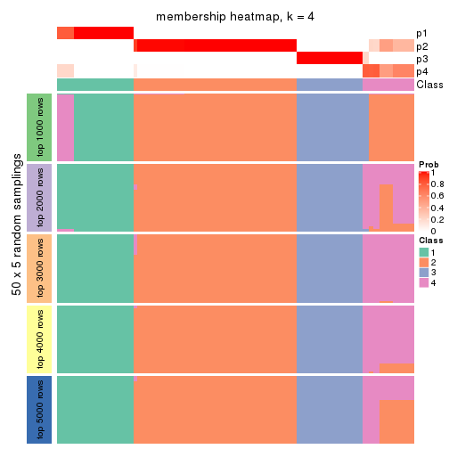
membership_heatmap(res, k = 5)
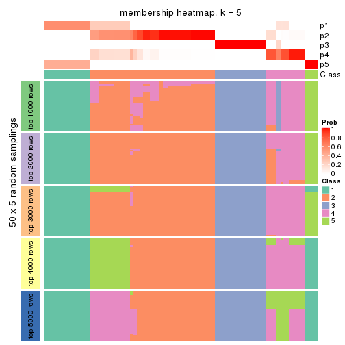
membership_heatmap(res, k = 6)
As soon as we have had the classes for columns, we can look for signatures which are significantly different between classes which can be candidate marks for certain classes. Following are the heatmaps for signatures.
Signature heatmaps where rows are scaled:
get_signatures(res, k = 2)
get_signatures(res, k = 3)

get_signatures(res, k = 4)
get_signatures(res, k = 5)
get_signatures(res, k = 6)
Signature heatmaps where rows are not scaled:
get_signatures(res, k = 2, scale_rows = FALSE)
get_signatures(res, k = 3, scale_rows = FALSE)
get_signatures(res, k = 4, scale_rows = FALSE)
get_signatures(res, k = 5, scale_rows = FALSE)
get_signatures(res, k = 6, scale_rows = FALSE)
Compare the overlap of signatures from different k:
compare_signatures(res)
get_signature() returns a data frame invisibly. TO get the list of signatures, the function
call should be assigned to a variable explicitly. In following code, if plot argument is set
to FALSE, no heatmap is plotted while only the differential analysis is performed.
# code only for demonstration
tb = get_signature(res, k = ..., plot = FALSE)
An example of the output of tb is:
#> which_row fdr mean_1 mean_2 scaled_mean_1 scaled_mean_2 km
#> 1 38 0.042760348 8.373488 9.131774 -0.5533452 0.5164555 1
#> 2 40 0.018707592 7.106213 8.469186 -0.6173731 0.5762149 1
#> 3 55 0.019134737 10.221463 11.207825 -0.6159697 0.5749050 1
#> 4 59 0.006059896 5.921854 7.869574 -0.6899429 0.6439467 1
#> 5 60 0.018055526 8.928898 10.211722 -0.6204761 0.5791110 1
#> 6 98 0.009384629 15.714769 14.887706 0.6635654 -0.6193277 2
...
The columns in tb are:
which_row: row indices corresponding to the input matrix.fdr: FDR for the differential test. mean_x: The mean value in group x.scaled_mean_x: The mean value in group x after rows are scaled.km: Row groups if k-means clustering is applied to rows.UMAP plot which shows how samples are separated.
dimension_reduction(res, k = 2, method = "UMAP")
dimension_reduction(res, k = 3, method = "UMAP")
dimension_reduction(res, k = 4, method = "UMAP")
dimension_reduction(res, k = 5, method = "UMAP")
dimension_reduction(res, k = 6, method = "UMAP")
Following heatmap shows how subgroups are split when increasing k:
collect_classes(res)
If matrix rows can be associated to genes, consider to use GO_Enrichment(res,
...) to perform function enrichment for the signature genes.
The object with results only for a single top-value method and a single partition method can be extracted as:
res = res_list["ATC", "kmeans"]
# you can also extract it by
# res = res_list["ATC:kmeans"]
A summary of res and all the functions that can be applied to it:
res
#> A 'ConsensusPartition' object with k = 2, 3, 4, 5, 6.
#> On a matrix with 16717 rows and 168 columns.
#> Top rows (1000, 2000, 3000, 4000, 5000) are extracted by 'ATC' method.
#> Subgroups are detected by 'kmeans' method.
#> Performed in total 1250 partitions by row resampling.
#> Best k for subgroups seems to be 3.
#>
#> Following methods can be applied to this 'ConsensusPartition' object:
#> [1] "cola_report" "collect_classes" "collect_plots"
#> [4] "collect_stats" "colnames" "compare_signatures"
#> [7] "consensus_heatmap" "dimension_reduction" "functional_enrichment"
#> [10] "get_anno_col" "get_anno" "get_classes"
#> [13] "get_consensus" "get_matrix" "get_membership"
#> [16] "get_param" "get_signatures" "get_stats"
#> [19] "is_best_k" "is_stable_k" "membership_heatmap"
#> [22] "ncol" "nrow" "plot_ecdf"
#> [25] "rownames" "select_partition_number" "show"
#> [28] "suggest_best_k" "test_to_known_factors"
collect_plots() function collects all the plots made from res for all k (number of partitions)
into one single page to provide an easy and fast comparison between different k.
collect_plots(res)
The plots are:
k and the heatmap of
predicted classes for each k.k.k.k.All the plots in panels can be made by individual functions and they are plotted later in this section.
select_partition_number() produces several plots showing different
statistics for choosing “optimized” k. There are following statistics:
k;k, the area increased is defined as \(A_k - A_{k-1}\).The detailed explanations of these statistics can be found in the cola vignette.
Generally speaking, lower PAC score, higher mean silhouette score or higher
concordance corresponds to better partition. Rand index and Jaccard index
measure how similar the current partition is compared to partition with k-1.
If they are too similar, we won't accept k is better than k-1.
select_partition_number(res)
The numeric values for all these statistics can be obtained by get_stats().
get_stats(res)
#> k 1-PAC mean_silhouette concordance area_increased Rand Jaccard
#> 2 2 0.511 0.767 0.795 0.3350 0.661 0.661
#> 3 3 1.000 0.967 0.976 0.6663 0.762 0.641
#> 4 4 0.656 0.771 0.837 0.1896 0.987 0.970
#> 5 5 0.624 0.703 0.801 0.1070 0.859 0.664
#> 6 6 0.643 0.506 0.741 0.0647 0.985 0.950
suggest_best_k() suggests the best \(k\) based on these statistics. The rules are as follows:
NA.suggest_best_k(res)
#> [1] 3
Following shows the table of the partitions (You need to click the show/hide
code output link to see it). The membership matrix (columns with name p*)
is inferred by
clue::cl_consensus()
function with the SE method. Basically the value in the membership matrix
represents the probability to belong to a certain group. The finall class
label for an item is determined with the group with highest probability it
belongs to.
In get_classes() function, the entropy is calculated from the membership
matrix and the silhouette score is calculated from the consensus matrix.
cbind(get_classes(res, k = 2), get_membership(res, k = 2))
#> class entropy silhouette p1 p2
#> SRR1768889 2 0.000 0.486 0.000 1.000
#> SRR1768890 2 0.000 0.486 0.000 1.000
#> SRR1768891 2 0.991 0.782 0.444 0.556
#> SRR1768892 2 0.991 0.782 0.444 0.556
#> SRR1768893 2 0.991 0.782 0.444 0.556
#> SRR1768894 2 0.991 0.782 0.444 0.556
#> SRR1768895 2 0.994 0.777 0.456 0.544
#> SRR1768896 2 0.994 0.777 0.456 0.544
#> SRR1768821 2 0.994 0.777 0.456 0.544
#> SRR1768822 2 0.994 0.777 0.456 0.544
#> SRR1768823 2 0.994 0.777 0.456 0.544
#> SRR1768824 2 0.994 0.777 0.456 0.544
#> SRR1768825 2 0.991 0.782 0.444 0.556
#> SRR1768826 2 0.991 0.782 0.444 0.556
#> SRR1768827 2 0.991 0.782 0.444 0.556
#> SRR1768828 2 0.991 0.782 0.444 0.556
#> SRR1768829 2 0.994 0.777 0.456 0.544
#> SRR1768830 2 0.994 0.777 0.456 0.544
#> SRR1768831 2 0.994 0.777 0.456 0.544
#> SRR1768832 2 0.994 0.777 0.456 0.544
#> SRR1768833 2 0.994 0.777 0.456 0.544
#> SRR1768834 2 0.994 0.777 0.456 0.544
#> SRR1768835 2 0.991 0.782 0.444 0.556
#> SRR1768836 2 0.994 0.777 0.456 0.544
#> SRR1768837 2 0.994 0.777 0.456 0.544
#> SRR1768838 2 0.991 0.782 0.444 0.556
#> SRR1768839 2 0.991 0.782 0.444 0.556
#> SRR1768840 2 0.991 0.782 0.444 0.556
#> SRR1768841 2 0.991 0.782 0.444 0.556
#> SRR1768842 2 0.991 0.782 0.444 0.556
#> SRR1768843 2 0.991 0.782 0.444 0.556
#> SRR1768844 2 0.000 0.486 0.000 1.000
#> SRR1768845 2 0.000 0.486 0.000 1.000
#> SRR1768846 2 0.000 0.486 0.000 1.000
#> SRR1768847 2 0.000 0.486 0.000 1.000
#> SRR1768848 2 0.000 0.486 0.000 1.000
#> SRR1768849 2 0.000 0.486 0.000 1.000
#> SRR1768850 2 0.000 0.486 0.000 1.000
#> SRR1768851 2 0.000 0.486 0.000 1.000
#> SRR1768852 2 0.994 0.777 0.456 0.544
#> SRR1768853 2 0.994 0.777 0.456 0.544
#> SRR1768854 2 0.991 0.782 0.444 0.556
#> SRR1768855 2 0.000 0.486 0.000 1.000
#> SRR1768856 2 0.000 0.486 0.000 1.000
#> SRR1768857 2 0.000 0.486 0.000 1.000
#> SRR1768858 2 0.000 0.486 0.000 1.000
#> SRR1768859 2 0.000 0.486 0.000 1.000
#> SRR1768860 2 0.000 0.486 0.000 1.000
#> SRR1768861 2 0.991 0.782 0.444 0.556
#> SRR1768862 2 0.991 0.782 0.444 0.556
#> SRR1768863 2 0.991 0.782 0.444 0.556
#> SRR1768864 2 0.991 0.782 0.444 0.556
#> SRR1768865 2 0.992 0.781 0.448 0.552
#> SRR1768866 2 0.992 0.781 0.448 0.552
#> SRR1768867 2 0.994 0.777 0.456 0.544
#> SRR1768868 2 0.994 0.777 0.456 0.544
#> SRR1768869 2 0.994 0.777 0.456 0.544
#> SRR1768870 2 0.994 0.777 0.456 0.544
#> SRR1768871 2 0.994 0.777 0.456 0.544
#> SRR1768872 2 0.994 0.777 0.456 0.544
#> SRR1768873 2 0.995 0.772 0.460 0.540
#> SRR1768874 2 0.995 0.772 0.460 0.540
#> SRR1768875 2 0.000 0.486 0.000 1.000
#> SRR1768876 2 0.000 0.486 0.000 1.000
#> SRR1768877 2 0.000 0.486 0.000 1.000
#> SRR1768878 2 0.000 0.486 0.000 1.000
#> SRR1768879 2 0.991 0.782 0.444 0.556
#> SRR1768880 2 0.991 0.782 0.444 0.556
#> SRR1768881 2 0.994 0.777 0.456 0.544
#> SRR1768882 2 0.994 0.777 0.456 0.544
#> SRR1768883 2 0.000 0.486 0.000 1.000
#> SRR1768884 2 0.000 0.486 0.000 1.000
#> SRR1768885 2 0.000 0.486 0.000 1.000
#> SRR1768886 2 0.000 0.486 0.000 1.000
#> SRR1768887 2 0.000 0.486 0.000 1.000
#> SRR1768888 2 0.000 0.486 0.000 1.000
#> SRR1768897 2 0.991 0.782 0.444 0.556
#> SRR1768898 2 0.991 0.782 0.444 0.556
#> SRR1768899 2 0.994 0.777 0.456 0.544
#> SRR1768900 2 0.994 0.777 0.456 0.544
#> SRR1768901 2 0.000 0.486 0.000 1.000
#> SRR1768902 2 0.000 0.486 0.000 1.000
#> SRR1768903 2 0.000 0.486 0.000 1.000
#> SRR1768904 2 0.991 0.782 0.444 0.556
#> SRR1768905 2 0.991 0.782 0.444 0.556
#> SRR1768906 2 0.991 0.782 0.444 0.556
#> SRR1768907 2 0.991 0.782 0.444 0.556
#> SRR1768908 2 0.991 0.782 0.444 0.556
#> SRR1768909 2 0.991 0.782 0.444 0.556
#> SRR1768910 2 0.991 0.782 0.444 0.556
#> SRR1768911 2 0.991 0.782 0.444 0.556
#> SRR1768912 2 0.991 0.782 0.444 0.556
#> SRR1768913 2 0.991 0.782 0.444 0.556
#> SRR1768914 2 0.991 0.782 0.444 0.556
#> SRR1768915 2 0.991 0.782 0.444 0.556
#> SRR1768916 2 0.991 0.782 0.444 0.556
#> SRR1768917 2 0.991 0.782 0.444 0.556
#> SRR1768918 2 0.991 0.782 0.444 0.556
#> SRR1768919 2 0.991 0.782 0.444 0.556
#> SRR1768920 2 0.991 0.782 0.444 0.556
#> SRR1768921 2 0.991 0.782 0.444 0.556
#> SRR1768922 2 0.000 0.486 0.000 1.000
#> SRR1768923 2 0.000 0.486 0.000 1.000
#> SRR1768924 2 0.994 0.777 0.456 0.544
#> SRR1768925 2 0.994 0.777 0.456 0.544
#> SRR1768926 2 0.992 0.781 0.448 0.552
#> SRR1768927 2 0.992 0.781 0.448 0.552
#> SRR1768928 2 0.994 0.777 0.456 0.544
#> SRR1768929 2 0.994 0.777 0.456 0.544
#> SRR1768930 2 0.994 0.777 0.456 0.544
#> SRR1768931 2 0.994 0.777 0.456 0.544
#> SRR1768932 2 0.994 0.777 0.456 0.544
#> SRR1768933 2 0.994 0.777 0.456 0.544
#> SRR1768934 2 0.994 0.777 0.456 0.544
#> SRR1768935 2 0.994 0.777 0.456 0.544
#> SRR1768936 2 0.994 0.777 0.456 0.544
#> SRR1768937 2 0.994 0.777 0.456 0.544
#> SRR1768938 2 0.994 0.777 0.456 0.544
#> SRR1768939 2 0.991 0.782 0.444 0.556
#> SRR1768940 2 0.991 0.782 0.444 0.556
#> SRR1768941 2 0.994 0.777 0.456 0.544
#> SRR1768942 2 0.994 0.777 0.456 0.544
#> SRR1768943 2 0.994 0.777 0.456 0.544
#> SRR1768944 2 0.994 0.777 0.456 0.544
#> SRR1768945 2 0.994 0.777 0.456 0.544
#> SRR1768946 2 0.994 0.777 0.456 0.544
#> SRR1768947 2 0.000 0.486 0.000 1.000
#> SRR1768948 2 0.000 0.486 0.000 1.000
#> SRR1768949 2 0.000 0.486 0.000 1.000
#> SRR1768950 2 0.994 0.777 0.456 0.544
#> SRR1768954 1 0.000 1.000 1.000 0.000
#> SRR1768955 1 0.000 1.000 1.000 0.000
#> SRR1768956 1 0.000 1.000 1.000 0.000
#> SRR1768957 1 0.000 1.000 1.000 0.000
#> SRR1768958 1 0.000 1.000 1.000 0.000
#> SRR1768959 1 0.000 1.000 1.000 0.000
#> SRR1768960 1 0.000 1.000 1.000 0.000
#> SRR1768961 1 0.000 1.000 1.000 0.000
#> SRR1768952 2 0.991 0.782 0.444 0.556
#> SRR1768953 2 0.991 0.782 0.444 0.556
#> SRR1768962 1 0.000 1.000 1.000 0.000
#> SRR1768963 1 0.000 1.000 1.000 0.000
#> SRR1768964 1 0.000 1.000 1.000 0.000
#> SRR1768965 1 0.000 1.000 1.000 0.000
#> SRR1768966 1 0.000 1.000 1.000 0.000
#> SRR1768967 1 0.000 1.000 1.000 0.000
#> SRR1768968 1 0.000 1.000 1.000 0.000
#> SRR1768969 1 0.000 1.000 1.000 0.000
#> SRR1768970 1 0.000 1.000 1.000 0.000
#> SRR1768971 1 0.000 1.000 1.000 0.000
#> SRR1768972 1 0.000 1.000 1.000 0.000
#> SRR1768973 1 0.000 1.000 1.000 0.000
#> SRR1768974 1 0.000 1.000 1.000 0.000
#> SRR1768975 1 0.000 1.000 1.000 0.000
#> SRR1768976 1 0.000 1.000 1.000 0.000
#> SRR1768977 1 0.000 1.000 1.000 0.000
#> SRR1768978 1 0.000 1.000 1.000 0.000
#> SRR1768979 1 0.000 1.000 1.000 0.000
#> SRR1768980 1 0.000 1.000 1.000 0.000
#> SRR1768981 1 0.000 1.000 1.000 0.000
#> SRR1768982 1 0.000 1.000 1.000 0.000
#> SRR1768983 1 0.000 1.000 1.000 0.000
#> SRR1768984 1 0.000 1.000 1.000 0.000
#> SRR1768985 1 0.000 1.000 1.000 0.000
#> SRR1768986 1 0.000 1.000 1.000 0.000
#> SRR1768987 1 0.000 1.000 1.000 0.000
#> SRR1768988 1 0.000 1.000 1.000 0.000
#> SRR1768989 1 0.000 1.000 1.000 0.000
cbind(get_classes(res, k = 3), get_membership(res, k = 3))
#> class entropy silhouette p1 p2 p3
#> SRR1768889 3 0.1529 0.987 0.000 0.040 0.960
#> SRR1768890 3 0.1529 0.987 0.000 0.040 0.960
#> SRR1768891 2 0.0000 1.000 0.000 1.000 0.000
#> SRR1768892 2 0.0000 1.000 0.000 1.000 0.000
#> SRR1768893 2 0.0000 1.000 0.000 1.000 0.000
#> SRR1768894 2 0.0000 1.000 0.000 1.000 0.000
#> SRR1768895 2 0.0000 1.000 0.000 1.000 0.000
#> SRR1768896 2 0.0000 1.000 0.000 1.000 0.000
#> SRR1768821 2 0.0000 1.000 0.000 1.000 0.000
#> SRR1768822 2 0.0000 1.000 0.000 1.000 0.000
#> SRR1768823 2 0.0000 1.000 0.000 1.000 0.000
#> SRR1768824 2 0.0000 1.000 0.000 1.000 0.000
#> SRR1768825 2 0.0000 1.000 0.000 1.000 0.000
#> SRR1768826 2 0.0000 1.000 0.000 1.000 0.000
#> SRR1768827 2 0.0000 1.000 0.000 1.000 0.000
#> SRR1768828 2 0.0000 1.000 0.000 1.000 0.000
#> SRR1768829 2 0.0000 1.000 0.000 1.000 0.000
#> SRR1768830 2 0.0000 1.000 0.000 1.000 0.000
#> SRR1768831 2 0.0000 1.000 0.000 1.000 0.000
#> SRR1768832 2 0.0000 1.000 0.000 1.000 0.000
#> SRR1768833 2 0.0000 1.000 0.000 1.000 0.000
#> SRR1768834 2 0.0000 1.000 0.000 1.000 0.000
#> SRR1768835 2 0.0000 1.000 0.000 1.000 0.000
#> SRR1768836 2 0.0000 1.000 0.000 1.000 0.000
#> SRR1768837 2 0.0000 1.000 0.000 1.000 0.000
#> SRR1768838 2 0.0000 1.000 0.000 1.000 0.000
#> SRR1768839 2 0.0000 1.000 0.000 1.000 0.000
#> SRR1768840 2 0.0000 1.000 0.000 1.000 0.000
#> SRR1768841 2 0.0000 1.000 0.000 1.000 0.000
#> SRR1768842 2 0.0000 1.000 0.000 1.000 0.000
#> SRR1768843 2 0.0000 1.000 0.000 1.000 0.000
#> SRR1768844 3 0.1529 0.987 0.000 0.040 0.960
#> SRR1768845 3 0.1529 0.987 0.000 0.040 0.960
#> SRR1768846 3 0.1529 0.987 0.000 0.040 0.960
#> SRR1768847 3 0.1529 0.987 0.000 0.040 0.960
#> SRR1768848 3 0.1529 0.987 0.000 0.040 0.960
#> SRR1768849 3 0.1529 0.987 0.000 0.040 0.960
#> SRR1768850 3 0.1529 0.987 0.000 0.040 0.960
#> SRR1768851 3 0.1529 0.987 0.000 0.040 0.960
#> SRR1768852 2 0.0000 1.000 0.000 1.000 0.000
#> SRR1768853 2 0.0000 1.000 0.000 1.000 0.000
#> SRR1768854 2 0.0000 1.000 0.000 1.000 0.000
#> SRR1768855 3 0.1529 0.987 0.000 0.040 0.960
#> SRR1768856 3 0.1529 0.987 0.000 0.040 0.960
#> SRR1768857 3 0.1529 0.987 0.000 0.040 0.960
#> SRR1768858 3 0.1765 0.986 0.004 0.040 0.956
#> SRR1768859 3 0.1765 0.986 0.004 0.040 0.956
#> SRR1768860 3 0.1765 0.986 0.004 0.040 0.956
#> SRR1768861 2 0.0000 1.000 0.000 1.000 0.000
#> SRR1768862 2 0.0000 1.000 0.000 1.000 0.000
#> SRR1768863 2 0.0000 1.000 0.000 1.000 0.000
#> SRR1768864 2 0.0000 1.000 0.000 1.000 0.000
#> SRR1768865 2 0.0000 1.000 0.000 1.000 0.000
#> SRR1768866 2 0.0000 1.000 0.000 1.000 0.000
#> SRR1768867 2 0.0000 1.000 0.000 1.000 0.000
#> SRR1768868 2 0.0000 1.000 0.000 1.000 0.000
#> SRR1768869 2 0.0000 1.000 0.000 1.000 0.000
#> SRR1768870 2 0.0000 1.000 0.000 1.000 0.000
#> SRR1768871 2 0.0000 1.000 0.000 1.000 0.000
#> SRR1768872 2 0.0000 1.000 0.000 1.000 0.000
#> SRR1768873 2 0.0475 0.991 0.004 0.992 0.004
#> SRR1768874 2 0.0475 0.991 0.004 0.992 0.004
#> SRR1768875 3 0.1529 0.987 0.000 0.040 0.960
#> SRR1768876 3 0.1529 0.987 0.000 0.040 0.960
#> SRR1768877 3 0.1529 0.987 0.000 0.040 0.960
#> SRR1768878 3 0.1529 0.987 0.000 0.040 0.960
#> SRR1768879 2 0.0000 1.000 0.000 1.000 0.000
#> SRR1768880 2 0.0000 1.000 0.000 1.000 0.000
#> SRR1768881 2 0.0000 1.000 0.000 1.000 0.000
#> SRR1768882 2 0.0000 1.000 0.000 1.000 0.000
#> SRR1768883 3 0.1765 0.986 0.004 0.040 0.956
#> SRR1768884 3 0.1765 0.986 0.004 0.040 0.956
#> SRR1768885 3 0.1529 0.987 0.000 0.040 0.960
#> SRR1768886 3 0.1529 0.987 0.000 0.040 0.960
#> SRR1768887 3 0.1529 0.987 0.000 0.040 0.960
#> SRR1768888 3 0.1529 0.987 0.000 0.040 0.960
#> SRR1768897 2 0.0000 1.000 0.000 1.000 0.000
#> SRR1768898 2 0.0000 1.000 0.000 1.000 0.000
#> SRR1768899 2 0.0000 1.000 0.000 1.000 0.000
#> SRR1768900 2 0.0000 1.000 0.000 1.000 0.000
#> SRR1768901 3 0.4351 0.812 0.004 0.168 0.828
#> SRR1768902 3 0.4733 0.769 0.004 0.196 0.800
#> SRR1768903 3 0.1765 0.986 0.004 0.040 0.956
#> SRR1768904 2 0.0000 1.000 0.000 1.000 0.000
#> SRR1768905 2 0.0000 1.000 0.000 1.000 0.000
#> SRR1768906 2 0.0237 0.995 0.004 0.996 0.000
#> SRR1768907 2 0.0000 1.000 0.000 1.000 0.000
#> SRR1768908 2 0.0000 1.000 0.000 1.000 0.000
#> SRR1768909 2 0.0000 1.000 0.000 1.000 0.000
#> SRR1768910 2 0.0000 1.000 0.000 1.000 0.000
#> SRR1768911 2 0.0000 1.000 0.000 1.000 0.000
#> SRR1768912 2 0.0000 1.000 0.000 1.000 0.000
#> SRR1768913 2 0.0000 1.000 0.000 1.000 0.000
#> SRR1768914 2 0.0000 1.000 0.000 1.000 0.000
#> SRR1768915 2 0.0000 1.000 0.000 1.000 0.000
#> SRR1768916 2 0.0000 1.000 0.000 1.000 0.000
#> SRR1768917 2 0.0000 1.000 0.000 1.000 0.000
#> SRR1768918 2 0.0000 1.000 0.000 1.000 0.000
#> SRR1768919 2 0.0000 1.000 0.000 1.000 0.000
#> SRR1768920 2 0.0000 1.000 0.000 1.000 0.000
#> SRR1768921 2 0.0000 1.000 0.000 1.000 0.000
#> SRR1768922 3 0.1765 0.986 0.004 0.040 0.956
#> SRR1768923 3 0.1765 0.986 0.004 0.040 0.956
#> SRR1768924 2 0.0000 1.000 0.000 1.000 0.000
#> SRR1768925 2 0.0000 1.000 0.000 1.000 0.000
#> SRR1768926 2 0.0000 1.000 0.000 1.000 0.000
#> SRR1768927 2 0.0000 1.000 0.000 1.000 0.000
#> SRR1768928 2 0.0000 1.000 0.000 1.000 0.000
#> SRR1768929 2 0.0000 1.000 0.000 1.000 0.000
#> SRR1768930 2 0.0000 1.000 0.000 1.000 0.000
#> SRR1768931 2 0.0000 1.000 0.000 1.000 0.000
#> SRR1768932 2 0.0000 1.000 0.000 1.000 0.000
#> SRR1768933 2 0.0000 1.000 0.000 1.000 0.000
#> SRR1768934 2 0.0000 1.000 0.000 1.000 0.000
#> SRR1768935 2 0.0000 1.000 0.000 1.000 0.000
#> SRR1768936 2 0.0000 1.000 0.000 1.000 0.000
#> SRR1768937 2 0.0000 1.000 0.000 1.000 0.000
#> SRR1768938 2 0.0000 1.000 0.000 1.000 0.000
#> SRR1768939 2 0.0000 1.000 0.000 1.000 0.000
#> SRR1768940 2 0.0000 1.000 0.000 1.000 0.000
#> SRR1768941 2 0.0000 1.000 0.000 1.000 0.000
#> SRR1768942 2 0.0000 1.000 0.000 1.000 0.000
#> SRR1768943 2 0.0000 1.000 0.000 1.000 0.000
#> SRR1768944 2 0.0000 1.000 0.000 1.000 0.000
#> SRR1768945 2 0.0000 1.000 0.000 1.000 0.000
#> SRR1768946 2 0.0000 1.000 0.000 1.000 0.000
#> SRR1768947 3 0.1765 0.986 0.004 0.040 0.956
#> SRR1768948 3 0.1765 0.986 0.004 0.040 0.956
#> SRR1768949 3 0.1765 0.986 0.004 0.040 0.956
#> SRR1768950 2 0.0000 1.000 0.000 1.000 0.000
#> SRR1768954 1 0.0475 0.923 0.992 0.004 0.004
#> SRR1768955 1 0.0475 0.923 0.992 0.004 0.004
#> SRR1768956 1 0.0475 0.923 0.992 0.004 0.004
#> SRR1768957 1 0.0475 0.923 0.992 0.004 0.004
#> SRR1768958 1 0.0475 0.923 0.992 0.004 0.004
#> SRR1768959 1 0.0475 0.923 0.992 0.004 0.004
#> SRR1768960 1 0.0475 0.923 0.992 0.004 0.004
#> SRR1768961 1 0.0475 0.923 0.992 0.004 0.004
#> SRR1768952 2 0.0000 1.000 0.000 1.000 0.000
#> SRR1768953 2 0.0000 1.000 0.000 1.000 0.000
#> SRR1768962 1 0.0237 0.923 0.996 0.004 0.000
#> SRR1768963 1 0.0237 0.923 0.996 0.004 0.000
#> SRR1768964 1 0.0237 0.923 0.996 0.004 0.000
#> SRR1768965 1 0.0237 0.923 0.996 0.004 0.000
#> SRR1768966 1 0.0237 0.923 0.996 0.004 0.000
#> SRR1768967 1 0.0237 0.923 0.996 0.004 0.000
#> SRR1768968 1 0.0237 0.923 0.996 0.004 0.000
#> SRR1768969 1 0.0237 0.923 0.996 0.004 0.000
#> SRR1768970 1 0.0475 0.922 0.992 0.004 0.004
#> SRR1768971 1 0.0475 0.922 0.992 0.004 0.004
#> SRR1768972 1 0.1647 0.918 0.960 0.004 0.036
#> SRR1768973 1 0.1647 0.918 0.960 0.004 0.036
#> SRR1768974 1 0.1647 0.918 0.960 0.004 0.036
#> SRR1768975 1 0.1647 0.918 0.960 0.004 0.036
#> SRR1768976 1 0.1647 0.918 0.960 0.004 0.036
#> SRR1768977 1 0.1647 0.918 0.960 0.004 0.036
#> SRR1768978 1 0.1647 0.918 0.960 0.004 0.036
#> SRR1768979 1 0.1647 0.918 0.960 0.004 0.036
#> SRR1768980 1 0.1647 0.918 0.960 0.004 0.036
#> SRR1768981 1 0.1647 0.918 0.960 0.004 0.036
#> SRR1768982 1 0.1647 0.918 0.960 0.004 0.036
#> SRR1768983 1 0.1647 0.918 0.960 0.004 0.036
#> SRR1768984 1 0.5201 0.687 0.760 0.236 0.004
#> SRR1768985 1 0.5201 0.687 0.760 0.236 0.004
#> SRR1768986 1 0.5365 0.668 0.744 0.252 0.004
#> SRR1768987 1 0.5365 0.668 0.744 0.252 0.004
#> SRR1768988 1 0.6169 0.506 0.636 0.360 0.004
#> SRR1768989 1 0.6169 0.506 0.636 0.360 0.004
cbind(get_classes(res, k = 4), get_membership(res, k = 4))
#> class entropy silhouette p1 p2 p3 p4
#> SRR1768889 3 0.0000 0.945 0.000 0.000 1.000 0.000
#> SRR1768890 3 0.0000 0.945 0.000 0.000 1.000 0.000
#> SRR1768891 2 0.1867 0.771 0.000 0.928 0.000 0.072
#> SRR1768892 2 0.1867 0.771 0.000 0.928 0.000 0.072
#> SRR1768893 2 0.0707 0.766 0.000 0.980 0.000 0.020
#> SRR1768894 2 0.0707 0.766 0.000 0.980 0.000 0.020
#> SRR1768895 2 0.3688 0.716 0.000 0.792 0.000 0.208
#> SRR1768896 2 0.3688 0.716 0.000 0.792 0.000 0.208
#> SRR1768821 2 0.4477 0.616 0.000 0.688 0.000 0.312
#> SRR1768822 2 0.4477 0.616 0.000 0.688 0.000 0.312
#> SRR1768823 2 0.4977 0.427 0.000 0.540 0.000 0.460
#> SRR1768824 2 0.4977 0.427 0.000 0.540 0.000 0.460
#> SRR1768825 2 0.2149 0.766 0.000 0.912 0.000 0.088
#> SRR1768826 2 0.2149 0.766 0.000 0.912 0.000 0.088
#> SRR1768827 2 0.3873 0.714 0.000 0.772 0.000 0.228
#> SRR1768828 2 0.3873 0.714 0.000 0.772 0.000 0.228
#> SRR1768829 2 0.3074 0.740 0.000 0.848 0.000 0.152
#> SRR1768830 2 0.3074 0.740 0.000 0.848 0.000 0.152
#> SRR1768831 2 0.4304 0.609 0.000 0.716 0.000 0.284
#> SRR1768832 2 0.4304 0.609 0.000 0.716 0.000 0.284
#> SRR1768833 2 0.1940 0.759 0.000 0.924 0.000 0.076
#> SRR1768834 2 0.1940 0.759 0.000 0.924 0.000 0.076
#> SRR1768835 2 0.1940 0.759 0.000 0.924 0.000 0.076
#> SRR1768836 2 0.4331 0.604 0.000 0.712 0.000 0.288
#> SRR1768837 2 0.4331 0.604 0.000 0.712 0.000 0.288
#> SRR1768838 2 0.1867 0.759 0.000 0.928 0.000 0.072
#> SRR1768839 2 0.1867 0.759 0.000 0.928 0.000 0.072
#> SRR1768840 2 0.0921 0.764 0.000 0.972 0.000 0.028
#> SRR1768841 2 0.0921 0.764 0.000 0.972 0.000 0.028
#> SRR1768842 2 0.0817 0.764 0.000 0.976 0.000 0.024
#> SRR1768843 2 0.0817 0.764 0.000 0.976 0.000 0.024
#> SRR1768844 3 0.0188 0.944 0.000 0.000 0.996 0.004
#> SRR1768845 3 0.0188 0.944 0.000 0.000 0.996 0.004
#> SRR1768846 3 0.2921 0.893 0.000 0.000 0.860 0.140
#> SRR1768847 3 0.2921 0.893 0.000 0.000 0.860 0.140
#> SRR1768848 3 0.0188 0.944 0.000 0.000 0.996 0.004
#> SRR1768849 3 0.0188 0.944 0.000 0.000 0.996 0.004
#> SRR1768850 3 0.0707 0.943 0.000 0.000 0.980 0.020
#> SRR1768851 3 0.0707 0.943 0.000 0.000 0.980 0.020
#> SRR1768852 2 0.2921 0.762 0.000 0.860 0.000 0.140
#> SRR1768853 2 0.2921 0.762 0.000 0.860 0.000 0.140
#> SRR1768854 2 0.1716 0.771 0.000 0.936 0.000 0.064
#> SRR1768855 3 0.0000 0.945 0.000 0.000 1.000 0.000
#> SRR1768856 3 0.0000 0.945 0.000 0.000 1.000 0.000
#> SRR1768857 3 0.0000 0.945 0.000 0.000 1.000 0.000
#> SRR1768858 3 0.0817 0.942 0.000 0.000 0.976 0.024
#> SRR1768859 3 0.0817 0.942 0.000 0.000 0.976 0.024
#> SRR1768860 3 0.0707 0.943 0.000 0.000 0.980 0.020
#> SRR1768861 2 0.1474 0.771 0.000 0.948 0.000 0.052
#> SRR1768862 2 0.1474 0.771 0.000 0.948 0.000 0.052
#> SRR1768863 2 0.1474 0.771 0.000 0.948 0.000 0.052
#> SRR1768864 2 0.1474 0.771 0.000 0.948 0.000 0.052
#> SRR1768865 2 0.1474 0.770 0.000 0.948 0.000 0.052
#> SRR1768866 2 0.1474 0.770 0.000 0.948 0.000 0.052
#> SRR1768867 2 0.4972 0.436 0.000 0.544 0.000 0.456
#> SRR1768868 2 0.4972 0.436 0.000 0.544 0.000 0.456
#> SRR1768869 2 0.4981 0.424 0.000 0.536 0.000 0.464
#> SRR1768870 2 0.4981 0.424 0.000 0.536 0.000 0.464
#> SRR1768871 2 0.4985 0.420 0.000 0.532 0.000 0.468
#> SRR1768872 2 0.4985 0.420 0.000 0.532 0.000 0.468
#> SRR1768873 2 0.4996 0.378 0.000 0.516 0.000 0.484
#> SRR1768874 2 0.4996 0.378 0.000 0.516 0.000 0.484
#> SRR1768875 3 0.0000 0.945 0.000 0.000 1.000 0.000
#> SRR1768876 3 0.0000 0.945 0.000 0.000 1.000 0.000
#> SRR1768877 3 0.0000 0.945 0.000 0.000 1.000 0.000
#> SRR1768878 3 0.0000 0.945 0.000 0.000 1.000 0.000
#> SRR1768879 2 0.1022 0.762 0.000 0.968 0.000 0.032
#> SRR1768880 2 0.1022 0.762 0.000 0.968 0.000 0.032
#> SRR1768881 2 0.4994 0.399 0.000 0.520 0.000 0.480
#> SRR1768882 2 0.4994 0.399 0.000 0.520 0.000 0.480
#> SRR1768883 3 0.3024 0.887 0.000 0.000 0.852 0.148
#> SRR1768884 3 0.3024 0.887 0.000 0.000 0.852 0.148
#> SRR1768885 3 0.0000 0.945 0.000 0.000 1.000 0.000
#> SRR1768886 3 0.0000 0.945 0.000 0.000 1.000 0.000
#> SRR1768887 3 0.0000 0.945 0.000 0.000 1.000 0.000
#> SRR1768888 3 0.0000 0.945 0.000 0.000 1.000 0.000
#> SRR1768897 2 0.1867 0.746 0.000 0.928 0.000 0.072
#> SRR1768898 2 0.1867 0.746 0.000 0.928 0.000 0.072
#> SRR1768899 2 0.1302 0.771 0.000 0.956 0.000 0.044
#> SRR1768900 2 0.1302 0.771 0.000 0.956 0.000 0.044
#> SRR1768901 3 0.6873 0.586 0.000 0.160 0.588 0.252
#> SRR1768902 3 0.7082 0.539 0.000 0.184 0.564 0.252
#> SRR1768903 3 0.5137 0.774 0.000 0.040 0.716 0.244
#> SRR1768904 2 0.2704 0.706 0.000 0.876 0.000 0.124
#> SRR1768905 2 0.2704 0.706 0.000 0.876 0.000 0.124
#> SRR1768906 2 0.2760 0.702 0.000 0.872 0.000 0.128
#> SRR1768907 2 0.0921 0.761 0.000 0.972 0.000 0.028
#> SRR1768908 2 0.0921 0.761 0.000 0.972 0.000 0.028
#> SRR1768909 2 0.0921 0.761 0.000 0.972 0.000 0.028
#> SRR1768910 2 0.0921 0.761 0.000 0.972 0.000 0.028
#> SRR1768911 2 0.0921 0.761 0.000 0.972 0.000 0.028
#> SRR1768912 2 0.0921 0.761 0.000 0.972 0.000 0.028
#> SRR1768913 2 0.0921 0.761 0.000 0.972 0.000 0.028
#> SRR1768914 2 0.0921 0.761 0.000 0.972 0.000 0.028
#> SRR1768915 2 0.0921 0.761 0.000 0.972 0.000 0.028
#> SRR1768916 2 0.2408 0.722 0.000 0.896 0.000 0.104
#> SRR1768917 2 0.4008 0.704 0.000 0.756 0.000 0.244
#> SRR1768918 2 0.0817 0.761 0.000 0.976 0.000 0.024
#> SRR1768919 2 0.0817 0.761 0.000 0.976 0.000 0.024
#> SRR1768920 2 0.3907 0.711 0.000 0.768 0.000 0.232
#> SRR1768921 2 0.3907 0.711 0.000 0.768 0.000 0.232
#> SRR1768922 3 0.3219 0.879 0.000 0.000 0.836 0.164
#> SRR1768923 3 0.3219 0.879 0.000 0.000 0.836 0.164
#> SRR1768924 2 0.3172 0.715 0.000 0.840 0.000 0.160
#> SRR1768925 2 0.3172 0.715 0.000 0.840 0.000 0.160
#> SRR1768926 2 0.3172 0.715 0.000 0.840 0.000 0.160
#> SRR1768927 2 0.3172 0.715 0.000 0.840 0.000 0.160
#> SRR1768928 2 0.3266 0.709 0.000 0.832 0.000 0.168
#> SRR1768929 2 0.3266 0.709 0.000 0.832 0.000 0.168
#> SRR1768930 2 0.4961 0.448 0.000 0.552 0.000 0.448
#> SRR1768931 2 0.4961 0.448 0.000 0.552 0.000 0.448
#> SRR1768932 2 0.4961 0.448 0.000 0.552 0.000 0.448
#> SRR1768933 2 0.4967 0.446 0.000 0.548 0.000 0.452
#> SRR1768934 2 0.4967 0.446 0.000 0.548 0.000 0.452
#> SRR1768935 2 0.4967 0.446 0.000 0.548 0.000 0.452
#> SRR1768936 2 0.4967 0.446 0.000 0.548 0.000 0.452
#> SRR1768937 2 0.4967 0.446 0.000 0.548 0.000 0.452
#> SRR1768938 2 0.4955 0.460 0.000 0.556 0.000 0.444
#> SRR1768939 2 0.4072 0.689 0.000 0.748 0.000 0.252
#> SRR1768940 2 0.4072 0.689 0.000 0.748 0.000 0.252
#> SRR1768941 2 0.4040 0.704 0.000 0.752 0.000 0.248
#> SRR1768942 2 0.4040 0.704 0.000 0.752 0.000 0.248
#> SRR1768943 2 0.4040 0.704 0.000 0.752 0.000 0.248
#> SRR1768944 2 0.4040 0.704 0.000 0.752 0.000 0.248
#> SRR1768945 2 0.4040 0.704 0.000 0.752 0.000 0.248
#> SRR1768946 2 0.4040 0.704 0.000 0.752 0.000 0.248
#> SRR1768947 3 0.1022 0.939 0.000 0.000 0.968 0.032
#> SRR1768948 3 0.1022 0.939 0.000 0.000 0.968 0.032
#> SRR1768949 3 0.1302 0.936 0.000 0.000 0.956 0.044
#> SRR1768950 2 0.4941 0.464 0.000 0.564 0.000 0.436
#> SRR1768954 1 0.0000 0.953 1.000 0.000 0.000 0.000
#> SRR1768955 1 0.0000 0.953 1.000 0.000 0.000 0.000
#> SRR1768956 1 0.0000 0.953 1.000 0.000 0.000 0.000
#> SRR1768957 1 0.0000 0.953 1.000 0.000 0.000 0.000
#> SRR1768958 1 0.0000 0.953 1.000 0.000 0.000 0.000
#> SRR1768959 1 0.0000 0.953 1.000 0.000 0.000 0.000
#> SRR1768960 1 0.0000 0.953 1.000 0.000 0.000 0.000
#> SRR1768961 1 0.0000 0.953 1.000 0.000 0.000 0.000
#> SRR1768952 2 0.0336 0.766 0.000 0.992 0.000 0.008
#> SRR1768953 2 0.0336 0.766 0.000 0.992 0.000 0.008
#> SRR1768962 1 0.0336 0.952 0.992 0.000 0.000 0.008
#> SRR1768963 1 0.0336 0.952 0.992 0.000 0.000 0.008
#> SRR1768964 1 0.0336 0.952 0.992 0.000 0.000 0.008
#> SRR1768965 1 0.0336 0.952 0.992 0.000 0.000 0.008
#> SRR1768966 1 0.0336 0.952 0.992 0.000 0.000 0.008
#> SRR1768967 1 0.0336 0.952 0.992 0.000 0.000 0.008
#> SRR1768968 1 0.0336 0.952 0.992 0.000 0.000 0.008
#> SRR1768969 1 0.0336 0.952 0.992 0.000 0.000 0.008
#> SRR1768970 1 0.3400 0.796 0.820 0.000 0.000 0.180
#> SRR1768971 1 0.3400 0.796 0.820 0.000 0.000 0.180
#> SRR1768972 1 0.1389 0.943 0.952 0.000 0.000 0.048
#> SRR1768973 1 0.1389 0.943 0.952 0.000 0.000 0.048
#> SRR1768974 1 0.1389 0.943 0.952 0.000 0.000 0.048
#> SRR1768975 1 0.1389 0.943 0.952 0.000 0.000 0.048
#> SRR1768976 1 0.1389 0.943 0.952 0.000 0.000 0.048
#> SRR1768977 1 0.1389 0.943 0.952 0.000 0.000 0.048
#> SRR1768978 1 0.2469 0.916 0.892 0.000 0.000 0.108
#> SRR1768979 1 0.2469 0.916 0.892 0.000 0.000 0.108
#> SRR1768980 1 0.2469 0.916 0.892 0.000 0.000 0.108
#> SRR1768981 1 0.2469 0.916 0.892 0.000 0.000 0.108
#> SRR1768982 1 0.2469 0.916 0.892 0.000 0.000 0.108
#> SRR1768983 1 0.2469 0.916 0.892 0.000 0.000 0.108
#> SRR1768984 4 0.6578 0.942 0.300 0.108 0.000 0.592
#> SRR1768985 4 0.6578 0.942 0.300 0.108 0.000 0.592
#> SRR1768986 4 0.6726 0.953 0.292 0.124 0.000 0.584
#> SRR1768987 4 0.6726 0.953 0.292 0.124 0.000 0.584
#> SRR1768988 4 0.6873 0.926 0.252 0.160 0.000 0.588
#> SRR1768989 4 0.6873 0.926 0.252 0.160 0.000 0.588
cbind(get_classes(res, k = 5), get_membership(res, k = 5))
#> class entropy silhouette p1 p2 p3 p4 p5
#> SRR1768889 3 0.0162 0.859 0.000 0.000 0.996 0.004 0.000
#> SRR1768890 3 0.0162 0.859 0.000 0.000 0.996 0.004 0.000
#> SRR1768891 2 0.3301 0.710 0.000 0.848 0.000 0.080 0.072
#> SRR1768892 2 0.3301 0.710 0.000 0.848 0.000 0.080 0.072
#> SRR1768893 2 0.2535 0.723 0.000 0.892 0.000 0.032 0.076
#> SRR1768894 2 0.2535 0.723 0.000 0.892 0.000 0.032 0.076
#> SRR1768895 2 0.4956 0.423 0.000 0.636 0.000 0.316 0.048
#> SRR1768896 2 0.4956 0.423 0.000 0.636 0.000 0.316 0.048
#> SRR1768821 4 0.5337 0.283 0.000 0.440 0.000 0.508 0.052
#> SRR1768822 4 0.5337 0.283 0.000 0.440 0.000 0.508 0.052
#> SRR1768823 4 0.4080 0.781 0.000 0.252 0.000 0.728 0.020
#> SRR1768824 4 0.4080 0.781 0.000 0.252 0.000 0.728 0.020
#> SRR1768825 2 0.4350 0.655 0.000 0.764 0.000 0.152 0.084
#> SRR1768826 2 0.4350 0.655 0.000 0.764 0.000 0.152 0.084
#> SRR1768827 2 0.6155 0.515 0.000 0.560 0.000 0.212 0.228
#> SRR1768828 2 0.6155 0.515 0.000 0.560 0.000 0.212 0.228
#> SRR1768829 2 0.4930 0.586 0.000 0.696 0.000 0.220 0.084
#> SRR1768830 2 0.4930 0.586 0.000 0.696 0.000 0.220 0.084
#> SRR1768831 2 0.5974 0.196 0.000 0.548 0.000 0.320 0.132
#> SRR1768832 2 0.5974 0.196 0.000 0.548 0.000 0.320 0.132
#> SRR1768833 2 0.4255 0.653 0.000 0.776 0.000 0.096 0.128
#> SRR1768834 2 0.4255 0.653 0.000 0.776 0.000 0.096 0.128
#> SRR1768835 2 0.4247 0.656 0.000 0.776 0.000 0.092 0.132
#> SRR1768836 2 0.5987 0.188 0.000 0.544 0.000 0.324 0.132
#> SRR1768837 2 0.5987 0.188 0.000 0.544 0.000 0.324 0.132
#> SRR1768838 2 0.4002 0.654 0.000 0.796 0.000 0.084 0.120
#> SRR1768839 2 0.4002 0.654 0.000 0.796 0.000 0.084 0.120
#> SRR1768840 2 0.2740 0.690 0.000 0.876 0.000 0.028 0.096
#> SRR1768841 2 0.2740 0.690 0.000 0.876 0.000 0.028 0.096
#> SRR1768842 2 0.2464 0.695 0.000 0.888 0.000 0.016 0.096
#> SRR1768843 2 0.2464 0.695 0.000 0.888 0.000 0.016 0.096
#> SRR1768844 3 0.0798 0.857 0.000 0.000 0.976 0.016 0.008
#> SRR1768845 3 0.0798 0.857 0.000 0.000 0.976 0.016 0.008
#> SRR1768846 3 0.4021 0.624 0.000 0.000 0.764 0.036 0.200
#> SRR1768847 3 0.4021 0.624 0.000 0.000 0.764 0.036 0.200
#> SRR1768848 3 0.0162 0.859 0.000 0.000 0.996 0.004 0.000
#> SRR1768849 3 0.0162 0.859 0.000 0.000 0.996 0.004 0.000
#> SRR1768850 3 0.1893 0.842 0.000 0.000 0.928 0.048 0.024
#> SRR1768851 3 0.1893 0.842 0.000 0.000 0.928 0.048 0.024
#> SRR1768852 2 0.3930 0.683 0.000 0.792 0.000 0.152 0.056
#> SRR1768853 2 0.3930 0.683 0.000 0.792 0.000 0.152 0.056
#> SRR1768854 2 0.3390 0.709 0.000 0.840 0.000 0.100 0.060
#> SRR1768855 3 0.0162 0.859 0.000 0.000 0.996 0.004 0.000
#> SRR1768856 3 0.0162 0.859 0.000 0.000 0.996 0.004 0.000
#> SRR1768857 3 0.0162 0.859 0.000 0.000 0.996 0.004 0.000
#> SRR1768858 3 0.2446 0.826 0.000 0.000 0.900 0.056 0.044
#> SRR1768859 3 0.2446 0.826 0.000 0.000 0.900 0.056 0.044
#> SRR1768860 3 0.2291 0.831 0.000 0.000 0.908 0.056 0.036
#> SRR1768861 2 0.3339 0.697 0.000 0.840 0.000 0.112 0.048
#> SRR1768862 2 0.3339 0.697 0.000 0.840 0.000 0.112 0.048
#> SRR1768863 2 0.3359 0.700 0.000 0.840 0.000 0.108 0.052
#> SRR1768864 2 0.3359 0.700 0.000 0.840 0.000 0.108 0.052
#> SRR1768865 2 0.3517 0.701 0.000 0.832 0.000 0.100 0.068
#> SRR1768866 2 0.3517 0.701 0.000 0.832 0.000 0.100 0.068
#> SRR1768867 4 0.4167 0.778 0.000 0.252 0.000 0.724 0.024
#> SRR1768868 4 0.4167 0.778 0.000 0.252 0.000 0.724 0.024
#> SRR1768869 4 0.4114 0.779 0.000 0.244 0.000 0.732 0.024
#> SRR1768870 4 0.4114 0.779 0.000 0.244 0.000 0.732 0.024
#> SRR1768871 4 0.4378 0.771 0.000 0.248 0.000 0.716 0.036
#> SRR1768872 4 0.4378 0.771 0.000 0.248 0.000 0.716 0.036
#> SRR1768873 4 0.4104 0.770 0.000 0.220 0.000 0.748 0.032
#> SRR1768874 4 0.4104 0.770 0.000 0.220 0.000 0.748 0.032
#> SRR1768875 3 0.0510 0.858 0.000 0.000 0.984 0.016 0.000
#> SRR1768876 3 0.0510 0.858 0.000 0.000 0.984 0.016 0.000
#> SRR1768877 3 0.0000 0.859 0.000 0.000 1.000 0.000 0.000
#> SRR1768878 3 0.0000 0.859 0.000 0.000 1.000 0.000 0.000
#> SRR1768879 2 0.1041 0.724 0.000 0.964 0.000 0.004 0.032
#> SRR1768880 2 0.1041 0.724 0.000 0.964 0.000 0.004 0.032
#> SRR1768881 4 0.4689 0.762 0.000 0.264 0.000 0.688 0.048
#> SRR1768882 4 0.4689 0.762 0.000 0.264 0.000 0.688 0.048
#> SRR1768883 3 0.4083 0.587 0.000 0.000 0.744 0.028 0.228
#> SRR1768884 3 0.4083 0.587 0.000 0.000 0.744 0.028 0.228
#> SRR1768885 3 0.0000 0.859 0.000 0.000 1.000 0.000 0.000
#> SRR1768886 3 0.0000 0.859 0.000 0.000 1.000 0.000 0.000
#> SRR1768887 3 0.0000 0.859 0.000 0.000 1.000 0.000 0.000
#> SRR1768888 3 0.0000 0.859 0.000 0.000 1.000 0.000 0.000
#> SRR1768897 2 0.3359 0.699 0.000 0.840 0.000 0.052 0.108
#> SRR1768898 2 0.3359 0.699 0.000 0.840 0.000 0.052 0.108
#> SRR1768899 2 0.3432 0.688 0.000 0.828 0.000 0.132 0.040
#> SRR1768900 2 0.3432 0.688 0.000 0.828 0.000 0.132 0.040
#> SRR1768901 5 0.6571 0.958 0.000 0.156 0.412 0.008 0.424
#> SRR1768902 5 0.6640 0.960 0.000 0.168 0.400 0.008 0.424
#> SRR1768903 3 0.5371 -0.543 0.000 0.056 0.524 0.000 0.420
#> SRR1768904 2 0.4451 0.604 0.000 0.712 0.000 0.040 0.248
#> SRR1768905 2 0.4451 0.604 0.000 0.712 0.000 0.040 0.248
#> SRR1768906 2 0.4477 0.598 0.000 0.708 0.000 0.040 0.252
#> SRR1768907 2 0.1121 0.719 0.000 0.956 0.000 0.000 0.044
#> SRR1768908 2 0.1121 0.719 0.000 0.956 0.000 0.000 0.044
#> SRR1768909 2 0.1121 0.719 0.000 0.956 0.000 0.000 0.044
#> SRR1768910 2 0.1341 0.717 0.000 0.944 0.000 0.000 0.056
#> SRR1768911 2 0.1341 0.717 0.000 0.944 0.000 0.000 0.056
#> SRR1768912 2 0.1341 0.717 0.000 0.944 0.000 0.000 0.056
#> SRR1768913 2 0.1270 0.718 0.000 0.948 0.000 0.000 0.052
#> SRR1768914 2 0.1270 0.718 0.000 0.948 0.000 0.000 0.052
#> SRR1768915 2 0.1270 0.718 0.000 0.948 0.000 0.000 0.052
#> SRR1768916 2 0.4890 0.607 0.000 0.680 0.000 0.064 0.256
#> SRR1768917 2 0.6176 0.501 0.000 0.548 0.000 0.184 0.268
#> SRR1768918 2 0.1331 0.723 0.000 0.952 0.000 0.008 0.040
#> SRR1768919 2 0.1331 0.723 0.000 0.952 0.000 0.008 0.040
#> SRR1768920 2 0.5987 0.536 0.000 0.584 0.000 0.180 0.236
#> SRR1768921 2 0.5987 0.536 0.000 0.584 0.000 0.180 0.236
#> SRR1768922 3 0.4221 0.566 0.000 0.000 0.732 0.032 0.236
#> SRR1768923 3 0.4221 0.566 0.000 0.000 0.732 0.032 0.236
#> SRR1768924 2 0.5109 0.519 0.000 0.696 0.000 0.172 0.132
#> SRR1768925 2 0.5109 0.519 0.000 0.696 0.000 0.172 0.132
#> SRR1768926 2 0.5109 0.519 0.000 0.696 0.000 0.172 0.132
#> SRR1768927 2 0.5109 0.519 0.000 0.696 0.000 0.172 0.132
#> SRR1768928 2 0.5335 0.475 0.000 0.668 0.000 0.200 0.132
#> SRR1768929 2 0.5335 0.475 0.000 0.668 0.000 0.200 0.132
#> SRR1768930 4 0.3910 0.778 0.000 0.272 0.000 0.720 0.008
#> SRR1768931 4 0.3910 0.778 0.000 0.272 0.000 0.720 0.008
#> SRR1768932 4 0.3910 0.778 0.000 0.272 0.000 0.720 0.008
#> SRR1768933 4 0.4016 0.777 0.000 0.272 0.000 0.716 0.012
#> SRR1768934 4 0.4016 0.777 0.000 0.272 0.000 0.716 0.012
#> SRR1768935 4 0.4016 0.777 0.000 0.272 0.000 0.716 0.012
#> SRR1768936 4 0.4016 0.777 0.000 0.272 0.000 0.716 0.012
#> SRR1768937 4 0.4016 0.777 0.000 0.272 0.000 0.716 0.012
#> SRR1768938 4 0.4130 0.756 0.000 0.292 0.000 0.696 0.012
#> SRR1768939 2 0.6204 0.479 0.000 0.536 0.000 0.176 0.288
#> SRR1768940 2 0.6204 0.479 0.000 0.536 0.000 0.176 0.288
#> SRR1768941 2 0.6108 0.473 0.000 0.564 0.000 0.248 0.188
#> SRR1768942 2 0.6108 0.473 0.000 0.564 0.000 0.248 0.188
#> SRR1768943 2 0.6108 0.473 0.000 0.564 0.000 0.248 0.188
#> SRR1768944 2 0.6108 0.473 0.000 0.564 0.000 0.248 0.188
#> SRR1768945 2 0.6108 0.473 0.000 0.564 0.000 0.248 0.188
#> SRR1768946 2 0.6108 0.473 0.000 0.564 0.000 0.248 0.188
#> SRR1768947 3 0.2592 0.819 0.000 0.000 0.892 0.052 0.056
#> SRR1768948 3 0.2592 0.819 0.000 0.000 0.892 0.052 0.056
#> SRR1768949 3 0.2928 0.804 0.000 0.000 0.872 0.064 0.064
#> SRR1768950 4 0.4213 0.731 0.000 0.308 0.000 0.680 0.012
#> SRR1768954 1 0.0000 0.934 1.000 0.000 0.000 0.000 0.000
#> SRR1768955 1 0.0000 0.934 1.000 0.000 0.000 0.000 0.000
#> SRR1768956 1 0.0000 0.934 1.000 0.000 0.000 0.000 0.000
#> SRR1768957 1 0.0000 0.934 1.000 0.000 0.000 0.000 0.000
#> SRR1768958 1 0.0000 0.934 1.000 0.000 0.000 0.000 0.000
#> SRR1768959 1 0.0000 0.934 1.000 0.000 0.000 0.000 0.000
#> SRR1768960 1 0.0000 0.934 1.000 0.000 0.000 0.000 0.000
#> SRR1768961 1 0.0000 0.934 1.000 0.000 0.000 0.000 0.000
#> SRR1768952 2 0.2378 0.723 0.000 0.904 0.000 0.048 0.048
#> SRR1768953 2 0.2378 0.723 0.000 0.904 0.000 0.048 0.048
#> SRR1768962 1 0.0404 0.933 0.988 0.000 0.000 0.000 0.012
#> SRR1768963 1 0.0404 0.933 0.988 0.000 0.000 0.000 0.012
#> SRR1768964 1 0.0404 0.933 0.988 0.000 0.000 0.000 0.012
#> SRR1768965 1 0.0404 0.933 0.988 0.000 0.000 0.000 0.012
#> SRR1768966 1 0.0404 0.933 0.988 0.000 0.000 0.000 0.012
#> SRR1768967 1 0.0404 0.933 0.988 0.000 0.000 0.000 0.012
#> SRR1768968 1 0.0404 0.933 0.988 0.000 0.000 0.000 0.012
#> SRR1768969 1 0.0404 0.933 0.988 0.000 0.000 0.000 0.012
#> SRR1768970 1 0.5008 0.733 0.708 0.000 0.000 0.140 0.152
#> SRR1768971 1 0.5008 0.733 0.708 0.000 0.000 0.140 0.152
#> SRR1768972 1 0.2249 0.919 0.896 0.000 0.000 0.008 0.096
#> SRR1768973 1 0.2249 0.919 0.896 0.000 0.000 0.008 0.096
#> SRR1768974 1 0.2249 0.919 0.896 0.000 0.000 0.008 0.096
#> SRR1768975 1 0.2249 0.919 0.896 0.000 0.000 0.008 0.096
#> SRR1768976 1 0.2249 0.919 0.896 0.000 0.000 0.008 0.096
#> SRR1768977 1 0.2249 0.919 0.896 0.000 0.000 0.008 0.096
#> SRR1768978 1 0.3283 0.897 0.832 0.000 0.000 0.028 0.140
#> SRR1768979 1 0.3283 0.897 0.832 0.000 0.000 0.028 0.140
#> SRR1768980 1 0.3283 0.897 0.832 0.000 0.000 0.028 0.140
#> SRR1768981 1 0.3283 0.897 0.832 0.000 0.000 0.028 0.140
#> SRR1768982 1 0.3283 0.897 0.832 0.000 0.000 0.028 0.140
#> SRR1768983 1 0.3283 0.897 0.832 0.000 0.000 0.028 0.140
#> SRR1768984 4 0.6115 0.404 0.160 0.024 0.000 0.632 0.184
#> SRR1768985 4 0.6115 0.404 0.160 0.024 0.000 0.632 0.184
#> SRR1768986 4 0.6254 0.396 0.160 0.028 0.000 0.620 0.192
#> SRR1768987 4 0.6254 0.396 0.160 0.028 0.000 0.620 0.192
#> SRR1768988 4 0.6333 0.408 0.152 0.036 0.000 0.620 0.192
#> SRR1768989 4 0.6333 0.408 0.152 0.036 0.000 0.620 0.192
cbind(get_classes(res, k = 6), get_membership(res, k = 6))
#> class entropy silhouette p1 p2 p3 p4 p5 p6
#> SRR1768889 3 0.0000 0.89791 0.000 0.000 1.000 0.000 NA 0.000
#> SRR1768890 3 0.0000 0.89791 0.000 0.000 1.000 0.000 NA 0.000
#> SRR1768891 2 0.4573 0.31994 0.000 0.756 0.000 0.092 NA 0.092
#> SRR1768892 2 0.4573 0.31994 0.000 0.756 0.000 0.092 NA 0.092
#> SRR1768893 2 0.4146 0.35041 0.000 0.788 0.000 0.056 NA 0.096
#> SRR1768894 2 0.4146 0.35041 0.000 0.788 0.000 0.056 NA 0.096
#> SRR1768895 2 0.5733 0.05269 0.000 0.480 0.000 0.388 NA 0.120
#> SRR1768896 2 0.5733 0.05269 0.000 0.480 0.000 0.388 NA 0.120
#> SRR1768821 4 0.5237 0.31557 0.000 0.276 0.000 0.600 NA 0.120
#> SRR1768822 4 0.5237 0.31557 0.000 0.276 0.000 0.600 NA 0.120
#> SRR1768823 4 0.2454 0.77062 0.000 0.104 0.000 0.876 NA 0.016
#> SRR1768824 4 0.2454 0.77062 0.000 0.104 0.000 0.876 NA 0.016
#> SRR1768825 2 0.4967 0.10726 0.000 0.664 0.000 0.160 NA 0.172
#> SRR1768826 2 0.4967 0.10726 0.000 0.664 0.000 0.160 NA 0.172
#> SRR1768827 2 0.6027 -0.60529 0.000 0.436 0.000 0.184 NA 0.372
#> SRR1768828 2 0.6027 -0.60529 0.000 0.436 0.000 0.184 NA 0.372
#> SRR1768829 2 0.5441 -0.00444 0.000 0.584 0.000 0.256 NA 0.156
#> SRR1768830 2 0.5441 -0.00444 0.000 0.584 0.000 0.256 NA 0.156
#> SRR1768831 2 0.6220 0.12774 0.000 0.376 0.000 0.332 NA 0.004
#> SRR1768832 2 0.6220 0.12774 0.000 0.376 0.000 0.332 NA 0.004
#> SRR1768833 2 0.5675 0.36645 0.000 0.576 0.000 0.148 NA 0.016
#> SRR1768834 2 0.5675 0.36645 0.000 0.576 0.000 0.148 NA 0.016
#> SRR1768835 2 0.5613 0.36951 0.000 0.584 0.000 0.140 NA 0.016
#> SRR1768836 2 0.6231 0.11705 0.000 0.368 0.000 0.332 NA 0.004
#> SRR1768837 2 0.6231 0.11705 0.000 0.368 0.000 0.332 NA 0.004
#> SRR1768838 2 0.5407 0.38016 0.000 0.608 0.000 0.116 NA 0.016
#> SRR1768839 2 0.5407 0.38016 0.000 0.608 0.000 0.116 NA 0.016
#> SRR1768840 2 0.3936 0.43335 0.000 0.760 0.000 0.060 NA 0.004
#> SRR1768841 2 0.3936 0.43335 0.000 0.760 0.000 0.060 NA 0.004
#> SRR1768842 2 0.3424 0.43319 0.000 0.796 0.000 0.032 NA 0.004
#> SRR1768843 2 0.3424 0.43319 0.000 0.796 0.000 0.032 NA 0.004
#> SRR1768844 3 0.1065 0.89618 0.000 0.000 0.964 0.008 NA 0.008
#> SRR1768845 3 0.1065 0.89618 0.000 0.000 0.964 0.008 NA 0.008
#> SRR1768846 3 0.4313 0.80594 0.000 0.000 0.732 0.004 NA 0.092
#> SRR1768847 3 0.4313 0.80594 0.000 0.000 0.732 0.004 NA 0.092
#> SRR1768848 3 0.0291 0.89691 0.000 0.000 0.992 0.004 NA 0.004
#> SRR1768849 3 0.0291 0.89691 0.000 0.000 0.992 0.004 NA 0.004
#> SRR1768850 3 0.1453 0.89394 0.000 0.000 0.944 0.008 NA 0.008
#> SRR1768851 3 0.1453 0.89394 0.000 0.000 0.944 0.008 NA 0.008
#> SRR1768852 2 0.5193 0.22665 0.000 0.652 0.000 0.240 NA 0.072
#> SRR1768853 2 0.5193 0.22665 0.000 0.652 0.000 0.240 NA 0.072
#> SRR1768854 2 0.4715 0.25534 0.000 0.720 0.000 0.176 NA 0.068
#> SRR1768855 3 0.0000 0.89791 0.000 0.000 1.000 0.000 NA 0.000
#> SRR1768856 3 0.0000 0.89791 0.000 0.000 1.000 0.000 NA 0.000
#> SRR1768857 3 0.0000 0.89791 0.000 0.000 1.000 0.000 NA 0.000
#> SRR1768858 3 0.2056 0.88575 0.000 0.000 0.904 0.012 NA 0.004
#> SRR1768859 3 0.2056 0.88575 0.000 0.000 0.904 0.012 NA 0.004
#> SRR1768860 3 0.2002 0.88650 0.000 0.000 0.908 0.012 NA 0.004
#> SRR1768861 2 0.4786 0.37414 0.000 0.716 0.000 0.160 NA 0.096
#> SRR1768862 2 0.4786 0.37414 0.000 0.716 0.000 0.160 NA 0.096
#> SRR1768863 2 0.4696 0.38334 0.000 0.728 0.000 0.152 NA 0.088
#> SRR1768864 2 0.4696 0.38334 0.000 0.728 0.000 0.152 NA 0.088
#> SRR1768865 2 0.5072 0.40171 0.000 0.704 0.000 0.152 NA 0.088
#> SRR1768866 2 0.5072 0.40171 0.000 0.704 0.000 0.152 NA 0.088
#> SRR1768867 4 0.3210 0.75804 0.000 0.108 0.000 0.840 NA 0.032
#> SRR1768868 4 0.3210 0.75804 0.000 0.108 0.000 0.840 NA 0.032
#> SRR1768869 4 0.3682 0.76238 0.000 0.096 0.000 0.816 NA 0.028
#> SRR1768870 4 0.3682 0.76238 0.000 0.096 0.000 0.816 NA 0.028
#> SRR1768871 4 0.3833 0.75922 0.000 0.104 0.000 0.804 NA 0.028
#> SRR1768872 4 0.3833 0.75922 0.000 0.104 0.000 0.804 NA 0.028
#> SRR1768873 4 0.3748 0.76119 0.000 0.092 0.000 0.812 NA 0.028
#> SRR1768874 4 0.3748 0.76119 0.000 0.092 0.000 0.812 NA 0.028
#> SRR1768875 3 0.0260 0.89775 0.000 0.000 0.992 0.000 NA 0.000
#> SRR1768876 3 0.0260 0.89775 0.000 0.000 0.992 0.000 NA 0.000
#> SRR1768877 3 0.0000 0.89791 0.000 0.000 1.000 0.000 NA 0.000
#> SRR1768878 3 0.0000 0.89791 0.000 0.000 1.000 0.000 NA 0.000
#> SRR1768879 2 0.2519 0.37609 0.000 0.892 0.000 0.044 NA 0.048
#> SRR1768880 2 0.2519 0.37609 0.000 0.892 0.000 0.044 NA 0.048
#> SRR1768881 4 0.4887 0.70972 0.000 0.148 0.000 0.716 NA 0.040
#> SRR1768882 4 0.4887 0.70972 0.000 0.148 0.000 0.716 NA 0.040
#> SRR1768883 3 0.4474 0.79087 0.000 0.000 0.704 0.000 NA 0.108
#> SRR1768884 3 0.4474 0.79087 0.000 0.000 0.704 0.000 NA 0.108
#> SRR1768885 3 0.0000 0.89791 0.000 0.000 1.000 0.000 NA 0.000
#> SRR1768886 3 0.0000 0.89791 0.000 0.000 1.000 0.000 NA 0.000
#> SRR1768887 3 0.0000 0.89791 0.000 0.000 1.000 0.000 NA 0.000
#> SRR1768888 3 0.0000 0.89791 0.000 0.000 1.000 0.000 NA 0.000
#> SRR1768897 2 0.4171 0.02859 0.000 0.732 0.000 0.052 NA 0.208
#> SRR1768898 2 0.4171 0.02859 0.000 0.732 0.000 0.052 NA 0.208
#> SRR1768899 2 0.4923 0.33111 0.000 0.680 0.000 0.192 NA 0.116
#> SRR1768900 2 0.4923 0.33111 0.000 0.680 0.000 0.192 NA 0.116
#> SRR1768901 3 0.7464 0.27278 0.000 0.120 0.340 0.004 NA 0.324
#> SRR1768902 3 0.7464 0.27278 0.000 0.120 0.340 0.004 NA 0.324
#> SRR1768903 3 0.6613 0.50283 0.000 0.044 0.448 0.000 NA 0.300
#> SRR1768904 2 0.5049 -0.32526 0.000 0.596 0.000 0.032 NA 0.336
#> SRR1768905 2 0.5049 -0.32526 0.000 0.596 0.000 0.032 NA 0.336
#> SRR1768906 2 0.5049 -0.32526 0.000 0.596 0.000 0.032 NA 0.336
#> SRR1768907 2 0.2462 0.40220 0.000 0.892 0.000 0.012 NA 0.032
#> SRR1768908 2 0.2462 0.40220 0.000 0.892 0.000 0.012 NA 0.032
#> SRR1768909 2 0.2462 0.40220 0.000 0.892 0.000 0.012 NA 0.032
#> SRR1768910 2 0.2201 0.41224 0.000 0.896 0.000 0.000 NA 0.028
#> SRR1768911 2 0.2201 0.41224 0.000 0.896 0.000 0.000 NA 0.028
#> SRR1768912 2 0.2201 0.41224 0.000 0.896 0.000 0.000 NA 0.028
#> SRR1768913 2 0.2375 0.40994 0.000 0.896 0.000 0.008 NA 0.036
#> SRR1768914 2 0.2375 0.40994 0.000 0.896 0.000 0.008 NA 0.036
#> SRR1768915 2 0.2375 0.40994 0.000 0.896 0.000 0.008 NA 0.036
#> SRR1768916 2 0.4957 -0.49069 0.000 0.544 0.000 0.044 NA 0.400
#> SRR1768917 2 0.5944 -0.72330 0.000 0.424 0.000 0.164 NA 0.404
#> SRR1768918 2 0.3021 0.38939 0.000 0.860 0.000 0.020 NA 0.076
#> SRR1768919 2 0.3021 0.38939 0.000 0.860 0.000 0.020 NA 0.076
#> SRR1768920 2 0.5823 -0.66694 0.000 0.440 0.000 0.160 NA 0.396
#> SRR1768921 2 0.5823 -0.66694 0.000 0.440 0.000 0.160 NA 0.396
#> SRR1768922 3 0.4750 0.78126 0.000 0.000 0.684 0.004 NA 0.116
#> SRR1768923 3 0.4750 0.78126 0.000 0.000 0.684 0.004 NA 0.116
#> SRR1768924 2 0.5655 0.36593 0.000 0.564 0.000 0.172 NA 0.008
#> SRR1768925 2 0.5655 0.36593 0.000 0.564 0.000 0.172 NA 0.008
#> SRR1768926 2 0.5646 0.36649 0.000 0.564 0.000 0.168 NA 0.008
#> SRR1768927 2 0.5646 0.36649 0.000 0.564 0.000 0.168 NA 0.008
#> SRR1768928 2 0.5846 0.34321 0.000 0.532 0.000 0.204 NA 0.008
#> SRR1768929 2 0.5846 0.34321 0.000 0.532 0.000 0.204 NA 0.008
#> SRR1768930 4 0.2400 0.77368 0.000 0.116 0.000 0.872 NA 0.008
#> SRR1768931 4 0.2400 0.77368 0.000 0.116 0.000 0.872 NA 0.008
#> SRR1768932 4 0.2445 0.77197 0.000 0.120 0.000 0.868 NA 0.008
#> SRR1768933 4 0.2400 0.77126 0.000 0.116 0.000 0.872 NA 0.008
#> SRR1768934 4 0.2400 0.77126 0.000 0.116 0.000 0.872 NA 0.008
#> SRR1768935 4 0.2400 0.77126 0.000 0.116 0.000 0.872 NA 0.008
#> SRR1768936 4 0.2400 0.77126 0.000 0.116 0.000 0.872 NA 0.008
#> SRR1768937 4 0.2400 0.77126 0.000 0.116 0.000 0.872 NA 0.008
#> SRR1768938 4 0.2615 0.75833 0.000 0.136 0.000 0.852 NA 0.008
#> SRR1768939 6 0.6073 1.00000 0.000 0.396 0.000 0.136 NA 0.444
#> SRR1768940 6 0.6073 1.00000 0.000 0.396 0.000 0.136 NA 0.444
#> SRR1768941 2 0.6319 -0.72848 0.000 0.432 0.000 0.204 NA 0.344
#> SRR1768942 2 0.6319 -0.72848 0.000 0.432 0.000 0.204 NA 0.344
#> SRR1768943 2 0.6319 -0.72848 0.000 0.432 0.000 0.204 NA 0.344
#> SRR1768944 2 0.6319 -0.72848 0.000 0.432 0.000 0.204 NA 0.344
#> SRR1768945 2 0.6319 -0.72848 0.000 0.432 0.000 0.204 NA 0.344
#> SRR1768946 2 0.6319 -0.72848 0.000 0.432 0.000 0.204 NA 0.344
#> SRR1768947 3 0.2568 0.87900 0.000 0.000 0.876 0.012 NA 0.016
#> SRR1768948 3 0.2568 0.87900 0.000 0.000 0.876 0.012 NA 0.016
#> SRR1768949 3 0.2833 0.87420 0.000 0.000 0.860 0.012 NA 0.024
#> SRR1768950 4 0.3056 0.71289 0.000 0.184 0.000 0.804 NA 0.008
#> SRR1768954 1 0.0405 0.90634 0.988 0.000 0.000 0.000 NA 0.008
#> SRR1768955 1 0.0405 0.90634 0.988 0.000 0.000 0.000 NA 0.008
#> SRR1768956 1 0.0405 0.90634 0.988 0.000 0.000 0.000 NA 0.008
#> SRR1768957 1 0.0405 0.90634 0.988 0.000 0.000 0.000 NA 0.008
#> SRR1768958 1 0.0405 0.90634 0.988 0.000 0.000 0.000 NA 0.008
#> SRR1768959 1 0.0405 0.90634 0.988 0.000 0.000 0.000 NA 0.008
#> SRR1768960 1 0.0405 0.90634 0.988 0.000 0.000 0.000 NA 0.008
#> SRR1768961 1 0.0405 0.90634 0.988 0.000 0.000 0.000 NA 0.008
#> SRR1768952 2 0.2794 0.37281 0.000 0.860 0.000 0.060 NA 0.080
#> SRR1768953 2 0.2794 0.37281 0.000 0.860 0.000 0.060 NA 0.080
#> SRR1768962 1 0.1498 0.90159 0.940 0.000 0.000 0.000 NA 0.028
#> SRR1768963 1 0.1498 0.90159 0.940 0.000 0.000 0.000 NA 0.028
#> SRR1768964 1 0.1498 0.90159 0.940 0.000 0.000 0.000 NA 0.028
#> SRR1768965 1 0.1498 0.90159 0.940 0.000 0.000 0.000 NA 0.028
#> SRR1768966 1 0.1498 0.90159 0.940 0.000 0.000 0.000 NA 0.028
#> SRR1768967 1 0.1498 0.90159 0.940 0.000 0.000 0.000 NA 0.028
#> SRR1768968 1 0.1498 0.90159 0.940 0.000 0.000 0.000 NA 0.028
#> SRR1768969 1 0.1498 0.90159 0.940 0.000 0.000 0.000 NA 0.028
#> SRR1768970 1 0.6680 0.52900 0.524 0.000 0.000 0.116 NA 0.220
#> SRR1768971 1 0.6680 0.52900 0.524 0.000 0.000 0.116 NA 0.220
#> SRR1768972 1 0.2587 0.89133 0.868 0.000 0.000 0.004 NA 0.020
#> SRR1768973 1 0.2587 0.89133 0.868 0.000 0.000 0.004 NA 0.020
#> SRR1768974 1 0.2587 0.89133 0.868 0.000 0.000 0.004 NA 0.020
#> SRR1768975 1 0.2587 0.89133 0.868 0.000 0.000 0.004 NA 0.020
#> SRR1768976 1 0.2587 0.89133 0.868 0.000 0.000 0.004 NA 0.020
#> SRR1768977 1 0.2587 0.89133 0.868 0.000 0.000 0.004 NA 0.020
#> SRR1768978 1 0.3912 0.86714 0.776 0.000 0.000 0.008 NA 0.068
#> SRR1768979 1 0.3912 0.86714 0.776 0.000 0.000 0.008 NA 0.068
#> SRR1768980 1 0.3912 0.86714 0.776 0.000 0.000 0.008 NA 0.068
#> SRR1768981 1 0.3894 0.86714 0.776 0.000 0.000 0.008 NA 0.064
#> SRR1768982 1 0.3894 0.86714 0.776 0.000 0.000 0.008 NA 0.064
#> SRR1768983 1 0.3894 0.86714 0.776 0.000 0.000 0.008 NA 0.064
#> SRR1768984 4 0.6770 0.50064 0.052 0.020 0.000 0.528 NA 0.200
#> SRR1768985 4 0.6770 0.50064 0.052 0.020 0.000 0.528 NA 0.200
#> SRR1768986 4 0.6766 0.49622 0.056 0.016 0.000 0.524 NA 0.204
#> SRR1768987 4 0.6766 0.49622 0.056 0.016 0.000 0.524 NA 0.204
#> SRR1768988 4 0.6791 0.49769 0.052 0.020 0.000 0.524 NA 0.204
#> SRR1768989 4 0.6791 0.49769 0.052 0.020 0.000 0.524 NA 0.204
Heatmaps for the consensus matrix. It visualizes the probability of two samples to be in a same group.
consensus_heatmap(res, k = 2)

consensus_heatmap(res, k = 3)
consensus_heatmap(res, k = 4)
consensus_heatmap(res, k = 5)
consensus_heatmap(res, k = 6)

Heatmaps for the membership of samples in all partitions to see how consistent they are:
membership_heatmap(res, k = 2)
membership_heatmap(res, k = 3)
membership_heatmap(res, k = 4)
membership_heatmap(res, k = 5)
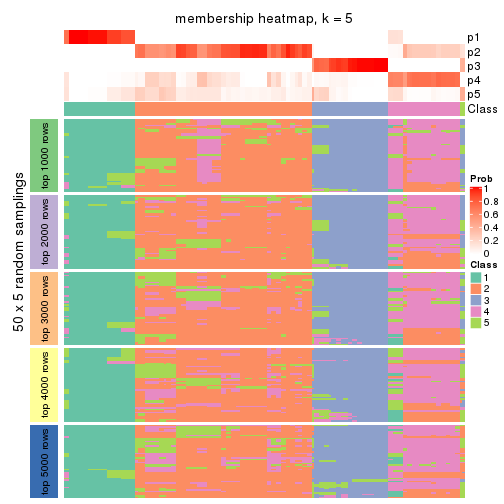
membership_heatmap(res, k = 6)
As soon as we have had the classes for columns, we can look for signatures which are significantly different between classes which can be candidate marks for certain classes. Following are the heatmaps for signatures.
Signature heatmaps where rows are scaled:
get_signatures(res, k = 2)
get_signatures(res, k = 3)
get_signatures(res, k = 4)
get_signatures(res, k = 5)
get_signatures(res, k = 6)
Signature heatmaps where rows are not scaled:
get_signatures(res, k = 2, scale_rows = FALSE)

get_signatures(res, k = 3, scale_rows = FALSE)
get_signatures(res, k = 4, scale_rows = FALSE)
get_signatures(res, k = 5, scale_rows = FALSE)
get_signatures(res, k = 6, scale_rows = FALSE)
Compare the overlap of signatures from different k:
compare_signatures(res)
get_signature() returns a data frame invisibly. TO get the list of signatures, the function
call should be assigned to a variable explicitly. In following code, if plot argument is set
to FALSE, no heatmap is plotted while only the differential analysis is performed.
# code only for demonstration
tb = get_signature(res, k = ..., plot = FALSE)
An example of the output of tb is:
#> which_row fdr mean_1 mean_2 scaled_mean_1 scaled_mean_2 km
#> 1 38 0.042760348 8.373488 9.131774 -0.5533452 0.5164555 1
#> 2 40 0.018707592 7.106213 8.469186 -0.6173731 0.5762149 1
#> 3 55 0.019134737 10.221463 11.207825 -0.6159697 0.5749050 1
#> 4 59 0.006059896 5.921854 7.869574 -0.6899429 0.6439467 1
#> 5 60 0.018055526 8.928898 10.211722 -0.6204761 0.5791110 1
#> 6 98 0.009384629 15.714769 14.887706 0.6635654 -0.6193277 2
...
The columns in tb are:
which_row: row indices corresponding to the input matrix.fdr: FDR for the differential test. mean_x: The mean value in group x.scaled_mean_x: The mean value in group x after rows are scaled.km: Row groups if k-means clustering is applied to rows.UMAP plot which shows how samples are separated.
dimension_reduction(res, k = 2, method = "UMAP")
dimension_reduction(res, k = 3, method = "UMAP")
dimension_reduction(res, k = 4, method = "UMAP")
dimension_reduction(res, k = 5, method = "UMAP")
dimension_reduction(res, k = 6, method = "UMAP")
Following heatmap shows how subgroups are split when increasing k:
collect_classes(res)

If matrix rows can be associated to genes, consider to use GO_Enrichment(res,
...) to perform function enrichment for the signature genes.
The object with results only for a single top-value method and a single partition method can be extracted as:
res = res_list["ATC", "skmeans"]
# you can also extract it by
# res = res_list["ATC:skmeans"]
A summary of res and all the functions that can be applied to it:
res
#> A 'ConsensusPartition' object with k = 2, 3, 4, 5, 6.
#> On a matrix with 16717 rows and 168 columns.
#> Top rows (1000, 2000, 3000, 4000, 5000) are extracted by 'ATC' method.
#> Subgroups are detected by 'skmeans' method.
#> Performed in total 1250 partitions by row resampling.
#> Best k for subgroups seems to be 2.
#>
#> Following methods can be applied to this 'ConsensusPartition' object:
#> [1] "cola_report" "collect_classes" "collect_plots"
#> [4] "collect_stats" "colnames" "compare_signatures"
#> [7] "consensus_heatmap" "dimension_reduction" "functional_enrichment"
#> [10] "get_anno_col" "get_anno" "get_classes"
#> [13] "get_consensus" "get_matrix" "get_membership"
#> [16] "get_param" "get_signatures" "get_stats"
#> [19] "is_best_k" "is_stable_k" "membership_heatmap"
#> [22] "ncol" "nrow" "plot_ecdf"
#> [25] "rownames" "select_partition_number" "show"
#> [28] "suggest_best_k" "test_to_known_factors"
collect_plots() function collects all the plots made from res for all k (number of partitions)
into one single page to provide an easy and fast comparison between different k.
collect_plots(res)
The plots are:
k and the heatmap of
predicted classes for each k.k.k.k.All the plots in panels can be made by individual functions and they are plotted later in this section.
select_partition_number() produces several plots showing different
statistics for choosing “optimized” k. There are following statistics:
k;k, the area increased is defined as \(A_k - A_{k-1}\).The detailed explanations of these statistics can be found in the cola vignette.
Generally speaking, lower PAC score, higher mean silhouette score or higher
concordance corresponds to better partition. Rand index and Jaccard index
measure how similar the current partition is compared to partition with k-1.
If they are too similar, we won't accept k is better than k-1.
select_partition_number(res)

The numeric values for all these statistics can be obtained by get_stats().
get_stats(res)
#> k 1-PAC mean_silhouette concordance area_increased Rand Jaccard
#> 2 2 1.000 0.983 0.992 0.5025 0.498 0.498
#> 3 3 0.841 0.899 0.952 0.3223 0.767 0.563
#> 4 4 0.831 0.867 0.922 0.1263 0.836 0.562
#> 5 5 0.804 0.805 0.889 0.0544 0.915 0.685
#> 6 6 0.892 0.799 0.889 0.0364 0.953 0.781
suggest_best_k() suggests the best \(k\) based on these statistics. The rules are as follows:
NA.suggest_best_k(res)
#> [1] 2
Following shows the table of the partitions (You need to click the show/hide
code output link to see it). The membership matrix (columns with name p*)
is inferred by
clue::cl_consensus()
function with the SE method. Basically the value in the membership matrix
represents the probability to belong to a certain group. The finall class
label for an item is determined with the group with highest probability it
belongs to.
In get_classes() function, the entropy is calculated from the membership
matrix and the silhouette score is calculated from the consensus matrix.
cbind(get_classes(res, k = 2), get_membership(res, k = 2))
#> class entropy silhouette p1 p2
#> SRR1768889 2 0.000 0.988 0.000 1.000
#> SRR1768890 2 0.000 0.988 0.000 1.000
#> SRR1768891 2 0.000 0.988 0.000 1.000
#> SRR1768892 2 0.000 0.988 0.000 1.000
#> SRR1768893 2 0.000 0.988 0.000 1.000
#> SRR1768894 2 0.000 0.988 0.000 1.000
#> SRR1768895 1 0.000 0.995 1.000 0.000
#> SRR1768896 1 0.000 0.995 1.000 0.000
#> SRR1768821 1 0.000 0.995 1.000 0.000
#> SRR1768822 1 0.000 0.995 1.000 0.000
#> SRR1768823 1 0.000 0.995 1.000 0.000
#> SRR1768824 1 0.000 0.995 1.000 0.000
#> SRR1768825 2 0.000 0.988 0.000 1.000
#> SRR1768826 2 0.000 0.988 0.000 1.000
#> SRR1768827 2 0.000 0.988 0.000 1.000
#> SRR1768828 2 0.000 0.988 0.000 1.000
#> SRR1768829 1 0.000 0.995 1.000 0.000
#> SRR1768830 1 0.000 0.995 1.000 0.000
#> SRR1768831 1 0.000 0.995 1.000 0.000
#> SRR1768832 1 0.000 0.995 1.000 0.000
#> SRR1768833 1 0.295 0.942 0.948 0.052
#> SRR1768834 1 0.000 0.995 1.000 0.000
#> SRR1768835 2 0.000 0.988 0.000 1.000
#> SRR1768836 1 0.000 0.995 1.000 0.000
#> SRR1768837 1 0.000 0.995 1.000 0.000
#> SRR1768838 2 0.443 0.904 0.092 0.908
#> SRR1768839 2 0.443 0.904 0.092 0.908
#> SRR1768840 2 0.402 0.917 0.080 0.920
#> SRR1768841 2 0.402 0.917 0.080 0.920
#> SRR1768842 2 0.000 0.988 0.000 1.000
#> SRR1768843 2 0.000 0.988 0.000 1.000
#> SRR1768844 2 0.000 0.988 0.000 1.000
#> SRR1768845 2 0.000 0.988 0.000 1.000
#> SRR1768846 2 0.000 0.988 0.000 1.000
#> SRR1768847 2 0.000 0.988 0.000 1.000
#> SRR1768848 2 0.000 0.988 0.000 1.000
#> SRR1768849 2 0.000 0.988 0.000 1.000
#> SRR1768850 2 0.000 0.988 0.000 1.000
#> SRR1768851 2 0.000 0.988 0.000 1.000
#> SRR1768852 1 0.000 0.995 1.000 0.000
#> SRR1768853 1 0.000 0.995 1.000 0.000
#> SRR1768854 2 0.000 0.988 0.000 1.000
#> SRR1768855 2 0.000 0.988 0.000 1.000
#> SRR1768856 2 0.000 0.988 0.000 1.000
#> SRR1768857 2 0.000 0.988 0.000 1.000
#> SRR1768858 2 0.000 0.988 0.000 1.000
#> SRR1768859 2 0.000 0.988 0.000 1.000
#> SRR1768860 2 0.000 0.988 0.000 1.000
#> SRR1768861 2 0.000 0.988 0.000 1.000
#> SRR1768862 2 0.000 0.988 0.000 1.000
#> SRR1768863 2 0.000 0.988 0.000 1.000
#> SRR1768864 2 0.000 0.988 0.000 1.000
#> SRR1768865 2 0.141 0.972 0.020 0.980
#> SRR1768866 2 0.141 0.972 0.020 0.980
#> SRR1768867 1 0.000 0.995 1.000 0.000
#> SRR1768868 1 0.000 0.995 1.000 0.000
#> SRR1768869 1 0.000 0.995 1.000 0.000
#> SRR1768870 1 0.000 0.995 1.000 0.000
#> SRR1768871 1 0.000 0.995 1.000 0.000
#> SRR1768872 1 0.000 0.995 1.000 0.000
#> SRR1768873 1 0.000 0.995 1.000 0.000
#> SRR1768874 1 0.000 0.995 1.000 0.000
#> SRR1768875 2 0.000 0.988 0.000 1.000
#> SRR1768876 2 0.000 0.988 0.000 1.000
#> SRR1768877 2 0.000 0.988 0.000 1.000
#> SRR1768878 2 0.000 0.988 0.000 1.000
#> SRR1768879 2 0.000 0.988 0.000 1.000
#> SRR1768880 2 0.000 0.988 0.000 1.000
#> SRR1768881 1 0.000 0.995 1.000 0.000
#> SRR1768882 1 0.000 0.995 1.000 0.000
#> SRR1768883 2 0.000 0.988 0.000 1.000
#> SRR1768884 2 0.000 0.988 0.000 1.000
#> SRR1768885 2 0.000 0.988 0.000 1.000
#> SRR1768886 2 0.000 0.988 0.000 1.000
#> SRR1768887 2 0.000 0.988 0.000 1.000
#> SRR1768888 2 0.000 0.988 0.000 1.000
#> SRR1768897 2 0.000 0.988 0.000 1.000
#> SRR1768898 2 0.000 0.988 0.000 1.000
#> SRR1768899 1 0.000 0.995 1.000 0.000
#> SRR1768900 1 0.000 0.995 1.000 0.000
#> SRR1768901 2 0.000 0.988 0.000 1.000
#> SRR1768902 2 0.000 0.988 0.000 1.000
#> SRR1768903 2 0.000 0.988 0.000 1.000
#> SRR1768904 2 0.000 0.988 0.000 1.000
#> SRR1768905 2 0.000 0.988 0.000 1.000
#> SRR1768906 2 0.000 0.988 0.000 1.000
#> SRR1768907 2 0.000 0.988 0.000 1.000
#> SRR1768908 2 0.000 0.988 0.000 1.000
#> SRR1768909 2 0.000 0.988 0.000 1.000
#> SRR1768910 2 0.000 0.988 0.000 1.000
#> SRR1768911 2 0.000 0.988 0.000 1.000
#> SRR1768912 2 0.000 0.988 0.000 1.000
#> SRR1768913 2 0.000 0.988 0.000 1.000
#> SRR1768914 2 0.000 0.988 0.000 1.000
#> SRR1768915 2 0.000 0.988 0.000 1.000
#> SRR1768916 2 0.000 0.988 0.000 1.000
#> SRR1768917 2 0.000 0.988 0.000 1.000
#> SRR1768918 2 0.000 0.988 0.000 1.000
#> SRR1768919 2 0.000 0.988 0.000 1.000
#> SRR1768920 2 0.000 0.988 0.000 1.000
#> SRR1768921 2 0.000 0.988 0.000 1.000
#> SRR1768922 2 0.000 0.988 0.000 1.000
#> SRR1768923 2 0.000 0.988 0.000 1.000
#> SRR1768924 1 0.000 0.995 1.000 0.000
#> SRR1768925 1 0.000 0.995 1.000 0.000
#> SRR1768926 1 0.653 0.801 0.832 0.168
#> SRR1768927 1 0.634 0.812 0.840 0.160
#> SRR1768928 1 0.000 0.995 1.000 0.000
#> SRR1768929 1 0.000 0.995 1.000 0.000
#> SRR1768930 1 0.000 0.995 1.000 0.000
#> SRR1768931 1 0.000 0.995 1.000 0.000
#> SRR1768932 1 0.000 0.995 1.000 0.000
#> SRR1768933 1 0.000 0.995 1.000 0.000
#> SRR1768934 1 0.000 0.995 1.000 0.000
#> SRR1768935 1 0.000 0.995 1.000 0.000
#> SRR1768936 1 0.000 0.995 1.000 0.000
#> SRR1768937 1 0.000 0.995 1.000 0.000
#> SRR1768938 1 0.000 0.995 1.000 0.000
#> SRR1768939 2 0.000 0.988 0.000 1.000
#> SRR1768940 2 0.000 0.988 0.000 1.000
#> SRR1768941 2 0.494 0.888 0.108 0.892
#> SRR1768942 2 0.494 0.888 0.108 0.892
#> SRR1768943 2 0.494 0.888 0.108 0.892
#> SRR1768944 2 0.494 0.888 0.108 0.892
#> SRR1768945 2 0.494 0.888 0.108 0.892
#> SRR1768946 2 0.494 0.888 0.108 0.892
#> SRR1768947 2 0.000 0.988 0.000 1.000
#> SRR1768948 2 0.000 0.988 0.000 1.000
#> SRR1768949 2 0.000 0.988 0.000 1.000
#> SRR1768950 1 0.000 0.995 1.000 0.000
#> SRR1768954 1 0.000 0.995 1.000 0.000
#> SRR1768955 1 0.000 0.995 1.000 0.000
#> SRR1768956 1 0.000 0.995 1.000 0.000
#> SRR1768957 1 0.000 0.995 1.000 0.000
#> SRR1768958 1 0.000 0.995 1.000 0.000
#> SRR1768959 1 0.000 0.995 1.000 0.000
#> SRR1768960 1 0.000 0.995 1.000 0.000
#> SRR1768961 1 0.000 0.995 1.000 0.000
#> SRR1768952 2 0.000 0.988 0.000 1.000
#> SRR1768953 2 0.000 0.988 0.000 1.000
#> SRR1768962 1 0.000 0.995 1.000 0.000
#> SRR1768963 1 0.000 0.995 1.000 0.000
#> SRR1768964 1 0.000 0.995 1.000 0.000
#> SRR1768965 1 0.000 0.995 1.000 0.000
#> SRR1768966 1 0.000 0.995 1.000 0.000
#> SRR1768967 1 0.000 0.995 1.000 0.000
#> SRR1768968 1 0.000 0.995 1.000 0.000
#> SRR1768969 1 0.000 0.995 1.000 0.000
#> SRR1768970 1 0.000 0.995 1.000 0.000
#> SRR1768971 1 0.000 0.995 1.000 0.000
#> SRR1768972 1 0.000 0.995 1.000 0.000
#> SRR1768973 1 0.000 0.995 1.000 0.000
#> SRR1768974 1 0.000 0.995 1.000 0.000
#> SRR1768975 1 0.000 0.995 1.000 0.000
#> SRR1768976 1 0.000 0.995 1.000 0.000
#> SRR1768977 1 0.000 0.995 1.000 0.000
#> SRR1768978 1 0.000 0.995 1.000 0.000
#> SRR1768979 1 0.000 0.995 1.000 0.000
#> SRR1768980 1 0.000 0.995 1.000 0.000
#> SRR1768981 1 0.000 0.995 1.000 0.000
#> SRR1768982 1 0.000 0.995 1.000 0.000
#> SRR1768983 1 0.000 0.995 1.000 0.000
#> SRR1768984 1 0.000 0.995 1.000 0.000
#> SRR1768985 1 0.000 0.995 1.000 0.000
#> SRR1768986 1 0.000 0.995 1.000 0.000
#> SRR1768987 1 0.000 0.995 1.000 0.000
#> SRR1768988 1 0.000 0.995 1.000 0.000
#> SRR1768989 1 0.000 0.995 1.000 0.000
cbind(get_classes(res, k = 3), get_membership(res, k = 3))
#> class entropy silhouette p1 p2 p3
#> SRR1768889 3 0.0000 0.952 0.000 0.000 1.000
#> SRR1768890 3 0.0000 0.952 0.000 0.000 1.000
#> SRR1768891 2 0.0237 0.923 0.000 0.996 0.004
#> SRR1768892 2 0.0237 0.923 0.000 0.996 0.004
#> SRR1768893 2 0.4796 0.729 0.000 0.780 0.220
#> SRR1768894 2 0.4796 0.729 0.000 0.780 0.220
#> SRR1768895 1 0.6286 0.206 0.536 0.464 0.000
#> SRR1768896 1 0.6286 0.206 0.536 0.464 0.000
#> SRR1768821 1 0.6026 0.449 0.624 0.376 0.000
#> SRR1768822 1 0.6026 0.449 0.624 0.376 0.000
#> SRR1768823 1 0.1031 0.952 0.976 0.024 0.000
#> SRR1768824 1 0.1031 0.952 0.976 0.024 0.000
#> SRR1768825 2 0.0000 0.925 0.000 1.000 0.000
#> SRR1768826 2 0.0000 0.925 0.000 1.000 0.000
#> SRR1768827 3 0.0592 0.943 0.000 0.012 0.988
#> SRR1768828 3 0.0592 0.943 0.000 0.012 0.988
#> SRR1768829 2 0.0000 0.925 0.000 1.000 0.000
#> SRR1768830 2 0.0000 0.925 0.000 1.000 0.000
#> SRR1768831 1 0.0237 0.961 0.996 0.004 0.000
#> SRR1768832 1 0.0237 0.961 0.996 0.004 0.000
#> SRR1768833 2 0.5443 0.698 0.260 0.736 0.004
#> SRR1768834 2 0.5254 0.693 0.264 0.736 0.000
#> SRR1768835 2 0.6051 0.612 0.012 0.696 0.292
#> SRR1768836 1 0.0237 0.961 0.996 0.004 0.000
#> SRR1768837 1 0.0237 0.961 0.996 0.004 0.000
#> SRR1768838 2 0.5137 0.831 0.064 0.832 0.104
#> SRR1768839 2 0.5137 0.831 0.064 0.832 0.104
#> SRR1768840 2 0.0592 0.920 0.000 0.988 0.012
#> SRR1768841 2 0.0592 0.920 0.000 0.988 0.012
#> SRR1768842 2 0.0592 0.920 0.000 0.988 0.012
#> SRR1768843 2 0.0592 0.920 0.000 0.988 0.012
#> SRR1768844 3 0.0000 0.952 0.000 0.000 1.000
#> SRR1768845 3 0.0000 0.952 0.000 0.000 1.000
#> SRR1768846 3 0.0000 0.952 0.000 0.000 1.000
#> SRR1768847 3 0.0000 0.952 0.000 0.000 1.000
#> SRR1768848 3 0.0000 0.952 0.000 0.000 1.000
#> SRR1768849 3 0.0000 0.952 0.000 0.000 1.000
#> SRR1768850 3 0.0000 0.952 0.000 0.000 1.000
#> SRR1768851 3 0.0000 0.952 0.000 0.000 1.000
#> SRR1768852 2 0.0000 0.925 0.000 1.000 0.000
#> SRR1768853 2 0.0000 0.925 0.000 1.000 0.000
#> SRR1768854 2 0.0000 0.925 0.000 1.000 0.000
#> SRR1768855 3 0.0000 0.952 0.000 0.000 1.000
#> SRR1768856 3 0.0000 0.952 0.000 0.000 1.000
#> SRR1768857 3 0.0000 0.952 0.000 0.000 1.000
#> SRR1768858 3 0.0000 0.952 0.000 0.000 1.000
#> SRR1768859 3 0.0000 0.952 0.000 0.000 1.000
#> SRR1768860 3 0.0000 0.952 0.000 0.000 1.000
#> SRR1768861 2 0.0000 0.925 0.000 1.000 0.000
#> SRR1768862 2 0.0000 0.925 0.000 1.000 0.000
#> SRR1768863 2 0.0000 0.925 0.000 1.000 0.000
#> SRR1768864 2 0.0000 0.925 0.000 1.000 0.000
#> SRR1768865 2 0.0592 0.920 0.000 0.988 0.012
#> SRR1768866 2 0.0592 0.920 0.000 0.988 0.012
#> SRR1768867 1 0.1529 0.943 0.960 0.040 0.000
#> SRR1768868 1 0.1529 0.943 0.960 0.040 0.000
#> SRR1768869 1 0.0000 0.963 1.000 0.000 0.000
#> SRR1768870 1 0.0000 0.963 1.000 0.000 0.000
#> SRR1768871 1 0.0424 0.960 0.992 0.008 0.000
#> SRR1768872 1 0.0424 0.960 0.992 0.008 0.000
#> SRR1768873 1 0.0000 0.963 1.000 0.000 0.000
#> SRR1768874 1 0.0000 0.963 1.000 0.000 0.000
#> SRR1768875 3 0.0000 0.952 0.000 0.000 1.000
#> SRR1768876 3 0.0000 0.952 0.000 0.000 1.000
#> SRR1768877 3 0.0000 0.952 0.000 0.000 1.000
#> SRR1768878 3 0.0000 0.952 0.000 0.000 1.000
#> SRR1768879 2 0.0000 0.925 0.000 1.000 0.000
#> SRR1768880 2 0.0000 0.925 0.000 1.000 0.000
#> SRR1768881 1 0.1860 0.932 0.948 0.052 0.000
#> SRR1768882 1 0.1860 0.932 0.948 0.052 0.000
#> SRR1768883 3 0.0000 0.952 0.000 0.000 1.000
#> SRR1768884 3 0.0000 0.952 0.000 0.000 1.000
#> SRR1768885 3 0.0000 0.952 0.000 0.000 1.000
#> SRR1768886 3 0.0000 0.952 0.000 0.000 1.000
#> SRR1768887 3 0.0000 0.952 0.000 0.000 1.000
#> SRR1768888 3 0.0000 0.952 0.000 0.000 1.000
#> SRR1768897 3 0.3551 0.832 0.000 0.132 0.868
#> SRR1768898 3 0.3551 0.832 0.000 0.132 0.868
#> SRR1768899 2 0.0000 0.925 0.000 1.000 0.000
#> SRR1768900 2 0.0000 0.925 0.000 1.000 0.000
#> SRR1768901 3 0.0000 0.952 0.000 0.000 1.000
#> SRR1768902 3 0.0000 0.952 0.000 0.000 1.000
#> SRR1768903 3 0.0000 0.952 0.000 0.000 1.000
#> SRR1768904 3 0.0000 0.952 0.000 0.000 1.000
#> SRR1768905 3 0.0000 0.952 0.000 0.000 1.000
#> SRR1768906 3 0.0000 0.952 0.000 0.000 1.000
#> SRR1768907 2 0.0000 0.925 0.000 1.000 0.000
#> SRR1768908 2 0.0000 0.925 0.000 1.000 0.000
#> SRR1768909 2 0.0000 0.925 0.000 1.000 0.000
#> SRR1768910 2 0.0000 0.925 0.000 1.000 0.000
#> SRR1768911 2 0.0000 0.925 0.000 1.000 0.000
#> SRR1768912 2 0.0000 0.925 0.000 1.000 0.000
#> SRR1768913 2 0.0000 0.925 0.000 1.000 0.000
#> SRR1768914 2 0.0000 0.925 0.000 1.000 0.000
#> SRR1768915 2 0.0000 0.925 0.000 1.000 0.000
#> SRR1768916 3 0.0000 0.952 0.000 0.000 1.000
#> SRR1768917 3 0.0000 0.952 0.000 0.000 1.000
#> SRR1768918 2 0.0000 0.925 0.000 1.000 0.000
#> SRR1768919 2 0.0000 0.925 0.000 1.000 0.000
#> SRR1768920 3 0.0592 0.943 0.000 0.012 0.988
#> SRR1768921 3 0.0592 0.943 0.000 0.012 0.988
#> SRR1768922 3 0.0000 0.952 0.000 0.000 1.000
#> SRR1768923 3 0.0000 0.952 0.000 0.000 1.000
#> SRR1768924 2 0.4555 0.774 0.200 0.800 0.000
#> SRR1768925 2 0.4555 0.774 0.200 0.800 0.000
#> SRR1768926 2 0.4555 0.774 0.200 0.800 0.000
#> SRR1768927 2 0.4555 0.774 0.200 0.800 0.000
#> SRR1768928 2 0.4702 0.760 0.212 0.788 0.000
#> SRR1768929 2 0.4702 0.760 0.212 0.788 0.000
#> SRR1768930 1 0.1529 0.943 0.960 0.040 0.000
#> SRR1768931 1 0.1529 0.943 0.960 0.040 0.000
#> SRR1768932 1 0.1529 0.943 0.960 0.040 0.000
#> SRR1768933 1 0.1289 0.947 0.968 0.032 0.000
#> SRR1768934 1 0.1289 0.947 0.968 0.032 0.000
#> SRR1768935 1 0.1411 0.945 0.964 0.036 0.000
#> SRR1768936 1 0.1529 0.943 0.960 0.040 0.000
#> SRR1768937 1 0.1529 0.943 0.960 0.040 0.000
#> SRR1768938 1 0.1753 0.937 0.952 0.048 0.000
#> SRR1768939 3 0.0000 0.952 0.000 0.000 1.000
#> SRR1768940 3 0.0000 0.952 0.000 0.000 1.000
#> SRR1768941 3 0.6081 0.544 0.004 0.344 0.652
#> SRR1768942 3 0.6081 0.544 0.004 0.344 0.652
#> SRR1768943 3 0.6081 0.544 0.004 0.344 0.652
#> SRR1768944 3 0.6081 0.544 0.004 0.344 0.652
#> SRR1768945 3 0.6081 0.544 0.004 0.344 0.652
#> SRR1768946 3 0.6081 0.544 0.004 0.344 0.652
#> SRR1768947 3 0.0000 0.952 0.000 0.000 1.000
#> SRR1768948 3 0.0000 0.952 0.000 0.000 1.000
#> SRR1768949 3 0.0000 0.952 0.000 0.000 1.000
#> SRR1768950 1 0.1529 0.943 0.960 0.040 0.000
#> SRR1768954 1 0.0000 0.963 1.000 0.000 0.000
#> SRR1768955 1 0.0000 0.963 1.000 0.000 0.000
#> SRR1768956 1 0.0000 0.963 1.000 0.000 0.000
#> SRR1768957 1 0.0000 0.963 1.000 0.000 0.000
#> SRR1768958 1 0.0000 0.963 1.000 0.000 0.000
#> SRR1768959 1 0.0000 0.963 1.000 0.000 0.000
#> SRR1768960 1 0.0000 0.963 1.000 0.000 0.000
#> SRR1768961 1 0.0000 0.963 1.000 0.000 0.000
#> SRR1768952 2 0.4504 0.761 0.000 0.804 0.196
#> SRR1768953 2 0.4504 0.761 0.000 0.804 0.196
#> SRR1768962 1 0.0000 0.963 1.000 0.000 0.000
#> SRR1768963 1 0.0000 0.963 1.000 0.000 0.000
#> SRR1768964 1 0.0000 0.963 1.000 0.000 0.000
#> SRR1768965 1 0.0000 0.963 1.000 0.000 0.000
#> SRR1768966 1 0.0000 0.963 1.000 0.000 0.000
#> SRR1768967 1 0.0000 0.963 1.000 0.000 0.000
#> SRR1768968 1 0.0000 0.963 1.000 0.000 0.000
#> SRR1768969 1 0.0000 0.963 1.000 0.000 0.000
#> SRR1768970 1 0.0000 0.963 1.000 0.000 0.000
#> SRR1768971 1 0.0000 0.963 1.000 0.000 0.000
#> SRR1768972 1 0.0000 0.963 1.000 0.000 0.000
#> SRR1768973 1 0.0000 0.963 1.000 0.000 0.000
#> SRR1768974 1 0.0000 0.963 1.000 0.000 0.000
#> SRR1768975 1 0.0000 0.963 1.000 0.000 0.000
#> SRR1768976 1 0.0000 0.963 1.000 0.000 0.000
#> SRR1768977 1 0.0000 0.963 1.000 0.000 0.000
#> SRR1768978 1 0.0000 0.963 1.000 0.000 0.000
#> SRR1768979 1 0.0000 0.963 1.000 0.000 0.000
#> SRR1768980 1 0.0000 0.963 1.000 0.000 0.000
#> SRR1768981 1 0.0000 0.963 1.000 0.000 0.000
#> SRR1768982 1 0.0000 0.963 1.000 0.000 0.000
#> SRR1768983 1 0.0000 0.963 1.000 0.000 0.000
#> SRR1768984 1 0.0000 0.963 1.000 0.000 0.000
#> SRR1768985 1 0.0000 0.963 1.000 0.000 0.000
#> SRR1768986 1 0.0000 0.963 1.000 0.000 0.000
#> SRR1768987 1 0.0000 0.963 1.000 0.000 0.000
#> SRR1768988 1 0.0000 0.963 1.000 0.000 0.000
#> SRR1768989 1 0.0000 0.963 1.000 0.000 0.000
cbind(get_classes(res, k = 4), get_membership(res, k = 4))
#> class entropy silhouette p1 p2 p3 p4
#> SRR1768889 3 0.0000 0.951 0.000 0.000 1.000 0.000
#> SRR1768890 3 0.0000 0.951 0.000 0.000 1.000 0.000
#> SRR1768891 2 0.2281 0.799 0.000 0.904 0.000 0.096
#> SRR1768892 2 0.2281 0.799 0.000 0.904 0.000 0.096
#> SRR1768893 3 0.4820 0.717 0.000 0.060 0.772 0.168
#> SRR1768894 3 0.4820 0.717 0.000 0.060 0.772 0.168
#> SRR1768895 2 0.3074 0.757 0.000 0.848 0.000 0.152
#> SRR1768896 2 0.3074 0.757 0.000 0.848 0.000 0.152
#> SRR1768821 2 0.2149 0.810 0.000 0.912 0.000 0.088
#> SRR1768822 2 0.2149 0.810 0.000 0.912 0.000 0.088
#> SRR1768823 2 0.3444 0.794 0.184 0.816 0.000 0.000
#> SRR1768824 2 0.3444 0.794 0.184 0.816 0.000 0.000
#> SRR1768825 2 0.4500 0.496 0.000 0.684 0.000 0.316
#> SRR1768826 2 0.4500 0.496 0.000 0.684 0.000 0.316
#> SRR1768827 3 0.4907 0.283 0.000 0.420 0.580 0.000
#> SRR1768828 3 0.4907 0.283 0.000 0.420 0.580 0.000
#> SRR1768829 2 0.0188 0.841 0.000 0.996 0.000 0.004
#> SRR1768830 2 0.0188 0.841 0.000 0.996 0.000 0.004
#> SRR1768831 1 0.4382 0.622 0.704 0.000 0.000 0.296
#> SRR1768832 1 0.4382 0.622 0.704 0.000 0.000 0.296
#> SRR1768833 4 0.1867 0.874 0.072 0.000 0.000 0.928
#> SRR1768834 4 0.1867 0.874 0.072 0.000 0.000 0.928
#> SRR1768835 4 0.1792 0.874 0.000 0.000 0.068 0.932
#> SRR1768836 1 0.4382 0.622 0.704 0.000 0.000 0.296
#> SRR1768837 1 0.4382 0.622 0.704 0.000 0.000 0.296
#> SRR1768838 4 0.0000 0.910 0.000 0.000 0.000 1.000
#> SRR1768839 4 0.0000 0.910 0.000 0.000 0.000 1.000
#> SRR1768840 4 0.0000 0.910 0.000 0.000 0.000 1.000
#> SRR1768841 4 0.0000 0.910 0.000 0.000 0.000 1.000
#> SRR1768842 4 0.0000 0.910 0.000 0.000 0.000 1.000
#> SRR1768843 4 0.0000 0.910 0.000 0.000 0.000 1.000
#> SRR1768844 3 0.0000 0.951 0.000 0.000 1.000 0.000
#> SRR1768845 3 0.0000 0.951 0.000 0.000 1.000 0.000
#> SRR1768846 3 0.0000 0.951 0.000 0.000 1.000 0.000
#> SRR1768847 3 0.0000 0.951 0.000 0.000 1.000 0.000
#> SRR1768848 3 0.0000 0.951 0.000 0.000 1.000 0.000
#> SRR1768849 3 0.0000 0.951 0.000 0.000 1.000 0.000
#> SRR1768850 3 0.0000 0.951 0.000 0.000 1.000 0.000
#> SRR1768851 3 0.0000 0.951 0.000 0.000 1.000 0.000
#> SRR1768852 2 0.1637 0.827 0.000 0.940 0.000 0.060
#> SRR1768853 2 0.1637 0.827 0.000 0.940 0.000 0.060
#> SRR1768854 2 0.1637 0.827 0.000 0.940 0.000 0.060
#> SRR1768855 3 0.0000 0.951 0.000 0.000 1.000 0.000
#> SRR1768856 3 0.0000 0.951 0.000 0.000 1.000 0.000
#> SRR1768857 3 0.0000 0.951 0.000 0.000 1.000 0.000
#> SRR1768858 3 0.0000 0.951 0.000 0.000 1.000 0.000
#> SRR1768859 3 0.0000 0.951 0.000 0.000 1.000 0.000
#> SRR1768860 3 0.0000 0.951 0.000 0.000 1.000 0.000
#> SRR1768861 4 0.2868 0.895 0.000 0.136 0.000 0.864
#> SRR1768862 4 0.2868 0.895 0.000 0.136 0.000 0.864
#> SRR1768863 4 0.2868 0.895 0.000 0.136 0.000 0.864
#> SRR1768864 4 0.2868 0.895 0.000 0.136 0.000 0.864
#> SRR1768865 4 0.2530 0.907 0.000 0.112 0.000 0.888
#> SRR1768866 4 0.2530 0.907 0.000 0.112 0.000 0.888
#> SRR1768867 2 0.1867 0.855 0.072 0.928 0.000 0.000
#> SRR1768868 2 0.1867 0.855 0.072 0.928 0.000 0.000
#> SRR1768869 2 0.4228 0.747 0.232 0.760 0.000 0.008
#> SRR1768870 2 0.4228 0.747 0.232 0.760 0.000 0.008
#> SRR1768871 2 0.4840 0.728 0.240 0.732 0.000 0.028
#> SRR1768872 2 0.4840 0.728 0.240 0.732 0.000 0.028
#> SRR1768873 2 0.4989 0.326 0.472 0.528 0.000 0.000
#> SRR1768874 2 0.4989 0.326 0.472 0.528 0.000 0.000
#> SRR1768875 3 0.0000 0.951 0.000 0.000 1.000 0.000
#> SRR1768876 3 0.0000 0.951 0.000 0.000 1.000 0.000
#> SRR1768877 3 0.0000 0.951 0.000 0.000 1.000 0.000
#> SRR1768878 3 0.0000 0.951 0.000 0.000 1.000 0.000
#> SRR1768879 4 0.1940 0.921 0.000 0.076 0.000 0.924
#> SRR1768880 4 0.1940 0.921 0.000 0.076 0.000 0.924
#> SRR1768881 2 0.5236 0.423 0.432 0.560 0.000 0.008
#> SRR1768882 2 0.5236 0.423 0.432 0.560 0.000 0.008
#> SRR1768883 3 0.0000 0.951 0.000 0.000 1.000 0.000
#> SRR1768884 3 0.0000 0.951 0.000 0.000 1.000 0.000
#> SRR1768885 3 0.0000 0.951 0.000 0.000 1.000 0.000
#> SRR1768886 3 0.0000 0.951 0.000 0.000 1.000 0.000
#> SRR1768887 3 0.0000 0.951 0.000 0.000 1.000 0.000
#> SRR1768888 3 0.0000 0.951 0.000 0.000 1.000 0.000
#> SRR1768897 3 0.1406 0.920 0.000 0.016 0.960 0.024
#> SRR1768898 3 0.1406 0.920 0.000 0.016 0.960 0.024
#> SRR1768899 4 0.3486 0.845 0.000 0.188 0.000 0.812
#> SRR1768900 4 0.3486 0.845 0.000 0.188 0.000 0.812
#> SRR1768901 3 0.0000 0.951 0.000 0.000 1.000 0.000
#> SRR1768902 3 0.0000 0.951 0.000 0.000 1.000 0.000
#> SRR1768903 3 0.0000 0.951 0.000 0.000 1.000 0.000
#> SRR1768904 3 0.0000 0.951 0.000 0.000 1.000 0.000
#> SRR1768905 3 0.0000 0.951 0.000 0.000 1.000 0.000
#> SRR1768906 3 0.0000 0.951 0.000 0.000 1.000 0.000
#> SRR1768907 4 0.1940 0.921 0.000 0.076 0.000 0.924
#> SRR1768908 4 0.1940 0.921 0.000 0.076 0.000 0.924
#> SRR1768909 4 0.1940 0.921 0.000 0.076 0.000 0.924
#> SRR1768910 4 0.1940 0.921 0.000 0.076 0.000 0.924
#> SRR1768911 4 0.1940 0.921 0.000 0.076 0.000 0.924
#> SRR1768912 4 0.1940 0.921 0.000 0.076 0.000 0.924
#> SRR1768913 4 0.1940 0.921 0.000 0.076 0.000 0.924
#> SRR1768914 4 0.1940 0.921 0.000 0.076 0.000 0.924
#> SRR1768915 4 0.1940 0.921 0.000 0.076 0.000 0.924
#> SRR1768916 3 0.0000 0.951 0.000 0.000 1.000 0.000
#> SRR1768917 3 0.0000 0.951 0.000 0.000 1.000 0.000
#> SRR1768918 4 0.2402 0.918 0.000 0.076 0.012 0.912
#> SRR1768919 4 0.2402 0.918 0.000 0.076 0.012 0.912
#> SRR1768920 3 0.4898 0.294 0.000 0.416 0.584 0.000
#> SRR1768921 3 0.4898 0.294 0.000 0.416 0.584 0.000
#> SRR1768922 3 0.0000 0.951 0.000 0.000 1.000 0.000
#> SRR1768923 3 0.0000 0.951 0.000 0.000 1.000 0.000
#> SRR1768924 4 0.1389 0.890 0.048 0.000 0.000 0.952
#> SRR1768925 4 0.1389 0.890 0.048 0.000 0.000 0.952
#> SRR1768926 4 0.1302 0.893 0.044 0.000 0.000 0.956
#> SRR1768927 4 0.1302 0.893 0.044 0.000 0.000 0.956
#> SRR1768928 4 0.2921 0.801 0.140 0.000 0.000 0.860
#> SRR1768929 4 0.2921 0.801 0.140 0.000 0.000 0.860
#> SRR1768930 2 0.1978 0.856 0.068 0.928 0.000 0.004
#> SRR1768931 2 0.1978 0.856 0.068 0.928 0.000 0.004
#> SRR1768932 2 0.1978 0.856 0.068 0.928 0.000 0.004
#> SRR1768933 2 0.1978 0.856 0.068 0.928 0.000 0.004
#> SRR1768934 2 0.1978 0.856 0.068 0.928 0.000 0.004
#> SRR1768935 2 0.1978 0.856 0.068 0.928 0.000 0.004
#> SRR1768936 2 0.1978 0.856 0.068 0.928 0.000 0.004
#> SRR1768937 2 0.1978 0.856 0.068 0.928 0.000 0.004
#> SRR1768938 2 0.1743 0.855 0.056 0.940 0.000 0.004
#> SRR1768939 3 0.0000 0.951 0.000 0.000 1.000 0.000
#> SRR1768940 3 0.0000 0.951 0.000 0.000 1.000 0.000
#> SRR1768941 2 0.1284 0.840 0.000 0.964 0.012 0.024
#> SRR1768942 2 0.1284 0.840 0.000 0.964 0.012 0.024
#> SRR1768943 2 0.1284 0.840 0.000 0.964 0.012 0.024
#> SRR1768944 2 0.1284 0.840 0.000 0.964 0.012 0.024
#> SRR1768945 2 0.1284 0.840 0.000 0.964 0.012 0.024
#> SRR1768946 2 0.1284 0.840 0.000 0.964 0.012 0.024
#> SRR1768947 3 0.0000 0.951 0.000 0.000 1.000 0.000
#> SRR1768948 3 0.0000 0.951 0.000 0.000 1.000 0.000
#> SRR1768949 3 0.0000 0.951 0.000 0.000 1.000 0.000
#> SRR1768950 2 0.1978 0.856 0.068 0.928 0.000 0.004
#> SRR1768954 1 0.0000 0.966 1.000 0.000 0.000 0.000
#> SRR1768955 1 0.0000 0.966 1.000 0.000 0.000 0.000
#> SRR1768956 1 0.0000 0.966 1.000 0.000 0.000 0.000
#> SRR1768957 1 0.0000 0.966 1.000 0.000 0.000 0.000
#> SRR1768958 1 0.0000 0.966 1.000 0.000 0.000 0.000
#> SRR1768959 1 0.0000 0.966 1.000 0.000 0.000 0.000
#> SRR1768960 1 0.0000 0.966 1.000 0.000 0.000 0.000
#> SRR1768961 1 0.0000 0.966 1.000 0.000 0.000 0.000
#> SRR1768952 4 0.4485 0.753 0.000 0.028 0.200 0.772
#> SRR1768953 4 0.4485 0.753 0.000 0.028 0.200 0.772
#> SRR1768962 1 0.0000 0.966 1.000 0.000 0.000 0.000
#> SRR1768963 1 0.0000 0.966 1.000 0.000 0.000 0.000
#> SRR1768964 1 0.0000 0.966 1.000 0.000 0.000 0.000
#> SRR1768965 1 0.0000 0.966 1.000 0.000 0.000 0.000
#> SRR1768966 1 0.0000 0.966 1.000 0.000 0.000 0.000
#> SRR1768967 1 0.0000 0.966 1.000 0.000 0.000 0.000
#> SRR1768968 1 0.0000 0.966 1.000 0.000 0.000 0.000
#> SRR1768969 1 0.0000 0.966 1.000 0.000 0.000 0.000
#> SRR1768970 1 0.0000 0.966 1.000 0.000 0.000 0.000
#> SRR1768971 1 0.0000 0.966 1.000 0.000 0.000 0.000
#> SRR1768972 1 0.0000 0.966 1.000 0.000 0.000 0.000
#> SRR1768973 1 0.0000 0.966 1.000 0.000 0.000 0.000
#> SRR1768974 1 0.0000 0.966 1.000 0.000 0.000 0.000
#> SRR1768975 1 0.0000 0.966 1.000 0.000 0.000 0.000
#> SRR1768976 1 0.0000 0.966 1.000 0.000 0.000 0.000
#> SRR1768977 1 0.0000 0.966 1.000 0.000 0.000 0.000
#> SRR1768978 1 0.0000 0.966 1.000 0.000 0.000 0.000
#> SRR1768979 1 0.0000 0.966 1.000 0.000 0.000 0.000
#> SRR1768980 1 0.0000 0.966 1.000 0.000 0.000 0.000
#> SRR1768981 1 0.0000 0.966 1.000 0.000 0.000 0.000
#> SRR1768982 1 0.0000 0.966 1.000 0.000 0.000 0.000
#> SRR1768983 1 0.0000 0.966 1.000 0.000 0.000 0.000
#> SRR1768984 1 0.0000 0.966 1.000 0.000 0.000 0.000
#> SRR1768985 1 0.0000 0.966 1.000 0.000 0.000 0.000
#> SRR1768986 1 0.0000 0.966 1.000 0.000 0.000 0.000
#> SRR1768987 1 0.0000 0.966 1.000 0.000 0.000 0.000
#> SRR1768988 1 0.0000 0.966 1.000 0.000 0.000 0.000
#> SRR1768989 1 0.0000 0.966 1.000 0.000 0.000 0.000
cbind(get_classes(res, k = 5), get_membership(res, k = 5))
#> class entropy silhouette p1 p2 p3 p4 p5
#> SRR1768889 3 0.0000 0.951 0.000 0.000 1.000 0.000 0.000
#> SRR1768890 3 0.0000 0.951 0.000 0.000 1.000 0.000 0.000
#> SRR1768891 2 0.4585 0.401 0.000 0.628 0.000 0.352 0.020
#> SRR1768892 2 0.4585 0.401 0.000 0.628 0.000 0.352 0.020
#> SRR1768893 2 0.5586 0.546 0.000 0.644 0.272 0.056 0.028
#> SRR1768894 2 0.5624 0.548 0.000 0.644 0.268 0.060 0.028
#> SRR1768895 2 0.4074 0.289 0.000 0.636 0.000 0.364 0.000
#> SRR1768896 2 0.4074 0.289 0.000 0.636 0.000 0.364 0.000
#> SRR1768821 4 0.3366 0.640 0.000 0.232 0.000 0.768 0.000
#> SRR1768822 4 0.3366 0.640 0.000 0.232 0.000 0.768 0.000
#> SRR1768823 4 0.2984 0.727 0.124 0.016 0.000 0.856 0.004
#> SRR1768824 4 0.2984 0.727 0.124 0.016 0.000 0.856 0.004
#> SRR1768825 2 0.3724 0.584 0.000 0.788 0.000 0.184 0.028
#> SRR1768826 2 0.3724 0.584 0.000 0.788 0.000 0.184 0.028
#> SRR1768827 3 0.6287 0.321 0.000 0.224 0.536 0.240 0.000
#> SRR1768828 3 0.6287 0.321 0.000 0.224 0.536 0.240 0.000
#> SRR1768829 4 0.4074 0.511 0.000 0.364 0.000 0.636 0.000
#> SRR1768830 4 0.4074 0.511 0.000 0.364 0.000 0.636 0.000
#> SRR1768831 5 0.2127 0.819 0.108 0.000 0.000 0.000 0.892
#> SRR1768832 5 0.2127 0.819 0.108 0.000 0.000 0.000 0.892
#> SRR1768833 5 0.0162 0.896 0.000 0.004 0.000 0.000 0.996
#> SRR1768834 5 0.0162 0.896 0.000 0.004 0.000 0.000 0.996
#> SRR1768835 5 0.0162 0.896 0.000 0.004 0.000 0.000 0.996
#> SRR1768836 5 0.2074 0.823 0.104 0.000 0.000 0.000 0.896
#> SRR1768837 5 0.2074 0.823 0.104 0.000 0.000 0.000 0.896
#> SRR1768838 5 0.0162 0.896 0.000 0.004 0.000 0.000 0.996
#> SRR1768839 5 0.0162 0.896 0.000 0.004 0.000 0.000 0.996
#> SRR1768840 5 0.3305 0.675 0.000 0.224 0.000 0.000 0.776
#> SRR1768841 5 0.3305 0.675 0.000 0.224 0.000 0.000 0.776
#> SRR1768842 5 0.3424 0.649 0.000 0.240 0.000 0.000 0.760
#> SRR1768843 5 0.3424 0.649 0.000 0.240 0.000 0.000 0.760
#> SRR1768844 3 0.0000 0.951 0.000 0.000 1.000 0.000 0.000
#> SRR1768845 3 0.0000 0.951 0.000 0.000 1.000 0.000 0.000
#> SRR1768846 3 0.0000 0.951 0.000 0.000 1.000 0.000 0.000
#> SRR1768847 3 0.0000 0.951 0.000 0.000 1.000 0.000 0.000
#> SRR1768848 3 0.0000 0.951 0.000 0.000 1.000 0.000 0.000
#> SRR1768849 3 0.0000 0.951 0.000 0.000 1.000 0.000 0.000
#> SRR1768850 3 0.0000 0.951 0.000 0.000 1.000 0.000 0.000
#> SRR1768851 3 0.0000 0.951 0.000 0.000 1.000 0.000 0.000
#> SRR1768852 4 0.4215 0.652 0.000 0.168 0.000 0.768 0.064
#> SRR1768853 4 0.4215 0.652 0.000 0.168 0.000 0.768 0.064
#> SRR1768854 4 0.4289 0.645 0.000 0.176 0.000 0.760 0.064
#> SRR1768855 3 0.0000 0.951 0.000 0.000 1.000 0.000 0.000
#> SRR1768856 3 0.0000 0.951 0.000 0.000 1.000 0.000 0.000
#> SRR1768857 3 0.0000 0.951 0.000 0.000 1.000 0.000 0.000
#> SRR1768858 3 0.0000 0.951 0.000 0.000 1.000 0.000 0.000
#> SRR1768859 3 0.0000 0.951 0.000 0.000 1.000 0.000 0.000
#> SRR1768860 3 0.0000 0.951 0.000 0.000 1.000 0.000 0.000
#> SRR1768861 2 0.3688 0.763 0.000 0.816 0.000 0.060 0.124
#> SRR1768862 2 0.3688 0.763 0.000 0.816 0.000 0.060 0.124
#> SRR1768863 2 0.3688 0.763 0.000 0.816 0.000 0.060 0.124
#> SRR1768864 2 0.3688 0.763 0.000 0.816 0.000 0.060 0.124
#> SRR1768865 2 0.4640 0.633 0.000 0.696 0.000 0.048 0.256
#> SRR1768866 2 0.4640 0.633 0.000 0.696 0.000 0.048 0.256
#> SRR1768867 4 0.1074 0.760 0.012 0.016 0.000 0.968 0.004
#> SRR1768868 4 0.1074 0.760 0.012 0.016 0.000 0.968 0.004
#> SRR1768869 4 0.3368 0.726 0.120 0.016 0.000 0.844 0.020
#> SRR1768870 4 0.3368 0.726 0.120 0.016 0.000 0.844 0.020
#> SRR1768871 4 0.5274 0.635 0.120 0.016 0.000 0.712 0.152
#> SRR1768872 4 0.5274 0.635 0.120 0.016 0.000 0.712 0.152
#> SRR1768873 4 0.4580 0.491 0.356 0.008 0.000 0.628 0.008
#> SRR1768874 4 0.4580 0.491 0.356 0.008 0.000 0.628 0.008
#> SRR1768875 3 0.0000 0.951 0.000 0.000 1.000 0.000 0.000
#> SRR1768876 3 0.0000 0.951 0.000 0.000 1.000 0.000 0.000
#> SRR1768877 3 0.0000 0.951 0.000 0.000 1.000 0.000 0.000
#> SRR1768878 3 0.0000 0.951 0.000 0.000 1.000 0.000 0.000
#> SRR1768879 2 0.2727 0.758 0.000 0.868 0.000 0.016 0.116
#> SRR1768880 2 0.2727 0.758 0.000 0.868 0.000 0.016 0.116
#> SRR1768881 4 0.5548 0.259 0.440 0.068 0.000 0.492 0.000
#> SRR1768882 4 0.5548 0.259 0.440 0.068 0.000 0.492 0.000
#> SRR1768883 3 0.0000 0.951 0.000 0.000 1.000 0.000 0.000
#> SRR1768884 3 0.0000 0.951 0.000 0.000 1.000 0.000 0.000
#> SRR1768885 3 0.0000 0.951 0.000 0.000 1.000 0.000 0.000
#> SRR1768886 3 0.0000 0.951 0.000 0.000 1.000 0.000 0.000
#> SRR1768887 3 0.0000 0.951 0.000 0.000 1.000 0.000 0.000
#> SRR1768888 3 0.0000 0.951 0.000 0.000 1.000 0.000 0.000
#> SRR1768897 2 0.4607 0.370 0.000 0.616 0.368 0.012 0.004
#> SRR1768898 2 0.4607 0.370 0.000 0.616 0.368 0.012 0.004
#> SRR1768899 2 0.3201 0.739 0.000 0.852 0.000 0.096 0.052
#> SRR1768900 2 0.3201 0.739 0.000 0.852 0.000 0.096 0.052
#> SRR1768901 3 0.0000 0.951 0.000 0.000 1.000 0.000 0.000
#> SRR1768902 3 0.0000 0.951 0.000 0.000 1.000 0.000 0.000
#> SRR1768903 3 0.0000 0.951 0.000 0.000 1.000 0.000 0.000
#> SRR1768904 3 0.0162 0.948 0.000 0.004 0.996 0.000 0.000
#> SRR1768905 3 0.0162 0.948 0.000 0.004 0.996 0.000 0.000
#> SRR1768906 3 0.0000 0.951 0.000 0.000 1.000 0.000 0.000
#> SRR1768907 2 0.2890 0.772 0.000 0.836 0.000 0.004 0.160
#> SRR1768908 2 0.2890 0.772 0.000 0.836 0.000 0.004 0.160
#> SRR1768909 2 0.2890 0.772 0.000 0.836 0.000 0.004 0.160
#> SRR1768910 2 0.2930 0.771 0.000 0.832 0.000 0.004 0.164
#> SRR1768911 2 0.2930 0.771 0.000 0.832 0.000 0.004 0.164
#> SRR1768912 2 0.2930 0.771 0.000 0.832 0.000 0.004 0.164
#> SRR1768913 2 0.2773 0.771 0.000 0.836 0.000 0.000 0.164
#> SRR1768914 2 0.2773 0.771 0.000 0.836 0.000 0.000 0.164
#> SRR1768915 2 0.2773 0.771 0.000 0.836 0.000 0.000 0.164
#> SRR1768916 3 0.0000 0.951 0.000 0.000 1.000 0.000 0.000
#> SRR1768917 3 0.0000 0.951 0.000 0.000 1.000 0.000 0.000
#> SRR1768918 2 0.2561 0.774 0.000 0.856 0.000 0.000 0.144
#> SRR1768919 2 0.2561 0.774 0.000 0.856 0.000 0.000 0.144
#> SRR1768920 3 0.6307 0.325 0.000 0.244 0.532 0.224 0.000
#> SRR1768921 3 0.6307 0.325 0.000 0.244 0.532 0.224 0.000
#> SRR1768922 3 0.0000 0.951 0.000 0.000 1.000 0.000 0.000
#> SRR1768923 3 0.0000 0.951 0.000 0.000 1.000 0.000 0.000
#> SRR1768924 5 0.0162 0.896 0.004 0.000 0.000 0.000 0.996
#> SRR1768925 5 0.0162 0.896 0.004 0.000 0.000 0.000 0.996
#> SRR1768926 5 0.0162 0.896 0.000 0.004 0.000 0.000 0.996
#> SRR1768927 5 0.0162 0.896 0.000 0.004 0.000 0.000 0.996
#> SRR1768928 5 0.0290 0.894 0.008 0.000 0.000 0.000 0.992
#> SRR1768929 5 0.0290 0.894 0.008 0.000 0.000 0.000 0.992
#> SRR1768930 4 0.0693 0.763 0.012 0.000 0.000 0.980 0.008
#> SRR1768931 4 0.0693 0.763 0.012 0.000 0.000 0.980 0.008
#> SRR1768932 4 0.0693 0.763 0.012 0.000 0.000 0.980 0.008
#> SRR1768933 4 0.0693 0.763 0.012 0.000 0.000 0.980 0.008
#> SRR1768934 4 0.0693 0.763 0.012 0.000 0.000 0.980 0.008
#> SRR1768935 4 0.0693 0.763 0.012 0.000 0.000 0.980 0.008
#> SRR1768936 4 0.0693 0.763 0.012 0.000 0.000 0.980 0.008
#> SRR1768937 4 0.0693 0.763 0.012 0.000 0.000 0.980 0.008
#> SRR1768938 4 0.0579 0.761 0.008 0.000 0.000 0.984 0.008
#> SRR1768939 3 0.2416 0.858 0.000 0.100 0.888 0.012 0.000
#> SRR1768940 3 0.2416 0.858 0.000 0.100 0.888 0.012 0.000
#> SRR1768941 4 0.4696 0.476 0.000 0.400 0.004 0.584 0.012
#> SRR1768942 4 0.4696 0.476 0.000 0.400 0.004 0.584 0.012
#> SRR1768943 4 0.4696 0.476 0.000 0.400 0.004 0.584 0.012
#> SRR1768944 4 0.4696 0.476 0.000 0.400 0.004 0.584 0.012
#> SRR1768945 4 0.4696 0.476 0.000 0.400 0.004 0.584 0.012
#> SRR1768946 4 0.4696 0.476 0.000 0.400 0.004 0.584 0.012
#> SRR1768947 3 0.0000 0.951 0.000 0.000 1.000 0.000 0.000
#> SRR1768948 3 0.0000 0.951 0.000 0.000 1.000 0.000 0.000
#> SRR1768949 3 0.0000 0.951 0.000 0.000 1.000 0.000 0.000
#> SRR1768950 4 0.0693 0.763 0.012 0.000 0.000 0.980 0.008
#> SRR1768954 1 0.0000 1.000 1.000 0.000 0.000 0.000 0.000
#> SRR1768955 1 0.0000 1.000 1.000 0.000 0.000 0.000 0.000
#> SRR1768956 1 0.0000 1.000 1.000 0.000 0.000 0.000 0.000
#> SRR1768957 1 0.0000 1.000 1.000 0.000 0.000 0.000 0.000
#> SRR1768958 1 0.0000 1.000 1.000 0.000 0.000 0.000 0.000
#> SRR1768959 1 0.0000 1.000 1.000 0.000 0.000 0.000 0.000
#> SRR1768960 1 0.0000 1.000 1.000 0.000 0.000 0.000 0.000
#> SRR1768961 1 0.0000 1.000 1.000 0.000 0.000 0.000 0.000
#> SRR1768952 2 0.5330 0.650 0.000 0.684 0.180 0.004 0.132
#> SRR1768953 2 0.5330 0.650 0.000 0.684 0.180 0.004 0.132
#> SRR1768962 1 0.0000 1.000 1.000 0.000 0.000 0.000 0.000
#> SRR1768963 1 0.0000 1.000 1.000 0.000 0.000 0.000 0.000
#> SRR1768964 1 0.0000 1.000 1.000 0.000 0.000 0.000 0.000
#> SRR1768965 1 0.0000 1.000 1.000 0.000 0.000 0.000 0.000
#> SRR1768966 1 0.0000 1.000 1.000 0.000 0.000 0.000 0.000
#> SRR1768967 1 0.0000 1.000 1.000 0.000 0.000 0.000 0.000
#> SRR1768968 1 0.0000 1.000 1.000 0.000 0.000 0.000 0.000
#> SRR1768969 1 0.0000 1.000 1.000 0.000 0.000 0.000 0.000
#> SRR1768970 1 0.0000 1.000 1.000 0.000 0.000 0.000 0.000
#> SRR1768971 1 0.0000 1.000 1.000 0.000 0.000 0.000 0.000
#> SRR1768972 1 0.0000 1.000 1.000 0.000 0.000 0.000 0.000
#> SRR1768973 1 0.0000 1.000 1.000 0.000 0.000 0.000 0.000
#> SRR1768974 1 0.0000 1.000 1.000 0.000 0.000 0.000 0.000
#> SRR1768975 1 0.0000 1.000 1.000 0.000 0.000 0.000 0.000
#> SRR1768976 1 0.0000 1.000 1.000 0.000 0.000 0.000 0.000
#> SRR1768977 1 0.0000 1.000 1.000 0.000 0.000 0.000 0.000
#> SRR1768978 1 0.0000 1.000 1.000 0.000 0.000 0.000 0.000
#> SRR1768979 1 0.0000 1.000 1.000 0.000 0.000 0.000 0.000
#> SRR1768980 1 0.0000 1.000 1.000 0.000 0.000 0.000 0.000
#> SRR1768981 1 0.0000 1.000 1.000 0.000 0.000 0.000 0.000
#> SRR1768982 1 0.0000 1.000 1.000 0.000 0.000 0.000 0.000
#> SRR1768983 1 0.0000 1.000 1.000 0.000 0.000 0.000 0.000
#> SRR1768984 1 0.0000 1.000 1.000 0.000 0.000 0.000 0.000
#> SRR1768985 1 0.0000 1.000 1.000 0.000 0.000 0.000 0.000
#> SRR1768986 1 0.0000 1.000 1.000 0.000 0.000 0.000 0.000
#> SRR1768987 1 0.0000 1.000 1.000 0.000 0.000 0.000 0.000
#> SRR1768988 1 0.0000 1.000 1.000 0.000 0.000 0.000 0.000
#> SRR1768989 1 0.0000 1.000 1.000 0.000 0.000 0.000 0.000
cbind(get_classes(res, k = 6), get_membership(res, k = 6))
#> class entropy silhouette p1 p2 p3 p4 p5 p6
#> SRR1768889 3 0.0000 0.998 0.000 0.000 1.000 0.000 0.000 0.000
#> SRR1768890 3 0.0000 0.998 0.000 0.000 1.000 0.000 0.000 0.000
#> SRR1768891 2 0.4972 0.473 0.000 0.580 0.000 0.060 0.008 0.352
#> SRR1768892 2 0.4972 0.473 0.000 0.580 0.000 0.060 0.008 0.352
#> SRR1768893 2 0.4956 0.494 0.000 0.600 0.044 0.008 0.008 0.340
#> SRR1768894 2 0.4956 0.494 0.000 0.600 0.044 0.008 0.008 0.340
#> SRR1768895 2 0.5631 0.208 0.000 0.508 0.000 0.324 0.000 0.168
#> SRR1768896 2 0.5631 0.208 0.000 0.508 0.000 0.324 0.000 0.168
#> SRR1768821 4 0.3858 0.611 0.000 0.216 0.000 0.740 0.000 0.044
#> SRR1768822 4 0.3858 0.611 0.000 0.216 0.000 0.740 0.000 0.044
#> SRR1768823 4 0.1036 0.861 0.024 0.008 0.000 0.964 0.000 0.004
#> SRR1768824 4 0.1036 0.861 0.024 0.008 0.000 0.964 0.000 0.004
#> SRR1768825 2 0.5380 0.181 0.000 0.524 0.000 0.104 0.004 0.368
#> SRR1768826 2 0.5380 0.181 0.000 0.524 0.000 0.104 0.004 0.368
#> SRR1768827 6 0.6647 0.492 0.000 0.084 0.332 0.108 0.004 0.472
#> SRR1768828 6 0.6647 0.492 0.000 0.084 0.332 0.108 0.004 0.472
#> SRR1768829 6 0.6232 0.164 0.000 0.308 0.000 0.316 0.004 0.372
#> SRR1768830 6 0.6232 0.164 0.000 0.308 0.000 0.316 0.004 0.372
#> SRR1768831 5 0.1010 0.821 0.036 0.000 0.000 0.004 0.960 0.000
#> SRR1768832 5 0.1010 0.821 0.036 0.000 0.000 0.004 0.960 0.000
#> SRR1768833 5 0.0436 0.840 0.000 0.004 0.000 0.004 0.988 0.004
#> SRR1768834 5 0.0436 0.840 0.000 0.004 0.000 0.004 0.988 0.004
#> SRR1768835 5 0.0436 0.840 0.000 0.004 0.000 0.004 0.988 0.004
#> SRR1768836 5 0.1010 0.821 0.036 0.000 0.000 0.004 0.960 0.000
#> SRR1768837 5 0.1010 0.821 0.036 0.000 0.000 0.004 0.960 0.000
#> SRR1768838 5 0.0436 0.840 0.000 0.004 0.000 0.004 0.988 0.004
#> SRR1768839 5 0.0436 0.840 0.000 0.004 0.000 0.004 0.988 0.004
#> SRR1768840 5 0.3975 0.288 0.000 0.452 0.000 0.000 0.544 0.004
#> SRR1768841 5 0.3975 0.288 0.000 0.452 0.000 0.000 0.544 0.004
#> SRR1768842 5 0.3997 0.197 0.000 0.488 0.000 0.000 0.508 0.004
#> SRR1768843 5 0.3997 0.197 0.000 0.488 0.000 0.000 0.508 0.004
#> SRR1768844 3 0.0000 0.998 0.000 0.000 1.000 0.000 0.000 0.000
#> SRR1768845 3 0.0000 0.998 0.000 0.000 1.000 0.000 0.000 0.000
#> SRR1768846 3 0.0000 0.998 0.000 0.000 1.000 0.000 0.000 0.000
#> SRR1768847 3 0.0000 0.998 0.000 0.000 1.000 0.000 0.000 0.000
#> SRR1768848 3 0.0000 0.998 0.000 0.000 1.000 0.000 0.000 0.000
#> SRR1768849 3 0.0000 0.998 0.000 0.000 1.000 0.000 0.000 0.000
#> SRR1768850 3 0.0000 0.998 0.000 0.000 1.000 0.000 0.000 0.000
#> SRR1768851 3 0.0000 0.998 0.000 0.000 1.000 0.000 0.000 0.000
#> SRR1768852 6 0.5249 0.255 0.000 0.064 0.000 0.320 0.024 0.592
#> SRR1768853 6 0.5249 0.255 0.000 0.064 0.000 0.320 0.024 0.592
#> SRR1768854 6 0.5272 0.284 0.000 0.072 0.000 0.300 0.024 0.604
#> SRR1768855 3 0.0000 0.998 0.000 0.000 1.000 0.000 0.000 0.000
#> SRR1768856 3 0.0000 0.998 0.000 0.000 1.000 0.000 0.000 0.000
#> SRR1768857 3 0.0000 0.998 0.000 0.000 1.000 0.000 0.000 0.000
#> SRR1768858 3 0.0000 0.998 0.000 0.000 1.000 0.000 0.000 0.000
#> SRR1768859 3 0.0000 0.998 0.000 0.000 1.000 0.000 0.000 0.000
#> SRR1768860 3 0.0000 0.998 0.000 0.000 1.000 0.000 0.000 0.000
#> SRR1768861 2 0.1779 0.722 0.000 0.920 0.000 0.064 0.000 0.016
#> SRR1768862 2 0.1779 0.722 0.000 0.920 0.000 0.064 0.000 0.016
#> SRR1768863 2 0.1625 0.723 0.000 0.928 0.000 0.060 0.000 0.012
#> SRR1768864 2 0.1625 0.723 0.000 0.928 0.000 0.060 0.000 0.012
#> SRR1768865 2 0.3017 0.707 0.000 0.860 0.000 0.060 0.064 0.016
#> SRR1768866 2 0.3017 0.707 0.000 0.860 0.000 0.060 0.064 0.016
#> SRR1768867 4 0.0806 0.859 0.000 0.020 0.000 0.972 0.000 0.008
#> SRR1768868 4 0.0806 0.859 0.000 0.020 0.000 0.972 0.000 0.008
#> SRR1768869 4 0.0806 0.858 0.008 0.020 0.000 0.972 0.000 0.000
#> SRR1768870 4 0.0806 0.858 0.008 0.020 0.000 0.972 0.000 0.000
#> SRR1768871 4 0.1036 0.856 0.008 0.024 0.000 0.964 0.004 0.000
#> SRR1768872 4 0.1036 0.856 0.008 0.024 0.000 0.964 0.004 0.000
#> SRR1768873 4 0.1866 0.824 0.084 0.008 0.000 0.908 0.000 0.000
#> SRR1768874 4 0.1866 0.824 0.084 0.008 0.000 0.908 0.000 0.000
#> SRR1768875 3 0.0000 0.998 0.000 0.000 1.000 0.000 0.000 0.000
#> SRR1768876 3 0.0000 0.998 0.000 0.000 1.000 0.000 0.000 0.000
#> SRR1768877 3 0.0000 0.998 0.000 0.000 1.000 0.000 0.000 0.000
#> SRR1768878 3 0.0000 0.998 0.000 0.000 1.000 0.000 0.000 0.000
#> SRR1768879 2 0.4410 0.451 0.000 0.560 0.000 0.000 0.028 0.412
#> SRR1768880 2 0.4410 0.451 0.000 0.560 0.000 0.000 0.028 0.412
#> SRR1768881 4 0.4997 0.410 0.372 0.036 0.000 0.572 0.004 0.016
#> SRR1768882 4 0.4997 0.410 0.372 0.036 0.000 0.572 0.004 0.016
#> SRR1768883 3 0.0000 0.998 0.000 0.000 1.000 0.000 0.000 0.000
#> SRR1768884 3 0.0000 0.998 0.000 0.000 1.000 0.000 0.000 0.000
#> SRR1768885 3 0.0000 0.998 0.000 0.000 1.000 0.000 0.000 0.000
#> SRR1768886 3 0.0000 0.998 0.000 0.000 1.000 0.000 0.000 0.000
#> SRR1768887 3 0.0000 0.998 0.000 0.000 1.000 0.000 0.000 0.000
#> SRR1768888 3 0.0000 0.998 0.000 0.000 1.000 0.000 0.000 0.000
#> SRR1768897 6 0.6118 0.247 0.000 0.308 0.328 0.000 0.000 0.364
#> SRR1768898 6 0.6118 0.247 0.000 0.308 0.328 0.000 0.000 0.364
#> SRR1768899 2 0.2956 0.678 0.000 0.848 0.000 0.088 0.000 0.064
#> SRR1768900 2 0.2956 0.678 0.000 0.848 0.000 0.088 0.000 0.064
#> SRR1768901 3 0.0000 0.998 0.000 0.000 1.000 0.000 0.000 0.000
#> SRR1768902 3 0.0000 0.998 0.000 0.000 1.000 0.000 0.000 0.000
#> SRR1768903 3 0.0000 0.998 0.000 0.000 1.000 0.000 0.000 0.000
#> SRR1768904 3 0.0363 0.986 0.000 0.000 0.988 0.000 0.000 0.012
#> SRR1768905 3 0.0363 0.986 0.000 0.000 0.988 0.000 0.000 0.012
#> SRR1768906 3 0.0260 0.991 0.000 0.000 0.992 0.000 0.000 0.008
#> SRR1768907 2 0.2747 0.733 0.000 0.860 0.000 0.000 0.044 0.096
#> SRR1768908 2 0.2747 0.733 0.000 0.860 0.000 0.000 0.044 0.096
#> SRR1768909 2 0.2747 0.733 0.000 0.860 0.000 0.000 0.044 0.096
#> SRR1768910 2 0.2712 0.734 0.000 0.864 0.000 0.000 0.048 0.088
#> SRR1768911 2 0.2712 0.734 0.000 0.864 0.000 0.000 0.048 0.088
#> SRR1768912 2 0.2712 0.734 0.000 0.864 0.000 0.000 0.048 0.088
#> SRR1768913 2 0.1780 0.741 0.000 0.924 0.000 0.000 0.048 0.028
#> SRR1768914 2 0.1780 0.741 0.000 0.924 0.000 0.000 0.048 0.028
#> SRR1768915 2 0.1780 0.741 0.000 0.924 0.000 0.000 0.048 0.028
#> SRR1768916 3 0.0146 0.995 0.000 0.000 0.996 0.000 0.004 0.000
#> SRR1768917 3 0.0508 0.983 0.000 0.000 0.984 0.000 0.004 0.012
#> SRR1768918 2 0.1036 0.741 0.000 0.964 0.004 0.000 0.008 0.024
#> SRR1768919 2 0.1036 0.741 0.000 0.964 0.004 0.000 0.008 0.024
#> SRR1768920 6 0.5431 0.534 0.000 0.068 0.320 0.024 0.004 0.584
#> SRR1768921 6 0.5465 0.534 0.000 0.072 0.316 0.024 0.004 0.584
#> SRR1768922 3 0.0000 0.998 0.000 0.000 1.000 0.000 0.000 0.000
#> SRR1768923 3 0.0000 0.998 0.000 0.000 1.000 0.000 0.000 0.000
#> SRR1768924 5 0.1219 0.843 0.000 0.048 0.000 0.000 0.948 0.004
#> SRR1768925 5 0.1219 0.843 0.000 0.048 0.000 0.000 0.948 0.004
#> SRR1768926 5 0.1219 0.843 0.000 0.048 0.000 0.000 0.948 0.004
#> SRR1768927 5 0.1219 0.843 0.000 0.048 0.000 0.000 0.948 0.004
#> SRR1768928 5 0.1219 0.843 0.000 0.048 0.000 0.000 0.948 0.004
#> SRR1768929 5 0.1219 0.843 0.000 0.048 0.000 0.000 0.948 0.004
#> SRR1768930 4 0.1531 0.863 0.004 0.000 0.000 0.928 0.000 0.068
#> SRR1768931 4 0.1531 0.863 0.004 0.000 0.000 0.928 0.000 0.068
#> SRR1768932 4 0.1531 0.863 0.004 0.000 0.000 0.928 0.000 0.068
#> SRR1768933 4 0.1531 0.863 0.004 0.000 0.000 0.928 0.000 0.068
#> SRR1768934 4 0.1531 0.863 0.004 0.000 0.000 0.928 0.000 0.068
#> SRR1768935 4 0.1531 0.863 0.004 0.000 0.000 0.928 0.000 0.068
#> SRR1768936 4 0.1531 0.863 0.004 0.000 0.000 0.928 0.000 0.068
#> SRR1768937 4 0.1531 0.863 0.004 0.000 0.000 0.928 0.000 0.068
#> SRR1768938 4 0.1444 0.860 0.000 0.000 0.000 0.928 0.000 0.072
#> SRR1768939 6 0.3841 0.455 0.000 0.000 0.380 0.000 0.004 0.616
#> SRR1768940 6 0.3841 0.455 0.000 0.000 0.380 0.000 0.004 0.616
#> SRR1768941 6 0.0922 0.559 0.000 0.004 0.000 0.024 0.004 0.968
#> SRR1768942 6 0.0922 0.559 0.000 0.004 0.000 0.024 0.004 0.968
#> SRR1768943 6 0.0922 0.559 0.000 0.004 0.000 0.024 0.004 0.968
#> SRR1768944 6 0.0922 0.559 0.000 0.004 0.000 0.024 0.004 0.968
#> SRR1768945 6 0.0922 0.559 0.000 0.004 0.000 0.024 0.004 0.968
#> SRR1768946 6 0.0922 0.559 0.000 0.004 0.000 0.024 0.004 0.968
#> SRR1768947 3 0.0000 0.998 0.000 0.000 1.000 0.000 0.000 0.000
#> SRR1768948 3 0.0000 0.998 0.000 0.000 1.000 0.000 0.000 0.000
#> SRR1768949 3 0.0000 0.998 0.000 0.000 1.000 0.000 0.000 0.000
#> SRR1768950 4 0.1411 0.864 0.004 0.000 0.000 0.936 0.000 0.060
#> SRR1768954 1 0.0000 1.000 1.000 0.000 0.000 0.000 0.000 0.000
#> SRR1768955 1 0.0000 1.000 1.000 0.000 0.000 0.000 0.000 0.000
#> SRR1768956 1 0.0000 1.000 1.000 0.000 0.000 0.000 0.000 0.000
#> SRR1768957 1 0.0000 1.000 1.000 0.000 0.000 0.000 0.000 0.000
#> SRR1768958 1 0.0000 1.000 1.000 0.000 0.000 0.000 0.000 0.000
#> SRR1768959 1 0.0000 1.000 1.000 0.000 0.000 0.000 0.000 0.000
#> SRR1768960 1 0.0000 1.000 1.000 0.000 0.000 0.000 0.000 0.000
#> SRR1768961 1 0.0000 1.000 1.000 0.000 0.000 0.000 0.000 0.000
#> SRR1768952 2 0.3525 0.626 0.000 0.816 0.136 0.024 0.008 0.016
#> SRR1768953 2 0.3525 0.626 0.000 0.816 0.136 0.024 0.008 0.016
#> SRR1768962 1 0.0000 1.000 1.000 0.000 0.000 0.000 0.000 0.000
#> SRR1768963 1 0.0000 1.000 1.000 0.000 0.000 0.000 0.000 0.000
#> SRR1768964 1 0.0000 1.000 1.000 0.000 0.000 0.000 0.000 0.000
#> SRR1768965 1 0.0000 1.000 1.000 0.000 0.000 0.000 0.000 0.000
#> SRR1768966 1 0.0000 1.000 1.000 0.000 0.000 0.000 0.000 0.000
#> SRR1768967 1 0.0000 1.000 1.000 0.000 0.000 0.000 0.000 0.000
#> SRR1768968 1 0.0000 1.000 1.000 0.000 0.000 0.000 0.000 0.000
#> SRR1768969 1 0.0000 1.000 1.000 0.000 0.000 0.000 0.000 0.000
#> SRR1768970 1 0.0000 1.000 1.000 0.000 0.000 0.000 0.000 0.000
#> SRR1768971 1 0.0000 1.000 1.000 0.000 0.000 0.000 0.000 0.000
#> SRR1768972 1 0.0000 1.000 1.000 0.000 0.000 0.000 0.000 0.000
#> SRR1768973 1 0.0000 1.000 1.000 0.000 0.000 0.000 0.000 0.000
#> SRR1768974 1 0.0000 1.000 1.000 0.000 0.000 0.000 0.000 0.000
#> SRR1768975 1 0.0000 1.000 1.000 0.000 0.000 0.000 0.000 0.000
#> SRR1768976 1 0.0000 1.000 1.000 0.000 0.000 0.000 0.000 0.000
#> SRR1768977 1 0.0000 1.000 1.000 0.000 0.000 0.000 0.000 0.000
#> SRR1768978 1 0.0000 1.000 1.000 0.000 0.000 0.000 0.000 0.000
#> SRR1768979 1 0.0000 1.000 1.000 0.000 0.000 0.000 0.000 0.000
#> SRR1768980 1 0.0000 1.000 1.000 0.000 0.000 0.000 0.000 0.000
#> SRR1768981 1 0.0000 1.000 1.000 0.000 0.000 0.000 0.000 0.000
#> SRR1768982 1 0.0000 1.000 1.000 0.000 0.000 0.000 0.000 0.000
#> SRR1768983 1 0.0000 1.000 1.000 0.000 0.000 0.000 0.000 0.000
#> SRR1768984 1 0.0000 1.000 1.000 0.000 0.000 0.000 0.000 0.000
#> SRR1768985 1 0.0000 1.000 1.000 0.000 0.000 0.000 0.000 0.000
#> SRR1768986 1 0.0000 1.000 1.000 0.000 0.000 0.000 0.000 0.000
#> SRR1768987 1 0.0000 1.000 1.000 0.000 0.000 0.000 0.000 0.000
#> SRR1768988 1 0.0000 1.000 1.000 0.000 0.000 0.000 0.000 0.000
#> SRR1768989 1 0.0000 1.000 1.000 0.000 0.000 0.000 0.000 0.000
Heatmaps for the consensus matrix. It visualizes the probability of two samples to be in a same group.
consensus_heatmap(res, k = 2)
consensus_heatmap(res, k = 3)
consensus_heatmap(res, k = 4)
consensus_heatmap(res, k = 5)
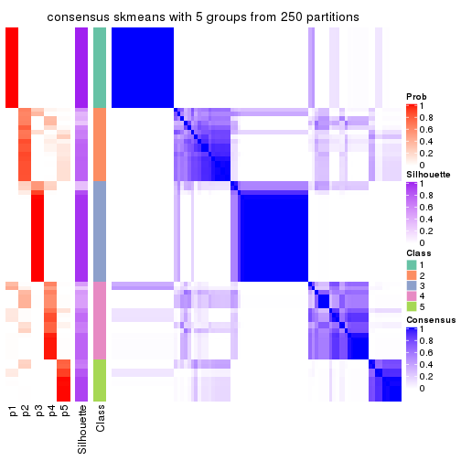
consensus_heatmap(res, k = 6)
Heatmaps for the membership of samples in all partitions to see how consistent they are:
membership_heatmap(res, k = 2)
membership_heatmap(res, k = 3)
membership_heatmap(res, k = 4)
membership_heatmap(res, k = 5)
membership_heatmap(res, k = 6)
As soon as we have had the classes for columns, we can look for signatures which are significantly different between classes which can be candidate marks for certain classes. Following are the heatmaps for signatures.
Signature heatmaps where rows are scaled:
get_signatures(res, k = 2)
get_signatures(res, k = 3)

get_signatures(res, k = 4)
get_signatures(res, k = 5)
get_signatures(res, k = 6)
Signature heatmaps where rows are not scaled:
get_signatures(res, k = 2, scale_rows = FALSE)
get_signatures(res, k = 3, scale_rows = FALSE)

get_signatures(res, k = 4, scale_rows = FALSE)
get_signatures(res, k = 5, scale_rows = FALSE)
get_signatures(res, k = 6, scale_rows = FALSE)
Compare the overlap of signatures from different k:
compare_signatures(res)
get_signature() returns a data frame invisibly. TO get the list of signatures, the function
call should be assigned to a variable explicitly. In following code, if plot argument is set
to FALSE, no heatmap is plotted while only the differential analysis is performed.
# code only for demonstration
tb = get_signature(res, k = ..., plot = FALSE)
An example of the output of tb is:
#> which_row fdr mean_1 mean_2 scaled_mean_1 scaled_mean_2 km
#> 1 38 0.042760348 8.373488 9.131774 -0.5533452 0.5164555 1
#> 2 40 0.018707592 7.106213 8.469186 -0.6173731 0.5762149 1
#> 3 55 0.019134737 10.221463 11.207825 -0.6159697 0.5749050 1
#> 4 59 0.006059896 5.921854 7.869574 -0.6899429 0.6439467 1
#> 5 60 0.018055526 8.928898 10.211722 -0.6204761 0.5791110 1
#> 6 98 0.009384629 15.714769 14.887706 0.6635654 -0.6193277 2
...
The columns in tb are:
which_row: row indices corresponding to the input matrix.fdr: FDR for the differential test. mean_x: The mean value in group x.scaled_mean_x: The mean value in group x after rows are scaled.km: Row groups if k-means clustering is applied to rows.UMAP plot which shows how samples are separated.
dimension_reduction(res, k = 2, method = "UMAP")
dimension_reduction(res, k = 3, method = "UMAP")
dimension_reduction(res, k = 4, method = "UMAP")
dimension_reduction(res, k = 5, method = "UMAP")
dimension_reduction(res, k = 6, method = "UMAP")
Following heatmap shows how subgroups are split when increasing k:
collect_classes(res)
If matrix rows can be associated to genes, consider to use GO_Enrichment(res,
...) to perform function enrichment for the signature genes.
The object with results only for a single top-value method and a single partition method can be extracted as:
res = res_list["ATC", "pam"]
# you can also extract it by
# res = res_list["ATC:pam"]
A summary of res and all the functions that can be applied to it:
res
#> A 'ConsensusPartition' object with k = 2, 3, 4, 5, 6.
#> On a matrix with 16717 rows and 168 columns.
#> Top rows (1000, 2000, 3000, 4000, 5000) are extracted by 'ATC' method.
#> Subgroups are detected by 'pam' method.
#> Performed in total 1250 partitions by row resampling.
#> Best k for subgroups seems to be 3.
#>
#> Following methods can be applied to this 'ConsensusPartition' object:
#> [1] "cola_report" "collect_classes" "collect_plots"
#> [4] "collect_stats" "colnames" "compare_signatures"
#> [7] "consensus_heatmap" "dimension_reduction" "functional_enrichment"
#> [10] "get_anno_col" "get_anno" "get_classes"
#> [13] "get_consensus" "get_matrix" "get_membership"
#> [16] "get_param" "get_signatures" "get_stats"
#> [19] "is_best_k" "is_stable_k" "membership_heatmap"
#> [22] "ncol" "nrow" "plot_ecdf"
#> [25] "rownames" "select_partition_number" "show"
#> [28] "suggest_best_k" "test_to_known_factors"
collect_plots() function collects all the plots made from res for all k (number of partitions)
into one single page to provide an easy and fast comparison between different k.
collect_plots(res)
The plots are:
k and the heatmap of
predicted classes for each k.k.k.k.All the plots in panels can be made by individual functions and they are plotted later in this section.
select_partition_number() produces several plots showing different
statistics for choosing “optimized” k. There are following statistics:
k;k, the area increased is defined as \(A_k - A_{k-1}\).The detailed explanations of these statistics can be found in the cola vignette.
Generally speaking, lower PAC score, higher mean silhouette score or higher
concordance corresponds to better partition. Rand index and Jaccard index
measure how similar the current partition is compared to partition with k-1.
If they are too similar, we won't accept k is better than k-1.
select_partition_number(res)
The numeric values for all these statistics can be obtained by get_stats().
get_stats(res)
#> k 1-PAC mean_silhouette concordance area_increased Rand Jaccard
#> 2 2 0.518 0.926 0.922 0.3233 0.675 0.675
#> 3 3 1.000 0.984 0.994 0.6926 0.778 0.671
#> 4 4 0.756 0.744 0.861 0.3261 0.808 0.575
#> 5 5 0.833 0.756 0.875 0.0720 0.907 0.691
#> 6 6 0.861 0.643 0.850 0.0247 0.961 0.849
suggest_best_k() suggests the best \(k\) based on these statistics. The rules are as follows:
NA.suggest_best_k(res)
#> [1] 3
Following shows the table of the partitions (You need to click the show/hide
code output link to see it). The membership matrix (columns with name p*)
is inferred by
clue::cl_consensus()
function with the SE method. Basically the value in the membership matrix
represents the probability to belong to a certain group. The finall class
label for an item is determined with the group with highest probability it
belongs to.
In get_classes() function, the entropy is calculated from the membership
matrix and the silhouette score is calculated from the consensus matrix.
cbind(get_classes(res, k = 2), get_membership(res, k = 2))
#> class entropy silhouette p1 p2
#> SRR1768889 1 0.706 0.995 0.808 0.192
#> SRR1768890 1 0.706 0.995 0.808 0.192
#> SRR1768891 2 0.000 0.941 0.000 1.000
#> SRR1768892 2 0.000 0.941 0.000 1.000
#> SRR1768893 2 0.000 0.941 0.000 1.000
#> SRR1768894 2 0.000 0.941 0.000 1.000
#> SRR1768895 2 0.000 0.941 0.000 1.000
#> SRR1768896 2 0.000 0.941 0.000 1.000
#> SRR1768821 2 0.000 0.941 0.000 1.000
#> SRR1768822 2 0.000 0.941 0.000 1.000
#> SRR1768823 2 0.000 0.941 0.000 1.000
#> SRR1768824 2 0.000 0.941 0.000 1.000
#> SRR1768825 2 0.000 0.941 0.000 1.000
#> SRR1768826 2 0.000 0.941 0.000 1.000
#> SRR1768827 2 0.000 0.941 0.000 1.000
#> SRR1768828 2 0.000 0.941 0.000 1.000
#> SRR1768829 2 0.000 0.941 0.000 1.000
#> SRR1768830 2 0.000 0.941 0.000 1.000
#> SRR1768831 2 0.000 0.941 0.000 1.000
#> SRR1768832 2 0.000 0.941 0.000 1.000
#> SRR1768833 2 0.000 0.941 0.000 1.000
#> SRR1768834 2 0.000 0.941 0.000 1.000
#> SRR1768835 2 0.000 0.941 0.000 1.000
#> SRR1768836 2 0.000 0.941 0.000 1.000
#> SRR1768837 2 0.000 0.941 0.000 1.000
#> SRR1768838 2 0.000 0.941 0.000 1.000
#> SRR1768839 2 0.000 0.941 0.000 1.000
#> SRR1768840 2 0.000 0.941 0.000 1.000
#> SRR1768841 2 0.000 0.941 0.000 1.000
#> SRR1768842 2 0.000 0.941 0.000 1.000
#> SRR1768843 2 0.000 0.941 0.000 1.000
#> SRR1768844 1 0.706 0.995 0.808 0.192
#> SRR1768845 1 0.706 0.995 0.808 0.192
#> SRR1768846 1 0.706 0.995 0.808 0.192
#> SRR1768847 1 0.706 0.995 0.808 0.192
#> SRR1768848 1 0.706 0.995 0.808 0.192
#> SRR1768849 1 0.706 0.995 0.808 0.192
#> SRR1768850 1 0.706 0.995 0.808 0.192
#> SRR1768851 1 0.706 0.995 0.808 0.192
#> SRR1768852 2 0.000 0.941 0.000 1.000
#> SRR1768853 2 0.000 0.941 0.000 1.000
#> SRR1768854 2 0.000 0.941 0.000 1.000
#> SRR1768855 1 0.706 0.995 0.808 0.192
#> SRR1768856 1 0.706 0.995 0.808 0.192
#> SRR1768857 1 0.706 0.995 0.808 0.192
#> SRR1768858 1 0.706 0.995 0.808 0.192
#> SRR1768859 1 0.706 0.995 0.808 0.192
#> SRR1768860 1 0.706 0.995 0.808 0.192
#> SRR1768861 2 0.000 0.941 0.000 1.000
#> SRR1768862 2 0.000 0.941 0.000 1.000
#> SRR1768863 2 0.000 0.941 0.000 1.000
#> SRR1768864 2 0.000 0.941 0.000 1.000
#> SRR1768865 2 0.000 0.941 0.000 1.000
#> SRR1768866 2 0.000 0.941 0.000 1.000
#> SRR1768867 2 0.000 0.941 0.000 1.000
#> SRR1768868 2 0.000 0.941 0.000 1.000
#> SRR1768869 2 0.000 0.941 0.000 1.000
#> SRR1768870 2 0.000 0.941 0.000 1.000
#> SRR1768871 2 0.000 0.941 0.000 1.000
#> SRR1768872 2 0.000 0.941 0.000 1.000
#> SRR1768873 2 0.000 0.941 0.000 1.000
#> SRR1768874 2 0.000 0.941 0.000 1.000
#> SRR1768875 1 0.706 0.995 0.808 0.192
#> SRR1768876 1 0.706 0.995 0.808 0.192
#> SRR1768877 1 0.706 0.995 0.808 0.192
#> SRR1768878 1 0.706 0.995 0.808 0.192
#> SRR1768879 2 0.000 0.941 0.000 1.000
#> SRR1768880 2 0.000 0.941 0.000 1.000
#> SRR1768881 2 0.000 0.941 0.000 1.000
#> SRR1768882 2 0.000 0.941 0.000 1.000
#> SRR1768883 1 0.706 0.995 0.808 0.192
#> SRR1768884 1 0.706 0.995 0.808 0.192
#> SRR1768885 1 0.706 0.995 0.808 0.192
#> SRR1768886 1 0.706 0.995 0.808 0.192
#> SRR1768887 1 0.706 0.995 0.808 0.192
#> SRR1768888 1 0.706 0.995 0.808 0.192
#> SRR1768897 2 0.000 0.941 0.000 1.000
#> SRR1768898 2 0.000 0.941 0.000 1.000
#> SRR1768899 2 0.000 0.941 0.000 1.000
#> SRR1768900 2 0.000 0.941 0.000 1.000
#> SRR1768901 1 0.802 0.931 0.756 0.244
#> SRR1768902 1 0.861 0.873 0.716 0.284
#> SRR1768903 1 0.706 0.995 0.808 0.192
#> SRR1768904 2 0.000 0.941 0.000 1.000
#> SRR1768905 2 0.000 0.941 0.000 1.000
#> SRR1768906 2 0.000 0.941 0.000 1.000
#> SRR1768907 2 0.000 0.941 0.000 1.000
#> SRR1768908 2 0.000 0.941 0.000 1.000
#> SRR1768909 2 0.000 0.941 0.000 1.000
#> SRR1768910 2 0.000 0.941 0.000 1.000
#> SRR1768911 2 0.000 0.941 0.000 1.000
#> SRR1768912 2 0.000 0.941 0.000 1.000
#> SRR1768913 2 0.000 0.941 0.000 1.000
#> SRR1768914 2 0.000 0.941 0.000 1.000
#> SRR1768915 2 0.000 0.941 0.000 1.000
#> SRR1768916 2 0.000 0.941 0.000 1.000
#> SRR1768917 2 0.000 0.941 0.000 1.000
#> SRR1768918 2 0.000 0.941 0.000 1.000
#> SRR1768919 2 0.000 0.941 0.000 1.000
#> SRR1768920 2 0.000 0.941 0.000 1.000
#> SRR1768921 2 0.000 0.941 0.000 1.000
#> SRR1768922 1 0.706 0.995 0.808 0.192
#> SRR1768923 1 0.706 0.995 0.808 0.192
#> SRR1768924 2 0.000 0.941 0.000 1.000
#> SRR1768925 2 0.000 0.941 0.000 1.000
#> SRR1768926 2 0.000 0.941 0.000 1.000
#> SRR1768927 2 0.000 0.941 0.000 1.000
#> SRR1768928 2 0.000 0.941 0.000 1.000
#> SRR1768929 2 0.000 0.941 0.000 1.000
#> SRR1768930 2 0.000 0.941 0.000 1.000
#> SRR1768931 2 0.000 0.941 0.000 1.000
#> SRR1768932 2 0.000 0.941 0.000 1.000
#> SRR1768933 2 0.000 0.941 0.000 1.000
#> SRR1768934 2 0.000 0.941 0.000 1.000
#> SRR1768935 2 0.000 0.941 0.000 1.000
#> SRR1768936 2 0.000 0.941 0.000 1.000
#> SRR1768937 2 0.000 0.941 0.000 1.000
#> SRR1768938 2 0.000 0.941 0.000 1.000
#> SRR1768939 2 0.000 0.941 0.000 1.000
#> SRR1768940 2 0.000 0.941 0.000 1.000
#> SRR1768941 2 0.000 0.941 0.000 1.000
#> SRR1768942 2 0.000 0.941 0.000 1.000
#> SRR1768943 2 0.000 0.941 0.000 1.000
#> SRR1768944 2 0.000 0.941 0.000 1.000
#> SRR1768945 2 0.000 0.941 0.000 1.000
#> SRR1768946 2 0.000 0.941 0.000 1.000
#> SRR1768947 1 0.706 0.995 0.808 0.192
#> SRR1768948 1 0.706 0.995 0.808 0.192
#> SRR1768949 1 0.706 0.995 0.808 0.192
#> SRR1768950 2 0.000 0.941 0.000 1.000
#> SRR1768954 2 0.706 0.816 0.192 0.808
#> SRR1768955 2 0.706 0.816 0.192 0.808
#> SRR1768956 2 0.706 0.816 0.192 0.808
#> SRR1768957 2 0.706 0.816 0.192 0.808
#> SRR1768958 2 0.706 0.816 0.192 0.808
#> SRR1768959 2 0.706 0.816 0.192 0.808
#> SRR1768960 2 0.706 0.816 0.192 0.808
#> SRR1768961 2 0.706 0.816 0.192 0.808
#> SRR1768952 2 0.000 0.941 0.000 1.000
#> SRR1768953 2 0.000 0.941 0.000 1.000
#> SRR1768962 2 0.706 0.816 0.192 0.808
#> SRR1768963 2 0.706 0.816 0.192 0.808
#> SRR1768964 2 0.706 0.816 0.192 0.808
#> SRR1768965 2 0.706 0.816 0.192 0.808
#> SRR1768966 2 0.706 0.816 0.192 0.808
#> SRR1768967 2 0.706 0.816 0.192 0.808
#> SRR1768968 2 0.706 0.816 0.192 0.808
#> SRR1768969 2 0.706 0.816 0.192 0.808
#> SRR1768970 2 0.706 0.816 0.192 0.808
#> SRR1768971 2 0.706 0.816 0.192 0.808
#> SRR1768972 2 0.706 0.816 0.192 0.808
#> SRR1768973 2 0.706 0.816 0.192 0.808
#> SRR1768974 2 0.706 0.816 0.192 0.808
#> SRR1768975 2 0.706 0.816 0.192 0.808
#> SRR1768976 2 0.706 0.816 0.192 0.808
#> SRR1768977 2 0.706 0.816 0.192 0.808
#> SRR1768978 2 0.706 0.816 0.192 0.808
#> SRR1768979 2 0.706 0.816 0.192 0.808
#> SRR1768980 2 0.706 0.816 0.192 0.808
#> SRR1768981 2 0.706 0.816 0.192 0.808
#> SRR1768982 2 0.706 0.816 0.192 0.808
#> SRR1768983 2 0.706 0.816 0.192 0.808
#> SRR1768984 2 0.706 0.816 0.192 0.808
#> SRR1768985 2 0.706 0.816 0.192 0.808
#> SRR1768986 2 0.529 0.864 0.120 0.880
#> SRR1768987 2 0.343 0.901 0.064 0.936
#> SRR1768988 2 0.163 0.926 0.024 0.976
#> SRR1768989 2 0.163 0.926 0.024 0.976
cbind(get_classes(res, k = 3), get_membership(res, k = 3))
#> class entropy silhouette p1 p2 p3
#> SRR1768889 3 0.0000 0.975 0.000 0.000 1.000
#> SRR1768890 3 0.0000 0.975 0.000 0.000 1.000
#> SRR1768891 2 0.0000 0.995 0.000 1.000 0.000
#> SRR1768892 2 0.0000 0.995 0.000 1.000 0.000
#> SRR1768893 2 0.0000 0.995 0.000 1.000 0.000
#> SRR1768894 2 0.0000 0.995 0.000 1.000 0.000
#> SRR1768895 2 0.0000 0.995 0.000 1.000 0.000
#> SRR1768896 2 0.0000 0.995 0.000 1.000 0.000
#> SRR1768821 2 0.0000 0.995 0.000 1.000 0.000
#> SRR1768822 2 0.0000 0.995 0.000 1.000 0.000
#> SRR1768823 2 0.0000 0.995 0.000 1.000 0.000
#> SRR1768824 2 0.0000 0.995 0.000 1.000 0.000
#> SRR1768825 2 0.0000 0.995 0.000 1.000 0.000
#> SRR1768826 2 0.0000 0.995 0.000 1.000 0.000
#> SRR1768827 2 0.0000 0.995 0.000 1.000 0.000
#> SRR1768828 2 0.0000 0.995 0.000 1.000 0.000
#> SRR1768829 2 0.0000 0.995 0.000 1.000 0.000
#> SRR1768830 2 0.0000 0.995 0.000 1.000 0.000
#> SRR1768831 2 0.0000 0.995 0.000 1.000 0.000
#> SRR1768832 2 0.0000 0.995 0.000 1.000 0.000
#> SRR1768833 2 0.0000 0.995 0.000 1.000 0.000
#> SRR1768834 2 0.0000 0.995 0.000 1.000 0.000
#> SRR1768835 2 0.0000 0.995 0.000 1.000 0.000
#> SRR1768836 2 0.0000 0.995 0.000 1.000 0.000
#> SRR1768837 2 0.0000 0.995 0.000 1.000 0.000
#> SRR1768838 2 0.0000 0.995 0.000 1.000 0.000
#> SRR1768839 2 0.0000 0.995 0.000 1.000 0.000
#> SRR1768840 2 0.0000 0.995 0.000 1.000 0.000
#> SRR1768841 2 0.0000 0.995 0.000 1.000 0.000
#> SRR1768842 2 0.0000 0.995 0.000 1.000 0.000
#> SRR1768843 2 0.0000 0.995 0.000 1.000 0.000
#> SRR1768844 3 0.0000 0.975 0.000 0.000 1.000
#> SRR1768845 3 0.0000 0.975 0.000 0.000 1.000
#> SRR1768846 3 0.0000 0.975 0.000 0.000 1.000
#> SRR1768847 3 0.0000 0.975 0.000 0.000 1.000
#> SRR1768848 3 0.0000 0.975 0.000 0.000 1.000
#> SRR1768849 3 0.0000 0.975 0.000 0.000 1.000
#> SRR1768850 3 0.0000 0.975 0.000 0.000 1.000
#> SRR1768851 3 0.0000 0.975 0.000 0.000 1.000
#> SRR1768852 2 0.0000 0.995 0.000 1.000 0.000
#> SRR1768853 2 0.0000 0.995 0.000 1.000 0.000
#> SRR1768854 2 0.0000 0.995 0.000 1.000 0.000
#> SRR1768855 3 0.0000 0.975 0.000 0.000 1.000
#> SRR1768856 3 0.0000 0.975 0.000 0.000 1.000
#> SRR1768857 3 0.0000 0.975 0.000 0.000 1.000
#> SRR1768858 3 0.0000 0.975 0.000 0.000 1.000
#> SRR1768859 3 0.0000 0.975 0.000 0.000 1.000
#> SRR1768860 3 0.0000 0.975 0.000 0.000 1.000
#> SRR1768861 2 0.0000 0.995 0.000 1.000 0.000
#> SRR1768862 2 0.0000 0.995 0.000 1.000 0.000
#> SRR1768863 2 0.0000 0.995 0.000 1.000 0.000
#> SRR1768864 2 0.0000 0.995 0.000 1.000 0.000
#> SRR1768865 2 0.0000 0.995 0.000 1.000 0.000
#> SRR1768866 2 0.0000 0.995 0.000 1.000 0.000
#> SRR1768867 2 0.0000 0.995 0.000 1.000 0.000
#> SRR1768868 2 0.0000 0.995 0.000 1.000 0.000
#> SRR1768869 2 0.0000 0.995 0.000 1.000 0.000
#> SRR1768870 2 0.0000 0.995 0.000 1.000 0.000
#> SRR1768871 2 0.0000 0.995 0.000 1.000 0.000
#> SRR1768872 2 0.0000 0.995 0.000 1.000 0.000
#> SRR1768873 2 0.0000 0.995 0.000 1.000 0.000
#> SRR1768874 2 0.0000 0.995 0.000 1.000 0.000
#> SRR1768875 3 0.0000 0.975 0.000 0.000 1.000
#> SRR1768876 3 0.0000 0.975 0.000 0.000 1.000
#> SRR1768877 3 0.0000 0.975 0.000 0.000 1.000
#> SRR1768878 3 0.0000 0.975 0.000 0.000 1.000
#> SRR1768879 2 0.0000 0.995 0.000 1.000 0.000
#> SRR1768880 2 0.0000 0.995 0.000 1.000 0.000
#> SRR1768881 2 0.0000 0.995 0.000 1.000 0.000
#> SRR1768882 2 0.0000 0.995 0.000 1.000 0.000
#> SRR1768883 3 0.0000 0.975 0.000 0.000 1.000
#> SRR1768884 3 0.0000 0.975 0.000 0.000 1.000
#> SRR1768885 3 0.0000 0.975 0.000 0.000 1.000
#> SRR1768886 3 0.0000 0.975 0.000 0.000 1.000
#> SRR1768887 3 0.0000 0.975 0.000 0.000 1.000
#> SRR1768888 3 0.0000 0.975 0.000 0.000 1.000
#> SRR1768897 2 0.0000 0.995 0.000 1.000 0.000
#> SRR1768898 2 0.0000 0.995 0.000 1.000 0.000
#> SRR1768899 2 0.0000 0.995 0.000 1.000 0.000
#> SRR1768900 2 0.0000 0.995 0.000 1.000 0.000
#> SRR1768901 3 0.4555 0.689 0.000 0.200 0.800
#> SRR1768902 3 0.5926 0.454 0.000 0.356 0.644
#> SRR1768903 3 0.0000 0.975 0.000 0.000 1.000
#> SRR1768904 2 0.0000 0.995 0.000 1.000 0.000
#> SRR1768905 2 0.0000 0.995 0.000 1.000 0.000
#> SRR1768906 2 0.0000 0.995 0.000 1.000 0.000
#> SRR1768907 2 0.0000 0.995 0.000 1.000 0.000
#> SRR1768908 2 0.0000 0.995 0.000 1.000 0.000
#> SRR1768909 2 0.0000 0.995 0.000 1.000 0.000
#> SRR1768910 2 0.0000 0.995 0.000 1.000 0.000
#> SRR1768911 2 0.0000 0.995 0.000 1.000 0.000
#> SRR1768912 2 0.0000 0.995 0.000 1.000 0.000
#> SRR1768913 2 0.0000 0.995 0.000 1.000 0.000
#> SRR1768914 2 0.0000 0.995 0.000 1.000 0.000
#> SRR1768915 2 0.0000 0.995 0.000 1.000 0.000
#> SRR1768916 2 0.0000 0.995 0.000 1.000 0.000
#> SRR1768917 2 0.0000 0.995 0.000 1.000 0.000
#> SRR1768918 2 0.0000 0.995 0.000 1.000 0.000
#> SRR1768919 2 0.0000 0.995 0.000 1.000 0.000
#> SRR1768920 2 0.0000 0.995 0.000 1.000 0.000
#> SRR1768921 2 0.0000 0.995 0.000 1.000 0.000
#> SRR1768922 3 0.0000 0.975 0.000 0.000 1.000
#> SRR1768923 3 0.0000 0.975 0.000 0.000 1.000
#> SRR1768924 2 0.0000 0.995 0.000 1.000 0.000
#> SRR1768925 2 0.0000 0.995 0.000 1.000 0.000
#> SRR1768926 2 0.0000 0.995 0.000 1.000 0.000
#> SRR1768927 2 0.0000 0.995 0.000 1.000 0.000
#> SRR1768928 2 0.0000 0.995 0.000 1.000 0.000
#> SRR1768929 2 0.0000 0.995 0.000 1.000 0.000
#> SRR1768930 2 0.0000 0.995 0.000 1.000 0.000
#> SRR1768931 2 0.0000 0.995 0.000 1.000 0.000
#> SRR1768932 2 0.0000 0.995 0.000 1.000 0.000
#> SRR1768933 2 0.0000 0.995 0.000 1.000 0.000
#> SRR1768934 2 0.0000 0.995 0.000 1.000 0.000
#> SRR1768935 2 0.0000 0.995 0.000 1.000 0.000
#> SRR1768936 2 0.0000 0.995 0.000 1.000 0.000
#> SRR1768937 2 0.0000 0.995 0.000 1.000 0.000
#> SRR1768938 2 0.0000 0.995 0.000 1.000 0.000
#> SRR1768939 2 0.0000 0.995 0.000 1.000 0.000
#> SRR1768940 2 0.0000 0.995 0.000 1.000 0.000
#> SRR1768941 2 0.0000 0.995 0.000 1.000 0.000
#> SRR1768942 2 0.0000 0.995 0.000 1.000 0.000
#> SRR1768943 2 0.0000 0.995 0.000 1.000 0.000
#> SRR1768944 2 0.0000 0.995 0.000 1.000 0.000
#> SRR1768945 2 0.0000 0.995 0.000 1.000 0.000
#> SRR1768946 2 0.0000 0.995 0.000 1.000 0.000
#> SRR1768947 3 0.0000 0.975 0.000 0.000 1.000
#> SRR1768948 3 0.0000 0.975 0.000 0.000 1.000
#> SRR1768949 3 0.0000 0.975 0.000 0.000 1.000
#> SRR1768950 2 0.0000 0.995 0.000 1.000 0.000
#> SRR1768954 1 0.0000 1.000 1.000 0.000 0.000
#> SRR1768955 1 0.0000 1.000 1.000 0.000 0.000
#> SRR1768956 1 0.0000 1.000 1.000 0.000 0.000
#> SRR1768957 1 0.0000 1.000 1.000 0.000 0.000
#> SRR1768958 1 0.0000 1.000 1.000 0.000 0.000
#> SRR1768959 1 0.0000 1.000 1.000 0.000 0.000
#> SRR1768960 1 0.0000 1.000 1.000 0.000 0.000
#> SRR1768961 1 0.0000 1.000 1.000 0.000 0.000
#> SRR1768952 2 0.0000 0.995 0.000 1.000 0.000
#> SRR1768953 2 0.0000 0.995 0.000 1.000 0.000
#> SRR1768962 1 0.0000 1.000 1.000 0.000 0.000
#> SRR1768963 1 0.0000 1.000 1.000 0.000 0.000
#> SRR1768964 1 0.0000 1.000 1.000 0.000 0.000
#> SRR1768965 1 0.0000 1.000 1.000 0.000 0.000
#> SRR1768966 1 0.0000 1.000 1.000 0.000 0.000
#> SRR1768967 1 0.0000 1.000 1.000 0.000 0.000
#> SRR1768968 1 0.0000 1.000 1.000 0.000 0.000
#> SRR1768969 1 0.0000 1.000 1.000 0.000 0.000
#> SRR1768970 1 0.0000 1.000 1.000 0.000 0.000
#> SRR1768971 1 0.0000 1.000 1.000 0.000 0.000
#> SRR1768972 1 0.0000 1.000 1.000 0.000 0.000
#> SRR1768973 1 0.0000 1.000 1.000 0.000 0.000
#> SRR1768974 1 0.0000 1.000 1.000 0.000 0.000
#> SRR1768975 1 0.0000 1.000 1.000 0.000 0.000
#> SRR1768976 1 0.0000 1.000 1.000 0.000 0.000
#> SRR1768977 1 0.0000 1.000 1.000 0.000 0.000
#> SRR1768978 1 0.0000 1.000 1.000 0.000 0.000
#> SRR1768979 1 0.0000 1.000 1.000 0.000 0.000
#> SRR1768980 1 0.0000 1.000 1.000 0.000 0.000
#> SRR1768981 1 0.0000 1.000 1.000 0.000 0.000
#> SRR1768982 1 0.0000 1.000 1.000 0.000 0.000
#> SRR1768983 1 0.0000 1.000 1.000 0.000 0.000
#> SRR1768984 2 0.4555 0.755 0.200 0.800 0.000
#> SRR1768985 2 0.4555 0.755 0.200 0.800 0.000
#> SRR1768986 2 0.1753 0.948 0.048 0.952 0.000
#> SRR1768987 2 0.0747 0.980 0.016 0.984 0.000
#> SRR1768988 2 0.0237 0.992 0.004 0.996 0.000
#> SRR1768989 2 0.0237 0.992 0.004 0.996 0.000
cbind(get_classes(res, k = 4), get_membership(res, k = 4))
#> class entropy silhouette p1 p2 p3 p4
#> SRR1768889 3 0.0000 0.9613 0 0.000 1.000 0.000
#> SRR1768890 3 0.0000 0.9613 0 0.000 1.000 0.000
#> SRR1768891 4 0.0000 0.7222 0 0.000 0.000 1.000
#> SRR1768892 4 0.0000 0.7222 0 0.000 0.000 1.000
#> SRR1768893 2 0.4730 0.7047 0 0.636 0.000 0.364
#> SRR1768894 2 0.4730 0.7047 0 0.636 0.000 0.364
#> SRR1768895 4 0.3764 0.5706 0 0.216 0.000 0.784
#> SRR1768896 4 0.3688 0.5831 0 0.208 0.000 0.792
#> SRR1768821 4 0.1557 0.7085 0 0.056 0.000 0.944
#> SRR1768822 4 0.1557 0.7085 0 0.056 0.000 0.944
#> SRR1768823 4 0.0336 0.7218 0 0.008 0.000 0.992
#> SRR1768824 4 0.0336 0.7218 0 0.008 0.000 0.992
#> SRR1768825 2 0.4730 0.7047 0 0.636 0.000 0.364
#> SRR1768826 2 0.4730 0.7047 0 0.636 0.000 0.364
#> SRR1768827 4 0.4356 0.3979 0 0.292 0.000 0.708
#> SRR1768828 4 0.4356 0.3979 0 0.292 0.000 0.708
#> SRR1768829 4 0.3219 0.6387 0 0.164 0.000 0.836
#> SRR1768830 4 0.3311 0.6306 0 0.172 0.000 0.828
#> SRR1768831 2 0.1022 0.5804 0 0.968 0.000 0.032
#> SRR1768832 2 0.1022 0.5804 0 0.968 0.000 0.032
#> SRR1768833 2 0.0000 0.6045 0 1.000 0.000 0.000
#> SRR1768834 2 0.0707 0.5904 0 0.980 0.000 0.020
#> SRR1768835 2 0.0000 0.6045 0 1.000 0.000 0.000
#> SRR1768836 2 0.3074 0.4380 0 0.848 0.000 0.152
#> SRR1768837 2 0.2973 0.4497 0 0.856 0.000 0.144
#> SRR1768838 2 0.0000 0.6045 0 1.000 0.000 0.000
#> SRR1768839 2 0.0000 0.6045 0 1.000 0.000 0.000
#> SRR1768840 2 0.0336 0.6080 0 0.992 0.000 0.008
#> SRR1768841 2 0.0336 0.6080 0 0.992 0.000 0.008
#> SRR1768842 2 0.4713 0.7038 0 0.640 0.000 0.360
#> SRR1768843 2 0.4713 0.7038 0 0.640 0.000 0.360
#> SRR1768844 3 0.0000 0.9613 0 0.000 1.000 0.000
#> SRR1768845 3 0.0000 0.9613 0 0.000 1.000 0.000
#> SRR1768846 3 0.0000 0.9613 0 0.000 1.000 0.000
#> SRR1768847 3 0.0000 0.9613 0 0.000 1.000 0.000
#> SRR1768848 3 0.0000 0.9613 0 0.000 1.000 0.000
#> SRR1768849 3 0.0000 0.9613 0 0.000 1.000 0.000
#> SRR1768850 3 0.0000 0.9613 0 0.000 1.000 0.000
#> SRR1768851 3 0.0000 0.9613 0 0.000 1.000 0.000
#> SRR1768852 4 0.0336 0.7215 0 0.008 0.000 0.992
#> SRR1768853 4 0.1211 0.7136 0 0.040 0.000 0.960
#> SRR1768854 4 0.4072 0.4914 0 0.252 0.000 0.748
#> SRR1768855 3 0.0000 0.9613 0 0.000 1.000 0.000
#> SRR1768856 3 0.0000 0.9613 0 0.000 1.000 0.000
#> SRR1768857 3 0.0000 0.9613 0 0.000 1.000 0.000
#> SRR1768858 3 0.0000 0.9613 0 0.000 1.000 0.000
#> SRR1768859 3 0.0000 0.9613 0 0.000 1.000 0.000
#> SRR1768860 3 0.0000 0.9613 0 0.000 1.000 0.000
#> SRR1768861 2 0.4730 0.7047 0 0.636 0.000 0.364
#> SRR1768862 2 0.4730 0.7047 0 0.636 0.000 0.364
#> SRR1768863 2 0.4730 0.7047 0 0.636 0.000 0.364
#> SRR1768864 2 0.4730 0.7047 0 0.636 0.000 0.364
#> SRR1768865 2 0.0336 0.6080 0 0.992 0.000 0.008
#> SRR1768866 2 0.0336 0.6080 0 0.992 0.000 0.008
#> SRR1768867 4 0.1557 0.7085 0 0.056 0.000 0.944
#> SRR1768868 4 0.1557 0.7085 0 0.056 0.000 0.944
#> SRR1768869 4 0.4624 0.5045 0 0.340 0.000 0.660
#> SRR1768870 4 0.4661 0.4989 0 0.348 0.000 0.652
#> SRR1768871 2 0.4961 -0.1940 0 0.552 0.000 0.448
#> SRR1768872 2 0.4877 -0.0922 0 0.592 0.000 0.408
#> SRR1768873 4 0.4713 0.4898 0 0.360 0.000 0.640
#> SRR1768874 4 0.4713 0.4898 0 0.360 0.000 0.640
#> SRR1768875 3 0.0000 0.9613 0 0.000 1.000 0.000
#> SRR1768876 3 0.0000 0.9613 0 0.000 1.000 0.000
#> SRR1768877 3 0.0000 0.9613 0 0.000 1.000 0.000
#> SRR1768878 3 0.0000 0.9613 0 0.000 1.000 0.000
#> SRR1768879 2 0.3688 0.6613 0 0.792 0.000 0.208
#> SRR1768880 2 0.3649 0.6602 0 0.796 0.000 0.204
#> SRR1768881 4 0.4564 0.5124 0 0.328 0.000 0.672
#> SRR1768882 4 0.4643 0.5019 0 0.344 0.000 0.656
#> SRR1768883 3 0.0000 0.9613 0 0.000 1.000 0.000
#> SRR1768884 3 0.0000 0.9613 0 0.000 1.000 0.000
#> SRR1768885 3 0.0000 0.9613 0 0.000 1.000 0.000
#> SRR1768886 3 0.0000 0.9613 0 0.000 1.000 0.000
#> SRR1768887 3 0.0000 0.9613 0 0.000 1.000 0.000
#> SRR1768888 3 0.0000 0.9613 0 0.000 1.000 0.000
#> SRR1768897 2 0.4730 0.7047 0 0.636 0.000 0.364
#> SRR1768898 2 0.4730 0.7047 0 0.636 0.000 0.364
#> SRR1768899 2 0.4730 0.7047 0 0.636 0.000 0.364
#> SRR1768900 2 0.4730 0.7047 0 0.636 0.000 0.364
#> SRR1768901 3 0.4941 0.2457 0 0.436 0.564 0.000
#> SRR1768902 3 0.5581 0.1599 0 0.448 0.532 0.020
#> SRR1768903 3 0.3569 0.7311 0 0.196 0.804 0.000
#> SRR1768904 2 0.4730 0.7047 0 0.636 0.000 0.364
#> SRR1768905 2 0.4730 0.7047 0 0.636 0.000 0.364
#> SRR1768906 2 0.4730 0.7047 0 0.636 0.000 0.364
#> SRR1768907 2 0.4730 0.7047 0 0.636 0.000 0.364
#> SRR1768908 2 0.4730 0.7047 0 0.636 0.000 0.364
#> SRR1768909 2 0.4730 0.7047 0 0.636 0.000 0.364
#> SRR1768910 2 0.4730 0.7047 0 0.636 0.000 0.364
#> SRR1768911 2 0.4730 0.7047 0 0.636 0.000 0.364
#> SRR1768912 2 0.4730 0.7047 0 0.636 0.000 0.364
#> SRR1768913 2 0.4730 0.7047 0 0.636 0.000 0.364
#> SRR1768914 2 0.4730 0.7047 0 0.636 0.000 0.364
#> SRR1768915 2 0.4730 0.7047 0 0.636 0.000 0.364
#> SRR1768916 2 0.4697 0.7027 0 0.644 0.000 0.356
#> SRR1768917 4 0.4679 0.1654 0 0.352 0.000 0.648
#> SRR1768918 2 0.4730 0.7047 0 0.636 0.000 0.364
#> SRR1768919 2 0.4730 0.7047 0 0.636 0.000 0.364
#> SRR1768920 4 0.3907 0.5427 0 0.232 0.000 0.768
#> SRR1768921 4 0.3907 0.5427 0 0.232 0.000 0.768
#> SRR1768922 3 0.0000 0.9613 0 0.000 1.000 0.000
#> SRR1768923 3 0.0000 0.9613 0 0.000 1.000 0.000
#> SRR1768924 2 0.0000 0.6045 0 1.000 0.000 0.000
#> SRR1768925 2 0.0000 0.6045 0 1.000 0.000 0.000
#> SRR1768926 2 0.0000 0.6045 0 1.000 0.000 0.000
#> SRR1768927 2 0.0000 0.6045 0 1.000 0.000 0.000
#> SRR1768928 2 0.2081 0.5263 0 0.916 0.000 0.084
#> SRR1768929 2 0.2149 0.5220 0 0.912 0.000 0.088
#> SRR1768930 4 0.0188 0.7224 0 0.004 0.000 0.996
#> SRR1768931 4 0.0188 0.7224 0 0.004 0.000 0.996
#> SRR1768932 4 0.0000 0.7222 0 0.000 0.000 1.000
#> SRR1768933 4 0.0336 0.7218 0 0.008 0.000 0.992
#> SRR1768934 4 0.0336 0.7218 0 0.008 0.000 0.992
#> SRR1768935 4 0.0188 0.7224 0 0.004 0.000 0.996
#> SRR1768936 4 0.0336 0.7218 0 0.008 0.000 0.992
#> SRR1768937 4 0.0188 0.7224 0 0.004 0.000 0.996
#> SRR1768938 4 0.0000 0.7222 0 0.000 0.000 1.000
#> SRR1768939 4 0.4072 0.5370 0 0.252 0.000 0.748
#> SRR1768940 4 0.4040 0.5371 0 0.248 0.000 0.752
#> SRR1768941 4 0.3311 0.6307 0 0.172 0.000 0.828
#> SRR1768942 4 0.3311 0.6307 0 0.172 0.000 0.828
#> SRR1768943 4 0.3266 0.6350 0 0.168 0.000 0.832
#> SRR1768944 4 0.3266 0.6350 0 0.168 0.000 0.832
#> SRR1768945 4 0.3266 0.6350 0 0.168 0.000 0.832
#> SRR1768946 4 0.3311 0.6307 0 0.172 0.000 0.828
#> SRR1768947 3 0.0000 0.9613 0 0.000 1.000 0.000
#> SRR1768948 3 0.0000 0.9613 0 0.000 1.000 0.000
#> SRR1768949 3 0.0000 0.9613 0 0.000 1.000 0.000
#> SRR1768950 4 0.0336 0.7218 0 0.008 0.000 0.992
#> SRR1768954 1 0.0000 1.0000 1 0.000 0.000 0.000
#> SRR1768955 1 0.0000 1.0000 1 0.000 0.000 0.000
#> SRR1768956 1 0.0000 1.0000 1 0.000 0.000 0.000
#> SRR1768957 1 0.0000 1.0000 1 0.000 0.000 0.000
#> SRR1768958 1 0.0000 1.0000 1 0.000 0.000 0.000
#> SRR1768959 1 0.0000 1.0000 1 0.000 0.000 0.000
#> SRR1768960 1 0.0000 1.0000 1 0.000 0.000 0.000
#> SRR1768961 1 0.0000 1.0000 1 0.000 0.000 0.000
#> SRR1768952 2 0.4730 0.7047 0 0.636 0.000 0.364
#> SRR1768953 2 0.4730 0.7047 0 0.636 0.000 0.364
#> SRR1768962 1 0.0000 1.0000 1 0.000 0.000 0.000
#> SRR1768963 1 0.0000 1.0000 1 0.000 0.000 0.000
#> SRR1768964 1 0.0000 1.0000 1 0.000 0.000 0.000
#> SRR1768965 1 0.0000 1.0000 1 0.000 0.000 0.000
#> SRR1768966 1 0.0000 1.0000 1 0.000 0.000 0.000
#> SRR1768967 1 0.0000 1.0000 1 0.000 0.000 0.000
#> SRR1768968 1 0.0000 1.0000 1 0.000 0.000 0.000
#> SRR1768969 1 0.0000 1.0000 1 0.000 0.000 0.000
#> SRR1768970 1 0.0000 1.0000 1 0.000 0.000 0.000
#> SRR1768971 1 0.0000 1.0000 1 0.000 0.000 0.000
#> SRR1768972 1 0.0000 1.0000 1 0.000 0.000 0.000
#> SRR1768973 1 0.0000 1.0000 1 0.000 0.000 0.000
#> SRR1768974 1 0.0000 1.0000 1 0.000 0.000 0.000
#> SRR1768975 1 0.0000 1.0000 1 0.000 0.000 0.000
#> SRR1768976 1 0.0000 1.0000 1 0.000 0.000 0.000
#> SRR1768977 1 0.0000 1.0000 1 0.000 0.000 0.000
#> SRR1768978 1 0.0000 1.0000 1 0.000 0.000 0.000
#> SRR1768979 1 0.0000 1.0000 1 0.000 0.000 0.000
#> SRR1768980 1 0.0000 1.0000 1 0.000 0.000 0.000
#> SRR1768981 1 0.0000 1.0000 1 0.000 0.000 0.000
#> SRR1768982 1 0.0000 1.0000 1 0.000 0.000 0.000
#> SRR1768983 1 0.0000 1.0000 1 0.000 0.000 0.000
#> SRR1768984 4 0.4713 0.4898 0 0.360 0.000 0.640
#> SRR1768985 4 0.4713 0.4898 0 0.360 0.000 0.640
#> SRR1768986 4 0.4713 0.4898 0 0.360 0.000 0.640
#> SRR1768987 4 0.4713 0.4898 0 0.360 0.000 0.640
#> SRR1768988 4 0.4713 0.4898 0 0.360 0.000 0.640
#> SRR1768989 4 0.4713 0.4898 0 0.360 0.000 0.640
cbind(get_classes(res, k = 5), get_membership(res, k = 5))
#> class entropy silhouette p1 p2 p3 p4 p5
#> SRR1768889 3 0.0000 0.9909 0.000 0.000 1.000 0.000 0.000
#> SRR1768890 3 0.0000 0.9909 0.000 0.000 1.000 0.000 0.000
#> SRR1768891 4 0.1197 0.7870 0.000 0.048 0.000 0.952 0.000
#> SRR1768892 4 0.1197 0.7870 0.000 0.048 0.000 0.952 0.000
#> SRR1768893 2 0.0290 0.7452 0.000 0.992 0.000 0.008 0.000
#> SRR1768894 2 0.0290 0.7452 0.000 0.992 0.000 0.008 0.000
#> SRR1768895 2 0.4446 -0.1402 0.000 0.520 0.000 0.476 0.004
#> SRR1768896 2 0.4448 -0.1528 0.000 0.516 0.000 0.480 0.004
#> SRR1768821 4 0.2127 0.7452 0.000 0.108 0.000 0.892 0.000
#> SRR1768822 4 0.2127 0.7452 0.000 0.108 0.000 0.892 0.000
#> SRR1768823 4 0.1197 0.7870 0.000 0.048 0.000 0.952 0.000
#> SRR1768824 4 0.1197 0.7870 0.000 0.048 0.000 0.952 0.000
#> SRR1768825 2 0.0290 0.7437 0.000 0.992 0.000 0.008 0.000
#> SRR1768826 2 0.0290 0.7437 0.000 0.992 0.000 0.008 0.000
#> SRR1768827 2 0.4641 -0.0935 0.000 0.532 0.000 0.012 0.456
#> SRR1768828 2 0.4641 -0.0935 0.000 0.532 0.000 0.012 0.456
#> SRR1768829 4 0.3305 0.5865 0.000 0.224 0.000 0.776 0.000
#> SRR1768830 4 0.3366 0.5727 0.000 0.232 0.000 0.768 0.000
#> SRR1768831 2 0.5188 0.5463 0.000 0.600 0.000 0.056 0.344
#> SRR1768832 2 0.5188 0.5463 0.000 0.600 0.000 0.056 0.344
#> SRR1768833 2 0.5066 0.5509 0.000 0.608 0.000 0.048 0.344
#> SRR1768834 2 0.5128 0.5487 0.000 0.604 0.000 0.052 0.344
#> SRR1768835 2 0.5066 0.5509 0.000 0.608 0.000 0.048 0.344
#> SRR1768836 2 0.5901 0.4728 0.000 0.540 0.000 0.116 0.344
#> SRR1768837 2 0.5781 0.4893 0.000 0.552 0.000 0.104 0.344
#> SRR1768838 2 0.5066 0.5509 0.000 0.608 0.000 0.048 0.344
#> SRR1768839 2 0.5066 0.5509 0.000 0.608 0.000 0.048 0.344
#> SRR1768840 2 0.2304 0.7187 0.000 0.908 0.000 0.048 0.044
#> SRR1768841 2 0.1800 0.7265 0.000 0.932 0.000 0.048 0.020
#> SRR1768842 2 0.0162 0.7461 0.000 0.996 0.000 0.000 0.004
#> SRR1768843 2 0.0162 0.7461 0.000 0.996 0.000 0.000 0.004
#> SRR1768844 3 0.0000 0.9909 0.000 0.000 1.000 0.000 0.000
#> SRR1768845 3 0.0000 0.9909 0.000 0.000 1.000 0.000 0.000
#> SRR1768846 3 0.0000 0.9909 0.000 0.000 1.000 0.000 0.000
#> SRR1768847 3 0.0000 0.9909 0.000 0.000 1.000 0.000 0.000
#> SRR1768848 3 0.0000 0.9909 0.000 0.000 1.000 0.000 0.000
#> SRR1768849 3 0.0000 0.9909 0.000 0.000 1.000 0.000 0.000
#> SRR1768850 3 0.0000 0.9909 0.000 0.000 1.000 0.000 0.000
#> SRR1768851 3 0.0000 0.9909 0.000 0.000 1.000 0.000 0.000
#> SRR1768852 4 0.1341 0.7833 0.000 0.056 0.000 0.944 0.000
#> SRR1768853 4 0.1792 0.7642 0.000 0.084 0.000 0.916 0.000
#> SRR1768854 4 0.3857 0.4184 0.000 0.312 0.000 0.688 0.000
#> SRR1768855 3 0.0000 0.9909 0.000 0.000 1.000 0.000 0.000
#> SRR1768856 3 0.0000 0.9909 0.000 0.000 1.000 0.000 0.000
#> SRR1768857 3 0.0000 0.9909 0.000 0.000 1.000 0.000 0.000
#> SRR1768858 3 0.0000 0.9909 0.000 0.000 1.000 0.000 0.000
#> SRR1768859 3 0.0000 0.9909 0.000 0.000 1.000 0.000 0.000
#> SRR1768860 3 0.0000 0.9909 0.000 0.000 1.000 0.000 0.000
#> SRR1768861 2 0.0000 0.7464 0.000 1.000 0.000 0.000 0.000
#> SRR1768862 2 0.0000 0.7464 0.000 1.000 0.000 0.000 0.000
#> SRR1768863 2 0.0000 0.7464 0.000 1.000 0.000 0.000 0.000
#> SRR1768864 2 0.0000 0.7464 0.000 1.000 0.000 0.000 0.000
#> SRR1768865 2 0.2149 0.7218 0.000 0.916 0.000 0.048 0.036
#> SRR1768866 2 0.2067 0.7232 0.000 0.920 0.000 0.048 0.032
#> SRR1768867 4 0.2074 0.7490 0.000 0.104 0.000 0.896 0.000
#> SRR1768868 4 0.2074 0.7490 0.000 0.104 0.000 0.896 0.000
#> SRR1768869 4 0.2629 0.7098 0.000 0.004 0.000 0.860 0.136
#> SRR1768870 4 0.2329 0.7135 0.000 0.000 0.000 0.876 0.124
#> SRR1768871 4 0.6363 0.2842 0.000 0.192 0.000 0.504 0.304
#> SRR1768872 4 0.6569 0.2162 0.000 0.232 0.000 0.464 0.304
#> SRR1768873 4 0.2929 0.6792 0.000 0.000 0.000 0.820 0.180
#> SRR1768874 4 0.2929 0.6792 0.000 0.000 0.000 0.820 0.180
#> SRR1768875 3 0.0000 0.9909 0.000 0.000 1.000 0.000 0.000
#> SRR1768876 3 0.0000 0.9909 0.000 0.000 1.000 0.000 0.000
#> SRR1768877 3 0.0000 0.9909 0.000 0.000 1.000 0.000 0.000
#> SRR1768878 3 0.0000 0.9909 0.000 0.000 1.000 0.000 0.000
#> SRR1768879 2 0.4210 0.0951 0.000 0.588 0.000 0.000 0.412
#> SRR1768880 2 0.4227 0.0708 0.000 0.580 0.000 0.000 0.420
#> SRR1768881 4 0.0451 0.7651 0.000 0.008 0.000 0.988 0.004
#> SRR1768882 4 0.0324 0.7621 0.000 0.004 0.000 0.992 0.004
#> SRR1768883 3 0.0000 0.9909 0.000 0.000 1.000 0.000 0.000
#> SRR1768884 3 0.0000 0.9909 0.000 0.000 1.000 0.000 0.000
#> SRR1768885 3 0.0000 0.9909 0.000 0.000 1.000 0.000 0.000
#> SRR1768886 3 0.0000 0.9909 0.000 0.000 1.000 0.000 0.000
#> SRR1768887 3 0.0000 0.9909 0.000 0.000 1.000 0.000 0.000
#> SRR1768888 3 0.0000 0.9909 0.000 0.000 1.000 0.000 0.000
#> SRR1768897 2 0.2249 0.6669 0.000 0.896 0.000 0.008 0.096
#> SRR1768898 2 0.1331 0.7180 0.000 0.952 0.000 0.008 0.040
#> SRR1768899 2 0.0290 0.7437 0.000 0.992 0.000 0.008 0.000
#> SRR1768900 2 0.0290 0.7437 0.000 0.992 0.000 0.008 0.000
#> SRR1768901 2 0.4306 0.0776 0.000 0.508 0.492 0.000 0.000
#> SRR1768902 2 0.4310 0.3327 0.000 0.604 0.392 0.000 0.004
#> SRR1768903 3 0.3109 0.6775 0.000 0.200 0.800 0.000 0.000
#> SRR1768904 2 0.0404 0.7432 0.000 0.988 0.000 0.000 0.012
#> SRR1768905 2 0.0290 0.7444 0.000 0.992 0.000 0.000 0.008
#> SRR1768906 2 0.0703 0.7384 0.000 0.976 0.000 0.000 0.024
#> SRR1768907 2 0.0000 0.7464 0.000 1.000 0.000 0.000 0.000
#> SRR1768908 2 0.0000 0.7464 0.000 1.000 0.000 0.000 0.000
#> SRR1768909 2 0.0000 0.7464 0.000 1.000 0.000 0.000 0.000
#> SRR1768910 2 0.0000 0.7464 0.000 1.000 0.000 0.000 0.000
#> SRR1768911 2 0.0000 0.7464 0.000 1.000 0.000 0.000 0.000
#> SRR1768912 2 0.0000 0.7464 0.000 1.000 0.000 0.000 0.000
#> SRR1768913 2 0.0000 0.7464 0.000 1.000 0.000 0.000 0.000
#> SRR1768914 2 0.0000 0.7464 0.000 1.000 0.000 0.000 0.000
#> SRR1768915 2 0.0000 0.7464 0.000 1.000 0.000 0.000 0.000
#> SRR1768916 2 0.2561 0.6896 0.000 0.856 0.000 0.000 0.144
#> SRR1768917 2 0.6674 0.1196 0.000 0.436 0.000 0.304 0.260
#> SRR1768918 2 0.0000 0.7464 0.000 1.000 0.000 0.000 0.000
#> SRR1768919 2 0.0000 0.7464 0.000 1.000 0.000 0.000 0.000
#> SRR1768920 2 0.4650 -0.1305 0.000 0.520 0.000 0.012 0.468
#> SRR1768921 2 0.4655 -0.1546 0.000 0.512 0.000 0.012 0.476
#> SRR1768922 3 0.0000 0.9909 0.000 0.000 1.000 0.000 0.000
#> SRR1768923 3 0.0000 0.9909 0.000 0.000 1.000 0.000 0.000
#> SRR1768924 2 0.5066 0.5509 0.000 0.608 0.000 0.048 0.344
#> SRR1768925 2 0.5066 0.5509 0.000 0.608 0.000 0.048 0.344
#> SRR1768926 2 0.5066 0.5509 0.000 0.608 0.000 0.048 0.344
#> SRR1768927 2 0.5066 0.5509 0.000 0.608 0.000 0.048 0.344
#> SRR1768928 2 0.5066 0.5509 0.000 0.608 0.000 0.048 0.344
#> SRR1768929 2 0.5066 0.5509 0.000 0.608 0.000 0.048 0.344
#> SRR1768930 4 0.1197 0.7870 0.000 0.048 0.000 0.952 0.000
#> SRR1768931 4 0.1197 0.7870 0.000 0.048 0.000 0.952 0.000
#> SRR1768932 4 0.1197 0.7870 0.000 0.048 0.000 0.952 0.000
#> SRR1768933 4 0.1197 0.7870 0.000 0.048 0.000 0.952 0.000
#> SRR1768934 4 0.1197 0.7870 0.000 0.048 0.000 0.952 0.000
#> SRR1768935 4 0.1197 0.7870 0.000 0.048 0.000 0.952 0.000
#> SRR1768936 4 0.1197 0.7870 0.000 0.048 0.000 0.952 0.000
#> SRR1768937 4 0.1197 0.7870 0.000 0.048 0.000 0.952 0.000
#> SRR1768938 4 0.1197 0.7870 0.000 0.048 0.000 0.952 0.000
#> SRR1768939 5 0.2193 0.6924 0.000 0.092 0.000 0.008 0.900
#> SRR1768940 5 0.2193 0.6924 0.000 0.092 0.000 0.008 0.900
#> SRR1768941 5 0.5115 0.8516 0.000 0.092 0.000 0.232 0.676
#> SRR1768942 5 0.5215 0.8516 0.000 0.096 0.000 0.240 0.664
#> SRR1768943 5 0.5067 0.8444 0.000 0.064 0.000 0.288 0.648
#> SRR1768944 5 0.5104 0.8487 0.000 0.068 0.000 0.284 0.648
#> SRR1768945 5 0.5005 0.8542 0.000 0.064 0.000 0.276 0.660
#> SRR1768946 5 0.5026 0.8525 0.000 0.064 0.000 0.280 0.656
#> SRR1768947 3 0.0000 0.9909 0.000 0.000 1.000 0.000 0.000
#> SRR1768948 3 0.0000 0.9909 0.000 0.000 1.000 0.000 0.000
#> SRR1768949 3 0.0000 0.9909 0.000 0.000 1.000 0.000 0.000
#> SRR1768950 4 0.1197 0.7870 0.000 0.048 0.000 0.952 0.000
#> SRR1768954 1 0.0000 0.9995 1.000 0.000 0.000 0.000 0.000
#> SRR1768955 1 0.0000 0.9995 1.000 0.000 0.000 0.000 0.000
#> SRR1768956 1 0.0000 0.9995 1.000 0.000 0.000 0.000 0.000
#> SRR1768957 1 0.0000 0.9995 1.000 0.000 0.000 0.000 0.000
#> SRR1768958 1 0.0000 0.9995 1.000 0.000 0.000 0.000 0.000
#> SRR1768959 1 0.0000 0.9995 1.000 0.000 0.000 0.000 0.000
#> SRR1768960 1 0.0000 0.9995 1.000 0.000 0.000 0.000 0.000
#> SRR1768961 1 0.0000 0.9995 1.000 0.000 0.000 0.000 0.000
#> SRR1768952 2 0.0290 0.7437 0.000 0.992 0.000 0.008 0.000
#> SRR1768953 2 0.0290 0.7437 0.000 0.992 0.000 0.008 0.000
#> SRR1768962 1 0.0000 0.9995 1.000 0.000 0.000 0.000 0.000
#> SRR1768963 1 0.0000 0.9995 1.000 0.000 0.000 0.000 0.000
#> SRR1768964 1 0.0000 0.9995 1.000 0.000 0.000 0.000 0.000
#> SRR1768965 1 0.0000 0.9995 1.000 0.000 0.000 0.000 0.000
#> SRR1768966 1 0.0000 0.9995 1.000 0.000 0.000 0.000 0.000
#> SRR1768967 1 0.0000 0.9995 1.000 0.000 0.000 0.000 0.000
#> SRR1768968 1 0.0000 0.9995 1.000 0.000 0.000 0.000 0.000
#> SRR1768969 1 0.0000 0.9995 1.000 0.000 0.000 0.000 0.000
#> SRR1768970 1 0.0290 0.9927 0.992 0.000 0.000 0.000 0.008
#> SRR1768971 1 0.0290 0.9927 0.992 0.000 0.000 0.000 0.008
#> SRR1768972 1 0.0000 0.9995 1.000 0.000 0.000 0.000 0.000
#> SRR1768973 1 0.0000 0.9995 1.000 0.000 0.000 0.000 0.000
#> SRR1768974 1 0.0000 0.9995 1.000 0.000 0.000 0.000 0.000
#> SRR1768975 1 0.0000 0.9995 1.000 0.000 0.000 0.000 0.000
#> SRR1768976 1 0.0000 0.9995 1.000 0.000 0.000 0.000 0.000
#> SRR1768977 1 0.0000 0.9995 1.000 0.000 0.000 0.000 0.000
#> SRR1768978 1 0.0000 0.9995 1.000 0.000 0.000 0.000 0.000
#> SRR1768979 1 0.0000 0.9995 1.000 0.000 0.000 0.000 0.000
#> SRR1768980 1 0.0000 0.9995 1.000 0.000 0.000 0.000 0.000
#> SRR1768981 1 0.0000 0.9995 1.000 0.000 0.000 0.000 0.000
#> SRR1768982 1 0.0000 0.9995 1.000 0.000 0.000 0.000 0.000
#> SRR1768983 1 0.0000 0.9995 1.000 0.000 0.000 0.000 0.000
#> SRR1768984 4 0.3816 0.5786 0.000 0.000 0.000 0.696 0.304
#> SRR1768985 4 0.3796 0.5822 0.000 0.000 0.000 0.700 0.300
#> SRR1768986 4 0.3949 0.5504 0.000 0.000 0.000 0.668 0.332
#> SRR1768987 4 0.3949 0.5504 0.000 0.000 0.000 0.668 0.332
#> SRR1768988 4 0.3913 0.5595 0.000 0.000 0.000 0.676 0.324
#> SRR1768989 4 0.3913 0.5595 0.000 0.000 0.000 0.676 0.324
cbind(get_classes(res, k = 6), get_membership(res, k = 6))
#> class entropy silhouette p1 p2 p3 p4 p5 p6
#> SRR1768889 3 0.0000 0.9705 0.000 0.000 1.000 0.000 0.000 0.000
#> SRR1768890 3 0.0000 0.9705 0.000 0.000 1.000 0.000 0.000 0.000
#> SRR1768891 4 0.3866 0.5062 0.000 0.000 0.000 0.516 0.000 0.484
#> SRR1768892 4 0.3866 0.5062 0.000 0.000 0.000 0.516 0.000 0.484
#> SRR1768893 2 0.0000 0.7747 0.000 1.000 0.000 0.000 0.000 0.000
#> SRR1768894 2 0.0000 0.7747 0.000 1.000 0.000 0.000 0.000 0.000
#> SRR1768895 2 0.3717 0.1549 0.000 0.616 0.000 0.384 0.000 0.000
#> SRR1768896 2 0.3727 0.1441 0.000 0.612 0.000 0.388 0.000 0.000
#> SRR1768821 4 0.4833 0.3976 0.000 0.056 0.000 0.516 0.000 0.428
#> SRR1768822 4 0.4833 0.3976 0.000 0.056 0.000 0.516 0.000 0.428
#> SRR1768823 4 0.3866 0.5062 0.000 0.000 0.000 0.516 0.000 0.484
#> SRR1768824 4 0.3866 0.5062 0.000 0.000 0.000 0.516 0.000 0.484
#> SRR1768825 2 0.0000 0.7747 0.000 1.000 0.000 0.000 0.000 0.000
#> SRR1768826 2 0.0000 0.7747 0.000 1.000 0.000 0.000 0.000 0.000
#> SRR1768827 2 0.3706 0.2312 0.000 0.620 0.000 0.000 0.380 0.000
#> SRR1768828 2 0.3717 0.2229 0.000 0.616 0.000 0.000 0.384 0.000
#> SRR1768829 6 0.5784 -0.1317 0.000 0.176 0.000 0.404 0.000 0.420
#> SRR1768830 6 0.5782 -0.1304 0.000 0.176 0.000 0.400 0.000 0.424
#> SRR1768831 2 0.3866 0.4389 0.000 0.516 0.000 0.484 0.000 0.000
#> SRR1768832 2 0.3866 0.4389 0.000 0.516 0.000 0.484 0.000 0.000
#> SRR1768833 2 0.3866 0.4389 0.000 0.516 0.000 0.484 0.000 0.000
#> SRR1768834 2 0.3866 0.4389 0.000 0.516 0.000 0.484 0.000 0.000
#> SRR1768835 2 0.3866 0.4389 0.000 0.516 0.000 0.484 0.000 0.000
#> SRR1768836 4 0.3851 -0.4350 0.000 0.460 0.000 0.540 0.000 0.000
#> SRR1768837 4 0.3860 -0.4531 0.000 0.472 0.000 0.528 0.000 0.000
#> SRR1768838 2 0.3866 0.4389 0.000 0.516 0.000 0.484 0.000 0.000
#> SRR1768839 2 0.3866 0.4389 0.000 0.516 0.000 0.484 0.000 0.000
#> SRR1768840 2 0.1267 0.7531 0.000 0.940 0.000 0.060 0.000 0.000
#> SRR1768841 2 0.0937 0.7608 0.000 0.960 0.000 0.040 0.000 0.000
#> SRR1768842 2 0.0000 0.7747 0.000 1.000 0.000 0.000 0.000 0.000
#> SRR1768843 2 0.0000 0.7747 0.000 1.000 0.000 0.000 0.000 0.000
#> SRR1768844 3 0.0000 0.9705 0.000 0.000 1.000 0.000 0.000 0.000
#> SRR1768845 3 0.0000 0.9705 0.000 0.000 1.000 0.000 0.000 0.000
#> SRR1768846 3 0.0000 0.9705 0.000 0.000 1.000 0.000 0.000 0.000
#> SRR1768847 3 0.0000 0.9705 0.000 0.000 1.000 0.000 0.000 0.000
#> SRR1768848 3 0.0000 0.9705 0.000 0.000 1.000 0.000 0.000 0.000
#> SRR1768849 3 0.0000 0.9705 0.000 0.000 1.000 0.000 0.000 0.000
#> SRR1768850 3 0.0000 0.9705 0.000 0.000 1.000 0.000 0.000 0.000
#> SRR1768851 3 0.0000 0.9705 0.000 0.000 1.000 0.000 0.000 0.000
#> SRR1768852 4 0.4096 0.4911 0.000 0.008 0.000 0.508 0.000 0.484
#> SRR1768853 6 0.4594 -0.5280 0.000 0.036 0.000 0.480 0.000 0.484
#> SRR1768854 6 0.6122 -0.0369 0.000 0.248 0.000 0.324 0.004 0.424
#> SRR1768855 3 0.0000 0.9705 0.000 0.000 1.000 0.000 0.000 0.000
#> SRR1768856 3 0.0000 0.9705 0.000 0.000 1.000 0.000 0.000 0.000
#> SRR1768857 3 0.0000 0.9705 0.000 0.000 1.000 0.000 0.000 0.000
#> SRR1768858 3 0.0000 0.9705 0.000 0.000 1.000 0.000 0.000 0.000
#> SRR1768859 3 0.0000 0.9705 0.000 0.000 1.000 0.000 0.000 0.000
#> SRR1768860 3 0.0000 0.9705 0.000 0.000 1.000 0.000 0.000 0.000
#> SRR1768861 2 0.0000 0.7747 0.000 1.000 0.000 0.000 0.000 0.000
#> SRR1768862 2 0.0000 0.7747 0.000 1.000 0.000 0.000 0.000 0.000
#> SRR1768863 2 0.0000 0.7747 0.000 1.000 0.000 0.000 0.000 0.000
#> SRR1768864 2 0.0000 0.7747 0.000 1.000 0.000 0.000 0.000 0.000
#> SRR1768865 2 0.1387 0.7487 0.000 0.932 0.000 0.068 0.000 0.000
#> SRR1768866 2 0.1327 0.7507 0.000 0.936 0.000 0.064 0.000 0.000
#> SRR1768867 4 0.4833 0.3976 0.000 0.056 0.000 0.516 0.000 0.428
#> SRR1768868 4 0.4833 0.3976 0.000 0.056 0.000 0.516 0.000 0.428
#> SRR1768869 4 0.3592 0.3442 0.000 0.000 0.000 0.656 0.000 0.344
#> SRR1768870 4 0.3607 0.3495 0.000 0.000 0.000 0.652 0.000 0.348
#> SRR1768871 4 0.4106 -0.0749 0.000 0.188 0.000 0.736 0.000 0.076
#> SRR1768872 4 0.4305 -0.0874 0.000 0.216 0.000 0.708 0.000 0.076
#> SRR1768873 4 0.3828 0.4673 0.000 0.000 0.000 0.560 0.000 0.440
#> SRR1768874 4 0.3828 0.4673 0.000 0.000 0.000 0.560 0.000 0.440
#> SRR1768875 3 0.0000 0.9705 0.000 0.000 1.000 0.000 0.000 0.000
#> SRR1768876 3 0.0000 0.9705 0.000 0.000 1.000 0.000 0.000 0.000
#> SRR1768877 3 0.0000 0.9705 0.000 0.000 1.000 0.000 0.000 0.000
#> SRR1768878 3 0.0000 0.9705 0.000 0.000 1.000 0.000 0.000 0.000
#> SRR1768879 2 0.3531 0.3482 0.000 0.672 0.000 0.000 0.328 0.000
#> SRR1768880 2 0.3547 0.3397 0.000 0.668 0.000 0.000 0.332 0.000
#> SRR1768881 4 0.3864 0.5038 0.000 0.000 0.000 0.520 0.000 0.480
#> SRR1768882 4 0.3864 0.5038 0.000 0.000 0.000 0.520 0.000 0.480
#> SRR1768883 3 0.0000 0.9705 0.000 0.000 1.000 0.000 0.000 0.000
#> SRR1768884 3 0.0000 0.9705 0.000 0.000 1.000 0.000 0.000 0.000
#> SRR1768885 3 0.0000 0.9705 0.000 0.000 1.000 0.000 0.000 0.000
#> SRR1768886 3 0.0000 0.9705 0.000 0.000 1.000 0.000 0.000 0.000
#> SRR1768887 3 0.0000 0.9705 0.000 0.000 1.000 0.000 0.000 0.000
#> SRR1768888 3 0.0000 0.9705 0.000 0.000 1.000 0.000 0.000 0.000
#> SRR1768897 2 0.1714 0.7011 0.000 0.908 0.000 0.000 0.092 0.000
#> SRR1768898 2 0.0937 0.7469 0.000 0.960 0.000 0.000 0.040 0.000
#> SRR1768899 2 0.0000 0.7747 0.000 1.000 0.000 0.000 0.000 0.000
#> SRR1768900 2 0.0000 0.7747 0.000 1.000 0.000 0.000 0.000 0.000
#> SRR1768901 3 0.3867 0.0275 0.000 0.488 0.512 0.000 0.000 0.000
#> SRR1768902 2 0.3684 0.3402 0.000 0.628 0.372 0.000 0.000 0.000
#> SRR1768903 3 0.2793 0.6726 0.000 0.200 0.800 0.000 0.000 0.000
#> SRR1768904 2 0.0000 0.7747 0.000 1.000 0.000 0.000 0.000 0.000
#> SRR1768905 2 0.0000 0.7747 0.000 1.000 0.000 0.000 0.000 0.000
#> SRR1768906 2 0.0000 0.7747 0.000 1.000 0.000 0.000 0.000 0.000
#> SRR1768907 2 0.0000 0.7747 0.000 1.000 0.000 0.000 0.000 0.000
#> SRR1768908 2 0.0000 0.7747 0.000 1.000 0.000 0.000 0.000 0.000
#> SRR1768909 2 0.0000 0.7747 0.000 1.000 0.000 0.000 0.000 0.000
#> SRR1768910 2 0.0000 0.7747 0.000 1.000 0.000 0.000 0.000 0.000
#> SRR1768911 2 0.0000 0.7747 0.000 1.000 0.000 0.000 0.000 0.000
#> SRR1768912 2 0.0000 0.7747 0.000 1.000 0.000 0.000 0.000 0.000
#> SRR1768913 2 0.0000 0.7747 0.000 1.000 0.000 0.000 0.000 0.000
#> SRR1768914 2 0.0000 0.7747 0.000 1.000 0.000 0.000 0.000 0.000
#> SRR1768915 2 0.0000 0.7747 0.000 1.000 0.000 0.000 0.000 0.000
#> SRR1768916 2 0.2912 0.6577 0.000 0.784 0.000 0.216 0.000 0.000
#> SRR1768917 4 0.4559 -0.1344 0.000 0.324 0.000 0.628 0.004 0.044
#> SRR1768918 2 0.0000 0.7747 0.000 1.000 0.000 0.000 0.000 0.000
#> SRR1768919 2 0.0000 0.7747 0.000 1.000 0.000 0.000 0.000 0.000
#> SRR1768920 2 0.3717 0.2158 0.000 0.616 0.000 0.000 0.384 0.000
#> SRR1768921 2 0.3737 0.1937 0.000 0.608 0.000 0.000 0.392 0.000
#> SRR1768922 3 0.0000 0.9705 0.000 0.000 1.000 0.000 0.000 0.000
#> SRR1768923 3 0.0000 0.9705 0.000 0.000 1.000 0.000 0.000 0.000
#> SRR1768924 2 0.3866 0.4389 0.000 0.516 0.000 0.484 0.000 0.000
#> SRR1768925 2 0.3866 0.4389 0.000 0.516 0.000 0.484 0.000 0.000
#> SRR1768926 2 0.3866 0.4389 0.000 0.516 0.000 0.484 0.000 0.000
#> SRR1768927 2 0.3866 0.4389 0.000 0.516 0.000 0.484 0.000 0.000
#> SRR1768928 2 0.3866 0.4389 0.000 0.516 0.000 0.484 0.000 0.000
#> SRR1768929 2 0.3866 0.4389 0.000 0.516 0.000 0.484 0.000 0.000
#> SRR1768930 4 0.3866 0.5062 0.000 0.000 0.000 0.516 0.000 0.484
#> SRR1768931 4 0.3866 0.5062 0.000 0.000 0.000 0.516 0.000 0.484
#> SRR1768932 4 0.3866 0.5062 0.000 0.000 0.000 0.516 0.000 0.484
#> SRR1768933 4 0.3866 0.5062 0.000 0.000 0.000 0.516 0.000 0.484
#> SRR1768934 4 0.3866 0.5062 0.000 0.000 0.000 0.516 0.000 0.484
#> SRR1768935 4 0.3866 0.5062 0.000 0.000 0.000 0.516 0.000 0.484
#> SRR1768936 4 0.3866 0.5062 0.000 0.000 0.000 0.516 0.000 0.484
#> SRR1768937 4 0.3866 0.5062 0.000 0.000 0.000 0.516 0.000 0.484
#> SRR1768938 4 0.3866 0.5062 0.000 0.000 0.000 0.516 0.000 0.484
#> SRR1768939 5 0.1204 1.0000 0.000 0.056 0.000 0.000 0.944 0.000
#> SRR1768940 5 0.1204 1.0000 0.000 0.056 0.000 0.000 0.944 0.000
#> SRR1768941 5 0.1204 1.0000 0.000 0.056 0.000 0.000 0.944 0.000
#> SRR1768942 5 0.1204 1.0000 0.000 0.056 0.000 0.000 0.944 0.000
#> SRR1768943 5 0.1204 1.0000 0.000 0.056 0.000 0.000 0.944 0.000
#> SRR1768944 5 0.1204 1.0000 0.000 0.056 0.000 0.000 0.944 0.000
#> SRR1768945 5 0.1204 1.0000 0.000 0.056 0.000 0.000 0.944 0.000
#> SRR1768946 5 0.1204 1.0000 0.000 0.056 0.000 0.000 0.944 0.000
#> SRR1768947 3 0.0000 0.9705 0.000 0.000 1.000 0.000 0.000 0.000
#> SRR1768948 3 0.0000 0.9705 0.000 0.000 1.000 0.000 0.000 0.000
#> SRR1768949 3 0.0000 0.9705 0.000 0.000 1.000 0.000 0.000 0.000
#> SRR1768950 4 0.3866 0.5062 0.000 0.000 0.000 0.516 0.000 0.484
#> SRR1768954 1 0.0000 0.9002 1.000 0.000 0.000 0.000 0.000 0.000
#> SRR1768955 1 0.0000 0.9002 1.000 0.000 0.000 0.000 0.000 0.000
#> SRR1768956 1 0.0000 0.9002 1.000 0.000 0.000 0.000 0.000 0.000
#> SRR1768957 1 0.0000 0.9002 1.000 0.000 0.000 0.000 0.000 0.000
#> SRR1768958 1 0.0000 0.9002 1.000 0.000 0.000 0.000 0.000 0.000
#> SRR1768959 1 0.0000 0.9002 1.000 0.000 0.000 0.000 0.000 0.000
#> SRR1768960 1 0.0000 0.9002 1.000 0.000 0.000 0.000 0.000 0.000
#> SRR1768961 1 0.0000 0.9002 1.000 0.000 0.000 0.000 0.000 0.000
#> SRR1768952 2 0.0000 0.7747 0.000 1.000 0.000 0.000 0.000 0.000
#> SRR1768953 2 0.0000 0.7747 0.000 1.000 0.000 0.000 0.000 0.000
#> SRR1768962 1 0.0000 0.9002 1.000 0.000 0.000 0.000 0.000 0.000
#> SRR1768963 1 0.0000 0.9002 1.000 0.000 0.000 0.000 0.000 0.000
#> SRR1768964 1 0.0000 0.9002 1.000 0.000 0.000 0.000 0.000 0.000
#> SRR1768965 1 0.0000 0.9002 1.000 0.000 0.000 0.000 0.000 0.000
#> SRR1768966 1 0.0000 0.9002 1.000 0.000 0.000 0.000 0.000 0.000
#> SRR1768967 1 0.0000 0.9002 1.000 0.000 0.000 0.000 0.000 0.000
#> SRR1768968 1 0.0000 0.9002 1.000 0.000 0.000 0.000 0.000 0.000
#> SRR1768969 1 0.0000 0.9002 1.000 0.000 0.000 0.000 0.000 0.000
#> SRR1768970 1 0.2178 0.8106 0.868 0.000 0.000 0.000 0.000 0.132
#> SRR1768971 1 0.2219 0.8089 0.864 0.000 0.000 0.000 0.000 0.136
#> SRR1768972 1 0.0000 0.9002 1.000 0.000 0.000 0.000 0.000 0.000
#> SRR1768973 1 0.0000 0.9002 1.000 0.000 0.000 0.000 0.000 0.000
#> SRR1768974 1 0.0000 0.9002 1.000 0.000 0.000 0.000 0.000 0.000
#> SRR1768975 1 0.0000 0.9002 1.000 0.000 0.000 0.000 0.000 0.000
#> SRR1768976 1 0.0000 0.9002 1.000 0.000 0.000 0.000 0.000 0.000
#> SRR1768977 1 0.0000 0.9002 1.000 0.000 0.000 0.000 0.000 0.000
#> SRR1768978 1 0.4808 0.5523 0.536 0.000 0.000 0.000 0.056 0.408
#> SRR1768979 1 0.4808 0.5523 0.536 0.000 0.000 0.000 0.056 0.408
#> SRR1768980 1 0.4808 0.5523 0.536 0.000 0.000 0.000 0.056 0.408
#> SRR1768981 1 0.4808 0.5523 0.536 0.000 0.000 0.000 0.056 0.408
#> SRR1768982 1 0.4808 0.5523 0.536 0.000 0.000 0.000 0.056 0.408
#> SRR1768983 1 0.4808 0.5523 0.536 0.000 0.000 0.000 0.056 0.408
#> SRR1768984 4 0.2854 0.0261 0.000 0.000 0.000 0.792 0.000 0.208
#> SRR1768985 4 0.2996 0.0386 0.000 0.000 0.000 0.772 0.000 0.228
#> SRR1768986 6 0.3860 0.0363 0.000 0.000 0.000 0.472 0.000 0.528
#> SRR1768987 6 0.3860 0.0363 0.000 0.000 0.000 0.472 0.000 0.528
#> SRR1768988 4 0.2219 -0.0297 0.000 0.000 0.000 0.864 0.000 0.136
#> SRR1768989 4 0.2219 -0.0297 0.000 0.000 0.000 0.864 0.000 0.136
Heatmaps for the consensus matrix. It visualizes the probability of two samples to be in a same group.
consensus_heatmap(res, k = 2)
consensus_heatmap(res, k = 3)
consensus_heatmap(res, k = 4)
consensus_heatmap(res, k = 5)
consensus_heatmap(res, k = 6)
Heatmaps for the membership of samples in all partitions to see how consistent they are:
membership_heatmap(res, k = 2)
membership_heatmap(res, k = 3)
membership_heatmap(res, k = 4)
membership_heatmap(res, k = 5)
membership_heatmap(res, k = 6)
As soon as we have had the classes for columns, we can look for signatures which are significantly different between classes which can be candidate marks for certain classes. Following are the heatmaps for signatures.
Signature heatmaps where rows are scaled:
get_signatures(res, k = 2)
get_signatures(res, k = 3)
get_signatures(res, k = 4)
get_signatures(res, k = 5)
get_signatures(res, k = 6)
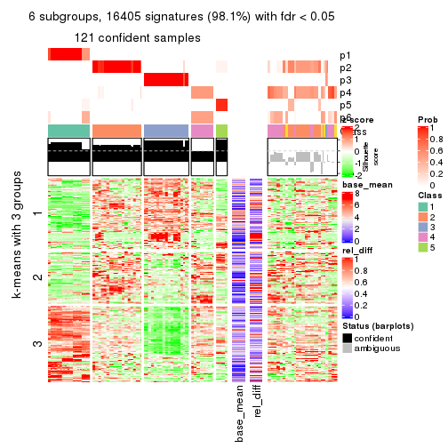
Signature heatmaps where rows are not scaled:
get_signatures(res, k = 2, scale_rows = FALSE)
get_signatures(res, k = 3, scale_rows = FALSE)

get_signatures(res, k = 4, scale_rows = FALSE)
get_signatures(res, k = 5, scale_rows = FALSE)
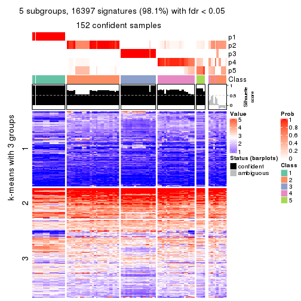
get_signatures(res, k = 6, scale_rows = FALSE)
Compare the overlap of signatures from different k:
compare_signatures(res)
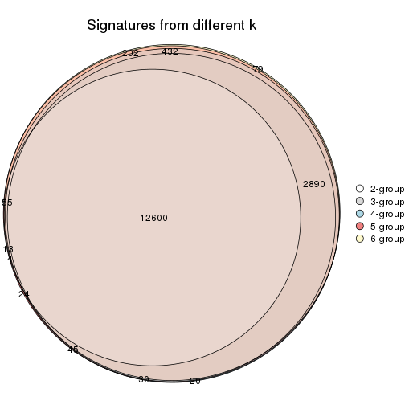
get_signature() returns a data frame invisibly. TO get the list of signatures, the function
call should be assigned to a variable explicitly. In following code, if plot argument is set
to FALSE, no heatmap is plotted while only the differential analysis is performed.
# code only for demonstration
tb = get_signature(res, k = ..., plot = FALSE)
An example of the output of tb is:
#> which_row fdr mean_1 mean_2 scaled_mean_1 scaled_mean_2 km
#> 1 38 0.042760348 8.373488 9.131774 -0.5533452 0.5164555 1
#> 2 40 0.018707592 7.106213 8.469186 -0.6173731 0.5762149 1
#> 3 55 0.019134737 10.221463 11.207825 -0.6159697 0.5749050 1
#> 4 59 0.006059896 5.921854 7.869574 -0.6899429 0.6439467 1
#> 5 60 0.018055526 8.928898 10.211722 -0.6204761 0.5791110 1
#> 6 98 0.009384629 15.714769 14.887706 0.6635654 -0.6193277 2
...
The columns in tb are:
which_row: row indices corresponding to the input matrix.fdr: FDR for the differential test. mean_x: The mean value in group x.scaled_mean_x: The mean value in group x after rows are scaled.km: Row groups if k-means clustering is applied to rows.UMAP plot which shows how samples are separated.
dimension_reduction(res, k = 2, method = "UMAP")
dimension_reduction(res, k = 3, method = "UMAP")
dimension_reduction(res, k = 4, method = "UMAP")
dimension_reduction(res, k = 5, method = "UMAP")
dimension_reduction(res, k = 6, method = "UMAP")
Following heatmap shows how subgroups are split when increasing k:
collect_classes(res)

If matrix rows can be associated to genes, consider to use GO_Enrichment(res,
...) to perform function enrichment for the signature genes.
The object with results only for a single top-value method and a single partition method can be extracted as:
res = res_list["ATC", "mclust"]
# you can also extract it by
# res = res_list["ATC:mclust"]
A summary of res and all the functions that can be applied to it:
res
#> A 'ConsensusPartition' object with k = 2, 3, 4, 5, 6.
#> On a matrix with 16717 rows and 168 columns.
#> Top rows (1000, 2000, 3000, 4000, 5000) are extracted by 'ATC' method.
#> Subgroups are detected by 'mclust' method.
#> Performed in total 1250 partitions by row resampling.
#> Best k for subgroups seems to be 3.
#>
#> Following methods can be applied to this 'ConsensusPartition' object:
#> [1] "cola_report" "collect_classes" "collect_plots"
#> [4] "collect_stats" "colnames" "compare_signatures"
#> [7] "consensus_heatmap" "dimension_reduction" "functional_enrichment"
#> [10] "get_anno_col" "get_anno" "get_classes"
#> [13] "get_consensus" "get_matrix" "get_membership"
#> [16] "get_param" "get_signatures" "get_stats"
#> [19] "is_best_k" "is_stable_k" "membership_heatmap"
#> [22] "ncol" "nrow" "plot_ecdf"
#> [25] "rownames" "select_partition_number" "show"
#> [28] "suggest_best_k" "test_to_known_factors"
collect_plots() function collects all the plots made from res for all k (number of partitions)
into one single page to provide an easy and fast comparison between different k.
collect_plots(res)
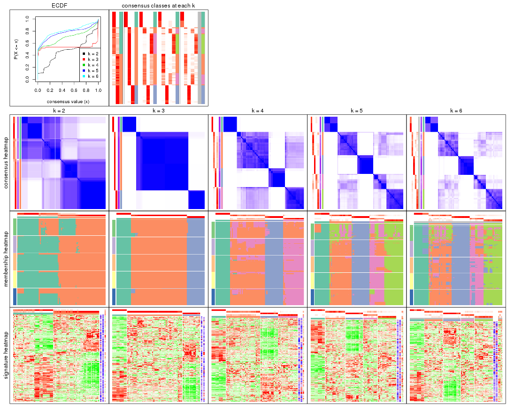
The plots are:
k and the heatmap of
predicted classes for each k.k.k.k.All the plots in panels can be made by individual functions and they are plotted later in this section.
select_partition_number() produces several plots showing different
statistics for choosing “optimized” k. There are following statistics:
k;k, the area increased is defined as \(A_k - A_{k-1}\).The detailed explanations of these statistics can be found in the cola vignette.
Generally speaking, lower PAC score, higher mean silhouette score or higher
concordance corresponds to better partition. Rand index and Jaccard index
measure how similar the current partition is compared to partition with k-1.
If they are too similar, we won't accept k is better than k-1.
select_partition_number(res)
The numeric values for all these statistics can be obtained by get_stats().
get_stats(res)
#> k 1-PAC mean_silhouette concordance area_increased Rand Jaccard
#> 2 2 0.444 0.817 0.884 0.479 0.500 0.500
#> 3 3 0.969 0.985 0.992 0.127 0.565 0.378
#> 4 4 0.694 0.852 0.847 0.293 0.812 0.594
#> 5 5 0.741 0.835 0.862 0.110 0.903 0.661
#> 6 6 0.727 0.770 0.805 0.041 0.990 0.953
suggest_best_k() suggests the best \(k\) based on these statistics. The rules are as follows:
NA.suggest_best_k(res)
#> [1] 3
Following shows the table of the partitions (You need to click the show/hide
code output link to see it). The membership matrix (columns with name p*)
is inferred by
clue::cl_consensus()
function with the SE method. Basically the value in the membership matrix
represents the probability to belong to a certain group. The finall class
label for an item is determined with the group with highest probability it
belongs to.
In get_classes() function, the entropy is calculated from the membership
matrix and the silhouette score is calculated from the consensus matrix.
cbind(get_classes(res, k = 2), get_membership(res, k = 2))
#> class entropy silhouette p1 p2
#> SRR1768889 2 0.0000 0.8888 0.000 1.000
#> SRR1768890 2 0.0000 0.8888 0.000 1.000
#> SRR1768891 2 0.7219 0.8011 0.200 0.800
#> SRR1768892 2 0.7219 0.8011 0.200 0.800
#> SRR1768893 2 0.7219 0.8011 0.200 0.800
#> SRR1768894 2 0.7219 0.8011 0.200 0.800
#> SRR1768895 2 0.0938 0.8814 0.012 0.988
#> SRR1768896 2 0.1184 0.8788 0.016 0.984
#> SRR1768821 2 0.0000 0.8888 0.000 1.000
#> SRR1768822 2 0.0000 0.8888 0.000 1.000
#> SRR1768823 2 0.6048 0.8296 0.148 0.852
#> SRR1768824 2 0.6148 0.8277 0.152 0.848
#> SRR1768825 2 0.4431 0.8062 0.092 0.908
#> SRR1768826 2 0.4431 0.8062 0.092 0.908
#> SRR1768827 2 0.0000 0.8888 0.000 1.000
#> SRR1768828 2 0.0000 0.8888 0.000 1.000
#> SRR1768829 2 0.6801 0.8138 0.180 0.820
#> SRR1768830 2 0.6801 0.8138 0.180 0.820
#> SRR1768831 1 0.7376 0.8278 0.792 0.208
#> SRR1768832 1 0.7815 0.8186 0.768 0.232
#> SRR1768833 1 0.8763 0.7828 0.704 0.296
#> SRR1768834 1 0.8763 0.7828 0.704 0.296
#> SRR1768835 1 0.8955 0.7683 0.688 0.312
#> SRR1768836 1 0.4562 0.8352 0.904 0.096
#> SRR1768837 1 0.4562 0.8352 0.904 0.096
#> SRR1768838 1 0.8763 0.7828 0.704 0.296
#> SRR1768839 1 0.8763 0.7828 0.704 0.296
#> SRR1768840 1 0.8713 0.7860 0.708 0.292
#> SRR1768841 1 0.8713 0.7860 0.708 0.292
#> SRR1768842 1 0.8713 0.7860 0.708 0.292
#> SRR1768843 1 0.8713 0.7860 0.708 0.292
#> SRR1768844 2 0.0000 0.8888 0.000 1.000
#> SRR1768845 2 0.0000 0.8888 0.000 1.000
#> SRR1768846 2 0.0000 0.8888 0.000 1.000
#> SRR1768847 2 0.0000 0.8888 0.000 1.000
#> SRR1768848 2 0.0000 0.8888 0.000 1.000
#> SRR1768849 2 0.0000 0.8888 0.000 1.000
#> SRR1768850 2 0.0000 0.8888 0.000 1.000
#> SRR1768851 2 0.0000 0.8888 0.000 1.000
#> SRR1768852 2 0.7219 0.8011 0.200 0.800
#> SRR1768853 2 0.7139 0.8044 0.196 0.804
#> SRR1768854 2 0.7219 0.8011 0.200 0.800
#> SRR1768855 2 0.0000 0.8888 0.000 1.000
#> SRR1768856 2 0.0000 0.8888 0.000 1.000
#> SRR1768857 2 0.0000 0.8888 0.000 1.000
#> SRR1768858 2 0.0000 0.8888 0.000 1.000
#> SRR1768859 2 0.0000 0.8888 0.000 1.000
#> SRR1768860 2 0.0000 0.8888 0.000 1.000
#> SRR1768861 2 0.9732 -0.0339 0.404 0.596
#> SRR1768862 2 0.9866 -0.1568 0.432 0.568
#> SRR1768863 1 0.8763 0.7828 0.704 0.296
#> SRR1768864 1 0.8763 0.7828 0.704 0.296
#> SRR1768865 1 0.8763 0.7828 0.704 0.296
#> SRR1768866 1 0.8763 0.7828 0.704 0.296
#> SRR1768867 2 0.7056 0.8069 0.192 0.808
#> SRR1768868 2 0.7056 0.8069 0.192 0.808
#> SRR1768869 2 0.4431 0.8463 0.092 0.908
#> SRR1768870 2 0.4161 0.8531 0.084 0.916
#> SRR1768871 1 0.9522 0.6812 0.628 0.372
#> SRR1768872 1 0.9491 0.6879 0.632 0.368
#> SRR1768873 2 0.8608 0.7058 0.284 0.716
#> SRR1768874 2 0.8443 0.7231 0.272 0.728
#> SRR1768875 2 0.0000 0.8888 0.000 1.000
#> SRR1768876 2 0.0000 0.8888 0.000 1.000
#> SRR1768877 2 0.0000 0.8888 0.000 1.000
#> SRR1768878 2 0.0000 0.8888 0.000 1.000
#> SRR1768879 1 0.9850 0.5739 0.572 0.428
#> SRR1768880 1 0.9850 0.5739 0.572 0.428
#> SRR1768881 2 0.9393 0.5769 0.356 0.644
#> SRR1768882 2 0.9635 0.5040 0.388 0.612
#> SRR1768883 2 0.0000 0.8888 0.000 1.000
#> SRR1768884 2 0.0000 0.8888 0.000 1.000
#> SRR1768885 2 0.0000 0.8888 0.000 1.000
#> SRR1768886 2 0.0000 0.8888 0.000 1.000
#> SRR1768887 2 0.0000 0.8888 0.000 1.000
#> SRR1768888 2 0.0000 0.8888 0.000 1.000
#> SRR1768897 2 0.0000 0.8888 0.000 1.000
#> SRR1768898 2 0.0000 0.8888 0.000 1.000
#> SRR1768899 1 0.8763 0.7828 0.704 0.296
#> SRR1768900 1 0.8763 0.7828 0.704 0.296
#> SRR1768901 2 0.0000 0.8888 0.000 1.000
#> SRR1768902 2 0.0000 0.8888 0.000 1.000
#> SRR1768903 2 0.0000 0.8888 0.000 1.000
#> SRR1768904 2 0.0000 0.8888 0.000 1.000
#> SRR1768905 2 0.0000 0.8888 0.000 1.000
#> SRR1768906 2 0.0000 0.8888 0.000 1.000
#> SRR1768907 1 0.7139 0.8303 0.804 0.196
#> SRR1768908 1 0.7528 0.8244 0.784 0.216
#> SRR1768909 1 0.6801 0.8331 0.820 0.180
#> SRR1768910 1 0.7299 0.8281 0.796 0.204
#> SRR1768911 1 0.7376 0.8270 0.792 0.208
#> SRR1768912 1 0.7745 0.8200 0.772 0.228
#> SRR1768913 1 0.8713 0.7860 0.708 0.292
#> SRR1768914 1 0.8713 0.7860 0.708 0.292
#> SRR1768915 1 0.8713 0.7860 0.708 0.292
#> SRR1768916 2 0.0000 0.8888 0.000 1.000
#> SRR1768917 2 0.0000 0.8888 0.000 1.000
#> SRR1768918 1 0.8763 0.7828 0.704 0.296
#> SRR1768919 1 0.8763 0.7828 0.704 0.296
#> SRR1768920 2 0.0000 0.8888 0.000 1.000
#> SRR1768921 2 0.0000 0.8888 0.000 1.000
#> SRR1768922 2 0.0000 0.8888 0.000 1.000
#> SRR1768923 2 0.0000 0.8888 0.000 1.000
#> SRR1768924 1 0.7056 0.8310 0.808 0.192
#> SRR1768925 1 0.6623 0.8341 0.828 0.172
#> SRR1768926 1 0.8267 0.8047 0.740 0.260
#> SRR1768927 1 0.8207 0.8069 0.744 0.256
#> SRR1768928 1 0.4562 0.8352 0.904 0.096
#> SRR1768929 1 0.4562 0.8352 0.904 0.096
#> SRR1768930 2 0.7139 0.8044 0.196 0.804
#> SRR1768931 2 0.7139 0.8044 0.196 0.804
#> SRR1768932 2 0.7139 0.8044 0.196 0.804
#> SRR1768933 2 0.7139 0.8044 0.196 0.804
#> SRR1768934 2 0.7139 0.8044 0.196 0.804
#> SRR1768935 2 0.7139 0.8044 0.196 0.804
#> SRR1768936 2 0.7139 0.8044 0.196 0.804
#> SRR1768937 2 0.7139 0.8044 0.196 0.804
#> SRR1768938 2 0.7139 0.8044 0.196 0.804
#> SRR1768939 2 0.0000 0.8888 0.000 1.000
#> SRR1768940 2 0.0000 0.8888 0.000 1.000
#> SRR1768941 2 0.7219 0.8011 0.200 0.800
#> SRR1768942 2 0.7219 0.8011 0.200 0.800
#> SRR1768943 2 0.7219 0.8011 0.200 0.800
#> SRR1768944 2 0.7219 0.8011 0.200 0.800
#> SRR1768945 2 0.7219 0.8011 0.200 0.800
#> SRR1768946 2 0.7219 0.8011 0.200 0.800
#> SRR1768947 2 0.0000 0.8888 0.000 1.000
#> SRR1768948 2 0.0000 0.8888 0.000 1.000
#> SRR1768949 2 0.0000 0.8888 0.000 1.000
#> SRR1768950 1 0.8713 0.5836 0.708 0.292
#> SRR1768954 1 0.0000 0.8335 1.000 0.000
#> SRR1768955 1 0.0000 0.8335 1.000 0.000
#> SRR1768956 1 0.0000 0.8335 1.000 0.000
#> SRR1768957 1 0.0000 0.8335 1.000 0.000
#> SRR1768958 1 0.0000 0.8335 1.000 0.000
#> SRR1768959 1 0.0000 0.8335 1.000 0.000
#> SRR1768960 1 0.0000 0.8335 1.000 0.000
#> SRR1768961 1 0.0000 0.8335 1.000 0.000
#> SRR1768952 2 0.2043 0.8665 0.032 0.968
#> SRR1768953 2 0.2603 0.8568 0.044 0.956
#> SRR1768962 1 0.0000 0.8335 1.000 0.000
#> SRR1768963 1 0.0000 0.8335 1.000 0.000
#> SRR1768964 1 0.0000 0.8335 1.000 0.000
#> SRR1768965 1 0.0000 0.8335 1.000 0.000
#> SRR1768966 1 0.0000 0.8335 1.000 0.000
#> SRR1768967 1 0.0000 0.8335 1.000 0.000
#> SRR1768968 1 0.0000 0.8335 1.000 0.000
#> SRR1768969 1 0.0000 0.8335 1.000 0.000
#> SRR1768970 1 0.4562 0.8352 0.904 0.096
#> SRR1768971 1 0.4562 0.8352 0.904 0.096
#> SRR1768972 1 0.0000 0.8335 1.000 0.000
#> SRR1768973 1 0.0000 0.8335 1.000 0.000
#> SRR1768974 1 0.0000 0.8335 1.000 0.000
#> SRR1768975 1 0.0000 0.8335 1.000 0.000
#> SRR1768976 1 0.0000 0.8335 1.000 0.000
#> SRR1768977 1 0.0000 0.8335 1.000 0.000
#> SRR1768978 1 0.0000 0.8335 1.000 0.000
#> SRR1768979 1 0.0000 0.8335 1.000 0.000
#> SRR1768980 1 0.0000 0.8335 1.000 0.000
#> SRR1768981 1 0.0000 0.8335 1.000 0.000
#> SRR1768982 1 0.0000 0.8335 1.000 0.000
#> SRR1768983 1 0.0000 0.8335 1.000 0.000
#> SRR1768984 1 0.4562 0.8352 0.904 0.096
#> SRR1768985 1 0.4562 0.8352 0.904 0.096
#> SRR1768986 1 0.4562 0.8352 0.904 0.096
#> SRR1768987 1 0.4562 0.8352 0.904 0.096
#> SRR1768988 1 0.4562 0.8352 0.904 0.096
#> SRR1768989 1 0.4562 0.8352 0.904 0.096
cbind(get_classes(res, k = 3), get_membership(res, k = 3))
#> class entropy silhouette p1 p2 p3
#> SRR1768889 3 0.0000 0.989 0.000 0.000 1.000
#> SRR1768890 3 0.0000 0.989 0.000 0.000 1.000
#> SRR1768891 2 0.0237 0.990 0.000 0.996 0.004
#> SRR1768892 2 0.0237 0.990 0.000 0.996 0.004
#> SRR1768893 2 0.0237 0.990 0.000 0.996 0.004
#> SRR1768894 2 0.0237 0.990 0.000 0.996 0.004
#> SRR1768895 2 0.0237 0.990 0.000 0.996 0.004
#> SRR1768896 2 0.0237 0.990 0.000 0.996 0.004
#> SRR1768821 2 0.0237 0.990 0.000 0.996 0.004
#> SRR1768822 2 0.0237 0.990 0.000 0.996 0.004
#> SRR1768823 2 0.0237 0.990 0.000 0.996 0.004
#> SRR1768824 2 0.0237 0.990 0.000 0.996 0.004
#> SRR1768825 2 0.0237 0.990 0.000 0.996 0.004
#> SRR1768826 2 0.0237 0.990 0.000 0.996 0.004
#> SRR1768827 2 0.0237 0.990 0.000 0.996 0.004
#> SRR1768828 2 0.0237 0.990 0.000 0.996 0.004
#> SRR1768829 2 0.0237 0.990 0.000 0.996 0.004
#> SRR1768830 2 0.0237 0.990 0.000 0.996 0.004
#> SRR1768831 2 0.0000 0.990 0.000 1.000 0.000
#> SRR1768832 2 0.0000 0.990 0.000 1.000 0.000
#> SRR1768833 2 0.0000 0.990 0.000 1.000 0.000
#> SRR1768834 2 0.0000 0.990 0.000 1.000 0.000
#> SRR1768835 2 0.0000 0.990 0.000 1.000 0.000
#> SRR1768836 2 0.0000 0.990 0.000 1.000 0.000
#> SRR1768837 2 0.0000 0.990 0.000 1.000 0.000
#> SRR1768838 2 0.0000 0.990 0.000 1.000 0.000
#> SRR1768839 2 0.0000 0.990 0.000 1.000 0.000
#> SRR1768840 2 0.0000 0.990 0.000 1.000 0.000
#> SRR1768841 2 0.0000 0.990 0.000 1.000 0.000
#> SRR1768842 2 0.0000 0.990 0.000 1.000 0.000
#> SRR1768843 2 0.0000 0.990 0.000 1.000 0.000
#> SRR1768844 3 0.0000 0.989 0.000 0.000 1.000
#> SRR1768845 3 0.0000 0.989 0.000 0.000 1.000
#> SRR1768846 3 0.0000 0.989 0.000 0.000 1.000
#> SRR1768847 3 0.0000 0.989 0.000 0.000 1.000
#> SRR1768848 3 0.0000 0.989 0.000 0.000 1.000
#> SRR1768849 3 0.0000 0.989 0.000 0.000 1.000
#> SRR1768850 3 0.0000 0.989 0.000 0.000 1.000
#> SRR1768851 3 0.0000 0.989 0.000 0.000 1.000
#> SRR1768852 2 0.0237 0.990 0.000 0.996 0.004
#> SRR1768853 2 0.0237 0.990 0.000 0.996 0.004
#> SRR1768854 2 0.0237 0.990 0.000 0.996 0.004
#> SRR1768855 3 0.0000 0.989 0.000 0.000 1.000
#> SRR1768856 3 0.0000 0.989 0.000 0.000 1.000
#> SRR1768857 3 0.0000 0.989 0.000 0.000 1.000
#> SRR1768858 3 0.0000 0.989 0.000 0.000 1.000
#> SRR1768859 3 0.0000 0.989 0.000 0.000 1.000
#> SRR1768860 3 0.0000 0.989 0.000 0.000 1.000
#> SRR1768861 2 0.0237 0.990 0.000 0.996 0.004
#> SRR1768862 2 0.0237 0.990 0.000 0.996 0.004
#> SRR1768863 2 0.0000 0.990 0.000 1.000 0.000
#> SRR1768864 2 0.0000 0.990 0.000 1.000 0.000
#> SRR1768865 2 0.0000 0.990 0.000 1.000 0.000
#> SRR1768866 2 0.0000 0.990 0.000 1.000 0.000
#> SRR1768867 2 0.0237 0.990 0.000 0.996 0.004
#> SRR1768868 2 0.0237 0.990 0.000 0.996 0.004
#> SRR1768869 2 0.0000 0.990 0.000 1.000 0.000
#> SRR1768870 2 0.0000 0.990 0.000 1.000 0.000
#> SRR1768871 2 0.0000 0.990 0.000 1.000 0.000
#> SRR1768872 2 0.0000 0.990 0.000 1.000 0.000
#> SRR1768873 2 0.0000 0.990 0.000 1.000 0.000
#> SRR1768874 2 0.0000 0.990 0.000 1.000 0.000
#> SRR1768875 3 0.0000 0.989 0.000 0.000 1.000
#> SRR1768876 3 0.0000 0.989 0.000 0.000 1.000
#> SRR1768877 3 0.0000 0.989 0.000 0.000 1.000
#> SRR1768878 3 0.0000 0.989 0.000 0.000 1.000
#> SRR1768879 2 0.0237 0.990 0.000 0.996 0.004
#> SRR1768880 2 0.0237 0.990 0.000 0.996 0.004
#> SRR1768881 2 0.0000 0.990 0.000 1.000 0.000
#> SRR1768882 2 0.0000 0.990 0.000 1.000 0.000
#> SRR1768883 3 0.0000 0.989 0.000 0.000 1.000
#> SRR1768884 3 0.0000 0.989 0.000 0.000 1.000
#> SRR1768885 3 0.0000 0.989 0.000 0.000 1.000
#> SRR1768886 3 0.0000 0.989 0.000 0.000 1.000
#> SRR1768887 3 0.0000 0.989 0.000 0.000 1.000
#> SRR1768888 3 0.0000 0.989 0.000 0.000 1.000
#> SRR1768897 2 0.0237 0.990 0.000 0.996 0.004
#> SRR1768898 2 0.0237 0.990 0.000 0.996 0.004
#> SRR1768899 2 0.0000 0.990 0.000 1.000 0.000
#> SRR1768900 2 0.0000 0.990 0.000 1.000 0.000
#> SRR1768901 3 0.0000 0.989 0.000 0.000 1.000
#> SRR1768902 3 0.0000 0.989 0.000 0.000 1.000
#> SRR1768903 3 0.0000 0.989 0.000 0.000 1.000
#> SRR1768904 2 0.0237 0.990 0.000 0.996 0.004
#> SRR1768905 2 0.0237 0.990 0.000 0.996 0.004
#> SRR1768906 2 0.0592 0.985 0.000 0.988 0.012
#> SRR1768907 2 0.0000 0.990 0.000 1.000 0.000
#> SRR1768908 2 0.0000 0.990 0.000 1.000 0.000
#> SRR1768909 2 0.0000 0.990 0.000 1.000 0.000
#> SRR1768910 2 0.0000 0.990 0.000 1.000 0.000
#> SRR1768911 2 0.0000 0.990 0.000 1.000 0.000
#> SRR1768912 2 0.0000 0.990 0.000 1.000 0.000
#> SRR1768913 2 0.0000 0.990 0.000 1.000 0.000
#> SRR1768914 2 0.0000 0.990 0.000 1.000 0.000
#> SRR1768915 2 0.0000 0.990 0.000 1.000 0.000
#> SRR1768916 2 0.1289 0.968 0.000 0.968 0.032
#> SRR1768917 2 0.1163 0.972 0.000 0.972 0.028
#> SRR1768918 2 0.0000 0.990 0.000 1.000 0.000
#> SRR1768919 2 0.0000 0.990 0.000 1.000 0.000
#> SRR1768920 2 0.0237 0.990 0.000 0.996 0.004
#> SRR1768921 2 0.0237 0.990 0.000 0.996 0.004
#> SRR1768922 3 0.3412 0.810 0.000 0.124 0.876
#> SRR1768923 3 0.3412 0.810 0.000 0.124 0.876
#> SRR1768924 2 0.0000 0.990 0.000 1.000 0.000
#> SRR1768925 2 0.0000 0.990 0.000 1.000 0.000
#> SRR1768926 2 0.0000 0.990 0.000 1.000 0.000
#> SRR1768927 2 0.0000 0.990 0.000 1.000 0.000
#> SRR1768928 2 0.0000 0.990 0.000 1.000 0.000
#> SRR1768929 2 0.0000 0.990 0.000 1.000 0.000
#> SRR1768930 2 0.0237 0.990 0.000 0.996 0.004
#> SRR1768931 2 0.0237 0.990 0.000 0.996 0.004
#> SRR1768932 2 0.0237 0.990 0.000 0.996 0.004
#> SRR1768933 2 0.0237 0.990 0.000 0.996 0.004
#> SRR1768934 2 0.0237 0.990 0.000 0.996 0.004
#> SRR1768935 2 0.0237 0.990 0.000 0.996 0.004
#> SRR1768936 2 0.0237 0.990 0.000 0.996 0.004
#> SRR1768937 2 0.0237 0.990 0.000 0.996 0.004
#> SRR1768938 2 0.0237 0.990 0.000 0.996 0.004
#> SRR1768939 2 0.1529 0.962 0.000 0.960 0.040
#> SRR1768940 2 0.1529 0.962 0.000 0.960 0.040
#> SRR1768941 2 0.0237 0.990 0.000 0.996 0.004
#> SRR1768942 2 0.0237 0.990 0.000 0.996 0.004
#> SRR1768943 2 0.0237 0.990 0.000 0.996 0.004
#> SRR1768944 2 0.0237 0.990 0.000 0.996 0.004
#> SRR1768945 2 0.0237 0.990 0.000 0.996 0.004
#> SRR1768946 2 0.0237 0.990 0.000 0.996 0.004
#> SRR1768947 3 0.0000 0.989 0.000 0.000 1.000
#> SRR1768948 3 0.0000 0.989 0.000 0.000 1.000
#> SRR1768949 3 0.0000 0.989 0.000 0.000 1.000
#> SRR1768950 2 0.0000 0.990 0.000 1.000 0.000
#> SRR1768954 1 0.0000 1.000 1.000 0.000 0.000
#> SRR1768955 1 0.0000 1.000 1.000 0.000 0.000
#> SRR1768956 1 0.0000 1.000 1.000 0.000 0.000
#> SRR1768957 1 0.0000 1.000 1.000 0.000 0.000
#> SRR1768958 1 0.0000 1.000 1.000 0.000 0.000
#> SRR1768959 1 0.0000 1.000 1.000 0.000 0.000
#> SRR1768960 1 0.0000 1.000 1.000 0.000 0.000
#> SRR1768961 1 0.0000 1.000 1.000 0.000 0.000
#> SRR1768952 2 0.0237 0.990 0.000 0.996 0.004
#> SRR1768953 2 0.0237 0.990 0.000 0.996 0.004
#> SRR1768962 1 0.0000 1.000 1.000 0.000 0.000
#> SRR1768963 1 0.0000 1.000 1.000 0.000 0.000
#> SRR1768964 1 0.0000 1.000 1.000 0.000 0.000
#> SRR1768965 1 0.0000 1.000 1.000 0.000 0.000
#> SRR1768966 1 0.0000 1.000 1.000 0.000 0.000
#> SRR1768967 1 0.0000 1.000 1.000 0.000 0.000
#> SRR1768968 1 0.0000 1.000 1.000 0.000 0.000
#> SRR1768969 1 0.0000 1.000 1.000 0.000 0.000
#> SRR1768970 2 0.3481 0.909 0.044 0.904 0.052
#> SRR1768971 2 0.3481 0.909 0.044 0.904 0.052
#> SRR1768972 1 0.0000 1.000 1.000 0.000 0.000
#> SRR1768973 1 0.0000 1.000 1.000 0.000 0.000
#> SRR1768974 1 0.0000 1.000 1.000 0.000 0.000
#> SRR1768975 1 0.0000 1.000 1.000 0.000 0.000
#> SRR1768976 1 0.0000 1.000 1.000 0.000 0.000
#> SRR1768977 1 0.0000 1.000 1.000 0.000 0.000
#> SRR1768978 1 0.0000 1.000 1.000 0.000 0.000
#> SRR1768979 1 0.0000 1.000 1.000 0.000 0.000
#> SRR1768980 1 0.0000 1.000 1.000 0.000 0.000
#> SRR1768981 1 0.0000 1.000 1.000 0.000 0.000
#> SRR1768982 1 0.0000 1.000 1.000 0.000 0.000
#> SRR1768983 1 0.0000 1.000 1.000 0.000 0.000
#> SRR1768984 2 0.3481 0.909 0.044 0.904 0.052
#> SRR1768985 2 0.3481 0.909 0.044 0.904 0.052
#> SRR1768986 2 0.3481 0.909 0.044 0.904 0.052
#> SRR1768987 2 0.3481 0.909 0.044 0.904 0.052
#> SRR1768988 2 0.3481 0.909 0.044 0.904 0.052
#> SRR1768989 2 0.3481 0.909 0.044 0.904 0.052
cbind(get_classes(res, k = 4), get_membership(res, k = 4))
#> class entropy silhouette p1 p2 p3 p4
#> SRR1768889 3 0.0000 0.974 0.000 0.000 1.000 0.000
#> SRR1768890 3 0.0000 0.974 0.000 0.000 1.000 0.000
#> SRR1768891 2 0.4331 0.818 0.000 0.712 0.000 0.288
#> SRR1768892 2 0.4331 0.818 0.000 0.712 0.000 0.288
#> SRR1768893 2 0.4643 0.794 0.000 0.656 0.000 0.344
#> SRR1768894 2 0.4643 0.794 0.000 0.656 0.000 0.344
#> SRR1768895 2 0.4888 0.770 0.000 0.588 0.000 0.412
#> SRR1768896 2 0.4888 0.770 0.000 0.588 0.000 0.412
#> SRR1768821 2 0.4564 0.805 0.000 0.672 0.000 0.328
#> SRR1768822 2 0.4564 0.805 0.000 0.672 0.000 0.328
#> SRR1768823 2 0.3942 0.792 0.000 0.764 0.000 0.236
#> SRR1768824 2 0.3942 0.792 0.000 0.764 0.000 0.236
#> SRR1768825 2 0.4907 0.725 0.000 0.580 0.000 0.420
#> SRR1768826 2 0.4916 0.718 0.000 0.576 0.000 0.424
#> SRR1768827 2 0.4817 0.759 0.000 0.612 0.000 0.388
#> SRR1768828 2 0.4804 0.762 0.000 0.616 0.000 0.384
#> SRR1768829 2 0.4605 0.816 0.000 0.664 0.000 0.336
#> SRR1768830 2 0.4624 0.814 0.000 0.660 0.000 0.340
#> SRR1768831 4 0.1211 0.901 0.000 0.040 0.000 0.960
#> SRR1768832 4 0.1211 0.901 0.000 0.040 0.000 0.960
#> SRR1768833 4 0.0592 0.909 0.000 0.016 0.000 0.984
#> SRR1768834 4 0.0592 0.909 0.000 0.016 0.000 0.984
#> SRR1768835 4 0.0707 0.908 0.000 0.020 0.000 0.980
#> SRR1768836 4 0.1118 0.901 0.000 0.036 0.000 0.964
#> SRR1768837 4 0.1118 0.901 0.000 0.036 0.000 0.964
#> SRR1768838 4 0.0707 0.907 0.000 0.020 0.000 0.980
#> SRR1768839 4 0.0817 0.904 0.000 0.024 0.000 0.976
#> SRR1768840 4 0.0000 0.912 0.000 0.000 0.000 1.000
#> SRR1768841 4 0.0000 0.912 0.000 0.000 0.000 1.000
#> SRR1768842 4 0.0921 0.909 0.000 0.028 0.000 0.972
#> SRR1768843 4 0.0921 0.909 0.000 0.028 0.000 0.972
#> SRR1768844 3 0.0000 0.974 0.000 0.000 1.000 0.000
#> SRR1768845 3 0.0000 0.974 0.000 0.000 1.000 0.000
#> SRR1768846 3 0.1474 0.950 0.000 0.052 0.948 0.000
#> SRR1768847 3 0.1474 0.950 0.000 0.052 0.948 0.000
#> SRR1768848 3 0.0000 0.974 0.000 0.000 1.000 0.000
#> SRR1768849 3 0.0000 0.974 0.000 0.000 1.000 0.000
#> SRR1768850 3 0.0000 0.974 0.000 0.000 1.000 0.000
#> SRR1768851 3 0.0000 0.974 0.000 0.000 1.000 0.000
#> SRR1768852 2 0.4477 0.819 0.000 0.688 0.000 0.312
#> SRR1768853 2 0.4477 0.819 0.000 0.688 0.000 0.312
#> SRR1768854 2 0.4543 0.805 0.000 0.676 0.000 0.324
#> SRR1768855 3 0.0000 0.974 0.000 0.000 1.000 0.000
#> SRR1768856 3 0.0000 0.974 0.000 0.000 1.000 0.000
#> SRR1768857 3 0.0000 0.974 0.000 0.000 1.000 0.000
#> SRR1768858 3 0.0000 0.974 0.000 0.000 1.000 0.000
#> SRR1768859 3 0.0000 0.974 0.000 0.000 1.000 0.000
#> SRR1768860 3 0.0000 0.974 0.000 0.000 1.000 0.000
#> SRR1768861 4 0.4955 -0.386 0.000 0.444 0.000 0.556
#> SRR1768862 4 0.4941 -0.356 0.000 0.436 0.000 0.564
#> SRR1768863 4 0.1022 0.911 0.000 0.032 0.000 0.968
#> SRR1768864 4 0.1022 0.911 0.000 0.032 0.000 0.968
#> SRR1768865 4 0.0336 0.911 0.000 0.008 0.000 0.992
#> SRR1768866 4 0.0336 0.911 0.000 0.008 0.000 0.992
#> SRR1768867 2 0.4454 0.819 0.000 0.692 0.000 0.308
#> SRR1768868 2 0.4454 0.819 0.000 0.692 0.000 0.308
#> SRR1768869 2 0.4697 0.765 0.000 0.644 0.000 0.356
#> SRR1768870 2 0.4730 0.768 0.000 0.636 0.000 0.364
#> SRR1768871 2 0.4941 0.745 0.000 0.564 0.000 0.436
#> SRR1768872 2 0.4941 0.745 0.000 0.564 0.000 0.436
#> SRR1768873 2 0.3726 0.711 0.000 0.788 0.000 0.212
#> SRR1768874 2 0.3726 0.711 0.000 0.788 0.000 0.212
#> SRR1768875 3 0.0000 0.974 0.000 0.000 1.000 0.000
#> SRR1768876 3 0.0000 0.974 0.000 0.000 1.000 0.000
#> SRR1768877 3 0.0000 0.974 0.000 0.000 1.000 0.000
#> SRR1768878 3 0.0000 0.974 0.000 0.000 1.000 0.000
#> SRR1768879 4 0.3569 0.584 0.000 0.196 0.000 0.804
#> SRR1768880 4 0.3569 0.584 0.000 0.196 0.000 0.804
#> SRR1768881 2 0.4697 0.788 0.000 0.644 0.000 0.356
#> SRR1768882 2 0.4679 0.788 0.000 0.648 0.000 0.352
#> SRR1768883 3 0.1474 0.950 0.000 0.052 0.948 0.000
#> SRR1768884 3 0.1474 0.950 0.000 0.052 0.948 0.000
#> SRR1768885 3 0.0000 0.974 0.000 0.000 1.000 0.000
#> SRR1768886 3 0.0000 0.974 0.000 0.000 1.000 0.000
#> SRR1768887 3 0.0000 0.974 0.000 0.000 1.000 0.000
#> SRR1768888 3 0.0000 0.974 0.000 0.000 1.000 0.000
#> SRR1768897 2 0.4877 0.742 0.000 0.592 0.000 0.408
#> SRR1768898 2 0.4877 0.742 0.000 0.592 0.000 0.408
#> SRR1768899 4 0.2081 0.825 0.000 0.084 0.000 0.916
#> SRR1768900 4 0.2011 0.832 0.000 0.080 0.000 0.920
#> SRR1768901 3 0.3984 0.866 0.000 0.132 0.828 0.040
#> SRR1768902 3 0.3984 0.866 0.000 0.132 0.828 0.040
#> SRR1768903 3 0.3984 0.866 0.000 0.132 0.828 0.040
#> SRR1768904 2 0.4866 0.747 0.000 0.596 0.000 0.404
#> SRR1768905 2 0.4866 0.747 0.000 0.596 0.000 0.404
#> SRR1768906 2 0.4866 0.747 0.000 0.596 0.000 0.404
#> SRR1768907 4 0.1389 0.904 0.000 0.048 0.000 0.952
#> SRR1768908 4 0.1302 0.906 0.000 0.044 0.000 0.956
#> SRR1768909 4 0.1474 0.900 0.000 0.052 0.000 0.948
#> SRR1768910 4 0.1022 0.911 0.000 0.032 0.000 0.968
#> SRR1768911 4 0.1022 0.911 0.000 0.032 0.000 0.968
#> SRR1768912 4 0.1118 0.909 0.000 0.036 0.000 0.964
#> SRR1768913 4 0.0921 0.909 0.000 0.028 0.000 0.972
#> SRR1768914 4 0.0921 0.909 0.000 0.028 0.000 0.972
#> SRR1768915 4 0.0921 0.909 0.000 0.028 0.000 0.972
#> SRR1768916 2 0.5040 0.751 0.000 0.628 0.008 0.364
#> SRR1768917 2 0.4382 0.749 0.000 0.704 0.000 0.296
#> SRR1768918 4 0.1022 0.909 0.000 0.032 0.000 0.968
#> SRR1768919 4 0.1022 0.909 0.000 0.032 0.000 0.968
#> SRR1768920 2 0.4746 0.767 0.000 0.632 0.000 0.368
#> SRR1768921 2 0.4790 0.764 0.000 0.620 0.000 0.380
#> SRR1768922 3 0.3587 0.890 0.000 0.104 0.856 0.040
#> SRR1768923 3 0.3587 0.890 0.000 0.104 0.856 0.040
#> SRR1768924 4 0.0469 0.910 0.000 0.012 0.000 0.988
#> SRR1768925 4 0.0469 0.910 0.000 0.012 0.000 0.988
#> SRR1768926 4 0.0188 0.912 0.000 0.004 0.000 0.996
#> SRR1768927 4 0.0188 0.912 0.000 0.004 0.000 0.996
#> SRR1768928 4 0.1389 0.874 0.000 0.048 0.000 0.952
#> SRR1768929 4 0.1389 0.874 0.000 0.048 0.000 0.952
#> SRR1768930 2 0.3975 0.793 0.000 0.760 0.000 0.240
#> SRR1768931 2 0.3975 0.793 0.000 0.760 0.000 0.240
#> SRR1768932 2 0.4454 0.819 0.000 0.692 0.000 0.308
#> SRR1768933 2 0.4454 0.819 0.000 0.692 0.000 0.308
#> SRR1768934 2 0.4454 0.819 0.000 0.692 0.000 0.308
#> SRR1768935 2 0.4406 0.820 0.000 0.700 0.000 0.300
#> SRR1768936 2 0.4072 0.800 0.000 0.748 0.000 0.252
#> SRR1768937 2 0.4072 0.800 0.000 0.748 0.000 0.252
#> SRR1768938 2 0.4454 0.819 0.000 0.692 0.000 0.308
#> SRR1768939 2 0.3668 0.659 0.000 0.808 0.004 0.188
#> SRR1768940 2 0.3668 0.659 0.000 0.808 0.004 0.188
#> SRR1768941 2 0.4222 0.819 0.000 0.728 0.000 0.272
#> SRR1768942 2 0.4222 0.819 0.000 0.728 0.000 0.272
#> SRR1768943 2 0.4250 0.819 0.000 0.724 0.000 0.276
#> SRR1768944 2 0.4250 0.819 0.000 0.724 0.000 0.276
#> SRR1768945 2 0.4072 0.814 0.000 0.748 0.000 0.252
#> SRR1768946 2 0.4040 0.813 0.000 0.752 0.000 0.248
#> SRR1768947 3 0.0000 0.974 0.000 0.000 1.000 0.000
#> SRR1768948 3 0.0000 0.974 0.000 0.000 1.000 0.000
#> SRR1768949 3 0.0000 0.974 0.000 0.000 1.000 0.000
#> SRR1768950 2 0.4776 0.787 0.000 0.624 0.000 0.376
#> SRR1768954 1 0.0000 1.000 1.000 0.000 0.000 0.000
#> SRR1768955 1 0.0000 1.000 1.000 0.000 0.000 0.000
#> SRR1768956 1 0.0000 1.000 1.000 0.000 0.000 0.000
#> SRR1768957 1 0.0000 1.000 1.000 0.000 0.000 0.000
#> SRR1768958 1 0.0000 1.000 1.000 0.000 0.000 0.000
#> SRR1768959 1 0.0000 1.000 1.000 0.000 0.000 0.000
#> SRR1768960 1 0.0000 1.000 1.000 0.000 0.000 0.000
#> SRR1768961 1 0.0000 1.000 1.000 0.000 0.000 0.000
#> SRR1768952 2 0.4977 0.653 0.000 0.540 0.000 0.460
#> SRR1768953 2 0.4977 0.653 0.000 0.540 0.000 0.460
#> SRR1768962 1 0.0000 1.000 1.000 0.000 0.000 0.000
#> SRR1768963 1 0.0000 1.000 1.000 0.000 0.000 0.000
#> SRR1768964 1 0.0000 1.000 1.000 0.000 0.000 0.000
#> SRR1768965 1 0.0000 1.000 1.000 0.000 0.000 0.000
#> SRR1768966 1 0.0000 1.000 1.000 0.000 0.000 0.000
#> SRR1768967 1 0.0000 1.000 1.000 0.000 0.000 0.000
#> SRR1768968 1 0.0000 1.000 1.000 0.000 0.000 0.000
#> SRR1768969 1 0.0000 1.000 1.000 0.000 0.000 0.000
#> SRR1768970 2 0.2774 0.582 0.024 0.908 0.008 0.060
#> SRR1768971 2 0.2774 0.582 0.024 0.908 0.008 0.060
#> SRR1768972 1 0.0000 1.000 1.000 0.000 0.000 0.000
#> SRR1768973 1 0.0000 1.000 1.000 0.000 0.000 0.000
#> SRR1768974 1 0.0000 1.000 1.000 0.000 0.000 0.000
#> SRR1768975 1 0.0000 1.000 1.000 0.000 0.000 0.000
#> SRR1768976 1 0.0000 1.000 1.000 0.000 0.000 0.000
#> SRR1768977 1 0.0000 1.000 1.000 0.000 0.000 0.000
#> SRR1768978 1 0.0000 1.000 1.000 0.000 0.000 0.000
#> SRR1768979 1 0.0000 1.000 1.000 0.000 0.000 0.000
#> SRR1768980 1 0.0000 1.000 1.000 0.000 0.000 0.000
#> SRR1768981 1 0.0000 1.000 1.000 0.000 0.000 0.000
#> SRR1768982 1 0.0000 1.000 1.000 0.000 0.000 0.000
#> SRR1768983 1 0.0000 1.000 1.000 0.000 0.000 0.000
#> SRR1768984 2 0.2774 0.582 0.024 0.908 0.008 0.060
#> SRR1768985 2 0.2774 0.582 0.024 0.908 0.008 0.060
#> SRR1768986 2 0.2774 0.582 0.024 0.908 0.008 0.060
#> SRR1768987 2 0.2774 0.582 0.024 0.908 0.008 0.060
#> SRR1768988 2 0.2774 0.582 0.024 0.908 0.008 0.060
#> SRR1768989 2 0.2774 0.582 0.024 0.908 0.008 0.060
cbind(get_classes(res, k = 5), get_membership(res, k = 5))
#> class entropy silhouette p1 p2 p3 p4 p5
#> SRR1768889 3 0.0000 0.980 0.000 0.000 1.000 0.000 0.000
#> SRR1768890 3 0.0000 0.980 0.000 0.000 1.000 0.000 0.000
#> SRR1768891 2 0.0404 0.751 0.000 0.988 0.000 0.012 0.000
#> SRR1768892 2 0.0404 0.751 0.000 0.988 0.000 0.012 0.000
#> SRR1768893 2 0.0671 0.762 0.000 0.980 0.000 0.004 0.016
#> SRR1768894 2 0.0671 0.762 0.000 0.980 0.000 0.004 0.016
#> SRR1768895 2 0.3081 0.799 0.000 0.832 0.000 0.012 0.156
#> SRR1768896 2 0.3081 0.799 0.000 0.832 0.000 0.012 0.156
#> SRR1768821 2 0.3400 0.798 0.000 0.828 0.000 0.036 0.136
#> SRR1768822 2 0.3400 0.798 0.000 0.828 0.000 0.036 0.136
#> SRR1768823 2 0.3427 0.785 0.000 0.836 0.000 0.056 0.108
#> SRR1768824 2 0.3427 0.785 0.000 0.836 0.000 0.056 0.108
#> SRR1768825 2 0.2648 0.799 0.000 0.848 0.000 0.000 0.152
#> SRR1768826 2 0.2648 0.799 0.000 0.848 0.000 0.000 0.152
#> SRR1768827 4 0.6275 0.549 0.000 0.308 0.000 0.516 0.176
#> SRR1768828 4 0.6275 0.549 0.000 0.308 0.000 0.516 0.176
#> SRR1768829 2 0.2074 0.807 0.000 0.896 0.000 0.000 0.104
#> SRR1768830 2 0.2074 0.807 0.000 0.896 0.000 0.000 0.104
#> SRR1768831 5 0.1628 0.920 0.000 0.056 0.000 0.008 0.936
#> SRR1768832 5 0.1628 0.920 0.000 0.056 0.000 0.008 0.936
#> SRR1768833 5 0.1484 0.923 0.000 0.048 0.000 0.008 0.944
#> SRR1768834 5 0.1484 0.923 0.000 0.048 0.000 0.008 0.944
#> SRR1768835 5 0.1571 0.917 0.000 0.060 0.000 0.004 0.936
#> SRR1768836 5 0.0898 0.917 0.000 0.020 0.000 0.008 0.972
#> SRR1768837 5 0.0898 0.917 0.000 0.020 0.000 0.008 0.972
#> SRR1768838 5 0.1251 0.923 0.000 0.036 0.000 0.008 0.956
#> SRR1768839 5 0.1251 0.923 0.000 0.036 0.000 0.008 0.956
#> SRR1768840 5 0.1043 0.927 0.000 0.040 0.000 0.000 0.960
#> SRR1768841 5 0.1043 0.927 0.000 0.040 0.000 0.000 0.960
#> SRR1768842 5 0.1043 0.926 0.000 0.040 0.000 0.000 0.960
#> SRR1768843 5 0.1043 0.926 0.000 0.040 0.000 0.000 0.960
#> SRR1768844 3 0.0000 0.980 0.000 0.000 1.000 0.000 0.000
#> SRR1768845 3 0.0000 0.980 0.000 0.000 1.000 0.000 0.000
#> SRR1768846 3 0.0290 0.976 0.000 0.000 0.992 0.008 0.000
#> SRR1768847 3 0.0290 0.976 0.000 0.000 0.992 0.008 0.000
#> SRR1768848 3 0.0000 0.980 0.000 0.000 1.000 0.000 0.000
#> SRR1768849 3 0.0000 0.980 0.000 0.000 1.000 0.000 0.000
#> SRR1768850 3 0.0000 0.980 0.000 0.000 1.000 0.000 0.000
#> SRR1768851 3 0.0000 0.980 0.000 0.000 1.000 0.000 0.000
#> SRR1768852 2 0.0290 0.755 0.000 0.992 0.000 0.008 0.000
#> SRR1768853 2 0.0162 0.755 0.000 0.996 0.000 0.004 0.000
#> SRR1768854 2 0.0566 0.760 0.000 0.984 0.000 0.004 0.012
#> SRR1768855 3 0.0000 0.980 0.000 0.000 1.000 0.000 0.000
#> SRR1768856 3 0.0000 0.980 0.000 0.000 1.000 0.000 0.000
#> SRR1768857 3 0.0000 0.980 0.000 0.000 1.000 0.000 0.000
#> SRR1768858 3 0.0000 0.980 0.000 0.000 1.000 0.000 0.000
#> SRR1768859 3 0.0000 0.980 0.000 0.000 1.000 0.000 0.000
#> SRR1768860 3 0.0000 0.980 0.000 0.000 1.000 0.000 0.000
#> SRR1768861 2 0.3109 0.783 0.000 0.800 0.000 0.000 0.200
#> SRR1768862 2 0.3143 0.780 0.000 0.796 0.000 0.000 0.204
#> SRR1768863 5 0.3209 0.816 0.000 0.180 0.000 0.008 0.812
#> SRR1768864 5 0.3209 0.816 0.000 0.180 0.000 0.008 0.812
#> SRR1768865 5 0.1544 0.915 0.000 0.068 0.000 0.000 0.932
#> SRR1768866 5 0.1544 0.915 0.000 0.068 0.000 0.000 0.932
#> SRR1768867 4 0.4443 0.666 0.000 0.472 0.000 0.524 0.004
#> SRR1768868 4 0.4443 0.666 0.000 0.472 0.000 0.524 0.004
#> SRR1768869 2 0.4035 0.787 0.000 0.784 0.000 0.060 0.156
#> SRR1768870 2 0.3970 0.789 0.000 0.788 0.000 0.056 0.156
#> SRR1768871 2 0.4650 0.274 0.000 0.520 0.000 0.012 0.468
#> SRR1768872 2 0.4648 0.288 0.000 0.524 0.000 0.012 0.464
#> SRR1768873 4 0.6148 0.534 0.000 0.268 0.000 0.552 0.180
#> SRR1768874 4 0.6148 0.534 0.000 0.268 0.000 0.552 0.180
#> SRR1768875 3 0.0000 0.980 0.000 0.000 1.000 0.000 0.000
#> SRR1768876 3 0.0000 0.980 0.000 0.000 1.000 0.000 0.000
#> SRR1768877 3 0.0000 0.980 0.000 0.000 1.000 0.000 0.000
#> SRR1768878 3 0.0000 0.980 0.000 0.000 1.000 0.000 0.000
#> SRR1768879 2 0.4171 0.501 0.000 0.604 0.000 0.000 0.396
#> SRR1768880 2 0.4126 0.541 0.000 0.620 0.000 0.000 0.380
#> SRR1768881 2 0.2153 0.755 0.000 0.916 0.000 0.040 0.044
#> SRR1768882 2 0.2230 0.755 0.000 0.912 0.000 0.044 0.044
#> SRR1768883 3 0.0290 0.976 0.000 0.000 0.992 0.008 0.000
#> SRR1768884 3 0.0290 0.976 0.000 0.000 0.992 0.008 0.000
#> SRR1768885 3 0.0000 0.980 0.000 0.000 1.000 0.000 0.000
#> SRR1768886 3 0.0000 0.980 0.000 0.000 1.000 0.000 0.000
#> SRR1768887 3 0.0000 0.980 0.000 0.000 1.000 0.000 0.000
#> SRR1768888 3 0.0000 0.980 0.000 0.000 1.000 0.000 0.000
#> SRR1768897 2 0.2891 0.794 0.000 0.824 0.000 0.000 0.176
#> SRR1768898 2 0.2891 0.794 0.000 0.824 0.000 0.000 0.176
#> SRR1768899 5 0.3508 0.660 0.000 0.252 0.000 0.000 0.748
#> SRR1768900 5 0.3508 0.660 0.000 0.252 0.000 0.000 0.748
#> SRR1768901 3 0.2459 0.897 0.000 0.052 0.904 0.040 0.004
#> SRR1768902 3 0.2459 0.897 0.000 0.052 0.904 0.040 0.004
#> SRR1768903 3 0.2381 0.899 0.000 0.052 0.908 0.036 0.004
#> SRR1768904 2 0.3456 0.786 0.000 0.800 0.016 0.000 0.184
#> SRR1768905 2 0.3456 0.786 0.000 0.800 0.016 0.000 0.184
#> SRR1768906 2 0.3687 0.780 0.000 0.792 0.028 0.000 0.180
#> SRR1768907 5 0.1908 0.913 0.000 0.092 0.000 0.000 0.908
#> SRR1768908 5 0.1908 0.913 0.000 0.092 0.000 0.000 0.908
#> SRR1768909 5 0.1965 0.910 0.000 0.096 0.000 0.000 0.904
#> SRR1768910 5 0.1792 0.919 0.000 0.084 0.000 0.000 0.916
#> SRR1768911 5 0.1671 0.921 0.000 0.076 0.000 0.000 0.924
#> SRR1768912 5 0.1608 0.926 0.000 0.072 0.000 0.000 0.928
#> SRR1768913 5 0.1764 0.912 0.000 0.064 0.000 0.008 0.928
#> SRR1768914 5 0.1764 0.912 0.000 0.064 0.000 0.008 0.928
#> SRR1768915 5 0.1638 0.913 0.000 0.064 0.000 0.004 0.932
#> SRR1768916 2 0.6575 0.454 0.000 0.560 0.216 0.020 0.204
#> SRR1768917 4 0.5949 0.620 0.000 0.240 0.000 0.588 0.172
#> SRR1768918 5 0.2377 0.879 0.000 0.128 0.000 0.000 0.872
#> SRR1768919 5 0.2561 0.870 0.000 0.144 0.000 0.000 0.856
#> SRR1768920 4 0.6275 0.549 0.000 0.308 0.000 0.516 0.176
#> SRR1768921 4 0.6275 0.549 0.000 0.308 0.000 0.516 0.176
#> SRR1768922 3 0.3344 0.829 0.000 0.016 0.852 0.028 0.104
#> SRR1768923 3 0.3344 0.829 0.000 0.016 0.852 0.028 0.104
#> SRR1768924 5 0.1197 0.926 0.000 0.048 0.000 0.000 0.952
#> SRR1768925 5 0.1197 0.926 0.000 0.048 0.000 0.000 0.952
#> SRR1768926 5 0.1043 0.927 0.000 0.040 0.000 0.000 0.960
#> SRR1768927 5 0.1121 0.927 0.000 0.044 0.000 0.000 0.956
#> SRR1768928 5 0.2286 0.871 0.000 0.108 0.000 0.004 0.888
#> SRR1768929 5 0.2286 0.871 0.000 0.108 0.000 0.004 0.888
#> SRR1768930 2 0.1043 0.739 0.000 0.960 0.000 0.040 0.000
#> SRR1768931 2 0.0963 0.740 0.000 0.964 0.000 0.036 0.000
#> SRR1768932 2 0.0880 0.739 0.000 0.968 0.000 0.032 0.000
#> SRR1768933 4 0.4300 0.667 0.000 0.476 0.000 0.524 0.000
#> SRR1768934 4 0.4300 0.667 0.000 0.476 0.000 0.524 0.000
#> SRR1768935 4 0.4300 0.667 0.000 0.476 0.000 0.524 0.000
#> SRR1768936 2 0.0963 0.740 0.000 0.964 0.000 0.036 0.000
#> SRR1768937 2 0.0963 0.740 0.000 0.964 0.000 0.036 0.000
#> SRR1768938 2 0.1121 0.730 0.000 0.956 0.000 0.044 0.000
#> SRR1768939 4 0.5296 0.656 0.000 0.176 0.004 0.688 0.132
#> SRR1768940 4 0.5296 0.656 0.000 0.176 0.004 0.688 0.132
#> SRR1768941 4 0.4294 0.673 0.000 0.468 0.000 0.532 0.000
#> SRR1768942 4 0.4294 0.673 0.000 0.468 0.000 0.532 0.000
#> SRR1768943 4 0.4294 0.673 0.000 0.468 0.000 0.532 0.000
#> SRR1768944 4 0.4294 0.673 0.000 0.468 0.000 0.532 0.000
#> SRR1768945 4 0.4294 0.673 0.000 0.468 0.000 0.532 0.000
#> SRR1768946 4 0.4294 0.673 0.000 0.468 0.000 0.532 0.000
#> SRR1768947 3 0.0000 0.980 0.000 0.000 1.000 0.000 0.000
#> SRR1768948 3 0.0000 0.980 0.000 0.000 1.000 0.000 0.000
#> SRR1768949 3 0.0000 0.980 0.000 0.000 1.000 0.000 0.000
#> SRR1768950 2 0.2873 0.804 0.000 0.856 0.000 0.016 0.128
#> SRR1768954 1 0.0000 0.961 1.000 0.000 0.000 0.000 0.000
#> SRR1768955 1 0.0000 0.961 1.000 0.000 0.000 0.000 0.000
#> SRR1768956 1 0.0000 0.961 1.000 0.000 0.000 0.000 0.000
#> SRR1768957 1 0.0000 0.961 1.000 0.000 0.000 0.000 0.000
#> SRR1768958 1 0.0000 0.961 1.000 0.000 0.000 0.000 0.000
#> SRR1768959 1 0.0000 0.961 1.000 0.000 0.000 0.000 0.000
#> SRR1768960 1 0.0000 0.961 1.000 0.000 0.000 0.000 0.000
#> SRR1768961 1 0.0000 0.961 1.000 0.000 0.000 0.000 0.000
#> SRR1768952 2 0.3143 0.780 0.000 0.796 0.000 0.000 0.204
#> SRR1768953 2 0.3177 0.780 0.000 0.792 0.000 0.000 0.208
#> SRR1768962 1 0.0000 0.961 1.000 0.000 0.000 0.000 0.000
#> SRR1768963 1 0.0000 0.961 1.000 0.000 0.000 0.000 0.000
#> SRR1768964 1 0.0000 0.961 1.000 0.000 0.000 0.000 0.000
#> SRR1768965 1 0.0000 0.961 1.000 0.000 0.000 0.000 0.000
#> SRR1768966 1 0.0000 0.961 1.000 0.000 0.000 0.000 0.000
#> SRR1768967 1 0.0000 0.961 1.000 0.000 0.000 0.000 0.000
#> SRR1768968 1 0.0000 0.961 1.000 0.000 0.000 0.000 0.000
#> SRR1768969 1 0.0000 0.961 1.000 0.000 0.000 0.000 0.000
#> SRR1768970 4 0.3657 0.656 0.000 0.116 0.000 0.820 0.064
#> SRR1768971 4 0.3657 0.656 0.000 0.116 0.000 0.820 0.064
#> SRR1768972 1 0.2286 0.948 0.888 0.000 0.000 0.108 0.004
#> SRR1768973 1 0.2286 0.948 0.888 0.000 0.000 0.108 0.004
#> SRR1768974 1 0.2286 0.948 0.888 0.000 0.000 0.108 0.004
#> SRR1768975 1 0.2286 0.948 0.888 0.000 0.000 0.108 0.004
#> SRR1768976 1 0.2286 0.948 0.888 0.000 0.000 0.108 0.004
#> SRR1768977 1 0.2286 0.948 0.888 0.000 0.000 0.108 0.004
#> SRR1768978 1 0.2286 0.948 0.888 0.000 0.000 0.108 0.004
#> SRR1768979 1 0.2286 0.948 0.888 0.000 0.000 0.108 0.004
#> SRR1768980 1 0.2286 0.948 0.888 0.000 0.000 0.108 0.004
#> SRR1768981 1 0.2286 0.948 0.888 0.000 0.000 0.108 0.004
#> SRR1768982 1 0.2286 0.948 0.888 0.000 0.000 0.108 0.004
#> SRR1768983 1 0.2286 0.948 0.888 0.000 0.000 0.108 0.004
#> SRR1768984 4 0.3657 0.656 0.000 0.116 0.000 0.820 0.064
#> SRR1768985 4 0.3657 0.656 0.000 0.116 0.000 0.820 0.064
#> SRR1768986 4 0.3731 0.655 0.000 0.112 0.000 0.816 0.072
#> SRR1768987 4 0.3731 0.655 0.000 0.112 0.000 0.816 0.072
#> SRR1768988 4 0.3657 0.656 0.000 0.116 0.000 0.820 0.064
#> SRR1768989 4 0.3657 0.656 0.000 0.116 0.000 0.820 0.064
cbind(get_classes(res, k = 6), get_membership(res, k = 6))
#> class entropy silhouette p1 p2 p3 p4 p5 p6
#> SRR1768889 3 0.0260 0.972 0.000 0.000 0.992 0.000 0.000 NA
#> SRR1768890 3 0.0260 0.972 0.000 0.000 0.992 0.000 0.000 NA
#> SRR1768891 2 0.2778 0.672 0.000 0.824 0.000 0.168 0.000 NA
#> SRR1768892 2 0.2668 0.672 0.000 0.828 0.000 0.168 0.000 NA
#> SRR1768893 2 0.3701 0.679 0.000 0.788 0.000 0.112 0.000 NA
#> SRR1768894 2 0.3607 0.680 0.000 0.796 0.000 0.112 0.000 NA
#> SRR1768895 2 0.2196 0.699 0.000 0.884 0.000 0.004 0.108 NA
#> SRR1768896 2 0.2196 0.699 0.000 0.884 0.000 0.004 0.108 NA
#> SRR1768821 2 0.4866 0.647 0.000 0.724 0.000 0.132 0.096 NA
#> SRR1768822 2 0.4910 0.647 0.000 0.720 0.000 0.132 0.100 NA
#> SRR1768823 2 0.5122 0.623 0.000 0.692 0.000 0.176 0.076 NA
#> SRR1768824 2 0.5178 0.621 0.000 0.688 0.000 0.176 0.076 NA
#> SRR1768825 2 0.2402 0.708 0.000 0.856 0.000 0.000 0.140 NA
#> SRR1768826 2 0.2513 0.707 0.000 0.852 0.000 0.000 0.140 NA
#> SRR1768827 4 0.5088 0.589 0.000 0.140 0.000 0.688 0.144 NA
#> SRR1768828 4 0.5088 0.589 0.000 0.140 0.000 0.688 0.144 NA
#> SRR1768829 2 0.2558 0.717 0.000 0.868 0.000 0.028 0.104 NA
#> SRR1768830 2 0.2480 0.717 0.000 0.872 0.000 0.024 0.104 NA
#> SRR1768831 5 0.4472 0.789 0.000 0.112 0.000 0.008 0.728 NA
#> SRR1768832 5 0.4472 0.789 0.000 0.112 0.000 0.008 0.728 NA
#> SRR1768833 5 0.4288 0.802 0.000 0.112 0.000 0.008 0.748 NA
#> SRR1768834 5 0.4330 0.798 0.000 0.116 0.000 0.008 0.744 NA
#> SRR1768835 5 0.4411 0.787 0.000 0.124 0.000 0.008 0.736 NA
#> SRR1768836 5 0.2612 0.846 0.000 0.108 0.000 0.008 0.868 NA
#> SRR1768837 5 0.2612 0.846 0.000 0.108 0.000 0.008 0.868 NA
#> SRR1768838 5 0.2535 0.857 0.000 0.064 0.000 0.012 0.888 NA
#> SRR1768839 5 0.2535 0.857 0.000 0.064 0.000 0.012 0.888 NA
#> SRR1768840 5 0.1204 0.870 0.000 0.056 0.000 0.000 0.944 NA
#> SRR1768841 5 0.1204 0.870 0.000 0.056 0.000 0.000 0.944 NA
#> SRR1768842 5 0.1007 0.868 0.000 0.044 0.000 0.000 0.956 NA
#> SRR1768843 5 0.1007 0.868 0.000 0.044 0.000 0.000 0.956 NA
#> SRR1768844 3 0.0000 0.971 0.000 0.000 1.000 0.000 0.000 NA
#> SRR1768845 3 0.0000 0.971 0.000 0.000 1.000 0.000 0.000 NA
#> SRR1768846 3 0.0547 0.965 0.000 0.000 0.980 0.000 0.000 NA
#> SRR1768847 3 0.0547 0.965 0.000 0.000 0.980 0.000 0.000 NA
#> SRR1768848 3 0.0260 0.972 0.000 0.000 0.992 0.000 0.000 NA
#> SRR1768849 3 0.0260 0.972 0.000 0.000 0.992 0.000 0.000 NA
#> SRR1768850 3 0.0000 0.971 0.000 0.000 1.000 0.000 0.000 NA
#> SRR1768851 3 0.0000 0.971 0.000 0.000 1.000 0.000 0.000 NA
#> SRR1768852 2 0.1910 0.691 0.000 0.892 0.000 0.108 0.000 NA
#> SRR1768853 2 0.1910 0.691 0.000 0.892 0.000 0.108 0.000 NA
#> SRR1768854 2 0.2815 0.692 0.000 0.848 0.000 0.120 0.000 NA
#> SRR1768855 3 0.0260 0.972 0.000 0.000 0.992 0.000 0.000 NA
#> SRR1768856 3 0.0260 0.972 0.000 0.000 0.992 0.000 0.000 NA
#> SRR1768857 3 0.0260 0.972 0.000 0.000 0.992 0.000 0.000 NA
#> SRR1768858 3 0.0000 0.971 0.000 0.000 1.000 0.000 0.000 NA
#> SRR1768859 3 0.0000 0.971 0.000 0.000 1.000 0.000 0.000 NA
#> SRR1768860 3 0.0000 0.971 0.000 0.000 1.000 0.000 0.000 NA
#> SRR1768861 2 0.4361 0.674 0.000 0.720 0.000 0.000 0.168 NA
#> SRR1768862 2 0.4425 0.671 0.000 0.712 0.000 0.000 0.176 NA
#> SRR1768863 5 0.4872 0.775 0.000 0.156 0.000 0.012 0.692 NA
#> SRR1768864 5 0.4959 0.773 0.000 0.156 0.000 0.016 0.688 NA
#> SRR1768865 5 0.3782 0.831 0.000 0.072 0.000 0.004 0.784 NA
#> SRR1768866 5 0.3782 0.831 0.000 0.072 0.000 0.004 0.784 NA
#> SRR1768867 4 0.2941 0.662 0.000 0.220 0.000 0.780 0.000 NA
#> SRR1768868 4 0.2941 0.662 0.000 0.220 0.000 0.780 0.000 NA
#> SRR1768869 2 0.5156 0.648 0.000 0.692 0.000 0.152 0.112 NA
#> SRR1768870 2 0.5114 0.649 0.000 0.696 0.000 0.152 0.108 NA
#> SRR1768871 2 0.5222 0.176 0.000 0.516 0.000 0.008 0.404 NA
#> SRR1768872 2 0.5222 0.176 0.000 0.516 0.000 0.008 0.404 NA
#> SRR1768873 2 0.6623 0.154 0.000 0.424 0.000 0.380 0.096 NA
#> SRR1768874 2 0.6620 0.168 0.000 0.428 0.000 0.376 0.096 NA
#> SRR1768875 3 0.0260 0.972 0.000 0.000 0.992 0.000 0.000 NA
#> SRR1768876 3 0.0260 0.972 0.000 0.000 0.992 0.000 0.000 NA
#> SRR1768877 3 0.0260 0.972 0.000 0.000 0.992 0.000 0.000 NA
#> SRR1768878 3 0.0260 0.972 0.000 0.000 0.992 0.000 0.000 NA
#> SRR1768879 2 0.5655 0.448 0.000 0.536 0.000 0.004 0.296 NA
#> SRR1768880 2 0.5655 0.448 0.000 0.536 0.000 0.004 0.296 NA
#> SRR1768881 2 0.2566 0.696 0.000 0.868 0.000 0.112 0.012 NA
#> SRR1768882 2 0.2566 0.696 0.000 0.868 0.000 0.112 0.012 NA
#> SRR1768883 3 0.0632 0.964 0.000 0.000 0.976 0.000 0.000 NA
#> SRR1768884 3 0.0632 0.964 0.000 0.000 0.976 0.000 0.000 NA
#> SRR1768885 3 0.0260 0.972 0.000 0.000 0.992 0.000 0.000 NA
#> SRR1768886 3 0.0260 0.972 0.000 0.000 0.992 0.000 0.000 NA
#> SRR1768887 3 0.0260 0.972 0.000 0.000 0.992 0.000 0.000 NA
#> SRR1768888 3 0.0260 0.972 0.000 0.000 0.992 0.000 0.000 NA
#> SRR1768897 2 0.5129 0.648 0.000 0.668 0.000 0.020 0.120 NA
#> SRR1768898 2 0.5129 0.648 0.000 0.668 0.000 0.020 0.120 NA
#> SRR1768899 5 0.5046 0.694 0.000 0.224 0.000 0.000 0.632 NA
#> SRR1768900 5 0.5046 0.694 0.000 0.224 0.000 0.000 0.632 NA
#> SRR1768901 3 0.2596 0.889 0.000 0.004 0.872 0.016 0.004 NA
#> SRR1768902 3 0.2596 0.889 0.000 0.004 0.872 0.016 0.004 NA
#> SRR1768903 3 0.2596 0.889 0.000 0.004 0.872 0.016 0.004 NA
#> SRR1768904 2 0.5830 0.625 0.000 0.632 0.020 0.028 0.120 NA
#> SRR1768905 2 0.5841 0.628 0.000 0.632 0.020 0.028 0.124 NA
#> SRR1768906 2 0.6026 0.605 0.000 0.608 0.024 0.028 0.120 NA
#> SRR1768907 5 0.2455 0.866 0.000 0.080 0.000 0.016 0.888 NA
#> SRR1768908 5 0.2455 0.866 0.000 0.080 0.000 0.016 0.888 NA
#> SRR1768909 5 0.2647 0.864 0.000 0.088 0.000 0.016 0.876 NA
#> SRR1768910 5 0.1901 0.870 0.000 0.076 0.000 0.004 0.912 NA
#> SRR1768911 5 0.1901 0.870 0.000 0.076 0.000 0.004 0.912 NA
#> SRR1768912 5 0.1858 0.869 0.000 0.076 0.000 0.000 0.912 NA
#> SRR1768913 5 0.2620 0.839 0.000 0.108 0.000 0.012 0.868 NA
#> SRR1768914 5 0.2620 0.839 0.000 0.108 0.000 0.012 0.868 NA
#> SRR1768915 5 0.2473 0.842 0.000 0.104 0.000 0.008 0.876 NA
#> SRR1768916 2 0.7307 0.492 0.000 0.496 0.084 0.044 0.140 NA
#> SRR1768917 4 0.4895 0.622 0.000 0.092 0.000 0.720 0.140 NA
#> SRR1768918 5 0.4371 0.808 0.000 0.132 0.000 0.008 0.740 NA
#> SRR1768919 5 0.4301 0.807 0.000 0.136 0.000 0.004 0.740 NA
#> SRR1768920 4 0.5088 0.592 0.000 0.140 0.000 0.688 0.144 NA
#> SRR1768921 4 0.5088 0.588 0.000 0.140 0.000 0.688 0.144 NA
#> SRR1768922 3 0.4097 0.797 0.000 0.032 0.804 0.040 0.100 NA
#> SRR1768923 3 0.4097 0.797 0.000 0.032 0.804 0.040 0.100 NA
#> SRR1768924 5 0.2225 0.867 0.000 0.092 0.000 0.008 0.892 NA
#> SRR1768925 5 0.2418 0.863 0.000 0.092 0.000 0.016 0.884 NA
#> SRR1768926 5 0.1387 0.870 0.000 0.068 0.000 0.000 0.932 NA
#> SRR1768927 5 0.1387 0.870 0.000 0.068 0.000 0.000 0.932 NA
#> SRR1768928 5 0.3520 0.816 0.000 0.100 0.000 0.076 0.816 NA
#> SRR1768929 5 0.3566 0.811 0.000 0.104 0.000 0.076 0.812 NA
#> SRR1768930 2 0.4151 0.559 0.000 0.692 0.000 0.264 0.000 NA
#> SRR1768931 2 0.4173 0.557 0.000 0.688 0.000 0.268 0.000 NA
#> SRR1768932 2 0.4131 0.553 0.000 0.688 0.000 0.272 0.000 NA
#> SRR1768933 4 0.2996 0.656 0.000 0.228 0.000 0.772 0.000 NA
#> SRR1768934 4 0.2996 0.656 0.000 0.228 0.000 0.772 0.000 NA
#> SRR1768935 4 0.2730 0.684 0.000 0.192 0.000 0.808 0.000 NA
#> SRR1768936 2 0.4267 0.564 0.000 0.692 0.000 0.260 0.004 NA
#> SRR1768937 2 0.4267 0.564 0.000 0.692 0.000 0.260 0.004 NA
#> SRR1768938 2 0.4378 0.472 0.000 0.632 0.000 0.328 0.000 NA
#> SRR1768939 4 0.4369 0.640 0.000 0.028 0.004 0.768 0.116 NA
#> SRR1768940 4 0.4369 0.640 0.000 0.028 0.004 0.768 0.116 NA
#> SRR1768941 4 0.2527 0.695 0.000 0.168 0.000 0.832 0.000 NA
#> SRR1768942 4 0.2527 0.695 0.000 0.168 0.000 0.832 0.000 NA
#> SRR1768943 4 0.2416 0.699 0.000 0.156 0.000 0.844 0.000 NA
#> SRR1768944 4 0.2416 0.699 0.000 0.156 0.000 0.844 0.000 NA
#> SRR1768945 4 0.2416 0.699 0.000 0.156 0.000 0.844 0.000 NA
#> SRR1768946 4 0.2416 0.699 0.000 0.156 0.000 0.844 0.000 NA
#> SRR1768947 3 0.0632 0.964 0.000 0.000 0.976 0.000 0.000 NA
#> SRR1768948 3 0.0632 0.964 0.000 0.000 0.976 0.000 0.000 NA
#> SRR1768949 3 0.0458 0.967 0.000 0.000 0.984 0.000 0.000 NA
#> SRR1768950 2 0.2307 0.716 0.000 0.896 0.000 0.032 0.068 NA
#> SRR1768954 1 0.0000 0.896 1.000 0.000 0.000 0.000 0.000 NA
#> SRR1768955 1 0.0000 0.896 1.000 0.000 0.000 0.000 0.000 NA
#> SRR1768956 1 0.0000 0.896 1.000 0.000 0.000 0.000 0.000 NA
#> SRR1768957 1 0.0000 0.896 1.000 0.000 0.000 0.000 0.000 NA
#> SRR1768958 1 0.0000 0.896 1.000 0.000 0.000 0.000 0.000 NA
#> SRR1768959 1 0.0000 0.896 1.000 0.000 0.000 0.000 0.000 NA
#> SRR1768960 1 0.0000 0.896 1.000 0.000 0.000 0.000 0.000 NA
#> SRR1768961 1 0.0000 0.896 1.000 0.000 0.000 0.000 0.000 NA
#> SRR1768952 2 0.4371 0.679 0.000 0.732 0.000 0.004 0.148 NA
#> SRR1768953 2 0.4371 0.679 0.000 0.732 0.000 0.004 0.148 NA
#> SRR1768962 1 0.0000 0.896 1.000 0.000 0.000 0.000 0.000 NA
#> SRR1768963 1 0.0000 0.896 1.000 0.000 0.000 0.000 0.000 NA
#> SRR1768964 1 0.0000 0.896 1.000 0.000 0.000 0.000 0.000 NA
#> SRR1768965 1 0.0000 0.896 1.000 0.000 0.000 0.000 0.000 NA
#> SRR1768966 1 0.0000 0.896 1.000 0.000 0.000 0.000 0.000 NA
#> SRR1768967 1 0.0000 0.896 1.000 0.000 0.000 0.000 0.000 NA
#> SRR1768968 1 0.0000 0.896 1.000 0.000 0.000 0.000 0.000 NA
#> SRR1768969 1 0.0000 0.896 1.000 0.000 0.000 0.000 0.000 NA
#> SRR1768970 4 0.4453 0.553 0.000 0.028 0.000 0.528 0.000 NA
#> SRR1768971 4 0.4453 0.553 0.000 0.028 0.000 0.528 0.000 NA
#> SRR1768972 1 0.3266 0.857 0.728 0.000 0.000 0.000 0.000 NA
#> SRR1768973 1 0.3266 0.857 0.728 0.000 0.000 0.000 0.000 NA
#> SRR1768974 1 0.3266 0.857 0.728 0.000 0.000 0.000 0.000 NA
#> SRR1768975 1 0.3266 0.857 0.728 0.000 0.000 0.000 0.000 NA
#> SRR1768976 1 0.3266 0.857 0.728 0.000 0.000 0.000 0.000 NA
#> SRR1768977 1 0.3266 0.857 0.728 0.000 0.000 0.000 0.000 NA
#> SRR1768978 1 0.3288 0.856 0.724 0.000 0.000 0.000 0.000 NA
#> SRR1768979 1 0.3288 0.856 0.724 0.000 0.000 0.000 0.000 NA
#> SRR1768980 1 0.3288 0.856 0.724 0.000 0.000 0.000 0.000 NA
#> SRR1768981 1 0.3288 0.856 0.724 0.000 0.000 0.000 0.000 NA
#> SRR1768982 1 0.3288 0.856 0.724 0.000 0.000 0.000 0.000 NA
#> SRR1768983 1 0.3288 0.856 0.724 0.000 0.000 0.000 0.000 NA
#> SRR1768984 4 0.3745 0.634 0.000 0.028 0.000 0.732 0.000 NA
#> SRR1768985 4 0.3745 0.634 0.000 0.028 0.000 0.732 0.000 NA
#> SRR1768986 4 0.4517 0.552 0.000 0.024 0.000 0.528 0.004 NA
#> SRR1768987 4 0.4517 0.552 0.000 0.024 0.000 0.528 0.004 NA
#> SRR1768988 4 0.4453 0.553 0.000 0.028 0.000 0.528 0.000 NA
#> SRR1768989 4 0.4453 0.553 0.000 0.028 0.000 0.528 0.000 NA
Heatmaps for the consensus matrix. It visualizes the probability of two samples to be in a same group.
consensus_heatmap(res, k = 2)
consensus_heatmap(res, k = 3)
consensus_heatmap(res, k = 4)
consensus_heatmap(res, k = 5)

consensus_heatmap(res, k = 6)
Heatmaps for the membership of samples in all partitions to see how consistent they are:
membership_heatmap(res, k = 2)
membership_heatmap(res, k = 3)
membership_heatmap(res, k = 4)
membership_heatmap(res, k = 5)
membership_heatmap(res, k = 6)
As soon as we have had the classes for columns, we can look for signatures which are significantly different between classes which can be candidate marks for certain classes. Following are the heatmaps for signatures.
Signature heatmaps where rows are scaled:
get_signatures(res, k = 2)
get_signatures(res, k = 3)
get_signatures(res, k = 4)
get_signatures(res, k = 5)
get_signatures(res, k = 6)
Signature heatmaps where rows are not scaled:
get_signatures(res, k = 2, scale_rows = FALSE)
get_signatures(res, k = 3, scale_rows = FALSE)
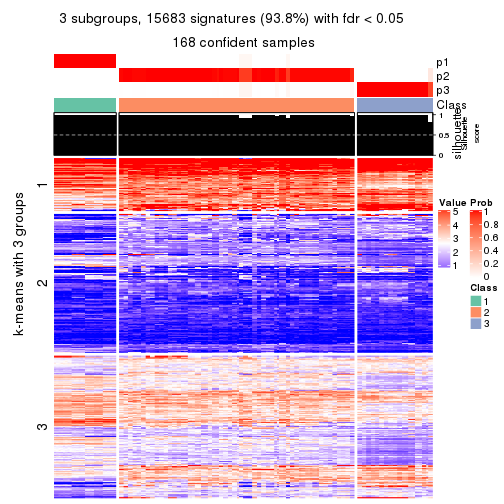
get_signatures(res, k = 4, scale_rows = FALSE)
get_signatures(res, k = 5, scale_rows = FALSE)

get_signatures(res, k = 6, scale_rows = FALSE)
Compare the overlap of signatures from different k:
compare_signatures(res)
get_signature() returns a data frame invisibly. TO get the list of signatures, the function
call should be assigned to a variable explicitly. In following code, if plot argument is set
to FALSE, no heatmap is plotted while only the differential analysis is performed.
# code only for demonstration
tb = get_signature(res, k = ..., plot = FALSE)
An example of the output of tb is:
#> which_row fdr mean_1 mean_2 scaled_mean_1 scaled_mean_2 km
#> 1 38 0.042760348 8.373488 9.131774 -0.5533452 0.5164555 1
#> 2 40 0.018707592 7.106213 8.469186 -0.6173731 0.5762149 1
#> 3 55 0.019134737 10.221463 11.207825 -0.6159697 0.5749050 1
#> 4 59 0.006059896 5.921854 7.869574 -0.6899429 0.6439467 1
#> 5 60 0.018055526 8.928898 10.211722 -0.6204761 0.5791110 1
#> 6 98 0.009384629 15.714769 14.887706 0.6635654 -0.6193277 2
...
The columns in tb are:
which_row: row indices corresponding to the input matrix.fdr: FDR for the differential test. mean_x: The mean value in group x.scaled_mean_x: The mean value in group x after rows are scaled.km: Row groups if k-means clustering is applied to rows.UMAP plot which shows how samples are separated.
dimension_reduction(res, k = 2, method = "UMAP")
dimension_reduction(res, k = 3, method = "UMAP")
dimension_reduction(res, k = 4, method = "UMAP")
dimension_reduction(res, k = 5, method = "UMAP")
dimension_reduction(res, k = 6, method = "UMAP")
Following heatmap shows how subgroups are split when increasing k:
collect_classes(res)
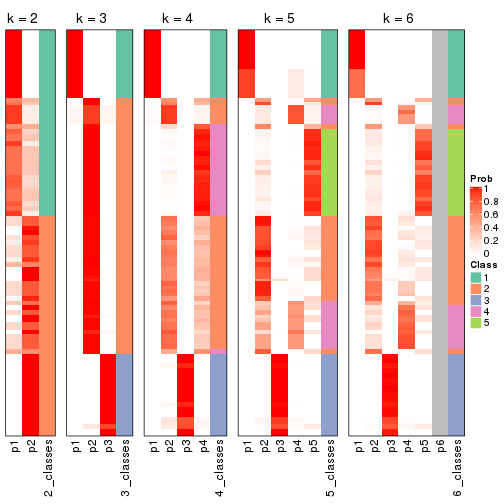
If matrix rows can be associated to genes, consider to use GO_Enrichment(res,
...) to perform function enrichment for the signature genes.
The object with results only for a single top-value method and a single partition method can be extracted as:
res = res_list["ATC", "NMF"]
# you can also extract it by
# res = res_list["ATC:NMF"]
A summary of res and all the functions that can be applied to it:
res
#> A 'ConsensusPartition' object with k = 2, 3, 4, 5, 6.
#> On a matrix with 16717 rows and 168 columns.
#> Top rows (1000, 2000, 3000, 4000, 5000) are extracted by 'ATC' method.
#> Subgroups are detected by 'NMF' method.
#> Performed in total 1250 partitions by row resampling.
#> Best k for subgroups seems to be 2.
#>
#> Following methods can be applied to this 'ConsensusPartition' object:
#> [1] "cola_report" "collect_classes" "collect_plots"
#> [4] "collect_stats" "colnames" "compare_signatures"
#> [7] "consensus_heatmap" "dimension_reduction" "functional_enrichment"
#> [10] "get_anno_col" "get_anno" "get_classes"
#> [13] "get_consensus" "get_matrix" "get_membership"
#> [16] "get_param" "get_signatures" "get_stats"
#> [19] "is_best_k" "is_stable_k" "membership_heatmap"
#> [22] "ncol" "nrow" "plot_ecdf"
#> [25] "rownames" "select_partition_number" "show"
#> [28] "suggest_best_k" "test_to_known_factors"
collect_plots() function collects all the plots made from res for all k (number of partitions)
into one single page to provide an easy and fast comparison between different k.
collect_plots(res)
The plots are:
k and the heatmap of
predicted classes for each k.k.k.k.All the plots in panels can be made by individual functions and they are plotted later in this section.
select_partition_number() produces several plots showing different
statistics for choosing “optimized” k. There are following statistics:
k;k, the area increased is defined as \(A_k - A_{k-1}\).The detailed explanations of these statistics can be found in the cola vignette.
Generally speaking, lower PAC score, higher mean silhouette score or higher
concordance corresponds to better partition. Rand index and Jaccard index
measure how similar the current partition is compared to partition with k-1.
If they are too similar, we won't accept k is better than k-1.
select_partition_number(res)
The numeric values for all these statistics can be obtained by get_stats().
get_stats(res)
#> k 1-PAC mean_silhouette concordance area_increased Rand Jaccard
#> 2 2 1.000 0.984 0.993 0.3329 0.675 0.675
#> 3 3 0.803 0.898 0.951 0.7332 0.767 0.655
#> 4 4 0.647 0.748 0.870 0.2509 0.818 0.599
#> 5 5 0.683 0.725 0.837 0.0938 0.863 0.560
#> 6 6 0.760 0.688 0.792 0.0427 0.958 0.801
suggest_best_k() suggests the best \(k\) based on these statistics. The rules are as follows:
NA.suggest_best_k(res)
#> [1] 2
Following shows the table of the partitions (You need to click the show/hide
code output link to see it). The membership matrix (columns with name p*)
is inferred by
clue::cl_consensus()
function with the SE method. Basically the value in the membership matrix
represents the probability to belong to a certain group. The finall class
label for an item is determined with the group with highest probability it
belongs to.
In get_classes() function, the entropy is calculated from the membership
matrix and the silhouette score is calculated from the consensus matrix.
cbind(get_classes(res, k = 2), get_membership(res, k = 2))
#> class entropy silhouette p1 p2
#> SRR1768889 1 0.0000 1.000 1.000 0.000
#> SRR1768890 1 0.0000 1.000 1.000 0.000
#> SRR1768891 2 0.0000 0.992 0.000 1.000
#> SRR1768892 2 0.0000 0.992 0.000 1.000
#> SRR1768893 2 0.5842 0.841 0.140 0.860
#> SRR1768894 2 0.3584 0.925 0.068 0.932
#> SRR1768895 2 0.0000 0.992 0.000 1.000
#> SRR1768896 2 0.0000 0.992 0.000 1.000
#> SRR1768821 2 0.0000 0.992 0.000 1.000
#> SRR1768822 2 0.0000 0.992 0.000 1.000
#> SRR1768823 2 0.0000 0.992 0.000 1.000
#> SRR1768824 2 0.0000 0.992 0.000 1.000
#> SRR1768825 2 0.0000 0.992 0.000 1.000
#> SRR1768826 2 0.0000 0.992 0.000 1.000
#> SRR1768827 2 0.0000 0.992 0.000 1.000
#> SRR1768828 2 0.0000 0.992 0.000 1.000
#> SRR1768829 2 0.0000 0.992 0.000 1.000
#> SRR1768830 2 0.0000 0.992 0.000 1.000
#> SRR1768831 2 0.0000 0.992 0.000 1.000
#> SRR1768832 2 0.0000 0.992 0.000 1.000
#> SRR1768833 2 0.0000 0.992 0.000 1.000
#> SRR1768834 2 0.0000 0.992 0.000 1.000
#> SRR1768835 2 0.0000 0.992 0.000 1.000
#> SRR1768836 2 0.0000 0.992 0.000 1.000
#> SRR1768837 2 0.0000 0.992 0.000 1.000
#> SRR1768838 2 0.0000 0.992 0.000 1.000
#> SRR1768839 2 0.0000 0.992 0.000 1.000
#> SRR1768840 2 0.0000 0.992 0.000 1.000
#> SRR1768841 2 0.0000 0.992 0.000 1.000
#> SRR1768842 2 0.0000 0.992 0.000 1.000
#> SRR1768843 2 0.0000 0.992 0.000 1.000
#> SRR1768844 1 0.0000 1.000 1.000 0.000
#> SRR1768845 1 0.0000 1.000 1.000 0.000
#> SRR1768846 1 0.0000 1.000 1.000 0.000
#> SRR1768847 1 0.0000 1.000 1.000 0.000
#> SRR1768848 1 0.0000 1.000 1.000 0.000
#> SRR1768849 1 0.0000 1.000 1.000 0.000
#> SRR1768850 1 0.0000 1.000 1.000 0.000
#> SRR1768851 1 0.0000 1.000 1.000 0.000
#> SRR1768852 2 0.0000 0.992 0.000 1.000
#> SRR1768853 2 0.0000 0.992 0.000 1.000
#> SRR1768854 2 0.0000 0.992 0.000 1.000
#> SRR1768855 1 0.0000 1.000 1.000 0.000
#> SRR1768856 1 0.0000 1.000 1.000 0.000
#> SRR1768857 1 0.0000 1.000 1.000 0.000
#> SRR1768858 1 0.0000 1.000 1.000 0.000
#> SRR1768859 1 0.0000 1.000 1.000 0.000
#> SRR1768860 1 0.0000 1.000 1.000 0.000
#> SRR1768861 2 0.0376 0.988 0.004 0.996
#> SRR1768862 2 0.0000 0.992 0.000 1.000
#> SRR1768863 2 0.0000 0.992 0.000 1.000
#> SRR1768864 2 0.0000 0.992 0.000 1.000
#> SRR1768865 2 0.0000 0.992 0.000 1.000
#> SRR1768866 2 0.0000 0.992 0.000 1.000
#> SRR1768867 2 0.0000 0.992 0.000 1.000
#> SRR1768868 2 0.0000 0.992 0.000 1.000
#> SRR1768869 2 0.0000 0.992 0.000 1.000
#> SRR1768870 2 0.0000 0.992 0.000 1.000
#> SRR1768871 2 0.0000 0.992 0.000 1.000
#> SRR1768872 2 0.0000 0.992 0.000 1.000
#> SRR1768873 2 0.0000 0.992 0.000 1.000
#> SRR1768874 2 0.0000 0.992 0.000 1.000
#> SRR1768875 1 0.0000 1.000 1.000 0.000
#> SRR1768876 1 0.0000 1.000 1.000 0.000
#> SRR1768877 1 0.0000 1.000 1.000 0.000
#> SRR1768878 1 0.0000 1.000 1.000 0.000
#> SRR1768879 2 0.0000 0.992 0.000 1.000
#> SRR1768880 2 0.0000 0.992 0.000 1.000
#> SRR1768881 2 0.0000 0.992 0.000 1.000
#> SRR1768882 2 0.0000 0.992 0.000 1.000
#> SRR1768883 1 0.0000 1.000 1.000 0.000
#> SRR1768884 1 0.0000 1.000 1.000 0.000
#> SRR1768885 1 0.0000 1.000 1.000 0.000
#> SRR1768886 1 0.0000 1.000 1.000 0.000
#> SRR1768887 1 0.0000 1.000 1.000 0.000
#> SRR1768888 1 0.0000 1.000 1.000 0.000
#> SRR1768897 2 0.0000 0.992 0.000 1.000
#> SRR1768898 2 0.0000 0.992 0.000 1.000
#> SRR1768899 2 0.0000 0.992 0.000 1.000
#> SRR1768900 2 0.0000 0.992 0.000 1.000
#> SRR1768901 1 0.0000 1.000 1.000 0.000
#> SRR1768902 1 0.0000 1.000 1.000 0.000
#> SRR1768903 1 0.0000 1.000 1.000 0.000
#> SRR1768904 2 0.5294 0.866 0.120 0.880
#> SRR1768905 2 0.0672 0.985 0.008 0.992
#> SRR1768906 2 0.9963 0.154 0.464 0.536
#> SRR1768907 2 0.0000 0.992 0.000 1.000
#> SRR1768908 2 0.0000 0.992 0.000 1.000
#> SRR1768909 2 0.0000 0.992 0.000 1.000
#> SRR1768910 2 0.0000 0.992 0.000 1.000
#> SRR1768911 2 0.0000 0.992 0.000 1.000
#> SRR1768912 2 0.6048 0.830 0.148 0.852
#> SRR1768913 2 0.0000 0.992 0.000 1.000
#> SRR1768914 2 0.0000 0.992 0.000 1.000
#> SRR1768915 2 0.0938 0.981 0.012 0.988
#> SRR1768916 2 0.0000 0.992 0.000 1.000
#> SRR1768917 2 0.0000 0.992 0.000 1.000
#> SRR1768918 2 0.5408 0.861 0.124 0.876
#> SRR1768919 2 0.1184 0.977 0.016 0.984
#> SRR1768920 2 0.0000 0.992 0.000 1.000
#> SRR1768921 2 0.0000 0.992 0.000 1.000
#> SRR1768922 1 0.0000 1.000 1.000 0.000
#> SRR1768923 1 0.0000 1.000 1.000 0.000
#> SRR1768924 2 0.0000 0.992 0.000 1.000
#> SRR1768925 2 0.0000 0.992 0.000 1.000
#> SRR1768926 2 0.0000 0.992 0.000 1.000
#> SRR1768927 2 0.0000 0.992 0.000 1.000
#> SRR1768928 2 0.0000 0.992 0.000 1.000
#> SRR1768929 2 0.0000 0.992 0.000 1.000
#> SRR1768930 2 0.0000 0.992 0.000 1.000
#> SRR1768931 2 0.0000 0.992 0.000 1.000
#> SRR1768932 2 0.0000 0.992 0.000 1.000
#> SRR1768933 2 0.0000 0.992 0.000 1.000
#> SRR1768934 2 0.0000 0.992 0.000 1.000
#> SRR1768935 2 0.0000 0.992 0.000 1.000
#> SRR1768936 2 0.0000 0.992 0.000 1.000
#> SRR1768937 2 0.0000 0.992 0.000 1.000
#> SRR1768938 2 0.0000 0.992 0.000 1.000
#> SRR1768939 2 0.0000 0.992 0.000 1.000
#> SRR1768940 2 0.0000 0.992 0.000 1.000
#> SRR1768941 2 0.0000 0.992 0.000 1.000
#> SRR1768942 2 0.0000 0.992 0.000 1.000
#> SRR1768943 2 0.0000 0.992 0.000 1.000
#> SRR1768944 2 0.0000 0.992 0.000 1.000
#> SRR1768945 2 0.0000 0.992 0.000 1.000
#> SRR1768946 2 0.0000 0.992 0.000 1.000
#> SRR1768947 1 0.0000 1.000 1.000 0.000
#> SRR1768948 1 0.0000 1.000 1.000 0.000
#> SRR1768949 1 0.0000 1.000 1.000 0.000
#> SRR1768950 2 0.0000 0.992 0.000 1.000
#> SRR1768954 2 0.0000 0.992 0.000 1.000
#> SRR1768955 2 0.0000 0.992 0.000 1.000
#> SRR1768956 2 0.0000 0.992 0.000 1.000
#> SRR1768957 2 0.0000 0.992 0.000 1.000
#> SRR1768958 2 0.0000 0.992 0.000 1.000
#> SRR1768959 2 0.0000 0.992 0.000 1.000
#> SRR1768960 2 0.0000 0.992 0.000 1.000
#> SRR1768961 2 0.0000 0.992 0.000 1.000
#> SRR1768952 2 0.0000 0.992 0.000 1.000
#> SRR1768953 2 0.0000 0.992 0.000 1.000
#> SRR1768962 2 0.0000 0.992 0.000 1.000
#> SRR1768963 2 0.0000 0.992 0.000 1.000
#> SRR1768964 2 0.0000 0.992 0.000 1.000
#> SRR1768965 2 0.0000 0.992 0.000 1.000
#> SRR1768966 2 0.0000 0.992 0.000 1.000
#> SRR1768967 2 0.0000 0.992 0.000 1.000
#> SRR1768968 2 0.0000 0.992 0.000 1.000
#> SRR1768969 2 0.0000 0.992 0.000 1.000
#> SRR1768970 2 0.0000 0.992 0.000 1.000
#> SRR1768971 2 0.0000 0.992 0.000 1.000
#> SRR1768972 2 0.0000 0.992 0.000 1.000
#> SRR1768973 2 0.0000 0.992 0.000 1.000
#> SRR1768974 2 0.0000 0.992 0.000 1.000
#> SRR1768975 2 0.0000 0.992 0.000 1.000
#> SRR1768976 2 0.0000 0.992 0.000 1.000
#> SRR1768977 2 0.0000 0.992 0.000 1.000
#> SRR1768978 2 0.0000 0.992 0.000 1.000
#> SRR1768979 2 0.0000 0.992 0.000 1.000
#> SRR1768980 2 0.0000 0.992 0.000 1.000
#> SRR1768981 2 0.0000 0.992 0.000 1.000
#> SRR1768982 2 0.0000 0.992 0.000 1.000
#> SRR1768983 2 0.0000 0.992 0.000 1.000
#> SRR1768984 2 0.0000 0.992 0.000 1.000
#> SRR1768985 2 0.0000 0.992 0.000 1.000
#> SRR1768986 2 0.0000 0.992 0.000 1.000
#> SRR1768987 2 0.0000 0.992 0.000 1.000
#> SRR1768988 2 0.0000 0.992 0.000 1.000
#> SRR1768989 2 0.0000 0.992 0.000 1.000
cbind(get_classes(res, k = 3), get_membership(res, k = 3))
#> class entropy silhouette p1 p2 p3
#> SRR1768889 3 0.0000 0.982 0.000 0.000 1.000
#> SRR1768890 3 0.0000 0.982 0.000 0.000 1.000
#> SRR1768891 2 0.2537 0.888 0.080 0.920 0.000
#> SRR1768892 2 0.2165 0.897 0.064 0.936 0.000
#> SRR1768893 2 0.1860 0.903 0.052 0.948 0.000
#> SRR1768894 2 0.1289 0.913 0.032 0.968 0.000
#> SRR1768895 2 0.0000 0.926 0.000 1.000 0.000
#> SRR1768896 2 0.0000 0.926 0.000 1.000 0.000
#> SRR1768821 2 0.0000 0.926 0.000 1.000 0.000
#> SRR1768822 2 0.0000 0.926 0.000 1.000 0.000
#> SRR1768823 2 0.0000 0.926 0.000 1.000 0.000
#> SRR1768824 2 0.0000 0.926 0.000 1.000 0.000
#> SRR1768825 2 0.0000 0.926 0.000 1.000 0.000
#> SRR1768826 2 0.0000 0.926 0.000 1.000 0.000
#> SRR1768827 2 0.0000 0.926 0.000 1.000 0.000
#> SRR1768828 2 0.0000 0.926 0.000 1.000 0.000
#> SRR1768829 2 0.0000 0.926 0.000 1.000 0.000
#> SRR1768830 2 0.0000 0.926 0.000 1.000 0.000
#> SRR1768831 2 0.6126 0.460 0.400 0.600 0.000
#> SRR1768832 2 0.6126 0.460 0.400 0.600 0.000
#> SRR1768833 2 0.3267 0.863 0.116 0.884 0.000
#> SRR1768834 2 0.3412 0.858 0.124 0.876 0.000
#> SRR1768835 2 0.3482 0.855 0.128 0.872 0.000
#> SRR1768836 2 0.4605 0.788 0.204 0.796 0.000
#> SRR1768837 2 0.4555 0.792 0.200 0.800 0.000
#> SRR1768838 2 0.4465 0.813 0.176 0.820 0.004
#> SRR1768839 2 0.4521 0.810 0.180 0.816 0.004
#> SRR1768840 2 0.6673 0.732 0.200 0.732 0.068
#> SRR1768841 2 0.6495 0.740 0.200 0.740 0.060
#> SRR1768842 2 0.2796 0.879 0.092 0.908 0.000
#> SRR1768843 2 0.2625 0.884 0.084 0.916 0.000
#> SRR1768844 3 0.0000 0.982 0.000 0.000 1.000
#> SRR1768845 3 0.0000 0.982 0.000 0.000 1.000
#> SRR1768846 3 0.0000 0.982 0.000 0.000 1.000
#> SRR1768847 3 0.0000 0.982 0.000 0.000 1.000
#> SRR1768848 3 0.0000 0.982 0.000 0.000 1.000
#> SRR1768849 3 0.0000 0.982 0.000 0.000 1.000
#> SRR1768850 3 0.0000 0.982 0.000 0.000 1.000
#> SRR1768851 3 0.0000 0.982 0.000 0.000 1.000
#> SRR1768852 2 0.0000 0.926 0.000 1.000 0.000
#> SRR1768853 2 0.0000 0.926 0.000 1.000 0.000
#> SRR1768854 2 0.0000 0.926 0.000 1.000 0.000
#> SRR1768855 3 0.0000 0.982 0.000 0.000 1.000
#> SRR1768856 3 0.0000 0.982 0.000 0.000 1.000
#> SRR1768857 3 0.0000 0.982 0.000 0.000 1.000
#> SRR1768858 3 0.0000 0.982 0.000 0.000 1.000
#> SRR1768859 3 0.0000 0.982 0.000 0.000 1.000
#> SRR1768860 3 0.0000 0.982 0.000 0.000 1.000
#> SRR1768861 2 0.0892 0.915 0.000 0.980 0.020
#> SRR1768862 2 0.1031 0.913 0.000 0.976 0.024
#> SRR1768863 2 0.0000 0.926 0.000 1.000 0.000
#> SRR1768864 2 0.0000 0.926 0.000 1.000 0.000
#> SRR1768865 2 0.4555 0.741 0.000 0.800 0.200
#> SRR1768866 2 0.4555 0.741 0.000 0.800 0.200
#> SRR1768867 2 0.0000 0.926 0.000 1.000 0.000
#> SRR1768868 2 0.0000 0.926 0.000 1.000 0.000
#> SRR1768869 2 0.0000 0.926 0.000 1.000 0.000
#> SRR1768870 2 0.0000 0.926 0.000 1.000 0.000
#> SRR1768871 2 0.0000 0.926 0.000 1.000 0.000
#> SRR1768872 2 0.0000 0.926 0.000 1.000 0.000
#> SRR1768873 2 0.1411 0.911 0.036 0.964 0.000
#> SRR1768874 2 0.1411 0.911 0.036 0.964 0.000
#> SRR1768875 3 0.0000 0.982 0.000 0.000 1.000
#> SRR1768876 3 0.0000 0.982 0.000 0.000 1.000
#> SRR1768877 3 0.0000 0.982 0.000 0.000 1.000
#> SRR1768878 3 0.0000 0.982 0.000 0.000 1.000
#> SRR1768879 2 0.0000 0.926 0.000 1.000 0.000
#> SRR1768880 2 0.0000 0.926 0.000 1.000 0.000
#> SRR1768881 2 0.4605 0.788 0.204 0.796 0.000
#> SRR1768882 2 0.4605 0.788 0.204 0.796 0.000
#> SRR1768883 3 0.0000 0.982 0.000 0.000 1.000
#> SRR1768884 3 0.0000 0.982 0.000 0.000 1.000
#> SRR1768885 3 0.0000 0.982 0.000 0.000 1.000
#> SRR1768886 3 0.0000 0.982 0.000 0.000 1.000
#> SRR1768887 3 0.0000 0.982 0.000 0.000 1.000
#> SRR1768888 3 0.0000 0.982 0.000 0.000 1.000
#> SRR1768897 2 0.0000 0.926 0.000 1.000 0.000
#> SRR1768898 2 0.0000 0.926 0.000 1.000 0.000
#> SRR1768899 2 0.0000 0.926 0.000 1.000 0.000
#> SRR1768900 2 0.0000 0.926 0.000 1.000 0.000
#> SRR1768901 3 0.4399 0.726 0.000 0.188 0.812
#> SRR1768902 3 0.4796 0.679 0.000 0.220 0.780
#> SRR1768903 3 0.0592 0.968 0.000 0.012 0.988
#> SRR1768904 2 0.0000 0.926 0.000 1.000 0.000
#> SRR1768905 2 0.0000 0.926 0.000 1.000 0.000
#> SRR1768906 2 0.0000 0.926 0.000 1.000 0.000
#> SRR1768907 2 0.0000 0.926 0.000 1.000 0.000
#> SRR1768908 2 0.0000 0.926 0.000 1.000 0.000
#> SRR1768909 2 0.0000 0.926 0.000 1.000 0.000
#> SRR1768910 2 0.4121 0.822 0.168 0.832 0.000
#> SRR1768911 2 0.4121 0.822 0.168 0.832 0.000
#> SRR1768912 2 0.4178 0.819 0.172 0.828 0.000
#> SRR1768913 2 0.0000 0.926 0.000 1.000 0.000
#> SRR1768914 2 0.0000 0.926 0.000 1.000 0.000
#> SRR1768915 2 0.0000 0.926 0.000 1.000 0.000
#> SRR1768916 2 0.0000 0.926 0.000 1.000 0.000
#> SRR1768917 2 0.0000 0.926 0.000 1.000 0.000
#> SRR1768918 2 0.0000 0.926 0.000 1.000 0.000
#> SRR1768919 2 0.0000 0.926 0.000 1.000 0.000
#> SRR1768920 2 0.0000 0.926 0.000 1.000 0.000
#> SRR1768921 2 0.0000 0.926 0.000 1.000 0.000
#> SRR1768922 3 0.0000 0.982 0.000 0.000 1.000
#> SRR1768923 3 0.0000 0.982 0.000 0.000 1.000
#> SRR1768924 2 0.4555 0.792 0.200 0.800 0.000
#> SRR1768925 2 0.4555 0.792 0.200 0.800 0.000
#> SRR1768926 2 0.4555 0.792 0.200 0.800 0.000
#> SRR1768927 2 0.4555 0.792 0.200 0.800 0.000
#> SRR1768928 2 0.4555 0.792 0.200 0.800 0.000
#> SRR1768929 2 0.4555 0.792 0.200 0.800 0.000
#> SRR1768930 2 0.0000 0.926 0.000 1.000 0.000
#> SRR1768931 2 0.0000 0.926 0.000 1.000 0.000
#> SRR1768932 2 0.0000 0.926 0.000 1.000 0.000
#> SRR1768933 2 0.0000 0.926 0.000 1.000 0.000
#> SRR1768934 2 0.0000 0.926 0.000 1.000 0.000
#> SRR1768935 2 0.0000 0.926 0.000 1.000 0.000
#> SRR1768936 2 0.0000 0.926 0.000 1.000 0.000
#> SRR1768937 2 0.0000 0.926 0.000 1.000 0.000
#> SRR1768938 2 0.0000 0.926 0.000 1.000 0.000
#> SRR1768939 2 0.0000 0.926 0.000 1.000 0.000
#> SRR1768940 2 0.0000 0.926 0.000 1.000 0.000
#> SRR1768941 2 0.0000 0.926 0.000 1.000 0.000
#> SRR1768942 2 0.0000 0.926 0.000 1.000 0.000
#> SRR1768943 2 0.0000 0.926 0.000 1.000 0.000
#> SRR1768944 2 0.0000 0.926 0.000 1.000 0.000
#> SRR1768945 2 0.0000 0.926 0.000 1.000 0.000
#> SRR1768946 2 0.0000 0.926 0.000 1.000 0.000
#> SRR1768947 3 0.0000 0.982 0.000 0.000 1.000
#> SRR1768948 3 0.0000 0.982 0.000 0.000 1.000
#> SRR1768949 3 0.0000 0.982 0.000 0.000 1.000
#> SRR1768950 2 0.0000 0.926 0.000 1.000 0.000
#> SRR1768954 1 0.0000 0.966 1.000 0.000 0.000
#> SRR1768955 1 0.0000 0.966 1.000 0.000 0.000
#> SRR1768956 1 0.0000 0.966 1.000 0.000 0.000
#> SRR1768957 1 0.0000 0.966 1.000 0.000 0.000
#> SRR1768958 1 0.0000 0.966 1.000 0.000 0.000
#> SRR1768959 1 0.0000 0.966 1.000 0.000 0.000
#> SRR1768960 1 0.0000 0.966 1.000 0.000 0.000
#> SRR1768961 1 0.0000 0.966 1.000 0.000 0.000
#> SRR1768952 2 0.0000 0.926 0.000 1.000 0.000
#> SRR1768953 2 0.0000 0.926 0.000 1.000 0.000
#> SRR1768962 1 0.0000 0.966 1.000 0.000 0.000
#> SRR1768963 1 0.0000 0.966 1.000 0.000 0.000
#> SRR1768964 1 0.0000 0.966 1.000 0.000 0.000
#> SRR1768965 1 0.0000 0.966 1.000 0.000 0.000
#> SRR1768966 1 0.0000 0.966 1.000 0.000 0.000
#> SRR1768967 1 0.0000 0.966 1.000 0.000 0.000
#> SRR1768968 1 0.0000 0.966 1.000 0.000 0.000
#> SRR1768969 1 0.0000 0.966 1.000 0.000 0.000
#> SRR1768970 1 0.0000 0.966 1.000 0.000 0.000
#> SRR1768971 1 0.0000 0.966 1.000 0.000 0.000
#> SRR1768972 1 0.0000 0.966 1.000 0.000 0.000
#> SRR1768973 1 0.0000 0.966 1.000 0.000 0.000
#> SRR1768974 1 0.0000 0.966 1.000 0.000 0.000
#> SRR1768975 1 0.0000 0.966 1.000 0.000 0.000
#> SRR1768976 1 0.0000 0.966 1.000 0.000 0.000
#> SRR1768977 1 0.0000 0.966 1.000 0.000 0.000
#> SRR1768978 1 0.0000 0.966 1.000 0.000 0.000
#> SRR1768979 1 0.0000 0.966 1.000 0.000 0.000
#> SRR1768980 1 0.0000 0.966 1.000 0.000 0.000
#> SRR1768981 1 0.0000 0.966 1.000 0.000 0.000
#> SRR1768982 1 0.0000 0.966 1.000 0.000 0.000
#> SRR1768983 1 0.0000 0.966 1.000 0.000 0.000
#> SRR1768984 2 0.5948 0.548 0.360 0.640 0.000
#> SRR1768985 2 0.5905 0.564 0.352 0.648 0.000
#> SRR1768986 1 0.5948 0.332 0.640 0.360 0.000
#> SRR1768987 1 0.5988 0.308 0.632 0.368 0.000
#> SRR1768988 2 0.6302 0.234 0.480 0.520 0.000
#> SRR1768989 2 0.6286 0.286 0.464 0.536 0.000
cbind(get_classes(res, k = 4), get_membership(res, k = 4))
#> class entropy silhouette p1 p2 p3 p4
#> SRR1768889 3 0.0000 0.9865 0.000 0.000 1.000 0.000
#> SRR1768890 3 0.0000 0.9865 0.000 0.000 1.000 0.000
#> SRR1768891 4 0.0707 0.7672 0.000 0.020 0.000 0.980
#> SRR1768892 4 0.0707 0.7672 0.000 0.020 0.000 0.980
#> SRR1768893 4 0.2867 0.7411 0.000 0.104 0.012 0.884
#> SRR1768894 4 0.3161 0.7312 0.000 0.124 0.012 0.864
#> SRR1768895 2 0.3400 0.7184 0.000 0.820 0.000 0.180
#> SRR1768896 2 0.3356 0.7207 0.000 0.824 0.000 0.176
#> SRR1768821 2 0.3764 0.6950 0.000 0.784 0.000 0.216
#> SRR1768822 2 0.3764 0.6950 0.000 0.784 0.000 0.216
#> SRR1768823 2 0.3942 0.6775 0.000 0.764 0.000 0.236
#> SRR1768824 2 0.3942 0.6775 0.000 0.764 0.000 0.236
#> SRR1768825 2 0.3356 0.7217 0.000 0.824 0.000 0.176
#> SRR1768826 2 0.3356 0.7217 0.000 0.824 0.000 0.176
#> SRR1768827 2 0.4008 0.6682 0.000 0.756 0.000 0.244
#> SRR1768828 2 0.4008 0.6682 0.000 0.756 0.000 0.244
#> SRR1768829 2 0.3764 0.6977 0.000 0.784 0.000 0.216
#> SRR1768830 2 0.3764 0.6977 0.000 0.784 0.000 0.216
#> SRR1768831 2 0.5112 0.5141 0.384 0.608 0.000 0.008
#> SRR1768832 2 0.5112 0.5141 0.384 0.608 0.000 0.008
#> SRR1768833 2 0.2335 0.7386 0.060 0.920 0.000 0.020
#> SRR1768834 2 0.2706 0.7320 0.080 0.900 0.000 0.020
#> SRR1768835 2 0.2722 0.7336 0.064 0.904 0.000 0.032
#> SRR1768836 2 0.3982 0.6572 0.220 0.776 0.000 0.004
#> SRR1768837 2 0.3945 0.6588 0.216 0.780 0.000 0.004
#> SRR1768838 2 0.3972 0.6740 0.204 0.788 0.000 0.008
#> SRR1768839 2 0.3933 0.6754 0.200 0.792 0.000 0.008
#> SRR1768840 2 0.3751 0.6711 0.196 0.800 0.004 0.000
#> SRR1768841 2 0.3751 0.6711 0.196 0.800 0.004 0.000
#> SRR1768842 2 0.2831 0.7185 0.120 0.876 0.004 0.000
#> SRR1768843 2 0.2654 0.7245 0.108 0.888 0.004 0.000
#> SRR1768844 3 0.0000 0.9865 0.000 0.000 1.000 0.000
#> SRR1768845 3 0.0000 0.9865 0.000 0.000 1.000 0.000
#> SRR1768846 3 0.0000 0.9865 0.000 0.000 1.000 0.000
#> SRR1768847 3 0.0000 0.9865 0.000 0.000 1.000 0.000
#> SRR1768848 3 0.0000 0.9865 0.000 0.000 1.000 0.000
#> SRR1768849 3 0.0000 0.9865 0.000 0.000 1.000 0.000
#> SRR1768850 3 0.0000 0.9865 0.000 0.000 1.000 0.000
#> SRR1768851 3 0.0000 0.9865 0.000 0.000 1.000 0.000
#> SRR1768852 4 0.1867 0.7614 0.000 0.072 0.000 0.928
#> SRR1768853 4 0.1867 0.7614 0.000 0.072 0.000 0.928
#> SRR1768854 4 0.1302 0.7674 0.000 0.044 0.000 0.956
#> SRR1768855 3 0.0000 0.9865 0.000 0.000 1.000 0.000
#> SRR1768856 3 0.0000 0.9865 0.000 0.000 1.000 0.000
#> SRR1768857 3 0.0000 0.9865 0.000 0.000 1.000 0.000
#> SRR1768858 3 0.0000 0.9865 0.000 0.000 1.000 0.000
#> SRR1768859 3 0.0000 0.9865 0.000 0.000 1.000 0.000
#> SRR1768860 3 0.0000 0.9865 0.000 0.000 1.000 0.000
#> SRR1768861 2 0.4436 0.6924 0.000 0.800 0.148 0.052
#> SRR1768862 2 0.4405 0.6905 0.000 0.800 0.152 0.048
#> SRR1768863 2 0.2408 0.7471 0.000 0.896 0.000 0.104
#> SRR1768864 2 0.2408 0.7471 0.000 0.896 0.000 0.104
#> SRR1768865 2 0.3916 0.6877 0.008 0.816 0.168 0.008
#> SRR1768866 2 0.3916 0.6877 0.008 0.816 0.168 0.008
#> SRR1768867 4 0.4776 0.3262 0.000 0.376 0.000 0.624
#> SRR1768868 4 0.4790 0.3130 0.000 0.380 0.000 0.620
#> SRR1768869 2 0.3528 0.7102 0.000 0.808 0.000 0.192
#> SRR1768870 2 0.3528 0.7102 0.000 0.808 0.000 0.192
#> SRR1768871 2 0.1792 0.7545 0.000 0.932 0.000 0.068
#> SRR1768872 2 0.1792 0.7545 0.000 0.932 0.000 0.068
#> SRR1768873 2 0.3945 0.6972 0.004 0.780 0.000 0.216
#> SRR1768874 2 0.3982 0.6938 0.004 0.776 0.000 0.220
#> SRR1768875 3 0.0000 0.9865 0.000 0.000 1.000 0.000
#> SRR1768876 3 0.0000 0.9865 0.000 0.000 1.000 0.000
#> SRR1768877 3 0.0000 0.9865 0.000 0.000 1.000 0.000
#> SRR1768878 3 0.0000 0.9865 0.000 0.000 1.000 0.000
#> SRR1768879 4 0.5268 0.1462 0.000 0.452 0.008 0.540
#> SRR1768880 4 0.5250 0.1918 0.000 0.440 0.008 0.552
#> SRR1768881 4 0.7015 0.4239 0.264 0.168 0.000 0.568
#> SRR1768882 4 0.7211 0.3655 0.248 0.204 0.000 0.548
#> SRR1768883 3 0.0000 0.9865 0.000 0.000 1.000 0.000
#> SRR1768884 3 0.0000 0.9865 0.000 0.000 1.000 0.000
#> SRR1768885 3 0.0000 0.9865 0.000 0.000 1.000 0.000
#> SRR1768886 3 0.0000 0.9865 0.000 0.000 1.000 0.000
#> SRR1768887 3 0.0000 0.9865 0.000 0.000 1.000 0.000
#> SRR1768888 3 0.0000 0.9865 0.000 0.000 1.000 0.000
#> SRR1768897 2 0.4985 -0.0684 0.000 0.532 0.000 0.468
#> SRR1768898 2 0.4996 -0.1298 0.000 0.516 0.000 0.484
#> SRR1768899 2 0.1004 0.7549 0.004 0.972 0.000 0.024
#> SRR1768900 2 0.0895 0.7544 0.004 0.976 0.000 0.020
#> SRR1768901 4 0.5234 0.6279 0.000 0.152 0.096 0.752
#> SRR1768902 4 0.4898 0.6389 0.000 0.156 0.072 0.772
#> SRR1768903 4 0.6637 0.4116 0.000 0.132 0.260 0.608
#> SRR1768904 4 0.4331 0.6297 0.000 0.288 0.000 0.712
#> SRR1768905 4 0.4406 0.6184 0.000 0.300 0.000 0.700
#> SRR1768906 4 0.4155 0.6638 0.000 0.240 0.004 0.756
#> SRR1768907 2 0.0469 0.7496 0.000 0.988 0.000 0.012
#> SRR1768908 2 0.0469 0.7496 0.000 0.988 0.000 0.012
#> SRR1768909 2 0.0469 0.7496 0.000 0.988 0.000 0.012
#> SRR1768910 2 0.3529 0.7008 0.152 0.836 0.000 0.012
#> SRR1768911 2 0.3625 0.6955 0.160 0.828 0.000 0.012
#> SRR1768912 2 0.3479 0.7034 0.148 0.840 0.000 0.012
#> SRR1768913 2 0.0376 0.7509 0.004 0.992 0.000 0.004
#> SRR1768914 2 0.0376 0.7509 0.004 0.992 0.000 0.004
#> SRR1768915 2 0.0376 0.7509 0.004 0.992 0.000 0.004
#> SRR1768916 2 0.0921 0.7534 0.000 0.972 0.000 0.028
#> SRR1768917 2 0.4898 0.3962 0.000 0.584 0.000 0.416
#> SRR1768918 2 0.0188 0.7509 0.000 0.996 0.000 0.004
#> SRR1768919 2 0.0188 0.7509 0.000 0.996 0.000 0.004
#> SRR1768920 2 0.4776 0.4475 0.000 0.624 0.000 0.376
#> SRR1768921 2 0.4713 0.4838 0.000 0.640 0.000 0.360
#> SRR1768922 3 0.3266 0.7979 0.000 0.168 0.832 0.000
#> SRR1768923 3 0.3266 0.7979 0.000 0.168 0.832 0.000
#> SRR1768924 2 0.3852 0.6726 0.192 0.800 0.000 0.008
#> SRR1768925 2 0.3852 0.6726 0.192 0.800 0.000 0.008
#> SRR1768926 2 0.3751 0.6710 0.196 0.800 0.000 0.004
#> SRR1768927 2 0.3852 0.6723 0.192 0.800 0.000 0.008
#> SRR1768928 2 0.6511 0.4817 0.188 0.640 0.000 0.172
#> SRR1768929 2 0.6330 0.5096 0.200 0.656 0.000 0.144
#> SRR1768930 2 0.4661 0.5400 0.000 0.652 0.000 0.348
#> SRR1768931 2 0.4661 0.5400 0.000 0.652 0.000 0.348
#> SRR1768932 2 0.4948 0.3379 0.000 0.560 0.000 0.440
#> SRR1768933 4 0.4356 0.5239 0.000 0.292 0.000 0.708
#> SRR1768934 4 0.4356 0.5239 0.000 0.292 0.000 0.708
#> SRR1768935 4 0.3569 0.6636 0.000 0.196 0.000 0.804
#> SRR1768936 2 0.4776 0.4537 0.000 0.624 0.000 0.376
#> SRR1768937 2 0.4661 0.5139 0.000 0.652 0.000 0.348
#> SRR1768938 4 0.5000 -0.1011 0.000 0.500 0.000 0.500
#> SRR1768939 4 0.0921 0.7689 0.000 0.028 0.000 0.972
#> SRR1768940 4 0.0921 0.7689 0.000 0.028 0.000 0.972
#> SRR1768941 4 0.2011 0.7588 0.000 0.080 0.000 0.920
#> SRR1768942 4 0.2011 0.7588 0.000 0.080 0.000 0.920
#> SRR1768943 4 0.0921 0.7689 0.000 0.028 0.000 0.972
#> SRR1768944 4 0.0921 0.7689 0.000 0.028 0.000 0.972
#> SRR1768945 4 0.0817 0.7682 0.000 0.024 0.000 0.976
#> SRR1768946 4 0.0817 0.7682 0.000 0.024 0.000 0.976
#> SRR1768947 3 0.0336 0.9803 0.000 0.008 0.992 0.000
#> SRR1768948 3 0.0336 0.9803 0.000 0.008 0.992 0.000
#> SRR1768949 3 0.0336 0.9803 0.000 0.008 0.992 0.000
#> SRR1768950 2 0.3400 0.7251 0.000 0.820 0.000 0.180
#> SRR1768954 1 0.0000 0.9779 1.000 0.000 0.000 0.000
#> SRR1768955 1 0.0000 0.9779 1.000 0.000 0.000 0.000
#> SRR1768956 1 0.0000 0.9779 1.000 0.000 0.000 0.000
#> SRR1768957 1 0.0000 0.9779 1.000 0.000 0.000 0.000
#> SRR1768958 1 0.0000 0.9779 1.000 0.000 0.000 0.000
#> SRR1768959 1 0.0000 0.9779 1.000 0.000 0.000 0.000
#> SRR1768960 1 0.0000 0.9779 1.000 0.000 0.000 0.000
#> SRR1768961 1 0.0000 0.9779 1.000 0.000 0.000 0.000
#> SRR1768952 2 0.1302 0.7548 0.000 0.956 0.000 0.044
#> SRR1768953 2 0.1302 0.7548 0.000 0.956 0.000 0.044
#> SRR1768962 1 0.0000 0.9779 1.000 0.000 0.000 0.000
#> SRR1768963 1 0.0000 0.9779 1.000 0.000 0.000 0.000
#> SRR1768964 1 0.0000 0.9779 1.000 0.000 0.000 0.000
#> SRR1768965 1 0.0000 0.9779 1.000 0.000 0.000 0.000
#> SRR1768966 1 0.0000 0.9779 1.000 0.000 0.000 0.000
#> SRR1768967 1 0.0000 0.9779 1.000 0.000 0.000 0.000
#> SRR1768968 1 0.0000 0.9779 1.000 0.000 0.000 0.000
#> SRR1768969 1 0.0000 0.9779 1.000 0.000 0.000 0.000
#> SRR1768970 1 0.4250 0.6204 0.724 0.000 0.000 0.276
#> SRR1768971 1 0.4522 0.5403 0.680 0.000 0.000 0.320
#> SRR1768972 1 0.0000 0.9779 1.000 0.000 0.000 0.000
#> SRR1768973 1 0.0000 0.9779 1.000 0.000 0.000 0.000
#> SRR1768974 1 0.0000 0.9779 1.000 0.000 0.000 0.000
#> SRR1768975 1 0.0000 0.9779 1.000 0.000 0.000 0.000
#> SRR1768976 1 0.0000 0.9779 1.000 0.000 0.000 0.000
#> SRR1768977 1 0.0000 0.9779 1.000 0.000 0.000 0.000
#> SRR1768978 1 0.0000 0.9779 1.000 0.000 0.000 0.000
#> SRR1768979 1 0.0000 0.9779 1.000 0.000 0.000 0.000
#> SRR1768980 1 0.0000 0.9779 1.000 0.000 0.000 0.000
#> SRR1768981 1 0.0000 0.9779 1.000 0.000 0.000 0.000
#> SRR1768982 1 0.0000 0.9779 1.000 0.000 0.000 0.000
#> SRR1768983 1 0.0000 0.9779 1.000 0.000 0.000 0.000
#> SRR1768984 4 0.0779 0.7603 0.016 0.004 0.000 0.980
#> SRR1768985 4 0.0779 0.7603 0.016 0.004 0.000 0.980
#> SRR1768986 4 0.5273 0.0140 0.456 0.008 0.000 0.536
#> SRR1768987 4 0.5257 0.0528 0.444 0.008 0.000 0.548
#> SRR1768988 4 0.2048 0.7413 0.064 0.008 0.000 0.928
#> SRR1768989 4 0.1890 0.7455 0.056 0.008 0.000 0.936
cbind(get_classes(res, k = 5), get_membership(res, k = 5))
#> class entropy silhouette p1 p2 p3 p4 p5
#> SRR1768889 3 0.0000 0.94942 0.000 0.000 1.000 0.000 0.000
#> SRR1768890 3 0.0000 0.94942 0.000 0.000 1.000 0.000 0.000
#> SRR1768891 2 0.3039 0.69731 0.000 0.808 0.000 0.192 0.000
#> SRR1768892 2 0.3074 0.69302 0.000 0.804 0.000 0.196 0.000
#> SRR1768893 2 0.6156 0.41120 0.000 0.560 0.032 0.336 0.072
#> SRR1768894 2 0.5632 0.43565 0.000 0.588 0.008 0.332 0.072
#> SRR1768895 4 0.2629 0.76441 0.004 0.000 0.000 0.860 0.136
#> SRR1768896 4 0.2629 0.76383 0.004 0.000 0.000 0.860 0.136
#> SRR1768821 4 0.1697 0.79232 0.000 0.008 0.000 0.932 0.060
#> SRR1768822 4 0.1697 0.79232 0.000 0.008 0.000 0.932 0.060
#> SRR1768823 4 0.0798 0.79294 0.000 0.016 0.000 0.976 0.008
#> SRR1768824 4 0.0898 0.79315 0.000 0.020 0.000 0.972 0.008
#> SRR1768825 4 0.2648 0.75936 0.000 0.000 0.000 0.848 0.152
#> SRR1768826 4 0.2732 0.75424 0.000 0.000 0.000 0.840 0.160
#> SRR1768827 4 0.3410 0.78560 0.000 0.068 0.000 0.840 0.092
#> SRR1768828 4 0.3410 0.78560 0.000 0.068 0.000 0.840 0.092
#> SRR1768829 4 0.2017 0.78822 0.000 0.008 0.000 0.912 0.080
#> SRR1768830 4 0.2130 0.78953 0.000 0.012 0.000 0.908 0.080
#> SRR1768831 5 0.7426 0.47413 0.272 0.056 0.000 0.204 0.468
#> SRR1768832 5 0.7343 0.47305 0.280 0.048 0.000 0.204 0.468
#> SRR1768833 5 0.3880 0.71924 0.028 0.036 0.000 0.112 0.824
#> SRR1768834 5 0.4134 0.72269 0.048 0.032 0.000 0.108 0.812
#> SRR1768835 5 0.3965 0.71719 0.040 0.036 0.000 0.100 0.824
#> SRR1768836 5 0.5126 0.69368 0.172 0.016 0.000 0.092 0.720
#> SRR1768837 5 0.5217 0.69193 0.172 0.020 0.000 0.092 0.716
#> SRR1768838 5 0.4630 0.73011 0.116 0.000 0.000 0.140 0.744
#> SRR1768839 5 0.4680 0.72542 0.128 0.000 0.000 0.132 0.740
#> SRR1768840 5 0.5289 0.68783 0.096 0.000 0.000 0.252 0.652
#> SRR1768841 5 0.5289 0.68783 0.096 0.000 0.000 0.252 0.652
#> SRR1768842 5 0.4830 0.67712 0.040 0.000 0.012 0.248 0.700
#> SRR1768843 5 0.4830 0.67712 0.040 0.000 0.012 0.248 0.700
#> SRR1768844 3 0.0000 0.94942 0.000 0.000 1.000 0.000 0.000
#> SRR1768845 3 0.0000 0.94942 0.000 0.000 1.000 0.000 0.000
#> SRR1768846 3 0.0000 0.94942 0.000 0.000 1.000 0.000 0.000
#> SRR1768847 3 0.0000 0.94942 0.000 0.000 1.000 0.000 0.000
#> SRR1768848 3 0.0000 0.94942 0.000 0.000 1.000 0.000 0.000
#> SRR1768849 3 0.0000 0.94942 0.000 0.000 1.000 0.000 0.000
#> SRR1768850 3 0.0000 0.94942 0.000 0.000 1.000 0.000 0.000
#> SRR1768851 3 0.0000 0.94942 0.000 0.000 1.000 0.000 0.000
#> SRR1768852 2 0.1648 0.73236 0.000 0.940 0.000 0.020 0.040
#> SRR1768853 2 0.1648 0.73236 0.000 0.940 0.000 0.020 0.040
#> SRR1768854 2 0.1485 0.73328 0.000 0.948 0.000 0.020 0.032
#> SRR1768855 3 0.0000 0.94942 0.000 0.000 1.000 0.000 0.000
#> SRR1768856 3 0.0000 0.94942 0.000 0.000 1.000 0.000 0.000
#> SRR1768857 3 0.0000 0.94942 0.000 0.000 1.000 0.000 0.000
#> SRR1768858 3 0.1043 0.92401 0.000 0.000 0.960 0.000 0.040
#> SRR1768859 3 0.1043 0.92401 0.000 0.000 0.960 0.000 0.040
#> SRR1768860 3 0.0609 0.93773 0.000 0.000 0.980 0.000 0.020
#> SRR1768861 4 0.3868 0.71261 0.000 0.000 0.140 0.800 0.060
#> SRR1768862 4 0.3932 0.71135 0.000 0.000 0.140 0.796 0.064
#> SRR1768863 4 0.3003 0.71941 0.000 0.000 0.000 0.812 0.188
#> SRR1768864 4 0.3003 0.71941 0.000 0.000 0.000 0.812 0.188
#> SRR1768865 4 0.6514 0.35808 0.012 0.000 0.192 0.544 0.252
#> SRR1768866 4 0.6540 0.35998 0.012 0.000 0.196 0.540 0.252
#> SRR1768867 4 0.2561 0.74598 0.000 0.144 0.000 0.856 0.000
#> SRR1768868 4 0.2561 0.74598 0.000 0.144 0.000 0.856 0.000
#> SRR1768869 4 0.0794 0.78811 0.000 0.000 0.000 0.972 0.028
#> SRR1768870 4 0.0794 0.78811 0.000 0.000 0.000 0.972 0.028
#> SRR1768871 4 0.2966 0.66004 0.000 0.000 0.000 0.816 0.184
#> SRR1768872 4 0.3003 0.65405 0.000 0.000 0.000 0.812 0.188
#> SRR1768873 4 0.1251 0.78771 0.000 0.008 0.000 0.956 0.036
#> SRR1768874 4 0.1251 0.78771 0.000 0.008 0.000 0.956 0.036
#> SRR1768875 3 0.0000 0.94942 0.000 0.000 1.000 0.000 0.000
#> SRR1768876 3 0.0000 0.94942 0.000 0.000 1.000 0.000 0.000
#> SRR1768877 3 0.0000 0.94942 0.000 0.000 1.000 0.000 0.000
#> SRR1768878 3 0.0000 0.94942 0.000 0.000 1.000 0.000 0.000
#> SRR1768879 5 0.6928 0.00568 0.000 0.324 0.124 0.048 0.504
#> SRR1768880 5 0.6939 -0.00908 0.000 0.328 0.124 0.048 0.500
#> SRR1768881 4 0.5539 0.62315 0.156 0.108 0.008 0.708 0.020
#> SRR1768882 4 0.5467 0.62604 0.156 0.112 0.004 0.708 0.020
#> SRR1768883 3 0.0162 0.94682 0.000 0.004 0.996 0.000 0.000
#> SRR1768884 3 0.0162 0.94682 0.000 0.004 0.996 0.000 0.000
#> SRR1768885 3 0.0000 0.94942 0.000 0.000 1.000 0.000 0.000
#> SRR1768886 3 0.0000 0.94942 0.000 0.000 1.000 0.000 0.000
#> SRR1768887 3 0.0000 0.94942 0.000 0.000 1.000 0.000 0.000
#> SRR1768888 3 0.0000 0.94942 0.000 0.000 1.000 0.000 0.000
#> SRR1768897 5 0.5964 -0.20687 0.000 0.428 0.000 0.108 0.464
#> SRR1768898 5 0.5964 -0.20687 0.000 0.428 0.000 0.108 0.464
#> SRR1768899 4 0.4084 0.49110 0.004 0.000 0.000 0.668 0.328
#> SRR1768900 4 0.4066 0.49969 0.004 0.000 0.000 0.672 0.324
#> SRR1768901 2 0.6156 0.44888 0.000 0.560 0.224 0.000 0.216
#> SRR1768902 2 0.5934 0.48161 0.000 0.592 0.176 0.000 0.232
#> SRR1768903 3 0.6460 -0.13021 0.000 0.404 0.416 0.000 0.180
#> SRR1768904 2 0.4738 0.29312 0.000 0.520 0.000 0.016 0.464
#> SRR1768905 2 0.4907 0.22679 0.000 0.492 0.000 0.024 0.484
#> SRR1768906 2 0.4590 0.38078 0.000 0.568 0.000 0.012 0.420
#> SRR1768907 5 0.2723 0.69826 0.000 0.012 0.000 0.124 0.864
#> SRR1768908 5 0.2818 0.69959 0.000 0.012 0.000 0.132 0.856
#> SRR1768909 5 0.2727 0.69514 0.000 0.016 0.000 0.116 0.868
#> SRR1768910 5 0.3081 0.71507 0.056 0.004 0.000 0.072 0.868
#> SRR1768911 5 0.3209 0.71589 0.060 0.004 0.000 0.076 0.860
#> SRR1768912 5 0.3348 0.71295 0.056 0.004 0.012 0.064 0.864
#> SRR1768913 5 0.3835 0.58586 0.008 0.000 0.000 0.260 0.732
#> SRR1768914 5 0.3809 0.59632 0.008 0.000 0.000 0.256 0.736
#> SRR1768915 5 0.3728 0.59543 0.008 0.000 0.000 0.244 0.748
#> SRR1768916 5 0.3835 0.61849 0.000 0.012 0.000 0.244 0.744
#> SRR1768917 4 0.2439 0.76921 0.000 0.120 0.000 0.876 0.004
#> SRR1768918 5 0.4211 0.34782 0.004 0.000 0.000 0.360 0.636
#> SRR1768919 5 0.4166 0.37933 0.004 0.000 0.000 0.348 0.648
#> SRR1768920 4 0.6209 0.50861 0.004 0.208 0.000 0.572 0.216
#> SRR1768921 4 0.6130 0.53165 0.004 0.196 0.000 0.584 0.216
#> SRR1768922 3 0.3684 0.60955 0.000 0.000 0.720 0.000 0.280
#> SRR1768923 3 0.3684 0.60955 0.000 0.000 0.720 0.000 0.280
#> SRR1768924 5 0.4503 0.72462 0.124 0.000 0.000 0.120 0.756
#> SRR1768925 5 0.4593 0.72480 0.124 0.000 0.000 0.128 0.748
#> SRR1768926 5 0.4307 0.72195 0.128 0.000 0.000 0.100 0.772
#> SRR1768927 5 0.4300 0.72071 0.132 0.000 0.000 0.096 0.772
#> SRR1768928 5 0.5441 0.61810 0.148 0.096 0.000 0.040 0.716
#> SRR1768929 5 0.5395 0.62622 0.152 0.084 0.000 0.044 0.720
#> SRR1768930 4 0.1571 0.79015 0.000 0.060 0.000 0.936 0.004
#> SRR1768931 4 0.1638 0.78953 0.000 0.064 0.000 0.932 0.004
#> SRR1768932 4 0.1965 0.77907 0.000 0.096 0.000 0.904 0.000
#> SRR1768933 4 0.2852 0.72096 0.000 0.172 0.000 0.828 0.000
#> SRR1768934 4 0.2852 0.72089 0.000 0.172 0.000 0.828 0.000
#> SRR1768935 4 0.3274 0.66614 0.000 0.220 0.000 0.780 0.000
#> SRR1768936 4 0.2179 0.77832 0.000 0.100 0.000 0.896 0.004
#> SRR1768937 4 0.2068 0.78144 0.000 0.092 0.000 0.904 0.004
#> SRR1768938 4 0.2674 0.75571 0.000 0.140 0.000 0.856 0.004
#> SRR1768939 2 0.2900 0.74950 0.000 0.864 0.000 0.108 0.028
#> SRR1768940 2 0.2900 0.74950 0.000 0.864 0.000 0.108 0.028
#> SRR1768941 2 0.4127 0.72273 0.000 0.784 0.000 0.136 0.080
#> SRR1768942 2 0.4127 0.72273 0.000 0.784 0.000 0.136 0.080
#> SRR1768943 2 0.2964 0.74757 0.000 0.856 0.000 0.120 0.024
#> SRR1768944 2 0.2964 0.74757 0.000 0.856 0.000 0.120 0.024
#> SRR1768945 2 0.2824 0.74864 0.000 0.864 0.000 0.116 0.020
#> SRR1768946 2 0.2824 0.74864 0.000 0.864 0.000 0.116 0.020
#> SRR1768947 3 0.1341 0.91094 0.000 0.000 0.944 0.000 0.056
#> SRR1768948 3 0.1341 0.91094 0.000 0.000 0.944 0.000 0.056
#> SRR1768949 3 0.1478 0.90282 0.000 0.000 0.936 0.000 0.064
#> SRR1768950 4 0.2997 0.71419 0.000 0.012 0.000 0.840 0.148
#> SRR1768954 1 0.0000 0.96178 1.000 0.000 0.000 0.000 0.000
#> SRR1768955 1 0.0000 0.96178 1.000 0.000 0.000 0.000 0.000
#> SRR1768956 1 0.0000 0.96178 1.000 0.000 0.000 0.000 0.000
#> SRR1768957 1 0.0000 0.96178 1.000 0.000 0.000 0.000 0.000
#> SRR1768958 1 0.0000 0.96178 1.000 0.000 0.000 0.000 0.000
#> SRR1768959 1 0.0000 0.96178 1.000 0.000 0.000 0.000 0.000
#> SRR1768960 1 0.0000 0.96178 1.000 0.000 0.000 0.000 0.000
#> SRR1768961 1 0.0000 0.96178 1.000 0.000 0.000 0.000 0.000
#> SRR1768952 4 0.4262 0.19528 0.000 0.000 0.000 0.560 0.440
#> SRR1768953 4 0.4262 0.19528 0.000 0.000 0.000 0.560 0.440
#> SRR1768962 1 0.0000 0.96178 1.000 0.000 0.000 0.000 0.000
#> SRR1768963 1 0.0000 0.96178 1.000 0.000 0.000 0.000 0.000
#> SRR1768964 1 0.0000 0.96178 1.000 0.000 0.000 0.000 0.000
#> SRR1768965 1 0.0000 0.96178 1.000 0.000 0.000 0.000 0.000
#> SRR1768966 1 0.0162 0.95985 0.996 0.000 0.000 0.000 0.004
#> SRR1768967 1 0.0162 0.95985 0.996 0.000 0.000 0.000 0.004
#> SRR1768968 1 0.0162 0.95985 0.996 0.000 0.000 0.000 0.004
#> SRR1768969 1 0.0162 0.95985 0.996 0.000 0.000 0.000 0.004
#> SRR1768970 1 0.5535 0.25506 0.536 0.392 0.000 0.000 0.072
#> SRR1768971 1 0.5687 0.11334 0.484 0.436 0.000 0.000 0.080
#> SRR1768972 1 0.0162 0.96105 0.996 0.000 0.000 0.000 0.004
#> SRR1768973 1 0.0162 0.96105 0.996 0.000 0.000 0.000 0.004
#> SRR1768974 1 0.0162 0.96105 0.996 0.000 0.000 0.000 0.004
#> SRR1768975 1 0.0162 0.96105 0.996 0.000 0.000 0.000 0.004
#> SRR1768976 1 0.0162 0.96105 0.996 0.000 0.000 0.000 0.004
#> SRR1768977 1 0.0162 0.96105 0.996 0.000 0.000 0.000 0.004
#> SRR1768978 1 0.0404 0.95705 0.988 0.000 0.000 0.000 0.012
#> SRR1768979 1 0.0510 0.95403 0.984 0.000 0.000 0.000 0.016
#> SRR1768980 1 0.0510 0.95403 0.984 0.000 0.000 0.000 0.016
#> SRR1768981 1 0.0404 0.95705 0.988 0.000 0.000 0.000 0.012
#> SRR1768982 1 0.0404 0.95705 0.988 0.000 0.000 0.000 0.012
#> SRR1768983 1 0.0404 0.95705 0.988 0.000 0.000 0.000 0.012
#> SRR1768984 2 0.2037 0.72244 0.004 0.920 0.000 0.012 0.064
#> SRR1768985 2 0.2102 0.71860 0.004 0.916 0.000 0.012 0.068
#> SRR1768986 2 0.6624 0.26814 0.280 0.456 0.000 0.000 0.264
#> SRR1768987 2 0.6585 0.28415 0.264 0.468 0.000 0.000 0.268
#> SRR1768988 2 0.3146 0.67543 0.028 0.844 0.000 0.000 0.128
#> SRR1768989 2 0.3099 0.67837 0.028 0.848 0.000 0.000 0.124
cbind(get_classes(res, k = 6), get_membership(res, k = 6))
#> class entropy silhouette p1 p2 p3 p4 p5 p6
#> SRR1768889 3 0.0000 0.93048 0.000 0.000 1.000 0.000 0.000 0.000
#> SRR1768890 3 0.0000 0.93048 0.000 0.000 1.000 0.000 0.000 0.000
#> SRR1768891 6 0.3318 0.61263 0.000 0.020 0.000 0.140 0.020 0.820
#> SRR1768892 6 0.3395 0.60717 0.000 0.020 0.000 0.148 0.020 0.812
#> SRR1768893 6 0.6731 0.44886 0.000 0.112 0.156 0.160 0.012 0.560
#> SRR1768894 6 0.6467 0.47868 0.000 0.104 0.104 0.184 0.016 0.592
#> SRR1768895 4 0.4260 0.73782 0.004 0.140 0.000 0.772 0.040 0.044
#> SRR1768896 4 0.4260 0.73782 0.004 0.140 0.000 0.772 0.040 0.044
#> SRR1768821 4 0.2638 0.78893 0.004 0.060 0.000 0.888 0.032 0.016
#> SRR1768822 4 0.2725 0.78794 0.004 0.060 0.000 0.884 0.032 0.020
#> SRR1768823 4 0.0551 0.80106 0.000 0.004 0.000 0.984 0.008 0.004
#> SRR1768824 4 0.0436 0.80098 0.000 0.004 0.000 0.988 0.004 0.004
#> SRR1768825 4 0.5220 0.64452 0.000 0.176 0.000 0.676 0.036 0.112
#> SRR1768826 4 0.5284 0.64084 0.000 0.176 0.000 0.672 0.040 0.112
#> SRR1768827 4 0.3758 0.75420 0.000 0.080 0.000 0.812 0.028 0.080
#> SRR1768828 4 0.3859 0.75020 0.000 0.080 0.000 0.804 0.028 0.088
#> SRR1768829 4 0.2992 0.78508 0.000 0.068 0.000 0.864 0.024 0.044
#> SRR1768830 4 0.3057 0.78109 0.000 0.068 0.000 0.860 0.024 0.048
#> SRR1768831 5 0.4315 0.68927 0.004 0.160 0.008 0.080 0.748 0.000
#> SRR1768832 5 0.4280 0.68684 0.004 0.156 0.008 0.080 0.752 0.000
#> SRR1768833 5 0.4552 0.75517 0.000 0.320 0.000 0.032 0.636 0.012
#> SRR1768834 5 0.4570 0.75880 0.000 0.308 0.000 0.036 0.644 0.012
#> SRR1768835 5 0.4352 0.74941 0.000 0.324 0.000 0.020 0.644 0.012
#> SRR1768836 5 0.4549 0.75757 0.012 0.264 0.000 0.048 0.676 0.000
#> SRR1768837 5 0.4496 0.76113 0.008 0.272 0.000 0.048 0.672 0.000
#> SRR1768838 5 0.4818 0.72946 0.000 0.372 0.004 0.052 0.572 0.000
#> SRR1768839 5 0.4818 0.72946 0.000 0.372 0.004 0.052 0.572 0.000
#> SRR1768840 5 0.5159 0.65169 0.000 0.380 0.000 0.092 0.528 0.000
#> SRR1768841 5 0.5190 0.65426 0.000 0.376 0.000 0.096 0.528 0.000
#> SRR1768842 2 0.4482 -0.14735 0.000 0.600 0.000 0.040 0.360 0.000
#> SRR1768843 2 0.4541 -0.15595 0.000 0.596 0.000 0.044 0.360 0.000
#> SRR1768844 3 0.0000 0.93048 0.000 0.000 1.000 0.000 0.000 0.000
#> SRR1768845 3 0.0000 0.93048 0.000 0.000 1.000 0.000 0.000 0.000
#> SRR1768846 3 0.0000 0.93048 0.000 0.000 1.000 0.000 0.000 0.000
#> SRR1768847 3 0.0000 0.93048 0.000 0.000 1.000 0.000 0.000 0.000
#> SRR1768848 3 0.0000 0.93048 0.000 0.000 1.000 0.000 0.000 0.000
#> SRR1768849 3 0.0000 0.93048 0.000 0.000 1.000 0.000 0.000 0.000
#> SRR1768850 3 0.0000 0.93048 0.000 0.000 1.000 0.000 0.000 0.000
#> SRR1768851 3 0.0000 0.93048 0.000 0.000 1.000 0.000 0.000 0.000
#> SRR1768852 6 0.3370 0.61758 0.000 0.004 0.000 0.012 0.212 0.772
#> SRR1768853 6 0.3420 0.62122 0.000 0.008 0.000 0.012 0.204 0.776
#> SRR1768854 6 0.3187 0.62422 0.000 0.004 0.000 0.012 0.188 0.796
#> SRR1768855 3 0.0000 0.93048 0.000 0.000 1.000 0.000 0.000 0.000
#> SRR1768856 3 0.0000 0.93048 0.000 0.000 1.000 0.000 0.000 0.000
#> SRR1768857 3 0.0000 0.93048 0.000 0.000 1.000 0.000 0.000 0.000
#> SRR1768858 3 0.1787 0.87964 0.000 0.068 0.920 0.000 0.008 0.004
#> SRR1768859 3 0.1787 0.87964 0.000 0.068 0.920 0.000 0.008 0.004
#> SRR1768860 3 0.1340 0.89902 0.000 0.040 0.948 0.000 0.008 0.004
#> SRR1768861 4 0.3416 0.75162 0.000 0.044 0.124 0.820 0.012 0.000
#> SRR1768862 4 0.3416 0.75162 0.000 0.044 0.124 0.820 0.012 0.000
#> SRR1768863 4 0.2540 0.78722 0.004 0.104 0.000 0.872 0.020 0.000
#> SRR1768864 4 0.2540 0.78722 0.004 0.104 0.000 0.872 0.020 0.000
#> SRR1768865 4 0.6629 0.43414 0.000 0.152 0.188 0.540 0.120 0.000
#> SRR1768866 4 0.6694 0.41917 0.000 0.152 0.188 0.532 0.128 0.000
#> SRR1768867 4 0.1333 0.79850 0.000 0.000 0.000 0.944 0.008 0.048
#> SRR1768868 4 0.1434 0.79832 0.000 0.000 0.000 0.940 0.012 0.048
#> SRR1768869 4 0.2821 0.75874 0.000 0.016 0.000 0.832 0.152 0.000
#> SRR1768870 4 0.2783 0.76110 0.000 0.016 0.000 0.836 0.148 0.000
#> SRR1768871 4 0.3612 0.70778 0.000 0.036 0.000 0.764 0.200 0.000
#> SRR1768872 4 0.3572 0.70784 0.000 0.032 0.000 0.764 0.204 0.000
#> SRR1768873 4 0.2859 0.75773 0.000 0.016 0.000 0.828 0.156 0.000
#> SRR1768874 4 0.2859 0.75773 0.000 0.016 0.000 0.828 0.156 0.000
#> SRR1768875 3 0.0000 0.93048 0.000 0.000 1.000 0.000 0.000 0.000
#> SRR1768876 3 0.0000 0.93048 0.000 0.000 1.000 0.000 0.000 0.000
#> SRR1768877 3 0.0000 0.93048 0.000 0.000 1.000 0.000 0.000 0.000
#> SRR1768878 3 0.0000 0.93048 0.000 0.000 1.000 0.000 0.000 0.000
#> SRR1768879 2 0.6281 -0.04089 0.000 0.424 0.056 0.000 0.104 0.416
#> SRR1768880 2 0.6281 -0.04089 0.000 0.424 0.056 0.000 0.104 0.416
#> SRR1768881 4 0.4721 0.72474 0.096 0.004 0.028 0.768 0.076 0.028
#> SRR1768882 4 0.4691 0.72585 0.100 0.004 0.024 0.768 0.076 0.028
#> SRR1768883 3 0.0000 0.93048 0.000 0.000 1.000 0.000 0.000 0.000
#> SRR1768884 3 0.0000 0.93048 0.000 0.000 1.000 0.000 0.000 0.000
#> SRR1768885 3 0.0000 0.93048 0.000 0.000 1.000 0.000 0.000 0.000
#> SRR1768886 3 0.0000 0.93048 0.000 0.000 1.000 0.000 0.000 0.000
#> SRR1768887 3 0.0000 0.93048 0.000 0.000 1.000 0.000 0.000 0.000
#> SRR1768888 3 0.0000 0.93048 0.000 0.000 1.000 0.000 0.000 0.000
#> SRR1768897 6 0.5126 0.16531 0.000 0.444 0.000 0.032 0.028 0.496
#> SRR1768898 6 0.5124 0.17325 0.000 0.440 0.000 0.032 0.028 0.500
#> SRR1768899 4 0.4936 0.40236 0.004 0.400 0.000 0.552 0.024 0.020
#> SRR1768900 4 0.4936 0.40348 0.004 0.400 0.000 0.552 0.024 0.020
#> SRR1768901 6 0.6851 0.19353 0.000 0.268 0.256 0.000 0.056 0.420
#> SRR1768902 6 0.6863 0.17663 0.000 0.300 0.212 0.000 0.064 0.424
#> SRR1768903 3 0.6825 -0.10184 0.000 0.248 0.388 0.000 0.048 0.316
#> SRR1768904 2 0.5147 -0.03284 0.000 0.480 0.000 0.000 0.084 0.436
#> SRR1768905 2 0.5040 0.06214 0.000 0.516 0.000 0.000 0.076 0.408
#> SRR1768906 6 0.5647 0.04425 0.000 0.432 0.016 0.000 0.096 0.456
#> SRR1768907 2 0.1750 0.62607 0.000 0.932 0.000 0.012 0.040 0.016
#> SRR1768908 2 0.1980 0.62535 0.000 0.920 0.000 0.016 0.048 0.016
#> SRR1768909 2 0.1911 0.62724 0.000 0.928 0.004 0.012 0.036 0.020
#> SRR1768910 2 0.3501 0.50665 0.044 0.816 0.008 0.000 0.128 0.004
#> SRR1768911 2 0.3249 0.50779 0.044 0.824 0.004 0.000 0.128 0.000
#> SRR1768912 2 0.3714 0.52192 0.020 0.816 0.044 0.000 0.112 0.008
#> SRR1768913 2 0.2001 0.61962 0.000 0.912 0.000 0.048 0.040 0.000
#> SRR1768914 2 0.1934 0.61909 0.000 0.916 0.000 0.040 0.044 0.000
#> SRR1768915 2 0.2001 0.61806 0.000 0.912 0.000 0.048 0.040 0.000
#> SRR1768916 2 0.4358 0.36501 0.000 0.712 0.000 0.092 0.196 0.000
#> SRR1768917 4 0.2074 0.80173 0.000 0.004 0.000 0.912 0.036 0.048
#> SRR1768918 2 0.3258 0.57292 0.000 0.832 0.000 0.120 0.016 0.032
#> SRR1768919 2 0.2864 0.59169 0.000 0.860 0.000 0.100 0.012 0.028
#> SRR1768920 4 0.6764 -0.02104 0.000 0.320 0.000 0.348 0.036 0.296
#> SRR1768921 4 0.6758 -0.00212 0.000 0.324 0.000 0.352 0.036 0.288
#> SRR1768922 3 0.4127 0.38274 0.000 0.400 0.588 0.000 0.008 0.004
#> SRR1768923 3 0.4127 0.38274 0.000 0.400 0.588 0.000 0.008 0.004
#> SRR1768924 5 0.4392 0.75631 0.000 0.332 0.000 0.040 0.628 0.000
#> SRR1768925 5 0.4406 0.75432 0.000 0.336 0.000 0.040 0.624 0.000
#> SRR1768926 5 0.4161 0.63103 0.000 0.448 0.000 0.012 0.540 0.000
#> SRR1768927 5 0.4234 0.64799 0.000 0.440 0.000 0.016 0.544 0.000
#> SRR1768928 5 0.4046 0.71113 0.000 0.220 0.000 0.016 0.736 0.028
#> SRR1768929 5 0.3944 0.71190 0.000 0.216 0.000 0.016 0.744 0.024
#> SRR1768930 4 0.1578 0.79848 0.000 0.004 0.000 0.936 0.048 0.012
#> SRR1768931 4 0.1370 0.79899 0.000 0.004 0.000 0.948 0.036 0.012
#> SRR1768932 4 0.1624 0.79794 0.000 0.004 0.000 0.936 0.040 0.020
#> SRR1768933 4 0.2164 0.79288 0.000 0.000 0.000 0.900 0.032 0.068
#> SRR1768934 4 0.2164 0.79288 0.000 0.000 0.000 0.900 0.032 0.068
#> SRR1768935 4 0.2764 0.77661 0.000 0.008 0.000 0.864 0.028 0.100
#> SRR1768936 4 0.1565 0.80155 0.000 0.004 0.000 0.940 0.028 0.028
#> SRR1768937 4 0.1636 0.80131 0.000 0.004 0.000 0.936 0.036 0.024
#> SRR1768938 4 0.2052 0.79857 0.000 0.004 0.000 0.912 0.028 0.056
#> SRR1768939 6 0.1970 0.65618 0.000 0.044 0.000 0.028 0.008 0.920
#> SRR1768940 6 0.1857 0.65602 0.000 0.044 0.000 0.028 0.004 0.924
#> SRR1768941 6 0.4136 0.59167 0.000 0.132 0.000 0.076 0.020 0.772
#> SRR1768942 6 0.4176 0.58767 0.000 0.136 0.000 0.076 0.020 0.768
#> SRR1768943 6 0.2519 0.64899 0.000 0.056 0.000 0.048 0.008 0.888
#> SRR1768944 6 0.2456 0.65057 0.000 0.052 0.000 0.048 0.008 0.892
#> SRR1768945 6 0.1930 0.65848 0.000 0.028 0.000 0.036 0.012 0.924
#> SRR1768946 6 0.2007 0.65834 0.000 0.032 0.000 0.036 0.012 0.920
#> SRR1768947 3 0.2308 0.84611 0.000 0.108 0.880 0.000 0.008 0.004
#> SRR1768948 3 0.2308 0.84611 0.000 0.108 0.880 0.000 0.008 0.004
#> SRR1768949 3 0.2445 0.83447 0.000 0.120 0.868 0.000 0.008 0.004
#> SRR1768950 4 0.3361 0.77257 0.000 0.076 0.000 0.816 0.108 0.000
#> SRR1768954 1 0.0000 0.97357 1.000 0.000 0.000 0.000 0.000 0.000
#> SRR1768955 1 0.0000 0.97357 1.000 0.000 0.000 0.000 0.000 0.000
#> SRR1768956 1 0.0000 0.97357 1.000 0.000 0.000 0.000 0.000 0.000
#> SRR1768957 1 0.0000 0.97357 1.000 0.000 0.000 0.000 0.000 0.000
#> SRR1768958 1 0.0000 0.97357 1.000 0.000 0.000 0.000 0.000 0.000
#> SRR1768959 1 0.0000 0.97357 1.000 0.000 0.000 0.000 0.000 0.000
#> SRR1768960 1 0.0000 0.97357 1.000 0.000 0.000 0.000 0.000 0.000
#> SRR1768961 1 0.0000 0.97357 1.000 0.000 0.000 0.000 0.000 0.000
#> SRR1768952 4 0.4367 0.45563 0.000 0.364 0.000 0.604 0.032 0.000
#> SRR1768953 4 0.4561 0.37780 0.000 0.392 0.000 0.568 0.040 0.000
#> SRR1768962 1 0.0000 0.97357 1.000 0.000 0.000 0.000 0.000 0.000
#> SRR1768963 1 0.0000 0.97357 1.000 0.000 0.000 0.000 0.000 0.000
#> SRR1768964 1 0.0000 0.97357 1.000 0.000 0.000 0.000 0.000 0.000
#> SRR1768965 1 0.0000 0.97357 1.000 0.000 0.000 0.000 0.000 0.000
#> SRR1768966 1 0.0000 0.97357 1.000 0.000 0.000 0.000 0.000 0.000
#> SRR1768967 1 0.0000 0.97357 1.000 0.000 0.000 0.000 0.000 0.000
#> SRR1768968 1 0.0000 0.97357 1.000 0.000 0.000 0.000 0.000 0.000
#> SRR1768969 1 0.0000 0.97357 1.000 0.000 0.000 0.000 0.000 0.000
#> SRR1768970 1 0.6087 -0.21648 0.372 0.000 0.000 0.000 0.276 0.352
#> SRR1768971 6 0.6088 0.19667 0.356 0.000 0.000 0.000 0.276 0.368
#> SRR1768972 1 0.0000 0.97357 1.000 0.000 0.000 0.000 0.000 0.000
#> SRR1768973 1 0.0000 0.97357 1.000 0.000 0.000 0.000 0.000 0.000
#> SRR1768974 1 0.0000 0.97357 1.000 0.000 0.000 0.000 0.000 0.000
#> SRR1768975 1 0.0000 0.97357 1.000 0.000 0.000 0.000 0.000 0.000
#> SRR1768976 1 0.0000 0.97357 1.000 0.000 0.000 0.000 0.000 0.000
#> SRR1768977 1 0.0000 0.97357 1.000 0.000 0.000 0.000 0.000 0.000
#> SRR1768978 1 0.0632 0.95676 0.976 0.000 0.000 0.000 0.024 0.000
#> SRR1768979 1 0.0632 0.95676 0.976 0.000 0.000 0.000 0.024 0.000
#> SRR1768980 1 0.0632 0.95676 0.976 0.000 0.000 0.000 0.024 0.000
#> SRR1768981 1 0.0363 0.96645 0.988 0.000 0.000 0.000 0.012 0.000
#> SRR1768982 1 0.0363 0.96645 0.988 0.000 0.000 0.000 0.012 0.000
#> SRR1768983 1 0.0363 0.96645 0.988 0.000 0.000 0.000 0.012 0.000
#> SRR1768984 6 0.3930 0.50984 0.000 0.004 0.000 0.004 0.364 0.628
#> SRR1768985 6 0.3864 0.53063 0.000 0.004 0.000 0.004 0.344 0.648
#> SRR1768986 5 0.6105 0.08594 0.132 0.048 0.000 0.000 0.552 0.268
#> SRR1768987 5 0.6019 0.07767 0.116 0.048 0.000 0.000 0.556 0.280
#> SRR1768988 6 0.4525 0.38136 0.012 0.008 0.000 0.004 0.448 0.528
#> SRR1768989 6 0.4521 0.38785 0.012 0.008 0.000 0.004 0.444 0.532
Heatmaps for the consensus matrix. It visualizes the probability of two samples to be in a same group.
consensus_heatmap(res, k = 2)
consensus_heatmap(res, k = 3)
consensus_heatmap(res, k = 4)
consensus_heatmap(res, k = 5)
consensus_heatmap(res, k = 6)
Heatmaps for the membership of samples in all partitions to see how consistent they are:
membership_heatmap(res, k = 2)

membership_heatmap(res, k = 3)
membership_heatmap(res, k = 4)
membership_heatmap(res, k = 5)
membership_heatmap(res, k = 6)
As soon as we have had the classes for columns, we can look for signatures which are significantly different between classes which can be candidate marks for certain classes. Following are the heatmaps for signatures.
Signature heatmaps where rows are scaled:
get_signatures(res, k = 2)

get_signatures(res, k = 3)
get_signatures(res, k = 4)

get_signatures(res, k = 5)
get_signatures(res, k = 6)
Signature heatmaps where rows are not scaled:
get_signatures(res, k = 2, scale_rows = FALSE)
get_signatures(res, k = 3, scale_rows = FALSE)
get_signatures(res, k = 4, scale_rows = FALSE)
get_signatures(res, k = 5, scale_rows = FALSE)
get_signatures(res, k = 6, scale_rows = FALSE)
Compare the overlap of signatures from different k:
compare_signatures(res)
get_signature() returns a data frame invisibly. TO get the list of signatures, the function
call should be assigned to a variable explicitly. In following code, if plot argument is set
to FALSE, no heatmap is plotted while only the differential analysis is performed.
# code only for demonstration
tb = get_signature(res, k = ..., plot = FALSE)
An example of the output of tb is:
#> which_row fdr mean_1 mean_2 scaled_mean_1 scaled_mean_2 km
#> 1 38 0.042760348 8.373488 9.131774 -0.5533452 0.5164555 1
#> 2 40 0.018707592 7.106213 8.469186 -0.6173731 0.5762149 1
#> 3 55 0.019134737 10.221463 11.207825 -0.6159697 0.5749050 1
#> 4 59 0.006059896 5.921854 7.869574 -0.6899429 0.6439467 1
#> 5 60 0.018055526 8.928898 10.211722 -0.6204761 0.5791110 1
#> 6 98 0.009384629 15.714769 14.887706 0.6635654 -0.6193277 2
...
The columns in tb are:
which_row: row indices corresponding to the input matrix.fdr: FDR for the differential test. mean_x: The mean value in group x.scaled_mean_x: The mean value in group x after rows are scaled.km: Row groups if k-means clustering is applied to rows.UMAP plot which shows how samples are separated.
dimension_reduction(res, k = 2, method = "UMAP")
dimension_reduction(res, k = 3, method = "UMAP")
dimension_reduction(res, k = 4, method = "UMAP")
dimension_reduction(res, k = 5, method = "UMAP")
dimension_reduction(res, k = 6, method = "UMAP")

Following heatmap shows how subgroups are split when increasing k:
collect_classes(res)
If matrix rows can be associated to genes, consider to use GO_Enrichment(res,
...) to perform function enrichment for the signature genes.
sessionInfo()
#> R version 3.6.0 (2019-04-26)
#> Platform: x86_64-pc-linux-gnu (64-bit)
#> Running under: CentOS Linux 7 (Core)
#>
#> Matrix products: default
#> BLAS: /usr/lib64/libblas.so.3.4.2
#> LAPACK: /usr/lib64/liblapack.so.3.4.2
#>
#> locale:
#> [1] LC_CTYPE=en_US.UTF-8 LC_NUMERIC=C LC_TIME=en_US.UTF-8
#> [4] LC_COLLATE=en_US.UTF-8 LC_MONETARY=en_US.UTF-8 LC_MESSAGES=en_US.UTF-8
#> [7] LC_PAPER=en_US.UTF-8 LC_NAME=C LC_ADDRESS=C
#> [10] LC_TELEPHONE=C LC_MEASUREMENT=en_US.UTF-8 LC_IDENTIFICATION=C
#>
#> attached base packages:
#> [1] grid parallel stats4 stats graphics grDevices utils datasets methods
#> [10] base
#>
#> other attached packages:
#> [1] genefilter_1.66.0 ComplexHeatmap_2.1.1 markdown_1.1
#> [4] knitr_1.26 cola_1.3.2 SummarizedExperiment_1.14.1
#> [7] DelayedArray_0.10.0 BiocParallel_1.18.1 matrixStats_0.55.0
#> [10] Biobase_2.44.0 GenomicRanges_1.36.1 GenomeInfoDb_1.20.0
#> [13] IRanges_2.18.3 S4Vectors_0.22.1 BiocGenerics_0.30.0
#> [16] GetoptLong_0.1.7
#>
#> loaded via a namespace (and not attached):
#> [1] bitops_1.0-6 bit64_0.9-7 doParallel_1.0.15 RColorBrewer_1.1-2
#> [5] httr_1.4.1 backports_1.1.5 tools_3.6.0 R6_2.4.1
#> [9] DBI_1.0.0 lazyeval_0.2.2 colorspace_1.4-1 withr_2.1.2
#> [13] tidyselect_0.2.5 gridExtra_2.3 bit_1.1-14 compiler_3.6.0
#> [17] xml2_1.2.2 microbenchmark_1.4-7 pkgmaker_0.28 slam_0.1-46
#> [21] scales_1.1.0 NMF_0.23.6 stringr_1.4.0 digest_0.6.23
#> [25] XVector_0.24.0 pkgconfig_2.0.3 bibtex_0.4.2 highr_0.8
#> [29] rlang_0.4.2 GlobalOptions_0.1.1 RSQLite_2.1.2 impute_1.58.0
#> [33] shape_1.4.4 mclust_5.4.5 dendextend_1.12.0 dplyr_0.8.3
#> [37] RCurl_1.95-4.12 magrittr_1.5 GenomeInfoDbData_1.2.1 Matrix_1.2-17
#> [41] Rcpp_1.0.3 munsell_0.5.0 viridis_0.5.1 lifecycle_0.1.0
#> [45] stringi_1.4.3 zlibbioc_1.30.0 plyr_1.8.4 blob_1.2.0
#> [49] crayon_1.3.4 lattice_0.20-38 splines_3.6.0 annotate_1.62.0
#> [53] circlize_0.4.9 zeallot_0.1.0 pillar_1.4.2 rjson_0.2.20
#> [57] rngtools_1.4 reshape2_1.4.3 codetools_0.2-16 XML_3.98-1.20
#> [61] glue_1.3.1 evaluate_0.14 vctrs_0.2.0 png_0.1-7
#> [65] foreach_1.4.7 polyclip_1.10-0 gtable_0.3.0 purrr_0.3.3
#> [69] clue_0.3-57 assertthat_0.2.1 ggplot2_3.2.1 xfun_0.11
#> [73] gridBase_0.4-7 eulerr_6.0.0 xtable_1.8-4 skmeans_0.2-11
#> [77] survival_2.44-1.1 viridisLite_0.3.0 tibble_2.1.3 iterators_1.0.12
#> [81] memoise_1.1.0 AnnotationDbi_1.46.1 registry_0.5-1 GTF_0.0.1
#> [85] cluster_2.1.0 brew_1.0-6